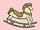

English - Kannada Dictionary
ಇಂಗ್ಲಿಷ್ - ಕನ್ನಡ ನಿಘಂಟು
(r ಸಹ) ಇಂಗ್ಲಿಷ್ ವರ್ಣಮಾಲೆಯ ಹದಿನೆಂಟನೆಯ ಅಕ್ಷರ.
- the r months ಆಯ್ಸ್ಟರ್ ಜಾತಿಯ ಸಿಂಪಿಯ ಬೆಳೆಗೆ ತಕ್ಕ ಋತುವಾದ r ಅಕ್ಷರವನ್ನೊಳಗೊಂಡ ತಿಂಗಳುಗಳು (ಸೆಪ್ಟೆಂಬರ್ನಿಂದ ಏಪ್ರಿಲ್).
- the three R’s: reading, (w)riting and (a)rithmetic (ಪ್ರಾಥಮಿಕ ವಿದ್ಯಾಭ್ಯಾಸಕ್ಕೆ ತಳಹದಿಯಾದ) ಓದು, ಬರಹ ಮತ್ತು ಅಂಕಗಣಿತ; ವಾಚನ, ಲೇಖನ ಮತ್ತು ಗಣಿತ.
(R. ಸಹ)
- Regina(Elizabeth R).
- Rex.
- River.
- (® ಸಹ) registered as a trade mark.
- (ಸೊಸೈಟಿಗಳು ಮೊದಲಾದವುಗಳ ಹೆಸರುಗಳಲ್ಲಿ) Royal.
- (ಚದುರಂಗ) rook.
- Railway.
- rand.
- Regiment.
- Reaumur.
- radius
- roentgen.
(r ಸಹ).
- right.
- recto.
- run(s).
- radius.
- (United Kingdomನಲ್ಲಿ)
- Royal Academy.
- Royal Academician.
- Royal Artillery.
- right ascension.
(ರಸಾಯನವಿಜ್ಞಾನ) radium (ಧಾತು).
Royal Australian Air Force.

- (ಎರಡು ಮರದ ಏಣುಗಳಲ್ಲಿ ಒಂದರ ಚಾಚು ಇನ್ನೊಂದರ ಗಾಡಿಯಲ್ಲಿ ಕೂಡುವಂತೆ ಮೆಟ್ಟಲಿನ ಆಕಾರದಲ್ಲಿ ಮಾಡಿದ) ಕೂರುಗಾಲುವೆ; ಮೆಟ್ಟಿಲುವೆಜ್ಜ.
- (ಚಮ್ಮಟಿಗೆಯಿಂದ ದಿಮ್ಮಿಯನ್ನು ಬಡಿದು ಆ ಚಮ್ಮಟಿಗೆಯನ್ನು ಮೇಲಕ್ಕೆತ್ತಿದಾಗ ದಿಮ್ಮಿಯು ಪುಟ ನೆಗೆಯುವಂತೆ ಅಳವಡಿಸಿರುವ) ನಮ್ಯ ದಿಮ್ಮಿ.

- ಕೂರುಗಾಲುವೆ ಸೇರಿಕೆಯಿಂದ ಜೋಡಿಸು.
- ಕೂರುಗಾಲುವೆಯನ್ನು ಮಾಡು.
ರ್ಯಾಬೈ:
- (ಮುಖ್ಯವಾಗಿ ದೀಕ್ಷೆ ಪಡೆದು ಧರ್ಮಶಾಸ್ತ್ರ ಮತ್ತು ಮತದ ಪ್ರಕ್ರಿಯೆಗಳು ಮೊದಲಾದವುಗಳಲ್ಲಿ ವ್ಯವಹರಿಸುವುದಕ್ಕೂ ಕೆಲವು ಸಂಸ್ಕಾರಗಳನ್ನು ನಡೆಸುವುದಕ್ಕೂ ಅಧಿಕಾರ ಪಡೆದ) ಯೆಹೂದ್ಯ ಧರ್ಮಶಾಸ್ತ್ರ – ವೇತ್ತ, ಪಂಡಿತ, ಬೋಧಕ.
- (ಸಂಬೋಧನೆಯಲ್ಲಿ ಯಾ ಹೆಸರಿನ ಹಿಂದೆ) ಯೆಹೂದ್ಯ ಧರ್ಮಶಾಸ್ತ್ರಜ್ಞನ ಬಿರುದಾಗಿ ಬಳಸುವ ಉಪಾಧಿ.
- ಯೆಹೂದ್ಯ ಧಾರ್ಮಿಕ ಮುಖಂಡನಾಗಿ ನೇಮಕಗೊಂಡವನು.
Chief Rabbi (ಬ್ರಿಟಿಷ್ ಪ್ರಯೋಗ) ಪ್ರಧಾನ ರ್ಯಾಬೈ; ಗ್ರೇಟ್ ಬ್ರಿಟನ್ನಿನಲ್ಲಿರುವ ಯುನೈಟೆಡ್ ಸಿನಗಾಗ್ ಎಂಬ ಸಂಯುಕ್ತ ಯೆಹೂದ್ಯ ಮಂಡಳಿಯ ಪ್ರಧಾನ ಗುರು.

= rabbi.
the rabbins ಯೆಹೂದ್ಯಧರ್ಮ ಮತ್ತು ಸಿದ್ಧಾಂತಗಳ ಪ್ರಾಚೀನ (ಬಹುಪಾಲು 2ರಿಂದ 13ನೇ ಶತಮಾನಗಳಿಗೆ ಸೇರಿದ) ಪ್ರಧಾನ ಗುರುಗಳು.
ರ್ಯಾಬೈಯ – ಅಧಿಕಾರ, ಅಧಿಕಾರವಧಿ ಯಾ ಪದವಿ.
- ರ್ಯಾಬೈಗಳ ಯಾ ಅವರ ಲಿಖಿತಗ್ರಂಥಗಳಿಗೆ ಸಂಬಂಧಿಸಿದ.
- ಅತಿಸೂಕ್ಷ್ಮ ತರ್ಕ ಯಾ ವಿಶ್ಲೇಷಣೆ ಮಾಡುವುದೇ ವೈಶಿಷ್ಟ್ಯವಾದ, ಮುಖ್ಯ ಗುಣವಾದ.
- ರ್ಯಾಬೈಗಳಿಗೆ ಯಾ ಅವರ ಗ್ರಂಥಗಳಿಗೆ ಸಂಬಂಧಿಸಿದಂತೆ.
- ಅತಿಸೂಕ್ಷ್ಮ ತರ್ಕ ಯಾ ವಿಶ್ಲೇಷಣೆಯಿಂದ ಕೂಡಿ.
- ಪ್ರಧಾನ ರ್ಯಾಬೈಗಳ ಉಪದೇಶ ಮತ್ತು ಸಂಪ್ರದಾಯ.
- ಪ್ರಧಾನ ರ್ಯಾಬೈಗಳ ಪರಿಭಾಷೆ.
ರ್ಯಾಬೈ ಪಂಥದವನು.
- ಕುಂದಿಲಿ; ತನ್ನ ಸಹಜ ಪರಿಸರದಲ್ಲಿ ಕಂದು ಬೂದು ಬಣ್ಣದ, ಸಾಕಿದ ಜಾತಿಗಳಲ್ಲಿ ಕಪ್ಪು, ಬಿಳುಪು ಯಾ ಮಿಶ್ರವರ್ಣದ, ಮೊಲದ ಕುಲಕ್ಕೆ ಸೇರಿದ, ಒಂದು ಬಿಲವಾಸಿಯಾದ ದಂಶಕ.
- (ಅಮೆರಿಕನ್ ಪ್ರಯೋಗ) ಮೊಲ.
- ಕುಂದಿಲಿಯ ತುಪ್ಪುಳು, ಮೃದುರೋಮ.
- (ಬ್ರಿಟಿಷ್ ಪ್ರಯೋಗ) (ಆಡುಮಾತು) ಯಾವುದೇ ಆಟದಲ್ಲಿ (ಮುಖ್ಯವಾಗಿ ಕ್ರಿಕೆಟ್, ಗಾಲ್ಫ್ ಯಾ ಲಾನ್ಟೆನಿಸ್ನಲ್ಲಿ) ಕಳಪೆ ಆಟಗಾರ.
- ಕುಂದಿಲಿ ಬೇಟೆ ಮಾಡು.
- (ಬ್ರಿಟಿಷ್ ಪ್ರಯೋಗ) (ಆಡುಮಾತು) ಅತಿಯಾಗಿ ಹರಟೆಕೊಚ್ಚು; ಅಸಂಬದ್ಧವಾಗಿ ಮಾತಾಡು: rabbiting on about his holiday ತನ್ನ ರಜದ ಬಗ್ಗೆ ಹರಟೆ ಹೊಡೆಯುತ್ತ.

ಕುಂದಿಲಿಗೂಡು; ಕುಂದಿಲಿಗಳನ್ನು ಕೂಡುವ ಪೆಟ್ಟಿಗೆಯಂಥ ಗೂಡು.
ಕೈಯ ತುದಿಯಿಂದ ಹೆಕ್ಕತ್ತಿನ ಮೇಲೆ ಹೊಡೆದ ಕೊಚ್ಚೇಟು.
ಕುಂದಿಲಿಗಳನ್ನು ಬೆಳೆಸುವ ಆವರಣ.
ಕುಂದಿಲಿಯ ಯಾ ಕುಂದಿಲಿಯಂಥ.

- ದೊಂಬಿ; (ಯದ್ವಾತದ್ವಾ ಸೇರಿರುವ) ಜನಜಂಗುಳಿ.
- ಕೀಳುಮಂದಿ; ಕ್ಷುದ್ರಸಮೂಹ.
- ಜನತೆಯಲ್ಲಿ ಕೀಳುದರ್ಜೆಯವರು.
the rabble
- = $^1$rabble\((3)\).
- ದೊಂಬಿ ಮಂದಿ; ದೊಂಬಿಜನತೆ.
(ಕಾದು ಕರಗಿದ ಲೋಹ ಮೊದಲಾದವನ್ನು ಕಲಕಲು ಬಳಸುವ) ಬಾಗುತುದಿಯ ಕಬ್ಬಿಣದ ಸರಳು; ಕೊಕ್ಕೆಸಲಾಕಿ.

(ಈಗ ವಿರಳ ಪ್ರಯೋಗ)
- ದೊಂಬಿ.
- ದೊಂಬಿಯ ಗಲಭೆ, ರಾದ್ಧಾಂತ, ಗದ್ದಲ.
ದೊಂಬಿ ಪ್ರೇರಕ, ಪ್ರಚೋದಕ; ರಾಜಕೀಯ ಯಾ ಸಾಮಾಜಿಕ ಬದಲಾವಣೆಗಾಗಿ ಜನತೆಯನ್ನು, ಜನರ ಗುಂಪನ್ನು ಪ್ರಚೋದಿಸುವವ, ಚಿತಾಯಿಸುವವ.

ಜನಜಂಗುಳಿಯ ಭಾವನೆಗಳನ್ನು ಕೆರಳಿಸುವ, ಪ್ರಚೋದಿಸುವ.
ದೊಂಬಿ ಪ್ರಚೋದನೆ; ಜನಜಂಗುಳಿಯ ಭಾವನೆಗಳನ್ನು ಕೆರಳಿಸುವುದು.

- ರ್ಯಾಬೆಲೆ ಎಂಬ ಹ್ರೆಂಚ್ ವಿನೋದ ಸಾಹಿತಿಯ.
- ರ್ಯಾಬೆಲೆಯಂಥ.
- (ಉಕ್ಕಿಹರಿಯುವ ಕಲ್ಪನೆ, ನಿರರ್ಗಳ ಭಾಷೆ, ಅಶ್ಲೀಲ ಹಾಸ್ಯ ಹಾಗೂ ಒರಟು ವಿಡಂಬನೆಗಳನ್ನೇ ವೈಶಿಷ್ಟ್ಯವಾಗಿ ಉಳ್ಳ) ರ್ಯಾಬೆಲೆಯ ಬರಹಗಳಂಥ.
ರ್ಯಾಬೆಲೆಯ ಕೃತಿಗಳ ವ್ಯಾಸಂಗಿ ಯಾ ರ್ಯಾಬೆಲೆಯ ಅಭಿಮಾನಿ.
- ಕ್ರೋಧೋನ್ಮತ್ತ; ಉಗ್ರ ಕೋಪದ: rabid hate ಕ್ರೋಧೋನ್ಮತ್ತ ದ್ವೇಷ.
- ಮೂರ್ಖಾವೇಶದ; ಬುದ್ಧಿಶೂನ್ಯ; ವಿವೇಕರಹಿತ; ದುಡುಕಿನ; ಪೂರ್ವಾಪರಜ್ಞಾನವಿಲ್ಲದ: rabid isolationist ವಿವೇಕರಹಿತ ಪ್ರತ್ಯೇಕತಾವಾದಿ.
- (ಮುಖ್ಯವಾಗಿ ನಾಯಿಯ ವಿಷಯದಲ್ಲಿ).
- ಹುಚ್ಚುತಗುಲಿದ; ನಾಯಿಹುಚ್ಚಿನ.
- ಹುಚ್ಚು ಹಿಡಿದ.
- ನಾಯಿಹುಚ್ಚಿಗೆ ಸಂಬಂಧಿಸಿದ; ನಾಯಿ ಹುಚ್ಚಿನ.
- ಕ್ರೋಧೋನ್ಮತ್ತತೆ.
- ಮೂರ್ಖಾವೇಶತೆ; ವಿವೇಕಶೂನ್ಯತೆ; ದುಡುಕುತನ.
- ನಾಯಿಹುಚ್ಚು ಯಾ ಆ ಹುಚ್ಚು ತಗುಲಿದ ಸ್ಥಿತಿ.
- ಹುಚ್ಚು ಹಿಡಿದಿರುವಿಕೆ.
- ಕ್ರೋಧೋನ್ಮತ್ತನಾಗಿ.
- ಮೂರ್ಖಾವೇಶದಿಂದ; ವಿವೇಕ ರಹಿತನಾಗಿ; ದುಡುಕಿನಿಂದ.
- ನಾಯಿಹುಚ್ಚು ಹಿಡಿದು.
- ಹುಚ್ಚುಹಿಡಿದಂತೆ.
ರೇಬೀಸ್; ಮುಖ್ಯವಾಗಿ ಹುಚ್ಚುನಾಯಿ ಕಡಿದವನಿಗೆ ಉಂಟಾಗುವ ಹುಚ್ಚು, ಸೆಳೆತ, ಜಲಭೀತಿ, ಮೊದಲಾದವುಗಳಿಂದ ಕೂಡಿದ ಒಂದು ಸಾಂಕ್ರಾಮಿಕ, ಮಾರಕ ರೋಗ.
(United Kingdom ನಲ್ಲಿ)
- Royal Automobile Club.
- Royal Armoured Corps.
racoonನ ರೂಪಾಂತರ.
- ರಭಸದ ಒಳಪ್ರವಾಹ; ಮುಖ್ಯವಾಗಿ ಸಮುದ್ರದ ಯಾ ನದಿಯ ಒಳಗಡೆ ಕಿರು ಓಣಿಯಲ್ಲಿ ಹರಿಯುವ ಪ್ರಬಲ ಪ್ರವಾಹ: tide set with a strong race ಪ್ರಬಲ ಪ್ರವಾಹದಿಂದ ಕೂಡಿದ ಭರತ.
- (ಪ್ರಾಚೀನ ಪ್ರಯೋಗ)
- (ಸೂರ್ಯ, ಚಂದ್ರ ಮೊದಲಾದವುಗಳ ) ಗತಿ; ಚಲನೆ.
- ಜೀವನದ, ಕಾಲದ ಗತಿ; ಕಾಲಗತಿ; ಆಯುಷ್ಯ: ere he had run half his race ಅವನ ಆಯುಷ್ಯದ ಅರ್ಧ ಸಹ ಕಳೆಯುವ ಮುನ್ನ.
- (ಹೊಳೆಯಿಂದ ತೋಡಿದ ) ಕಾಲುವೆ; ಸ್ರೋತ (ಮುಖ್ಯವಾಗಿ ಸಂಯುಕ್ತಪದಗಳಲ್ಲಿ ) mill-race ಗಿರಣಿಕಾಲುವೆ.
- (ನೇಯ್ಗೆ) ಲಾಳಿಯು ಹರಿಯುವ ಗಾಡಿ, ವೆಜ್ಜ, ದಾರಿ, ಪಥ.
-
- ರೇಸು; ಓಟದ ಪಂದ್ಯ; (ಓಟಗಾರರು, ಕುದುರೆಗಳು, ಹಡಗು ಯಾ ದೋಣಿಗಳು ಮೊದಲಾದವುಗಳ ) ಪಂಥದ ಓಟ; ಜೂಜು.
- (ಯಾವುದೇ ಕೆಲಸದಲ್ಲಿ, ಒಬ್ಬರ ಮೇಲೊಬ್ಬರ) ಮೇಲಾಟ; ಪಂದ್ಯ; ಪೈಪೋಟಿ; ಸ್ಪರ್ಧೆ.
- (ಬಹುವಚನದಲ್ಲಿ) (ಕ್ಲುಪ್ತ ಕಾಲದಲ್ಲಿ ನಿರ್ದಿಷ್ಟ ವೈಹಾಳಿ ಪಥದಲ್ಲಿ ನಡೆಸುವ) ರೇಸುಗಳು; ಕುದುರೆ, ನಾಯಿ ಮೊದಲಾದವುಗಳ ಪಂದ್ಯಗಳು, ಜೂಜುಗಳು.
- ಬಾಲ್ಬೇರಿಂಗ್ ಯಾ ರೋಲರ್ ಬೇರಿಂಗ್ನಲ್ಲಿ ಗಾಡಿಯಿರುವ ಎರಡು ಉಂಗುರಗಳಲ್ಲೊಂದು.
- (ಆಸ್ಟ್ರೇಲಿಯ) ಕುರಿ ಮೊದಲಾದವುಗಳನ್ನು ಆರಿಸಿಕೊಳ್ಳಲು ಮಾಡಿದ ಬೇಲಿ ಹಾಕಿದ ಓಣಿ, ಕಿರುದಾರಿ.
not in the race (ಆಸ್ಟ್ರೇಲಿಯ) (ಅಶಿಷ್ಟ) ಸಾಧ್ಯತೆ, ಅವಕಾಶ ಇಲ್ಲದಿರುವ.
- (ಕುದುರೆ ಮೊದಲಾದವನ್ನು) ಜೂಜುಬಿಡು; ಜೂಜೋಡಿಸು: raced his cycle against a car ತನ್ನ ಸೈಕಲನ್ನು ಕಾರಿನೊಡನೆ ಜೂಜು ಓಡಿಸಿದ.
- (ವ್ಯಕ್ತಿಯನ್ನು, ವಸ್ತುವನ್ನು) ರಭಸದಿಂದ ಓಡಿಸು; ಅತಿವೇಗವಾಗಿ ಸಾಗುವಂತೆ ಮಾಡು: raced the bill through the House ಮಸೂದೆಯನ್ನು ಶಾಸನಸಭೆಯಲ್ಲಿ ಅತ್ಯಂತ ಶೀಘ್ರವಾಗಿ ಸಾಗಿಸಿದ. raced me along at 6 miles an hour ಗಂಟೆಗೆ ಆರು ಮೈಲಿಯ ವೇಗದಲ್ಲಿ ನನ್ನನ್ನು ಓಡಿಸಿದ.
- (-ಒಡನೆ) ಪಂದ್ಯ ಓಡು; ಪೈಪೋಟಿ ನಡೆಸು.
- ವೇಗದಲ್ಲಿ (ಇತರರನ್ನು) ಮೀರಿಸಲು ಯತ್ನಿಸು.
- (-ಒಡನೆ) ವೇಗದಲ್ಲಿ ಸ್ಪರ್ಧಿಸು.
- ಕುದುರೆ ಜೂಜಿನಲ್ಲಿ ಆಸಕ್ತನಾಗಿರು ಯಾ ಭಾಗವಹಿಸು: a racing man ಜೂಜಾಸಕ್ತ; ಕುದುರೆ ಜೂಜಿನಲ್ಲಿ ಆಸಕ್ತ. the racing world ಕುದುರೆ ಜೂಜಿನ ಪ್ರಪಂಚ, ಲೋಕ, ವೃತ್ತಿ, ವೃತ್ತಿಯವರು.
- (ಹಡಗು ಮೊದಲಾದವುಗಳ ಚಾಲಕ ಚಕ್ರ, ಹುಟ್ಟುಗಾಲಿ ಮೊದಲಾದವುಗಳ ವಿಷಯದಲ್ಲಿ) ಪೂರ್ಣ ವೇಗದಲ್ಲಿ ಚಲಿಸು; ರಭಸದಿಂದ ನಡೆ, ತಿರುಗು.
- (ಎಂಜಿನು, ನೋದಕ, ನಾಡಿ ಮೊದಲಾದವುಗಳ ವಿಷಯದಲ್ಲಿ) ಪೂರ್ಣ ವೇಗದಲ್ಲಿ ಯಾ ವಿಪರೀತ ವೇಗದಲ್ಲಿ – ಓಡು.
- (ವ್ಯಕ್ತಿ, ಪ್ರಾಣಿ ಯಾ ಸಸ್ಯಗಳ)
- ಕುಲ; ಬುಡಕಟ್ಟು.
- ಸಂತತಿ; ಪೀಳಿಗೆ; ವಂಶ.
- (ಒಂದೇ ಮೂಲದವರೆಂದು ಭಾವಿಸಲಾದವರ) ಸಂತತಿ; ಅನ್ವಯ; ಮನೆತನ; ಗೋತ್ರ; ಕುಟುಂಬ.
- (ನಿರ್ದಿಷ್ಟ ಮೂಲದವೆಂದು ಭಾವಿತವಾದ) ಬುಡಕಟ್ಟು; ಕುಲ; ಬಣ; ರಾಷ್ಟ್ರ; ಜನಾಂಗ.
- (ವಿಶಿಷ್ಟ ಲಕ್ಷಣಗಳುಳ್ಳ ಒಂದು) ಮಾನವ ವಿಭಾಗ; ಜನಾಂಗ; ವರ್ಗ: the Mongolian race ಮಂಗೋಲಿಯನ್ ಜನಾಂಗ.
- (ಜೀವಿಗಳ ಯಾವುದೇ) ದೊಡ್ಡ ವಿಭಾಗ; ವರ್ಗ; ಕುಲ; ಜಾತಿ; ತಳಿ: the human race ಮಾನವ, ಮನುಷ್ಯ – ಕುಲ. the four-footed race ಚತುಷ್ಟಾದಿ ವರ್ಗ. the feathered race ಪಕ್ಷಿಜಾತಿ.
- (ರಕ್ತಸಂಬಂಧಿಗಳ) ಕುಲಸಂತತಿ; ಅನ್ವಯ: of noble race ಉದಾತ್ತ ಕುಲದ.
- (ಸಾಮನ್ಯ ಲಕ್ಷಣಗಳುಳ್ಳವರ) ವರ್ಗ; ಕುಲ; ಸಮುದಾಯ: the race of poets ಕವಿಕುಲ. the race of dandies ಷೋಕಿಲಾಲ ವರ್ಗ.
- ಜನಾಂಗೀಯತೆ; ಜನಾಂಗದ ಆಧಾರದ ಮೇಲೆ ಮಾಡುವ ವಿಭಾಗ ಯಾ ಆ ಕಲ್ಪನೆಯನ್ನು ಆಧರಿಸಿದ ಭಾವನೆ: discrimination based on race ಜನಾಂಗೀಯತೆಯನ್ನು ಆಧರಿಸಿದ ತಾರತಮ್ಯ, ಭೇದಭಾವನೆ ಯಾ ವರ್ತನೆ.
- race relations ಜನಾಂಗೀಯ ಸಂಬಂಧ; ಸಾಮಾನ್ಯವಾಗಿ ಒಂದೇ ದೇಶದೊಳಗಿನ ಬೇರೆ ಬೇರೆ ಬುಡಕಟ್ಟುಗಳ, ಜನಾಂಗಗಳ ಸದಸ್ಯರ ನಡುವಣ ಸಂಬಂಧ.
- race riot ಜನಾಂಗೀಯ ದೊಂಬಿ, ಗಲಭೆ; ಜನಾಂಗ ದ್ವೇಷದಿಂದಾಗಿ ಹಿಂಸಾಚಾರದ ಸ್ಫೋಟ.
ಕುದುರೆಯ ಪಂದ್ಯದ ಸಂದರ್ಭದಲ್ಲಿ ನಡೆಸುವ ನರ್ತನಕೂಟ; ಪಂದ್ಯನರ್ತನ.
ರೇಸ್ಕಾರ್ಡು; ರೇಸುಗಳ ಕಾರ್ಯಕ್ರಮ(ವಿವರ); ರೇಸುಪಟ್ಟಿ.
ವೈಹಾಳಿ ಪಥ; ಕುದುರೆ ಪಂದ್ಯದ ಜಾಡು, ಓಣಿ, ಹಾದಿ.
ರೇಸುಗಾಮಿ; ಕುದುರೆ ರೇಸಿಗೆ (ಪದೇ ಪದೇ) ಹೋಗುವವ.
ಪಂದ್ಯದ, ಜೂಜಿನ – ಕುದುರೆ; ಪಂದ್ಯಕ್ಕಾಗಿ ಸಾಕಿ ತಯಾರುಮಾಡಿದ ಕುದುರೆ.
(ರಸಾಯನವಿಜ್ಞಾನ) ರ್ಯಾಸಿಮೇಟ್:
- ರಸೀಮಿಕ್ ಆಮ್ಲದ ಲವಣ ಯಾ ಎಸ್ಟರು.
- ಯಾವುದೇ ದ್ಯುತಿಪಟು ಸಂಯುಕ್ತದ ಎಡಮುರಿ ಮತ್ತು ಬಲಮುರಿ ರೂಪಗಳು ಸಮಪ್ರಮಾಣದಲ್ಲಿರುವ ಮಿಶ್ರಣ.
(ಸಸ್ಯವಿಜ್ಞಾನ) ರಸೀಮ್; ಅಸೀಮಾಕ್ಷ; ಮಧ್ಯೆ ಇರುವ ಉದ್ದವಾದ ಕಾಪಿನ ಮೇಲೆ ಸಮ ಅಂತರಗಳಲ್ಲಿ ಚಿಕ್ಕಚಿಕ್ಕ ತೊಟ್ಟುಗಳುಳ್ಳ ಹೂಗಳು ಅಂಟಿಕೊಂಡಿರುವ ಪುಷ್ಪಗುಚ್ಛ.
(ಒಂದು ಸ್ಥಳದ) ಕುದುರೆ ಪಂದ್ಯಗಳ ಸರಣಿ.
(ರಸಾಯನವಿಜ್ಞಾನ) ರೆಸಿಮಿಕ್; ರೆಸಿಮೀಯ; (ದ್ಯುತಿಪಟು ಸಂಯುಕ್ತಗಳ ವಿಷಯದಲ್ಲಿ) ವಾಮಭ್ರಾಮಕ (laevorotatory) ಮತ್ತು ದಕ್ಷಿಣ ಭ್ರಾಮಕ (dextrorotatory) ರೂಪಗಳೆರಡೂ ಸಮಪ್ರಮಾಣದಲ್ಲಿರುವ.
(ರಸಾಯನವಿಜ್ಞಾನ) ರೆಸಿಮಿಕ್ ಆಮ್ಲ; ವಾಮಭ್ರಾಮಕ ಮತ್ತು ದಕ್ಷಿಣಭ್ರಾಮಕ ಟಾರ್ಟಾರಿಕ್ ಆಮ್ಲಗಳು ಸಮಪ್ರಮಾಣದಲ್ಲಿರುವ ಮಿಶ್ರಣ ಯಾ ಅವುಗಳ ಸಂಯುಕ್ತ.
(ರಸಾಯನವಿಜ್ಞಾನ) ರೆಸಿಮೀಕರಣ; (ದ್ಯುತಿಪಟು ಸಂಯುಕ್ತಗಳ ವಿಷಯದಲ್ಲಿ) ರೆಸಿಮಿಕ್ ಮಿಶ್ರಣ ಆಗುವುದು ಯಾ ಮಾಡುವುದು.
ರೆಸಿಮೀಕರಿಸು; (ದ್ಯುತಿಪಟು ಸಂಯುಕ್ತವನ್ನು) ರೆಸಿಮಿಕ್ ಮಿಶ್ರಣವಾಗಿಸು.
ರೆಸಿಮೀಭವಿಸು; ರೆಸಿಮಿಕ್ ಮಿಶ್ರಣವಾಗು.
- (ಸಸ್ಯವಿಜ್ಞಾನ) ರೆಸಿಮೋಸ್; ಅಸೀಮಾಕ್ಷೀ; ರೆಸೀಮ್ ಉಳ್ಳ.
- (ಅಂಗರಚನಾಶಾಸ್ತ್ರ) (ಗ್ರಂಥಿ ಮೊದಲಾದವುಗಳ ವಿಷಯದಲ್ಲಿ) ಗುಂಪಾಗಿರುವ; ಜೊಂಪೆಯಾಗಿರುವ; ಗುಚ್ಛವಾಗಿರುವ.
- (ಪಂದ್ಯ) ಓಡುವವನು; ಓಟಗಾರ.
- ಪಂದ್ಯದ, ಜೂಜಿನ ಕುದುರೆ.
- ವೇಗವಾಗಿ ಓಡುವ ಯಾವುದೇ ಪ್ರಾಣಿ.
- ಓಟದ ಪಂದ್ಯದಲ್ಲಿ ಬಳಸುವ ಸೈಕಲ್, ದೋಣಿ, ಮೊದಲಾದ ಯಾವುದೇ ವಸ್ತು.
- ತೀರ ರಭಸದಿಂದ ನಡೆಯುವ ಯಾ ತಿರುಗುವ (ಯಂತ್ರ) ಭಾಗ.
- ಭಾರಿ ಫಿರಂಗಿಯ ಪೀಠವು ಚಲಿಸುವ ವರ್ತುಲಾಕಾರದ ಹಾರಿಜ ಕಂಬಿ.
- (ಯಾವುದಾದರೂ ಒಂದು ವಸ್ತು) ಓಡುವ ಪಥ ಯಾ ಮಾರ್ಗ ಮೊದಲಾದವು.
- ನೀರು ಹೋಗುವ ಕಾಲುವೆ, ಮಾರ್ಗ.
- ಬಾಲ್ಬೇರಿಂಗ್ಗಳು ಓಡುವ ಗಾಡಿ, ತೋಡು.
- ವಿದ್ಯುತ್ತಂತಿಗಳನ್ನು ಒಳಗೊಂಡಿರುವ ಪೈಪು ಯಾ ನಾಳ.
- (ಮುಖ್ಯವಾಗಿ ಅಮೆರಿಕನ್ ಪ್ರಯೋಗ)
- ಟ್ರಾಟಿಂಗ್, ಪೇಸಿಂಗ್ ಯಾ ಹಾರ್ನೆಸ್ ರೇಸಿಂಗ್ನ ಪಥ.
- = racecourse.
ರಿಕೆಟ್ಸ್ ರೋಗದ ಯಾ ಅದಕ್ಕೆ ಸಂಬಂಧಿಸಿದ.
- ಕುಲದ, ವಂಶದ ಯಾ ಜನಾಂಗದ.
- ಕುಲ, ವಂಶ ಯಾ ಜನಾಂಗವನ್ನು ಕುರಿತ.
- ಕುಲ, ವಂಶ, ಯಾ ಜನಾಂಗದಿಂದ, ಜನಾಂಗ ಭಾವನೆಯಿಂದ – ಹುಟ್ಟಿದ.
ವರ್ಣಭೇದ ನೀತಿವಾದಿ; ವರ್ಣಭೇದ ನೀತಿಯನ್ನು ಪ್ರತಿಪಾದಿಸುವವ, ಸಮರ್ಥಿಸುವವ.
ಜನಾಂಗೀಯವಾಗಿ; ಕುಲವಂಶ ಯಾ ಜನಾಂಗದ – ದೃಷ್ಟಿಯಿಂದ ಆಧಾರದಿಂದ; ವಂಶ ಯಾ ಜನಾಂಗವನ್ನು ಅನುಸರಿಸಿ.
ಸಹಜಗುಣವಿಶಿಷ್ಟವಾಗಿ; ಸಹಜ ಸರಳತೆ, ಓಜಸ್ಸು, ಜೀವಂತಿಕೆ ಮತ್ತು ತೀಕ್ಷ್ಣತೆಗಳಿಂದ ಕೂಡಿ.
ಸಹಜಗುಣವಿಶಿಷ್ಟತೆ; ಸಹಜ ಸರಳತೆ, ಓಜಸ್ಸು, ಜೀವಂತಿಕೆ, ತೀಕ್ಷ್ಣತೆಗಳಿಂದ ಕೂಡಿರುವಿಕೆ.
ರೇಸಿಂಗ್ ಕಾರು; ಸಿದ್ಧಪಡಿಸಿದ ಜಾಡಿನಲ್ಲಿ ಪಂದ್ಯಕ್ಕಾಗಿ ಓಡಲು ನಿರ್ಮಿಸಿದ ಮೋಟಾರು ಕಾರು.
- ವರ್ಣಭೇದ ನೀತಿ; ಜನಾಂಗಭೇದ ನೀತಿ; ಶ್ವೇತವರ್ಣೀಯರೇ ಶ್ರೇಷ್ಠ, ಇತರ ವರ್ಣೀಯರೆಲ್ಲ ಕೀಳು ಎಂದು ಪ್ರತಿಪಾದಿಸುವ ವಾದ, ಅನುಸರಿಸುವ ನೀತಿ.
- ಜನಾಂಗೀಯವಾದ; ಮಾನವನ ಬುದ್ಧಿಶಕ್ತಿ ಮೊದಲಾದವು ಅವನ ಕುಲ, ವಂಶ ಯಾ ಜನಾಂಗವನ್ನವಲಂಬಿಸಿದೆಯೆಂಬ ವಾದ.

ಚೆದುರು ಮೋಡಗಳು; ಬಿರುಗಾಳಿಯು ರಭಸದಿಂದ ಹೊಡೆದುಕೊಂಡು ಹೋಗುತ್ತಿರುವ, ಚೆಲ್ಲಾಪಿಲ್ಲಿಯಾದ ಮೇಘ ರಾಶಿಗಳು.

(ಮೋಡಗಳ ವಿಷಯದಲ್ಲಿ, ಗಾಳಿಯ ರಭಸದಿಂದ) ಹೊಡೆದುಕೊಂಡು ಹೋಗು.

hat-rack ಹ್ಯಾಟುಗಳ ಪತ್ತಿಗೆ.

- (ಮೇವು ಕಟ್ಟಿನಲ್ಲಿ ಹುಲ್ಲು ತುಂಬಿ) ಕುದುರೆಯನ್ನು ಮೇಯಿಸು; ಕುದುರೆಗೆ ಮೇವಿಡು.
- (ಕುದುರೆ ಮೊದಲಾದವನ್ನು) ಮೇವು ಕಟ್ಟಿಗೆ ಕಟ್ಟು.
- ಪತ್ತಿಗೆಯ, ಬಡುವಿನ ಮೇಲೆ ಯಾ ಒಳಗೆ (ಯಾವುದೇ ಸಾಮಾನನ್ನು) ಇಡು.
ಲಾಯದ ಮೇವುಕಟ್ಟನ್ನು (ಒಣ) ಹುಲ್ಲಿನಿಂದ ತುಂಬು, ಭರ್ತಿಮಾಡು.

- (ಚರಿತ್ರೆ) (ಮುಖ್ಯವಾಗಿ ಚಿತ್ರಹಿಂಸೆಗಾಗಿ ನಿರ್ಮಿಸಿದ ಚೌಕಟ್ಟು ಯಾ ಹಾಸಿಗೆಗೆ ಕಟ್ಟಿ, ವ್ಯಕ್ತಿಯ) ಕೀಲುಗಳನ್ನು ಹಿಗ್ಗಲಿಸು.
- (ರೋಗದ ಯಾ ದೈಹಿಕ ಹಾಗೂ ಮಾನಸಿಕ ಯಾತನೆಯ ವಿಷಯದಲ್ಲಿ) ಚಿತ್ರಹಿಂಸೆ ಕೊಡು, ಮಾಡು: a racking headache ಚಿತ್ರಹಿಂಸೆ ಕೊಡುವ ತಲೆಶೂಲೆ.
-
- ಚಿತ್ರಹಿಂಸೆಯಾಗುವಂತೆ ಕುಲುಕಿಬಿಡು, ಅಲ್ಲಾಡಿಸಿಬಿಡು.
- ಕಾಲುಕೀಲುಗಳನ್ನೆಲ್ಲ ಎಳೆದು ಹಿಂಸಿಸು; ಹಿಗ್ಗಾಮುಗ್ಗಾ ಎಳೆದು ಯಾತನೆಯುಂಟುಮಾಡು: cough that seemed to rack his whole body ಅವನ ಮೈಯನ್ನೆಲ್ಲ ಅಲ್ಲಾಡಿಸಬಿಡುವಂತಿದ್ದ ಕೆಮ್ಮು.
- ಅತಿಯಾದ ಶ್ರಮ ಕೊಡು; ವೇದನೆಯಾಗುವಷ್ಟು ಶ್ರಮಪಡಿಸು: racked his brains for a plan ವುದಾದರೂ ಒಂದು ಉಪಾಯ ಹವಣಿಸಲು ತನ್ನ ಮಿದುಳಿಗೆ ಆದಷ್ಟೂ ಶ್ರಮಕೊಟ್ಟ, ತಲೆತುರುಚಿಕೊಂಡ.
-
- (ಸಾಧ್ಯವಾದಷ್ಟೂ) ಅತಿಯಾದ ಕಂದಾಯವನ್ನು ಯಾ ಮೊಬಲಗನ್ನು ಕೀಳು, ಸುಲಿದುಕೊ, ವಸೂಲು ಮಾಡು.
- ಅತಿ ಕಂದಾಯ ವಸೂಲು ಮಾಡಿ ರೈತರನ್ನು ಯಾ ಗುತ್ತಿಗೆದಾರನನ್ನು, ಅತಿ ಬಾಡಿಗೆಯಿಂದ ಬಾಡಿಗೆದಾರರನ್ನು – ಹಿಂಸಿಸು.
- ಅತಿಯಾಗಿ ಬೆಳೆ ತೆಗೆದು ಜಮೀನನ್ನು ನಿಸ್ಸಾರಗೊಳಿಸು, ಸತ್ತ್ವಹೀನವಾಗಿಸು.

(ಚರಿತ್ರೆ) ಚಿತ್ರಹಿಂಸೆಯ ಹಾಸಿಗೆ; ಚಿತ್ರಹಿಂಸೆಗೆ ಒಳಪಡಿಸಿದವನನ್ನು ಅಂಗಾತನಾಗಿ ಮಲಗಿಸಿ ಅವನ ಕೈಕಾಲುಗಳನ್ನು ಎಳೆದು ಕಟ್ಟಿ ಎರಡು ತುದಿಗಳಲ್ಲೂ ಇರುವ ಭಾರವಾದ ಉರುಳೆಗಳನ್ನು ಹಿಂದಕ್ಕೂ ಮುಂದಕ್ಕೂ ಉರುಳಿಸಿ ಅವನ ಕೀಲುಗಳನ್ನೆಲ್ಲ ಹಿಗ್ಗಾಮುಗ್ಗಾ ಎಳೆದು ನರಕಯಾತನೆಗೆ ಗುರಿಮಾಡಲು ಬಳಸುತ್ತಿದ್ದ ಚೌಕಟ್ಟು.
on the rack
- ಚಿತ್ರಹಿಂಸೆಯ ಹಾಸಿಗೆಯ ಮೇಲೆ.
- ಘೋರ ಸಂಕಟಕ್ಕೆ ಸಿಕ್ಕಿ; ಚಿತ್ರಹಿಂಸೆಗೆ ಒಳಗಾಗಿ.

= arrack (ಮುಖ್ಯವಾಗಿ rack punch ಎಂಬಲ್ಲಿ ಬಳಕೆ).

ಕುಕ್ಕೋಟಕ್ಕೂ ಮಂದಗತಿಯ ನಾಗಾಲೋಟಕ್ಕೂ ಮಧ್ಯಸ್ಥ ವೇಗದ, ಕುದುರೆಯ ನಡಗೆ, ಗತಿ.

(ಕುದುರೆಯ ವಿಷಯದಲ್ಲಿ) ಕುಕ್ಕೋಟಕ್ಕೂ ಮಂದಗತಿಯ ನಾಗಾಲೋಟಕ್ಕೂ ಮಧ್ಯಸ್ಥ ವೇಗದಲ್ಲಿ ನಡೆ.
(ದ್ರಾಕ್ಷಿಯ ಯಾ ಸೇಬಿನ ಗಷ್ಟನ್ನು ಯಾ ಕಸರನ್ನು ಹಿಂಡಿ) ವೈನನ್ನು ತೆಗೆ.

ವಿನಾಶ; ಹಾಳು; ಧ್ವಂಸ: go to rack and ruin ಧ್ವಂಸವಾಗಿ ಹೋಗು.

ಕುರಿಮರಿ ಮೊದಲಾದವುಗಳ, ಮುಂದಿನ ಪಕ್ಕೆಲುಬುಗಳನ್ನೊಳಗೊಂಡ ಅಂಗಭಾಗ.

- ಗದ್ದಲ; ಗಲಭೆ; ಗಲಾಟೆ; ಅವಾಂತರ; ಕೋಲಾಹಲ.
- ಗೋಷ್ಠಿಯ, ಸಂತೋಷಕೂಟದ – ಸಂಭ್ರಮ ಯಾ ಉಲ್ಲಾಸ.
- ಲೋಲುಪತೆ; ದುರ್ವ್ಯಸನಗಳಲ್ಲಿ ಮುಳುಗಿರುವಿಕೆ.
- (ಆಡುಮಾತು) ಉದ್ಯೋಗ; ಕಸುಬು; ಜೀವನೋಪಾಯ; ವೃತ್ತಿ; ಚಟುವಟಿಕೆ; ವ್ಯವಹಾರ: start a new racket ಹೊಸ ಉದ್ಯೋಗ, ಚಟುವಟಿಕೆ, ವ್ಯವಹಾರ ಪ್ರಾರಂಭಿಸು.
- (ಅಶಿಷ್ಟ)
- ಸುಲಿಗೆ; ಬೆದರಿಸಿ ಯಾ ಹಿಂಸಾತ್ಮಕ ಕಾರ್ಯಗಳಿಂದ ಕಾನೂನು ಬಾಹಿರವಾಗಿ ಹಣ ಕೀಳುವುದು.
- ಮೋಸ; ವಂಚನೆ; ದಗಲ್ಬಾಜಿ; ಮೋಸದ ಯೋಜನೆ, ಉದ್ಯಮ ಯಾ ವ್ಯವಹಾರ.
- ಲಂಚ ಯಾ ಬೆದರಿಕೆಗಳ ಮೂಲಕ ಕಾರ್ಯಗತಗೊಳಿಸುವ (ಸಾಮಾನ್ಯವಾಗಿ) ಕಾನೂನುಬಾಹಿರ ಉದ್ಯಮ.
- ಸುಲಭವಾದ ಜಿವನೋಪಾಯ ಮಾರ್ಗ, ವಿಧಾನ.
- ಉಗ್ರಪರೀಕ್ಷೆ; ಅಗ್ನಿಪರೀಕ್ಷೆ; ದುಃಸಹನೀಯ ಕಷ್ಟ: stand the racket ಅಗ್ನಿಪರೀಕ್ಷೆಯಲ್ಲಿ ಗೆಲ್ಲು; ದುರ್ಭರ ಕಷ್ಟ ಸಹಿಸಿಕೊ.

- ಲಫಂಗನಾಗಿ ಬದುಕು; ಲಂಪಟ ಜೀವನವನ್ನು ನಡೆಸು.
- ಗದ್ದಲ ಮಾಡುತ್ತ ಓಡಾಡು.
(ಕಾರ್ಕಿನ ಮೇಲೆ ದಾರ ಸುತ್ತಿ ಮಾಡಿದ ಚೆಂಡಿಗೆ ಆಡಿನ ಮರಿಯ ತೊಗಲನ್ನು ಮುಚ್ಚಿ ಹೊಲಿದ, ಸಣ್ಣ, ಗಟ್ಟಿ) ರ್ಯಾಕೆಟ್ ಚೆಂಡು.
ಮೋಸದ ವ್ಯಾಪಾರಿ; ದಗಲ್ಬಾಜಿ ವ್ಯಾಪಾರಿ; ಅಪ್ರಾಮಾಣಿಕವಾದ, ಮೋಸದ ವ್ಯವಹಾರ ನಡೆಸುವವ.
- ಸುಲಿಗೆ; ಶಾಸನಬಾಹಿರವಾದ, ಹಲವೊಮ್ಮೆ ಹಿಂಸಾತ್ಮಕ ವಾದ ಕೃತ್ಯಗಳಿಂದ, ಹಣ ಸುಲಿದುಕೊಳ್ಳಲು ಯಾ ಬೇರೆ ದುರುದ್ದೇಶವನ್ನು ಸಾಧಿಸಲು ಯತ್ನಿಸುವಿಕೆ.
- ಮೋಸದ ವ್ಯಾಪಾರ, ವ್ಯವಹಾರ, ಚಟುವಟಿಕೆ.
(ರ್ಯಾಕೆಟ್ಟುಗಳನ್ನು ಆಕಾರ ಕೆಡದಂತೆ ಮಾಡಲು ಒತ್ತಿಡುವ) ರ್ಯಾಕೆಟ್ ಪ್ರೆಸ್ಸು, ಒತ್ತಿಗೆ.
ರ್ಯಾಕೆಟ್ ಆಕಾರದ ತೋಕೆಯುಳ್ಳ ಹಲವು ಸಣ್ಣ ಪಕ್ಷಿಜಾತಿ.
- ಗಲಭೆ ಮಾಡುವ; ಗಲಾಟೆ ಎಬ್ಬಿಸುವ; ಕೋಲಾಹಲನ್ನುಂಟುಮಾಡುವ.
- ದುರ್ವ್ಯಸನಗಳಲ್ಲಿ ಆಸಕ್ತನಾದ; ವಿಷಯ ಲೋಲುಪತೆಯಲ್ಲೇ ಒಲವುಳ್ಳ.
(ಕಡಿದಾದ ಮಾರ್ಗದಲ್ಲಿ ಬಂಡಿಗಳು ಹಿಂದಕ್ಕೆ ಸರಿಯದಂತೆ) ರೈಲುಹಾದಿಯಲ್ಲಿ ಸಾಧಾರಣವಾಗಿ ಇರುವ ಎರಡು ಕಂಬಿಗಳ ನಡುವೆ ಹಲ್ಲುಕಂಬಿಯೊಂದನ್ನು ಹಾಕಿರುವ ರೈಲುಮಾರ್ಗ; ಹಲ್ಲುಕಂಬಿ ರೈಲುಮಾರ್ಗ.
- ಆದಾಯ ಸಮಕಂದಾಯ; ಜಮೀನಿನ ಯಾ ಬೇರೆ ಆಸ್ತಿಯ ವಾರ್ಷಿಕ ಆದಾಯಕ್ಕೆ ಹೆಚ್ಚುಕಡಮೆ ಸರಿಸಮನಾದ ಕಂದಾಯ.
- ದುಬಾರಿ ಕಂದಾಯ ಯಾ ಬಾಡಿಗೆ.

- ದುಬಾರಿ ಕಂದಾಯವನ್ನು ಯಾ ಬಾಡಿಗೆಯನ್ನು ವಸೂಲು ಮಾಡು.
- ಗುತ್ತಿಗೆದಾರನಿಂದ ದುಬಾರಿ ಕಂದಾಯವನ್ನು ಯಾ ಗುತ್ತಿಗೆಯನ್ನು ಬಾಡಿಗೆದಾರನಿಂದ ದುಬಾರಿ ಬಾಡಿಗೆಯನ್ನು ವಸೂಲು ಮಾಡಿ ಅವನನ್ನು ಹಿಂಸಿಸು, ಕಾಡು.
- ದುಬಾರಿ ಬಾಡಿಗೆ ಯಾ ಕಂದಾಯ ಕೊಡುವ ಬಾಡಿಗೆದಾರ.
- ದುಬಾರಿ ಬಾಡಿಗೆ ಯಾ ಕಂದಾಯ ವಸೂಲಿಮಾಡುವವ.
(ಅಮೆರಿಕನ್ ಪ್ರಯೋಗ) ಆಟದಲ್ಲಿ ಅಂಕ, ಗೆಲ್ಲಂಕ ಮೊದಲಾದವನ್ನು ಗಳಿಸು, ಸಾಧಿಸು: racked 30 points up in the first half ಪ್ರಥಮಾರ್ಧದಲ್ಲಿ 30 ಅಂಕಗಳನ್ನು ಗಳಿಸಿದನು.
ಹಲ್ಲುಗಾಲಿ; ದಂತಚಕ್ರ.
(ಮುಖ್ಯವಾಗಿ ಅಮೆರಿಕನ್ ಪ್ರಯೋಗ) ರೇಕಾನ್; ರೇಡಾರ್ (ಸಂಜ್ಞೆಗಳನ್ನು ಸೂಸುವ) ಪ್ರೇಷಕ.

ಕಥಕ; ಕಥಾನಿರೂಪಕ; ಅನುಭವದ ಕಥೆಗಳನ್ನು ಯಾ ದಂತಕಥೆಗಳನ್ನು ಯಾ ದೃಷ್ಟಾಂತ ಕಥೆಗಳನ್ನು – ರಸವತ್ತಾಗಿ ಹೇಳಬಲ್ಲವನು: skilful raconteur ಕಥನಕುಶಲಿ; ಅನುಭವದ, ದೃಷ್ಟಾಂತದ ಕಥೆಗಳನ್ನು ಹೇಳುವುದರಲ್ಲಿ ಕುಶಲನಾದವನು.
raconteur ಎಂಬುದರ ಸ್ತ್ರೀಲಿಂಗ ರೂಪ.
ರಕೂನ್:
- ಅಮೆರಿಕಾದ, ನಸುಗಂದು ಬಣ್ಣದ, ತುಪ್ಪುಳ ಮೈಯ, ಪೊದೆಬಾಲದ ನಿಶಾಚರ ಮಾಂಸಾಹಾರಿ ಪ್ರಾಣಿ.
- ಈ ಪ್ರಾಣಿಯ ತುಪ್ಪುಳು.

racket ಪದದ ರೂಪಾಂತರ.
- ಸ್ವಜಾತಿಲಕ್ಷಣಸಂಪನ್ನ; ತನ್ನ ಜಾತಿಯ ಲಕ್ಷಣಗಳನ್ನು ಹೇರಳವಾಗಿ ಉಳ್ಳ.
- (ಮುಖ್ಯವಾಗಿ ರುಚಿಯ ವಿಷಯದಲ್ಲಿ) ಸ್ವವೈಶಿಷ್ಟ್ಯವುಳ್ಳ; ತನ್ನದೇ ಆದ ವಿಶಿಷ್ಟ ರುಚಿಯುಳ್ಳ: of racy flavour ತನ್ನದೇ ಆದ ರುಚಿಯುಳ್ಳ.
- ಸಹಜಗುಣವಿಶಿಷ್ಟ; ಮೂಲದ ಗುಣಗಳನ್ನು, ಹುಟ್ಟುಗುಣದ ಬಲವನ್ನು, ಉಳಿಸಿಕೊಂಡಿರುವ: racy of the soil ಸಹಜಗುಣಗಳಿಂದ ಕೂಡಿದ; ಸಹಜ ಸರಳತೆ, ಓಜಸ್ಸು, ಜೀವಂತಿಕೆ, ತೀಕ್ಷ್ಣತೆಗಳುಳ್ಳ.
- (ಶೈಲಿಯಲ್ಲಿ) ಸ್ವಾರಸ್ಯವೂ ವೀರ್ಯವತ್ತೂ ಆದ.


(ಭೌತವಿಜ್ಞಾನ) ರ್ಯಾಡ್; ಅಯಾನೀಕಾರಕ ವಿಕಿರಣದ ಹೀರಿಕೆಯನ್ನು ಅಳೆಯುವುದಕ್ಕೆ ಬಳಸುವ ಮಾನ (ಒಂದು ಕಿಲೋಗ್ರಾಮ್ ಹೀರುವ ಪದಾರ್ಥ 0.01 ಜೂಲ್ (joule) ಶಕ್ತಿಯನ್ನು ಹೀರಿಕೊಂಡುದಕ್ಕೆ ಸಮ).
(United Kingdom ನಲ್ಲಿ) Royal Academy of Dramatic Art.
ರೇಡಾರ್:
- ಅಧಿಕ ಆವೃತ್ತಿಯ ವಿದ್ಯುತ್ಕಾಂತ ತರಂಗಗಳನ್ನು ಕಳುಹಿಸಿ, ಪ್ರತಿಫಲಿತ ತರಂಗಗಳನ್ನು ಗುರುತಿಸುವ ಮೂಲಕ ಹಡಗು, ವಿಮಾನ, ಮತ್ತಿತರ ಚಲಿಸುವ ಕಾಯಗಳನ್ನು ಪತ್ತೆಹಚ್ಚುವ ವ್ಯವಸ್ಥೆ.
- ಇದಕ್ಕೆ ಬಳಸುವ ಉಪಕರಣ.
ರೇಡಾರ್ ಬೋನು; ಒಂದು ನಿರ್ದಿಷ್ಟ ವೇಗಮಿತಿಯನ್ನು ಮೀರುವ ವಾಹನಗಳನ್ನು ಕಂಡುಹಿಡಿಯಲು ರೇಡಾರನ್ನು ಬಳಸುವುದು.
(United Kingdom ನಲ್ಲಿ) Royal Army Dental Corps.
(ಅನೇಕವೇಳೆ ಕುರಿಗಳ ಮೇಲೆ ಗುರುತು ಮಾಡಲು ಬಳಸುವ) ಕೆಂಗಾವಿ (ಬಣ್ಣ).

- ಕೆಂಗಾವಿ ಬಣ್ಣ ಹಚ್ಚು, ತೊಡೆ.
- ಕುಸುಂಬಿಬಣ್ಣ ಮೆತ್ತು, ಬಳಿ.
ಕೊಳಕಾದ; ಶುಭ್ರವಲ್ಲದ.
- ಕಿರಣಗಳ ಯಾ ಕಿರಣಗಳಲ್ಲಿಯ.
- ರೇಡಿಯಲ್:
- ಕಿರಣಗಳಂತೆ ಯಾ ತ್ರಿಜ್ಯಗಳಂತೆ – ಜೋಡಿಸಿದ.
- ತ್ರಿಜ್ಯದ ಸ್ಥಾನ ಯಾ ಮುಖವುಳ್ಳ; ತ್ರಿಜ್ಯದ ದಿಕ್ಕಿನಲ್ಲಿರುವ: radial axle (ರೈಲು, ಟ್ರ್ಯಾಂ, ಮೊದಲಾದ ಮಾರ್ಗದ ಒಂದು ಬಾಗಿನಲ್ಲಿ ರೈಲುಗಾಡಿ ಮೊದಲಾದ ವಾಹನವು ತಿರುಗುವಾಗ) ಬಾಗಿನ ವರ್ತುಲಕ್ಕೆ ತ್ರಿಜ್ಯವಾಗಿ ವರ್ತಿಸುವ ಆ ವಾಹನದ ಗಾಲಿಯ ಅಚ್ಚು.
- ಅರಗಳುಳ್ಳ; ಅರೆಕಾಲುಗಳುಳ್ಳ.
- ಕೇಂದ್ರದಿಂದ ಹೊರಟು ಹರಡುತ್ತಾ ಹೋಗುವ ರೇಖೆಗಳುಳ್ಳ; ಕೇಂದ್ರಾಪಸರಣ ರೇಖೆಗಳುಳ್ಳ.
- ಕೇಂದ್ರಾಪಸರಣ ಗತಿಯ ಯಾ ವರ್ತನೆಯ; ಕೇಂದ್ರದಿಂದ ಹೊರಟು ಅಪಸರಣ ಹೊಂದಿ ನಾನಾ ದಿಕ್ಕಿನಲ್ಲಿ ಹರಿಯುವ ರೇಖೆಗಳಲ್ಲಿ ಚಲಿಸುವ ಯಾ ವರ್ತಿಸುವ.
- (ಅಂಗರಚನಾಶಾಸ್ತ್ರ) ಮುಂದೋಳಿನ ‘ರೇಡಿಯಸ್’ಮೂಳೆಯ.
- (ವಾಹನದ ಟೈರಿನ ವಿಷಯದಲ್ಲಿ) ತ್ರಿಜ್ಯೀಯ; ರೇಡಿಯಲ್; ರಚನಾ ಸ್ತರಗಳನ್ನು ಪರಿಧಿಗೆ ಲಂಭವಾಗಿ, ತ್ರಿಜ್ಯೀಯವಾಗಿ ಅಳವಡಿಸಲಾಗಿರುವ.
- = radial nerve.
- = radial artery.
- ರೇಡಿಯಲ್ ಟೈರು.
(ಅಂಗರಚನಾಶಾಸ್ತ್ರ) ಅರೀಯ ಧಮನಿ; ಪ್ರಧಾನ ಧಮನಿಯೊಂದರಿಂದ, ಮುಖ್ಯವಾಗಿ ಅಯೋರ್ಟದಿಂದ ಹೊರಡುವ ಶಾಖಾಧಮನಿ.
ರೇಡಿಯಲ್ ಎಂಜಿನು; ಸಿಲಿಂಡರುಗಳನ್ನು ತ್ರಿಜ್ಯೀಯವಾಗಿ ಅಳವಡಿಸಿರುವ ಎಂಜಿನು.
ತ್ರಿಜ್ಯಗಳಂತೆ ಜೋಡಿಸುವಿಕೆ; ತ್ರಿಜ್ಯನ.
ತ್ರಿಜ್ಯಗಳಂತೆ ಜೋಡಿಸಿದ.
ತ್ರಿಜ್ಯಗಳಂತೆ; ತ್ರಿಜ್ಯಾಕಾರವಾಗಿ; ಕೆಂದ್ರಾಪಸರಣವಾಗಿ; ಕೆಂದ್ರದಿಂದ ಹೊರಟು ಅಪಸರಣ ಹೊಂದಿ ನಾನಾ ದಿಕ್ಕಿಗೆ ಹರಡುತ್ತ.
(ಅಂಗರಚನಾಶಾಸ್ತ್ರ) ಅರೀಯ ನರ; ಪ್ರಧಾನ ನರವೊಂದರಿಂದ ಹೊರಡುವ ಶಾಖಾನರ.
ತ್ರಿಜ್ೀಯ ಸಮ್ಮಿತಿ; ಕೇಂದ್ರದಿಂದ ತ್ರಿಜ್ಯೀಯವಾಗಿ ನಿರ್ದಿಷ್ಟ ದೂರದಲ್ಲಿ ನಿರ್ದಿಷ್ಟ ಬಗೆಯ ಭಾಗಗಳಿರುವಂತೆ ಅಳವಡಿಸಿದಾಗ ದೊರೆಯುವ ಸಮ್ಮಿತಿ.
(ಮುಖ್ಯವಾಗಿ ನಕ್ಷತ್ರವೇ ಮೊದಲಾದ ಆಕಾಶಕಾಯ ಮತ್ತು ವೀಕ್ಷಕನಿಗೆ ಸಂಬಂಧಿಸಿದಂತೆ) ತ್ರಿಜ್ಯೀಯ ವೇಗ; ತ್ರಿಜ್ಯೀಯ ರೇಖೆಯ ದಿಕ್ಕಿನಲ್ಲಿ ಚಲಿಸುವ ವೇಗ.
(ಜ್ಯಾಮಿತಿ) ರೇಡಿಯನ್; ಕೋನವನ್ನಳೆಯಲು ಬಳಸುವ ಮಾನ; ತ್ರಿಜ್ಯಕ್ಕೆ ಸಮವಾಗಿರುವ ಚಾಪದ ಎರಡು ತುದಿಗಳನ್ನು ವರ್ತುಲದ ಕೇಂದ್ರಕ್ಕೆ ಸೇರಿಸಿದಾಗ ಕೇಂದ್ರದಲ್ಲಿ ರೂಪುಗೊಳ್ಳುವ ಕೋನಕ್ಕೆ ಸಮನಾದುದು.
- ಪ್ರಕಾಶ; ಕಾಂತಿ; ಪ್ರಭೆ; ತೇಜಸ್ಸು: the radiance of the tropical sun ಉಷ್ಣವಲಯದ ಸೂರ್ಯತೇಜಸ್ಸು.
- (ಕಣ್ಣಿನ ಯಾ ರೂಪರಾಶಿಯ) ಪ್ರಕಾಶ; ಕಾಂತಿ; ತೇಜಸ್ಸು; ಪ್ರಭಾರಾಶಿ.
- ಕಿರಣಗಳನ್ನು (ಹೊರ)ಸೂಸುವ, ಪ್ರಸರಿಸುವ; ತೇಜೋರಾಶಿಯನ್ನು ಹರಡುವ; ಕಾಂತಿಯನ್ನು ಬೀರುವ; ಪ್ರಭಾಮಯವಾದ.
- (ಕಣ್ಣಿನ ಯಾ ರೂಪಲಾವಣ್ಯದ ವಿಷಯದಲ್ಲಿ) (ಆನಂದ, ಆಶೆ ಯಾ ಪ್ರೇಮದಿಂದ) ಪ್ರಕಾಶಮಾನವಾದ; ಕಾಂತಿಮಯವಾದ; ತೇಜಃಪುಂಜವಾದ.
- (ಬೆಳಕಿನ ವಿಷಯದಲ್ಲಿ) ಕಿರಣಗಳಾಗಿ ಹರಡುವ, ಪ್ರಸರಿಸುವ.
- (ಚೆಲುವಿನ ವಿಷಯದಲ್ಲಿ) ಉಜ್ವಲ; ದೇದೀಪ್ಯಮಾನ; ತೇಜೋಮಯ; ಕಣ್ಣನ್ನು ಕೋರೈಸುವ.
- ತ್ರಿಜ್ಯಾಕಾರವಾಗಿ, ತ್ರಿಜ್ಯಗಳಂತೆ – ವರ್ತಿಸುವ ಯಾ ವಿಸ್ತರಿಸುವ.
- ಬೆಳಕು ಯಾ ಉಷ್ಣವು ವಿಕಿರಣವಾಗುವ ಬಿಂದು ಯಾ ವಸ್ತು; ವಿಕಿರಣ ಕೆಂದ್ರ.
- (ಖಗೋಳ ವಿಜ್ಞಾನ) = radiant point.
ವಿಕಿರಣ ಉಷ್ಣ; ವಹನ (conduction) ಯಾ ಸಂವಹನ (convection)ದಿಂದ ಆಗಿರದೆ, ವಿಕಿರಣದಿಂದ ಸಾಗುವ ಉಷ್ಣ.
ವಿಕಿರಣ ಹೀಟರು, ತಾಪಕ; ವಿಕಿರಣ ಉಷ್ಣದಿಂದ ಕೆಲಸಮಾಡುವ ಹೀಟರು.
ಪ್ರಕಾಶಮಾನವಾಗಿ; ಕಾಂತಿಪೂರ್ಣವಾಗಿ; ತೇಜೋಮವಾಗಿ; ಉಜ್ವಲವಾಗಿ; ಪ್ರಭಾಪೂರ್ಣವಾಗಿ; ದೇದೀಪ್ಯಮಾನವಾಗಿ.
ಪ್ರಸರಣ ಬಿಂದು:
- ರಶ್ಮಿಗಳು ಯಾ ತ್ರಿಜ್ಯಗಳು ಯಾವ ಬಿಂದುವಿನಿಂದ ಹೊರಡುವುವೋ ಆ ಬಿಂದು.
- (ಖಗೋಳ ವಿಜ್ಞಾನ) ಉಲ್ಕಾಪಾತ ಯಾವ ಬಿಂದುವಿನಿಂದ ಹೊರಡುತ್ತಿರುವಂತೆ ಕಾಣಿಸುವುದೋ ಆ ಬಿಂದು.
ತ್ರಿಜ್ಯಾತ್ಮಕ; ತ್ರಿಜ್ಯಾಕಾರದ ಕಿರಣಗಳು ಯಾ ಭಾಗಗಳು ಉಳ್ಳ.
- (ಬೆಳಕಿನ ಯಾ ತಾಪದ ಕಿರಣಗಳನ್ನು) ಹೊರಸೂಸು; ಹರಡು; ಪ್ರಸರಿಸು; ವಿಕಿರಣಗೊಳಿಸು.
- (ವಿದ್ಯುತ್ಕಾಂತ ತರಂಗಗಳನ್ನು) ಸೂಸು; ಹರಡು; ವಿಕಿರಣಗೊಳಿಸು.
- (ಬೆಳಕನ್ನು ಯಾ ತಾಪವನ್ನು) ಕೇಂದ್ರದಿಂದ ಹೊರಸೂಸು, ಹರಡು, ಪ್ರಸರಿಸು.
- (ಚೈತನ್ಯ, ಪ್ರೇಮ, ಆನಂದ ಮೊದಲಾದವನ್ನು) ಬೀರು; ಹರಡು.
- (ಬೆಳಕಿನ ಯಾ ತಾಪದ ಕಿರಣಗಳ ವಿಷಯದಲ್ಲಿ) ಹೊರಸೂಸು; ಹರಡು; ಪ್ರಸರಿಸು; ವಿಕಿರಣಗೊಳ್ಳು.
- (ವಿದ್ಯುತ್ಕಾಂತ ತರಂಗಗಳ ವಿಷಯದಲ್ಲಿ) ಸೂಸು; ಹರಡು; ವಿಕಿರಣವಾಗು.
- ಅಪಸರಣಗೊಳ್ಳು; ಕೇಂದ್ರದಿಂದ ಹೊರಟು ಹರಡುತ್ತಾ ಹೋಗು.
ತ್ರಿಜ್ಯಾತ್ಮಕವಾಗಿ; ತ್ರಿಜ್ಯಾಕಾರದ ಕಿರಣಗಳಿಂದ ಯಾ ಭಾಗಗಳಿಂದ ಕೂಡಿ.
ವಿಕಿರಣ:
- (ಭೌತವಿಜ್ಞಾನ) ವಿದ್ಯುತ್ಕಾಂತೀಯ ತರಂಗಗಳ ರೂಪದಲ್ಲಿ ಶಕ್ತಿಪ್ರಸಾರವಾಗುವುದು.
- ಹಾಗೆ ಪ್ರಸಾರವಾಗುವ ಶಕ್ತಿ.
- (ವೈದ್ಯಶಾಸ್ತ್ರ) ಎಕ್ಸ್ಕಿರಣಗಳು, ಗ್ಯಾಮಾ ಕಿರಣಗಳು ಮೊದಲಾದವುಗಳಿಂದ ಕ್ಯಾನ್ಸರ್ ಮೊದಲಾದ ರೋಗಗಳಿಗೆ ನೀಡುವ ಚಿಕಿತ್ಸೆ.
ವಿಕಿರಣದ ಯಾ ಅದಕ್ಕೆ ಸಂಬಂಧಿಸಿದ.
ವಿಕಿರಣದಂತೆ ಯಾ ಅದಕ್ಕೆ ಸಂಬಂಧಿಸಿದಂತೆ.
ವಿಕಿರಣ ರಸಾಯನ ವಿಜ್ಞಾನ; ವಿಕಿರಣದಿಂದ ವಸ್ತುವಿನ ಮೇಲೆ ಆಗುವ ರಾಸಾಯನಿಕ ಪರಿಣಾಮ.
ವಿಕಿರಣ ಕಾಹಿಲೆ; ವಿಕಿರಣತಾಡನೆಗೆ ಒಳಗಾದ ಕಾರಣ ಉಂಟಾಗುವ ಅಸ್ವಸ್ಥತೆ.
ವಿಕಿರಣದ ಯಾ ವಿಕಿರಣಾತ್ಮಕ ಯಾ ವಿಕಿರಣಕಾರಕ.
-
- ಪ್ರಸಾರಕ; ಪ್ರಸಾರಮಾಡುವ ವ್ಯಕ್ತಿ ಯಾ ವಸ್ತು.
- ವಿಕಿರಣಕಾರಿ.
- (ಕಾದ ಗಾಳಿ, ನೀರು, ಮೊದಲಾದವುಗಳಿಂದ ಕಾವು ಪಡೆದು, ಕೊಠಡಿ ಮೊದಲಾದವುಗಳಿಗೆ ಶಾಖ ಬೀರುವ) ಶಾಖಪ್ರಸಾರಕ.
- (ಸಾಮಾನ್ಯವಾಗಿ ಒಯ್ಯಲು ಸುಲಭವಾದ) ಎಣ್ಣೆಯ ಯಾ ವಿದ್ಯುತ್ತಿನ ಒಲೆ, ಸ್ಟೌವ್.
- (ಮೋಟಾರು ವಾಹನದಲ್ಲಿ) ರೇಡಿಯೇಟರು; ಎಂಜಿನನ್ನು ತಂಪಿಸುವ ಸಲಕರಣೆ.
ರೇಡಿಯೇಟರ್ ಜಾಲರಿ; ಮೋಟಾರು ವಾಹನದ ರೇಡಿಯೇಟರಿಗೆ ಗಾಳಿಯಾಡಲು ವಾಹನದ ಮುಂದೆ ಹಾಕಿರುವ ಅಡ್ಡಕಂಬಿಗಳು, ಜಾಲರಿ.

- ಬೇರಿನ; ಮೂಲದ.
- ಸ್ವರೂಪಭೂತ; ಮೂಲಸ್ವರೂಪದ; ಮೂಲಭೂತ: a radical error ಮೂಲಭೂತ ದೋಷ.
- ಆಧಾರಭೂತ; ಆದ್ಯ; ಪ್ರಾಥಮಿಕ; ಪ್ರಾರಂಭಿಕ; ಮೂಲ: the radical idea or principles of a system ಒಂದು ವ್ಯವಸ್ಥೆಯ ಆಧಾರಭೂತ, ಮೂಲ ಭಾವನೆ ಯಾ ತತ್ತ್ವಗಳು.
- ತಲಸ್ಪರ್ಶಿ; ಆಮೂಲಾಗ್ರ: radical reform ಆಮೂಲಾಗ್ರ ಸುಧಾರಣೆ.
- (ರಾಜಕಾರಣಿಗಳ ವಿಷಯದಲ್ಲಿ)
- ತೀವ್ರ ಸುಧಾರಣಾವಾದಿಯಾದ; ಆಮೂಲಾಗ್ರ ಸುಧಾರಣೆಯನ್ನು ಎತ್ತಿಹಿಡಿಯುವ.
- (ಚರಿತ್ರೆ) ಲಿಬರಲ್ ಪಕ್ಷದ ತೀವ್ರಗಾಮಿ ಗುಂಪಿನ.
- (ಆಡಳಿತವು ಕೈಗೊಳ್ಳುವ ಕಾರ್ಯಗಳ ವಿಷಯದಲ್ಲಿ) ತೀವ್ರ ಸುಧಾರಣಾವಾದಿಗಳು ಮಂಡಿಸಿದ ಯಾ ತೀವ್ರ ಸುಧಾರಣಾ ತತ್ತ್ವಗಳಿಗೆ ಅನುಸಾರವಾದ.
- (ಗಣಿತ) ಕರಣಿ; ಕರಣಿಗೆ ಸಂಬಂಧಿಸಿದ; ವರ್ಗಮೂಲ, ಘನಮೂಲ ಮೊದಲಾದವಕ್ಕೆ ಸಂಬಂಧಿಸಿದ.
- (ಭಾಷಾಶಾಸ್ತ್ರ) ಪದಗಳ ಮೂಲರೂಪದ:
- (ನಾಮಪದದ ವಿಷಯದಲ್ಲಿ) ಪ್ರಕೃತಿಯ; ಪ್ರಾತಿಪದಿಕದ.
- (ಕ್ರಿಯಾಪದದ ವಿಷಯದಲ್ಲಿ) ಧಾತುವಿನ; ಧಾತುರೂಪದ.
- (ಸಂಗೀತ) ಒಂದು ಸ್ವರಮೇಳದ ಯಾ ಸ್ವರಸಂಘಾತದ ಮೂಲಕ್ಕೆ ಸೇರಿದ.
- (ಸಸ್ಯವಿಜ್ಞಾನ) ಮೂಲಜ; ಬೇರಿನಿಂದ ನೇರವಾಗಿ ಉದ್ಭವಿಸುವ.
- (ಅಮೆರಿಕನ್ ಪ್ರಯೋಗ) (ಚರಿತ್ರೆ) ಅಂತರ್ಯುದ್ಧದ ಸಮಯದಲ್ಲಿ ದಕ್ಷಿಣ ರಾಜ್ಯಗಳ ವಿರುದ್ಧ ತೀವ್ರಕ್ರಮ ಬಯಸುವ.
- (ಶಸ್ತ್ರವೈದ್ಯ) ರೋಗಮೂಲಹಾರಿ; ರೋಗದ ಮೂಲವನ್ನು ಯಾ ರೋಗಗ್ರಸ್ತ ಊತಕವನ್ನೆಲ್ಲ ತೆಗೆದುಹಾಕುವಂತೆ ರೂಪಿಸಿದ.
radical heat, humour, etc., (ಮಧ್ಯಯುಗದ ತತ್ತ್ವಶಾಸ್ತ್ರ) ಜೀವದ ಸಾರಸ್ವರೂಪವೆಂದು ಭಾವಿಸಲಾಗಿದ್ದ ಉಷ್ಣ, ಪಿತ್ತ, ಮೊದಲಾದ ದ್ರವ್ಯ.

- (ಭಾಷಾಶಾಸ್ತ್ರ) ಮೂಲಪದ; ಪದದ ಮೂಲರೂಪ; (ನಾಮಪದದ) ಪ್ರಕೃತಿ ಯಾ ಪ್ರಾತಿಪದಿಕ, (ಕ್ರಿಯಾಪದದ) ಧಾತು.
- ಮೂಲತತ್ತ್ವ.
- (ಗಣಿತ) ಕರಣಿ:
- ವರ್ಗಮೂಲ, ಘನಮೂಲ, ಮೊದಲಾದ ರೂಪದಲ್ಲಿ ವ್ಯಕ್ತಪಡಿಸಿದ ಪರಿಮಾಣ.
- ಕರಣಿ ಚಿಹ್ನೆ.
- (ರಸಾಯನವಿಜ್ಞಾನ) ರ್ಯಾಡಿಕಲ್:
- ಆಣುವೊಂದರ ಭಾಗವಾಗಿದ್ದು, ಸಾಮಾನ್ಯ ರಾಸಾಯನಿಕ ಬದಲಾವಣೆಗಳಲ್ಲಿ ತನ್ನ ಅಸ್ತಿತ್ವವನ್ನು ಉಳಿಸಿಕೊಂಡು ಅಣುವಿನಿಂದ ಅಣುವಿಗೆ ವರ್ಗಾವಣೆಯಾಗುವ ಪರಮಾಣು ಯಾ ಪರಮಾಣುಗುಚ್ಛ.
- ಮುಕ್ತವಾಗಿ ಗಮನಾರ್ಹ ಕಾಲ ಅಸ್ತಿತ್ವದಲ್ಲಿರುವ ಅಂಥ ರ್ಯಾಡಿಕಲ್.
- (ರಾಜಕಾರಣ) ತೀವ್ರಗಾಮಿ; ತೀವ್ರಗಾಮಿ ಭಾವನೆಗಳನ್ನುಳ್ಳವನು ಯಾ ತೀವ್ರಗಾಮಿ ಪಕ್ಷದವನು.
- ತೀವ್ರಗಾಮಿತ್ವ; ತೀವ್ರ ಸುಧಾರಕ ಮನೋವೃತ್ತಿ, ಸ್ವಭಾವ.
-
- ತೀವ್ರಗಾಮಿ ರಾಜಕಾರಣಿಗಳ ಸಿದ್ಧಾಂತ, ತತ್ತ್ವಗಳು; ತೀವ್ರಗಾಮಿ ಸಿದ್ಧಾಂತ.
- ತೀವ್ರಗಾಮಿ ಚಳುವಳಿ, ಆಂದೋಲನ.
- ಸದ್ಯದ ವ್ಯವಸ್ಥೆಯನ್ನು ಆಮೂಲಾಗ್ರವಾಗಿ ಸುಧಾರಿಸುವ ಸಂಕಲ್ಪ.
ಆಮೂಲಾಗ್ರ ಸುಧಾರಣೆ (ಮಾಡುವಿಕೆ).
(ಮುಖ್ಯವಾಗಿ ರಾಜಕೀಯದಲ್ಲಿ) ತೀವ್ರಗಾಮಿಯನ್ನಾಗಿ ಮಾಡು.
ತೀವ್ರಗಾಮಿಯಾಗು.
- ಸಂಪೂರ್ಣವಾಗಿ; ಮೂಲಭೂತವಾಗಿ.
- ಆಮೂಲಾಗ್ರವಾಗಿ.
- ಮೂಲಭೂತತೆ.
- ಆಮೂಲಾಗ್ರವಾಗಿರುವಿಕೆ.
(ಗಣಿತ) ಕರಣಿ ಚಿಹ್ನೆ; ಮುಂದೆ ಸೂಚಿಸುವ ಸಂಖ್ಯೆಯ ವರ್ಗಮೂಲ, ಘನಮೂಲ ಮೊದಲಾದವನ್ನು ಸೂಚಿಸುವ $\sqrt{},\sqrt[3]{}$, ಮೊದಲಾದ ಚಿಹ್ನೆ.
ಮೂಲಪದ; ಪ್ರಕೃತಿ ಪ್ರತ್ಯಯ ಎಂದಾಗಲಿ ಧಾತುಪ್ರತ್ಯಯ ಎಂದಾಗಲಿ ವಿಂಗಡಿಸಲಾಗದ ಪದ.
ಕಡು ಕೆಂಬಣ್ಣದ ಎಲೆಗಳುಳ್ಳ ಒಂದು ಬಗೆಯ ಚಿಕೊರಿ ಗಿಡ.
radix ಎಂಬ ಪದದ ಬಹುವಚನ.
ಮೂಲಾಂಕುರ:
- ತಾಯಿಬೇರಾಗಿ ಪರಿವರ್ತನೆಗೊಳ್ಳಲಿರುವ ಸಸ್ಯದ ಭ್ರೂಣಭಾಗ.
- ನರದ ಯಾ ಸಿರೆಯ ಬೇರಿನಂಥ ಉಪಭಾಗ.
ಮೂಲಾಂಕುರದ ಯಾ ಅದಕ್ಕೆ ಸಂಬಂಧಿಸಿದ:
- ತಾಯಿಬೇರಾಗಿ ಪರಿವರ್ತನೆಗೊಳ್ಳಲಿರುವ ಸಸ್ಯದ ಭ್ರೂಣ ಭಾಗದ.
- ನರದ, ಸಿರೆಯ ಬೇರಿನಂಥ ಉಪಭಾಗದ.
radius ಎಂಬ ಪದದ ಬಹುವಚನ.
ರೇಡಿಯೋ:
- ರೇಡಿಯೋ ಅಲೆಗಳ ಆವೃತ್ತಿಯ ವಿದ್ಯುತ್ಕಾಂತ ತರಂಗಗಳನ್ನುಪಯೋಗಿಸಿಕೊಂಡು ಮಾತು, ಸಂಗೀತ ಮತ್ತಿತರ ಎಲ್ಲ ಬಗೆಯ ಶಬ್ದಗಳನ್ನೂ ಪ್ರಸಾರ ಮಾಡುವ ಮತ್ತು ಸ್ವೀಕರಿಸುವ ವ್ಯವಸ್ಥೆ.
- ಇದಕ್ಕಾಗಿ ಬಳಸುವ ಉಪಕರಣ.
- ರೇಡಿಯೋ ಪ್ರಸರಣ.
- ರೇಡಿಯೋ ಮುಖಾಂತರ ದೊರೆತ, ಕಳುಹಿಸಿದ ಸಂದೇಶ.
- ರೇಡಿಯೋ ಪ್ರಸಾರ ನಿಲಯ ಯಾ ಪ್ರಸಾರ ನಾಲೆ.
(ವರ್ತಮಾನ ಪ್ರಥಮ ಪುರುಷ ಏಕವಚನ radioes; ಭೂತರೂಪ ಮತ್ತು ಭೂತಕೃದಂತ radioed) ಸಕರ್ಮಕ ಕ್ರಿಯಾಪದ
- (ಸಂದೇಶವನ್ನು) ರೇಡಿಯೋ ಮುಖಾಂತರ ಕಳುಹಿಸು.
- (ವ್ಯಕ್ತಿಗೆ) ರೇಡಿಯೋ ಮುಖಾಂತರ ಸಂದೇಶ ಕಳುಹಿಸು.
ರೇಡಿಯೋ ಮುಖಾಂತರ ತಿಳಿಸು ಯಾ ಪ್ರಸಾರಮಾಡು.
ರೇಡಿಯೋ:
- ರೇಡಿಯೋ ಪ್ರಸಾರದ ಯಾ ಅದಕ್ಕೆ ಸಂಬಂಧಿಸಿದ.
- ವಿಕಿರಣಪಟು ಯಾ ವಿಕಿರಣ ಪಟುತ್ವ ಸಂಬಂಧಿ.
- ರಶ್ಮಿಗಳಿಗೆ ಸಂಬಂಧಿಸಿದ.
- (ಅಂಗರಚನಾಶಾಸ್ತ್ರ) ರೇಡಿಯಸ್ (ಮೂಳೆ) ಮತ್ತು ಬೇರೊಂದಕ್ಕೆ ಸಂಬಂಧಿಸಿದ.
ವಿಕಿರಣಪಟು; ವಿಕಿರಣಶೀಲ; ವಿಕಿರಣಪಟುತ್ವ ಉಳ್ಳ.
ವಿಕಿರಣಶೀಲವಾಗಿ.
ವಿಕಿರಣಪಟುತ್ವ; ವಿಕಿರಣಶೀಲತೆ; ಬೀಜದ ಅಸ್ಥಿರತೆಯ ಕಾರಣ, ಬಾಹ್ಯಪ್ರಚೋದನೆ ಇಲ್ಲದೆಯೇ ಕಣಗಳನ್ನೂ ಅಧಿಕ ಆವೃತ್ತಿಯ ವಿದ್ಯುತ್ಕಾಂತ ತರಂಗಗಳನ್ನೂ ಹೊರಕ್ಕೆ ಹಾಕಿ, ಕ್ಷಯಿಸಿ, ಬೇರೊಂದು ಧಾತು ಆಗುವ ಕೆಲವು ಪರಮಾಣುಗಳ ಗುಣಲಕ್ಷಣ.
ರೇಡಿಯೋ ಅಸ್ತಿ ನಿರ್ಣಯ; ಹೊರಸೂಸುವ ವಿಕಿರಣದ ಆಧಾರದ ಮೇಲೆ ಮಾಡಲಾಗುವ, ಪದಾರ್ಥದ ಪರಮಾಣಾತ್ಮಕ ವಿಶ್ಲೇಷಣೆ.
ರೇಡಿಯೋ ಖಗೋಳವಿಜ್ಞಾನ; ವಿದ್ಯುತ್ಕಾಂತರೋಹಿತದ ರೇಡಿಯೋ ಆವರ್ತನ ವ್ಯಾಪ್ತಿಯನ್ನು ಕುರಿತ ಖಗೋಳವಿಜ್ಞಾನ ಶಾಖೆ.
ರೇಡಿಯೋ ಜೀವವಿಜ್ಞಾನದ ಯಾ ಅದಕ್ಕೆ ಸಂಬಂಧಿಸಿದ.
ರೇಡಿಯೋ ಜೀವವಿಜ್ಞಾನರೀತ್ಯಾ.
ರೇಡಿಯೋ ಜೀವವಿಜ್ಞಾನಿ; ರೇಡಿಯೋ ಜೀವವಿಜ್ಞಾನದಲ್ಲಿ ತಜ್ಞ.
ರೇಡಿಯೋ ಜೀವವಿಜ್ಞಾನ; ಜೀವಿಗಳ ಮೇಲೆ ವಿಕಿರಣದ ಪರಿಣಾಮಗಳನ್ನು ಕುರಿತ ವಿಜ್ಞಾನ ಶಾಖೆ.
ರೇಡಿಯೋ ಕ್ಯಾಬ್; ರೇಡಿಯೋ ಸಂಪರ್ಕದ ವ್ಯವಸ್ಥೆಯಿಂದ ಕೂಡಿದ ವಾಹನ, ಬಂಡಿ.
ರೇಡಿಯೋ ಕಾರು; ರೇಡಿಯೋ ಸಂಪರ್ಕದ ವ್ಯವಸ್ಥೆಯಿರುವ ಕಾರು.
ರೇಡಿಯೋ ಕಾರ್ಬನ್; ವಾತಾವರಣದ ನೈಟ್ರೊಜನ್ ಜೊತೆಗೆ ವಿಶ್ವಕಿರಣಗಳು ವರ್ತಿಸುವುದರಿಂದ ಉತ್ಪತ್ತಿಯಾಗುವ, ಐತಿಹಾಸಿಕ ಉಳಿಕೆಗಳ, ಕಾಲನಿರ್ಣಯಕ್ಕೆ ಉಪಯೋಗಿಸಿಕೊಂಡಿರಲಾಗಿರುವ, 14 ರಾಶಿಸಂಖ್ಯೆಯ ಕಾರ್ಬನ್ ಐಸೊಟೋಪು.
ರೇಡಿಯೋ ರಾಸಾಯನಿಕ; ರೇಡಿಯೋ ರಸಾಯನ ಶಾಸ್ತ್ರೀಯ.
ರೇಡಿಯೋ ರಸಾಯನಶಾಸ್ತ್ರಜ್ಞ.
ರೇಡಿಯೋ ರಸಾಯನಶಾಸ್ತ್ರ; ವಿಕಿರಣಪಟು ಪದಾರ್ಥಗಳಿಗೆ ಸಂಬಂಧಿಸಿದ ರಸಾಯನ ವಿಜ್ಞಾನ ಶಾಖೆ.
ರೇಡಿಯೋ ನಿಯಂತ್ರಿತ; (ವಿಮಾನ ಮೊದಲಾದವುಗಳ ವಿಷಯದಲ್ಲಿ) ದೂರದಿಂದ, ರೇಡಿಯೋ ಸಂಕೇತಗಳ ಸಹಾಯದಿಂದ ನಿಯಂತ್ರಿಸಲಾಗುವ.
ರೇಡಿಯೋಧಾತು; ವಿಕಿರಣಪಟು ಧಾತು.
ರೇಡಿಯೋನಿರ್ಧಾರಿತ ನೆಲೆ; ರೇಡಿಯೋ ನೆರವಿನಿಂದ ನಿರ್ಧರಿಸಲಾದ, ವಿಮಾನ, ಹಡಗು ಮೊದಲಾದವುಗಳ ಸ್ಥಾನ, ಜಾಗ.
ರೇಡಿಯೋ ಆವೃತ್ತಿ; ರೇಡಿಯೋ ಮತ್ತು ಟೆಲಿವಿಷನ್ಗಳಲ್ಲಿ ಬಳಸಲಾಗುವ ವಿದ್ಯುತ್ಕಾಂತ ಆವೃತ್ತಿ, ಸಾಮಾನ್ಯವಾಗಿ ಮೂರು ಕಿಲೋಹರ್ಟ್ಸ್ನಿಂದ 300 ಗಿಗಾಹರ್ಟ್ಸ್ವರೆಗಿನವು.
ರೇಡಿಯೋ ಗೆಲ್ಯಾಕ್ಸಿ; ರೇಡಿಯೋ ಆವೃತ್ತಿಯ ವಿದ್ಯುತ್ಕಾಂತ ತರಂಗಗಳನ್ನು ಹೊರಸೂಸುವ ಗೆಲ್ಯಾಕ್ಸಿ.
ರೇಡಿಯೋಜನ್ಯ:
- ವಿಕಿರಣಪಟುತ್ವದಿಂದ ಉತ್ಪತ್ತಿಯಾದ.
- ರೇಡಿಯೋ ಮೂಲಕ ಪ್ರಸಾರ ಮಾಡಲು ತಕ್ಕುದಾದ.
ರೇಡಿಯೋ ಕೋನಮಾಪಿ; ರೇಡಿಯೋ ತರಂಗಗಳ ನೆರವಿನಿಂದ ದಿಕ್ಕನ್ನು ನಿರ್ಣಯಿಸುವ ಉಪಕರಣ.
ರೇಡಿಯೋ ಗ್ರಾಮ್:
- (ಬ್ರಿಟಿಷ್ ಪ್ರಯೋಗ) ರೇಡಿಯೋ ಆಗಿಯೂ ರೆಕಾರ್ಡ್ ಪ್ಲೇಯರ್ ಆಗಿಯೂ ಕೆಲಸ ಮಾಡಬಲ್ಲ ಉಪಕರಣ.
- ಎಕ್ಸ್-ಕಿರಣ, ಗ್ಯಾಮಕಿರಣ ಮೊದಲಾದವುಗಳ ನೆರವಿನಿಂದ ಪಡೆದ ಚಿತ್ರ.
- ರೇಡಿಯೋ ಟೆಲಿಗ್ರಾಂ; ರೇಡಿಯೋ ತಂತಿಸುದ್ದಿ.
ರೇಡಿಯೋ ಗ್ರಾಹ್:
- ವಿಕಿರಣದ ತೀವ್ರತೆಯನ್ನು ದಾಖಲಿಸುವ ಉಪಕರಣ.
- = radiogram (b).

ಎಕ್ಸ್ರೇ, ಗ್ಯಾಮ ರೇ ಮೊದಲಾದವುಗಳ ಮೂಲಕ ಚಿತ್ರ – ತೆಗೆ, ಪಡೆ.
ರೇಡಿಯಾಗ್ರಹಿತಜ್ಞ; ರೇಡಿಯೋಗ್ರಾಹ್ ಸಾಧನವನ್ನು ಚಾಲನೆ ಮಾಡುವ ಅರ್ಹತೆಯುಳ್ಳವ.

ರೇಡಿಯಾಗ್ರಹಿಯ ಯಾ ಅದಕ್ಕೆ ಸಂಬಂಧಿಸಿದ ಯಾ ರೇಡಿಯಾಗ್ರಹಿಯ ಮೂಲಕ ಮಾಡಿದ.
ರೇಡಿಯಾಗ್ರಹಿಯ ಮೂಲಕ.
ರೇಡಿಯಾಗ್ರಹಿ:
- ವಿಕಿರಣದ ತೀವ್ರತೆಯನ್ನು ಅಳತೆ ಮಾಡುವುದು.
- ರೇಡಿಯೋ ಚಿತ್ರಗ್ರಹಣ; ಎಕ್ಸ್ರೇ, ಗ್ಯಾಮ ರೇ ಮೊದಲಾದವುಗಳ ಮೂಲಕ ಚಿತ್ರ ತೆಗೆಯುವುದು.
ರೇಡಿಯೋ ಪ್ರತಿರಕ್ಷಾಶಾಸ್ತ್ರ; ಎಕ್ಸ್ಕಿರಣಗಳಂಥ ಅಧಿಕ ಆವೃತ್ತಿಯ ವಿದ್ಯುತ್ಕಾಂತ ತರಂಗಗಳ ಅಧ್ಯಯನದ ತಾಂತ್ರಿಕತೆಯನ್ನು ಪ್ರತಿರಕ್ಷಾಶಾಸ್ತ್ರದಲ್ಲಿ ಬಳಸುವುದು.
ರೇಡಿಯೋ ಐಸೊಟೋಪ್; ವಿಕಿರಣಪಟು ಐಸೊಟೋಪು.
ವಿಕಿರಣಪಟು ಐಸೊಟೋಪಿನ ಯಾ ಅದಕ್ಕೆ ಸಂಬಂಧಿಸಿದ.
ವಿಕಿರಣಪಟು ಐಸೊಟೋಪಿಗೆ ಸಂಬಂಧಿಸಿದಂತೆ.
ರೇಡಿಯೋಲೇರಿಯನ್; ಸಿಲಿಕಯುಕ್ತ ಅಸ್ಥಿಪಂಜರವುಳ್ಳ, ಸಮುದ್ರವಾಸಿ ಪ್ರೋಟೋಸೊವ ಜೀವಿ.
- ರೇಡಿಯಾಲಜಿಯ ಯಾ ಅದಕ್ಕೆ ಸಂಬಂಧಿಸಿದ.
- (ಮುಖ್ಯವಾಗಿ ಬೈಜಿಕ) ವಿಕಿರಣದ ಯಾ ಅದಕ್ಕೆ ಸಂಬಂಧಿಸಿದ.
ರೇಡಿಯಾಲಜಿಗೆ ಸಂಬಂಧಿಸಿದಂತೆ; ರೇಡಿಯಾಲಜಿ ರೀತ್ಯಾ.
ರೇಡಿಯಾಲಜಿ ಶಾಸ್ತ್ರಜ್ಞ; ರೇಡಿಯಾಲಜಿಯಲ್ಲಿ ತಜ್ಞ.
ರೇಡಿಯಾಲಜಿ; ಮುಖ್ಯವಾಗಿ ವೈದ್ಯಕೀಯಕ್ಕೆ ಸಂಬಂಧಿಸಿದಂತೆ ಎಕ್ಸ್ರೇ ಮೊದಲಾದ ಅಧಿಕ ಆವೃತ್ತಿಯ ವಿಕಿರಣಗಳ ಅಧ್ಯಯನ.
ರೇಡಿಯೋಮಾಪನದ ಯಾ ಅದಕ್ಕೆ ಸಂಬಂಧಿಸಿದ.
ರೇಡಿಯೋಮಾಪನ ಕಾಲನಿರ್ಣಯ; ಭೂವೈಜ್ಞಾನಿಕ ಮಾದರಿಗಳಲ್ಲಿರುವ ವಿಕಿರಣಪಟು ಐಸೊಟೋಪ್ಗಳ ಪರಸ್ಪರ ಪ್ರಮಾಣವನ್ನು ರೇಡಿಯೋಮಾಪನ ವಿಧಾನದಿಂದ ಅಳೆದು, ಆ ಮಾದರಿಯ ಕಾಲವನ್ನು ನಿರ್ಣಯಿಸುವುದು.
ರೇಡಿಯೋಮಾಪನ; ವಿಕಿರಣದ ತೀವ್ರತೆಯನ್ನು ಅಳೆಯುವುದು.
ರೇಡಿಯಾನಿಕ್ಸ್; ವಿಕಿರಣಾಧ್ಯಯನ; (ಮುಖ್ಯವಾಗಿ ರೋಗನಿದಾನಕ್ಕಾಗಿ) ವಸ್ತುಗಳು ಹೊರಸೂಸಿದ್ದೆಂದು ನಂಬಲಾದ ವಿಕಿರಣದ ಅಧ್ಯಯನ ಮತ್ತು ವಿವರಣೆ.
ವಿಕಿರಣ ಪಟು ನ್ಯೂಕ್ಲೈಡ್.
(radio-opaque ಎಂದೂ ಪ್ರಯೋಗ) ರೇಡಿಯೋ ಅಪಾರಕ; ಎಕ್ಸ್-ಕಿರಣ ಮತ್ತಿತರ ಅಧಿಕ ಆವೃತ್ತಿಯ ವಿದ್ಯುತ್ಕಾಂತ ತರಂಗಗಳಿಗೆ ಅಪಾರಕ(ವಾದ).
ರೇಡಿಯೋ ಧ್ವನಿಕ; ಇಲೆಕ್ಟ್ರಾನಿಕ್ ವಿಧಾನದಿಂದ ಉತ್ಪತ್ತಿ ಮಾಡಿದ ಸಂಶ್ಲೇಷಿತ ಧ್ವನಿಗೆ, ಮುಖ್ಯವಾಗಿ ಸಂಗೀತಕ್ಕೆ, ಸಂಬಂಧಿಸಿದ.
ರೇಡಿಯೋ ಪರೀಕ್ಷಣದ ಯಾ ಅದಕ್ಕೆ ಸಂಬಂಧಿಸಿದ.
ರೇಡಿಯೋ ಪರೀಕ್ಷಣ; ಸಾಮಾನ್ಯ ಬೆಳಕಿಗೆ ಅಪಾರಕವಾಗಿರುವ ಪದಾರ್ಥಗಳನ್ನು ಎಕ್ಸ್-ಕಿರಣ ಮುಂತಾದವುಗಳ ನೆರವಿನಿಂದ ಪರೀಕ್ಷಿಸುವುದು.
ರೇಡಿಯೋ ಸಾಂಡ್; ರೇಡಿಯೋ ಅನ್ವೇಷಕ; ಬಲೂನಿನಲ್ಲಿ ಮೇಲೇರಿ ಹೋಗಿ ಉನ್ನತ ವಾಯುಸ್ತರಗಳ ಒತ್ತಡ, ತಾಪ, ಇತ್ಯಾದಿಗಳ ಬಗ್ಗೆ ಮಾಹಿತಿಯನ್ನು ನೀಡುವ, ಅತಿ ಚಿಕ್ಕ ರೇಡಿಯೋ ಪ್ರೇಷಕ.
ರೇಡಿಯೋ – ತಾರೆ, ನಕ್ಷತ್ರ; ಪ್ರಬಲ ರೇಡಿಯೋ ಅಲೆಗಳನ್ನು ಹೊರಸೂಸುವ ಸಣ್ಣ ನಕ್ಷತ್ರ.
ರೇಡಿಯೋಟೆಲಿಗ್ರಾಂ; ರೇಡಿಯೋ ಮೂಲಕ (ಮುಖ್ಯವಾಗಿ ಹಡಗಿನಿಂದ ಭೂಮಿಯ ಮೇಲಿರುವವರಿಗೆ) ಕಳುಹಿಸುವ ಟೆಲಿಗ್ರಾಮ್.
ರೇಡಿಯೋಟೆಲಿಗ್ರಾಹ್; ರೇಡಿಯೋ ಮುಖಾಂತರ ಕಳಿಸುವ ಟೆಲಿಗ್ರಾಹ್.

ರೇಡಿಯೋಟೆಲೆಗ್ರಹಿ; ರೇಡಿಯೋ ಮುಖಾಂತರ ಟೆಲಿಗ್ರಾಹ್ ಕಳಿಸುವಿಕೆ.
ರೇಡಿಯೋ ಟೆಲಿಹೋನು; ರೇಡಿಯೋ ಮುಖಾಂತರ ಸಂಪರ್ಕ ಕಲ್ಪಿಸಿರುವ ದೂರವಾಣಿ.
ರೇಡಿಯೋ ಟೆಲಿಹೋನಿನ ಯಾ ಅದಕ್ಕೆ ಸಂಬಂಧಿಸಿದ.
ರೇಡಿಯೋಟೆಲಿಹೋನ್ ಬಳಸುವಿಕೆ.
ರೇಡಿಯೋ ದೂರದರ್ಶಕ; ನಕ್ಷತ್ರಗಳಿಂದ ಬರುವ ರೇಡಿಯೋ ಆವೃತ್ತಿ ಅಲೆಗಳನ್ನು ಏರಿಯಲ್ಗಳ ನೆರವಿನಿಂದ ಸ್ವೀಕರಿಸಿ ವಿಶ್ಲೇಷಿಸುವ ಉಪಕರಣ.
ರೇಡಿಯೋ ಟೆಲೆಕ್ಸ್; (ಸಾಮಾನ್ಯವಾಗಿ ಹಡಗಿನಿಂದ ಭೂಮಿಗೆ) ರೇಡಿಯೋ ಮೂಲಕ ಕಳುಹಿಸಿದ ಟೆಲೆಕ್ಸ್ (ಸಂದೇಶ).
ರೇಡಿಯೋ ಚಿಕಿತ್ಸೆಗೆ ಸಂಬಂಧಿಸಿದ.
ರೇಡಿಯೋಚಿಕಿತ್ಸಕ; ಎಕ್ಸ್-ಕಿರಣ ಮತ್ತು ಇತರ ವಿಕಿರಣಗಳ ನೆರವಿನಿಂದ ಚಿಕಿತ್ಸೆ ನೀಡುವವ.
ರೇಡಿಯೋ ಚಿಕಿತ್ಸೆ; ಎಕ್ಸ್-ಕಿರಣ ಮತ್ತು ಇತರ ವಿಕಿರಣಗಳ ನೆರವಿನಿಂದ ನೀಡುವ ಚಿಕಿತ್ಸೆ.

ಮೂಲಂಗಿ ಗಿಡ ಯಾ ಗೆಡ್ಡೆ.
(ರಸಾಯನವಿಜ್ಞಾನ) ರೇಡಿಯಮ್; ಪಿಚ್ಬ್ಲೆಂಡ್ನಿಂದ ಮೊದಲ ಬಾರಿಗೆ ಪ್ರತ್ಯೇಕಿಸಿದ, ಪರಮಾಣು ಸಂಖ್ಯೆ 88, ಪರಮಾಣು ತೂಕ 226 ಇರುವ, ವಿಕಿರಣಪಟು ಲೋಹಧಾತು, ಸಂಕೇತ Ra.
ರೇಡಿಯಮ್ ಬಾಂಬು; ವೈದ್ಯಕೀಯ ಚಿಕಿತ್ಸೆಗೆ ಬೇಕಾಗುವ ಗಾಮ ಕಿರಣಗಳ ಆಕರವಾಗಿ ಬಳಸುವ, ಸಾಕಷ್ಟು ರೇಡಿಯಮ್ ಇರುವ ಯಾವುದೇ ಧಾರಕ.
ರೇಡಿಯಮ್ ಚಿಕಿತ್ಸೆ; ರೇಡಿಯಂ ಬಳಸಿ ರೋಗಚಿಕಿತ್ಸೆ ಮಾಡುವುದು.
- (ಗಣಿತ) ತ್ರಿಜ್ಯ:
- (ಗಣಿತ) ವರ್ತುಲದ ತ್ರಿಜ್ಯದ ಉದ್ದ.
- ತ್ರಿಜ್ಯ; ಯಾವುದೇ ಒಂದರ ವ್ಯಾಪ್ತಿಯನ್ನು ಸೂಚಿಸಬೇಕಾದಾಗ ದತ್ತ ಬಿಂದುವಿನಿಂದ ಎಷ್ಟು ದೂರದವರೆಗೆ ಅದು ಇದೆ ಎಂದು ಹೇಳುವ ನಿರ್ದಿಷ್ಟ ದೂರ: within a radius of 10 km ಹತ್ತು ಕಿಮೀ. ತ್ರಿಜ್ಯದ, ದೂರದ ಒಳಗೆ.
- (ಅಂಗರಚನಾಶಾಸ್ತ್ರ) ರೇಡಿಯಸ್:
- ಮನುಷ್ಯನ ಮುಂದೋಳಿನಲ್ಲಿರುವ ಎರಡು ಮೂಳೆಗಳ ಪೈಕಿ ಕಡಮೆ ಉದ್ದದ ದಪ್ಪ ಮೂಳೆ.
- ಕಶೇರುಕಗಳ ಮುಂಗಾಲಿನಲ್ಲಿರುವ ಅಂಥದೇ ಮೂಳೆ.
- ತ್ರಿಜ್ಯ:
- ವರ್ತುಲದ ತ್ರಿಜ್ಯಗಳಂತೆ ಒಂದು ಬಿಂದುವಿನಿಂದ ಬೇರೆ ಬೇರೆ ದಿಕ್ಕುಗಳಿಗೆ ಹೋಗುವ ಗೆರೆಗಳಲ್ಲಿ ಒಂದು.
- ಅಂಥ ಒಂದು ವಸ್ತು, ಉದಾಹರಣೆಗೆಚಕ್ರದ ಅರೆ.
(ಏಣು ಮೊದಲಾದವುಗಳಿಗೆ) ಗುಂಡಾದ ರೂಪ ಕೊಡು; ದುಂಡಾಗಿಸು.
(ಗಣಿತ) ತ್ರಿಜ್ಯ ಸದಿಶ; ಚರ ಬಿಂದುವಿನ ಸ್ಥಾನವನ್ನು ಸೂಚಿಸುವುದಕ್ಕಾಗಿ ಸ್ಥಿರ ಬಿಂದುವೊಂದನ್ನು ಚರ ಬಿಂದುವಿನ ಕಕ್ಷೆಯ ಮೇಲಿನ ಯಾವುದೇ ಬಿಂದುವಿಗೆ ಸೇರಿಸುವ ರೇಖೆ.
- (ಗಣಿತ) ಪಾದಾಂಕ; ಸಂಖ್ಯಾಪದ್ಧತಿಯ ಆಧಾರವನ್ನು ಹೇಳುವುದಕ್ಕಾಗಿ ಬಳಸುವ ಒಂದು ಸಂಖ್ಯೆ ಯಾ ಸಂಕೇತ: ten is the radix for the decimal system ದಶಮಾಂಶ ಪದ್ಧತಿಯ ಮೂಲಾಂಕ ಹತ್ತು.
- (ಸಾಮಾನ್ಯವಾಗಿ radix of) ಒಂದರ – ಮೂಲ, ಆದಿ.
(ವಿಮಾನದ ರೇಡಾರ್ ಸಲಕರಣೆಗಳನ್ನು ರಕ್ಷಿಸುವುದಕ್ಕಾಗಿ ವಿಮಾನದ ಹೊರಮೈಮೇಲೆ ನಿರ್ಮಿಸಿರುವ) ರೇಡಿಯೋ (ಅಲೆಗಳಿಗೆ ಪಾರಕವಾದ ಪ್ಲಾಸ್ಟಿಕ್) ಗುಮ್ಮಟ ಯಾ ಅಂಥ ರಚನೆ.
(ರಸಾಯನವಿಜ್ಞಾನ) ರೇಡಾನ್; ರೇಡಿಯಮ್ ಕ್ಷಯಿಸುವುದರಿಂದ ಉತ್ಪತ್ತಿಯಾಗುವ, ಜಡಾನಿಲಗಳ ಕುಟುಂಬಕ್ಕೆ ಸೇರಿದ, ಪರಮಾಣು ಸಂಖ್ಯೆ 86 ಉಳ್ಳ, ರೇಡಿಯೋ ಚಿಕಿತ್ಸೆಯಲ್ಲಿ ಬಳಸುವ, ವಿಕಿರಣಪಟು ಅನಿಲಧಾತು, ಸಂಕೇತ Rn.
ರ್ಯಾಡ್ಯುಲ; ಮೃದ್ವಂಗಿಗಳಲ್ಲಿ ಕಂಡುಬರುವ, ಆಹಾರವನ್ನು ಹೆರೆದು ಬಾಯಿಯೊಳಕ್ಕೆ ತಳ್ಳಲು ನೆರವಾಗುವ ಅರದಂಥ ರಚನೆ.
(ಆಡುಮಾತು) (United Kingdom ನಲ್ಲಿ) Royal Air Force.
(ಆಸ್ಟ್ರೇಲಿಯ ಮತ್ತು ನ್ಯೂಸಿಲೆಂಡ್) (ಆಡುಮಾತು) (ಮುಖ್ಯವಾಗಿ ಬಾಕ್ಸಿಂಗ್ನಲ್ಲಿ) ನಿಯಮರಾಹಿತ್ಯ; ನಿಯಮಾಭಾವ; ಯಾವುದೇ ನಿಯಮವಿಲ್ಲದ್ದು.
- ರ್ಯಾಹಿಯ; ತಾಳೆ ಜಾತಿಯ ಮರ.
- (ಗಿಡಗಳನ್ನು ಎತ್ತಿ ಕಟ್ಟಲು, ಹ್ಯಾಟು, ಬುಟ್ಟಿ, ಚಾಪೆ ಮೊದಲಾದವನ್ನು ಹೆಣೆಯಲು ಬಳಸುವ) ರ್ಯಾಹಿಯ (ಗರಿಗಳಿಂದ ತೆಗೆದ) ನಾರು.
(ರಸಾಯನವಿಜ್ಞಾನ) ರ್ಯಾಹಿನೇಟ್; ದ್ರಾವಕದ ನೆರವಿನಿಂದ ಉದ್ಧರಿಸಿ ಪಡೆದ ದ್ರವ.
- (ನೋಟ, ಉಡಿಗೆತೊಡಿಗೆ, ನಡೆನುಡಿಗಳಲ್ಲಿ) ಅಯೋಗ್ಯನಂತೆ ಕಾಣುವ, ವರ್ತಿಸುವ; ಹಲ್ಕಾ; ಪೋಲಿಯಂತೆ, ಲಫಂಗನಂತೆ ತೋರುವ ಯಾ ನಡೆದುಕೊಳ್ಳುವ; ಕೆಟ್ಟ ಹೆಸರು ತರುವಂತೆ ವರ್ತಿಸುವ: he is as raffish as any disciple of Godwin would naturally be ಗಾಡ್ವಿನ್ನನ ಯಾವನೇ ಶಿಷ್ಯ ಇರುವಂತೆ ಅವನೂ ಸಹ ಸಹಜವಾಗಿಯೇ ಹಲ್ಕಾವಾಗಿದ್ದಾನೆ.
- ಡಬ್ಬಿನ; ಆಡಂಬರದ.
- (ನೋಟ ಮೊದಲಾದವುಗಳಲ್ಲಿ) ಅಯೋಗ್ಯನಂತೆ; ಹಲ್ಕಾವಾಗಿ; ಲಫಂಗನಂತೆ; ಬಜಾರಿಯಂತೆ: she moved about, her water-can raffishly dangling at her side ಸೊಂಟದಲ್ಲಿ ತನ್ನ ನೀರಿನ ಡಬ್ಬವನ್ನು ನೇತುಹಾಕಿಕೊಂಡು ಅವಳು ಬಜಾರಿಯಂತೆ ಅಲೆದಾಡುತ್ತಿದ್ದಳು.
- ಆಡಂಬರದಿಂದ.
- (ನೋಟ ಮೊದಲಾದವುಗಳಲ್ಲಿ) ಅಯೋಗ್ಯವರ್ತನೆ; ಹಲ್ಕಾತನ; ಪೋಲಿಯಂತೆ ಯಾ ಬಜಾರಿಯಂತೆ ತೋರುವಿಕೆ ಯಾ ವರ್ತಿಸುವಿಕೆ.
- ಆಡಂಬರ; ಡಬ್ಬು; ಥಳಕುಪಳಕು.

ಸೋಡ್ತಿ; ಯಾವುದೇ ಸರಕಿನ ಮಾರಾಟಕ್ಕಾಗಿ ಹಲವರಿಂದ ಪ್ರವೇಶ ಶುಲ್ಕ ಪಡೆದು; ಚೀಟಿ ಎತ್ತಿಸುವುದರ (ಲಾಟರಿಯ) ಮೂಲಕ ಅವರಲ್ಲೊಬ್ಬನಿಗೆ ಆ ವಸ್ತುವನ್ನು ಕೊಡುವುದು; ಲಾಟರಿ ಮಾರಾಟ.
ಸೋಡ್ತಿ ಮಾರಾಟದಲ್ಲಿ (ಸರಕನ್ನು) ಮಾರು; ಚೀಟಿ ಮೂಲಕ, ಲಾಟರಿ ಪದ್ಧತಿಯಲ್ಲಿ ಮಾರು.
ಸೋಡ್ತಿ ಮಾರಾಟಕ್ಕೆ ಹೆಸರು ಕೊಟ್ಟು ಸೇರು, ಉಮೇದುವಾರನಾಗು.

ನಿಧಿ ಯಾ ಬಂಡವಾಳ ಸಂಗ್ರಹಣೆ ಲಾಟರಿ; ಪದಾರ್ಥಗಳನ್ನು ಬಹುಮಾನವಾಗಿಟ್ಟು, ಲಾಟರಿ ಎತ್ತಿಸಿ ಅವನ್ನು ಕೊಡುವ ಮೂಲಕ ಸಂಗ್ರಹಿಸುವ ಹಣ, ಧನ, ನಿಧಿ.
- ಕಸ; ಕಚಡ.
- ಹಳೆಪಳೆ ಸಾಮಾನುಗಳು; ಹರಕಲು ಮುರುಕಲು.

- ತೇಲೊಡ್ಡು; ತೇಲೊಟ್ಟಿಲು; ಸಾಗಣೆಗಾಗಿ ದಿಮ್ಮಿಗಳು, ಪೀಪಾಯಿಗಳು ಮೊದಲಾದವನ್ನು ಜೋಡಿಸಿ ಕಟ್ಟಿ ನೀರಿನ ಮೇಲೆ ಹರಿಯಬಿಟ್ಟ ರಾಶಿ.
- ತೆಪ್ಪ; ಉಡುಪ; (ಮುಖ್ಯವಾಗಿ ಅನಿರೀಕ್ಷಿತವಾದ ಅಪಾಯ ಒದಗಿದಾಗ ದೋಣಿಯ ಬದಲು ಜನ ಯಾ ಸರಕುಗಳನ್ನು ಸಾಗಿಸಲು ಬಳಸುವ ದಿಮ್ಮಿಗಳು, ಬೊಂಬುಗಳು ಮೊದಲಾದವುಗಳಿಂದ ಕಟ್ಟಿದ) ಕಟ್ಟುಮರ.
- ತೇಲುರಾಶಿ; ಪ್ರವಾಹದ ಮೇಲೆ ಒಟ್ಟಾಗಿ ಸೇರಿ ತೇಲುತ್ತಿರುವ ಮರಗಳು, ಹಿಮಗಡ್ಡೆಗಳು, ಮೊದಲಾದವುಗಳ ರಾಶಿ.
- ತೆಪ್ಪದ ಮೇಲೆ ಯಾ ಅದರ ಮೇಲೆ ಹೇಗೋ ಹಾಗೆ – ಸಾಗಿಸು.
- (ದಿಮ್ಮಿಗಳು ಮೊದಲಾದವನ್ನು ಸೇರಿಸಿ) ತೆಪ್ಪಕಟ್ಟು.
- ತೆಪ್ಪದಲ್ಲಿ (ನೀರನ್ನು) ಹಾಯು, ದಾಟು.
ತೆಪ್ಪ ನಡೆಸು.


- ನಾಟಾಗಳನ್ನು ನೀರಿನಲ್ಲಿ ಸಾಗಿಸುವವನು; ನಾಟಾಸಾಗಾಣಿಗ.
- ತೆಪ್ಪದ ಯಾ ಕಟ್ಟುಮರದ ಮೇಲೆ ಪ್ರಯಾಣ ಮಾಡುವವ.
ತೀರು; ಹೆಂಚು ಮೊದಲಾದವನ್ನು ಹೊದಿಸಲು ಇಳಿಜಾರು ಚಾವಣಿಯಲ್ಲಿ ಬಿಗಿದ ಚೌಕಟ್ಟಿನ ದೂಲಗಳಲ್ಲೊಂದು.
- ತೀರುಗಳನ್ನು ಬಿಗಿ (ಸಾಮಾನ್ಯವಾಗಿ ಭೂತಕೃದಂತದಲ್ಲಿ ಪ್ರಯೋಗ).
- ನೇಗಿಲಸಾಲು ಹೊಡೆ; ನೇಗಿಲಸಾಲಿನಷ್ಟೇ ಅಗಲವುಳ್ಳ ಅದರ ಪಕ್ಕದ ಹಳ್ಳದ ಮೇಲೆ ನೇಗಿಲಸಾಲಿನ ಮಣ್ಣು ತಿರುವಿಬೀಳುವಂತೆ (ಜಮೀನನ್ನು) ಉಳು.
ತೀರುಗಳನ್ನು – ಕಟ್ಟಿದ, ಜೋಡಿಸಿದ, ಬಿಗಿದ, ಹಾಕಿದ; ಹೆಂಚು ಮೊದಲಾದವನ್ನು ಹೊದಿಸಲು ಇಳಿಜಾರು ಚಾವಣಿಯಲ್ಲಿ ದೂಲ ಬಿಗಿದ.
ತೆಪ್ಪ ನಡೆಸುವವನು; ಅಂಬಿಗ.

- (ಬಹುಕಾಲ ಬಳಕೆಯಿಂದ ಸವೆದು, ಎಳೆಬಿಟ್ಟುಕೊಂಡು, ಜಾಳುಜಾಳಾಗಿ ಹರಿದ) ಚಿಂದಿ; ಜೂಲು (ಬಟ್ಟೆ).
- (ಬಹುವಚನದಲ್ಲಿ) ಚಿಂದಿಚಿಂದಿಯಾದ ಯಾ ಹಳೆಯ ಉಡುಪು.
- ಚಿಂದಿ; ಚೂರುಬಟ್ಟೆ; ಚೂರಾದ ಬಟ್ಟೆ ಯಾ ಹಾಯಿಪಟ (ಸಾಮಾನ್ಯವಾಗಿ ನಿಷೇಧಾರ್ಥದಲ್ಲಿ): not a rag to cover him ಅವನ ಮೈಯನ್ನು ಮುಚ್ಚಲು ಒಂದು ಚಿಂದಿ ಸಹ ಇಲ್ಲ. spread every rag of sail ಹಾಯಿಪಟದ ಒಂದೊಂದು ಚೂರನ್ನೂ (ಬಿಡದೆ) ಹರಡು.
- (ಸಮುದಾಯವಾಚಕವಾಗಿ) (ಕಾಗದ ತಯಾರಿಕೆ, ಮೆತ್ತೆಭರತಿ, ಮೊದಲಾದವಕ್ಕೆ ಬಳಸುವ) ಚಿಂದಿಪಂದಿ; ಚಿಂದಿರಾಶಿ.
- ಹರುಕುಮುರುಕು; ಆಕಾರಗೆಟ್ಟ ಚೂರು ಪಾರು; ಚುಕ್ಕಚೂರು: flying rags of cloud ಹಾರಿಹೋಗುತ್ತಿರುವ ಮೋಡದ ಹರುಕು ಮುರುಕುಗಳು. not a rag of evidence ಹರುಕುಮುರುಕು ಸಾಕ್ಷ್ಯ ಸಹ ಇಲ್ಲ; ಒಂದು ಚೂರು ಸಾಕ್ಷ್ಯವೂ ಇಲ್ಲ.
- (ಹೀನಾರ್ಥಕ ಪ್ರಯೋಗ)
- ಬಾವುಟ, ಕರವಸ್ತ್ರ, ತೆರೆ ಮೊದಲಾದವು.
- ವೃತ್ತಪತ್ರಿಕೆ.
- (ಮುಖ್ಯವಾಗಿ ಲೋಹದ) ಮುಂಚಾಚಿದ ಕೋಚು ಕೋಚು.
- cooked to rags ಚೂರುಚೂರಾಗಿ ಉದುರಿಹೋಗುವಷ್ಟು ಬೆಂದುಹೋದ.
- glad rags (ಆಡುಮಾತು) ಅತ್ಯುತ್ತಮ ಉಡುಪು; ಸಂಜೆ ದಿರಿಸು.
- in rags
- ಚಿಂದಿಚಿಂದಿಯಾಗಿ; ಜೂಲುಜೂಲಾಗಿ.
- ಚಿಂದಿಚಿಂದಿಯಾದ ಉಡುಪಿನಲ್ಲಿ.
- rag-and-bone man (ಬ್ರಿಟಿಷ್ ಪ್ರಯೋಗ) ಹಳೆ ಬಟ್ಟೆ, ಪೀಠೋಪಕರಣಗಳು, ಮೊದಲಾದವುಗಳನ್ನು ಮಾರುವ ತಿರುಗು ವ್ಯಾಪಾರಿ.
- rags to riches ಬಡತನದಿಂದ ಸಿರಿತನಕ್ಕೆ; ಚಿಂದಿಯಿಂದ ಸಿರಿಗೆ.
- (ಚಾವಣಿಗೆ ಹೊದಿಸಲು ಬಳಸುವ, ಒರಟಾದ) ಸ್ಲೇಟುಕಲ್ಲಿನ ದೊಡ್ಡ ಹಲಗೆ.
- (ಬ್ರಿಟಿಷ್ ಪ್ರಯೋಗ) ದಪ್ಪದಪ್ಪ ಚಪ್ಪಡಿಗಳಾಗಿ ಬಿರಿಯುವ (ಬ್ರಿಟನ್ನಿನ ಬೇರೆ ಬೇರೆ ಪ್ರದೇಶಗಳಲ್ಲಿ ದೊರೆಯುವ) ವಿವಿಧ ಕಲ್ಲುಜಾತಿ.

- ಬಯ್ಯು; ನಿಂದಿಸು; ಛೀಮಾರಿ ಮಾಡು, ಹಾಕು; ಕಟುವಾಗಿ ಟೀಕಿಸು, ಆಕ್ಷೇಪಿಸು.
- ಗೋಳು ಹುಯ್ಯು; ಕಾಡು; ಪೀಡಿಸು.
- ನಯಗಾಂಭೀರ್ಯಗಳಿಲ್ಲದ ಕುಚೇಷ್ಟೆ ಮಾಡು; ಒರಟುಹಾಸ್ಯ ಮಾಡು.
- ಕುಚೇಷ್ಟೆಗಾಗಿ (ಒಬ್ಬನ ಕೊಠಡಿ ಮೊದಲಾದವನ್ನು) ಅಸ್ತವ್ಯಸ್ತಗೊಳಿಸು.
(ಬ್ರಿಟಿಷ್ ಪ್ರಯೋಗ) ಕುಚೇಷ್ಟೆಯಲ್ಲಿ, ಪುಂಡಾಟದಲ್ಲಿ – ನಿರತನಾಗಿರು, ತೊಡಗಿರು; ಕಿರಿಚಾಟ, ಗಲಭೆಗಳಲ್ಲಿ ತೊಡಗಿರು.
(ಅಶಿಷ್ಟ) (ಬ್ರಿಟಿಷ್ ಪ್ರಯೋಗ)
- ನಿಧಿಸಂಗ್ರಹ ಕಾರ್ಯಕ್ರಮ; ಹಣವೆತ್ತಲು ವಿದ್ಯಾರ್ಥಿಗಳು ಏರ್ಪಡಿಸುವ ಸಾಹಸ ಕಾರ್ಯ, ಮೆರವಣಿಗೆ ಮತ್ತು ಮನರಂಜನೆ ಕಾರ್ಯಕ್ರಮ.
- (ಆಡುಮಾತು) ಕುಚೇಷ್ಟೆ; ಕೀಟಲೆ; ಕಿತಾಪತಿ.
- ಪುಂಡಾಟ; ಗಲಭೆ; ಗದ್ದಲ; ಕೋಲಾಹಲ.
- ಪುಂಡಾಟದ, ಗಲಭೆಯ ಸ್ಥಳ.

(ಸಂಗೀತ) ವಿಷಮತಾಳದ ಕೃತಿ ಯಾ ರಾಗ.
(ಭಾರತೀಯ ಸಂಗೀತ) ರಾಗ:
- ನಿರ್ದಿಷ್ಟ ಸ್ವರ ಸಂಯೋಜನೆ ಯಾ ವಿನ್ಯಾಸ.
- ಒಂದು ನಿರ್ದಿಷ್ಟ ರಾಗದಲ್ಲಿನ ಕೃತಿ.
ಚಿಂದಿಕೊಳಕ; ಹರಕು ಬಟ್ಟೆ ತೊಟ್ಟಿರುವ ಕೊಳಕ, ಹೊಲಸು ಮನುಷ್ಯ, ಮುಖ್ಯವಾಗಿ ಮಗು.
ಚಿಂದಿಬೊಂಬೆ; ಚಿಂದಿಬಟ್ಟೆಗಳಿಂದ ಮಾಡಿದ ಬೊಂಬೆ.
- ಚಿಂದಿ ಚೀಲ; ಚಿಂದಿಬಟ್ಟೆ ಮೊದಲಾದವುಗಳನ್ನು ತುಂಬಿಟ್ಟಿರುವ ಚೀಲ.
- ಕಲಬೆರಕೆ ಸಂಗ್ರಹ; ನಾನಾ ವಸ್ತು ಮೊದಲಾದವುಗಳ ಸಂಚಯ.
- (ಅಶಿಷ್ಟ) ಒಡ್ಡೊಡ್ಡಾಗಿ, ಅಡ್ಡಾದಿಡ್ಡಿಯಾಗಿ ಉಡುಪು ಧರಿಸಿದ ಹೆಂಗಸು.
(ಬಡಿದ ಮೊಳೆ ಬಿಗಿಯಾಗಿ ನಿಂತು ಹಿಂದಕ್ಕೆ ಎಳೆಯಲಾಗದಂತೆ ಹಿಂಬಾಗಿದ ಕೊಕ್ಕೆಗಳಿರುವ) ಕೊಕ್ಕೆಮೊಳೆ.
ಚಿಂದಿಪುಸ್ತಕ; ಹರಿಯಲಾಗದ ಬಟ್ಟೆಯಿಂದ ಮಾಡಿದ ಮಕ್ಕಳ ಪುಸ್ತಕ.
ಒಳಗೆ ಚಿಂದಿಬಟ್ಟೆ ತುಂಬಿ ಮಾಡಿದ ಬೊಂಬೆ.
- ಕಡುಕೋಪ; ಕ್ರೋಧ.
- ಕ್ರೋಧಾವೇಶ; ಕಡುಕೋಪದ ಒಂದು ಕೆರಳು.
- (ಯಾವುದೇ) ನೈಸರ್ಗಿಕ ಶಕ್ತಿಯ ಉದ್ರೇಕ, ಉದ್ರಿಕ್ತ ಸ್ಥಿತಿ: the rage of a storm ಚಂಡಮಾರುತದ ಉದ್ರೇಕ.
- (ಯಾವುದೇ) ಭಾವೋದ್ರೇಕ; ವೈಷಮ್ಯ; ಕ್ರೋಧ: the rage of faction ಪಕ್ಷವೈಷಮ್ಯ.
- ಕಟ್ಟಾಸೆ; ಉತ್ಕಟವಾದ ಬಯಕೆ, ಆಶೆ; ತೀವ್ರ, ಕಡು – ಹಂಬಲ: he has a rage for collecting stamps ಸ್ಟ್ಯಾಂಪುಗಳನ್ನು ಕೂಡಹಾಕುವುದು ಅವನ ಒಂದು ಕಡುಹಂಬಲ.
- ವ್ಯಾಪಕವಾಗಿ ಹರಡಿರುವ ತಾತ್ಕಾಲಿಕ ಉತ್ಸಾಹ ಯಾ ಹ್ಯಾಷನ್ನು; ಜನಮರುಳು; ಹೊಸಉರುಬು: nature cure was (all) the rage of the day ಪ್ರಕೃತಿಚಿಕಿತ್ಸೆ ಅಂದಿನ ಜನಮರುಳಾಗಿತ್ತು.
- (ಕಾವ್ಯಪ್ರಯೋಗ) (ಕವಿ, ಮತಪ್ರವರ್ತಕ, ವೀರಪುರುಷ ಮೊದಲಾದವರ) ಆವೇಶ; ಉತ್ಸಾಹ.
- (ಅಶಿಷ್ಟ) ಉಲ್ಲಾಸದ ವಿನೋದ; ಸಂತೋಷ ಸಂಭ್ರಮ.
- ಹುಚ್ಚುಹುಚ್ಚಾಗಿ – ಕೂಗಾಡು, ಅಬ್ಬರಿಸು; ರೋಷಾವೇಶದಿಂದ ರೇಗಿಬೀಳು, ಕಿರಿಚಾಡು.
- ಕ್ರೋಧೋದ್ರಿಕ್ತನಾಗು; ಕಿಡಿಕಿಡಿಯಾಗು.
- (ಬಿರುಗಾಳಿ, ಸಮುದ್ರ, ಭಾವೋದ್ವೇಗ, ಕದನ, ನೋವು ಯಾ ಯಾತನೆ, ರೋಗ ಮೊದಲಾದವುಗಳ ವಿಷಯದಲ್ಲಿ) ಉಲ್ಬಣವಾಗು; ಕೆರಳು; ಉತ್ಕಟಸ್ಥಿತಿಗೇರು; ಅತ್ಯುಗ್ರವಾಗು; ವಿಷಮಾವಸ್ಥೆಗೇರು.
- (ಆಸ್ಟ್ರೇಲಿಯ) (ಅಶಿಷ್ಟ) ನಲಿದಾಟ, ಕೇಳಿಯಲ್ಲಿ ತೊಡಗು.
- (ಮುಖ್ಯವಾಗಿ ಬಿರುಗಾಳಿ ಮೊದಲಾದವುಗಳ ವಿಷಯದಲ್ಲಿಆತ್ಮಾರ್ಥಕ) ಉರುಬುಡುಗಿ ಶಾಂತವಾಗು; ಏರಿಏರಿ ಸೊಲ್ಲಡಗು; ಉದ್ರೇಕದ ರಭಸ ಇಳಿ: the storm raged itself out ಬಿರುಗಾಳಿ ರಭಸದಿಂದ ಬೀಸಿಬೀಸಿ ಶಾಂತವಾಯಿತು.
ರಾಗಿ; ಒಂದು ಬಗೆಯ ಧಾನ್ಯ.
- ಚಿಂದಿಚಿಂದಿಯಾದ; ಜೂಲುಜೂಲಾದ: in ragged clothes (ವ್ಯಕ್ತಿಗಳ ವಿಷಯದಲ್ಲಿ) ಜೂಲುಜೂಲಾದ ಬಟ್ಟೆಯಲ್ಲಿ.
- ಜೂಲುಗೂದಲಿನ; ದೊರಗು, ಒರಟು ಕೂದಲಿನ; ಜೊಂಪೆಜೊಂಪೆಯಾಗಿ ಜೋಲುತ್ತಿರುವ ಕೂದಲುಳ್ಳ.
- ಕೋಚು ಕೋಚಾದ ಮೈ ಯಾ ರೂಪುರೇಖೆಯುಳ್ಳ; ಗರಗಸದಂತೆ ಮೊನೆಮೊನೆಯಾದ; ಕ್ರಕಚಾಗ್ರವುಳ್ಳ.
- ಏರುಪೇರುಗಳಿಂದ ಕೂಡಿದ; ದೋಷಯುತವಾದ; ಕುಂದುಕೊರತೆಗಳಿಂದ ಕೂಡಿದ.
- ನಯನಾಜೂಕಿಲ್ಲದ; ಏಕರೀತಿಯಾಗಿರದ; ವಿಷಮ; ಅಡ್ಡಾದಿಡ್ಡಿ: ragged rhymes ವಿಷಮಪ್ರಾಸಗಳು.
- ಸುಸ್ತಾದ; ದಣಿದ.
- ಜೂಲುಜೂಲಾಗಿ; ಚಿಂದಿಚಿಂದಿಯಾಗಿ.
- ಜೂಲುಗೂದಲಿಂದ ಕೂಡಿ.
- ಕೋಚುಕೋಚಾಗಿ ಗರಗಸದಂತೆ ಮೊನೆಮೊನೆಯಾಗಿ.
- ವಿಷಮವಾಗಿ ಏಕರೀತಿಯಾಗಿರದೆ; ಅಡ್ಡಾದಿಡ್ಡಿಯಾಗಿ.
- ಜೂಲುಜೂಲಾಗಿರುವಿಕೆ.
- ಜೂಲುಗೂದಲಿಂದ ಕೂಡಿರುವಿಕೆ.
- ಕೋಚುಕೋಚಾಗಿರುವಿಕೆ; ಗರಗಸದಂತೆ ಮೊನೆಮೊನೆಯಾಗಿರುವಿಕೆ.
- ವಿಷಮತೆ; ಏಕರೀತಿಯಾಗಿಲ್ಲದಿರುವಿಕೆ.
ಕಡುಗೆಂಪು ಬಣ್ಣದ ಚಿಂದಿಚಿಂದಿಯಾದ ದಳವುಳ್ಳ ಹೂ ಬಿಡುವ, ಒಂದು ಕಾಡುಗಿಡ.
(ಮುಖ್ಯವಾಗಿ ಅಮೆರಿಕನ್ ಪ್ರಯೋಗ, ಪ್ರಾಂತೀಯ ಪ್ರಯೋಗ)
- (ಬಟ್ಟೆ) ಜೂಲುಜೂಲಾದ; ಜೂಲುಜೂಲಾಗಿ ಕಾಣುವ.
- (ವ್ಯಕ್ತಿಗಳ ವಿಷಯದಲ್ಲಿ) ಜೂಲುಜೂಲಾದ ಬಟ್ಟೆ ತೊಟ್ಟ.
- ಒರಟೊರಟಾದ; ಕೋಚುಕೋಚಾದ.
- (ಸಂಗೀತ ತಾಳಗಳ ವಿಷಯದಲ್ಲಿ) ವಿಷಮ; ಕ್ರಮಬದ್ಧವಲ್ಲದ.
ragee ಎಂಬ ಪದದ ರೂಪಾಂತರ.
- ಅವ್ಯವಸ್ಥಿತವಾದ; ಚೆಲ್ಲಾಪಿಲ್ಲಿಯಾದ.
- ನಯನಾಜೂಕಿಲ್ಲದ; ಒರಟೊರಟಾದ.
- ಏಕರೀತಿಯಾಗಿರದ.
- ಅಡ್ಡಾದಿಡ್ಡಿಯಾದ.
ರ್ಯಾಗ್ಲನ್; ಭುಜವನ್ನು ಹೊಲಿಯದೆ ತೋಳುಗಳೇ ಕುತ್ತಿಗೆಯವರೆಗೂ ಬರುವಂತೆ ಹೊಲಿದ ತೋಳುಗಳುಳ್ಳ ನಿಲುವಂಗಿ, ಮೇಲಂಗಿ.

ಚೂರುಚೂರಾಗಿ ಕತ್ತರಿಸಿ ತರಕಾರಿಗಳನ್ನು ಹಾಕಿ ಬೇಯಿಸಿ, ಮಸಾಲೆ ಹೆಚ್ಚಾಗಿ ಹಾಕಿದ ಮಾಂಸ.
ಮಾಂಸವನ್ನು ಚೂರುಚೂರಾಗಿ ಕತ್ತರಿಸಿ ತರಕಾರಿಗಳನ್ನು ಹಾಕಿ ಬೇಯಿಸಿ ತುಂಬ ಮಸಾಲೆ ಹಾಕು.
ಚಿಂದಿಬಟ್ಟೆಗಳಿಂದ ತಯಾರಿಸಿದ ಕಾಗದ.

ಚಿಂದಿವ್ಯಾಪಾರಿ; ಚಿಂದಿ ಮಾರಾಟಗಾರ; ಚಿಂದಿಪಂದಿ ಬಟ್ಟೆ, ಚೂರುಪಾರು ವಸ್ತುಗಳನ್ನು ಸಂಗ್ರಹಿಸಿ ಮಾರುವವ.
(ಹೀನಾರ್ಥಕ ಪ್ರಯೋಗ) ಕಾಕಪೋಕರು; ಕೆಲಸಕ್ಕೆ ಬಾರದ ಕೀಳುಮಂದಿ; ಚಿಲ್ಲರೆಪಲ್ಲರೆ ಜನ; ಹರಕುಪರಕು ಜನ.
ragtag and bobtail = ragtag.

ರ್ಯಾಗ್ಟೈಂ; ವಿಷಮತಾಳದ ಸಂಗೀತ; ಅಮೆರಿಕದ ಸಂಯುಕ್ತ ಸಂಸ್ಥಾನದಲ್ಲಿ ಪ್ರಚಲಿತವಾಗಿರುವ, ನೀಗ್ರೊ ಮೂಲದಿಂದ ಉತ್ಪನ್ನವಾದ, ವ್ಯತ್ಯಸ್ತತಾಳದ ಸಂಗೀತ ವಿಶೇಷ.
- ಅವ್ಯವಸ್ಥೆಯ; ಗೊಂದಲದ; ದೊಂಬಿಯ: a ragtime army ದೊಂಬಿಸೈನ್ಯ.
- ಅಪಕೀರ್ತಿಯ; ಕೆಟ್ಟಹೆಸರಿನ.
- ಕೆಳಮಟ್ಟದ; ಕೀಳುದರ್ಜೆಯ.
(ಆಡುಮಾತು) ಹೆಂಗಸರ ಉಡುಪಿನ ಉದ್ಯಮ; ಹೆಂಗಸರ ಉಡುಪನ್ನು ವಿನ್ಯಾಸ ಮಾಡುವ, ತಯಾರಿಸುವ ಮತ್ತು ಮಾರುವ ಉದ್ಯಮ.
- = ragwort.
- (ಅಮೆರಿಕನ್ ಪ್ರಯೋಗ) ಆಂಬ್ರೋನಿಯ ಕುಲಕ್ಕೆ ಸೇರಿದ ಅಲರ್ಜಿ ಉಂಟುಮಾಡುವ ಪರಾಗವುಳ್ಳ, ಯಾವುದೇ ಗಿಡ.

ಹಲ್ಲುಚಕ್ರ; ಹಲ್ಲುಗಾಲಿ; ಮೇಲೆ ಹಾಯುವ ಸರಪಣಿಯ ಕೊಂಡಿಗಳನ್ನು ಹಿಡಿದುಕೊಳ್ಳಲು ಮಾಡಿರುವ ಹಲ್ಲುಗಳಿಂದ ಕೂಡಿದ ಗಾಲಿ.
ಕಾಡುಗೊಬ್ಳಿ ಗಿಡ.
(ಮುಖ್ಯವಾಗಿ ಅಮೆರಿಕನ್ ಪ್ರಯೋಗ, ಆಡುಮಾತು) ಪ್ರೋತ್ಸಾಹ, ಒಪ್ಪಿಗೆ ಮೊದಲಾದವನ್ನು ಸೂಚಿಸುವ ಪದ.
- (ಹಿಂದೆ ರಾವುತರಿಂದ, ಈಗ ಸಮರನೌಕೆಗಳಿಂದ ಯಾ ವಿಮಾನಗಳಿಂದ ಆಗುವ) ಸೈನಿಕ ದಾಳಿ, ಆಕ್ರಮಣ.
- (ಅನಿರೀಕ್ಷಿತವಾಗಿ, ಹಠಾತ್ತನೆ ಮಾಡುವ) ಲೂಟಿಯ ಯಾ ಅತಿಕ್ರಮಣದ ದಾಳಿ.
- (ಗುಮಾನಿಗೊಳಗಾದ ಸ್ಥಳದ ಯಾ ನಿಷಿದ್ಧ ವಸ್ತುಗಳ ಕೋಠಿಗಳ ಮೇಲೆ) ಪೋಲೀಸರ (ಯಾ ಬೇರೆ ಅಧಿಕಾರಿಗಳ) ಅನಿರೀಕ್ಷಿತ ದಾಳಿ.
- (ಸ್ಟಾಕ್ ಎಕ್ಸ್ಚೇಂಜ್) ಷೇರುಗಳನ್ನು ಸಾಮೂಹಿಕವಾಗಿ ಮಾರುವುದರ ಮೂಲಕ ಬೆಲೆಗಳನ್ನು ಇಳಿಸುವುದು.
- (ಒಬ್ಬ ವ್ಯಕ್ತಿ ಯಾ ವಸ್ತು ಯಾವುದನ್ನೋ ಒದಗಿಸುವಂತೆ) ಬಲವಂತವಾಗಿ ಯಾ ತಗಾದೆಮಾಡಿ ಒತ್ತಾಯಿಸುವುದು.
- (ವ್ಯಕ್ತಿಯ ಮೇಲೆ) ದಾಳಿ ಮಾಡು; ಎರಗು; ಆಕ್ರಮಣ ನಡೆಸು.
- (ತನ್ನ ದಲ್ಲದ ಸ್ಥಳ, ದನ ಮೊದಲಾದವುಗಳನ್ನು) ಅತಿಕ್ರಮಿಸು; ಆಕ್ರಮಿಸಿಕೊ; ಹಿಡಿದು ವಶಪಡಿಸಿಕೊ.
- ಲೂಟಿಮಾಡು; ಕೊಳ್ಳೆಹೊಡೆ.
- ದಾಳಿಕಾರ; ಆಕ್ರಮಣಕಾರ.
- ಅತಿಕ್ರಮಣಕಾರ; ಹಠಾತ್ತನೆ ಎರಗಿ ತನ್ನದಲ್ಲದ್ದನ್ನು ವಶಪಡಿಸಿಕೊಳ್ಳುವವನು.
- ಲೂಟಿಕೋರ; ಸೂರೆಗಾರ.
- (ಸಾಮಾನುಗಳನ್ನು ತೂಗು ಹಾಕಲು, ಕಟಕಟೆಯ ತಲೆಯ ಮೇಲೆ ಹಿಡಿಗಂಬಿಯಾಗಿ ಹಾಕಲು, ಬೇಲಿಕಟ್ಟಲು, ಹೊರಗಿನದರ ಸಂಸರ್ಗದಿಂದ ಬೇರ್ಪಡಿಸಲು, ಯಾರೇ ಆಗಲಿ ಯಾವುದೇ ಆಗಲಿ ಮಗುಚಿ ಬೀಳದಂತೆ ತಡೆಯಲು ಹಾಕುವ, ಮರದ ಯಾ ಲೋಹದ) ಅಡ್ಡಕಂಬಿ ಯಾ ಇಳಿಜಾರುಗಂಬಿ, ಯಾ ಇಂತಹ ಕಂಬಿಗಳ ಸಾಲು.
- (ಪುಟೀಪುಕದ ಮೊದಲಾದವುಗಳ ಮೇಲಿನ ಯಾವುದೇ) ಅಡ್ಡಪಟ್ಟಿ.
- ರೈಲುಕಂಬಿ ಯಾ ರೈಲುಕಂಬಿಗಳ ಸಾಲು.
- (ಅನೇಕವೇಳೆ ವಿಶೇಷಣವಾಗಿ ಪ್ರಯೋಗ) ರೈಲುಮಾರ್ಗ: send it by rail ರೈಲುಮಾರ್ಗದಲ್ಲಿ ಕಳುಹಿಸು. rail fares ರೈಲುದರಗಳು.
- at railway speed ರೈಲಿನ ವೇಗದಲ್ಲಿ; ಬಹಳ ವೇಗವಾಗಿ.
- by rail ರೈಲುಮಾರ್ಗದ ಮೂಲಕ; ರೈಲಿನ ಮೂಲಕ.
- off the rails
- ಮಾರ್ಗ ಬಿಟ್ಟ; ನಡೆ ತಪ್ಪಿದ.
- ಅವ್ಯವಸ್ಥಿತವಾದ; ಕ್ರಮತಪ್ಪಿದ.
- over the rails ಹಡಗಿನ ಪಕ್ಕದ ಮೇಲಿಂದ, ಆಚೆಗೆ.
- (ಒಂದು ಸ್ಥಳವನ್ನು) ಕಂಬಿಗಳಿಂದ ಸುತ್ತುಗಟ್ಟು.
- (ಬೆಂಚು ಮೊದಲಾದವಕ್ಕೆ) ಅಡ್ಡಪಟ್ಟಿ ಹಾಕು; ಕಂಬಿಕಟ್ಟು.
- (ರೈಲುಮಾರ್ಗಕ್ಕೆ) ರೈಲುಕಂಬಿಗಳನ್ನು ಹಾಸು, ಹಾಕು.
- (ಸರಕುಗಳನ್ನು) ರೈಲಿನಲ್ಲಿ ಸಾಗಿಸು.
ರೈಲಿನಲ್ಲಿ ಪ್ರಯಾಣಮಾಡು.
ಬಯ್ಯು; ನಿಂದಿಸು; ದೂಷಿಸು; ತೆಗಳು.
ರಾಲಿಡೇ ವಂಶದ, ಕೊಕ್ಕರೆ ಜಾತಿಯ ಹಲವು ಬಗೆಯ ಹಕ್ಕಿ; ರೇಲ್ ಹಕ್ಕಿ.
- land rail ನೆಲವಾಸಿ ರೇಲ್ ಹಕ್ಕಿ.
- water-rail ಜಲವಾಸಿ ರೇಲ್ ಹಕ್ಕಿ.
- ರೈಲು (ಮೂಲಕ) ಸಾಗಣೆ.
- ರೈಲು (ಸಾಗಣೆಯ) ಶುಲ್ಕ.
ರೈಲ್ಕಾರು; ಒಂದೇ ಡಬ್ಬಿಯುಳ್ಳ ರೈಲು.
(ಬ್ರಿಟಿಷ್ ಪ್ರಯೋಗ) ರೈಲು ಕಾರ್ಡು, ಪಾಸು; ಕಡಮೆದರದಲ್ಲಿ ರೈಲು ಪ್ರಯಾಣ ಮಾಡಲು ನೀಡಿದ ಚೀಟಿ, ಟಿಕೆಟ್ಟು.
ರೈಲುಗಂಬಿಯ ಪೀಠ; ರೈಲುಗಂಬಿ ಭದ್ರವಾಗಿ ಕುಳಿತುಕೊಳ್ಳುವಂತೆ ಅಡಿದಿಮ್ಮಿಗೆ ಸೇರಿಸುವ ಕಬ್ಬಿಣದ ಊರೆ, ಹಿಡಿಕೆ.
ಬಯ್ಯುವವನು; ತೆಗಳುವವನು; ನಿಂದಕ; ದೂಷಕ.
(ಮುಖ್ಯವಾಗಿ ಅಮೆರಿಕನ್ ಪ್ರಯೋಗ) ಕಂಬಿಬೇಲಿ; ಕಂಬಗಳು ಮತ್ತು ಕಂಬಿಗಳ ಸಾಲುಗಳಿಂದ ಮಾಡಿದ ಬೇಲಿ.
ರೇಲ್ ಕೋವಿ; ಕ್ಷಿಪಣಿವಿರೋಧಿ ಅಸ್ತ್ರವಾಗಿ ಬಳಸುವ, ವಿದ್ಯುತ್ಕಾಂತೀಯ ಪ್ರಕ್ಷೇಪಕ ಸಾಧನ.
ರೈಲು ತುದಿ; ರೈಲುಶಿರ; ರೈಲುಕೊನೆ:
- ಹಾಕುತ್ತಿರುವ ರೈಲುದಾರಿಯು ಮುಟ್ಟಿರುವ ತುತ್ತತುದಿ.
- (ಸೈನ್ಯ) (ರೈಲುಹಾದಿ ಮುಗಿದು ಸರಬರಾಜುಸಾಗಣೆ ರಸ್ತೆಯ ಮೂಲಕ ಆರಂಭಿಸುವ) ರೈಲುಮಾರ್ಗದ ತುದಿ.
- (ಸಾಮಾನ್ಯವಾಗಿ ಬಹುವಚನದಲ್ಲಿ) ಕಂಬಿಬೇಲಿ ಯಾ ಕಂಬಿತಡೆ; ಕಂಬಿಗಳಿಂದ ಹಾಕಿದ ಬೇಲಿ ಯಾ ತಡೆ.
- ಇದಕ್ಕೆ ಉಪಯೋಗಿಸುವ ವಸ್ತು.
ಬಯ್ಯುವುದು; ನಿಂದಿಸುವುದು; ತೆಗಳುವಿಕೆ; ನಿಂದನೆ; ದೂಷಣೆ.
- ಬಯ್ಯುವ; ದೂಷಿಸುವ; ನಿಂದಿಸುವ; ನಿಂದಕ; ತೆಗಳುವ.
- ತೆಗಳಿಕೆಯ; ಬಯ್ಗುಳದ; ನಿಂದನೆಯ; ದೂಷಣೆಯ.
ಬಯ್ಯುತ್ತ; ದೂಷಿಸುತ್ತ; ನಿಂದಿಸುತ್ತ; ತೆಗಳುತ್ತ.
- ಗೆಳೆತನದ ಗೇಲಿ; ಸ್ನೇಹದ ಪರಿಹಾಸ; ಉಪಹಾಸ; ಹಿತವಾದ ಹಾಸ್ಯ; ಸ್ನೇಹದಿಂದ ಗೇಲಿ, ಲೇವಡಿ ಮಾಡುವುದು.
- ಇಂಥ ಒಂದು ಗೇಲಿ, ತಮಾಷೆ.
- ರೈಲುಕಂಬಿಯಿಲ್ಲದ.
- (ಅಡ್ಡ) ಕಂಬಿಯಿಲ್ಲದ.
ಒಂದೇ ಕಂಪನಿಯ (ಯಾ ಸಂಸ್ಥೆಯು ನಡೆಸುವ) ರೈಲುಮಾರ್ಗ.
ರೈಲ್ವೆನೌಕರ.
(ಮುಖ್ಯವಾಗಿ ಅಮೆರಿಕನ್ ಪ್ರಯೋಗ) = $^1$railway.
- (ವ್ಯಕ್ತಿಯನ್ನು ಯಾ ವಸ್ತುವನ್ನು) ಬಲವಂತಮಾಡು; ಒತ್ತಾಯಿಸು; ತಳ್ಳು; ನೂಕು: railroaded me into going too ಹೋಗುವುದಕ್ಕೂ ನನ್ನನ್ನು ಒತ್ತಾಯಿಸಿದರು.
- (ವ್ಯಕ್ತಿಯನ್ನು) ಸುಳ್ಳುಸಾಕ್ಷ್ಯದ ಮೂಲಕ ಜೈಲಿಗೆ ತಳ್ಳು, ಕಳುಹಿಸು.
ರೈಲು ನಿಲ್ದಾಣ; ರೈಲ್ವೆಸ್ಟೇಷನ್.
- ರೈಲುಹಾದಿ; ರೈಲುದಾರಿ; ರೈಲುಮಾರ್ಗ; (ಎಂಜಿನ್ನಿಂದ ನಡೆಯುವ ರೈಲಿನ ಓಡಾಟಕ್ಕಾಗಿ ಹಾಸಿರುವ ಕಬ್ಬಿಣದ ಯಾ ಉಕ್ಕಿನ) ಜೋಡುಗಂಬಗಳ ಪಥ.
- ರೈಲ್ವೇ; ಒಂದು ಕಂಪನಿ ನಡೆಸುವ ಅಂಥ ರೈಲುಮಾರ್ಗ ವ್ಯವಸ್ಥೆ: Great Western Railway
- ರೈಲುವ್ಯವಸ್ಥೆ; ರೈಲುವ್ಯವಸ್ಥೆ ನಡೆಸಲು ಅಗತ್ಯವಾದ ಸಂಸ್ಥೆ ಮತ್ತು ಸಿಬ್ಬಂದಿ.
- ಕಂಬಿಮಾರ್ಗ; ಕಂಬಿಹಾದಿ; ಇತರ ವಾಹನಗಳು ಮೊದಲಾದವುಗಳಿಗಾಗಿ ಇರುವ ಅಂಥದೇ ತಂಡ.
ರೈಲಿನ; ರೈಲುಮಾರ್ಗದ; ರೈಲು ಪ್ರಯಾಣದ: railway accident ರೈಲುಮಾರ್ಗದ, ರೈಲಿನ ಅಪಘಾತ.
ರೈಲಿನಲ್ಲಿ, ರೈಲುಗಾಡಿಯಲ್ಲಿ – ಪ್ರಯಾಣಮಾಡು.
(ರೈಲ್ವೆ ಸಂಸ್ಥೆಗಳ ಕರ್ತವ್ಯಗಳನ್ನೂ ಹಕ್ಕುಗಳನ್ನೂ ನಿಯಂತ್ರಿಸುವ) ರೈಲ್ವೆ ಕಾನೂನು.
ರೈಲು ಮಸೂದೆ; ಹೊಸ ರೈಲುಹಾದಿ ಹಾಕಲು ಪಾರ್ಲಿಮೆಂಟಿನ ಮುಂದೆ ಮಂಡಿಸಿದ ಮಸೂದೆ.
ರೈಲು ಸೇತುವೆ; ರೈಲಿನ ಹಾದಿಯಲ್ಲಿ ರೈಲು ಹಾಯಲು ನಿರ್ಮಿಸಿದ ಸೇತುವೆ.
ರೈಲು – ಗಾಡಿ, ಬಂಡಿ, ಡಬ್ಬಿ.
ರೈಲ್ವೆ ಕಂಪನಿ; ರೈಲುಗಾಡಿಗಳನ್ನು ನಿಗದಿಯಾದ ಮಾರ್ಗದಲ್ಲಿ ನಡೆಸುವ ಸಂಸ್ಥೆ.
ರೈಲ್ವೆ ಕಂಟ್ರಾಕ್ಟರ್; ರೈಲುಗುತ್ತಿಗೆದಾರ; ರೈಲುಹಾದಿ ನಿರ್ಮಿಸಲು ಕಂಟ್ರಾಕ್ಟು ಪಡೆದವನು.
ರೈಲ್ವೆ ಕಂಪನಿಯ ನಿರ್ದೇಶಕರಲ್ಲೊಬ್ಬ.
ರೈಲು ಎಂಜಿನು; ರೈಲನ್ನು ಎಳೆಯುವ ಎಂಜಿನು.
ರೈಲು ಪ್ರಯಾಣ; ರೈಲುಗಾಡಿಯಲ್ಲಿ ಮಾಡುವ ಪ್ರಯಾಣ.
ರೈಲ್ವೆನೌಕರ.
ರೈಲುಗಾಡಿ; ಎಂಜಿನೊಂದು ಎಳೆದುಕೊಂಡು ಹೋಗುವ ರೈಲುಗಾಡಿಗಳ ತಂಡ.
ರೈಲು ಪ್ರಯಾಣ.
ರೈಲಿನ ಸುರಂಗಮಾರ್ಗ.
(ರೈಲುಬಂಡಿಗಳನ್ನು ಇಟ್ಟಿರುವ, ಅವನ್ನು ಪಂಕ್ತಿಯಾಗಿ ಕೂಡಿಸುವ) ರೈಲ್ವೆಯಂಗಳ.
(ಪ್ರಾಚೀನ ಪ್ರಯೋಗ) ಬಟ್ಟೆಬರೆ; ಉಡಿಗೆತೊಡಿಗೆ; ಉಡುಪು.
- ಮಳೆ; ವೃಷ್ಟಿ; ವರ್ಷ:
- ಕಣ್ಣಿಗೆ ಕಾಣುವಂತೆ ಹನಿಹನಿಯಾಗಿ ಬೀಳುವ, ವಾತಾವರಣದಲ್ಲಿನ ಘನೀಕರಿಸಿದ ತೇವದ ಅಂಶ.
- ಮಳೆ (ಬೀಳುವುದು, ಹನಿಯುವುದು).
- (ಬಹುವಚನದಲ್ಲಿ), ಮಳೆಯ ಧಾರೆ; ವರ್ಷಧಾರೆ.
- (ಯಾವುದೇ ದ್ರವಗಳು, ಘನ ಕಣಗಳು ಯಾ ವಸ್ತುಗಳ, ಮಳೆಯಂಥ) ಸುರಿತ; ವರ್ಷಾಪಾತ; ಮಳೆ (ರೂಪಕವಾಗಿ ಸಹ): a rain of ashes ಬೂದಿಯ ಸುರಿತ. a rain of fire ಅಗ್ನಿವರ್ಷ; ಬೆಂಕಿ ಮಳೆ. rain of melody ನಾದವರ್ಷ.
- ಭಾರಿ ಯಾ ಅಧಿಕ ಮೊತ್ತ; ಸುರಿಮಳೆ: a rain of congratulations ಅಭಿನಂದನೆಗಳ ಸುರಿಮಳೆ.
- rain or shine
- ಮಳೆಯೋ ಬಿಸಿಲೋ; ಮಳೆಯೇ ಇರಲಿ, ಬಿಸಿಲೇ ಇರಲಿ.
- ಏನೇ ಒದಗಲಿ; ಏನೇ ಸಂಭವಿಸಲಿ.
- the rains (ಉಷ್ಣವಲಯದ ದೇಶಗಳಲ್ಲಿ) ಮಳೆಗಾಲ; ವರ್ಷಾಕಾಲ.
- (ನೌಕಾಯಾನ) the Rains (ಅಟ್ಲಾಂಟಿಕ್ ಸಾಗರದ, $4^\circ-10^\circ$ ಉತ್ತರ ಅಕ್ಷಾಂಶಕ್ಕೊಳಪಟ್ಟ) ಮಳೆಯ ಪ್ರದೇಶ; ಮಳೆನಾಡು.
- ಮೇಲಿಂದ ಸುರಿಸು, ಬೀಳಿಸು.
- (ರೂಪಕವಾಗಿ) ಮಳೆಯಂತೆ ಸುರಿಸು; ದಂಡಿಯಾಗಿ, ಸಮೃದ್ಧವಾಗಿ – ಕೊಡು: they rained flowers upon him ಅವರು ಅವನ ಮೇಲೆ ಹೂವಿನ ಮಳೆಗರೆದರು. he rained blows upon the boy ಹುಡುಗನ ಮೇಲೆ ಅವನು ಏಟುಗಳ ಮಳೆಗರೆದ. his eyes rained tears ಅವನ ಕಣ್ಣುಗಳು ಕಣ್ಣೀರ ಮಳೆಗರೆದುವು. rain influence ಪ್ರಭಾವದ ಮಳೆಕರೆ; ಪ್ರಭಾವವನ್ನು ವರ್ಷಿಸು. he rained benefits upon us ನಮ್ಮ ಮೇಲೆ ಆತ ಉಪಕಾರಗಳ ಮಳೆಗರೆದ.
- (ದೇವರು, ಆಕಾಶ) ಮಳೆ – ಕರೆ, ಹೊಯಿಸು, ಬೀಳಿಸು, ವರ್ಷಿಸು, ಸುರಿಸು: God rains ದೇವರು ಮಳೆಗರೆಯುತ್ತಾನೆ. the sky rains ಆಕಾಶ ಮಳೆ ಸುರಿಸುತ್ತದೆ.
- ಮಳೆ – ಬೀಳು, ಸುರಿ, ಹೊಯ್ಯು, ಕರೆ: it rains ಮಳೆ ಬೀಳುತ್ತದೆ.
- ಮಳೆಯಂತೆ ಸುರಿ, ಬೀಳು: tears rained down their cheeks ಕಣ್ಣೀರು ಅವರ ಕೆನ್ನೆಗಳ ಮೇಲೆ ಸುರಿಯಿತು. blows rained upon him ಅವನ ಮೇಲೆ ಏಟುಗಳ ಸುರಿಮಳೆ ಆಯಿತು, ಬಿದ್ದಿತು.
- (ಆಕಾಶ, ಮೋಡಗಳು ಮೊದಲಾದವುಗಳ ವಿಷಯದಲ್ಲಿ) ಮಳೆ ಕರೆ.
- it rained blood, fire, etc., ರಕ್ತ, ಬೆಂಕಿ, ಮೊದಲಾದವುಗಳ ಸುರಿಮಳೆ ಬಿತ್ತು.
- it rains cats and dogs ಮುಸಲಧಾರೆ ಬೀಳುತ್ತಿದೆ; ಪ್ರಚಂಡವಾದ ಮಳೆ ಸುರಿಯುತ್ತಿದೆ.
- it rains in (ಮನೆ ಮೊದಲಾದವುಗಳ) ಒಳಕ್ಕೆ ಮಳೆ ಇಳಿಯುತ್ತದೆ.
- it has rained itself out ಸುರಿದು ಸುರಿದು ಮಳೆ ನಿಂತುಹೋಗಿದೆ.
- it never rains but it pours ಘಟನೆಗಳು ನಡೆದರೆ ಒಂದರ ಮೆಲೊಂದು ನಡೆಯುತ್ತವೆ; (ಮುಖ್ಯವಾಗಿ) ಸಂಕಟಗಳು ಬಂದರೆ ಪರಂಪರೆಯಾಗಿ ಬರುತ್ತವೆ.
- rain off(or ಅಮೆರಿಕನ್ ಪ್ರಯೋಗ out) (ಮುಖ್ಯವಾಗಿ ಕರ್ಮಣಿಯಲ್ಲಿ) (ಒಂದು ಘಟನೆ ಮೊದಲಾದವನ್ನು), ಮಳೆಯಿಂದಾಗಿ ರದ್ದುಪಡಿಸು.
ಮಳೆಹಕ್ಕಿ; ಅವುಗಳ ಕೂಗು ಮಳೆಯನ್ನು ಸೂಚಿಸುತ್ತದೆಯೆಂದು ಭಾವಿಸಲಾದ ಹಲವು ಬಗೆಯ ಹಕ್ಕಿ, ಮುಖ್ಯವಾಗಿ ಹಸುರು ಮರಕುಟಿಗ.
- (ಬೀಳುತ್ತಿರುವ ಮಳೆಯ ಹನಿಗಳಲ್ಲಿ ಸೂರ್ಯನ ಕಿರಣಗಳ ಪ್ರತಿಫಲನ, ವಕ್ರೀಭವನಗಳಿಂದ ಸೂರ್ಯನಿಗೆದುರಾದ ಆಕಾಶದಲ್ಲಿ ಯಾ ಜಲಪಾತಗಳ ಮೇಲೆ ಅದೇ ಕಾರಣಗಳಿಂದ ಉಂಟಾಗುವ ಏಳುಬಣ್ಣಗಳ) ಮಳೆಬಿಲ್ಲು; ಕಾಮನಬಿಲ್ಲು; ಇಂದ್ರಚಾಪ; ಇಂದ್ರಧನುಸ್ಸು.
- ಚಂದ್ರಚಾಪ; ಚಂದ್ರನ ಕಿರಣಗಳಿಂದಾದ ಕಾಮನ ಬಿಲ್ಲಿನಂಥ ಪರಿಣಾಮ.
- all the colours of the rainbow ಎಲ್ಲಾ ಬಗೆಯ ಬಣ್ಣಗಳು; ವಿವಿಧ ವರ್ಣಗಳು.
- lunar rainbow ಚಂದ್ರನ ಕಾಮನಬಿಲ್ಲು; ಚಂದ್ರಚಾಪ; ಚಂದ್ರಕಿರಣಗಳಿಂದ (ತೀರ ವಿರಳವಾಗಿ) ಉಂಟಾಗುವ ಕಾಮನಬಿಲ್ಲು.
- sea rainbow ಸಮುದ್ರಚಾಪ; ಕಡಲ ಕಾಮನಬಿಲ್ಲು; ಕಡಲ ಅಲೆಗಳ ತುಂತುರುಗಳಲ್ಲಿ ಉಂಟಾಗುವ ಕಾಮನಬಿಲ್ಲು.
- secondary rainbow (ಪ್ರಧಾನ ಕಾಮನಬಿಲ್ಲಿನ ಒಳಗೋ ಹೊರಗೋ, ವರ್ಣಗಳ ಕ್ರಮವಿಪರ್ಯಯವಾಗಿ ಉಂಟಾಗುವ) ಎರಡನೆಯ ಕಾಮನಬಿಲ್ಲು; ದ್ವಿತೀಯ ಇಂದ್ರಚಾಪ.
ಕಾಮನಬಿಲ್ಲಿನ ಗಿಣಿ; ಟ್ರಿಕೋಗ್ಲಾಸಸ್ ಹೇಮಟೋಡಸ್ ಕುಲದ, ಉಜ್ವಲ ವರ್ಣದ, ಪಾಲಿನೀಷಿಯ ದ್ವೀಪದ ಗಿಳಿ.
(ಕ್ಯಾಲಿಹೋರ್ನಿಯದ ತೀರದಲ್ಲಿ ದೊರೆಯುವ) ಬಹುವರ್ಣದ ಟ್ರಾಟ್ ಮೀನು.
ಮಳೆಪೆಟ್ಟಿಗೆ; ಮಳೆಯ ಸದ್ದನ್ನು ಅನುಕರಿಸುವ (ರಂಗಭೂಮಿ ಮೊದಲಾದವುಗಳ) ಸಲಕರಣೆ.
(ಅಮೆರಿಕನ್ ಪ್ರಯೋಗ)
- ಮಳೆಚೀಟಿ; ಮಳೆಯ ಕಾರಣದಿಂದಾಗಿ ಒಂದು ಆಟ ಯಾ ಬೇರೆ ಹೊರಾಂಗಣ ಸಮಾರಂಭಕ್ಕೆ ಅಡ್ಡಿಯುಂಟಾದಾಗ ಯಾ ಅದು ಮುಂದೂಡಲ್ಪಟ್ಟಾಗ, ಆಮೇಲೆ ಉಪಯೋಗಿಸಲು ಕೊಟ್ಟ ಚೀಟಿ, ಟಿಕೆಟ್ಟು.
- ವಾಗ್ದಾನದ ಭರವಸೆ; ಪಾವತಿ ಭರವಸೆ; ಯಾವುದೇ ಕೊಡುಗೆಯನ್ನು ಮುಂದೂಡಿದರೂ, ಅದನ್ನು ಕೊಡುವ ವಾಗ್ದಾನವನ್ನು ಪಾಲಿಸಲಾಗುವುದೆಂಬ ಭರವಸೆ.
ಮಳೆಮೋಡ; ಮಳೆಯನ್ನು ತರುವ ಮೋಡ.
ಮಳೆಯಂಗಿ; (ಮಳೆಯ) ನೀರು ಹೊಗದ ಬಟ್ಟೆಯ ಅಂಗಿ.
ಮಳೆಯ ಮಾಂತ್ರಿಕ; ಮಂತ್ರದಿಂದ, ಯಕ್ಷಿಣಿಯಿಂದ ಮಳೆ ಕರೆಸುವವನು.
ಮಳೆ ಹನಿ; ಮಳೆಯ ಒಂದು ಹನಿ.
ಮಳೆ:
- ಮಳೆಯ ಸುರಿತ.
- (ಒಂದು ಪ್ರದೇಶದಲ್ಲಿ ನಿರ್ದಿಷ್ಟ ಅವಧಿಯಲ್ಲಿ ಬೀಳುವ) ಮಳೆಯ ಪ್ರಮಾಣ (ಸಾಮಾನ್ಯವಾಗಿ ವರ್ಷಕ್ಕೆ ಇಷ್ಟು ಅಂಗುಲ ಯಾ ಸೆಂಮೀ. ಎಂದು ಅಳತೆ).
ಮಳೆಕಾಡು; ವರ್ಷಾರಣ್ಯ; ಭಾರಿ ಮಳೆ ಬೀಳುವ, ಉಷ್ಣವಲಯದ ಕಾಡು.
ವೃಷ್ಟಿಮಾಪಕ; ಮಳೆಮಾಪಕ; ಮಳೆಯಳೆಗ; ಮಳೆಯ ಪ್ರಮಾಣವನ್ನು ಅಳೆಯುವ ಸಲಕರಣೆ.
ಮಳೆ ಹೊಯ್ಯುತ್ತ.
ಮಳೆಯಿಂದ ಕೂಡಿರುವಿಕೆ.
ಮಳೆಯಿಲ್ಲದ; ವೃಷ್ಟಿರಹಿತ; ಅನಾವೃಷ್ಟಿಯ.
ಮಳೆ ಬರಿಸುವುದು; ಕೃತಕ ವಿಧಾನದಿಂದ ಮಳೆಯ ಪ್ರಮಾಣವನ್ನು ಹೆಚ್ಚಿಸುವ ಪ್ರಯತ್ನ.
(ಮುಖ್ಯವಾಗಿ) ಕಟ್ಟಡ, ಉಡುಪು, (ಮೊದಲಾದವುಗಳ ವಿಷಯದಲ್ಲಿ) ಮಳೆಯ ನೀರಿಳಿಯದ, ನೀರು ಹೊಗದ; ಮಳೆ ನಿರೋಧಕ.
ಮಳೆನೆರಳು; ಪರ್ವತಗಳು ಮೊದಲಾದವುಗಳಿಂದಾಗಿ ಮಳೆ ಬೀಳದಂತೆ ರಕ್ಷಿಸಲ್ಪಟ್ಟ ಪ್ರದೇಶ.
ಬಿರುಗಾಳಿ ಮಳೆ; ಚಂಡಮಾರುತ ವೃಷ್ಟಿ; ಬಿರುಗಾಳಿಯಿಂದೊಡಗೂಡಿದ ಭಾರಿ ಮಳೆ.
ಮಳೆಯ ನೀರು ಹೊಗದ: a raintight window ಮಳೆಯ ನೀರು ಹೊಗದ, ಇಳಿಯದ, ತೂರದ – ಕಿಟಕಿ.
- ಮಳೆಯಿಂದ ಕೊಚ್ಚಿಹೋದ ಸಡಿಲವಾದ ವಸ್ತು.
- ಇದರ ಚಲನೆ, ಸರಿತ.
ಮಳೆಯ ನೀರು; ಮಳೆಯಿಂದಲೇ ಶೇಖರಿಸಿದ ನೀರು (ಬಾವಿ ಮೊದಲಾದವುಗಳದ್ದಲ್ಲ).
ಸಾಮಾನ್ಯವಾದ ಎರೆಹುಳು, ಮಣ್ಣುಹುಳು.
- ಮಳೆ ಬೀಳುವ ಯಾ ಬೀಳುತ್ತಿರುವ; ಮಳೆಯ: rainy weather ಮಳೆಯ ಹವಾ. rainy month ಮಳೆಯ ತಿಂಗಳು.
- (ಮೋಡಗಳು, ಮಾರುತ, ಮೊದಲಾದವುಗಳ ವಿಷಯದಲ್ಲಿ) ಮಳೆಯ; ಮಳೆಯನ್ನು ಹೊತ್ತ; ಮಳೆ ತರುವ.
rainy day
- ಮಳೆದಿನ; ಮಳೆ ಬೀಳುತ್ತಿರುವ ದಿನ.
- ಮುಂದೆ ಬರಬಹುದಾದ, (ಮುಖ್ಯವಾಗಿ ಹಣದ) ಬಿಕ್ಕಟ್ಟಿನ ಕಾಲ; ಕಷ್ಟಕಾಲ: provide against a rainy day ಕಷ್ಟಕಾಲಕ್ಕಾಗಿ ಒದಗಿಸಿಟ್ಟುಕೊ, ಕೂಡಿಟ್ಟುಕೊ, ತಕ್ಕ ಏರ್ಪಾಡು ಮಾಡಿಕೊ.
ಎತ್ತಬಹುದಾದ.
- (ಎತ್ತಿ) ನೇರವಾಗಿ ಇಡು ಯಾ ನೆಟ್ಟಗೆ ನಿಲ್ಲಿಸು.
- ಏಳುವಂತೆ ಯಾ ಎದ್ದು ನಿಲ್ಲುವಂತೆ ಮಾಡು; ಎಬ್ಬಿಸು ಯಾ ಎತ್ತಿ ನಿಲ್ಲಿಸು: raised him from his knees ಮಂಡಿಯೂರಿದ್ದವನನ್ನು ಎಬ್ಬಿಸಿದ.
- (ರೂಪಕವಾಗಿ) ಎತ್ತಿಹಿಡಿ; ಎಬ್ಬಿಸು: raised the standard of revolt ಬಂಡಾಯದ ಬಾವುಟವನ್ನು ಎತ್ತಿ ಹಿಡಿದ; (ರೂಪಕವಾಗಿ) ಬಂಡಾಯ ಎಬ್ಬಿಸಿದ.
- ಎಚ್ಚರಗೊಳಿಸು; ಜಾಗೃತಿಗೊಳಿಸು: raise one from the dead ಮೃತಾವಸ್ಥೆಯಿಂದ ಎಚ್ಚರಗೊಳಿಸು, ಸಜೀವಗೊಳಿಸು.
- ಜಾಗ್ರತಗೊಳಿಸು; ಹುರಿಗೊಳಿಸು. raise the country (ವಿಷಮ ಪರಿಸ್ಥಿತಿಯಲ್ಲಿ ಶತ್ರುಗಳನ್ನು ಯಾ ಅಪಾಯವನ್ನು ಎದುರಿಸಲು) ನಾಡನ್ನು ಹುರಿಗೊಳಿಸು, ಜಾಗ್ರತಗೊಳಿಸು.
- (ಉತ್ಸಾಹ, ಧೈರ್ಯ ಮೊದಲಾದವನ್ನು) ಏರಿಸು; ಹೆಚ್ಚಿಸು; ವರ್ಧಿಸು: the danger raised his spiritis ಆ ಅಪಾಯವು ಅವನ ಧೈರ್ಯೋತ್ಸಾಹಗಳನ್ನು ಏರಿಸಿತು.
- (ಕಟ್ಟಡ) ಕಟ್ಟು; ಎಬ್ಬಿಸು; ರಚಿಸು; ನಿರ್ಮಿಸು; ಸೃಷ್ಟಿಸು: raise a palace ಅರಮನೆಯನ್ನು ನಿರ್ಮಿಸು.
- (ಹೊಪ್ಪಳೆ ಮೊದಲಾದವನ್ನು) ಎಬ್ಬಿಸು; ಉಂಟುಮಾಡು: raise a blister ಹೊಪ್ಪಳೆ, ಗುಳ್ಳೆ ಎಬ್ಬಿಸು.
- (ವಾದವಿವಾದ ಮೊದಲಾದವನ್ನು)ಎಬ್ಬಿಸು; ಹುಟ್ಟಿಸು; ಸೃಷ್ಟಿಸು; ಹುಟ್ಟುಹಾಕು; ಹುಟ್ಟಲು ಕಾರಣವಾಗು: raise a controversy ವಾದವಿವಾದ ಎಬ್ಬಿಸು.
- (ಪಕ್ಷಪಾತ ಮೊದಲಾದವನ್ನು) ಹುಟ್ಟಿಸು; ಉಂಟುಮಾಡು: raise a prejudice ಪಕ್ಷಪಾತ ಹುಟ್ಟಿಸು.
- (ಪ್ರಶ್ನೆ ಮೊದಲಾದವನ್ನು) ಎತ್ತು; ಹಾಕು: raise a question ಪ್ರಶ್ನೆಎತ್ತು. raise an objection ಆಕ್ಷೇಪ ಎತ್ತು.
- (ಗಲಾಟೆ, ಬಿರುಗಾಳಿ ಮೊದಲಾದವನ್ನು) ಎಬ್ಬಿಸು: raise a shout ಕೂಗೆಬ್ಬಿಸು. raise a laugh ನಗೆ ಎಬ್ಬಿಸು.
- ಬೆಳೆ; ಬೆಳೆಸು: raise one’s own vegetables ತನ್ನ ತರಕಾರಿಯನ್ನು ತಾನೇ ಬೆಳೆದುಕೊ.
- ಪೋಷಿಸು; ಸಾಕು; ಪಾಲಿಸು: raise a large family ದೊಡ್ಡ ಕುಟುಂಬವನ್ನು ಸಾಕು.
- ದನಿ, ಸೊಲ್ಲು – ಎತ್ತು; ಮಾತನ್ನು ಆಡು, ಹೇಳು, ಉಚ್ಚರಿಸು: no one raised his voice ಒಬ್ಬನಾದರೂ ದನಿ ಎತ್ತಲಿಲ್ಲ, ಸೊಲ್ಲೆತ್ತಲಿಲ್ಲ.
- (ಪ್ರಾರ್ಥನೆ ಮೊದಲಾದವನ್ನು) ಪ್ರಾರಂಭಿಸು; ಶುರುಮಾಡು; ಮೊದಲುಮಾಡು; ಉಪಕ್ರಮಿಸು: raise a hymn ಪ್ರಾರ್ಥನಾ ಗೀತೆಯನ್ನು ಪ್ರಾರಂಭಿಸು.
- ಉದ್ಭವಿಸುವಂತೆ, ಹುಟ್ಟಿಬರುವಂತೆ ಮಾಡು; ಸೃಷ್ಟಿಸು: providence raised a deliverer among them ದೈವಸಂಕಲ್ಪವು ವಿಮೋಚಕನೊಬ್ಬ ಅವರಲ್ಲಿ ಹುಟ್ಟಿಬರುವಂತೆ ಮಾಡಿತು.
- (ಉನ್ನತ ಸ್ಥಾನ, ಪದವಿ, ಘನತೆ, ಮೊದಲಾದವಕ್ಕೆ) ಏರಿಸು: raised him to the see of York ಅವನನ್ನು ಆರ್ಚ್ ಬಿಷಪ್ ಆಹ್ ಯಾರ್ಕ್ ಪದವಿಗೆ ಏರಿಸಿದರು.
- (ಭೂಮಿಯಿಂದ ಅಗೆದು) ಎತ್ತು; ಮೇಲಕ್ಕೆ ತೆಗೆ: raised thousands of tons of coal ಸಾವಿರಾರು ಟನ್ ಕಲ್ಲಿದ್ದಲನ್ನು (ಭೂಮಿಯಿಂದ ಅಗೆದು) ಎತ್ತಿದರು.
- (ಒಬ್ಬನನ್ನು) ಮೇಲಿನ ಹುದ್ದೆಗೆ ಯಾ ದರ್ಜೆಗೆ ಏರಿಸು; (ಒಬ್ಬನಿಗೆ) ಬಡತಿ ಕೊಡು.
- (ವ್ಯಕ್ತಿ, ಜನಾಂಗ, ಭಾವಗಳು, ಶೈಲಿ ಮೊದಲಾದವನ್ನು) ಉನ್ನತಗೊಳಿಸು; ಉದಾತ್ತಗೊಳಿಸು: raised the degraded race ಅಧೋಗತಿಯಲ್ಲಿದ್ದ ಜನಾಂಗವನ್ನು ಉನ್ನತಿಗೊಳಿಸಿದ.
- (ಕಣ್ಣು ಮೊದಲಾದವನ್ನು) (ಮೇಲಕ್ಕೆ) ಎತ್ತು: raise one’s eyes ಕಣ್ಣುಗಳನ್ನು, ದೃಷ್ಟಿಯನ್ನು ಮೇಲೆತ್ತು.
- (ದನಿ) ಏರಿಸು.
- (ನೆಲವನ್ನು, ಬೇರೊಂದು ಹಡಗನ್ನು) ಕಾಣುವಂತೆ ಮಾಡು; ದೃಷ್ಟಿಪಥಕ್ಕೆ ಏರಿಸು; ಗೋಚರಗೊಳಿಸು.
- (ದರ, ಬೆಲೆ, ಮೊತ್ತ ಯಾ ಪ್ರಮಾಣವನ್ನು) ಏರಿಸು; ಹೆಚ್ಚಿಸು: raised the price of a loaf by a rupee ಒಂದು ಲೋಹ್ ಬ್ರೆಡ್ಡಿನ ಬೆಲೆಯನ್ನು ಒಂದು ರೂಪಾಯಿಯಷ್ಟು ಏರಿಸಿದರು. raised income tax from 20 to 30 percent ಆದಾಯ ತೆರಿಗೆಯ ದರವನ್ನು ಸೇಕಡ 20 ರಿಂದ 30ಕ್ಕೆ ಏರಿಸಿದರು.
- (ವ್ಯಕ್ತಿಯ ಯಾ ವಸ್ತುವಿನ) ಮಟ್ಟವನ್ನು ಏರಿಸು; (ವ್ಯಕ್ತಿಯನ್ನು) ಉದ್ಧರಿಸು; (ವಸ್ತುವನ್ನು) ಮೇಲಕ್ಕೆತ್ತು.
- (ತೆರಿಗೆ, ಚಂದಾ ಮೊದಲಾದವನ್ನು)
- ಎತ್ತು; ವಸೂಲ್ಮಾಡು.
- ಹಾಕು;ವಿಧಿಸು.
- (ಸಾಲ) ಎತ್ತು.
- (ನಿಧಿ ಮೊದಲಾದವನ್ನು) ಕೂಡಿಸು; ಸಂಗ್ರಹಿಸು: praise money ಹಣ ಕೂಡಿಸು.
- (ಸೈನ್ಯ, ವ್ಯಾಪಾರೀ ಹಡಗುಗಳ ಸಮುದಾಯ ಮೊದಲಾದವನ್ನು) ಕೂಡಿಸು; ಸಂಗ್ರಹಿಸು; ಜಮಾಯಿಸು: raise an army ಸೈನ್ಯ ಜಮಾಯಿಸು.
- (ಮುತ್ತಿಗೆಯನ್ನು, ವಾಣಿಜ್ಯ ದಿಗ್ಬಂಧನ ಮೊದಲಾದವನ್ನು)
- ಎತ್ತು; ತೆಗೆ; ತೆಗೆದುಹಾಕು.
- (ಎದುರಾಳಿಯು) ಎತ್ತುವಂತೆ, ತೆಗೆದುಹಾಕುವಂತೆ – ಮಾಡು; ತೆಗೆದುಹಾಕಿಸು.
- (ಅಮೆರಿಕನ್ ಪ್ರಯೋಗ) (ಸಾಮಾನ್ಯವಾಗಿ ಭೂತಕೃದಂತದಲ್ಲಿ ಬಳಕೆ) ಶಿಕ್ಷಣಕೊಡು; ವಿದ್ಯಾಭ್ಯಾಸ ಮಾಡಿಸು; ಶಿಕ್ಷಿತರನ್ನಾಗಿ ಮಾಡು.
- (ಗಣಿತ) ಏರಿಸು; ಯಾವುದೇ ಪರಿಮಾಣವನ್ನು ಹೆಸರಿಸಲಾದ ಘಾತಕ್ಕೆ ಏರಿಸು.
- (ಇಸ್ಪೀಟು)
- (ಇನ್ನೊಬ್ಬ ಆಟಗಾರನಿಗಿಂತ) ಹೆಚ್ಚು ಬಾಜಿ ಕಟ್ಟು.
- (ಬಾಜಿಯನ್ನು) ಹೆಚ್ಚಿಸು; ಏರಿಸು.
- (ಬ್ರಿಡ್ಜ್) (ಜೊತೆಯಾಟಗಾರನ ಹತ್ತಿರ ಇರುವುದಕ್ಕಿಂತ) ಅದೇ ರಂಗಿನ ಹೆಚ್ಚು ಪಟ್ಟುಗಳನ್ನು ಗಳಿಸುವುದಾಗಿ ಹೇಳು.
- (ಪ್ರೇತ ಮೊದಲಾದವನ್ನು) ಎಬ್ಬಿಸು; ಕಾಣಿಸಿಕೊಳ್ಳುವಂತೆ ಮಾಡು.
- (ಆಡುಮಾತು) (ಬೇಕಾದ ವ್ಯಕ್ತಿ ಮೊದಲಾದವರನ್ನು) ಪತ್ತೆಮಾಡು; ಕಂಡುಹಿಡಿ.
- (ವ್ಯಕ್ತಿ ಮೊದಲಾದವರೊಡನೆ) ರೇಡಿಯೋ ಯಾ ಟೆಲಿಹೋನಿನ ಮೂಲಕ ಸಂಪರ್ಕ ಕಲ್ಪಿಸು.
- (ಹಿಟ್ಟಿನ ಭಕ್ಷ್ಯ ಮೊದಲಾದವನ್ನು ಅಕ್ಕಪಕ್ಕದ ಆಧಾರವಿಲ್ಲದೆ) ನೆಟ್ಟಗೆ ನಿಲ್ಲುವಂತೆ ಮಾಡು.
- (ಬಟ್ಟೆಯ ಮೇಲೆ) ಜುಂಗೆಬ್ಬಿಸು.
- raise a dust
- ದೂಳೆಬ್ಬಿಸು.
- ದೂಳೆಬ್ಬಿಸು; ಗೊಂದಲಗೊಳಿಸು; ಸತ್ಯಾಂಶವನು ಮರೆಮಾಚು.
- raise a laugh ಇತರರನ್ನು ನಗಿಸು; ನಗೆಯೆಬ್ಬಿಸು.
- raise a person’s spirits ವ್ಯಕ್ತಿಯನ್ನು ಹುರಿಗೊಳಿಸು; ಒಬ್ಬ ವ್ಯಕ್ತಿಗೆ ಹೊಸ ಶಕ್ತಿ, ಚೈತನ್ಯ, ಧೈರ್ಯ, ಲವಲವಿಕೆ – ತುಂಬು, ಕೊಡು.
- raise a storm ಬಿರುಗಾಳಿ ಎಬ್ಬಿಸು; ಕೋಲಾಹಲ ಎಬ್ಬಿಸು.
- raise bread (ಹುದುಗು ಹಾಕಿ) ಬ್ರೆಡ್ಡನ್ನು ಉಬ್ಬಿಸು.
- raise cain.
- raise the devil (or hell, mischief, etc.) ಗಲಾಟೆ, ಗೊಂದಲ, ಕೋಲಾಹಲ ಎಬ್ಬಿಸು.
- raise colour (ರಂಗು ಹಾಕುವಲ್ಲಿ) ರೆಂಗೇರಿಸು; ರಂಗು ಹೆಚ್ಚಿಸು.
- raise from the dead ಜೀವ ಬರಿಸು; ಜೀವ ಮತ್ತೆ ತರು.
- raise one’s eyebrows.
- raise one’s glass to ಒಬ್ಬನ ಆರೋಗ್ಯ ಹಾರೈಸಿ ಶುಭಪಾನ ಮಾಡು.
- raise one’s hand to (ಒಬ್ಬ ವ್ಯಕ್ತಿಯನ್ನು) ಹೊಡೆಯುವಂತೆ ಕೈಯೆತ್ತು.
- raise one’s hat (ಅನೇಕವೇಳೆ to ಜೊತೆಗೆ) (ಗೌರವ ಸೂಚಿಸಲು) ಹ್ಯಾಟನ್ನು ತಲೆಯಿಂದೆತ್ತು.
- raise one’s reputation (ಒಬ್ಬನ) ಕೀರ್ತಿ ಹೆಚ್ಚಿಸು.
- raised pastry, pie, etc., (ಪಕ್ಕಗಳಲ್ಲಿ ತಟ್ಟೆಯ ಆಧಾರವಿಲ್ಲದೆ) ನೆಟ್ಟಗೆ ನಿಲ್ಲುವ ಹಿಟ್ಟಿನಿಂದ ಮಾಡಿದ ಯಾವುದೇ ಭಕ್ಷ್ಯ, ಕಡುಬು ಮೊದಲಾದದ್ದು.
- raise the wind (ಬ್ರಿಟಿಷ್ ಪ್ರಯೋಗ) ಯಾವುದೋ ಉದ್ದೇಶಕ್ಕಾಗಿ ಹಣ ಎತ್ತು, ಒದಗಿಸಿಕೊ.
- raise one’s eyes ಮೇಲೆ ನೋಡು.
- raise one’s voice ದನಿಯೆತ್ತು; ಗಟ್ಟಿಯಾಗಿ ಮಾತನಾಡು, ಹೇಳು.

- (ಸಂಬಳ ಮೊದಲಾದವುಗಳ) ಬಡತಿ; ಏರಿಕೆ; ಹೆಚ್ಚಳ.
- (ಪೋಕರ್ ಇಸ್ಪೀಟಾಟದಲ್ಲಿ) ಪಣದ ಏರಿಕೆ; ಬಾಜಿ ಹೆಚ್ಚಳ.
- (ಪೋಕರ್, ಬ್ರಿಡ್ಜ್ ಇಸ್ಪೀಟಾಟಗಳಲ್ಲಿ) ಸವಾಲೇರಿಕೆ; ಸವಾಲಿನ ಹೆಚ್ಚಳ.
- (ಮುಖ್ಯವಾಗಿ ಅಮೆರಿಕನ್ ಪ್ರಯೋಗ) ಸಂಬಳದ ಹೆಚ್ಚಳ; ವೇತನಬಡತಿ.
(ಭೂವಿಜ್ಞಾನ) ಏರಿದ ತೀರ; ಕಡಲತೀರವು ಅದು ರೂಪುಗೊಂಡ ನಂತರ ಆದ ಬದಲಾವಣೆಗಳಿಂದಾಗಿ ನೀರಿನ ಮಟ್ಟಕ್ಕಿಂತ ಎತ್ತರದಲ್ಲಿರುವುದು.

ಒಣದ್ರಾಕ್ಷಿ; (ಅರೆ) ಒಣಗಿಸಿದ ದ್ರಾಕ್ಷಿ.
ಒಣದ್ರಾಕ್ಷಿಯುಳ್ಳ ಯಾ ಒಣದ್ರಾಕ್ಷಿಯನ್ನು ಹೋಲುವ.
(ಯಾವುದೇ ವಸ್ತುವಿನ ಯಾ ವಿಷಯದ) ಮೂಲಕಾರಣ; ಮೂಲೋದ್ದೇಶ; ಅಸ್ತಿತ್ವದ ಕಾರಣ, ಸಮರ್ಥನೆ.
(ಚರಿತ್ರೆ)
- ರಾಜತ್ವ; ಪ್ರಭುತ್ವ.
- ರಾಜ್ಯ.
- ಆಳ್ವಿಕೆ; ಸರ್ಕಾರ; ಆಡಳಿತ.
the raj ಭಾರತದಲ್ಲಿನ ಬ್ರಿಟಿಷ್ ಪ್ರಭುತ್ವ.
(ಚರಿತ್ರೆ) ರಾಜ:
- (ಭಾರತದ ಸ್ವಾತಂತ್ರ್ಯಕ್ಕೆ ಹಿಂದಣ ದೇಶೀಯ ಸಂಸ್ಥಾನಗಳಲ್ಲೊಂದರ) ರಾಜ; ಅರಸ; ದೊರೆ.
- (ಭಾರತದಲ್ಲಿ ಬ್ರಿಟಿಷರ ಸಾಮಂತನಾಗಿದ್ದ, ವರಿಷ್ಠವರ್ಗದ ಜಮೀನುದಾರ ಯಾ ಮಲಯಾ ಯಾ ಜಾವಾದಲ್ಲಿಯ ಮುಖಂಡ ಮೊದಲಾದವರ) ರಾಜ ಎಂಬ ಬಿರುದು.
ರಾಜಯೋಗ; ಮನಸ್ಸಿನ ಮೇಲೆ ನಿಯಂತ್ರಣ ಸಾಧಿಸುವ ಒಂದು ಬಗೆಯ ಯೋಗ ಸಾಧನೆ.
ರಜಪೂತ; ರಾಜಪುತ್ರ; ಹಿಂದೂ ಯೋಧರಲ್ಲಿ ಕ್ಷತ್ರಿಯ ಕುಲದವರೆಂದು ಹೇಳಿಕೊಳ್ಳುವ ಗುಂಪಿನವನು.
- (ಹಲುಬೆಯಿಂದ ಯಾ ಹಲುಬೆಯಿಂದಲೋ ಎಂಬಂತೆ)
- ಬಾಚು; (ಬಾಚಿ) ಕೂಡಿಸು; ಗೋರು: rake up (or together) all possible charges ಸಾಧ್ಯವಿರುವ ಆಪಾದನೆಗಳನ್ನೆಲ್ಲ ಒಟ್ಟುಗೂಡಿಸಿ ಹೊರಿಸು.
- ಚಾಚಿಕೊ; ಗೋರಿಕೊ; ಒಟ್ಟುಗೂಡಿಸಿಕೊ: rake up all one’s earnings ತನ್ನ ಸಂಪಾದನೆಗಳನ್ನೆಲ್ಲ ಒಟ್ಟುಗೂಡಿಸಿಕೊ.
- ಬಾಚಿ ಹಾಕು; ಬಾಚಿ ತಳ್ಳು; (ಬಾಚಿ) ಚೊಕ್ಕಟ ಮಾಡು: rake out the fire ಬೆಂಕಿಯನ್ನು ಬಾಚಿಹಾಕು. rake off the leaves ಎಲೆಗಳನ್ನು ಬಾಚಿಹಾಕಿ ಚೊಕ್ಕಟಮಾಡು.
- (ಭೂಮಿಯನ್ನು) ಕುಂಟೆ ಹೊಡೆ; ಹರಗು.
- (ಬಾಚು ಕೋಲಿನಿಂದ ಮಾಡಿದಂತೆ) ಕೆದಕಿ ಹುಡುಕು; ಕೆದಕು; ಬುಡಮುಟ್ಟ ಶೋಧಿಸು, ಅನ್ವೇಷಿಸು: has raked up all history for proofs ರುಜುವಾತುಗಳಿಗಾಗಿ ಇತಿಹಾಸವನ್ನೆಲ್ಲ ಕೆದಕಿಬಿಟ್ಟಿದ್ದಾನೆ.
- ಕುಂಟೆಹೊಡೆದು ಮಟ್ಟಸಗೊಳಿಸು, ಚೊಕ್ಕಟಮಾಡು.
- ಹೆರೆ; ಕೆರೆ; ಹೆರೆದು, ಕೆರೆದು ಹಾಕು.
- (ಶತ್ರುಗಳ ಸಾಲನ್ನೆಲ್ಲ, ತುದಿಯಿಂದ ತುದಿಗೆ) ಗುಂಡಿನ ಸುರಿಮಳೆಗೆ ಗುರಿಮಾಡು.
- (ಹಡಗಿನ ಉದ್ದಕ್ಕೂ) ಗುಂಡಿನ ಸುರಿಮಳೆಗರೆ.
- (ಉದ್ದಕ್ಕೂ) ಕಣ್ಣು – ಹಾಯಿಸು, ಓಡಿಸು; ದೃಷ್ಟಿಹರಿಸು.
- (ಕಿಟಕಿ ಮೊದಲಾದವುಗಳ ವಿಷಯದಲ್ಲಿ) (ಸುತ್ತಮುತ್ತಲ ದೂರವ್ಯಾಪಿಯಾದ ನೋಟ ಕಾಣುವಂತಹ) ಮೇಲಿನ ಜಾಗದಲ್ಲಿರು; ಎತ್ತರದಲ್ಲಿರು.
- ಕುಂಟೆಹೊಡೆ.
- (ಬಾಚುಗೋಲಿನಿಂದ ಮಾಡಿದಂತೆ) ಕೆದಕು; ಹುಡುಕು; ಶೋಧಿಸು: have been raking among (or in or into) old records ಹಳೆಯ ದಾಖಲೆಗಳನ್ನು ಕೆದಕುತ್ತಿದ್ದೇನೆ.
- rake in (ಆಡುಮಾತು) (ಲಾಭ ಮೊದಲಾದವನ್ನು) ಗೋರಿ ಗುಡ್ಡೆ ಹಾಕು; ಕೂಡಿಹಾಕು; ಶೇಖರಿಸು.
- rake up (or over) (ಹಿಂದಿನ ಜಗಳ, ಅಳಲು ಮೊದಲಾದವನ್ನು) ಮತ್ತೆ – ಕೆದಕು, ಎಬ್ಬಿಸು, ನೆನಪಿಗೆ ತರು.
- ಲಂಪಟ; ಲಂಡ; ನಡತೆಗೆಟ್ಟವನು; ಸ್ವೈರತೆಯಿಂದ ನಿರ್ವೀರ್ಯನಾದವನು.
- ವ್ಯರ್ಥವಾಗಿ ಕಾಲಹರಣ ಮಾಡುವ(ವರಿಷ್ಠ ವರ್ಗದ) ಸ್ವೇಚ್ಛಾಚಾರಿ.
rake’s progress ಕ್ರಮವಾದ ಅವನತಿ; (ಮುಖ್ಯವಾಗಿ) ವಿಷಯಾಸಕ್ತಿಯಿಂದ ಕೆಡುವಿಕೆ; ಸ್ವೇಚ್ಛಾಚಾರದಿಂದ ಹಾಳಾಗುವಿಕೆ.
ಹಿಂಬಾಗು ಕೊಡು; ಹಿಂಭಾಗಿಸು: rake the front forks of the bicycle ಬೈಸಿಕಲ್ಲಿನ ಮುಂಗವೆಗಳನ್ನು ಹಿಂಬಾಗಿಸು.
- (ಹಡಗಿನ ಯಾ ಹಡಗಿನ ಮುಂಗೋಟಿನ ಯಾ ಹಿಂಗೋಟಿನ ವಿಷಯದಲ್ಲಿ) ಮೇಲ್ತುದಿಯು ಊರೆ(ದಿಮ್ಮಿ)ಗಿಂತ ಮುಂಚಾಚಿರು.
- (ಕೂವೆಗಳ ಯಾ ಹೊಗೆಕೊಳವೆಗಳ ವಿಷಯದಲ್ಲಿ) ಹಿಂಗೋಟಿನ ಕಡೆಗೆ ಓಲಿರು, ಬಾಗಿರು.
- ಇಳಿಜಾರಾಗಿರು; ಬಾಗಿರು.
-
- (ಯಾವುದೇ ವಸ್ತುವು) ಓಲಿರುವ ಕೋನ; ಓಲು(ವೆ).
- ಓಲಿರುವ ಸ್ಥಿತಿ, ಆಕಾರ.
- (ನಾಟಕಮಂದಿರದ, ರಂಗಸ್ಥಳದ ಯಾ ಪ್ರೇಕ್ಷಕಾಂಗಣದ) ಓಲು(ವೆ); ಇಳಿಜಾರು; ಇಳುಕಲು.
- ಆಸನದ ಬೆನ್ನು ಮೊದಲಾದವುಗಳ ಬಾಗು, ವಾಟ.
- ಕತ್ತರಿಸುವ ಹತ್ಯಾರಿನ ಏಣಿನ ಯಾ ಮುಖದ ಕೋನ, ಬಾಗು.
(ಆಡುಮಾತು) (ಮುಖ್ಯವಾಗಿ ಜೂಜು ಮೊದಲಾದ ಅವ್ಯವಹಾರಗಳಲ್ಲಿ ಪಡೆದ) ಕಮೀಷನ್ನು ಯಾ ಪಾಲು.
ಒಣಗಿದ ಎಲೆ, ಭಗ್ನಾವಶೇಷ ಮೊದಲಾದವನ್ನು ಬಾಚಲು ಬಳಸುವ ಸಾಧನ.
ಪೂರ್ವ ಯೂರೋಪು ಮತ್ತು ಮಧ್ಯಪ್ರಾಚ್ಯದಲ್ಲಿ ತಯಾರಿಸಿದ ಹಲವು ಬಗೆಯ ಮದ್ಯಗಳಲ್ಲಿ ಒಂದು.
- ಲಂಪಟನಂತೆ ಕಾಣುವ ಯಾ ವರ್ತಿಸುವ.
- ಲಂಪಟ ಸ್ವಭಾವದ.
- ಸೊಗಸಿನ; ನೀಟಾದ.
(ಹಡಗಿನ ವಿಷಯದಲ್ಲಿ) ಠಾಕುಠೀಕಾಗಿ, ಬಲು ಚುರುಕಾಗಿ, ವೇಗಯಾನಕ್ಕೆಂದೇ ನಿರ್ಮಿಸಿರುವಂತೆ ಕಾಣುವ, ಆದ್ದರಿಂದಲೇ ಕಡಲುಗಳ್ಳರದೆಂಬ ಸಂಶಯಕ್ಕೆಡೆಗೊಡುವ: a small rakish-looking pirate vessel ಠಾಕುಠೀಕಾಗಿ ಬಲುಚುರುಕಾಗಿರುವ ಕಡಲುಗಳ್ಳತನದ ಸಣ್ಣ ಹಡಗು.
- ಲಂಪಟನಂತೆ ಯಾ ಲಂಪಟತನದಿಂದ.
- ಸೊಗಸಿನಿಂದ.
- ಲಂಪಟತನ; ಸ್ವೈರತೆ; ಸ್ವೇಚ್ಛಾಚಾರ.
- ಸೊಗಸುತನ.
ರಾಕೂ; ಸಾಮಾನ್ಯವಾಗಿ ಸೀಸದ ಕಲಾಯಿ ಹಾಕಿದ, ಹೊಳಪುಲೇಪ ಕೊಟ್ಟ ಜಪಾನಿನ ಮಣ್ಣಿನ ಪಾತ್ರೆ.
ಅನಾರೋಗ್ಯಪೀಡಿತ ಶ್ವಾಸಕೋಶಗಳ ಅಪಸಾಮಾನ್ಯವಾದ ರಟರಟ ಶಬ್ದ(ವನ್ನು ಆಲಿಸುವುದು).
rallentando (ಪದದ ಸಂಕ್ಷಿಪ್ತ).

(ಸಂಗೀತಸೂಚನೆಯಾಗಿ ಬಳಕೆ) ಕ್ರಮೇಣ ನಿಧಾನವಾಗುವ; ವಿಲಂಬವಾಗುವ.

(ಸಂಗೀತಸೂಚನೆಯಾಗಿ ಬಳಕೆ) ಕ್ರಮೇಣ ವಿಲಂಬವಾಗುತ್ತಾ, ನಿಧಾನವಾಗುತ್ತಾ.
ಉಚ್ಚಾರಣೆ ರ್ಯಾಲನ್ಟ್ಯಾಂಡಿ). ಕ್ರಮೇಣ ವಿಲಂಬಗತಿಯಲ್ಲಿ ವಾದನ ಮಾಡಬೇಕಾದ ಭಾಗ.
(ಚರಿತ್ರೆ) ನಾಲ್ವರು ಕುಳಿತುಕೊಳ್ಳಲು ಸ್ಥಳವಿರುವ, ಹಗುರವಾದ, ಇಗ್ಗಾಲಿಯ ಕುದುರೆಗಾಡಿ.
ಪುನಃವ್ಯೂಹಗೊಳಿಸುವವ; ಮತ್ತೆ ಒಟ್ಟುಗೂಡಿಸುವವ.
ರ್ಯಾಲಿಡೇ ಎಂಬ ಪಕ್ಷಿವಂಶಕ್ಕೆ ಸೇರಿದ.

- (ಸದೆಬಡಿಯಲ್ಪಟ್ಟು ದಿಕ್ಕಾಪಾಲಾಗಿ ಓಡುತ್ತಿರುವ ಸೇನೆ, ಪಡೆ ಮೊದಲಾದವನ್ನು)
- ಪುನರ್ವ್ಯೂಹಗೊಳಿಸು; ಮತ್ತೆ ಸೇರಿಸು, ಒಟ್ಟುಗೂಡಿಸು.
- ಹೋರಾಟ ಪುನರಾರಂಭಿಸುವಂತೆ ಮಾಡು.
- (ಬೆಂಬಲಕ್ಕಾಗಿ ಯಾ ಒಟ್ಟುಗೂಡಿ ಪ್ರಯತ್ನಿಸುವುದಕ್ಕಾಗಿ, ಜನರನ್ನು) ಸೇರಿಸು; ಕಲೆಹಾಕು; ಒಟ್ಟುಗೂಡಿಸು; ಜಮಾಯಿಸು: rallied his party round (or behind) him ತನ್ನ ಪಕ್ಷವನ್ನು (ಸಂಘಟಿತ ಪ್ರಯತ್ನಕ್ಕಾಗಿ) ಅವನ ಸುತ್ತ (ಯಾ ಹಿಂದೆ) ಒಟ್ಟುಗೂಡಿಸಿದ.
-
- (ಸಂಕಲ್ಪಶಕ್ತಿಯಿಂದ ಧೈರ್ಯ ಮೊದಲಾದವನ್ನು) ಸಚೇತನಗೊಳಿಸು; ಪುನಶ್ಚೇತನಗೊಳಿಸು.
- (ಆತ್ಮಾರ್ಥಕ) ಚೇತರಿಸಿಕೊ; ಕುದುರಿಕೊ; ಸಚೇತನಗೊಳಿಸಿಕೊ; ನವಚೈತನ್ಯ ತಂದುಕೊ.
- (ವ್ಯಕ್ತಿ ಯಾ ಪ್ರಾಣಿಯನ್ನು) ನವಚೈತನ್ಯ ಬರುವಂತೆ ಮಾಡು; ಹೊಸ ಹುರುಪು ಪಡೆಯುವಂತೆ ಮಾಡು.
- (ಚದುರಿಹೋಗುತ್ತಿರುವ ಸೇನೆ, ಪಡೆ ಮೊದಲಾದವುಗಳ ವಿಷಯದಲ್ಲಿ)
- ಪುನರ್ವ್ಯೂಹಗೊಳ್ಳು; ಒಟ್ಟುಗೂಡು.
- ಹೋರಾಟ ಪುನರಾರಂಭಿಸು.
- (ಹೀಗೆ) ಒಟ್ಟುಗೂಡು; ಜಮಾಯಿಸು; ಸೇರು: his party rallied to him ಅವನ ಪಕ್ಷವು ಅವನ ಹಿಂದೆ ಒಟ್ಟುಗೂಡಿತು.
- (ಬಲಹೀನತೆ, ರೋಗ, ಭಯ ಮೊದಲಾದವುಗಳಿಂದ) ಕುದುರಿಕೊ; ಚೇತರಿಸಿಕೊ.
- (ಷೇರು ಬೆಲೆಗಳು ಮೊದಲಾದವುಗಳ ವಿಷಯದಲ್ಲಿ) ಕುಸಿತದಿಂದ ಚೇತರಿಸಿಕೊ; ಪುನಶ್ಚೇತನ ಪಡೆ.
- (ಓಡಿ ಹೋಗುತ್ತಿರುವ ಸೈನ್ಯಪಡೆಗಳ ವಿಷಯದಲ್ಲಿ)
- ಪುನಸ್ಸಂಘಟನೆ; ಮತ್ತೆ ಒಟ್ಟುಗೂಡುವಿಕೆ.
- ಹೋರಾಟದ ಪುನಾರಾರಂಭ.
- (ಹೊಸ ಪ್ರಯತ್ನಕ್ಕಾಗಿ) ಒಟ್ಟುಗೂಡುವಿಕೆ; ಸಂಘಟನೆ; ಜಮಾವಣೆ.
- (ನಿಶ್ಯಕ್ತಿ, ರೋಗ ಮೊದಲಾದವುಗಳಿಂದ) ಚೇತರಿಸಿಕೊಳ್ಳುವುದು; ಕುದುರಿಕೊಳ್ಳುವುದು.
- ರ್ಯಾಲಿ; ಲಾನ್ ಟೆನಿಸ್ ಮೊದಲಾದ ಆಟಗಳಲ್ಲಿ (ಸ್ಕೋರ್ ಮಾಡುತ್ತಿರುವ ಪಾಯಿಂಟನ್ನು ನಿರ್ಣಯಿಸುವ ಮುನ್ನ) ಒಂದರ ಮೇಲೊಂದಾಗಿ ಹಿಂದಿರುಗಿಸಿದ ಚೆಂಡಿನ ಹೊಡೆತಗಳ ಶ್ರೇಣಿ.
- ರ್ಯಾಲಿ:
- ಸಮಾನ ಮನಸ್ಕರ ಗುಂಪು; ಸಹಮನಸ್ಕ ಸಮೂಹ; ಸಮಾನ ಆಸಕ್ತಿಯ ವ್ಯಕ್ತಿಗಳ ಯಾ ಬೆಂಬಲಿಗರ ಸಭೆ.
- (ಸಾಮಾನ್ಯವಾಗಿ ಸಾರ್ವಜನಿಕ ರಸ್ತೆಗಳಲ್ಲಿ ನಡೆಯುವ) ಮೋಟಾರು ವಾಹನಗಳ ಓಟದ ಸ್ಪರ್ಧೆ.

(ವರ್ತಮಾನ ಪ್ರಥಮ ಪುರುಷ ಏಕವಚನ rallies, ಭೂತರೂಪ ಮತ್ತು ಭೂತಕೃದಂತ rallied). ಗೇಲಿಮಾಡು; ತಮಾಷೆಮಾಡು.
ರ್ಯಾಲಿಕ್ರಾಸ್; ರಸ್ತೆಗಳು ಮತ್ತು ಕಾಡುಮೇಡುಗಳ ಮೂಲಕ ನಡೆಸುವ ಮೋಟಾರ್ರೇಸು, ಪಂದ್ಯ.
- (United Kingdomನಲ್ಲಿ) Royal Academy of Music.
- (ಕಂಪ್ಯೂಟರು) random-access memory.

- ಟಗರು; ಹಿಡಮಾಡದ ಗಂಡುಕುರಿ.
- (ಖಗೋಳ ವಿಜ್ಞಾನ) (the Ram) ಮೇಷರಾಶಿ.
- = battering-ram.
-
- (ಶತ್ರುನೌಕೆಗಳ ಪಕ್ಕಗಳನ್ನು ತಿವಿದು ಒಡೆಯಲು ಮುಂಗೋಟಿನಲ್ಲಿ ಮೊನೆಯಾದ ಚಾಚು ಇರುವ) ತಿವಿಮೂತಿಯ ಸಮರನೌಕೆ.
- ಸಮರನೌಕೆಯ ತಿವಿಮೂತಿ.
- ಬೀಳು ಚಮ್ಮಟಿಗೆ; ದಸಿನೆಡುವ ಯಂತ್ರದ ರಾಟಣೆಗಳಿಂದ ವೇಗವಾಗಿ ದಸಿಯ ಮೇಲೆ ಇಳಿದು ಬೀಳುವ ಭಾರೀ ಚಮ್ಮಟಿಗೆ.
- ದಮ್ಮಸು; ದಮ್ಮಸು ಮಾಡುವ ಸಲಕರಣೆ.
- ನೀರೆತ್ತುಗ; ಜಲೋದ್ಧಾರಕ; ನೀರೆತ್ತುವ ಜಲಯಂತ್ರ.
- ನೀರೊತ್ತುಯಂತ್ರದ ಕೊಂತ.
- ಒತ್ತು ಪಂಪಿನ, ಮುಳುಗಿ ಏಳುವ ಆಡುಬೆಣೆ.
- (ಯಾವುದೇ ಭಾರವಾದ ಸಲಕರಣೆಯಿಂದ ನೆಲ ಮೊದಲಾದವನ್ನು) ಗಟ್ಟಿಸು; ಗಟ್ಟಿಮಾಡು; ಗಟ್ಟಣಿ ಮಾಡು; ದಮ್ಮಸುಮಾಡು.
- (ಕಂಬ, ಗಿಡ ಮೊದಲಾದವನ್ನು, ಬುಡದ ಸುತ್ತಲೂ) ನೆಲವನ್ನುಕುಟ್ಟಿ, ಜಡಿದು ಭದ್ರವಾಗಿ ನಿಲ್ಲಿಸು.
- (ದಸಿ ಮೊದಲಾದವನ್ನು, ನೆಲ ಮೊದಲಾದವಕ್ಕೆ) ಬಲವಾಗಿ ಬಡಿ; ಬಲವಾಗಿ ಬಡಿದು ನೆಡು.
- (ಒಬ್ಬನ ಮೇಲೆ ದೂರನ್ನು, ಆಪಾದನೆಯನ್ನು) ಬಲವಾಗಿ ಹೊರಿಸು; ದೃಢವಾಗಿ ಹೊರಿಸು.
- (ಬಂದೂಕಿಗೆ ಯಾ ಫಿರಂಗಿಗೆ, ಮದ್ದನ್ನು) ಗಜದಿಂದ ದಮ್ಮಸುಗಡ್ಡಿಯಿಂದ – ಗಿಡಿ, ಜಡಿ.
- ಒತ್ತಿ, ಅದುಮಿ, ತುರುಕು ಯಾ ಬಿಗಿಗೊಳಿಸು: rammed his clothes into his bag ತನ್ನ ಬಟ್ಟೆಗಳನ್ನು ಚೀಲದೊಳಕ್ಕೆ ಅದುಮಿ ತುರುಕಿದ. rammed his hat down on his head ಹ್ಯಾಟನ್ನು ತನ್ನ ತಲೆಯ ಮೇಲೆ ಅದುಮಿ ಬಿಗಿಮಾಡಿದ.
- (ಹೂರಣ ಮೊದಲಾದವನ್ನು) ತುರುಕು.
- (ಹಡಗು, ವಾಹನ ಮೊದಲಾದವುಗಳ ವಿಷಯದಲ್ಲಿ) ಬಿರುಸಾಗಿ ಬಡಿ, ತಾಕು.
- (ಯಾವುದೇ ಭಾರವಾದ ವಸ್ತುವನ್ನು, ಒಂದಕ್ಕೆ) ರಭಸದಿಂದ ತಾಕಿಸು; ಡಿಕ್ಕಿ ಹೊಡೆಸು: rammed his head against the wall ತನ್ನ ತಲೆಯನ್ನು ಗೋಡೆಗೆ ರಭಸದಿಂದ ಡಿಕ್ಕಿ ಹೊಡೆಸಿದ, ತಾಕಿಸಿಕೊಂಡ.
- ram home (ವಾದ, ಪಾಠ ಮೊದಲಾದವನ್ನು) ಪ್ರಭಾವಶಾಲಿಯಾಗಿ, ಪರಿಣಾಮಕಾರಿಯಾಗಿ ಒತ್ತಿಹೇಳು. rammed the argument home into him ಬಲವಾಗಿ ಒತ್ತಿಹೇಳಿ ಆ ವಾದವನ್ನು ಅವನ ಮನಸ್ಸಿನಲ್ಲಿ ನಾಟಿಸಿದೆ.
- ram (something) into one (ವಿಷಯವನ್ನು) ಒಬ್ಬನ ಮನಸ್ಸಿನಲ್ಲಿ ನಾಟಿಸು, ನಾಟು; ಮನಸ್ಸಿಗೆ ತುರುಕು: rammed the list into me by repetition ಮತ್ತೆಮತ್ತೆ ಹೇಳಿ ಆ ಪಟ್ಟಿಯನ್ನು ನನ್ನ ಮನಸ್ಸಿಗೆ ತುರುಕಿದ.

(ಬ್ರಿಟಿಷ್ ಪ್ರಯೋಗ) (ನೌಕಾಯಾನ) ದೋಣಿಯ ಇಡೀ ಉದ್ದ, ಪೂರ್ತಿ ಉದ್ದ.
ರಂಜಾನ್; ಮುಸಲ್ಮಾನರು ಇಡೀ ಹಗಲು ಉಪಾವಾಸ ಮಾಡುವ ಅವರ ವರ್ಷದ ಒಂಬತ್ತನೆಯ ತಿಂಗಳು.
(ಸಸ್ಯವಿಜ್ಞಾನ) ಕೊಂಬೆಯಿಂದ ಹೊರಟ ಯಾ ಕೊಂಬೆಯ.
ರಾಮನ್ ಪರಿಣಾಮ; ರೋಹಿತೀಯ ವಿಶ್ಲೇಷಣೆಯಲ್ಲಿ ಬಳಸುವ ಮಾಧ್ಯಮದ ಮೂಲಕ ಹಾದುಹೋಗುವ ರಶ್ಮಿ ಚದುರುವಾಗ ಆಗುವ ಆವೃತ್ತಿ ವ್ಯತ್ಯಯ.

- ವಿಹಾರಕ್ಕಾಗಿ (ಯಾವ ಗೊತ್ತಾದ ದಾರಿಯನ್ನೂ ಹಿಡಿಯದೆ) ಸುತ್ತಾಡು, ಅಡ್ಡಾಡು.
-
- (ಭಾಷಣದಲ್ಲಿ ಯಾ ಬರೆವಣಿಗೆಯಲ್ಲಿ) ವಿಷಯ ಬಿಟ್ಟು ಯಾವ ಯಾವುದೋ ಪ್ರಸ್ತಾಪಗಳಿಗೆ ಹೋಗು; ವಿಷಯಾಂತರ ಪ್ರಸ್ತಾಪ ಮಾಡು.
- ಅಸಂಬಂದ್ಧವಾಗಿ ಭಾಷಣ ಮಾಡು ಯಾ ಬರೆ.
- ವಿಹಾರಿ; ವಿಹಾರಕ್ಕಾಗಿ ಸುತ್ತಾಡುವವನು.
- (ಭಾಷಣದಲ್ಲಿ ಯಾ ಬರೆವಣಿಗೆಯಲ್ಲಿ) ವಿಷಯ ಬಿಟ್ಟು ಎಲ್ಲೆಲ್ಲೋ ಹೋಗುವವನು; ಅಸಂಬದ್ಧ ಪ್ರಲಾಪಿ.
- ಗುಲಾಬಿ ಬಳ್ಳಿ: red rambler ಕೆಂಪು ಗುಲಾಬಿ ಬಳ್ಳಿ.
- ಸುತ್ತಾಡುತ್ತಿರುವ; ಅಲೆದಾಡುತ್ತಿರುವ.
- ಅಸಂಬದ್ಧ; ವಿಷಯಾಂತರ ಪ್ರಸ್ತಾಪದ; ವಿಷಯದಿಂದ ವಿಷಯಕ್ಕೆ ಹಾರುವ; ಶಾಖಾಚಂಕ್ರಮಣದ; ಒಂದಕ್ಕೊಂದಕ್ಕೆ ಸಂಬಂಧವಿಲ್ಲದಂತೆ ಮಾತನಾಡುವ ಯಾ ಬರೆಯುವ.
- (ಬಳ್ಳಿಗಳ ವಿಷಯದಲ್ಲಿ) ಹರಿಯುವ; ಹಬ್ಬುವ; ಅಡರುವ.
- (ಮನೆ, ಬೀದಿ ಮೊದಲಾದವುಗಳ ವಿಷಯದಲ್ಲಿ) ಕ್ರಮರಹಿತ; ವ್ಯವಸ್ಥಾರಹಿತ; ಸಿಕ್ಕಾಬಟ್ಟೆ ಕಟ್ಟಿರುವ ಯಾ ನಿರ್ಮಿಸಿರುವ; ಯಾವ ಕ್ರಮವೂ ಇಲ್ಲದೆ ಯದ್ವಾತದ್ವಾ ಹಬ್ಬಿರುವ.
- ಸುತ್ತಾಡುತ್ತ; ಅಲೆದಾಡುತ್ತ.
- ಅಸಂಬಂದ್ಧವಾಗಿ; ವಿಷಯದಿಂದ ವಿಷಯಕ್ಕೆ ಹಾರುತ್ತ.
- (ಬಳ್ಳಿಗಳ ವಿಷಯದಲ್ಲಿ) ಹರಿಯುತ್ತ; ಹಬ್ಬುತ್ತ; ಆಡರುತ್ತ.
- (ಮನೆ, ಬೀದಿ ಮೊದಲಾದವುಗಳ ವಿಷಯದಲ್ಲಿ) ಯಾವ ಕ್ರಮವೂ ಇಲ್ಲದೆ ಯದ್ವಾತದ್ವಾ ಹರಡಿ.
ರ್ಯಾಂಬೂಟನ್ (ಹಣ್ಣು); ಮೈಮೇಲೆ ಮೆದುವಾದ ಬೆನ್ನೇಣುಗಳಿರುವ, ಸಿಹಿ ತಿರುಳುಳ್ಳ, ಕೆಂಪು ಬಣ್ಣದ, ಮಲಯಾ, ಇಂಡೊನೇಷಿಯಾ ಪ್ರದೇಶಗಳಲ್ಲಿ ಬೆಳೆಯುವ, ಒಂದು ಬಗೆಯ ಹಣ್ಣು.
(United Kingdom ನಲ್ಲಿ) Royal Army Medical Corps.
- ರ್ಯಾಮಿಕಿನ್; ಬ್ರೆಡ್ಡಿನ ಚೂರುಗಳು, ಮೊಟ್ಟೆಗಳು, ಮೊದಲಾದವನ್ನು ಹಾಕಿ ಸ್ವಲ್ಪ ಕೆನೆಯೊಡನೆ ಒಂದು ತಟ್ಟೆ ಯಾ ಬೋಗುಣಿಯಲ್ಲಿ ಮುಚ್ಚಳ ಹಾಕದೆ ಬೇಯಿಸಿ ಮಾಡಿದ ಒಂದು ಭಕ್ಷ್ಯ.
- ಇಂಥ ಭಕ್ಷ್ಯಗಳನ್ನು ಮಾಡುವ, ಬಡಿಸುವ ಪಾತ್ರೆ.
ramekin case(or dish) = ramekin\((2)\).
- ರ್ಯಾಮಿ; ಚೀನಾ, ಮಲೇಷಿಯಾ ಇಂಡೊನೇಷಿಯಾ ಪ್ರದೇಶಗಳ ಕಾರೆಯಂತಹ ಮುಳ್ಳುಗಿಡವೊಂದರಿಂದ ತೆಗೆದ, ನಯವೂ ಗಟ್ಟಿಯೂ ಆಗಿದ್ದು, ಬಾಳಿಕೆ ಬರುವ ಒಂದು ನಾರು.
- ರ್ಯಾಮಿ ನಾರಿನಿಂದ ಹೆಣೆದ ಬಟ್ಟೆ, ಸನಗು.
-
- ಕವಲೊಡೆಯುವುದು; ಶಾಖೋಪಶಾಖೆಗಳಾಗುವುದು.
- ಕವಲು; ಶಾಖೋಪಶಾಖೆ.
- (ಮರದ ಕವಲುಗಳಿಗೆ ಹೋಲಿಸಬಹುದಾದ ಯಾವುದೇ ಜಟಿಲವಾದ ಕಟ್ಟಡ, ಆಕೃತಿ, ರಚನೆ, ಸಂಸ್ಥೆ ಮೊದಲಾದವುಗಳ) ಕವಲುಗಳು; ಶಾಖೆ ಯಾ ಉಪಶಾಖೆ: the ramifications of a river ಒಂದು ನದಿಯ ಕವಲುಗಳು, ಶಾಖೋಪಶಾಖೆಗಳು. the ramifications of a society ಒಂದು ಸಮಾಜದ ಶಾಖೋಪಶಾಖೆಗಳು. the ramifications of a plot, inquiry, etc., ಒಂದು ಪಿತೂರಿ, ವಿಚಾರಣೆ ಮೊದಲಾದವುಗಳ ಶಾಖೋಪಶಾಖೆಗಳು.
(ವರ್ತಮಾನ ಪ್ರಥಮ ಪುರುಷ ಏಕವಚನ ramifies, ಭೂತರೂಪ ಮತ್ತು ಭೂತಕೃದಂತ ramified). ಸಕರ್ಮಕ ಕ್ರಿಯಾಪದ(ಸಾಮಾನ್ಯವಾಗಿ ಕರ್ಮಣಿಯಲ್ಲಿ ಪ್ರಯೋಗ) ಕವಲೊಡೆಸು; ಶಾಖೋಪಶಾಖೆಗಳನ್ನಾಗಿ ಮಾಡು, ವಿಂಗಡಿಸು, ಹರಡು: railways were ramified all over the country ರೈಲುಮಾರ್ಗಗಳನ್ನು ದೇಶದಲ್ಲೆಲ್ಲ ಶಾಖೋಪಶಾಖೆಯಾಗಿ ಹರಡಿದರು.
ಕವಲೊಡೆ; ಶಾಖೋಪಶಾಖೆಯಾಗು; ಶಾಖೋಪಶಾಖೆಯಾಗಿ – ಬೆಳೆ, ಹರಡು, ವಿಸ್ತರಿಸು.
ರ್ಯಾಮೀನ್:
- ಗೋನಿ ಸ್ಟೈಲಸ್ ಕುಲದ ಯಾವುದೇ ಮಲೇಷಿಯನ್ ಮರ.
- ಈ ಮರದ ಗಟ್ಟಿ ಮರ, ದಾರು.
ರ್ಯಾಂಜೆಟ್; ಎಂಜಿನಿನ ಮುಂಚಲನೆಯಿಂದ ಗಾಳಿಯನ್ನು ಸೆಳೆದುಕೊಂಡು ಸಂಪೀಡಿಸುವ ಒಂದು ಬಗೆಯ ಜೆಟ್ ಎಂಜಿನು.
ದಮ್ಮಸು; ಗಜ.
(ಟಗರಿನ ನಾತದಂಥ) ಕೆಟ್ಟ ನಾತದ; ಗಬ್ಬು ವಾಸನೆಯ; ಹಡಿಕೆ, ಹಡುಕು – ನಾತದ.
- ಕವಲೊಡೆದ; ಶಾಖೋಪಶಾಖೆಯಾದ.
- ಕವಲೊಡೆಯುವ; ಶಾಖೋಪಶಾಖೆಯಾಗುವ.
- ಇಳಿಜಾರು; (ಮುಖ್ಯವಾಗಿ ಕೋಟೆಯಲ್ಲಿ ಯಾ ಗೋಡೆಯ ತಲೆಗಟ್ಟಿನಲ್ಲಿ ಹೆಚ್ಚುಕಡಮೆ ಎತ್ತರದ ಎರಡು ಮಟ್ಟಗಳನ್ನು ಕೂಡಿಸುವ) ಇಳಿವಾಟ; ಇಳಿವೋರೆ; ಇಳಿಕಲು.
- (ಹೆಚ್ಚುಕಡಮೆ ಎತ್ತರದ ಒದೆಗಳ ಮೇಲಿನ ಕಮಾನಿನಲ್ಲಿ) ಎದುರುಬದುರಾದ ಒದೆಗಂಬಗಳ ಮಟ್ಟದ ವ್ಯತ್ಯಾಸ.
- (ಮೆಟ್ಟಲು ಸಾಲಿನ ಕಟಕಟೆಯಲ್ಲಿನ) ಕೈಗಂಬಿಯ ಏರುವೋರೆ; ಮೇಲುಬಾಗು.
- ಮೆಟ್ಟಿಲೇಣಿ; ಏಣಿಮೆಟ್ಟಿಲು; ವಿಮಾನವನ್ನು ಏರಲು ಯಾ ಇಳಿಯಲು ಮಾಡಿರುವ, ಒಂದು ಕಡೆಯಿಂದ ಇನ್ನೊಂದು ಕಡೆಗೆ ಒಯ್ಯಬಹುದಾದ ಮೆಟ್ಟಿಲು ಸಾಲು.
- (ಬ್ರಿಟಿಷ್ ಪ್ರಯೋಗ) ರಸ್ತೆ – ತಡೆ, ಡುಬ್ಬ; ವಾಹನಗಳ ವೇಗವನ್ನು ನಿಯಂತ್ರಿಸಲು ರಸ್ತೆಗಡ್ಡಲಾಗಿ ಕಟ್ಟಿರುವ ದಿಂಡು.

(ಸೈನ್ಯ) ಇಳಿವೋರೆಯನ್ನು ಒದಗಿಸು; ಇಳಿಜಾರನ್ನು ಕಟ್ಟು; (ಇಳಿ) ಓಟವಿಟ್ಟು ಕಟ್ಟು.
- (ವಂಶಲಾಂಛನ ವಿದ್ಯೆ) (ಪ್ರಾಣಿಯ, ಮುಖ್ಯವಾಗಿ ಸಿಂಹದ ವಿಷಯದಲ್ಲಿ) ಹಿಂಗಾಲ ಮೇಲೇರಿ ನಿಲ್ಲು; ಮುಂಗಾಲ ಪಂಜಗಳನ್ನೆತ್ತಿ ಬಾಲ ನಿಮಿರಿಸಿಕೊಂಡು ಹಿಂಗಾಲ ಮೇಲೆ ನಿಲ್ಲು.
- ಮೇಲೆ ಬೀಳುವ, ಮೇಲೆರಗುವ, ಬೆದರಿಸುವ – ಭಂಗಿಯನ್ನು ತಳೆ ಯಾ ಭಂಗಿಯಲ್ಲಿ ನಿಲ್ಲು.
- (ಈಗ ಹಾಸ್ಯ ಪ್ರಯೋಗ) ಹುಚ್ಚುಹುಚ್ಚಾಗಿ ಎಗರಾಡು. ರೇಗಾಡು; ಕ್ರೋಧಾವೇಶದಿಂದ ಹಾರಾಡು.
- (ವಾಸ್ತುಶಿಲ್ಪ) (ಗೋಡೆಯ ವಿಷಯದಲ್ಲಿ)
- ಮೇಲುಗಡೆಗೆ ಓರೆಯಾಗಿ, ಏರುವೋರೆಯಾಗಿ ಏರು.
- ಇಳಿಜಾರಾಗಿ, ಇಳುಕಲಾಗಿ – ಇಳಿ.

(ಬ್ರಿಟಿಷ್ ಪ್ರಯೋಗ) (ಅಶಿಷ್ಟ)
- (ಜೂಜು ವ್ಯಾಪಾರಿಯಿಂದ) ಸುಳ್ಳು ಪಣದ ಸಾಲವನ್ನು ಕೀಳುವ ಪ್ರಯತ್ನ.
- ಅತಿಯಾದ ಬೆಲೆ ವಸೂಲಿ.
- (ನಂಬಿಕೆ ಹುಟ್ಟಿಸಿ ಮಾಡುವ) ಮೋಸ; ವಂಚನೆ; ದಗಾಖೋರಿ: the whole thing was a moneymaking ramp ಅದೆಲ್ಲ ಕೇವಲ ಹಣ ಮಾಡಲು ಕಟ್ಟಿದ್ದ ದಗಾಖೋರಿ ಹೂಟ.

- (ಜೂಜು ವ್ಯಾಪಾರಿಯಿಂದ) ಸುಳ್ಳುಪಣದ ಸಾಲ ಕೀಳು, ಸುಲಿ ( ಅಕರ್ಮಕ ಕ್ರಿಯಾಪದ ಸಹ).
- ಅತಿಯಾದ ಬೆಲೆಯನ್ನು ವಸೂಲ್ಮಾಡು: the blackmarket ramp in whisky ಕಳ್ಳಸಂತೆಯಲ್ಲಿ ವಿಸ್ಕಿ ಮಾರಾಟದಲ್ಲಿ ಅತಿಯಾದ ಬೆಲೆಯನ್ನು ವಸೂಲ್ಮಾಡುತ್ತಿದ್ದಾರೆ, ( ಅಕರ್ಮಕ ಕ್ರಿಯಾಪದ ಸಹ).
- (ನಂಬಿಕೆ ಹುಟ್ಟಿಸಿ) (ಒಬ್ಬ ವ್ಯಕ್ತಿಗೆ) ಮೋಸಮಾಡು; ವಂಚಿಸು; ದಗಾ ಹಾಕು.

- ಕ್ರೋಧಾವೇಶದಿಂದ ಎಗರಾಡು; ಹುಚ್ಚುಹುಚ್ಚಾಗಿ ರೇಗಾಡು, ಹಾರಾಡು.
- ಅಲ್ಲಿಂದಿಲ್ಲಿಗೆ ಹುಚ್ಚುಹುಚ್ಚಾಗಿ ನುಗ್ಗು ಯಾ ರಭಸದಿಂದ ಓಡಾಡು.
- ಕ್ರೋಧಾವೇಶದಿಂದ ಎಗರಾಡುವುದು; ಹುಚ್ಚುಹುಚ್ಚಾಗಿ ರೇಗಾಡುವುದು, ಹಾರಾಡುವುದು: be on the rampage ಹುಚ್ಚುಹುಚ್ಚಾಗಿ ಎಗರಾಡುತ್ತಿರು, ರೇಗಾಡುತ್ತಿರು.
- ಎಲ್ಲೆಂದರಲ್ಲಿ ಹುಚ್ಚುಹುಚ್ಚಾಗಿ ನುಗ್ಗುವುದು.
on the rampage ಕ್ರೋಧಾವೇಶದಿಂದ ಎಗರಾಡುತ್ತ; ಹುಚ್ಚುಹುಚ್ಚಾಗಿ ನುಗ್ಗುತ್ತ.
- ಕ್ರೋಧಾವೇಶದಿಂದ ಎಗರಾಡುತ್ತಿರುವ; ಹುಚ್ಚಾಬಟ್ಟೆ ರೇಗಾಡುತ್ತಿರುವ.
- ಅಲ್ಲಿಂದಿಲ್ಲಿಗೆ ಹುಚ್ಚುಹುಚ್ಚಾಗಿ ನುಗ್ಗುತ್ತಿರುವ ಯಾ ರಭಸದಿಂದ ಓಡಾಡುತ್ತಿರುವ.
ಕ್ರೋಧಾವೇಶದಿಂದ ಎಗರಾಡುವವ; ಅಲ್ಲಿಂದಿಲ್ಲಿಗೆ ಹುಚ್ಚುಹುಚ್ಚಾಗಿ ನುಗ್ಗುವವ.
ಅತಿರೇಕ; ಅತಿರೇಕ ಪ್ರವೃತ್ತಿ ಯಾ ವರ್ತನೆ; ಲಂಗು ಲಗಾಮಿಲ್ಲದಿರುವಿಕೆ.
- (ವಂಶಲಾಂಛನಗಳಲ್ಲಿ, ಪ್ರಾಣಿಗಳ, ಮುಖ್ಯವಾಗಿ ಸಿಂಹದ, ವಿಷಯದಲ್ಲಿ) ಹಿಂಗಾಲುಗಳ ಮೇಲೇರಿ ನಿಂತಿರುವ; ಮುಂಗಾಲ ಪಂಜಗಳನ್ನೆತ್ತಿ, ಬಾಲನಿಮಿರಿಸಿಕೊಂಡು, ಹಿಂಗಾಲ ಮೇಲೇರಿ, ಮೇಲೆ ಬೀಳುವ ಭಂಗಿಯಲ್ಲಿ ನಿಂತಿರುವ.
- (ಅಭಿಪ್ರಾಯ ಯಾ ಕಾರ್ಯದಲ್ಲಿ) ಅತಿರೇಕದ; ಉಗ್ರ; ಆಕ್ರಮಣಶೀಲ; ಯಾವ ತಡೆಯೂ ಇಲ್ಲದ: a rampant theorist ಅತಿರೇಕದ ಸಿದ್ಧಾಂತಿ.
- ತಡೆಯೇ ಇಲ್ಲದೆ ಹರಡುತ್ತಿರುವ; ತಡೆಬಡೆಯಿಲ್ಲದೆ ಹಬ್ಬುತ್ತಿರುವ: popery is among us ಪೋಪನ ಪ್ರಭಾವ ನಮ್ಮಲ್ಲಿ ತಡೆಯೇ ಇಲ್ಲದೆ ಹರಡುತ್ತಿದೆ. rampant violence ತಡೆಯೇ ಇಲ್ಲದೆ ಹರಡುತ್ತಿರುವ ಹಿಂಸೆ.
- (ಸಸ್ಯಗಳ ವಿಷಯದಲ್ಲಿ) ಹುಚ್ಚಾಬಟ್ಟೆ ಹಬ್ಬುವ, ಬೆಳೆಯುವ: a rich soil makes nasturtiums too rampant ಫಲವತ್ತಾದ ನೆಲವು ಕಾಡುಸಾಸಿವೆ ಗಿಡಗಳನ್ನು ಹುಚ್ಚಾಬಟ್ಟೆ ಹಬ್ಬಿಸುತ್ತದೆ.
- (ಕಮಾನು ಮೊದಲಾದವುಗಳ ವಿಷಯದಲ್ಲಿ) ಏರುವೋರೆಯ; ಒಂದು ಒದೆಗಂಬ ಇನ್ನೊಂದಕ್ಕಿಂತ ಎತ್ತರವಾಗಿರುವ; ಹೆಚ್ಚು ಕಡಿಮೆ ಎತ್ತರದ ಒದೆಗಂಬಗಳುಳ್ಳ.
- lion rampant (ವಂಶಲಾಂಛನಗಳಲ್ಲಿ) ಹಿಂಗಾಲ ಮೇಲೇರಿ ಎಗರಿಬೀಳುವ ಭಂಗಿಯಲ್ಲಿ ನಿಂತಿರುವ ಸಿಂಹ.
- the snob rampant ನಿಮಿರಿನಿಂತು ಬಡಾಯಿ ಮೆರೆಯುವ ಪ್ರತಿಷ್ಠಾಪೂಜಕ.
- ಅತಿರೇಕದಿಂದ; ಲಂಗುಲಗಾಮಿಲ್ಲದೆ: rampantly lewd ಲಂಗುಲಗಾಮಿಲ್ಲದೆ ಅಶ್ಲೀಲವಾಗಿ.
- ಅಡೆತಡೆಯಿಲ್ಲದೆ; ಹುಚ್ಚಾಬಟ್ಟೆ.
- (ಕೋಟೆಯ) ಆಳುವೇರಿ; ಸಾಮಾನ್ಯವಾಗಿ ಕಲ್ಲಿನ ಪಾಗಾರವಿರುವ, ಮೇಲ್ಭಾಗದಲ್ಲಿ ಓಡಾಡುವಷ್ಟು ಅಗಲವಾಗಿರುವ, ರಕ್ಷಣೆಯ ಮಣ್ಣುದಿಬ್ಬ.
- (ರೂಪಕವಾಗಿ) ಕಾಪು; ರಕ್ಷಣೆ.

- ಆಳುವೇರಿ ಕಟ್ಟಿ ರಕ್ಷಿಸು.
- ಆಳುವೇರಿಯಿಂದ ಹೇಗೋ ಹಾಗೆ ರಕ್ಷಿಸು.
ರ್ಯಾಂಪಿಯನ್ (ಗಿಡ):
- (ಕೋಸುಂಬರಿ ಮೊದಲಾದವಕ್ಕೆ ಬಳಸುವ) ಬಿಳಿಯ ಗೆಡ್ಡೆಯುಳ್ಳ ಒಂದು ಬಗೆಯ ಗಂಟೆ ಹೂವಿನ ಗಿಡ.
- ಹೈಟ್ಯೂಮ ಕುಲದ, ಕೊಂಬಿನಂಥ ಗೊಂಚಲು ಮೊಗ್ಗು ಹಾಗೂ ಹೂವುಗಳನ್ನು ಬಿಡುವ ಯಾವುದೇ ಗಿಡ.
- (ನಳಿಕೆಯ ಮೂತಿಯ ಮೂಲಕ ಬಾರು ಮಾಡುವ ಬಂದೂಕಿಗೆ) ಮದ್ದನ್ನು ತುಂಬುವ, ಜಡಿಯುವ ಸಲಾಕಿ.
- ತುಂಬ ನೆಟ್ಟಗಿರುವ ಯಾ ಬಗ್ಗಿಸಲಾಗದ ವಸ್ತು.
(ಸಾಮಾನ್ಯವಾಗಿ ಮನೆಯ ಯಾ ಬಂಡಿಯ ವಿಷಯದಲ್ಲಿ) ಉರುಳಿಬೀಳುವಂತಿರುವ; ಮುರಿದು ಬೀಳುವಂತಿರುವ; ಕುಸಿಯುವಂತಿರುವ; ಜರ್ಜರಿತ; ಶಿಥಿಲವಾದ.
(ಸಾಮಾನ್ಯವಾಗಿ ಏಕವಚನವಾಗಿ ಪರಿಗಣಿತವಾಗಿದೆ).
- (ಅಗಲವಾದ ಎಲೆಯ) ಬೆಳ್ಳುಳ್ಳಿ ಗಿಡ.
- (ಈ ಗಿಡದ) ಬೆಳ್ಳುಳ್ಳಿ.
Royal Australian Navy.

ನೀಲಿ ಮತ್ತು ಬಿಳಿಯ ಎಳೆಗಳೂ ಚುಕ್ಕೆಗಳೂ ಇರುವ, ಒಂದು ಬಗೆಯ ಕೆಂಪು ಅಮೃತಶಿಲೆ.
- (ಮುಖ್ಯವಾಗಿ ಅಮೆರಿಕನ್ ಪ್ರಯೋಗ, ಮತ್ತು ಕೆನಡಾಗಳಲ್ಲಿ) ಜಾನುವಾರು ಕ್ಷೇತ್ರ, ಕೇಂದ್ರ; ದನ, ಕುದುರೆ, ಕುರಿ, ಮೊದಲಾದ ಪ್ರಾಣಿಗಳನ್ನು ದೊಡ್ಡ ಪ್ರಮಾಣದಲ್ಲಿ ಸಾಕುವ, ವಿಶಾಲವಾದ ಹುಲ್ಲುಗಾವಲನ್ನೊಳಗೊಂಡ ಕ್ಷೇತ್ರ.
- (ಜಾನುವಾರು) ಕ್ಷೇತ್ರದ ಸಿಬ್ಬಂದಿ.
- (ಮುಖ್ಯವಾಗಿ ಅಮೆರಿಕನ್ ಪ್ರಯೋಗ ದ ಪಶ್ಚಿಮ ಭಾಗದಲ್ಲಿ) ಯಾವುದೇ ಕೃಷಿ ಕ್ಷೇತ್ರ, ವ್ಯವಸಾಯ ಕ್ಷೇತ್ರ.
- ತುಂಬ ಅಂದಚೆಂದವಾದ, ನೇತ್ರಾಕರ್ಷಕವಾದ, ಜಾನುವಾರು ಕ್ಷೇತ್ರ.
-
- ಒಂದಂತಸ್ತಿನ ಮನೆ.
- ಕೋಣೆಗಳ ಮಟ್ಟ ಏರುಪೇರಿರುವ ಮನೆ, ಅಸಮಮಟ್ಟದಲ್ಲಿರುವ ಕೋಣೆಗಳ ಮನೆ.
- ಜಾನುವಾರು ಕ್ಷೇತ್ರ ಇಟ್ಟಿರು, ನಡೆಸುತ್ತಿರು.
- ಜಾನುವಾರು ಕ್ಷೇತ್ರದಲ್ಲಿ ಕೆಲಸಗಾರನಾಗಿರು.
- ಜಾನುವಾರುಕ್ಷೇತ್ರ ಇಟ್ಟಿರುವವ.
- (ಅಮೆರಿಕನ್ ಪ್ರಯೋಗ) ಒಂದಂತಸ್ತಿನ ಆಧುನಿಕ ಮನೆ.
(ಮುಖ್ಯವಾಗಿ ಮೆಕ್ಸಿಕೋದಲ್ಲಿ) ಜಾನುವಾರು ಕ್ಷೇತ್ರ ಇಟ್ಟಿರುವವ ಯಾ ಅಲ್ಲಿ ಕೆಲಸ ಮಾಡುವವ.
ಕಮಟು ನಾತದ ಹಾಗೂ ರುಚಿಯ; ಹಳಸಿದ ಎಣ್ಣೆ ಮೊದಲಾದ ಜಿಡ್ಡು ವಸ್ತುಗಳ ನಾತ ಹಾಗೂ ರುಚಿಯಿರುವ.
ಕಮಟು (ನಾತ ಯಾ ರುಚಿ).

- ಕಡುಹಗೆಯ; ಬದ್ಧವೈರದ.
- ಹಗೆತನದ; ದ್ವೇಷಸಾಧನೆಯ; ವೈರಸಾಧಕ.
- ಕಡುಹಗೆಯಿಂದ; ಬದ್ಧವೈರದಿಂದ.
- ಹಗೆತನದಿಂದ; ವೈರಸಾಧಕ ಪ್ರವೃತ್ತಿಯಿಂದ; ಹಗೆಸಾಧಿಸುವ ಸಲುವಾಗಿ.

- ಕಡುಹಗೆ; ಬದ್ಧ – ದ್ವೇಷ, ವೈರ.
- ಹಗೆತನ, ದ್ವೇಷ, ವೈರ – ಸಾಧನೆ.

ಷೂ, ಮೋಜಾ ಮೊದಲಾದವುಗಳ ಹಿಮ್ಮಡಿಯ ಅಟ್ಟೆಕಟ್ಟುವ ಮೊದಲು, ಮಟ್ಟವನ್ನು ಸಮಗೊಳಿಸಲು ಕಾಲಡಿ ಮತ್ತು ಪಕ್ಕಗಳ ನಡುವೆ ಸೇರಿಸುವ ತೊಗಲಿನ ತುಂಡು.
- ರ್ಯಾಂಡ್; ದಕ್ಷಿಣ ಆಹ್ರಿಕ ಹಾಗೂ ಅದರ ಸುತ್ತಮುತ್ತಲ ದೇಶಗಳ ಹಣ ಘಟಕ.
- (ದಕ್ಷಿಣ ಆಹ್ರಿಕ) ನದಿಯ ಇಕ್ಕಡೆಗಳಲ್ಲಿರುವ ಏರಿ, ಎತ್ತರದ ದಿಂಡು, ದಂಡೆ.

- (ದೋಣಿ ನಡೆಸುವಲ್ಲಿ) ಮೂವರು ಅಂಬಿಗರಲ್ಲಿ ನಡುವಣವನು ಸಣ್ಣ ಹುಟ್ಟುಗಳಿಂದ ಇಕ್ಕೆಲವನ್ನೂ ಸೀಳುತ್ತಾ, ಉಳಿದ ಇಬ್ಬರು ದೊಡ್ಡ ಹುಟ್ಟುಗಳನ್ನು ಹಾಕುತ್ತ ದೋಣಿ ನಡೆಸುವ ವಿಧಾನ.
- (ಈ ವಿಧಾನದಲ್ಲಿ ನಡೆಸಲು ತಕ್ಕ) ದೋಣಿ.
ಕುಡಿದಾಟದ ಕೋಲಾಹಲ, ಸಂಭ್ರಮ, ಬೊಬ್ಬೆ: on the randan ಕುಡಿದಾಟದ ಬೊಬ್ಬೆಯಲ್ಲಿ, ಬೊಬ್ಬೆ ನಡೆಸುತ್ತಾ.
(R. & B. ಸಹ) rhythm and blues.
(R. & D. ಸಹ) research and development.


- ಒಂದರ ಹಿಂದೆ ಒಂದರಂತೆ ಹೂಡಿದ, ಕಟ್ಟಿದ, ಮೂರು ಕುದುರೆಗಳು.
- (ಒಂದರ ಹಿಂದೆ ಒಂದರಂತೆ ಕಟ್ಟಿದ) ಮೂರು ಕುದುರೆ ಬಂಡಿ.

- ಅಬ್ಬರಿಸುತ್ತಾ.
- ಕಾಮಾತುರತೆಯಿಂದ.
- ಅಬ್ಬರಿಸುವಿಕೆ.
- (ದನಗಳ ವಿಷಯದಲ್ಲಿ) ತೊಂಡುತನ; ಅಗಡುತನ.
- ಕಾಮಾತುರತೆ.
- ಗೊತ್ತುಗುರಿಯಿಲ್ಲದೆ ಮಾಡಿದ; ಮನಬಂದಂತೆ ಮಾಡಿದ; ಸಿಕ್ಕಾಬಟ್ಟೆಯ: random selection ಮನಬಂದಂತೆ ಮಾಡಿದ ಆಯ್ಕೆ.
- (ಕಲ್ಲು ಕಟ್ಟಡದ ವಿಷಯದಲ್ಲಿ) ಅಡ್ಡಾದಿಡ್ಡಿ ಕಲ್ಲುಗಳಿಂದ ಕಟ್ಟಿದ; ಗಾತ್ರ, ಆಕಾರದಲ್ಲಿ ಯದ್ವಾತದ್ವಾ ಇರುವ ಕಲ್ಲುಗಳಿಂದ ಕಟ್ಟಿದ.
- (ಸಂಖ್ಯಾಶಾಸ್ತ್ರ) ಯಾದೃಚ್ಛಿಕ;
- ಸಮಾನಾವಕಾಶದ; ಪ್ರತಿಯೊಂದು ಬಾಬಿಗೂ ಸಮಾನ ಅವಕಾಶಗಳಿರುವ.
- ಯಾದೃಚ್ಛಿಕ ವಿಧಾನದಿಂದ ಕೊಟ್ಟ, ದತ್ತವಾದ.
at random ಗೊತ್ತುಗುರಿಯಿಲ್ಲದೆ; ಮನಬಂದಂತೆ; ಸ್ವೇಚ್ಛೆಯಾಗಿ; ಸಿಕ್ಕಾಬಟ್ಟೆ.
(ಕಂಪ್ಯೂಟರ್) ಯಾದೃಚ್ಛಿಕ ಲಭ್ಯ; [ಸ್ಮೃತಿ ಸಂಗ್ರಹಣೆ (memory) ಯಾ ಕಡತ (file) ದ ವಿಷಯದಲ್ಲಿ] ಅದನ್ನು ಅನುಕ್ರಮವಾಗಿ ಓದುವ ಆವಶ್ಯಕತೆಯಿಲ್ಲದೆ, ಅದರ ಎಲ್ಲ ಭಾಗಗಳೂ ನೇರವಾಗಿ ಲಭ್ಯವಾಗಿರುವ.
(ಸಂಖ್ಯಾಶಾಸ್ತ್ರ) ಯಾದೃಚ್ಛಿಕ ದೋಷ; ಒಮ್ಮೆ ಅಳೆಯುವಾಗಲೂ ಇನ್ನೊಮ್ಮೆ ಅಳೆಯುವಾಗಲೂ ವ್ಯತ್ಯಾಸವಾಗಬಹುದಾದ ಅಂಶಗಳ ಕಾರಣ ಉದ್ಭವಿಸುವ ದೋಷ.
(ಸಂಖ್ಯಾಶಾಸ್ತ್ರ) ಯಾದೃಚ್ಛಿಕೀಕರಣ; ಯಾದೃಚ್ಛಿಕವಾಗಿ ಮಾಡುವುದು; ಎಲ್ಲಕ್ಕೂ ಸಮಾನಾವಕಾಶ ಕೊಡುವುದು.
ಯಾದೃಚ್ಛಿಕೀಕರಿಸು; ಕ್ರಮ ಯಾ ವ್ಯವಸ್ಥೆಯಲ್ಲಿ ಯಾವ ನಿಯತ ತತ್ತ್ವ ಇಲ್ಲದಂತೆ, ವ್ಯವಸ್ಥೆಯಿಲ್ಲದಂತೆ ಮಾಡು; (ಪ್ರಯೋಗ ಯಾ ವಿಧಾನದಲ್ಲಿ) ಯಾದೃಚ್ಛಿಕ ಆಯ್ಕೆ ವಿಧಾನವನ್ನೂ ಅನುಸರಿಸು.
(ವಿರಳ ಪ್ರಯೋಗ) ಗೊತ್ತುಗುರಿಯಿಲ್ಲದೆ; ಸಿಕ್ಕಾಬಟ್ಟೆ; ಮನಬಂದಂತೆ; ಯದ್ವಾತದ್ವಾ
(R. and R.ಸಹ)
- rescue and resuscitation.
- rest and recreation.
- rock and roll.
- (ಸ್ಕಾಟ್ಲೆಂಡ್) ಅಬ್ಬರಿಸುವ; ಗಟ್ಟಿಯಾಗಿ ಕೂಗಾಡುವ; ದೊಡ್ಡ ಗಂಟಲಿನ.
- (ಪ್ರಾಂತೀಯ ಪ್ರಯೋಗ) (ದನಗಳು ಮೊದಲಾದವುಗಳ ವಿಷಯದಲ್ಲಿ) ಹತೋಟಿಗೆ ಬರದ; ತೊಂಡು; ತುಂಟಾಟ ಮಾಡುವ.
- ಕಾಮುಕ; ಕಾಮಾತುರ.
(ಚರಿತ್ರೆ) ರಾಣಿ; ರಾಜನ – ಹೆಂಡತಿ ಯಾ ವಿಧವೆ.
ring ಪದದ ಭೂತರೂಪ.
- (ಸಾಮಾನ್ಯವಾಗಿ ಕರ್ಮಣಿ ಯಾ ಆತ್ಮಾರ್ಥಕ ಪ್ರಯೋಗ)
- (ಸೇನೆ ಮೊದಲಾದವುಗಳ ವಿಷಯದಲ್ಲಿ) ಸಾಲಾಗಿ, ಪಂಕ್ತಿಯಲ್ಲಿ, ಸಾಲುಸಾಲಾಗಿ – ನಿಲ್ಲಿಸು; ವ್ಯೂಹವಾಗಿ ಜೋಡಿಸು: ranged their troops ತಮ್ಮ ಪಡೆಗಳನ್ನು ಸಾಲುಸಾಲಾಗಿ ನಿಲ್ಲಿಸಿದರು.
- (ತಮ್ಮನ್ನು ತಾವೇ) ಸಾಲಾಗಿ ನಿಲ್ಲಿಸಿಕೊಳ್ಳು, ಜೋಡಿಸಿಕೊಳ್ಳು; ಸಾಲಾಗಿ ನಿಂತುಕೊಳ್ಳು, ಸೇರಿಕೊಳ್ಳು: ranged themselves on each side ಒಂದೊಂದು ಪಕ್ಕದಲ್ಲೂ ಸಾಲಾಗಿ ನಿಂತುಕೊಂಡರು.
- (ತಮ್ಮನ್ನು ತಾವೇ) ಹಂತಹಂತವಾಗಿ ಜೋಡಿಸಿಕೊಳ್ಳು; ಸೇರಿಕೊಂಡು ನಿಲ್ಲು; ಸೇರಿಕೊಂಡಿರು: trees ranged tier on tier ಹಂತದ ಮೇಲೆ ಹಂತವಾಗಿ ಸೇರಿಕೊಂಡು ಬೆಳೆದಿರುವ ಮರಗಳು.
- (ಒಬ್ಬನ ಜೊತೆಗೆ, ಕಡೆ ಯಾ ಎದುರಾಗಿ, ಯಾ ಒಂದು ಪಕ್ಷದ ಜೊತೆಗೆ, ಕಡೆ, ನಡುವೆ, ಯಾ ಎದುರಾಗಿ, ತನ್ನನ್ನು ತಾನೇ) ಸೇರಿಸಿಕೊ; ಸೇರಿಕೊ: he was ranged with (on the side of, among, against) the party ಅವನು ಆ ಪಕ್ಷದ ಕಡೆಗೆ, ಜೊತೆಗೆ, ನಡುವೆ, ಎದುರಾಗಿ – ಸೇರಿಕೊಂಡ.
- (ಫಿರಂಗಿಯ ಯಾ ತುಪಾಕಿಯ ವಿಷಯದಲ್ಲಿ) ಕ್ಷಿಪಣಿಯನ್ನು, ಗುಂಡನ್ನು ಹಾರಿಸು.
- ಎಲ್ಲಾ ದಿಕ್ಕುಗಳಲ್ಲೂ – ಓಡಾಡು, ಅಡ್ಡಾಡು, ಸುತ್ತಾಡು, ಸಂಚರಿಸು: ranging the woods ದಟ್ಟಡವಿಯಲ್ಲಿ ಸಂಚರಿಸುತ್ತಾ.
- (ಮುದ್ರಣ) (ಬ್ರಿಟಿಷ್ ಪ್ರಯೋಗ) (ಸಾಲುಗಳ, ಪಂಕ್ತಿಗಳ ತುದಿಗಳಲ್ಲಿ ಮುದ್ರಣದ ಮೊಳೆಗಳನ್ನು) ಸಮತಲವಾಗಿಸು; ಸಮತಲದಲ್ಲಿರುವಂತೆ ಮಾಡು; ಸಮನಾಗಿಸು.
- (ಒಂದು ತುದಿಯಿಂದ ಇನ್ನೊಂದು ತುದಿಯವರೆಗೂ) ಸಾಲಾಗಿ ಹರಡಿರು; ಶ್ರೇಣಿಯಾಗಿ ಹಬ್ಬಿರು; ಉದ್ದಕ್ಕೂ ಇರು: the mountain chain ranges north and south ಪರ್ವತಶ್ರೇಣಿಯು ಉತ್ತರದಕ್ಷಿಣವಾಗಿ ಹಬ್ಬಿದೆ. range along the sea ಕರಾವಳಿಯುದ್ದಕ್ಕೂ ಹರಡಿರು.
- ವ್ಯತ್ಯಾಸವಾಗುತ್ತಿರು; ಬದಲಾಯಿಸುತ್ತಿರು; ಏರುತ್ತಾ ಇಳಿಯುತ್ತಾ ಇರು: his temperature ranged from $98^\circ$ F to $103^\circ$ F ಅವನ ತಾಪವು, ಜ್ವರವು $98^\circ$ F ಇಂದ $103^\circ$ F ವರೆಗೂ ಏರುತ್ತಾ ಇಳಿಯುತ್ತಾ ಇರುತ್ತದೆ.
- ಮುಟ್ಟು; ತಲುಪು.
- (ಗೊತ್ತಾದ ಪ್ರದೇಶದಲ್ಲಿ) ಸಿಗು; ದೊರೆ; ಕಂಡುಬರು: the nightingale ranges from Channel to Warwickshire ನೈಟಿಂಗೇಲ್ ಹಕ್ಕಿಯು, ಇಂಗ್ಲಿಷ್ ಕಡಲ್ಗಾಲುವೆಯಿಂದ ವಾರಿಕ್ಷೈರಿನವರೆಗೂ ಕಂಡುಬರುತ್ತದೆ.
- (ಬ್ರಿಟಿಷ್ ಪ್ರಯೋಗ) (ಮುದ್ರಣ) (ಸಾಲುಗಳ, ಪಂಕ್ತಿಗಳ ತುದಿಗಳಲ್ಲಿ ಇತರ ಪಂಕ್ತಿಗಳೊಡನೆ ಮೊಳೆಗಳು) ಸಮತಲವಾಗಿರು; ಸಮಮಟ್ಟದಲ್ಲಿರು: 12-mo does not range well with the folio. 12- ಮೊ ಗಾತ್ರವು ಹೊಲಿಯೋ ಗಾತ್ರಕ್ಕೆ ಸರಿಸಮವಾಗುವುದಿಲ್ಲ.
- (ಒಂದರ) ಸಮಕ್ಕೆ ಬರು; (ಒಂದಕ್ಕೆ) ಸರಿಸಮವಾಗು, ಸರಿಜೋಡಿಯಾಗು, ಎಣೆಯಾಗು; (ಒಂದರ ನಡುವೆ) ಸರಿಸಮನಾಗಿ ನಿಲ್ಲು: ranges with the great writers (ಅವನು) ಶ್ರೇಷ್ಠ ಲೇಖಕರೊಡನೆ, ಸರಿಸಮನಾಗುತ್ತಾನೆ, ಎಣೆಯಾಗುತ್ತಾನೆ.
- (ಸಾಮಾನ್ಯವಾಗಿ ಏನನ್ನಾದರೂ ಹುಡುಕುತ್ತ, ಒಂದು ಪ್ರದೇಶದಲ್ಲೆಲ್ಲ, ಅವಧಿಯಲ್ಲೆಲ್ಲ) ಸುಳಿದಾಡು; ಸುತ್ತಾಡು; ಅಲೆದಾಡು (ರೂಪಕವಾಗಿ ಸಹ): his thoughts ranged over past, present and future ಅವನ ವಿಚಾರಸರಣಿ ಭೂತಭವಿಷ್ಯದ್ವರ್ತಮಾನಗಳಲ್ಲೆಲ್ಲ ಸುಳಿದಾಡುತ್ತಿತ್ತು.
- (ಪ್ರಾಚೀನ ಪ್ರಯೋಗ) ಒನೆದಾಡುತ್ತಿರು; ಚಂಚಲವಾಗಿರು; (ಒಬ್ಬ ವ್ಯಕ್ತಿಯಿಂದ ಒಬ್ಬ ವ್ಯಕ್ತಿಗೆ, ಯಾ ವಿಷಯದಿಂದ ವಿಷಯಕ್ಕೆ) ಹಾರಾಡುತ್ತಿರು: ranging fancy ಚಂಚಲವಾದ ಒಲವು; ವ್ಯಕ್ತಿಯಿಂದ ವ್ಯಕ್ತಿಗೆ ಹಾರುವ ಒಲವು.
- (ಬಂದೂಕದ ವಿಷಯದಲ್ಲಿ) ವ್ಯಾಪ್ತಿಯಿರು; ನಿರ್ದಿಷ್ಟ ದೂರದವರೆಗೆ ಕಳುಹಿಸು: ranges over a mile ಒಂದು ಮೈಲಿಗೂ ಹೆಚ್ಚಿನ ವ್ಯಾಪ್ತಿಯಿದೆ.
- (ಪ್ರಕ್ಷೇಪ್ಯದ ವಿಷಯದಲ್ಲಿ) ನಿರ್ದಿಷ್ಟ ದೂರ ಸಾಗು, ವ್ಯಾಪಿಸು.
- (ಗುರಿಯ ಆಚೆ ಮತ್ತು ಈಚೆ ಗುಂಡು ಹಾರಿಸಿ ಸರಿಹೊಂದಿಸುವ ಮೂಲಕ) ಗುರಿಯ ನೆಲೆಯನ್ನು ಕಂಡುಹಿಡಿ, ನಿರ್ಧರಿಸು.
range oneself (ಪ್ರಾಚೀನ ಪ್ರಯೋಗ) (ವಿವಾಹಿತವಾಗಿ) ಸಮಾಜದಲ್ಲಿ ನೆಲೆಗೊಳ್ಳು, ನೆಲೆಯಾಗಿ ನಿಲ್ಲು, ಸಭ್ಯನಾಗಿ ಬದುಕು.
- (ಮುಖ್ಯವಾಗಿ ಕಟ್ಟಡಗಳ ಯಾ ಬೆಟ್ಟಗಳ) ಸಾಲು; ಶ್ರೇಣಿ; ಪಂಕ್ತಿ.
- (ಯಾವುದೇ ಆಗಲಿ, ಇರುವ ಯಾ ಹಬ್ಬಿರುವ) ನೆಲೆ ಯಾ ದಿಕ್ಕು: the range of these strata is east and west ಈ ಸ್ತರಗಳು ಹಬ್ಬಿರುವುದು ಪೂರ್ವಪಶ್ಚಿಮವಾಗಿ. keep the two buoys in range with the lighthouse ಆ ತೇಲುವೆಗಳೆರಡನ್ನೂ ಬೆಳಕಿನ ಮನೆಯ ದಿಕ್ಕಿಗೆ ಎದುರಾಗಿರಿಸು.
-
- ಹುಲ್ಲುಗಾವಲು.
- ಬೇಟೆಯ ಪ್ರದೇಶ, ನಾಡು; ಮೃಗಯಾಕ್ಷೇತ್ರ.
- (ಬಂದೂಕಿನ ಅಭ್ಯಾಸಕ್ಕಾಗಿ ನಿರ್ಮಿಸಿರುವ) ಗುರಿಬಯಲು; ಗುರಿ ಹಲಗೆಗಳಿರುವ ಮೈದಾನ.
- (ಸಸ್ಯ ಮೊದಲಾದವು ಇರುವ, ಬೆಳೆದಿರುವ, ಹರಡಿರುವ ಯಾ ದೊರೆಯುವ) ನಾಡು; ಸೀಮೆ; ಪ್ರಾಂತ; ಪ್ರದೇಶ: this book gives the range of all the species of the plant ಆ ಗಿಡದ ಜಾತಿಗಳೆಲ್ಲ ಇರುವ ಪ್ರದೇಶವನ್ನೂ ಈ ಪುಸ್ತಕ ಹೇಳುತ್ತದೆ.
- (ಯಾವುದನ್ನೇ ಒಳಗೊಂಡ ಯಾ ಯಾವುದಕ್ಕೇ ಆಗಲಿ ಸಂಬಂಧಿಸಿದ) ಹರವು; ಕ್ಷೇತ್ರ; ಪರಿಮಿತಿ; ಎಲ್ಲೆಕಟ್ಟು; ವ್ಯಾಪ್ತಿ: this is the thorniest question in the whole range of policies ರಾಜನೀತಿಯ ಇಡೀ ವ್ಯಾಪ್ತಿಯಲ್ಲೇ ಅತ್ಯಂತ ತೊಡಕಿನ ಪ್ರಶ್ನೆ ಇದು. his reading is of very wide range ಅವನ ಓದಿನ ವ್ಯಾಪ್ತಿ ಬಹು ದೊಡ್ಡದು. Hebrew is out of my range ಹೀಬ್ರೂ ಭಾಷೆ ನನ್ನ ಕ್ಷೇತ್ರದಿಂದಾಚೆಯದು.
- (ಯಾವುದರದೇ ವ್ಯಾಪ್ತಿಯ) ಪರಿಮಿತಿಗಳು; ಎಲ್ಲೆಕಟ್ಟುಗಳು; ಮೇರೆಗಳು.
- (ಶಾರೀರದ ಯಾ ವಾದ್ಯಗಳು ನುಡಿಯುವ) ವ್ಯಾಪ್ತಿ; ವಿಸ್ತಾರ; ಏರಿಳಿತಗಳ ಅಂತರ: the range of her voice is astonishing ಆಕೆಯ ಶಾರೀರದ ವ್ಯಾಪ್ತಿ ವಿಸ್ಮಯಕರವಾದದ್ದು.
- (ಬೆಲೆಗಳು ಮೊದಲಾದವುಗಳ ಏರಿಳಿತಗಳ) ಅಂತರ; ಏರಿಕೆಯ ಪರಮಾವಧಿ ಮಟ್ಟ: there is a lower range of prices to-day ಇಂದು ಬೆಲೆಗಳ ಏರಿಕೆಯ ಮಟ್ಟ ಕಡಿಮೆಯಾಗಿದೆ. the range of the barometer readings is about $2”$ ವಾಯುಭಾರಮಾಪಕದ ಸೂಚ್ಯಂಕಗಳ ಅಂತರ ಸುಮಾರು 2 ಅಂಗುಲ.
- (ಯಾವುದೇ ಪರಿಮಿತಿಗಳ ನಡುವಣ)
- ಸಂಖ್ಯಾಶ್ರೇಣಿ.
- ಸ್ವರಶ್ರೇಣಿ.
- ಹಾರುದೂರ; ಕ್ಷೇಪಣ ದೂರ; (ಫಿರಂಗಿ ಯಾ ಬಂದೂಕಿಗೆ ಇರುವ) ಗುಂಡು ಹಾರಿಸುವ ದೂರ; (ಫಿರಂಗಿಗೆ ಮೊದಲಾದವುಗಳ) ಪ್ರಯೋಗವ್ಯಾಪ್ತಿ: the enemies are out of range of our cannon ಶತ್ರುಗಳು ನಮ್ಮ ಫಿರಂಗಿಗಳ ವ್ಯಾಪ್ತಿಯಿಂದಾಚೆ ಇದ್ದಾರೆ.
- (ಸಾಮಾನ್ಯವಾಗಿ ಒಲೆಗಳು, ಬಾಣಲೆಗಳು ಇರುವ ಮತ್ತು ದಬರಿ ಮೊದಲಾದವನ್ನು ಇಡಲು ಬಳಸುವ) ಅಡಿಗೆಯ ಒಲೆಗೂಡು.
- (ಅಮೆರಿಕನ್ ಪ್ರಯೋಗ) ವಿದ್ಯುತ್ತಿನ ಯಾ ಅನಿಲದ ಕುಕ್ಕರು.
- ಯಾನದೂರ; ಚಲನದೂರ; ಮತ್ತೆ ಇಂಧನ ತುಂಬಿಸಿಕೊಳ್ಳದೆ ಒಂದು ವಾಹನ ಯಾ ವಿಮಾನ ಎಷ್ಟು ದೂರ ಹೋಗ ಬಲ್ಲುದೋ ಆ ದೂರ.
- ಕ್ಯಾಮರಾ ವ್ಯಾಪ್ತಿ; ಕ್ಯಾಮಾರಾವಿಗೂ ಛಾಯಾಚಿತ್ರ ತೆಗೆಯಬೇಕಾದ ವಸ್ತುವಿಗೂ ಇರುವ ದೂರ.
- ಮುನ್ಸೂಚನೆ ವ್ಯಾಪ್ತಿ; ಮುನ್ಸೂಚನೆ ಮೊದಲಾದವುಗಳು ಸೂಚಿಸುವ ಕಾಲವ್ಯಾಪ್ತಿ.
(ಸ್ತ್ರೀಲಿಂಗ rangee).
- ವ್ಯವಸ್ಥಿತವಾದ; ಕ್ರಮಬದ್ಧವಾದ.
- ಪಳಗಿದ.

ಗುರಿದೂರಮಾಪಕ; ಲಕ್ಷ್ಯದೂರಮಾಪಕ; ಹೊಡೆಯಬೇಕಾದ ವಸ್ತುವಿನ ಗುರಿಯ ದೂರವನ್ನು ಕಂಡುಹಿಡಿಯುವ ಸಾಧನ.
- ರೇಂಜರು; ವನಪಾಲಕ; ಕಾಡುರಕ್ಷಕ; ಕಾಡನ್ನು ಒಂದು ತಾಕಿನಲ್ಲಿ ಸುತ್ತಾಡುತ್ತ ಅದರ ಕಾವಲು ನೋಡಿಕೊಳ್ಳುವ ಅಧಿಕಾರಿ.
- (ಬ್ರಿಟಿಷ್ ಪ್ರಯೋಗ) ರಾಷ್ಟ್ರೋದ್ಯಾನಪಾಲಕ ಯಾ ರಾಜೋದ್ಯಾನಪಾಲಕ; ರಾಜನಿಗೆ ಯಾ ಸರ್ಕಾರಕ್ಕೆ ಸೇರಿದ ಉದ್ಯಾನಗಳನ್ನು ಕಾಯುವ ಅಧಿಕಾರಿ.
- (ಅಮೆರಿಕನ್ ಪ್ರಯೋಗ) ರೇಂಜರು; ಅಮೆರಿಕದ ಸಂಯುಕ್ತ ಸಂಸ್ಥಾನದ ಕಮ್ಯಾಂಡೊ ದಳದವನು.
- (ಬಹುವಚನದಲ್ಲಿ) ರೇಂಜರ್ ಪಡೆ; ರಾವುತ ಇಲ್ಲವೆ ಬೇರಾವುದೇ ಶಸ್ತ್ರಸಜ್ಜಿತ ದಳ.
- ರೇಂಜರು; ಗರ್ಲ್ಗೈಡ್ ದಳದ ಹಿರಿಯ ಅಧಿಕಾರಿಣಿ.
ಉದ್ಯಾನಪಾಲಕ ಯಾ ವನಪಾಲಕನ – ಹುದ್ದೆ ಯಾ ಪದವಿ.

- (ಮುಖ್ಯವಾಗಿ ಕಾದು ನಿಂತಿರುವ ಬಾಡಿಗೆ ಗಾಡಿಗಳ ವಿಷಯದಲ್ಲಿ) ಸಾಲು; ಪಂಕ್ತಿ; ಕ್ಯೂ.
- (ಚದುರಂಗದ ಹಾಸಿನಲ್ಲಿ) ಚೌಕಗಳ ಅಡ್ಡ ಸಾಲು.
- (ಒಬ್ಬನ ಪಕ್ಕದಲ್ಲೊಬ್ಬನಂತೆ ನಿಲ್ಲಿಸಿದ) ಸೈನಿಕರ ಸಾಲು; ಸೈನಿಕ ಪಂಕ್ತಿ, ಶ್ರೇಣಿ: the ranks were broken (ಸೈನಿಕರ) ಸಾಲುಗಳು ಚೆದುರಿದವು, ಬೇರೆಬೇರೆಯಾದವು, ಒಡೆದು ಹೋದವು.
- ಕೂಟ; ವ್ಯವಸ್ಥೆ; ವ್ಯೂಹ; ಕ್ರಮಬದ್ಧವಾದ ಸಂಯೋಜನೆ.
-
- ಸಮಾಜದ ಬೇರೆ ಬೇರೆ ಮಟ್ಟದ ವರ್ಗ, ದರ್ಜೆ, ಅಂತಸ್ತು: people of all ranks (ಸಮಾಜದ) ಎಲ್ಲ ದರ್ಜೆಗಳವರೂ.
- ಉನ್ನತ ದರ್ಜೆ ಯಾ ಪದವಿ: persons of rank ಉನ್ನತ ದರ್ಜೆಯವರು.
- ಶ್ರೇಣಿಯಲ್ಲಿ (ಒಬ್ಬನ ಯಾ ಒಂದರ) ಸ್ಥಾನ.
- ಸಾಲು; ಪಂಕ್ತಿ; ಶ್ರೇಣಿ.
- (ಬ್ರಿಟಿಷ್ ಪ್ರಯೋಗ) ಟ್ಯಾಕ್ಸಿ ಸ್ಟ್ಯಾಂಡು; ಗಿರಾಕಿಗಳಿಗಾಗಿ ಟ್ಯಾಕ್ಸಿಗಳು ಕಾಯುವ ಸ್ಥಳ.
- break rank
- ಸಾಲಿನಿಂದ ಬೇರೆಯಾಗು, ಚೆದರು; ಸಾಲು ಯಾ ಪಂಕ್ತಿ ಯನ್ನು ಮುರಿ; ಅವುಗಳಲ್ಲಿ ನಿಲ್ಲದಿರು.
- ಒಗ್ಗಟ್ಟುಮುರಿ; ಐಕಮತ್ಯ ಭಂಗಮಾಡು.
- close ranks
- ಸಾಲಿನಲ್ಲಿ ಒತ್ತಾಗಿ ನಿಲ್ಲು, ಒತ್ತಾಗು.
- ಒಗ್ಗಟ್ಟಾಗು; ಐಕಮತ್ಯವನ್ನು ಸ್ಥಾಪಿಸು.
- keep rank ಸಾಲಿನಲ್ಲೇ ನಿಂತಿರು; ಸಾಲುಳಿಸು.
- other ranks ಸನ್ನದು ಅಧಿಕಾರಿಗಳಲ್ಲದ ಸೈನಿಕರು.
- rank and fashion ಉನ್ನತ ಸಮಾಜ; ಸಮಾಜದ ವರಿಷ್ಠ ದರ್ಜೆ, ವರ್ಗ.
- rank and file ಸಾಮಾನ್ಯಜನ; ಜನತೆ; ಶ್ರೀಸಾಮಾನ್ಯರು.
- rise from the ranks
- ಸಾಮಾನ್ಯ ಸಿಪಾಯಿಯ (ಎಂದರೆ ಸಾರ್ಜೆಂಟನ) ದರ್ಜೆಯಿಂದ ಸನ್ನದು (ಅಧಿಕಾರಿ) ಪದವಿಗೆ ಏರು.
- ಸ್ವಂತ ಯೋಗ್ಯತೆಯ ಫಲವಾಗಿ ಶ್ರೀಸಾಮನ್ಯದರ್ಜೆಯಿಂದ ಉನ್ನತ ಪದವಿಗೇರು.
- the pride of rank ದರ್ಜೆಸೊಕ್ಕು; ಸ್ಥಾನಗರ್ವ; ಅಂತಸ್ತಿನ ಹಮ್ಮು.
- the ranks (ಪ್ರವೇಟುಗಳು, ಕಾರ್ಪೊರಲ್ಗಳು ಮತ್ತು ಸಿಪಾಯಿಗಳನ್ನೊಳಗೊಂಡ, ಬೇಸನ್ನದು ಅಧಿಕಾರಿಗಳಿಗಿಂತ ಕೆಳದರ್ಜೆಗಳ) ಸಾಮಾನ್ಯ ಸೈನಿಕರು.

- (ಮುಖ್ಯವಾಗಿ ಸೈನಿಕರನ್ನು) ಸಾಲಾಗಿ ನಿಲ್ಲಿಸು.
- (ಯಾವುದನ್ನೇ) ವರ್ಗೀಕರಿಸು; ನಿಷ್ಕೃಷ್ಟ ದರ್ಜೆಗೆ ಸೇರಿಸು.
- (ಅಮೆರಿಕನ್ ಪ್ರಯೋಗ) ದರ್ಜೆಗನುಗುಣವಾಗಿ (ಇನ್ನೊಬ್ಬನಿಗಿಂತ) ಆದ್ಯತೆ, ಅಗ್ರಸ್ಥಾನ ಪಡೆ.
- ಅದೇ ದರ್ಜೆಯಲ್ಲಿರುವ ಇತರರಿಗಿಂತ ಉನ್ನತಸ್ಥಾನ, ಮೇಲಿನ ಸ್ಥಾನ ಪಡೆದಿರು.
- (ಯಾವುದೇ) ದರ್ಜೆ ಯಾ ಸ್ಥಾನ ಹೊಂದಿರು; ದರ್ಜೆಗೆ ಸೇರಿರು: ranks among the Great powers ಬೃಹದ್ರಾಷ್ಟ್ರಗಳ ದರ್ಜೆಗೆ ಸೇರಿದೆ. ranks next to the king ರಾಜನಿಗೆ ಎರಡನೆಯ ಸ್ಥಾನ ಹೊಂದಿದ್ದಾನೆ.
- ದಿವಾಳಿಯ ಆಸ್ತಿಯನ್ನು ಮಾರಿ ಬಂದ ಹುಟ್ಟುವಳಿಯ ಹಂಚಿಕೆಯಲ್ಲಿ ಪಾಲು ಪಡೆಯಲು ಹಕ್ಕುಳ್ಳವರ ಪೈಕಿ ತನಗೆ ಸಲ್ಲುವ ಸ್ಥಾನ ಪಡೆದಿರು.
- (ಸೈನ್ಯ) ಸಾಲಿನಲ್ಲಿ ಸಮಹೆಜ್ಜೆ ಹಾಕುತ್ತಾ ನಡೆ.
- ಹುಚ್ಚುಹುಚ್ಚಾಗಿ, ಕಾಡುಕಾಡಾಗಿ, ಪೊದರುಪೊದರಾಗಿ ಬೆಳೆದ; ಅಡ್ಡಾದಿಡ್ಡಿಯಾಗಿ, ಯದ್ವಾತದ್ವಾ ಹಬ್ಬಿದ: roses are growing rank ಗುಲಾಬಿಗಿಡಗಳು ಹುಚ್ಚು ಹುಚ್ಚಾಗಿ, ಪೊದರುಪೊದರಾಗಿ – ಬೆಳೆಯುತ್ತಿವೆ.
- ಜೊಂಡು, ಕಳ್ಳಿ, ಎಕ್ಕ, ಮೊದಲಾದ ಕಾಡುಗಿಡಗಳು, ಕಸಕಡ್ಡಿ, ಎಲೆ ತುಂಬಿಹೋಗಿರುವ; ಬರಿಯ ಕಳೆಯೇ ಇಡಿಕಿರಿದಿರುವ.
- ಗಬ್ಬುನಾತದ; ದುರ್ವಾಸನೆಯ: rank smell of the cigar ಚುಟ್ಟಾದ ಗಬ್ಬುನಾತ.
- ಅಶ್ಲೀಲ; ನೀತಿಗೆಟ್ಟ; ಅಸಹ್ಯಕರ: objected to his rank language ಅವನ ಅಶ್ಲೀಲವಾದ ಮಾತಿಗೆ ಆಕ್ಷೇಪಿಸಿದೆ.
- ಎದ್ದು ಕಾಣುವ; ಕಣ್ಣಿಗೆ ಹೊಡೆಯುವ; ಸಂದೇಹಕ್ಕೆಡೆಯೇ ಇಲ್ಲದ; ಅಸಂದಿಗ್ಧ; ಸುಸ್ಪಷ್ಟವಾದ: rank pedantry ಅಸಂದಿಗ್ಧವಾದ ಪಾಂಡಿತ್ಯಪ್ರದರ್ಶನ.
- ಘೋರ; ಉತ್ಕಟ; ಪರಮನೀಚ; ಹೇಯ: rank treason ಘೋರವಾದ ರಾಜದ್ರೋಹ ಯಾ ದೇಶದ್ರೋಹ.
- ಉಗ್ರ; ತೀವ್ರ; ಘೋರ: rank poison ಘೋರ, ಉಗ್ರ ವಿಷ.
- ಕೇವಲ; ಬರಿಯ; ತೀರ; ಸಂಪೂರ್ಣ; ಶುದ್ಧ; ಶುದ್ಧಾಂಗ: rank nonsense ಕೇವಲ ಅರ್ಥಶೂನ್ಯ; ಶುದ್ಧ ಅಸಂಬದ್ಧ ಪ್ರಲಾಪ.
- ಸಾಮಾನ್ಯ ಸಿಪಾಯಿ.
- ಮೊದಲು ಸಾಮಾನ್ಯ ಸಿಪಾಯಿಯಾಗಿದ್ದು ಸನ್ನದು ಅಧಿಕಾರಿಯಾಗಿ ಡತಿಗೊಂಡವನು.
- ಶ್ರೇಣೀಕರಣ; ದರ್ಜೆಯ ಆಧಾರದ ಮೇಲೆ ಕ್ರಮಗೊಳಿಸುವುದು.
- ವರ್ಗೀಕರಿಸುವುದು; ವರ್ಗೀಕರಣ.

(ಅಮೆರಿಕನ್ ಪ್ರಯೋಗ) ಉನ್ನತ ದರ್ಜೆಯ ಯಾ ಸ್ಥಾನದ ಯಾ ಅವನ್ನು ಪಡೆದಿರುವ.
ತೀವ್ರ ಕಿರಿಕಿರಿ ಯಾ ಅಸಮಾಧಾನ ಉಂಟುಮಾಡು: her remark rankled him for days ಅವಳ ಟೀಕೆ ಬಹಳ ದಿನಗಳವರೆಗೆ ಅವನಿಗೆ ಕಿರಿಕಿರಿ ಉಂಟು ಮಾಡುತ್ತಿತ್ತು.
- (ಪ್ರಾಚೀನ ಪ್ರಯೋಗ) (ಗಾಯ, ಹುಣ್ಣು ಮೊದಲಾದವುಗಳ ವಿಷಯದಲ್ಲಿ) ಕೀವುಗಟ್ಟು; ಕೀತುಕೊ; ಸದಾ ತುಡಿಯುತ್ತಲೇ, ನೋಯುತ್ತಲೇ ಇರು.
- (ಹೊಟ್ಟೆಕಿಚ್ಚು, ಆಶಾಭಂಗ, ಅವಮಾನ ಮೊದಲಾದವುಗಳ ಯಾ ಅವುಗಳ ಕಾರಣಗಳ ವಿಷಯದಲ್ಲಿ) ಮನಸ್ಸಿಗೆ ತೀರಾ ಕಹಿಯಾಗಿರು; ಪದೇ ಪದೇ ಯಾ ಸದಾ ಮನಸ್ಸನ್ನು ನೋಯಿಸುತ್ತಿರು, ಕುಟುಕುತ್ತಿರು ಯಾ ಅಸಮಾಧಾನಗೊಳಿಸುತ್ತಿರು.
- ಹುಚ್ಚುಹುಚ್ಚಾಗಿ; ಪೊದರುಪೊದರಾಗಿ; ಕಾಡುಕಾಡಾಗಿ; ಯದ್ವಾತದ್ವಾ ಹಬ್ಬಿಕೊಂಡು.
- ಗಬ್ಬುನಾತ ಬಡಿಯುತ್ತ; ಕೆಟ್ಟನಾತ ಬೀರುತ್ತ.
- ಹೊಲಸು ಹೊಲಸಾಗಿ; ಅಶ್ಲೀಲವಾಗಿ.
- ಉಗ್ರವಾಗಿ; ಘೋರವಾಗಿ.
- ಹುಚ್ಚುಹುಚ್ಚಾಗಿ ಹಬ್ಬಿಕೊಂಡಿರುವುದು; ಪೊದರುಪೊದರಾಗಿ, ಕಾಡುಕಾಡಾಗಿ ಬೆಳೆದಿರುವಿಕೆ.
- ಕೆಟ್ಟನಾತ ಬಡಿಯುವಿಕೆ; ಗಬ್ಬುನಾತ ಬಡಿಯುವುದು; ದುರ್ಗಂಧತೆ.
- (ಮಾತಿನ ವಿಷಯದಲ್ಲಿ) ಹೊಲಸುತನ; ಅಶ್ಲೀಲತೆ.
- ಉಗ್ರತೆ; ತೀವ್ರತೆ.
- (ಸ್ಥಳ, ಚೀಲ, ಪೆಟ್ಟಿಗೆ, ಜೇಬು, ಅಂತಸ್ಸಾಕ್ಷಿ, ಮೊದಲಾದವನ್ನು) ಕೂಲಂಕಷವಾಗಿ ಹುಡುಕು, ಬೆದಕು, ಶೋಧಿಸು.
- (ಮನೆ, ದೇಶ ಮೊದಲಾದವನ್ನು) ಲೂಟಿಮಾಡು; ಕೊಳ್ಳೆ ಹೊಡೆ; ಸೂರೆಮಾಡು.
(ಮನೆ, ದೇಶ ಮೊದಲಾದವನ್ನು) ಕೊಳ್ಳೆಹೊಡೆಯುವವ; ಲೂಟಿ ಕೋರ; ಸೂರೆಗಾರ.
- ಯುದ್ಧಕೈದಿಯ
- (ಬೆಲೆ ಸ್ವೀಕರಿಸಿ ಕೈದಿಯ) ಬಿಡುಗಡೆ.
- ವಿಮೋಚನಾ ಶುಲ್ಕ; ಬಿಡುಗಡೆಗಾಗಿ ತೆತ್ತ ಬೆಲೆ; ಬಿಡುಗಡೆಯ ತೆರ, ಬೆಲೆ, ಮೌಲ್ಯ.
- (ವ್ಯಕ್ತಿಗೆ ಯಾ ಸಂಸ್ಥೆಗೆ, ಯಾವುದೇ ಹಕ್ಕು, ವಿನಾಯಿತಿ, ಮೊದಲಾದವುಗಳನ್ನು ಕೊಡುವ ಸಲುವಾಗಿ ಬಲಾತ್ಕಾರದಿಂದ ವಸೂಲು ಮಾಡುವ) ತೆರ; ಸುಲಿಗೆ: graduated income tax and death duties paid by the rich are really a fair ransom ಶ್ರೀಮಂತರು ತೆರುವ ಶ್ರೇಣೀಕೃತ ಆದಾಯತೆರಿಗೆ ಹಾಗೂ ಮರಣ ತೆರಿಗೆಗಳು ನಿಜಕ್ಕೂ ಒಂದು ನ್ಯಾಯವಾದ ತೆರ.
- hold one to ransom
- ಬಿಡುಗಡೆಯ ತೆರವನ್ನು ತೆರುವವರೆಗೂ ಯಾರನ್ನೇ ಆಗಲಿ ಹಿಡಿದಿಟ್ಟಿರು, ಬಂಧಿಸಿಟ್ಟಿರು.
- ಬೆದರಿಕೆ ಹಾಕಿ ತಾನು ಬೇಡಿದ್ದನ್ನು ಕೊಡುವಂತೆ ಆಗ್ರಹಿಸು, ಬಲಾತ್ಕಾರಮಾಡು, ಒತ್ತಾಯ ಹೇರು.
- worth a king’s ransom ಅಪಾರ ಬೆಲೆಯ; ರಾಜಮೌಲ್ಯದ.

- (ಬಿಡುಗಡೆ ಬೆಲೆಯನ್ನು ತೆತ್ತು) ಕೈದಿಯನ್ನು ಬಿಡಿಸು, ಬಿಡಿಸಿಕೊ.
- (ಬಿಡುಗಡೆ ತೆರ ತೆತ್ತು) ಬಿಡುಗಡೆಯನ್ನು ಕೊಂಡುಕೊ.
-
- (ಪರಿಹಾರಧನ ತೆತ್ತು) ಪಾಪವಿಮೋಚನೆ ಪಡೆ.
- (ಪಾಪಕ್ಕೆ) ಪ್ರಾಯಶ್ಚಿತ್ತ ಮಾಡಿಕೊ.
- ಬಿಡುಗಡೆ ತೆರವನ್ನು ತೆರುವವರೆಗೂ ಯಾರನ್ನೇ ಆಗಲಿ ಹಿಡಿದಿಟ್ಟಿರು.
- (ಬಿಡುಗಡೆ ತೆರ ತೆತ್ತ ಕೈದಿಯನ್ನು) ಬಿಡುಗಡೆ ಮಾಡು.
- (ಯಾರನ್ನೇ ಆಗಲಿ ಬಂಧಿಸಿಟ್ಟು) ಬಿಡುಗಡೆ ಬೆಲೆಯನ್ನು ಸುಲಿ, ವಸೂಲು ಮಾಡು.
(ಮುಖ್ಯವಾಗಿ ಸೆರೆ ಸಿಕ್ಕಿದ ಹಡಗು ತೆರುವುದಾಗಿ ಒಪ್ಪಿ ಬರೆದುಕೊಡಬೇಕಾದ) ಬಿಡುಗಡೆಬೆಲೆಯ ಪತ್ರ, ಕರಾರು.
- ವಿಮೋಚಕ; ಬೆಲೆ ಕೊಟ್ಟು ಬಂಧನ ಮೊದಲಾದವುಗಳಿಂದ ಬಿಡಿಸುವವನು, ಬಿಡುಗಡೆಗೊಳ್ಳುವವನು.
- (ಪ್ರಾಯಶ್ಚಿತ್ತ ಹಣ ಕೊಟ್ಟು) ಪಾಪವಿಮೋಚನೆ ಪಡೆಯುವವನು.
- ಪಾಪವಿಮೋಚಕ; ಪರಿಹಾರ ತೆತ್ತು ಪಾಪದಿಂದ ಬಿಡಿಸುವವನು.
- (ಪದ್ಯ ಮೊದಲಾದವನ್ನು) ನಾಟಕೀಯವಾಗಿ ಉಚ್ಚರಿಸು, ಘೋಷಿಸು; ಅಭಿನಯಾತಿರೇಕ, ಉದ್ವಿಗ್ನ ಧ್ವನಿ, ಆಡಂಬರದ ಶೈಲಿಯಲ್ಲಿ – ಉದ್ಗರಿಸು, ಉಚ್ಚರಿಸು, ಪಠಿಸು.
- ಧರ್ಮದ ಉಪದೇಶ, ಭಾಷಣ ಯಾ ಪ್ರವಚನವನ್ನು ಅಬ್ಬರದ ಶೈಲಿಯಲ್ಲಿ ಮಾಡು.
- ಆಡಂಬರದ ಶೈಲಿಯಲ್ಲಿ ಮಾತಾಡು ಯಾ ಭಾಷಣ ಮಾಡು.
- ಆಡಂಬರದ ಶೈಲಿಯನ್ನು ಬಳಸು.

- ಅಬ್ಬರದ, ಆರ್ಭಟದ – ಭಾಷಣ.
- ಪೊಳ್ಳಬ್ಬರ; ಬರಿಯ ಅಟಾಟೋಪ; ತಿರುಳೇ, ಹುರುಳೇ ಇಲ್ಲದ ಬರಿ ಸದ್ದಿನ ಭಾಷಣ; ಒಣಘರ್ಜನೆ.
- (ಮೆಥಡಿಸ್ಟ್ ಪಂಥದ ಆದ್ಯಪ್ರವರ್ತಕರ ವಿಷಯದಲ್ಲಿ) ಅಬ್ಬರದ ಉಪದೇಶಕ.
- ಅತಿ ಅಭಿನಯ, ಉದ್ವೇಗಗಳಿಂದ ಆಡಂಬರದ ಶೈಲಿಯಲ್ಲಿ – ಮಾತಾಡುವವ, ಭಾಷಣ ಮಾಡುವವನು ಯಾ ಕಾವ್ಯವಾಚನ ಮಾಡುವವನು.
(ಪದ್ಯ ಮೊದಲಾದವನ್ನು) ನಾಟಕೀಯವಾಗಿ ಉಚ್ಚರಿಸುತ್ತ; ಆಡಂಬರದ ಶೈಲಿಯಲ್ಲಿ ಉದ್ಗರಿಸುತ್ತ.
ರನನ್ಕ್ಯುಲಸ್ ಗಿಡದ ಯಾ ಜಾತಿಯ.
(ಬಟರ್ಕಪ್, ಕ್ರೋಹುಟ್ ಮೊದಲಾದ ಜಾತಿಗಳಿಂದ ಕೂಡಿದ) ರನನ್ಕ್ಯುಲಸ್ ಗಿಡ ಯಾ ಜಾತಿ.
(United Kingdom ನಲ್ಲಿ) Royal Army Ordnance Corps.

- ತಟ್ಟು; ಕುಟ್ಟು: a rap on the knuckles (ಮಕ್ಕಳಿಗೆ ದಂಡನೆಯ ರೂಪದಲ್ಲಿ ಕೊಟ್ಟ) ಬೆರಳುಗಳ ಗೆಣ್ಣುಗಳ ಮೇಲೆ ಕುಟ್ಟಿದ ಕುಟ್ಟು.
- (ಅಶಿಷ್ಟ)
- ಛೀಮಾರಿ; ಆಕ್ಷೇಪ; ನಿಂದೆ.
- ದಂಡನೆ; ಶಿಕ್ಷೆ: take the rap (ಹಲವೊಮ್ಮೆ ಬೇರೊಬ್ಬರಿಗಾಗಿ) ಛೀಮಾರಿ ಹಾಕಿಸಿಕೊ, ಶಿಕ್ಷೆ ಅನುಭವಿಸು.
- (ಬಾಗಿಲು ತಟ್ಟುವವನು ಮಾಡಿದ) ತಟ್ಟುವ ಸದ್ದು; ಬಾಗಿಲ ಬಡಿತ.
- (ಪ್ರೇತಾವೇಶ ಪ್ರದರ್ಶನಗಳಲ್ಲಿ ಪ್ರೇತಾವಾಹನೆಯಾಗಿರುವ ವ್ಯಕ್ತಿಯು ಮೇಜದ ಯಾ ನೆಲದ ಮೇಲೆ ಮಾಡಿದ) ತಟ್ಟು; ಕುಟ್ಟು; ಬಡಿತ.
- (ಅಶಿಷ್ಟ) ಸಂಭಾಷಣೆ.
-
- (ಮೊದಲೇ ಮುದ್ರಿಸಿದ ಸಂಗೀತಕ್ಕೆ ಅನುಸಾರ) ಒಬ್ಬನೇ ಲಯಬದ್ಧವಾಗಿ ಪಠಿಸಿದ, ವಾಚಿಸಿದ ಪ್ರಾಸಬದ್ಧ ಭಾಷಣ.
- ಸ್ಪಷ್ಟತಾಳಗಳಿಂದ ಕೂಡಿದ್ದು, ಪದಗಳನ್ನು ಹಾಡುವುದಕ್ಕಿಂತಲೂ ಹೆಚ್ಚಾಗಿ ಪಠಿಸುವ ಒಂದು ಬಗೆಯ ರಾಕ್ ಸಂಗೀತ.
- a rap on (or over) the knuckles (ರೂಪಕವಾಗಿ) ಛೀಮಾರಿ; ತೀವ್ರನಿಂದೆ.
- beat the rap (ಅಮೆರಿಕನ್ ಪ್ರಯೋಗ) ಶಿಕ್ಷೆತಪ್ಪಿಸಿಕೊ.
- take the rap ಪರಿಣಾಮ ಅನುಭವಿಸು.

- (ಮುಖ್ಯವಾಗಿ ಒಬ್ಬನ ಬೆರಳುಗಳ ಗೆಣ್ಣುಗಳನ್ನು, ಚುರುಕಾಗಿ) ಕುಟ್ಟು; ಹೊಡೆ.
- (ಬಾಗಿಲು, ಮೇಜು ಮೊದಲಾದವನ್ನು) ಬಡಿ; ತಟ್ಟು; ಕುಟ್ಟು ( ಅಕರ್ಮಕ ಕ್ರಿಯಾಪದ ಸಹ): rap at the door ಬಾಗಿಲು ತಟ್ಟು. rapped on the table ಮೇಜಿನ ಮೇಲೆ ಕುಟ್ಟಿದ.
- ತೀವ್ರವಾಗಿ ಖಂಡಿಸು, ಟೀಕಿಸು.
rap out
- (ಶಾಪೋಕ್ತಿ, ಶ್ಲೇಷೆ, ವ್ಯಂಗ್ಯೋಕ್ತಿ ಮೊದಲಾದವನ್ನು) ತಟಕ್ಕನೆ ಅಂದು ಬಿಡು; ಹಿಂದುಮುಂದೆ ನೋಡದೆ ಆಡಿಬಿಡು; ಆ ಕ್ಷಣವೇ ಹೇಳಿಬಿಡು, ನುಡಿದುಬಿಡು; ಬಾರಿಸಿಬಿಡು.
- ಬಿರುನುಡಿಯನ್ನಾಡು; ತೀಕ್ಷ್ಣವಾದ ಶಬ್ದಗಳನ್ನು ಪ್ರಯೋಗಿಸು.
- (ಪ್ರೇತಗಳ ವಿಷಯದಲ್ಲಿ, ಅವು ಮೈಮೇಲೆ ಬಂದಿರುವ ವ್ಯಕ್ತಿಯ ಯಾ ಮಾಧ್ಯಮದ ಮೂಲಕ ವಿಷಯ, ಸಂದೇಶ ಮೊದಲಾದವನ್ನು) ಒಮ್ಮಿಂದೊಮ್ಮೆ ಒದರುತ್ತಿರು.

ಲವಲೇಶ; ಲೇಶಮಾತ್ರ; ಎಳ್ಳಷ್ಟು; ತಿಲಮಾತ್ರ: don’t care a rap ಎಳ್ಳಷ್ಟೂ ಲಕ್ಷ್ಯ ಮಾಡುವುದಿಲ್ಲ.
- ದುರಾಸೆಯಿಂದ ಸಿಕ್ಕಿದ್ದನ್ನೆಲ್ಲ – ದೋಚಿಕೊಳ್ಳುವ, ಲಪಟಾಯಿಸಿಕೊಳ್ಳುವ, ಸುಲಿಗೆಮಾಡುವ.
- ದುರಾಶಾಪ್ರವೃತ್ತಿಯ; ಸುಲಿಗೆಯ ಸ್ವಭಾವದ: a rapacious disposition ಸುಲಿಗೆಯ ಸ್ವಭಾವ.
- (ಹಿಂಸ್ರ ಪ್ರಾಣಿಗಳ ವಿಷಯದಲ್ಲಿ) ಬೇಟೆಗಳನ್ನು ಕಿತ್ತು ತಿನ್ನುವ.
ದುರಾಸೆಯಿಂದ; ದುರಾಶೆಯ, ಸುಲಿಗೆಯ – ಪ್ರವೃತ್ತಿಯಿಂದ, ಸ್ವಭಾವದಿಂದ.
ದುರಾಸೆ(ಯ ಸ್ವಭಾವ); ಸುಲಿಗೆಯ ಪ್ರವೃತ್ತಿ.
ದುರಾಸೆ; ದುರಾಶಾಪ್ರವೃತ್ತಿ; ಸುಲಿಗೆಯ ಸ್ವಭಾವ.
(United Kingdom ನಲ್ಲಿ) Royal Army Pay Corps.
- (ಕಾವ್ಯಪ್ರಯೋಗ) (ಮುಖ್ಯವಾಗಿ ಹೆಂಗಸನ್ನು) ಬಲವಂತವಾಗಿ ಎತ್ತಿಕೊಂಡು, ಹೊಡೆದುಕೊಂಡು ಹೋಗು; ಬಲಾತ್ಕಾರದಿಂದ ಅಪಹರಿಸು.
- (ಹೆಂಗಸನ್ನು) ಅವಳ ಇಚ್ಛೆಗೆ ವಿರುದ್ಧವಾಗಿ ಸಂಭೋಗ ಮಾಡು, ಬಲಾತ್ಕಾರ ದಿಂದ ಕೆಡಿಸು, ಸಂಭೋಗಿಸು; ಅತ್ಯಾಚಾರ ಮಾಡು.
- (ದೇಶ ಮೊದಲಾದವನ್ನು) ಬಲಾತ್ಕಾರದಿಂದ ಆಕ್ರಮಿಸು; ದಾಳಿಮಾಡು; ಲೂಟಿಹೊಡೆ.
- (ಭೂಸಂಪತ್ತು ಮೊದಲಾದವನ್ನು) ಅತಿಯಾಗಿ ದುರುಪಯೋಗಪಡಿಸಿಕೊ; ಮಿತಿಮೀರಿ ಬಳಸು.
- (ಕಾವ್ಯಪ್ರಯೋಗ) (ಮುಖ್ಯವಾಗಿ ಹೆಂಗಸನ್ನು) ಬಲಾತ್ಕಾರದಿಂದ ಎತ್ತಿಕೊಂಡು, ಹೊಡೆದುಕೊಂಡು ಹೋಗುವುದು; ಬಲಾತ್ಕಾರದ ಅಪಹರಣ.
- (ಹೆಂಗಸನ್ನು) ಬಲಾತ್ಕಾರದಿಂದ ಸಂಭೋಗಿಸುವುದು; (ಹೆಂಗಸಿನ ಮೇಲೆ) ಅತ್ಯಾಚಾರ.
- (ರೂಪಕವಾಗಿ) (ದೇಶ ಮೊದಲಾದವುಗಳ ) ಬಲಾತ್ಕಾರದ – ಆಕ್ರಮಣ, ದಾಳಿ, ಲೂಟಿ: the rape of Austria ಆಸ್ಟ್ರಿಯಾ ಮೇಲೆ ಮಾಡಿದ ಬಲಾತ್ಕಾರದ ಆಕ್ರಮಣ.
- (ಭೂಸಂಪತ್ತು ಮೊದಲಾದವುಗಳ) ಅತಿಯಾದ ದುರುಪಯೋಗ: the rape of the earth ಭೂಮಿಯ ಸಂಪತ್ತಿನ ಅತಿಯಾದ ದುರುಪಯೋಗ.
- ಬಲವಂತವಾಗಿ ಪುಂಮೈಥುನ ಮಾಡುವುದು, ತಿಕ ಹೊಡೆಯುವುದು.
(ಬ್ರಿಟಿಷ್ ಪ್ರಯೋಗ) (ಚರಿತ್ರೆ) ಇಂಗ್ಲೆಂಡಿನ ಸಸೆಕ್ಸ್ ಪ್ರದೇಶದ ಪ್ರಾಚೀನ ಆರು ವಿಭಾಗಗಳಲ್ಲಿ ಯಾವುದೇ ಒಂದು.
ರೇಪ್ ಗಿಡ; ಕುರಿಗಳ ಮೇವಿಗಾಗಿ ಯಾ ಎಣ್ಣೆಯ ಬೀಜಕ್ಕಾಗಿ ಬೆಳೆಸುವ ಒಂದು ಸಸ್ಯಜಾತಿ.
ರೇಪು:
- (ದ್ರಾಕ್ಷಾಮದ್ಯವನ್ನು ಮಾಡಿದ ಮೇಲೆ ಉಳಿಯುವ, ಮದ್ಯದ ಹುಳಿಯನ್ನು ತಯಾರಿಸಲು ಬಳಸುವ) ದ್ರಾಕ್ಷಿಯ ಸಿಪ್ಪೆ, ಚರಟ.
- ವಿನಿಗರನ್ನು ಯಾ ವೈನಿನ ಹುಳಿಯನ್ನು ಮಾಡುವಲ್ಲಿ ಬಳಸುವ ಪಾತ್ರೆ; ವಿನಿಗರ್ ಪಾತ್ರೆ.
(ರೇಪ್ ಬೀಜವನ್ನು ಹಿಂಡಿ ಎಣ್ಣೆ ತೆಗೆದ ನಂತರ ಅದನ್ನು ಒತ್ತಿ ಮಾಡಿದ, ಗೊಬ್ಬರವಾಗಿ ಯಾ ದನದ ಆಹಾರವಾಗಿ ಬಳಸುವ) ರೇಪ್ ಹಿಂಡಿ.
(ರೇಪ್ ಬೀಜದಿಂದ ತೆಗೆದ, ಹೆರೆ ಎಣ್ಣೆಯಾಗಿಯೂ ಆಹಾರ ಪದಾರ್ಥಗಳಲ್ಲಿಯೂ ಬಳಸುವ) ರೇಪ್ ಎಣ್ಣೆ.
raffia ಎಂಬ ಪದದ ರೂಪಾಂತರ.
(ಸಸ್ಯವಿಜ್ಞಾನ) ರೇಹೈಡ್; ಕೆಲವು ಸಸ್ಯಗಳ ಜೀವಕೋಶಗಳಲ್ಲಿ ರೂಪು ಗೊಳ್ಳುವ, ಸೂಜಿಯಾಕಾರದ, ಬಹುತೇಕ ಕ್ಯಾಲ್ಸಿಯಂ ಆಕ್ಸಲೇಟ್ನ ಹರಳುಗಳು.
- ವೇಗವಾದ; ವೇಗದಿಂದ ಕೂಡಿದ; ತೀವ್ರಗತಿಯ.
- ಬೇಗ ನಡೆಯುವ ಯಾ ಮುಗಿಯುವ; ಬೇಗನೆಯ; ಶೀಘ್ರದ; ಕ್ಷಿಪ್ರವಾಗಿ ಆಗುವ.
- (ಇಳಿಜಾರಿನ ವಿಷಯದಲ್ಲಿ) ಕಡಿದಾಗಿ ಇಳಿಯುವ.
- (ಛಾಯಾಚಿತ್ರಣ) ಶೀಘ್ರವಾದ.
rapid eye-movement ಕನಸು ಕಾಣುವ ಕಣ್ಣುಗಳ ಕ್ಷಿಪ್ರ ಮಿಡಿತ, ತಟಕ್ಕನೆ ಆಗುವ ಒಂದು ಬಗೆಯ ಚಲನೆ.

(ಸಾಮಾನ್ಯವಾಗಿ ಬಹುವಚನದಲ್ಲಿ) (ಕಡಿದಾದ ಇಳಿಜಾರಿನಲ್ಲಿ) ನದಿಯ ರಭಸದ ಇಳಿತ.
ಕ್ಷಿಪ್ರ ಹೊಡೆತದ; ಸುರಿಮಳೆಯ; ಒಂದಾದ ಮೇಲೊಂದರಂತೆ, ಬೇಗ ಬೇಗ ಗುಂಡುಹಾರಿಸಿದ, ಪ್ರಶ್ನೆ ಹಾಕಿದ, ಮೊದಲಾದ.
- ವೇಗವಾಗಿರುವಿಕೆ; ವೇಗದಿಂದ ಕೂಡಿರುವಿಕೆ; ತೀವ್ರಗತಿ.
- ಕ್ಷಿಪ್ರತೆ; ಶೀಘ್ರತೆ; ವೇಗವಾಗಿ ನಡೆಯುವಿಕೆ ಯಾ ಮುಗಿಯುವಿಕೆ.
- ವೇಗವಾಗಿ; ತೀವ್ರಗತಿಯಲ್ಲಿ.
- ಬೇಗನೆ; ಬೇಗಬೇಗ; ಕ್ಷಿಪ್ರವಾಗಿ; ಶೀಘ್ರವಾಗಿ.
ಶೀಘ್ರ ಸಾರಿಗೆಯ; ವೇಗಸಾಗಾವಣೆಯ; ಪ್ರಯಾಣಿಕರನ್ನು ಬಹಳ ವೇಗವಾಗಿ ಸಾಗಿಸುವುದಕ್ಕೆ ಸಂಬಂಧಿಸಿದ.
ಇರಿಗತ್ತಿ; ತಿವಿಗತ್ತಿ; ಚುಚ್ಚುಗತ್ತಿ; ಇರಿಯಲು ಮಾತ್ರವೇ ಬಳಸುವ, ಹಗುರವಾದ ಕಿರಿಯಲಗಿನ ಇಬ್ಬಾಯಿಯ ಕತ್ತಿ. 
- ಇರಿಗತ್ತಿಯ ಇರಿತ.
- (ರೂಪಕವಾಗಿ) ಇರಿನುಡಿ; ಚುಚ್ಚುಮಾತು; ಕೂರುನುಡಿ; ಮರ್ಮಾಂತಿಕವಾದ ತೀಕ್ಷ್ಣಹಾಸ್ಯ, ಕಟುನುಡಿ ಮೊದಲಾದವು.
(ಅಲಂಕಾರಶಾಸ್ತ್ರ) ಕೊಳ್ಳೆ ಹೊಡೆಯುವುದು; ಕೊಳ್ಳೆ; ಸುಲಿಗೆ; ಲೂಟಿ; ದರೋಡೆ; ಡಕಾಯಿತಿ.
ಅತ್ಯಾಚಾರಿ; ಮುಖ್ಯವಾಗಿ ಹೆಂಗಸಿನ ಮೇಲೆ ಅತ್ಯಾಚಾರ ನಡೆಸುವವ.
(ಚರಿತ್ರೆ)
- (17ನೆಯ ಶತಮಾನದಲ್ಲಿ) ಐರಿಷ್ ಸೈನ್ಯಕ್ಕೆ ಸೇರಿದ್ದ ಅನಿಯತ ಸೈನಿಕ, ಅಕ್ರಮ ಸೈನಿಕ.
- ಲೂಟಿಖೋರ; ದರೋಡೆಖೋರ.
ಒಂದು ಬಗೆಯ ಕಚ್ಚಾ ನಸ್ಯ.

= $^2$abseil.
- (ಮುಖ್ಯವಾಗಿ ಪ್ರಯೋಜನಕರವಾದ ಮತ್ತು ಒಮ್ಮನದಿಂದ ಕೂಡಿದ) ಸೌಹಾರ್ದದ ಸಂಬಂಧ; ಸುಹೃತ್ಸಂಬಂಧ; ಸಹೃದಯ ಸಂಬಂಧ; ಪರಸ್ಪರ ಪ್ರೀತಿವಿಶ್ವಾಸಗಳ ಸಂಬಂಧ: be in rapport with (ಒಬ್ಬನೊಡನೆ) ಸೌಹಾರ್ದದ ಸಂಬಂಧವುಳ್ಳವನಾಗಿರು. come into rapport with (ಒಬ್ಬನೊಡನೆ) ಸುಹೃತ್ಸಂಬಂಧ ಹೊಂದು, ಪಡೆ.
- (ಪ್ರೇತಾತ್ಮವಾದ) ಒಂದು ಮಾಧ್ಯಮದ ಮೂಲಕದ ಸಂವಾದ, ಸಂಭಾಷಣೆ, ಮಾತುಕತೆ.
in rapport with ಒಬ್ಬನೊಡನೆ ಸುಹೃತ್ಸಂಬಂಧದಲ್ಲಿ, ಸಹೃದಯ ಸಂಬಂಧ ಹೊಂದಿ.
ಕಾರ್ಯಕಲಾಪ ವರದಿಗಾರ; ನಡೆವಳಿ ವರದಿಗಾರ; ಒಂದು ಸಮಿತಿ ಮೊದಲಾದವುಗಳ ನಡೆವಳಿಯ ವರದಿಯನ್ನು ಸಿದ್ಧಪಡಿಸುವವ.
(ವ್ಯಕ್ತಿ ವ್ಯಕ್ತಿಗಳ ನಡುವೆ, ಮುಖ್ಯವಾಗಿ ರಾಜ್ಯ ರಾಜ್ಯಗಳ ನಡುವೆ) ಮರುಕೆಳೆತನ; ಪುನರ್ಮೈತ್ತ್ರಿ; ಪುನಸ್ಸ್ನೇಹ; ಸ್ನೇಹಸೌಹಾರ್ದದ ಸಂಬಂಧಗಳ ಪುನರಾರಂಭ.
(ಪ್ರಾಚೀನ ಪ್ರಯೋಗ ಯಾ ಹಾಸ್ಯ ಪ್ರಯೋಗ) ನೀಚ; ಕೆಡುಕಿ; ದುಷ್ಟ; ದುರುಳ.
- (ಯಾವುದೇ ವಿಷಯದಲ್ಲಿ) ಮುಳುಗಿದ; ಮಗ್ನ; ಮೈಮರೆತ; ತಲ್ಲೀನನಾದ; ತನ್ಮಯನಾದ.
- ಪರವಶನಾದ.
- ಏಕಾಗ್ರತೆಯಿಂದ ಕೂಡಿದ: with rapt attention ಏಕಾಗ್ರಗಮನದಿಂದ.
- (ಯಾವುದೇ ವಿಷಯದಲ್ಲಿ) ಮುಳುಗಿದಂತೆ; ತಲ್ಲೀನವಾಗಿ.
- ಪರವಶನಾಗಿ.
- ಏಕಾಗ್ರತೆಯಿಂದ.
- (ಯಾವುದೇ ವಿಷಯದಲ್ಲಿ) ಮುಳುಗಿರುವಿಕೆ; ತಲ್ಲೀನತೆ.
- ಪರವಶತೆ; ಪರವಶನಾಗಿರುವಿಕೆ.
- ಏಕಾಗ್ರತೆ(ಯಿಂದಿರುವಿಕೆ).
ಹಿಂಸ್ರ ಪಕ್ಷಿ; ಇತರ ಪ್ರಾಣಿಪಕ್ಷಿಗಳನ್ನು ಬೇಟೆಯಾಡಿ ತಿನ್ನುವ ಹಕ್ಕಿ, ಉದಾಹರಣೆಗೆ ಗೂಬೆ, ಗಿಡುಗ ಮೊದಲಾದವು.

(ಪಕ್ಷಿ ಯಾ ಪ್ರಾಣಿಯ ವಿಷಯದಲ್ಲಿ) ಹಿಂಸ್ರಕ; ಇತರ ಪ್ರಾಣಿ ಮೊದಲಾದವನ್ನು ಹಿಡಿದುಕೊಳ್ಳಲು ತಕ್ಕುದಾದ.

- ಭಾವಮಗ್ನತೆ; ಭಾವಾವೇಶ.
- ಆನಂದಪರವಶತೆ.
- (ಬಹುವಚನದಲ್ಲಿ) ಪರಮಾನಂದ.
- (ಪ್ರಾಚೀನ ಪ್ರಯೋಗ) (ಮುಖ್ಯವಾಗಿ ದೇವತಾಶಾಸ್ತ್ರ) ವ್ಯಕ್ತಿಯನ್ನು ಸ್ಥಳದಿಂದ ಸ್ಥಳಕ್ಕೆ, ಮುಖ್ಯವಾಗಿ ಸ್ವರ್ಗಕ್ಕೆ, ಒಯ್ಯುವುದು.
- be in raptures ಆನಂದಪರವಶನಾಗಿರು.
- go into raptures ಆನಂದಪರವಶತೆಯಿಂದ ಮಾತನಾಡು.
- ಭಾವಮಗ್ನನಾದ; ಭಾವಾವೇಶಗೊಂಡ.
- ಆನಂದಪರವಶನಾದ.
- ಭಾವಮಗ್ನನಾಗಿ; ಭಾವಾವೇಶದಿಂದ.
- ಆನಂದಪರವಶನಾಗಿ.
- ಭಾವಮಗ್ನತೆ; ಭಾವಾವೇಶ.
- ಆನಂದಪರವಶತೆ.
ಅಪೂರ್ವ ವ್ಯಕ್ತಿ ಯಾ ಅಪರೂಪದ ವಸ್ತು; ತೀರಾ ವಿರಳವಾಗಿ ಸಿಕ್ಕುವ ವ್ಯಕ್ತಿ ಯಾ ವಸ್ತು.
- ಒತ್ತಾಗಿಲ್ಲದ; ಸಾಂದ್ರವಾಗಿಲ್ಲದ; ಅಸಾಂದ್ರ; ವಿರಳ: the rare atmosphere of the mountain tops ಪರ್ವತಾಗ್ರಗಳ ವಿರಳ ವಾತಾವರಣ.
- ಅಪೂರ್ವ; ದುರ್ಲಭ; ಅರಿದು; ಅಪರೂಪ; ತೀರ ವಿರಳವಾಗಿ ದೊರೆಯುವ ಯಾ ನಡೆಯುವ.
- ಅಪೂರ್ವ; ಅಸಾಮಾನ್ಯ; ಅಸಾಧಾರಣ; ಬಹಳ ಉತ್ಕೃಷ್ಟವಾದ: rare device ಅಪೂರ್ವ ಮಾದರಿ, ನಮೂನೆ.
- ತೀರ ವಿನೋದಕರ; ವಿನೋದಮಯ: I had rare fun with him for a while ಅವನೊಡನೆ ಬಹಳ ವಿನೋದವಾಗಿ ಸ್ವಲ್ಪ ಕಾಲ ಕಳೆದೆ.
(ಮಾಂಸದ ವಿಷಯದಲ್ಲಿ) ಅರೆ ಬೇಯಿಸಿದ.
(ರಸಾಯನವಿಜ್ಞಾನ)
- ವಿರಳ ಭಸ್ಮಧಾತು, ಮುಖ್ಯವಾಗಿ ಲ್ಯಾಂತನೈಡ್ ಧಾತು.
- ವಿರಳಭಸ್ಮ; ಅಂಥ ಧಾತುವೊಂದರ ಆಕ್ಸೈಡು.
- ತಮಾಷೆಪೆಟ್ಟಿಗೆ; ಪೆಟ್ಟಿಗೆಯಲ್ಲಿ ಸುಂದರವಾದ ಚಿತ್ರಗಳನ್ನಿಟ್ಟು, ಲೆನ್ಸ್ ಇರುವ ಕಂಡಿಯ ಮೂಲಕ ತೋರಿಸುವ ನೋಟ, ಪ್ರದರ್ಶನ.
- (ಯಾವುದೇ) ಪ್ರದರ್ಶನ ಯಾ ನೋಟ.
- ವಿರಳಗೊಳಿಸುವಿಕೆ ಯಾ ವಿರಳವಾಗುವಿಕೆ; ಸಾಂದ್ರತೆ ತಗ್ಗಿಸುವಿಕೆ ಯಾ ತಗ್ಗುವಿಕೆ.
- ವಿರಳತೆ; ಸಾಂದ್ರತೆಯ ಇಳಿತ.
ವಿರಳಗೊಳಿಸಿದ ಯಾ ವಿರಳವಾದ; ಸಾಂದ್ರತೆ ತಗ್ಗಿದ.

(ವರ್ತಮಾನ ಪ್ರಥಮ ಪುರುಷ ಏಕವಚನ rarefies; ಭೂತರೂಪ ಮತ್ತು ಭೂತಕೃದಂತ rarefied). ಸಕರ್ಮಕ ಕ್ರಿಯಾಪದ
- ವಿರಳಗೊಳಿಸು; ಸಾಂದ್ರತೆಯನ್ನು ತಗ್ಗಿಸು.
- (ವ್ಯಕ್ತಿಯ ಬುದ್ಧಿ, ಆತ್ಮ ಮೊದಲಾದವನ್ನು) ಸಂಸ್ಕರಿಸು; ಪರಿಷ್ಕರಿಸು; ಪರಿಶುದ್ಧಗೊಳಿಸು; ಉದಾತ್ತಗೊಳಿಸು.
- (ಭಾವನೆ ಮೊದಲಾದವನ್ನು) ಸೂಕ್ಷ್ಮಗೊಳಿಸು.
ವಿರಳವಾಗು; ಸಾಂದ್ರತೆ ತಗ್ಗು.
- (ಮುಖ್ಯವಾಗಿ) ತೀರ ವಿರಳವಾಗಿ; ಅಪೂರ್ವವಾಗಿ; ಅಪರೂಪವಾಗಿ; ಎಲ್ಲೋ ಒಮ್ಮೊಮ್ಮೆ.
- ಅಸಾಧಾರಣವಾಗಿ; ವಿಶೇಷ ರೀತಿಯಲ್ಲಿ.
- ಅತ್ಯುತ್ಕೃಷ್ಟವಾಗಿ; ಅಸಾಧಾರಣವಾಗಿ.
- ವಿರಳತೆ; ಅಪೂರ್ವತೆ.
- ಅಸಾಮಾನ್ಯತೆ; ಅಸಾಧಾರಣತೆ.
- ಅತ್ಯುತ್ತಮತೆ; ಅತ್ಯುತ್ಕೃಷ್ಟತೆ.
(ಆಡುಮಾತು) ಉತ್ಸಾಹಪೂರ್ಣ; ಅತುರದಿಂದಿರುವ; ಹಾತೊರೆಯುತ್ತಿರುವ: raring to go ಹೋಗಲು ಹಾತೊರೆಯುತ್ತಿರುವ.
- ಅಯೋಗ್ಯ; ನೀಚ; ದುಷ್ಟ; ದುರುಳ; ದುರಾತ್ಮ.
- (ಅನೇಕವೇಳೆ ಹಾಸ್ಯ ಪ್ರಯೋಗ) ತುಂಟ; ಪೋಕರಿ; ಪೋಲಿ; ಠಕ್ಕ; ಸುಳ್ಳ (ಹಲವೊಮ್ಮೆ ಎಳೆ ಮಕ್ಕಳನ್ನು ಪ್ರಿತೀಯಿಂದ ಬಯ್ಯುವ ಮಾತಾಗಿ).
(ಪ್ರಾಚೀನ ಪ್ರಯೋಗ) ಜನಜಂಗುಳಿಯ; ಗುಂಪುಮಂದಿಯ; ದೊಂಬಿ ಗುಂಪಿನ: the rascal rout ಜನಜಂಗುಳಿ; ದೊಂಬಿಜನ.
- ಜನಜಂಗುಳಿ; ಜನತೆ; ಜನಸಾಮಾನ್ಯರ ಲೋಕ.
- ಅಯೋಗ್ಯ ವರ್ತನೆ ಯಾ ಕೆಲಸ; ನೀಚ ವರ್ತನೆ ಯಾ ಕೆಲಸ.
ನೀಚತನ; ದುಷ್ಟತನ; ನೀಚ ಸ್ವಭಾವ ಯಾ ನಡೆವಳಿಕೆ.
- ಜನಜಂಗುಳಿ; ಜನತೆ; ಜನಸಾಮಾನ್ಯರ ವರ್ಗ.
- ನೀಚತನ; ದುಷ್ಟತನ; ನೀಚ ಸ್ವಭಾವ ಯಾ ನಡೆವಳಿಕೆ.
raze ಎಂಬ ಪದದ ರೂಪಾಂತರ.

- ದದ್ದಿನ ಹರವು; ಚರ್ಮದ ಮೇಲೆ ಏಳುವ ಸಣ್ಣಸಣ್ಣ ಕೆಂಪುಗುಳ್ಳೆಗಳ ಹರವು.
- (ಸಾಮಾನ್ಯವಾಗಿ rash of) ಉರುಬು; ಇದ್ದಕ್ಕಿದ್ದಂತೆ ವ್ಯಾಪಾಕವಾಗಿ ನಡೆಯುವ( ಮುಖ್ಯವಾಗಿ ಬೇಡವಾದ) ಘಟನೆ: a rash of strikes ಸಂಪುಗಳ ಉರುಬು.
ದುಡುಕಿನ, ಅತಿಆತುರದ; ಇದ್ದಕ್ಕಿದ್ದಂತೆ ಧುಮುಕುವ; ಹುಚ್ಚು ಧೈರ್ಯದ; ಅವಿಚಾರದಿಂದ ಮುನ್ನುಗ್ಗುವ; ಮುಂದಾಲೊಚನೆಯಿಲ್ಲದೆ, ಪರಿಣಾಮ ಲೆಕ್ಕಿಸದೆ – ಕೆಲಸಕ್ಕಿಳಿಯುವ.

ಉಪ್ಪೂರಿಸಿ ಹೊಗೆಯಲ್ಲಿ ಒಣಗಿಸಿದ ಹಂದಿಯ (ಮುಖ್ಯವಾಗಿ ತೊಡೆಯ) ಮಾಂಸದ ಬಿಲ್ಲೆ.
ದುಡುಕಿನಿಂದ; ಅತಿ ಆತುರದಿಂದ; ಹುಚ್ಚುಧೈರ್ಯದಿಂದ; ಅವಿಚಾರದಿಂದ, ಮುಂದಾಲೋಚನೆಯಿಲ್ಲದೆ; ಪರಿಣಾಮ ಲೆಕ್ಕಿಸದೆ.
ದುಡುಕು; ಅತಿ ಆತುರ ಸ್ವಭಾವ; ಹುಚ್ಚುಧೈರ್ಯ; ಅವಿಚಾರತೆ; ಮುಂದಾಲೋಚನೆಯಿಲ್ಲದೆ, ಪರಿಣಾಮ ಲೆಕ್ಕಿಸದೆ – ವರ್ತಿಸುವಿಕೆ.
- ಒರಟು ಅರದಿಂದ ಉಜ್ಜು; ಬಿಡಿಬಿಡಿ ಹಲ್ಲುಗಳಿಂದ ಕೂಡಿದ ಒರಟು ಅರದಿಂದ ಉಜ್ಜು.
- ಒರಟೊರಟಾಗಿ ಉಜ್ಜು.
- ವ್ಯಕ್ತಿಯನ್ನು, ಅವನ ಮನಸ್ಸನ್ನು – ನೋಯಿಸು, ಕಿರಿಕಿರಿಗೊಳಿಸು.
- ಉಜ್ಜಿಹಾಕು.
- ಕರಕರ ಸದ್ದು ಮಾಡು; ಕರಕರಗುಟ್ಟು.
- ಒರಟು (ಮೇಲ್ಮೈ) ಅರ; ಬಿಡಿಬಿಡಿಯಾದ ಹಲ್ಲುಗಳುಳ್ಳ ಅರ.
- (ಮುಖ್ಯವಾಗಿ ಬೇಟೆಯಲ್ಲಿ) ದಾಟಲು ಕಷ್ಟವಾದ ಎತ್ತರದ ಬೇಲಿ.
ಶಸ್ತ್ರಚಿಕಿತ್ಸೆಯ ಅರ.
- (ಹಳದಿಯ ಯಾ ಕೆಂಪು ಬಣ್ಣದ, ಸಣ್ಣಸಣ್ಣ ಶಂಕುವಿನ ಆಕಾರದ ಹಣ್ಣು ಬಿಡುವ) ರಾಸ್ಬೆರಿ ಗಿಡ.
- ರಾಸ್ಬೆರಿ ಹಣ್ಣು.
- (ಆಡುಮಾತು)
- ಅಪ್ರೀತಿ ಯಾ ಅಪಹಾಸ್ಯ ಯಾ ಅಸಮ್ಮತಿ ಸೂಚಿಸಲು ತುಟಿಗಳಿಂದ ಮಾಡಿದ ಶಬ್ದ.
- ತೀವ್ರ ಅಸಮ್ಮತಿ (ಸೂಚಿಸುವುದು): got a raspberry from the audience ಶ್ರೋತೃಗಳಿಂದ ತೀವ್ರ ಅಸಮ್ಮತಿಯ ಸೂಚನೆ ಬಂತು.
- ನೌಕರಿಯಿಂದ ವಜಾ ಮಾಡುವುದು; ಬರ್ತರ್ಹ್.
- ನಾನಾ ಬಗೆಯ ಕೆಂಪು ಬಣ್ಣಗಳಲ್ಲಿ ಒಂದು.
ರಾಸ್ಬರಿ ಗಿಡ.
ರಾಸ್ಬರಿ ಷರಬತ್ತು.
- ಗುರಗುಟ್ಟುವವನು ಯಾ ಕರಕರ ಸದ್ದುಮಾಡುವ ಸಲಕರಣೆ.
- (ಬೇಟೆ) ಎತ್ತರವಾದ, ದಾಟಲು ಕಷ್ಟವಾದ ಬೇಲಿ.
- ಕರಕರ ಗುಟ್ಟುವಂತೆ; ಕರಕರ ಸದ್ದುಮಾಡುವಂತೆ.
- ಕರಕರಗುಟ್ಟುವ.
- ಒರಟಾದ; ಒರಟುಮೈಯ.
- ಕಿರಿಕಿರಿಗೊಳಿಸುವ.
(ಒಂದು ಜಾತಿಯ) ಪುನುಗಿನ ಬೆಕ್ಕು.

ರ್ಯಾಸ್ಟಹೇರಿಯನ್; ಕಪ್ಪುಜನಾಂಗದವರನ್ನು (ನೀಗ್ರೋಗಳನ್ನು) ದೇವರೊಲಿದ ಜನರೆಂದೂ, ಇಥಿಯೋಪಿಯದ ಚಕ್ರವರ್ತಿಯಾಗಿದ್ದ ಹೈಲೀಸಲ್ಯಾಸೀ (Haile Selassie) (ಮರಣ 1975) ಎಂಬುವವನನ್ನು ದೇವರೆಂದೂ ಕಾಣುವ, ಒಂದು ಜಮೈಕನ್ ಪಂಥದವನು.

ರ್ಯಾಸ್ಟರ್; ಕ್ಯಾಥೋಡ್ ಕಿರಣ ಕೊಳವೆಯಲ್ಲಿನ ಇಲೆಕ್ಟ್ರಾನ್ ದಂಡದಂತೆ ಮೇಲಿನಿಂದ ಕೆಳಕ್ಕೆ ಎಳೆದ ಗೆರೆಗಳ ನೆರವಿನಿಂದ ಒಂದು ಪಕ್ಕದಿಂದ ಇನ್ನೊಂದು ಪಕ್ಕಕ್ಕೆ ಸರಿಯುವ ಕ್ರಮಲೋಕನ ನಮೂನೆ.

-
- ಇಲಿ; ಮೂಷಕ.
- ಅಂಥದೇ ದಂಶಕ: water-rat ನೀರಿಲಿ; ಜಲಮೂಷಿಕ.
- (ಬಹುವಚನದಲ್ಲಿ) (ಅಶಿಷ್ಟ) ತಿರಸ್ಕಾರ, ಕಿರಿಕಿರಿ ಮೊದಲಾದವನ್ನು ಸೂಚಿಸುವ ಉದ್ಗಾರ.
- (ರಾಜನೀತಿಶಾಸ್ತ್ರ) (ಪಾಳುಮನೆಯನ್ನೋ ಮುಳುಗುತ್ತಿರುವ ಹಡಗನ್ನೋ ಇಲಿಗಳು ತೊರೆದು ಓಡುವಂತೆ ಸ್ವಪಕ್ಷವನ್ನು ಕಷ್ಟಕಾಲದಲ್ಲಿ ತೊರೆದು ಹೋಗುವ) ಪಕ್ಷತ್ಯಾಗಿ; ಪಕ್ಷಾಂತರಿ; ಪಕ್ಷಾಂತರ ಮಾಡುವ ರಾಜಕಾರಣಿ.
- (ಕಾರ್ಮಿಕ ಸಂಘದ ಪರವಾಗಿ ಮುಷ್ಕರಕ್ಕೆ ಸೇರಲೊಲ್ಲದ, ಮುಷ್ಕರಕಾರನ ಬದಲು ಕೆಲಸ ಮಾಡಲೊಪ್ಪುವ, ಕಾರ್ಮಿಕ ಸಂಘದ ಬೇಡಿಕೆಗಿಂತ ಕಡಿಮೆ ವೇತನಕ್ಕಾಗಿ ದುಡಿಯುವ) ಕಾರ್ಮಿಕ ದ್ರೋಹಿ.
- (ಆಡುಮಾತು) ಅಹಿತಕರ ವ್ಯಕ್ತಿ.
- like a drowned rat ಒದ್ದೆ ಮುದ್ದೆಯಾದ.
- smell a rat ಮೋಸ ಮೊದಲಾದವನ್ನು ಶಂಕಿಸು; ಅವುಗಳ ವಿಷಯವಾಗಿ ಸಂದೇಹ, ಗುಮಾನಿ ಪಡು.

- (ವ್ಯಕ್ತಿಯ ಯಾ ನಾಯಿಯ ವಿಷಯದಲ್ಲಿ) ಇಲಿ ಬೇಟೆ ಮಾಡು ಯಾ ಇಲಿಗಳನ್ನು ಕೊಲ್ಲು.
- (ಆಡುಮಾತು) (ರಾಜಕೀಯದಲ್ಲಿ) ಸ್ವಪಕ್ಷ ತೊರೆ.
- ವಿಶ್ವಾಸಘಾತಕ ದ್ರೋಹ ಮಾಡು; ಕೈಬಿಡು.
- ಒಬ್ಬನ ವಿರುದ್ಧ ರಹಸ್ಯವಾಗಿ (ಪೊಲೀಸರಿಗೆ) ಸುದ್ದಿ, ದೂರು ಕೊಡು.
rat on = $^2$rat \((3 & 4)\).
ರಾಟ (ಮರ); ಕಡುಕೆಂಪು ಹೂ ಬಿಡುವ, ಗಟ್ಟಿಯಾದ ಕೆಂಪುದಾರುವುಳ್ಳ, ನ್ಯೂಸಿಲೆಂಡಿನ ಅಂದವಾದ ಒಂದು ದೊಡ್ಡಮರ.
ರ್ಯಾಟಹಿಯ:
- ಬಾದಾಮಿ, ಪೀಚ್ ಹಣ್ಣಿನ ತಿರುಳು, ಸಕ್ಕರೆ ಬಾದಾಮಿ ಯಾ ಚೆರಿಹಣ್ಣುಗಳಿಂದ ರುಚಿಗೊಳಿಸಿದ ಮದ್ಯ.
- ಹೀಗೆಯೇ ರುಚಿಗೊಳಿಸಿದ ಬಿಸ್ಕತ್ತು.
- ಒಂದು ಬಗೆಯ ಚೆರಿ ಹಣ್ಣು.
rattan ಎಂಬ ಪದದ ರೂಪಾಂತರ.

- ಡ್ರಮ್ ಬಾರಿಸು; ಭೇರಿ ಬಡಿ; ಭೇರಿ ತಾಡನ ಮಾಡು.
- ಡ್ರಮ್ ಬಾರಿಸಿದಂತೆ ಯಾವುದನ್ನೇ ಬಾರಿಸು.
- ಡ್ರಮ್ಮಿನ ಸದ್ದು ಮಾಡು.
(rat-a-tat ಎಂದೂ ಪ್ರಯೋಗ). rat-tat ಎಂಬ ಪದದ ರೂಪಾಂತರ.
ಈರುಳ್ಳಿ, ಕೂರ್ಜೆಟ್ (courgette) ಟೊಮ್ಯಾಟೋ, ನೀಳ ಬದನೆ, ಮೆಣಸುಗಳನ್ನು ಬಾಡಿಸಿ ಮಾಡಿದ ಒಂದು ಬಗೆಯ ತರಕಾರಿ ಭಕ್ಷ್ಯ.
ಅಹಿತವಾದ ಯಾ ಅಸಹ್ಯಕರ ವ್ಯಕ್ತಿ.
ಇಲಿಹಿಡುಕ; ಮೂಷಕಗ್ರಾಹಿ; ಇಲಿ ಹಿಡಿಯುವ ಕಸಬಿನವನು; (ಮನೆಗಳಲ್ಲಿನ ಇಲಿ ಕಾಟ ತಪ್ಪಿಸಲು) ಇಲಿ ಹಿಡಿದೊಯ್ಯುವವನು.

- ತಡೆಹಲ್ಲು ಸಾಲನ್ನು ಒದಗಿಸು ಯಾ ತಡೆಹಲ್ಲು ಚಕ್ರ ಹಾಕು, ಜೋಡಿಸು.
- ತಡೆಹಲ್ಲು ಸಾಲಿನ ಯಾ ಚಕ್ರದ ಆಕಾರ ಕೊಡು.
- ದರ; ಸರಕುಗಳ ಧಾರಣೆ, ವಿನಿಮಯ, ತೆರಿಗೆ ಯಾ ಸುಂಕ, ಬಡ್ಡಿ ಯಾ ವೇತನ, ವೇಗ ಮೊದಲಾದವುಗಳ ಪರಸ್ಪರ ಪ್ರಮಾಣ: at the rate of a rupee a dozen ಡಜನ್ನಿಗೆ ಒಂದು ರೂಪಾಯಿ ದರದಲ್ಲಿ, ರೂಪಾಯಿನಂತೆ. entertainment tax at the rate of five paise per rupee ರೂಪಾಯಿಗೆ ಐದು ಪೈಸೆಯ ದರದಲ್ಲಿ ಮನರಂಜನೆ ತೆರಿಗೆ. rate of interest ಬಡ್ಡಿಯ ದರ. rate of wages ವೇತನ ದರ.
- ದರ; ಬೆಲೆ; ನಿಗದಿತ ಯಾ ಸೂಕ್ತ ಬೆಲೆ, ವೆಚ್ಚ ಯಾ ಮೂಲ್ಯ: postal rate ಅಂಚೆವೆಚ್ಚ. rate for the job ಕೆಲಸಕ್ಕೆ ಕೂಲಿ. high rate ದುಬಾರಿ ಬೆಲೆ. low rate ಕಡಮೆ ಬೆಲೆ.
- (ಬ್ರಿಟಿಷ್ ಪ್ರಯೋಗ)
- (ಸ್ಥಳೀಯ ಉದ್ದೇಶಗಳಿಗಾಗಿ ಸ್ಥಳೀಯ ಸಂಸ್ಥೆಗಳು ವಿಧಿಸುವ) ಕಂದಾಯ; ತೆರಿಗೆ.
- (ಬಹುವಚನದಲ್ಲಿ) ಕಂದಾಯ ಹಣ; ತೆರಿಗೆ ಹಣ: rates and taxes ಸ್ಥಳೀಯ ಕಂದಾಯಗಳು ಹಾಗೂ ತೆರಿಗೆಗಳು.
- ದರ್ಜೆ: first rate ಪ್ರಥಮ ದರ್ಜೆ.
- ಚಲನೆಯ ಯಾ ಬದಲಾವಣೆಯ ತೀವ್ರತೆ, ವೇಗ: travelling at a great rate ಭಾರಿ ವೇಗದಲ್ಲಿ ಪಯಣಿಸುತ್ತಾ.
- at a fearful rate ಭಯಂಕರ ಗತಿಯಲ್ಲಿ, ವೇಗದಲ್ಲಿ.
- at a high or great rate ಭಾರಿವೇಗದಲ್ಲಿ.
- at any rate ಹೇಗೆಯೇ ಆದರೂ; ಏನೇ ಆಗಲಿ; ಅಂತೂ.
- at that rate ಹಾಗಿದ್ದ – ಪಕ್ಷದಲ್ಲಿ, ಪಕ್ಷಕ್ಕೆ; ಅಂಥ ಪರಿಸ್ಥಿತಿಯಲ್ಲಿ; ಅದು ನಿಜವಾಗಿದ್ದರೆ; ಸಂದರ್ಭ ಹಾಗಿದ್ದರೆ.
- at this rate ಹೀಗಿದ್ದ ಪಕ್ಷದಲ್ಲಿ, ಪಕ್ಷಕ್ಕೆ; ಇಂಥ ಪರಿಸ್ಥಿತಿಯಲ್ಲಿ; ಇದು ನಿಜವಾಗಿದ್ದರೆ; ಸಂದರ್ಭ ಹೀಗಿದ್ದರೆ.
- ಬೆಲೆಯನ್ನು, ಯೋಗ್ಯತೆಯನ್ನು – ಕಟ್ಟು, ನಿರ್ಣಯಿಸು, ಅಂದಾಜು ಮಾಡು: I do not rate his merits high ಅವನ ಗುಣಗಳಿಗೆ, ಅರ್ಹತೆಗಳಿಗೆ ನಾನೇನೂ ಹೆಚ್ಚು ಬೆಲೆ ಕಟ್ಟುವುದಿಲ್ಲ.
- (ಕೃತಿ, ಕೆಲಸ, ಯಂತ್ರದ ಸಾಮರ್ಥ್ಯ ಮೊದಲಾದವುಗಳಿಗೆ) ಬೆಲೆ ನಿರ್ಧರಿಸು; ಬೆಲೆ ಕಟ್ಟು.
- (ಚಲಾವಣೆಯ ಮಾನಕ್ಕೆ ತಕ್ಕಂತೆ ನಾಣ್ಯದ) ಬೆಲೆಯನ್ನು ನಿಗದಿಮಾಡು: copper coinage is rated much above its real value ತಾಮ್ರದ ನಾಣ್ಯಗಳಿಗೆ ನಿಜವಾದ ಬೆಲೆಗಿಂತ ತೀರ ಹೆಚ್ಚು ಬೆಲೆಯನ್ನು ನಿಗದಿಮಾಡಲಾಗಿದೆ.
- ಭಾವಿಸು; ಪರಿಗಣಿಸು; ಎಣಿಸು: I rated him among my benefactors ನನ್ನ ಉಪಕಾರಿಗಳಲ್ಲಿ ಆತನೂ ಒಬ್ಬನೆಂದು ನಾನು ಎಣಿಸಿದೆ.
- ಅರ್ಹವಾಗಿರು; ಯೋಗ್ಯತೆ ಹೊಂದಿರು.
- (ಬ್ರಿಟಿಷ್ ಪ್ರಯೋಗ) (ಸಾಮಾನ್ಯವಾಗಿ ಕರ್ಮಣಿ ಪ್ರಯೋಗ)
- ಸ್ಥಳೀಯ ಕಂದಾಯ ವಿಧಿಸು; ಸ್ಥಳೀಯ ತೆರಿಗೆಗೆ ಈಡುಮಾಡು: houses are rated at a sum not much less than the rent ಮನೆಗಳಿಗೆ ಅವುಗಳ ಬಾಡಿಗೆಗಿಂತ ಹೆಚ್ಚೇನೂ ಕಡಿಮೆಯಿಲ್ಲದಂತೆ ಸ್ಥಳೀಯ ಕಂದಾಯ ವಿಧಿಸಿದೆ.
- ಸ್ಥಳೀಯ ತೆರಿಗೆ ಹಾಕಲು ಆಸ್ತಿಯ ಬೆಲೆ – ಕಟ್ಟು, ಅಂದಾಜು ಮಾಡು.
- (ನೌಕಾಯಾನ) ಗೊತ್ತಾದ ದರ್ಜೆಗೆ ಸೇರಿಸು.
ನಿರ್ದಿಷ್ಟ ದರ್ಜೆಯದ್ದಾಗಿರು ಯಾ ದರ್ಜೆಯದೆಂದು ಪರಿಗಣಿತವಾಗಿರು.
rate up (ವಿಶೇಷ ರೀತಿಯ ಅಪಾಯಕ್ಕೆ ಒಳಗಾಗಬಹುದಾದವರ ಮೇಲೆ) ಹೆಚ್ಚಿನ ವಿಮೆಯ ದರವನ್ನು ವಿಧಿಸು, ನಿಗದಿಮಾಡು; ವಿಮಾದರ ಏರಿಸು.
ಕೋಪದಿಂದ ಬಯ್ಯು, ನಿಂದಿಸು, ಛೀಮಾರಿ ಹಾಕು.
(ವಿರಳ ಪ್ರಯೋಗ) ಕೋಪದಿಂದ ರೇಗಾಡು, ಸಿಡಿದೇಳು.
- ತೆರಿಗೆಬಾಧ್ಯತೆ; ಪೌರಸಭೆಯ ತೆರಿಗೆಗೆ ಒಳಪಡುವಿಕೆ.
- ತೆರಿಗೆಗಾಗಿ ಬೆಲೆಕಟ್ಟಬಹುದಾಗಿರುವಿಕೆ.
- (ಪ್ರಾಚೀನ ಪ್ರಯೋಗ) ಪ್ರಮಾಣಾನುಗುಣವಾದ; ಪ್ರಮಾಣವನ್ನು ಅನುಸರಿಸಿದ.
- (ಬ್ರಿಟಿಷ್ ಪ್ರಯೋಗ) ತೆರಿಗೆಬಾಧ್ಯ; ಸ್ಥಳೀಯ ಪೌರಸಭೆಯ ತೆರಿಗೆಗೆ ಒಳಪಡುವ; ಪೌರಸಭೆಯ ತೆರಿಗೆ ಸಲ್ಲಿಸಬೇಕಾದ.
- (ತೆರಿಗೆಗಾಗಿ) ಬೆಲೆ ಕಟ್ಟಬಹುದಾದ ಯಾ ಅಂದಾಜು ಮಾಡಬಹುದಾದ.
- ತೆರಿಗೆ ಬಾಧ್ಯವಾಗಿ; ಪೌರಸಭೆಯ ತೆರಿಗೆಗೆ ಒಳಪಡುವಂತೆ.
- ತೆರಿಗೆಗಾಗಿ ಅಂದಾಜಿಗೆ ಒಳಪಟ್ಟು.
(ಬ್ರಿಟಿಷ್ ಪ್ರಯೋಗ) ಗರಿಷ್ಠಮಿತಿ ಹಾಕುವುದು; ಸ್ಥಳೀಯ ಕಂದಾಯ ಯಾ ತೆರಿಗೆಯ ದರಕ್ಕೆ ಮೇಲಿನ ಮಿತಿ ಹಾಕುವುದು.
- ರೇಟಲ್; ದ. ಆಹ್ರಿಕ, ಇಂಡಿಯಾಗಳಲ್ಲಿ ವಾಸಿಸುವ, ರಾತ್ರಿಯ ಹೊತ್ತಿನಲ್ಲಿ ಸಂಚರಿಸುವ, ಮಾಂಸಾಹಾರಿಯಾದ ಒಂದು ಬಿಲವಾಸಿ ಪ್ರಾಣಿ.
- ಜೇನುತುಪ್ಪ ತಿನ್ನುವ, ಕರಡಿಜಾತಿಯ ಪ್ರಾಣಿ.
ತೆರಿಗೆದಾರ; ಕರದಾತ, ತೆರಿಗೆದಾತ; ಪೌರಸಭೆ ಮೊದಲಾದ ಸ್ಥಳೀಯ ಸಂಸ್ಥೆಗೆ ತೆರಿಗೆ ತೆರಲು ಬಾಧ್ಯನಾದವನು.
(ಬ್ರಿಟಿಷ್ ಪ್ರಯೋಗ) (ಪ್ರಾಚೀನ ಐರ್ಲಂಡ್) ಇತಿಹಾಸ ಪೂರ್ವದ (ಪರ್ವತ) ದುರ್ಗ.
(ಕಾವ್ಯಪ್ರಯೋಗ) (ದಿನದಲ್ಲೋ ವರ್ಷಾವಧಿಯಲ್ಲೋ) ಕಾಲಕ್ಕೆ ಮೊದಲೇ ತಲೆದೋರುವ ಯಾ ಅರಳುವ; ಅಕಾಲದ.
- -ಕ್ಕಿಂತ ಹೆಚ್ಚಾಗಿ; -ಕ್ಕಿಂತ ಹೆಚ್ಚು ನಿಜವಾಗಿ, ನಿಷ್ಕೃಷ್ಟವಾಗಿ, ಸಂಭವನೀಯವಾಗಿ, ಯುಕ್ತವಾಗಿ, ಖಚಿತವಾಗಿ ಉಪಾದೇಯವಾಗಿ, ಅಪೇಕ್ಷಿತವಾಗಿ, ವರಣೀಯವಾಗಿ, ಆಯ್ಕೆಗೆ ತಕ್ಕುದಾಗಿ: it is rather good than bad ಒಟ್ಟಿನ ಮೇಲೆ ಅದು ಕೆಟ್ಟದ್ದು ಎನ್ನುವುದಕ್ಕಿಂತ ಒಳ್ಳೆಯದು ಎನ್ನುವುದೇ ಯುಕ್ತ. it is derived rather from imagination than reason ವಿಚಾರಕ್ಕಿಂತ ಹೆಚ್ಚಾಗಿ ಅದು ಕಲ್ಪನೆಯಿಂದ ಹುಟ್ಟಿದ್ದು. orderliness is not the result, it is rather the cause of law ವ್ಯವಸ್ಥಿತ ಸ್ಥಿತಿಯು ಶಾಸನದ ಪರಿಣಾಮವಲ್ಲ, ಅದಕ್ಕಿಂತ ಹೆಚ್ಚಾಗಿ ಅದು ಶಾಸನದ ಮೂಲ. late last night, or rather early this morning ಕಳೆದ ರಾತ್ರಿ ಸರಿ ಹೊತ್ತಿನಲ್ಲಿ, ಅಥವಾ ಇನ್ನೂ ಖಚಿತವಾಗಿ, ಇಂದು ಮುಂಜಾನೆ ಬಹುಮುಂಚೆ.
- ಸ್ವಲ್ಪಮಟ್ಟಿಗೆ; ಅಲ್ಪಸ್ವಲ್ಪ; ಕೊಂಚಮಟ್ಟಿಗೆ: I rather think you know him ಆತನನ್ನು ನೀವು ಬಲ್ಲಿರೆಂದು (ಕೊಂಚಮಟ್ಟಿಗೆ) ನನಗೆ ಅನ್ನಿಸುತ್ತದೆ. he was rather a failure ಅವನು ಸ್ವಲ್ಪಮಟ್ಟಿಗೆ ಅಯಶಸ್ವಿಯೆಂದೇ ಹೇಳಬೇಕು. it was rather good ಅಲ್ಪಸ್ವಲ್ಪ ಚೆನ್ನಾಗಿತ್ತು.
- -ಕ್ಕಿಂತ ಮುಂಚೆ, ಮೊದಲು; -ಕ್ಕಿಂತ ಮೇಲೆಂದು, ಒಳ್ಳೆಯದೆಂದು, ಲೇಸೆಂದು, ತಕ್ಕುದೆಂದು, ಹಿತವಾದದ್ದೆಂದು, ಉಚಿತವೆಂದು, ಉತ್ತಮವೆಂದು ಭಾವಿಸಿ: he would much rather die than refuse ಇಲ್ಲ ಎನ್ನುವುದಕ್ಕಿಂತ ಮೊದಲು ಅವನು ಸತ್ತರೂ ಸತ್ತಾನು. use soft water rather than hard ಉಪ್ಪು ಯಾ ಚೌಳು ನೀರಿಗಿಂತ ಲವಣರಹಿತ ನೀರನ್ನು ಬಳಸು, ಅದು ಮೇಲು. the desire to seem clever rather than honest ಪ್ರಾಮಾಣಿಕನೆನಿಸಿಕೊಳ್ಳುವುದಕ್ಕಿಂತ ಜಾಣನೆನಿಸಿಕೊಳ್ಳಬೇಕೆಂಬ ಬಯಕೆ. I would resign, rather than stifle my conscience ನನ್ನ ಅಂತರ್ವಾಣಿಯ ಕೊರಳನ್ನು ಹಿಚುಕುವುದಕ್ಕಿಂತ ರಾಜೀನಾಮೆ ಕೊಟ್ಟೇನು. I had rather err with Plato than be right with you ನಿನ್ನೊಡನೆ ಸೇರಿ ಸರಿಯೆನಿಸಿಕೊಳ್ಳುವುದಕ್ಕಿಂತ ಪ್ಲೇಟೋವಿನೊಡನೆ ಸೇರಿ ತಪ್ಪೆನಿಸಿಕೊಳ್ಳುವುದೇ ನನಗೆ ಲೇಸು.
- (ಬ್ರಿಟಿಷ್ ಪ್ರಯೋಗ) (ಆಡುಮಾತು) (ಉತ್ತರ ಹೇಳುವಲ್ಲಿ) ಓಹೋ, ಖಂಡಿತ; ಸಂದೇಹವೇ ಇಲ್ಲದೆ; ನಿಸ್ಸಂಶಯವಾಗಿ; ಅನುಮಾನವೇ ಇಲ್ಲದೆ: have you been here before? Rather! ಇದಕ್ಕೆ ಮುಂಚೆ ಇಲ್ಲಿಗೆ ಎಂದಾದರೂ ಬಂದಿದ್ದಿರಾ? ಓಹೋ, ಖಂಡಿತ!
- had rather ಹೆಚ್ಚು ಇಷ್ಟದಿಂದ, ಸಂತೋಷವಾಗಿ.
- the rather that ಏಕೆಂದರೆ; ಅದಕ್ಕಿಂತ ಹೆಚ್ಚಾಗಿ.
- ಅಕಾಲ ಪಕ್ವ; ಕಾಲಕ್ಕೆ ಮೊದಲೇ ಪಕ್ವವಾಗುವ.
- ಅಕಾಲ ಪ್ರೌಢ; ತೀರ ಎಳೆ ವಯಸ್ಸಿನಲ್ಲೇ ಪ್ರೌಢ ಲಕ್ಷಣಗಳನ್ನು ತೋರುವ.
(ಅಮೆರಿಕನ್ ಪ್ರಯೋಗ) ನೆಲಮಾಳಿಗೆಯಲ್ಲಿರುವ ಬಿಯರ್ ಪಾನಗೃಹ ಯಾ ಹೋಟೆಲು.
(ವಿಹಿತ ವಿಧಾನದಲ್ಲಿ ಅನುಮತಿ ನೀಡುವುದು, ರುಜು ಮಾಡುವುದು, ಮೊದಲಾದವುಗಳಿಂದ) ಸ್ಥಿರೀಕರಿಸಬಹುದಾದ; ಊರ್ಜಿತಗೊಳಿಸಬಹುದಾದ.
(ವಿಹಿತ ವಿಧಾನದಲ್ಲಿ ಅನುಮತಿ ನೀಡುವುದು, ರುಜು ಮಾಡುವುದು, ಮೊದಲಾದವುಗಳಿಂದ) ಸ್ಥಿರೀಕರಣ; ಸ್ಥಿರೀಕರಿಸುವುದು; ಊರ್ಜಿತಗೊಳಿಸುವಿಕೆ.
ಸ್ಥಿರೀಕರಣಕಾರ.
(ವರ್ತಮಾನ ಪ್ರಥಮ ಪುರುಷ ಏಕವಚನ ratifies; ಭೂತರೂಪ ಮತ್ತು ಭೂತಕೃದಂತ ratified). (ವಿಹಿತ ವಿಧಾನದಲ್ಲಿ ಅನುಮತಿ ನೀಡುವುದು, ರುಜು ಮಾಡುವುದು ಮೊದಲಾದ ರೀತಿಯಲ್ಲಿ ತನ್ನ ಹೆಸರಿನಲ್ಲಿ ಬೇರೊಬ್ಬರು ಮಾಡಿರುವ ಕರಾರು ಮೊದಲಾದವನ್ನು) ಸ್ಥಿರಪಡಿಸು; ಊರ್ಜಿತಗೊಳಿಸು; ಅನುಮೋದಿಸು; ಎತ್ತಿಹಿಡಿ.
ರಟೀನ್; ಸ್ಪಂಜು ಬಟ್ಟೆಯನ್ನು ಹೋಲುವ ಉಡುಪಿನ ಬಟ್ಟೆ.
- ಬೆಲೆಯನ್ನು – ಕಟ್ಟುವುದು ಯಾ ಅಂದಾಜುಮಾಡುವುದು; ಯೋಗ್ಯತೆಯನ್ನು ನಿರ್ಣಯಿಸುವುದು.
- (ಚಲಾವಣೆಯ ಮಾನಕ್ಕೆ ತಕ್ಕಂತೆ ನಾಣ್ಯದ ಬೆಲೆಯನ್ನು) ನಿರ್ಧರಿಸುವುದು; ನಿಗದಿಮಾಡುವುದು.
- ಸ್ಥಳೀಯ ಕಂದಾಯದ ಮೊತ್ತ; ಪೌರಸಭೆಯ ನಿಗದಿಮಾಡಿರುವ ದರದ ಮೇರೆಗೆ ವಿಧಿಸಿದ ತೆರಿಗೆ.
- (ಬ್ರಿಟಿಷ್ ಪ್ರಯೋಗ)
- ಹಡಗಿನ ನೌಕರರ ದರ್ಜೆ ಯಾ ಹುದ್ದೆ.
- ಸನ್ನದಿಲ್ಲದ ನೌಕಾಧಿಕಾರಿ, ಹಡಗಿನ ಅಧಿಕಾರಿ.
- ನೌಕಾ ನೌಕರವರ್ಗ; ಹಡಗಿನ ನೌಕರರ ಒಂದು ಇಡೀ ವರ್ಗ.
- (ತೂಕದ ಆಧಾರದಿಂದ ನಿರ್ಣಯಿಸಿದ) ರೇಸಿನ, ಪಂದ್ಯದ ಹಡಗುಗಳ ಯಾವುದೇ ವರ್ಗ.
- ರೇಟಿಂಗ್:
- ಅರ್ಹತೆ; ಸಾಲ ಮೊದಲಾದವುಗಳನ್ನು ಕೊಡಲು ಇರಬೇಕಾದ ಒಬ್ಬ ವ್ಯಕ್ತಿಯ ಸ್ಥಾನಮಾನ.
- (ವೀಕ್ಷಕರ ಅಂದಾಜು ಸಂಖ್ಯೆಯ ಆಧಾರದ ಮೇಲೆ ನಿರ್ಧರಿಸುವ, ಪ್ರಸಾರ ಮಾಡಿದ ಒಂದು ಕಾರ್ಯಕ್ರಮದ) ಸಾಪೇಕ್ಷ ಜನಪ್ರಿಯತೆ ಯಾ ಜನಪ್ರಿಯತೆಯ ಅಂದಾಜು.
(ಗಣಿತ) ನಿಷ್ಪತ್ತಿ:
- ಯಾವುದೇ ಎರಡು ಪರಿಮಾಣಗಳಿಗಿರುವ ಸಂಬಂಧ, ಒಂದು ಇನ್ನೊಂದರ ಎಷ್ಟರಷ್ಟಿದೆ ಎಂಬುದರ ಉಕ್ತಿ.
- ಎರಡಕ್ಕಿಂತ ಹೆಚ್ಚು ಪರಿಮಾಣಗಳಿಗಿರುವ ಪರಸ್ಪರ ಸಂಬಂಧ.
ತರ್ಕಪ್ರಕ್ರಿಯೆಗಳನ್ನು ಅನುಸರಿಸು; ಶಾಸ್ತ್ರೀಯ ವಿಧಾನದಲ್ಲಿ ತರ್ಕಿಸು; ಮುಖ್ಯವಾಗಿ ಸಿಲಜಿಸಮ್ಗಳನ್ನು ಬಳಸಿ ತರ್ಕಸರಣಿಯಲ್ಲಿ ವಿಚಾರಮಾಡು.
ತರ್ಕಪ್ರಕ್ರಿಯೆಗಳನ್ನು ಅನುಸರಿಸುವುದು; ಶಾಸ್ತ್ರೀಯ ವಿಧಾನದಲ್ಲಿ ತರ್ಕಿಸುವುದು.
ತರ್ಕಪ್ರಕ್ರಿಯೆಗಳನ್ನು ಅನುಸರಿಸುವ; ಶಾಸ್ತ್ರೀಯ ವಿಧಾನದಲ್ಲಿ ತರ್ಕಿಸುವ.
ತಾರ್ಕಿಕ; ತರ್ಕಪ್ರಕ್ರಿಯೆಗಳನ್ನು ಅನುಸರಿಸುವವ.
- (ಸಾಮಾನ್ಯವಾಗಿ ಬಹುವಚನದಲ್ಲಿ) (ಮುಖ್ಯವಾಗಿ ಸೇನೆಗಳಲ್ಲಿ ನೌಕರರಿಗೆ, ಹಿಂದೆ ಮೇವಿನ ಪ್ರಾಣಿಗಳಿಗೆ, ತಲೆ ಒಂದಕ್ಕೆ ಇಷ್ಟೆಂದು ನಿಗದಿಮಾಡಿದ) ದಿನದ ಪಡಿತರ; ಪಡಿ.
- (ಅಭಾವಕಾಲದಲ್ಲಿ ಸಾಮಾನ್ಯ ಜನರಿಗೆ ತಲಾ ಇಷ್ಟೆಂದು ನಿಗದಿಮಾಡಿದ ಆಹಾರ, ಬಟ್ಟೆ ಮೊದಲಾದವುಗಳ) ರೇಷನ್ನು; ಪಡಿತರ.
- (ಬಹುವಚನದಲ್ಲಿ )ಆಹಾರ ಸಾಮಾಗ್ರಿಗಳು; ದಿನಸಿ.
given out with the rations (ಸೈನ್ಯ) (ಅಶಿಷ್ಟ) (ಪದಕ ಮೊದಲಾದವನ್ನು) ಅರ್ಹತೆಯನ್ನು ಪರಿಗಣಿಸದೆ, ಯೋಗ್ಯತೆಯನ್ನು ಲೆಕ್ಕಿಸದೆ ಕೊಟ್ಟ.

- ಪಡಿತರ ವ್ಯವಸ್ಥೆಮಾಡು; (ಜನರನ್ನು, ಆಹಾರ ಮೊದಲಾದವುಗಳನ್ನು) ನಿಗದಿತ ದಿನವಹಿ ಪ್ರಮಾಣಕ್ಕೆ ಒಳಪಡಿಸು, ಮಿತಿಗೊಳಿಸು.
- (ಆಹಾರ ಮೊದಲಾದವುಗಳನ್ನು) ನಿಗದಿತ ಪ್ರಮಾಣದಲ್ಲಿ ನೀಡು, ಹಂಚು.
- ವಿಚಾರಶಕ್ತಿಯುಳ್ಳ; ವಿವೇಚನಾಶೀಲ.
- ತರ್ಕಬದ್ಧ; ತರ್ಕಸಮ್ಮತ; ತರ್ಕಾಧಾರಿತ.
- ವಿವೇಕಯುಕ್ತ; ಯುಕ್ತಾಯುಕ್ತ ಪರಿಜ್ಞಾನವುಳ್ಳ; ಸುವಿಚಾರದ; ಯುಕ್ತ; ಮೂರ್ಖ ಯಾ ಅಸಂಗತ ಯಾ ಅತಿರೇಕ ಅಲ್ಲದ.
- ವೈಚಾರಿಕ; ಧರ್ಮ ಯಾ ಆಚಾರದಲ್ಲಿ ತರ್ಕರಹಿತವಾದುದನ್ನು, ತರ್ಕವಿರುದ್ಧವಾದುದನ್ನು ಯಾ ಬುದ್ಧಿಗೊಪ್ಪದ್ದನ್ನು ನಿರಾಕರಿಸುವ: he has rational leanings in religion ಧರ್ಮದ ವಿಷಯದಲ್ಲಿ ಅವನು ವೈಚಾರಿಕ ಒಲವು ಹೊಂದಿದ್ದಾನೆ.
- (ಗಣಿತ) ಅಕರಣಿ(); ಕರಣಿಯಲ್ಲದಿರುವ; ಘಾತಮೂಲ ಚಿಹ್ನೆ ಇಲ್ಲದೆ ವ್ಯಕ್ತಪಡಿಸಬಹುದಾದ.
rational dress (ಚರಿತ್ರೆ) ವೈಚಾರಿಕ ಉಡುಪು; ಹತ್ತೊಂಬತ್ತನೆಯ ಅಪರಭಾಗದಲ್ಲಿ ಕೆಲವು ಹೆಂಗಸರು ತೊಡಲು ಪ್ರಾರಂಭಿಸಿದ, ಸಡಿಲ ನಿಕ್ಕರುಗಳನ್ನೊಳಗೊಂಡ ಉಡುಪಿನ ಮಾದರಿ.


- (ತತ್ತ್ವ ಮೊದಲಾದವುಗಳ ) ತಾರ್ಕಿಕ ವಿವರಣೆ; ಸಕಾರಣವಾದ ಹೇಳಿಕೆ.
- ತರ್ಕಾಧಾರ; ನ್ಯಾಯಸಮ್ಮತ ಆಧಾರ.

ವಿಚಾರವಾದ; ತರ್ಕಪಾರಮ್ಯವಾದ:
- (ದೇವತಾಶಾಸ್ತ್ರ) ಧರ್ಮದಲ್ಲಿರುವ ಅತಿಮಾನುಷ ಘಟನೆಗಳು ಮೊದಲಾದವನ್ನು ತರ್ಕಸಮ್ಮತವಾಗಿರುವಂತೆ ವಿವರಿಸುವ ಪ್ರಕ್ರಿಯೆ.
- (ದೇವತಾಶಾಸ್ತ್ರ) ಇತರ ಕ್ಷೇತ್ರಗಳಲ್ಲಿ ಹೇಗೋ ಹಾಗೆ ಧರ್ಮದಲ್ಲೂ ತರ್ಕಪ್ರಾಮಾಣ್ಯವೇ ಪರಮಪ್ರಾಮಾಣ್ಯವೆಂಬ ಸಿದ್ಧಾಂತ.
- (ತತ್ತ್ವಶಾಸ್ತ್ರ) ಜ್ಞಾನದ ನಿಷ್ಕೃಷ್ಟತೆಗೆ ತರ್ಕವೇ ಮೂಲಾಧಾರವೆಂಬ ಸಿದ್ಧಾಂತ.
- ಬದುಕಿನಲ್ಲಿ ಧರ್ಮಕ್ಕಿಂತಲೂ ತರ್ಕ ಯಾ ವಿಚಾರವೇ ಸರಿಯಾದ ಮಾರ್ಗದರ್ಶಕ ಸೂತ್ರ ಎಂಬ ವಾದ, ನಂಬಿಕೆ.
- ತರ್ಕ ಯಾ ವಿಚಾರ ಸ್ವತಃ ಇಂದ್ರಿಯ ಸಂವೇದನೆಗಳಿಗಿಂತ ಭಿನ್ನವಾದ, ಉನ್ನತವಾದ ಮತ್ತು ಸ್ವತಂತ್ರವಾದ ಜ್ಞಾನಮೂಲ ಎಂಬ ವಾದ.
ವಿಚಾರವಾದಿ; ತರ್ಕನಿಷ್ಠ.
ವಿಚಾರವಾದದ; ತರ್ಕಪಾರಮ್ಯವಾದದ ಯಾ ಅದಕ್ಕೆ ಸಂಬಂಧಿಸಿದ.
ವಿಚಾರವಾದದಿಂದ; ತರ್ಕಪಾರಮ್ಯವಾದದಂತೆ.
- ವಿಚಾರಪರತೆ; ವಿವೇಚನಾಶೀಲತೆ.
- ವಿವೇಕ; ಯುಕ್ತಾ ಯುಕ್ತ ಪರಿಜ್ಞಾನ; ಅತಿರೇಕವಿಲ್ಲದಿರುವುದು.
- ತರ್ಕಸಮ್ಮತತೆ; ನ್ಯಾಯಸಮ್ಮತತೆ.
- ತರ್ಕಬದ್ಧವಾಗಿಸುವಿಕೆ.
- (ಮನಶ್ಶಾಸ್ತ್ರ) ಆಪಾತ (ರಮಣೀಯ) ತರ್ಕ; ತರ್ಕಾಭಾಸ; ಸಂಭಾವ್ಯ ತರ್ಕ; ಸಂಭಾವ್ಯವಾಗಿರುವಂಥ, ತರ್ಕಬದ್ಧವಾಗಿ ಕಾಣುವ (ಆದರೆ ವಸ್ತುಸ್ಥಿತಿ ಹಾಗಿರದ) ವಿವರಣೆ, ಕಾರಣ ಯಾ ಅದನ್ನು ನೀಡುವಿಕೆ, ಕಲ್ಪಿಸುವಿಕೆ.
- (ವಿಷಯವನ್ನು) ತಾರ್ಕಿಕ ವಿವರಣೆಯ ಮೂಲಕ ತೇಲಿಸಿಬಿಡುವಿಕೆ.
- (ಪ್ರಕ್ರಿಯೆ, ಉದ್ಯಮ ಮೊದಲಾದವುಗಳ) ಪುನರ್ವ್ಯವಸ್ಥೆ; ಸುಧಾರಣೆ; ದುರ್ವ್ಯಯ ಕಡಿಮೆಮಾಡಿ ಸಾಮರ್ಥ್ಯ ಹೆಚ್ಚಿಸುವಿಕೆ.
- ತರ್ಕಬದ್ಧವಾಗಿಸು; ಸಯುಕ್ತಿಕವಾಗಿಸು; ತರ್ಕ ನಿಯಮಾನುಸಾರಿಯಾಗಿ, ಸಮಂಜಸವಾಗಿರುವಂತೆ ಮಾಡು: to rationalize English spelling ಇಂಗ್ಲಿಷ್ ಕಾಗುಣಿತವನ್ನು ತರ್ಕಬದ್ಧವಾಗಿ ಮಾಡಲು.
- (ಮನಶ್ಶಾಸ್ತ್ರ) ಆಪಾತ(ರಮಣೀಯ) ತರ್ಕಮಾಡು; (ತನ್ನ ಕಾರ್ಯ, ಭಾವ, ಭಾವನೆಗಳಿಗೆ ನಿಜವಾಗಿ ಮೂಲವಾಗಿರುವ ಅಪ್ರಜ್ಞಾಸ್ತರದ ಕಾರಣಗಳನ್ನು ಗಮನಿಸದೆ) ಸಂಭಾವ್ಯವಾಗಿ ತೋರುವ, ತರ್ಕಬದ್ಧವಾಗಿ ಕಾಣಿಸುವ ವಿವರಣೆ ನೀಡು; ತರ್ಕಾಭಾಸದ ವಿವರಣೆ ಕೊಡು.
- (ಒಂದರಿಂದ) ತರ್ಕವಿರುದ್ಧಾಂಶಗಳನ್ನು ತೆಗೆದುಹಾಕು; ಪ್ರಕೃತ್ಯತೀತ ವಿವರಣೆಗಳಿಗೆ ಬದಲಾಗಿ ಪ್ರಕೃತಿಸಿದ್ಧ, ಪ್ರಕೃತ್ಯನುಸಾರಿ ವಿವರಣೆಗಳನ್ನು ಒದಗಿಸು.
- (ದುಡಿಮೆ, ಕಾಲ, ಸಾಮಗ್ರಿ ಮೊದಲಾದವುಗಳ ದುರ್ವ್ಯಯ ತಪ್ಪಿಸಿ ಸಾಮರ್ಥ್ಯ ಹೆಚ್ಚಿಸಲು ಪ್ರಕ್ರಿಯೆ, ಉದ್ಯಮ, ವ್ಯಾಪಾರ, ಮೊದಲಾದವುಗಳನ್ನು) ಪುನರ್ವ್ಯವಸ್ಥೆಗೊಳಿಸು; ಸುಧಾರಣೆ ತರು; ಸುಧಾರಿಸು.
- ತಾರ್ಕಿಕವಾಗಿ (ವಿಷಯವನ್ನು) ವಿವರಿಸು ಯಾ ತಾರ್ಕಿಕ ವಿವರಣೆಯ ಮೂಲಕ ತೇಲಿಸಿಬಿಡು.
- ತರ್ಕಬದ್ಧವಾಗಿ ಯೋಚಿಸು; ಸಯುಕ್ತಿಕವಾಗಿ ಚಿಂತಿಸು.
- (ವರ್ತನೆಗೆ ಯಾ ಭಾವನೆಗೆ) ಸಂಭಾವ್ಯವಾದ (ಆದರೆ ನಿಜವಾಗಿರದ) ವಿವರಣೆಯನ್ನು, ತರ್ಕಾಭಾಸದ ಕಾರಣವನ್ನು – ನೀಡು, ಒದಗಿಸು.
- ವಿಚಾರಪರನಾಗಿ; ವಿವೇಚನಾಶೀಲನಾಗಿ.
- ವಿವೇಕದಿಂದ; ಯುಕ್ತಾಯುಕ್ತ ಪರಿಜ್ಞಾನದಿಂದ; ಅತಿರೇಕವಿಲ್ಲದೆ.
- ತರ್ಕಸಮ್ಮತವಾಗಿ; ನ್ಯಾಯಸಮ್ಮತವಾಗಿ.
(ನಿಗದಿಯಾದ ಆಹಾರ ಮೊದಲಾದವನ್ನು ಪಡೆಯಲು ವ್ಯಕ್ತಿಗೆ ಅರ್ಹತೆ ಕೊಡುವ) ಪಡಿತರ ಪುಸ್ತಕ; ರೇಷನ್ ಪುಸ್ತಕ.
ಪಡಿತರದ ಚೀಟಿ; ರೇಷನ್ ಕಾರ್ಡು.
(ಪಕ್ಷಿಯ ವಿಷಯದಲ್ಲಿ) ಉಬ್ಬೇಣಿಲ್ಲದ ಎದೆಯೆಲುಬಿರುವ ಮತ್ತು ಹಾರಲಾಗದ.

(ಆಸ್ಟ್ರೇಲಿಯ) ಕ್ಯಾಂಗರೂ ಇಲಿ; ಪೊಟೊರಾಇಡೇ ವಂಶದ, ನೆಗೆಯಲು ಕಾಂಗರೂನಂತಹ ಹಿಂಗಾಲುಗಳುಳ್ಳ, ಹೊಟ್ಟೆಚೀಲವುಳ್ಳ, ಸಣ್ಣ ಇಲಿಯಂಥ ಪ್ರಾಣಿ.

(ಕಬ್ಬನ್ನು ಕಟಾವು ಮಾಡಿದ ಬಳಿಕ ಬುಡದಿಂದ ಹೊರಡುವ) ಕೂಳೆ ಕಬ್ಬು.
(ಕಬ್ಬಿನ ವಿಷಯದಲ್ಲಿ) ಹೊಸ ಕೂಳೆಗಳನ್ನು ಹೊರಡಿಸು, ಬಿಡು.
(ಕಬ್ಬಿನ) ಹೊಸ ಕೂಳೆಗಳು ಹೊರಡು.
ಅಧಿಕಾರ, ಹುದ್ದೆ ಮೊದಲಾದವುಗಳಿಗಾಗಿ ಮಾಡುವ ತೀವ್ರವಾದ ಸ್ಪರ್ಧೆ, ಹೋರಾಟ.
ಇಲಿ ಪಾಷಾಣ; ಇಲಿಗಳಿಗೆ ವಿಷವಾಗುವ ಯಾವುದೇ ವಸ್ತು, ಮುಖ್ಯವಾಗಿ ಗಿಡ.
ಇಲಿ ಬಾಲ; ಇಲಿಯ ಬಾಲದಂಥ ವಸ್ತು, ಉದಾಹರಣೆಗೆಕಿರಿದಾಗುತ್ತ ಹೋಗುವ, ಉರುಳೆಯಾಕಾರದ ಅರ.

ಇಲಿಬಾಲದ ಚಮಚ; ಬಟ್ಟಲ ಹಿಂದೆ ಇಲಿಯ ಬಾಲದಂತಹ ಹಿಡಿಯುಳ್ಳ ಚಮಚ.

- ಬೆತ್ತದ ಬಳ್ಳಿ; ಹಲವು ಗೆಣ್ಣುಗಳುಳ್ಳ, ಉದ್ದವೂ ತೆಳುವೂ ನಮ್ಯವೂ ಆದ, ಪ್ರಾಚ್ಯ ದೇಶಗಳ ಕ್ಯಾಲಮಸ್ ಮೊದಲಾದ ಕುಲದ ಆಡುತಾಳೆ ಜಾತಿ.
- (ಕೈಕೋಲಾಗಿಯೋ ಬೇರೆ ರೀತಿಯಲ್ಲೋ ಬಳಸುವ ಇದರ) ಕಡ್ಡಿ.
- (ಬುಟ್ಟಿ, ಕುರ್ಚಿ ಮೊದಲಾದವನ್ನು ಮಾಡಲು ಬಳಸುವ) ಹೆಣಿಗೆಯ ಬೆತ್ತ.
(ಮುಖ್ಯವಾಗಿ ಬಾಗಿಲು ತಟ್ಟುವಾಗ ಆಗುವ) ತಪತಪ, ದಬದಬ ಯಾ ಲಟಪಟ – ಶಬ್ದ.
(ಕಾರ್ಮಿಕರು ಮಾಲೀಕರಲ್ಲಿ ವ್ಯಾಜ್ಯವಿವಾದಗಳು ಉಂಟಾದಾಗ ಯಂತ್ರಗಳು, ಉಪಕರಣಗಳು ಮೊದಲಾದವನ್ನು ಕದ್ದ, ಕೆಡಿಸಿಯೋ) ಕಾಡು; ಪೀಡಿಸು.
- (ನಾಯಿ ಮೊದಲಾದ) ಇಲಿಹಿಡುಕ (ಪ್ರಾಣಿ); ಮೂಷಿಕಗ್ರಾಹಿ.
- (ಅಶಿಷ್ಟ) ವಿಶ್ವಾಸದ್ರೋಹಿ; ತತ್ತ್ವ, ಪಕ್ಷ, ಸ್ನೇಹಿತ ಮೊದಲಾದವರಿಗೆ ನಂಬಿಕೆದ್ರೋಹ ಮಾಡುವವ.
- ಇಲಿಗಳಿಂದ ತುಂಬಿದಂತೆ.
- (ಆಡುಮಾತು) ಸಿಡುಕಿನಿಂದ; ಶೀಘ್ರ ಕೋಪಿಯಾಗಿ.
- (ಆಡುಮಾತು) ಕೆಟ್ಟದಾಗಿ; ದುಷ್ಟತನದಿಂದ.
- ಇಲಿಗಳಿಂದ ತುಂಬಿರುವಿಕೆ.
- (ಆಡುಮಾತು) ಸಿಡುಕು(ತನ); ಶೀಘ್ರಕೋಪ.
- (ಆಡುಮಾತು) ಕೆಟ್ಟತನ; ದುಷ್ಟತನ.

- (ವಾಹನವನ್ನು) ಲಟಲಟನೆ ನಡೆಸು; ಲಟಲಟ ಶಬ್ದ ಮಾಡಿಸುತ್ತಾ ಓಡಿಸು: the cabman rattled off his cab ಕುದುರೆಗಾಡಿಯವನು ತನ್ನ ಗಾಡಿಯನ್ನು ಲಟಲಟನೆ ಓಡಿಸಿದ.
- (ಸರಪಣಿ, ಕಿಟಕಿ, ಗಾಜಿನ ಯಾ ಪಿಂಗಾಣಿಯ ಪಾತ್ರೆಗಳು ಮೊದಲಾದವನ್ನು ಯಾ ಯಾವುದನ್ನೇ ಕುಲುಕಿ) ಲಟಲಟ ಸದ್ದು ಮಾಡಿಸು: he rattled his chain ತನ್ನ ಸರಪಣಿಯನ್ನು ಅವನು ಲಟಲಟನೆ ಸದ್ದು ಮಾಡಿಸಿದ.
- (ಪದ್ಯ, ಕಥೆ, ಪ್ರಮಾಣವಚನ ಮೊದಲಾದವನ್ನು) ಬಡಬಡನೆ – ಹೇಳಿಬಿಡು, ಓದಿಬಿಡು, ಪಠಿಸಿಬಿಡು: he rattled off the list ಪಟ್ಟಿಯನ್ನವನು ಬಡಬಡನೆ ಓದಿಬಿಟ್ಟ. he rattled away the poem ಪದ್ಯವನ್ನವನು ಬಡಬಡನೆ ಪಠಿಸಿಬಿಟ್ಟ.
- (ಅಲಸಿಕೆಯಿಂದ) ಥಟ್ಟನೆ ಎಬ್ಬಿಸು; ಬಡಿದೆಬ್ಬಿಸು.
- (ಆಡುಮಾತು)
- ತಬ್ಬಿಬ್ಬುಗೊಳಿಸು; ಗಡಿಬಿಡಿಗೊಳಿಸು; ಬೆಪ್ಪಾಗಿಸು: the jeers of the mob rattled the speaker ದೊಂಬಿಯ ಲೇವಡಿಯು ಭಾಷಣಕಾರನನ್ನು ಬೆಪ್ಪಾಗಿಸಿತು.
- ಗಾಬರಿಗೊಳಿಸು; ಹೆದರಿಕೆ ಹುಟ್ಟಿಸು; ದಿಗಿಲುಬೀಳಿಸು: the spectral appearance rattled the lone traveller ಆ ಭೂತಾಕಾರವು ಒಂಟಿಯಾದ ಪ್ರಯಾಣಿಕನನ್ನು ಗಾಬರಿಗೊಳಿಸಿತು.
- ದಡಬಡನೆ ಎಬ್ಬಿಸಿ ಓಡಿಸಿಬಿಡು, ಅಟ್ಟಿಬಿಡು: he rattled the fox from the hole ನರಿಯನ್ನವನು ಅದರ ಬಿಲದಿಂದ ದಡಬಡನೆ ಓಡಿಸಿಬಿಟ್ಟ.
- ಸರಸರನೆ ಓಡಿಸು; ವೇಗವಾಗಿ ಹೋಗುವಂತೆ, ಚಲಿಸುವಂತೆ ಮಾಡು.
- ಲಟಲಟ ಸದ್ದಾಗು.
- (ಅಲೋಚನೆಯೇ ಇಲ್ಲದೆ, ಬರಿಯ ಉತ್ಸಾಹದಿಂದ) ಬಡಬಡಿಸು; ಬಡಬಡ ಮಾತನಾಡು: he rattled on (or along, away) ಅವನು ಒಂದೇ ಸಮನೆ ಬಡಬಡಿಸುತ್ತಲೇ ಇದ್ದ.
- ಸರಸರನೆ ಚಲಿಸು ಯಾ ಲಟಲಟನೆ ಬೀಳು: the broken timbers rattled down ಆ ಮುರಿದುಹೋದ ದಿಮ್ಮಿಗಳು ಲಟಲಟನೆ ಉರುಳಿಬಿದ್ದವು.
- ದಡಬಡನೆ
- ವಾಹನ ಓಡಿಸು.
- ಸವಾರಿ ಮಾಡು.
- ವೇಗವಾಗಿ ಓಡು.
- rattle the bill through the house ಮಸೂದೆಯನ್ನು ಶಾಸನಸಭೆಯಲ್ಲಿ ಕ್ಷಿಪ್ರವಾಗಿ ಸರಿಯುವಂತೆ ಮಾಡು.
- rattle the sabre ಯುದ್ಧದ ಬೆದರಿಕೆ ಹಾಕು; ಯುದ್ಧ ಹೂಡುವುದಾಗಿ ಹೆದರಿಸು; ಕತ್ತಿ ಝಳಪಿಸು.
- rattle up the anchor ಲಟಲಟನೆ ಲಂಗರೆತ್ತು.
- (ಹಿಂದೆ ಜನರಿಗೆ ಎಚ್ಚರಿಕೆ ಕೊಡುವ ಸಲುವಾಗಿ ಕಾವಲುಗಾರರು ಮೊದಲಾದವರು ಬಳಸುತ್ತಿದ್ದ) ರಟರಟಿಕೆ.
- (ಎಳೆ ಮಕ್ಕಳ ಆಟದ ಸಾಮಾನಾಗಿ ಬಳಸುವ) ಗಿಲಿಕೆ; ಗಿರಕಿ; ಗಿರಗಟ್ಟೆ.
- ಲಟಲಟಿಕೆ; ಬುಡುಬುಡುಕೆ ಹಾವು ಲಟಲಟಿಸಲು ಬಳಸುವ, ಅದರ ಬಾಲದಲ್ಲಿರುವ, ಕೊಂಬುದ್ರವ್ಯದಿಂದಾದ ಉಂಗುರಗಳ ಸಾಲು.
- ಲಟಲಟಿಕೆ ಗಿಡ; ಒಣಗಿದ ಕಾಯನ್ನು ಅಲ್ಲಾಡಿಸಿದರೆ ಬೀಜಗಳು ಲಟಲಟ, ಗಲಗಲ, ಸದ್ದು ಮಾಡುವ ವಿವಿಧ ಸಸ್ಯಜಾತಿ: red rattle ಕೆಂಪು ಲಟಲಟಿಕೆ ಗಿಡ.
- ಲಟಲಟ ಶಬ್ದ: the rattle of musketry ಕೋವಿಗಳ ಲಟಲಟ ಶಬ್ದ.
- ಸಂಭ್ರಮ; ಗದ್ದಲ; ಗಡಿಬಿಡಿ: there was a good deal of cheerfulness and rattle ಅಲ್ಲಿ ತುಂಬಾ ಉತ್ಸಾಹ ಸಂಭ್ರಮಗಳಿದ್ದವು.
- ಬರಿಯ ಹರಟೆ; ಲೊಡಲೊಡ: much rattle and little sense ಬೇಕಾದಷ್ಟು ಲೊಡಲೊಡ, ಅರ್ಥ ಸೊನ್ನೆ.
- (ಪ್ರಾಚೀನ ಪ್ರಯೋಗ) ಮಾತುಗುಳಿ; ಲೊಡಬಡಕ; ಬಾಯಾಳಿ; ಲೊಡಲೊಡ ಒಂದೇ ಸಮನೆ ಅರ್ಥಹೀನವಾಗಿ ಹರಟುತ್ತಲೇ ಇರುವವನು.
death rattle ಪ್ರಾಣ ಹೋಗುವ ಕಾಲದಲ್ಲಾಗುವ ಗಂಟಲಿನ ಗೊರಗೊರ.
ಲಟಲಟ ಚೀಲ; ಆಡಿಸಿದರೆ ಲಟಲಟ ಸದ್ದಾಗಲು ಒಳಗೆ ವಸ್ತುಗಳನ್ನು ತುಂಬಿ ಮಾಡಿದ ಆಟದ ಸಾಮಾನು.
- ಲಟಲಟ ಪೆಟ್ಟಿಗೆ, ಡಬ್ಬಿ; ಗಿಲಿಕೆ.
- ಲಟಲಟ ಸದ್ದು ಮಾಡುವ ಹಳೆಯ ವಾಹನ, ಲಡಾಸುಗಾಡಿ ಮೊದಲಾದವು.
ಖಾಲಿ ಬುರುಡೆಯವನು; ಶುದ್ಧ ದಡ್ಡ.
ಖಾಲಿ ಬುರುಡೆಯುಳ್ಳ; ದಡ್ಡ(ನಾದ).

- ಲೊಡಲೊಡ ಬಡಬಡಿಸುವವನು, ಹರಟುವವನು; ಮಾತುಗುಳಿ.
- ಲೊಡಲೊಡ ಸದ್ದು ಮಾಡುವ ವಸ್ತು.
- (ಆಡುಮಾತು) ಬುಡುಬುಡಿಕೆ ಹಾವು; ಗಿಲಿಕೆ ಹಾವು.
- (ಅಶಿಷ್ಟ) (ಯಾವುದೇ ವಸ್ತು ಜಾತಿಯಲ್ಲಿ) ಅತ್ಯುತ್ತಮ ಮಾದರಿ; ಸರ್ವೋತ್ಕೃಷ್ಟ ನಮೂನೆ.
ಬುಡುಬುಡಿಕೆ ಹಾವು; ಗಿಲಿಕೆ ಹಾವು; ಬಳೆಗಡಕ ಹಾವು; ಬಾಲದಲ್ಲಿ ಲಟಲಟ ಸದ್ದು ಮಾಡುವ ಉಂಗುರಗಳ ಸಾಲು ಇರುವ, ಅಮೆರಿಕದ, ಒಂದು ಘೋರ ವಿಷಸರ್ಪ.
- ಲೊಡ್ಡುಗಾಡಿ ಮೊದಲಾದವು.
- (ಬಹುವಚನ ದಲ್ಲಿ) ಲೊಡ್ಡು ಲೊಸಕು; ಬರಿಯ ಕುತೂಹಲಕಾರಿಯಾದ, ಚಿಲ್ಲರೆಪಲ್ಲರೆ ವಸ್ತುಗಳು.

- ಲಟಲಟ ಸದ್ದು ಮಾಡುವ; ಲೊಡಗುಟ್ಟುವ.
- ಒಳ್ಳೆಯ; ಸೊಗಸಾದ; ಚೊಕ್ಕ; ಭರ್ಜರಿ: a rattling dinner ಚೊಕ್ಕ ಭೋಜನ. a rattling run ಭರ್ಜರಿ ಓಟ.
- ಬಿರಬಿರನೆ; ಬಿರುಸಿನ; ಜೋರಾದ; ಚುರುಕಾದ: a rattling wind ಬಿರಬಿರನೆ ಬೀಸುವ ಗಾಳಿ. a rattling pace ಬಿರುಸಿನ, ಚುರುಕಾದ – ನಡಿಗೆ.

ಗಮನಾರ್ಹವಾಗಿ; ಸಖತ್; ಭರ್ಜರಿಯಾಗಿ: a rattling good story ಸಖತ್ ಒಳ್ಳೆಯ ಕಥೆ.
- ಇಲಿಯ ಬೋನು.
- ಹಲ್ಲುಗಳುಳ್ಳ ಸೈಕಲ್ಲು ಪೆಡಲು.
- ಇಲಿಯ ಯಾ ಇಲಿಗಳಿಂದ ತುಂಬಿದ.
- (ಆಡುಮಾತು) ಸಿಡುಕಿನ; ಬೇಗ ಸಿಟ್ಟು ಮಾಡಿಕೊಳ್ಳುವ; ಕೋಪಿಸಿಕೊಳ್ಳುವ (ಸ್ವಭಾವದ).
- (ಆಡುಮಾತು) ದುಷ್ಟ; ಕೆಟ್ಟ.
ಕರ್ಕಶ; ಗಡುಸಾದ; ಕಿವಿಗೆ ಅಹಿತವಾದ: raucous voices ಕರ್ಕಶ ಧ್ವನಿಗಳು.
ಕರ್ಕಶವಾಗಿ; ಗಡುಸಾಗಿ; ಕಿವಿಗೆ ಅರಹಿತವಾಗುವಂತೆ.
ಕರ್ಕಶತೆ; ಕರ್ಣಕಠೋರತೆ; ಕಿವಿಗೆ – ಗಡುಸಾಗಿರುವಿಕೆ, ಅಹಿತವಾಗಿರುವಿಕೆ.
(ಆಡುಮಾತು)
- ಅಸಭ್ಯವಾಗಿ; ಲೈಂಗಿಕವಾಗಿ ಪ್ರಚೋದಿಸುವಂತೆ.
- (ಮುಖ್ಯವಾಗಿ ಅಮೆರಿಕನ್ ಪ್ರಯೋಗ) ಗಬ್ಬಾಗಿ; ಕೊಳಕಾಗಿ.
(ಆಡುಮಾತು)
- ಅಸಭ್ಯತೆ; ಲೈಂಗಿಕವಾಗಿ ಪ್ರಚೋದಿಸುವಂತಿರುವಿಕೆ.
- (ಮುಖ್ಯವಾಗಿ ಅಮೆರಿಕನ್ ಪ್ರಯೋಗ) ಗಬ್ಬಾಗಿರುವಿಕೆ; ಕೊಳಕಾಗಿರುವಿಕೆ.
(ಆಡುಮಾತು)
- ಒರಟು; ಅಸಂಸ್ಕೃತ.
- ಅಶ್ಲೀಲ; ಅಸಭ್ಯ; ಲೈಂಗಿಕವಾಗಿ ಪ್ರಚೋದಿಸುವ.
- (ಮುಖ್ಯವಾಗಿ ಅಮೆರಿಕನ್ ಪ್ರಯೋಗ) ಹೊಲಸಾದ; ಗಬ್ಬಾದ; ಕೊಳಕಾದ.
- ಪಾಳುಗೆಡವು; ಧ್ವಂಸಮಾಡು; ಹಾಳುಮಾಡು; ವಿನಾಶಮಾಡು.
- ಸೂರೆ ಮಾಡು; ಕೊಳ್ಳೆ ಹೊಡೆ; ಲೂಟಿ ಹೊಡೆ.
ಹಾವಳಿಮಾಡು; ಹಾಳುಮಾಡು.

- ವಿಧ್ವಂಸನ ಯಾ ಧ್ವಂಸ; ಹಾಳುಗೆಡಹುವುದು; ನಾಶಮಾಡುವುದು.
- ಸೂರೆ; ಕೊಳ್ಳೆ; ಲೂಟಿ; ಹಾವಳಿ.
- (ಸಾಮಾನ್ಯವಾಗಿ ಬಹುವಚನದಲ್ಲಿ) ವಿನಾಶ; ವಿಧ್ವಂಸನದ ಪರಿಣಾಮಗಳು: survived the ravages of winter ಚಳಿಗಾಲದ ಹಾವಳಿಯನ್ನು ತಡೆದುಕೊಂಡ.
(ವಿ)ಧ್ವಂಸಕ; ವಿಧ್ವಂಸಕಾರಿ; ಹಾಳುಗೆಡಹುವ ವ್ಯಕ್ತಿ ಯಾ ವಸ್ತು.
- ಹಳಿ; ಗಾಡಿಯ ಕಂಬಿ.
- (ಬಹುವಚನದಲ್ಲಿ) ಗಾಡಿಯ ಎರಡೂ ಪಕ್ಕದ ಕಟಕಟೆ, ತಡಿಕೆ; ಗಾಡಿಯಲ್ಲಿ ಹಿಡಿಸುವ ಸ್ಥಳಾವಕಾಶವನ್ನು ಹೆಚ್ಚಿಸಲು ಅದರ ಎರಡೂಬದಿಗಳಿಗೆ ಕಟ್ಟಿದ, ಹಾಕಿ ತೆಗೆಯುವಂತಿರುವ, ತಡೆ ಚೌಕಟ್ಟು.
- (ಅತ್ಯುತ್ಸಾಹದಿಂದ) ಹೇಳಿಕೊ.
- (ದುಃಖ ಮೊದಲಾದವನ್ನು ಕೂಗುತ್ತ ಕಿರಿಚುತ್ತಾ) ಅಬ್ಬರದಿಂದ ತೋಡಿಕೊ: raved their grief ಅವರ ದುಃಖವನ್ನು ಅಬ್ಬರದಿಂದ ತೋಡಿಕೊಂಡರು.
- ಕಿರಿಚಾಡಿ, ಕೂಗಾಡಿ ಒಂದು ಸ್ಥಿತಿಗೆ ತಂದುಕೊ: raved himself hoarse ಗಂಟಲೊಡೆಯುವಂತೆ ಕಿರಿಚಾಡಿದ.
- (ಹುಚ್ಚು ಯಾ ಸನ್ನಿ ಹಿಡಿದಂತೆ) ಹುಚ್ಚುಹುಚ್ಚಾಗಿ – ಮಾತಾನಾಡು, ಆರ್ಭಟಿಸು, ಬಡಬಡಿಸು, ಕೂಗಾಡು: he raved about ಅವನು ಹುಚ್ಚುಹುಚ್ಚಾಗಿ ಕೂಗಾಡುತ್ತಿದ್ದ.
- (ಸಮುದ್ರ, ಗಾಳಿ ಮೊದಲಾದವುಗಳ ವಿಷಯದಲ್ಲಿ) ಮೊರೆ; ಭೋರ್ಗರೆ; ಆರ್ಭಟಿಸು; ಅಬ್ಬರಿಸು.
- (ವ್ಯಕ್ತಿಯ ಯಾ ವಸ್ತುವಿನ ವಿಷಯದಲ್ಲಿ) ಮಿತಿಮೀರಿದ ಮಮತೆ, ಮೆಚ್ಚಿಕೆಗಳಿಂದ – ಹೂಗಳು ಶ್ಲಾಘಿಸು, ಕೊಂಡಾಡು.
- ಅಡ್ಡಿ ಆತಂಕವಿಲ್ಲದೆ ಖುಷಿಪಡು; ಸ್ವೇಚ್ಛೆಯಾದ ಸುಖ ಅನುಭವಿಸು (ಮುಖ್ಯವಾಗಿ rave it up) ( ಸಕರ್ಮಕ ಕ್ರಿಯಾಪದ ಸಹ).
raving mad
- ಹುಚ್ಚುಹುಚ್ಚಾಗಿ ಕೂಗಾಡುತ್ತಾ.
- ಹುಚ್ಚುಹಿಡಿದು.
- (ಗಾಳಿ ಮೊದಲಾದವುಗಳ) ಮೊರೆತ; ಅಬ್ಬರ; ಜೋರು; ಭೋರ್ಗರೆತ; ಆರ್ಭಟ; ಗರ್ಜನ.
- (ಸಾಮಾನ್ಯವಾಗಿ ವಿಶೇಷಣವಾಗಿ ಪ್ರಯೋಗ) (ಆಡುಮಾತು) (ಚಲನಚಿತ್ರ, ನಾಟಕ ಮೊದಲಾದವುಗಳ) ಅತಿಪ್ರಶಂಸೆ; ಅತಿ ಹೊಗಳಿಕೆ; ಅತಿರೇಕದ ಕೊಂಡಾಟ: a rave review ಅತಿ ಪ್ರಶಂಸೆಯ ವಿಮರ್ಶೆ.
- (ಅಶಿಷ್ಟ) (ವ್ಯಕ್ತಿಯ ಮೇಲಣ) ಹುಚ್ಚುಹುಚ್ಚು ಪ್ರೀತಿ; ವ್ಯಾಮೋಹ.
- = rave-up.

ವರ್ತಮಾನ ಕೃದಂತ ravelling (ಅಮೆರಿಕನ್ ಪ್ರಯೋಗ raveling)].
- (ದಾರ ಮೊದಲಾದವನ್ನು ಯಾ ವಿಷಯ, ಸಮಸ್ಯೆ ಮೊದಲಾದವನ್ನು) ತೊಡಕುಗೊಳಿಸು; ಸಿಕ್ಕುಸಿಕ್ಕಾಗಿಸು; ಜಟಿಲಗೊಳಿಸು.
- (ಸಾಮಾನ್ಯವಾಗಿ ravel out) ಸಿಕ್ಕು, ತೊಡಕು, ಗಂಟು – ಬಿಡಿಸು.
- ಎಳೆಎಳೆಯಾಗಿ ಕಿತ್ತುಬಿಡು; ಎಳೆಎಳೆಯಾಗಿ ಕಿತ್ತು ಬಿಡಿಸು.
- (ರೂಪಕವಾಗಿ) (ವಿಷಯದ, ಸಮಸ್ಯೆಯ) ವಿವರಗಳನ್ನು – ಬಿಡಿಸು, ಪ್ರತ್ಯೇಕಿಸು.
- (ದಾರ ಮೊದಲಾದವುಗಳ ಯಾ ವಿಷಯ, ಸಮಸ್ಯೆ ಮೊದಲಾದವುಗಳ ವಿಷಯದಲ್ಲಿ) ತೊಡಕುಗೊಳ್ಳು; ಸಿಕ್ಕುಸಿಕ್ಕಾಗು; ಜಟಿಲಗೊಳ್ಳು; ಕಗ್ಗಂಟಾಗು.
- ಎಳೆಎಳೆಯಾಗಿ ಕಿತ್ತುಹೋಗು.
- (ದಾರ ಮೊದಲಾದವುಗಳ) ತೊಡಕು; ಸಿಕ್ಕು; ಗೋಜು; ಗಂಟು.
- (ಅಂಚು ಯಾ ಸೆರಗು ಹಳೆಯದಾಗಿ) ಕಿತ್ತು ಬಂದ ಎಳೆ.
- (ಸಮಸ್ಯೆ ಮೊದಲಾದವುಗಳ) ತೊಡಕು; ಜಟಿಲತೆ; ಗೋಜಲು.
(ಚರಿತ್ರೆ) (ಕೋಟೆಯ ವಿಷಯದಲ್ಲಿ) (ಪ್ರಧಾನ ಕಂದಕದ ಹೊರಗಡೆ ತಡೆಗೋಡೆಯಲ್ಲಿ ಎರಡು ಬುರುಜುಗಳ ನಡುವೆ ಚಾಚು ಕೋನವಾಗುವಂತೆ ಕಟ್ಟಿದ) ಇಮ್ಮುಖದ ಹೊರಕಾಪು ಕಟ್ಟಡ.
- ತೊಡಕು ಬಿಡಿಸುವುದು; ಜಟಿಲತೆಯನ್ನು ನಿವಾರಿಸುವುದು.
- (ಬಟ್ಟೆಯಿಂದ ಕಿತ್ತುಬಂದ ಯಾ ಸವೆದು ಜೂಲಾಗಿ ಬಿಟ್ಟುಕೊಂಡ) ಎಳೆ ನೂಲು.
ಮಿರುಗುಕಪ್ಪಿನ; ಹೊಳಪುಗಪ್ಪಿನ: raven locks ಮಿರುಗುಕಪ್ಪಿನ ಕೇಶರಾಶಿ.
ಡೊಂಬಕಾಗೆ; ಮಿರು ಮಿರುಗುವ ಕಪ್ಪುನೀಲಿ ಬಣ್ಣದ ಗರಿಗಳುಳ್ಳ ಕರ್ಕಶವಾಗಿ ಕೂಗುವ, ಮುಖ್ಯವಾಗಿ ಮಾಂಸಾಹಾರಿಯಾದ, ಹಲವೊಮ್ಮೆ ಪಳಗಿಸಿ ಸಾಕುವ, ಅದರ ಕೂಗು ಅಪಶಕುನಸೂಚಕವೆಂಬ ನಂಬಿಕೆ ಜನ ಸಾಮಾನ್ಯರಲ್ಲಿರುವ, ಕಾರ್ವಸ್ ಕೋರ್ಯಾಕ್ಸ್ ಕುಲದ, ದೊಡ್ಡಕಾಗೆ ಜಾತಿ.
ಗಬಗಬನೆ ತಿನ್ನು; ಹೊಟ್ಟೆಬಾಕತನದಿಂದ ತಿನ್ನು( ಅಕರ್ಮಕ ಕ್ರಿಯಾಪದ ಸಹ).
- ಲೂಟಿ ಮಾಡು; ಕೊಳ್ಳೆ ಹೊಡೆ; ಸೂರೆ ಮಾಡು.
- ಬೇಟೆಯನ್ನು ಅರಸುತ್ತಾ ಯಾ ಲೂಟಿಯನ್ನು ಅರಸುತ್ತಾ ಯಾ ಲೂಟಿಯನ್ನು ಹುಡುಕುತ್ತಾ ಹೋಗು.
- ಲೂಟಿ ಮಾಡುತ್ತಾ ಹೋಗು.
- ಬೇಟೆ ಅರಸುತ್ತಾ ಸುತ್ತಾಡು.
- ಹುಚ್ಚುಹುಚ್ಚು ಹಸಿವಿರು; ಗಬಗಬನೆ ತಿನ್ನುವಷ್ಟು ಹಸಿದಿರು.
- raven about = $^3$raven \((3,4)\).
- raven after = $^3$raven\((2)\).
- (ವಿರಳ ಪ್ರಯೋಗ) ಲೂಟಿ ಬಡುಕ; ಲೂಟಿಖೋರ; ಕೊಳ್ಳೆ ಹೊಡೆಯುವ; ಸೂರೆ ಮಾಡುವ.
- ಹೊಟ್ಟೆಬಾಕತನದ; ಹುಚ್ಚುಹುಚ್ಚು ಹಸಿದ; ಗಬಗಬನೆ ತಿನ್ನುವಷ್ಟು ಹಸಿದ, ಆತುರದ: ravenous hunger ಹುಚ್ಚುಹುಚ್ಚು ಹಸಿವು; ಗಬಗಬನೆ ತಿನ್ನುವಷ್ಟು ಹಸಿವು.
- (ಹಸಿವು, ಕಾತುರ, ಮೊದಲಾದವುಗಳ ಯಾ ಪ್ರಾಣಿಯ ವಿಷಯದಲ್ಲಿ) ಅತ್ಯಾತುರದ; ಅತ್ಯಾಸೆಯ: ravenous eagerness ಅತಿ ಆತುರ.
- ಹೊಟ್ಟೆಬಾಕ ಆತುರದಿಂದ: gobbled up every thing ravenously ಎಲ್ಲವನ್ನೂ ಹೊಟ್ಟೆಬಾಕ ಆತುರದಿಂದ ನುಂಗಿಬಿಟ್ಟ.
- ಅತ್ಯಾಸೆಯಿಂದ; ಅತ್ಯಾಸಕ್ತಿಯಿಂದ; ಅತ್ಯಾತುರದಿಂದ: he reads ravenously ಅವನು ಅತ್ಯಾತುರದಿಂದ ಓದುತ್ತಾನೆ.
- ಹೊಟ್ಟೆಬಾಕ ಹಸಿವು, ಆತುರ.
- ಅತ್ಯಾತುರತೆ; ಅತ್ಯಾತುರದ ಸ್ವಭಾವ; ಅತ್ಯಾಸೆಯ ಸ್ವಭಾವ.
- (ಆಡುಮಾತು) ಸ್ವೇಚ್ಛಾಚಾರಿ; ಎಗ್ಗುಸಗ್ಗಿಲ್ಲದ, ಸ್ವೇಚ್ಛಾಚಾರದ ಸುಖವನ್ನು ಬಯಸುವ ವ್ಯಕ್ತಿ.
- ಹುಚ್ಚುಹುಚ್ಚಾಗಿ ಮಾತಾಡುವ ಯಾ ಕೂಗಾಡುವ ವ್ಯಕ್ತಿ.
- ಹುಚ್ಚ ಯಾ ಹುಚ್ಚಿ.
(ಆಡುಮಾತು) ಉತ್ಸಾಹಪೂರ್ಣ ಕೂಟ; ಖುಷಿಕೂಟ.
(ಕಾವ್ಯಪ್ರಯೋಗ ಯಾ ಅಲಂಕಾರಶಾಸ್ತ್ರ)
- ಸುಲಿಗೆ; ಕೊಳ್ಳೆ; ಲೂಟಿ; ಸೂರೆಮಾಡುವಿಕೆ.
- ಬೇಟೆಯನ್ನು ಹಿಡಿದು ನುಂಗಿಬಿಡುವುದು: beast of ravin ಬೇಟೆಯನ್ನು ಹಿಡಿದು ನುಂಗಿ ಬಿಡುವ ಮೃಗ.
- ಲೂಟಿ; ಕೊಳ್ಳೆ; ಸುಲಿಗೆ.
- ಬೇಟೆ(ಗೆ ಬಲಿಯಾದ ಪ್ರಾಣಿ).
(ಆಳವೂ ಇಕ್ಕಟ್ಟೂ ಆದ) (ಬೆಟ್ಟ ಪ್ರದೇಶದ) ಕೊರಕಲು ದರಿ; ಕಮರಿ; ಕಂದರ.
ದರಿಗಳುಳ್ಳ; ಕಮರಿಗಳುಳ್ಳ; ಕಂದರಮಯ.
(ಸಾಮಾನ್ಯವಾಗಿ ಬಹುವಚನದಲ್ಲಿ)
- ಅಸಂಬದ್ಧವಾದ ಮಾತು.
- ಹುಚ್ಚು – ಕೂಗಾಟ, ಅಬ್ಬರ, ಆರ್ಭಟ.
- ಹುಚ್ಚುಹುಚ್ಚಾದ.
- ಅತ್ಯುತ್ಸಾಹದ.
- (ಆಡುಮಾತು) ತೀರ; ಅತಿ; ಬಹಳ: a raving beauty ಅತಿ ಚೆಲುವೆ.
(ಆಡುಮಾತು) ತೀವ್ರ; ಅತಿ; ತೀರ: raving mad ತೀರ ಹುಚ್ಚುಹಿಡಿದ.
- ಹುಚ್ಚುಹುಚ್ಚಾಗಿ.
- ಅತ್ಯುತ್ಸಾಹದಿಂದ.
ತುರಿದ ಮಾಂಸ ಮೊದಲಾದವನ್ನೊಳಗೊಂಡ ಕಣಕ.
- (ಪ್ರಾಚೀನ ಪ್ರಯೋಗ) (ವ್ಯಕ್ತಿಯನ್ನು ಯಾ ವಸ್ತುವನ್ನು) ಬಲವಂತವಾಗಿ ಎತ್ತಿಕೊಂಡು ಹೋಗು; ಹೊಡೆದುಕೊಂಡು ಹೋಗು; ಅಪಹರಿಸು.
- (ಪ್ರಾಚೀನ ಪ್ರಯೋಗ) (ಸಾವು, ಪರಿಸ್ಥಿತಿ ಮೊದಲಾದವುಗಳ ವಿಷಯದಲ್ಲಿ) ಕಣ್ಮರೆಮಾಡು; ವ್ಯಕ್ತಿಯನ್ನು ಇಹಲೋಕದಿಂದ ಯಾ ಕಣ್ಣೆದುರಿನಿಂದ ಕೊಂಡು ಹೋಗು.
- (ಸ್ತ್ರೀಯ ಮೇಲೆ) ಅತ್ಯಾಚಾರ ಮಾಡು.
- ಆನಂದಪರವಶಗೊಳಿಸು; ಮಂತ್ರಮುಗ್ಧನನ್ನಾಗಿ ಮಾಡು; ಹರ್ಷಭರಿತನನ್ನಾಗಿ ಮಾಡು.
ಅತ್ಯಾಚಾರಿ; ಸ್ತ್ರೀಯನ್ನು ಬಲಾತ್ಕರಿಸಿ ಸಂಭೋಗಿಸುವವನು.
ಆನಂದಪರವಶಗೊಳಿಸುವ; ಸಂಮೋಹಕ; ಮಂತ್ರಮುಗ್ಧನನ್ನಾಗಿ ಮಾಡುವ.
ಆನಂದಪರವಶಗೊಳಿಸುವಂತೆ; ಸಂಮೋಹಕವಾಗಿ; ಮಂತ್ರಮುಗ್ಧನನ್ನಾಗಿಸುವಂತೆ.

- ಆನಂದಪರವಶಗೊಳಿಸುವಿಕೆ; ಮಂತ್ರಮುಗ್ಧನನ್ನಾಗಿಸು ಮಾಡುವಿಕೆ.
- ಆನಂದಪರವಶತೆ; ಮಂತ್ರಮುಗ್ಧ ಸ್ಥಿತಿ.
- ಆನಂದಪರವಶಗೊಳಿಸುವಿಕೆ; ಮಂತ್ರಮುಗ್ಧನನ್ನಾಗಿ ಮಾಡುವಿಕೆ.
- ಆನಂದಪರವಶತೆ; ಮಂತ್ರಮುಗ್ಧ ಸ್ಥಿತಿ.
- ಅತ್ಯಾಚಾರ; ಬಲವಂತವಾಗಿ ಹೆಂಗಸನ್ನು ಸಂಭೋಗಿಸುವಿಕೆ.
- ಬೇಯಿಸಿಲ್ಲದ; ಅಡಿಗೆ ಮಾಡಿಲ್ಲದ; ಅಟ್ಟಿಲ್ಲದ; ಹಸಿಯ.
- ಹಸಿಯ; ಕಾಯಿಸದ; ಸುಟ್ಟಿಲ್ಲದ: raw cream ಕಾಯಿಸದ, ಹಸಿಯ (ಹಾಲಿನ) ಕೆನೆ. raw brick ಹಸಿ ಇಟ್ಟಿಗೆ; ಸುಟ್ಟಿಲ್ಲದ ಇಟ್ಟಿಗೆ.
- (ರೇಷ್ಮೆಯ ವಿಷಯದಲ್ಲಿ) ಕಚ್ಚಾ;ಸಂಸ್ಕರಿಸದ; ರೇಷ್ಮೆಗೂಡಿನಿಂದ ನೇರವಾಗಿ ರಾಟೆಗೆ ಸುತ್ತಿ ತೆಗೆದ: raw silk ಕಚ್ಚಾ ರೇಷ್ಮೆ; ಸಂಸ್ಕರಿಸದ ರೇಷ್ಮೆ.
- (ಪದಾರ್ಥಗಳ ವಿಷಯದಲ್ಲಿ) ಹದಗೊಳಿಸದ; ಕಚ್ಚಾ; ಸಂಸ್ಕರಿಸದ.
- ಅಪ್ಪಟ; ಶುದ್ಧ; ಅಮಿಶ್ರಿತ; ಬೆರಸದ; ತಿಳಿಮಾಡಿಲ್ಲದ; ಮೂಲ ಸ್ಥಿತಿಯಲ್ಲೇ ಇರುವ: raw spirit ಅಪ್ಪಟ ಮದ್ಯ; ನೀರು ಬೆರಸದ ಮದ್ಯ.
- (ಬಟ್ಟೆಯ ವಿಷಯದಲ್ಲಿ) ರಟ್ಟುಗಟ್ಟಿಸಿಲ್ಲದ: raw cloth ರಟ್ಟುಗಟ್ಟಿಸಿಲ್ಲದ ಬಟ್ಟೆ.
- (ಧಾನ್ಯದ ವಿಷಯದಲ್ಲಿ) ಮೊಳಕೆಗಟ್ಟಿಲ್ಲದ: raw grain ಮೊಳಕೆ ಕಟ್ಟಿಲ್ಲದ ಧಾನ್ಯ.
- (ಕಲಾದೃಷ್ಟಿಯಿಂದ) ನಯವಿಲ್ಲದ; ಅಸಂಸ್ಕೃತ.
- (ವ್ಯಕ್ತಿಯ ವಿಷಯದಲ್ಲಿ) ನುರಿತಿಲ್ಲದ; ಅನುಭವವಿಲ್ಲದ; ಅಶಿಕ್ಷಿತ; ಅಕುಶಲ; ಹೊಸಬ: a raw lad ಅನುಭವವಿಲ್ಲದ ಬಾಲಕ. a raw recruit ಅನುಭವವಿಲ್ಲದ ಹೊಸಬ.
- ಹಸಿಚರ್ಮ ಎಡೆದು ಹೋದ; ತರಚುಗಾಯದ; ಮಾಂಸ ಕಾಣುವಂತಿರುವ; ತರಚುಗಾಯದಿಂದಾಗಿ. ಮುಟ್ಟಿದರೆ ನೋಯುವ: raw wound ಹಸಿಗಾಯ.
- (ಬಟ್ಟೆಯ ಅಂಚಿನ ವಿಷಯದಲ್ಲಿ) ಅಂಚಿಲ್ಲದ; ಅಂಚು, ಕರೆಕಟ್ಟಿಲ್ಲದ: raw edge, border ಅಂಚಿಲ್ಲದ ಅರಿವೆ, ಬಟ್ಟೆ.
- (ಹವಾ, ದಿನ, ಗಾಳಿ ಮೊದಲಾದವುಗಳ ವಿಷಯದಲ್ಲಿ) (ಕೆಲವೊಮ್ಮೆ ಮಂಜು ಮುಸುಕಿ) ಥಂಡಿಯಿಂದ ಕೊರೆಯುವ; ಶೈತ್ಯಚಳಿಯ.
- (ಅಂಕಿ ಅಂಶ ಮೊದಲಾದವುಗಳ ವಿಷಯದಲ್ಲಿ) ಅಪರಿಷ್ಕೃತ; ವಿಶ್ಲೇಷಣೆ ಯಾ ಸಂಸ್ಕರಣ ಮಾಡಿಲ್ಲದ.
- ಒರಟಾಗಿರುವ; ಸಂಸ್ಕಾರಗೊಳಿಸದ; ನಯಗೊಳಿಸದ: his style is still rather raw ಅವನ ಶೈಲಿ ಇನ್ನೂ ಸ್ವಲ್ಪ ಒರಟೇ.
- ವಾಸ್ತವಿಕ; ಸತ್ಯದ; ಯಥಾವತ್ತಾದ ಮುಚ್ಚುಮರೆ ಮಾಡದ: a raw portrayal of working-class life ಕಾರ್ಮಿಕ ಜೀವನದ ಯಥಾವತ್ತಾದ ನಿರೂಪಣೆ, ವಾಸ್ತವಿಕ ನಿರೂಪಣೆ.
- come the raw prawn (ಆಸ್ಟ್ರೇಲಿಯ) (ಅಶಿಷ್ಟ) ವಂಚಿಸಲು ಪ್ರಯತ್ನಿಸು.
- raw head and bloody bones
- (ಎಳೆಯ ಮಕ್ಕಳನ್ನು ಹೆದರಿಸಲು ಬಳಸುವ ಮಾತಾಗಿ) ಕರಡಿಗುಮ್ಮ.
- (ಮೃತ್ಯುವಿನ ಸಂಕೇತವಾಗಿ) ತಲೆಬುರುಡೆ ಹಾಗೂ ಅದರಡಿಯಲ್ಲಿ ಕತ್ತರಿ ಆಕಾರದಲ್ಲಿಡುವ ಎರಡು ಎಲುಬುಗಳು.
- ( ಗುಣವಾಚಕ) (ಕಥನಶೈಲಿ ಮೊದಲಾದವುಗಳ ವಿಷಯದಲ್ಲಿ) ಬೀಭತ್ಸವಾದ; ಭೀಕರವೂ ಅಸಹ್ಯವೂ ಆದ.
(ವ್ಯಕ್ತಿಯ ಯಾ ಕುದುರೆಯ) ಮೈಮೇಲಿನ ಚರ್ಮ ಎಡೆದು ಹೋದ ಜಾಗ; ತರಚುಗಾಯ.
- in the raw
- ಯಥಾಸ್ಥಿತಿಯಲ್ಲಿ; ಯಥಾವತ್ತಾಗಿ; (ಸ್ವಲ್ಪವೂ ಬದಲಾಯಿಸದ) ಸಹಜಸ್ಥಿತಿಯಲ್ಲಿ; ವಾಸ್ತವದಲ್ಲಿ ಇರುವುದಕ್ಕಿಂತ ಚೆನ್ನಾಗಿ ಹಿತವಾಗಿ, ಮೊದಲಾದ್ದಾಗಿ ಮಾಡಿರದೆ: life in the raw ಸಹಜ (ಸ್ಥಿತಿಯ) ಬದುಕಿನಲ್ಲಿ.
- (ಆಡುಮಾತು) ಬತ್ತಲಾಗಿ; ನಗ್ನವಾಗಿ.
- touch on the raw ಸೂಕ್ಷ್ಮ ವಿಷಯದಲ್ಲಿ ಕೆಣಕಿ (ವ್ಯಕ್ತಿಯನ್ನು) ಕೆರಳಿಸು, (ವ್ಯಕ್ತಿಯ) ಮನಸ್ಸು ನೋಯಿಸು.
ಮೂಳೆ ಬಿಟ್ಟುಕೊಂಡಿರುವ, ಮೂಳೆ ಎದ್ದುಕಾಣುವ; ನರಪೇತಲ.
- ಕಚ್ಚಾತೊಗಲು; ಹದಮಾಡದ ತೊಗಲು.
- ಕಚ್ಚಾತೊಗಲಿನ ಹಗ್ಗ ಯಾ ಚಾಟಿ.
ಒರಟೊರಟಾದ; ನಯವಿಲ್ಲದ; ಅಸಂಸ್ಕೃತ.
Proprietary name ರಾಲ್ಪ್ಲಗ್ಗು; ಗೋಡೆಯ ತೂತಿನಲ್ಲಿ ಹೊಡೆದು ಸ್ಕ್ರೂ ಹಾಕಲು ಬಳಸುವ ಉರುಳೆಯಾಕಾರದ ಪ್ಲಗ್ಗು.
- (ಗತಪ್ರಯೋಗ) ಒರಟೊರಟಾಗಿ; ಕಚ್ಚಾರೀತಿಯಲ್ಲಿ.
- ಬೇಯಿಸದೆ.
ಕಚ್ಚಾ – ವಸ್ತು, ಪದಾರ್ಥ; ಮೂಲಸಾಮಗ್ರಿ; ಸಿದ್ಧಗೊಳಿಸದ ಸಾಮಗ್ರಿ (ರೂಪಕವಾಗಿ ಸಹ): coal is the raw material of industry ಕಲ್ಲಿದ್ದಲು ಕೈಗಾರಿಕೆಯ ಕಚ್ಚಾಸಾಮಗ್ರಿ. life is the raw material of the writer ಬದುಕು ಲೇಖಕನ ಮೂಲಸಾಮಗ್ರಿ.
- ಹಸಿತನ; ಹಸಿಹಸಿಯಾಗಿರುವುದು; ಬೆಂದಿಲ್ಲದಿರುವುದು.
- ಕಚ್ಚಾ ಸ್ಥಿತಿ; ಅಸಿದ್ಧ ಸ್ಥಿತಿ; ತಯಾರಾಗಿಲ್ಲದ ಸ್ಥಿತಿ.
- ಅನನುಭವ; ಅಕುಶಲತೆ; ಅನುಭವವಿಲ್ಲದ, ನುರಿತಿಲ್ಲದ ಸ್ಥಿತಿ.
- (ಗಾಯದ ವಿಷಯದಲ್ಲಿ) ಹಸಿಹಸಿಯಾದ ಸ್ಥಿತಿ; ಮುಟ್ಟಿದರೆ ನೋಯುವ, ಹುಣ್ಣುಹುಣ್ಣಾಗಿ ಯಾತನೆ ಕೊಡುವ, ಸ್ಥಿತಿ.
- (ಹವಾ ಮೊದಲಾದವುಗಳ ವಿಷಯದಲ್ಲಿ) ಥಂಡಿಯ ಕೊರೆತ.
(ರಂಗಾಗಿ ಬಳಸುವ, ಸ್ವಲ್ಪ ಕಂದು ಹಳದಿ ಬಣ್ಣದ) ತುಕ್ಕಿನ ಮಣ್ಣು, ಪುಡಿ.
ಗಾಢ ಹಳದಿ ಯಾ ಕಂದುಕಾವಿ ಬಣ್ಣ.
- ಕಿರಣ; ರಶ್ಮಿ; ಕದಿರು (ಗ್ರಾಂ).
- ಕಿರಣ; ರಶ್ಮಿ:
- ಚಿಕ್ಕ ಯಾ ದೂರದ ಬೆಳಕಿನ ಆಕರದಿಂದ ಬರುತ್ತಿರುವ ಗೆರೆ ಯಾ ದೂಲದಂಥ ಬೆಳಕು.
- ನಿರ್ದಿಷ್ಟ ಬಿಂದುವೊಂದನ್ನು ತಲುಪಲು ವಿಕಿರಣ ಅನುಸರಿಸುವ ಸರಳ ರೇಖಾಪಥ.
- (ನಿರ್ದಿಷ್ಟ ಬಗೆಯ) ವಿಕಿರಣ: alpha ray ಆಲ್ಫ ಕಿರಣ.
- ತ್ರಿಜ್ಯೀಯವಾಗಿ ಸಾಗುತ್ತಿರುವ ಗೆರೆಗಳಲ್ಲೊಂದು.
- ಬಿಂದುವೊಂದರ ಮೂಲಕ ಹಾದುಹೋಗುವ ಸರಳ ರೇಖೆಗಳಲ್ಲಿ ಒಂದು.
- ಸಂಯುಕ್ತ ಪುಷ್ಪವೊಂದರ ಅಂಚು.
- ನಕ್ಷತ್ರ ಮೀನಿನ ತ್ರಿಜ್ಯೀಯ ವಿಭಾಗಗಳಲ್ಲೊಂದು.
- ಮೀನಿನ ಈಜುರೆಕ್ಕೆಗೆ ಆಧಾರವಾಗಿರುವ ಮೂಳೆಗಳಲ್ಲೊಂದು.
- (ರೂಪಕವಾಗಿ) (ಆಶೆ, ಸತ್ಯಾಂಶ ಮೊದಲಾದವುಗಳ) ಸೂಚನೆ; ಕಿರಣ: not a ray of hope ಆಶಾಕಿರಣವೂ ಇಲ್ಲ. not a ray of truth ಸತ್ಯಾಂಶದ ಸೂಚನೆಯೂ ಇಲ್ಲ.
- (ಬೆಳಕು ಮೊದಲಾದವುಗಳ ವಿಷಯದಲ್ಲಿ ಯಾ ಆಶೆ ಮೊದಲಾದವುಗಳ ವಿಷಯದಲ್ಲಿ) ಹೊರಹೊಮ್ಮಿಸು; ಹೊರಚೆಲ್ಲು; ಹೊರಸೂಸು.
- (ಪ್ರಕಾಶ ಮೊದಲಾದವುಗಳನ್ನು ಯಾ ಆಶೆ ಮೊದಲಾದವನ್ನು) ಬೀರು; ಹರಡು; ಪ್ರಸರಿಸು.
- (ಬೆಳಕು ಮೊದಲಾದವುಗಳ ವಿಷಯದಲ್ಲಿ) ರೂಪಕವಾಗಿವಾಗಿ ಆಲೋಚನೆ, ಆಶೆ, (ಮೊದಲಾದವುಗಳ ವಿಷಯದಲ್ಲಿ) ಹೊರ ಹೊಮ್ಮು; ಹೊರಸೂಸು; ಹೊರಚೆಲ್ಲು.
- (ಪ್ರಕಾಶ ಮೊದಲಾದವುಗಳ ವಿಷಯದಲ್ಲಿ) ಯಾ ಆಶೆ (ಮೊದಲಾದವುಗಳ ವಿಷಯದಲ್ಲಿ) ಬೀರು; ಹರಡು; ಪ್ರಸರಿಸು; ಕಿರಣಗಳಂತೆ ಹೊರಹೊಮ್ಮು.
ರೇ ಮೀನು; ಷಾರ್ಕ್ ಜಾತಿಯ, ಅಗಲವಾದ ಚಪ್ಪಟೆ ಒಡಲುಳ್ಳ, ಬಟಾಯ್ಡೀಯ ಗಣಕ್ಕೆ ಸೇರಿದ, ಎದೆಭಾಗದಲ್ಲಿ ಈಜುರೆಕ್ಕೆಗಳೂ ಮತ್ತು ಆಹಾರವಾಗಿ ಬಳಸುವ, ಉದ್ದವೂ ಮೃದುವೂ ಆದ ಬಾಲ ಇರುವ, ಮೃದ್ವಸ್ಥಿಭರಿತ, ದೊಡ್ಡ ಕಡಲಮೀನು, ಮುಖ್ಯವಾಗಿ ಸ್ಕೇಟ್ಮೀನು.
(ಸಂಗೀತ)
- ರೇ; (ಸ್ವರಗಳನ್ನು ಅಕ್ಷರಗಳಿಂದ ಸೂಚಿಸುವ ಪದ್ಧತಿಯಲ್ಲಿ) ಪ್ರಧಾನ ಸ್ವರಶ್ರೇಣಿಯಲ್ಲಿ ಎರಡನೇ ಸ್ವರ.
- ಡೋ ಸ್ವರಪದ್ಧತಿಯಲ್ಲಿ ಡೋಸ್ವರ.
(ಚರಿತ್ರೆ) ರೈಯ; ತುರ್ಕಿಯ ಆಟೊಮನ್ ಸಾಮ್ರಾಜ್ಯದ ಮುಸ್ಲಿಮೇತರ ಪ್ರಜೆ.
ಕಿರಣವುಳ್ಳ; ಕಿರಣಗಳುಳ್ಳ; ಕಿರಣವಿಶಿಷ್ಟ.
(ಮುಖ್ಯವಾಗಿ ವೈಜ್ಞಾನಿಕ ಕಾದಂಬರಿಗಳಲ್ಲಿ) ಕಿರಣ ಬಂದೂಕು; ಕಿರಣಗಳನ್ನು ಹೊರಸೂಸುವುದರಿಂದ ನೋವು ಯಾ ಹಾನಿಮಾಡುವ ಬಂದೂಕು, ಪಿಸ್ತೂಲು.
ಕಿರಣವಿಲ್ಲದ; ಕಿರಣರಹಿತ; ಕಿರಣಶೂನ್ಯ.
ಸಣ್ಣಕಿರಣ; ಚಿಕ್ಕ ರಶ್ಮಿ.
ರೇಯಾನ್; ಸೆಲ್ಯುಲೋಸ್ನಿಂದ ಮಾಡಿದ ಹಲವಾರು ಕೃತಕರೇಷ್ಮೆ ಯಾ ಬಟ್ಟೆನೂಲುಗಳಲ್ಲೊಂದು.
- (ಪ್ರಾಚೀನ ಪ್ರಯೋಗ) ತರಚುಗಾಯ, ಸವರುಗಾಯ, ಉಜ್ಜುಗಾಯ – ಮಾಡು.
- (ಸಾಮಾನ್ಯವಾಗಿ ರೂಪಕವಾಗಿ) (ವ್ಯಕ್ತಿಯ ಹೆಸರು ಮೊದಲಾದವನ್ನು) ತೊಡೆದುಹಾಕು; ಅಳಿಸಿಬಿಡು; ಹೊಡೆದುಹಾಕಿಬಿಡು. raze a person’s name from the list ವ್ಯಕ್ತಿಯ ಹೆಸರನ್ನು ಪಟ್ಟಿಯಿಂದ ಹೊಡೆದುಹಾಕಿಬಿಡು. raze person’s name from remembrance ವ್ಯಕ್ತಿಯ ಹೆಸರನ್ನು ಸ್ಮೃತಿಯಿಂದ ತೊಡೆದುಹಾಕಿಬಿಡು.
- (ಊರು, ಮನೆ, ಗೋಡೆಗಳು ಮೊದಲಾದವನ್ನು) ಹಾಳುಗೆಡವು; ನೆಲಸಮ ಮಾಡು; ಧ್ವಂಸಮಾಡು; ತೊಡೆದುಹಾಕಿ ಬಿಡು: razed the whole town ಇಡೀ ಪಟ್ಟಣವನ್ನೇ ಧ್ವಂಸಮಾಡಿ ಬಿಟ್ಟ. raze a building to the ground ಕಟ್ಟಡವನ್ನು ನೆಲಸಮ ಮಾಡಿಬಿಡು.
(ಚರಿತ್ರೆ) ದಕ್ಕ ಯಾ ದಕ್ಕಗಳನ್ನು ಕಡಿದು ಹಾಕಿ ಎತ್ತರ ತಗ್ಗಿಸಿದ ಹಡಗು.

(ಚರಿತ್ರೆ)ದಕ್ಕ ಯಾ ದಕ್ಕಗಳನ್ನು ಕಡಿದುಹಾಕಿ ಹಡಗಿನ ಎತ್ತರ ತಗ್ಗಿಸು.
ರೇಜರು; ಕ್ಷೌರದ ಕತ್ತಿ; ಕ್ಷುರ.
safety razor ಕ್ಷೇಮಕತ್ತಿ; ನಿರಪಾಯದ ರೇಜರು; ಚರ್ಮ ಕೆತ್ತಿಹೋಗದಂತೆ ಲಘುವಾಗಿ ಕ್ಷೌರಮಾಡಲು ತಯಾರಿಸಿದ ಕ್ಷೌರದ ಕತ್ತಿ.
ಅಲಗುಬೆನ್ನಿನ, ಕ್ಷೌರದ ಕತ್ತಿಯಲಗಿನಂತೆ ಹರಿತವಾದ ಬೆನ್ನುಳ್ಳ ಪ್ರಾಣಿ, ಮುಖ್ಯವಾಗಿ ರಾರ್ಕ್ವಾಲ್ (rorqual) ತಿಮಿಂಗಿಲ: razor-back whale ಕ್ಷುರಧಾರ ತಿಮಿಂಗಿಲ; ಕ್ಷೌರಗತ್ತಿಯ ಅಲಗಿನಂತೆ ಹರಿತವಾದ ಬೆನ್ನೇಣುಳ್ಳ ತಿಮಿಂಗಿಲ.
ಅಲಗುಬೆನ್ನಿನ; ಕತ್ತಿಬೆನ್ನಿನ; ಕ್ಷೌರಕತ್ತಿಯ ಅಲಗಿನಂತೆ ತೀಕ್ಷ್ಣವಾದ ಬೆನ್ನುಳ್ಳ.
ಅಲಗುಬೆನ್ನಿನ ಬೆಟ್ಟ; ಕ್ಷುರಾಗ್ರ ಪರ್ವತ; ಕ್ಷೌರದ ಕತ್ತಿಯ ಬಾಯಿಯಂತೆ ಮೊನಚಾದ ಬೆನ್ನುಳ್ಳ ಗುಡ್ಡ, ಬೆಟ್ಟ.
- ಕ್ಷೌರಕತ್ತಿಯಾಕಾರದ ಕೊಕ್ಕು.
- ಕ್ಷೌರಕತ್ತಿಯಾಕಾರದ ಚೂಪಾದ ಕೊಕ್ಕುಳ್ಳ, ಆಲ್ಕಟಾರ್ಡ ಕುಲಕ್ಕೆ ಸೇರಿದ ಕಡಲಬಾತು.
ಕ್ಷೌರ ಕತ್ತಿಯಾಕಾರದ ಕೊಕ್ಕುಳ್ಳ.
ರೇಜರು ಬ್ಲೇಡು; ರೇಜರಲಗು; ಕ್ಷೌರಗತ್ತಿಯಲ್ಲಿ ಬಳಸುವ ಅಲಗು.
ರೇಸರ್ಕ್ಷೌರ; ರೇಜರಿನಿಂದ ಮಾಡಿದ ಕ್ಷೌರ, ವಪನ.
- ಕ್ಷೌರಕತ್ತಿಯ ಅಲಗು; ಕ್ಷುರಧಾರೆ; ಕ್ಷುರಾಗ್ರ.
- ಕ್ಷುರಾಗ್ರದಂತೆ ಮೊನಚಾದ ಬೆಟ್ಟದ ಏಣು.
- (ರೂಪಕವಾಗಿ) ಕ್ಷುರಧಾರಾ ಸನ್ನಿವೇಶ; ಅಸಿಧಾರಾ ಸ್ಥಿತಿ; ವಿಷಮಪರಿಸ್ಥಿತಿ: found themselves on a razor-edge ವಿಷಮ ಪರಿಸ್ಥಿತಿಯಲ್ಲಿ ಸಿಕ್ಕಿಹಾಕಿಕೊಂಡರು.
- ಅತಿ ಸೂಕ್ಷ್ಮವಾದ ವಿಭಾಜಕ ರೇಖೆ; ಸೂಕ್ಷ್ಮಭೇದ; ಸೂಕ್ಷ್ಮಾಂತರ.
- ಚೂಪಾದ ಅಲಗು; ಹರಿತವಾದ ಅಂಚು.
be on razor-edge (or razor’s edge) ಅಸಿಧಾರಾವ್ರತದಲ್ಲಿರುವಂತಿರು; ಉಗ್ರ ಅಪಾಯದ ಸ್ಥಿತಿಯಲ್ಲಿರು.
ರೇಜರ್ ಮೀನು; ಕ್ಷೌರಕತ್ತಿಯ ಹಿಡಿಯಂತಹ ಚಿಪ್ಪುಳ್ಳ, ಸಾನಿನಿಡೇ ವಂಶದ, ಇಚ್ಚಿಪ್ಪಿನ ಮೃದ್ವಂಗಿಗಳ ಜೀವಿಜಾತಿ.
(ಬ್ರಿಟಿಷ್ ಪ್ರಯೋಗ)
- ಕ್ಷೌರಕತ್ತಿಯ ಸಾಣೆಗಾರ.
- ಕ್ಷೌರಕತ್ತಿಯ ಸಾಣೆ (ಕಲ್ಲು ಯಾ ಚಕ್ರ).
- (ಬ್ರಿಟಿಷ್ ಪ್ರಯೋಗ) ಸಾಣೆಹಕ್ಕಿ; ಕ್ಷೌರಕತ್ತಿಯ ಸಾಣೆಯಾಕಾರದ ಪಕ್ಷಿಜಾತಿ.
ಕ್ಷೌರಕತ್ತಿಯ ಮಸೆದೊಗಲು, ಸಾಣೆಚರ್ಮ.


- (ಕೊಳ್ಳೆಗಾಗಿ ಯಾ ಗುಲಾಮರನ್ನು ಸಂಗ್ರಹಿಸುವುದಕ್ಕಾಗಿ, ಮುಖ್ಯವಾಗಿ ಹಿಂದೆ ಆಹ್ರಿಕಾದ ಮುಸಲ್ಮಾನರು ನಡೆಸುತ್ತಿದ್ದ) ದಾಳಿ; ಆಕ್ರಮಣ.
- ಕೊಳ್ಳೆದಾಳಿ; ಲೂಟಿಯ ಆಕ್ರಮಣ; ಸೂರೆಯ, ಸುಲಿಗೆಯ ದಾಳಿ.
(ಅಶಿಷ್ಟ)
- ಸಂಭ್ರಮ; ಕೋಲಾಹಲ; ನಿರ್ಬಂಧವಿಲ್ಲದ ಬೊಬ್ಬೆ, ಅವಾಂತರ.
- ಏರಿ ಇಳಿಯುವ ರಂಕರಾಟಣ.
- ಒಣ ಆಡಂಬರ; ಬರಿಯ ಥಳಕುಪಳಕು: the show has a lot of razzle about it but very little worth ಆ ಪ್ರದರ್ಶನದಲ್ಲಿ ಬಹಳಷ್ಟು ಥಳಕುಪಳಕಿದೆ, ಆದರೆ ಸತ್ತ್ವ ಮಾತ್ರ ಇಲ್ಲ.
(ರಸಾಯನವಿಜ್ಞಾನ) rubidium (ಧಾತು).
- Roman Catholic.
- Red Cross.
- reinforced concrete.
- (United Kingdom ನಲ್ಲಿ) Royal College of Art.
- (ಅಮೆರಿಕನ್ ಪ್ರಯೋಗ) Radio Corporation of America.
Royal Canadian Air Force.
(United Kingdom ನಲ್ಲಿ) Royal College of Music.
Royal Canadian Mounted Police.
- (United Kingdom ನಲ್ಲಿ) Royal College of Nursing.
- Royal Canadian Navy.
(United Kingdom ನಲ್ಲಿ) Royal College of Physicians.
(United Kingdom ನಲ್ಲಿ)
- Royal College of Scientists.
- Royal College of Surgeons.
- Royal Corps of Signals.
(United Kingdom ನಲ್ಲಿ) Royal College of Veterinary Surgeons.
- refer to drawer.
- (United Kingdom ನಲ್ಲಿ) Royal Naval Reserve Decoration.
(ಹೆಸರುಗಳಲ್ಲಿ) Road.
(ಬ್ರಿಟಿಷ್ ಪ್ರಯೋಗ) (ಚರಿತ್ರೆ) Rural District Council.
radio direction-finder.
- (United Kingdom ನಲ್ಲಿ) Royal Engineers.
- religious education.
(ರಸಾಯನವಿಜ್ಞಾನ) rhenium (ಧಾತು).
- (ನ್ಯಾಯಶಾಸ್ತ್ರದ ಕಾಯಿದೆಗಳಂತೆ ವಿಧ್ಯುಕ್ತವಾಗಿ ಬರೆಯುವ ಪತ್ರಗಳು ಹಾಗೂ ವಾಣಿಜ್ಯ ವ್ಯವಹಾರದ ಕಾಗದ ಪತ್ರಗಳಲ್ಲಿ ವಿಷಯಸೂಚಕವಾಗಿ ಪತ್ರದ ತಲೆಯಲ್ಲಿ ಬಳಸುವ ಸಂಕ್ಷಿಪ್ತ) -ರ ವಿಷಯದಲ್ಲಿ, ವಿಷಯವಾಗಿ; -ರ ಬಗೆಗೆ, ಬಗ್ಯೆ; -ನ್ನು ಕುರಿತು.
- (ಆಡುಮಾತು) ಕುರಿತಂತೆ; ಸಂಬಂಧಿಸಿದಂತೆ.
re infecta ಗುರಿಮುಟ್ಟದೆ; ಉದ್ದೇಶವನ್ನು ಈಡೇರಿಸಿಕೊಳ್ಳದೆ; ಸಂಕಲ್ಪವನ್ನು ಸಾಧಿಸದೆ: return re infecta ಸಂಕಲ್ಪವನ್ನು ಸಾಧಿಸದೆ ಹಿಂದಿರುಗು.
ಯಾವುದೇ ಕ್ರಿಯಾಪದಕ್ಕೆ ಯಾ ಅದರ ಜನ್ಯಪದಕ್ಕೆ ಈ ಅರ್ಥಗಳಲ್ಲಿ ಸೇರಿಸುವ ಪೂರ್ವಪ್ರತ್ಯಯ:
- ಮತ್ತೊಮ್ಮೆ; ತಿರುಗಿ; ಮರಳಿ; ಹೊಸದಾಗಿ; ಪುನಃ: readjust, renumber.
- ಮೊದಲಿದ್ದ ಸ್ಥಿತಿಗೆ ವಿರುದ್ಧವಾದ ಸ್ಥಿತಿ ಯಾ ಕ್ರಿಯೆ ಉಂಟಾಗಿದ್ದು ಮತ್ತೆ ಹಿಂದಿನಸ್ಥಿತಿಗೆ, ಪೂರ್ವಸ್ಥಿತಿಗೆ: reassemble, reverse [ಮುಂದಿನ ಪದವು e ಎಂಬ ಅಕ್ಷರದಿಂದ ಪ್ರಾರಂಭವಾದರೆ (ಉದಾಹರಣೆಗೆ reenact) ಯಾ ಸಮಸ್ತಪದವನ್ನು ಹೆಚ್ಚು ಬಳಕೆಯ ಏಕಪದರೂಪದಿಂದ ಬೇರೆಯೆಂದು ಗುರಿತಿಸಲು (ಉದಾಹರಣೆಗೆ re-form) ‘-’ ಚಿಹ್ನೆಯನ್ನು ಸಾಮಾನ್ಯವಾಗಿ ಬಳಸಲಾಗುವುದು].
- ಪ್ರತಿಯಾಗಿ; ಪರಸ್ಪರ: react, resemble.
- ವಿರುದ್ಧವಾಗಿ: repel, resist
- ಹಿಂದೆ ಯಾ ನಂತರ; ಹಿಂದೆ ಇದ್ದ ಯಾ ಅನಂತರ ನಡೆದ: relic, remain.
- ಏಕಾಂತ ಯಾ ರಹಸ್ಯ: recluse, recondite
- ಮತ್ತೆ ಮತ್ತೆ, ಪುನರಾವರ್ತಿಸುವಂತೆ ಯಾ ಬಹಳ, ತೀರ, ಚೆನ್ನಾಗಿ ಎಂಬ ಆಧಿಕ್ಯಾರ್ಥದಲ್ಲಿ: redouble, refine, resplendent.
- ಬೇಡ, ಆಗದು, ಬಾರದು, ಕೂಡದು, ಸಲ್ಲದು ಮೊದಲಾದ ನಿಷೇಧಾರ್ಥದಲ್ಲಿ: recant, reveal, resign.
- ದೂರಕ್ಕೆ, ಆಚೆಗೆ, ಕೆಳಕ್ಕೆ: recede, relegate, repress.
ಮತ್ತೆ ಹೀರು, ಹೀರಿಕೊ.
ಪುನಃಚೂಷಣ; ಮತ್ತೆ, ಪುನಃ-ಹೀರಿ ಕೊಳ್ಳುವಿಕೆ.
ಮತ್ತೆ, ಪುನಃ – ಒಪ್ಪಿಕೊ, ಸಮ್ಮತಿಸು, ಅಂಗೀಕರಿಸು.
ಪುನಸ್ಸಮ್ಮತಿ; ಪುನರಂಗೀಕಾರ; ಮತ್ತೆ ಒಪ್ಪಿಕೊಳ್ಳುವಿಕೆ.
ಮತ್ತೆ, ಪುನಃ – ರೂಢಿಮಾಡಿಕೊ, ಅಭ್ಯಾಸಮಾಡಿಕೊ, ಒಗ್ಗಿಸಿಕೊ; ಪುನರಭ್ಯಾಸಮಾಡಿಕೊ.
- ಚಾಚು; ನೀಡು ( ಅಕರ್ಮಕ ಕ್ರಿಯಾಪದ ಸಹ): reached out his hand ತನ್ನ ಕೈಯನ್ನವನು ನೀಡಿದ, ಚಾಚಿದ.
- ಹರಡು; ಪಸರಿಸು ( ಅಕರ್ಮಕ ಕ್ರಿಯಾಪದ ಸಹ): a dominion reaching from Ebro to the Carpathians ಎಬ್ರೋದಿಂದ ಕಾರ್ಪೇಥಿಯನ್ಸ್ವರೆಗೂ ಹರಡಿದ ರಾಜ್ಯ.
-
- ನೀಡು; ಕೈನೀಡಿ ಕೊಡು.
- ಕೈನೀಡು; ಕೈನೀಡಿ ತೆಗೆದುಕೊ.
- ಕೈಯಿಂದ ಕೈಗೆ ವರ್ಗಾಯಿಸು: reached him the book ಪುಸ್ತಕವನ್ನು ಅವನಿಗೆ ಕೈನೀಡಿ ಕೊಟ್ಟೆ. reached down his hat ತನ್ನ ಹ್ಯಾಟನ್ನವನು ಕೈನೀಡಿ ಎತ್ತಿಕೊಂಡ, ತೆಗೆದುಕೊಂಡ.
- (ನೆಲೆಯನ್ನು ಗುರಿಯನ್ನು, ವಸ್ತುವನ್ನು) ಸೇರು; ಮುಟ್ಟು; ತಲುಪು ( ಅಕರ್ಮಕ ಕ್ರಿಯಾಪದ ಸಹ): reach bottom ತಳ ಮುಟ್ಟು. could not reach his opponent (ಮುಖ್ಯವಾಗಿ ಕತ್ತಿಕಾಳಗ ಮೊದಲಾದವುಗಳಲ್ಲಿ) ಎದುರಾಳಿಯನ್ನವನು ಮುಟ್ಟಲಾಗಲಿಲ್ಲ. your letter did not reach me ನಿನ್ನ ಕಾಗದ ನನಗೆ ತಲುಪಲಿಲ್ಲ. as far as the eye could reach ಕಣ್ಣು ಮುಟ್ಟುವವರೆಗೂ, ಹಾಯುವವರೆಗೂ. my income does not reach to it ನನ್ನ ವರಮಾನ ಆ ಮಿತಿ ಮುಟ್ಟುವುದಿಲ್ಲ.
- ಮುಟ್ಟು; ತಟ್ಟು; ಪ್ರಭಾವ ಮಾಡುವಂತೆ ಯಾ ಉದ್ದಿಷ್ಟ ಪರಿಣಾಮ ಬೀರುವಂತೆ ಮಾಡುವುದರಲ್ಲಿ ಯಶಸ್ವಿಯಾಗು: how is her conscience to be reached ಅವಳ ಮನಸ್ಸಾಕ್ಷಿಯನ್ನು ಮುಟ್ಟುವುದು ಹೇಗೆ? could not manage to reach his audience ಅವನ ಶ್ರೋತೃಗಳನ್ನು ತಟ್ಟಲಾಗದೆ ಹೋದ.
- ಸಂಪರ್ಕಿಸು; ಕೈ ಮೊದಲಾದವುಗಳಿಗೆ ಯಾ ದೂರವಾಣಿ ಮೊದಲಾದವುಗಳಿಗೆ ಸಿಗು: was out of town and could not be reached ಊರಲ್ಲಿರಲಿಲ್ಲವಾದ್ದರಿಂದ ದೂರವಾಣಿಯಿಂದ ಸಂಪರ್ಕಿಸಲಾಗಲಿಲ್ಲ, ದೂರವಾಣಿಯಲ್ಲಿ ಸಿಗಲಿಲ್ಲ.
- (ಯಾವುದೇ ಗುರಿಯತ್ತ ಕೈ, ಅಂಗ ಮೊದಲಾದವನ್ನು) ಚಾಚು; ನೀಡು; ನಿಲುಕು; ಎಟುಕಿಸಿಕೊಳ್ಳಲು ಯತ್ನಿಸು (ರೂಪಕವಾಗಿ ಸಹ) : you must reach (your hand) out further ನಿನ್ನ ಕೈಯನ್ನು ನೀನು ಇನ್ನೂ ಮುಂದಕ್ಕೆ ಚಾಚಬೇಕು. the mind reaches forward to an ideal ಮನಸ್ಸು ಒಂದು ಆದರ್ಶದತ್ತ ಚಾಚುತ್ತದೆ. the ship is reaching ahead in the race ಹಡಗು ಪಂದ್ಯದಲ್ಲಿ ಗುರಿಯತ್ತ ಧಾವಿಸುತ್ತಿದೆ.
- (ನೌಕಾಯಾನ) (ಹಡಗಿನ ವಿಷಯದಲ್ಲಿ) ಗಾಳಿಯು ಹಡಗಿನ ಪಕ್ಕಕ್ಕೆ ಎದುರಾಗಿ ಬೀಸುತ್ತಿರುವಾಗ ಚಲಿಸು, ನಡೆ.
- (ಮುಟ್ಟಲು, ಹಿಡಿದುಕೊಳ್ಳಲು ಯಾ ಪಡೆಯಲು) ಪ್ರಯತ್ನಿಸು: reached for his hat ಹ್ಯಾಟು ತೆಗೆದುಕೊಳ್ಳಲು ಪ್ರಯತ್ನಿಸಿದ.
- (ಕೈ ಮೊದಲಾದವನ್ನು) ಚಾಚುವುದು; ನೀಡುವುದು; ಪ್ರಸರಣ.
- ಕೈ ದೂರ; (ಕೈ ಮೊದಲಾದವನ್ನು) ಚಾಚುವಷ್ಟು, ನೀಡುವಷ್ಟುದೂರ; ಕೈ – ಎಟುಕು, ನಿಲುಕು: within reach of one’s hand ಕೈ ದೂರದಲ್ಲಿ; ಕೈನಿಲುಕಿನಲ್ಲಿ; ಕೈಗೆ ಎಟುಕುವಷ್ಟು ದೂರದಲ್ಲಿ.
- (ಶಕ್ತಿ, ಸಾಮರ್ಥ್ಯ, ಪ್ರಭಾವ, ಕಾರ್ಯ ಮೊದಲಾದವುಗಳ) ನಿಲುಕು; ಅಳವು; ಹರವು; ವ್ಯಾಪ್ತಿ; ಪರಿಮಿತಿ: within easy reach of the railway ರೈಲುಪ್ರಯಾಣಕ್ಕೆ ಸುಲಭವಾಗಿ ನಿಲುಕುವಷ್ಟರಲ್ಲಿ.
- ಎಡೆಬಿಡದ ಹರವು; ಉದ್ದಕ್ಕೂ ಇರುವ ಒಂದೇ ಸಮನಾದ ಹರವು; ಅವಿಚ್ಛಿನ್ನ ವಿಸ್ತಾರ; ನಿರಂತರ ವಿಸ್ತಾರ; ಮುಖ್ಯವಾಗಿ ನದಿಯ ಎರಡು ತಿರುವುಗಳ ಯಾ ಕಾಲುವೆಯ ಎರಡು ಮಟ್ಟಗಳ ನಡುವಣ ಅವಿಚ್ಛಿನ್ನ ಅಂತರ: the reach of the river ಹೊಳೆಯ ಎಡೆಬಿಡದ ಹರವು.
- (ನೌಕಾಯಾನ)
- ಹಾಯಿಯ ಮೂಲೆಹಗ್ಗದ ಉದ್ದ.
- ಯಾನದೂರ; ತಲುಪಲು ಯಾನ ಮಾಡಿದ ದೂರ.
- beyond one’s reach ಎಟುಕಿನಾಚೆ; ತಲುಪಲು ಯಾ ಸಾಧಿಸಲು ಆಗುವಂತಹ ಶಕ್ತಿಯ ನಿಲುಕಿಗೆ ಮೀರಿ; ಶಕ್ತಿಗೆ ಮೀರಿ; ತಲುಪಲು ಯಾ ಸಾಧಿಸಲು ಆಗದ.
- out of reach = padagucaCx\((೧)\).
- within one’s reach ಒಬ್ಬನ ಎಟುಕಿನಲ್ಲಿ; ಶಕ್ತಿಗೊಳಪಟ್ಟು; ಶಕ್ತಿಯ ನಿಲುಕಿಗೊಳಪಟ್ಟು.
- ಚಾಚಲಾಗುವ; ನೀಡಲಾಗುವ.
- ನಿಲುಕಲಾಗುವ; ಎಟುಕಿಸಿಕೊಳ್ಳಲಾಗುವ.
- ತಲುಪಲಾಗುವ; ಮುಟ್ಟಲಾಗುವ.
- ಸಾಧ್ಯ; ಸಾಧಿಸಲಾಗುವ.
(ಯಾವುದನ್ನೇ) ತಲುಪುವ ಯಾ ಸಾಧಿಸುವ ವ್ಯಕ್ತಿ.
ಸಿದ್ಧ ಉಡುಪಿನ; ಹೊಲಿದು ಮಾರುವ ಉಡುಪಿನ; ರೆಡಿಮೇಡಿನ.
ಹೊಲಿದು ಮಾರುವ ಉಡುಪು; ರೆಡಿಮೇಡ್ ಉಡುಪು; ಸಿದ್ಧ ಉಡುಪು.
(ಆತ್ಮಾರ್ಥಕ ಸಹ) (ವ್ಯಕ್ತಿಗೆ ಯಾ ತನಗೆ) ಮತ್ತೆ ತಿಳಿಸು, ತಿಳಿಸಿಕೊ; ಪುನಃ ಪರಿಚಯ ಮಾಡಿಸು ಯಾ ಮಾಡಿಕೊ.
(ವ್ಯಕ್ತಿಗೆ ಯಾ ತನಗೆ) ಪುನಃ ಪರಿಚಯ; ಮತ್ತೆ ತಿಳಿಸುವುದು.
ಮತ್ತೆ ಗಳಿಸು; ಪುನಃಸಂಪಾದಿಸು; ಹೊಸದಾಗಿ ಪಡೆ.
ಮತ್ತೆ ಗಳಿಸುವುದು; ಪುನಸ್ಸಂಪಾದನೆ; ಪುನಃಪ್ರಾಪ್ತಿ.
- ಪ್ರತಿಕ್ರಿಯಿಸು; ಪ್ರತಿಕ್ರಿಯೆ – ತೋರು, ನೀಡು; ಯಾವುದೇ ಪ್ರಚೋದನೆಗೆ ಪ್ರತಿಕ್ರಿಯೆ ತೋರಿಸು; ಯಾವುದೇ ಪ್ರಭಾವಕ್ಕೆ ತಕ್ಕುದಾದ ಪರಿಣಾಮ ಹೊಂದು ಯಾ ಪ್ರತಿವರ್ತನೆ ತೋರಿಸು: how did they react to the news? ಸುದ್ದಿಗೆ ಅವರು ಹೇಗೆ ಪ್ರತಿಕ್ರಿಯಿಸಿದರು? ಯಾವ ಪ್ರತಿಕ್ರಿಯೆ ತೋರಿಸಿದರು?
- ವಿರುದ್ಧವಾಗಿರು; ವಿರುದ್ಧ ಪ್ರತಿಕ್ರಿಯೆ ಯ ವರ್ತನೆ ಯಾ ಪ್ರವೃತ್ತಿ ತೋರಿಸು: reacted to insult ಅಪಮಾನಕ್ಕೆ ವಿರೋಧ ತೋರಿದ.
- ಪರಸ್ಪರ ಪ್ರಭಾವ, ಪರಿಣಾಮ ಉಂಟುಮಾಡು; ಕರ್ತೃವಿನ ಮೇಲೆ ಪರಿಣಾಮ ಮಾಡು, ಕಾರ್ಯಮಾಡು; ಪ್ರತಿಪರಿಣಾಮ ಮಾಡು: they react upon each other ಅವರು ಪರಸ್ಪರ ಪರಿಣಾಮ ಬೀರುತ್ತಾರೆ.
- (ಭೌತವಿಜ್ಞಾನ ಮತ್ತು ರಸಾಯನವಿಜ್ಞಾನ) (ಪದಾರ್ಥ ಯಾ ಕಣದ ವಿಷಯದಲ್ಲಿ) ವರ್ತಿಸು; ಕ್ರಿಯೆಯಲ್ಲಿ ತೊಡಗು; ಇನ್ನೊಂದರೊಂದಿಗೆ ಕ್ರಿಯೆಯಲ್ಲಿ ಪಾಲ್ಗೊಳ್ಳು; ಕ್ರಿಯಾನ್ವಿತವಾಗು: hydrochloric acid does not react with gold ಹೈಡ್ರೋಕ್ಲೋರಿಕ್ ಆಮ್ಲ ಚಿನ್ನದೊಡನೆ ವರ್ತಿಸುವುದಿಲ್ಲ, ಕ್ರಿಯೆಯಲ್ಲಿ ಪಾಲ್ಗೊಳ್ಳುವುದಿಲ್ಲ.
- (ಸೈನ್ಯ) ಪ್ರತಿದಾಳಿ ಮಾಡು; ವಿರುದ್ಧಾಕ್ರಮಣ ನಡೆಸು.
- (ಸ್ಟಾಕ್ ಎಕ್ಸ್ಚೇಂಜ್) (ಹುಂಡಿಗಳ, ಸ್ಟಾಕುಗಳ ವಿಷಯದಲ್ಲಿ) ಏರಿ ಕುಸಿ; ಏರಿದ ಅನಂತರ ಬೀಳು, ಕುಸಿ, ಇಳಿ.
(ರಸಾಯನವಿಜ್ಞಾನ) ಕ್ರಿಯೆಗೊಳಪಡಿಸು: he tried to react gold with hydrochloric acid ಅವನು ಚಿನ್ನವನ್ನು ಹೈಡ್ರೋಕ್ಲೋರಿಕ್ ಆಮ್ಲದೊಡನೆ ಕ್ರಿಯೆಗೊಳಪಡಿಸಲು ಯತ್ನಿಸಿದ.
(ಪಾತ್ರವನ್ನು) ಮತ್ತೆ ನಟಿಸು; ಪುನರಭಿನಯಿಸು; ಮತ್ತೆ ಪಾತ್ರ ನಿರ್ವಹಿಸು.
(ವಿದ್ಯುದ್ವಿಜ್ಞಾನ) ಪ್ರತಿಘಾತ; ರಿಆಕ್ಟನ್ಸ್; ಪರ್ಯಾಯ ವಿದ್ಯುತ್ಪ್ರವಾಹ ಸರ್ಕಿಟ್ನ ಪ್ರತಿಬಾಧೆ (impedence) ಯಲ್ಲಿ ಎಷ್ಟು ಭಾಗ ಧಾರಕತೆ ಅಥವಾ/ಮತ್ತು ಪ್ರೇರಕತೆ (inductance) ಗಳಿಂದ ಉಂಟಾದುದೋ ಆ ಭಾಗ.
- ಪ್ರತಿಕ್ರಿಯಾಕಾರಿ; ಪ್ರತಿಕ್ರಿಯೆ ತೋರಿಸುವ ವ್ಯಕ್ತಿ ಯಾ ದ್ರವ್ಯ.
- (ರಸಾಯನವಿಜ್ಞಾನ) (ಕ್ರಿಯಾ) ಭಾಗಿ; ಕ್ರಿಯೆಯಲ್ಲಿ ಭಾಗವಹಿಸಿ ಬದಲಾವಣೆ ಹೊಂದುವ ಪದಾರ್ಥ.

- (ಪರಿಸ್ಥಿತಿ, ಪ್ರಚೋದನೆ, ಪ್ರಭಾವ, ವ್ಯಕ್ತಿ, ಘಟನೆ ಮೊದಲಾದವುಗಳಿಗೆ ತೋರಿಸುವ) ಪ್ರತಿಕ್ರಿಯೆ; ಪ್ರತಿವರ್ತನೆ; ಪ್ರತಿಪರಿಣಾಮ; action and reaction ಕ್ರಿಯೆ ಮತ್ತು ಪ್ರತಿಕ್ರಿಯೆ; ವರ್ತನೆ ಮತ್ತು ಪ್ರತಿವರ್ತನೆ.
- ಪ್ರತಿಕ್ರಿಯೆ:
- ಪ್ರತಿಕ್ರಿಯಾ ರೂಪದ ಭಾವ, ಭಾವನೆ: what was his reaction to the news? ಸುದ್ದಿ ಕೇಳಿ ಅವನ ಪ್ರತಿಕ್ರಿಯೆ ಏನಾಗಿತ್ತು?
- ತತ್ಕ್ಷಣದ ಯಾ ಪ್ರಾಥಮಿಕ – ಅಭಿಪ್ರಾಯ, ಅನಿಸಿಕೆ.
- ದೈಹಿಕ ಪ್ರತಿಕ್ರಿಯೆ; ಪ್ರಚೋದನೆಗೆ, ಮುಖ್ಯವಾಗಿ ಔಷಧಿಗೆ, ದೈಹಿಕವಾದ, ಅಂದರೆ ನರಗಳ ಯಾ ಸ್ನಾಯುಗಳ, ಪ್ರತಿಕ್ರಿಯೆ.
- ಪ್ರತಿರೋಧ; ಇನ್ನೊಂದು ಕಾರ್ಯಕ್ಕೆ, ಉದಾಹರಣೆಗೆ ಊತಕ ಮೊದಲಾದವುಗಳಲ್ಲಿ ಅನ್ಯವಸ್ತುಗಳಿಗೆ, ತೋರಿಸುವ ವಿರೋಧ.
- ಪ್ರತ್ಯಾವೃತ್ತಿ; ಪ್ರತ್ಯಾವರ್ತನೆ; (ದೇಹಸ್ಥಿತಿ, ಮಾರುಕಟ್ಟೆ, ಮೊದಲಾದವುಗಳ ವಿಷಯದಲ್ಲಿ) ಬದಲಾಯಿಸಿದ್ದ ಸ್ಥಿತಿ ಮತ್ತೆ ಪೂರ್ವಸ್ಥಿತಿಗೆ ಹಿಂದಿರುಗುವಿಕೆ.
- ಪ್ರತಿಗಾಮಿತ್ವ; ಪ್ರಗತಿ ವಿರೋಧ; ಯಾವುದೇ ರಾಜಕೀಯ ಯಾ ಸಾಮಾಜಿಕ ಬದಲಾವಣೆಯನ್ನು ವಿರೋಧಿಸುವ ಯಾ ಹಿಂದಿದ್ದ ಪರಿಸ್ಥಿತಿಗೆ ಮರಳಬೇಕೆನ್ನುವ ಪ್ರವೃತ್ತಿ, ಒಲವು.
- (ರಸಾಯನವಿಜ್ಞಾನ ಮೊದಲಾದವುಗಳಲ್ಲಿ) ಕ್ರಿಯೆ; ಪದಾರ್ಥಗಳು ರಾಸಾಯನಿಕವಾಗಿ ವರ್ತಿಸಿ ರಾಸಾಯನಿಕ ಬದಲಾವಣೆ ಹೊಂದುವ ಕ್ರಿಯೆ.
- (ಭೌತವಿಜ್ಞಾನ) ವಿಮುಖ, ಪ್ರತಿಮುಖಚಾಲನೆ; ಉದ್ದಿಷ್ಟ ದಿಕ್ಕಿಗೆ ವಿದುದ್ಧವಾದ ದಿಕ್ಕಿನಲ್ಲಿ ಕಣಗಳು ಮೊದಲಾದವನ್ನು ಸೂಸಿ ಯಾ ವಿಸರ್ಜಿಸಿ ಪಡೆಯುವ ಚಾಲನೆ.
- ವಿಮುಖ ಕ್ರಿಯೆ; ಹಿಮ್ಮೊಗವಾಗಿ, ವಿರುದ್ಧ ದಿಕ್ಕಿನಲ್ಲಿ ಯಾ ರೀತಿಯಲ್ಲಿ ನಡೆಯುವ ಕ್ರಿಯೆ.
(ಮುಖ್ಯವಾಗಿ ರಾಜಕೀಯದಲ್ಲಿ) ಪ್ರತಿಗಾಮಿಯಾದ; ಪ್ರಗತಿ ವಿರೋಧಿಯಾದ; ಪ್ರಗತಿವಿಮುಖನಾದ; ಮುನ್ನಡೆಯನ್ನು ವಿರೋಧಿಸುವ ಮತ್ತು ಪೂರ್ವಸ್ಥಿತಿಗೆ ಹಿಂದಿರುವುದನ್ನು ಸಮರ್ಥಿಸುವ.

(ಮುಖ್ಯವಾಗಿ ರಾಜಕೀಯದಲ್ಲಿ) ಪ್ರತಿಗಾಮಿ; ಪ್ರಗತಿ ವಿರೋಧಿ; ಪ್ರಗತಿವಿಮುಖ; ಮುನ್ನಡೆಯನ್ನು ವಿರೋಧಿಸುವವನು ಮತ್ತು ಪೂರ್ವಸ್ಥಿತಿಗೆ ಹಿಂದಿರುಗುವುದನ್ನು ಸಮರ್ಥಿಸುವವನು.
ಪ್ರತಿಗಾಮಿತ್ವ; ಪ್ರಗತಿವಿರೋಧ; ಪ್ರತಿಗಾಮಿ ತತ್ತ್ವ, ಪ್ರವೃತ್ತಿ ಯಾ ವರ್ತನೆ.

ಪುನಃ ಸಕ್ರಿಯಗೊಳಿಸು; ಪುನಃ – ಕ್ರಿಯಾಶೀಲಗೊಳಿಸು ಯಾ ಕ್ರಿಯಾಪ್ರವೃತ್ತಗೊಳಿಸು.
ಪುನಸ್ಸಕ್ರಿಯವಾಗು; ಪುನಃ ಕ್ರಿಯಾಶೀಲವಾಗು ಯಾ ಕ್ರಿಯಾಪ್ರವೃತ್ತವಾಗು.
ಪುನಃ – ಸಕ್ರಿಯಾಕರಣ, ಕ್ರಿಯಾಶೀಲಕರಣ, ಕ್ರಿಯಾಪ್ರವರ್ತನ.
- ಪ್ರತಿಕ್ರಿಯಾತ್ಮಕ; ಪ್ರತಿಕ್ರಿಯಾಶೀಲ.
- (ವಿದ್ಯುದ್ವಿಜ್ಞಾನ) ಕ್ರಿಯಾಪಟು; ಕ್ರಿಯೆಯಲ್ಲಿ ಭಾಗವಹಿಸುವ ಪ್ರವೃತ್ತಿ ಇರುವ.
ಪ್ತತಿಕ್ರಿಯಾತ್ಮಕವಾಗಿ; ಪ್ರತಿಕ್ರಿಯಾಶೀಲವಾಗಿ; ಪ್ರತಿಕ್ರಿಯಾ ರೂಪದಲ್ಲಿ.
ಪ್ರತಿಕ್ರಿಯಾತ್ಮಕತೆ; ಪ್ರತಿಕ್ರಿಯಾಶೀಲತೆ; ಪ್ರತಿಕ್ರಿಯೆ ಉಂಟುಮಾಡುವ ಯಾ ತೋರಿಸುವ ಪ್ರವೃತ್ತಿ.
- ಪ್ರತಿಕ್ರಿಯಾಕಾರಿ; ಪ್ರತಿಕ್ರಿಯೆ ತೋರಿಸುವ ವ್ಯಕ್ತಿ ಯಾ ದ್ರವ್ಯ.
- ರಿಯಾಕ್ಟರು:
- ಕ್ರಿಯಾಕಾರಿ; ಬೈಜಿಕ ಸರಪಳಿಕ್ರಿಯೆಯನ್ನು ನಿಯಂತ್ರಿತವಾಗಿ ನಡೆಸಲು ಬಳಸುವ ಒಂದು ಉಪಕರಣ ಯಾ ರಚನೆ.
- (ವಿದ್ಯುದ್ವಿಜ್ಞಾನ) ಪ್ರತಿಘಾತಕಾರಿ; ಪ್ರತಿಘಾತ (reactance) ಒದಗಿಸುವ ಘಟಕ.
- ರಾಸಾಯನಿಕ ಕ್ರಿಯೆ ನಡೆಸಲು ಬಳಸುವ ಉಪಕರಣ.
- ಪ್ರತಿಕ್ರಿಯಾಕಾರಿ; ಮದ್ದಿಗೆ ಪ್ರತಿಕ್ರಿಯೆ ತೋರಿಸುವ ವ್ಯಕ್ತಿ.
(ಭೂತರೂಪ ಮತ್ತು ಭೂತಕೃದಂತ read ಉಚ್ಚಾರಣೆ ರೆಡ್).
- ಓದು:
- (ಕೈಬರಹ ಯಾ ಅಚ್ಚಾದ ಬರೆಹವನ್ನು) ಓದಿ ಅರಿತುಕೊ, ಅರ್ಥಮಾಡಿಕೊ: read a book ಪುಸ್ತಕವನ್ನು ಓದು, ಓದಿ ಅರ್ಥಮಾಡಿಕೊ.
- read the book silently ಪುಸ್ತಕವನ್ನು ಮೌನವಾಗಿ (ಮನಸ್ಸಿನಲ್ಲೇ) ಓದಿಕೊ; (ಅರ್ಥವಾಗುವಂತೆ ಮನಸ್ಸಿನಲ್ಲೇ) ಓದಿಕೊ.
- (ಗಟ್ಟಿಯಾಗಿ) ಓದು; ಪಠಿಸು; ವಾಚಿಸು: he read the story to his children ಆತ ಕಥೆಯನ್ನು ಮಕ್ಕಳಿಗಾಗಿ, ಮಕ್ಕಳೆದುರಿನಲ್ಲಿ ಓದಿದ. read aloud ಗಟ್ಟಿಯಾಗಿ ಓದು.
- ಭಾಷೆಯ ಸಾಕಷ್ಟು ತಿಳಿವಳಿಕೆಯಿಂದ, ಪರಿಚಯದಿಂದ (ಆ ಭಾಷೆಯ ಗ್ರಂಥ ಮೊದಲಾದವನ್ನು) ಓದಿ ಅರ್ಥಮಾಡಿಕೊ: he is able to read French ಅವನು ಹ್ರೆಂಚನ್ನು, ಹ್ರೆಂಚಿನಲ್ಲಿರುವ ಪುಸ್ತಕ ಮೊದಲಾದವನ್ನು ಓದಬಲ್ಲ.
- (ನೋಟದಿಂದಲ್ಲದೆ, ಬೆರಳುಗಳಿಂದ ಮುಟ್ಟಿ) ಓದು: read Braile ಬ್ರೇಲ್ ಲಿಪಿಯನ್ನು (ಬೆರಳಿನಿಂದ) ಓದು.
- (ಚಿತ್ರಲಿಪಿ, ಷಾರ್ಟ್ ಹ್ಯಾಂಡ್ ಯಾ ಬೇರೆ ಸಂಕೇತಗಳಲ್ಲಿರುವ ಬರೆಹವನ್ನು ಆಡುವ ಭಾಷೆಗೆ ಮಾರ್ಪಡಿಸಿ) ಓದಿಹೇಳು: he can read hieroglyphics ಆತ ಚಿತ್ರಲಿಪಿಯನ್ನು ಓದಬಲ್ಲ.
- (ವೀಕ್ಷಣ ಯಾ ಪರೀಕ್ಷಣದಿಂದ ವಿದ್ಯಮಾನದ) ಅರ್ಥವನ್ನು ತಿಳಿ; ಪರಿಣಾಮವನ್ನು, ಸೂಚನೆಯನ್ನು ಗ್ರಹಿಸು, ಅರಿ: he read the dark, cloudy sky as the harbinger of a storm ಕಾರ್ಮುಗಿಲು ಕವಿದ ಆಕಾಶವನ್ನು ನೋಡಿ ಅವನು ಚಂಡಮಾರುತ ಬಿರುಮಳೆಗಳ ಮುನ್ಸೂಚನೆಯನ್ನು ಅರಿತುಕೊಂಡ. read the sky ಆಕಾಶಕಾಯಗಳನ್ನು ವೀಕ್ಷಿಸಿ ಖಗೋಳವನ್ನು ಅರಿತುಕೊ.
- (ಕೈ ಮೊದಲಾದವನ್ನು ನೋಡಿ) ಭವಿಷ್ಯ ಹೇಳು: read a person’s hand ವ್ಯಕ್ತಿಯ ಕೈ ನೋಡಿ ಭವಿಷ್ಯಹೇಳು. read a dream ಸ್ವಪ್ನದ ಮರ್ಮವನ್ನು ಹೇಳು; ಸ್ವಪ್ನವು ಸೂಚಿಸುವ ಫಲವನ್ನು ಹೇಳು.
- ಓದಿ ಅರ್ಥೈಸು; ಅರ್ಥ – ಹೇಳು, ಬಿಡಿಸು: read the riddle ಒಗಟನ್ನು (ಓದಿ) ಬಿಡಿಸು. read an omen ಶಕುನ ಹೇಳು. read futurity ಭವಿಷ್ಯ ಹೇಳು.
-
- (ವ್ಯಕ್ತಿಯ ಚಹರೆ ಮೊದಲಾದವುಗಳಿಂದ) ಅವನ ಅಂತರಂಗವನ್ನು ಹೇಳು; ಮರ್ಮವನ್ನು ಭೇದಿಸು, ಅರಿ: read men’s thoughts ವ್ಯಕ್ತಿಗಳನ್ನು ನೋಡಿ ಅವರ ಮನಸ್ಸಿನಲ್ಲಿನ ವಿಚಾರಗಳನ್ನು ಅರಿ. read men’s face ವ್ಯಕ್ತಿಗಳ ಮುಖ ನೋಡಿ ಅವರ ಮನಸ್ಸನ್ನು ಅರಿ.
- ವ್ಯಕ್ತಿಯ ಮಾತುಗಳನ್ನು ಕೇಳಿ ಯಾ ಅವನ ಸಂಜ್ಞೆಗಳನ್ನು ನೋಡಿ ಅರಿತುಕೊ ಯಾ ಅರ್ಥೈಸು.
- ಅಥಸು; (ಹೇಳಿಕೆ, ವರ್ತನೆ, ಮೊದಲಾದವುಗಳಲ್ಲಿ ವ್ಯಕ್ತವಾಗಿ ಕಾಣದ) ಆಶಯವನ್ನು, ಉದ್ದೇಶವನ್ನು, ಸೂಚಿತ ಅರ್ಥವನ್ನು – ಊಹಿಸು, ಕಲ್ಪಿಸು: you read too much into the text ನೀನು ಆ ಗ್ರಂಥಭಾಗಕ್ಕೆ ಅತಿಯಾದ, ಇರುವುದಕ್ಕಿಂತ ಹೆಚ್ಚಾದ ಅರ್ಥ ಕಲ್ಪಿಸುತ್ತಿದ್ದೀಯೆ. my silence is not to be read as consent ನನ್ನ ಮೌನವನ್ನು ಒಪ್ಪಿಗೆಯೆಂದು ಅರ್ಥೈಸಬಾರದು.
- (ಗ್ರಂಥದ ಯಾ ಸಂಪಾದಕನ ವಿಷಯದಲ್ಲಿ) (ಕರ್ತೃವಿನ ಪಾಠವೆಂದು ಊಹಿಸಿ) ಪಾಠವನ್ನು, ಪಾಠಾಂತರವನ್ನು ಕೊಡು: Bently reads ‘peraeque’ ಬೆಂಟ್ಲಿಯು peraeque ಎಂಬ ಪಾಠವನ್ನು ಕೊಟ್ಟಿದ್ದಾನೆ.
- (ಮುದ್ರಣ)
- ಕರಡನ್ನು ಪರೀಕ್ಷಿಸು, ಸರಿನೋಡು, ಸರಿತಪ್ಪುಗಳನ್ನು ಗಮನಿಸು.
- (ತಪ್ಪು ಬರೆಹ ಯಾ ಅಚ್ಚನ್ನು ತಿದ್ದುವಲ್ಲಿ) ತಿದ್ದುಪಡಿಯನ್ನು ಕೊಡು: for ‘one thousand’, read ‘ten thousand’ ‘one thousand’ ಗೆ ಬದಲು ‘ten thousand’ ಎಂದು ಓದಿಕೊಳ್ಳಿ. for white read black, and the account may be accepted (ಹಾಸ್ಯದ ಮಾತು) ಕಪ್ಪನ್ನೇ ಬಿಳುಪೆಂದು ತಿಳಿದುಕೊಂಡರೆ, ಈ ಲೆಕ್ಕವನ್ನು ಅಂಗೀಕರಿಸಬಹುದು.
- (ಅಳತೆ, ಪ್ರಮಾಣ ತೋರಿಸುವ ಮಾಪಕಗಳ ವಿಷಯದಲ್ಲಿ) ಅಂಕವನ್ನು, ಪ್ರಮಾಣವನ್ನು – ಸೂಚಿಸು, ತೋರಿಸು: the thermometer reads $30^\circ$ ಉಷ್ಣಮಾಪಕವು $30^\circ$ ಯನ್ನು ಸೂಚಿಸುತ್ತದೆ.
- (ಮುಖ್ಯವಾಗಿ ಬ್ರಿಟಿಷ್ ಪ್ರಯೋಗ) ಓದು; ಕಲಿ; ವ್ಯಾಸಂಗ ಮಾಡು; ಅಧ್ಯಯನ ಮಾಡು: he is reading law ಅವನು ನ್ಯಾಯಶಾಸ್ತ್ರವನ್ನು ಕಲಿಯುತ್ತಿದ್ದಾನೆ, ವ್ಯಾಸಂಗ ಮಾಡುತ್ತಿದ್ದಾನೆ.
- ಓದಿ ಓದಿ ಒಂದು ಸ್ಥಿತಿಯನ್ನು ತಂದುಕೊ; ಒಂದು ಸ್ಥಿತಿಗೆ ಬರುವವರೆಗೂ ಓದು: read oneself to sleep ಓದಿ ಓದಿ ನಿದ್ದೆ ತಂದುಕೊಂಡ. read himself stupid ಓದಿ ಓದಿ ಪೆದ್ದಂಭಟ್ಟನಾದ.
- (ಒಬ್ಬನಿಗೆ) ಬುದ್ಧಿ ಹೇಳು, ಕಲಿಸು; ಪಾಠ ಹೇಳು; ಉಪದೇಶ ಮಾಡು: read one a lesson, lecture ಒಬ್ಬನಿಗೆ ಬುದ್ಧಿಕಲಿಸು, ಉಪದೇಶ ಮಾಡು.
- (ಪಾರ್ಲಿಮೆಂಟ್ ಮೊದಲಾದವುಗಳಲ್ಲಿ ಮಸೂದೆಯನ್ನು) ಮಂಡಿಸು; ಪಠಿಸು; ವಾಚಿಸು: the bill was read for the first time ಮಸೂದೆಯು ಮೊದಲ ಸಲ ಮಂಡಿಸಲ್ಪಟ್ಟಿತು, ಪಠಿಸಲ್ಪಟ್ಟಿತು; ಮಸೂದೆಯ ಪ್ರಥಮ ಪಠನ, ವಾಚನ ಆಯಿತು.
- (ತುಂಬ) ಓದಿ ವಿದ್ವಾಂಸನಾಗಿರು: he has read much ಆತ ತುಂಬ ಓದಿದ್ದಾನೆ; ಆತ ತುಂಬ ಓದಿದವನು, ಕಲಿತವನು, ವಿದ್ವಾಂಸ.
- (ಗ್ರಂಥ ಮೊದಲಾದವುಗಳಲ್ಲಿ ಹೇಳಿರುವುದನ್ನು) ಓದಿರು; ಕಂಡಿರು: revenge, we read, is wild justice ಪ್ರತೀಕಾರವು ಅನಾಗರಿಕವಾದ ನ್ಯಾಯ ಎಂದು ಓದಿದ್ದೇವೆ. I have read of it somewhere ಅದನ್ನೆಲ್ಲೋ ಓದಿದ್ದೇನೆ.
-
- (ಕಂಪ್ಯೂಟರಿನ ವಿಷಯದಲ್ಲಿ) (ದತ್ತಾಂಶವನ್ನು) ಕಾಪಿ ಮಾಡು ಯಾ ವರ್ಗಾಯಿಸು.
- (read in, out) (ದತ್ತಾಂಶವನ್ನು) ಇಲೆಕ್ಟ್ರಾನಿಕ್ ಶೇಖರಣ ಸಾಧನದಲ್ಲಿ ದಾಖಲುಮಾಡು ಯಾ ತೆಗೆ.
- ಓದಿದಾಗ ಒಂದು ನಿರ್ದಿಷ್ಟ ರೀತಿಯಲ್ಲಿ ಅರ್ಥ ಕೊಡು, ನೀಡು: it reads persuasively ಅದು ಮನವೊಪ್ಪಿಸುವಂತೆ ಅರ್ಥಕೊಡುತ್ತದೆ.
- ಓದಿದಾಗ ಕೇಳುವವನಿಗೆ ಯಾ ಓದುಗನಿಗೆ ನಿರ್ದಿಷ್ಟ ರೀತಿಯಲ್ಲಿ ಕೇಳಿಸು, ಕಾಣಿಸು ಯಾ ಪರಿಣಾಮ ಬೀರು: the book reads like a parody ಪುಸ್ತಕ ವಿಡಂಬನಾತ್ಮಕ ಕೃತಿಯಂತೆ ಕಾಣಿಸುತ್ತದೆ.
- ಒಂದು ಕೋರ್ಸನ್ನು, ವ್ಯಾಸಂಗವನ್ನು ಮಾಡುತ್ತಿರು: is reading for the Bar ಅವನು ವಕೀಲಿ ವೃತ್ತಿಗಾಗಿ, ವಕೀಲಿ ವೃತ್ತಿ ಹಿಡಿಯಲು ಓದುತ್ತಿದ್ದಾನೆ.
- a reading man ಓದಾಳಿ; ವ್ಯಾಸಂಗಶೀಲ.
- a read speech (ಬರೆದು) ಓದಿದ ಭಾಷಣ.
- deeply read ಆಳವಾಗಿ ಓದಿದ; ಗಹನವಾದ ಪಾಂಡಿತ್ಯವುಳ್ಳ; ಪಾರಂಗತ; ಕೂಲಂಕಷ ಜ್ಞಾನವುಳ್ಳ.
- extremely read ತುಂಬಾ, ಅಪಾರ – ಓದಿದ: an Oxford man extremely read in Greek ಗ್ರೀಕ್ನಲ್ಲಿ ಅಪಾರ ಪಾಂಡಿತ್ಯ ಗಳಿಸಿರುವ ಆಕ್ಸ್ಹರ್ಡ್ ವಿದ್ವಾಂಸ.
- it reads like a translation ಓದಿದರೆ ಅದೊಂದು ಭಾಷಾಂತರ ಎನಿಸುತ್ತದೆ.
- little read ಏನೂ ಓದಿಲ್ಲದ, ಕಲಿತಿಲ್ಲದ; ಅಪಂಡಿತ; ಅವಿದ್ವಾಂಸ.
- read off (ಲಿಖಿತ ವಿಷಯವನ್ನು ಯಾ ಲಿಖಿತ ವಿಷಯದ ಉಲ್ಲೇಖ, ಉಲ್ಲೇಖಗಳನ್ನು) ಗಟ್ಟಿಯಾಗಿ ಓದು.
- read-oneself in (ಪಾದ್ರಿಯ ವಿಷಯದಲ್ಲಿ) ಆಂಗ್ಲಿಕನ್ ಚರ್ಚಿನ 39 ಕಲಮುಗಳನ್ನು ಓದಿ ಅಧಿಕಾರ ವಹಿಸಿಕೊ.
- read between the lines (ದಾಖಲೆ ಪತ್ರ, ಭಾಷಣ ಮೊದಲಾದವುಗಳಲ್ಲಿ) ರಹಸ್ಯಾರ್ಥವನ್ನು, ಅಡಗಿರುವ ಅರ್ಥವನ್ನು, ಕೂಟಾರ್ಥವನ್ನು – ಹುಡುಕು ಯಾ ಕಂಡುಹಿಡಿ.
- read (person)a lecture (or a lesson) ವ್ಯಕ್ತಿಯನ್ನು ಖಂಡಿಸು, ವ್ಯಕ್ತಿಗೆ ಛೀಮಾರಿ ಹಾಕು.
- read a person like a book ವ್ಯಕ್ತಿಯ – ಒಳ ಮರ್ಮವನ್ನು, ಅಂತರಂಗವನ್ನು, ಉದ್ದೇಶ ಮೊದಲಾದವನ್ನು ಅರಿ, ಅರ್ಥಮಾಡಿಕೊ.
- take it (or something) as read ಅದನ್ನು ವಿಚಾರ ಮಾಡಬೇಕಾಗಿಲ್ಲವೆಂದು, ಚರ್ಚೆಮಾಡದೆ ಒಪ್ಪಬಹುದೆಂದು – ಗ್ರಹಿಸು, ಭಾವಿಸು.
- read on ಓದುತ್ತಾ ಹೋಗು; ವಾಚನ, ಪಠನ ಮುಂದುವರೆಸು.
- read up(on) something (ಒಂದರ ಬಗ್ಗೆ) ವಿಸ್ತಾರವಾಗಿ ವ್ಯಾಸಂಗ ಮಾಡು, ವ್ಯಾಪಕವಾಗಿ ಓದು ಯಾ ವಿಶೇಷಾಧ್ಯಯನ ನಡೆಸು.
- read out
- ಗಟ್ಟಿಯಾಗಿ ಓದು.
- (ಅಮೆರಿಕನ್ ಪ್ರಯೋಗ) ರಾಜಕೀಯ ಪಕ್ಷ ಮೊದಲಾದವುಗಳಿಂದ (ವಜಾಪತ್ರವನ್ನು ಓದಿ) ಬಹಿಷ್ಕರಿಸು, ಹೊರದೂಡು.
- slightly read ಅಲ್ಪಸ್ವಲ್ಪ ಓದಿದ, ಕಲಿತ.
- the letter reads like a threat ಆ ಕಾಗದ ಬೆದರಿಕೆಯಂತೆ ಓದುತ್ತದೆ, ಬೆದರಿಕೆಯ ಧ್ವನಿ ಕೊಡುತ್ತದೆ.
- the play reads better than it acts ಆ ನಾಟಕವು ಆಡುವುದಕ್ಕಿಂತ ಓದುವುದಕ್ಕೆ ಚೆನ್ನಾಗಿದೆ.
- read well ಓದಲು ಚೆನ್ನಾಗಿರು:
- ಓದಿದಾಗ ಚೆನ್ನಾಗಿದೆ ಎನಿಸು.
- ಓದುವುದರಲ್ಲಿ ಚೆನ್ನಾಗಿರು.
- well read ಚೆನ್ನಾಗಿ ಓದಿದ, ಕಲಿತ; ಪಾಂಡಿತ್ಯವುಳ್ಳ; ಪರಿಣಿತ.
ಓದುವುದರಲ್ಲಿ ಕಳೆದ ಹೊತ್ತು: have a short read ಓದುವುದರಲ್ಲಿ ಯಾ ಓದುತ್ತಾ ಸ್ವಲ್ಪ ಹೊತ್ತು ಕಳೆ. have a quiet read ಸ್ವಲ್ಪ ಹೊತ್ತು ಶಾಂತವಾಗಿ ಓದುತ್ತಿರು.
ಪಠನೀಯತೆ:
- (ಕೈ ಬರೆಹ, ಟೈಪ್ ಲಿಪಿ ಮೊದಲಾದವುಗಳ ವಿಷಯದಲ್ಲಿ) ಸ್ಫುಟವಾಗಿ ಓದಲು ಸರಾಗವಾಗಿರುವಿಕೆ.
- ಓದಲು ಸ್ವಾರಸ್ಯವಾಗಿರುವಿಕೆ, ರಂಜಕತೆ.
ಓದಬಹುದಾದ:
- ಓದಲು ಸಾಧ್ಯವಾದ; (ಬರೆಹವು ಸ್ಫುಟವಾಗಿದ್ದು) ಸರಾಗವಾಗಿ ಓದಬಹುದಾದ: a readable handwriting ಓದಲು ಸಾಧ್ಯವಾದ ಕೈಬರಹ.
- ಓದಲು ಸ್ವಾರಸ್ಯವಾದ, ರಂಜಕವಾದ: a readable story ಓದಲು ಸ್ವಾರಸ್ಯವಾದ ಕಥೆ.
ಓದಬಹುದಾಗಿ:
- (ಸ್ಫುಟವಾಗಿದ್ದು) ಓದಲು ಸಾಧ್ಯವಾಗುವಂತೆ, ಸರಾಗವಾಗಿ.
- ಓದಲು ಸ್ವಾರಸ್ಯವಾಗಿ, ರಂಜಕವಾಗಿ.

ಹೊಸದಾಗಿ ಹೊಂದಿಸು.
ಹೊಸದಾಗಿ ಹೊಂದಿಕೊ.
ಹೊಸದಾಗಿ ಹೊಂದಿಸುವಿಕೆ ಯಾ ಹೊಂದಿಕೊಳ್ಳುವಿಕೆ.
- (ಪತ್ರದ, ಭಾಂಗಿಯ) ವಿಳಾಸವನ್ನು ಬದಲಾಯಿಸು, ಪುನಃ ಬರೆ.
- (ಸಮಸ್ಯೆ ಮೊದಲಾದವುಗಳ ಕಡೆ) ಹೊಸದಾಗಿ ಗಮನ ಹರಿಸು.
- ಹೊಸದಾಗಿ ಹೇಳು ಯಾ ಬರೆ.
- ಓದುಗ; ಓದುವವನು; ಪಾಠಕ ಯಾ ವಾಚಕ:
- ಭಾಷೆ ಮೊದಲಾದವನ್ನು ಓದಬಲ್ಲವನು.
- ಓದುವುದರಲ್ಲಿ ಆಸಕ್ತಿ ಉಳ್ಳವನು.
- ಭವಿಷ್ಯ, ಶಕುನ ಮೊದಲಾದವನ್ನು ಹೇಳಬಲ್ಲವನು.
- ಮರ್ಮಜ್ಞ; ಜನರ ಮನಸ್ಸನ್ನು, ಮರ್ಮವನ್ನು ಅರಿಯಬಲ್ಲವನು.
- (ಪ್ರಕಟಣೆಗಾಗಿ ಬಂದ ಹಸ್ತಪ್ರತಿಯನ್ನು ಓದಿ ಸಲಹೆ ನೀಡಲು ಮತ್ತು ವರದಿ ಮಾಡಲು ಪ್ರಕಾಶಕನು ನೇಮಿಸಿಕೊಳ್ಳುವ) ಹಸ್ತಪ್ರತಿವಾಚಕ; ಹಸ್ತಪ್ರತಿಯ ಓದುಗ.
- ಕರಡಚ್ಚನ್ನು, ಪ್ರೂಹನ್ನು ತಿದ್ದುವವನು.
- (ಚರ್ಚಿನ) ಸ್ತೋತ್ರಪಾಠಕ; ಮುಖ್ಯವಾಗಿ ಆರಾಧನೆಯ ಭಾಗಗಳನ್ನು ಗಟ್ಟಿಯಾಗಿ ಓದಲು ನೇಮಿಸಲ್ಪಟ್ಟವನು.
- ರೀಡರು; ಪ್ರವಾಚಕ; ವಿಶ್ವವಿದ್ಯಾನಿಲಯದಲ್ಲಿ ಪ್ರಾಧ್ಯಾಪಕನಿಗಿಂತ ಕಡಮೆ ವರ್ಗದ ಅಧ್ಯಾಪಕ: reader in Roman law ರೋಮನ್ ನ್ಯಾಯಶಾಸ್ತ್ರದ ರೀಡರು.
- (ಮುಖ್ಯವಾಗಿ ಭಾಷೆಯನ್ನು ವ್ಯಾಸಂಗ ಮಾಡುವ ವಿದ್ಯಾರ್ಥಿಗಳಿಗಾಗಿ ಬರೆದ ಸಂಕಲಿತ ಪಾಠಗಳ) ಓದುವ ಪುಸ್ತಕ; ವಾಚನ ಪುಸ್ತಕ; ಪಾಠಪುಸ್ತಕ: A High School English reader ಪ್ರೌಢಶಾಲಾ ಇಂಗ್ಲಿಷ್ ಪಾಠಪುಸ್ತಕ.
- ರೀಡರ್; ಮೈಕ್ರೋಹಿಲ್ಮ್ ಮೊದಲಾದವುಗಳಿಂದ ಓದಲು ಅನುಕೂಲಿಸುವ ಸಾಧನ.
- ಒಂದು ನಿರ್ದಿಷ್ಟ ಗ್ರಂಥಾಲಯವನ್ನು ಬಳಸಲು ಹಕ್ಕುಳ್ಳ ವ್ಯಕ್ತಿ; ವಾಚಕ; ಓದುಗ.
- ಓದುಗರು; (ಪುಸ್ತಕ, ನಿಯತಕಾಲಿಕೆ, ವೃತ್ತಪತ್ರಿಕೆ, ಮೊದಲಾದವನ್ನು) ಓದುವವರು.
- ಓದುಗರ ಸಂಖ್ಯೆ ಯಾ ವ್ಯಾಪ್ತಿ; ಓದುಗರ ಸಮುದಾಯ; ವಾಚಕವೃಂದ; ಪಾಠಕಲೋಕ: the periodical has a dwindling readership ಆ ನಿಯತಕಾಲಿಕೆಯ ವಾಚಕವೃಂದವು ಇಳಿಮುಖವಾಗಿದೆ.
- ಓದುಗತನ; ವಾಚಕತ್ವ; ಓದುಗನ ಅಭಿರುಚಿ, ಅರ್ಹತೆ.
- (ವಿಶ್ವವಿದ್ಯಾನಿಲಯ ಮೊದಲಾದವುಗಳಲ್ಲಿನ) ರೀಡರನ ಹುದ್ದೆ, ಕರ್ತವ್ಯ, ಸ್ಥಾನಮಾನ; ರೀಡರ್ ಪದವಿ; ರೀಡರ್ಗಿರಿ.
- ಮನಸಾರೆ; ಮನಃಪೂರ್ವಕವಾಗಿ: he readily agreed to help ಸಹಾಯ ಮಾಡಲು ಆತ ಮನಸಾರೆ ಒಪ್ಪಿದ.
- ಸರಾಗವಾಗಿ; ಸುಲಭವಾಗಿ; ಅನಾಯಾಸವಾಗಿ: the facts may be readily ascertained ಸತ್ಯಾಂಶಗಳನ್ನು ಅನಾಯಾಸವಾಗಿ ಕಂಡು ಹಿಡಿಯಬಹುದು.
- ಕೂಡಲೇ; ತತ್ಕ್ಷಣ; ತಡಮಾಡದೆ.
ಕಂಪ್ಯೂಟರಿಗೆ ಯಾ ದತ್ತಾಂಶ ಶೇಖರಣಾ ಸಾಧನಕ್ಕೆ ದತ್ತಾಂಶವನ್ನು ದಾಖಲೆ ಮಾಡುವುದು.
- ಸಿದ್ಧತೆ:
- ಸಿದ್ಧವಾಗಿರುವ ಸ್ಥಿತಿ: all in readiness ಎಲ್ಲವೂ ಸಿದ್ಧತೆಯಲ್ಲಿದೆ.
- ಸನ್ನದ್ಧತೆ; ಮನಃಪೂರ್ವಕ ಕೆಲಸ ಮಾಡಲು ಸಿದ್ಧವಾಗಿರುವುದು.
- (ವಾದವಿವಾದ, ಚಲನವಲನ, ಕಾರ್ಯ ಮೊದಲಾದವುಗಳಲ್ಲಿ) ಚುರುಕು; ಸಿದ್ಧಸಾಮರ್ಥ್ಯ ಯಾ ಪಟುತ್ವ.
- (ಶಿಕ್ಷಣ ಮತ್ತು ಮನಶ್ಶಾಸ್ತ್ರ) ಸಿದ್ಧತೆ; ಗ್ರಹಿಕೆ; (ಒಂದು ನಿರ್ದಿಷ್ಟ ಮಟ್ಟದ ಶಿಕ್ಷಣವನ್ನು ಯಾ ದೈಹಿಕ ಚಟುವಟಿಕೆಯನ್ನು ಯಾ ಕಸುಬನ್ನು ಕಲಿಯಲು ಯಾ ಗ್ರಹಿಸಲು ತಕ್ಕ) ವಿದ್ಯಾರ್ಥಿಯ ಬೆಳವಣಿಗೆಯ ಮಟ್ಟ.
- ಓದುವಿಕೆ; ಪಠನ; ವಾಚನ.
- ವಾಚನಗೋಷ್ಠಿ; ಮನರಂಜನೆಗಾಗಿ ನಾಟಕ, ಕವಿತೆ ಮೊದಲಾದವುಗಳನ್ನು ಓದುವ ಸಮಾರಂಭ, ಗೋಷ್ಠಿ: poetry reading ಕಾವ್ಯವಾಚನ (ಸಮಾರಂಭ).
- (ಸಂಗೀತಕೃತಿ, ನಾಟಕ ಮೊದಲಾದವುಗಳ) ವಾಚನ; ಅರ್ಥ ನಿರೂಪಣೆ; ಅನುವಾದ; ವ್ಯಾಖ್ಯಾನ: an expressive reading of Hamlet ಹ್ಯಾಮ್ಲೆಟ್ ನಾಟಕದ ಭಾವವ್ಯಂಜಕವಾದ ವಾಚನ, ಅರ್ಥನಿರೂಪಣೆ.
- ಓದು; ಪಾಂಡಿತ್ಯ; ಸಾಹಿತ್ಯದ ಯಾ ಶಾಸ್ತ್ರದ ಜ್ಞಾನ: a man of wide reading ವ್ಯಾಪಕವಾದ ಓದಿರುವ ಯಾ ಪಾಂಡಿತ್ಯವುಳ್ಲ ವ್ಯಕ್ತಿ.
- ಓದುವ ವಿಷಯ; ವಾಚನ ಸಾಮಗ್ರಿ: have plenty of reading with me ನನ್ನ ಬಳಿ ಬಹಳ ವಾಚನಸಾಮಗ್ರಿ ಇದೆ.
- (ಗ್ರಂಥದ) ಪಾಠ ಯಾ ಪಾಠಾಂತರ: the various readings of this line of Shakespeare ಷೇಕ್ಸ್ಪಿಯರ್ನ ಈ ಪಂಕ್ತಿಯ ವಿವಿಧ ಪಾಠಾಂತರಗಳು.
- (ಯಾವುದೇ ವಿಷಯಕ್ಕೆ ಒಬ್ಬನು ಕೊಡುವ) ಅರ್ಥವಿವರಣೆ; (ಯಾವುದೇ ವಿಷಯದ ಬಗೆಗೆ ಒಬ್ಬನ) ಗ್ರಹಿಕೆ, ಭಾವನೆ ಯಾ ಅಭಿಪ್ರಾಯ: what is your reading of the situation? ಆ ಸನ್ನಿವೇಶದ ಬಗೆಗೆ ನಿಮ್ಮ ಭಾವನೆಯೇನು?
- (ಮಾಪಕಯಂತ್ರಗಳು ತೋರಿಸುವ) ಅಂಕ; ಸೂಚ್ಯಂಕ; ಪ್ರಮಾಣಸಂಖ್ಯೆ: the thermometer reading is $30^\circ$ ಉಷ್ಣಮಾಪಕದ ಸೂಚ್ಯಂಕವು $30^\circ$ ಆಗಿದೆ.
- (ಶಾಸನಸಭೆಯಲ್ಲಿ ಮಸೂದೆಯ) ಪಠನ; ಅಂಗೀಕಾರಕ್ಕಾಗಿ ಮಾಡುವ ವಾಚನ.
- dull reading ಓದಲು ನೀರಸವಾದ ವಿಷಯ.
- first reading (ಶಾಸನಸಭೆಯಲ್ಲಿ ಮಸೂದೆಯ) ಪ್ರಥಮ ಪಠನ; ಮಸೂದೆಯನ್ನು ಮಂಡಿಸಲು ಅನುಮತಿ ಕೋರಿ ಮಸೂದೆಯನ್ನು ಸ್ಥೂಲವಾಗಿ ಓದುವುದು.
- good reading ಓದಲು ಸ್ವಾರಸ್ಯವಾದ ವಿಷಯ.
- plenty of reading ಓದಲು ತುಂಬ ವಿಷಯ: there is a plenty of reading in it ಅದರಲ್ಲಿ ಓದಲು ತುಂಬ ವಿಷಯ ಇದೆ.
- second reading(ಬ್ರಿಟಿಷ್ ಪ್ರಯೋಗ) (ಮಸೂದೆಯ ಮುಖ್ಯಾಂಶಗಳನ್ನು ಅಂಗೀಕರಿಸಲು) ದ್ವೀತಿಯ ಪಠನ.
- third reading (ಬ್ರಿಟಿಷ್ ಪ್ರಯೋಗ) (ಸಭಾಸದಸ್ಯರು ಮಾಡಿದ ತಿದ್ದುಪಡಿಗಳನ್ನು ಮಾಡಿ ಪರಿಷ್ಕರಿಸಿದ ಮಸೂದೆಯ) ತೃತೀಯ ಪಠನ.
- ಓದುವ; ಓದಿಗೆ ಸಂಬಂಧಿಸಿದ; ಪಾಠ್ಯ; ಪಠ್ಯ; ಪಠನೀಯ: a reading book ಓದುವ ಪುಸ್ತಕ; ಪಠ್ಯಪುಸ್ತಕ.
- ಓದುವ; ವಾಚಕ; ಪಾಠಕ: his reading public ಆತನ (ಗ್ರಂಥಗಳನ್ನು ಓದುವ) ವಾಚಕವೃಂದ; ಪಾಠಕವೃಂದ.
ಓದಿನ ವಯಸ್ಸು; ವಾಚನ ವಯಸ್ಸು, ವಯೋಮಾನ; ನಿರ್ದಿಷ್ಟ ವಯಸ್ಸಿನ ವ್ಯಕ್ತಿಗಳ ಸರಾಸರಿ ಓದುವ ಸಾಮರ್ಥ್ಯದೊಡನೆ ಹೋಲಿಸಿ ಅಳೆದ ವ್ಯಕ್ತಿಯೊಬ್ಬನ ಓದುವ ಯಾ ಓದಿ ಅರ್ಥ ಮಾಡಿಕೊಳ್ಳುವ ಶಕ್ತಿ, ಸಾಮರ್ಥ್ಯ: has a reading of eight ಎಂಟು ವರ್ಷದ ವಾಚನ ವಯೋಮಾನ ಹೊಂದಿದ್ದಾನೆ; ಓದಿನಲ್ಲಿ ಅವನಿಗೆ ಎಂಟು ವರ್ಷ; ಓದಿನಲ್ಲಿ ಅವನ ವಯಸ್ಸು ಎಂಟು (ವರ್ಷ).
ಓದುವ ಮೇಜು; ಓದಲು ಅನುಕೂಲಿಸುವಂತೆ ಮಾಡಿರುವ ಇಳಿಮೇಜು.
(ಬಹುವಚನ) ಓದುವ ಕನ್ನಡಕ; ದೂರದ ವಸ್ತುಗಳನ್ನು ನೋಡುವುದಕ್ಕಾಗಿರದೆ, ಓದುವುದಕ್ಕೆ ಸಹಾಯಕವಾಗಿರುವ ಕನ್ನಡಕ.
ಓದುವ ದೀಪ; ಓದಲು ಸಹಾಯವಾಗುವಂತೆ ರೂಪಿಸಿದ ಯಾ ಸ್ಥಾಪಿಸಿದ ದೀಪ.
(ಗ್ರಂಥ, ಪತ್ರಿಕೆಗಳು ಮೊದಲಾದವುಗಳ) ವಾಚನಾಲಯ; ಓದು ಕೋಣೆ.
- ಪುನಃ ಹೊಂದಿಸು ಯಾ ಹಿಂದಿನ ಸ್ಥಿತಿಗೆ ತರು.
- ಪುನಃ ಜೋಡಿಸು.
ಪುನಃ ಹೊಂದಿಸಲು ಯಾ ಜೋಡಿಸಲು ಸಾಧ್ಯವಾದ.
- ಪುನಃ ಹೊಂದಿಸುವುದು ಯಾ ಜೋಡಿಸುವುದು.
- (ಹಣಕಾಸಿನ ವಿಷಯದಲ್ಲಿ) ಪುನರ್ವ್ಯವಸ್ಥೆ; ಮರು ಹೊಂದಾವಣೆ; ಬೇರೆ ಬೇರೆ ಬಾಬುಗಳಿಗಾಗಿ ನಿಗದಿಯಾಗಿದ್ದ ಮೊತ್ತವನ್ನು ಬದಲಾಯಿಸಿದ ಪರಿಸ್ಥಿತಿಗೆ ತಕ್ಕಂತೆ ಹಾಗೂ ಒಟ್ಟು ವೆಚ್ಚ ಏರದಂತೆ ಹೆಚ್ಚು ಕಡಮೆ ಮಾಡುವುದು.
ಪುನಃ ಸೇರಿಸುವಿಕೆ ಯಾ ಸೇರಿಸಿಕೊಳ್ಳುವಿಕೆ.
ಪುನಃ ಸೇರಿಸು; ಮತ್ತೆ ಸೇರಿಸಿಕೊ.
ರೀಡ್ಒನ್ಲಿಮೆಮೊರಿ; (ಕಂಪ್ಯೂಟರ್) ಹೆಚ್ಚುವೇಗದಲ್ಲಿ ಕಾಪಿ ಮಾಡುವ ಯಾ ವರ್ಗಾಯಿಸುವ, ಆದರೆ ಪ್ರೋಗ್ರಾಂ ಸೂಚನೆಗಳಿಂದ ಬದಲಾಯಿಸಲಾಗದ ಸ್ಮೃತಿ ಕೋಶ.
- ಪುನಃ ಆರಿಸು; ಮತ್ತೆ ಆಯ್ದುಕೊ, ಸ್ವೀಕರಿಸು.
- ಪುನರಂಗೀಕರಿಸು; ಮತ್ತೆ ಒಪ್ಪು, ಸಮ್ಮತಿಸು.
ಪುನಃ ಅಂಗೀಕರಿಸುವುದು; ಪುನರಂಗೀಕರಣ.
ಕಂಪ್ಯೂಟರಿನಿಂದ ಮಾಹಿತಿಯನ್ನು ತೆಗೆಯುವುದು.
ಹಾಲಿ ಇರುವ ದತ್ತಾಂಶವನ್ನು ಕಾಪಿ ಯಾ ವರ್ಗ ಮಾಡಬಲ್ಲ, ಮತ್ತು ಬದಲಾವಣೆಗಳನ್ನು ಯಾ ಹೆಚ್ಚಿನ ಭುಕ್ತಿಯನ್ನು (input) ಸ್ವೀಕರಿಸುವ.
- ಸಂಪೂರ್ಣವಾಗಿ ಸಿದ್ಧವಾಗಿರುವ, ತಯಾರಾಗಿರುವ; ಸಿದ್ಧಸ್ಥಿತಿಯಲ್ಲಿರುವ; ಸಿದ್ಧ: dinner is ready ಅಡಿಗೆ ತಯಾರಾಗಿದೆ; ಊಟ ಸಿದ್ಧವಾಗಿದೆ.
- ಸಜ್ಜುಗೊಂಡಿರುವ; ಸಜ್ಜಾದ; ಅಣಿಯಾದ; ಸನ್ನದ್ಧ: the troops are ready for battle ಪಡೆಗಳು ಕಾಳಗಕ್ಕೆ ಸನ್ನದ್ಧವಾಗಿವೆ. the car is ready ಕಾರು ಸಿದ್ಧವಾಗಿದೆ.
- ಸಿದ್ಧ; ಮನಸ್ಸಿರುವ; ಒಲವುಳ್ಳ; ಇಷ್ಟವುಳ್ಳ; ಸಂಕಲ್ಪಿಸಿರುವ: ready to forgive ಕ್ಷಮಿಸಲು ಸಿದ್ಧ. I am ready to risk my life ನನ್ನ ಪ್ರಾಣವನ್ನೇ ಒತ್ತೆಯಿಡಲು, ಅಪಾಯಕ್ಕೊಳಪಡಿಸಲು, ಕಳೆದುಕೊಳ್ಳಲು ಸಿದ್ಧವಾಗಿದ್ದೇನೆ.
- (ಕಾರ್ಯ, ಸಾಧನೆ, ನೋಡುವುದು, ಗ್ರಹಿಸುವುದು, ಮಾತನಾಡುವುದು ಯಾ ಬರೆಯುವುದು ಮೊದಲಾದವುಗಳಲ್ಲಿ) ಚುರುಕಾದ; ಶೀಘ್ರವಾದ; ಕ್ಷಣಮಾತ್ರದಲ್ಲಿ ಮಾಡುವ: a ready wit ಪ್ರತ್ಯುತ್ಪನ್ನಮತಿ; ಕುಶಾಗ್ರಬುದ್ಧಿ; (ಸಮಸ್ಯೆಗೆ ಪರಿಹಾರವನ್ನು) ತಕ್ಷಣವೇ ಕಂಡು ಹಿಡಿಯುವ ಬುದ್ಧಿಶಕ್ತಿ ಯಾ ಬುದ್ಧಿಶಕ್ತಿಯುಳ್ಳವನು. a ready pen ಸಿದ್ಧಲೇಖನಿ; ಕೂಡಲೇ ಬರೆಯುವ ಶಕ್ತಿ.
- ಕೂಡಲೇ ಒದಗುವ; ಸಿದ್ಧವಾಗಿರುವ; ಥಟ್ಟನೆಯ; ಕ್ಷಿಪ್ರ: a ready reply ಥಟ್ಟನೆಯ ಉತ್ತರ. the ready solubility of the substance ಆ ದ್ರವ್ಯದ ಕ್ಷಿಪ್ರ ವಿಲೀನತೆ.
- ತತ್ಕ್ಷಣದ; ಸಂಪೂರ್ಣವಾದ; ಶುದ್ಧಾಂಗವಾದ; ಅಭ್ಯಂತರವಿಲ್ಲದ; ನಿರಾಕ್ಷೇಪವಾದ: a ready consent ತತ್ಕ್ಷಣದ ಸಮ್ಮತಿ.
- (ಯಾವುದೇ ವಿಷಯದಲ್ಲಿ) ಹಾತೊರೆಯುವ; ಆತುರವುಳ್ಳ; ತ್ವರಿತವಾದ ಒಲವುಳ್ಳ: too ready to suspect ಸಂಶಯಪಡಲು ಆತುರಪಡುವ.
- (ಸನ್ನಿಹಿತವಾದ ಯಾ ಆಸನ್ನವಾದ ಯಾವುದೇ ದುರ್ಗತಿಯನ್ನು) ಅನುಭವಿಸಲು ಸಿದ್ಧವಾಗಿರುವ, ತಯಾರಾಗಿರುವ: a tree ready to fall ಬೀಳಲು ಸಿದ್ಧವಾಗಿರುವ ಮರ. a patient ready to die any moment ಯಾವುದೇ ಕ್ಷಣದಲ್ಲಿ ಸಾಯಲು ತಯಾರಾಗಿರುವ ಒಬ್ಬ ರೋಗಿ.
- ಕೂಡಲೇ ಬಳಸಬಹುದಾಗಿರುವ, ಉಪಯೋಗಿಸಬಹುದಾದ: was ready to hand ಕೂಡಲೆ ಬಳಸಬಹುದಾಗಿತ್ತು.
- ಕೂಡಲೇ ಸಿಗುವಂತಿರುವ; ಕೈಗೆಟಕುವಂತಿರುವ; ಸುಲಭಲಭ್ಯವಾದ: a ready source of profit ಲಾಭದ ಸುಲಭಲಭ್ಯ ಮೂಲ.
- ಕೂಡಲೇ ಸಲ್ಲಿಸುವ, ಪಾವತಿಮಾಡುವ, ಬಟವಾಡೆ ಮಾಡುವ: ready payment ಕೈಸಲ್ಲಿಕೆ; ಕೈ ಬಟವಾಡೆ.
- (ಯಾವುದನ್ನೇ) ಮಾಡಲಿರುವ; ಸದ್ಯದಲ್ಲೇ ಸಾಧಿಸಲಿರುವ: a bud ready to burst ಇನ್ನೇನು ಅರಳಲಿರುವ ಮೊಗ್ಗು.
- ಮೊದಲೇ ಒದಗಿಸಿರುವ.
- get ready ಸಿದ್ಧವಾಗು.
- ready, steady (or get set), go (ರೇಸು ಮೊದಲಾದವುಗಳಲ್ಲಿ ಕೊಡುವ ಸೂಚನೆ) ಓಡಲು ಸಿದ್ಧತೆ ಮಾಡಿಕೊಳ್ಳಿ, ಅಣಿಯಾಗಿ, ಓಡಿ.
- make ready
- ಸಿದ್ಧಮಾಡು: make everything ready ಎಲ್ಲವನ್ನೂ ಸಿದ್ಧಮಾಡು.
- ಸಿದ್ಧವಾಗು: make ready for the show ಪ್ರದರ್ಶನಕ್ಕಾಗಿ ಸಿದ್ಧವಾಗು.
- ಮೊದಲೇ ಸಿದ್ಧವಾಗಿ; ಪೂರ್ವಸಿದ್ಧವಾಗಿ: packed ready (or ready packed) ಗಂಟುಕಟ್ಟಿ ಸಿದ್ಧವಾಗಿ.
- (ವಿರಳ ಪ್ರಯೋಗ) ಬೇಗ; ಚುರುಕಾಗಿ: the boy who answers readiest ಅತ್ಯಂತ ಬೇಗ, ಚುರುಕಾಗಿ ಉತ್ತರ ಕೊಡುವ ಹುಡುಗ.
- ಮೊದಲೇ; ಮುಂಚೆಯೇ: pack everything ready ಮುಂಚೆಯೇ ಎಲ್ಲವನ್ನು ಕಟ್ಟಿಡು.
- (ಬಂದೂಕನ್ನು ಬಾರು ಮಾಡಿ, ಗುರಿ ಇಡುವ ಮುಂಚೆ, ಅದನ್ನು ಹಿಡಿದುಕೊಳ್ಳುವ) ಸಿದ್ಧ ಸ್ಥಿತಿ, ನಿಲವು.
- (ಅಶಿಷ್ಟ) (the ready) ನಗದು ಹಣ; ರೊಕ್ಕ: planked down the ready ನಗದು ರೊಕ್ಕವನ್ನು ಪೀಕಿಬಿಟ್ಟ.
- (ಬಹುವಚನದಲ್ಲಿ) ಬ್ಯಾಂಕ್ ನೋಟುಗಳು.
at the ready ಕಾರ್ಯಕ್ಕೆ ಸಿದ್ಧವಾಗಿ.
(ವರ್ತಮಾನ ಪ್ರಥಮ ಪುರುಷ ಏಕವಚನ readies; ಭೂತರೂಪ ಮತ್ತು ಭೂತಕೃದಂತ readied). ಸಿದ್ಧಮಾಡು; ಸಿದ್ಧಗೊಳಿಸು.
(ಮನೆಗಳ ವಿಷಯದಲ್ಲಿ) ಪೂರ್ವನಿರ್ಮಿತ; ಮೊದಲೇ ಕಟ್ಟಿ ಸಿದ್ಧವಾದ: ready-built houses ಸಿದ್ಧಗೃಹಗಳು; ಸಿದ್ಧಮನೆಗಳು.
(ಉಡುಪುಗಳ ವಿಷಯದಲ್ಲಿ) (ಕೊಳ್ಳುವ ಮೊದಲೇ ಹೊಲಿದು ಸಿದ್ಧವಾದ; ವ್ಯಕ್ತಿಯ ಅಳತೆ ತೆಗೆದುಕೊಳ್ಳದೆ ಮೊದಲೇ ನಿಗದಿತವಾದ, ಪ್ರಮಾಣಿತ ಅಳತೆಗೆ ಅನುಸಾರವಾಗಿ) ಹೊಲಿದು ಮಾರುವ: ready-made clothes (ಹೊಲಿದು ಮಾರುವ) ಸಿದ್ಧ ಉಡುಪುಗಳು.
ಸಿದ್ಧ ಉಡುಪುಗಳ ಅಂಗಡಿ.
ಪೂರ್ವಮಿಶ್ರಿತ; ಮುಂಚೆಯೇ ಬೆರೆಸಿದ; ಮೊದಲೇ ಕಲಸಿದ; (ಕಾಂಕ್ರೀಟು, ಬಣ್ಣ, ಆಹಾರ ಮೊದಲಾದವುಗಳ ವಿಷಯದಲ್ಲಿ) ಅದರ ಕೆಲವು ಯಾ ಎಲ್ಲಾ ಘಟಕಗಳನ್ನು ಪರಿಕರಗಳನ್ನು ಮೊದಲೇ ಬೆರೆಸಿದ, ಕಲಸಿದ.
ಸಿದ್ಧಹಣ:
- ರೊಕ್ಕ; ನಗದು ಹಣ; ನೋಟುಗಳು ಯಾ ನಾಣ್ಯಗಳು.
- ಸ್ಥಳದಲ್ಲೇ ಹಣ ಪಾವತಿಸುವುದು.
(ಕಚೇರಿ, ವಾಣಿಜ್ಯ ಸಂಸ್ಥೆ ಮೊದಲಾದವುಗಳಲ್ಲಿ ಬಳಸುವ) ಸಿದ್ಧ ಗಣಕ; ಸಿದ್ಧ ಲೆಕ್ಕಾಚಾರದ ಪುಸ್ತಕ.
ಪ್ರತ್ಯುತ್ಪನ್ನ ಮತಿಯಾದ; (ಯಾವುದೇ ಸಮಸ್ಯೆಗೆ ಕೂಡಲೇ ಪರಿಹಾರ ಕಂಡು ಹಿಡಿಯುವ) ಚುರುಕುಬುದ್ಧಿಯುಳ್ಳ.
ಪುನರ್ದೃಢೀಕರಿಸು; ಪುನಃ ದೃಢವಾಗಿ ಮತ್ತೆ ಖಂಡಿತವಾಗಿ ಹೇಳು.
ಪುನರ್ದೃಢೀಕರಣ; ಮತ್ತೆ ಖಂಡಿತವಾಗಿ ಹೇಳುವಿಕೆ, ಹೇಳಿದ್ದು.
(ಹಿಂದೆ ಕಾಡಿದ್ದ ಕಡೆ) ಮತ್ತೆ ಸಸಿ ನೆಡು; ಮತ್ತೆ ಮರ ಬೆಳೆಸು; ಪುನಃ ಕಾಡು ಬೆಳೆಸು.
(ಹಿಂದೆ ಕಾಡಿದ್ದ ಕಡೆ) ಮತ್ತೆ ಸಸಿ ನೆಡುವುದು, ಕಾಡು ಬೆಳೆಸುವುದು; ಪುನರರಣ್ಯೀಕರಣ.
(ರಸಾಯನವಿಜ್ಞಾನ)
- ಕ್ರಿಯಾಶಕ್ತಿ; (ರಾಸಾಯನಿಕ) ಕ್ರಿಯೆಯಲ್ಲಿ ಪಾಲ್ಗೊಳ್ಳುವ ಸಾಮರ್ಥ್ಯ.
- ಕ್ರಿಯೆಯ ಪರಿಕರ್ಮ; ಕ್ರಿಯೆಯ ಚಟುವಟಿಕೆ.
(ರಸಾಯನವಿಜ್ಞಾನ) ಕಾರಕ; ರಾಸಾಯನಿಕ ಕ್ರಿಯೆಯನ್ನು ಆಗ ಮಾಡಲು ಬಳಸುವ ಪದಾರ್ಥ, ಮುಖ್ಯವಾಗಿ ಇನ್ನೊಂದು ಪದಾರ್ಥವನ್ನು ಗುರುತಿಸಲು ಬಳಸುವ ಕ್ರಿಯಾಶೀಲ ಪದಾರ್ಥ.
(ಚರಿತ್ರೆ) ರೇಯಾಲ್; ಸ್ಪೇನ್ ಮತ್ತು ಸ್ಪ್ಯಾನಿಷ್ ಅಮೆರಿಕದಲ್ಲಿ ಹಿಂದೆ ಚಲಾವಣೆಯಲ್ಲಿದ್ದ, ಪೆಸೋ ನಾಣ್ಯದ 1/8 ಪಾಲು ಬೆಲೆಯ, ಬೆಳ್ಳಿಯ ನಾಣ್ಯ ಯಾ ಪೆಸೆಟಾ ನಾಣ್ಯದ 1/4 ಪಾಲು ಬೆಲೆಯ ಕಚ್ಚಾಲೋಹದ ನಾಣ್ಯ.
- ದಿಟವಾದ; ನಿಜವಾದ; ಕಲ್ಪಿತವಲ್ಲದ; ವಾಸ್ತವವಾದ; ವಸ್ತುವಾಗಿ ನಿಜವಾಗಿ ಇರುವ ಯಾ ಸಂಗತಿಯಾಗಿ ನಿಜವಾಗಿ ಸಂಭವಿಸುವ: a story taken from real life ನಿಜವಾದ, ವಾಸ್ತವ ಜೀವನದಿಂದಲೇ ತೆಗೆದುಕೊಂಡ ಕಥೆ.
- ದಿಟವಾದ; ನಿಜವಾದ; ಯಥಾರ್ಥವಾದ; ಹೆಸರಿಗೆ ಮಾತ್ರವಲ್ಲದ; ನಾಮ್ಕೇವಾಸ್ತೆ ಅಲ್ಲದ: who is the real manager? ದಿಟವಾದ ವ್ಯವಸ್ಥಾಪಕ ಯಾರು?
- ದಿಟವಾಗಿ ಇರುವ; ನಿಜವಾಗಿ ಅಸ್ತಿತ್ವವುಳ್ಳ; ವಾಸ್ತವಿಕವಾದ; ಕೇವಲ ತೋರ್ಕೆಯದಲ್ಲದ: real object and its image ನಿಜವಾದ ವಸ್ತು ಮತ್ತು ಅದರ ಪ್ರತಿಬಿಂಬ.
- ನಿಜ; ಸತ್ಯವಾದ; ಬರಿಯ ಮಾತಲ್ಲದ: a real victory ನಿಜಗೆಲುವು.
- ಸಾಚಾ; ಅಸಲಿ; ಖೋಟಾ ಅಲ್ಲದ; ನಿಜವಾದ; ಕೃತಕವಲ್ಲದ: the real thing ಅಸಲಿವಸ್ತು; ಸಾಚಾಮಾಲು; (ಖೋಟಾ ಯಾ ಕಳಪೆ ಅಲ್ಲದ) ನಿಜವಾದ ಸರಕು. a real diamond (ಕೃತಕವಲ್ಲದ) ನಿಜವಾದ ವಜ್ರ.
- ಕಪಟದ್ದಲ್ಲದ; ತೋರಿಕೆಯಲ್ಲದ; ನೈಜವಾದ; ಅಂತರಂಗದ: real sympathy ನಿಜವಾದ ಸಹಾನುಭೂತಿ.
- (ನ್ಯಾಯಶಾಸ್ತ್ರ) (ಭೂಮಿ, ಮನೆ, ಒಡವೆ ವಸ್ತು, ಮೊದಲಾದ) ವಸ್ತುರೂಪದ; ನಿಜವಾದ: real property (ನಿಜವಾದ) ವಸ್ತು ರೂಪದ ಆಸ್ತಿ; ಸ್ಥಿರಾಸ್ತಿ.
- (ತತ್ತ್ವಶಾಸ್ತ್ರ)
- ಅಸ್ತಿತ್ವವುಳ್ಳ; ನಿಜವಾದ.
- (ಪ್ರಕೃತದಲ್ಲೇ) ಇರುವ; ಈಗಲೇ ಇರುವ.
- (ಭಾವನಾಮಾತ್ರವಾಗಿರದೆ) ಮೂರ್ತರೂಪದಲ್ಲಿರುವ; ವಸ್ತುಭೂತವಾದ.
- ಸ್ವತಂತ್ರಸತ್ತಾವಾದ; ನಿರುಪಾಧಿಕಸತ್ತೆಯ; (ಇಂದ್ರಿಯಾನುಭವಕ್ಕೆ ಯಾ ಗೋಚರ ಪ್ರಪಂಚಕ್ಕೆ ಮಾತ್ರ ಸೇರಿದ್ದಾಗಿರದೆ) ಸ್ವಂತ ಸತ್ತೆಯಿರುವ.
- (ದೃಗ್ವಿಜ್ಞಾನ) ನಿಜ; (ಬಿಂಬ ಮೊದಲಾದವುಗಳ ವಿಷಯದಲ್ಲಿ) ತೆರೆಯ ಮೇಲೆ ಮೂಡುವ.
- (ಗಣಿತ) (ಸಂಖ್ಯೆ ಯಾ ಪರಿಮಾಣದ ವಿಷಯದಲ್ಲಿ) ಕಾಲ್ಪನಿಕ ಭಾಗವಿಲ್ಲದಿರುವ.
- ನಿಜವಾದ; ಯಥಾರ್ಥವಾದ; ಕೊಳ್ಳುವ ಬೆಲೆಯ ಆಧಾರದ ಮೇಲೆ ನಿರ್ಧಾರಿತವಾದ; ಹಣದ ಮೌಲ್ಯದಲ್ಲಿನ ವ್ಯತ್ಯಾಸಗಳಿಗೆ ಅನುಗುಣವಾಗಿ ಸರಿಹೊಂದಿಸಿದ: real value ನಿಜವಾದ ಬೆಲೆ; ಯಥಾರ್ಥ ಮೌಲ್ಯ. income in real terms ಹಣದ ಬೆಲೆಯ ನಿಜವಾದ ದರದ ಪ್ರಕಾರ ಇರುವ ಆದಾಯ; ವಾಸ್ತವವಾದ ಆದಾಯ.
ನಿಜವಾದದ್ದು: I deal only with reals ನಾನು ನಿಜವಾದವುಗಳಿಗೆ ಮಾತ್ರವೇ ಗಣನೆ ಕೊಡುತ್ತೇನೆ.
- for real (ಆಡುಮಾತು) ನಿಜವಾಗಿ; ಪ್ರಾಮಾಣಿಕವಾಗಿ; ಗಂಭೀರ ವಿಷಯವಾಗಿ.
- the real (ಕೇವಲ ಕಲ್ಪಿತವಲ್ಲದೆ) ನಿಜವಾದ ವಸ್ತು, ವಿಷಯ.
- the real thing = ಪದಗುಚ್ಛ\((2)\).
(ಸ್ಕಾಟ್ಲೆಂಡ್ ಮತ್ತು ಅಮೆರಿಕನ್ ಪ್ರಯೋಗ) (ಆಡುಮಾತು) ನಿಜವಾಗಿ; ನಿಜಕ್ಕೂ: you did a real nice job ನೀನು ನಿಜಕ್ಕೂ ಸೊಗಸಾದ ಕೆಲಸ ಮಾಡಿದೆ.
ನಿಜವಾದ ಏಲ್, ಬಿಯರು; ಸಾಂಪ್ರದಾಯಿಕ ವಿಧಾನದಲ್ಲಿ ತಯಾರಿಸಿದ, ದ್ವಿತೀಯಕ ಕಿಣ್ವನ ಪೀಪಾಯಿಯಲ್ಲಿ ಆಗುವ ಬಿಯರು.
(ಮುಖ್ಯವಾಗಿ ಭೂಮಿ, ಜಮೀನು ರೂಪದ) ಸ್ಥಿರಾಸ್ತಿ.
(ರಸಾಯನವಿಜ್ಞಾನ) ರಿಯಾಲ್ಗರ್; ವರ್ಣದ್ರವ್ಯವಾಗಿ ಬಳಸುವ, ಆರ್ಸೆನಿಕ್ ಸಲ್ಫೈಡ್ ಸಂಯೋಜನೆಯ ಖನಿಜ ಪದಾರ್ಥ.
(ಬಹುವಚನ) (ಶಿಕ್ಷಣಶಾಸ್ತ್ರ) (ದಿನನಿತ್ಯದ ಬಾಳಿಗೆ ಸಂಬಂಧಿಸಿದ ವಿಷಯಗಳನ್ನು ವಿವರಿಸಲು ನೆರವಾಗಿ ಉಪಾಧ್ಯಾಯನು ಬಳಸುವ ನಾಣ್ಯಗಳು, ಉಪಕರಣಗಳು, ಮೊದಲಾದ) ದಿನಬಳಕೆಯ ವಸ್ತುಗಳು.
- ಮತ್ತೆ – ಸಾಲುಗೂಡಿಸು, ಸಾಲಾಗಿಸು, ಸಮರೇಖೆಯಲ್ಲಿರು ವಂತೆ ಮಾಡು.
- ಮತ್ತೆ – ಸರಿಹೊಂದಿಸು, ಜೋಡಿಸು, ಸಂಯೋಜಿಸು.
- (ಮುಖ್ಯವಾಗಿ ರಾಜಕೀಯದಲ್ಲಿ) (ನೀತಿ, ಪಕ್ಷ, ತತ್ತ್ವ ಮೊದಲಾದವುಗಳೊಡನೆ)
- ಮತ್ತೆ – ಒಂದುಗೂಡು, ಒಮ್ಮತದ ಗುಂಪಾಗು.
- ಬೇರೆ ರೀತಿಯಲ್ಲಿ ಬೇರೆಯಾದ – ಗುಂಪಾಗು; ಭಿನ್ನಗುಂಪಾಗು.
- ಮತ್ತೆ ಸಾಲುಗೂಡುವಿಕೆ.
- ಮರುಜೋಡಣೆ; ಪುನಸ್ಸಂಯೋಜನೆ; ಮತ್ತೆ ಸರಿಹೊಂದಿಸುವಿಕೆ, ಜೋಡಿಸುವಿಕೆ.
- (ಮುಖ್ಯವಾಗಿ ರಾಜಕೀಯದಲ್ಲಿ)
- ಪುನರೇಕೀಕರಣ; ಪುನರೈಕ್ಯತೆ.
- ಬೇರೆ ಗುಂಪಾಗುವಿಕೆ; ಭಿನ್ನಗುಂಪಾಗುವಿಕೆ.
ನಿಜ ಆದಾಯ; ವಾಸ್ತವ ವರಮಾನ; (ವ್ಯಕ್ತಿಯು ಗಳಿಸುವ ಹಣಕ್ಕೆ ಬದಲು ಅವನಿಗೆ ದೊರೆಯುವ) ಅಗತ್ಯ ವಸ್ತುಗಳು ಹಾಗೂ ಸೇವೆಗಳು.


- ವ್ಯಾವಹಾರಿಕತೆ; ವ್ಯಾವಹಾರಿಕ ಮನೋವೃತ್ತಿ; (ಆದರ್ಶ ತತ್ತ್ವಗಳಿಗೆ ಭಿನ್ನವಾಗಿ) ಕಾರ್ಯರೂಪಕ್ಕೆ ತರಲು ಸಾಧ್ಯವಾಗುವ, ವ್ಯವಹಾರ ಯೋಗ್ಯವಾದ ವಿಷಯಗಳಲ್ಲಿ ಆಸಕ್ತಿ ಹಾಗೂ ನಂಬಿಕೆ.
- ವಾಸ್ತವಿಕತೆ; ವಾಸ್ತವಿಕ – ದೃಷ್ಟಿ, ಮನೋವೃತ್ತಿ; (ಕಲ್ಪಿತ ಯಾ ಊಹನ ಲೋಕಕ್ಕೆ ಭಿನ್ನವಾಗಿ) ದಿಟವಾದ ಜಗತ್ತಿನಲ್ಲಿ ಆಸಕ್ತಿ ಮತ್ತು ನಂಬಿಕೆ.
- ಯಥಾರ್ಥತೆ; ಇದ್ದದ್ದನ್ನು ಇದ್ದಂತೆಯೇ ಕಾಣುವ ಮತ್ತು ನಿರೂಪಿಸುವ ಪ್ರವೃತ್ತಿ.
- (ಲಲಿತಕಲೆಗಳ ವಿಷಯದಲ್ಲಿ)
- ಯಥಾರ್ಥತೆ; ವಾಸ್ತವಿಕತೆ; (ವ್ಯಕ್ತಿಗಳು, ವಸ್ತುಗಳು, ದೃಶ್ಯಗಳು, ಮೊದಲಾದವನ್ನು) ಇಂದ್ರಿಯಗಳಿಗೆ ಗೋಚರವಾದಂತೆ, ಎಂದರೆ ಅವುಗಳ ರೂಪ, ವರ್ಣ, ಮೊದಲಾದವನ್ನು ಯಥಾವತ್ತಾಗಿ ನಿರೂಪಿಸುವುದು.
- ನೈಸರ್ಗಿಕತೆ; ಪ್ರಕೃತಿಯನ್ನು ಯಥಾವತ್ತಾಗಿ ಪ್ರತಿಬಿಂಬಿಸುವುದು.
- ಮಾನವನನ್ನು ಮತ್ತು ಜೀವನದ ಘಟನೆಗಳನ್ನು ಯಥಾವತ್ತಾಗಿ ನಿರೂಪಿಸುವುದು.
- (ತತ್ತ್ವಶಾಸ್ತ್ರ)
- ಭಾವಸತ್ತಾವಾದ; ಭಾವಸತ್ಯತ್ವವಾದ; ಅಮೂರ್ತ ಭಾವನೆಗಳಿಗೆ ಯಾ ಜಾತಿಸಾಮಾನ್ಯ ಕಲ್ಪನೆಗಳಿಗೆ (ಮನಸ್ಸಿನಿಂದ ಹೊರಗಿನ) ಬಾಹ್ಯಪ್ರಪಂಚದಲ್ಲಿ ಅಸ್ತಿತ್ವ ಉಂಟೆಂಬ ವಾದ.
- ವಾಸ್ತವತೆ; ವಸ್ತುಸತ್ತಾವಾದ; ಇಂದ್ರಿಯಗೋಚರವಾದ ಜಡದ್ರವ್ಯಕ್ಕೆ ನಿಜವಾದ ಬಾಹ್ಯ ಅಸ್ತಿತ್ವ ಉಂಟೆಂಬ ವಾದ.
- ವಾಸ್ತವವಾದಿ; ಯಥಾರ್ಥವಾದಿ; ಇದ್ದದ್ದನ್ನು ಇದ್ದಂತೆಯೇ ಕಾಣುವವನು ಯಾ ನಿರೂಪಿಸುವವನು.
- (ಲಲಿತಕಲೆ, ಸಾಹಿತ್ಯಗಳಲ್ಲಿ) ಯಥಾರ್ಥವಾದಿ; ವಾಸ್ತವಿಕತಾವಾದಿ; ಇಂದ್ರಿಯ ಗೋಚರವಾದ ವಸ್ತುಗಳನ್ನು ಯಾ ಮಾನವನನ್ನು ಹಾಗೂ ಜೀವನದ ಘಟನೆಗಳನ್ನು ಯಥಾವತ್ತಾಗಿ ರೂಪಿಸುವವನು.
- (ತತ್ತ್ವಶಾಸ್ತ್ರ)
- ಭಾವಸತ್ತಾವಾದಿ; ಭಾವಾಸ್ತಿತ್ವವಾದಿ; ಅಮೂರ್ತ ಭಾವಭಾವನೆಗಳಿಗೆ ಯಾ ಜಾತಿಸಾಮಾನ್ಯದ ಕಲ್ಪನೆಗಳಿಗೆ ಬಾಹ್ಯ ಪ್ರಪಂಚದಲ್ಲಿ ಅಸ್ತಿತ್ವವುಂಟೆಂದು ಪ್ರತಿಪಾದಿಸುವವನು.
- ವಾಸ್ತವವಾದಿ; ವಸ್ತುಸತ್ತಾವಾದಿ; ಇಂದ್ರಿಯಗೋಚರವಾದ ಜಡದ್ರವ್ಯಕ್ಕೆ ಬಾಹ್ಯ ಅಸ್ತಿತ್ವವುಂಟೆಂದು ಪ್ರತಿಪಾದಿಸುವವನು.
- ವಾಸ್ತವಿಕ; ಇದ್ದದ್ದನ್ನು ಇದ್ದಂತೆಯೇ ಕಾಣುವ ಯಾ ನಿರೂಪಿಸುವ.
- ವ್ಯಾವಹಾರಿಕ; (ಆಚರಣೆಗೆ ತರಲು ಕಷ್ಟವಾದ ಬರಿಯ ಆದರ್ಶಗಳಿಗೆ ಬದಲು) ಕಾರ್ಯರೂಪಕ್ಕೆ ತರಲು ಸಾಧ್ಯವಾದ ವಿಷಯಗಳಲ್ಲಿ ಆಸಕ್ತಿ, ನಂಬಿಕೆಉಳ್ಳ.
- (ಲಲಿತಕಲೆ, ಸಾಹಿತ್ಯಗಳಲ್ಲಿ) ವಾಸ್ತವಿಕದೃಷ್ಟಿಯ; ಯಥಾರ್ಥ ಮನೋವೃತ್ತಿಯ; ಇಂದ್ರಿಯಗೋಚರವಾದ ವಿಷಗಳನ್ನು, ಮಾನವನನ್ನು, ಜೀವನದ ಘಟನೆಗಳನ್ನು ಯಥಾವತ್ತಾಗಿ ನಿರೂಪಿಸುವ.
- (ತತ್ತ್ವಶಾಸ್ತ್ರ)
- ಭಾವಸತ್ತಾವಾದದ; ಭಾವಾಸ್ತಿತ್ವವಾದದ; ಅಮೂರ್ತ ಭಾವಭಾವನೆಗಳಿಗೆ ಯಾ ಜಾತಿ ಸಾಮಾನ್ಯ ಕಲ್ಪನೆಗಳಿಗೆ ಬಾಹ್ಯ ಪ್ರಪಂಚದಲ್ಲಿ ಅಸ್ತಿತ್ವವುಂಟೆಂದು ಪ್ರತಿಪಾದಿಸುವ.
- ವಾಸ್ತವವಾದದ; ವಸ್ತುಸತ್ತಾವಾದದ; ಇಂದ್ರಿಯಗೋಚರವಾದ ಜಡವಸ್ತುಗಳಿಗೆ ನಿಜವಾದ ಅಸ್ತಿತ್ವವುಂಟೆಂದು ಪ್ರತಿಪಾದಿಸುವ.
- ವಾಸ್ತವಿಕ ಮನೋವೃತ್ತಿಯಿಂದ, ದೃಷ್ಟಿಯಿಂದ.
- ವ್ಯಾವಹಾರಿಕ ದೃಷ್ಟಿಯಿಂದ, ಮನೋಭಾವದಿಂದ.
- (ಲಲಿತಕಲೆ, ಸಾಹಿತ್ಯಗಳಲ್ಲಿ) ಯಥಾರ್ಥವಾಗಿ; ಯಥಾವತ್ತಾಗಿ; ವಾಸ್ತವಿಕವಾಗಿ; ತದ್ವತ್ತಾಗಿ.
- ದಿಟ; ಸತ್ಯತೆ; ನಿಜಸ್ಥಿತಿ.
- ಯಥಾರ್ಥತೆ; ಮೂಲ ವಸ್ತುವಿಗೆ ತದ್ವತ್ತಾದ ಹೋಲಿಕೆ; ಯಥಾವತ್ತಾದ ರೂಪ: reproduced with startling reality ಚಕಿತಗೊಳಿಸುವಷ್ಟು ಯಥಾವತ್ತಾಗಿ ಚಿತ್ರಿಸಿದ ಯಾ ರೂಪಿಸಿದ.
- ಸತ್ಯಾಂಶ; ನಿಜವಾದ ಸಂಗತಿ; ವಾಸ್ತವಾಂಶ.
- (ತತ್ತ್ವಶಾಸ್ತ್ರ) ಸತ್ಯ; ನಿಜವಾಗಿ ಇರುವುದು, ಅಸ್ತಿತ್ವದಲ್ಲಿರುವುದು; ನಿಜವಾದದ್ದು; ಮಿಥ್ಯಾಭಾಸಗಳ, ತೋರ್ಕೆಗಳ ಹಿಂದೆ ಅಡಗಿರುವ ಸತ್ಯ:
- ಭಾವನೆಗೆ ಆಧಾರವಾದ ಮತ್ತು ಅದಕ್ಕಿಂತ ಭಿನ್ನವಾಗಿ ಅಸ್ತಿತ್ವವುಳ್ಳ – ವಸ್ತು, ವಿಷಯ.
- ಇಂದ್ರಿಯಗೋಚರವಾಗಿ, ಬಾಹ್ಯ ಪ್ರಪಂಚದಲ್ಲಿ, ಅಸ್ತಿತ್ವವುಳ್ಳ ವಸ್ತು.
- ನಿಜ ಸ್ವಭಾವ ಯಾ ನಿಜಸ್ವರೂಪ.
- ಯಥಾವತ್ತಾಗಿರುವುದು; ಮೂಲವನ್ನು ಹೋಲುವುದು: the model was impressive in its reality ಮೂಲವನ್ನು ಹೋಲುವುದರಲ್ಲಿ ಮಾದರಿಯು ಪರಿಣಾಮಕಾರಿಯಾಗಿತ್ತು.
in reality ವಸ್ತುತಃ; ನಿಜವಾಗಿ; ವಾಸ್ತವವಾಗಿ.
- (ಇಷ್ಟಾರ್ಥ, ಯೋಜನೆ ಮೊದಲಾದವುಗಳ ವಿಷಯದಲ್ಲಿ) ಸಾಧ್ಯ; ಕೈಗೂಡಿಸಿಕೊಳ್ಳಲಾಗುವ; ನೆರೆವೇರಿಸಿಕೊಳ್ಳಬಹುದಾದ; ಸಫಲವಾಗಬಹುದಾದ.
- (ಆಸ್ತಿಪಾಸ್ತಿ ಮೊದಲಾದವುಗಳ ವಿಷಯದಲ್ಲಿ) ನಗದುಗೊಳಿಸಬಹುದಾದ.
- (ಪ್ರತಿಫಲ, ಲಾಭ, ಬೆಲೆ, ಐಶ್ವರ್ಯ, ಮೊದಲಾದವುಗಳನ್ನು) ಪಡೆಯಬಹುದಾದ; ಗಳಿಸಿಕೊಳ್ಳಲು ಸಾಧ್ಯವಾದ; ಪ್ರಾಪ್ಯ.

- (ಇಷ್ಟಾರ್ಥ, ಯೋಜನೆ ಮೊದಲಾದವನ್ನು) ಕೈಗೂಡಿಸಿಕೊಳ್ಳುವಿಕೆ; ನೆರವೇರಿಸಿಕೊಳ್ಳುವಿಕೆ; ಸಾಧನೆ; ಸಾಫಲ್ಯ.
- ಸಾಧಿಸಿದ ವಸ್ತು; ನನಸು: the new church was the realization of the ten-year dream ಆ ಹೊಸ ಚರ್ಚು ಹತ್ತು ವರ್ಷಗಳ ಕನಸಿನ ನನಸು.
-
- ಸಾಧಿಸುವ ಕ್ರಿಯೆ; ಸಾಕ್ಷಾತ್ಕರಣ.
- ಸಾಧನೆ; ಸಾಕ್ಷಾತ್ಕಾರ.
- ಸಾಕ್ಷಾತ್ಕರಿಸಿಕೊಂಡದ್ದು.
- (ಇಷ್ಟಾರ್ಥ, ಮನೋರಥ, ಯೋಜನೆ ಮೊದಲಾದವನ್ನು) ಕೈಗೂಡಿಸಿಕೊ; ನೆರವೇರಿಸಿಕೊ; ಸಾಧಿಸಿಕೊ; ನಿಜವಾಗಿಸಿಕೊ; ಸಫಲ ಮಾಡಿಕೊ: realized a childhood dream ಬಾಲ್ಯದ ಕನಸೊಂದನ್ನು ನನಸು ಮಾಡಿಕೊಂಡ, ನೆರವೇರಿಸಿಕೊಂಡ.
- ನಿಜವೆನ್ನುವಂತೆ ತೋರಿಸು; ವಾಸ್ತವಿಕಗೊಳಿಸು; ವಾಸ್ತವಿಕ ಎಂದು ತೋರುವಂತೆ ನಿರೂಪಿಸು, ಪ್ರದರ್ಶಿಸು: these details help to realize the scene ಈ ವಿವರಗಳು ಆ ದೃಶ್ಯಕ್ಕೆ ವಾಸ್ತವಿಕತೆಯನ್ನುಂಟುಮಾಡುತ್ತವೆ; ಈ ವಿವರಗಳು ಆ ದೃಶ್ಯವನ್ನು ವಾಸ್ತವಿಕಗೊಳಿಸುತ್ತವೆ.
- ಮನಗಾಣು; ಸ್ಪಷ್ಟವಾಗಿ, ಪೂರ್ಣವಾಗಿ ಅರಿತುಕೊ: she suddenly realized the significance of his remark ಅವನ ಟೀಕೆಯ ಮರ್ಮವೇನೆಂಬುದನ್ನು ಆಕೆ ಇದ್ದಕ್ಕಿದ್ದಂತೆ ಮನಗಂಡಳು.
- (ಆಸ್ತಿಪಾಸ್ತಿ, ದಸ್ತಾವೇಜುಗಳು, ಮೊದಲಾದವನ್ನು) ಹಣರೂಪಕ್ಕೆ ಬದಲಾಯಿಸು; ನಗದುಗೊಳಿಸು: realize one’s securities ಸರಕಾರೀ ಯಾ ಬ್ಯಾಂಕಿನ ದಸ್ತಾವೇಜುಗಳನ್ನು ನಗದುಗೊಳಿಸು.
- ದುಡಿಮೆಯನ್ನು ಪ್ರತಿಫಲ ಯಾ ವೇತನವಾಗಿ, ಬಂಡವಾಳವನ್ನು ಯಾ ಮಾಡಿದ ವ್ಯಾಪಾರವನ್ನು ಲಾಭವಾಗಿ – ಪಡೆದುಕೊ.
- (ವಸ್ತುವಿಗೆ ಯಾವುದೇ) ಬೆಲೆಯನ್ನು ತರು, ತಂದುಕೊಡು; ಬೆಲೆಗೆ ಮಾರಾಟವಾಗು.
- (ಐಶ್ವರ್ಯವನ್ನು ಯಾ ನಿರ್ದೇಶಿಸಿದಷ್ಟು ಲಾಭವನ್ನು) ಗಳಿಸಿಕೊ; ಅರ್ಜಿಸಿಕೊ.
- (ಸಂಗೀತ) ಚಿಕ್ಕ ರಾಗ ಯಾ ಲಯ ಭಾಗವನ್ನು ಅದರ ಪೂರ್ಣಪ್ರಮಾಣಕ್ಕೆ ಬೆಳಸು.
(ನಾಟಕ, ಕಥೆ, ಕಾದಂಬರಿ ಮೊದಲಾದವುಗಳಲ್ಲಿನಂತೆ ಅಲ್ಲದೆ, ಜನರ) ನಿಜ ಜೀವನ; ವಾಸ್ತವಿಕ ಬದುಕು.
(ಅನೇಕವೇಳೆ ಹಾಸ್ಯ ಪ್ರಯೋಗ) ನಿಜವಾದ; ಸತ್ಯವಾದ; ನಟನೆಯದಾಗಲಿ ಸೋಗಿನದಾಗಲಿ ಅಲ್ಲದ: a real live burglar ನಿಜವಾದ ಕನ್ನಗಳ್ಳ.
ಪುನರ್ವಿಂಗಡಿಸು; ಮತ್ತೆ ಯಾ ಬೇರೆ ರೀತಿಯಲ್ಲಿ ವಿಂಗಡಿಸಿಕೊಂಡು ಹಂಚು ಯಾ ಗೊತ್ತುಪಡಿಸು.
ಪುನರ್ವಿಂಗಡಣೆ; ಮತ್ತೆ ಯಾ ಬೇರೆ ರೀತಿಯಲ್ಲಿ ವಿಂಗಡಿಸಿ ಹಂಚುವಿಕೆ ಯಾ ನಿಗದಿ ಮಾಡುವಿಕೆ, ಗೊತ್ತುಪಡಿಸುವಿಕೆ.
ಮರು ಹಂಚು; ಪುನರ್ವಿತರಣೆ ಮಾಡು; ಮತ್ತೆ ಯಾ ಬೇರೆ ರೀತಿಯಲ್ಲಿ ಹಂಚು.
ಮರು ಹಂಚಿಕೆ; ಪುನರ್ವಿತರಣೆ; ಮತ್ತೆ ಯಾ ಬೇರೆ ರೀತಿಯಲ್ಲಿ ಹಂಚುವಿಕೆ.
- ನಿಜವಾಗಿ; ದಿಟವಾಗಿ; ಸತ್ಯವಾಗಿ: a really honest man ನಿಜವಾಗಿಯೂ ಪ್ರಾಮಾಣಿಕ ವ್ಯಕ್ತಿ.
- ವಾಸ್ತವವಾಗಿ; ವಸ್ತುತಃ: to see things as they really are ವಸ್ತುಗಳನ್ನು ಅವು ವಾಸ್ತವವಾಗಿ ಇರುವಂತೆಯೇ ನೋಡುವುದು.
- (ಬಲವಾದ ಸಮರ್ಥನೆಯಾಗಿ) ನಿಜಕ್ಕೂ: really , this is too much ನಿಜಕ್ಕೂ, ಇದು ಬಹಳವಾಯಿತು, ಇದು ಅತಿರೇಕದ ಮಾತು.
- ಲಘು ಪ್ರತಿಭಟನೆಯನ್ನು ಯಾ ಆಶ್ವರ್ಯವನ್ನು ಸೂಚಿಸುವಲ್ಲಿ ಪ್ರಯೋಗ.
- (ಪ್ರಶ್ನಾರ್ಥಕವಾಗಿ) (ಅಪನಂಬಿಕೆ ಸೂಚಿಸುವಲ್ಲಿ) ಹೌದೇ? ನಿಜವೇ? They’re musicians. -Really? ಅವರು ಸಂಗೀತಗಾರರು, -ನಿಜವೇ? ನಿಜವಾಗಿಯೂ? shut up! well really! “ಬಾಯಿಮುಚ್ಚು” “ಹಾಂ! ನಿಜವಾಗಿ!”. “I am going abroad”. “oh, really!” “ನಾನು ವಿದೇಶಕ್ಕೆ ಹೋಗುತ್ತಿದ್ದೇನೆ” “ಓ, ನಿಜವಾಗಿ!”
- (ಔಪಚಾರಿಕ) (ನ್ಯಾಯಶಾಸ್ತ್ರ) ರಾಜ್ಯ: the laws of the realm ರಾಜ್ಯದ ಶಾಸನಗಳು, ಕಾಯಿದೆಗಳು.
- (ರೂಪಕವಾಗಿ) ರಾಜ್ಯ; ಸಾಮ್ರಾಜ್ಯ; ಲೋಕ; ಪ್ರಪಂಚ; ಜಗತ್ತು; ಕ್ಷೇತ್ರ: the realm of fancy ಕಲ್ಪನಾಲೋಕ. the realm of poetry ಕಾವ್ಯಸಾಮ್ರಾಜ್ಯ. the realm of physics ಭೌತವಿಜ್ಞಾನದ ಕ್ಷೇತ್ರ.
ರೊಕ್ಕ; ನಗದು ಹಣ; ನೋಟುಗಳು ಯಾ ನಾಣ್ಯಗಳು.
- (ಎಲ್ಲಕ್ಕಿಂತಲೂ ಮಿಗಿಲಾಗಿ ಸ್ವದೇಶದ ಹಿತಕ್ಕೇ ಪ್ರಾಧಾನ್ಯ ಕೊಡುವ) ಸ್ವದೇಶಹಿತನೀತಿ.
- ರಾಜಕೀಯ ವ್ಯಾವಹಾರಿಕತೆ; ವ್ಯಾವಹಾರಿಕ ರಾಜತಂತ್ರ; ಸಿದ್ಧಾಂತ ಯಾ ನೈತಿಕತೆ ಯಾ ಆದರ್ಶಗಳಿಗಿಂತ ಹೆಚ್ಚಾಗಿ ವಸ್ತು ಸ್ಥಿತಿ ಮತ್ತು ಐಹಿಕ ಆವಶ್ಯಕತೆಗಳನ್ನು ಅವಲಂಬಿಸಿದ ರಾಜನೀತಿ.
(ದೇವತಾಶಾಸ್ತ್ರ) (ಕ್ರೈಸ್ತಧರ್ಮ) ನಿಜ ಸಾನ್ನಿಧ್ಯ; ಪ್ರಭು ಭೋಜನ ಸಂಸ್ಕಾರದಲ್ಲಿ ಏಸುಕ್ರಿಸ್ತನ ದೇಹ ಮತ್ತು ರಕ್ತಗಳ ಸತ್ತ್ವವು ನಿಜವಾಗಿಯೂ ಇರುತ್ತದೆ ಎಂಬ ಸಿದ್ಧಾಂತ.
(ನ್ಯಾಯಶಾಸ್ತ್ರ) (ಜಮೀನು ಮತ್ತು ಅದಕ್ಕೆ ಸಂಬಂಧಿಸಿದ ಭೂಗತ ವಸ್ತುಗಳು ಮತ್ತು ಅದರ ಮೇಲಿರುವ ಮನೆ, ಬೆಳೆ, ಮೊದಲಾದ) ಸ್ಥಿರಾಸ್ತಿ; ನಿಜ ಆಸ್ತಿ.
ನಿಜ ಟೆನಿಸ್ಸು; ಹಿಂದೆ ಒಳಾಂಗಣದಲ್ಲಿ ಆಡುತ್ತಿದ್ದ ಟೆನಿಸ್ ಆಟ.
(ಕಂಪ್ಯೂಟರ್) ನಿಜ ಕಾಲ; ಯಾವುದೇ ಕ್ರಿಯೆ ಜರುಗಲು ಹಿಡಿಸುವ ನಿಜವಾದ ಕಾಲ; ನಿಜಾವಧಿ.
(ಅಮೆರಿಕನ್ ಪ್ರಯೋಗ) ಸ್ಥಿರಾಸ್ತಿ ಏಜೆಂಟು; (ಮುಖ್ಯವಾಗಿ) (Realtor) National Association of Realtors ಎಂಬ ಸಂಘದ ಸದಸ್ಯ.
(ಕಾರ್ಮಿಕ ವೇತನವನ್ನು ಹಣದ ರೂಪದಲ್ಲಿ ನಿರ್ಣಯಿಸುವ ಬದಲು ಅದರ ಕೊಳ್ಳುವ ಶಕ್ತಿಯ ದೃಷ್ಟಿಯಿಂದ ನಿರ್ಣಯಿಸಿದ) ನಿಜ (ಕಾರ್ಮಿಕ) ಕೂಲಿ, ವೇತನ; ವಾಸ್ತವಿಕ ವೇತನ, ಕೂಲಿ.
- ರೀಮು (ಹಿಂದೆ 480 ಹಾಳೆಗಳನ್ನೊಳಗೊಂಡಿದ್ದ) 24 ದಸ್ತು ಕಾಗದ (ಈಗ 500 ಹಾಳೆಗಳು ಯಾ 250 ಗಜಗಳು).
- (ಬಹುವಚನದಲ್ಲಿ) ಬೃಹತ್ಪ್ರಮಾಣದ ಕಾಗದ ಯಾ ಬರಹ: wrote reams and reams of verse ಗಜಗಜಗಟ್ಟಲೆ ಪದ್ಯಗಳನ್ನು ಬರೆದ.
printers’ ream ಅಚ್ಚು ಮಾಡುವವರ ರೀಮು; 516 ಹಾಳೆಗಳು.
- (ಲೋಹದ ಸಲಕರಣೆಯ ರಂಧ್ರವನ್ನು) ಬೈರಿಗೆಯಿಂದ ದೊಡ್ಡದು ಮಾಡು, ಅಗಲಗೊಳಿಸು.
-
- (ಬಂದೂಕಿನ ತೋಟಾದ ಕೋಶ ಮೊದಲಾದವುಗಳ) ಅಂಚನ್ನು ಹಿಮ್ಮಡಿಸು.
- ಬಂದೂಕಿನ ನಳಿಕೆಯ ರಂಧ್ರವನ್ನು ಅಗಲಮಾಡು.
- (ನೌಕಾಯಾನ)(ಕೀಲೆಣ್ಣೆ ಮೊದಲಾದವುಗಳಲ್ಲಿ ಅದ್ದಿದ ದಾರವನ್ನು ತುರುಕಿ ತೂತು ಮುಚ್ಚಲು) ಹಲಗೆ ಸೇರುವೆಯ ಸಂದುಗಳನ್ನು – ದೊಡ್ಡದು ಮಾಡು, ಅಗಲಗೊಳಿಸು, ಹಿಗ್ಗಿಸು.
- (ಅಮೆರಿಕನ್ ಪ್ರಯೋಗ) (ಹಣ್ಣಿನಿಂದ) ರಸ ಹಿಂಡು.
- ಪುನಶ್ಚೇತನಗೊಳಿಸು; ಪುನರುಜ್ಜೀವನಗೊಳಿಸು.
- ನವಚೈತನ್ಯ ಮೂಡಿಸು; ಹೊಸದಾಗಿ ಧೈರ್ಯೋತ್ಸಾಹಗಳನ್ನು ತುಂಬು.
- ಚಟುವಟಿಕೆಯನ್ನು, ಕಾರ್ಯಕಲಾಪವನ್ನು – ಚುರುಕುಗೊಳಿಸು, ವೇಗಗೊಳಿಸು, ಬಿರುಸಾಗಿಸು.
- ಪುನರುಜ್ಜೀವನ; ಪುನಶ್ಚೇತನಗೊಳಿಸುವುದು.
- ನವಚೈತನ್ಯ ಮೂಡಿಸುವುದು; ಧೈರ್ಯೋತ್ಸಾಹಗಳನ್ನು ತುಂಬುವುದು.
- ಚಟುವಟಿಕೆಯನ್ನು, ಕಾರ್ಯಕಲಾಪವನ್ನು – ಚುರುಕುಗೊಳಿಸುವುದು.
- (ಸುಗ್ಗಿಯಲ್ಲಿ ಗದ್ದೆ, ಹೊಲ ಯಾ ಪಯಿರನ್ನು) ಕೊಯ್ಯು; ಕೊಯ್ಲು ಮಾಡು; ಕಟಾವು ಮಾಡು; ಕಟಾಯಿಸು.
- ಬೆಳೆಯನ್ನು ಫಸಲನ್ನು ಕೊಯಿದು ಸಂಗ್ರಹಿಸು.
- (ರೂಪಕವಾಗಿ) ಬೆಳೆದದ್ದನ್ನು ಉಣ್ಣು; (ಮಾಡಿದ್ದರ) ಫಲವನ್ನು ಅನುಭವಿಸು, ಅನುಭೋಗಿಸು: reap the fruits of one’s actions ತಾನು ಮಾಡಿದ ಕರ್ಮಗಳ ಫಲವನ್ನು ಅನುಭವಿಸು.
ಫಸಲು, ಬೆಳೆ – ಸಂಗ್ರಹಿಸು; (ಗದ್ದೆ ಮೊದಲಾದವುಗಳ ) ಕೊಯ್ಲು ಮಾಡು; ಕಟಾವು ಮಾಡು.
- sow the wind and reap the whirlwind ಘೋರ ದುಷ್ಕೃತ್ಯಕ್ಕೆ ಘೋರತರ ಸಂಕಟವನ್ನು ಯಾ ಶಿಕ್ಷೆಯನ್ನು ಅನುಭವಿಸು.
- reap where one has not sown ಬಿತ್ತದೆ ಬೆಳೆ ಪಡೆ; (ತನ್ನ ಪ್ರಯತ್ನ ಯಾ ಪರಿಶ್ರಮ ಇಲ್ಲದೆ) ಪರರ ಪ್ರಯತ್ನ ಯಾ ಪರಿಶ್ರಮದಿಂದ ಲಾಭ ಪಡೆ.
- (ಪಯಿರನ್ನು) ಕಟಾವು ಮಾಡುವವನು; ಕೊಯ್ಲುಗಾರ.
- ಕಟಾವು ಯಂತ್ರ; ಪಯಿರು ಕತ್ತರಿಸಿ ಬೆಳೆ ಸಂಗ್ರಹಿಸುವ ಯಂತ್ರ.
the Reaper (or grim Reaper) ಯಮ; ಮೃತ್ಯುದೇವ; ಸಾವಿನ ಮೂರ್ತರೂಪ.
ಕಟಾವು ಕತ್ತಿ; ಕೊಯ್ಲುಗತ್ತಿ.
ಕೊಯ್ಲುಯಂತ್ರ; ಫಸಲನ್ನು ಕೊಯ್ದು ಸಂಗ್ರಹಿಸುವ ಯಂತ್ರ.
ಹೊಸದಾಗಿ ಉಡುಪನ್ನು ಉಡು, ಉಡಿಸು; ಹೊಸ ಪೋಷಾಕನ್ನು ಹಾಕು; ನೂತನ ವಸ್ತ್ರ ಧರಿಸು ಯಾ ವಸ್ತ್ರಧಾರಣ ಮಾಡಿಸು.
ಪುನಃ ಹಿಂದಿನಂತೆ ಕಾಣಿಸಿಕೊ; ಪುನಃ ಕಾಣಿಸಿಕೊ; ಪುನಃ ಹಾಜರಾಗು; ಮತ್ತೆ ಎದುರಿಗೆ ಬಂದು ನಿಲ್ಲು.
ಪುನರ್ದಶನ; ಪುನರ್ಗೋಚರತೆ; ಮತ್ತೆ ಯಾ ಹಿಂದಿನಂತೆ – ಕಾಣಿಸಿಕೊಳ್ಳುವುದು.
(ಒಂದು ಹುದ್ದೆ, ಸ್ಥಾನ ಮೊದಲಾದವುಗಳಿಗಾಗಿ) ಮತ್ತೆ ಅರ್ಜಿ ಹಾಕಿಕೊಳ್ಳುವುದು.
(ವರ್ತಮಾನ ಪ್ರಥಮ ಪುರುಷ ಏಕವಚನ reapplies; ಭೂತರೂಪ ಮತ್ತು ಭೂತಕೃದಂತ reapplied).
(ಒಂದು ಹುದ್ದೆ, ಸ್ಥಾನ ಮೊದಲಾದವುಗಳಿಗಾಗಿ) ಮತ್ತೆ ಅರ್ಜಿ ಹಾಕಿಕೊ, ಹಾಕು ( ಅಕರ್ಮಕ ಕ್ರಿಯಾಪದ ಸಹ).
(ಹಿಂದೆ ಇದ್ದ ಹುದ್ದೆಗೆ) ಪುನಃ ನೇಮಕಮಾಡು.
(ಹಿಂದೆ ಇದ್ದ ಹುದ್ದೆಗೆ) ಪುನರ್ನೇಮಕಾತಿ; ಮತ್ತೆ ನೇಮಕ ಮಾಡುವುದು.
(ಬೇರೆಬೇರೆ ಬಾಬುಗಳಿಗೆ ಅದರದರ ಪಾಲನ್ನು) ಪುನಃ ಹಂಚು, ವಿಭಾಗಿಸು.
ಮರುಹಂಚಿಕೆ; ಪುನರ್ವಿತರಣೆ; ಬೇರೆ ಬೇರೆ ಬಾಬುಗಳಿಗೆ (ಅದರದರ ಪಾಲನ್ನು)
- ಪುನಃ ಹಂಚಿಕೆ ಮಾಡುವುದು; ಮತ್ತೆ ವಿಂಗಡಿಸಿ ಹಂಚುವುದು.
- ಮತ್ತೆ ಮಾಡಿದ ಹಂಚಿಕೆ, ವಿತರಣೆ.
- ಮರು ಮೌಲ್ಯ, ಪುನರ್ಮೌಲ್ಯ – ಮಾಪನ, ನಿರ್ಣಯ; ಮತ್ತೆ ಬೆಲೆ ಕಟ್ಟುವುದು, ನಿರ್ಣಯಿಸುವುದು; ಬೆಲೆಯನ್ನು ಮತ್ತೆ ಅಂದಾಜು ಮಾಡುವುದು.
- ಮತ್ತೆ ಕಟ್ಟಿದ ಬೆಲೆ; ಪುನಃ ನಿರ್ಣಯಿಸಿದ ಮೌಲ್ಯ.
ಪುನರ್ಮೌಲ್ಯಮಾಪನ ಮಾಡು; ಮತ್ತೆ ಬೆಲೆ – ಕಟ್ಟು, ನಿರ್ಧರಿಸು, ಅಂದಾಜು ಮಾಡು.
- (ಸೈನ್ಯದ ಯಾ ನೌಕಾಪಡೆಯ) (ಅತ್ಯಂತ) ಹಿಂಭಾಗ.
- (ಸೈನ್ಯದ, ಪಾಳೆಯದ, ವ್ಯಕ್ತಿಯ) ಹಿಂಭಾಗ; ಹಿಂಗಡೆ; ಹಿಂಬದಿ.
- (ಯಾವುದೇ ವಸ್ತುವಿನ) ಹಿಂಭಾಗ; ಬೆನ್ನುಭಾಗ; ಹಿಂಬದಿ; ಹಿಂದುಗಡೆ: at the rear of(ಒಂದರ) ಹಿಂಭಾಗದಲ್ಲಿ; ಹಿಂಬದಿಯಲ್ಲಿ; ಹಿಂದುಗಡೆ.
- (ಆಡುಮಾತು) ಹಿತ್ತಲಮನೆ; ಹಿತ್ತಲು; ಕಕ್ಕಸು ಯಾ ಮೂತ್ರಿ; ಶೌಚಗೃಹ.
- (ಆಡುಮಾತು) ತಿಕ; ಅಂಡು; ಪಿರ್ರೆ; ಪೃಷ್ಠ.
- bring(or close) up the rear ಎಲ್ಲರಿಗಿಂತ, ಎಲ್ಲಕ್ಕಿಂತ – ಹಿಂದುಗಡೆ ಬರು.
- hang on the rear of (ಶತ್ರುವಿನ ಮೇಲೆ ದಾಳಿ ಮಾಡಲು) ಹಿಂಬಾಲಿಸಿಕೊಂಡು ಹೋಗು; ಬೆನ್ನಟ್ಟು; ಬೆನ್ನು ಬಿಡದಿರು.
- in the rear ಹಿಂದೆ; ಹಿಂದುಗಡೆ; ಹಿಂಭಾಗದಲ್ಲಿ.
- take the enemy from the rear ಶತ್ರುವನ್ನು ಹಿಂಬದಿಯಿಂದ ಆಕ್ರಮಿಸು.
- (ಗೃಹ, ಸೌಧ ಮೊದಲಾದವನ್ನು) ಎಬ್ಬಿಸು; ನಿರ್ಮಿಸು; ಕಟ್ಟು; ನಿಲ್ಲಿಸು: rear the cathedral ಭಾರಿ ಚರ್ಚನ್ನು ಎಬ್ಬಿಸು. rear a massive pillar ಭಾರಿ ಕಂಬವನ್ನು ನಿಲ್ಲಿಸು.
- ಎತ್ತು; ಎತ್ತಿನಿಲ್ಲು: reared his mightly stature ತನ್ನ ಭೀಮಗಾತ್ರವನ್ನೆತ್ತಿ ನಿಂತ. rear one’s head ತಲೆ ಮೇಲಕ್ಕೆತ್ತು.
- (ಪೈರು, ಪಚ್ಚೆ, ಬೆಳೆ ಮೊದಲಾದವನ್ನು) ಬೆಳೆ, ಕೃಷಿಮಾಡು.
- (ದನ ಮೊದಲಾದವನ್ನು) ಸಾಕು; ಪಾಲನೆ ಮಾಡು; (ತಳಿಯನ್ನು) ಬೆಳೆ, ಎಬ್ಬಿಸು.
- (ಮಕ್ಕಳನ್ನು) ಸಾಕು; ಸಲಹು; ಬೆಳೆಸು; ಪಾಲಿಸು; ಪೋಷಿಸು.
- (ಮಕ್ಕಳಿಗೆ) ಶಿಕ್ಷಣಕೊಡು; ವಿದ್ಯಾಭ್ಯಾಸ ಮಾಡಿಸು.
- (ಆತ್ಮಾರ್ಥಕ) (ಕುದುರೆ ಮೊದಲಾದವುಗಳ ವಿಷಯದಲ್ಲಿ) ಹಿಂಗಾಲುಗಳ ಮೇಲೆ (ದೇಹವನ್ನು) ಎಬ್ಬಿಸು, ಎತ್ತಿನಿಲ್ಲಿಸು.
- (ಕುದುರೆ ಮೊದಲಾದವುಗಳ ವಿಷಯದಲ್ಲಿ) ಹಿಂಗಾಲುಗಳ ಮೇಲೆ ಎದ್ದುನಿಲ್ಲು.
- ತುಂಬ ಎತ್ತರಕ್ಕೆ ಬೆಳೆ, ವಿಸ್ತರಿಸು.
ರಿಯರ್ ಅಡ್ಮಿರಲ್; ಉಪ ನೌಕಾಸೇನಾಧಿಕಾರಿ (vice admiral) ಗಿಂತ ಕೆಳಗಿನ, ಪ್ರತ್ಯೇಕ ಬಾವುಟದ ಅಧಿಕಾರವುಳ್ಳ, ನೌಕಾಸೇನಾಧಿಕಾರಿ.
(ಕಿಟಕಿಯ ಯಾ ಬಾಗಿಲಿನ) ಒಳಕಮಾನು; ಹಿಂಕಮಾನು.
ಹಿಂಗಾಲ ಮೇಲೆ ಎದ್ದು ನಿಲ್ಲುವ ಕುದುರೆ.
- ಹಿಂರಕ್ಷಣಾ ಪಡೆ; ಬೆನ್ನುಕಾಪುದಳ; ಹಿಂಗಾಪುಸೈನ್ಯ; (ಮುಖ್ಯವಾಗಿ ಹಿಮ್ಮೆಟ್ಟುವಾಗ) ಸೇನಾಪಡೆಯ ಹಿಂಗಡೆಯನ್ನು ರಕ್ಷಿಸಲು ಪ್ರತ್ಯೇಕಿಸಿದ ಪಡೆ.
- (ಮುಖ್ಯವಾಗಿ ವಾದ ಮೊದಲಾದವುಗಳಲ್ಲಿ) ಸೋಲುವಾಗ ತೆಗೆದುಕೊಳ್ಳುವ ರಕ್ಷಣಾತ್ಮಕ ನಿಲುವು.
- (ಸಂಘ, ಸಂಸ್ಥೆ, ಮೊದಲಾದವುಗಳ) ಸಾಂಪ್ರದಾಯಿಕ, ಸಂಪ್ರದಾಯನಿಷ್ಠ – ಘಟಕ, ಅಂಗ, ವರ್ಗ.
rearguard action
- (ಸೈನ್ಯ) ಹಿಂಗಾಪು ಸೈನ್ಯ ತೊಡಗುವ ಹೋರಾಟ, ಕದನ.
- = rearguard \((2)\).
ಮತ್ತೆ ಹುಟ್ಟು; ಪುನರುದಯಿಸು; ಪುನರುದ್ಭವಿಸು.
ಹಿಂದೀಪ; ಬೆನ್ನದೀಪ; ವಾಹನದ ಹಿಂಭಾಗದಲ್ಲಿರುವ (ಸಾಮಾನ್ಯವಾಗಿ ಕೆಂಪು) ದೀಪ.
(ಮುಖ್ಯವಾಗಿ ಸುಧಾರಿತ ಅಸ್ತ್ರಗಳೊಂದಿಗೆ) ಪುನಃ – ಶಸ್ತ್ರಸಜ್ಜಿತನಾಗು ಯಾ ಶಸ್ತ್ರಸಜ್ಜಿತಗೊಳಿಸು.
ಅತ್ಯಂತ – ಹಿಂದಿನ, ಹಿಂದುಗಡೆಯ.
ಪುನಃ ಎಚ್ಚರಗೊಳಿಸು; ಮತ್ತೆ ಜಾಗೃತಗೊಳಿಸು.
ಪುನಸ್ಸಂಯೋಜಿಸು; ಪುನರ್ವ್ಯವಸ್ಥೆಗೊಳಿಸು; ಬೇರೆ ರೀತಿಯಲ್ಲಿ ಪುನಃ ಜೋಡಿಸು, ವ್ಯವಸ್ಥೆಗೊಳಿಸು.
ಪುನಸ್ಸಂಯೋಜನೆ; ಪುನರ್ವ್ಯವಸ್ಥೆ; ಬೇರೆ ರೀತಿಯಲ್ಲಿ – ಪುನಃ ಜೋಡಣೆ ಯಾ ವ್ಯವಸ್ಥೆಗೊಳಿಸುವಿಕೆ.
ಪುನಃ ದಸ್ತಗಿರಿ ಮಾಡುವುದು ಯಾ ಮಾಡಿದ ದಸ್ತಗಿರಿ.
ಹಿಂದಣ ನೇತ್ರಕ; ಹಿಂಗಣ್ಣು ಬಂದೂಕಕ್ಕೆ ತೋಟ ತುಂಬುವ ರಂಧ್ರದ ಬಳಿ ಇರುವ ನೇತ್ರಕ.
ಹಿಂಗಡೆಯ ಗುಂಡುಕಮಾನು; ಗೋಡೆಯ ಒಳಮುಖದಲ್ಲಿ ಕಿಟಕಿಯ ಯಾ ಬಾಗಿಲಿನ ಕಮಾನು ದ್ವಾರವನ್ನು ಸೇರಿಸುವಂತೆ ಇರುವ ಗುಂಡುಕಮಾನು.
ಹಿನ್ನೋಟದ ಕನ್ನಡಿ; ಹಿಂದರ್ಶಕ ಕನ್ನಡಿ, ದರ್ಪಣ; ಹಿಂದುಗಡೆಯಲ್ಲಿ ಬರುತ್ತಿರುವ ವಾಹನ ಮೊದಲಾದವನ್ನು ಚಾಲಕನು ನೋಡುವಂತಾಗಲು ಮೋಟಾರು ವಾಹನದ ಮುಂಭಾಗದಲ್ಲಿರುವ ಗಾಳಿತಡೆಗಾಜಿನ ಹಲಗೆಯ ಒಳಭಾಗದಲ್ಲಿ ಅಳವಡಿಸಿರುವ ಕನ್ನಡಿ.
ಹಿಂಭಾಗಕ್ಕೆ; ಹಿಂಬದಿಗೆ; ಹಿಂಗಡೆಯತ್ತ; ಹಿಂಭಾಗದತ್ತ; ಹಿಂಬದಿಯತ್ತ.
ಪುನಃ ಹತ್ತು; ಪುನರಾರೋಹಿಸು; ಮರಳಿ ಹಿಂದಿನ ಸ್ಥಾನಕ್ಕೆ ಏರು ( ಅಕರ್ಮಕ ಕ್ರಿಯಾಪದ ಸಹ).
ಪುನರಾರೋಹಣ; ಮತ್ತೆ ಹತ್ತುವುದು.
- ಕಾರಣ; ವಾದ, ಮನಃಪ್ರೇರಣೆ, ಧ್ಯೇಯ, ಹೇಳಿಕೆಯ ಸಮರ್ಥನೆಗಳನ್ನು ರುಜುವಾತುಪಡಿಸುವುದಕ್ಕಾಗಿ ಮಂಡಿಸುವ ವಾಸ್ತವಾಂಶ: prove with reasons ಕಾರಣಗಳಿಂದ ಸಮರ್ಥಿಸು, ರುಜುವಾತು ಮಾಡಿಕೊಡು.
- (ತರ್ಕಶಾಸ್ತ್ರ) (ಸಿಲೊಜಿಸಂ ತರ್ಕಸರಣಿಯಲ್ಲಿ ನಿರ್ಣಯಿಸಿದ ಅನುಮಾನವನ್ನು ಮೊದಲೇ ಹೇಳಿ, ಬಳಿಕ ಅದಕ್ಕೆ ಕಾರಣವಾಗಿ ಹೇಳಿದ) ಪ್ರಧಾನ ಯಾ ಉಪಪ್ರತಿಜ್ಞೆ (ಮುಖ್ಯವಾಗಿ ಉಪಪ್ರತಿಜ್ಞೆ), ಉದಾಹರಣೆಗೆ
- all men are mortal, and Socrates is mortal, for he is a man.
- Socrates is a man, and he is mortal as all men are mortal.
- ತರ್ಕ (ಶಕ್ತಿ); ಪ್ರತಿಜ್ಞಾ ವಾಕ್ಯಗಳಿಂದ ಅನುಮಾನವನ್ನು ನಿರ್ಣಯಿಸುವ, ಮಾನವನ ವಿಶಿಷ್ಟ ಲಕ್ಷಣವಾದ ಬುದ್ಧಿಸಾಮರ್ಥ್ಯ.
- (ವ್ಯಕ್ತೀಕರಿಸಿದ) ಬುದ್ಧಿ: God and reason are identical ಭಗವಂತ ಹಾಗೂ ಬುದ್ಧಿ ಎಂಬವು ಅನನ್ಯವಾದವು; ಭಗವಂತ ಎಂದರೂ ಒಂದೇ ಬುದ್ಧಿ ಎಂದರೂ ಒಂದೇ.
- ಬುದ್ಧಿ; ಚಿತ್ತಾಸ್ವಾಸ್ಥ್ಯ: he has lost his reason ಅವನಿಗೆ ಚಿತ್ತಸ್ವಾಸ್ಥ್ಯ ಕೆಟ್ಟಿದೆ.
- ವಿವೇಕ; ವಿವೇಚನೆ:
- ವ್ಯವಾಹಾರ ಜ್ಞಾನ; ವಿವೇಕಯುತ ವರ್ತನೆ; ನ್ಯಾಯನೀತಿ.
- ಲೋಕ ಮರ್ಯಾದೆ; ಲೋಕರೂಢಿ; ವಿಹಿತವಾದ, ಅತಿರೇಕಕ್ಕೆ ಹೋಗದ, ಎಲ್ಲೆಮೀರದ ವರ್ತನೆ: I will do anything in reason ಲೋಕಮರ್ಯಾದೆಗೆ ಒಳಪಟ್ಟ ಯಾವುದನ್ನೇ ಆಗಲಿ ಮಾಡಲು ನಾನು ಸಿದ್ಧ.
- ನ್ಯಾಯಸಮ್ಮತವಾದದ್ದು; ಯುಕ್ತವಾದದ್ದು.
- ನ್ಯಾಯ; ನ್ಯಾಯಸಮ್ಮತವಾದ, ಯುಕ್ತವಾದ ಮಾತು: hear reason ನ್ಯಾಯವನ್ನು ಕೇಳು. listen to reason ಯುಕ್ತವಾದ ಮಾತಿಗೆ ಕಿವಿಗೊಡು.
- ಯುಕ್ತಾಯುಕ್ತ ಪರಿಜ್ಞಾನ; ನ್ಯಾಯಯುಕ್ತತೆ; ಔಚಿತ್ಯ: there is reason in what he says ಅವನು ಹೇಳುವುದರಲ್ಲಿ ಔಚಿತ್ಯವಿದೆ.
- ಉದ್ದೇಶ; ಕಾರಣ; ಸಮರ್ಥನೆ: has good reasons for doing this ಇದನ್ನು ಮಾಡಲು ಒಳ್ಳೆಯ ಕಾರಣಗಳನ್ನು ಹೊಂದಿದ್ದಾನೆ. no reason to be angry ಸಿಟ್ಟಾಗಲು ಕಾರಣವಿಲ್ಲ.
- ಸಹಜಜ್ಞಾನ; ಅಂತರ್ಬೋಧೆ; ಬುದ್ಧಿ, ಗ್ರಹಣಶಕ್ತಿಯನ್ನು ಮೀರಿದ ನಿಗಮನ ತರ್ಕಸೂತ್ರಗಳನ್ನು ಒದಗಿಸುವ ಸಹಜಜ್ಞಾನಶಕ್ತಿ.
- as reason was ವಿವೇಚನೆಗೆ ತೋರಿದಂತೆ; ವಿವೇಚನೆಯು ಪ್ರೇರೇಪಿಸಿದಂತೆ.
- bring to reason ನ್ಯಾಯದ ದಾರಿಗೆ ಯಾ ವಿವೇಕದ ಮಾರ್ಗಕ್ಕೆ ತರು.
- by reason of ಆ ಕಾರಣದಿಂದ: the institution failed by reason of its bad organisation ಆ ಸಂಸ್ಥೆಯು ಅದರ ಅಭದ್ರವಾದ ಸಂಘಟನೆಯಿಂದ ವಿಫಲಗೊಂಡಿತು.
- have reason (ನಿನಗೆ) ಯುಕ್ತಾಯುಕ್ತ ಪರಿಜ್ಞಾನ ಇರಲಿ; ಔಚಿತ್ಯಜ್ಞಾನ ಇರಲಿ.
- in (or within) reason ವಿವೇಚನೆಯ ಯಾ ಮಿತಿಯ ಎಲ್ಲೆಯೊಳಗೆ.
- listen to reason ವಿವೇಕದಿಂದ ವರ್ತಿಸುವಂತೆ ಆಗು; ನ್ಯಾಯಕ್ಕೆ ಕಿವಿಗೊಡು.
- see reason
- ವಾದದ ಯುಕ್ತತೆಯನ್ನು ಅರಿ.
- ಬುದ್ಧಿಬರು; ವಿವೇಕ ತಂದುಕೊ, ಗಳಿಸಿಕೊ, ಪಡೆದುಕೊ; ವಿವೇಕದಿಂದ ವರ್ತಿಸು.
- stand to reason
- ವಿಸ್ಪಷ್ಟವಾಗಿರು: it stands to reason that nobody will work without pay ಸಂಬಳವಿಲ್ಲದೆ ಯಾರೂ ದುಡಿಯುವುದಿಲ್ಲ ಎಂಬುದು ಎಲ್ಲರಿಗೂ ಸ್ಪಷ್ಟವಾದ, ತಿಳಿದ ಸಂಗತಿ.
- ತರ್ಕಸಮ್ಮತವೆನಿಸು: what he says stands to reason ಅವನು ಹೇಳುವುದು ತರ್ಕಸಮ್ಮತವೆನಿಸುತ್ತದೆ.
- with reason ಸಕಾರಣವಾಗಿ; ನ್ಯಾಯವಾಗಿ: he complains with reason ಅವನು ಸಕಾರಣವಾಗಿಯೇ ದೂರುತ್ತಿದ್ದಾನೆ; ಅವನು ದೂರುತ್ತಿರುವುದು ನ್ಯಾಯವಾಗಿಯೇ ಇದೆ.
- without rhyme or reason ನ್ಯಾಯ – ನೀತಿ ಯಾವುದೂ ಇಲ್ಲದೆ.
- woman’s reason ಸ್ತ್ರೀತರ್ಕ; ಹೆಂಗಸಿನ ವಾದ ಸರಣಿ, ರೀತಿ; ಒಂದು ಹೇಳಿಕೆಗೆ ಆ ಹೇಳಿಕೆಯನ್ನೇ ಕಾರಣವನ್ನಾಗಿ ಯಾ ವಿವರಣೆಯನ್ನಾಗಿ ಪುನರುಚ್ಚರಿಸುವುದು; ಪುನರುಕ್ತಿ ತರ್ಕ, ಉದಾಹರಣೆಗೆ I love him because I love him ಅವನನ್ನು ಪ್ರೀತಿಸುವುದರಿಂದ ನಾನವನನ್ನು ಪ್ರೀತಿಸುತ್ತೇನೆ.

- ವಾದದ ಮೂಲಕ ನಿರ್ಣಯಿಸು ಯಾ ದೃಢವಾಗಿ ಪ್ರತಿಪಾದಿಸು.
- (ಯಾವುದೇ ವಿಷಯದ ಬಗೆಗೆ ಏನು, ಏಕೆ, ಹೇಗೋ ಹಾಗೆ ಎಂದು ಮುಂತಾಗಿ ತನ್ನಲ್ಲೇ ಯಾ ಒಬ್ಬರೊಡನೆ) ಚರ್ಚಿಸು; ವಿಚಾರಮಾಡು.
- ಎಂದು – ನಿರ್ಣಯಿಸು, ತೀರ್ಮಾನಿಸು, ಅನುಮಾನಿಸು.
- (ವಾದಸರಣಿಯಲ್ಲಿ) ಒಂದು ಹಂತವಾಗಿ, ಪ್ರತಿಜ್ಞಾವಾಕ್ಯವಾಗಿ ಯಾ ವಾದವಾಗಿ ಇಟ್ಟುಕೊ.
- ವಾದರೂಪದಲ್ಲಿ ಹೇಳು.
- (ವಿಷಯವನ್ನು) ತರ್ಕಬದ್ಧವಾಗಿ ನಿರೂಪಿಸು; ತಾರ್ಕಿಕವಾಗಿ ಪ್ರತಿಪಾದಿಸು; ಸುಸಂಗತವಾಗಿ ನಿರೂಪಿಸು: a reasoned exposition ತರ್ಕಬದ್ಧವಾದ, ಸುಸಂಗತವಾದ ನಿರೂಪಣೆ.
- (ಒಬ್ಬನೊಡನೆ ವಾದಮಾಡಿ ಒಂದು ಅಭಿಪ್ರಾಯವನ್ನು) ಒಪ್ಪುವಂತೆ ಯಾ ನಿರಾಕರಿಸುವಂತೆ ಮಾಡು: reason one into (ಒಬ್ಬನೊಡನೆ) ವಾದಮಾಡಿ (ಒಂದು ಅಭಿಪ್ರಾಯವನ್ನು) ಒಪ್ಪುವಂತೆ ಮಾಡು. reason one out of (ಒಬ್ಬನೊಡನೆ) ವಾದಮಾಡಿ (ಒಂದು ಅಭಿಪ್ರಾಯವನ್ನು) ನಿರಾಕಾರಿಸುವಂತೆ ಮಾಡು.
- (ನಡೆಯುತ್ತಿರುವುದರ ಯಾ ಮಾಡುತ್ತಿರುವುದರ) ಪರಿಣಾಮ ಯಾ ಫಲಗಳನ್ನು ಪರ್ಯಾಲೋಚಿಸು.
- (ತಿದ್ದುಪಡಿ ಮೊದಲಾದವುಗಳಲ್ಲಿ) ಕಾರಣವನ್ನು ಸೇರಿಸು, ಅಂತರ್ಗತಗೊಳಿಸು.
- ತರ್ಕಿಸು; ತರ್ಕಬದ್ಧವಾದ ಯಾ ಪರಸ್ಪರ ಸಂಬಂಧಿಸಿದ ಚಿಂತನೆಯ ಮೂಲಕ ನಿರ್ಣಯವನ್ನು ರೂಪಿಸು ಯಾ ರೂಪಿಸಲು ಪ್ರಯತ್ನಿಸು.
- (ಒಬ್ಬನ ಮನವೊಪ್ಪಿಸಲು ಅವನೊಡನೆ) ವಾದ ಮಾಡು; ಚರ್ಚಿಸು; ವಿಚಾರಮಾಡು: reason with a person ಒಬ್ಬ ವ್ಯಕ್ತಿಯೊಡನೆ (ಅವನ ಮನವೊಪ್ಪಿಸಲು) ವಾದ ಮಾಡು.
a reasoned amendment (ಚರ್ಚೆಗೆ ಮಾರ್ಗನಿರ್ದೇಶನ ಮಾಡಲು ಜೊತೆಯಲ್ಲೇ ಕಾರಣಗಳನ್ನು ಕೊಟ್ಟಿರುವ) ಸಕಾರಣ ತಿದ್ದುಪಡಿ.
- (ಪ್ರಾಚೀನ ಪ್ರಯೋಗ) ತರ್ಕಶಕ್ತಿಯುಳ್ಳ; ತರ್ಕಬದ್ಧವಾಗಿ ಚಿಂತಿಸುವ, ವಾದಿಸುವ, ನಿರ್ಣಯಿಸುವ ಶಕ್ತಿಯುಳ್ಳ.
- ವಿವೇಕದ; ವಿವೇಚನಾಶಕ್ತಿಯುಳ್ಳ; ಯುಕ್ತಾಯುಕ್ತ ಪರಿಜ್ಞಾನವುಳ್ಳ; ನ್ಯಾಯವಾದ ಮಾತಿಗೆ ಕಿವಿಗೊಡುವ.
- ವಿವೇಕಯುಕ್ತ; ನ್ಯಾಯಸಮ್ಮತ.
- ತರ್ಕಬದ್ಧ; ಅಸಂಗತವಲ್ಲದ; ಅಸಮಂಜಸವಲ್ಲದ.
- ಅತಿರೇಖವಾಗಿರದ; ನ್ಯಾಯದ ಎಲ್ಲೆಯನ್ನು ಮೀರಿರದ.
- ನ್ಯಾಯವಾದ; ಮಧ್ಯಸ್ಥ; ಅತಿ ಹೆಚ್ಚಾಗಲಿ ಕಡಮೆಯಾಗಲಿ ಆಗಿರದ; ಉಚಿತ ಪ್ರಮಾಣದ.
- (ಬೆಲೆಗಳು ಮೊದಲಾದವುಗಳ ವಿಷಯದಲ್ಲಿ)
- ನ್ಯಾಯವಾದ; ದುಬಾರಿಯಾಗಿರದ; ಅತಿಯಲ್ಲದ.
- ಸಾಧಾರಣವಾಗಿರುವ; ಸಮ್ಮತವಾಗಿರುವ; ಮಧ್ಯಸ್ಥವಾದ: reasonable price ಮಧ್ಯಸ್ಥಬೆಲೆ.
- ವಿವೇಕಯುತ ಸ್ವಭಾವ, ವರ್ತನೆ; ನ್ಯಾಯಬದ್ಧವಾಗಿ ನಡೆದುಕೊಳ್ಳುವ ಮನೋವೃತ್ತಿ; ವಿವೇಕಶೀಲತೆ.
- (ಕ್ರಿಯೆಗಳು, ಅಭಿಪ್ರಾಯಗಳು ಯಾ ಮಾತಿನ ವಿಷಯದಲ್ಲಿ) ನ್ಯಾಯಸಮ್ಮತತೆ; ತರ್ಕಬದ್ಧತೆ.
- (ವಿರಳ ಪ್ರಯೋಗ) ಮಧ್ಯಸ್ಥ ಪ್ರಮಾಣದಲ್ಲಿರುವಿಕೆ; ಹಾಳತವಾಗಿರುವಿಕೆ.
- ನ್ಯಾಯವಾಗಿ; ನ್ಯಾಯಸಮ್ಮತವಾಗಿ; ಯುಕ್ತವಾಗಿ; ಉಚಿತವಾದ ರೀತಿಯಲ್ಲಿ.
- ನ್ಯಾಯವಾದ ಬೆಲೆಗೆ ಯಾ ದರದಲ್ಲಿ: reasonably priced ನ್ಯಾಯವಾದ ಬೆಲೆ ಹಾಕಿರುವ.
ತಾರ್ಕಿಕ; ಪ್ರತಿಜ್ಞೆಗಳಿಂದ ಅನುಮಾನವನ್ನು ತರ್ಕಿಸುವವನು, ನಿರ್ಣಯಿಸುವವನು.
- ತರ್ಕ; ವಾದ; ತರ್ಕಿಸುವ ಯಾ ವಾದಮಾಡುವ ಶಕ್ತಿ.
- ತರ್ಕ; ತಾರ್ಕಿಕ ವಿಧಾನ; ತಾರ್ಕಿಕ (ಪ್ರಯೋಗ)ಕ್ರಿಯೆ; ವಾಸ್ತವಾಂಶಗಳಿಂದ ಯಾ ದತ್ತವಾದ ಪ್ರತಿಜ್ಞೆಗಳಿಂದ ನಿರ್ಣಯವನ್ನು ಅನುಮಾನಿಸುವುದು, ತೀರ್ಮಾನವನ್ನು ಮಾಡುವಿಕೆ.
- ತರ್ಕ; ತರ್ಕಫಲ; ತರ್ಕದ ಫಲವಾದ ಯಾ ತರ್ಕದಿಂದ ಹುಟ್ಟಿದ ವಾದಗಳು ನಿರ್ಣಯಗಳು ಯಾ ಸಮರ್ಥನೆಗಳು.
- ನಿಷ್ಕಾರಣ; ಕಾರಣವಿಲ್ಲದ.
- ಹೇತುವಿಲ್ಲದ; ನಿರ್ಹೇತುಕ.
- ಬುದ್ಧಿ ಇಲ್ಲದ; ಬುದ್ಧಿ – ಶೂನ್ಯ, ರಹಿತ.
- ವಿಚಾರಶೂನ್ಯ; ತರ್ಕರಹಿತ; ತಾರ್ಕಿಕ ಮನೋವೃತ್ತಿ ಇಲ್ಲದ.
- ವಿವೇಚನಶೂನ್ಯ; ವಿವೇಚನರಹಿತ; ಯುಕ್ತಾಯುಕ್ತ ಪರಿಜ್ಞಾನ ಇಲ್ಲದ; ಔಚಿತ್ಯಜ್ಞಾನ ಇಲ್ಲದ.
ಪುನಃ ಸೇರಿಸು; ಮತ್ತೆ ಹಿಂದಿನಂತೆ ಜೋಡಿಸು, ಸಂಯೋಜಿಸು.
ಪುನಃ ಸೇರು; ಮತ್ತೆ ಜಮಾಯಿಸು, ಗುಂಪುಗೂಡು.
ಪುನಃ ಜೋಡಿಸುವುದು, ಸೇರಿಸುವುದು, ಸಂಯೋಜಿಸುವುದು; ಮರುಜೋಡಣೆ.
ಪುನಃ ದೃಢಪಡಿಸು; ಮತ್ತೆ ಖಂಡಿತವಾಗಿ ಹೇಳು.
ಪುನಃ (ಮುಖ್ಯವಾಗಿ ಬೇರೆ ರೀತಿಯಲ್ಲಿ) ಬೆಲೆ ಕಟ್ಟು; ಮತ್ತೆ ಮೌಲ್ಯ ನಿರ್ಣಯ ಮಾಡು.
ಪುನಃ ಯಾ ಬೇರೆ ರೀತಿಯಲ್ಲಿ ಹಂಚಿಕೊಡು, ಹಂಚು.
ಪುನರ್ವಿತರಣೆ; ಮತ್ತೆ ಯಾ ಬೇರೆ ರೀತಿಯಲ್ಲಿ ಹಂಚುವಿಕೆ.
ಪುನಃ ವಹಿಸಿಕೊ.
ಪುನಃ ಸ್ವೀಕಾರ; ಮತ್ತೆ ವಹಿಸಿಕೊಳ್ಳುವಿಕೆ.
ಮತ್ತೆ ಭರವಸೆ ಕೊಡುವುದು; ಪುನರಾಶ್ವಾಸನೆ (ಕೊಡುವುದು).
ಪುನಃ ನಂಬಿಕೆ ಕೊಡು; ಪುನರಾಶ್ವಾಸನೆ ಕೊಡು; ಮತ್ತೆ ಭರವಸೆ ನೀಡು; ಮತ್ತೆ ದೃಢಪಡಿಸು.
ಪುನರಾಶ್ವಾಸಕ; ಪುನಃ ನಂಬಿಕೆ ಹುಟ್ಟಿಸುವವ, ಭರವಸೆ ಕೊಡುವವ.
ಪುನರಾಶ್ವಾಸಕ; ಪುನಃ ನಂಬಿಕೆ ಹುಟ್ಟಿಸುವ, ಭರವಸೆ ಕೊಡುವ.
ಪುನಃ ನಂಬಿಕೆ ಹುಟ್ಟಿಸುವಂತೆ ಯಾ ಭರವಸೆ ಕೊಡುವಂತೆ.
ಪುನಸ್ಸಂಯೋಜಿಸು; ಪುನಃ ಯಾ ಹಿಂದಿನ ಸ್ಥಾನದಲ್ಲಿ ಜೋಡಿಸು.
ಪುನಸ್ಸಂಯೋಜನೆ; ಪುನಃ ಯಾ ಹಿಂದಿನ ಸ್ಥಾನದಲ್ಲಿ ಜೋಡಿಸುವಿಕೆ.
ಪುನಃ ಪಡೆ; ಮತ್ತೆ ಹೊಂದು.
ಪುನಃ ಪ್ರಾಪ್ತಿ; ಮತ್ತೆ ಪಡೆಯುವಿಕೆ, ಹೊಂದುವಿಕೆ.
(ಮುಖ್ಯವಾಗಿ ಸೋಲನ್ನುನುಭವಿಸಿದ ನಂತರ) ಪುನಃ ಪ್ರಯತ್ನಿಸು; ಮರುಪ್ರಯತ್ನ ಮಾಡು.
ರೇಓಮ್ಯುರ್; ನೀರಿನ ಘನೀಕರಣ ಬಿಂದುವನ್ನು ಸೊನ್ನೆ ಎಂದೂ ಕುದಿಬಿಂದುವನ್ನು 80 ಎಂದೂ ತೆಗೆದುಕೊಂಡ ತಾಪಮಾನ ಪದ್ಧತಿಯ ಯಾ ಅದಕ್ಕನುಸಾರವಾದ.
ರೆಓಮ್ಯುರ್ ತಾಪಮಾನ ಪದ್ಧತಿ.
(ಪ್ರಾಚೀನ ಪ್ರಯೋಗ)
- ಬಲಾತ್ಕಾರದಿಂದ ಕಿತ್ತುಕೊ.
- ಬಲವಂತವಾಗಿ ಅಪಹರಿಸು; ಸೂರೆಮಾಡು; ಸುಲಿ.
(ಪ್ರಾಚೀನ ಪ್ರಯೋಗ)
- ದಾಳಿಮಾಡು; ಲೂಟಿಹೊಡೆ.
- = reive.
ಪುನರ್ಜಾಗೃತಿಗೊಳಿಸು; ಮತ್ತೆ ಎಚ್ಚರಗೊಳಿಸು ( ಅಕರ್ಮಕ ಕ್ರಿಯಾಪದ ಸಹ).
(ಕ್ರೈಸ್ತಧರ್ಮ) ಪುನರ್ನಾಮಕರಣ; ಮತ್ತೆ (ಹೊಸ) ಹೆಸರಿಡುವಿಕೆ.
(ಕ್ರೈಸ್ತಧರ್ಮ) ಪುನಃ ನಾಮಕರಣ ಮಾಡು; ಮತ್ತೆ (ಹೊಸ) ಹೆಸರಿಡು.
(ಸಾಹಿತ್ಯಕ) ವಿಕರ್ಷಕ; ಆಕರ್ಷಕವಲ್ಲದ; ಜುಗುಪ್ಸೆ, ಅಸಹ್ಯ ಹುಟ್ಟಿಸುವ.
ಸೋಡಿ ಕೊಡಬಹುದಾದ; ಸೋಡಿಯೋಗ್ಯ; ರಿಯಾಯಿತಿ ಯೋಗ್ಯ.
(ಪ್ರಾಚೀನ ಪ್ರಯೋಗ)
- (ಬ್ರಿಟಿಷ್ ಪ್ರಯೋಗ)
- (ಪೆಟ್ಟು, ವಿಷ, ಮೊದಲಾದವುಗಳ) ಬಲವನ್ನು ತಗ್ಗಿಸು ಯಾ ಪರಿಣಾಮವನ್ನು ಕುಗ್ಗಿಸು: rebate the poison ವಿಷದ ಬಲವನ್ನು ತಗ್ಗಿಸು.
- (ಆಯುಧ ಮೊದಲಾದವುಗಳ ಅಲಗನ್ನು ಯಾ ಮೊನೆಯನ್ನು) ಮೊಂಡುಗೊಳಿಸು.
- (ರೂಪಕವಾಗಿ) (ಒಬ್ಬನ ಸೊಕ್ಕು ಮೊದಲಾದವನ್ನು) ಮುರಿ; ತಗ್ಗಿಸು; ಇಳಿಸು: rebate his insolence ಅವನ ಸೊಕ್ಕನ್ನು ಮುರಿ.
- ಸೋಡಿಯಾಗಿ, ವಟ್ಟವಾಗಿ – ಹಿಂದಿರುಗಿಸು, ವಾಪಸುಮಾಡು.
- (ತೆರಬೇಕಾದ ಹಣದಲ್ಲಿ ಕಳೆಯುವ) ಸೋಡಿ; ವಟ್ಟ; ರಿಯಾಯಿತಿ.
- ಸೋಡಿ; ಸುಂಕ ಯಾ ತೆರಿಗೆಯಲ್ಲಿ ಬಿಡುವ ರಿಯಾಯಿತಿ.
- ಸ್ಥಾಪಿತ ಸರ್ಕಾರವನ್ನು ಆಯುಧಪಾಣಿಯಾಗಿ ಎದುರಿಸುವವನು; ಸ್ಥಾಪಿತ ಸರ್ಕಾರಕ್ಕೆ ನಿಷ್ಠೆಯಿಂದ ಇರಲೊಲ್ಲದವನು; ದಂಗೆಕೋರ; ಬಂಡಾಯಗಾರ.
- (ಯಾವುದೇ ಬಗೆಯ ಅಧಿಕಾರ, ನಿರ್ಬಂಧ, ಸಂಪ್ರದಾಯ, ಮೊದಲಾದವನ್ನು) ಪ್ರತಿಭಟಿಸುವವನು; ಪ್ರತಿಭಟನಕಾರ; ವಿರೋಧಿ.
- ದಂಗೆಕೋರರ: rebel leader ದಂಗೆಕೋರರ ನಾಯಕ.
- ದಂಗೆ ಎದ್ದಿರುವ; ಬಂಡಾಯ ಹೂಡಿರುವ.
- ದಂಗೆಯ; ಬಂಡಾಯದ: rebel spirit ದಂಗೆ (ಏಳುವ) ಮನೋವೃತ್ತಿ.
- (ಸರ್ಕಾರಕ್ಕೆ ಎದುರಾಗಿ) ದಂಗೆ ಏಳು; ಬಂಡಾಯ ಹೂಡು.
- (ಯಾವುದೇ ಬಗೆಯ ಅಧಿಕಾರ, ನಿರ್ಬಂಧ, ಸಂಪ್ರದಾಯ ಮೊದಲಾದವನ್ನು) ಪ್ರತಿಭಟಿಸು; ವಿರೋಧಿಸು (ಅಧಿಕಾರ ಮೊದಲಾದವುಗಳ) ವಿರುದ್ಧ ಎದ್ದುನಿಲ್ಲು.
- ಹೇಸಿಗೆ ಪಟ್ಟುಕೊ; ಜುಗುಪ್ಸೆಪಡು: my soul rebels at any form of violence ಯಾವುದೇ ಬಗೆಯ ಹಿಂಸಾಚಾರಕ್ಕೆ ನನ್ನ ಅಂತರಾತ್ಮ ಹೇಸಿಕೆ ಪಟ್ಟುಕೊಳ್ಳುತ್ತದೆ.
- (ಸ್ಥಾಪಿತ ಸರ್ಕಾರಕ್ಕೆ ವಿರುದ್ಧ ಹೂಡಿದ) ದಂಗೆ; ಬಂಡಾಯ.
- (ಯಾವುದೇ ಅಧಿಕಾರಕ್ಕೆ ಯಾ ನಿರ್ಬಂಧಕ್ಕೆ ವಿರುದ್ಧ ನಡೆಸುವ) ಪ್ರತಿಭಟನೆ; ವಿರೋಧ.
- (ಶಾಸನಬದ್ಧವಾಗಿ ಏರ್ಪಟ್ಟ ಸರ್ಕಾರ, ಸಂಸ್ಥೆ, ಅಧಿಕಾರ ಮೊದಲಾದವುಗಳ ವಿರುದ್ಧ) ದಂಗೆ ಏಳುವ; ಬಂಡಾಯ ಹೂಡುವ; ದಂಗೆಕೋರ; ಬಂಡಾಯಗಾರ; ಅವಿಧೇಯ; ಮಲೆತ; ಮಾರ್ಮಲೆಯುವ.
- ದಂಗೆಯ ಯಾ ದಂಗೆಕೋರರ; ಬಂಡಾಯದ ಯಾ ಬಂಡಯಗಾರರ.
- (ರೋಗ ಯಾ ವ್ಯವಹಾರ, ವಿದ್ಯಮಾನಗಳು ಮೊದಲಾದವುಗಳ ವಿಷಯದಲ್ಲಿ) ಬಗ್ಗಿಸಲಾಗದ; ಹತೋಟಿಗೆ ಬಾರದ; ಸಗ್ಗದ; ಜಗ್ಗದ; ಮೊಂಡು.
- (ಲೋಹಗಳು ಮೊದಲಾದವುಗಳ ವಿಷಯದಲ್ಲಿ) ಶಾಖಕ್ಕೆ ಕರಗದ.
- (ಕಾರ್ಯಗಳ ವಿಷಯದಲ್ಲಿ) ದುಷ್ಕರ; ದುಸ್ಸಾಧ್ಯ; ಮಾಡಲು ಕಠಿಣವಾದ.
- ದಂಗೆಕೋರತನದಿಂದ ಬಂಡಾಯಗಾರ ಮನೋವೃತ್ತಿಯಿಂದ ಯಾ ವರ್ತನೆಯಿಂದ; ಅವಿಧೇಯವಾಗಿ.
- ಬಗ್ಗಿಸಲಾಗದಂತೆ; ಹತೋಟಿಗೆ ಬಾರದಂತೆ; ಸಗ್ಗದೆ; ಜಗ್ಗದೆ.
ದಂಗೆಕೋರತನ; ಬಂಡಾಯಗಾರಿಕೆ; ಅವಿಧೇಯತೆ; ಅವಿಧೇಯ ಯಾ ವಿರೋಧಿ – ಮನೋವೃತ್ತಿ.
(ಬ್ರಿಡ್ಜ್ ಇಸ್ಪೀಟಾಟ) ಇನ್ನೊಮ್ಮೆ ಆಟ ಹೇಳು.
(ಬ್ರಿಡ್ಜ್ ಇಸ್ಪೀಟಾಟ)
- ಇನ್ನೊಮ್ಮೆ ಆಟ ಹೇಳುವುದು.
- ಇನ್ನೊಮ್ಮೆ ಆಟ ಹೇಳಿದ ಪಟ್ಟುಗಳ ಸಂಖ್ಯೆ.
- ಪುನಃ (ಗಂಟು ಮೊದಲಾದವನ್ನು) ಕಟ್ಟು.
- (ಮುಖ್ಯವಾಗಿ ಪುಸ್ತಕಕ್ಕೆ) ಪುನಃ ರಟ್ಟು – ಕಟ್ಟು, ಹಾಕು.
- ಹೊಸ ಹುಟ್ಟು; ಪುನರ್ಜನ್ಮ: the rebirth of the soul ಆತ್ಮದ ಪುನರ್ಜನ್ಮ.
- ಹೊಸ ಹುಟ್ಟು; ಹೊಸಬಾಳು; ಹೊಸಜೀವನ: his survival after the crisis is like a rebirth to him ಆ ವಿಷಮ ಪರಿಸ್ಥಿತಿಯನ್ನು ದಾಟಿಕೊಂಡದ್ದು ಅವನಿಗೆ ಒಂದು ಹೊಸ ಹುಟ್ಟೇ, ಬಾಳೇ, ಬಂದಂತಿದೆ.
- ಅಧ್ಯಾತ್ಮಿಕ ಜ್ಞಾನೋದಯ.
ಪುನಃ ಕಚ್ಚು; ಮತ್ತೆ ಕಡಿ.
(ಕಂಪ್ಯೂಟರ್) ಮತ್ತೆ ‘ಬೂಟ್’ ಮಾಡು; ಪುನಸ್ಸಿದ್ಧಗೊಳಿಸು.
ಮತ್ತೆ ತೂತು ಕೊರೆ; (ಅಂತರ್ದಹನ ಯಂತ್ರದಲ್ಲಿನ) ಸಿಲಿಂಡರಿನ ರಂಧ್ರವನ್ನು ದೊಡ್ಡದು ಮಾಡು.
- (ಅಂತರ್ದಹನ ಯಂತ್ರದ) ಸಿಲಿಂಡರಿನ ರಂಧ್ರವನ್ನು ದೊಡ್ಡದು ಮಾಡುವುದು.
- ಹಾಗೆ ದೊಡ್ಡದು ಮಾಡಿದ ಎಂಜಿನ್ನು.
ಮತ್ತೆ ಹುಟ್ಟಿದ; ಪುನರ್ಜನ್ಮ ಪಡೆದ; ಮರುಹುಟ್ಟು ಪಡೆದ.
- (ಒಂದಕ್ಕೆ ಬಡಿದ ಮೇಲೆ) ಹಿನ್ನೆಗೆ; ಹಿಂಪುಟಿಸು; ಹಿಂದಕ್ಕೆ ಹಾರು; ಪುಟಏಳು: the ball rebounded from the wall ಚೆಂಡು ಗೋಡೆಗೆ ತಗುಲಿ ಹಿಂದಕ್ಕೆ ಪುಟಿಯಿತು.
- (ಮಾಡಿದವನಿಗೇ) ಹಿಂದಿರುಗು; ಮರಳು: our evil example will rebound upon ourselves ನಾವು ಹಾಕಿಕೊಟ್ಟ ಕೆಟ್ಟ ಮೇಲ್ಪಂಕ್ತಿ ನಮಗೇ ಮರಳುತ್ತದೆ.
- (ಚೆಂಡು ಮೊದಲಾದವುಗಳ ) ಹಿನ್ನೆಗೆತ; ಹಿಂಪುಟಿತ; (ಹಿಂದಕ್ಕೆ) ಪುಟಏಳುವುದು.
- (ಮಾಡಿದವನಿಗೇ) ಹಿಂದಿರುಗುವುದು; ಮರಳುವುದು.
- (ಭಾವದ ಕಾವು, ಉದ್ವೇಗ ಇಳಿದ ಮೇಲೆ ಬರುವ) ಚೇತರಿಕೆ; ಪೂರ್ವಸ್ಥಿತಿಗೆ ಮರಳುವಿಕೆ.
on the rebound ಮಾನಸಿಕ ಆಘಾತದಿಂದ, (ಮುಖ್ಯವಾಗಿ ತನ್ನಪ್ರೇಮಿಯು ತಿರಸ್ಕರಿಸಿದ ನಂತರ) ಚೇತರಿಸಿಕೊಳ್ಳುತ್ತಿರುವಂತೆಯೇ, ಚೇತರಿಸಿಕೊಳ್ಳುತ್ತಿರುವಾಗಲೇ: take one on (or at) the rebound (ಒಬ್ಬನು) ಚೇತರಿಸಿಕೊಂಡಾಗ ಅವನಿಗೆ ಬುದ್ಧಿವಾದ ಹೇಳು, ಅವನನ್ನು ತಿದ್ದಲು ಯತ್ನಿಸು.
rebind ಎಂಬ ಪದದ ಭೂತರೂಪ ಮತ್ತು ಭೂತಕೃದಂತ ರೂಪ.
(ಬ್ಯಾಸ್ಕೆಟ್ ಬಾಲ್) ಹಿಂಪುಟಿಸಿದ, ಹಿನ್ನೆಗೆದ ಚೆಂಡನ್ನು ಹಿಡಿಯುವುದರಲ್ಲಿ ನಿಪುಣನಾದವ.
- (ರೇಡಿಯೋ ಕೇಂದ್ರದಿಂದ) ಪುನಃ ಪ್ರಸಾರ ಮಾಡು.
- (ಒಂದು ಕೇಂದ್ರದಿಂದ ಪ್ರಸಾರವಾದದ್ದನ್ನು ಬೇರೊಂದರಿಂದ) ಮರು ಪ್ರಸಾರ ಮಾಡು.

- (ಸ್ನೇಹ ಮಾಡಿಕೊಳ್ಳಲು ಬಯಸುವವನು, ನೆರವನ್ನು ನೀಡುವವನು, ಕೋರಿಕೆಯನ್ನು ಸಲ್ಲಿಸುವವನು, ಸಹಾನುಭೂತಿ ತೋರಿಸುವವನು, ಕುತೂಹಲ ಆಸಕ್ತಿಗಳನ್ನು ತೋರಿಸುವವನು ಮೊದಲಾದವರಿಗೆ ಮಾಡಿದ) ಮುಖಭಂಗ; ಮುಖ ಕೆತ್ತುವುದು; ನಿರಾಕರಣೆ; ಧಿಕ್ಕಾರ; ಛೀಮಾರಿ.
- (ಯಾವುದೇ ಕೆಲಸಕ್ಕೆ ಯಾ ಮುನ್ನಡೆಗೆ) ತಡೆ; ಪ್ರತಿರೋಧ.
- (ಸ್ನೇಹಹಸ್ತ ನೀಡಿದವನು, ನೆರವನ್ನು ನೀಡಬಂದವನು, ಕೋರಿಕೆ ಸಲ್ಲಿಸಿದವನು, ಸಹಾನುಭೂತಿ ತೋರಿಸುವವನು, ಕುತೂಹಲ ಆಸಕ್ತಿಗಳನ್ನು ತೋರಿಸುವವನು, ಮೊದಲಾದವರ) ಮುಖಭಂಗ ಮಾಡು; ಮುಖ ಕೆತ್ತು; ನಿರಾದರ ತೋರಿಸು; ಧಿಕ್ಕರಿಸು; ಛೀಮಾರಿ ಮಾಡು.
- (ಯಾವುದೇ ಕೆಲಸ ಮೊದಲಾದವನ್ನು) ತಡೆ; ಅಡ್ಡಿಪಡಿಸು.
- (ಮನೆ ಮೊದಲಾದವನ್ನು) ಮತ್ತೆ ಕಟ್ಟು; ಪುನಃ ನಿರ್ಮಿಸು.
- (ಯಂತ್ರ ಮೊದಲಾದವನ್ನು ಬಿಚ್ಚಿ, ಹೊಸ ಭಾಗಗಳನ್ನು ಹಾಕಿ) ಪುನಃ ಜೋಡಿಸು, ನಿರ್ಮಿಸು: rebuild a car ಕಾರನ್ನು ಪುನಃ ಜೋಡಿಸು.
- (ಭಗ್ನವಾದ ಸೇನೆ, ಸಂಸ್ಥೆ, ಮೊದಲಾದವನ್ನು) ಪುನಃ ಸಂಘಟಿಸು; ಪುನರ್ನಿರ್ಮಾಣ ಮಾಡು.
- (ಕೆಟ್ಟುಹೋದದ್ದನ್ನು, ಅವ್ಯವಸ್ಥಿತವಾಗಿರುವುದನ್ನು) ಪುನರ್ವ್ಯವಸ್ಥೆಗೊಳಿಸು: rebuild a shattered career ಶತಚ್ಛಿದ್ರವಾಗಿ ಹೋಗಿದ್ದ ವೃತ್ತಿಜೀವನವನ್ನು ಪುನರ್ವ್ಯವಸ್ಥೆಗೊಳಿಸು.
(ಅಧಿಕಾರವಾಣಿಯಿಂದ ತೀವ್ರವಾಗಿ) ಛೀಮಾರಿ ಹಾಕು; ಆಕ್ಷೇಪಿಸು; ಖಂಡಿಸು; ತಪ್ಪಿಗಾಗಿ – ಜಬರಿಸು, ಗದರಿಸು, ಝಂಕಿಸು, ತೆಗಳು.
ಛೀಮಾರಿ; (ತೀವ್ರವಾದ) ಆಕ್ಷೇಪ; ಖಂಡನೆ; (ತಪ್ಪಿಗಾಗಿ) ಜಬರಿಸುವಿಕೆ, ಗದರಿಸುವಿಕೆ, ಝಂಕಿಸುವಿಕೆ, ತೆಗಳುವಿಕೆ: administered a stern rebuke ತೀವ್ರ ಛೀಮಾರಿ ಹಾಕಿದ.
ಛೀಮಾರಿ ಹಾಕುವವ; ಆಕ್ಷೇಪಕ.
ಛೀಮಾರಿ ಹಾಕುವಂತೆ; ಆಕ್ಷೇಪಿಸುವ ರೀತಿಯಲ್ಲಿ.
ಮತ್ತೆ ಹೂಳುವಿಕೆ; ಮರುಹುಗಿಯುವಿಕೆ; ಪುನಸ್ಸಮಾಧಿ.
(ವರ್ತಮಾನ ಪ್ರಥಮ ಪುರುಷ ಏಕವಚನ reburies; ಭೂತರೂಪ ಮತ್ತು ಭೂತಕೃದಂತ reburied) ಮತ್ತೆ ಹೂಳು; ಪುನಸ್ಸಮಾಧಿಮಾಡು.
- (ಚಿತ್ರಗಳು, ಲಾಂಛನಗಳು ಮೊದಲಾದವು ಸೂಚಿಸಿದ ಉಚ್ಚಾರಾಂಶಗಳನ್ನು ಜೋಡಿಸಿ ರೂಪಿಸಿದ ಒಗಟುರೂಪದ) ಚಿತ್ರ – ಶಬ್ದ, ಪದ, ಉದಾಹರಣೆಗೆ two gates and a head is a rebus for Gateshead.
- ಚಿತ್ರಶಬ್ದದ ಒಗಟು.
- ಹಿಂದಕ್ಕೆ ಅಟ್ಟು; ಹಿಮ್ಮೆಟ್ಟಿಸು: the mare did not rebut the horse ಆ ಹೆಂಗುದುರೆ ಗಂಡುಕುದುರೆಯನ್ನು ಹಿಮ್ಮೆಟ್ಟಿಸಲಿಲ್ಲ.
- ತಡೆಗಟ್ಟು; ಅಡ್ಡಿ ಒಡ್ಡು: rebut one’s ambition (ಒಬ್ಬನ) ಮಹತ್ವಾಕಾಂಕ್ಷೆಯನ್ನು ತಡೆಗಟ್ಟು.
- (ಸಾಕ್ಷ್ಯ, ಆಪಾದನೆ, ವಾದ ಮೊದಲಾದವನ್ನು ಪ್ರತಿಪ್ರಮಾಣಗಳಿಂದ) ತಪ್ಪೆಂದು, ಸುಳ್ಳೆಂದು, ಅಸಂಬದ್ಧವೆಂದು – ತೋರಿಸಿಕೊಡು, ರುಜುವಾತುಪಡಿಸು; ನಿರಾಕರಿಸು; ಖಂಡಿಸು; ಅಪ್ರಮಾಣೀಕರಿಸು: rebut one’s charge with evidence ಒಬ್ಬನು ಮಾಡಿದ ಆಪಾದನೆಯನ್ನು ಸಾಕ್ಷ್ಯಸಮೇತ ನಿರಾಕರಿಸು.
- ಹಿಮ್ಮೆಟ್ಟಿಸಬಹುದಾದ; ಹಿಂದಕ್ಕೆ ಅಟ್ಟಬಹುದಾದ.
- ತಡೆಗಟ್ಟಬಹುದಾದ, ಅಡ್ಡಿಯೊಡ್ಡಬಹುದಾದ.
- (ಸಾಕ್ಷ್ಯ, ಆಪಾದನೆ ಮೊದಲಾದವನ್ನು ಪ್ರತಿಪ್ರಮಾಣಗಳಿಂದ) ಸುಳ್ಳೆಂದು ಖಂಡಿಸಬಹುದಾದ, ನಿರಾಕರಿಸಬಹುದಾದ.
(ಸಾಕ್ಷ್ಯ, ಆಪಾದನೆ, ವಾದ ಮೊದಲಾದವುಗಳ, ಸಾಧಾರವಾದ) ನಿರಾಕರಣ; ಖಂಡನ; ನಿರಸನ; ಅಪ್ರಮಾಣೀಕರಣ.
- (ಎದುರಾಳಿಯ) ಖಂಡನೆಗೆ ಪ್ರತ್ಯುತ್ತರ; ಪ್ರತಿಖಂಡನ.
- (ನ್ಯಾಯಶಾಸ್ತ್ರ) ವಾದಿಯ ಉತ್ತರಕ್ಕೆ ಪ್ರತಿವಾದಿಯ ಪ್ರತ್ಯುತ್ತರ, ಪ್ರತಿವಾದ.
(ನಿಯಮಗಳು ಮೊದಲಾದವುಗಳಿಗೆ)
- ಮೊಂಡುತನದ ಅವಿಧೇಯತೆ, ಮಣಿಯದಿರುವಿಕೆ, ಧಿಕ್ಕರಣ.
- ಆಕ್ಷೇಪಣೆ; ಪ್ರತಿಭಟನೆ.
(ನಿಯಮಗಳು ಮೊದಲಾದವುಗಳಿಗೆ)
- ಮೊಂಡುತನದಿಂದ – ಅವಿಧೇಯತೆ ತೋರಿಸುವ, ಮಣಿಯದ, ಧಿಕ್ಕರಿಸುವ.
- ಆಕ್ಷೇಪಿಸುವ; ಪ್ರತಿಭಟಿಸುವ.

(ನಿಯಮ ಮೊದಲಾದವುಗಳಿಗೆ) ಅವಿಧೇಯನಾದ ಯಾ (ಅವನ್ನು) ಆಕ್ಷೇಪಿಸುವ ವ್ಯಕ್ತಿ.
(ನಿಯಮಗಳು ಮೊದಲಾದವುಗಳನ್ನು)
- ಧಿಕ್ಕರಿಸುವಂತೆ; ಅವಿಧೇಯವಾಗಿ.
- ಆಕ್ಷೇಪಿಸುತ್ತಾ; ಪ್ರತಿಭಟಿಸುತ್ತಾ.
ಪುನಃ ಲೆಕ್ಕಾಚಾರ ಮಾಡು; ಮರುಗಣನೆ ಮಾಡು.
ಪುನಃ ಲೆಕ್ಕಾಚಾರ ಹಾಕುವುದು ಯಾ ಲೆಕ್ಕಾಚಾರ ಹಾಕಿದ್ದು; ಮರುಗಣನೆ.
(ಬಿಳಿಗಾವಿಗೆ ಕಾದ ಕಬ್ಬಿ ತಣ್ಣಗಾಗುತ್ತಿರುವಾಗ ಒಂದು ಹಂತದಲ್ಲಿ ರಚನೆ ಬದಲಾಯಿಸುವ ಕಾರಣ ಸ್ವಲ್ಪ ಕಾಲ) ಮತ್ತೆ ಕಾವೇರು.
ರೀಕಲೆಸನ್ಸ್; ಬಿಳಿಗಾವಿಗೆ ಕಾದ ಕಬ್ಬಿಣ ತಣ್ಣಗಾಗುತ್ತಿರುವಾಗ ಒಂದು ಹಂತದಲ್ಲಿ ರಚನೆ ಬದಲಾಗುವ ಕಾರಣ ಸ್ವಲ್ಪ ಕಾಲ ಮಾತ್ರ ಮತ್ತೆ ಕಾವೇರುವುದು, ಮರು ಕಾವೇರಿಕೆ.
- (ಬೇರಡೆಗೆ, ಬೇರೆ ಹುದ್ದೆಗೆ, ಹೋಗಿರುವವನನ್ನು) ಹಿಂದಕ್ಕೆ ಕರೆ; ವಾಪಸು ಕರೆ.
- (ಎತ್ತಲೋ ಹೋಗಿರುವ ಮನಸ್ಸನ್ನು, ಬೇರೆ ವಿಷಯಕ್ಕೆ ಹರಿಸಿರುವ ಗಮನವನ್ನು) ಹಿಂದಕ್ಕೆ ಸೆಳೆ.
- (ದೂರಕ್ಕೆ ಮುಖ್ಯವಾಗಿ ಸಮುದ್ರದಾಚೆ ವಿದೇಶಕ್ಕೆ ಕಳುಹಿಸಿದ ಅಧಿಕಾರಿಯ) ನೇಮಕವನ್ನು ಅಮಾನತ್ತಿನಲ್ಲಿಡು ಯಾ ರದ್ದು ಮಾಡು.
- ನೆನೆಪಿಗೆ ತರು; ನೆನಪುಕೊಡು; ಜ್ಞಾಪಕಕ್ಕೆ ತರು; ನೆನಪು ಬರಿಸು.
- ನೆನೆಸಿಕೊ; ಸ್ಮರಿಸು; ನೆನಪು ಮಾಡಿಕೊ; ನೆನಪಿಗೆ ತಂದುಕೊ; ಜ್ಞಾಪಕಮಾಡಿಕೊ.
- (ಹಿಂದಿನ ಮನೋವೃತ್ತಿ, ಗುಣ, ಸ್ಥಿತಿ ಮೊದಲಾದವನ್ನು) ಮತ್ತೆ ಬರಿಸು; ಪುನಶ್ಚೇತನಗೊಳಿಸು.
- (ಇಟ್ಟ ಹೆಜ್ಜೆ, ಮಾಡಿದ ಕಾರ್ಯ, ತೆಗೆದುಕೊಂಡ ತೀರ್ಮಾನ ಮೊದಲಾದವನ್ನು) ಹಿಂತೆಗೆದುಕೊ.
- (ಕೊಟ್ಟ ದಾನವನ್ನು) ಹಿಂತೆಗೆದುಕೊ.

- ಹಿಂದಕ್ಕೆ ಬರಬೇಕೆಂದು ಕೊಟ್ಟ ಆದೇಶ, ಕರೆ, ಹಿಂಗರೆ.
- (ಬೇರೆಡೆಗೆ, ಮುಖ್ಯವಾಗಿ ವಿದೇಶಕ್ಕೆ) ಹೋಗಿರುವವನ ಹುದ್ದೆಯನ್ನು ಅಮಾನತ್ತಿನಲ್ಲಿಡುವುದು ಯಾ ರದ್ದು ಪಡಿಸುವುದು.
- (ಹಡಗು ಮೊದಲಾದವಕ್ಕೆ ಕಳುಹಿಸಿದ) ಹಿಂಗರೆ; ಹಿಂಗರೆಯ ಸಂಕೇತ.
- ನೆನಪು (ಮಾಡಿಕೊಳ್ಳುವುದು).
- ಜ್ಞಾಪಕಶಕ್ತಿ; ಸ್ಮರಣಶಕ್ತಿ.
- (ಇಟ್ಟ ಹೆಜ್ಜೆ, ತೆಗೆದುಕೊಂಡ ತೀರ್ಮಾನ, ಮೊದಲಾದವುಗಳನ್ನು) ಹಿಂದಕ್ಕೆ ತೆಗೆದುಕೊಳ್ಳುವ ಸಾಧ್ಯತೆ.
- (ಅಮೆರಿಕನ್ ಪ್ರಯೋಗ) ಚುನಾಯಿತ ಅಧಿಕಾರಿಯನ್ನು ಅಧಿಕಾರದಿಂದ ತೆಗೆದುಹಾಕುವುದು.
- beyond recall ಹಿಂತೆಗೆದುಕೊಳ್ಳಲಾಗದ; ರದ್ದುಮಾಡಲಾಗದ; ಹಿಂತೆಗೆದುಕೊಳ್ಳುವ ಸಾಧ್ಯತೆಗೆ ಮೀರಿದ.
- past recall = ಪದಗುಚ್ಛ \((1)\).
- ಹಿಂಗರೆಯಲಾಗುವ; ಹಿಂಗರೆಯಲು ಸಾಧ್ಯವಾದ.
- ಹಿಂದಕ್ಕೆ ತೆಗೆದುಕೊಳ್ಳಲಾಗುವ; ಹಿಂದಕ್ಕೆ ತೆಗೆದುಕೊಳ್ಳಲು, ರದ್ದುಗೊಳಿಸಲು ಸಾಧ್ಯವಾದ.
- ನೆನಪು ಮಾಡಿಕೊಳ್ಳಬಹುದಾದ; ಜ್ಞಾಪಿಸಿಕೊಳ್ಳಬಹುದಾದ.
(ಅಭಿಪ್ರಾಯ, ನಂಬಿಕೆ, ಹೇಳಿಕೆ ಮೊದಲಾದವನ್ನು ತಪ್ಪಾದದ್ದೆಂದು, ಶಾಸ್ತ್ರ ವಿರುದ್ಧವೆಂದು ಯಾ ಪಾಷಂಡವಾದದ್ದೆಂದು) ಬಹಿರಂಗವಾಗಿ ಹಿಂತೆಗೆದುಕೊಂಡು ತ್ಯಜಿಸು.
(ಬಹಿರಂಗವಾಗಿ ತಪ್ಪೊಪ್ಪಿಕೊಂಡು ಇದುವರೆಗೂ ಇದ್ದ) ಅಭಿಪ್ರಾಯವನ್ನು, ನಂಬಿಕೆಯನ್ನು – ತ್ಯಜಿಸು, ತೊರೆ.
(ಬಹಿರಂಗವಾಗಿ, ಶಾಸ್ತ್ರೋಕ್ತವಾಗಿ ತಪ್ಪೊಪ್ಪಿಕೊಂಡು ಹಿಡಿದಿದ್ದ) ನಂಬಿಕೆ, ಅಭಿಪ್ರಾಯ ಮೊದಲಾದವನ್ನು ಬಿಟ್ಟುಬಿಡುವುದು, ತ್ಯಜಿಸಿಬಿಡುವುದು.
(ಬಹಿರಂಗವಾಗಿ, ಶಾಸ್ತ್ರೋಕ್ತವಾಗಿ ತಪ್ಪೊಪ್ಪಿಕೊಂಡು ತಳೆದ ನಂಬಿಕೆ, ಅಭಿಪ್ರಾಯ ಮೊದಲಾದವನ್ನು) ಬಿಟ್ಟುಬಿಡುವವ; ತ್ಯಜಿಸಿಬಿಡುವವ.

(ಆಡುಮಾತು)= recapitulate.

(ಷೇರುಗಳು ಮೊದಲಾದವುಗಳನ್ನು) ಮತ್ತೆ ಬಂಡವಾಳವಾಗಿ ಪರಿವರ್ತಿಸುವಿಕೆ.
(ಷೇರುಗಳು ಮೊದಲಾದವನ್ನು) ಮತ್ತೆ ಬಂಡವಾಳವನ್ನಾಗಿ ಪರಿವರ್ತಿಸು; ಮರುಬಂಡವಾಳವಾಗಿಸು.
- (ಹೇಳಿ ಮುಗಿಸಿದ ವಿಷಯದ) ಪ್ರಮುಖ ಅಂಶಗಳನ್ನು ಪುನಃ ಹೇಳು, ಉಚ್ಚರಿಸು; (ಹೇಳಿದುದನ್ನು) ಸಂಗ್ರಹಿಸಿ ಹೇಳು; ಹ್ರಸ್ವವಾಗಿ ಇನ್ನೊಮ್ಮೆ ಹೇಳು.
- ಹೇಳಿದ ವಿಷಯವನ್ನು ಪುನಃ ಸಮೀಕ್ಷಿಸು, ಮರುಸಮೀಕ್ಷೆಮಾಡು.
- (ಹೇಳಿದ ವಿಷಯದ ಮುಖ್ಯಾಂಶಗಳ) ಪುನಃ ಕಥನ; ಸಂಗ್ರಹ.
- ಹೇಳಿದ ವಿಷಯದ – ಮರುಸಮೀಕ್ಷೆ, ಪುನರವಲೋಕನ.
- (ಜೀವವಿಜ್ಞಾನ) ಪುನರ್ನಿರೂಪಣೆ; ಭ್ರೂಣದ ಬೆಳವಣಿಗೆಯಲ್ಲಿ ಆಗುವ ರೂಪ ಬದಲಾವಣೆಗಳು ಆ ಜೀವಿಯ ವಿಕಸನದ ಹಂತಗಳನ್ನು ನೆನಪಿಗೆ ತರುವಂತಿರುವುದು.
- (ಸಂಗೀತ) ಪುನರಾವರ್ತನ; (ಮುಖ್ಯವಾಗಿ ಸೊನಾಟ ಪ್ರಕಾರದಲ್ಲಿ) ಕೃತಿಯ ಪ್ರತಿಪಾದನಾ ಭಾಗದ ಪ್ರಧಾನ ಸ್ವರಸಂಗತಿಯ ಖಂಡವನ್ನು ಮತ್ತೆ ನುಡಿಸುವ ಭಾಗ.
- ಪುನಃ ಕಥನದ ಯಾ ಅದಕ್ಕೆ ಸಂಬಂಧಿಸಿದ.
- ಪುನರಾವಲೋಕನದ; ಮರುಸಮೀಕ್ಷೆಯ.
ಮರುಸಮೀಕ್ಷೆಯ; ಪುನರವಲೋಕನದ: a recapitulatory lesson ಪುನರವಲೋಕನದ ಪಾಠ.
(ನ್ಯಾಯಶಾಸ್ತ್ರ) (ಅನ್ಯಾಯವಾಗಿ ಒಬ್ಬನು ವಶಪಡಿಸಿಕೊಂಡಿರುವ ಆಸ್ತಿಪಾಸ್ತಿ, ಮಕ್ಕಳು ಮೊದಲಾದವನ್ನು ನ್ಯಾಯಾಲಯದಲ್ಲಿ ಬಲಾತ್ಕಾರ ಕ್ರಮ ಜರುಗಿಸದೆ, ಹಿಂಸಾಚಾರರಹಿತವಾಗಿ) ಪುನಃ ಸ್ವಾಧೀನಪಡಿಸಿಕೊಳ್ಳುವುದು; ಪುನಸ್ಸ್ವಾಧೀನ; ಪುನರ್ವಶ; ಮರುಸುಪರ್ದು.
- (ವಶ ತಪ್ಪಿಹೋಗಿದ್ದುದನ್ನು) ಪುನಃ ವಶಪಡಿಸಿಕೊ; ಮತ್ತೆ ಸ್ವಾಧೀನಪಡಿಸಿಕೊ: they recaptured the fortress they had lost ತಾವು ಕಳೆದುಕೊಂಡಿದ್ದ ದುರ್ಗವನ್ನವರು ಪುನಃ ವಶಪಡಿಸಿಕೊಂಡರು.
- ನೆನೆ; ಜ್ಞಾಪಿಸಿಕೊ; ಮರೆತುಹೋದದ್ದನ್ನು ಪುನಃ ನೆನಪಿಗೆ ತಂದುಕೊ: recapture the old incidents ಹಿಂದಿನ ಘಟನೆಗಳನ್ನು ಪುನಃ ನೆನೆಪಿಗೆ ತಂದುಕೊ.
- (ಹಿಂದಿನ ಅನುಭವವನ್ನು) ಮತ್ತೆ ಪಡೆ; ಪುನರನುಭವಿಸು: I could not recapture the joy of that first experience ನನಗೆ ಆ ಮೊದಲಿನ ಅನುಭವದ ಆನಂದವನ್ನು ಪುನಃ ಅನುಭವಿಸಲಾಗಲೇ ಇಲ್ಲ.

- ಪುನರ್ಗ್ರಹಣ; ಮರುಸುಪರ್ದು; ಪುನಸ್ಸ್ವಾಧೀನ; ಪುನರ್ವಶ; ಕಳೆದುಹೋಗಿದ್ದುದನ್ನು, ವಶ ತಪ್ಪಿಹೋಗಿದ್ದುದನ್ನು ಮತ್ತೆ ವಶಪಡಿಸಿಕೊಳ್ಳುವುದು.
- ಮುಟ್ಟುಗೋಲು; ನಿಗದಿಮಾಡಿದ್ದಕ್ಕಿಂತ ಹೆಚ್ಚಾಗಿ ಪಡೆದ ಲಾಭವನ್ನು ಯಾ ಸಂಪಾದನೆಯನ್ನು ಸರ್ಕಾರವು ಕಾನೂನಿನ ಪ್ರಕಾರ ಮುಟ್ಟುಗೋಲು ಹಾಕಿಕೊಳ್ಳುವುದು.
- (ಅಂತಾರಾಷ್ಟ್ರೀಯ ನ್ಯಾಯಶಾಸ್ತ್ರ) (ಹಿಂದೆ ವಶದಲ್ಲಿದ್ದ ಪ್ರದೇಶ ಯಾ ವಸ್ತುಗಳನ್ನು ಬೇರೊಬ್ಬರ ಸ್ವಾಧೀನದಿಂದ) ಮತ್ತೆ ವಶಪಡಿಸಿ ಕೊಳ್ಳುವುದು; ಪುನರ್ಹರಣ; ಮರುವಶ.
(ಭೂತರೂಪ ಮತ್ತು ಭೂತಕೃದಂತ ಅದೇ).
- ಪುನಃ ಎಸೆ; ಮತ್ತೆ ಬೀಸು: he recast the fishing net ಅವನು ಮೀನಿನ ಬಲೆಯನ್ನು ಪುನಃ ಬೀಸಿದ.
- ಪುನಃ ರೂಪಿಸು; ಹೊಸದಾಗಿ ರಚಿಸು; ಹೊಸ ರೂಪ, ಆಕಾರ ಕೊಡು: all our notions of relative velocity must be recast ಸಾಪೇಕ್ಷ ವೇಗದ ವಿಷಯದಲ್ಲಿ ನಮ್ಮ ಭಾವನೆಗಳನ್ನೆಲ್ಲ ಪುನಃ ರೂಪಿಸಬೇಕು, ಹೊಸದಾಗಿ ರಚಿಸಬೇಕು.
- ಪುನಃ ಗಣಿಸು; ಪುನಃ ಲೆಕ್ಕಹಾಕು, ಅಂದಾಜು ಮಾಡು: they had to recast the original estimate ಮೊದಲ ಅಂದಾಜನ್ನು ಅವರು ಪುನಃ ಅಂದಾಜು ಮಾಡಬೇಕಾಯಿತು, ಮತ್ತೆ ಗಣಿಸಬೇಕಾಯಿತು.
- (ನಾಟಕ, ಗೀತನಾಟಕಗಳಿಗೆ) ಹೊಸ ನಟನಟಿ ವರ್ಗವನ್ನು ಒದಗಿಸು.
- ರಚನೆಯ ರೀತಿ, ವಿನ್ಯಾಸ, ಕ್ರಮಗಳನ್ನು ಉತ್ತಮಗೊಳಿಸು.
- ಮರುರೂಪಣ; ಹೊಸ ರೂಪ ಕೊಡುವುದು.
- ಹೊಸ ರೂಪ; ಹೊಸ ರಚನೆ.
- ಮರುರೂಪಿತ ವಸ್ತು, ಕೃತಿ.
(ಆಡುಮಾತು) = reconnoitre.
received.
- ಹಿಂದಕ್ಕೆ – ಹೋಗು, ಸರಿ; ಹಿಮ್ಮೆಟ್ಟು; ಹಿಂಜರಿ.
- (ನೋಟಕನು ಚಲಿಸುತ್ತಾ ಹೋದಂತೆ ಅವನ ನೋಟಕ್ಕೆ) ದೂರದೂರವಾಗು; ಹಿಂದಾಗು; ಹಿಂದುಳಿದುಬಿಡು; ಹೆಚ್ಚುಹೆಚ್ಚುದೂರವಾಗು.
- ಹಿಂದಕ್ಕೆ ಇಳಿಜಾರಾಗು, ಓಲು: his chin recedes backwards ಅವನ ಗಲ್ಲವು ಹಿಂದಕ್ಕೆ ಓಲಿದೆ.
- (ಒಪ್ಪಿಕೊಂಡಿರುವ ಗೊತ್ತುಪಾಡು, ಅಭಿಪ್ರಾಯ ಮೊದಲಾದವುಗಳಿಂದ) ಹಿಮ್ಮೆಟ್ಟು; ಹಿನ್ಸರಿ; ಹಿಂದೆಗೆ.
- (ಹೆಸರು, ಯೋಗ್ಯತೆ) ಕುಗ್ಗು; ಕಡಮೆಯಾಗು; ತಗ್ಗು; ಕುಂದು.
- (ಬೆಲೆ, ಮೌಲ್ಯ) ಇಳಿ; ತಗ್ಗು; ಕುಗ್ಗು; ಕುಸಿ: the prices have receded ಬೆಲೆಗಳು ತಗ್ಗಿವೆ.
- (ಗಂಡಸಿನ ಕೂದಲಿನ ವಿಷಯದಲ್ಲಿ)ಹಿನ್ಸರಿ; ಮುಂಭಾಗ, ಪಕ್ಕಗಳು ಮೊದಲಾದ ಕಡೆ ಬೆಳೆಯದೆ ನಿಂತುಹೋಗು, ಬೆಳೆಯದಿರು.
(ಭೂಮಿ ಮೊದಲಾದವನ್ನು) ಹಿಂದಿನ ಮಾಲಿಕನಿಗೆ ಮರಳಿಸು, ವಾಪಸು ಮಾಡು.
- (ಪ್ರಾಚೀನ ಪ್ರಯೋಗ) = recipe.
- (ಸಾಮಾನ್ಯವಾಗಿ ಬಹುವಚನದಲ್ಲಿ) ಸಂದ ಯಾ ಸಲ್ಲಿಕೆಯಾದ ಹಣ; ಆಯ; ಜಮಾ; ಕೈಗೆ ಬಂದದ್ದು.
- ಕೈಗೆ ಯಾ ವಶಕ್ಕೆ ತೆಗೆದುಕೊಳ್ಳುವುದು; ಕೈ ಸೇರುವುದು; ಸಲ್ಲಿಕೆ; ಸಂದಾಯ: the goods will be sent on receipt of a postal order for Rs. 100/- ನೂರು ರೂಪಾಯಿಯ ಪೋಸ್ಟಲ್ ಆರ್ಡರು ಕೈಸೇರಿದ ಕೂಡಲೇ ಸರಕುಗಳನ್ನು ಕಳುಹಿಸಲಾಗುವುದು.
- (ಹಣ) ಸಂದಾಯದ ರಶೀತಿ; ಸಲ್ಲಿಕೆ ಚೀಟಿ; ಪಾವತಿ (ಚೀಟಿ): after repaying the principal with interest I will obtain the receipt thereof ಅಸಲು, ಬಡ್ಡಿ ಸಲ್ಲಿಸಿದ ತರುವಾಯ ಹಣಸಂದಾಯದ ರಶೀತಿ ಪಡೆಯುತ್ತೇನೆ.
- (ಪ್ರಾಚೀನ ಪ್ರಯೋಗ) (ಅಧಿಕೃತವಾಗಿ) ಹಣದ ಪಾವತಿಯನ್ನು ಪಡೆಯುವ ಕಚೇರಿ (ಮುಖ್ಯವಾಗಿ ಬಂದರು ಮೊದಲಾದವುಗಳಲ್ಲಿಯ ಸುಂಕದ ಕಟ್ಟೆ, ಕಚೇರಿ).
- ಬಿಲ್ಲಿನ ಮೇಲೆ ‘ಸಲ್ಲಿಕೆ’ ಯಾ ‘ಪಾವತಿ’ ಎಂದು ಬರೆ ಯಾ ಮುದ್ರೆ ಒತ್ತು.
- (ಹಣಸಂದಾಯದ ಯಾ ಸರಕುಗಳು ತಲುಪಿದ್ದರ) ರಶೀತಿ ಕೊಡು.
- ಪಡೆಯಲು ಸಾಧ್ಯವಾದ; ಲಭ್ಯ.
- ಅಂಗೀಕಾರಾರ್ಹ; ಸ್ವೀಕಾರಯೋಗ್ಯ.
- ದೊರೆಯಬೇಕಾಗಿರುವ; ಇನ್ನೂ ಬರಬೇಕಾಗಿರುವ: accounts receivable ಲೆಕ್ಕಾಚಾರ ಇನ್ನೂ ದೊರೆಯಬೇಕಾಗಿದೆ, ಬರಬೇಕಾಗಿದೆ.
- (ಕೊಟ್ಟದ್ದನ್ನು ಯಾ ತಂದೊಪ್ಪಿಸಿದ್ದನ್ನು) ತೆಗೆದುಕೊ; ಒಪ್ಪಿಸಿಕೊ; ಸ್ವೀಕರಿಸು; ಅಂಗೀಕರಿಸು: receive an invitation ಕರೆಯನ್ನು, ಆಹ್ವಾನವನ್ನು ಸ್ವೀಕರಿಸು. receive a petition ಅರ್ಜಿಯನ್ನು ತೆಗೆದುಕೊ, ಅಂಗೀಕರಿಸು.
- (ಊರೆಯಾಗಿದ್ದು ಭಾರ ಮೊದಲಾದವನ್ನು) ಹೊತ್ತುಕೊ; ತೆಗೆದುಕೊ; ಆನಿಕೊ; ಆತುಕೊ: the arch receives the weight of the roof ಆ ಕಮಾನು ಛಾವಣಿಯ ಭಾರವನ್ನು ಹೊತ್ತುಕೊಂಡಿದೆ. they received his body in their hands ಅವನ ದೇಹವನ್ನು ಅವರು ಕೈಯಲ್ಲಿ ಆತುಕೊಂಡರು.
- (ರೂಪಕವಾಗಿ) (ಪೆಟ್ಟು, ನೋವು, ಮನಸ್ಸಿಗುಂಟಾದ ಆಘಾತ, ಮೊದಲಾದವನ್ನು) ತಾಳಿಕೊ; ತಡೆದುಕೊ; ಸಹಿಸಿಕೊ: he received the shock with equanimity ಆ ಆಘಾತವನ್ನು ಅವನು ಸಮಚಿತ್ತದಿಂದ ತಾಳಿಕೊಂಡ.
- (ಸಂಘ, ಸಂಸ್ಥೆ ಮೊದಲಾದವಕ್ಕೆ) ಸೇರಿಸು; ಪ್ರವೇಶ ಕೊಡು: they received him into the church ಅವನನ್ನು ಅವರು ಚರ್ಚಿಗೆ, ಪಾದ್ರಿಯ ವೃತ್ತಿಗೆ, ಸೇರಿಸಿಕೊಂಡರು.
- ಒಳಕ್ಕೆ ಬರಗೊಡು; ಒಳಗೆ ಎಡೆಗೊಡು, ಅವಕಾಶ ಕೊಡು, ಆಸ್ಪದಕೊಡು: I had to receive his visits ಅವನ ಭೇಟಿಗಳಿಗೆ ನಾನು ಎಡೆಗೊಡಬೇಕಾಯಿತು.
- ಸ್ವೀಕಾರಕ್ಕೆ – ಈಡಾಗು, ಪಾತ್ರವಾಗು, ಭಾಜನವಾಗು: the basin received Chirst’s blood ಆ ಬೋಗುಣಿಯು ಕ್ರಿಸ್ತನ ರಕ್ತಕ್ಕೆ ಭಾಜನವಾಯಿತು. he was fitted to receive the knowledge of God ದೇವರನ್ನು ಕುರಿತ ಜ್ಞಾನಕ್ಕೆ ಅವನು ಪಾತ್ರವಾಗಿದ್ದ.
- ಹಿಡಿ; ಹಿಡಿಸು; ಹೋಗಲು ಅವಕಾಶ ಹೊಂದಿರು: the hole was large enough to receive two men ಆ ಗೂಡು ಇಬ್ಬರು ಹಿಡಿಸುವಷ್ಟು ದೊಡ್ಡದಾಗಿತ್ತು.
- (ಗುರುತು, ಮುದ್ರೆ, ಭಾವನೆ, ಮೊದಲಾದವನ್ನು) ತಳೆ; ಪಡೆ; ಹೊರು; ಹೊಂದಿರು; ತಳೆದುಕೊ: receive a stamp ಮುದ್ರೆಯನ್ನು ಹೊಂದು, ಪಡೆ. receive an impression ಭಾವನೆಯನ್ನು ತಳೆದುಕೊ.
- ಹೊರು; ಹೊತ್ತುಕೊ; ವಹಿಸು: he who has received our yoke ನಾವು ಹೊರಿಸಿದ ನೊಗವನ್ನು, ಹೊಣೆಯನ್ನು ಹೊತ್ತುಕೊಂಡವನು.
- (ಸೋಲನ್ನು) ಒಪ್ಪಿಕೊ: the town received the French contingent ಆ ಪಟ್ಟಣವು ಹ್ರೆಂಚ್ ಪಡೆಗೆ ಸೋಲನ್ನೊಪ್ಪಿತು.
- ಬರಮಾಡಿಕೊ; ಬರಗೊಡು: he shall not be received at my house ಅವನನ್ನು ನನ್ನ ಮನೆಗೆ ಬರಗೊಡುವುದಿಲ್ಲ.
- ಅತಿಥಿಯಾಗಿ ಯಾ ಅಭ್ಯಾಗತನನ್ನಾಗಿ ಸತ್ಕರಿಸು, ಆದರಿಸು: he that receiveth me receiveth Him that sent me ನನ್ನನ್ನು ಅಭ್ಯಾಗತನನ್ನಾಗಿ ಯಾವನು ಆದರಿಸುತ್ತಾನೋ ಅವನು ನನ್ನನ್ನು ಕಳುಹಿಸಿದವನನ್ನೇ (ಭಗವಂತನನ್ನೇ) ಆದರಿಸಿದಂತೆ.
- -ರೀತಿಯಲ್ಲಿ ಸ್ವಾಗತಿಸು; ಪುರಸ್ಕರಿಸು ಯಾ ತಿರಸ್ಕರಿಸು: he was received with cries of ‘Traitor’ ಅವನನ್ನು ‘ದ್ರೋಹಿ’ ಎಂದು ಕೂಗಿ ಸ್ವಾಗತಿಸಿದರು. stay here and receive him ಇಲ್ಲಿಯೇ ಇದ್ದು ಅವನನ್ನು ಸ್ವಾಗತಿಸು.
- ನಿಜವೆಂದು ನಂಬು; ಒಪ್ಪು, ಅಂಗೀಕರಿಸು: an axiom universally received ಸರ್ವಸಾಮಾನ್ಯವಾಗಿ ಅಂಗೀಕೃತವಾದ ಸ್ವತಸ್ಸಿದ್ಧ ಸೂತ್ರ. they have not received our report ನಮ್ಮ ವರದಿಯನ್ನು ಅವರು ನಿಜವೆಂದು ಒಪ್ಪಿಲ್ಲ.
- ಪಡೆ: receive a letter (ಯೋಗಕ್ಷೇಮದ ಯಾ ಇತರ) ಕಾಗದವನ್ನು ಪಡೆ.
- ಪಡೆ; (ಸಲ್ಲಬೇಕಾದದ್ದು) ದೊರೆ: I have not yet received my dividend ನನಗೆ ಸಲ್ಲಬೇಕಾದ ಲಾಭಾಂಶ ನನಗಿನ್ನೂ ದೊರೆತಿಲ್ಲ. it deserves more attention than it receives ಅದಕ್ಕೆ ದೊರೆತಿರುವ ಗಮನಕ್ಕಿಂತ ಹೆಚ್ಚು ಗಮನ ಅದಕ್ಕೆ ಸಲ್ಲುತ್ತದೆ.
- (ಅಪಮಾನ, ಗೌರವ, ದಂಡನೆ ಮೊದಲಾದವನ್ನು) ಹೊಂದು; ಪಡೆ; ಅನುಭವಿಸು: receive insults ಅಪಮಾನಗಳನ್ನು ಅನುಭವಿಸು. receive honour ಗೌರವ ಹೊಂದು. receive punishment ಶಿಕ್ಷೆಯನ್ನು, ದಂಡನೆಯನ್ನು ಪಡೆ.
- ಪಾಲು, ಭಾಗ – ಪಡೆ: received his portion ತನ್ನ ಪಾಲನ್ನು ಪಡೆದ.
- (ಪ್ರಸಾರ ಮಾಡಿದ ಸಂಕೇತಗಳನ್ನು) ಧ್ವನಿಗಳಾಗಿ ಯಾ ಚಿತ್ರಗಳಾಗಿ ಪರಿವರ್ತಿಸು.
- (ಟೆನಿಸ್)ಸರ್ವ್ ಮಾಡುವವನ ಚೆಂಡನ್ನು ಪಡೆಯುವ ಆಟಗಾರನಾಗು.
- (ಮುಖ್ಯವಾಗಿ ಬ್ರಿಟಿಷ್ ಪ್ರಯೋಗ) (ತಿಳಿದೂ) ಕಳ್ಳಮಾಲನ್ನು ಸ್ವೀಕರಿಸು, ತೆಗೆದುಕೊ.
- attend without receiving (ಪ್ರಭುಭೋಜನ ಸಂಸ್ಕಾರದಲ್ಲಿ ಪ್ರಸಾದ) ಸ್ವೀಕರಿಸದೆ ಸುಮ್ಮನೆ ಹಾಜರಾಗಿರು.
- be at (or on) the receiving end(ಆಡುಮಾತು) ಅಹಿತವಾದ ಅನುಭವಕ್ಕೆ ಈಡಾಗು, ಒಳಾಗಾಗು: be at the receiving end of satire ವಿಡಂಬನಕ್ಕೆ ಒಳಗಾಗಿರು.
- Lord, receive my soul! (ಸಾಯುತ್ತಿರುವವನ ಪ್ರಾರ್ಥನೆ) ದೇವರೇ, ನನ್ನ ಆತ್ಮವನ್ನು ಅಂಗೀಕರಿಸು.
- receive as a prophecy ಭವಿಷ್ಯವಾಣಿಯೆಂದೇ ಭಾವಿಸು.
- receive as certain ಖಂಡಿತವೆಂದು ನಂಬು; ನಿಜವೆಂದು ಭಾವಿಸು.
- receive company (ಅತಿಥಿಗಳಿಗೆ)ಸತ್ಕಾರ ಸಮಾರಂಭ ಏರ್ಪಡಿಸು.
- receive the sacraments (ಪ್ರಭುಭೋಜನ ಸಂಸ್ಕಾರದ ಬ್ರೆಡ್ಡು, ವೈನನ್ನು, ಎಂದರೆ) ಪವಿತ್ರ ಪ್ರಸಾದವನ್ನು ಸೇವಿಸು, ಸ್ವೀಕರಿಸು.
- receive the sinner’s confession (ಪಾತಕಿಯು ಮಾಡುವ) ಪಾಪಗಳ ಒಪ್ಪಿಗೆಯನ್ನು ಕೇಳು; ಕೇಳಿ ಮನ್ನಿಸು.
- ಅಂಗೀಕೃತ; ಸ್ವೀಕೃತ; ಸಮ್ಮತ; ಎಲ್ಲರೂ ಒಪ್ಪಿದ; ಸರ್ವಾನುಮತ; ಸರ್ವಸಮ್ಮತ: received pronunciation ಅಂಗೀಕೃತ ಉಚ್ಚಾರಣೆ; ಬಹುಜನ ಸುಸಂಸ್ಕೃತರು ಸರಿಯಾದುದೆಂದು ಒಪ್ಪಿದ ಇಂಗ್ಲಿಷ್ ಉಚ್ಚಾರಣೆ.
- ಅಧಿಕೃತ ಯಾ ನಿಜವೆಂದು ಒಪ್ಪಲಾಗಿರುವ: received opinion ಅಧಿಕೃತ ಅಭಿಪ್ರಾಯ.
Received Standard ಅಂಗೀಕೃತ, ಪ್ರಮಾಣಬದ್ಧ ಇಂಗ್ಲಿಷ್ ಭಾಷೆ; ಸಾಂಪ್ರದಾಯಿಕವಾಗಿ ಸರಿಯಾದದ್ದೆಂದು ಅಂಗೀಕೃತವಾದ ಇಂಗ್ಲಿಷ್ ಭಾಷೆ.
-
- ಪಡೆಯುವವನು.
- ಅಂಗೀಕರಿಸುವವನು; ಸ್ವೀಕರ್ತ; ತೆಗೆದುಕೊಳ್ಳುವವನು: receiver of bribes ಲಂಚ ತೆಗೆದುಕೊಳ್ಳುವವನು; ಲಂಚಕೋರ.
- ಆಸ್ತಿ ನಿರ್ವಾಹಕ; ದಿವಾಳಿಯ ಯಾ ವ್ಯಾಜ್ಯಕ್ಕೊಳಪಟ್ಟಿರುವ ಆಸ್ತಿಯನ್ನು ನಿರ್ವಹಿಸಲು ನ್ಯಾಯಸ್ಥಾನದ ಆಜ್ಞೆಯಿಂದ ನೇಮಕವಾದವನು.
- (ಕಳ್ಳನಿಗೆ ಶಾಮೀಲಾಗಿ) ಕಳವು ಮಾಲನ್ನು ಸ್ವೀಕರಿಸುವವನು, ತೆಗೆದುಕೊಳ್ಳುವವನು.
- (ರೇಡಿಯೋ ಯಾ ಟೆಲಿವಿಷನ್ನಿನ) ರಿಸೀವರು; ಸಿಗ್ನಲುಗಳನ್ನು ಪಡೆಯುವ ಸಾಧನ.
- (ರಸಾಯನವಿಜ್ಞಾನ) ಆಸವನದಲ್ಲಿ ಆಸವಿತ ದ್ರವವನ್ನು ಸಂಗ್ರಹಿಸುವ ಪಾತ್ರೆ.
- (ಮುಖ್ಯವಾಗಿ ಟೆಲಿಹೋನಿನ) ರಿಸೀವರು; ಗ್ರಾಹಕ (ಭಾಗ); ಕಿವಿಗೆ ಕೇಳಲು ಇಟ್ಟುಕೊಳ್ಳುವ ಭಾಗ.
ಆಸ್ತಿ ನಿರ್ವಾಹಕತ್ವ; ಆಸ್ತಿನಿರ್ವಾಹಕನ ಹುದ್ದೆ, ಅಧಿಕಾರ; ದಿವಾಳಿಯ ಯಾ ವ್ಯಾಜ್ಯಕ್ಕೊಳಪಟ್ಟಿರುವ ಆಸ್ತಿಯನ್ನು ನಿರ್ವಹಿಸಲು ಕೋರ್ಟಿನ ಆಜ್ಞೆಯಿಂದ ನೇಮಕವಾದವನ ಅಧಿಕಾರ ಮತ್ತು ಹುದ್ದೆ.
(ಮುಖ್ಯವಾಗಿ ಮೈತೊಳೆದ ಮೇಲೆ ಎಳೆಕೂಸಿಗೆ) ಹೊದಿಸಲು ಬಳಸುವ, (ಸಾಮಾನ್ಯವಾಗಿ ಹತ್ತಿಯ) ದಟ್ಟಿ, ಕವುದಿ.
ಸ್ವಾಗತ – ಪಂಕ್ತಿ, ಸಾಲು; (ಒಂದು ಸ್ವಾಗತ ಸಮಾರಂಭದಲ್ಲಿ ಅತಿಥಿಗಳನ್ನು ಸ್ವಾಗತಿಸಲು ನಿಂತಿರುವ) ಜನರ ಸಾಲು.
(ಬ್ರಿಟಿಷ್ ಪ್ರಯೋಗ) ಆಸ್ತಿನಿರ್ವಹಣ – ಅಧಿಕಾರ, ಆದೇಶ; ದಿವಾಳಿಯಾದವನ ಯಾ ಹುಚ್ಚನ ಆಸ್ತಿಯನ್ನು ಯಾ ವ್ಯಾಜ್ಯಕ್ಕೊಳಪಟ್ಟಿರುವ ಆಸ್ತಿಯನ್ನು ಪಡೆಯಲು ಆಸ್ತಿನಿರ್ವಾಹಕನಿಗೆ ಅಧಿಕಾರ ನೀಡುವ ಕೋರ್ಟಿನ ಆದೇಶ, ಆಜ್ಞೆ.
ಪರಿಷ್ಕರಣ:
- ಒಂದು ಗ್ರಂಥದ ಮೂಲಪ್ರತಿಗಳು ಮೊದಲಾದವನ್ನು ಪರಿಶೋಧಿಸಿ ಸಂಪಾದಕನು(ರು) ಮಾಡುವ ಸಂಸ್ಕರಣ ಕಾರ್ಯ.
- ಪರಿಷ್ಕೃತ – ಪಾಠ, ಗ್ರಂಥ; ಪರಿಷ್ಕರಿಸಿದ ಗ್ರಂಥಪಾಠ.
- ಬಹಳ ಹಿಂದಿನದಲ್ಲದ; ಬಹಳ ಕಾಲ ಆಗಿಲ್ಲದ; ಇತ್ತೀಚಿನ; ಈಚಿನ; ಇತ್ತೀಚೆಗೆ ಇದ್ದ ಯಾ ನಡೆದ: recent events ಇತ್ತೀಚಿನ ಘಟನೆಗಳು. in recent years ಈಚಿನ ವರ್ಷಗಳಲ್ಲಿ.
- ಸ್ಥಾಪಿತವಾಗಿ ಬಹುಕಾಲ ಆಗಿಲ್ಲದ; ಇತ್ತೀಚೆಗೆ ಸ್ಥಾಪಿತವಾದ ಯಾ ಪ್ರಾರಂಭವಾದ; ಹೊಸದಾಗಿ ಆರಂಭಿಸಿದ; ನೂತನ: recent establishment ನೂತನ ಸ್ಥಾಪನೆ.
- (Recent) (ಭೂವಿಜ್ಞಾನ) = $^2$Holocene.
ಈಚೆಗೆ; ಇತ್ತೀಚೆಗೆ.
ಇತ್ತೀಚಿನದಾಗಿರುವಿಕೆ; ನೂತನತೆ.
(ಮನಶ್ಶಾಸ್ತ್ರ) (ಒಂದೇ ವಸ್ತುವನ್ನು ಎಡೆಬಿಡದೆ ನೋಡುವುದರಿಂದ, ಯಾ ಪರಸ್ಪರ ಸದೃಶವಾದ ಪ್ರತ್ಯಕ್ಷ ನೋಟಗಳ ಆವರ್ತನದಿಂದ, ಮನಸ್ಸಿನ ಮೇಲೆ ಮೂಡುವ) ಪುನರ್ಬಿಂಬ.
- (ಯಾವುದನ್ನಾದರೂ ಒಳಗೊಳ್ಳುವ , ಇಡುವ, ತುಂಬುವ, ಯಾ ಯಾವುದಾದರೂ ಹಿಡಿಸುವ)
- ತೊಟ್ಟಿ ಯಾ ಬುಟ್ಟಿ: a receptacle for trash ಕಸದ ಬುಟ್ಟಿ. a receptacle for flowers ಪುಷ್ಪಗಳ ಬುಟ್ಟಿ, ಹೂಬುಟ್ಟಿ.
- ಸಂಪುಟ; ಕೋಶ: receptacle for treasure ನಿಧಿಯ ಸಂಪುಟ. a receptacle for the sword ಕತ್ತಿಯ ಒರೆ; ಖಡ್ಗಕೋಶ.
- ಪಾತ್ರೆ; ಭಾಜನ: a receptacle for the holy water ತೀರ್ಥಪಾತ್ರೆ.
- (ಸಸ್ಯವಿಜ್ಞಾನ)
- ಪುಷ್ಪಪಾತ್ರೆ.
- ಪಾತ್ರ; ಶೈವಲಗಳಲ್ಲಿ ಪುನರುತ್ಪಾದಕ ಅಂಗಗಳುಳ್ಳ ಎಲೆಯ ಯಾ ಥ್ಯಾಲಸ್ನ ಭಾಗ.
ಗ್ರಾಹ್ಯತೆ; ಹಿಡಿದಿಟ್ಟುಕೊಳ್ಳುವ ಯಾ ಒಳಗೊಳ್ಳುವ ಶಕ್ತಿ.
ಗ್ರಾಹ್ಯ; ಹಿಡಿದಿಟ್ಟುಕೊಳ್ಳಲು ಯಾ ಒಳಗೊಳ್ಳಲು ಸಮರ್ಥವಾದ.
- ಎಡೆಮಾಡಿ ಕೊಡುವುದು; ಸ್ಥಳ, ಸ್ಥಳಾವಕಾಶ ಕೊಡುವುದು; ಇರಗೊಡುವುದು; ಇರಿಸುವುದು; ತಂಗಲು, ವಾಸಿಸಲು ಬಿಡದಿ ಯಾ ವಸತಿ ಮಾಡಿಕೊಡುವುದು: the rooms were prepared for his reception ಕೊಠಡಿಗಳನ್ನು ಅವನ ಬಿಡದಿಗಾಗಿ ಸಿದ್ಧಪಡಿಸಿದರು.
- (ವ್ಯಕ್ತಿಯನ್ನು ಗೋಷ್ಠಿ, ಸಂಘ, ಸಂಸ್ಥೆ ಮೊದಲಾದವಕ್ಕೆ) ಸೇರಿಸಿಕೊಳ್ಳುವುದು; ಪ್ರವೇಶಮಾಡಿಸಿಕೊಳ್ಳುವುದು; ದಾಖಲುಮಾಡುವುದು: he was honoured by reception into the Academy ಅಕ್ಯಾಡೆಮಿಗೆ ಆತನನ್ನು ಸೇರಿಸಿಕೊಳ್ಳುವ ಮೂಲಕ ಗೌರವಿಸಲಾಯಿತು.
- (ಔಪಚಾರಿಕವಾದ, ಮರ್ಯಾದೆ ಗೌರವ ಗಳಿಂದಕೂಡಿದ) ಸ್ವಾಗತ: the reception of the delegates ನಿಯೋಗಿಗಳ ಸ್ವಾಗತ.
- ಸ್ವಾಗತ ಸಮಾರಂಭ, ಕೂಟ: after the show there will be a reception ಪ್ರದರ್ಶನಾನಂತರ ಸ್ವಾಗತ ಸಮಾರಂಭವಿದೆ.
- (ಅತಿಥಿಗಳು, ಗಿರಾಕಿಗಳು ಮೊದಲಾದವರು ಹೋಟೆಲು, ಕಚೇರಿ ಮೊದಲಾದ ಕಡೆ ಬಂದೊಡನೆ) ಹಾಜಾರಾಗುವ ಸ್ಥಳ.
- (ಭಾವನೆಗಳು ಮೊದಲಾದವುಗಳನ್ನು ಮನಸ್ಸಿನಲ್ಲಿ ತಳೆಯುವ) ಗ್ರಹಣ; ಗ್ರಹಿಕೆ: he has a great faculty of reception, but little originality ಅವನಿಗೆ ಅಪಾರವಾದ ಗ್ರಹಿಕೆ, ಗ್ರಹಣಶಕ್ತಿ ಇದೆ, ಆದರೆ ಅವನಲ್ಲಿರುವ ಸ್ವಂತಿಕೆ ಅತ್ಯಲ್ಪ.
- (ವಿರಳ ಪ್ರಯೋಗ) ಅಂಗೀಕಾರ; ಒಪ್ಪಿಗೆ; ಅನುಮೋದನೆ; ನಿಜವೆಂಬ ಸಮ್ಮತಿ: the general reception of the Newtonian hypothesis ನ್ಯೂಟನ್ನನ ಊಹನಕ್ಕೆ ದೊರೆತಿರುವ ಸಾರ್ವಜನಿಕ ಅಂಗೀಕಾರ, ಅನುಮೋದನೆ.
- (ಹೀಗೆಂದು ನಿರ್ದೇಶಿಸಿದ ರೀತಿಯಲ್ಲಿ ದೊರೆತ) ಸ್ವಾಗತ; ಒಂದು ವಸ್ತು ಯಾ ವ್ಯಕ್ತಿಯನ್ನು ಸ್ವಾಗತಿಸಿದ ರೀತಿ, ವೈಖರಿ: his reception was frigid ಆತನಿಗೆ ದೊರೆತದ್ದು ಶುಷ್ಕ ಸ್ವಾಗತ, ನಿರಾದರದ ಸ್ವಾಗತ. the proposal had a favourable reception ಆ ಸೂಚನೆಗೆ ಅನುಕೂಲವಾದ ಸ್ವಾಗತ ದೊರೆಯಿತು.
- ಗ್ರಹಣ; ಪ್ರಸಾರಿತ ಸಂಕೇತಗಳನ್ನು ಗ್ರಹಿಸುವುದು ಯಾ ಅದರ ಗುಣಮಟ್ಟ.
warm reception
- ಬಿಸಿಸ್ವಾಗತ; ದ್ವೇಷದ ಸ್ವಾಗತ; ಪ್ರತಿಕೂಲ ಸ್ವಾಗತ.
- ಬೆಚ್ಚನೆಯ ಸ್ವಾಗತ; ಆದರದ ಉತ್ಸಾಹಪೂರ್ವಕವಾದ ಸ್ವಾಗತ.
ಸ್ವಾಗತಕಾರ; (ಹೋಟೆಲು, ಕಚೇರಿ, ಮೊದಲಾದ ಕಡೆ ಗಿರಾಕಿಗಳನ್ನು ಸ್ವಾಗತಿಸಿ ಅವರಿಗೆ ಬೇಕಾದ ಸುದ್ದಿ ಕೊಡುವುದು, ಭೇಟಿ ಏರ್ಪಡಿಸುವುದು, ಮೊದಲಾದ ಕೆಲಸಗಳಿಗಾಗಿ ನೇಮಕಗೊಂಡಿರುವ) ಸ್ವಾಗತಾಧಿಕಾರಿ.
ಪ್ರವೇಶಾದೇಶ; ಒಬ್ಬ ಮನೋರೋಗಿಯನ್ನು ಮನೋರೋಗದ ಆಸ್ಪತ್ರೆಗೆ ಸೇರಿಸಲು ಕೊಟ್ಟ ಆದೇಶ(ಪತ್ರ).
ಸ್ವಾಗತ ಕೊಠಡಿ; ಬೈಠಕ್ ಖಾನೆ; ಭೇಟಿಗೆ ಬಂದವರನ್ನು, ಅತಿಥಿಗಳನ್ನು ಸ್ವಾಗತಿಸಲು ಇರುವ ಯಾ ತಕ್ಕುದಾದ ಕೊಠಡಿ.
- (ಭಾವನೆಗಳು ಮೊದಲಾದವನ್ನು ಬೇಗ) ಗ್ರಹಿಸುವ; ಗ್ರಹಣ ಶಕ್ತಿಯುಳ್ಳ; ಶೀಘ್ರ, ಕ್ಷಿಪ್ರ – ಗ್ರಾಹಿಯಾದ: a receptive mind ಕ್ಷಿಪ್ರಗ್ರಾಹಿಯಾದ ಬುದ್ಧಿ.
- ಗ್ರಹಿಸಲು ಇಷ್ಟವುಳ್ಳ; ಗ್ರಹಣಾಕಾಂಕ್ಷಿಯಾದ: a receptive listner ಗ್ರಹಣಾಕಾಂಕ್ಷಿಯಾದ ಶ್ರೋತೃ.
- (ವಿರಳ ಪ್ರಯೋಗ) ಚೋದನೆ ಮೊದಲಾದವುಗಳನ್ನು ಗ್ರಹಿಸುವುದಕ್ಕೆ ಸಂಬಂಧಿಸಿದ; ಗ್ರಾಹಕ: a receptive apparatus ಗ್ರಾಹಕ (ಯಂತ್ರ) ಸಾಧನ.
ಗ್ರಹಣಾಕಾಂಕ್ಷಿಯಾಗಿ; ಗ್ರಹಿಸಲು ಇಷ್ಟವುಳ್ಳವನಾಗಿ.
- ಗ್ರಹಣಕ್ರಿಯೆ; ಗ್ರಹಿಕೆ.
- ಗ್ರಹಣಾಕಾಂಕ್ಷೆ; ಗ್ರಹಿಸಲು ಇಷ್ಟವಿರುವಿಕೆ.
- ಗ್ರಹಣ; ಗ್ರಹಣಶಕ್ತಿ.
(ಸಸ್ಯವಿಜ್ಞಾನ) ಗ್ರಾಹಿ; ಗ್ರಾಹಕ:
- ಬೆಳಕು, ಶಾಖ ಮತ್ತು ಮದ್ದಿಗೆ ಪ್ರವರ್ತಿಸಿ ಸಂವೇದಿ ನರಕ್ಕೆ ಸಂಜ್ಞೆ ರವಾನಿಸುವ ಅಂಗ.
- ಅಣುವಿಗೆ ಪ್ರತಿವರ್ತಿಸುವ ಜೀವಕೋಶ ಯಾ ಊತಕದ ಭಾಗ.
-
- ಬಿಡುವು; ವಿರಾಮ; ಕೆಲಸದಿಂದ (ಸ್ವಲ್ಪಕಾಲದ) ವಿಶ್ರಾಂತಿ.
- (ಮುಖ್ಯವಾಗಿ ಪಾರ್ಲಿಮೆಂಟು ಮೊದಲಾದವುಗಳ, ಅಮೆರಿಕನ್ ಪ್ರಯೋಗ ಶಾಲೆಯ ದಿನದ ಯಾ ನ್ಯಾಯಸ್ಥಾನದ) ತಾತ್ಕಾಲಿಕ – ವಿರಾಮಕಾಲ, ಬಿಡುವು.
- (ನೀರು, ನೆಲ, ನೀರ್ಗಲ್ಲು, ಪ್ರವಾಹ ಮೊದಲಾದವುಗಳ ವಿಷಯದಲ್ಲಿ)
- ಮುಂಚಿನ ಎಲ್ಲೆಯಿಂದ ಹಿಂದಕ್ಕೆ ಸರಿಯುವುದು; ಹಿನ್ಸರಿತ.
- ಹಿನ್ಸರಿತದ ಪ್ರಮಾಣ.
- (ವಿರಳ ಪ್ರಯೋಗ) (ಯಾವುದೇ ಸ್ಥಾನದಿಂದ) ಹಿನ್ಸರಿಯುವುದು; ಹಿಮ್ಮರಳುವುದು; ಹಿಮ್ಮೆಟ್ಟುವುದು.
- (ಅನೇಕ ವೇಳೆ ಬಹುವಚನದಲ್ಲಿ) ಏಕಾಂತಸ್ಥಾನ ಯಾ ವಿವಿಕ್ತಸ್ಥಾನ: in the recesses of the Alps ಆಲ್ಟ್ಸ್ ಪರ್ವತಶ್ರೇಣಿಯ ವಿವಿಕ್ತ ಸ್ಥಾನಗಳಲ್ಲಿ. in the recesses of the heart ಹೃದಯದ ಏಕಾಂತ(ಸ್ಥಾನ)ದಲ್ಲಿ, ಅಂತರಾಳದಲ್ಲಿ; ಹೃದಯಗಹ್ವರದಲ್ಲಿ.
- (ಭೂವಿಜ್ಞಾನ) (ಪರ್ವತಶ್ರೇಣಿಯ ಮಡಿಕೆಯಿಂದಾಗುವ) ಗೂಡು.
- (ಗೋಡೆಯಲ್ಲಿನ) ಗೂಡು.
- (ಅಂಗರಚನಾಶಾಸ್ತ್ರ) (ಯಾವುದೇ ಅಂಗದ ಹೊರಭಾಗದಲ್ಲಿನ) ಮಡಿಕೆ ಯಾ ಕುಳಿ.

- ಗೂಡಿನಲ್ಲಿಡು.
- ಹಿಂದೆ ಇಡು; ಹಿಂದುಗಡೆಗೆ ಇಡು.
- ಗೂಡನ್ನು ಯಾ ಗೂಡುಗಳನ್ನು – ಮಾಡಿಕೊಡು, ಮಾಡು.
- (ನ್ಯಾಯಸ್ಥಾನ ಮೊದಲಾದವುಗಳನ್ನು) ತಾತ್ಕಾಲಿಕವಾಗಿ ನಿಲ್ಲಿಸುವಂತೆ, ಬಿಡುವು ಕೊಡುವಂತೆ ಆದೇಶಿಸು, ಆಜ್ಞೆಮಾಡು.
- (ಕೆಲಸದಿಂದ) ಬಿಡುವು ತೆಗೆದುಕೊ; ವಿರಾಮ ತೆಗೆದುಕೊ.
- ಕಾರ್ಯಕಲಾಪವನ್ನು ಮುಂದೂಡು.
- ಹಿನ್ಸರಿತ; ಅಪಸರಣ; (ಒಂದು ಸ್ಥಳ ಯಾ ಸ್ಥಾನದಿಂದ) ಹಿಂದಕ್ಕೆ ಸರಿಯುವುದು.
- (ಒಂದು ವಸ್ತುವಿನ) ಹಿನ್ಸರಿದ ಭಾಗ.
- (ಗೋಡೆಯ) ಗೂಡು.
- (ಅಮೆರಿಕನ್ ಪ್ರಯೋಗ) (ವ್ಯಾಪಾರ, ವಾಣಿಜ್ಯಗಳಲ್ಲಿ ತಾತ್ಕಾಲಿಕ) ಇಳಿತ; ಮಂದಿ; ಜಡತೆ; ರಭಸ ತಗ್ಗುವಿಕೆ.
- (ಯಾವುದೇ ವಸ್ತುವಿನ) ಕುಳಿಬಿದ್ದ ಭಾಗ.
ನಿರ್ಗಮನ ಗಾಯನದ; ಆರಾಧನೆಯಾದ ಮೇಲೆ ಪಾದ್ರಿಗಳೂ ಸ್ತೋತ್ರ ಗಾಯಕ ತಂಡವೂ ಹೊರಟು ಹೋಗುವಾಗ ಹಾಡುವ.
ನಿರ್ಗಮನ ಗೀತ; ಆರಾಧನೆಯಾದ ಮೇಲೆ ಪಾದ್ರಿಗಳೂ ಸ್ತೋತ್ರ ಗಾಯಕ ತಂಡವೂ ಹೊರಟು ಹೋಗುವಾಗ ಹಾಡುವ ಸ್ತೋತ್ರಗೀತ.
ಆರ್ಥಿಕ ಜಡತೆಯ ಯಾ ಅದಕ್ಕೆ ಸಂಬಂಧಿಸಿದ.
- ಹಿನ್ಸರಿಯುವ; ಅಪಸರಣದ; ಹಿಂದಕ್ಕೆ ಹೋಗುವ.
- (ಒಂದು ಆನುವಂಶಿಕ ಲಕ್ಷಣದ, ಗುಣದ ವಿಷಯದಲ್ಲಿ) ಗೌಣ; ಅಪ್ರಭಾವಿ; ಇಬ್ಬರು ಜನರಲ್ಲಿ ಒಬ್ಬರಿಂದ ಬಂದ ಪ್ರಬಲ ಲಕ್ಷಣವು ಮುಸುಕಿರದಿದ್ದಾಗ ಮಾತ್ರ ಸಂತತಿಯಲ್ಲಿ ಪ್ರಕಟವಾಗುವ ಯಾ ಕಾಣಿಸಿಕೊಳ್ಳುವ.
- (ಧ್ವನಿ) (ಘಾತದ ವಿಷಯದಲ್ಲಿ) ಪದಾದಿಯ; ಪದದ ಆರಂಭದಲ್ಲಿ ಬರುವ, ಬೀಳುವ.
ಹಿನ್ಸರಿಯುವಂತೆ; ಹಿಂದಕ್ಕೆ ಹೋಗುವಂತೆ.
ಹಿನ್ ಸರಿಯುವಿಕೆ; ಹಿಂದಕ್ಕೆ ಹೋಗುವಿಕೆ.
- ಪುನರಾವೇಶಿಸು; ಮತ್ತೆ ಆವೇಶಿಸು.
- ಪುನರ್ಭರ್ತಿ ಮಾಡು; ಮತ್ತೆ ತುಂಬು.
- ಪುನರಾವೇಶ.
- ಪುನರ್ಭರ್ತಿಗೆ ಬಳಸುವ ವಸ್ತು, ಪದಾರ್ಥ; ಮರುಭರ್ತಿ ಸಾಮಗ್ರಿ.
ಪುನರಾವೇಶ್ಯ; (ಬ್ಯಾಟರಿ ಮೊದಲಾದವುಗಳ ವಿಷಯದಲ್ಲಿ) ಮತ್ತೆ ಆವೇಶಿಸಬಹುದಾದ; ಮತ್ತೆ ವಿದ್ಯುಚ್ಛಕ್ತಿಯನ್ನು ತುಂಬಬಹುದಾದ.

- ಮತ್ತೆ ಬಿಸಿ ಮಾಡಿದ ಆಡಿಗೆ (ಪದಾರ್ಥ).
- (ರೂಪಕವಾಗಿ) ಚರ್ವಿತಚರ್ವಣ; ಹೊಸರೂಪ ಕೊಟ್ಟ ಹಳೆಯ ವಸ್ತು: a large part of the book is just rechauffe ಆ ಪುಸ್ತಕದ ಬಹುಪಾಲೆಲ್ಲ ಬರಿಯ ಚರ್ವಿತಚರ್ವಣ.
ಪುನಃ – ಪರೀಕ್ಷೆ, ಪರೀಕ್ಷಣ; ಮತ್ತೆ, ಎರಡನೆ ಸಲ ಪರೀಕ್ಷೆ ಮಾಡುವುದು; ಮರು ತನಿಖೆ ಮಾಡುವುದು.
- ಬಹಳ ಜೋಕೆಯಿಂದಲೂ ಪ್ರಯಾಸದಿಂದಲೂ ಏರ್ಪಡಿಸಿದ ಯಾ ಮಾಡಿದ; ತರ್ತೀಪಾದ; ಅಚ್ಚುಕಟ್ಟಾದ: a recherche menu ತರ್ತೀಪಾದ ಅಡಿಗೆ.
- ಬಹಳ ಎಚ್ಚರದಿಂದ ಅರಸಿದ, ಹುಡುಕಿದ; ಅಪರೂಪವಾದ.
- ಅತಿ ನಾಜೂಕಿನ; ಕೃತಕ ನಯಗಾರಿಕೆ.
- ಅತಿ ದೂರ ಎಳೆದ; ಅತಿ ತಿಣಿಕಿದ; ಅತಿ ಪ್ರಯಾಸಪಟ್ಟ.
ಪುನರ್ನಾಮಕರಣ ಮಾಡು; ಹೊಸ ಹೆಸರು ಕೊಡು.
(ಶಿಕ್ಷೆ ಅನುಭವಿಸಿದ ಮೇಲೂ) ಮತ್ತೆ ಮತ್ತೆ ಅಪರಾಧ, ತಪ್ಪಿತ ಮಾಡು; ಮಾಡಿದ ತಪ್ಪಿತಕ್ಕೇ ತಿರುಗಿ ಬೀಳು.
(ಶಿಕ್ಷೆಯನ್ನುನುಭವಿಸಿದ ಮೇಲೂ ಬುದ್ಧಿ ಕಲಿಯದೆ) ಮತ್ತೆ ಮತ್ತೆ ತಪ್ಪಿತ, ತಕ್ಸೀರು – ಮಾಡುವ ಪ್ರವೃತ್ತಿ; ಪುನಃ ಪುನಃ ಅಪರಾಧ ಮಾಡುವ ಸ್ವಭಾವ.
(ಶಿಕ್ಷೆಯನ್ನನುಭವಿಸಿಯೂ ಬುದ್ಧಿ ಬಾರದೆ) ಮತ್ತೆ ಮತ್ತೆ ತಪ್ಪಿತ ಮಾಡುವವನು; ಪುನಃ ಪುನಃ ತಕ್ಸೀರು ಮಾಡುವವನು; ತಿದ್ದಿಕೊಳ್ಳದ, ಮೊಂಡುಬಿದ್ದ – ಅಪರಾಧಿ.
(ಶಿಕ್ಷೆ ಯನ್ನನುಭವಿಸಿಯೂ ಬುದ್ಧಿ ಬಾರದೆ) ಮತ್ತೆ ಮತ್ತೆ ಅಪರಾಧ ಮಾಡುವ ಸ್ವಭಾವದ ಯಾ ಅದಕ್ಕೆ ಸಂಬಂಧಿಸಿದ.
- ವೈದ್ಯರು ಕೊಡುವ (ಚಿಕಿತ್ಸಾ) ಸಲಹೆ ಯಾ ಸಲಹೆಯ ಚೀಟಿ.
- ವೈದ್ಯರ (ಚಿಕಿತ್ಸಾ) ಸಲಹೆಯಂತೆ ತಯಾರಿಸಿದ ಔಷಧ.
- ಪಾಕವಿಧಾನ; ಪಾಕಸೂತ್ರ; ಯಾವುದೇ ಅಡಿಗೆಯ ಪದಾರ್ಥ, ಭಕ್ಷ್ಯ, ಮೊದಲಾದವನ್ನು ಮಾಡುವುದಕ್ಕೆ ಅಗತ್ಯವಾದ ಪರಿಕರಗಳ ಮತ್ತು ತಯಾರಿಕೆಯ ವಿಧಾನದ ವಿವರಣೆ; ಪಾಕಪರಿಕರಗಳ ಪಟ್ಟಿ ಯಾ ಪಾಕವಿಧಾನದ ವಿವರಣೆ.
- (ಯಾವುದನ್ನೇ ಸಾಧಿಸಲು ಹವಣಿಸುವ ಅನುಕೂಲಕರವಾದ) ಸೂತ್ರ; ಹಂಚಿಕೆ; ಯೋಜನೆ; ಉಪಾಯ: a recipe for success in life ಬದುಕಿನಲ್ಲಿ ಏಳಿಗೆಯನ್ನು ಸಾಧಿಸಲು ಅನುಕೂಲವಾದ ಹಂಚಿಕೆ, ಸೂತ್ರ.
ಗ್ರಾಹಕತೆ; ಗ್ರಾಹಕತ್ವ; ಪಡೆದುಕೊಳ್ಳುವ ಯಾ ಗ್ರಹಿಸುವ – ಶಕ್ತಿ, ಸಾಮರ್ಥ್ಯ.
ಗ್ರಾಹಿ:
- ಗ್ರಾಹಕ; ಪಡೆದುಕೊಳ್ಳುವ ಯಾ ಪಡೆದುಕೊಳ್ಳಲು ಶಕ್ತನಾದ.
- ಗ್ರಹಿಸುವ ಯಾ ಗ್ರಹಿಸಲು ಸಮರ್ಥನಾದ.
ಗ್ರಾಹಿ; ಗ್ರಾಹಕ; ಪಡೆದುಕೊಳ್ಳವವನು ಯಾ ಪಡೆದುಕೊಳ್ಳುವ ಸಾಮರ್ಥ್ಯವುಳ್ಳವನು.
- ಬದಲಿ; ಪ್ರತಿ: if I helped him, he too gave me reciprocal help ನಾನು ಅವನಿಗೆ ಸಹಾಯಮಾಡಿದ್ದೆ, ಅವನೂ ನನಗೆ ಪ್ರತಿಸಹಾಯ ಮಾಡಿದ.
- ಪರಸ್ಪರ; ಅನ್ಯೋನ್ಯ: reciprocal love ಅನ್ಯೋನ್ಯ ಪ್ರೇಮ. reciprocal protection ಪರಸ್ಪರ ರಕ್ಷಣೆ.
- ವ್ಯತಿರಿಕ್ತ ದೃಷ್ಟಿಯಿಂದ ಹೋಲುವ; ವಿಪರ್ಯಯ ಸಾದೃಶ್ಯವುಳ್ಳ; ಅನ್ಯ ಪ್ರಕಾರದಲ್ಲಿ ಪ್ರತಿರೂಪವಾದ; ಪ್ರತಿಯಾಗಿ, ವಿಪರ್ಯಯವಾಗಿ ಅದೇ ರೀತಿಯ: I took the chamois for a man, and he made the reciprocal mistake ಷ್ಯಾಮಾಯ್ಮೃಗವನ್ನು ಮನುಷ್ಯನೆಂದು ನಾನು ತಿಳಿದುಕೊಂಡೆ, ಅದೂ ಸಹ ನನ್ನ ಬಗೆಗೆ ಅದೇ ತಪ್ಪನ್ನು ಮಾಡಿತು.
- (ವ್ಯಾಕರಣ) (ಸರ್ವನಾಮದ) ಅನ್ಯೋನ್ಯ ಕ್ರಿಯಾರ್ಥಕ ಯಾ ಪರಸ್ಪರ ಸಂಬಂಧಾರ್ಥಕ, ಉದಾಹರಣೆಗೆ each other, one another.
(ಗಣಿತ) ವ್ಯುತ್ಕ್ರಮ; (ಯಾವುದೇ ಸಂಖ್ಯೆ ಯಾ ಉಕ್ತಿ ಯಾ ಫಲನಕ್ಕೆ ಸಂಬಂಧಿಸಿದಂತೆ) ಯಾವುದರಿಂದ ಗುಣಿಸಿದರೆ ಗುಣಲಬ್ಧ 1 ಬರುವುದೋ ಅದು.
- ಬದಲಾಗಿ; ಪ್ರತಿಯಾಗಿ.
- ಪರಸ್ಪರ; ಅನ್ಯೋನ್ಯವಾಗಿ.
- (ವ್ಯಾಕರಣ) (ಸರ್ವನಾಮದ ವಿಷಯದಲ್ಲಿ) ಅನ್ಯೋನ್ಯಾರ್ಥಕವಾಗಿ ಯಾ ಪರಸ್ಪರಸಂಬಂಧಾರ್ಥದಲ್ಲಿ: ‘each other’ and ‘one another’ are used reciprocally. ‘each other’ and ‘one another’ ಎಂಬುದನ್ನು ಅನ್ಯೋನ್ಯಾರ್ಥಕವಾಗಿ ಬಳಸುತ್ತೇವೆ.
- (ಪ್ರಭಾವ ಮೊದಲಾದವನ್ನು) ಪರಸ್ಪರ ಕೊಟ್ಟು ತೆಗೆದುಕೊ; ವಿನಿಮಯಮಾಡಿಕೊ.
- (ಪ್ರೇಮ ಮೊದಲಾದವನ್ನು) ಪ್ರತಿಯಾಗಿ ತೋರಿಸು; ಹಿಂದಿರುಗಿಸು; ಬದಲಾಗಿ ಕೊಡು.
- (ಯಂತ್ರಶಾಸ್ತ್ರ) (ಯಂತ್ರಭಾಗವನ್ನು) ಹಿಂದಕ್ಕೂ ಮುಂದಕ್ಕೂ ಚಲಿಸುವಂತೆ ಮಾಡು.
- (ಯಂತ್ರಶಾಸ್ತ್ರ) (ಯಂತ್ರಭಾಗದ ವಿಷಯದಲ್ಲಿ) ಹಿಂದಕ್ಕೂ ಮುಂದಕ್ಕೂ ಚಲಿಸು.
- (ಪ್ರತಿಯಾಗಿ ಬಂದ ವಸ್ತುವಿನ ವಿಷಯದಲ್ಲಿ) ಹಿಂದಿರುಗು; ಹಿಂದಿರುಗಿ ಬರು; ಪ್ರತಿಯಾಗಿ ಬರು.
ಆಡು ಎಂಜಿನು; ಟೊಳ್ಳು ಸಿಲಿಂಡರು ಯಾ ಸಿಲಿಂಡರುಗಳಲ್ಲಿ ಕೊಂತ ಯಾ ಕೊಂತಗಳು ಹಿಂದಕ್ಕೂ ಮುಂದಕ್ಕೂ ಯಾ ಮೇಲಕ್ಕೂ ಕೆಳಕ್ಕೂ ಚಲಿಸುವ ಏರ್ಪಾಟು ಇರುವ ಎಂಜಿನ್.
- ಪರಸ್ಪರ ವಿನಿಮಯ, ಕೊಟ್ಟು ತೆಗೆದುಕೊಳ್ಳುವಿಕೆ.
- ಪರಸ್ಪರತೆ; ರಾಷ್ಟ್ರಗಳು ವಾಣಿಜ್ಯ ಮೊದಲಾದವುಗಳಲ್ಲಿ ಪರಸ್ಪರ ಕೊಡುವ ಸವಲತ್ತುಗಳು.
- ಹಿಂದಿರುಗಿಸುವಿಕೆ; ಪ್ರತಿಯಾಗಿ ತೋರಿಸುವಿಕೆ ಯಾ ಕೊಡುವಿಕೆ.
- (ಪ್ರೇಮ, ಪ್ರಭಾವ ಮೊದಲಾದವನ್ನು) ಪರಸ್ಪರ ಕೊಟ್ಟು ತೆಗೆದುಕೊಳ್ಳುವವನು; ವಿನಿಮಯ ಮಾಡಿಕೊಳ್ಳುವವ.
- ಹಿಂದಕ್ಕೂ ಮುಂದಕ್ಕೂ ಚಲಿಸುವ ಯಂತ್ರಭಾಗ.
- ಪರಸ್ಪರ ಸಂಬದ್ಧತೆ.
- ಪರಸ್ಪರ ಕ್ರಿಯೆ.
- ಪರಸ್ಪರತೆ; ಕೊಡುಕೊಳಿಕೆ; ಕೊಟ್ಟು ತೆಗೆದುಕೊಳ್ಳುವ ತತ್ತ್ವ ಯಾ ಅಭ್ಯಾಸ; ಮುಖ್ಯವಾಗಿ ರಾಷ್ಟ್ರ – ರಾಷ್ಟ್ರಗಳ ನಡುವೆ ಸವಲತ್ತು, ಸೌಲಭ್ಯ, ರಿಯಾಯಿತಿ ಮೊದಲಾದವನ್ನು ಪರಸ್ಪರ ವಿನಿಮಯ ಮಾಡಿಕೊಳ್ಳುವ ಪದ್ಧತಿ: reciprocity of trade between India and her neighbours ಭಾರತ ಹಾಗೂ ಅದರ ನೆರೆಹೊರೆಯ ರಾಷ್ಟ್ರಗಳ ನಡುವೆ ಪರಸ್ಪರ ನಡೆಯುವ ವಾಣಿಜ್ಯ ವಿನಿಮಯ.
ಮರುಬಳಕೆಗೆ ಅವಕಾಶ ಮಾಡಿಕೊಡು.
(ವಸ್ತುವಿನ ವಿಷಯದಲ್ಲಿ) ಮತ್ತೆ ಪರಿಚಲನೆಯಾಗು.
ಮರುಬಳಕೆ ಮಾಡುವುದು, ಮುಖ್ಯವಾಗಿ ನಿರುಪಯುಕ್ತ, ಉತ್ಪನ್ನಗಳನ್ನು ಯಾ ಇತರ ಸಾಮಗ್ರಿಗಳನ್ನು ಮತ್ತೆ ಬಳಕೆಗೆ ತರುವಂತೆ ಮಾಡುವುದು.
- (ಪರಸ್ಪರ ಸಂಬಂಧವುಳ್ಳ ಹಲವು ವಿಷಯಗಳ ಯಾ ಒಂದು ಘಟನೆಯ) ವಿವರಪೂರ್ಣ ಕಥನ; ವಿಸ್ತೃತ ಕಥನ, ವೃತ್ತಾಂತ.
- (ನ್ಯಾಯಶಾಸ್ತ್ರ) (ಒಂದು ದಸ್ತಾವೇಜಿನಲ್ಲಿ) ವಾಸ್ತವಾಂಶಗಳ ಒಕ್ಕಣೆ, ನಿರೂಪಣೆ.
- ಕಥನ; ಕಥನ ಮಾಡುವುದು.
-
- (ಒಬ್ಬ ಗಾಯಕನ ಯಾ ವಾದಕನ) ತನಿ ಗಾಯನ ಯಾ ವಾದನ.
- (ಸಣ್ಣ ಗಾಯಕ ತಂಡದ ಯಾ ವಾದನಕಾರ ತಂಡ ನಡೆಸುವ) ಗಾಯನ ಯಾ ವಾದನ; ಗಾಯನ ಕಚೇರಿ ಯಾ ವಾದ್ಯಗೋಷ್ಠಿ.
- ನೃತ್ಯ ಪ್ರದರ್ಶನ: a dance recital ನೃತ್ಯ; ನೃತ್ಯ ಪ್ರದರ್ಶನ.
- (ಕಾವ್ಯ ಮೊದಲಾದವುಗಳ) ವಾಚನ; ಪಠನ.
ಗಾಯನ ಯಾ ವಾದನ ಕಚೇರಿಗಳನ್ನು ಕೊಡುವವನು(ಳು).
- ಪಠನ; ವಾಚನ.
- (ಪದ್ಯ ಮೊದಲಾದವನ್ನು) ಬಾಯಿಪಾಠವಾಗಿ (ಸಭೆಯ ಮುಂದೆ) ಹೇಳುವುದು.
- (ಬಾಯಿಪಾಠವಾಗಿ) ಹೇಳಿದ್ದು; ವಾಚಿಸಿದ್ದು.
- (ಸಂಗೀತ ಕೃತಿಯಲ್ಲೂ ಗೀತನಾಟಕದಲ್ಲೂ ಬರುವ ಕಥನ ಹಾಗೂ ಸಂವಾದ ಭಾಗದ) ಗಾಯನರೂಪದ ವಾಚನ, ಭಾಷಣ.
- ಗಾಯನ ಪಾಠ; ಗಾಯನ ಭಾಷಣದ ಸಾಹಿತ್ಯಭಾಗ.
- (ಪದ್ಯ, ಗದ್ಯಭಾಗ ಮೊದಲಾದವನ್ನು ಶ್ರೋತೃಗಳ ಮುಂದೆ) ಬಾಯಿ ಪಾಠವಾಗಿ – ಹೇಳು, ವಾಚನಮಾಡು, ಪಠಿಸು.
- (ನ್ಯಾಯಶಾಸ್ತ್ರ) (ದಸ್ತಾವೇಜಿನ ವಾಸ್ತವಾಂಶಗಳನ್ನು) ಒಕ್ಕಣಿಸು; ನಿರೂಪಿಸು.
ವಿವರಗಳನ್ನು (ಅನುಕ್ರಮವಾಗಿ) ಹೇಳು; ಒಂದೊಂದಾಗಿ ಹೇಳು, ಪಠಿಸು.
- ಕಥಕ; ವಾಚಕ; ಕಥನ ಮಾಡುವವನು ಯಾ ಬಾಯಿಪಾಠವಾಗಿ ಹೇಳುವವನು; ಕಥನಕಾರ ಯಾ ಪಾಠಕ.
- ವಾಚನಸಂಗ್ರಹ; ಪಠನಸಂಕಲನ; (ಬಾಯಿಪಾಠವಾಗಿ ಹೇಳಲು ತಕ್ಕ) ಪದ್ಯ ಮೊದಲಾದವುಗಳ ಸಂಕಲನ.
ವಾಚನ ಸ್ವರ; (ಪದ್ಯ ಮೊದಲಾದವುಗಳನ್ನು ಬಾಯಿಪಾಠವಾಗಿ ಪಠಿಸುವಲ್ಲಿ ಹಲವು ಮಾತ್ರೆಗಳವರೆಗೂ ಎಳೆದ) ಏಕರಾಗ, ಒಂದೇ ಧ್ವನಿ.
ಪುನಃ ನಾಗರಿಕಗೊಳಿಸು; ಮತ್ತೆ ನಾಗರಿಕವನ್ನಾಗಿ ಮಾಡು.
(ಕಾವ್ಯಪ್ರಯೋಗ) (ನಿಷೇಧಾರ್ಥಕ, ಪ್ರಶ್ನಾರ್ಥಕ ವಾಕ್ಯಗಳಲ್ಲಿ ಮಾತ್ರ ಪ್ರಯೋಗ)
- ಲಕ್ಷ್ಯಕೊಡು; ಗಮನಕೊಡು; ಗಣನೆಗೆ ತಂದುಕೊ.
- ಮನಸ್ಸಿಗೆ ಹಚ್ಚಿಕೊ; ಚಿಂತೆಪಡು; ಆತಂಕಗೊಳ್ಳು; ಕಳವಳಪಡು: he recks not if he dies ತಾನು ಸತ್ತರೂ ಅವನಿಗೇನೂ ಕಳವಳವಿಲ್ಲ, ಅವನೇನೂ ಆತಂಕಗೊಳ್ಳುವುದಿಲ್ಲ (ಅಕರ್ತೃಕ ಪ್ರಯೋಗ ಸಹ: what recks it him that all is lost? ಎಲ್ಲವೂ ಹಾಳಾಗಿ ಹೋದರೆ ಅವನಿಗೇನು ಚಿಂತೆ?).
- ಎಚ್ಚರಿಕೆ ಇಲ್ಲದ; ಅಜಾಗರೂಕ; ಪರಿಣಾಮಗಳನ್ನು ಲೆಕ್ಕಿಸದ; ದುಡುಕಿನ: reckless extravagance ಪರಿಣಾಮವನ್ನೇ ಲೆಕ್ಕಿಸದ ದುಂದುಗಾರಿಕೆ; ದುಡುಕಿನ ದುರ್ವ್ಯಯ.
- (ಅಪಾಯ ಮೊದಲಾದವನ್ನು) ಲೆಕ್ಕಿಸದ; ಎಣಿಸದ; ಭಂಡ ಧೈರ್ಯದ: reckless of the danger ಅಪಾಯವನ್ನು ಲೆಕ್ಕಿಸದೆ.
- ಎಚ್ಚರಿಕೆ ಇಲ್ಲದೆ; ಅಜಾಗರೂಕನಾಗಿ; ಪರಿಣಾಮಗಳನ್ನೂ ಲೆಕ್ಕಸದೆ; ದುಡಿಕಿನಿಂದ.
- (ಅಪಾಯ ಮೊದಲಾದವನ್ನು) ಎಣಿಸದೆ; ಲೆಕ್ಕಿಸದೆ; ಭಂಡಧೈರ್ಯದಿಂದ.
- ಎಚ್ಚರಿಕೆ ಇಲ್ಲದಿರುವಿಕೆ; ಅಜಾಗರೂಕತೆ; ಪರಿಣಾಮಗಳನ್ನು ಲೆಕ್ಕಿಸದಿರುವಿಕೆ; ದುಡುಕು(ತನ).
- (ಅಪಾಯ ಮೊದಲಾದವನ್ನು) ಲೆಕ್ಕಿಸದಿರುವಿಕೆ; ಎಣಿಸದಿರುವಿಕೆ; ಭಂಡಧೈರ್ಯ ಮಾಡುವ ಸ್ವಭಾವ ಯಾ ಪ್ರವೃತ್ತಿ.
- (ಎಣಿಕೆಯಿಂದ ಯಾ ಸಾಮಾನ್ಯವಾಗಿ ಗಣಿತದಿಂದ, ಒಂದರ) ಸಂಖ್ಯೆಯನ್ನು ಯಾ ಪ್ರಮಾಣವನ್ನು ಕಂಡುಹಿಡಿ; ಎಣಿಸು; ಗಣಿಸು.
- (-ಇಂದ -ವರೆಗೆ ಯಾವುದನ್ನೇ) ಎಣಿಕೆಮಾಡು; ಎಣಿಸು.
- (ಒಬ್ಬನ ಶೀಲ ಮೊದಲಾದವನ್ನು) ಅಂದಾಜುಮಾಡು; ಅಜಮಾಯಿಷಿ ಮಾಡು.
- ಒಟ್ಟನ್ನು, ಮೊತ್ತವನ್ನು – ಕಂಡುಹಿಡಿ, ಎಣಿಸು, ಲೆಕ್ಕಮಾಡು: I reckon 53 of them ಅವು ಒಟ್ಟು 53 ಎಂದು ನಾನು ಎಣಿಸಿದ್ದೇನೆ, ಲೆಕ್ಕಹಾಕಿದ್ದೇನೆ.
- -ರ ಲೆಕ್ಕದಲ್ಲಿ, ಗುಂಪಿನಲ್ಲಿ, ವರ್ಗದಲ್ಲಿ – ಸೇರಿಸು: verbosity must be reckoned among the blemishes of his style ಆತನ ಶೈಲಿಯ ದೋಷಗಳಲ್ಲಿ ಪದಬಾಹುಳ್ಯವನ್ನು ಒಂದನ್ನಾಗಿ ಸೇರಿಸಬೇಕು.
- -ಎಂದು ಭಾವಿಸು, ಪರಿಗಣಿಸು: people reckon him wise ಜನರು ಆತನನ್ನು ವಿವೇಕಿಯೆಂದು ಭಾವಿಸುತ್ತಾರೆ. his well-wishers reckon him beyond redemption ಅವನನ್ನು ಸನ್ಮಾರ್ಗಕ್ಕೆ ತರುವುದು ಶಕ್ತಿಗೆ ಮೀರಿದ್ದೆಂದು ಅವನ ಹಿತೈಷಿಗಳು ಭಾವಿಸುತ್ತಾರೆ.
- ಪರಿಗಣಿಸಿ – ನಿಶ್ಚಯಿಸು, ನಿರ್ಣಯಿಸು, ತೀರ್ಮಾನಿಸು; -ಎಂಬ ಎಣಿಕೆಗೆ ಬರು: considering the circumstances, some reckon he committed suicide ಪರಿಸ್ಥಿತಿಯನ್ನೆಲ್ಲ ಪರಿಗಣಿಸಿ ಕೆಲವರು ಆತ ಆತ್ಮಹತ್ಯೆ ಮಾಡಿಕೊಂಡನೆಂದು ನಿರ್ಣಯಿಸಿದ್ದಾರೆ.
- (ಆಡುಮಾತು) ಎಂದುಕೊ; ಭಾವಿಸು; ಊಹಿಸು: he will soon be here, I reckon ಅವನು ಸದ್ಯದಲ್ಲೇ ಇಲ್ಲಿರುತ್ತಾನೆಂದು ನಾನಂದುಕೊಂಡಿದ್ದೇನೆ.
- ಲೆಕ್ಕಾಚಾರ – ಮಾಡು,ಹಾಕು ಯಾ ಬರೆ: he reckoned up the cost ಅವನು ಖರ್ಚನ್ನು ಲೆಕ್ಕಾಚಾರ ಹಾಕಿದ.
- -ಇಂದ -ವರೆಗೆ ಎಣಿಸುತ್ತಾ ಹೋಗು
- ನೆಚ್ಚು; ನೆಚ್ಚಿಕೊ; (ಒಬ್ಬನ ಮೇಲೆ) ಭರವಸೆ, ವಿಶ್ವಾಸ- ಇಡು: I reckon on you in this matter ಈ ವಿಷಯದಲ್ಲಿ ನಾನು ನಿನ್ನನ್ನು ನೆಚ್ಚಿಕೊಂಡಿದ್ದೇನೆ.
- ಲೆಕ್ಕಕ್ಕೆ, ಗಣನೆಗೆ – ತೆಗೆದುಕೊ.
- to be reckoned with ಸಾಕಷ್ಟು ಮಹತ್ವದ, ಪ್ರಾಮುಖ್ಯವಿರುವ; ಉಪೇಕ್ಷೆ ಮಾಡಕೂಡದ.
- reckon up
- ಕೂಡು; ಮೊತ್ತ ಕಂಡುಹಿಡಿ.
- ಲೆಕ್ಕಚುಕ್ತಾಮಾಡು.
- reckon with a person
- (ಒಬ್ಬನನ್ನು) ಲೆಕ್ಕಕ್ಕೆ ತೆಗೆದುಕೊ; ಪರಿಗಣಿಸು; ಉಪೇಕ್ಷಿಸದಿರು: he is a man to reckon with ಅವನು ಲೆಕ್ಕಕ್ಕೆ ತೆಗೆದುಕೊಳ್ಳಬೇಕಾದ ಮನುಷ್ಯ.
- (ಒಬ್ಬನ) ಲೆಕ್ಕಾಚಾರ ಪೂರೈಸು; ಮುಗಿಸಿ ಬಿಡು; ತೀರಿಸಿಬಿಡು: we shall first settle his fate and then reckon with his associates ಅವನ ಹಣೆಯಬರಹವನ್ನು ಮೊದಲು ನಿರ್ಣಯಿಸೋಣ, ಆಮೇಲೆ ಅವನ ಒಡನಾಡಿಗಳ ಲೆಕ್ಕಾಚಾರವನ್ನು ತೀರಿಸೋಣ.
- reckon without one’s host.
- ಎಣಿಕೆ; ಗಣನೆ; ಲೆಕ್ಕ; ಲೆಕ್ಕಾಚಾರ.
- (ಇಬ್ಬರಲ್ಲಿ) ಪರಸ್ಪರ ಲೆಕ್ಕಾಚಾರ ಚುಕ್ತಾಮಾಡುವಿಕೆ, ಮುಗಿಸುವಿಕೆ, ಪೂರೈಸುವಿಕೆ.
- ಸಲ್ಲಿಸಬೇಕಾದ ಬಾಕಿ, ಲೆಕ್ಕ.
- ಎಣಿಕೆ; ಪರಿಗಣನೆ ಯಾ ಅಭಿಪ್ರಾಯ.
- day of reckoning ತೀರಿಕೆಯ ದಿನ
- (ಯಾವುದೇ ದುಷ್ಕೃತ್ಯಕ್ಕಾಗಿ) ಪರಿಹಾರ ಮಾಡಿಕೊಳ್ಳಬೇಕಾದ, ಪ್ರಾಯಶ್ಚಿತ್ತದ – ದಿನ.
- ಮುಯ್ಯಿತೀರಿಸಿಕೊಳ್ಳುವ, ಹಗೆ ತೀರಿಸಿಕೊಳ್ಳುವ, ಪ್ರತೀಕಾರದ, ಸೇಡಿನ – ದಿನ.
- out in one’s reckoning ಎಣಿಕೆಯಲ್ಲಿ, ನಿರೀಕ್ಷಣೆಯಲ್ಲಿ, ಲೆಕ್ಕಾಚಾರದಲ್ಲಿ – ಬಿಟ್ಟುಹೋದ ಯಾ ತಪ್ಪಿಹೋದ; ಎಣಿಸಿದಂತೆ ಆಗದ, ನಡೆಯದ.
- (ಒಬ್ಬನನ್ನು ದುರ್ವ್ಯಸನ, ದುರಾಭ್ಯಾಸ, ತಪ್ಪಿತ, ಕ್ರೌರ್ಯ ಮೊದಲಾದವನ್ನು ಬಿಡಿಸಿ) ಸನ್ಮಾರ್ಗಕ್ಕೆ ತರು; ಮೇಲಕ್ಕೆತ್ತು; ಉದ್ಧರಿಸು.
- (ಅನಾಗರಿಕ ಸ್ಥಿತಿ ತಪ್ಪಿಸಿ)ಸುಧಾರಿಸು; ನಾಗರಿಕಗೊಳಿಸು.
- (ಪಾಳುಸ್ಥಿತಿ ಮೊದಲಾದವುಗಳಿಂದ, ಮುಖ್ಯವಾಗಿ ನೀರಿನಲ್ಲಿ ಮುಳುಗಡೆಯಾಗಿರುವುದರಿಂದ ಭೂಮಿಯನ್ನು)
- ಸಾಗುವಳಿಗೆ ತರು; ಕೃಷಿಯೋಗ್ಯವಾಗಿಸು.
- (ವಸತಿ ಮೊದಲಾದ ಇತರ) ಉಪಯೋಗಕ್ಕೆ ತರು.
- ಪ್ರತಿಯಾಗಿ, ಬದಲಿಗೆ ಯಾ ರಿಯಾಯಿತಿಯಾಗಿ – ಕೇಳು.
- (ತೆರಿಗೆ, ಬಾಡಿಗೆ, ಕೈತಪ್ಪಿಹೋದ ಆಸ್ತಿ ಮೊದಲಾದವುಗಳ)
- ವಾಪಸಾತಿ ಕೇಳು; ವಾಪಸು ಮಾಡುವಂತೆ ಕೇಳು.
- ಪುನರ್ವಶಮಾಡಿಕೊ; ಮತ್ತೆ ಸ್ವಾಧೀನಕ್ಕೆ ತೆಗೆದುಕೊ.
- (ತ್ಯಾಜ್ಯವಸ್ತುಗಳಿಂದ ಯಾ ಉಪೋತ್ಪನ್ನಗಳಿಂದ) ಪಡೆದುಕೊ; (ಅವನ್ನು) ಮತ್ತೆ ಬಳಸಿ, ಉಪಯೋಗಿಸಿ ಪಡೆದುಕೊ.
(ಪ್ರಾಚೀನ ಪ್ರಯೋಗ) ಆಕ್ಷೇಪ ಹೂಡು; ಪ್ರತಿಭಟನೆ ತೋರು; ವಿರೋಧಿಸು.
ಉದ್ಧಾರ; ಉದ್ಧರಣ; ಸನ್ಮಾರ್ಗಕ್ಕೆ ತರುವಿಕೆ.
beyond (or past) reclaim ಉದಾರಾತೀತ; ಉದ್ಧರಣಕ್ಕೆ ಮೀರಿದ; ಸನ್ಮಾರ್ಗಕ್ಕೆ ತರಲು ಶಕ್ಯವಲ್ಲದ, ಸಾಧ್ಯವಾಗಿರದ.
- ಉದ್ಧಾರಸಾಧ್ಯ; ಸನ್ಮಾರ್ಗಕ್ಕೆ ತರಲು ಸಾಧ್ಯವಾದ; ಉದ್ಧರಿಸಲು ಶಕ್ಯವಾದ; ಸುಧಾರಿಸಲು ಸಾಧ್ಯವಾದ.
- ಉಪಯೋಗಕ್ಕೆ ತರಲು ಸಾಧ್ಯವಾದ.
- ವಾಪಸಾತಿ ಕೇಳಬಹುದಾದ.
- ಮರು ಸ್ವಾಧೀನ ಪಡೆದುಕೊಳ್ಳಬಹುದಾದ.
- ಉದ್ಧರಣ; ಉದ್ಧಾರ; ಸನ್ಮಾರ್ಗಕ್ಕೆ ತರುವಿಕೆ ಯಾ ತರುವ ಕಾರ್ಯ.
- ಸುಧಾರಣೆ; ಉಪಯೋಗಸ್ಥಿತಿಗೆ, ಉತ್ತಮಸ್ಥಿತಿಗೆ – ತರುವಿಕೆ ಯಾ ತರುವ ಕೆಲಸ.
- ಉದ್ಧೃತ ಸ್ಥಿತಿ.
- ಸುಧಾರಿತ ಸ್ಥಿತಿ.
ಪುನರ್ವರ್ಗೀಕರಣ; ಮತ್ತೆ ಯಾ ಬೇರೆ ರೀತಿಯಲ್ಲಿ ವರ್ಗೀಕರಣ ಮಾಡುವುದು.
(ವರ್ತಮಾನ ಪ್ರಥಮ ಪುರುಷ ಏಕವಚನ reclassifies: ಭೂತರೂಪ ಮತ್ತು ಭೂತಕೃದಂತ reclassified). ಪುನರ್ವರ್ಗೀಕರಿಸು; ಮತ್ತೆ ಯಾ ಬೇರೆ ರೀತಿಯಲ್ಲಿ ವರ್ಗೀಕರಣ ಮಾಡು.
(ಹಿಂದಕ್ಕೆ, ಮುಂದಕ್ಕೆ, ಪಕ್ಕಕ್ಕೆ) ಒರಗಿಸಲಾಗುವ; ಒರಗಿಕೊಳ್ಳಬಹುದಾದ.
(ಸಸ್ಯವಿಜ್ಞಾನ) ಅವನತ; ಕೆಳಬಾಗಿರುವ; ಕೆಳಕ್ಕೆ ಬಾಗಿರುವ.
(ತಲೆ, ಮೈ, ಕೈಕಾಲು ಮೊದಲಾದವನ್ನು) ಚಾಚಿಕೊ; ಒರಗಿಸಿಕೊ.
- (ಹಿಂದಕ್ಕೆ, ಪಕ್ಕಕ್ಕೆ, ಮುಂದಕ್ಕೆ) ಒರಗಿಸಿಕೊ.
- (ರೂಪಕವಾಗಿ) (ಯಾರನ್ನೇ) ದೃಢವಾಗಿ ನೆಚ್ಚಿಕೊಂಡಿರು, ಅವಲಂಬಿಸಿರು, ಆಶ್ರಯಿಸಿರು; (ಒಬ್ಬನ ಮೇಲೆ) ಒರಗಿಕೊಂಡಿರು.
(ವ್ಯಕ್ತಿಯ ವಿಷಯದಲ್ಲಿ) ಚಾಚಿಕೊಂಡಿರುವ; ಒರಗಿಕೊಂಡಿರುವ.
- ಒರಗುಕುರ್ಚಿ; ಆರಾಮವಾಗಿ ಒರಗಿಕೊಳ್ಳಬಹುದಾದ ಕುರ್ಚಿ;
- ಒರಗಿಕೊಳ್ಳುವ ವ್ಯಕ್ತಿ.
ಒರಗಿಕೊಳ್ಳುವ ಕುರ್ಚಿ; ಒರಗುಕುರ್ಚಿ.
- ಪುನಃ ಯಾ ಬೇರೆ ರೀತಿಯಲ್ಲಿ – ಉಡುಪನ್ನು ತೊಡಿಸು, ಹಾಕು.
- (ರೂಪಕವಾಗಿ) ಹೊಸ ವೇಷ ಯಾ ರೂಪ – ಕೊಡು.
(ಮುಖ್ಯವಾಗಿ ಧ್ಯಾನ, ಉಪಾಸನೆ ಮೊದಲಾದವಕ್ಕಾಗಿ) ಏಕಾಂತವಾಸಿಯಾದ; ನಿಸ್ಸಂಗಿಯಾದ; ಏಕಾಂತಿಯಾದ.
(ಮುಖ್ಯವಾಗಿ ಧ್ಯಾನ, ಉಪಾಸನೆ ಮೊದಲಾದವಕ್ಕಾಗಿ) ಏಕಾಂತವಾಸಿ; ನಿಸ್ಸಂಗಿ; ಏಕಾಂತಿ.
ಏಕಾಂತ ವಾಸ(ದಲ್ಲಿರುವುದು); ನಿಸ್ಸಂಗಿಯಾಗಿರುವುದು.
ಏಕಾಂತಿಯಾಗಿರುವ; ಏಕಾಂತವಾಸದಲ್ಲಿರುವ; ನಿಸ್ಸಂಗಿಯಾಗಿರುವ.

- (ಯಾವುದೇ ವಿಷಯದ ಸಾಧುತ್ವ, ನೈಜತೆ, ಸ್ವರೂಪ, ಅಸ್ತಿತ್ವ ಮೊದಲಾದವನ್ನು ಯಾ ವ್ಯಕ್ತಿಯು ಹೇಳಿಕೊಳ್ಳುವುದನ್ನು) ಒಪ್ಪುವುದು; ಒಪ್ಪಿಕೆ; ಅಂಗೀಕಾರ.
- (ವ್ಯಕ್ತಿಗೆ ಯಾ ವಿಷಯಕ್ಕೆ ಕೊಡುವ) ಗಣನೆ; ಬೆಲೆ.
- (ವ್ಯಕ್ತಿಯ ಯಾ ವಿಷಯದ ಸ್ವರೂಪವನ್ನು) ಕಂಡುಕೊಳ್ಳುವಿಕೆ; ಅರಿತು ಕೊಳ್ಳುವಿಕೆ; ಮನಗಾಣುವಿಕೆ.
- (ವ್ಯಕ್ತಿಯು ಇಂಥವನು ಯಾ ವಿಷಯ ಇಂಥದ್ದು ಎಂಬ) ಮಾನ್ಯತೆ; ಪರಿಗಣನೆ; ಮನ್ನಣೆ; ಅರಿವು.
- (ಪರಿಚಿತ ವ್ಯಕ್ತಿ ಯಾ ವಸ್ತು ಎಂದು) ಗುರುತು ಹಿಡಿಯುವಿಕೆ; ಗುರುತಿಸುವಿಕೆ; ಅಭಿಜ್ಞಾನ.
(ವಿರಳ ಪ್ರಯೋಗ)ಅಭಿಜ್ಞಾನದ; ಗುರುತು ಹಿಡಿಯುವ ಯಾ ಗುರುತು ಹಿಡಿಯುವುದಕ್ಕೆ ಸಂಬಂಧಿಸಿದ.

ಅಭಿಜ್ಞೇಯತೆ; ಗುರುತುಹಿಡಿಯಲು ಶಕ್ಯತೆ.

ಅಭಿಜ್ಞೇಯ; ಗುರುತುಹಿಡಿಯಲು ಶಕ್ಯವಾದ.
ಅಭಿಜ್ಞೇಯವಾಗಿ; ಗುರುತುಹಿಡಿಯಲು ಶಕ್ಯವಾಗಿ.
- (ಶಾಂತಿಭಂಗ ಮಾಡುವುದಿಲ್ಲ, ಸಾಲ ತೀರಿಸುತ್ತೇನೆ, ಕೋರ್ಟಿನ ಕರೆಯಾಜ್ಞೆಯಂತೆ ಕೋರ್ಟಿನ ಮುಂದೆ ಹಾಜರಾಗುತ್ತೇನೆ, ಮುಂತಾದ ಷರತ್ತಿಗೆ ಕಟ್ಟುಬಿದ್ದು ಕೋರ್ಟಿನ ಯಾ ಮ್ಯಾಜಿಸ್ಟ್ರೇಟರ ಎದುರಿಗೆ ಬರೆದುಕೊಡುವ) ಮುಚ್ಚಳಿಕೆ(ಪತ್ರ); ಸ್ವಂತ ಜಾಮೀನು(ಪತ್ರ).
- (ಮುಚ್ಚಳಿಕೆಯಲ್ಲಿ ಹೇಳಿರುವ ಷರತ್ತನ್ನು ಪಾಲಿಸುವುದಕ್ಕೆ ಒತ್ತಯಾಗಿ ಸಲ್ಲಿಸಿದ) ಜಾಮೀನು ಹಣ; ಖಾತರಿ ಹಣ; ಗ್ಯಾರಂಟಿ ಹಣ(ದ ಮೊತ್ತ).
- (ಪಡೆದ ಉಪಕಾರ, ಅನುಗ್ರಹ ಮೊದಲಾದವುಗಳ) ಅರಿವಿರುವ; ಅರಿವು ತೋರುವ; ಕೃತಜ್ಞತೆ ತೋರುವ.
- (ಯಾವುದೇ ವಿಷಯದ) ಅರಿವುಳ್ಳ; ಜ್ಞಾನವುಳ್ಳ; ಜ್ಞಾನವನ್ನು ಪ್ರಕಟಿಸುವ; ಅರಿವನ್ನು ತೋರಿಸುವ.
- ಯಾವುದೇ ವಿಷಯವನ್ನು ಬಲ್ಲ, ತಿಳಿದಿರುವ.
- (ಯಾವುದೇ ವಿಷಯದ ಸಾಧುತ್ವ, ನೈಜತೆ, ಸ್ವರೂಪ, ಅಸ್ತಿತ್ವ ಮೊದಲಾದವನ್ನು) ಒಪ್ಪು; ಒಪ್ಪಿಕೊ; ಅಂಗೀಕರಿಸು.
- (ವ್ಯಕ್ತಿಗೆ ಯಾ ವಿಷಯಕ್ಕೆ) ಗಣನೆ ಕೊಡು; ಬೆಲೆ ಕೊಡು.
- (ವ್ಯಕ್ತಿಯ ಯಾ ವಿಷಯದ ಸ್ವರೂಪವನ್ನು) ಕಂಡುಕೊ; ಅರಿತುಕೊ; ಮನಗಾಣು.
- (ವ್ಯಕ್ತಿಯು ಇಂಥವನು, ವಿಷಯ ಇಂಥದ್ದು ಎಂದು) ಮಾನ್ಯ ಮಾಡು; ಮನ್ನಣೆ ನೀಡು; ಪರಿಗಣಿಸು; ಅಂಗೀಕರಿಸು; ಒಪ್ಪು.
- (ಪರಿಚಿತ ವ್ಯಕ್ತಿ ಯಾ ವಸ್ತು ಎಂದು) ಗುರುತು ಹಿಡಿ; ಗುರುತಿಸು.
ಮುಚ್ಚಳಿಕೆಗ್ರಾಹಿ; ಮುಚ್ಚಳಿಕೆದಾರನು ಮುಚ್ಚಳಿಕೆಯನ್ನು ಯಾರಿಗೆ ಬರೆದುಕೊಡುತ್ತಾನೋ ಆ ಅಧಿಕಾರಿ.
ಗುರುತಿಸುವವನು; ಗುರುತು ಹಿಡಿಯುವವನು.
ಮುಚ್ಚಳಿಕೆದಾರ; ಮುಚ್ಚಳಿಕೆದಾತ; ಮುಚ್ಚಳಿಕೆ ಬರುದುಕೊಡುವವನು.
- (ವಿರಳ ಪ್ರಯೋಗ) ಶತ್ರುಗಳೆದುರಿಗೆ ಹಿಮ್ಮೆಟ್ಟು: the troops recoiled before the formidable enemy ಅ ಪಡೆಗಳು ದುರ್ಜೇಯನಾದ ಶತ್ರುವಿನೆದುರು ಹಿಮ್ಮೆಟ್ಟಿದುವು.
- (ಭಯ, ಬೀಭತ್ಸತೆ, ಹೇವರಿಕೆ, ಮೊದಲಾದವುಗಳಿಂದ) ಮನಸ್ಸುಹಿಮ್ಮೆಟ್ಟು, ಸೆಡೆ, ಹಿಂದೆಗೆ.
- (ಡಿಕ್ಕಿ ಹೊಡೆದು, ಸಂಘಟಿಸಿ) ಹಿನ್ನೆಗೆ; (ಹಿಂದಕ್ಕೆ) ಪುಟವೇಳು.
- (ಬಂದೂಕಗಳ ವಿಷಯದಲ್ಲಿ) ಹಿಂದೊದೆ; ಹಿನ್ನೆಗೆ; ಹಿಂದಕ್ಕೆ ಚಿಮ್ಮು, ಎಗರು.
- (ಭೌತವಿಜ್ಞಾನ) ಹಿನ್ನೆಗೆ; (ಮುಖ್ಯವಾಗಿ ಪರಮಾಣುವಿನ ವಿಷಯದಲ್ಲಿ) ಕಣವೊಂದನ್ನು ಹೊರ ಸೂಸಿದುದರ ಪರಿಣಾಮವಾಗಿ ಸಂವೇಗ ಸಂರಕ್ಷಣದ ಕಾರಣ ಹಿಂದಕ್ಕೆ ಚಿಮ್ಮು.
- ಹಿನ್ನೆಗೆತ; ಹಿನ್ಸರಿತ.
- (ಮುಖ್ಯವಾಗಿ ಮನಸ್ಸಿನ ವಿಷಯದಲ್ಲಿ) (ಭಯ, ಬೀಭತ್ಸತೆ, ಮೊದಲಾದ ಕಾರಣಗಳಿಂದ) ಹಿಮ್ಮೆಟ್ಟುವಿಕೆ; ಹಿಂದೆಗೆಯುವಿಕೆ.
- (ಬಂದೂಕುಗಳ ವಿಷಯದಲ್ಲಿ) ಹಿಂದೊದೆತ ಯಾ ಅದರ ಅನುಭವ.
(ಬಂದೂಕಿನ ವಿಷಯದಲ್ಲಿ) ಹಿಂದೊದೆತ – ಇಲ್ಲದ ಯಾ ತೀರ ಕಡಮೆ ಇರುವ: a recoilless rifle ಹಿಂದೊದೆತ ಇಲ್ಲದ ರೈಹಲ್.
- ನೆನಪಿಗೆ ತಂದುಕೊ; ನೆನಪು ಮಾಡಿಕೊ; ಜ್ಞಾಪಿಸಿಕೊ; ನೆನೆ; ಸ್ಮರಿಸಿಕೊ; ಸ್ಮರಣೆ ಮಾಡಿಕೊ.
- ನೆನೆಪಿಗೆ ತಂದುಕೊಳ್ಳುವಲ್ಲಿ ಸಫಲವಾಗು, ಯಶಸ್ವಿಯಾಗು.
- ಪುನಸ್ಸಂಗ್ರಹಿಸು; ಮತ್ತೆ ಸಂಗ್ರಹಿಸು, ಕಲೆಹಾಕು.
- (ತನ್ನನ್ನು) ಪುನಃ ಸ್ವಾಧೀನಕ್ಕೆ ತಂದುಕೊ; (ತನ್ನ ಮೇಲೆ) ಮತ್ತೆ ಹತೋಟಿ ಪಡೆ, ಸಾಧಿಸು.
- ಸ್ಮರಣಶಕ್ತಿ; ನೆನಪಿಗೆ ತಂದುಕೊಳ್ಳುವ ಶಕ್ತಿ, ಸಾಮರ್ಥ್ಯ; ಜ್ಞಾಪಕಶಕ್ತಿ.
- ಸ್ಮರಣೆ; ನೆನಪು; ಸ್ಮೃತಿ: the fact is still in my recollection ಆ ವಿಷಯ ನನ್ನ ನೆನಪಿನಲ್ಲಿ ಇನ್ನೂ ಇದೆ.
- ನೆನೆಪುಮಾಡಿಕೊಂಡ ವಿಷಯ; ಸ್ಮರಿಸಿಕೊಂಡದ್ದು; ಜ್ಞಾಪಿಸಿಕೊಂಡ ವಿಷಯ.
- ಸ್ಮರಿಸಿಕೊಳ್ಳುವಿಕೆ; ಜ್ಞಾಪಿಸಿಕೊಳ್ಳುವಿಕೆ; ನೆನೆಯುವ ಕಾರ್ಯ; ಸ್ಮರಣೆ.
- ಸ್ಮರಣಾವಧಿ; ಸ್ಮರಿಸಿದ ಕಾಲಾವಧಿ.
ಸ್ಮರಣಶಕ್ತಿಯ; ಜ್ಞಾಪಕಶಕ್ತಿಗೆ ಸಂಬಂಧಿಸಿದ; ನೆನಪುಮಾಡಿಕೊಳ್ಳುವ: recollective power ನೆನಪು ಮಾಡಿಕೊಳ್ಳುವ ಶಕ್ತಿ; ಸ್ಮರಣಶಕ್ತಿ.


ಪುನಃ ವಸಾಹತು ಸ್ಥಾಪಿಸುವುದು; ಮತ್ತೆ ವಸಾಹತು ಹೂಡುವುದು ಯಾ ಅದರಲ್ಲಿ ನೆಲಸುವುದು.
ಮತ್ತೆ ವಸಾಹತು ಸ್ಥಾಪಿಸು ಯಾ ಅದರಲ್ಲಿ ನೆಲಸು.
ಪುನಃ ಯಾ ಬೇರೆ ರೀತಿಯಲ್ಲಿ ಬಣ್ಣ ಹಾಕು.
(ಜೀವವಿಜ್ಞಾನ) (ಜೀನ್ ಇತ್ಯಾದಿಗಳಿಗೆ ಸಂಬಂಧಿಸಿದಂತೆ) ಪುನಃ ಸಂಯೋಜಿತ; ಮರುಸಂಯೋಜನೆಯಿಂದ ರೂಪುಗೊಂಡ.
(ಜೀವವಿಜ್ಞಾನ) ಪುನಃಸಂಯೋಜಿತ; ಪುನಃ ಸಂಯೋಜನೆಯಿಂದ ರೂಪುಗೊಂಡ ಜೀವಿ ಯಾ ಜೀವಕೋಶ.
ಪುನಃ ಸಂಯೋಜಿತ ಡಿಎನ್ಎ; ಬೇರೆ ಬೇರೆ ಆಕರಗಳಿಂದ ಪಡೆದ ಘಟಕಗಳ ಪುನಃ ಸಂಯೋಜನೆಯಿಂದ ತಯಾರಿಸಿದ ಡಿಅನ್ಎ.
- ಪುನಸ್ಸಂಯೋಜನೆ; ಪುನಃ ಜೊತೆಗೂಡುಸುವಿಕೆ, ಜೊತೆಗೂಡಿಸುವಿಕೆ; ಪುನಃ ಸೇರಿಸುವಿಕೆ, ಸೇರುವಿಕೆ.
- (ಜೀವವಿಜ್ಞಾನ) ಮುಖ್ಯವಾಗಿ ಕ್ರೋಮೊಸೊಮುಗಳ ಸಂಕರದಿಂದ ಉಂಟಾಗುವ ನ್ಯೂಕ್ಲೆಯಿಕ್ ಆಮ್ಲಗಳ ಮರುಜೋಡಣೆ ಯಾ ಅದರಿಂದ ಆಗುವ ನ್ಯೂಕ್ಲಿಯೊಟೈಡ್ ಅನುಕ್ರಮದ ವ್ಯತ್ಯಾಸ.
ಪುನಃ ಜೊತೆಗೂಡಿಸು, ಸೇರಿಸು; ಪುನಸ್ಸಂಯೋಜಿಸು.
ಪುನಃ ಜೊತೆಗೂಡು,ಸೇರು.
ಪುನರಾರಂಭಿಸು; ಮತ್ತೆ ಶುರು ಮಾಡು.
ಪುನರಾರಂಭವಾಗು; ಪುನರಾರಂಭಿಸು; ಮತ್ತೆ ಶುರುವಾಗು.
ಪುನರಾರಂಭ (ಮಾಡುವುದು ಯಾ ಆಗುವುದು).
- (ತನ್ನನ್ನು, ತನ್ನ ಆತ್ಮವನ್ನು, ತನ್ನ ಕೂಸು, ಮೊದಲಾದವನ್ನು, ದೇವರ ವಶಕ್ಕೆ ಯಾವನೇ ವ್ಯಕ್ತಿಯ ವಶಕ್ಕೆ ಯಾ ದೈವರಕ್ಷಣೆ ಯಾ ರಕ್ಷಕನ ರಕ್ಷಣೆಗೆ) ಒಪ್ಪಿಸಿಕೊ ಯಾ ಒಪ್ಪಿಸು; ಸಮರ್ಪಿಸಿಕೊ ಯಾ ಸಮರ್ಪಿಸು.
- (ಹುದ್ದೆ, ಉಪಕಾರ, ಪರೀಕ್ಷಣಕ್ಕೆ ಅರ್ಹನೆಂದು) ಶಿಫಾರಸ್ ಮಾಡು; ವಾಕ್ಸಹಾಯ ಮಾಡು: can you recommend me a cook? ನನಗಾಗಿ ಒಬ್ಬ ಅಡುಗೆಯವನನ್ನು ಶಿಫಾರಸ್ ಮಾಡಬಲ್ಲಿರಾ? recommend a person to an officer for employment ಒಬ್ಬನನ್ನು ಒಬ್ಬ ಅಧಿಕಾರಿಗೆ ಉದ್ಯೋಗಕ್ಕಾಗಿ ಶಿಫಾರಸ್ ಮಾಡು.
- (ಗುಣಗಳು, ನಡೆವಳಿಕೆ ಮೊದಲಾದವುಗಳ ವಿಷಯದಲ್ಲಿ, ಆತ್ಮಾರ್ಥಕ) ಶಿಫಾರಸ್ ಆಗಿ ವರ್ತಿಸು; (ಒಬ್ಬನನ್ನು) ಅಂಗೀಕಾರಾರ್ಹನನ್ನಾಗಿ ಯಾ ಜನರು ಮೆಚ್ಚುವಂತೆ ಮಾಡು: his qualities recommend themselves to all ಅವನ ಗುಣಗಳು ಅವನನ್ನು ಎಲ್ಲರೂ ಮೆಚ್ಚುವಂತೆ ಮಾಡಿದುವು, ಅವನಿಗೆ ಎಲ್ಲರ ಮೆಚ್ಚುಗೆಯನ್ನೂ ಗಳಿಸಿಕೊಟ್ಟವು.
- (ಕಾರ್ಯ, ಕಾರ್ಯವಿಧಾನ, ಚಿಕಿತ್ಸೆ ಮೊದಲಾದವನ್ನು ಅನುಸರಿಸಬೇಕೆಂದು ಒಬ್ಬನಿಗೆ) ಸಲಹೆ ಕೊಡು; ಶಿಫಾರಸ್ ಮಾಡು: he recommended certain steps to forestall price rise ಬೆಲೆಗಳ ಏರಿಕೆಯನ್ನು ಪೂರ್ವಭಾವಿಯಾಗಿ ತಡೆಯಲು ಕೆಲವು ಕಾರ್ಯವಿಧಾನಗಳನ್ನು ಅವನು ಶಿಫಾರಸ್ ಮಾಡಿದ.
ಶಿಫಾರಸ್ಸಿಗೆ ಅರ್ಹವಾದ; ಶಿಫಾರಸು ಮಾಡಬಹುದಾದ.
ಶಿಫಾರಸು; (ವ್ಯಕ್ತಿಯ ಯಾ ವಿಷಯದ) ಪರವಾಗಿ ಹೇಳಿದ ಮೆಚ್ಚಿಗೆಯ ಮಾತು.
ಶಿಫಾರಸ್ ರೂಪದ; ಮೆಚ್ಚಿಕೆಯ ರೂಪದ; ಸಲಹೆಯ ರೂಪದ.
ಶಿಫಾರಸುದಾರ; ಶಿಫಾರಸು ಮಾಡುವವ.
- (ಸಮಿತಿ ಮೊದಲಾದವಕ್ಕೆ ಮಸೂದೆ, ವರದಿ, ಮೊದಲಾದವನ್ನು) ಪುನಃ ಪರಿಶೀಲನೆಗಾಗಿ ಹಿಂದಕ್ಕೆ ಕಳುಹಿಸು.
- (ಜೈಲು ಮೊದಲಾದವುಗಳಿಗೆ) ಮತ್ತೆ ಸೇರಿಸು, ಹಾಕು; ವಾಪಸುಹಾಕು.
- (ನ್ಯಾಯಸ್ಥಾನದಲ್ಲಿ ಮೊಕದ್ದಮೆ ಮೊದಲಾದವನ್ನು) ಮತ್ತೆ ಮುಂದೆ – ಇಡು, ತರು.
- (ಕಾರ್ಯ ಮೊದಲಾದವನ್ನು) ಮತ್ತೆ, ಪುನಃ–ಮಾಡು.
- (ಸಮಿತಿ ಮೊದಲಾದವಕ್ಕೆ, ಮಸೂದೆ ಮೊದಲಾದವನ್ನು) ಪುನಃ ಪರಿಶೀಲನೆಗಾಗಿ ವಾಪಸು ಕಳುಹಿಸುವುದು.
- (ಕೆಲಸ, ಕೃತ್ಯ, ಮೊದಲಾದವುಗಳ ವಿಷಯದಲ್ಲಿ) ಪುನಃಕರಣ; ಮತ್ತೆ ಮಾಡುವುದು.
(ಮಸೂದೆ ಮೊದಲಾದವುಗಳ ವಿಷಯದಲ್ಲಿ) ಪುನಃ ಪರಿಶೀಲನೆಗಾಗಿ–ವಾಪಸು ಮಾಡಿದ, ಹಿಂದಕ್ಕೆ ಕಳುಹಿಸಿದ, ಮತ್ತೆ ಮುಂದಿಟ್ಟ.
- (ವ್ಯಕ್ತಿಗೆ ಯಾ ವ್ಯಕ್ತಿಯ ಕೆಲಸಕ್ಕೆ) ತಕ್ಕ ಪ್ರತಿಫಲ, ಪುರಸ್ಕಾರ–ಕೊಡು ( ಅಕರ್ಮಕ ಕ್ರಿಯಾಪದ ಸಹ).
- (ವ್ಯಕ್ತಿಗೆ ಯಾ ವ್ಯಕ್ತಿಯ ದುಷ್ಕೃತ್ಯಕ್ಕೆ) ತಕ್ಕ ಪ್ರತಿಫಲ ಕೊಡು, ಶಾಸ್ತಿಮಾಡು ( ಅಕರ್ಮಕ ಕ್ರಿಯಾಪದ ಸಹ).
- (ವ್ಯಕ್ತಿಗೆ ಆದ ನಷ್ಟ, ಕಷ್ಟ, ಹಾನಿ ಮೊದಲಾದವಕ್ಕಾಗಿ) ಪರಿಹಾರ ನೀಡು.
- (ತನ್ನಿಂದಲೇ ಒಬ್ಬನಿಗೆ ಆದ ತಪ್ಪು ನಡವಳಿಕೆಗಾಗಿ) ಪ್ರಾಯಶ್ಚಿತ್ತ ಮಾಡಿಕೊ.
- ಪ್ರತಿಫಲ; ಪುರಸ್ಕಾರ.
- (ದುಷ್ಕೃತ್ಯಕ್ಕಾಗಿ) ಪ್ರತಿಫಲ; ಶಾಸ್ತಿ; ಶಿಕ್ಷೆ.
- (ತನ್ನಿಂದ ಬೇರೊಬ್ಬರಿಗಾದ ನಷ್ಟ, ಹಾನಿ ಮೊದಲಾದವಕ್ಕಾಗಿ).
- (ತೆರುವ) ಪರಿಹಾರ.
- (ಮಾಡಿಕೊಳ್ಳುವ) ಪ್ರಾಯಶ್ಚಿತ್ತ.
ಪುನಾರಚಿಸು; ಇನ್ನೊಮ್ಮೆ ಯಾ ಬೇರೆ ರೀತಿಯಲ್ಲಿ ರಚನೆ ಮಾಡು.
- ರಾಜಿಸಾಧ್ಯತೆ; ರಾಜಿಮಾಡಿಸಲು, ಮಾಡಿಕೊಳ್ಳಲು–ಸಾಧ್ಯವಾಗುವಿಕೆ.
- ಸಮನ್ವಯ ಸಾಧ್ಯತೆ.
- ರಾಜಿಸಾಧ್ಯವಾದ; ರಾಜಿ ಮಾಡಿಸಬಲ್ಲ, ಮಾಡಿಕೊಳ್ಳಲಾಗುವ.
- ಸಮನ್ವಯಗೊಳಿಸಲು ಸಾಧ್ಯವಾದ.
- (ಮನಸ್ತಾಪ ತೊಲಗಿಸಿ) ಸ್ನೇಹವನ್ನು ಉಂಟುಮಾಡು, ಮಾಡಿಕೊ; ರಾಜಿ ಮಾಡಿಸು, ಮಾಡಿಕೊ.
- (ಅಪವಿತ್ರಗೊಳಿಸಿದ ಪವಿತ್ರ ಸ್ಥಳವನ್ನು ಸಂಸ್ಕಾರ ಕ್ರಿಯೆಗಳಿಂದ) ಪುನಃಪವಿತ್ರಗೊಳಿಸು; ಮತ್ತೆ ಶುದ್ಧೀಕರಿಸು.
- (ಪಾಲಿಗೆ ಬಂದದ್ದನ್ನು ಅನುಭವಿಸಲು, ಮನಸ್ಸಿಲ್ಲದ್ದನ್ನು ಮಾಡಲು) ಒಪ್ಪಿಸು ಯಾ ಒಪ್ಪಿಕೊ.
- (ಮನಸ್ತಾಪ, ವ್ಯಾಜ್ಯ ಮೊದಲಾದವನ್ನು) ಬಗೆಹರಿಸು; ಪರಿಹರಿಸು; ರಾಜಿ ಮಾಡು.
- (ಪರಸ್ಪರ ವಿರುದ್ಧವೆಂದು ತೋರುವ ಸಂಗತಿಗಳು, ಹೇಳಿಕೆಗಳು, ಗುಣಗಳು, ಕ್ರಿಯೆಗಳು ಮೊದಲಾದವನ್ನು)
- ಸಮನ್ವಯಗೊಳಿಸು; ಸಮಂಜಸಗೊಳಿಸು.
- (ವಾದದಿಂದ ಯಾ ಆಚರಣೆಯಿಂದ ಅವುಗಳ) ಸಮನ್ವಯ, ಸಾಮಂಜಸ್ಯವನ್ನು ತೋರಿಸು.
- ರಾಜಿ; ಸಾಮರಸ್ಯ.
- ಸಮನ್ವಯ.
- ರಾಜಿಗಾರ; ರಾಜಿಮಾಡಿಸುವವ(ಳು).
- ಸಮನ್ವಯಗೊಳಿಸುವ ಮಾತು.
- ರಾಜಿ; ಸಾಮರಸ್ಯ.
- ರಾಜಿ ಮಾಡಿಸುವುದು, ಮಾಡಿಕೊಳ್ಳುವುದು.
- ಸಮನ್ವಯ; ಸಾಮಂಜಸ್ಯ; ಸಾಮರಸ್ಯ ತರುವುದು; ಸುಸಂಗತಗೊಳಿಸುವುದು; ಸಮಂಜಸಗೊಳಿಸುವುದು.
(ಮಾತು, ಕಾರ್ಯ ಮೊದಲಾದವುಗಳಲ್ಲಿ)
- ರಾಜಿಕಾರಿ; ರಾಜಿಮಾಡಿಸುವ.
- ಸಮನ್ವಯಕಾರಿ; ಸಾಮಂಜಸ್ಯ ಉಂಟುಮಾಡುವ.
- (ಜ್ಞಾನ, ಶಾಸ್ತ್ರ, ವಿಷಯ ಮೊದಲಾದವುಗಳ ವಿಷಯದಲ್ಲಿ)
- ಗಹನವಾದ; ದುಜ್ಞೇಯ; ತಿಳಿದುಕೊಳ್ಳಲು ಕಷ್ಟವಾದ: a recondite treatise ಗಹನವಾದ ಪ್ರಕರಣ ಗ್ರಂಥ.
- ಗೂಢ; ಸಾಮಾನ್ಯಮತಿಗೆ ಮೀರಿದ: recondite principles ಗೂಢತತ್ತ್ವಗಳು.
- ಹೆಚ್ಚು ಪರಿಚಿತವಲ್ಲದ; ಅಲ್ಪವಿದಿತ: out of the way and recondite details ಎಲ್ಲೋ ಅಭುಕ್ತಮೂಲೆಯ ಅಪರಿಚಿತ ವಿವರಗಳು.
- (ಕವಿಯ ಯಾ ಶೈಲಿಯ ವಿಷಯದಲ್ಲಿ)
- ಗಹನ; ಗಹನವಾದ ಸೂಕ್ಷ್ಮ ವಿಷಯಗಳನ್ನೂ ಪ್ರಸ್ತಾವಗಳನ್ನೂ ಒಳಗೊಂಡ.
- ಗೂಢ; ಕ್ಲಿಷ್ಟ; ಕಠಿಣ; ದುರ್ಬೋಧ; ದುರವಗಾಹ; ದುಜ್ಞೇಯ.
ಗಹನವಾಗಿ; ಗೂಢವಾಗಿ; ದುಜ್ಞೇಯವಾಗಿ; ಕ್ಲಿಷ್ಟವಾಗಿ.
ಗಹನತೆ; ಗೂಢತೆ; ದುಜ್ಞೇಯತೆ; ಕ್ಲಿಷ್ಟತೆ; ದುರವಗಾಹತೆ.
- (ಯಂತ್ರ ಮೊದಲಾದವುಗಳ ಭಾಗಗಳನ್ನೆಲ್ಲ ಕಳಚಿ ಸರಿಯಾಗಿ) ಮತ್ತೆ ಜೋಡಿಸು; ಪುನಸ್ಸಂಘಟಿಸು.
-
- (ರಿಪೇರಿ, ಅಲಂಕರಣ ಮೊದಲಾದವುಗಳಿಂದ) ಪುನಃ ಉತ್ತಮ ಸ್ಥಿತಿಗೆ ತರು; ಮತ್ತೆ ಉಪಯೋಗಿಸುವಂತಾಗಿಸು.
- (ರೂಪಕವಾಗಿ) ಉತ್ತಮಪಡಿಸು; ಸುಧಾರಿಸು: to recondition her attitudes ಆಕೆಯ ಮನೋವೃತ್ತಿಗಳನ್ನು ಸುಧಾರಿಸಲು ಯಾ ಸ್ವಸ್ಥಗೊಳಿಸಲು.
- (ಯಂತ್ರ ಮೊದಲಾದವುಗಳ ಭಾಗಗಳನ್ನು ಕಳಚಿ, ಸರಿಯಾಗಿ) ಮತ್ತೆ ಜೋಡಿಸುವವ; ಪುನಸ್ಸಂಘಟಕ.
- (ರಿಪೇರಿ, ಅಲಂಕರಣ, ಮೊದಲಾದವುಗಳಿಂದ) ಮತ್ತೆ ಉತ್ತಮ ಸ್ಥಿತಿಗೆ ತರುವವ; ಮತ್ತೆ ಉಪಯೋಗಿಸುವಂತೆ ಮಾಡುವವ.
ಪುನರ್ವಿನ್ಯಾಸ; ಪುನಾರೂಪಣ; ಪುನರಾಕಾರ ಕೊಡುವುದು; ಮತ್ತೆ ಯಾ ಬೇರೆ ರೀತಿಯಲ್ಲಿ ವಿನ್ಯಾಸ ರಚಿಸುವುದು.
ಪುನರ್ವಿನ್ಯಾಸ ಮಾಡು; ಪುನಾರೂಪಿಸು; ಪುನಃ ಆಕಾರ ಕೊಡು ಯಾ ಬೇರೆ ರೀತಿಯಲ್ಲಿ ವಿನ್ಯಾಸ ರಚಿಸು.
ಮತ್ತೆ ಯಾ ಹೊಸದಾಗಿ–ದೃಢೀಕರಿಸು, ಸ್ಥಾಪಿಸು.
ಪುನರ್ದೃಢೀಕರಣ; ಮತ್ತೆ ಯಾ ಹೊಸದಾಗಿ–ಸ್ಥಾಪಿಸುವುದು, ದೃಢೀಕರಿಸುವುದು.
- (ಶತ್ರುವಿನ ಪಾಳೆಯವನ್ನು ಯಾ ಆಯಕಟ್ಟಿನ ನೆಲೆಗಳನ್ನು ಕಂಡುಹಿಡಿಯಲು ಪಡೆಗಳನ್ನು ಕಳುಹಿಸಿ ನಡೆಸುವ ಸೈನಿಕ ಯಾ ನಾವಿಕ) ಸ್ಥಳಾನ್ವೇಷಣೆ; ನೆಲೆಗಳ ಪತ್ತೇದಾರಿಕೆ.
- (ಯಾವುದೇ ಉದ್ದೇಶಕ್ಕಾಗಿ ಯಾರೇ ಆಗಲಿ ಕೈಗೊಂಡ) ಪೂರ್ವಭಾವಿ ಸ್ಥಳಾನ್ವೇಷಣೆ ಯಾ ಇತರ ಅನ್ವೇಷಣೆ, ಶೋಧನೆ.
reconnaissance in force ಪ್ರಬಲಪಡೆಯು ನಡೆಸಿದ ಸ್ಥಳಾನ್ವೇಷಣೆ.
ಪುನಸ್ಸಂಪರ್ಕ ಕಲ್ಪಿಸು; ಮತ್ತೆ ಜೋಡಿಸು, ಕೂಡಿಸು.
ಪುನಸ್ಸಂಪರ್ಕ (ಕಲ್ಪಿಸುವಿಕೆ); ಮತ್ತೆ ಜೋಡಿಸುವುದು, ಕೂಡಿಸುವುದು.
(ಅಮೆರಿಕನ್ ಪ್ರಯೋಗ) = $^{ 1 & 2}$ reconnoitre.
(ಶತ್ರುವಿನ ನೆಲೆಯನ್ನು, ಶತ್ರುವಿಗೆ ಸೇರಿದ ಪ್ರದೇಶವನ್ನು) ಪರೀಕ್ಷಿಸು; ಶೋಧಿಸು; ಅನ್ವೇಷಿಸು; ಬೇಹುಗಾರಿಕೆ ಮಾಡು; ಶತ್ರುವಿನ ಸುಳಿವನ್ನು, ಚಲನವಲನವನ್ನು–ಅರಿತುಕೊ.
(ಯಾವುದೇ ಉದ್ದೇಶಕ್ಕಾಗಿ) ಪೂರ್ವಾನ್ವೇಷಣೆ ಮಾಡು; ಪೂರ್ವಭಾವಿ ಶೋಧನೆ ನಡೆಸು.
- (ಶತ್ರುವಿನ ನೆಲೆ, ಸುಳಿವು, ಮೊದಲಾದವುಗಳ) ಅನ್ವೇಷಕ; ಅನ್ವೇಷಿಸುವವನು; ಬೇಹುಗಾರ.
- (ಯಾವುದೇ ಉದ್ದೇಶಕ್ಕಾಗಿ) ಪೂರ್ವಭಾವಿ ಶೋಧಕ; ಪೂರ್ವಾನ್ವೇಷಿ.
ಪುನಃ ಗೆಲ್ಲು, ಜಯಿಸು; ಪುನರ್ವಶಪಡಿಸಿಕೊ.
ಪುನಃ–ಗೆಲ್ಲುವಿಕೆ, ಜಯಿಸುವುದು, ವಶಪಡಿಸಿಕೊಳ್ಳುವುದು.
(ಮುಖ್ಯವಾಗಿ ತೀರ್ಮಾನ ಬದಲಾಯಿಸಲು) ಪುನಃ ಪರಿಶೀಲಿಸು.
(ಮುಖ್ಯವಾಗಿ ತೀರ್ಮಾನ ಬದಲಿಸಲು) ಪುನಃ ಪರಿಶೀಲನೆ.
( ಅಕರ್ಮಕ ಕ್ರಿಯಾಪದ ಸಹ)
- ಪುನಃ ಯಾ ಬೇರೆ ರೀತಿಯಲ್ಲಿ–ರವಾನಿಸು, ಕಳುಹಿಸು.
- ಮತ್ತೆ ಪೂರ್ವದ, ಹಿಂದೆ ಇದ್ದ ಯಾ ಬೇರೆಯ ಜಾಗದಲ್ಲಿ–ಇಡು, ಇರಿಸು.
ಪುನಃ ಯಾ ಬೇರೆ ರೀತಿಯಲ್ಲಿ–ರವಾನಿಸುವುದು, ಕಳುಹಿಸುವುದು, ಇಡುವುದು.
ಮತ್ತೆ ಒಟ್ಟುಗೂಡಿಸು; ಪುನಸ್ಸಂಘಟಿಸು ( ಅಕರ್ಮಕ ಕ್ರಿಯಾಪದ ಸಹ).
ಪುನಸ್ಸಂಘಟನೆ; ಮತ್ತೆ ಒಟ್ಟುಗೂಡಿಸುವಿಕೆ.
- ಪುನಾರಚಿಸು.
- ಮತ್ತೆ ವ್ಯವಸ್ಥೆಗೊಳಿಸು, ಏರ್ಪಡಿಸು.
- (ಒಣಗಿಸಿದ ಆಹಾರ ಮೊದಲಾದವುಗಳನ್ನು ನೀರು ಸೇರಿಸಿ) ಮತ್ತೆ ಹಿಂದಿನ ಸ್ಥಿತಿಗೆ ತರು; ಪೂರ್ವಸ್ಥಿತಿಗೆ, ಪೂರ್ವಾವಸ್ಥೆಗೆ ತರು.
- ಪುನಾರಚನೆ; ಮತ್ತೆ ರಚಿಸುವುದು.
- ಪುನರ್ವ್ಯವಸ್ಥೆ; ಮತ್ತೆ ವ್ಯವಸ್ಥೆಗೊಳಿಸುವುದು, ಏರ್ಪಡಿಸುವುದು.
- ಪುನಾರಚಿಸು; ಮತ್ತೆ ಕಟ್ಟು, ನಿರ್ಮಿಸು.
- ಪುನರ್ನಿರ್ಮಿಸು; ಪುನಃಕಲ್ಪಿಸು; ಸಾಕ್ಷ್ಯಾಧಾರಗಳನ್ನು ಕೂಡಿಸಿ, (ಹಿಂದಿನ ಘಟನೆಗಳ) ಮಾನಸಿಕ ಯಾ ಚಾಕ್ಷುಷ ಚಿತ್ರ ಕಲ್ಪಿಸು, ರೂಪಿಸು.
- (ಅಪರಾಧವನ್ನು) ಮತ್ತೆ ಮಾಡು; ಪುನರಾವರ್ತಿಸು.
- ಪುನರ್ವ್ಯವಸ್ಥೆ ಮಾಡು; ಬೇರೆ ರೀತಿಯಲ್ಲಿ ಏರ್ಪಾಡುಮಾಡು.
ಪುನಾರಚಿಸಬಹುದಾದ.
ಪುನಾರಚನೆ; ಪುನರ್ನಿರ್ಮಾಣ.
ಪುನಾರಚನೆಯ; ಪುನರ್ನಿರ್ಮಾಣದ ಯಾ ಅದಕ್ಕೆ ಸಂಬಂಧಿಸಿದ.
ಪುನರ್ನಿರ್ಮಾತ; ಪುನಾರಚನೆ ಮಾಡುವವ.
(ಸಭೆ ಮೊದಲಾದವನ್ನು) (ಕೆಲಕಾಲದ ವಿರಾಮದ ನಂತರ) ಮತ್ತೆ–ಕರೆ, ಆಹ್ವಾನಿಸು, ನಡೆಸು.
ಹಿಂದಿನ ಸ್ಥಿತಿಗೆ ಪರಿವರ್ತನೆ.
ಹಿಂದಿನ ಸ್ಥಿತಿಗೆ ಪರಿವರ್ತಿಸು.
- (ಹಕ್ಕಿಗಳ ವಿಷಯದಲ್ಲಿ) (ತಮ್ಮ ಉಲಿಯನ್ನು, ಕೂಗನ್ನು, ತಗ್ಗುದನಿಯಲ್ಲಿ ಹಾಡಿಕೊಳ್ಳುತ್ತ) ಅಭ್ಯಾಸ ಮಾಡು.
- (ನೆನಪಿಗಾಗಿ ಯಾ ಪುನರವಲೋಕನಕ್ಕಾಗಿ ಯಾ ಉಲ್ಲೇಖನಕ್ಕಾಗಿ ಯಾವುದನ್ನೇ)
- ಬರೆದಿಡು; ನಮೂದಿಸು; ದಾಖಲುಮಾಡಿಡು; ಗುರುತು ಮಾಡಿಡು; ದಾಖಲಿಸಿಡು: he recorded his thoughts ಆತ ತನ್ನ ವಿಚಾರಗಳನ್ನುಬರೆದಿಟ್ಟ.
- ಚಿತ್ರಣ, ರೂಪಣ, ಮುದ್ರಣ ಮೊದಲಾದವುಗಳಿಂದ, ಶಾಶ್ವತ ರೂಪದಲ್ಲಿ ಸ್ಥಿರವಾಗಿ ಉಳಿಯುವಂತೆ ಇಡು, ಮುದ್ರಿಸು: the painter recorded his features ಚಿತ್ರಕಾರನು ಆತನ ರೂಪಾಕೃತಿಗಳನ್ನು ಚಿತ್ರಿಸಿದ. his voice was recorded by the phonograph ಹೋನೋಗ್ರಾಹು ಆತನ ಧ್ವನಿಯನ್ನು ಮುದ್ರಿಸಿಟ್ಟಿತು.
- ತೋರಿಸು; ಸೂಚಿಸು: the thermometer recorded $10^\circ$ below zero ಉಷ್ಣಮಾಪಕವು ಸೊನ್ನೆಗಿಂತ ಕೆಳಗೆ $10^\circ$ ಯನ್ನು ಸೂಚಿಸಿತು.
- (ರೇಡಿಯೋ) (ಮುಂದೆ ಪ್ರಸಾರ ಮಾಡಬೇಕಾದ್ದನ್ನು) ಧ್ವನಿ ಮುದ್ರಿಸು; ರೆಕಾರ್ಡ್ ಮಾಡು.
- ಗುರ್ತಿಸು; ಗುರುತುಹಾಕು: to record one’s vote ವೋಟನ್ನು ಗುರ್ತಿಸು.
- (ಮಾತಿನಲ್ಲಿ, ನಡೆಯಲ್ಲಿ) ಸೂಚಿಸು: he recorded his protest ಆತ ತನ್ನ ಪ್ರತಿಭಟನೆಯನ್ನು ಸೂಚಿಸಿದ.
- ದಾಖಲೆ ನೀಡು; ಹೇಳು; ನಿರೂಪಿಸು; ಕಥನಮಾಡು: history records the battle ಆ ಕದನವನ್ನು ಇತಿಹಾಸವು ಹೇಳುತ್ತದೆ.
- ಚಾರಿತ್ರಿಕ ಯಾ ಇತರ ಬಗೆಯ ದಾಖಲೆಯಾಗು ಯಾ ದಾಖಲೆ ಸ್ಥಾಪಿಸು.
(ಹಕ್ಕಿಗಳ ವಿಷಯದಲ್ಲಿ) ಉಲಿ (ಗುಟ್ಟು).
- ದಾಖಲೆ:
- ಘಟನೆ, ಹೇಳಿಕೆ ಮೊದಲಾದವುಗಳ (ಮುಖ್ಯವಾಗಿ ಅಧಿಕೃತ) ವರದಿಯ ರೂಪದಲ್ಲಿರುವ ಪುರಾವೆ, ಸಾಕ್ಷ್ಯ ಯಾ ಮಾಹಿತಿ: it is on record ಕಾನೂನಿನ ಪ್ರಕಾರ ಯಾ ಕಾನೂನುಸಮ್ಮತವಾಗಿ ಬರೆದಿಟ್ಟಿದೆ, ದಾಖಲೆಯಾಗಿದೆ, ದಹ್ತರಕ್ಕೆ ಸೇರಿದೆ.
- ಇದನ್ನೊಳಗೊಂಡ ಕಡತ, ದಹ್ತರ, ಲಿಖಾವಟ್ಟು.
- (ಲಿಖಾವಟ್ಟಿನ ಅದಾಲತ್ತಿನಲ್ಲಿ, ದಾಖಲೆಗಳ ಕೋರ್ಟಿನಲ್ಲಿ, ಜರುಗುತ್ತಿರುವ) ವ್ಯಾಜ್ಯದ ಕಾರ್ಯಕ್ರಮಗಳ ಅಧಿಕೃತ ವರದಿ; ವಾದವಿವಾದಗಳ ಮತ್ತು ತೀರ್ಪಿನ ಲಿಖಿತಪ್ರತಿ; ವ್ಯಾಜ್ಯದ ಮತ್ತು ತೀರ್ಪಿನ ದಾಖಲೆಗಳ ದಹ್ತರ.
- ತೀರ್ಪಿಗೆ ಸಾಧಕವಾಗಿ (ಸ್ಥಿರರೂಪದಲ್ಲಿ ಕಾಪಿಟ್ಟಿರುವ ಸಾಕ್ಷ್ಯ, ವೃತ್ತಾಂತ ಮೊದಲಾದವುಗಳ) ಕಡತ; ನಕಲು; ಲಿಖಾವಟ್ಟು; ರಿಕಾರ್ಡು; ದಾಖಲೆ.
- ದಾಖಲಿತ ಸ್ಥಿತಿ; ದಾಖಲೆಯಾಗಿರುವಿಕೆ.
- (ಸ್ಮಾರಕವಾಗಿ ಇಟ್ಟಿರುವ) ಯಾವುದೇ ದಾಖಲೆ.
- (ಚಿತ್ರ, ಪ್ರತಿಮೆ ಮೊದಲಾದ ರೂಪದ) ಸ್ಮಾರಕ.
- ರೆಕಾರ್ಡು:
- ಧ್ವನಿ ಸಂಗೀತ ಮೊದಲಾದವನ್ನು ಮುದ್ರಿಸಿಟ್ಟ ತಟ್ಟೆ: gramophone records ಗ್ರಾಮಹೋನಿನ ರೆಕಾರ್ಡುಗಳು, ತಟ್ಟೆಗಳು.
- ಗ್ರಾಮಹೋನ್ ರೆಕಾರ್ಡು, ಕಾಂತೀಯ ಟೇಪು ಮೊದಲಾದವುಗಳ ಮೇಲೆ ಮಾಡಿದ (ಧ್ವನಿ) ಮುದ್ರಣ.
- ವ್ಯಕ್ತಿಯ–ಪೂರ್ವವೃತ್ತಾಂತ, ಪೂರ್ವಚರಿತ್ರೆ, ಪೂರ್ವೇತಿಹಾಸ, ಲಿಖಾವಟ್ಟು: his record is against him ಅವನಿಗೆ ಸಂಬಂಧಿಸಿದ ಲಿಖಾವಟ್ಟೇ ಅವನಿಗೆ ವಿರೋಧವಾಗಿದೆ; ಅವನ ಪೂರ್ವವೃತ್ತಾಂತವೇ ಅವನಿಗೆ ವಿರೋಧವಾಗಿದೆ.
- ಒಬ್ಬ ವ್ಯಕ್ತಿಯ ಹಿಂದಿನ ಅಪರಾಧಗಳ ಪಟ್ಟಿ.
- ಅತ್ಯುತ್ತಮ ದಾಖಲೆ; ಮುಖ್ಯವಾಗಿ ಆಟದಲ್ಲಿ ಹಿಂದಿನ ದಾಖಲೆಗಳನ್ನೆಲ್ಲ ನಿರ್ಮಿಸಿದ ಅತ್ಯುತ್ತಮ ಸಾಧನೆ.
- (ಕಂಪ್ಯೂಟರ್) ಒಂದೇ ಘಟಕವಾಗಿ ಪರಿಶೀಲಿಸುವ, ಸಂಬಂಧಪಟ್ಟ ಮಾಹಿತಿಗಳು, ಬಾಬುಗಳು; ಮಾಹಿತಿ ದಾಖಲೆ, ಪಟ್ಟಿ.
- a matter of record ದಾಖಲಿತ ವಿಷಯ; ದಾಖಲೆಯಾಗಿರುವ ವಿಷಯ; ದಾಖಲೆ ಯಾಗಿರುವುದರಿಂದ ವಾಸ್ತವಾಂಶವೆಂದು ಸ್ಥಾಪಿತವಾಗಿರುವ ವಿಷಯ.
- break (or cut or beat) the record ಹಿಂದಿನ ದಾಖಲೆಗಳನ್ನೆಲ್ಲ–ಮುರಿ, ಮೀರಿಸು, ಮೀರಿಸಿ ಅತ್ಯುತ್ತಮ ಸಾಧನೆಯನ್ನು ಪಡೆ, ವಿಕ್ರಮವನ್ನು ಸಾಧಿಸು.
- court of record (ತನ್ನ ಮುಂದೆ ಜರುಗುವ ಕಾರ್ಯಕ್ರಮಗಳನ್ನೆಲ್ಲ ದಾಖಲೆಯಾಗಿ ಬರೆದಿಡುವ, ಹಾಗಿಟ್ಟ ದಾಖಲೆಗಳಿಗೆ ನ್ಯಾಯಸಮ್ಮತವಾದ ಸಾಕ್ಷ್ಯವೆಂಬ ಪ್ರಾಮಾಣ್ಯ ಇರುವ) ಲಿಕಾವಟ್ಟಿನ ಅದಾಲತ್ತು; ದಾಖಲೆ ನ್ಯಾಯಾಲಯ; ದಾಖಲೆಗಳ ಕೋರ್ಟು.
- for the record ದಾಖಲೆಯಾಗಿ; ಅಧಿಕೃತ ಹೇಳಿಕೆ ಮೊದಲಾದವುಗಳಾಗಿ.
- go on record ದಾಖಲೆ ಆಗು ಯಾ ಮಾಡು; ದಾಖಲೆಯಾಗುವಂತೆ ತನ್ನ ಅಭಿಪ್ರಾಯ ಯಾ ತೀರ್ಪನ್ನು ಬಹಿರಂಗವಾಗಿ ಯಾ ಅಧಿಕೃತವಾಗಿ ಹೇಳು.
- have a record ಅಪರಾಧಿಯೆಂದು , ತಪ್ಪಿತಸ್ಥನೆಂದು–ದಾಖಲೆಯಾಗಿರು, ಪ್ರಸಿದ್ಧನಾಗಿರು.
- keep to the record ದಾಖಲೆಗಳನ್ನು ಬಿಟ್ಟುಹೋಗದಿರು; ಅಪ್ರಸಕ್ತ ವಿಷಯಗಳನ್ನು ಪ್ರಸ್ತಾಪಿಸದಿರು.
- off the record ದಾಖಲೆಗೆ ಸೇರದೆ, ಬಾಹ್ಯವಾಗಿ; ಅನಧಿಕೃತವಾದ ಯಾ ಗೋಪ್ಯವಾದ ಹೇಳಿಕೆ ಮೊದಲಾದವುಗಳಾಗಿ.
- on record (ಅಧಿಕೃತವಾಗಿ) ದಾಖಲಾಗಿರುವ; ಸಾರ್ವಜನಿಕವಾಗಿ ತಿಳಿದಿರುವ.
- put (or get or set etc.) the record straight ತಪ್ಪು ತಿಳುವಳಿಕೆಯನ್ನು, ತಪ್ಪು ಅಭಿಪ್ರಾಯವನ್ನು ಸರಿಪಡಿಸು.
- travel out of the record ದಾಖಲೆಗಳನ್ನು ಬಿಟ್ಟು ದೂರ ಹೋಗು; ಅಪ್ರಸಕ್ತ ವಿಷಯಗಳನ್ನು ಪ್ರಸ್ತಾಪಿಸು.
ಎಲ್ಲ ದಾಖಲೆಗಳನ್ನೂ ಮೀರಿಸುವ, ಮುರಿಯುವ: record speed ಎಲ್ಲ ದಾಖಲೆಗಳನ್ನೂ ಮುರಿಯುವ ವೇಗ.
- ಬರೆದಿಡಬಲ್ಲ; ದಾಖಲು ಮಾಡಿಡಬಲ್ಲ; ಗುರುತಿಸಿಡಲು ಸಾಧ್ಯವಾದ.
- (ಧ್ವನಿಯ ವಿಷಯದಲ್ಲಿ) ಮುದ್ರಣೀಯ; ಮುದ್ರಿಸಿಡಲು ಶಕ್ಯವಾದ: recordable voice ಮುದ್ರಿಸಿಡಲು ಶಕ್ಯವಾದ, ಮುದ್ರಣೀಯ ವಾಣಿ.
ದಾಖಲಿತ ಬಟವಾಡೆ; ರೆಕಾರ್ಡೆಡ್ ಡೆಲಿವರಿ; ಒಂದು ಕಾಗದ ಯಾ ಭಾಂಗಿಯನ್ನು ಅಂಚೆಕಚೇರಿಯಲ್ಲಿ ಸ್ವೀಕರಿಸುವಾಗ ಮತ್ತು ವಿಳಾಸದಾರನಿಗೆ ಕೊಡುವಾಗ ದಾಖಲೆಮಾಡುವ ಅಂಚೆಸೇವಾ ಪದ್ಧತಿ.
- ದಾಖಲೆದಾರ; ದಹ್ತರ ಲೇಖಕ; ಕಚೇರಿ ಮೊದಲಾದವುಗಳಲ್ಲಿ ದಾಖಲೆಗಳನ್ನು ಬೆರುಯುವವನು, ಇಡುವವನು.
- (ಬ್ರಿಟಿಷ್ ಪ್ರಯೋಗ) (ನ್ಯಾಯಶಾಸ್ತ್ರ) ರಿಕಾರ್ಡರ್:
- ನಗರದ ಯಾ ಜಿಲ್ಲೆಯ ಕೋರ್ಟಿನ ನ್ಯಾಯಾಧಿಪತಿ.
- (ಹಿಂದೆ) ಅರೆಕಾಲಿಕ ನ್ಯಾಯಾಧೀಶನಾಗಿ ನೇಮಕವಾಗಿರುತ್ತಿದ್ದ ಅನುಭವಿ ವಕೀಲ.
- ರಿಕಾರ್ಡರು; ಧ್ವನಿಮುದ್ರಕ; ಧ್ವನಿಗಳನ್ನು ದಾಖಲೆ ಮಾಡಿಕೊಳ್ಳುವ ಯಂತ್ರ, ಸಾಧನ.
- (ಸಂಗೀತ) ರಿಕಾರ್ಡರ್; ಹೊರತುದಿಯ ಬಾಯಿ ಅಗಲವಾಗಿರುವ, ಓಲಗದಂಥ ಊದುವ ವಾದ್ಯ.
(ಬ್ರಿಟಿಷ್ ಪ್ರಯೋಗ) (ನ್ಯಾಯಶಾಸ್ತ್ರ) ರಿಕಾರ್ಡರ್ಗಿರಿ; ನಗರದ ಯಾ ಜಿಲ್ಲೆಯ ಕೋರ್ಟಿನ ನ್ಯಾಯಾಧಿಪತಿ ಯಾ ಅರೆಕಾಲಿಕ ನ್ಯಾಯಾಧಿಪತಿಯಾಗಿ ನೇಮಕಗೊಂಡ ಅನುಭವಿ ವಕೀಲನ ಹುದ್ದೆ.
-
- ದಾಖಲೆ ಬರೆಯುವುದು.
- ದಾಖಲೆಯನ್ನು ಕಾಪಿಡುವುದು.
- (ಹಾಡು ಮೊದಲಾದವನ್ನು)
- ಮುದ್ರಿಸುವುದು.
- ಮುದ್ರಿಸಿಟ್ಟ ರಿಕಾರ್ಡು.
- ಧ್ವನಿಮುದ್ರಕದಲ್ಲಿ ಮುದ್ರಿಸಿದ ವಿಷಯ ಯಾ ಕಾರ್ಯಕ್ರಮ.
(ಮನುಷ್ಯರ ಪುಣ್ಯ ಪಾಪಗಳನ್ನು) ದಾಖಲಿಸಿಡುವ ದೇವದೂತ.
ಧ್ವನಿಮುದ್ರಕ; ಧ್ವನಿಮುದ್ರಣ ಮಾಡುವ ವ್ಯಕ್ತಿ.
(ರಾಷ್ಟ್ರದ ದಾಖಲೆಗಳನ್ನೂ ದಸ್ತಾವೇಜುಗಳನ್ನೂ ಪಟ್ಟಿಮಾಡಿ ವಿಷಯಾನುಕ್ರಮಣಿಯೊಡನೆ ಇಟ್ಟಿರುವ, ಲಂಡನ್ನಿನ) ದಾಖಲೆ ಕಚೇರಿ; (ಸಾರ್ವಜನಿಕ) ದಹ್ತರ ಕಚೇರಿ.
ಗ್ರಾಮಹೋನು.
ವಿವರಪೂರ್ಣವಾಗಿ ಹೇಳು, ನಿರೂಪಿಸು, ಕಥನಮಾಡು; ವಿವರಿಸು.
(ವೋಟುಗಳು ಮೊದಲಾದವನ್ನು) ಮತ್ತೊಮ್ಮೆ ಎಣಿಸು.
(ಮುಖ್ಯವಾಗಿ ಚುನಾವಣೆಯ ವೋಟುಗಳ) ಪುನರೆಣಿಕೆ; ಮರು ಎಣಿಕೆ.
- (ನ್ಯಾಯಶಾಸ್ತ್ರ) (ಒಬ್ಬನಿಗೆ ಸಲ್ಲಬೇಕಾದ ಹಣದಲ್ಲಿ ಒಂದು ಅಂಶವನ್ನು) ಹಿಡಿದಿಟ್ಟುಕೊ; ತಡೆಹಿಡಿ; ಕಡಮೆಮಾಡು; ಕಳೆದಿಟ್ಟುಕೊ.
- (ಒಬ್ಬನಿಗೆ ಆಗಿರುವ) ನಷ್ಟ ಕಟ್ಟಿಕೊಡು; (ನಷ್ಟಕ್ಕಾಗಿ) ಪರಿಹಾರ ಕೊಡು. recoup a person for his loss ಒಬ್ಬನಿಗೆ ಆಗಿರುವ ನಷ್ಟಕ್ಕಾಗಿ ಪರಿಹಾರ ಕೊಡು.
- (ತನಗೇ ಆಗಿರುವ ನಷ್ಟವನ್ನು ಯಾ ತಾನೇ ಮಾಡಿರುವ ವೆಚ್ಚವನ್ನು) ಭರ್ತಿಮಾಡಿಕೊ; ತುಂಬಿಕೊ; ಮತ್ತೆಗಳಿಸಿಕೊ.
recoup oneself = recoup \((3)\).
ನಷ್ಟ ಯಾ ವೆಚ್ಚವನ್ನು ತುಂಬಿಕೊಳ್ಳಬಹುದಾದ.
- (ಒಬ್ಬನಿಗೆ ಆಗಿರುವ) ನಷ್ಟವನ್ನು ಕಟ್ಟಿ, ತುಂಬಿ, ಕೊಡುವುದು; (ಒಬ್ಬನಿಗೆ ಆಗಿರುವ) ನಷ್ಟಕ್ಕಾಗಿ ಪರಿಹಾರ ಕೊಡುವುದು.
- (ತನಗೇ ಆಗಿರುವ ನಷ್ಟವನ್ನು ಯಾ ತಾನೇ ಮಾಡಿರುವ ವೆಚ್ಚವನ್ನು) ತುಂಬಿಕೊಳ್ಳುವುದು.
- (ನೆರವಿಗೆ ಆಕರವಾಗಬಹುದೆಂಬ, ಯಾವುದೇ ವ್ಯಕ್ತಿ, ಸ್ಥಾನ ಯಾ ಸಾಧನದ) ಆಸರೆ; ಆಶ್ರಯ; ಅವಲಂಬನ: recourse to borrowing was the only way left ಸಾಲದ ಆಸರೆ ಪಡೆಯುವುದೊಂದೇ ಉಳಿದಿದ್ದ ದಾರಿ.
- (ವಿರಳ ಪ್ರಯೋಗ) ಆಸರೆ; ಉಪಾಯ; ಸಾಧನ; ನೆರವಾಗಿ ಅವಲಂಬಿಸಿದ ವಸ್ತು ಯಾ ವಿಷಯ: their usual recourse is lying ಸಟೆಯಾಡುವುದೇ ಅವರ ವಾಡಿಕೆಯಾದ ಉಪಾಯ.
- ತಯಾರಕನಿಂದ ಯಾ ಅನುಮೋದಕನಿಂದ ವಿನಿಮಯಗೊಂಡ ಯಾ ಮಾರಲ್ಪಟ್ಟ ಒಂದು ವಸ್ತುವನ್ನು ಪಡೆದುಕೊಳ್ಳುವ ಹಕ್ಕು.
- have recourse to ಸಲಹೆಗಾರನನ್ನಾಗಿ, ಸಹಾಯಕನನ್ನಾಗಿ ಯಾ ಉಪಾಯವನ್ನಾಗಿ ಅವಲಂಬಿಸು.
- without recourse (ವಾಣಿಜ್ಯ, ನ್ಯಾಯಶಾಸ್ತ್ರ) (ವಿನಿಮಯಗೊಂಡ ಯಾ ಮಾರಲ್ಪಟ್ಟ ವಸ್ತುವು ಸಂಬಂಧಪಟ್ಟ ಗಿರಾಕಿಗೆ ಮುಟ್ಟಿತೆ ಇಲ್ಲವೆ ಎಂಬುದರ ಹೊಣೆಯನ್ನು ಒಪ್ಪಿಕೊಳ್ಳದಿರಲು ವಸ್ತುವಿನ ಮೇಲೆ ಮುದ್ರಿಸುವ ಸೂತ್ರ) ‘ಹೊಣೆ ನನ್ನದಲ್ಲ’; ‘ನಾನು ಜವಾಬ್ದಾರನಲ್ಲ’.
- (ಕಳೆದುಕೊಂಡಿದ್ದುದರ ಸ್ವಾಮ್ಯ, ಸ್ವಾಧೀನ, ಸುಪರ್ದು, ಮೊದಲಾದವನ್ನು) ಪುನಃ ಪಡೆದುಕೊ: he has recovered his kingdom (ಕಳೆದುಕೊಂಡಿದ್ದ) ರಾಜ್ಯವನ್ನು ಪುನಃ ಪಡೆದುಕೊಂಡ.
- ಪುನಃ ಕಂಡುಹಿಡಿ: he recovered the meaning of the hieroglyphs ಆ ಚಿತ್ರಲಿಪಿಯ ಅರ್ಥವನ್ನವನು ಪುನಃ ಕಂಡುಹಿಡಿದ.
- (ತಪ್ಪಿಹೋಗಿದ್ದ ದಾರಿಯನ್ನು) ಪುನಃ ಕಂಡುಕೊ ಪತ್ತೆಹಚ್ಚು: he recovered the track (ತಪ್ಪಿಹೋಗಿದ್ದ) ದಾರಿಯನ್ನು ಪುನಃ ಕಂಡುಕೊಂಡ.
- (ಆರೋಗ್ಯ, ಸ್ವಾಸ್ಥ್ಯ, ಪ್ರಜ್ಞೆ, ಹಸಿವು, ಮೊದಲಾದವನ್ನು)
- ಪುನಃ ಪಡೆದುಕೊ: he recovered his health (ಕಳೆದುಕೊಂಡಿದ್ದ ಆರೋಗ್ಯವನ್ನವನು ಪುನಃ ಪಡೆದುಕೊಂಡ.)
- ಪಡೆಯುವಂತೆ ಮಾಡು: a dash of cold water recovered her ಸ್ವಲ್ಪ ತಣ್ಣೀರೆರಚಿದ್ದರಿಂದ ಅವಳು ಪ್ರಜ್ಞೆ ಪಡೆದುಕೊಂಡಳು.
- (ಕುಗ್ಗಿಹೋಗಿದ್ದ ಧ್ವನಿಯನ್ನು) ಪುನಃ ಪಡೆದುಕೊ: he recovered his voice (ಕುಗ್ಗಿಹೋಗಿದ್ದ) ಧ್ವನಿಯನ್ನು ಅವನು ಪುನಃ ಪಡೆದುಕೊಂಡ.
- (ವಶ ತಪ್ಪಿಹೋಗಿದ್ದುದನ್ನು) ಪುನಃ ವಶ ಪಡಿಸಿಕೊ: they recovered much land from the sea (ಸಮುದ್ರದ ಪಾಲಾಗಿದ್ದ) ತುಂಬ ಭೂಮಿಯನ್ನು ಅವರು ಪುನಃ ವಶಕ್ಕೆ ತಂದುಕೊಂಡರು.
- (ಮೊಕದ್ದಮೆ ನಡೆಸಿ ಕೋರ್ಟಿನ ಮೂಲಕ) ಆಸ್ತಿಯ ಸುಪರ್ದನ್ನು ಯಾ ನಷ್ಟದ, ಅನ್ಯಾಯದ ಪರಿಹಾರವನ್ನು ಪಡೆದುಕೊ: plaintiff shall recover according to verdict ತೀರ್ಪಿನ ಪ್ರಕಾರ ವಾದಿಯು ಸುಪರ್ದನ್ನು ಪಡೆಯತಕ್ಕದ್ದು. an action to recover damages for false imprisonment ಸುಳ್ಳು ಆಪಾದನೆ ಹೊರಿಸಿ ಸೆರೆಮನೆಗೆ ಕಳುಹಿಸಿದ ಅನ್ಯಾಯಕ್ಕಾಗಿ ಪರಿಹಾರ ಪಡೆದುಕೊಳ್ಳಲು ಹೂಡಿದ ಮೊಕದ್ದಮೆ.
- (ಆತ್ಮಾರ್ಥಕ) (ಪ್ರಾಣ, ಪ್ರಜ್ಞೆ, ಸ್ವಾಸ್ಥ್ಯ, ಅಂಗಗಳ ಮೇಲೆ ಹತೋಟಿ, ಮೊದಲಾದವನ್ನು) ಪಡೆದುಕೊ; ಚೇತರಿಸಿಕೊ.
- (ಕಳೆದುಹೋಗಿದ್ದುದನ್ನು) ಪುನಃ ಪಡೆದುಕೊ; (ನಷ್ಟವನ್ನು) ತುಂಬಿಕೊ, ಪರಿಹರಿಸಿಕೊ: recovered his losses ತನ್ನ ನಷ್ಟಗಳನ್ನು ಅವನು ತುಂಬಿಕೊಂಡ.
- (ದುಷ್ಪರಿಣಾಮದಿಂದ) ಪಾರಾಗು; ಮುಕ್ತನಾಗು; ಚೇತರಿಸಿಕೊ: he never recovered from the blow ಆ ಏಟಿನಿಂದ ಅವನು ಚೇತರಿಸಿಕೊಳ್ಳಲೇ ಇಲ್ಲ.
- (ವಿರಳ ಪ್ರಯೋಗ) ಮತ್ತೆ (ಸ್ವಸ್ಥಾನಕ್ಕೆ ಯಾ ಹಿಂದಿನ ಸ್ಥಾನಕ್ಕೆ) ಹಿಂದಿರುಗು: he recovered the shore with difficulty ಪ್ರಯಾಸದಿಂದ ಅವನು ಮತ್ತೆ ತೀರಕ್ಕೆ ಹಿಂದಿರುಗಿದ.
- ಕೈಗಾರಿಕೆಯ ತ್ಯಾಜ್ಯ ವಸ್ತುವಿನಿಂದ (ಪುನಃ ಬಳಸಬಹುದಾದ ವಸ್ತುಗಳನ್ನು) ಪಡೆ.
(ಪ್ರಾಣ, ಪ್ರಜ್ಞೆ, ಸ್ವಾಸ್ಥ್ಯ ಮೊದಲಾದವನ್ನು ಪಡೆದುಕೊಂಡು) ಚೇತರಿಸಿಕೊ; ಸ್ವಸ್ಥಿತಿಗೆ ಬರು; ಸ್ವಾಸ್ಥ್ಯ ಪಡೆ; ಗುಣಹೊಂದು: I have recovered from a long illness ದೀರ್ಘಕಾಲದ ಕಾಯಿಲೆಯಿಂದ ನಾನು ಗುಣಹೊಂದಿದೆ. the country never rocovered from the famine ದೇಶ ಕ್ಷಾಮದಿಂದ ಚೇತರಿಸಿಕೊಳ್ಳಲೇ ಇಲ್ಲ. he sat down to recover from his agitation ದುಗುಡದಿಂದ ಸ್ವಸ್ಥಿತಿಗೆ ಬರಲು ಅವನು ಕುಳಿತುಕೊಂಡ. he recovered slowly ಆತನಿಗೆ ನಿಧಾನವಾಗಿ ಗುಣವಾಯಿತು.
- recover oneself
- ಮೂರ್ಛೆಯಿಂದ ಎಚ್ಚೆತ್ತುಕೊ; ಪ್ರಜ್ಞೆಯನ್ನು ಪುನಃ ಪಡೆ.
- ಅಂಗಾಂಗಗಳ ಸ್ವಾಧೀನ ಪಡೆದುಕೊ.
- ಶಾಂತಸ್ಥಿತಿಯನ್ನು ಪುನಃ ಪಡೆ; ಸಮಾಧಾನ ಸ್ಥಿತಿಗೆ ಮತ್ತೆ ಬರು; ಮನಸ್ಸನ್ನು ಸ್ತಿಮಿತ ಮಾಡಿಕೊ; ಸ್ಥಿರಮನಸ್ಕನಾಗು.
- (ಕಷ್ಟ, ನಷ್ಟ, ತಪ್ಪು ಮೊದಲಾದವುಗಳಿಂದ) ಚೇತರಿಸಿಕೊ; ಸುರಕ್ಷಿತಸ್ಥಿತಿಗೆ ಬರು.
- recover one’s feet (or legs) (ಬಿದ್ದಿದ್ದ ವ್ಯಕ್ತಿಯ ವಿಷಯದಲ್ಲಿ) ಎದ್ದುನಿಲ್ಲು.
- recover one’s sword
- (ತಿವಿದಿದ್ದ) ಕತ್ತಿಯನ್ನು ಹಿಂದಕ್ಕೆ ಎಳೆದುಕೊ.
- (ಸೈನ್ಯ) ಕತ್ತಿಯ (ಹಿಡಿಯು ಮುಖಕ್ಕೆದುರಾಗಿರುವಂತೆ) ಕತ್ತಿಯನ್ನು ನೆಟ್ಟಗೆ ಎತ್ತಿ ಹಿಡಿದುಕೊ.
(ಕತ್ತಿವರಸೆ ಮೊದಲಾದವುಗಳಲ್ಲಿ) ಒಂದು ಸುತ್ತಾದ ಬಳಿಕ ಕತ್ತಿಯನ್ನು
- ಹಿಂದಿನ ನೆಲೆಗೆ ತರುವುದು.
- ಆ ಸ್ಥಾನ.
- (ಯಾವುದನ್ನೇ) ಪುನಃ ಮುಚ್ಚು; ಮತ್ತೆ ಮುಚ್ಚು.
- (ಕುರ್ಚಿ ಮೊದಲಾದವುಗಳಿಗೆ) ಹೊಸದಾದ ಹೊದಿಕೆ–ಹಾಕು, ಹೊದಿಸು, ಒದಗಿಸು.
- (ಆಸ್ತಿ ಮೊದಲಾದವುಗಳ ವಿಷಯದಲ್ಲಿ) ಪುನರ್ವಶಸಾಧ್ಯತೆ; ಪುನಃ ಪಡೆದುಕೊಳ್ಳಲು ಸಾಧ್ಯವಿರುವಿಕೆ.
- (ಆರೋಗ್ಯ ಮೊದಲಾದವುಗಳ ವಿಷಯದಲ್ಲಿ) ಚೇತರಿಕೆ ಸಾಧ್ಯತೆ; ಪುನಃ ಸ್ವಸ್ಥಿತಿಗೆ ಬರಲು, ಗುಣಪಡಿಸಲು ಸಾಧ್ಯವಿರುವಿಕೆ.
- (ಆಸ್ತಿ ಮೊದಲಾದವುಗಳ ವಿಷಯದಲ್ಲಿ) ಪುನರ್ವಶ್ಯ; ಮತ್ತೆ ಪಡೆದುಕೊಳ್ಳಲು ಸಾಧ್ಯವಾದ.
- (ಆರೋಗ್ಯ ಮೊದಲಾದವುಗಳ ವಿಷಯದಲ್ಲಿ) ಪುನಃ ಸ್ವಸ್ಥಿತಿಗೆ ತರಲು, ಗುಣಪಡಿಸಲು ಸಾಧ್ಯವಾದ: the patient is now believed to be recoverable ರೋಗಿಯನ್ನು ಈಗ ಗುಣಪಡಿಸಲು ಸಾಧ್ಯವೆಂದು ನಂಬಲಾಗಿದೆ.
(ಯಾವುದನ್ನೇ) ಪುನಃ ಪಡೆಯುವವನು; ಪುನಸ್ಸಂಪಾದಕ.
- (ಕಳೆದುಹೋಗಿದ್ದುದನ್ನು) ಪುನಃ ಪಡೆದುಕೊಳ್ಳುವುದು; ಪುನರ್ವಶ; ಪುನಸ್ಸಂಪಾದನೆ; ಪುನರ್ಲಾಭ.
- (ಕಳೆದುಹೋಗಿದ್ದ) ಆರೋಗ್ಯವನ್ನು ಪುನಃ ಹೊಂದುವುದು; ಆರೋಗ್ಯಲಾಭ.
- ಸ್ವಸ್ಥಿತಿಗೆ ಯಾ ಪೂರ್ವಸ್ಥಿತಿಗೆ–ಬರುವುದು ಯಾ ತರುವುದು.
- ಪುನರ್ಲಾಭ; ಪುನಃ ಪಡೆದ ವಸ್ತು.
- (ತ್ಯಾಜ್ಯ ಯಾ ಅವಶಿಷ್ಟ ವಸ್ತುಗಳಿಂದ) ಉಪಯೋಗಾರ್ಹ ವಸ್ತುವನ್ನು ಪುನಃ ಪಡೆಯುವುದು.
- (ನ್ಯಾಯಶಾಸ್ತ್ರ) ಆಸ್ತಿಯ ಸುಪರ್ದನ್ನು ಯಾ ನಷ್ಟ, ಅನ್ಯಾಯಗಳ, ಪರಿಹಾರವನ್ನು ಪಡೆದುಕೊಳ್ಳುವುದು.
- (ಕ್ರೀಡೆ) (ಸೋಲಿನ ಸ್ಥಿತಿಯಿಂದ) ಚೇತರಿಸಿಕೊಳ್ಳುವುದು.
- (ದೋಣಿ ನಡೆಸುವುದರಲ್ಲಿ) ಮುಂದಿನ ಹುಟ್ಟು ಹೊಡೆಯುವ ಸಲುವಾಗಿ ಹಿಂದಿನ ಸ್ಥಿತಿಗೆ ಬರುವುದು.
- (ಕತ್ತಿಯ ವರಿಸೆ) ಕತ್ತಿ ಬೀಸಿದ ಬಳಿಕ ಆತ್ಮರಕ್ಷಣೆಯ ನೆಲೆಗೆ (ಕತ್ತಿಯನ್ನೂ ತನ್ನನ್ನೂ) ತಂದುಕೊಳ್ಳುವುದು.
- (ಗಾಲ್) ಚೆಂಡನ್ನು ಬದ್ದು, ಮರಳುಗುಳಿ (bunker) ಮೊದಲಾದವುಗಳಿಂದ ಹೊರತರಲು ಹೊಡೆಯುವ ಹೊಡೆತ.
(ವಾರ್ಡಿಗೆ ತರುವ ಮೊದಲು ಶಸ್ತ್ರಚಿಕಿತ್ಸೆ ಪಡೆದಿರುವ ಯಾ ಹೆರಿಗೆಯಾಗಿರುವ ವ್ಯಕ್ತಿಯನ್ನು ಸಾಮಾನ್ಯ ಸ್ಥಿತಿಗೆ ತರಲು ಶಸ್ತ್ರಚಿಕಿತ್ಸೆಯ ಯಾ ಹೆರಿಗೆಯ ಕೊಠಡಿಯ ಮಗ್ಗುಲಲ್ಲೇ ಕಟ್ಟಿರುವ) ಸ್ವಾಸ್ಥ್ಯದ ಕೊಠಡಿ; ಚೇತರಿಕೆ ಕೋಣೆ.
(ಸಾಹಿತ್ಯಕ)
- ಶುದ್ಧ ಹೇಡಿತನ; ಷಂಡತನ.
- ಧರ್ಮಭ್ರಷ್ಟತೆ, ಧರ್ಮದ್ರೋಹ ಯಾ ಧರ್ಮದ್ರೋಹಿತನ.
- ದ್ರೋಹ ಯಾ ದ್ರೋಹಿತನ.
(ಸಾಹಿತ್ಯಕ)
- ಶುದ್ಧ ಹೇಡಿಯಾದ; ಷಂಡ.
- ಧರ್ಮಭ್ರಷ್ಟನಾದ; ಧರ್ಮದ್ರೋಹಿಯಾದ.
- (ಯಾವುದೇ ಉದಾತ್ತ ಧ್ಯೇಯಕ್ಕೆ) ದ್ರೋಹಿಯಾದ.
(ಸಾಹಿತ್ಯಕ)
- ಶುದ್ಧ ಹೇಡಿ; ಷಂಡ.
- ಧರ್ಮಭ್ರಷ್ಟ; ಧರ್ಮದ್ರೋಹಿ.
(ಸಾಹಿತ್ಯಕ)
- ಶುದ್ಧ ಹೇಡಿಯಾಗಿ; ಷಂಡತನದಿಂದ.
- ಧರ್ಮಭ್ರಷ್ಟನಾಗಿ; ಧರ್ಮದ್ರೋಹಿಯಾಗಿ.
(ಆಟ, ವಿನೋದ, ವಿಶ್ರಾಂತಿ, ರಜಾ, ಹವ್ಯಾಸ, ಉದ್ಯೋಗ, ಮೊದಲಾದವುಗಳ ವಿಷಯದಲ್ಲಿ) ಉಲ್ಲಾಸಗೊಳಿಸು; ನವಚೈತನ್ಯ ಮೂಡಿಸು; ಹರ್ಷಗೊಳಿಸು; ಹಿತಕರವಾಗಿರು (ಆತ್ಮಾರ್ಥಕ): he recreates himself with cricket ಅವನು ಕ್ರಿಕೆಟ್ ಮೂಲಕ ಉಲ್ಲಾಸ ತಂದು ಕೊಳ್ಳುತ್ತಾನೆ, ಉಲ್ಲಾಸ ಹೊಂದುತ್ತಾನೆ.
ವಿನೋದಗೊಳ್ಳು; ಉಲ್ಲಾಸದಲ್ಲಿ ಹೊತ್ತುಕಳೆ; ಕ್ರೀಡೆ, ವಿನೋದ, ಮೊದಲಾದವುಗಳಲ್ಲಿ ನಿರತನಾಗಿರು.
ಪುನಸ್ಸೃಷ್ಟಿಮಾಡು; ಮತ್ತೆ ಸೃಷ್ಟಿಸು; ಪುನರ್ನಿರ್ಮಿಸು.
- ಆಟಪಾಟ; ವಿನೋದ; ವಿಹಾರ; ಕ್ರೀಡೆ.
- ತನ್ನನ್ನು ತಾನು ಮನರಂಜನೆ ಮಾಡಿಕೊಳ್ಳುವ ಕ್ರಿಯೆ ಯಾ ವಿಧಾನ.
ಪುನಸ್ಸೃಷ್ಟಿ; ಪುನರ್ನಿರ್ಮಾಣ; ಮತ್ತೆ ಸೃಷ್ಟಿಸುವುದು ಯಾ ಹಾಗೆ ಸೃಷ್ಟಿಸಿದ ವಸ್ತು.
ಆಟಪಾಟದ, ವಿನೋದದ, ವಿಹಾರದ, ಮನರಂಜನೆಯ ಯಾ ಅವಕ್ಕೆ ಸಂಬಂಧಿಸಿದ.
ಆಟಪಾಟ, ವಿನೋದ, ವಿಹಾರ, ಮನರಂಜನೆಗೆ ಸಂಬಂಧಿಸಿದಂತೆ.
ಆಟದ ಮೈದಾನ; ಮನರಂಜನೆಯ ಮೈದಾನ; ಆಟಗಳು ಮೊದಲಾದವುಗಳಿಗಾಗಿ ಇರುವ ಸಾರ್ವಜನಿಕ ಸ್ಥಳ, ಮೈದಾನ.
ಉಲ್ಲಾಸಗೊಳಿಸುವ; ನವಚೈತನ್ಯ ಮೂಡಿಸುವ; ಹರ್ಷದಾಯಕ; ವಿನೋದಕರ; ಹಿತಕರ.
- ಪ್ರತಿಯಾಗಿ ದೂರು; ಪ್ರತ್ಯಾರೋಪ ಮಾಡು.
- ಪರಸ್ಪರ ದೂರು; ಆರೋಪ ಪ್ರತ್ಯಾರೋಪಗಳನ್ನು ಮಾಡು.
- ದೂರು; ಆರೋಪ.
- ಆರೋಪ ಪ್ರತ್ಯಾರೋಪ ಮಾಡುವ.
- ದೂರುವ; ಆರೋಪಿಸುವ.
- ಆರೋಪ ಪ್ರತ್ಯಾರೋಪ ಮಾಡುವ.
ಪುನಃ ಹಾಯು; ಮರಳಿ ಅಡ್ಡಹಾಯು ( ಅಕರ್ಮಕ ಕ್ರಿಯಾಪದ ಸಹ).
(ಹುಣ್ಣು, ಕಾಯಿಲೆ, ಕಷ್ಟ, ಮನಸ್ತಾಪ ಮೊದಲಾದವುಗಳ ವಿಷಯದಲ್ಲಿ) ಮರುಕಳಿಸು; ಪುನಃ ತಲೆದೂರು; ಮತ್ತೆ ಕೆರಳು.
(ಕಷ್ಟ, ಕಾಯಿಲೆ ಮೊದಲಾದವು) ಮರುಕಳಿಸುವಿಕೆ; ಮತ್ತೆ ತಲೆದೂರುವಿಕೆ, ಕೆರಳುವಿಕೆ.
(ಕಷ್ಟ, ಕಾಯಿಲೆ ಮೊದಲಾದವು) ಮರುಕಳಿಸುವ, ಮತ್ತೆ ತಲೆದೂರುವ, ಕೆರಳುವ.
- ಹೊಸದಾಗಿ ದಾಖಲಾದ, ಇನ್ನೂ ತರಬೇತಾಗಿಲ್ಲದ–ಸೈನಿಕ(ಳು); ಹೊಸ, ಅನನುಭವಿಯಾದ–ಸಿಪಾಯಿ.
- (ರೂಪಕವಾಗಿ) (ಸಂಘ ಮೊದಲಾದವಕ್ಕೆ) ಹೊಸದಾಗಿ ಸೇರಿದವನು; ನೂತನ ಪ್ರವೇಶಿ.
- (ರೂಪಕವಾಗಿ) (ಯಾವುದೇ ವಿಷಯದಲ್ಲಿ) ನುರಿತಿಲ್ಲದವನು; ಅನನುಭವಿ.
raw recruit ಹೊಸಬ; ಆರಂಭಿಗ; ನುರಿತಿಲ್ಲದವನು; ಅನನುಭವಿ.
-
- (ಸೈನ್ಯ, ಪಡೆ, ಹಡಗಿನ ಸಿಬ್ಬಂದಿ, ಸಂಘ, ಪಕ್ಷ ಮೊದಲಾದವಕ್ಕೆ) ಹೊಸಬನನ್ನು–ಸೇರಿಸಿಕೊ, ದಾಖಲು ಮಾಡಿಕೊ.
- ಹೊಸಬರನ್ನು ಸೇರಿಸಿಕೊಂಡು (ಸೈನ್ಯ ಮೊದಲಾದವನ್ನು) ರಚಿಸು.
- ಕೊರೆಯನ್ನು ತುಂಬಿಕೊ; ಸಾಲದೆ ಬಂದದ್ದನ್ನು ಸೇರಿಸಿಕೊ, ಒದಗಿಸಿಕೊ; ಕಡಮೆಯಾದಷ್ಟನ್ನು ಭರ್ತಿ ಮಾಡಿಕೊ.
- (ಸಂಖ್ಯೆ, ಮೊತ್ತ ಮೊದಲಾದವನ್ನು) ತುಂಬಿಕೊ; ಹೆಚ್ಚಿಸಿಕೊ.
- ಕುಂದುಕೊರತೆಗಳನ್ನು–ಸರಿಪಡಿಸಿಕೊ, ನಿವಾರಿಸಿಕೊ.
- ಸವೆತ ಕಳೆತಗಳನ್ನು ಸರಿಪಡಿಸಿಕೊ.
- ಹೊಸ ಚೈತನ್ಯ, ಶಕ್ತಿ–ಮೂಡಿಸಿಕೊ.
- ಹೊಸಬರನ್ನು, ಹೊಸ ಅಭ್ಯರ್ಥಿಗಳನ್ನು ಯಾ ಸದಸ್ಯರನ್ನು–ಹುಡುಕು ಯಾ ಪಡೆ.
- (ಪ್ರಾಚೀನ ಪ್ರಯೋಗ) ಆರೋಗ್ಯ ಮೊದಲಾದವನ್ನು ಪುನಃ ಪಡೆದುಕೊ; ಮತ್ತೆ ಸ್ವಾಸ್ಥ್ಯ ಹೊಂದು: he has gone to the country to recruit ಪುನಃ ಸ್ವಾಸ್ಥ್ಯಹೊಂದಲು ಅವನು ಹಳ್ಳಿಗಾಡಿಗೆ ಹೋಗಿದ್ದಾನೆ.
(ಸೈನ್ಯ, ಪಡೆ, ಸಂಘ ಮೊದಲಾದವುಗಳಿಗೆ) ಹೊಸಬರನ್ನು ಯಾ ಹೊಸದಾಗಿ ಸೇರಿಸಿಕೊಳ್ಳಬಹುದಾದ.
ಹೊಸದಾಗಿ ಸೇರಿದ್ದು, ಒದಗಿದ್ದು; ಹೊಸ ಸೇರಿಕೆ.
(ಸೈನ್ಯ ಮೊದಲಾದವುಗಳಿಗೆ) ಹೊಸದಾಗಿ ಜನರನ್ನು ಸೇರಿಸಿಕೊಳ್ಳುವವನು.
- (ಸೈನ್ಯ, ಸಂಘ ಮೊದಲಾದವಕ್ಕೆ) ಹೊಸಬರನ್ನು, ಹೊಸ ಅಭ್ಯರ್ಥಿಗಳನ್ನು–ಸೇರಿಸಿಕೊಳ್ಳುವಿಕೆ.
- ಹೊಸ ಸೇರ್ಪಡೆ.
- ಹೊಸ ಚೈತನ್ಯ, ಶಕ್ತಿಗಳ ಕೂಡಿಕೆ.
- ಬಲಪಡಿಸಿಕೆ; ಪುಷ್ಟಿಗೊಳಿಸಿಕೆ.
ಪುನ್ಸ್ಫಟಿಕೀಕರಣ ಯಾ ಪುನ್ಸ್ಫಟಿಕೀಭವನ; ಪುನಃ ಸ್ಫಟಿಕೀಕರಿಸುವುದು ಯಾ ಸ್ಫಟಿಕೀಭವಿಸುವುದು.
ಪುನಃ ಸ್ಫಟಿಕೀಕರಿಸು; ಮತ್ತೆ ಹರಳಾಗಿಸು.
ಪುನಃ ಸ್ಫಟಿಕೀಭವಿಸು; ಮತ್ತೆ ಹರಳಾಗು.
rectum ಎಂಬ ಪದದ ಬಹುವಚನ.
ಗುದನಾಳದ ಯಾ ಅದಕ್ಕೆ ಸಂಬಂಧಿಸಿದ.
ಗುದನಾಳದ ಮೂಲಕ.
- ಆಯತಾಸ್ರೀಯ:
- ಆಯಾತಾಕೃತಿಯ.
- ಆಯತಾಕಾರದ ಆಧಾರ ಯಾ ಛೇದಮುಖ ಉಳ್ಳ.
- ಲಂಬಾತ್ಮಕ:
- ಪರಸ್ಪರ ಲಂಬಕೋನದಲ್ಲಿರುವ.
- ಭಾಗಗಳು ಯಾ ರೇಖೆಗಳು ಪರಸ್ಪರ ಲಂಬಕೋನದಲ್ಲಿರುವ.
ಲಂಬಾತ್ಮಕ ನಿರ್ದೇಶಕಗಳು; ಪರಸ್ಪರ ಲಂಬವಾಗಿರುವ ನಿರ್ದೇಶಕಗಳು.
ಲಂಬಾತ್ಮಕ ಹೈಪರ್ಬೊಲ; ಪರಸ್ಪರ ಲಂಬವಾಗಿರುವ ಅನಂತಸ್ಪರ್ಶಕ(asymptote)ಗಳುಳ್ಳ ಹೈಪರ್ಬೊಲ.
ಆಯತಾಸ್ರೀಯತೆ; ಆಯತಾಸ್ರವಾಗಿರುವಿಕೆ.
ಆಯತಾಸ್ರೀಯವಾಗಿ.
- ಸರಿಪಡಿಸಲಾಗುವ; ನೇರ್ಪಡಿಸಲು ಸಾಧ್ಯವಾದ; ಕ್ರಮಪಡಿಸಲು ಶಕ್ಯವಾದ; ಸುಧಾರ್ಯ; ತಿದ್ದಲಾಗುವ; ಸರಿಹೊಂದಿಸಬಹುದಾದ.
- ನಿವಾರ್ಯ; ಪರಿಹಾರ್ಯ; ತಿದ್ದಿ, ಹೋಗ ಲಾಡಿಸಿ–ಸರಿಪಡಿಸಬಹುದಾದ.
- (ಜ್ಯಾಮಿತಿ) ನೀಳಕಲನಿಸಬಹುದಾದ; ಒಂದು ವಕ್ರಕ್ಕೆ ಸಮ ಉದ್ದವಿರುವ ಸರಳರೇಖೆಯನ್ನು ಎಳೆಯಬಹುದಾದ.
- ಸರಿಪಡಿಸುವಿಕೆ; ನೇರ್ಪಡಿಸುವಿಕೆ; ಸುಧಾರಣೆ; ತಿದ್ದುವಿಕೆ; ಸರಿಹೊಂದಿಸುವಿಕೆ.
- ನಿವಾರಣೆ; ಪರಿಹರಣ; (ದೋಷ, ಅನ್ಯಾಯ ಮೊದಲಾದವನ್ನು) ತೊಲಗಿಸಿ ಸರಿಪಡಿಸುವಿಕೆ.
- (ತಪ್ಪು, ದೋಷ, ಲೋಪ, ಕುಂದುಕೊರತೆ, ಅನ್ಯಾಯ, ಮೊದಲಾದವನ್ನು) ಸರಿಪಡಿಸುವವನು; ನೇರ್ಪಡಿಸುವವನು; ಸುಧಾರಕ; ತಿದ್ದುವವನು; ನಿವಾರಿಸುವವನು; ಪರಿಹರಿಸುವವನು.
- (ತಪ್ಪು, ದೋಷ ಮೊದಲಾದವನ್ನು) ಸರಿಪಡಿಸುವ ವಸ್ತು.
- (ವಿದ್ಯುದ್ವಿಜ್ಞಾನ) ದಿಷ್ಟಿಕಾರಿ; ಪರ್ಯಾಯ ವಿದ್ಯುತ್ಪ್ರವಾಹವನ್ನು ನೇರಪ್ರವಾಹವಾಗಿ ಪರಿವರ್ತಿಸಿ ಇಚ್ಛಿತ ದಿಕ್ಕಿನಲ್ಲಿ ಹರಿಯುವಂತೆ ಮಾಡುವ ಸಾಧನ.
- (ರಸಾಯನವಿಜ್ಞಾನ) ಶುದ್ಧಿಕಾರಕ; ರಾಸಾಯನಿಕಗಳನ್ನು (ಮುಖ್ಯವಾಗಿ ದ್ರವ ರಾಸಾಯನಿಕಗಳನ್ನು ಆಸವನದಿಂದ) ಶುದ್ಧೀಕರಿಸುವ ಸಾಧನ.
(ವರ್ತಮಾನ ಪ್ರಥಮ ಪುರುಷ ಏಕವಚನ rectifies; ಭೂತರೂಪ ಮತ್ತು ಭೂತಕೃದಂತ rectified).
- (ವಿಧಾನ, ಲೆಕ್ಕಾಚಾರ, ಹೇಳಿಕೆ, ಸ್ಥಿತಿ, ಉಪಕರಣ ಮೊದಲಾದವನ್ನು)
- ಸರಿಪಡಿಸು; ನೇರ್ಪಡಿಸು; ಕ್ರಮಪಡಿಸು; ಸುಧಾರಿಸು; ತಿದ್ದು.
- ಸರಿಹೊಂದಿಸು.
- (ಅನ್ಯಾಯ, ಅಸಂಗತ ಸ್ಥಿತಿ, ತಪ್ಪು, ದೋಷ, ಲೋಪ, ದೂರು ಮೊದಲಾದವನ್ನು) ನಿವಾರಿಸು; ಪರಿಹರಿಸು; ತಿದ್ದಿ ಸರಿಮಾಡು.
- (ರಸಾಯನವಿಜ್ಞಾನ) ಶುದ್ಧೀಕರಿಸು; ಮತ್ತೆ ಮತ್ತೆ ಆಸವನಮಾಡಿ ಶುದ್ಧೀಕರಿಸು ಯಾ ಸಂಸ್ಕರಿಸು.
- (ಜ್ಯಾಮಿತಿ) ನೀಳಕಲನಿಸು; (ಒಂದು ವಕ್ರಕ್ಕೆ) ಸಮ ಉದ್ದವಿರುವ ಸರಳರೇಖೆಯನ್ನು ಎಳೆ.
- (ವಿದ್ಯುದ್ವಿಜ್ಞಾನ) ದಿಷ್ಟೀಕರಿಸು; (ಪರ್ಯಾಯ ವಿದ್ಯುತ್ಪ್ರವಾಹವನ್ನು) ನೇರಪ್ರವಾಹವಾಗಿ ಪರಿವರ್ತಿಸು.
ರೇಖೀಯ:
- ಸರಳರೇಖಾಕೃತಿಯ; ಸರಳರೇಖೆ ಆಗಿರುವ ಯಾ ರೂಪಿಸುವ.
- ಸರಳರೇಖೆಗಳಿಂದ ಆಗಿರುವ.
ರೇಖೀಯತೆ; ಸರಳರೇಕೆ ಆಗಿರುವಿಕೆ ಯಾ ಸರಳರೇಖೆಗಳಿಂದ ಆಗಿರುವಿಕೆ.
ರೇಖೀಯವಾಗಿ; ಸರಳರೇಖೆಯಿಂದ ಆಗಿರುವಂತೆ.
- (ನೈತಿಕ) ಋಜುತ್ವ; ನೀತಿನಿಷ್ಠೆ; ನೇರ್ಪು; ಆರ್ಜವ; ಒಳ್ನಡತೆ; ಸಚ್ಚಾರಿತ್ರ್ಯ.
- ಧರ್ಮಶೀಲತೆ; ಧರ್ಮಿಷ್ಠತೆ; ನ್ಯಾಯಬದ್ಧತೆ.
- (ಸ್ವಭಾವ, ಕ್ರಮ ಮೊದಲಾದವುಗಳ) ನಿರ್ದೋಷತೆ; ತಪ್ಪಿಲ್ಲದಿರುವಿಕೆ; ಸರಿಯಾಗಿರುವಿಕೆ; ದೋಷರಹಿತತೆ.
- (ತೀರ್ಮಾನ ಮೊದಲಾದವುಗಳ ವಿಷಯದಲ್ಲಿ) ನ್ಯಾಯಬದ್ಧವಾಗಿರುವಿಕೆ.
- (ತೆರೆದ ಪುಸ್ತಕದ) ಬಲಪುಟ.
- ಮುದ್ರಿತ ಹಾಳೆಯ ಯಾ ಹಸ್ತಪ್ರತಿಯ ಮುಖ; ಹಾಳೆಯ ಮೇಲ್ಮುಖ, ಮೇಲ್ಪಾರ್ಶ್ವ.
ರೆಕ್ಟರು:
- ದಶಾಂಶ ತೆರಿಗೆಯನ್ನು ತಾನೇ ಅನುಭವಿಸುವ ಅಧಿಕಾರವುಳ್ಳ ಹಳ್ಳಿಯ ಪಾದ್ರಿ.
- (ಮುಖ್ಯವಾಗಿ ವಿದೇಶ ವಿಶ್ವವಿದ್ಯಾನಿಲಯ, ಕಾಲೇಜು, ಪ್ರೌಢಶಾಲೆ, ಚರ್ಚು ಮೊದಲಾದವುಗಳ, ಇಂಗ್ಲೆಂಡಿನಲ್ಲಿ ಆಕ್ಸ್ಹರ್ಡಿನ ಎಕ್ಸೀಟರ್, ಲಿಂಕನ್ ಕಾಲೇಜುಗಳ, ಸ್ಕಾಟ್ಲೆಂಡಿನಲ್ಲಿ ಕೆಲವು ಪ್ರೌಢವಿದ್ಯಾಶಾಲೆಗಳ) ಮುಖ್ಯಾಧಿಕಾರಿ.
ರೆಕ್ಟರ್ಗಿರಿ; ರೆಕ್ಟರ್ ಪದವಿ, ಅಧಿಕಾರ.
ರೆಕ್ಟರನ; ರೆಕ್ಟರಿಗೆ ಸೇರಿದ, ಸಂಬಂಧಿಸಿದ: rectorial election ರೆಕ್ಟರನ ಚುನಾವಣೆ.
(ಬ್ರಿಟಿಷ್ ಪ್ರಯೋಗ)
- ರೆಕ್ಟರನ ವೃತ್ತಿ, ವರಮಾನ; ರೆಕ್ಟರನ ದಶಾಂಶ ತೆರಿಗೆಯ ಮೂಲಕ ಬರುವ ಆದಾಯ.
- ರೆಕ್ಟರನ ಮನೆ.
(ಹಾರಾಟವನ್ನು ನಿರ್ದೇಶಿಸುವ) ಹಕ್ಕಿಯ (ಬಲವಾದ, ಬಾಲದ) ಪುಕ್ಕ.
(rectums ಯ recta ಉಚ್ಚಾರಣೆ ರೆಕ್ಟ). ಗುದನಾಳ; ಗುದದಲ್ಲಿ ಕೊನೆಗೊಳ್ಳುವ ದೊಡ್ಡಕರುಳಿನ ಕೊನೆಯ ಭಾಗ.
(ಅಂಗರಚನಾಶಾಸ್ತ್ರ) ನೆಟ್ಟಗಿರುವ ಸ್ನಾಯು.
ಮಲಗಿದ ಯಾ ಒರಗಿಕೊಂಡ ಸ್ಥಿತಿ.
ಮಲಗಿದ ಯಾ ಒರಗಿಕೊಂಡಿರುವ; (ಮೈ) ಚಾಚಿಕೊಂಡಿರುವ.
ಮಲಗಿಕೊಂಡು ಯಾ ಒರಗಿಕೊಂಡು; ಮೈಚಾಚಿಕೊಂಡು.
(ಕಾಯಿಲೆ ಮೊದಲಾದವುಗಳಿಂದ) ಚೇತರಿಸಿಕೊಳ್ಳಬಹುದಾದ.
(ದಣಿವು, ಕಾಯಿಲೆ, ನಷ್ಟ ಮೊದಲಾದವುಗಳಿಂದ) ಚೇತರಿಸಿಕೊ ( ಅಕರ್ಮಕ ಕ್ರಿಯಾಪದ ಸಹ) ಯಾ ಚೇತರಿಸಿಕೊಳ್ಳುವಂತೆ ಮಾಡು.
(ದಣಿವು, ಕಾಯಿಲೆ, ನಷ್ಟ ಮೊದಲಾದವುಗಳಿಂದ) ಚೇತರಿಕೆ ಯಾ ಚೇತರಿಸಿಕೊಳ್ಳುವಂತೆ ಮಾಡುವಿಕೆ.
(ದಣಿವು, ಕಾಯಿಲೆ, ನಷ್ಟ ಮೊದಲಾದವುಗಳಿಂದ) ಚೇತರಿಸಿಕೊಳ್ಳುವ ಯಾ ಚೇತರಿಸಿಕೊಳ್ಳಲು ನೆರವಾಗುವ, ಚೇತರಿಸಿಕೊಳ್ಳುವಂತೆ ಮಾಡುವ.
ಚೇತರಿಸಿಕೊಳ್ಳುವವ.
- (ಆಲೋಚನೆಯಲ್ಲಿ ಯಾ ಮಾತಿನಲ್ಲಿ) ಹಿಂದೆ ಹೇಳಿದ್ದಕ್ಕೆ ಯಾ ಅಲೋಚಿಸಿದ್ದಕ್ಕೆ ಮರಳು; ಮತ್ತೆ ನೆನೆ ಯಾ ಪುನಃ ಪ್ರಸ್ತಾಪಿಸು: it was painful for her to recur to that terrible time ಆ ಭಯಂಕರವಾದ ಕಾಲವನ್ನು ಮತ್ತೆ ನೆನೆಯುವುದು, ಪುನಃ ಪ್ರಸ್ತಾಪಿಸುವುದು, ಆಕೆಗೊಂದು ಯಾತನೆಯಾಗಿತ್ತು. I must now recur to my former point ಈಗ ನಾನು ಹಿಂದೆ ಹೇಳಿದ ಅಂಶಕ್ಕೆ ಮರಳಬೇಕು.
- (ಭಾವನೆ ಮೊದಲಾದವುಗಳ ವಿಷಯದಲ್ಲಿ) ಪುನಃ ಮನಸ್ಸಿಗೆ ಯಾ ನೆನಪಿಗೆ ಬರು; ಮತ್ತೆ ನೆನಪಾಗು; ಮತ್ತೆ ಸ್ಮರಣೆಗೆ ಬರು: the story recurs to my mind ಆ ಕಥೆ ನನಗೆ ನೆನಪಾಗುತ್ತದೆ.
- (ಸಮಸ್ಯೆ ಮೊದಲಾದವುಗಳ ವಿಷಯದಲ್ಲಿ) ಪುನಃ ಹುಟ್ಟು, ಉದ್ಭವಿಸು; ಮರುಕಳಿಸು.
- ಮತ್ತೆಮತ್ತೆ ಬರುತ್ತಿರು; ಆವರ್ತಿಸು.
- ಪುನರಾವೃತ್ತಿ; ಮತ್ತೆ ಬರುವಿಕೆ ಯಾ ಮರಳುವಿಕೆ.
- ಮರಳಿ ಬರುವ ವಿಷಯ ಮೊದಲಾದವು: the recurrences of life ಬಾಳಿನಲ್ಲಿ ಮರಳಿ ಬರುತ್ತಲೇ ಇರುವ ಘಟನೆಗಳು; ಜೀವನದ (ಘಟನಾ) ಪರಂಪರೆ.
- (ಹಿಂದಿನ ಸ್ಥಿತಿ, ಅಭ್ಯಾಸ ಯಾ ವಿಷಯಕ್ಕೆ) ಹಿಂದಿರುಗುವುದು; ಪ್ರತ್ಯಾವರ್ತನೆ; ಮರಳುವುದು.
- ಮತ್ತೆಮತ್ತೆ ಬರುವ, ಮರಳುವ; ಪುನರಾವರ್ತಕ: recurrent trouble ಮತ್ತೆಮತ್ತೆ ಬರುವ ತೊಂದರೆ.
- (ಅಂಗರಚನಾಶಾಸ್ತ್ರ) (ನರ, ಸಿರೆ ಮೊದಲಾದವುಗಳ ವಿಷಯದಲ್ಲಿ) ಹಿಂದಿರುಗಿ ವಿರುದ್ಧ ದಿಕ್ಕಿನಲ್ಲಿ ಸಾಗುವ; ಪ್ರತ್ಯಾವರ್ತಕ.
ಮತ್ತೆಮತ್ತೆ ಬರುತ್ತ; ಆವರ್ತಕವಾಗಿ.
(ಗಣಿತ) ಪುನರಾವರ್ತಕ ದಶಮಾಂಶ; ಭಿನ್ನರಾಶಿಯೊಂದನ್ನು ದಶಮಾಂಶ ರೂಪಕ್ಕೆ ತರಲು ಯತ್ನಿಸಿದಾಗ ಕೆಲವೊಮ್ಮೆ ದೊರೆಯುವ, ನಿರ್ದಿಷ್ಟ ಅಂಕಿ ಯಾ ಅಂಕಿಗಳ ಗುಂಪು ಕೊನೆಯಿಲ್ಲದೆ ಪುನಃಪುನಃ ಬರುವಂಥ ಸಂಖ್ಯೆ, ಉದಾಹರಣೆಗೆ $1/3 = 0.3333...$
- ಪ್ರತ್ಯಾವರ್ತನೆ; ಮರಳುವುದು ಯಾ ಮರಳಿದ ನಿದರ್ಶನ.
- (ಗಣಿತ) ಪುನರಾವರ್ತನಕ್ರಿಯೆ; ಹಿಂದೆ ಪಡೆದ ಫಲಿತಾಂಶ ಒಂದಕ್ಕೆ ನಿರ್ದಿಷ್ಟ ಕ್ರಮ ಯಾ ವ್ಯಾಖ್ಯೆಯನ್ನು ಪುನಃಪುನಃ ಅನ್ವಯಿಸಿ ಅನುಕ್ರಮ ಪದಗಳ ಸರಣಿಯನ್ನು ಪಡೆಯುವ ಕ್ರಿಯೆ.
(ಗಣಿತ) ಪುನರಾವರ್ತನ ಸೂತ್ರ; ಅನುಕ್ರಮ ಪದಗಳ ಒಂದು ಶ್ರೇಣಿಯನ್ನು ನೀಡಬಲ್ಲ ಸೂತ್ರ.
ಪುನರಾವರ್ತಕ; ಕಾಲಕಾಲಕ್ಕೆ ಯಾ ಒಂದೇ ಸಮನಾಗಿ–ಮತ್ತೆ ಬರುವ.
(ತತ್ತ್ವಶಾಸ್ತ್ರ) (ವ್ಯಾಖ್ಯೇಯಕ್ಕೆ ಯಾವ ನಿಯಮಗಳನ್ನು ಪುನಃಪುನಃ ಅನ್ವಯಿಸುವುದರಿಂದ ಅದರ ಅರ್ಥವು ಈಗಾಗಲೇ ಪರಿಚಿತವಾಗಿರುವ ಭಾವನೆಗಳ ರೂಪದಲ್ಲೇ ಪರಿಸ್ಫುಟಗೊಳ್ಳುತ್ತದೆಯೋ ಅಂಥ ನಿಯಮಗಳನ್ನೊಳಗೊಂಡ) ಪುನರನ್ವಯ ಲಕ್ಷಣ.
ಹಿಂದಕ್ಕೆ ಬಾಗಿದ, ಬಾಗಿರುವ.
ಹಿಂದಕ್ಕೆ ಬಾಗಿರುವಿಕೆ; ಹಿಂಬಾಗು.
ಹಿಂದಕ್ಕೆ ಬಾಗಿಸು.
ಹಿಂದಕ್ಕೆ ಬಾಗು, ಬಾಗಿರು.
ಉಚ್ಛೃಂಖಲತೆ; ಅವಿಧೇಯತೆ:
- ಚರ್ಚ್ ಆಹ್ ಇಂಗ್ಲೆಂಡಿನ ಪಾರ್ಥನಾದಿಗಳಲ್ಲಿ ಹಾಜರಾಗಲು ನಿರಾಕರಿಸುವಿಕೆ.
- ನಿಯಮಗಳಿಗೆ ಕಟ್ಟುಬೀಳಲು ನಿರಾಕರಿಸುವಿಕೆ ಯಾ ಅಧಿಕಾರಿಗೆ ಯಾ ಅಧಿಕಾರಕ್ಕೆ ವಿಧೇಯನಾಗಿರಲು ನಿರಾಕರಿಸುವಿಕೆ.
ಉಚ್ಛೃಂಖಲ; ಅವಿಧೇಯ:
- ಚರ್ಚ್ ಆಹ್ ಇಂಗ್ಲೆಂಡಿನ ಪ್ರಾರ್ಥನಾದಿಗಳಿಗೆ ಬರಲು ನಿರಾಕರಿಸಿದವನು.
- ಅಧಿಕಾರಿಗೆ, ಅಧಿಕಾರಕ್ಕೆ ವಿಧೇಯನಾಗಿರಲು ಯಾ ನಿಯಮಗಳನ್ನು ಪಾಲಿಸಲು ನಿರಾಕರಿಸುವವನು.

ಉಚ್ಛೃಂಖಲ ಪ್ರವೃತ್ತಿಯ; ಅವಿಧೇಯನಾದ:
- ಚರ್ಚ್ ಆಹ್ ಇಂಗ್ಲೆಂಡಿನ ಪ್ರಾರ್ಥಾನಾದಿಗಳಿಗೆ ಬರಲು ನಿರಾಕರಿಸಿದ.
- ಅಧಿಕಾರಿಗೆ, ಅಧಿಕಾರಕ್ಕೆ ವಿಧೇಯನಾಗಿರಲು ಯಾ ನಿಯಮಗಳನ್ನು ಪಾಲಿಸಲು ನಿರಾಕರಿಸುವ.
(ವಿರಳ ಪ್ರಯೋಗ)
- (ವ್ಯಕ್ತಿಯನ್ನು ಯಾ ವ್ಯಕ್ತಿಯ ಅಧಿಕಾರವನ್ನು) ನಿರಾಕರಿಸು; ಉಲ್ಲಂಘಿಸು.
- (ನ್ಯಾಯಾಧಿಪತಿಯು ಪೂರ್ವಗ್ರಹವುಳ್ಳವನೆಂದು ಯಾ ಪಕ್ಷಪಾತಿಯೆಂದು ಆಕ್ಷೇಪಿಸಿ) ನ್ಯಾಯಾಧಿಪತಿಯು ವಿಚಾರಣೆ ನಡೆಸುವುದನ್ನು ಆಕ್ಷೇಪಿಸು.
ಪುನರುಪಯೋಗಾರ್ಹವಾಗಿಸಬಹುದಾದ; ಯಾವುದೇ ವಸ್ತುವನ್ನು ಪುನರುಪಯೋಗಕ್ಕೆ, ಮತ್ತೆ ಬಳಕೆಗೆ ಸಾಧ್ಯವಾಗಿಸಬಹುದಾದ, ಅರ್ಹವನ್ನಾಗಿ ಮಾಡಬಹುದಾದ.
ಮರುಬಳಸು; ಪುನರುಪಯೋಗಿಸು; (ಯಾವುದೇ ತ್ಯಾಜ್ಯ ಪದಾರ್ಥವನ್ನು) ಪುನಃ ಬಳಸುವಂತೆ ಪರಿವರ್ತಿಸು, ಮಾಡು.
- ಕೆಂಪಾದ; ಕೆಂಬಣ್ಣದ; ಕೆಂಪು; ಕೆಚ್ಚನೆಯ; ಕೆಂಚನೆಯ; ರಕ್ತ: red as a rose ಗುಲಾಬಿಯಂತೆ ಕೆಂಪಾದ.
- (ಅವಮಾನ, ಕೋಪ ಮೊದಲಾದವುಗಳಿಂದ) ಮುಖ–ಕೆಂಪೇರಿದ, ಕೆಂಪಗಾದ; ಆರಕ್ತ.
- (ಕಣ್ಣುಗಳ ವಿಷಯದಲ್ಲಿ) ಕೆಂಪೇರಿದ; ಅತ್ತು ಕೆಂಪಗಾದ.
- (ಕೂದಲಿನ ವಿಷಯದಲ್ಲಿ) ಕೆಂಗಂದು ಬಣ್ಣದ.
- ನೆತ್ತರ ಕೋಡಿ ಹರಿದ; ರಕ್ತಮಯವಾದ: red battle ರಕ್ತಪಾತದ ಕಾಳಗ.
- ಸುಟ್ಟು ಬೂದಿಯಾದ; ಭಸ್ಮವಾದ: red ruin ಸುಟ್ಟು ಬೂದಿಯಾಗಿ ಹೋದದ್ದು.
- ಕ್ರಾಂತಿಕಾರಕ; ವಿಧ್ವಂಸಕ: a red anarchist ಕ್ರಾಂತಿಕಾರಕನಾದ ವಿಧ್ವಂಸಕ.
- ರಷ್ಯದ; ಸೋವಿಯೆಟ್ ಸಂಘದ: the Red Army ರಷ್ಯದ ಸೈನ್ಯ. the Red Air Force ಸೋವಿಯೆಟ್ ವಾಯುಸೇನೆ.
- (ಆಡುಮಾತು) ಕಮ್ಯೂನಿಸ್ಟ್ ಯಾ ಸಮಾಜವಾದದ.
- (ವೈನಿನ ವಿಷಯದಲ್ಲಿ) ಕೆಂಪು; ಕಪ್ಪು ದ್ರಾಕ್ಷಿಗಳಿಂದ ತಯಾರಿಸಿ ಅವುಗಳ ಸಿಪ್ಪೆಯ ಬಣ್ಣ ಹತ್ತಿದ.
- all-red (ಬ್ರಿಟಿಷ್ ಪ್ರಯೋಗ) ಕೆಂಪು ಬಣ್ಣದ ಪ್ರದೇಶದ: all-red route ಬ್ರಿಟಿಷ್ ಪಥ; ಪೂರ್ಣವಾಗಿ ಬ್ರಿಟಿಷ್ ಆಡಳಿತಕ್ಕೊಳಪಟ್ಟ ಪ್ರದೇಶದಲ್ಲಿ ಹಾದು ಹೋಗುವ ಹಾದಿ.
- red ant ಕೆಂಜಗ; ಕೆಂಪಿರುವೆ.
- red arsenic ಕೆಂಪು ಆರ್ಸೆನಿಕ್ ಪಾಷಾಣ.
- deep red ಕಡುಗೆಂಪಾದ.
- red eyes
- ರಕ್ತಾಕ್ಷಿಗಳು; ಕೆಂಗಣ್ಣುಗಳು; ರಕ್ತನೇತ್ರ.
- ಅತ್ತುಅತ್ತು ಕೆಂಪಾದ ಕಣ್ಣುಗಳು; ಆರಕ್ತನೇತ್ರಗಳು.
- (ಪಕ್ಷಿಗಳ ವಿಷಯದಲ್ಲಿ) ಕೆಂಪುಗುಡ್ಡೆಯ ಕಣ್ಣುಗಳು.
- fiery-red ಕೆಂಡದಂತೆ ಕೆಂಪಾದ.
- red gold (ಪ್ರಾಚೀನ ಪ್ರಯೋಗ ಮತ್ತು ಕಾವ್ಯಪ್ರಯೋಗ)
- ನಿಜವಾದ ಹೊನ್ನು; ಶುದ್ಧಚಿನ್ನ.
- ಧನ.
- red mullet ಕೆಂಪು ಮುಲೆಟ್ಮೀನು.
- red partridge ಕೆಂಪುಕವುಜಗ.
- red with anger ಕೋಪದಿಂದ ಕೆಂಪೇರಿದ.
- with red hands ರಕ್ತತೊಯ್ದ ಕೈಗಳಿಂದ; ರಕ್ತಸಿಕ್ತ ಹಸ್ತಗಳಿಂದ.
- ಕೆಂಪು; ಕೆಂಪುಬಣ್ಣ; ರಕ್ತವರ್ಣ.
- ಕೆಂಪಿನ ಯಾವುದೇ ಛಾಯೆ.
- (ರೂಲೆಟ್ ಮತ್ತು ರೂಜ್ ಆನ್ವಾರ್ ಎಂಬ ಜೂಜಾಟಗಳಲ್ಲಿ) ಕೆಂಪು ಮನೆ; ಕೆಂಪುಚೌಕ.
-
- ಆಟಗಳಲ್ಲಿ ಕೆಂಪು ಬಣ್ಣದ ಚೆಂಡು, ಬಿಲ್ಲೆ ಮೊದಲಾದವು.
- ಅಂಥ ಬಿಲ್ಲೆ ಮೊದಲಾದವನ್ನು ಬಳಸುವ ಆಟಗಾರ.
- (ಅಮೆರಿಕನ್ ಪ್ರಯೋಗ) (ಲೆಕ್ಕಾಚಾರದ ಖಾತೆಯಲ್ಲಿ) ವ್ಯಯದ, ಸಾಲದ ಖಾತೆ: he is in the red ಅವನು ಸಾಲದಲ್ಲಿ ಸಿಕ್ಕಿಕೊಂಡಿದ್ದಾನೆ.
- ಕೆಂಪು ಉಡುಪು ಯಾ ಬಟ್ಟೆ: dressed in red ಕೆಂಪುಡುಪು ಉಟ್ಟು.
- (ಹಿಂದೆ ಬ್ರಿಟಿಷ್ ನೌಕಾಸೇನೆಯ ಮೂರುಪಡೆಗಳಲ್ಲೊಂದಾಗಿದ್ದ) ಕೆಂಪು ನೌಕಾಪಡೆ.
- (ಆಡುಮಾತು) (ರಾಜನೀತಿ) ಉಗ್ರವಾದಿ ಯಾ ಗಣತಂತ್ರವಾದಿ ಯಾ ಅರಾಜಕತಾವಾದಿ ಯಾ ಸಮತಾವಾದಿ.
- ಕೆಂಪು ದೀಪ.
re- ಎಂಬ ಪೂರ್ವಪ್ರತ್ಯಯಕ್ಕೆ ಸಮವಾದ ಪೂರ್ವಪ್ರತ್ಯಯ.
- ಸಂಪಾದಿಸು:
- ಸಾಹಿತ್ಯರೂಪಕ್ಕೆ ತರು; ಸಾಹಿತ್ಯರೂಪ ಕೊಡು.
- ಮುದ್ರಣಕ್ಕೆ ಸಿದ್ಧಪಡಿಸು; ಪರಿಷ್ಕರಿಸು.
- (ಹೇಳಿಕೆ, ಸಾರ್ವಜನಿಕ ಘೋಷಣೆ ಮೊದಲಾದವನ್ನು) ವಿಹಿತರೂಪದಲ್ಲಿ ತಯಾರಿಸು.
- ಸಂಪಾದನೆ; ಪ್ರಕಟಣೆಗಾಗಿ ಸಿದ್ಧಪಡಿಸುವುದು ಯಾ ಪುನಾರೂಪಿಸುವುದು.
- ಹೊಸ ಮುದ್ರಣ, ಆವೃತ್ತಿ; ಪರಿಷ್ಕೃತ ಆವೃತ್ತಿ.
- ಪರಿಷ್ಕರಣ; ಪ್ರಕಟಣೆಗಾಗಿ ತಿದ್ದುಪಾಟು ಮೊದಲಾದವನ್ನು ಮಾಡುವುದು.
- ಪರಿಷ್ಕರಣದ.
- ಸಂಪಾದನೆಯ ಯಾ ಅದಕ್ಕೆ ಸಂಬಂಧಿಸಿದ.
- ಮುಖ್ಯವಾಗಿ ಸಂಪಾದಕ; ಸಾಹಿತ್ಯರೂಪಕ್ಕೆ ತರುವವನು ಯಾ ಮುದ್ರಣಕ್ಕಾಗಿ ಸಿದ್ಧಪಡಿಸುವವನು.
- ಪರಿಷ್ಕರಣಕಾರ.
ವನೆಸ ಅಟಲಾಂಟ ಕುಲದ, ಪ್ರತಿ ರೆಕ್ಕೆಜೋಡಿಗಳ ಮೇಲೂ ಕೆಂಪುಪಟ್ಟಿಗಳುಳ್ಳ, ಒಂದು ಬಗೆಯ ಚಿಟ್ಟೆ.
ಎರಡೂ ಸೇರಿ ಚಾಚುಕೋನವಾಗುವಂತಹ ಎರಡುಮುಖಗಳುಳ್ಳ ಹಂಗಾಮಿ ಕೋಟೆ; ಇಮ್ಮುಖ ಕೋಟೆ.
ಕೆಂಪು ಸಿಂಕೋನ ತೊಗಟೆ.
(ಆಡುಮಾತು) ಅಗ್ಗವಾದ ವೈನ್ ಅತ್ತು ಮೆತಿಲೀಕರಿಸಿದ ಸ್ಪಿರಿಟ್ಗಳ (methylated spirits) ಮಿಶ್ರಣ.
ಕೆಂಗುರುಡಾದ; ಕೆಂಬಣ್ಣವನ್ನು ಕಾಣುವ ಶಕ್ತಿ ಇಲ್ಲದ.
ವೀರ್ಯವತ್ತಾದ; ಓಜಸ್ಸಿನಿಂದ ತುಂಬಿದ.
ಓಜಸ್ಸು; ವೀರ್ಯವತ್ತಾಗಿರುವಿಕೆ.
(ಬ್ರಿಟಿಷ್ ಪ್ರಯೋಗ) ಕೆಂಪು ಪುಸ್ತಕ; ವರಿಷ್ಠವರ್ಗದ ಪಟ್ಟಿಯನ್ನೊಳಗೊಂಡ ಪುಸ್ತಕ.
(ಬ್ರಿಟಿಷ್ ಪ್ರಯೋಗ) ಕೆಂಪುಪೆಟ್ಟಿಗೆ; ಬ್ರಿಟಿಷ್ ಮಂತ್ರಿಗಳು ಸರ್ಕಾರಿ ಕಾಗದ ಪತ್ರಗಳನ್ನಿಟ್ಟುಕೊಳ್ಳುವ ಪೆಟ್ಟಿಗೆ.
(ಆಡುಮಾತು) ರಾಬಿನ್ ಹಕ್ಕಿ.
(ಮುಖ್ಯವಾಗಿ ಬ್ರಿಟಿಷ್ ಪ್ರಯೋಗ) (ವಿಶ್ವವಿದ್ಯಾನಿಲಯದ ವಿಷಯದಲ್ಲಿ) ನೂತನವಾಗಿ ಸ್ಥಾಪಿಸಿದ; ನೂತನ; ಹೊಸ; ಇತ್ತೀಚಿನ; ಅರ್ವಾಚೀನ.
ಸೆರ್ಸಿಸ್ ಕುಲದ, ಪಾಟಲ ವರ್ಣದ ಹೂಗಳನ್ನು ಬಿಡುವ, ಅಮೆರಿಕದ ಒಂದು ಮರ.
- (ಬ್ರಿಟಿಷ್ ಪ್ರಯೋಗ) ಸೈನ್ಯದ ಪೊಲೀಸಿನವನು.
- (ಅಮೆರಿಕನ್ ಪ್ರಯೋಗ) ರೈಲ್ವೆ ಕೂಲಿ.
ಕೆಂಪು ರತ್ನಗಂಬಳಿ; ಶ್ರೇಷ್ಠ ವ್ಯಕ್ತಿಯು ಭೇಟಿ ನೀಡಿದಾಗ ಹಾಸಿ ಅವನಿಗೆ ಕೊಡುವ ವಿಶೇಷ ಉಪಚಾರ, ಮರ್ಯಾದೆ.
ಒಂದು ಬಗೆಯ ಅಮೆರಿಕನ್ ಜೂನಿಪರ್ ಗುಲ್ಮ.
(ಅಮೆರಿಕನ್ ಪ್ರಯೋಗ)
- ಅತ್ಯಂತ ಕಡಮೆ ಮೌಲ್ಯದ, ಹಿಂದೆ ಇದ್ದ, ತಾಮ್ರದ ನಾಣ್ಯ.
- ಪುಡಿಗಾಸು; ಜುಜುಬಿ ಮೊತ್ತ.
(ಚರಿತ್ರೆ) ಬ್ರಿಟಿಷ್ ಸಿಪಾಯಿ, ಸೈನಿಕ.
ರೆಡ್ ಕ್ರೆಸಂಟ್; ಕೆಂಪು ಅರ್ಧಚಂದ್ರ; (ಮುಸಲ್ಮಾನ್ ದೇಶಗಳಲ್ಲಿ) ರೆಡ್ಕ್ರಾಸ್ ಸಂಸ್ಥೆಯಂಥ ಒಂದು ಸಂಸ್ಥೆ.
ಕೆಂಪುಶಿಲುಬೆ:
- (ಇಂಗ್ಲೆಂಡಿನ ರಾಷ್ಟ್ರಲಾಂಛನ ವಾದ ಸೆಂಟ್ ಜಾರ್ಜನ) ಕೆಂಪು ಬಣ್ಣದ ಶಿಲುಬೆ.
- (ಪ್ಯಾಲೆಸ್ಟೈನ್ಗಾಗಿ ಕ್ರೈಸ್ತರಿಗೂ ಮುಸಲ್ಮಾನರಿಗೂ ನಡೆದ) ಧರ್ಮಯುದ್ಧಗಳಲ್ಲಿ ಕ್ರೈಸ್ತಪಕ್ಷ; ಕೆಂಪುಶಿಲುಬೆ ಪಕ್ಷ.
ರೆಡ್ಕ್ರಾಸ್:
- ಯುದ್ಧದಲ್ಲಿ ನೊಂದವರಿಗೆ ಯಾ ಪ್ರಕೃತಿ ವಿಕೋಪಕ್ಕೆ ತುತ್ತಾದವರಿಗೆ ಪರಿಹಾರವನ್ನು ಒದಗಿಸುವ ಅಂತರರಾಷ್ಟ್ರೀಯ ಸಂಸ್ಥೆ.
- ಈ ಸಂಸ್ಥೆಯ ಲಾಂಛನವಾದ ಕೆಂಪು ಶಿಲುಬೆ.
- ಕೆಂಪುದ್ರಾಕ್ಷಿ ಗಿಡ.
- ಈ ಗಿಡದ ಹಣ್ಣು.
(ಭೂತರೂಪ ಮತ್ತು ಭೂತಕೃದಂತ ಅದೇ). (ಪ್ರಾಂತೀಯ ಪ್ರಯೋಗ)
- ಚೊಕ್ಕಟಗೊಳಿಸು; ಓರಣಗೊಳಿಸು.
- ಅಣಿಮಾಡಿಡು; ಕ್ರಮಗೊಳಿಸು; ಚೆನ್ನಾಗಿ ವ್ಯವಸ್ಥೆಗೊಳಿಸು; ಅಂದವಾಗಿ ಜೋಡಿಸಿಡು.
ಕೆಂಪು ಜಿಂಕೆ; ಸರ್ವಸ್ ಇಲ್ಯಾಹಸ್ ಕುಲದ ಒಂದು ಜಿಂಕೆ.
ಕೆಂಬಣ್ಣಕ್ಕೆ ತಿರುಗಿಸು; ಕೆಂಪಾಗಿಸು.
ಕೆಂಬಣ್ಣಕ್ಕೆ ತಿರುಗು; ಕೆಂಪಾಗು.
ನಸುಗೆಂಪಾದ.
ಕೆಂಪು ಕುಳ್ಳ; ರಕ್ತಕುಬ್ಜ; ಸಾಕಷ್ಟು ತಣ್ಣಗಿರುವ ಮುದಿ ತಾರೆ, ವೃದ್ಧ ನಕ್ಷತ್ರ.
(ಬ್ರಿಟಿಷ್ ಪ್ರಯೋಗ) (ಪ್ರಾಚೀನ ಪ್ರಯೋಗ)
- ಬುದ್ಧಿವಾದ; ಸಲಹೆ.
- ಮಂತ್ರಣ; ಸಮಾಲೋಚನೆ.
- ನಿಶ್ಚಯ; ಸಂಕಲ್ಪ; ತೀರ್ಮಾನಿಸಿದ ಯೋಜನೆ.
- ಕಥನ; ಘಟನೆ ಮೊದಲಾದವುಗಳ ನಿರೂಪಣೆ.
(ಬ್ರಿಟಿಷ್ ಪ್ರಯೋಗ) (ಪ್ರಾಚೀನ ಪ್ರಯೋಗ)
- ಬುದ್ಧಿವಾದ ಹೇಳು; ಸಲಹೆಕೊಡು.
- ಸಮಾಲೋಚನೆ, ಮಂತ್ರಾಲೋಚನೆ ನಡೆಸು.
- (ಒಗಟು, ಕನಸು ಮೊದಲಾದವನ್ನು) ಭೇದಿಸು; ಬಿಡಿಸು; (ಒಗಟು, ಕನಸು, ಮೊದಲಾದವುಗಳ) ಅರ್ಥ ಹೇಳು.
ಪುನರಲಂಕರಿಸು; ಪುನರಲಂಕಾರ ಮಾಡು; ಮತ್ತೆ ಯಾ ಬೇರೆ ರೀತಿಯಲ್ಲಿ ಅಲಂಕಾರ ಮಾಡು.
ಪುನರಲಂಕರಣ; ಮತ್ತೆ ಯಾ ಬೇರೆ ರೀತಿಯಲ್ಲಿ ಅಲಂಕಾರ ಮಾಡುವುದು.
- (ಪ್ರಯತ್ನಮಾಡಿ ಯಾ ಹಾಕಲಾದ ಷರತ್ತಿನ ಹಣ ಸಲ್ಲಿಸಿ ತನ್ನ ವಸ್ತುವನ್ನು ಯಾ ಹಕ್ಕನ್ನು) ಬಿಡಿಸಿಕೊ; ಪುನಃ ಪಡೆದುಕೊ; ಮತ್ತೆ ಗಳಿಸಿಕೊ: redeem one’s rights ತನ್ನ ಹಕ್ಕುಗಳನ್ನು ಪುನಃ ಪಡೆದುಕೊ. redeem one’s mortgage ಭೋಗ್ಯಮಾಡಿದ್ದ ವಸ್ತುವನ್ನು ಬಿಡಿಸಿಕೊ. redeem pledged goods ಒತ್ತೆ ಇಟ್ಟಿದ್ದ ಮಾಲುಗಳನ್ನು ಬಿಡಿಸಿಕೊ. redeem one’s position ತನ್ನ ಸ್ಥಾನವನ್ನು ಪುನಃ ಪಡೆದುಕೊ.
- (ಹೆಸರು, ಶೀಲ, ವರ್ತನೆ ಮೊದಲಾದವನ್ನು) ಸಂರಕ್ಷಿಸು; ಉಳಿಸು; ಸಮರ್ಥಿಸು; ನಿರ್ದೋಷವಾಗಿಸು: redeem one’s honour ಮರ್ಯಾದೆಯನ್ನು ಉಳಿಸಿಕೊ.
-
- (ಆಪಾದನೆ, ದೂರು ಯಾ ಸಾಲದಿಂದ) ಹಣ ತೆತ್ತು–ವಿಮುಕ್ತನಾಗು, ಪಾರಾಗು, ಬಿಡುಗಡೆ ಪಡೆ.
- ಹಾಗೆ ಬಿಡುಗಡೆ ಪಡೆಯಲು ಒಂದೇ ಕಂತಿನಲ್ಲಿ ಹಣ–ತೆರು, ಪೂರೈಸು.
- ಕೊಟ್ಟ ಮಾತನ್ನು, ವಾಗ್ದಾನವನ್ನು–ನೆರವೇರಿಸು, ಪೂರೈಸು, ನಡೆಸು.
- (ಬಿಡುಗಡೆಯ ಧನ ತೆತ್ತು ಒಬ್ಬನನ್ನು ಯಾ ತನ್ನನ್ನೇ) ಬಿಡಿಸಿಕೊ; ಬಿಡುಗಡೆ ಮಾಡಿಕೊ; ವಿಮೋಚನಗೊಳಿಸಿಕೊ.
- ಹಣತೆತ್ತು (ಒಬ್ಬನ ಪ್ರಾಣವನ್ನು) ಉಳಿಸು.
- (ಒಬ್ಬನನ್ನು) ಉದ್ಧರಿಸು; ಸನ್ಮಾರ್ಗಕ್ಕೆ ತರು.
- (ದೇವರ ಯಾ ಕ್ರಿಸ್ತನ ವಿಷಯದಲ್ಲಿ) ಪಾತಕ ನಿವಾರಣೆ ಮಾಡು; ನರಕ ತಪ್ಪಿಸು; ಪುನೀತಗೊಳಿಸು.
- (ತಪ್ಪು ಯಾ ದೋಷವನ್ನು) ತೊಲಗಿಸು; (ಕುಂದುಕೊರತೆಯನ್ನು) ನಿವಾರಿಸು.
- ದೋಷವನ್ನು ಮರೆಸು: it has one redeeming feature ಅದರಲ್ಲಿ ದೋಷವನ್ನು ಮರೆಸುವ ಒಂದು ಅಂಶವಿದೆ. the eyes redeem the face from ugliness ಆ ಕಣ್ಣುಗಳು ಮುಖದ ಕುರೂಪವನ್ನು ನಿವಾರಿಸುತ್ತವೆ.
- (ಟೋಕನ್ಗಳು ಯಾ ಬಾಂಡ್ಗಳನ್ನು) ಸರಕಾಗಿ ಯಾ ನಗದಾಗಿ ಪರಿವರ್ತಿಸು.
- (ಬೆಲೆ ತೆತ್ತು ಯಾ ಷರತ್ತನ್ನು ಪಾಲಿಸಿ) ಪುನಃ ಪಡೆದುಕೊಳ್ಳಲಾಗುವ; ಬಿಡಿಸಿಕೊಳ್ಳಲಾಗುವ: redeemable from pawnbrokers ಗಿರವಿ ಅಂಗಡಿಯವರಿಂದ ಬಿಡಿಸಿಕೊಳ್ಳಲಾಗುವ.
- ಪಡೆದಿರುವವನ ಕೋರಿಕೆಯಂತೆ ನಗದುಗೊಳಿಸಲಾಗುವ: redeemable stocks (ಪಡೆದಿರುವವನ ಕೋರಿಕೆಯಂತೆ)ನಗದುಗೊಳಿಸಲಾಗುವ ಋಣಸಂಚಯ ಪತ್ರಗಳು.
- ವಿಮೋಚನೀಯ; ಉದ್ಧರಿಸಲು ಶಕ್ಯವಾದ; ಉದ್ಧಾರ್ಯ: redeemable sinner ಉದ್ಧರಿಸಲು ಶಕ್ಯವಾದ ಪಾತಕಿ.
ವಿಮೋಚಕ; ಉದ್ಧಾರಕ.
the Redeemer ಯೇಸುಕ್ರಿಸ್ತ.
ಮತ್ತೆ ಯಾ ಬೇರೆ ರೀತಿಯಲ್ಲಿ
- ಲಕ್ಷಣ ನಿರೂಪಿಸು.
- ಎಲ್ಲೆ ಗುರುತು ಮಾಡು, ನಿರ್ಧರಿಸು.
ಮತ್ತೆ ಯಾ ಬೇರೆ ರೀತಿಯಲ್ಲಿ
- ಲಕ್ಷಣ ನಿರೂಪಣೆ, ಲಕ್ಷಣ ನಿರೂಪಿಸುವಿಕೆ.
- ಗಡಿ ನಿರ್ಧಾರ; ಎಲ್ಲೆ ಗುರುತುಮಾಡುವಿಕೆ.
- (ಮುಖ್ಯವಾಗಿ ಯೇಸುಕ್ರಿಸ್ತನು ಲೋಕೋದ್ಧಾರಕ್ಕಾಗಿ ತಾನು ಮಾಡಿಕೊಂಡ ಪ್ರಾಯಶ್ಚಿತ್ತ ಬಲಿಯಿಂದ) ಪಾಪ ನರಕಗಳಿಂದ ವಿಮೋಚನೆ: past redemption (ಪಾಪ) ವಿಮೋಚನೆಗೆ ಮೀರಿ; ವಿಮೋಚನೆಯೇ ಸಾಧ್ಯವಿಲ್ಲದೆ.
- ಬಿಡುಗಡೆಗೊಳಿಸಲು ಯಾ ವಿಮೋಚನೆಗೊಳಿಸಲು ಕಾರಣವಾದದ್ದು; ಉದ್ಧಾರಕಾರಣ: that punishment proved his redemption ಆ ದಂಡನೆಯೇ ಅವನ ವಿಮೋಚನಕ್ಕೆ ಕಾರಣವಾಗಿ ಪರಿಣಮಿಸಿತು.
- (ಬ್ರಿಟಿಷ್ ಪ್ರಯೋಗ) ಕೊಳ್ಳುವುದು; ಕೊಂಡುಕೊಳ್ಳುವಿಕೆ; ಕ್ರಯಕ್ಕೆ ತೆಗೆದುಕೊಳ್ಳುವುದು: he became a member of the company by redemption ಅವನು ಆ ವಾಣಿಜ್ಯ ಸಂಸ್ಥೆಯ ಸದಸ್ಯತ್ವವನ್ನು ಕ್ರಯಕ್ಕೆ ತೆಗೆದುಕೊಂಡ.
in the year of our redemption 1978 ಕ್ರಿಸ್ತಶಕ 1978ರಲ್ಲಿ.
- ಬಿಡುಗಡೆಗೆ ನೆರವಾಗುವ; ವಿಮೋಚನಕಾರಣ.
- ಪಾಪ ವಿಮೋಚಕ; ಉದ್ಧಾರಕ: redemptive religions ಉದ್ಧಾರಕ ಧರ್ಮಗಳು.
(ಬ್ರಿಟಿಷ್ ಪ್ರಯೋಗ) (ಬ್ರಿಟಿಷ್ ವಾಣಿಜ್ಯ ನೌಕೆಗಳ) ಕೆಂಪುಬಾವುಟ.
(ಸೈನಿಕರು, ಕೆಲಸಗಾರರು ಮೊದಲಾದವರನ್ನು) ಹೊಸ ಜಾಗಕ್ಕೆ ಕಳುಹಿಸು ಯಾ ಕೆಲಸಕ್ಕೆ ನಿಯೋಜಿಸು.
(ಸೈನಿಕರು, ಕೆಲಸಗಾರರು ಮೊದಲಾದವರನ್ನು) ಹೊಸ ಜಾಗಕ್ಕೆ ಕಳುಹಿಸುವುದು ಯಾ ಕೆಲಸಕ್ಕೆ ನಿಯೋಜಿಸುವುದು; ಪುನರ್ನಿಯೋಜನೆ.
ಪುನರ್ವಿನ್ಯಾಸ ಮಾಡು; ಪುನಃ ಯಾ ಬೇರೆ ರೀತಿಯಲ್ಲಿ ವಿನ್ಯಾಸ ರಚಿಸು.
ಪುನರ್ನಿರ್ಧಾರ; ಪುನಃ ಯಾ ಬೇರೆ ರೀತಿಯಲ್ಲಿ ನಿರ್ಧರಿಸುವಿಕೆ, ತೀರ್ಮಾನಿಸುವಿಕೆ.
ಪುನಃ ಯಾ ಬೇರೆ ರೀತಿಯಲ್ಲಿ–ನಿರ್ಧರಿಸು, ತೀರ್ಮಾನಿಸು.
(ನಗರ ಪ್ರದೇಶವೊಂದನ್ನು, ಬಡಾವಣೆಯನ್ನು ಹೊಸ ಕಟ್ಟಡಗಳಿಂದ) ಹೊಸದಾಗಿ ಅಭಿವೃದ್ಧಿಗೊಳಿಸು.
(ನಗರ ಪ್ರದೇಶವನ್ನು, ಬಡಾವಣೆಯನ್ನು ಹೊಸ ಕಟ್ಟಡಗಳಿಂದ) ಹೊಸದಾಗಿ ಅಭಿವೃದ್ಧಿಗೊಳಿಸುವವ.
(ನಗರ ಪ್ರದೇಶವನ್ನು, ಬಡಾವಣೆಯನ್ನು ಹೊಸ ಕಟ್ಟಡ ಕಟ್ಟಿ) ಅಭಿವೃದ್ಧಿಪಡಿಸುವುದು; ಪುನರಭಿವೃದ್ಧಿ; ಪುನರಭಿವರ್ಧನೆ.
ನಾಚಿ ಕೆಂಪಾದ; ಕಸಿವಿಸಿಗೊಂಡ.
- (ಮೊಟ್ಟೆ ಮಾಡುವ ಕಾಲದ) ಕೆಂಪು ಸಾಮನ್ (ಗಂಡು) ಮೀನು.
- (ವ್ಯಾಪಾರದ) ಸಾಮನ್ ಮೀನು.
ಕೆಂಪು ಬಾವುಟ:
- (ವಾಮಪಂಥದ ಲಾಂಚನವಾದ) ಕೆಂಪು ಬಾವುಟ.
- (ಅಪಾಯಸೂಚಕ ಲಾಂಛನವಾದ) ಕೆಂಪು ಬಾವುಟ.
ಕೆಂಪು ನರಿ; ಗಾಢ ಕೆಂಪು ಯಾ ನಸುಹಳದಿ ಕೂಡಿದ ಕಂದುಬಣ್ಣದ ತುಪ್ಪುಳುಳ್ಳ ಬ್ರಿಟನ್ನಿನ ನರಿ.
ಸಾಕಷ್ಟು ತಣ್ಣಗಿರುವ, ದೈತ್ಯ ತಾರೆ.
(ಚರಿತ್ರೆ) ರೆಡ್ ಗಾರ್ಡ್; ಕೆಂಪುರಕ್ಷಕ; ಚೀನಾದ (1966-76) ಉಗ್ರಗಾಮಿ ಯುವಕ ಚಳುವಳಿ ಸಂಘದ ಸದಸ್ಯ.
- (ಎಳೆ ಮಕ್ಕಳಿಗೆ ಹಲ್ಲು ಹುಟ್ಟುವ ಕಾಲದಲ್ಲಿ ಬರುವ) ಕೆಂಪೊಸಡು; ಒಸಡುಹುಣ್ಣು; ಒಸಡಿನ ಊತ.
- (ಕೆಲವು ಯೂಕಲಿಪ್ಟಸ್ ಮರಗಳಲ್ಲಿ ದೊರೆಯುವ) ಕೆಂಪು–ರಾಳ, ಗೋಂದು.
ಅಪರಾಧ–ಕಾಲದಲ್ಲಿಯೇ, ಅವಧಿಯಲ್ಲಿಯೇ; ತಪ್ಪು, ಅಪರಾಧ, ಮೊದಲಾದವನ್ನು ಮಾಡುತ್ತಿರುವಾಗಲೇ.
take (or catch) red-handed ತಪ್ಪು ಮಾಡುತ್ತಿರುವಾಗಲೇ ಹಿಡಿ.
- ಕಾರ್ಡಿನಲ್ನ ಕೆಂಪುಹ್ಯಾಟು.
- (ಬ್ರಿಟಿಷ್ ಪ್ರಯೋಗ) (ಬ್ರಿಟಿಷ್ ಸೇನಾಮಂಡಲಿಯ ಅಧಿಕಾರಿಯ ಅಡ್ಡಹೆಸರಾದ) ‘ಕೆಂಪು ಟೋಪಿ’.
ಕೆಂಚತಲೆ; ಕೆಂಪು ಕೂದಲುಳ್ಳ ವ್ಯಕ್ತಿ.
- (ವ್ಯಕ್ತಿಯ ವಿಷಯದಲ್ಲಿ) ಕೆಂಚ ತಲೆಯ; ಕೆಂಪು ತಲೆಗೂದಲುಳ್ಳ.
- (ಪಕ್ಷಿ ಮೊದಲಾದವುಗಳ ವಿಷಯದಲ್ಲಿ) ಕೆಂಪು ತಲೆಯುಳ್ಳ.
- ಕೆಂಗಾವು; ಕೆಂಪಾಗಿ ಕಾದಿರುವ ಸ್ಥಿತಿ; ಕೆಂಪಾಗಿ ಕಾದಿರುವ ವಸ್ತುವಿನ ಶಾಖ.
- (ರೂಪಕವಾಗಿ) ಭಾರಿ–ಸಂಭ್ರಮ, ಉತ್ಸಾಹ, ಉದ್ರೇಕ.
- (ಹೊಗೆಯಲ್ಲಿ ಕಾಯಿಸಿ ಕೆಂಬಣ್ಣಕ್ಕೆ ತಂದ) ಕೆಂಪು ಹೆರಿಂಗ್ ಮೀನು.
- ದಾರಿ ತಪ್ಪಿಸುವ ಸೂಚನೆ, ಸುಳಿವು.
- neither fish, flesh, nor good red herring ಎಡಬಿಡಂಗಿ; ಇದೂ ಅಲ್ಲ, ಅದೂ ಅಲ್ಲ:
- ಯಾವ ವರ್ಗಕ್ಕೂ ಸೇರಿಸಲಾಗದ ವ್ಯಕ್ತಿ ಯಾ ವಸ್ತು; ಅನಾಮಧೇಯ ವ್ಯಕ್ತಿ ಯಾ ವಸ್ತು.
- ಯಾವ ಖಚಿತವಾದ ತತ್ತ್ವ ಯಾ ನೀತಿನಿಷ್ಠೆಯೂ ಇಲ್ಲದವನು; ಸಮಯಸಾಧಕ; ಹೊತ್ತು ಬಂದ ಕಡೆ ಕೊಡೆ ಹಿಡಿಯುವವನು.
- draw a red herring across the track (or trail) ಪ್ರಕೃತ ವಿಷಯವನ್ನು ಮರೆಸಲು ಸಂಬಂಧಪಡದ ಬೇರಾವುದೋ ಕುತೂಹಲಜನಕವಾದ ವಿಷಯವನ್ನೆತ್ತು, ಅಪ್ರಸಕ್ತ ಪ್ರಸ್ತಾಪ ಮಾಡು.
- ಕೆಂಪಾಗಿ ಕಾದ; ಕೆಂಗಾವಿಗೇರಿದ.
- (ರೂಪಕವಾಗಿ) ಕಾವೇರಿದ; ಅತ್ಯುತ್ಸಾಹ, ಅತ್ಯುದ್ರೇಕ ಮೊದಲಾದವುಗಳಿಂದ ಆವೇಶಗೊಂಡ, ಉದ್ರಿಕ್ತವಾದ.
- (ಸುದ್ದಿಯ ವಿಷಯದಲ್ಲಿ) ಬಿಸಿಬಿಸಿ; ತಾಜಾ; ಹೊಸ.
- ಕೋಪಗೊಂಡ.
ಉರಿಬಣ್ಣದ ಹೂಗೊಂಡೆ ಬಿಡುವ, ತೋಟದ ಒಂದು ಗಿಡಜಾತಿ.
[ಭೂತರೂಪ ಮತ್ತು ಭೂತಕೃದಂತ redialled (ಅಮೆರಿಕನ್ ಪ್ರಯೋಗ redialed); ವರ್ತಮಾನ ಕೃದಂತ redialling (ಅಮೆರಿಕನ್ ಪ್ರಯೋಗ redialing)].
ಮತ್ತೆ, ಮತ್ತೊಮ್ಮೆ–ಡಯಲ್ ಮಾಡು; ಟೆಲಿಹೋನ್ನಲ್ಲಿ ಬೇಕಾದ ಸಂಖ್ಯೆಯನ್ನು ಮುಖಬಿಲ್ಲೆಯ ಮೇಲೆ ಪುನಃ ತಿರುಗಿಸು ಯಾ ಮತ್ತೊಮ್ಮೆ ಒತ್ತು ( ಅಕರ್ಮಕ ಕ್ರಿಯಾಪದ ಸಹ).
redo ಎಂಬ ಪದದ ಭೂತರೂಪ.
ಮರುವಿಸರಣೆ; ಪುನರ್ವಿಸರಣ; ಮರುಪ್ರಸಾರ; ರೇಡಿಯೋ ಕಾರ್ಯಕ್ರಮವನ್ನು ಗ್ರಹಿಸಿ ಪುನಃ ಪ್ರಸಾರ ಮಾಡುವುದು.
ರೆಡ್ ಇಂಡಿಯನ್; (ಮೂದಲಿಸುವಲ್ಲಿ ಪ್ರಯೋಗ) ಅಮೆರಿಕದ ಒಂದು ಮೂಲನಿವಾಸಿ ಬುಡಕಟ್ಟು ಯಾ ಆ ಬುಡಕಟ್ಟಿನವನು.
ಹೆಂಗಸಿನ ತೆರೆದೆದೆಯ ಉದ್ದನೆಯ ಕೋಟು.
- ಪುನಃ–ಒಂದುಮಾಡು, ಏಕಗೊಳಿಸು, ಸಮಗ್ರಗೊಳಿಸು, ಪೂರ್ಣವಸ್ತುವನ್ನಾಗಿ ಮಾಡು.
- ಪುನಸ್ಸಂಘಟಿಸು; ಮತ್ತೆ ಪೂರ್ಣಸ್ಥಿತಿಯಲ್ಲಿ, ಸಮಗ್ರಸ್ಥಿತಿಯಲ್ಲಿ ಸ್ಥಾಪಿಸು.
- ಪುನಸ್ಸಂಘಟನೆ; ಪುನರೇಕೀಕರಣ; ಮತ್ತೆ ಒಂದುಗೊಳಿಸುವಿಕೆ.
- ಪುನಸ್ಸಮಗ್ರೀಕರಣ.
- ಪುನಸ್ಸಮಗ್ರೀಕರಣದ.
- ಪುನಸ್ಸಂಘಟನೆಯ; ಪುನಃ ಒಂದುಗೂಡಿಸುವ ಯಾ ಅದಕ್ಕೆ ಸಂಬಂಧಿಸಿದ.
ಕಾಗದ ಮೊದಲಾದವನ್ನು ಪುನರ್ನಿರ್ದೇಶಮಾಡು; ಹೊಸ ವಿಳಾಸ ಬರೆದು ಕಳುಹಿಸು; ಹೊಸ ವಿಳಾಸಕ್ಕೆ ನಿರ್ದೇಶಿಸು.
(ಕಾಗದ ಮೊದಲಾದವುಗಳ) ಪುನರ್ನಿರ್ದೇಶನ; ಹೊಸ ವಿಳಾಸ ಬರೆದು ಕಳುಹಿಸುವುದು.
ಪುನಃ ಕಂಡುಹಿಡಿ; ಪುನಶ್ಶೋಧ ಮಾಡು.
ಪುನಶ್ಶೋಧನ; ಪುನಃ ಕಂಡುಹಿಡಿಯುವುದು.
ಪುನಃ ಕರಗಿಸುವಿಕೆ ಯಾ ಕರಗುವಿಕೆ.
ಪುನಃ ಕರಗಿಸು.
ಪುನಃ ಕರಗು.
ಪುನಃ ಯಾ ಬೇರೆ ರೀತಿಯಲ್ಲಿ ಹಂಚು; ಪುನರ್ವಿತರಣ ಮಾಡು.
ಪುನರ್ವಿತರಣ; ಪುನಃ ಯಾ ಬೇರೆ ರೀತಿಯಲ್ಲಿ ಹಂಚುವಿಕೆ.
ಪುನರ್ವಿತರಣೆಯ ಯಾ ಅದಕ್ಕೆ ಸಂಬಂಧಿಸಿದ.
ಪುನರ್ವಿಭಾಗಿಸು; ಮತ್ತೆ ಯಾ ಬೇರೆ ರೀತಿಯಲ್ಲಿ–ವಿಭಾಗ ಮಾಡು.
ಪುನರ್ವಿಭಜನ; ಮತ್ತೆ ಯಾ ಬೇರೆ ರೀತಿಯಲ್ಲಿ ವಿಭಾಗಿಸುವುದು.
(ನಾಮಪದವಾದ ನಂತರ ಬಳಕೆ) ಮತ್ತೆ ಜೀವ ಬಂದ, ಪಡೆದ.
ಕೆಂಪು ದೀಪ; ವೈದ್ಯ ಯಾ ಔಷಧ ವ್ಯಾಪಾರಿಯು ರಾತ್ರಿವೇಳೆಯಲ್ಲಿ ಬಳಸುವ ಲಾಂಛನ.
(ಮಕ್ಕಳ ಮಾತಿನಲ್ಲಿ) ಗಂಟಲು.
(ಕೆಂಪು) ಸಿಂಧೂರ; (ವರ್ಣದ್ರವ್ಯವಾಗಿ ಬಳಸುವ) ಚಂದ್ರ.
- ಕೆಂಗಾಲಹಕ್ಕಿ; ರಕ್ತಪಾದಿ; ಕೆಂಪುಕಾಲುಗಳುಳ್ಳ ಬೇರೆ ಬೇರೆ ಪಕ್ಷಿಜಾತಿ.
- ಬಿಸ್ಟಾರ್ಟ್ ಎಂಬ ಗಿಡ.
- (ದಿನದ ವಿಷಯದಲ್ಲಿ, ಹಬ್ಬ ಮೊದಲಾದವನ್ನು ಸೂಚಿಸಲು ಕ್ಯಾಲೆಂಡಿರಿನಲ್ಲಿ ಅಚ್ಚುಹಾಕುವ) ಕೆಂಪಕ್ಷರ.
- (ರೂಪಕವಾಗಿ) (ಉತ್ಸವಸೂಚಕವಾದ ಕಾರಣ) ಸ್ಮರಣೀಯವಾದದ್ದು.
ಕೆಂಪಕ್ಷರದ ದಿನ; ಸ್ಮರಣೀಯವಾದ (ಹಬ್ಬ ಮೊದಲಾದವನ್ನು ಸೂಚಿಸುವ) ದಿನ.
- ಕೆಂಪುದೀಪ; ರೈಲುಮಾರ್ಗ, ರಸ್ತೆ ಮೊದಲಾದವುಗಳಲ್ಲಿ ಅಪಾಯವನ್ನು ಯಾ ನಿಲ್ಲಬೇಕೆಂದು ಸೂಚಿಸುವ ಸಂಕೇತ, ಸಿಗ್ನಲ್ಲು.
- ಎಚ್ಚರಿಕೆಯ ಸಂಕೇತ ಯಾ ನಿರಾಕರಣೆ.
see the red light (ರೂಪಕವಾಗಿ) ಒದಗುತ್ತಿರುವ ಅಪಾಯವನ್ನು ಅರಿ, ಗಮನಿಸು, ಮನಗಾಣು.
ಸೂಳೆಗೇರಿ; ವೇಶ್ಯಾವಾಟಿಕೆ; ವೇಶ್ಯಾಗೃಹಗಳಿರುವ ಪ್ರದೇಶ.
(ವಿರಳ ಪ್ರಯೋಗ) ಕೆಂಪಾಗಿ; ಕೆಂಪಗೆ.
(ರೋಮನ್ ಕ್ಯಾಥೊಲಿಕ್) ಕೆಂಪುಪೂಜೆ; (ಉಪದೇಶಕನು ಕೆಂಪು ಉಡುಪು ಧರಿಸಿ ಪೂಜಾದಿಗಳನ್ನು ನಡೆಸುವ) ಪ್ರಭುಭೋಜನ ಕೂಟದ ಪೂಜೆ.
(ಹಂದಿ ಮಾಂಸ, ಕೋಳಿಮರಿ ಮಾಂಸ ಮೊದಲಾದವುಗಳಿಗೆ ಭಿನ್ನವಾಗಿ ಗೋಮಾಂಸ, ಕುರಿಯ ಮಾಂಸ, ಮೊದಲಾದ) ಕೆಂಪು ಮಾಂಸ; ಬೇಯಿಸದೆ ಹಸಿಯಾಗಿರುವಾಗ ಕೆಂಪಗಿರುವ ಮಾಂಸ.
ಆಹಾರವಾಗಿ ಬಳಸುವ ಒಂದು ಬಗೆಯ ಕಡಲ ಮೀನು.
(ಅಮೆರಿಕನ್ ಪ್ರಯೋಗ) (ಅನೇಕವೇಳೆ ಹೀನಾರ್ಥಕ ಪ್ರಯೋಗ) ಅಮೆರಿಕದ ದಕ್ಷಿಣಭಾಗದಲ್ಲಿನ, ಕಾರ್ಮಿಕ ವರ್ಗಕ್ಕೆ ಸೇರಿದ, ಬಿಳಿಯ, ಮುಖ್ಯವಾಗಿ ರಾಜಕೀಯವಾಗಿ ಸಂಪ್ರದಾಯವಾದಿ.
ಕೆಂಪು; ರಕ್ತತೆ; ಕೆಂಪುತನ; ಕೆಂಪಾಗಿರುವಿಕೆ.
(ವರ್ತಮಾನ ಪ್ರಥಮ ಪುರುಷ ಏಕವಚನ redoes; ಭೂತರೂಪ redid; ಭೂತಕೃದಂತ redone).
- ಪುನಃ ಯಾ ಬೇರೆ ರೀತಿಯಲ್ಲಿ ಮಾಡು; ಪುನಃ ನಡೆಸು, ಆಚರಿಸು.
- ಪುನರಲಂಕರಿಸು.
- ಪುನಃ ಮಾಡುವುದು ಯಾ ಪುನರಾಚರಣ.
- ಪುನರಲಂಕರಣ.
ಸುವಾಸನೆ; ಸುಗಂಧ; ಪರಿಮಳ.
- (ವಿರಳ ಪ್ರಯೋಗ) ಸುಗಂಧಿ; ಸುವಾಸನೆಯುಳ್ಳ; ಪರಿಮಳವನ್ನು ಬೀರುವ.
- ಬಲವಾದ, ತೀಕ್ಷ್ಣವಾದ ವಾಸನೆಯುಳ್ಳ.
- (ಯಾವುದನ್ನೇ ಪ್ರಬಲವಾಗಿ) ಸೂಚಿಸುವ ಯಾ ನೆನಪಿಗೆ ತರುವ: the style is redolent of Shakespeare’s ಆ ಶೈಲಿಯು ಷೇಕ್ಸ್ಪಿಯರನ ಶೈಲಿಯನ್ನು ಬಲವಾಗಿ ನೆನಪಿಗೆ ತರುತ್ತದೆ.
- ಸುವಾಸನೆಯಿಂದ ಕೂಡಿ; ಸುಗಂಧಮಯವಾಗಿ.
- (ಯಾವುದನ್ನೇ) ಸೂಚಿಸುತ್ತ ಯಾ ನೆನಪಿಗೆ ತರುತ್ತ.
- ಇಮ್ಮಡಿಗೊಳಿಸು; ಹೆಚ್ಚುಮಾಡು; ತೀವ್ರಗೊಳಿಸು.
- (ಬ್ರಿಡ್ಜ್ ಆಟ) ಎದುರಾಳಿಯು ಇಮ್ಮಡಿ ಮಾಡಿರುವ ಸವಾಲನ್ನು ಪುನಃ ಇಮ್ಮಡಿಗೊಳಿಸು.
ಇಮ್ಮಡಿಗೊಳ್ಳು; ಹೆಚ್ಚಾಗು; ತೀವ್ರಗೊಳ್ಳು: the clamour redoubled ಗದ್ದಲವು ಇಮ್ಮಡಿಯಾಯಿತು.
(ಬ್ರಿಡ್ಜ್) (ಇಮ್ಮಡಿಯ ಸವಾಲನ್ನು) ಪುನಃ ಇಮ್ಮಡಿಗೊಳಿಸುವುದು ಯಾ ಇಮ್ಮಡಿಗೊಳ್ಳುವುದು.
(ಕೋಟೆಕೊತ್ತಲ ನಿರ್ಮಾಣ) (ಸಾಮಾನ್ಯವಾಗಿ ಚೌಕವಾಗಿಯೋ ಬಹು ಭುಜಾಕೃತಿಯಂತೆಯೋ ಇದ್ದು, ಪಾರ್ಶ್ವಗಳಲ್ಲಿ ರಕ್ಷಣಾವ್ಯವಸ್ಥೆಯಿಲ್ಲದಿರುವ) ಹಂಗಾಮಿ ಕೋಟೆ; ಪಕ್ಕ ರಕ್ಷಣೆಯಿಲ್ಲದ ಹೊರಕೋಟೆ.
(ಎದುರಾಳಿ, ಯೋಧ, ವಾದಚತುರ ಮೊದಲಾದವರ ವಿಷಯದಲ್ಲಿ) ದುರ್ಜೇಯ; ಎದುರಿಸಲು ಕಷ್ಟವಾದ.
(ಎದುರಾಳಿ, ಯೋಧ, ವಾದಚತುರ ಮೊದಲಾದವರ ವಿಷಯದಲ್ಲಿ) ದುರ್ಜೇಯವಾಗಿ; ಎದುರಿಸಲು ಕಷ್ಟವಾಗಿರುವಂತೆ.
- (ವ್ಯಕ್ತಿಯ ಅನುಕೂಲ, ಕೀರ್ತಿ, ಮೊದಲಾದವಕ್ಕೆ) ಸಹಾಯಕವಾಗು; ಸಾಧಕವಾಗು: thus procedure will redound to our advantage ಈ ಕಾರ್ಯ ವಿಧಾನವು ನಮ್ಮ ಅನುಕೂಲಕ್ಕೆ ಸಾಧಕವಾಗುತ್ತದೆ. the facts redound to their credit ಈ ಸತ್ಯಾಂಶಗಳು, ಸಂಗತಿಗಳು, ಅವರ ಕೀರ್ತಿಗೆ ಸಹಾಯಕವಾಗುತ್ತವೆ.
- ಅಂತಿಮ ಫಲವಾಗಿ (ವ್ಯಕ್ತಿಗೆ) ಹಿಂದಿರುಗು: the benefits redound to us from his self-sacrifice ಆತನ ಆತ್ಮತ್ಯಾಗದಿಂದ ನಮಗೆ ಈ ಲಾಭಗಳು ಅಂತಿಮ ಫಲವಾಗಿ ಬಂದಿವೆ.
- (ತನ್ನ ಕೃತ್ಯವು) ತನಗೇ ತಿರುಗಿಬರು: his follies will at last redound to his disgrace ಅವನ ಅವಿವೇಕಗಳು ಕಡೆಗೆ ಅವನಿಗೇ ಅವಮಾನ ತರುತ್ತವೆ.
(ರಸಾಯನವಿಜ್ಞಾನ) ಆಕ್ಸಿಡೀಕರಣ ಮತ್ತು ಅಪಕರ್ಷಣಗಳಿಗೆ ಸಂಬಂಧಿಸಿದ.
- ಕೆಂಪು ಮೆಣಸು.
- (ಕ್ಯಾಪ್ಸಿಕಮ್ ಆನಮ್ ಕುಲದ ಗಿಡದ) ಕೆಂಪು ಮೆಣಸಿನಕಾಯಿ.
(ಲಿನೆಟ್ ಮೊದಲಾದ ಹಕ್ಕಿಗಳಂತೆ) ಕೆಂಪುಶಿಖೆಯುಳ್ಳ, ಕೆಂಜುಟ್ಟುಳ್ಳ, ಬೇರೆಬೇರೆ ಪಕ್ಷಿಜಾತಿ; ಕೆಂಜುಟ್ಟು(ಹಕ್ಕಿ).
(ಒಂದು ಬರೆಹ ಯಾ ಪತ್ರವನ್ನು) ಮತ್ತೆ ಕರಡುಪ್ರತಿ ತಯಾರಿಸು; ಮತ್ತೆ ಯಾ ಬೇರೆ ರೀತಿಯಲ್ಲಿ ಬರೆ, ರಚಿಸು.
- ಕೆಂಪು ಬಟ್ಟೆ; ಗೂಳಿ ಕಾಳಗದಲ್ಲಿ ಗೂಳಿಯನ್ನು ಕೆಣಕಲು ಅದರ ಮುಂದೆ ಹಿಡಿಯುವ ಕೆಂಪುಬಟ್ಟೆ.
- (ರೂಪಕವಾಗಿ) ಒಬ್ಬನ ಕೋಪವನ್ನು ಕೆರಳಿಸುವ ವಸ್ತು ಯಾ ವಿಷಯ; ಕ್ರೋಧೋದ್ರೇಕ ಪ್ರಚೋದಕ; ಪ್ರಕೋಪಕ: a mere mention of his opponent’s name is a red rag to him ತನ್ನ ಎದುರಾಳಿಯ ಹೆಸರೇ ಸಾಕು, ಅವನ ಕ್ರೋಧೋದ್ರೇಕಕ್ಕೆ ಕಾರಣವಾಗುತ್ತದೆ.
(ಸೊಪ್ಪನ್ನು ಮೇದ ಕುರಿಗಳ ಮೈಯಲ್ಲಿ ಹೇನು ಹುಟ್ಟುವುದೆಂದು ಭಾವಿಸಲಾದ) ಪೆಡಿಕ್ಯುಲಾರಿಸ್ ಪಲುಸ್ಟ್ರಿಸ್ ಕುಲದ, ಪಾಟಲ ವರ್ಣದ ಹೂಗಳನ್ನು ಬಿಡುವ ಪೊದೆಗಿಡ.
(ಚಿತ್ರ ಮೊದಲಾದವನ್ನು) ಮತ್ತೆ ಯಾ ಬೇರೆ ರೀತಿಯಲ್ಲಿ ಬರೆ.
- ನೇರ್ಪಡಿಸು; ಪುನಃ ಸರಿಯಾದ ಸ್ಥಿತಿಗೆ ತರು: redress the balance ಜಾತಾ ಬಾಕಿಗಳನ್ನು ನೇರ್ಪಡಿಸು.
- (ಸಂಕಟ, ಅನ್ಯಾಯ ಮೊದಲಾದವನ್ನು) ಪರಿಹರಿಸು; ನಿವಾರಣೆ ಮಾಡು.
- (ಅನ್ಯಾಯವನ್ನು) ಸರಿಪಡಿಸು.
- (ನಷ್ಟವನ್ನು) ಪರಿಹರಿಸು; ತುಂಬಿಕೊಡು.
- (ಯಾವುದೇ ವಸ್ತುವಿನ ದುರುಪಯೋಗವನ್ನು) ತಪ್ಪಿಸು.
- ಅನ್ಯಾಯದ ಸರಿಪಡಿಸುವಿಕೆ, ನೇರ್ಪು(ಗೊಳಿಸುವಿಕೆ).
- (ಗೋಳು, ಸಂಕಟ ಮೊದಲಾದವುಗಳ ) ನಿವಾರಣೆ.
ಮತ್ತೆ ಯಾ ಬೇರೆ ರೀತಿಯಲ್ಲಿ–ಉಡಿಗೆತೊಡಿಗೆ ತೊಡಿಸು.
ಮತ್ತೆ ಯಾ ಬೇರೆ ರೀತಿಯಲ್ಲಿ–ಉಡಿಗೆ ತೊಡಿಗೆ ತೊಡು.
- ನೇರ್ಪಡಿಸಬಹುದಾದ; ಸರಿಯಾದ ಸ್ಥಿತಿಗೆ ತರಬಹುದಾದ.
- (ಸಂಕಟ, ಅನ್ಯಾಯದ ವಿಷಯದಲ್ಲಿ) ಪರಿಹರಿಸಬಹುದಾದ; ಪರಿಹಾರ್ಯ.
- ನೇರ್ಪಡಿಸುವ ವಸ್ತು ಯಾ ವ್ಯಕ್ತಿ.
- (ಸಂಕಟ, ಅನ್ಯಾಯ ಮೊದಲಾದವನ್ನು) ಪರಿಹರಿಸುವ ವ್ಯಕ್ತಿ ಯಾ ವಸ್ತು.
(ಬ್ರಿಟಿಷ್ ಪ್ರಯೋಗ)
- (ಆರ್ಡರ್ ಆಹ್ ಬಾತ್ ಎಂಬ ಬ್ರಿಟಿಷ್ ಬಿರುದಾಂಕಿತ ವರ್ಗದ ಲಾಂಛನವಾದ) ಕೆಂಪು (ಬಟ್ಟೆ) ಪಟ್ಟಿ.
- ಆರ್ಡರ್ ಆಹ್ ಬಾತ್ ವರ್ಗದ ಸದಸ್ಯತ್ವ.
ಕೆಂಪು ಗುಲಾಬಿ; ಲ್ಯಾಂಕಷೈರ್ ಪಟ್ಟಣದ ಲಾಂಛನ, ಚಿಹ್ನೆ.
ಕೆಂಪು ಸ್ಯಾಂಡರ್ಸ್; ವರ್ಣದ್ರವ್ಯ ತಯಾರಿಸಲು ಬಳಸುವ ಇಂಡೊನೇಷಿಯ ಮೊದಲಾದ ದ್ವೀಪಗಳ ಒಂದು ದಾರು.
ಕೆಂಗಾಲಿ; ಸ್ಯಾಂಡ್ ಪೈಪರ್ ಜಾತಿಯ, ದೊಡ್ಡ ಕೆಂಪು ಕಾಲಿನ ಹಕ್ಕಿ.
ಕೆಂಪುಸರಿತ; ಕೆಂಪುಪಲ್ಲಟ; ನಮ್ಮಿಂದ ಹಿಂದಕ್ಕೆ ಹೋಗುತ್ತಿರುವ ದೂರದ ಗೆಲ್ಯಾಕ್ಸಿ ಮೊದಲಾದ ಆಕಾಶಕಾಯಗಳಿಂದ ಬರುತ್ತಿರುವ ಬೆಳಕಿನ ರೋಹಿತದಲ್ಲಿರುವ ಗೆರೆಗಳು ಅಧಿಕ ತರಂಗದೂರದ ಕಡೆಗೆ ಸರಿದಿರುವುದು.
(ಆಡುಮಾತು, ಹೀನಾರ್ಥಕ ಪ್ರಯೋಗ) ಕೆಂಚ; ಕೆಂಪು ಚರ್ಮದವ; ಅಮೆರಿಕನ್ ಇಂಡಿಯನ್.
(ಆರ್ಕ್ಟಿಕ್ ಹಾಗೂ ಆಲ್ಪ್ಸ್ ಪ್ರದೇಶಗಳಲ್ಲಿ ಕಂಡುಬರುವ, ಪಾಚಿಜಾತಿಯ ಕೆಂಪುಸಸ್ಯದಿಂದ ಕೆಂಬಣ್ಣಕ್ಕೆ ತಿರುಗಿದ) ಕೆಂಪುಹಿಮ.
- (ಚರ್ಮ ಕೆಂಬಣ್ಣಕ್ಕೆ ತಿರುಗುವಂತೆ ಮಾಡುವ) ಹಂದಿಯ ಜ್ವರ.
- (ಹಂದಿಯ ಜ್ವರದಿಂದ ಚರ್ಮ ಕೆಂಚಗಾದ) ಕೆಂಪುಹಂದಿ.
ಕೆಂಜೇಡ; ಕಾವು ಮನೆಯಲ್ಲಿ, ತಾಪಗೃಹದಲ್ಲಿ ಬೆಳೆಸಿರುವ, ಗಿಡಗಳಿಗೆ, ಮುಖ್ಯವಾಗಿ ದ್ರಾಕ್ಷಿ ಬಳ್ಳಿಗೆ, ಹತ್ತಿಕೊಳ್ಳುವ ಒಂದು ಪೀಡಕ ಕೀಟ.
ಕೆಂಪಳಿಲು; ಕೆಂಪು ತುಪ್ಪುಳುಳ್ಳ, ಬ್ರಿಟಿಷ್ ಮೂಲದ, ಒಂದು ಬಗೆಯ ಅಳಿಲು.
ಕೆಂಪುತಾರೆ; ಕೆಲವು ಕಮ್ಯೂನಿಸ್ಟ್ ದೇಶಗಳ ಲಾಂಛನ(ವಾದ ಕೆಂಪು ನಕ್ಷತ್ರ).
- ಕೆಂಬಾಲ; ಯೂರೋಪಿನ ಕೆಂಪುಬಾಲದ ಹಾಡುಹಕ್ಕಿ.
- ಪರುಲಿಡೇ ವಂಶದ, ಅಮೆರಿಕಾದ ಹಾಡು ಹಕ್ಕಿಗಳಲ್ಲೊಂದು.
(ಸೈಡರ್ ಎಂಬ ಸೇಬಿನ ಮದ್ಯ ತಯಾರಿಸಲು ಬಳಸುವ) ಕೆಂಪುಗೆರೆ (ಯುಳ್ಳ) ಸೇಬು.
ಕೆಂಪು–ಪಟ್ಟಿ, ಟೇಪು; (ಮುಖ್ಯವಾಗಿ ಕಚೇರಿ ಕೆಲಸಗಳಲ್ಲಿ) (ನಿಯಮಾವಳಿಗೆ ಮಿತಿಮೀರಿ ಕಟ್ಟುಬೀಳುವುದರಿಂದ ಉಂಟಾಗುವ) ಕಚೇರಿ ಛಾನಸ; ಕ್ರಮನಚ್ಚು; ವಿಧಾನ ವಿಳಂಬ.
ಕಚೇರಿ ಛಾನಸದವನು; ವಿಧಾನವಿಳಂಬಿ; ಕ್ರಮನಚ್ಚಿನ ಅಧಿಕಾರಿ ಯಾ ನೌಕರ.
(YMCA ಸಂಸ್ಥೆಯ ಲಾಂಛನವಾದ) ಕೆಂಪು ತ್ರಿಕೋನ.
- (ಶಸ್ತ್ರವೈದ್ಯ) (ಅವಯವ ಮೊದಲಾದವನ್ನು) ಪುನಃಸ್ಥಾಪಿಸು; ಯಥಾಸ್ಥಾನದಲ್ಲಿ ಯಾ ಯುಕ್ತಸ್ಥಾನದಲ್ಲಿ ಮತ್ತೆ ಇರಿಸು ಯಾ ಸ್ಥಾಪಿಸು ಯಾ ತನ್ಮೂಲಕ ಸರಿಪಡಿಸು: he had his shoulder reduced ಆತ ತನ್ನ ಭುಜವನ್ನು (ಸ್ವಸ್ಥಾನಕ್ಕೆ ಬರುವಂತೆ) ಸರಿಪಡಿಸಿಕೊಂಡ.
- (ಪೂರ್ವಸ್ಥಿತಿಗೆ ಮತ್ತೆ ತರು;) ಒಳಪಡಿಸು: reduce person to discipline ವ್ಯಕ್ತಿಯನ್ನು ಶಿಸ್ತಿಗೆ ಮತ್ತೆ ಒಳಪಡಿಸು.
- (ಮನಸಾ ಯಾ ಕಾರ್ಯತಃ) ಬೇರೊಂದು ರೂಪಕ್ಕೆ ತರು, ಇಳಿಸು; ರೂಪಾಂತರಗೊಳಿಸು: reduce rule to practice ನಿಯಮವನ್ನು ಜಾರಿಗೆ ತರು, ಆಚರಣೆಗೆ ತರು. reduce anomalies to the rule ವ್ಯತಿಕ್ರಮಗಳನ್ನು ಏಕಸೂತ್ರಕ್ಕಿಳಿಸು. reduce dissimilar quantities to one denomination ಬೇರೆಬೇರೆ ಜಾತಿಯ ಸಂಖ್ಯೆಗಳನ್ನು ಯಾ ರಾಶಿಗಳನ್ನು ಏಕಜಾತಿಗೆ, ಏಕರೂಪಕ್ಕೆ ತರು. reduce one’s thoughts to writing ತನ್ನ ಮನಸ್ಸಿನ ಅಲೋಚನೆಗಳನ್ನು ಬರೆಹಕ್ಕಿಳಿಸು.
- (ಯಾವುದಕ್ಕೇ ಹೊಂದುವಂತೆ) ಹದಕ್ಕೆ ತರು; ಹದಗೊಳಿಸು; ಹಸನುಗೊಳಿಸು: reduce surface by harrowing ಕುಂಟೆ ಹೊಡೆದು ನೆಲವನ್ನು ಹದಗೊಳಿಸು.
- ವರ್ಗೀಕರಣದಿಂದ ಯಾ ವಿಶ್ಲೇಷಣದಿಂದ ಬೇಕಾದ ರೂಪಕ್ಕೆ ಇಳಿಸು: the facts may all be reduced to three heads ಈ ವಿಷಯಗಳನ್ನೆಲ್ಲ ಮೂರು ವರ್ಗಗಳಾಗಿ ವಿಶ್ಲೇಷಿಸಬಹುದು ಯಾ ಮೂರು ಗುಂಪುಗಳಾಗಿ ವಿಂಗಡಿಸಬಹುದು.
- ( ಅಕರ್ಮಕ ಕ್ರಿಯಾಪದ ಸಹ) (ರಸಾಯನವಿಜ್ಞಾನ) ಅಪಕರ್ಷಿಸು:
- (ಆಕ್ಸೈಡನ್ನು) ಕಡಮೆ ಆಕ್ಸಿಜನ್ನಿರುವ ಯಾ ಆಕ್ಸಿಜನ್ರಹಿತ ಸ್ಥಿತಿಗೆ ಪರಿವರ್ತಿಸು.
- ಹೈಡ್ರೊಜನ್ ಸೇರಿಸು.
- ಇಲೆಕ್ಟ್ರಾನ್ಗಳನ್ನು ಸೇರಿಸು.
- (ವಿರಳ ಪ್ರಯೋಗ) (ಯಾವುದೇ ಕೆಲಸ ಮಾಡಲು) ಬಲಾತ್ಕರಿಸು; ಬಲವಂತ ಮಾಡು.
- (ಬಲಪ್ರಯೋಗದಿಂದ, ಯಾ ಅನಿವಾರ್ಯ ಪರಿಸ್ಥಿತಿಯನ್ನು ಕಲ್ಪಿಸಿ, ವ್ಯಕ್ತಿಯನ್ನು) ಒಂದು ಸ್ಥಿತಿಗೆ ತರು, ಇಳಿಸು; ಅಡಗಿಸು; ಹೇಳಿದ್ದನ್ನು ಮಾಡುವ ಸ್ಥಿತಿಗೆ ತರು; ಪರಾಧೀನ ಸ್ಥಿತಿಗೆ ತರು: reduce the Crown to submission to the Parliament ರಾಜನನ್ನು ಪಾರ್ಲಿಮೆಂಟಿಗೆ ಮಣಿಯುವ ಸ್ಥಿತಿಗೆ ತರು. reduce to despair ನಿರಾಶೆಯ ಸ್ಥಿತಿಗೆ ತರು.
-
- ಕೆಳಕ್ಕೆ, ಕೆಳಮಟ್ಟಕ್ಕೆ–ಇಳಿಸು, ತರು; ಕೆಳದರ್ಜೆಗೆ ಇಳಿಸು: reduce pope to a chief bishop ಪೋಪನನ್ನು ಪ್ರಧಾನ ಬಿಷಪ್ನ ದರ್ಜೆಗೆ ಇಳಿಸು.
- ತಗ್ಗಿಸು; ಕಡಮೆ ಮಾಡು; ಇಳಿಸು: this reduces the temperature ಇದು ತಾಪವನ್ನು ತಗ್ಗಿಸುತ್ತದೆ. reduced prices ತಗ್ಗಿದ ಬೆಲೆಗಳು. I have reduced my outfit to almost nothing ನಾನು ನನ್ನ ಬಟ್ಟೆಬರೆಯನ್ನು ಹೆಚ್ಚು ಕಡಮೆ ಇಲ್ಲವೇ ಇಲ್ಲವೆಂಬಷ್ಟಕ್ಕೆ ಕಡಮೆ ಮಾಡಿದ್ದೇನೆ.
- ಬಡತನಕ್ಕಿಳಿಸು.
- ಸಂಕೋಚಿಸು; ಕುಗ್ಗಿಸು; ಕುಗ್ಗಿಸಿಕೊ: he reduced himself to the least possible compass ಅವನು ತನ್ನನ್ನು ಕನಿಷ್ಠತಮ ಪ್ರಮಾಣಕ್ಕೆ, ಗಾತ್ರಕ್ಕೆ ಕುಗ್ಗಿಸಿಕೊಂಡ.
- ದುರ್ಬಲಗೊಳಿಸು; ನಿಶ್ಯಕ್ತ ಮಾಡು : is in a reduced state ನಿಶ್ಯಕ್ತಸ್ಥಿತಿಯಲ್ಲಿದ್ದಾನೆ.
- (ಅಡುಗೆಯಲ್ಲಿ) (ಹೆಚ್ಚಿನ ದ್ರವನ್ನು) ಕುದಿಸಿ ಇಂಗಿಸು.
- (ಗಣಿತ) ಸರಳೀಕರಿಸು; (ಭಿನ್ನರಾಶಿಯನ್ನು) ಅತ್ಯಂತ ಕಡಮೆ ಛೇದವಿರುವ ರೂಪಕ್ಕೆ ಪರಿವರ್ತಿಸು.
- (ಛಾಯಾಚಿತ್ರಣ) (ವಿಷಮ ಚಿತ್ರದ ಯಾ ಸಮಚಿತ್ರದ) ನಿಷ್ಪಾರಕತೆಯನ್ನು–ಕಡಮೆಮಾಡು, ತಿಳಿಗೊಳಿಸು.
- (ತನ್ನ) ತೂಕವನ್ನು ಯಾ ಗಾತ್ರವನ್ನು ಕಡಮೆ ಮಾಡಿಕೊ; ತೂಕ ಇಳಿಸಿಕೊ.
- ಸಣ್ಣದಾಗು; ಕಿರಿದಾಗು; ಕುಗ್ಗು.
reduced circumstances ಸಾಕಷ್ಟು ಶ್ರೀಮಂತಿಕೆಯಿಂದ ಬಡತನಕ್ಕಿಳಿದ ಸ್ಥಿತಿ; ದಾರಿದ್ರ್ಯ.
- ಹ್ರಾಸಕ; ಇಳಿಸುವ ವ್ಯಕ್ತಿ ಯಾ ಸಾಧನ.
- (ಛಾಯಾ ಚಿತ್ರಣ) (ಚಿತ್ರದ) ನಿಷ್ಪಾರಕತೆ ಕಡಮೆಮಾಡುವ ವ್ಯಕ್ತಿ ಯಾ ಸಾಧನ.
ಹ್ರಾಸಸಾಧ್ಯತೆ; ಹ್ರಾಸನೀಯತೆ; ಇಳಿಸಬಲ್ಲಿಕೆ; ತಗ್ಗಿಸಬಲ್ಲಿಕೆ; ಕಡಮೆಮಾಡಲಾಗುವಿಕೆ.
- ಇಳಿಸಬಲ್ಲ; ತಗ್ಗಿಸಬಲ್ಲ; ಕಡಮೆಮಾಡಲಾಗುವ; ಹ್ರಾಸನೀಯ.
- (ಗಣಿತ) ಸರಳೀಕರಿಸಬಲ್ಲ; ಭಿನ್ನರಾಶಿಯನ್ನು ಅತ್ಯಂತ ಕಡಮೆ ಛೇದವಿರುವ ರೂಪಕ್ಕೆ ಪರಿವರ್ತಿಸಬಲ್ಲ.
- (ರಸಾಯನವಿಜ್ಞಾನ) ಅಪಕರ್ಷಿಸಬಲ್ಲ.
(ರಸಾಯನವಿಜ್ಞಾನ) ಅಪಕರ್ಷಣಕಾರಿ; ಅಪಕರ್ಷಿಸಬಲ್ಲ ಪದಾರ್ಥ.
ಅರ್ಥಶೂನ್ಯತೆಗೆ ಇಳಿಸುವುದು; ಯಾವುದೇ ವಾದವನ್ನು ಅತಿವ್ಯಾಪ್ತಿದೋಷಕ್ಕೆ ಎಳೆದು ಅರ್ಥಶೂನ್ಯವೆಂದು ತೋರಿಸುವುದು, ಅಬದ್ಧವಾಗಿಸುವುದು.
- ಹ್ರಾಸನ; ಸಂಕೋಚನ; ತಗ್ಗಿಸುವುದು; ಇಳಿಸುವುದು; ಕಡಮೆ ಮಾಡುವುದು.
- ಹ್ರಾಸ; ತಗ್ಗುವುದು; ಇಳಿಯುವುದು; ಕಡಮೆಯಾಗುವುದು.
- ಕಡಮೆ ದರ್ಜೆಗೆ ಇಳಿಯುವುದು.
- (ಬೆಲೆ ಮೊದಲಾದವುಗಳ) ಇಳಿತಾಯ; ಇಳಿಕೆ; ಇಳಿಸಿದ ಪ್ರಮಾಣ.
- ಚಿತ್ರ ಮೊದಲಾದವುಗಳನ್ನು (ಗಾತ್ರದಲ್ಲಿ) ಇಳಿಸಿದ ಪ್ರತಿ.
- (ಪಿಯಾನೊ ಮೊದಲಾದವುಗಳಿಗಾಗಿ ತಯಾರಿಸಿದ) ಮೇಳಗಾನದ ಸ್ವರಪ್ರಸ್ತಾರದ ರಚನೆ, ವ್ಯವಸ್ಥೆ.
ಸರಳೀಕರಣ–ವಾದ, ತತ್ತ್ವ, ಪ್ರವೃತ್ತಿ:
- ಸಂಕೀರ್ಣ ವಿಷಯಗಳನ್ನು ಸರಳ ಘಟಕಗಳಾಗಿ ವಿಶ್ಲೇಷಿಸುವ ಪ್ರವೃತ್ತಿ ಯಾ ತತ್ತ್ವ.
- (ಅನೇಕವೇಳೆ ಹೀನಾರ್ಥಕ ಪ್ರಯೋಗ) ಒಂದು ವ್ಯವಸ್ಥೆಯನ್ನು ಅದರ ಬೇರೆಬೇರೆ ಭಾಗಗಳಾಗಿ ಪೂರ್ಣವಾಗಿ ಅರ್ಥಮಾಡಿಕೊಳ್ಳಬಹುದೆಂಬ ತತ್ತ್ವ ಯಾ ಅದರ ಅತಿ ಸರಳ ಕಲ್ಪನೆಗಳಿಂದ ಕೂಡಿದ ಭಾವನೆ.
ಸರಳೀಕರಣಕಾರ; ಸಂಕೀರ್ಣ ವಿಷಯಗಳನ್ನು ಸರಳಘಟಕಗಳಾಗಿ ವಿಶ್ಲೇಷಿಸುವ ಪ್ರವೃತ್ತಿಯುಳ್ಳವ ಯಾ ಅವುಗಳ ಅತಿಸರಳೀಕರಿಸಿದ ಭಾವನೆ, ತತ್ತ್ವಗಳನ್ನು ಪ್ರತಿಪಾದಿಸುವವ.
ಸರಳೀಕರಣ ರೂಪದ; ಸಂಕೀರ್ಣ ವಿಷಯಗಳನ್ನು ಸರಳ ಘಟಕಗಳಾಗಿ ವಿಶ್ಲೇಷಿಸುವ ಪ್ರವೃತ್ತಿಯ ಯಾ ತತ್ತ್ವದ.
- ಹ್ರಾಸಕ; ಸಂಕೋಚಕ; ಇಳಿಸುವ; ತಗ್ಗಿಸುವ.
- ಇಳಿಸುವುದಕ್ಕೆ, ತಗ್ಗಿಸುವುದಕ್ಕೆ ಸಂಬಂಧಿಸಿದ.
- ಆವಶ್ಯಕತೆಗಿಂತ ಹೆಚ್ಚಾಗಿರುವಿಕೆ; ಅಧಿಕ್ಯ; ಅತಿ.
- ಶಬ್ದ ಬಾಹುಳ್ಯದೋಷ.
- ಸಮೃದ್ಧಿ; ವಿಪುಲತೆ.
- (ಸಾಮಾನ್ಯವಾಗಿ ಕೈಗಾರಿಕೆಯಲ್ಲಿ ಕಾರ್ಮಿಕರ ವಿಷಯದಲ್ಲಿ) ಅಧಿಕ; ಅತಿ; ಆವಶ್ಯಕತೆಗಿಂತ ಹೆಚ್ಚಿನ; ಆವಶ್ಯಕತೆಗೆ ಮೀರಿದ.
- ಶಬ್ದಾಧಿಕ್ಯದ; ಶಬ್ದಬಾಹುಳ್ಯದೋಷದ; ಅತಿಮಾತಿನ: redundant style ಶಬ್ದಬಾಹುಳ್ಯದೋಷದಿಂದ ಕೂಡಿದ ಶೈಲಿ.
- ತುಂಬಿದ; ಸಮೃದ್ಧ; ವಿಪುಲ: redundant vegetarion ವಿಪುಲವಾದ ವನರಾಜಿ.
- ತ್ಯಾಜ್ಯ; ಮಹತ್ತ್ವ ಕಳೆದುಕೊಳ್ಳದೆ ಬಿಟ್ಟುಬಿಡಬಹುದಾದ.
- (ಶಿಲ್ಪಶಾಸ್ತ್ರ ಮತ್ತು ಕಂಪ್ಯೂಟರ್) (ಒಂದು ಅಂಗಭಾಗ ಯಾ ಘಟಕದ ವಿಷಯದಲ್ಲಿ) ಅಧಿಕ; ಹೆಚ್ಚಿನ; ಆವಶ್ಯಕತೆಯಿಲ್ಲದ, ಆದರೆ ಬೇರೊಂದು ಅಂಗಭಾಗವು ಯಾ ಘಟಕವು ಕೆಲಸ ಮಾಡದೆ ನಿಂತರೆ ಆಗ ಉಪಯೋಗವಾಗಲೆಂದು ಸೇರಿಸಿದ.
- ಅತಿಯಾಗಿ; ಆವಶ್ಯಕತೆಗೆ ಮೀರಿ.
- ಶಬ್ದ ಬಾಹುಳ್ಯದೋಷದಿಂದ ಕೂಡಿ.
- ಸಮೃದ್ಧವಾಗಿ; ವಿಪುಲವಾಗಿ.
- ಇಮ್ಮಡಿಸು; ದ್ವಿಗುಣಿಸು.
- (ವ್ಯಾಕರಣ) ಪುನರಾವರ್ತಿಸು:
- (ಅಕ್ಷರವನ್ನು ಯಾ ಉಚ್ಚಾರಾಂಶವನ್ನು ಅದೇ ರೀತಿ ಯಾ ತುಸು ಬದಲಾವಣೆಯೊಂದಿಗೆ) ಪುನರುಕ್ತಿ ಯಾ ದ್ವಿರುಕ್ತಿ–ಮಾಡು, ಉದಾಹರಣೆಗೆ hurly-burly, see-saw.
- (ಗ್ರೀಕ್ ಮೊದಲಾದ ಭಾಷೆಗಳಲ್ಲಿ) ಧಾತುವಿನ ಪುನರಾವರ್ತನದಿಂದ ಕಾಲದ ರೂಪವನ್ನು ರಚಿಸು, ಉದಾಹರಣೆಗೆ (ಸಂಸ್ಕೃತದ) ವವರ್ಷ, ದದರ್ಶ.
- ಇಮ್ಮಡಿಸುವಿಕೆ; ದ್ವಿಗುಣಮಾಡುವಿಕೆ; ಪ್ರತಿಮಾಡುವಿಕೆ.
- (ವ್ಯಾಕರಣ) (ಅಕ್ಷರದ ಯಾ ಉಚ್ಚಾರಾಂಶದ) ಪುನರಾವರ್ತನೆ; ಪುನಃ ಪ್ರಯೋಗ.
- (ವ್ಯಾಕರಣ) (ಗ್ರೀಕ್ ಮೊದಲಾದಭಾಷೆಗಳಲ್ಲಿ ಮುಖ್ಯವಾಗಿ ಕಾಲದ ರೂಪ ರಚಿಸಲು ಮಾಡುವ) ಅಕ್ಷರದ ಯಾ ಉಚ್ಚಾರಾಂಶದ ಪುನರುಕ್ತಿ ಯಾ ಹೀಗೆ ಪುನರುಕ್ತವಾದ ಮಾತ್ರೆ.
- ಇಮ್ಮಡಿಗೊಳ್ಳುವ; ದ್ವಿಗುಣವಾಗುವ; ಮತ್ತೆ ಮಾಡಬೇಕಾಗುವ ಯಾ ಮತ್ತೆ ಮಾಡಿದ.
- (ವ್ಯಾಕರಣ) ಪುನರಾವರ್ತಿಸುವ; ಪುನರಾವರ್ತನದ; ಪುನರುಕ್ತಿಯ; ದ್ವಿರುಕ್ತಿಯ.
- ಕೆಮ್ಮೂತ್ರ (ರೋಗ); ದನ ಮತ್ತು ಕುರಿಗಳಿಗೆ ತಗುಲಿ, ಮೂತ್ರವನ್ನು ಕೆಂಬಣ್ಣಕ್ಕೆ ತಿರುಗುಸುವ ಒಂದು ಮಲೇರಿಯಾ ರೋಗ.
- ಕೆನ್ನೀರು; ರಂಗುಳ್ಳ ಕೆಲವು ಜೀವರಾಶಿಗಳಿಂದ, ಉದಾಹರಣೆಗೆ ಗೊನ್ಯನ್ಲ್ಯಾಕ್ಸ್ ಟಮರೆನ್ಸಿಸ್ನಿಂದ, ಕೆಂಪಗಿರುವ ಜಲರಾಶಿ.
(ಒಂದು ಬಗೆಯ) ಗಸಗಸೆ ಗಿಡ; ಕೆಂಗಸಗಸೆ.
ಕೆಂಪುರೆಕ್ಕೆ ಹಕ್ಕಿ; ಕೆಂಪು ರೆಕ್ಕೆಯುಳ್ಳ ವಿವಿಧ ಹಕ್ಕಿ ಜಾತಿ.
- ಮಂಜತ್ತಿ ಮರ; ಮುಖ್ಯವಾಗಿ ಕ್ಯಾಲಿಹೋರ್ನಿಯದಲ್ಲಿ ಬೆಳೆಯುವ, ಕೆಂಪುದಾರುವನ್ನು ಕೊಡುವ, ಶಂಕುವಿನಾಕಾರದ ಮರ.
- ಕೆಂಪು ದಾರುವನ್ನು ಕೊಡುವ ಯಾವುದೇ ಮರ.
(ಮೀನಿಗೆ ಎರೆಯಾಗಿ ಬಳಸುವ) ಕೆಂಪುಹುಳು; ಎರೆಹುಳು.
ಪುನಃ ರಂಗುಹಾಕು; ಮತ್ತೆ ಬಣ್ಣಕೊಡು.
ಮೊನಚಾದ ಕೊಂಬುಗಳುಳ್ಳ, ದಕ್ಷಿಣ ಆಹ್ರಿಕದ, ಗಿಡ್ಡ ಜಿಂಕೆ.
(ವರ್ತಮಾನ ಪ್ರಥಮ ಪುರುಷ ಏಕವಚನ re-echos; ಭೂತರೂಪ ಮತ್ತು ಭೂತಕೃದಂತ re-echoed). ಸಕರ್ಮಕ ಕ್ರಿಯಾಪದ ಪುನಃ ಪುನಃ ಪ್ರತಿಧ್ವನಿಯನ್ನುಂಟುಮಾಡು.
ಪುನಃ ಪುನಃ ಪ್ರತಿಧ್ವನಿಸು.
-
- (ನೀರಿನಲ್ಲಿ ಯಾ ಜವುಗು ನೆಲದಲ್ಲಿ ಬೆಳೆಯುವ, ಬಾಗಿ ಬಳುಕದ ದಂಟುಳ್ಳ) ಲಾಳ; ಜೊಂಡು; ಆಪು(ಹುಲ್ಲು).
- ಲಾಳದ ಕಡ್ಡಿ.
- (ಸಮುದಾಯವಾಚಕವಾಗಿ)
- (ಮುಖ್ಯವಾಗಿ ಛಾವಣಿಗೆ ಹಾಸಲು ಯಾ ಬಿಗಿಯಲು ಬಳಸುವ) ಜೊಂಡಿನ ಯಾ ಲಾಳಕಡ್ಡಿಯ ರಾಶಿ.
- (ಬ್ರಿಟಿಷ್ ಪ್ರಯೋಗ) (ಛಾವಣಿಗೆ ಹಾಸಲು ಸಿದ್ಧಪಡಿಸಿದ) ಗೋಧಿಯ ಹುಲ್ಲು.
- (ಕಾವ್ಯಪ್ರಯೋಗ) ಬಾಣ; ಕೋಲು; ಕಣೆ; ಶರ; ಅಂಬು.
- (ಕಾವ್ಯಪ್ರಯೋಗ) (ಲಾಳದ ಕಡ್ಡಿಯ) ಕೊಳಲು ಯಾ ಪಿಳ್ಳಂಗೋವಿ.
- (ಕಾವ್ಯಪ್ರಯೋಗ) ಹಳ್ಳಿಗಾಡಿನ ಹಾಡು; ಗ್ರಾಮಗೀತೆ.
- (ಓಬೊ, ಬ್ಯಾಸೂನ್, ಕ್ಲಾರಿನೆಟ್, ಬ್ಯಾಗ್ಪೈಪ್, ಮೊದಲಾದ) ಊದುವ ವಾದ್ಯಗಳಲ್ಲಿ ನಾದವನ್ನು ಹೊರಡಿಸಲು ಜೋಡಿಸಿರುವ ಸ್ಪಂದನಭಾಗ, ಪೀಪಿ, ಸ್ಪಂದಕ.
- (ಮುಖ್ಯವಾಗಿ ಬಹುವಚನದಲ್ಲಿ) ನಾಳಿಕಾವಾದ್ಯ; ಊದುವ ವಾದ್ಯ; ಸುಷಿರವಾದ್ಯ.
- ಹಣಿಗೆ; ತಟ್ಟು; ಹಾಸುಗಳನ್ನು ಪ್ರತ್ಯೇಕಿಸಿ ಹೊಕ್ಕುಗಳನ್ನು ಅದುಮಲು ಬಳಸುವ, ನೇಯ್ಗೆಯ ಸಲಕರಣೆ.
- (ಸಾಮಾನ್ಯವಾಗಿ ಬಹುವಚನದಲ್ಲಿ) (ವಾಸ್ತುಶಿಲ್ಪ) ಲಾಳಗಡ್ಡಿಯಲಂಕರ; ಲಾಳಗಡ್ಡಿಗಳನ್ನು ಜೋಡಿಸಿದಂತೆ ಕಾಣುವ ಪಕ್ಕಪಕ್ಕದಲ್ಲಿ ಬರುವಂತೆ ನಿರ್ಮಿಸಿದ ಅರೆ ಉರುಳೆಯಾಕಾರದ ಅಲಂಕರಣ ವಿಧಾನ.
- broken (or ಪ್ರಾಚೀನ ಪ್ರಯೋಗ bruised) reed ಅವಿಶ್ವಸನೀಯ ವ್ಯಕಿ ಯಾ ವಸ್ತು; ನೆಚ್ಚಿಕೆಗೆ ಅರ್ಹವಲ್ಲದ ವ್ಯಕ್ತಿಯ ಯಾ ವಸ್ತು.
- lean on a reed ಹುಲುಕಡ್ಡಿಯನ್ನು ನೆಮ್ಮು, ನೆಚ್ಚಿಕೊ; ದುರ್ಬಲವಾದ ವ್ಯಕ್ತಿಯನ್ನು ಯಾ ವಸ್ತುವನ್ನು ಅವಲಂಬಿಸು.
- reed-babbler (or bird) ಲಾಳದ (ಪಾತಿಗಳಿಗೆ ಪದೇಪದೇ ಬರುವ) ಹಕ್ಕಿಜಾತಿ.
- ಜೊಂಡಿನಿಂದ ಯಾ ಲಾಳಕಡ್ಡಿಯಿಂದ ಛಾವಣಿಮಚ್ಚು; ಛಾವಣಿಗೆ ಜೊಂಡನ್ನು ಯಾ ಲಾಳಕಡ್ಡಿಯನ್ನು ಹೊದಿಸಿ ಬಿಗಿ.
- ಛಾವಣಿಗೆ ಹೊದಿಸಲು ಜೊಂಡನ್ನು ಯಾ ಲಾಳದ ಕಡ್ಡಿಯನ್ನು ಸಿದ್ಧಪಡಿಸು.
- (ವಾಸ್ತುಶಿಲ್ಪ) ಲಾಳಗಡ್ಡಿಯಾಕಾರದ ಅಚ್ಚನ್ನು ರಚಿಸಿ ಅಲಂಕರಿಸು.
- (ಊದುವ ವಾದ್ಯಕ್ಕೆ) (ಮುಖ್ಯವಾಗಿ ಆರ್ಗನ್ ವಾದ್ಯಕ್ಕೆ) ಪಿಳ್ಳಂಗೋವಿ ಹಾಕು; ಕೊಳಲು ಸೇರಿಸು.
ಚತುರ್ಥಾಮಾಶಯ; ಚತುರ್ಥ ಜಠರ; ಮೆಲುಕುಹಾಕುವ ಪ್ರಾಣಿಗಳ ನಾಲ್ಕನೆಯ ಹೊಟ್ಟೆ, ಜಠರ.
ಪಶ್ಚಿಮ ಆಹ್ರಿಕದ, ಒಂದು ಬಗೆಯ ಜಿಂಕೆ.
ಲಾಳದ ಪಾತಿಗಳಿಗೆ ಪದೇಪದೇ ಬರುವ, ಒಂದು ಬಗೆಯ ಕಂದು ಬಣ್ಣದ ಹಕ್ಕಿ.
- ಲಾಳ ಬೆಳೆದಿರುವ; ಜೊಂಡುಮಯವಾದ.
- ಜೊಂಡು ಛಾವಣಿಯ; ಜೊಂಡಿನಿಂದ ಛಾವಣಿ ಮುಚ್ಚಿದ; ಲಾಳದ ಕಡ್ಡಿಗಳಿಂದ ಛಾವಣಿ ಬಿಗಿದ.
- ಲಾಳದ ಅಚ್ಚಿನಿಂದ ಅಲಂಕರಿಸಿದ.
- (ಸಂಗೀತ) (ಊದುವ ವಾದ್ಯದ ವಿಷಯದಲ್ಲಿ) ಪಿಳ್ಳಂಗೋವಿ ಇರುವ ಸ್ಪಂದನ ಭಾಗವಿರುವ ಯಾ ಪೀಪಿಯಿರುವ.
- (ಮನೆ ಮೊದಲಾದವನ್ನು) ಮತ್ತೆ ಕಟ್ಟು; ಪುನರ್ನಿರ್ಮಿಸು.
- (ರೂಪಕವಾಗಿ) (ಕ್ಷಯಿಸಿದ ಅಂಗಾಂಶವನ್ನು ಯಾ ಕುಸಿಯುತ್ತಿರುವ ಆಶೆಯನ್ನು)
- ಪುನರ್ವರ್ಧನೆ ಮಾಡು; ಮತ್ತೆ ಬೆಳೆಸು.
- ಮತ್ತೆ ಬಲಿಷ್ಠಗೊಳಿಸು, ಬಲಪಡಿಸು.
- ಜೊಂಡಿನಿಂದ ತುಂಬಿರುವಿಕೆ; ಹೊರವಾಗಿ ಜೊಂಡು ಬೆಳೆದಿರುವಿಕೆ.
- (ಜೊಂಡಿನಂತೆ)
- ಸಣಕಲಾಗಿರುವಿಕೆ; ತೆಳುವಾಗಿರುವಿಕೆ.
- ದುರ್ಬಲವಾಗಿರುವಿಕೆ.
- (ಕೊಳಲಿನಂತೆ ಯಾ ಪೀಪಿಯಂತೆ) ಕೀರಲಾಗಿರುವಿಕೆ; (ಟೊಳ್ಳು ಕೊಳಲಂತೆ) ಒಡಕುಧ್ವನಿ ಬರುವಿಕೆ.
(ವಾಸ್ತುಶಿಲ್ಪ) ಲಾಳಕಡ್ಡಿಯಲಂಕರಣ; ಸಣ್ಣಸಣ್ಣ ಅರೆಉರುಳೆಯಾಕಾರದ ಅಲಂಕರಣ.
(ಗ್ರಂಥ ಮೊದಲಾದವನ್ನು) ಪುನಸ್ಸಂಪಾದಿಸು; ಮತ್ತೆ ಯಾ ಬೇರೆ ರೀತಿಯಲ್ಲಿ ಪರಿಷ್ಕರಿಸು, ಶೋಧಿಸು.
(ಗ್ರಂಥ ಮೊದಲಾದವನ್ನು) ಪುನಸ್ಸಂಪಾದನೆ; ಮತ್ತೆ ಸಂಪಾದಿಸುವುದು,ಪರಿಷ್ಕರಿಸುವುದು ಯಾ ಹಾಗೆ ಪರಿಷ್ಕರಿಸಿದ ಕೃತಿ.
ಕೊಕ್ಕಿನ ಬುಡದಲ್ಲಿ ಬಿರುಗೂದಲಿರುವ, ಒಂದು ಬಗೆಯ ಟಿಟ್ (tit) ಹಕ್ಕಿ.
ಸಣ್ಣ ಸಣ್ಣ ಕೆಂಗಂದು ಬಣ್ಣದ ಹೂತಲೆಗಳುಳ್ಳ, ಉದ್ದವಾದ, ಲಾಳದ ಕಡ್ಡಿಯಂಥ ಒಂದು ನೀರುಗಿಡ, ಜಲಸಸ್ಯ.
ಲೋಹದ ಫಲಕ ಯಾ ಸ್ಪಂದಕಗಳಿಂದ ಧ್ವನಿ ಹೊರಡಿಸುವ ಹಾರ್ಮೋನಿಯಮ್ ಮೊದಲಾದವು.
- ಲಾಳದ ಕಡ್ಡಿಯ ಕೊಳಲು, ಪಿಳ್ಳಂಗೋವಿ.
- ಆರ್ಗನ್ ವಾದ್ಯದ ಕೊಳಲು, ಪಿಳ್ಳಂಗೋವಿ.
(ಆರ್ಗನ್ ವಾದ್ಯದ) ಲಾಳಗೊಳಲಿನ ನಿಯಂತ್ರಣ ದ್ವಾರ, ಬಾಯಿ, ರಂಧ್ರ, ತೂತು.
(ಮುಖ್ಯವಾಗಿ ಒಬ್ಬ ವ್ಯಕ್ತಿಯ ಅಭಿಪ್ರಾಯಗಳನ್ನು ಯಾ ನಂಬಿಕೆಗಳನ್ನು ಬದಲಿಸಲು) ಮತ್ತೆ ಕಲಿಸು; ಪುನಃ ಶಿಕ್ಷಣ ನೀಡು.
ಪುನಶ್ಯಿಕ್ಷಣ; (ಮುಖ್ಯವಾಗಿ ಒಬ್ಬ ವ್ಯಕ್ತಿಯ ಅಭಿಪ್ರಾಯಗಳನ್ನು ಯಾ ನಂಬಿಕೆಗಳನ್ನು ಬದಲಿಸಲು) ಮತ್ತೆ ಕಲಿಸುವುದು, ಶಿಕ್ಷಣ ಕೊಡುವುದು.
ಲಾಳದ ಪಾತಿಗಳಿಗೆ ಹೆಚ್ಚಾಗಿ ಬರುವ ಅಕ್ರೋಸೆಹಲಸ್ ಕುಲದ, ಒಂದು ಬಗೆಯ ಹಕ್ಕಿ.
- ಹೊರವಾಗಿ ಜೊಂಡು ಬೆಳೆದಿರುವ; ಜೊಂಡುತುಂಬಿದ.
- (ಮುಖ್ಯವಾಗಿ ಕಾವ್ಯಪ್ರಯೋಗ) ಲಾಳದ ಕಡ್ಡಿಯಿಂದ ಮಾಡಿದ: reedy pipe ಲಾಳಗಡ್ಡಿಯ ಪಿಳ್ಳಂಗೋವಿ, ಕೊಳಲು. reedy couch ಲಾಳಗಡ್ಡಿಯಿಂದ, ಹುಲ್ಲಿನಿಂದ ಹೆಣೆದ (ಚಾಪೆ ಮೊದಲಾದ) ಹಾಸು, ಹಾಸಿಗೆ.
- ಜೊಂಡಿನಂಥ:
- (ತೆಳುವಿನಲ್ಲಿ, ದುರ್ಬಲತೆಯಲ್ಲಿ) ಜೊಂಡಿನಂತೆ ತೆಳುವಾದ ಯಾ ದುರ್ಬಲವಾದ.
- (ಹುಲ್ಲಿನ ವಿಷಯದಲ್ಲಿ) ಜೊಂಡಿನಂತೆ ದಪ್ಪವಾದ.
- (ಧ್ವನಿಯ ವಿಷಯದಲ್ಲಿ) ಕೊಳಲಿನಂತೆ ಕೀರಲಾದ; ಪೀಪಿಯಂತೆ ಕೊಂಯ್ ಎನ್ನುವ; ಟೊಳ್ಳು ಕೊಳಲಂತೆ ಒಡಕುಸ್ವರದ.

(ನೌಕಾಯಾನ) ಹಾಯಿಪಟ್ಟಿ; ಗಾಳಿಗೆ ಒಡ್ಡಿರುವ ಹಾಯಿಯ ಹಾಳೆಯನ್ನು ಕಡಮೆ ಮಾಡಲು, ಹಾಯಿಯನ್ನು ಸುತ್ತಿ ಮುದುರಲು ಅನುಕೂಲಿಸುವಂತೆ ನಡುನಡುವೆ ಬಿಗಿದಿರುವ 3-4 ಅಡ್ಡಪಟ್ಟಿಗಳಲ್ಲೊಂದು.
take in a reef (ಹಾಯಿಯನ್ನು ಒಂದು ಸಲ ಮಡಚಿ) ಎಚ್ಚರಿಕೆಯಿಂದ ಮುಂದೆ ಸಾಗು (ರೂಪಕವಾಗಿ ಸಹ).
(ನೌಕಾಯಾನ)
- ಹಾಯಿಪಟ್ಟಿಯನ್ನು ಯಾ ಹಾಯಿಪಟ್ಟಿಗಳನ್ನು ಒಳಗಡೆಗೆ ಮಡಿಚು.
- (ಮೇಲ್ಕೂವೆ, ಹಡಗಿನ ಮೂಕಿ, ಚಾಲಕಚಕ್ರದ ಹುಟ್ಟುಪಟ್ಟಿಗಳು, ಇವನ್ನು ನಡುಭಾಗದ ಹತ್ತಿರಕ್ಕೆ ಸರಿಸಿ) ಚಿಕ್ಕದುಮಾಡು.
- double-reefed ಎರಡು ಹಾಯಿಪಟ್ಟಿಗಳನ್ನು ಮಡಿಚಿದ.
- single-reefed ಒಂದು ಹಾಯಿಪಟ್ಟಿಯನ್ನು ಮಡಿಚಿದ.
- treble-reefed ಮೂರುಹಾಯಿಪಟ್ಟಿಗಳನ್ನು ಮಡಿಚಿದ.

- (ನೀರಿನ ಮಟ್ಟದ ಸಮಕ್ಕೆ ಯಾ ಸ್ವಲ್ಪ ಕೆಳಗೆ ಯಾ ಮೇಲೆ, ಹಬ್ಬಿರುವ, ಹಲವೊಮ್ಮೆ ಹವಳದ ರಾಶಿಯಿಂದಾದ) ಬಂಡೆ ಯಾ ಬಂಡೆಯ ಸಾಲು.
- (ರೂಪಕವಾಗಿ) ಅಪಾಯಕರವಾದ–ಅಡ್ಡಿ, ಅಡಚಣೆ.
- ಅದುರಿನಲ್ಲಿರುವ ಲೋಹದ ಎಳೆ, ರೇಖೆ.
- ಲೋಹದ ಎಳೆಯ ಸುತ್ತಲಿರುವ ಅದುರಿನ ಆಧಾರ ಶಿಲೆ.
- ಹಾಯಿಯ ಮಡಿಕೆಯನ್ನು ಮುದುರುವವನು.
- (ನೌಕಾಯಾನ) (ಆಡುಮಾತು) = midshipman.
- = reef-knot.
- = reefing-jacket.
- (ಅಶಿಷ್ಟ) ಗಾಂಜಾದಿಂದ (marijuana) ಮಾಡಿದ ಸಿಗರೇಟು.
ದಪ್ಪನಾದ, ಗುತ್ತನಾದ, ಎದೆಯ ಮೇಲೆ ಎರಡು ಪಕ್ಕಗಳಿಂದಲೂ ಮಡಿಕೆಗಳು ಒಂದರ ಮೇಲೊಂದು ಹಾಯ್ದು ಕೂರುವಂತಿರುವ ಜಾಕೆಟ್ಟು, ಅಂಗಿ.
ಹಾಯಿಯಂಚಿನ ಹಗ್ಗದ ತುಂಡು; ಹಾಯಿಯನ್ನು ಮುದುರಿದಾಗ ಅದನ್ನು ಕಟ್ಟಲು ಅಂಚುಗಳಲ್ಲಿರುವ ಹಗ್ಗದ ತುಣುಕು.
- (ಸ್ಕಾಟ್ಲೆಂಡ್ ಮತ್ತು ಸಾಹಿತ್ಯ ಪ್ರಯೋಗ)
- ಹೊಗೆ; ಧೂಮ.
- ಆವಿ; (ಕಣ್ಣಿಗೆ ಕಾಣುವಂತೆ ಹೊಗೆಗೂಡಿನಿಂದ ಹೊರಹೊರಡುವ) ಆವಿರಾಶಿ.
- ದುರ್ನಾತ; ದುರ್ವಾಸನೆ; ಕೆಟ್ಟ ನಾತ.
- ಮುಗ್ಗಲು ವಾಸನೆ ಯಾ ಕೊಳೆತ ವಾಸನೆ: the reek of tobacco ಹೊಗೆಸೊಪ್ಪಿನ ಮುಗ್ಗಲು ಯಾ ಕೊಳೆತ ವಾಸನೆ.
- ಕೊಳೆತು ನಾರುವ ವಾತಾವರಣ: amid the reek and squalor ಆ ಹೊಲಸು ಮತ್ತು ನಾರುವ ವಾತಾವರಣದ ನಡುವೆ.
- (ಮುಖ್ಯವಾಗಿ ಸುಟ್ಟುಹೋದ ಮನೆಗಳಿಂದ ಯಾ ಬಯಲಲ್ಲಿ ಉರಿಯುತ್ತಿರುವ ವಸ್ತುವಿನಿಂದ) ಹೊಗೆಹೊರಡು; ಹೊಗೆಯಾಡು.
- (ಬಿಸಿಬಿಸಿ ಆಹಾರಪಾನೀಯ, ಬೆವರುತ್ತಿರುವ ವ್ಯಕ್ತಿ, ಚೆಲ್ಲಿದ ರಕ್ತ ಯಾ ಅಂಥ ರಕ್ತದಿಂದ ತೊಯ್ದ ವಸ್ತು, ಇವುಗಳ ವಿಷಯದಲ್ಲಿ) ಆವಿಯಾಡು.
- ದುರ್ನಾತ ಹೊಡೆ; ದುರ್ವಾಸನೆ ಬೀರು; ತೀವ್ರವಾದ ಮತ್ತು ಕೆಟ್ಟ ಯಾ ಅಸಹ್ಯವಾದ ವಾಸನೆ ಸೂಸು.
- (ರೂಪಕವಾಗಿ) (ಕೃತಕ ನಡೆವಳಿಕೆ, ಕೊಲೆ, ದುಷ್ಕೃತ್ಯ ಮೊದಲಾದವುಗಳ ವಿಷಯದಲ್ಲಿ) ಗಂಧ ಯಾ ವಾಸನೆ ಹೊಂದಿರು; ಕೆಟ್ಟ ಯಾ ಸಂಶಯಾಸ್ಪದ ಸಂಬಂಧ ಹೊಂದಿರು: this reeks of corruption ಇದು ಭ್ರಷ್ಟಾಚಾರದ ಗಂಧ ಹೊಂದಿದೆ.
(ಮುಖ್ಯವಾಗಿ ಸ್ಕಾಟ್ಲೆಂಡ್ ಮತ್ತು ಸಾಹಿತ್ಯ ಪ್ರಯೋಗ) ಕೊಳೆತು ನಾರುವ.
- (ದಾರ, ರೇಷ್ಮೆ, ನೂತ ನೂಲು, ಕಾಗದ, ತಂತಿ ಮೊದಲಾದವನ್ನು ತಯಾರಿಸುವಲ್ಲಿ, ಅವುಗಳನ್ನು ಸುತ್ತಲು ಬಳಸುವ) ರಾಟೆ ಯಾ ಕಂಡಿಕೆ.
- (ಮುಖ್ಯವಾಗಿ ಗಾಳದಲ್ಲಿ ಮೀನು ಹಿಡಿಯುವಾಗ ದಾರವನ್ನು ಸುತ್ತುತ್ತಾ ಹಿಂದಕ್ಕೆಳೆದುಕೊಳ್ಳು, ಯಾ ಬಿಚ್ಚಿ ಸಡಿಲಗೊಳಿಸಲು, ಗಾಳದ ಹಿಡಿಕೆಯ ಬಳಿ ಇರುವ) ಗಾಳದುರುಳೆ.
- (ಹಲವು ಬಗೆಯ ಯಂತ್ರಗಳಲ್ಲಿ ರಾಟೆಯಂತೆ ಸುತ್ತುವ) ಉರುಳೆ.
- (ಚಲನಚಿತ್ರ) ರೀಲು; ಹಿಲ್ಮನ್ನು ಸುತ್ತಿರುವ ಉರುಳೆ: two reelers ಎರಡು ರೀಲಿನ ಹಿಲ್ಮು.
- ರೀಲು; ರೀಲಿಗೆ, ರಾಟೆಗೆ ಸುತ್ತಿದ ದಾರ ಮೊದಲಾದವುಗಳ ಮೊತ್ತ, ಪ್ರಮಾಣ.
- ರೀಲ್:
- ಎರಡು ಯಾ ಹೆಚ್ಚು ಜೋಡಿಗಳು ಎದುರುಬದುರು ನಿಂತು ಮಾಡುವ ಸ್ಕಾಟ್ಲೆಂಡಿನ ಯಾ ಜಾನಪದ ನೃತ್ಯ.
- ಈ ನೃತ್ಯದ ಸಂಗೀತ.
off the reel ತಡೆಬಡೆಯೇ ಇಲ್ಲದೆ; ಸರ್ರನೆ; ಸತತ ಧಾರೆಯಾಗಿ; ನಿರರ್ಗಳವಾಗಿ.
- (ದಾರ, ಗಾಳದ ಹುರಿ ಮೊದಲಾದವನ್ನು) ಉರುಳೆಗೆ ಸುತ್ತು.
- (ರೇಷ್ಮೆ ಗೂಡಿನಿಂದ ಎಳೆಯನ್ನು ಬಿಡಿಸಿ) ರಾಟೆಗೆ ಸುತ್ತು.
- (ಮೀನು, ಹಡಗಿನ ವೇಗಮಾಪನದ ತೇಲುವೆ ಮೊದಲಾದವನ್ನು ಎಳೆಯಲು, ದಾರವನ್ನು) ರಾಟೆಗೆ ಸುತ್ತಿಕೊ.
- (ಕಥೆ, ಪಟ್ಟಿ, ಪದ್ಯಗಳು ಮೊದಲಾದವನ್ನು) ತಡೆಬಡೆಯಿಲ್ಲದೆ, ನೀರುಕುಡಿದಂತೆ, ಧಾರಾಕಾರವಾಗಿ–ಹೇಳುಬಿಡು, ಪಠಿಸು.
- (ಮಿಡತೆ ಮೊದಲಾದವುಗಳ ವಿಷಯದಲ್ಲಿ, ಸುತ್ತುವ ರಾಟೆಯಂತೆ) ಕಟಕಟ ಶಬ್ದಮಾಡು.
reel off = $^2$reel\((4)\).
- (ಕಣ್ಣು, ಬುದ್ಧಿ, ತಲೆ, ಇವುಗಳ ವಿಷಯದಲ್ಲಿ) ಸುತ್ತು; ಗಿರ್ಕಿಹೊಡೆ.
- (ಆ ಕಡೆಯಿಂದ ಈ ಕಡೆಗೆ, ಪಕ್ಕದಿಂದ ಪಕ್ಕಕ್ಕೆ, ಹಿಂದಕ್ಕೂ ಮುಂದಕ್ಕೂ) ತೊನೆದಾಡು; ತೂಗಾಡು; ಜಗ್ಗಾಡು; ಅಲ್ಲಾಡು: the front rank reeled under the shock ಮುಂಚೂಣಿಯು ಆ ಹೊಡೆತದ ರಭಸದಿಂದ ಜಗ್ಗಾಡಿತು. the ship reeled ಹಡಗು ಪಕ್ಕದಿಂದ ಪಕ್ಕಕ್ಕೆ ಅಲ್ಲಾಡಿಬಿಟ್ಟಿತು.
- ತತ್ತರಿಸು; ತೂರಾಡು: he reeled like a drunken sailor ಅಮಲೇರಿದ ನಾವಿಕನಂತೆ ಅವನು ತೂರಾಡಿದ.
- ಅಲ್ಲಾಡಿದಂತೆ ತೋರು: the mountain reeled before his eyes ಆ ಪರ್ವತ ಅವನ ಕಣ್ಣಮುಂದೆ ಅಲ್ಲಾಡಿದಂತೆ ತೋರಿತು.
- ರೀಲ್ ನೃತ್ಯ ಮಾಡು.
- ಅಲುಗಾಟ; ಅಳ್ಳಾಟ; ತೂರಾಟ; ತೂಗಾಟ: without a reel or a stagger ಎಳ್ಳಷ್ಟೂ ಅಳ್ಳಾಟ ಯಾ ತೂರಾಟ ಇಲ್ಲದೆ.
- (ರೂಪಕವಾಗಿ) ತತ್ತರ: the reel of vice around ಸುತ್ತಮುತ್ತ ಇರುವ ದುರಾಚಾರದ ತತ್ತರ.
(ಇನ್ನೊಂದು ಅಧಿಕಾರಾವಧಿಗೆ) ಪುನರಾಯ್ಕೆಮಾಡು; ಮತ್ತೆ ಚುನಾಯಿಸು.
ಪುನರಾಯ್ಕೆ; ಇನ್ನೊಂದು ಅಧಿಕಾರಾವಧಿಗೆ ಮತ್ತೆ ಆಯ್ಕೆಯಾಗುವುದು.
(ಇನ್ನೊಂದು ಅಧಿಕಾರಾವಧಿಗೆ) ಪುನರಾಯ್ಕೆ ಮಾಡಬಹುದಾದ; ಪುನಾರಾಯ್ಕೆಗೆ ಅರ್ಹನಾದ.
- ತೊನೆದಾಡುತ್ತ; ತೂಗಾಡುತ್ತ.
- ಅಲ್ಲಾಡುತ್ತ; ಜಗ್ಗುತ್ತ.
- ತೂರಾಡುತ್ತ; ತತ್ತರಿಸುತ್ತ.
( ಅಕರ್ಮಕ ಕ್ರಿಯಾಪದ ಸಹ)
-
- (ಹಡಗು, ವಿಮಾನಗಳನ್ನು) ಮತ್ತೆ ಏರು; ಪುನಃ ಪ್ರವೇಶಿಸು.
- (ಅವುಗಳಲ್ಲಿ ಸಾಮಾನು ಮೊದಲಾದವನ್ನು) ಮತ್ತೆ–ಇಡು, ಇರಿಸು, ತುಂಬು.
- (ರೂಪಕವಾಗಿ) (ಯಾವುದಾದರೂ ಉದ್ಯಮವನ್ನು) ಪುನರಾರಂಭಿಸು; ಮತ್ತೆ ಶುರುಮಾಡು.
- (ಹಡಗು, ವಿಮಾನಗಳನ್ನು) ಮತ್ತೆ ಹತ್ತುವುದು, ಏರುವುದು.
- (ಅವುಗಳಿಗೆ ಸರಕು ಮೊದಲಾದವನ್ನು) ಮತ್ತೆ ತುಂಬುವುದು.
ಮತ್ತೆ ಹೊರಬರು; ಪುನರುದಯಿಸು; ಪುನಃ ಗೋಚರವಾಗು.
ಪುನರುದಯ; ಹೊರಬರುವಿಕೆ; ಗೋಚರಿಸುವಿಕೆ.
ಮತ್ತೆ ಹೊರಬರುವ, ಗೋಚರವಾಗುವ; ಪುನರುದಯಿಸುವ.
ಪುನಃ ಒತ್ತು, ಪ್ರಾಧಾನ್ಯ ಕೊಡುವಿಕೆ.
ಪುನಃ ಪ್ರಾಧಾನ್ಯ, ಒತ್ತು ಕೊಡು.
- (ಹಿಂದಿನ ಘಟನೆಯನ್ನು) ಪುನರಭಿನಯಿಸು.
- (ಕಾನೂನನ್ನು) ಪುನಃ, ಮತ್ತೆ ವಿಧಿಸು.

- (ಹಿಂದಿನ ಘಟನೆಯನ್ನು) ಪುನರಭಿನಯಿಸುವುದು.
- (ಕಾನೂನನ್ನು) ಪುನಃ,ಮತ್ತೆ ವಿಧಿಸುವುದು.
(ಹಡಗು ಮೊದಲಾದವಕ್ಕೆ) ಹೊಸ ಎಂಜಿನು ಹಾಕು, ಜೋಡಿಸು.
ಮತ್ತೆ (ಮುಖ್ಯವಾಗಿ ಸೈನ್ಯಕ್ಕೆ, ದಂಡಿಗೆ) ಸೇರು.
ಮತ್ತೆ (ಮುಖ್ಯವಾಗಿ ದಂಡಿಗೆ) ಸೇರುವವ.
- ಮತ್ತೆ, ಮರಳಿ, ಪುನಃ-ಪ್ರವೇಶಿಸು: the guests re-entered the reception room ಅತಿಥಿಗಳು ಸ್ವಾಗತದ ಕೊಠಡಿಯನ್ನು ಮರಳಿ ಪ್ರವೇಶಿಸಿದರು ( ಅಕರ್ಮಕ ಕ್ರಿಯಾಪದ ಸಹ).
- (ಖಾತೆ ಮೊದಲಾದವುಗಳಲ್ಲಿ) ಪುನಃ ದಾಖಲ್ಮಾಡು; ಪುನಃ ಬರೆ, ನಮೂದಿಸು.
ಪುನಃ ಪ್ರವೇಶ; ಮರಳಿ ಪ್ರವೇಶಿಸುವಿಕೆ.
- (ಮುಖ್ಯವಾಗಿ ಕೋಟೆಕೊತ್ತಲಗಳ ಕೋನದ ವಿಷಯದಲ್ಲಿ) ಒಳಗಡೆಗೆ ತಿರುಗಿರುವ; ಒಳಮುಖವಾದ.
- (ಜ್ಯಾಮಿತಿ) (ಕೋನದ ವಿಷಯದಲ್ಲಿ) $180^\circ$ಗಿಂತ ಹೆಚ್ಚಾದ; ಪರಾವರ್ತಿತ.
(ಮುಖ್ಯವಾಗಿ ಕೋಟೆಕೊತ್ತಲಗಳಲ್ಲಿ) ಒಳಗಡೆಗೆ ತಿರುಗಿರುವ ಕೋನ; ಒಳಮುಖಕೋನ.
- ಪುನಃ ಪ್ರವೇಶ; ಮರುಪ್ರವೇಶ:
- ಮತ್ತೆ ಒಳಕ್ಕೆ ಬರುವುದು ಯಾ ಹೋಗುವುದು.
- (ಮುಖ್ಯವಾಗಿ ಬಾಹ್ಯಾಕಾಶದಿಂದ ಭೂಮಿಯ ವಾತಾವರಣಕ್ಕೆ, ಬಾಹ್ಯಾಕಾಶನೌಕೆ, ಕೃತಕ ಉಪಗ್ರಹ ಮೊದಲಾದವುಗಳು) ಪುನಃ ಪ್ರವೇಶ ಮಾಡುವುದು.
- (ನ್ಯಾಯಶಾಸ್ತ್ರ) ಮರುಸುಪರ್ದು; ಪುನರ್ವಶ; ಪುನಃಸ್ವಾಧೀನ; (ಆಸ್ತಿಪಾಸ್ತಿಯನ್ನು) ಪುನಃ ಸುಪರ್ದು ಮಾಡಿಕೊಳ್ಳುವುದು.
re-equipping).
ಹೊಸ ಸಾಧನವನ್ನು, ಸಲಕರಣೆಯನ್ನು ಒದಗಿಸು ( ಅಕರ್ಮಕ ಕ್ರಿಯಾಪದ ಸಹ).
ಮತ್ತೆ–ಎತ್ತಿ ನಿಲ್ಲಿಸು, ಕಟ್ಟು, ನಿರ್ಮಿಸು.
ಪುನಃ ಯಾ ಹೊಸದಾಗಿ ಸ್ಥಾಪಿಸು.
ಪುನಃಸ್ಥಾಪನೆ; ಮತ್ತೆ ಯಾ ಹೊಸದಾಗಿ ಸ್ಥಾಪಿಸುವುದು.
ಪುನರ್ಮೌಲ್ಯಮಾಡು; ಮತ್ತೆ ಯಾ ಹೊಸದಾಗಿ ಮೌಲ್ಯಮಾಪನಮಾಡು, ಬೆಲೆಕಟ್ಟು.
ಪುನರ್ಮೌಲ್ಯಮಾಪನ; ಮತ್ತೆ ಯಾ ಹೊಸದಾಗಿ ಮೌಲ್ಯಮಾಪನ ಮಾಡುವುದು, ಬೆಲೆ ಕಟ್ಟುವುದು.
- (ಚರಿತ್ರೆ) ನಗರದ ಯಾ ಜಿಲ್ಲೆಯ ಮುಖ್ಯ ಮ್ಯಾಜಿಸ್ಟ್ರೇಟ್.
- (ಕೆನಡ) ಗ್ರಾಮಸಭೆಯ ಯಾ ಪುರಸಭೆಯ ಅಧ್ಯಕ್ಷ.
- ಜಮೀನ್ದಾರನ ಜಮೀನನ್ನು ನೋಡಿಕೊಳ್ಳುವ ಅಧಿಕಾರಿ.
- ಸ್ಥಳೀಯ ಕಿರಿಯ ಅಧಿಕಾರಿಗಳಲ್ಲೊಬ್ಬ.
- (ನೌಕಾಯಾನ) (ಹಗ್ಗ, ಸಲಾಕಿ ಮೊದಲಾದವನ್ನು ಬಳೆಯ ಯಾ ಕಂಡಿಯ ಮೂಲಕ) ತೂರಿಸು.
- (ರಂಧ್ರ ಮೊದಲಾದವುಗಳ ಮೂಲಕ) ಹಗ್ಗ ತೂರಿಸು.
- (ಹಗ್ಗ, ಮರದ ತುಂಡು ಯಾ ಬೇರೆ ವಸ್ತುವನ್ನು) ಹಗ್ಗವನ್ನು ಕಂಡಿಯಲ್ಲಿ ತೂರಿಸಿ, ಯಾ ಸುತ್ತಲೂ ಬೀಸಿ, (ಯಾವುದೇ ವಸ್ತುವಿಗೆ) (ಆಳವಿಲ್ಲದೆಡೆಗಳಲ್ಲಿ ಯಾ ನೀರ್ಗಲ್ಲುಗಳ ನಡುವೆ ಉಪಾಯವಾಗಿ) ನುಸುಳಿಕೊಂಡು ಹೋಗು.
ಪುನಃಪರೀಕ್ಷಣ; ಮರುಪರೀಕ್ಷೆ.
(ಮುಖ್ಯವಾಗಿ ಸಾಕ್ಷಿಯನ್ನು ಪಾಟಿಸವಾಲಿನ ನಂತರ) ಪುನಃ ಪರೀಕ್ಷಿಸು.
ಪುನಃ ಅಸ್ತಿತ್ವದಲ್ಲಿರು.
(ಮುಖ್ಯವಾಗಿ ಆಮದು ಮಾಡಿಕೊಂಡ ಸರಕನ್ನು ಹೆಚ್ಚಿನ ಸಂಸ್ಕರಣ ಯಾ ತಯಾರಿಕೆಯ ನಂತರ) ಪುನಃ ರಹ್ತುಮಾಡು; ಮರುನಿರ್ಯಾತಮಾಡು.
- ಮರುರಹ್ತು; ಪುನರ್ನಿರ್ಯಾತ; (ಮುಖ್ಯವಾಗಿ ಆಮದು ಮಾಡಿಕೊಂಡ ಸರಕನ್ನು, ಸಂಸ್ಕರಿಸಿ) ಮತ್ತೆ ರಹ್ತು ಮಾಡುವುದು.
- ಮರುರಹ್ತಿನ ಪದಾರ್ಥ; ಮತ್ತೆ ರಹ್ತುಮಾಡಿದ ವಸ್ತು.
ಮರುರಹ್ತು; ಪುನರ್ನಿರ್ಯಾತ; (ಮುಖ್ಯವಾಗಿ ಆಮದು ಮಾಡಿಕೊಂಡ ಸರಕನ್ನು ಸಂಸ್ಕರಿಸಿ) ಮತ್ತೆ ರಹ್ತು ಮಾಡುವುದು.
ಪುನರ್ನಿರ್ಯಾತಕ; ಮರುರಹ್ತುಗಾರ; (ಮುಖ್ಯವಾಗಿ ಆಮದು ಮಾಡಿಕೊಂಡ ಸರಕನ್ನು ಸಂಸ್ಕರಿಸಿ) ಮತ್ತೆ ರಹ್ತು ಮಾಡುವವ.
(ಆಡುಮಾತು) (ಹುಟ್ಬಾಲ್ ಮೊದಲಾದ ಆಟದ) ರೆಹರಿ; ತೀರ್ಪುಗಾರ; ಅಂಪೈರು.
- reference.
- refer to.
(ಕಟ್ಟಡ ಮೊದಲಾದವಕ್ಕೆ) ಹೊಸಮುಖ ಕೊಡು; ಹೊಸ ಹೊರಮೈ ಕಲ್ಪಿಸು.
(ಯಾವುದೇ ಕೃತಿಯನ್ನು) ಹೊಸದಾಗಿ ರೂಪಿಸು; ಪುನಾ ರೂಪಿಸು; ಮರುರೂಪಿಸು; (ಯಾವುದೇ ಕೃತಿಗೆ) ನೂತನ ಯಾ ಬೇರೆ ರೂಪ ಕೊಡು.
(ಸಾಹಿತ್ಯ ಪ್ರಯೋಗ)
- ಉಪಾಹಾರ; (ಚೈತನ್ಯ ಕೂಡಿಸಿಕೊಳ್ಳುವ ಸಲುವಾಗಿ ಸೇವಿಸುವ) ಆಹಾರಪಾನೀಯ: milk and eggs were offered for our refection ಉಪಾಹಾರಕ್ಕಾಗಿ ನಮಗೆ ಹಾಲನ್ನೂ ತತ್ತಿಗಳನ್ನೂ ಕೊಟ್ಟರು.
- ಲಘುಭೋಜನ; (ಲಘುವಾದ) ತಿಂಡಿತೀರ್ಥ; ಉಪಾಹಾರ.
(ರೋಮನ್ ಕ್ಯಾಥೊಲಿಕ್) (ಮಠಗಳಲ್ಲಿ) ಊಟದ ಮನೆ; ಭೋಜನ ಶಾಲೆ, ಗೃಹ.
referring).
- (ಯಾವುದೇ ವಿಷಯಕ್ಕೆ, ವ್ಯಕ್ತಿ ಮೊದಲಾದವರನ್ನು) ಮೂಲ ಯಾ ಕಾರಣ ಎಂದು ಆರೋಪಿಸು; ಹೇಳು: refer one’s victories to Providence ತನ್ನ ವಿಜಯಗಳಿಗೆಲ್ಲ ದೈವಕೃಪೆಯೇ ಕಾರಣ ಎಂದು ಹೇಳು.
- (ಯಾವುದೇ ವಿಷಯವನ್ನು, ಒಂದು ಕಾಲ, ಸ್ಥಾನ ಯಾ ವರ್ಗಕ್ಕೆ) ಸೇರಿದ್ದೆಂದು ಹೇಳು; ಸಂಬಂಧ ಕಲ್ಪಿಸು: refer the lake-dwellings to the sixth century ಸರೋವರದ ನಿವಾಸಗಳನ್ನು ಆರನೆಯ ಶತಮಾನದವೆಂದು ಹೇಳು.
- (ವ್ಯಕ್ತಿಯನ್ನು ಯಾ ತನ್ನನ್ನೇ, ಯಾ ಪರ್ಯಾಲೋಚನೆಗಾಗಿ ಒಂದು ವಿಷಯವನ್ನು, ವ್ಯಕ್ತಿಗೆ ಯಾ ಸಂಸ್ಥೆಗೆ) ಒಪ್ಪಿಸು; ವಹಿಸಿಕೊಡು; ಬಿಟ್ಟುಕೊಡು: let us refer the dispute to the Director ಈ ವ್ಯಾಜ್ಯವನ್ನು ಪರ್ಯಾಲೋಚನೆಗಾಗಿ ನಿರ್ದೇಶಕರಿಗೇ ಒಪ್ಪಿಸಿಬಿಡೋಣ. I refer myself to your generosity ನಾನು ನನ್ನನ್ನು ತಮ್ಮ ಔದಾರ್ಯಕ್ಕೆ ಬಿಟ್ಟುಕೊಂಡಿದ್ದೇನೆ.
- (ಅಗತ್ಯವಾದ ಸತ್ಯಾಂಶವನ್ನು ಕಂಡುಹಿಡಿಯುವುದಕ್ಕಾಗಿ ಅದನ್ನು ಬಲ್ಲ ಅಧಿಕಾರಿಯನ್ನು, ಅದು ದೊರೆಯುವ ಪ್ರಮಾಣ ಗ್ರಂಥ ಯಾ ಬೇರೆ ಆಕರವನ್ನು) ಆಶ್ರಯಿಸು; ಕೇಳು ಯಾ ಅವಲೋಕಿಸು.
- ಪ್ರಮಾಣವನ್ನು, ಆಕರವನ್ನು–ಉಲ್ಲೇಖಿಸು, ಎತ್ತಿತೋರಿಸು, ಉದ್ಧರಿಸು: for proof I refer to the facts of the matter ರುಜುವಾತಿಗಾಗಿ ನಾನು ಈ ವಿಷಯದ ಸತ್ಯಾಂಶಗಳನ್ನು ಉಲ್ಲೇಖಿಸುತ್ತಿದ್ದೇನೆ.
- (ಕೇಳುತ್ತಿರುವವನ ವಿಷಯದಲ್ಲಿ) ಒಂದು ವಿಷಯಕ್ಕೆ ಅನ್ವಯಿಸು, ಸಂಬಂಧಗೊಳಿಸು: these remarks refer only to deliberate offences ಈ ಟೀಕೆಗಳು ಬುದ್ಧಿಪುರಸ್ಸರವಾಗಿ ಮಾಡಿದ ಅಪರಾಧಗಳಿಗೆ ಮಾತ್ರ ಅನ್ವಯಿಸುತ್ತವೆ. these remarks are not to be referred to involuntary offences ಈ ಟೀಕೆಗಳನ್ನು ತಿಳಿಯದೆ ಮಾಡಿದ ಅಪರಾಧಗಳಿಗೆ ಅನ್ವಯಿಸಲಾಗದು.
- (ಮಾತನಾಡುತ್ತಿರುವವನ ವಿಷಯದಲ್ಲಿ) ಪ್ರಸ್ತಾಪಿಸು; ಸೂಚಿಸು; ನಿರ್ದೇಶಿಸು; ಗಮನಸೆಳೆ: he referred to the increase in expenditure ಖರ್ಚು ಹೆಚ್ಚಿರುವುದನ್ನು ಅವನು ಪ್ರಸ್ತಾಪಿಸಿದ. he was on the peak referred to ಆತ ಹಿಂದೆ ಸೂಚಿಸಿದ ಶಿಖರದ ಮೇಲಿದ್ದ.
- (ವ್ಯಕ್ತಿಯನ್ನು) ವೈದ್ಯಕೀಯ ಶಾಸ್ತ್ರದಲ್ಲಿ ತಜ್ಞ ಮೊದಲಾದವರ ಬಳಿಗೆ ಕಳಿಸು.
- (ಪ್ರಸ್ತಾವನೆ ಮೊದಲಾದವನ್ನು) ಹಿಂದಿರುಗಿಸು; ಮತ್ತೆ ಹಿಂದಕ್ಕೆ (ಕೆಳಗಿನ ಸಂಸ್ಥೆ, ಕೋರ್ಟು ಮೊದಲಾದವುಗಳಿಗೆ) ಕಳುಹಿಸು.
- (ಅಭ್ಯರ್ಥಿಯನ್ನು ಪರೀಕ್ಷೆಯಲ್ಲಿ) ನಪಾಸಾಗಿಸು; ಅನುತ್ತೀರ್ಣಗೊಳಿಸು.
- (ಹೇಳಿಕೆ ಮೊದಲಾದವುಗಳ ವಿಷಯದಲ್ಲಿ) ಅನ್ವಯಿಸು; ಸಂಬಂಧಿಸು: this paragraph refers to the events of last year ಈ ಪ್ಯಾರಾ ಕಳೆದ ವರ್ಷದ ಘಟನೆಗಳನ್ನು ಸೂಚಿಸುತ್ತದೆ.
- (ಯಾವುದೋ ಪ್ರಮಾಣ ಯಾ ಮಾಹಿತಿಯ ಮೂಲದ)
- ನೆರವು, ಸಹಾಯ–ಕೋರು.
- (ಅವನ್ನು) ಆಶ್ರಯಿಸು; ಅವಲಂಬಿಸು: referred to his notes ತನ್ನ ಟಿಪ್ಪಣಿಗಳನ್ನು ಆಶ್ರಯಿಸಿದ.
- (ಮಾತನಾಡುತ್ತಿರುವವನ ವಿಷಯದಲ್ಲಿ)
- ಸೂಚಿಸು; ಉಲ್ಲೇಖಿಸು.
- (ಕೇಳುವವನ) ಗಮನ ಸೆಳೆ: decided not to refer to our other problems ನಮ್ಮ ಇತರ ಸಮಸ್ಯೆಗಳತ್ತ ಗಮನ ಸೆಳೆಯದಿರಲು ತೀರ್ಮಾನಿಸಿದೆವು.
- (ಮಾಹಿತಿ ಮೊದಲಾದವುಗಳಿಗಾಗಿ) ನೋಡು; ಅವಲೋಕಿಸು: refer to a dictionary ಕೋಶವನ್ನು ನೋಡು.
- refer back to = refer ( sakamaRka kirxyApada ೭)
- referred pain ದೇಹದ ಒಂದು ಅಂಗಭಾಗದಲ್ಲಿ, ಅದರ ನಿಜವಾದ ಮೂಲಕ್ಕಿಂತ ಬೇರೆ ಕಡೆ ಕಾಣಿಸಿಕೊಂಡ, ನೋವು.
- refer to drawer (= R.D.) (ಚೆಕ್ಕು ಮೊದಲಾದವನ್ನು ನಗದುಗೊಳಿಸದೆ, ಅದನ್ನು ಬರೆದುಕೊಟ್ಟವನಿಗೇ ಕಳುಹಿಸಬೇಕೆಂದು ಬ್ಯಾಂಕಿನ ಅಧಿಕಾರಿಯು ಚೆಕ್ಕಿನ ಮೇಲೆ ನಮೂದಿಸುವ ಟಿಪ್ಪಣಿ) ಚೆಕ್ಕುದಾತನನ್ನೇ ಕೇಳಿ.
- (ವ್ಯಕ್ತಿ, ಸ್ಥಳ ಮೊದಲಾದವಕ್ಕೆ) ಅನ್ವಯಿಸಲು ಸಾಧ್ಯವಾದ.
- (ವ್ಯಕ್ತಿ, ಸ್ಥಳ ಮೊದಲಾದವನ್ನು) ಆಧಾರ, ಮೂಲ ಯಾ ಕಾರಣ ಎಂದು ಹೇಳಬಹುದಾದ.
- (ತೀರ್ಮಾನ ಮೊದಲಾದವಕ್ಕೆ) ಒಪ್ಪಿಸಬಹುದಾದ; ಒಳಪಡಿಸಬಹುದಾದ; ಬಿಡಬಹುದಾದ.
- (ವ್ಯಾಜ್ಯವನ್ನು ತೀರ್ಮಾನಿಸಲು ಉಭಯಕಕ್ಷಿಗಳಿಂದಲೂ ಆಯ್ಕೆಯಾದ ಯಾ ಮಾನಿತನಾದ) ಮಧ್ಯಸ್ಥಗಾರ; ತೀರ್ಪುಗಾರ; ನಿರ್ಣಯಕಾರ.
- (ಮುಖ್ಯವಾಗಿ ಹುಟ್ಬಾಲ್ ಯಾ ಬಾಕ್ಸಿಂಗ್ನಲ್ಲಿ) ತೀರ್ಪುಗಾರ; ರೆಹರಿ.
- ಪ್ರಮಾಣದಾರ; ಭರವಸೆದಾರ; ನೌಕರಿ ಮೊದಲಾದವುಗಳಿಗೆ ಅರ್ಜಿ ಹಾಕಿಕೊಂಡ ಅಭ್ಯರ್ಥಿಯ ಶೀಲದ ಬಗ್ಗೆ ಭರವಸೆ ಕೊಡಲು, ಪ್ರಮಾಣ ಮಾಡಲು ಇಚ್ಛಿಸುವ ವ್ಯಕ್ತಿ.
Official Referee (ವಿಚಾರಣೆ ಮಾಡಿ ವರದಿ ಒಪ್ಪಿಸಲು, ಯಾ ಉಭಯಕಕ್ಷಿಗಳೂ ಒಪ್ಪಿದಲ್ಲಿ ವ್ಯಾಜ್ಯವನ್ನು ವಿಚಾರಣೆ ಮಾಡಲು ನೇಮಕಗೊಂಡ ಸರ್ವೋಚ್ಚ ನ್ಯಾಯಾಲಯದ) ಅಧಿಕೃತ ತೀರ್ಪುಗಾರ.

(ವರ್ತಮಾನ ಪ್ರಥಮ ಪುರುಷ ಏಕವಚನ referees; ಭೂತರೂಪ ಮತ್ತು ಭೂತಕೃದಂತ refereed).
(ಆಟದ ಪಂದ್ಯವನ್ನು) ತೀರ್ಮಾನಿಸು; ರೆಹರಿಯಾಗಿ ನಿರ್ಣಯಿಸು.
(ಆಟದ ಪಂದ್ಯದಲ್ಲಿ) ತೀರ್ಪುಗಾರನಾಗಿ ವರ್ತಿಸು; ರೆಹರಿಯಾಗು.
- (ಯಾವುದೇ ವಿಷಯವನ್ನು ತಕ್ಕ ಅಧಿಕಾರಿಯ ನಿರ್ಣಯ, ತೀರ್ಮಾನ ಯಾ ಪರಾಮರ್ಶನೆಗಾಗಿ) ಒಪ್ಪಿಸುವುದು; ಮುಂದಿಡುವುದು; ವಹಿಸಿಕೊಡುವುದು.
- (ನಿರ್ಣಯ, ತೀರ್ಮಾನ ಯಾ ಪರಾಮರ್ಶನೆಗಾಗಿ ವಹಿಸಿದ) ವಿಷಯದ ಯಾ ಪರಾಮರ್ಶನ ನಿಯಮಗಳ ವ್ಯಾಪ್ತಿ: the peerage was allowed without reference to the House of Lords ಹೌಸ್ ಆಹ್ ಲಾರ್ಡ್ಸ್ ಸಭೆಯ ಪರಾಮರ್ಶನಕ್ಕೆ ಒಪ್ಪಿಸದೆಯೇ ಆ ಪಿಯರ್ ಪದವಿಗೆ ಮನ್ನಣೆ ನೀಡಲಾಯಿತು. that is a question outside the terms of reference ಆ ಪ್ರಶ್ನೆ ಪರಾಮರ್ಶನದ ನಿಯಮಾವಳಿಯ ವ್ಯಾಪ್ತಿಗೆ ಹೊರತಾದದ್ದು.
- ಸಂಬಂಧ ಯಾ ಆನುಗುಣ್ಯ: success seems to have little reference to merit ಅರ್ಹತೆಗೂ ಸಫಲತೆಗೂ ಇರುವ ಸಂಬಂಧ ತೀರ ಅಲ್ಪವೆಂದು ತೋರುತ್ತದೆ.
- ಹೊಂದಿಕೆ; ಅನುರೂಪತೆ: the parts of a machine have reference to each other ಒಂದು ಯಂತ್ರದ ಭಾಗಗಳಲ್ಲಿ ಪರಸ್ಪರ ಹೊಂದಿಕೆ ಇರುತ್ತದೆ.
- ಪ್ರಸ್ತಾಪ; ಪ್ರಕರಣದೊಡನೆ ಇರುವ ಸಂಬಂಧದ ನಿರ್ದೇಶ, ಉಲ್ಲೇಖ: a reference to a previous conversation was made ಹಿಂದಿನ ಒಂದು ಸಂಭಾಷಣೆಯ ಪ್ರಸ್ತಾಪವನ್ನು ಎತ್ತಲಾಯಿತು.
-
- (ಪ್ರಸ್ತಾಪಿಸಿರುವ ವಿಷಯವು ದೊರೆಯುವ ಗ್ರಂಥಭಾಗ ಮೊದಲಾದವುಗಳಿಗೆ, ಮುಖ್ಯವಾಗಿ) ನಿರ್ದಿಷ್ಟ ಪುಟಕ್ಕೆ ಸಂಬಂಧಿಸಿದ ನಿರ್ದೇಶನ, ಸೂಚನೆ; ಆಕರದ, ಉಲ್ಲೇಖದ ದಾಖಲೆ: he does not give references ಆತ ಉಲ್ಲೇಖಗಳ ದಾಖಲೆಗಳನ್ನೇ ಕೊಟ್ಟಿಲ್ಲ.
- ಹಾಗೆ ಉಲ್ಲೇಖಿಸಿದ ಪುಸ್ತಕ ಯಾ ಭಾಗ.
- (ಓದುಗನ ಗಮನವನ್ನು ಅಡಿಟಿಪ್ಪಣಿ, ರೇಖಾಚಿತ್ರ, ಮೊದಲಾದವಕ್ಕೆ ಸೆಳೆಯಲು ಬಳಸುವ) ಸೂಚೀಚಿಹ್ನೆ; ನಿರ್ದೇಶಚಿಹ್ನೆ, ಉದಾಹರಣೆಗೆ asterisk, obelisk, double obelisk, ಇತ್ಯಾದಿ.
- (ಅಗತ್ಯವಾದ ವಿಷಯವನ್ನು ತಿಳಿದುಕೊಳ್ಳಲು) ಉಲ್ಲೇಖ ಭಾಗವನ್ನು ನೋಡುವುದು ಯಾ ತಿಳಿದ ವ್ಯಕ್ತಿಯನ್ನು ಕೇಳುವುದು ಯಾ ಅವನ ಬಳಿಗೆ ಕಳುಹಿಸುವುದು: a reference to the dictionary will solve the problem ನಿಘಂಟಿನಲ್ಲಿ ಉಲ್ಲೇಖವನ್ನು ನೋಡಿದರೆ ಸಮಸ್ಯೆ ಬಗೆಹರಿಯುತ್ತದೆ. I should like to make reference to your last employer ಹಿಂದೆ ನಿಮ್ಮನ್ನು ನೇಮಿಸಿಕೊಂಡಿದ್ದ ಅಧಿಕಾರಿಯಿಂದ ವಿಷಯವನ್ನು ಕೇಳಿ ತಿಳಿದುಕೊಳ್ಳಬೇಕೆಂದಿದ್ದೇನೆ.
- (ಹುದ್ದೆಗಾಗಿ ಅರ್ಜಿ ಹಾಕುವ ಯಾ ಮಾರಾಟಕ್ಕಾಗಿ ಸರಕುಗಳನ್ನು ತರುವ ವ್ಯಕ್ತಿಯು) ನಂಬಿಕೆಗಾಗಿ ಹೆಸರು ಕೊಡುವ, ಹೆಸರಿಸುವ, ಗಣ್ಯವ್ಯಕ್ತಿ, ಪ್ರಮಾಣಿಸುವ ವ್ಯಕ್ತಿ: who are your references? ನಂಬಿಕೆಗಾಗಿ ನೀವು ಹೆಸರಿಸುವ ಗಣ್ಯರಾರು?
- (ಸಡಿಲವಾಗಿ) ಅರ್ಹತಾಪತ್ರ; ಶಿಫಾರಸುಪತ್ರ; ಭರವಸೆ ಪತ್ರ.
- book of reference ಪರಾಮರ್ಶನ ಗ್ರಂಥ; (ಸಂಪೂರ್ಣವಾಗಿ ಓದಲಿಕ್ಕಲ್ಲದೆ, ಆಗಿಂದಾಗ್ಯೆ ಉಲ್ಲೇಖಗಳನ್ನು ಅವಲೋಕಿಸುವ ಸಲುವಾಗಿ ಬರೆದ) ಅವಲೋಕನ ಗ್ರಂಥ.
- in reference to (or with reference to)–ಕ್ಕೆ ಸಂಬಂಧಿಸಿದಂತೆ; –ನ್ನು ಕುರಿತು.
- legislation by reference (ಹಿಂದಿನ ಕಾನೂನುಗಳನ್ನು ಪುನಃ ಪುನರುಕ್ತಿಮಾಡುವ ಬದಲು ಅವುಗಳನ್ನು ಸುಮ್ಮನೆ) ಉಲ್ಲೇಖಿಸಿ ಮಸೂದೆ ತಯಾರಿಸುವುದು; ಉಲ್ಲೇಖನ ಮಸೂದೆ.
- reference library (ಪುಸ್ತಕಗಳನ್ನು ಎರವಲಾಗಿ ಪಡೆದುಕೊಂಡು ಹೋಗದೆ ಪುಸ್ತಕಾಲಯದಲ್ಲೇ ಅವಲೋಕಿಸುವ) ಅವಲೋಕನ ಪುಸ್ತಕಾಲಯ; ಪರಾಮರ್ಶನ ಗ್ರಂಥಾಲಯ.
- without reference to (–ನ್ನು) ಗಮನಕ್ಕೆ ತೆಗೆದುಕೊಳ್ಳದೆ; (–ರ) ಸಂಬಂಧವೇನೆಂದು ನೋಡದೆ, ಲೆಕ್ಕಿಸದೆ, ಪರಿಗಣಿಸದೆ.

(ಗ್ರಂಥಕ್ಕೆ) ಆಕರ ಯಾ ಪ್ರಮಾಣಗಳ ಉಲ್ಲೇಖಗಳನ್ನು ಒದಗಿಸು.
(ಬ್ರಿಟಿಷ್ ಪ್ರಯೋಗ) (ವಿರಳ ಪ್ರಯೋಗ)
- = $^1$referee.
- (ಯಾವುದೇ ನಿಯೋಗಕ್ಕೆ ಸೇರಿದ ನಿರ್ಣಯಕಾರ.
- ವರದಿ ಬರೆಯುವ ಯಾ ಕಾಗದ ಪತ್ರಗಳನ್ನು ಪರಿಷ್ಕರಿಸುವ ಅಧಿಕಾರಿ.)
ರೆಹರೆಂಡಮ್; ಜನಮತಸಂಗ್ರಹ:
- ರಾಷ್ಟ್ರನೀತಿಗೆ ಸಂಬಂಧಿಸಿದ ರಾಜಕೀಯವೇ ಮೊದಲಾದ ಸಮಸ್ಯೆಗಳನ್ನು ಜನತೆಗೆ ಒಪ್ಪಿಸಿ ಜನಾಭಿಪ್ರಾಯಕೋರುವ ಪದ್ಧತಿ.
- ಹಾಗೆ ಜನಾಭಿಪ್ರಾಯದಿಂದ ಪಡೆದ ವೋಟು, ಮತ.
ವಾಚ್ಯಾರ್ಥ; ಸಂಕೇತಾರ್ಥ; ಒಂದು ಪದ ಮೊದಲಾದವು ಸಂಕೇತಿಸುವ ಭಾವನೆ ಯಾ ವಸ್ತು.
- ಸಂಬಂಧ ಯಾ ಸಂದರ್ಭ–ಸೂಚಕ.
- ಸಂಬಂಧಸೂಚಕದ ಯಾ ಅದಕ್ಕೆ ಸೇರಿದ ಯಾ ಅದರ ಸ್ವರೂಪದ.
- ಸಂಬಂಧಿಸಿರುವ; ಸಂಬಂಧ ಯಾ ಸಂಬಂಧಗಳನ್ನು ಹೊಂದಿರುವ.
ಮುಖ್ಯವಾಗಿ ಒಬ್ಬ ರೋಗಿಯನ್ನು ಸಾಮಾನ್ಯವೈದ್ಯನು ತಜ್ಞವೈದ್ಯನ ಬಳಿಗೆ ಕಳಿಸುವುದು.
- ಪುನಃ ತುಂಬು; ಮತ್ತೆ ಭರ್ತಿಮಾಡು.
- (ಬಾಲ್ ಪಾಯಿಂಟ್ಪೆನ್ ಮೊದಲಾದವಕ್ಕೆ) ರೀಹಿಲ್ಲನ್ನು ಹಾಕು.

- (ಬಾಲ್ ಪಾಯಿಂಟ್ಪೆನ್ ಮೊದಲಾದವಕ್ಕೆ ಹಾಕುವ) ರೀಹಿಲ್ಲು.
- ಪುನರ್ಭರ್ತಿ; ಪುನಃ ತುಂಬುವ ವಸ್ತು.
- ರೀಹಿಲ್ ಹಾಕಬಹುದಾದ.
- ಪುನಃ ತುಂಬಬಹುದಾದ.
ಸಂಸ್ಕರಿಸಬಹುದಾದ; ಶುದ್ಧೀಕರಿಸಬಹುದಾದ.
-
- (ಯಾವುದೇ ವಸ್ತುವನ್ನು ಕಿಟ್ಟ, ಕಶ್ಮಲ, ಮೊದಲಾದ ದೋಷಗಳನ್ನು ತೊಲಗಿಸಿ) ಶುದ್ಧಮಾಡು; ಶುದ್ಧೀಕರಿಸು; ಶೋಧಿಸು; ಸಂಸ್ಕರಿಸು; ಪರಿಶುದ್ಧಗೊಳಿಸು.
- (ದ್ರವವನ್ನು) ಶೋಧಿಸು; (ಗಷ್ಟು ಮೊದಲಾದವನ್ನು ತೆಗೆದು) ತಿಳಿಗೊಳಿಸು.
- (ರೂಪಕವಾಗಿ) ಸಂಸ್ಕರಿಸು; ಸುಸಂಕ್ಕೃತಗೊಳಿಸು:
- (ನಡೆ, ನುಡಿ, ವೇಷ, ಭಾಷೆ ಮೊದಲಾದವುಗಳಲ್ಲಿ) ಒಳ್ಳೆಯ ಅಭಿರುಚಿಯನ್ನುಂಟು ಮಾಡು.
- (ರೂಪ, ನಡತೆ, ಮೊದಲಾದವನ್ನು) ನಯಗೊಳಿಸು; ನಾಜೂಕುಗೊಳಿಸು.
- (ಯಾವುದನ್ನೇ) ನಯಗೊಳಿಸು; ಪರಿಷ್ಕರಿಸು; ಉತ್ತಮಪಡಿಸು.
- ಪರಿಶುದ್ಧವಾಗು; (ದ್ರವಗಳ ವಿಷಯದಲ್ಲಿ) ತಿಳಿಯಾಗು.
- (ರೂಪಕವಾಗಿ) ಪರಿಷ್ಕೃತವಾಗು; ಸುಸಂಸ್ಕೃತವಾಗು; ಪರಿಷ್ಕಾರ ಪಡೆ; ನಯ ನಾಜೂಕುಳ್ಳವನಾಗು; ಒಳ್ಳೆಯ ಅಭಿರುಚಿ, ಸಂಸ್ಕಾರ ಉಳ್ಳವನಾಗು.
- (ರೂಪಕವಾಗಿ) (ಮಾತಿನಲ್ಲಿ, ಭಾಷಣದಲ್ಲಿ ಮತ್ತು ಬರೆಹದಲ್ಲಿ ವಿಚಾರ ಸೂಕ್ಷ್ಮತೆ, ಅರ್ಥಭಾವಗಳ ಸೂಕ್ಷ್ಮ ವ್ಯತ್ಯಾಸಗಳನ್ನು ವಿವೇಚಿಸಿ) ನಯವಾದ, ಪರಿಷ್ಕೃತವಾದ, ಸುಸಂಸ್ಕೃತವಾದ ಭಾಷೆಯನ್ನು ಬಳಸು.

- (ನಯನಾಜೂಕು, ಅಭಿರುಚಿ ಮೊದಲಾದವುಗಳಲ್ಲಿ) ಪರಿಷ್ಕೃತ; ಸುಸಂಸ್ಕೃತ.
- ಸಂಸ್ಕರಿಸಿದ; ಶುದ್ಧಗೊಳಿಸಿದ.
ನಯವಾಗಿ; ನಾಜೂಕಾಗಿ; ಪರಿಷ್ಕೃತವಾಗಿ; ಸುಸಂಸ್ಕೃತವಾದ ರೀತಿಯಲ್ಲಿ; ಉತ್ತಮ ಅಭಿರುಚಿ, ಸಂಸ್ಕಾರಗಳಿಂದ ಕೂಡಿ.
- ಪರಿಷ್ಕರಣ; ಸಂಸ್ಕರಣ; ಪರಿಶುದ್ಧಗೊಳಿಸುವುದು ಯಾ ಪರಿಶುದ್ಧವಾಗುವುದು; ಶುದ್ಧೀಕರಣ ಯಾ ಶುದ್ಧವಾಗುವುದು.
-
- ಸಂಸ್ಕಾರ; ಪರಿಷ್ಕಾರ; ಸುಸಂಸ್ಕೃತ ಲಕ್ಷಣ.
- ನಡೆನುಡಿ, ವೇಷಭಾಷೆ ಮೊದಲಾದವುಗಳಲ್ಲಿ ಉತ್ತಮ ಅಭಿರುಚಿ ಹೊಂದಿರುವಿಕೆ ಯಾ ಉತ್ತಮ ಅಭಿರುಚಿ.
- (ಭಾಷೆ, ಬರೆಹ ಮೊದಲಾದವುಗಳಲ್ಲಿ) ನಯನಾಜೂಕು; ಸೂಕ್ಷ್ಮತೆ.
- ಸೂಕ್ಷ್ಮತೆ; ಸೂಕ್ಷ್ಮ ತರ್ಕ ಯಾ ಅರ್ಥಭಾವಗಳ ತಾರತಮ್ಯವನ್ನರಿತು ಬಳಸುವ ಔಚಿತ್ಯಜ್ಞಾನ, ಉಚಿತ ಪ್ರಯೋಗ: the refinement of his reasoning was beyond the understanding of his rival ಆತನ ತರ್ಕಸೂಕ್ಷ್ಮತೆ ಆತನ ಪ್ರತಿದ್ವಂದ್ವಿಯ ಅರಿವಿಗೆ ಮೀರಿದ್ದಾಗಿತ್ತು.
- ಪರಿಷ್ಕಾರ; ಸುಧಾರಣೆ: a car with several refinements ಹಲವಾರು ಸುಧಾರಣೆಗಳುಳ್ಳ ಕಾರು.
- ಸಂಸ್ಕಾರಕ; ಕಚ್ಚಾತೈಲ, ಲೋಹ, ಸಕ್ಕರೆ ಮೊದಲಾದವನ್ನು ಸಂಸ್ಕರಿಸುವ, ಪರಿಷ್ಕರಿಸುವ ವ್ಯಕ್ತಿ ಯಾ ಸಂಸ್ಥೆ.
- ಪರಿಷ್ಕಾರಕ; ತಿದ್ದುವವನು; ಸುಸಂಸ್ಕೃತಗೊಳಿಸುವವನು; ನಡೆ, ನುಡಿ, ವೇಷ, ಭಾಷೆ ಮೊದಲಾದವುಗಳನ್ನು ನಯಗೊಳಿಸುವವನು.
- (ಭಾಷೆ, ಬರೆಹ ಮೊದಲಾದವುಗಳನ್ನು) ಸೂಕ್ಷ್ಮತೆಯಿಂದ ಬಳಸುವವನು.
ಸಂಸ್ಕರಣಾಗಾರ; ಶೋಧನಾಗಾರ; (ಲೋಹ, ಸಕ್ಕರೆ, ಪೆಟ್ರೋಲಿಯಂ ಮೊದಲಾದ ಎಣ್ಣೆ, ಮುಂತಾದುವನ್ನು) ಪರಿಶುದ್ಧಗೊಳಿಸುವ ಕೇಂದ್ರ, ಸಂಸ್ಥೆ.
refitting).
(ಮುಖ್ಯವಾಗಿ ನವೀಕರಣ ಮತ್ತು ರಿಪೇರಿ ಆಗುತ್ತಿರುವ ಹಡಗಿನ ವಿಷಯದಲ್ಲಿ) ಸರಿಮಾಡು; ಪುನಸ್ಸಜ್ಜುಗೊಳಿಸು; ಮತ್ತೆ ಸರಿಯಾಗಿರುವಂತೆ ಯಾ ಉಪಯೋಗಕ್ಕೆ ಬರುವಂತೆ ಮಾಡು.
ಮತ್ತೆ ಸರಿಯಾಗು; ಪುನಸ್ಸಜ್ಜಾಗು; ರಿಪೇರಿ, ಹೊಸ ಸಲಕರಣೆ, ಮೊದಲಾದವುಗಳ ಮೂಲಕ ಮತ್ತೆ ಕಾರ್ಯಮಾಡುವಂತಾಗು.

ಪುನಸ್ಸಜ್ಜು; ಮತ್ತೆ ಸರಿ ಮಾಡಿದ್ದು ಯಾ ಸರಿಹೋದದ್ದು ಯಾ ಜೋಡಿಸಿದ್ದು.
ಹಡಗಿನ ರಾಷ್ಟ್ರೀಯ ನೋಂದಣಿಯನ್ನು ಬದಲಾಯಿಸು.
ನಾಣ್ಯವರ್ಧನೆ ಮಾಡು; ತಗ್ಗಿದ ಬೆಲೆಗಳನ್ನು ಹಿಂದಿನ ಮಟ್ಟಕ್ಕೆ ಏರಿಸಲು ನಾಣ್ಯ, ನೋಟುಗಳನ್ನು ಹೆಚ್ಚಾಗಿ ಮುದ್ರಿಸು, ಅವುಗಳ ಮೊತ್ತವನ್ನು ಏರಿಸು.
ನಾಣ್ಯವರ್ಧನ; ತಗ್ಗಿ ಹೋದ ಬೆಲೆಗಳನ್ನು ಹಿಂದಿನ ಮಟ್ಟಕ್ಕೇರಿಸಲು ಅನುಸರಿಸುವ ನಾಣ್ಯ, ನೋಟುಗಳನ್ನು ಹೆಚ್ಚಾಗಿ ಮುದ್ರಿಸುವ, ಅವುಗಳ ಮೊತ್ತವನ್ನು ಏರಿಸುವ ವ್ಯವಸ್ಥೆ, ಪದ್ಧತಿ.

- (ವಿರಳ ಪ್ರಯೋಗ) ಹಿಮ್ಮಡಿಚು; ಹಿಂದಕ್ಕೆ ಮಡಿಸು: reflect the corner of the paper ಕಾಗದದ ಮೂಲೆಯನ್ನು ಹಿಮ್ಮಡಿಚು.
- (ಸಮತಲದ ಯಾ ಯಾವುದೇ ಕಾಯದ ವಿಷಯದಲ್ಲಿಶಾಖ, ಬೆಳಕು, ಶಬ್ದ ಮೊದಲಾದವನ್ನು)
- ಹಿಂದಕ್ಕೆಸೆ; ಪ್ರತಿಫಲಿಸು.
- ಪ್ರತಿಫಲಿಸುವಂತೆ ಮಾಡು.
- (ಚೆಂಡು ಮೊದಲಾದವನ್ನು) ಹಿಂಪುಟಿಸು ಯಾ ಹಿಂಪುಟಿಯುವಂತೆ ಮಾಡು.
- (ಕನ್ನಡಿ ಮೊದಲಾದವುಗಳ ವಿಷಯದಲ್ಲಿ) ಪ್ರತಿಬಿಂಬಿಸು; ಪ್ರತಿಬಿಂಬವನ್ನುಂಟು ಮಾಡು; (ಯಾವುದೇ ಕಾಯದ) ಪ್ರತಿಬಿಂಬವನ್ನು ತೋರಿಸು.
- (ಕಣ್ಣು ಯಾ ಮನಸ್ಸಿಗೆ ಯಾವುದನ್ನೇ) ಪ್ರತಿಬಿಂಬಿಸು; ಅಭಿವ್ಯಕ್ತಿಸು: these laws reflect the average moral attitude of a half century earlier ಈ ಕಾನೂನುಗಳು ಅರ್ಧ ಶತಮಾನದಷ್ಟು ಹಿಂದಿನ ಸಾಮಾನ್ಯ ನೀತಿದೃಷ್ಟಿಯನ್ನು ಪ್ರತಿಬಿಂಬಿಸುತ್ತವೆ.
- (ಕ್ರಿಯೆ, ಫಲಿತಾಂಶ ಮೊದಲಾದವುಗಳ ವಿಷಯದಲ್ಲಿ, ಮಾಡಿದವನಿಗೆ) ಕೀರ್ತಿ, ಅಪಕೀರ್ತಿ ಮೊದಲಾದವನ್ನು–ತರು, ಬೀರು: the excellent results reflect great credit on all our staff ಉತ್ತಮ ಫಲಿತಾಂಶಗಳು ನಮ್ಮ ಸಿಬ್ಬಂದಿಗಳೆಲ್ಲರಿಗೂ ಕೀರ್ತಿ ತಂದಿವೆ. this reflects the greatest dishonour on his reputation ಇದು ಅವನ ಕೀರ್ತಿಗೆ ಅತ್ಯಂತ ಅಪಮಾನ ಉಂಟುಮಾಡಿದೆ.
- (ವಿಷಯವನ್ನು ಕುರಿತು ತನ್ನಲ್ಲೇ) ಪರಿಶೀಲಿಸು; ಚಿಂತನಮಾಡು; ಪರ್ಯಾಲೋಚಿಸು; (ವಿಚಾರ)ಮಂಥನ ಮಾಡು.
- ಸದೃಶವಾಗಿರು; ಸ್ವರೂಪ ಯಾ ಪ್ರಭಾವ ತೋರಿಸು: the literature of a period reflects its values and tastes ಯುಗವೊಂದರ ಸಾಹಿತ್ಯವು ಆ ಯುಗದ ಮೌಲ್ಯಗಳು ಮತ್ತು ಅಭಿರುಚಿಗಳಿಗೆ ಸದೃಶವಾಗಿರುತ್ತದೆ, ಅವನ್ನು ತೋರಿಸುತ್ತದೆ.
- ಪರಿಣಾಮವಾಗು; ಕಾರಣವಾಗಿ, ಮೂಲವಾಗಿ ಹೊಂದಿರು: the cost reflects the demand ಬೆಲೆಯು ಬೇಡಿಕೆಯ ಪರಿಣಾಮವಾಗಿರುತ್ತದೆ. increased sales reflect higher profits ಏರಿದ ಮಾರಾಟ ಹೆಚ್ಚಿನ ಲಾಭಕ್ಕೆ ಕಾರಣವಾಗುತ್ತದೆ.
- (ರೂಪ ಯಾ ಫಲದಲ್ಲಿ) ತದ್ವತ್ತಾಗಿರು; ಸದೃಶವಾಗಿರು; ಪ್ರತಿಬಿಂಬದಂತಿರು; ಯಾವುದೇ ವಸ್ತುವಿನಂತೆಯೇ ಇರು.
- (ಕಾರ್ಯ, ಪರಿಣಾಮ ಮೊದಲಾದವುಗಳ ವಿಷಯದಲ್ಲಿ) ಟೀಕೆ, ಆಕ್ಷೇಪ, ಕೆಟ್ಟ ಹೆಸರು ಮೊದಲಾದವನ್ನು ತರು: your conduct will reflect upon you ನಿನ್ನ ನಡೆವಳಿಕೆಯು ನಿನಗೇ ಕೆಟ್ಟ ಹೆಸರನ್ನು ತರುತ್ತದೆ.
- ಚಿಂತಿಸು; ಧ್ಯಾನಿಸು; ಆಲೋಚಿಸು.
shine with reflected light
- (ಸ್ವಪ್ರಕಾಶವಿಲ್ಲದೆ) ಬೇರೊಂದು ಕಾಯದಿಂದ ಎರವಲು ತೆಗೆದುಕೊಂಡ ಬೆಳಕಿನಿಂದ ಹೊಳೆ; ಪ್ರತಿಫಲನದಿಂದ ಪ್ರಕಾಶಿಸು: the moon shines with reflected light ಚಂದ್ರ ಪ್ರತಿಫಲಿತ ಬೆಳಕಿನಿಂದ ಪ್ರಕಾಶಿಸುತ್ತದೆ.
- (ರೂಪಕವಾಗಿ) (ಸ್ವಂತಿಕೆ ಇಲ್ಲದೆ) ಬೇರೊಬ್ಬರ ಪ್ರತಿಭೆ ಯಾ ಪ್ರಭಾವದ ಬಲದಿಂದ ಹೆಸರು ಪಡೆ, ಪ್ರಸಿದ್ಧನಾಗು.
(ಮುಖ್ಯವಾಗಿ ಕುಂಬಾರ ಕಲೆಯಲ್ಲಿ, ಘಟವಾದ್ಯ, ಮಡಕೆ, ಹೂಜಿ, ಮೊದಲಾದವುಗಳ ಮೇಲೆ ಉಂಟುಮಾಡುವ) ಹೊಳಪು; ಪ್ರಕಾಶ; ಕಾಂತಿ.
ನೆನೆಯುತ್ತ; ಬಗೆದು ನೋಡುತ್ತ.
- ಮಾರ್ಪೊಳಪು; ಪ್ರತಿಫಲನ:
- ಪ್ರತಿಫಲಿತವಾದ ಬೆಳಕು, ಶಾಖ, ವರ್ಣ ಯಾ ಬಿಂಬ.
- ಮಾರ್ಪೊಳೆಯುವುದು; ಪ್ರತಿಫಲಿಸುವಿಕೆ.
- ಟೀಕೆ; ಆಕ್ಷೇಪ; ಖಂಡನೆ.
- ಕೆಟ್ಟ ಹೆಸರನ್ನು, ಅಪಕೀರ್ತಿಯನ್ನು, ಕಳಂಕವನ್ನು ತರುವಂಥ–ವರ್ತನೆ, ಕಾರ್ಯ; ಕಳಂಕ.
- ಪರ್ಯಾಲೋಚನೆ; ಪುನರಾಲೋಚನೆ: on reflection, I doubt whether I was right ಪರ್ಯಾಲೋಚಿಸಿದ ಮೇಲೆ ನಾನು ಮಾಡಿದ್ದು, ಹೇಳಿದ್ದು, ಸರಿಯೆ ಎಂದು ನನಗೆ ಸಂದೇಹವಾಗಿದೆ.
- ಪರ್ಯಾಲೋಚನ ಶಕ್ತಿ; ಇಂದ್ರಿಯಗೋಚರ ವಸ್ತು ಯಾ ವಿಷಯಗಳನ್ನು ಯಾ ಸಂವೇದನೆಯ ವಿಷಯಗಳನ್ನು, ಕುರಿತು ಚಿಂತಿಸುವ ಮನಸ್ಸಿನ ಶಕ್ತಿ, ಚಿಂತನ ಶಕ್ತಿ.
- ಮನಸ್ಸಿನ ಭಾವನೆ.
- ಮಾತಿನ ಆಕ್ಷೇಪ; ವಾಚಾ ಮಾಡಿದ ಟೀಕೆ.
- (ಒಂದು ವಿಷಯವನ್ನು ಕುರಿತು) ಹೇಳಿದ ಯಾ ಬರೆದ ಸೂಕ್ತಿ.
angle of reflection (ಭೌತವಿಜ್ಞಾನ) ಪ್ರತಿಫಲಿತಕೋನ; ಪ್ರತಿಫಲಿತ ಕಿರಣಕ್ಕೂ ಪ್ರತಿಫಲಿಸುವ ತಲಕ್ಕೆ ಎಳೆದ ಲಂಬಕ್ಕೂ ಇರುವ ಕೋನ.
ಪ್ರತಿಫಲನದ; ಪ್ರತಿಫಲನಕ್ಕೆ ಸಂಬಂಧಿಸಿದ ಯಾ ಪ್ರತಿಫಲನದಿಂದಾದ.
- (ಸಮತಲ ಮೊದಲಾದವುಗಳ ವಿಷಯದಲ್ಲಿ) ಪ್ರತಿಫಲಿಸುವ ಯಾ ಪ್ರತಿಬಿಂಬಿಸುವ.
- (ವಿರಳ ಪ್ರಯೋಗ) (ಬೆಳಕು ಮೊದಲಾದವುಗಳ ವಿಷಯದಲ್ಲಿ) ಪ್ರತಿಫಲಿತ.
- (ವಿರಳ ಪ್ರಯೋಗ) (ವ್ಯಾಕರಣ) ಆತ್ಮಾರ್ಥಕ (= reflexive).
- (ಕ್ರಿಯೆಯ ವಿಷಯದಲ್ಲಿ) (ವಿರಳ ಪ್ರಯೋಗ) ಪ್ರತಿವರ್ತನೀಯ.
- (ಮನಸ್ಸಿನ ಶಕ್ತಿಗಳ ವಿಷಯದಲ್ಲಿ) ಪರ್ಯಾಲೋಚಕ; ಚಿಂತನಾತ್ಮಕ.
- (ವ್ಯಕ್ತಿ, ಮನಃಸ್ಥಿತಿ ಮೊದಲಾದವುಗಳ ವಿಷಯದಲ್ಲಿ) ಆಲೋಚನಾಪರ; ಚಿಂತನಶೀಲ.
ಅಲೋಚನಾಪರನಾಗಿ; ಚಿಂತನಶೀಲನಾಗಿ.
ಆಲೋಚನಾಪರತೆ; ಚಿಂತನಶೀಲತೆ.
-
- ಬಿಂಬಗಳನ್ನುಂಟುಮಾಡಲು ಕನ್ನಡಿಯನ್ನು ಬಳಸುವ ದೂರದರ್ಶಕ ಮೊದಲಾದವು.
- (ಅಂಥ ದೂರದರ್ಶಕದಲ್ಲಿರುವ) ಕನ್ನಡಿ.
- ಪ್ರತಿಫಲಕ; ರಿಹ್ಲೆಕ್ಟರು; ಒಂದು ನಿರ್ದಿಷ್ಟ ದಿಕ್ಕಿನಲ್ಲಿ ಬೆಳಕನ್ನು ಪ್ರತಿಫಲಿಸಲು ಹಾಕಿದ ಗಾಜು, ಲೋಹ ಮೊದಲಾದವುಗಳ ಚೂರು, ಬಿಲ್ಲೆ, ಉದಾಹರಣೆಗೆ ಮೋಟಾರ್ಸೈಕಲ್ಲು, ಸೈಕಲ್ಲು ಮೊದಲಾದವುಗಳ ಹಿಂದುಗಡೆ ಹಾಕುವ ಕೆಂಪು ಬಿಲ್ಲೆ.
- ಪ್ರತಿಬಿಂಬಕ; (ವ್ಯಕ್ತಿ, ಗ್ರಂಥ ಮೊದಲಾದವುಗಳ ವಿಷಯದಲ್ಲಿ) ತಿಳಿದೋ ತಿಳಿಯದೆಯೋ ಪೂರ್ವಗ್ರಹಗಳು, ಯಾವುದೇ ಅಭ್ಯಾಸಗಳು ಮೊದಲಾದವನ್ನು ಪ್ರತಿಬಿಂಬಿಸುವ, ಪ್ರಕಟಿಸುವ–ಅಂಶ.
- ಕನ್ನಡಿ; ಪ್ರತಿಬಿಂಬಕ; ದರ್ಪಣ.
French (ಮುಖ್ಯವಾಗಿ ಮಡಿಕೆ ಕುಡಿಕೆಗಳ ಮೇಲೆ ಕೊಡುವ) ಮೆರಗು; ಹೊಳಪು ಯಾ ವರ್ಣಸ್ಫುರಣ.
- ಪ್ರತಿಫಲಿತವಾದ ಬೆಳಕು, ಬಣ್ಣ ಯಾ ಕೀರ್ತಿ: the fame of Greece was a reflex from the glory of Athens ಗ್ರೀಸಿನ ಕೀರ್ತಿಯು ಅಥೆನ್ಸಿನ ವೈಭವದಿಂದ ಪ್ರತಿಫಲಿತವಾದ ಕೀರ್ತಿ.
- (ವರ್ಣಚಿತ್ರಣ) (ಚಿತ್ರದ ಒಂದು ಭಾಗದ ಪ್ರಕಾಶ ಇನ್ನೊಂದು ಭಾಗದ ಮೇಲೆ ಪ್ರತಿಫಲಿತವಾದಂತೆ ಚಿತ್ರಿಸಿರುವ) ಪ್ರತಿಫಲಿತ ಪ್ರದೇಶ.
- (ಕನ್ನಡಿ ಮೊದಲಾದವುಗಳಲ್ಲಿ ಕಾಣುವ ಯಾವುದೇ ವಸ್ತುವಿನ) ಪ್ರತಿಬಿಂಬ; ಪ್ರತಿರೂಪ; ಪ್ರತಿಚ್ಛಾಯೆ.
- (ರೂಪಕವಾಗಿ) (ಯಾವುದೇ ವಸ್ತುವಿನ ಯಾ ವಿಷಯದ) ಪ್ರತಿಬಿಂಬ; ಪ್ರತಿರೂಪ: legislation should be a reflex of public opinion ಶಾಸನವು ಯಾ ಕಾನೂನು ಸಾರ್ವಜನಿಕ ಅಭಿಪ್ರಾಯದ ಪ್ರತಿಬಿಂಬವಾಗಿರಬೇಕು.
- (ಮನಶ್ಶಾಸ್ತ್ರ) ಪ್ರತಿವರ್ತನ; ಅನುವರ್ತನ; ಯಾವುದೇ ಬಾಹ್ಯಪ್ರಚೋದನೆಗೆ ಪ್ರತಿಕ್ರಿಯೆಯಾಗಿ ದೇಹದಲ್ಲಿ ಯಾ ಮನಸ್ಸಿನಲ್ಲಿ ಉಂಟಾಗುವ ಪರಿಣಾಮ: the doctor tested the patient’s reflexes ವೈದ್ಯರು ರೋಗಿಯ ಪ್ರತಿವರ್ತನಗಳನ್ನು ಪರೀಕ್ಷಿಸಿದರು.
- ಭಾಷೆಯ ಹಿಂದಿನ ಹಂತವೊಂದರಿಂದ ವ್ಯುತ್ಪನ್ನವಾದ ಪದ.

- ಹಿಮ್ಮುರಿಯ; ಮತ್ತೆ ಹಿಂದಕ್ಕೆ ಬಾಗಿದ.
- (ಬೆಳಕು ಮೊದಲಾದವುಗಳ ವಿಷಯದಲ್ಲಿ) ಪ್ರತಿಫಲಿತ; ಪ್ರತಿಫಲಿಸಿದ.
- (ಆಲೋಚನೆ ಮೊದಲಾದವುಗಳ ವಿಷಯದಲ್ಲಿ) ಅಂತರ್ಮುಖಿಯಾದ; (ತನ್ನ ವಿಚಾರ, ಕಾರ್ಯ ಮೊದಲಾದವುಗಳನ್ನು) ತಾನೇ ಪರೀಕ್ಷಿಸಿಕೊಳ್ಳುವ; ಆತ್ಮಪರೀಕ್ಷಕ.
- (ಫಲಿತಾಂಶ ಯಾ ಪ್ರಭಾವದ ವಿಷಯದಲ್ಲಿ) ಪ್ರತ್ಯಾವರ್ತಕ; ಪ್ರತಿಕ್ರಿಯಾರೂಪದ; ಕ್ರಿಯೆಗೆ ಕಾರಣವಾದ ವ್ಯಕ್ತಿಗೇ ಯಾ ಬೇರೆ ಮೂಲಕ್ಕೇ–ಹಿಂದಿರುಗುವ.
- (ಶರೀರ ವಿಜ್ಞಾನ) (ಕ್ರಿಯೆಯ ವಿಷಯದಲ್ಲಿ) ಅನುವರ್ತನದ; ಅಸಂಕಲ್ಪಿತ, ಅನುದ್ದಿಷ್ಟ, ಅನೈಚ್ಛಿಕ ಪ್ರತಿಕ್ರಿಯೆಯ; ಮನಸ್ಸಿನ ಸಹಾಯವಿಲ್ಲದೆ ಯಾವುದೇ ಬಾಹ್ಯ ಪ್ರಚೋದನೆಗೆ ಪ್ರತಿಕ್ರಿಯೆ ವ್ಯಕ್ತಪಡಿಸುವ; ಉದಾಹರಣೆಗೆ ಸೀನುವುದು.
- (ಕೋನದ ವಿಷಯದಲ್ಲಿ) ಪರಾವರ್ತಿತ; $180^\circ$ ಗಿಂತ ಹೆಚ್ಚಾದ.
- (ಯಾವುದೇ ಪ್ರಚೋದನೆಗೆ) ಪ್ರತಿಕ್ರಿಯಾ ರೂಪದ.
(ಅಂಗರಚನಾಶಾಸ್ತ್ರ) ಅನುವರ್ತನ ಚಾಪ; ಅನೈಚ್ಛಿಕ ಪ್ರತಿಕ್ರಿಯೆಯಲ್ಲಿ, ಅನುವರ್ತನ ಕ್ರಿಯೆಯಲ್ಲಿ ಪಾಲ್ಗೊಳ್ಳುವ ನರಮಾಲೆ, ನರಗಳ ಸರಣಿ.
ಪರಾವರ್ತಕ ಕ್ಯಾಮರ; ನಾಭೀಕರಿಸುವ ಮಸೂರವು ಬಿಂಬವನ್ನು ಪ್ರತಿಫಲಿಸಿ ಉಜ್ಜಿದ ಗಾಜಿನ ತೆರೆಯ ಮೇಲೆ ಮೂಡುವಂತೆ ಮಾಡುವ ಕ್ಯಾಮರ.
ಪ್ರತಿಫಲನೀಯತೆ.
ಪ್ರತಿಫಲನೀಯ; ಪ್ರತಿಫಲಿತವಾಗಲು ಸಾಧ್ಯವಾದ.

(ವ್ಯಾಕರಣ) (ಪದದ ಯಾ ಪದರೂಪದ ವಿಷಯದಲ್ಲಿ) ಆತ್ಮಾರ್ಥಕ:
- (ಮುಖ್ಯವಾಗಿ ಸರ್ವನಾಮದ ವಿಷಯದಲ್ಲಿ) ಕರ್ತೃವಿನಿಂದಾದ ಕ್ರಿಯೆಯು ಕರ್ತೃವಿಗೇ ಹಿಂದಿರುಗುವುದೆಂದು ಸೂಚಿಸುವ, ಉದಾಹರಣೆಗೆ myself.
- (ಕ್ರಿಯಾಪದದ ವಿಷಯದಲ್ಲಿ) ಆತ್ಮಾರ್ಥಕ ಸರ್ವನಾಮವನ್ನು ಕರ್ಮಪದವಾಗಿ ಹೊಂದಿರುವ; ಕ್ರಿಯೆ ಮಾಡುವ ಕರ್ತೃವೂ ಕ್ರಿಯೆಯನ್ನನುಭವಿಸುವ ಕರ್ಮವೂ ಒಂದೇ ಎಂದು ಸೂಚಿಸುವ (ಉದಾಹರಣೆಗೆ to wash oneself).
(ವ್ಯಾಕರಣ) ಆತ್ಮಾರ್ಥಕ ಪದ ಯಾ ಪದರೂಪ; ಆತ್ಮಾರ್ಥಕ ಧಾತು ಯಾ ಕ್ರಿಯಾಪದ ಯಾ ಸರ್ವನಾಮ.
ಆತ್ಮಾರ್ಥಕವಾಗಿ.
ಆತ್ಮಾರ್ಥಕವಾಗಿರುವಿಕೆ; ಆತ್ಮಾರ್ಥಕತೆ.
ಅನುವರ್ತನವಾಗಿ; ಅನೈಚ್ಛಿಕ ಪ್ರತಿಕ್ರಿಯೆಯಂತೆ; ಮನಸ್ಸಿನ ಸಹಾಯವಿಲ್ಲದೆ ಯಾವುದೇ ಬಾಹ್ಯ ಪ್ರಚೋದನೆಗೆ ಪ್ರತಿಕ್ರಿಯೆ ವ್ಯಕ್ತಪಡಿಸುವಂತೆ.
- ಅನುವರ್ತನ ಶಾಸ್ತ್ರಜ್ಞ; ಅನೈಚ್ಛಿಕ ಪ್ರತಿಕ್ರಿಯಾತಜ್ಞ.
- ಪಾದಗಳು, ಕೈಗಳು ಮತ್ತು ತಲೆಯ ಮೇಲಿನ ಅನೈಚ್ಛಿಕ ಪ್ರತಿಕ್ರಿಯಾ ನೆಲೆಗಳಲ್ಲಿ, ಅನುವರ್ತನ ಸ್ಥಾನಗಳಲ್ಲಿ ಉಜ್ಜಿ ಕಾಯಿಲೆ ವಾಸಿಮಾಡುವವ.
- ಅನುವರ್ತನ ಶಾಸ್ತ್ರ; ಅನೈಚ್ಛಿಕ ಪ್ರತಿಕ್ರಿಯಾ ಶಾಸ್ತ್ರ; ಅನೈಚ್ಛಿಕ ಪ್ರತಿಕ್ರಿಯೆಗಳನ್ನು ವೈಜ್ಞಾನಿಕವಾಗಿ ಅಧ್ಯಯನ ಮಾಡುವ ಮನಶ್ಯಾಸ್ತ್ರ ಶಾಖೆ.
- ಅನುವರ್ತನ ಸ್ಥಾನಮರ್ದನ (ಚಿಕಿತ್ಸೆ); ಪಾದಗಳು, ಕೈಗಳು ಮತ್ತು ತಲೆಯ ಮೇಲಿನ ಅನುವರ್ತನ ಸ್ಥಾನಗಳಲ್ಲಿ, ಅನೈಚ್ಛಿಕ ಪ್ರತಿಕ್ರಿಯಾ ಸ್ಥಾನಗಳಲ್ಲಿ ಉಜ್ಜಿ, ಮಾಲೀಸು ಮಾಡಿ ಉದ್ವೇಗವನ್ನು, ಕಾಯಿಲೆಯನ್ನು ವಾಸಿಮಾಡುವ ಒಂದು ಚಿಕಿತ್ಸಾ ಪದ್ಧತಿ.

(ನೆಲಕಚ್ಚಿದ ಹಡಗನ್ನು) ಪುನಃ ತೇಲಿಸು.
(ನೆಲಕಚ್ಚಿದ ಹಡಗು) ಪುನಃ ತೇಲು.
ಹಿಮ್ಮುಖವಾದ ಹರಿವು; ಪ್ರತಿಮುಖ ಪ್ರವಾಹ.
ಹಿಂದಕ್ಕೆ, ಪ್ರತಿಮುಖವಾಗಿ, ಹಿಮ್ಮುಖವಾಗಿ ಹರಿಯುವ: refluent tide ಹಿಮ್ಮುಖವಾಗಿ ಹರಿಯುವ ಭರತ.

- (ಮುಖ್ಯವಾಗಿ ಕಡಲಿನ ಭರತದ) ಹಿಮ್ಮುಖ ಹರಿವು; ಪ್ರತಿಮುಖ ಪ್ರವಾಹ; ಭರತವು ಕಡಲಿಗೇ ಮರಳುವಿಕೆ.
- (ರಸಾಯನವಿಜ್ಞಾನ) ಹಿನ್ಸುರಿತ; ದ್ರವ ಕುದಿದಾಗ ಉತ್ಪತ್ತಿಯಾದ ಆವಿ ಸಾಂದ್ರೀಕರಿಸಿ ಪುನಃ ದ್ರವದೊಳಕ್ಕೆ ಸುರಿಯುವಂತೆ ಏರ್ಪಡಿಸಿರುವ ಕುದಿತ.
(ರಸಾಯನವಿಜ್ಞಾನ) ಹಿನ್ಸುರಿಸು; (ದ್ರವವನ್ನು) ಹಿನ್ಸುರಿತಕ್ಕೆ ಒಳಪಡಿಸುವ.
(ರಸಾಯನವಿಜ್ಞಾನ) (ದ್ರವವು) ಹಿನ್ಸುರಿತಕ್ಕೆ ಒಳಪಡು.
(ಮುಖ್ಯವಾಗಿ ಮಸೂರದ) ನಾಭಿಯನ್ನು ಸರಿಹೊಂದಿಸು.
ಪುನರರಣ್ಯೀಕರಿಸು; (ಕಾಡನ್ನು ಕಡಿದು ಹಾಕಿದ ಜಾಗದಲ್ಲೇ) ಮತ್ತೆ ಕಾಡನ್ನು ಬೆಳೆ.
ಪುನಾರೂಪಿಸು; (ಮುಖ್ಯವಾಗಿ ಲೋಹವನ್ನು ಕರಗಿಸಿ, ಬಡಿದು) ಮತ್ತೆ ಯಾ ಬೇರೆ ಆಕಾರ ಯಾ ರೂಪ ಕೊಡು.
- ಸುಧಾರಿಸು; ತಿದ್ದು; (ಕುಂದುಕೊರತೆಗಳು, ತಪ್ಪುಗಳು ಮೊದಲಾದವನ್ನು ನಿವಾರಿಸುವುದರ ಮೂಲಕ, ವ್ಯಕ್ತಿ, ಸಂಸ್ಥೆ, ಕಾರ್ಯವಿಧಾನ, ನಡೆವಳಿಕೆ, ಮೊದಲಾದವನ್ನು) ಸರಿಪಡಿಸು; ಸುಧಾರಿಸು; ನಿರ್ದುಷ್ಟವಾಗಿಸು.
- (ಅನ್ಯಾಯ, ದುರುಪಯೋಗ, ದುರಾಚಾರ ಮೊದಲಾದವನ್ನು) ತೊಡೆದು ಹಾಕು; ತೊಲಗಿಸು; ನಿವಾರಿಸು.
- (ಅಮೆರಿಕನ್ ಪ್ರಯೋಗ) (ಕಾನೂನಿನ ದಾಖಲೆಯನ್ನು) ಸರಿಪಡಿಸು; ತಿದ್ದು.
- (ರಸಾಯನವಿಜ್ಞಾನ) ಪುನಾರೊಪಿಸು; (ನೇರ ಮತ್ತು ನೀಳ ಸರಪಳಿ ಹೈಡ್ರೊಕಾರ್ಬನ್ಗಳಿರುವ ಪೆಟ್ರೋಲಿಯಮ್ ಅಂಶವನ್ನು) ಛಿದ್ರೀಕರಣಕ್ಕೆ ಒಳಪಡಿಸಿ ಹ್ರಸ್ವ ಮತ್ತು ಶಾಖಾ ಸರಪಳಿ ಹೈಡ್ರೋಕಾರ್ಬನ್ಗಳಿರುವ ಮತ್ತು ಪೆಟ್ರೋಲ್ ಆಗಿ ಬಳಸಬಹುದಾದ ದ್ರವವನ್ನು ತಯಾರಿಸು.
(ಕುಂದುಕೊರತೆಗಳು, ತಪ್ಪುಗಳು ಮೊದಲಾದವನ್ನು ನಿವಾರಿಸಿಕೊಂಡು) ತನ್ನನ್ನೇ ತಿದ್ದಿಕೊ; ಸುಧಾರಿಸಿಕೊ; ದೋಷರಹಿತಗೊಳಿಸಿಕೊ: reformed churches ಸುಧಾರಿತ ಚರ್ಚುಗಳು.

- ದೋಷನಿವಾರಣೆ; ಮುಖ್ಯವಾಗಿ ರಾಜಕೀಯದಲ್ಲಿ ಅನ್ಯಾಯ, ದುರಾಚಾರ ಮೊದಲಾದವುಗಳ ನಿವಾರಣೆ.
- (ಸೂಚಿಸಲಾದ ಯಾ ಮಾಡಲಾದ) ಸುಧಾರಣೆ; ಉತ್ತಮ ತಿದ್ದುಪಾಡು.
ಪುನಃ ರೂಪಿಸು; ಹೊಸರೂಪ ಕೊಡು; ನ್ಯೂನತೆಗಳನ್ನು ತೊಲಗಿಸಿ–ಸುಧಾರಿಸು, ಸುಧಾರಿತ ರೂಪಕ್ಕೆ ತರು.
ಪುನಃ ರೂಪಿತವಾಗು.
ಸುಧಾರಣೀಯ; ಸುಧಾರಿಸಲು, ಸುಧಾರಿಸಿಕೊಳ್ಳಲು ಸಾಧ್ಯವಾದ.
ಹೊಸದಾಗಿ ರೂಪಿಸು; ಹೊಸ ರೂಪ, ರಚನೆ, ಕ್ರಮ, ವಿನ್ಯಾಸ–ಕೊಡು.
ಸುಧಾರಣೆ; ಸುಧಾರಿಸುವುದು ಯಾ ಸುಧಾರಿತವಾಗುವುದು; (ಮುಖ್ಯವಾಗಿ ರಾಜಕೀಯ, ಧಾರ್ಮಿಕ ಯಾ ಸಾಮಾಜಿಕ ವ್ಯವಹಾರಗಳಲ್ಲಿ) ಅಮೂಲಾಗ್ರವಾಗಿ ಉತ್ತಮಪಡಿಸುವುದು ಯಾ ಉತ್ತಮಗೊಳ್ಳುವುದು.
the Reformation (ಚರಿತ್ರೆ) (16ನೆಯ ಶತಮಾನದಲ್ಲಿ ಯೂರೋಪಿನಲ್ಲಿ ನಡೆದ, ರೋಮನ್ ಚರ್ಚಿನ) ಮತಸುಧಾರಣೆ; ರೋಮನ್ ಚರ್ಚಿನಲ್ಲಿದ್ದ ಹಲವು ಬಗೆಯ ಅನಾಚಾರಗಳನ್ನು ತೊಲಗಿಸಲು ನಡೆದ, ಮಾರ್ಟಿನ್ ಲ್ಯೂಥರನು ಉಪ್ರಕಮಿಸಿದ, ಧಾರ್ಮಿಕ ಕ್ರಾಂತಿ.
ಪುನಾ ರೂಪಿಸುವುದು; ಹೊಸರೂಪ ಕೊಡುವುದು; (ನ್ಯೂನತೆಗಳನ್ನು ಹೋಗಲಾಡಿಸಿ) ಹೊಸ, ಸುಧಾರಿತ ರೂಪಕ್ಕೆ ತರುವುದು.
ಸುಧಾರಣೆಯ; ಸುಧಾರಣೆಗೆ ಸಂಬಂಧಿಸಿದ ಯಾ ಸುಧಾರಣಾರೂಪದ.
ಸುಧಾರಕ; ಸುಧಾರಿಸುವ; ಸುಧಾರಿಸುವ ಉದ್ದೇಶವುಳ್ಳ.

(ಅಮೆರಿಕನ್ ಪ್ರಯೋಗ ಮತ್ತು ಚರಿತ್ರೆ) (ಎಳೆಹರೆಯದ ತಪ್ಪಿತಸ್ಥರನ್ನು ತಿದ್ದಲು ಸ್ಥಾಪಿಸಿರುವ) ಸುಧಾರಕಗೃಹ; ಸುಧಾರಣಾಮಂದಿರ; ಸುಧಾರಕ ಶಾಲೆ; ತಿದ್ದುವ ಸೆರೆಮನೆ.
ಸುಧಾರಿತ ಚರ್ಚು; 16ನೇ ಶತಮಾನದ ಮತಸುಧಾರಣೆಯ (the Reformation) ತತ್ತ್ವಗಳನ್ನು ಒಪ್ಪಿಕೊಂಡ ಚರ್ಚು, ಮುಖ್ಯವಾಗಿ ಕ್ಯಾಲ್ವಿನಿಸ್ಟ್ ಚರ್ಚು.

ಸುಧಾರಕ; ಸುಧಾರಣೆಗಾರ:
- (ವಿರಳ ಪ್ರಯೋಗ) (ತಪ್ಪುಳ್ಳವನನ್ನು) ತಿದ್ದುವವನು.
- (ಯಾವುದೇ ಸಂಸ್ಥೆ, ಪದ್ಧತಿ, ಸಂಪ್ರದಾಯ ಮೊದಲಾದವುಗಳಲ್ಲಿ ಕಂಡುಬರುವ ದೋಷಗಳನ್ನು ತೊಲಗಿಸಿ ಅದನ್ನು) ಸುಧಾರಿಸುವವನು.
- ಸುಧಾರಣಾ ಕಾನೂನು ಯಾ ಮಸೂದೆಯನ್ನು ಎತ್ತಿಹಿಡಿಯುವವನು.
ಸುಧಾರಣಾ–ವಾದ, ನೀತಿ; ಯಾವುದನ್ನೇ ರದ್ದು ಮಾಡುವ ಯಾ ಕ್ರಾಂತಿಕಾರಿ ವಿಧಾನದ ಬದಲು ಸುಧಾರಣೆಯನ್ನು ಅನುಸರಿಸಬೇಕೆಂಬ ನೀತಿ.
ಸುಧಾರಣಾವಾದಿ; ಸುಧಾರಣಾ ನೀತಿಯನ್ನು ಬೆಂಬಲಿಸುವವನು.
ಸುಧಾರಿತ ಯೆಹೂದ್ಯ ಮತ, ಧರ್ಮ; ಸರಳಗೊಳಿಸಿದ, ಮತ್ತು ತರ್ಕಸಮ್ಮತವಾಗಿಸಿದ ಯೆಹೂದ್ಯ ಧರ್ಮ.
ಸುಧಾರಣಾ ಶಾಲೆ; ತಿದ್ದುವ ಶಾಲೆ; ತರುಣ ತಪ್ಪಿತಸ್ಥರನ್ನು ತಿದ್ದಲು ಕಳುಹಿಸುವ ಶಾಲೆ.
ಮತ್ತೆ ಯಾ ಬೇರೆ ರೀತಿಯಲ್ಲಿ–ನಿರೂಪಿಸು, ಪ್ರತಿಪಾದಿಸು.
ಮತ್ತೆ ಯಾ ಬೇರೆ ರೀತಿಯಲ್ಲಿ–ನಿರೂಪಿಸುವಿಕೆ, ಪ್ರತಿಪಾದಿಸುವಿಕೆ.
- (ಭೌತವಿಜ್ಞಾನ) ವಕ್ರೀಕರಿಸು; (ಗಾಜು, ನೀರು, ಮೊದಲಾದ ಪಾರಕ ವಸ್ತುಗಳ ವಿಷಯದಲ್ಲಿ) ತನ್ನ ಮೇಲೆ ಓರೆಯಾಗಿ ಎರಗಿದ ಬೆಳಕಿನ ರಶ್ಮಿಯ ಪಥವನ್ನು ವಿಚಲಿಸಿ ಅದು ಬೇರೆ ದಿಕ್ಕಿನಲ್ಲಿ ಹೋಗುವಂತೆ ಮಾಡು.
- (ದೋಷಯುಕ್ತ ಕಣ್ಣಿಗೆ ಸೂಕ್ತ ಮಸೂರವನ್ನು ವಿಧಿಸಲು) ಕಣ್ಣಿನ ವಕ್ರೀಕಾರಕ ಸ್ಥಿತಿಯನ್ನು ನಿರ್ಣಯಿಸು.
ವಕ್ರೀಕರಣ; ಒಂದು ಮಾಧ್ಯಮದಿಂದ ಇನ್ನೊಂದನ್ನು ಓರೆಯಾಗಿ ಪ್ರವೇಶಿಸುವ ಬೆಳಕಿನ ರಶ್ಮಿಗೆ ಉಂಟಾಗುವ ವಿಚಲನೆ ಯಾ ಅದರ ಪ್ರಮಾಣ.
angle of refraction ವಕ್ರೀಕರಣ ಕೋನ; ವಕ್ರೀಕರಣಗೊಂಡ ಬೆಳಕಿನ ರಶ್ಮಿಗೂ ವಕ್ರೀಕರಣ ಆಗುವ ಬಿಂದುವಿನಲ್ಲಿ ಎಳೆದ ಲಂಬರೇಖೆಗೂ ನಡುವಣ ಕೋನ.
ವಕ್ರೀಕಾರಕ; ವಕ್ರೀಕರಿಸುವ, ವಕ್ರೀಕರದ ಯಾ ಅದಕ್ಕೆ ಸಂಬಂಧಿಸಿದ.
ವಕ್ರೀಕರಣ ಸೂಚಿ; ಶೂನ್ಯದಲ್ಲಿ ಬೆಳಕಿನ ವೇಗಕ್ಕೂ, ಬೆಳಕಿನ ರಶ್ಮಿ ಪ್ರವೇಶಿಸುವ ನಿರ್ದಿಷ್ಟ ಮಾಧ್ಯಮದಲ್ಲಿಯ ಬೆಳಕಿನ ವೇಗಕ್ಕೂ ಇರುವ ದಾಮಾಷಾ, ನಿಷ್ಪತ್ತಿ.
ವಕ್ರೀಕರಣಮಾಪಕ; ವಕ್ರೀಕರಣ ಸೂಚಿಯನ್ನು ಅಳೆಯುವ ಉಪಕರಣ.

ವಕ್ರೀಕರಣಮಾಪನದ; ವಕ್ರೀಕರಣಮಾಪನಕ್ಕೆ ಸಂಬಂಧಿಸಿದ.
ವಕ್ರೀಕರಣ ಮಾಪನ; ವಕ್ರೀಕರಣ ಸೂಚಿಯನ್ನು ಅಳೆಯುವುದು.
ವಕ್ರೀಕಾರಕ:
- ವಕ್ರೀಕರಿಸಬಲ್ಲ ಮಸೂರ, ಗಾಜಿನ ವಸ್ತು, ನೀರು ಮೊದಲಾದ ಯಾವುದೇ ಮಾಧ್ಯಮ.
- ಬಿಂಬಗ್ರಾಹಿ ದೂರದರ್ಶಕ; ಬಿಂಬವನ್ನು ಮೂಡಿಸುವ ಏರ್ಪಾಟಿರುವ ದೂರದರ್ಶಕ.
- ಹಠಮಾರಿಯಾಗಿ; ಮೊಂಡುತನದಿಂದ; ಹತೋಟಿಗೆ ಬಾರದೆ; ಅಂಕೆಗೊಳಪಡದೆ; ಅಗಡುಸ್ವಭಾವದಿಂದ; ಎದುರುಬೀಳುವ, ತಿರುಗಿಬೀಳುವ, ಮೇಲೆ ಹಾಯುವ–ರೀತಿಯಲ್ಲಿ.
- (ರೋಗ, ಗಾಯ ಮೊದಲಾದವುಗಳ ವಿಷಯದಲ್ಲಿ) ಚಿಕಿತ್ಸೆಗೆ ಸಗ್ಗದೆ, ಜಗ್ಗದೆ.
- (ಲೋಹಾದಿ ವಸ್ತುಗಳ ವಿಷಯದಲ್ಲಿ) (ಕಾಯಿಸುವುದು, ಕರಗಿಸುವುದು, ಮೊದಲಾದ) ಕ್ರಿಯೆಗಳಿಗೆ ಕಷ್ಟವಾದುದಾಗಿ.
- ಹಠಮಾರಿತನ; ಮೊಂಡುತನ; ಅಂಕೆಗೊಳಪಡದಿರುವಿಕೆ; ಹತೋಟಿಗೆ ಬಾರದಿರುವಿಕೆ; ಅಗಡುತನ; ಎದುರುಬೀಳುವ, ತಿರುಗಿಬೀಳುವ, ಮೇಲೆ ಹಾಯುವ–ಪ್ರವೃತ್ತಿ, ಸ್ವಭಾವ.
- (ರೋಗ, ಗಾಯ ಮೊದಲಾದವುಗಳ ವಿಷಯದಲ್ಲಿ) ಚಿಕಿತ್ಸೆಗೆ ಸಗ್ಗದಿರುವಿಕೆ, ಜಗ್ಗದಿರುವಿಕೆ.
- (ಲೋಹ ಮೊದಲಾದವುಗಳ ವಿಷಯದಲ್ಲಿ)
- ಹಿಡಿತಕ್ಕೆ ಬಾರದಿರುವಿಕೆ.
- (ಕಾಯಿಸುವುದು, ಕರಗಿಸುವುದೇ, ಮೊದಲಾದ) ಕ್ರಿಯೆಗಳಿಗೆ ಕಷ್ಟಸಾಧ್ಯವಾಗಿರುವಿಕೆ.

- ಹಠಮಾರಿಯಾದ; ಮೊಂಡುತನದ; ಹತೋಟಿಗೆ ಬಾರದ; ಅಂಕೆಗೊಳಪಡದ; ಅಗಡುಸ್ವಭಾವದ; ಎದುರುಬೀಳುವ; ತಿರುಗಿಬೀಳುವ; ಮೇಲೆ ಹಾಯುವ.
- (ರೋಗ, ಗಾಯ ಮೊದಲಾದವುಗಳ ವಿಷಯದಲ್ಲಿ) ಚಿಕಿತ್ಸೆಗೆ ಸಗ್ಗದ, ಜಗ್ಗದ.
- (ಲೋಹಾದಿ ವಸ್ತುಗಳ ವಿಷಯದಲ್ಲಿ)
- ಬಳಸಲು ಕಷ್ಟವಾದ; ಹಿಡಿತಕ್ಕೆ ಬಾರದ.
- ಕರಗಿಸುವುದು, ಬೆಸೆಯುವುದೇ ಮೊದಲಾದ ಕ್ರಿಯೆಗಳಿಗೆ ಕಷ್ಟಸಾಧ್ಯವಾದ.
- (ವ್ಯಕ್ತಿಯ ವಿಷಯದಲ್ಲಿ) ಸೋಂಕಿಗೆ ಪ್ರತಿರೋಧ ಇರುವ.
(ಕಾವು, ಕರಗಿಸುವುದು ಮೊದಲಾದವುಗಳಿಗೆ ಕಷ್ಟವಾದ) ಅಗಡುವಸ್ತು.
- (ಪದ್ಯಗಳ ಕೊನೆಯಲ್ಲಿ ಯಾ ಹಾಡಿನ ಚರಣಗಳ ಕೊನೆಯಲ್ಲಿ ಪುನರಾವರ್ತನವಾಗುತ್ತ ಹೋಗುವ) ಪಲ್ಲವಿ.
- ಪಲ್ಲವಿಯ ಜೊತೆಯ ಸಂಗೀತ.
- (ಮಾತುಕತೆಯಲ್ಲಿ, ಯಾವುದೇ ಬರೆಹದಲ್ಲಿ) ಮತ್ತೆಮತ್ತೆ ಬರುವ ಮಾತು, ಹೇಳಿಕೆ, ಉಕ್ತಿ; ಪಲ್ಲವಿ.

(ಕಣ್ಣಿರು, ತನ್ನ ಮನಸ್ಸು, ಉಸಿರು ಮೊದಲಾದವನ್ನು ಯಾ ತನ್ನನ್ನೇ) ತಡೆ, ತಡೆದುಕೊ; ಅಡಗಿಸು, ಅಡಗಿಸಿಕೊ; ಹಿಡಿ, ಹಿಡಿದಿಟ್ಟುಕೊ; ಸಂಯಮಗೊಳಿಸು, ಸಂಯಮಗೊಳಿಸಿಕೊ.
(ಯಾವುದೇ ಕಾರ್ಯವನ್ನು) ಮಾಡದಿರು; (ಯಾವುದೇ ಕೆಲಸದ) ಗೊಡವೆಗೆ ಹೋಗದಿರು; (ಯಾವುದೇ ಕಾರ್ಯದಿಂದ) ವಿಮುಖನಾಗಿರು: refrain from smoking ಧೂಮಪಾನ ಮಾಡದಿರು.

ವಕ್ರೀಕರಣ ಸಾಧ್ಯತೆ; ವಕ್ರೀಕರಿಸಲಾಗುವಿಕೆ.
ವಕ್ರೀಕರಣ ಸಾಧ್ಯ; ವಕ್ರೀಕರಿಸಲಾಗುವ.
ಮತ್ತೆ – ನೀರ್ಗಲ್ಲಾಗಿಸು, ತಂಪಿಸಿ ಗಡ್ಡೆ ಕಟ್ಟಿಸು, ಘನೀಕರಿಸು.
ಮತ್ತೆ – ನೀರ್ಗಲ್ಲಾಗು, ಗಡ್ಡೆಗಟ್ಟು, ಘನವಾಗು.
- (ಮುಖ್ಯವಾಗಿ ನೀರನ್ನು) ತಂಪುಗೊಳಿಸು; (ಒಂದು ಸ್ಥಳ, ಸ್ಥಳದ ವಾತಾವರಣ ಮೊದಲಾದವನ್ನು ಹೊಸಗಾಳಿಯನ್ನು ಯಾ ತಂಗಾಳಿಯನ್ನು ಬೀಸುವಂತೆ ಮಾಡಿ) ತಂಪಾಗಿಸು, ಹಸನುಗೊಳಿಸು.
- (ಮುಖ್ಯವಾಗಿ ಆತ್ಮಾರ್ಥಕ) (ಆಹಾರ, ಪಾನೀಯ, ವಿಶ್ರಾಂತಿ ಮೊದಲಾದವುಗಳ ವಿಷಯದಲ್ಲಿ) ದಣಿವಾರಿಸು; ಹೊಸ ಚೈತನ್ಯಕೊಡು; ಶಕ್ತಿ, ಉಲ್ಲಾಸಗಳನ್ನುಂಟುಮಾಡು: refresh onself (ಆಹಾರ ಪಾನೀಯಗಳಿಂದ) ಹೊಸ ಚೈತನ್ಯವನ್ನು ತಂದುಕೊ.
- (ಮುಖ್ಯವಾಗಿ ಆತ್ಮಾರ್ಥಕ) (ವಿನೋದ, ಮನರಂಜನೆ ಮೊದಲಾದವುಗಳ ವಿಷಯದಲ್ಲಿ) ಬೇಸರ ಅಲಸಿಕೆಗಳನ್ನು ಕಳೆ; ಉಲ್ಲಾಸಗೊಳಿಸು; ಹರ್ಷಗೊಳಿಸು.
- (ಮುಖ್ಯವಾಗಿ ತನ್ನ ಮಾಹಿತಿಯ ಮೂಲವನ್ನು ನೋಡಿ ನೆನಪನ್ನು) ಚುರುಕುಗೊಳಿಸಿಕೊ; ತೀಕ್ಷ್ಣಗೊಳಿಸಿಕೊ:
- (ಹೊಸದಾಗಿ ಉರುವಲನ್ನು ಹಾಕಿ, ಬೆಂಕಿಯನ್ನು, ಉರಿಯನ್ನು) ಪ್ರಜ್ವಲಗೊಳಿಸು.
- (ವಿದ್ಯುತ್ಕೋಶ ಮೊದಲಾದವನ್ನು, ವಿದ್ಯುತ್ ಮೊದಲಾದವುಗಳಿಂದ ತುಂಬಿ) ಚುರುಕುಗೊಳಿಸು; ಪಟುಗೊಳಿಸು.
- (ಮುಖ್ಯವಾಗಿ) ಪಾನೀಯವನ್ನು ಕುಡಿ.

- ಚೈತನ್ಯದಾಯಿ; ಹೊಸ ಚೈತನ್ಯ ಕೊಡುವ ವಸ್ತು, ಮುಖ್ಯವಾಗಿ ಪಾನೀಯ.
- (ನೆನಪು ಮೊದಲಾದವನ್ನು ಚುರುಕುಗೊಳಿಸಲು, ಯಾ ಶಾಸ್ತ್ರದ ಶೀಘ್ರಸಮೀಕ್ಷೆ ನಡೆಸಲು, ಯಾ ಹೊಸ ಜ್ಞಾನವನ್ನು ಪಡೆಯಲು ಕಲ್ಪಿಸಿದ) ಹೊಸ ತರಬೇತಿ; ಪುನಶ್ಚೇತನ; ಪುನರನುಸಂಧಾನ.
- (ನ್ಯಾಯಶಾಸ್ತ್ರ) ದೀರ್ಘಕಾಲ ಲಂಬಿಸಿದ ಖಟ್ಲೆಗಾಗಿ ವಕೀಲನಿಗೆ ಕೊಡುವ ಹೆಚ್ಚುವರಿ ಶುಲ್ಕ, ಅಧಿಕ ಫೀಜು.
refresher course ಪುನಶ್ಚೇತನ (ಶಿಕ್ಷಣ) ಕೋರ್ಸು; ಹಿಂದೆ ಓದಿದ ವಿಷಯಗಳನ್ನು ಪರಿಶೀಲಿಸಲು ಯಾ ಈಚಿನ ವಿಷಯಗಳನ್ನು ತಿಳಿದುಕೊಳ್ಳಲು ಇರುವ ಶಿಕ್ಷಣ ಕೋರ್ಸು.

- ಉಲ್ಲಾಸಕರ; ಹರ್ಷದಾಯಕ.
- (ಸಾಚಾ ಆದ್ದರಿಂದ) ಮನಮುಟ್ಟುವ; ಚೇತೋಹಾರಿಯಾದ: refreshing innocence ಚೇತೋಹಾರಿಯಾದ ನಿಷ್ಕಳಂಕತೆ, ನಿಷ್ಕಾಪಟ್ಯ.
ಹರ್ಷದಾಯಕವಾಗಿ; ಉಲ್ಲಾಸಕರವಾಗಿ.
- (ದೇಹದ ವಿಷಯದಲ್ಲಿ) ದಣಿವಾರಿಕೆ; ಹೊಸ ಚೈತನ್ಯ ತುಂಬುವುದು.
- (ಮನಸ್ಸಿನ ವಿಷಯದಲ್ಲಿ) ಆಲಸ್ಯ ಬೇಸರಗಳನ್ನು ತೊಲಗಿಸುವುದು; ಉಲ್ಲಾಸ ತುಂಬುವುದು.
- (ಸಾಮಾನ್ಯವಾಗಿ ಬಹುವಚನದಲ್ಲಿ) ದಣಿವಾರಿಸುವ, ಹಸಿವು ಬಾಯಾರಿಕೆಗಳನ್ನಡಗಿಸುವ–ಆಹಾರ ಪಾನೀಯ, ಅನ್ನಪಾನ, ಉಪಾಹಾರ: take some refreshments ಯಾವುದಾದರೂ ಉಪಾಹಾರವನ್ನು ತೆಗೆದುಕೊ.
- (ಮನಸ್ಸಿಗೆ) ಉಲ್ಲಾಸಕಾರಿ; ಹರ್ಷದಾಯಿ; ಉಲ್ಲಾಸಗೊಳಿಸುವ, ಹರ್ಷಗೊಳಿಸುವ ವಿಷಯ: the sight was a refreshment to him ಆ ನೋಟವು ಅವನಿಗೆ ಹರ್ಷದಾಯಕವಾಗಿತ್ತು.
refreshment room (ರೈಲ್ವೆನಿಲ್ದಾಣ, ಬಸ್ನಿಲ್ದಾಣ, ಮೊದಲಾದವುಗಳಲ್ಲಿರುವ) ಭೋಜನಶಾಲೆ ಯಾ ಉಪಾಹಾರ ಗೃಹ.
(ರೋಮನ್ ಕ್ಯಾಥೊಲಿಕ್) ಲೆಂಟ್ ಹಬ್ಬದ ಅವಧಿಯಲ್ಲಿನ ನಾಲ್ಕನೆಯ ಭಾನುವಾರ.

ಶೀತಕ; ಶೈತ್ಯಕಾರಿ; ತಂಪುಗೊಳಿಸುವ; ತಂಪುಕಾರಿ: refrigerant medicine ತಂಪುಗೊಳಿಸುವ ಔಷಧಿಗಳು.
- ಶೀತಕ; ಶೈತ್ಯಕಾರಿ; ತಂಪುಗೊಳಿಸಲು ಬಳಸುವ ವಸ್ತು.
- (ವೈದ್ಯಶಾಸ್ತ್ರ) ತಂಪುಗ; ತಂಪುಕಾರಿ; ತಂಪುಗೊಳಿಸುವ, ಜ್ವರ ಹೋಗಲಾಡಿಸುವ ವಸ್ತು.
- ತಣ್ಣಗೆ ಮಾಡು; ತಂಪುಮಾಡು; ತಂಪಿಸು; ಶೀತಲಗೊಳಿಸು.
- (ಹೆಪ್ಪುಗಟ್ಟಿಸುವ ಯಾ ಕೆಡದಂತೆ ಕಾಪಾಡುವ ಸಲುವಾಗಿ, ಆಹಾರ ಮೊದಲಾದವನ್ನು) ಅತಿ ಶೈತ್ಯದಲ್ಲಿ, ಶೀತಕದಲ್ಲಿ ಎಂದರೆ ರೆಹ್ರಿಜರೇಟರಿನಲ್ಲಿ ಇಡು.
ತಂಪಾಗು; ತಣ್ಣಗಾಗು.

- ಶೈತ್ಯೀಕರಣ; (ಆಹಾರ ಪಾನೀಯಾದಿಗಳನ್ನು ಕಾಪಾಡುವ ಸಲುವಾಗಿ ರೆಹ್ರಿಜರೇಟರ್ನಲ್ಲಿಡುವುದೇ ಮೊದಲಾದ ವಿಧಾನದಿಂದ) ತಂಪುಗೊಳಿಸುವುದು ಯಾ ಹೆಪ್ಪುಗಟ್ಟಿಸುವುದು.
- ತಂಪಿಕೆ; ಚಿಕಿತ್ಸೆಯ ಸಲುವಾಗಿ ದೇಹದ ಯಾ ಯಾವುದೇ ಅವಯವದ, ಶಾಖವನ್ನು ತಗ್ಗಿಸುವುದು.
(ಶೀತಕ ಯಂತ್ರದಲ್ಲಿ) ಶೈತ್ಯೀಕರಣದ; ತಂಪಿಕೆಯ; ತಂಪುಗೊಳಿಸುವ ಯಾ ಅದಕ್ಕೆ ಸಂಬಂಧಿಸಿದ.
ಶೀತಕ (ಯಂತ್ರ); ರೆಹ್ರಿಜಿರೇಟರ್; ಆಹಾರ ಮೊದಲಾದವನ್ನು ತಣ್ಣಗೆ ಇಡುವ ಡಬ್ಬ ಯಾ ಕೋಣೆ.

(ಚರಿತ್ರೆ) ಆವಿಯನ್ನು ದ್ರವರೂಪಕ್ಕೆ ತರುವ ಸಲುವಾಗಿ ಆಸವನ ಸಲಕರಣೆಗೆ ಜೋಡಿಸಿರುವ, ತಣ್ಣೀರು ತುಂಬಿದ, ಪಾತ್ರೆ; ಶೀತಕ ಪಾತ್ರೆ.
(ಭೌತವಿಜ್ಞಾನ) ವಕ್ರೀಕಾರಕ ಗುಣ.
refreeze ಎಂಬ ಪದದ ಭೂತರೂಪ.
refreeze ಎಂಬ ಪದದ ಭೂತಕೃದಂತ.
reave ಪದದ ಭೂತ ಮತ್ತು ಭೂತಕೃದಂತ ರೂಪ.
ವರ್ತಮಾನ ಕೃದಂತ refuelling, (ಅಮೆರಿಕನ್ ಪ್ರಯೋಗ refueling)].
ಹೆಚ್ಚು ಇಂಧನ ಒದಗಿಸು, ತುಂಬು.
ಮತ್ತೆ ಇಂಧನ ತುಂಬು, ಒದಗಿಸು.

- (ಬೆನ್ನಟ್ಟಿ ಬರುವ ವ್ಯಕ್ತಿ ಯಾ ಪ್ರಾಣಿಗಳಿಂದ, ಯಾ ಬೇರಾವುದೇ ಅಪಾಯದಿಂದ, ಯಾ ಸಂಕಷ್ಟಗಳಿಂದ ತಪ್ಪಿಸಿಕೊಳ್ಳಲು ಅರಸುವ) ಮರೆ; ಕಾಪು; ಆಶ್ರಯ; ರಕ್ಷಣ ಸ್ಥಾನ: seek refuge ಮರೆಯನ್ನು, ಆಶ್ರಯವನ್ನು–ಹುಡುಕು. take refuge in a cave ಗುಹೆಯಲ್ಲಿ ರಕ್ಷಣೆ, ಆಶ್ರಯ ಪಡೆ.
- (ಕಷ್ಟ, ಅಪಾಯಗಳಲ್ಲಿರುವವರಿಗೆ ಆಶ್ರಯ ನೀಡುವ, ಯಾ ಕಷ್ಟ, ಅಪಾಯಗಳಿಗೊಳಪಟ್ಟವರು ಎಲ್ಲಿ ಆಶ್ರಯ ಪಡೆಯುವರೋ ಅಂಥ) ಮರೆ; ಗತಿ; ಕಾಪು; ರಕ್ಷಣೆ; ಶರಣು; ಆಶ್ರಯ (ವ್ಯಕ್ತಿ, ಸ್ಥಾನ ಯಾ ಉಪಾಯ): he is the refuge of the distressed ದುಃಖಿಗಳಿಗೆ ಅವನು ಆಶ್ರಯ.
- (ವಾಹನ ಸಂಚಾರವು ಹೆಚ್ಚಾಗಿರುವ ರಸ್ತೆಯಲ್ಲಿ ಅಡ್ಡಹಾಯುವ ಕಾಲುನಡಗೆಯವರು ನಡುವೆ ನಿಲ್ಲಲು ಮಾಡಿರುವ) ಕಾಪು ಜಗುಲಿ.
- city of refuge (ಮೋಸೆಸ್ನ ಆಡಳಿತದಲ್ಲಿ ತಿಳಿಯದೆ ಮಾಡಿದ ಮಾನವಹತ್ಯೆಯಿಂದ ಒದಗುವ ದಂಡನೆ ಯಾ ಅಪಾಯವನ್ನು ತಪ್ಪಿಸಲು ಅಂತಹ ತಪ್ಪಿತಸ್ಥರಿಗೆ ಕಟ್ಟಿದ) ದುರ್ಗ; ಕೋಟೆಯಿಂದ ರಕ್ಷಿತವಾದ ನಗರ.
- house of refuge ಅನಾಥಾಲಯ; ನಿರ್ಗತಿಕರಿಗೆ ಅನ್ನ ವಸತಿಗಳನ್ನು ಒದಗಿಸುವ ಆಶ್ರಯಸ್ಥಾನ.
(ಧಾರ್ಮಿಕ ಯಾ ರಾಜಕೀಯ ಹಿಂಸೆಯಿಂದ ಯಾ ಪ್ರಕೃತಿ ವಿಕೋಪದಿಂದ ತಪ್ಪಿಸಿಕೊಳ್ಳಲು, ದೇಶಾಂತರಕ್ಕೆ ಮರೆಯನ್ನು ಹುಡುಕಿಕೊಂಡು ಬರುವ) ಶರಣಾರ್ಥಿ; ಆಶ್ರಯಾರ್ಥಿ; ನಿರಾಶ್ರಿತ.
(ಸಾಹಿತ್ಯಕ) ಉಜ್ವಲತೆ; ದೇದೀಪ್ಯಮಾನತೆ; ಆಹ್ಲಾದಕರವಾಗಿ, ಅದ್ಭುತವಾಗಿ–ಹೊಳೆಯುವಿಕೆ; ಅದ್ಭುತ–ಕಾಂತಿ, ತೇಜಸ್ಸು.
(ಸಾಹಿತ್ಯಕ) ಉಜ್ವಲವಾದ; ದೇದೀಪ್ಯಮಾನ; ಆಹ್ಲಾದಕರವಾಗಿ, ಅದ್ಭುತವಾಗಿ–ಹೊಳೆಯುವ.
ಉಜ್ವಲವಾಗಿ; ದೇದೀಪ್ಯಮಾನವಾಗಿ; ಅದ್ಭುತ ತೇಜೋರಾಶಿಯಿಂದ.
- (ಪಡೆದ ಯಾ ತೆಗೆದುಕೊಂಡ) ಹಣವನ್ನು ವಾಪಸ್ಸುಮಾಡು, ಹಿಂದಿರುಗಿಸು ( ಅಕರ್ಮಕ ಕ್ರಿಯಾಪದ ಸಹ).
- (ಮತ್ತೊಬ್ಬನು ಮಾಡಿರುವ ವೆಚ್ಚವನ್ನು) ತುಂಬಿಕೊಡು; (ವೆಚ್ಚಮಾಡಿದ ಬಳಿಕ) ವೆಚ್ಚಮಾಡಿದ ಹಣವನ್ನು ಮರುಪಾವತಿ ಮಾಡು.

- ವಾಪಸು ಮಾಡುವುದು; ತೆಗೆದುಕೊಂಡ ಹಣವನ್ನು ಹಿಂದಿರುಗಿಸುವುದು.
- (ಒಬ್ಬನು ಮಾಡಿದ ವೆಚ್ಚವನ್ನು) ಬಳಿಕ ಮರುಪಾವತಿ ಮಾಡುವುದು.
- ವಾಪಸುಪಡೆದ, ವಾಪಸಾಗಿ ಬಂದ, ಮರುಪಾವತಿಯಾಗಿ ಬಂದ–ಹಣ.
(ಸಾಲಕ್ಕೆ) ಮತ್ತೆ, ಪುನಃ–ಹಣ ಒದಗಿಸು.
ಮರುಪಾವತಿಸಬಹುದಾದ; ಹಣವನ್ನು ಹಿಂದಿರುಗಿಸಬಹುದಾದ.
ಮರುಪಾವತಿಗಾರ; ಹಣವನ್ನು ಹಿಂದಿರುಗಿಸುವವ.
ನವೀಕರಿಸು; ಹೊಸದಾಗಿಸು; ಹೊಸದೆಂಬಂತೆ ಮಾಡು; ಹೊಸರೂಪ ಕೊಡು ಯಾ ಉಜ್ವಲಗೊಳಿಸು; ಹೊಸಕಾಂತಿಯನ್ನುಂಟುಮಾಡು: refurbish an old house ಹಳೆಯ ಮನೆಗೆ ಹೊಸ ರೂಪ ಕೊಡು. (ರೂಪಕವಾಗಿ ಸಹ): to refurbish an old story ಹಳೆಯ ಕಥೆಯನ್ನೇ ಹೊಸದನ್ನಾಗಿ ಮಾಡು.
ನವೀಕರಣ; ನವೀಕರಿಸುವುದು; ಹೊಸದಾಗಿಸುವುದು; ಹೊಸದೆಂಬಂತೆ ಮಾಡುವಿಕೆ; ಹೊಸರೂಪ ಕೊಡುವುದು ಯಾ ಉಜ್ವಲಗೊಳಿಸುವುದು.
ಮರಸಜ್ಜುಗೊಳಿಸು; ಪುನಃ ಯಾ ಬೇರೆ ರೀತಿಯಲ್ಲಿ ಸಜ್ಜುಗೊಳಿಸು; (ಮನೆ ಮೊದಲಾದವಕ್ಕೆ ಪೀಠೋಪಕರಣಗಳು ಮೊದಲಾದವನ್ನು, ಸಂಸ್ಥೆಗೆ ಸಜ್ಜುಗಳನ್ನು ಒದಗಿಸಿ) ಮತ್ತೆ ಸಜ್ಜಾಗುವಂತೆ ಮಾಡು.
ನಿರಾಕರಣೀಯ; ಒಲ್ಲೆನೆನ್ನಬಹುದಾದ; ನಿರಾಕರಿಸಬಹುದಾದ; ಬೇಡ ಎನ್ನಲು ಸಾಧ್ಯವಾದ.
- ನಿರಾಕರಣೆ:
- ತೆಗೆದುಕೊಳ್ಳಲು ಒಪ್ಪದಿರುವಿಕೆ; ಅನಂಗೀಕಾರ: refusal of the invitation ಆಹ್ವಾನದ ಅನಂಗೀಕಾರ; ಆಹ್ವಾನವನ್ನು ಒಪ್ಪದಿರುವುದು.
- ಕೊಡಲು ಒಪ್ಪದಿರುವಿಕೆ; ಇಲ್ಲವೆನ್ನುವುದು; ನಕಾರ ಹೇಳುವುದು; ನಿರಾಕರಿಸುವುದು: refusal of permission ಅಪ್ಪಣೆ ಕೊಡಲು, ಅನುಮತಿ ಕೊಡಲು–ನಿರಾಕರಿಸುವುದು.
- ಮಾಡಲು ಒಪ್ಪದಿರುವುದು; ಒಲ್ಲೆನೆನ್ನುವುದು: refusal to discuss the matter ವಿಷಯವನ್ನು ಚರ್ಚಿಸಲು ನಿರಾಕರಿಸುವುದು.
- (ಯಾರಿಗೇ) ಮಣಿಯಲು ಒಪ್ಪದಿರುವುದು.
- (ಕುದುರೆಯ ವಿಷಯದಲ್ಲಿ ಅಡೆತಡೆಯನ್ನು), ಹಾರಲು ನಿರಾಕರಿಸುವುದು; ಹಾರಲೊಲ್ಲದೆ ಮೊಂಡುತನಮಾಡುವುದು ( ಅಕರ್ಮಕ ಕ್ರಿಯಾಪದ ಸಹ).
- ನಿರಾಕರಣೆ ಹಕ್ಕು; (ಇತರರಿಗೆ ಒಂದು ವಸ್ತುವನ್ನು) ನೀಡುವ ಮುನ್ನ ತನಗೆ ನೀಡಬೇಕೆಂಬ, ಹಾಗೆ ನೀಡಿದ ವಸ್ತುವನ್ನು ತೆಗೆದುಕೊಳ್ಳುವ ಯಾ ಬೇಡವೆನ್ನುವ ಹಕ್ಕು: stipulate for the right of refusal (ತೆಗೆದುಕೊಳ್ಳುವ ಇಲ್ಲವೆ ಬಿಡುವ ಹಕ್ಕು ತನ್ನದಾಗಿರಬೇಕೆಂಬ) ನಿರಾಕರಣೆ ಷರತ್ತನ್ನು ಹಾಕು.
- first refusal = refusal\((2)\).
- take no refusal ನಿರಾಕರಣೆಗೆ ಒಪ್ಪದಿರು, ಸಮ್ಮತಿಸದಿರು; ಬೇಡ, ಇಲ್ಲ, ಒಲ್ಲೆ, ಎಂದರೆ ಬಿಡದಿರು: I will take no refuse ಬೇಡ, ಇಲ್ಲ, ಒಲ್ಲೆ, ಎಂದರೆ ಬಿಡೆ, ಕೇಳುವುದಿಲ್ಲ.
ನಿರಾಕರಿಸು:
- ತೆಗೆದುಕೊಳ್ಳಲು ಒಪ್ಪದಿರು; ಅಂಗೀಕರಿಸದಿರು: refuse the invitation ಆಹ್ವಾನವನ್ನು ಅಂಗೀಕರಿಸದಿರು ( ಅಕರ್ಮಕ ಕ್ರಿಯಾಪದ ಸಹ).
- ಕೊಡಲು ಒಪ್ಪದಿರು; ಇಲ್ಲವೆನ್ನು; ನಕಾರ ಎತ್ತು: refuse premission ಅನುಮತಿಕೊಡಲು ಒಪ್ಪದಿರು ( ಅಕರ್ಮಕ ಕ್ರಿಯಾಪದ ಸಹ).
- ಮಾಡಲು ಒಪ್ಪದಿರು; ಒಲ್ಲೆ ಎನ್ನು.
- (ಅನೇಕ ವೇಳೆ ಎರಡು ಕರ್ಮಪದಗಳೊಡನೆ) (ಒಬ್ಬ ವ್ಯಕ್ತಿಯು) ಮಾಡಿದ (ಕೋರಿಕೆಯನ್ನು) ಒಪ್ಪದಿರು, ಮಂಜೂರು ಮಾಡದಿರು: refused me a day off ಒಂದು ದಿವಸದ ರಜೆಯ ಕೋರಿಕೆಯನ್ನು ಒಪ್ಪಲಿಲ್ಲ, ನಿರಾಕರಿಸಿದ: refuse to discuss the subject ಆ ವಿಷಯವನ್ನು ಚರ್ಚಿಸಲು ಒಪ್ಪದಿರು.
- ಯಾರಿಗೇ ಮಣಿಯಲು ಒಪ್ಪದಿರು: refuse to submit ಮಣಿಯಲೊಲ್ಲೆ ಎನ್ನು, ಮಣಿಯಲು ನಿರಾಕರಿಸು ( ಅಕರ್ಮಕ ಕ್ರಿಯಾಪದ ಸಹ).
- (ಕುದುರೆಯ ವಿಷಯದಲ್ಲಿ) ತಡೆಯನ್ನು ಹಾರಲೊಲ್ಲೆ, ದಾಟಲೊಲ್ಲೆ ಎನ್ನು; ಕಣಿಹಾಕು: the horse refuses fence ಕುದುರೆಯು ಬೇಲಿಯನ್ನು ಹಾರಲು ನಿರಾಕರಿಸುತ್ತಿದೆ.
- ಒಪ್ಪದಿರು; ಒಲ್ಲೆನೆನ್ನು; ನಿರಾಕರಿಸು: he was requested to speak but he refused ಆತನನ್ನು ಭಾಷಣಮಾಡಲು ಕೋರಿದರು, ಆದರೆ ಆತ ನಿರಾಕರಿಸಿದ.
- (ಇಸ್ಪೀಟಾಟದ ವಿಷಯದಲ್ಲಿ) ಅಡಿ ತೋರಿಸಿದ ರಂಗಿನ ಎಲೆಗಳು ಬೀಳದಿರು.
- refuse one ಒಬ್ಬನ ಕೋರಿಕೆಯನ್ನು ಸಲ್ಲಿಸಲು ಒಪ್ಪದಿರು.
- to be refused (ತನ್ನ) ಕೋರಿಕೆಯು ನಿರಾಕೃತವಾಗು: I have never been refused ನನ್ನ ಕೋರಿಕೆಯು ಎಂದೂ ನಿರಾಕೃತವಾಗಿಲ್ಲ.
(ಬಳಸಿದ ಮೇಲೆ ಕೆಲಸಕ್ಕೆ ಬಾರದ್ದೆಂದು ಯಾ ತಿಂದ ಮೇಲೆ ಎಂಜಲೆಂದು) ಎಸೆಯುವ; ತ್ಯಜಿಸುವ; ಬಿಸಾಕುವ; ತ್ಯಾಜ್ಯ.

- (ಬಳಸಿದ ಮೇಲೆ ಉಳಿದ, ಕೆಲಸಕ್ಕೆ ಬಾರದ್ದೆಂದು) ಎಸೆಯುವ ವಸ್ತು; ಕಸ; ತ್ಯಾಜ್ಯ ವಸ್ತು.
- (ತಿಂದ ಮೇಲೆ ಎಸೆಯುವ) ಎಂಜಲು; ಉಚ್ಛಿಷ್ಟ.
- ಮತ್ತೆ ಕರಗಿಸು.
- ಪುನಃ ಬೆಸೆ.
ಇಸ್ರೇಲಿಗೆ ವಲಸೆ ಹೋಗಲು ಅನುಮತಿ ಸಿಗದ, ನಿರಾಕರಿಸಲ್ಪಟ್ಟ ಸೋವಿಯತ್ ರಷ್ಯಾದಲ್ಲಿರುವ ಯೆಹೂದಿ.
(ಬೇಲಿ ಮೊದಲಾದ ತಡೆಯನ್ನು) ಹಾರಲೊಲ್ಲದ, ದಾಟಲೊಲ್ಲದ–ಕುದುರೆ; ಮೊಂಡು ಕುದುರೆ.
ಖಂಡಿಸಲು ಸಾಧ್ಯವಾದ.

- ಖಂಡನೆ.
- ಪ್ರತಿಪಕ್ಷಿಯ, ಪ್ರತಿವಾದಿಯ–ವಾದ.
- (ಹೇಳಿಕೆ, ಅಭಿಪ್ರಾಯ, ವಾದ ಮೊದಲಾದವುಗಳ ಯಾ ಅವುಗಳನ್ನು ಮಂಡಿಸುವವನ) ತಪ್ಪನ್ನು ಯಾ ಅಪ್ರಾಮಾಣ್ಯವನ್ನು–ತೋರಿಸಿಕೊಡು, ರುಜುವಾತುಪಡಿಸು.
- (ವಾದಗಳನ್ನು ಮಂಡಿಸಿ ಎದುರಾಳಿಯನ್ನು ಯಾ ಎದುರಾಳಿಯ ವಾದ ಮೊದಲಾದವನ್ನು) ಖಂಡಿಸು.
- (ವಾದ ಮಾಡದೆ) ಅಲ್ಲಗಳೆ; ನಿರಾಕರಿಸು; ವಿರೋಧಿಸು.
- ಹೇಳಿಕೆ, ಅಭಿಪ್ರಾಯ, ವಾದ ಮೊದಲಾದವನ್ನು ತಪ್ಪೆಂದು ತೋರಿಸಿಕೊಡುವವ.
- ಖಂಡನಕಾರ; (ವಾದಗಳಿಂದ ಎದುರಾಳಿಯನ್ನು ಯಾ ಅವನ ವಾದವನ್ನು) ಖಂಡಿಸುವವ.
- (ವಾದಮಾಡದೆ) ವಿರೋಧಿಸುವವ; ನಿರಾಕರಿಸುವವ; ನಿರಾಕರ್ತ.
- (ಮುಖ್ಯವಾಗಿ ಹೋಗಿದ್ದ ಪ್ರಜ್ಞೆಯನ್ನು) ಪುನಃ ಪಡೆ; ಮತ್ತೆ ಪಡೆದುಕೊ.
- (ಯಾವುದೇ ಸ್ಥಳವನ್ನು) ಪುನಃ ಸೇರು.
- (ಬಿದ್ದಿದ್ದವನು) ಪುನಃ ಎದ್ದುನಿಲ್ಲು: regain one’s feet ಬಿದ್ದಿದ್ದವನು ಮತ್ತೆ ಎದ್ದು ನಿಲ್ಲು.
- ದೊರೆಯ ಯಾ ದೊರೆಯಿಂದಾದ; ರಾಜನ: regal title ದೊರೆಯ ಬಿರುದು ಯಾ ಹಕ್ಕು. regal office ರಾಜಪದವಿ ಯಾ ರಾಜಾಧಿಕಾರ.
- ರಾಜಾರ್ಹ; ರಾಜೋಚಿತ; ರಾಜಯೋಗ್ಯ; ರಾಜನ ಘನತೆಗೆ ತಕ್ಕ: regal splendour ರಾಜಯೋಗ್ಯವಾದ ವೈಭವ.
- ಮೃಷ್ಟಾನ್ನ; ರಸಕವಳ; ರಸದೌತಣ (ರೂಪಕವಾಗಿ ಸಹ).
- (ವಿರಳ ಪ್ರಯೋಗ) ತುಂಬ ರುಚಿಕರವೂ ವಿಶೇಷ ಬಗೆಯದೂ ಆದ ಭಕ್ಷ್ಯ.
- (ವಿರಳ ಪ್ರಯೋಗ) ಶ್ರೇಷ್ಠ ಮಾಧುರ್ಯ; ಉತ್ತಮ ತರದ ಪರಿಮಳ: viands of higher regale ಶ್ರೇಷ್ಠ ಮಾಧುರ್ಯವುಳ್ಳ ಭಕ್ಷ್ಯಭೋಜ್ಯಗಳು.
- ಮೃಷ್ಟಾನ್ನ ಭೋಜನದಿಂದ ಸತ್ಕರಿಸು, ಸಂತೋಷ ಪಡಿಸು (ಹಲವೊಮ್ಮೆ ವ್ಯಂಗ್ಯವಾಗಿ) ( ಅಕರ್ಮಕ ಕ್ರಿಯಾಪದ ಸಹ).
- (ಚೆಲುವು, ಹೂವುಗಳು ಮೊದಲಾದವುಗಳ ವಿಷಯದಲ್ಲಿ) ಆನಂದಗೊಳಿಸು; ಆಹ್ಲಾದಗೊಳಿಸು.
- (ಆತ್ಮಾರ್ಥಕ) (ಮೃಷ್ಟಾನ್ನ ಮೊದಲಾದವುಗಳಿಂದ ತನ್ನನ್ನೇ) ತೃಪ್ತಿ ಪಡಿಸಿಕೊ; ಸಂತುಷ್ಟಿಪಡಿಸಿಕೊ.
- (ಸರಸ ಸಲ್ಲಾಪ ಮೊದಲಾದವುಗಳಿಂದ) ಮನರಂಜನೆ ಒದಗಿಸು; ಸಂತೋಷಪಡಿಸು.
(ಮೃಷ್ಟಾನ್ನ ಭೋಜನ, ಸರಸಸಲ್ಲಾಪ ಮೊದಲಾದವುಗಳಿಂದ) ಸತ್ಕರಿಸುವುದು ಯಾ ಸತ್ಕಾರ.
(ಬಹುವಚನ)
- (ವಿರಳ ಪ್ರಯೋಗ) ರಾಜನ ವಿಶೇಷ ಹಕ್ಕು ಯಾ ಅಧಿಕಾರ.
- (ಪಟ್ಟಾಭಿಷೇಕ ಕಾಲದಲ್ಲಿ ರಾಜನು ಯಾ ರಾಣಿಯು ಧರಿಸುವ) ರಾಜಲಾಂಛನಗಳು.
- (ಹ್ರೀಮೇಸನ್ನರೇ ಮೊದಲಾದವರ ಬಳಗದ ಯಾ ಸಂಘದ) ವಿಶಿಷ್ಟ ಲಾಂಛನಗಳು.
- ರಾಜತ್ವ; ಅರಸುತನ; ರಾಜನ ಯಾ ರಾಣಿಯ–ಸ್ಥಿತಿ, ಅಧಿಕಾರ ಯಾ ಪದವಿ.
- (ವಿರಳ ಪ್ರಯೋಗ) ಅರಸೊತ್ತಿಗೆ; (ರಾಜತ್ವಕ್ಕೆ ಯಾ ರಾಜನ ಆಳ್ವಿಕೆಗೆ ಒಳಪಟ್ಟ) ರಾಜ್ಯ.
- ರಾಜಸವಲತ್ತುಗಳು; ರಾಜನ ವಿಶೇಷ ಸವಲತ್ತುಗಳು, ಹಕ್ಕುಗಳು.
- ಪ್ರಭುತ್ವದ, ರಾಜತ್ವದ–ಲಕ್ಷಣ ಯಾ ಲಾಂಛನ.
ರಾಜಯೋಗ್ಯವಾಗಿ; ರಾಜನ ಘನತೆಗೆ ತಕ್ಕಂತೆ.
- ಎವೆಯಿಕ್ಕದೆ ನೋಡು; ದಿಟ್ಟಿಸು: I found him regarding me with curiosity ಅವನು ನನ್ನನ್ನು ಕುತೂಹಲದಿಂದ ದಿಟ್ಟಿಸುತ್ತಿರುವುದನ್ನು ಕಂಡೆ.
- ಲೆಕ್ಕಿಸು; ಲಕ್ಷ್ಯಗೊಡು; ಗಣನೆಗೆ ತೆಗೆದುಕೊ; ಮನಸ್ಸಿಗೆ ತಂದುಕೊ (ಮುಖ್ಯವಾಗಿ ನಿಷೇಧಾರ್ಥದಲ್ಲಿ): he does not regard my advice ಅವನು ನನ್ನ ಬುದ್ಧಿವಾದವನ್ನು ಲೆಕ್ಕಿಸುವುದಿಲ್ಲ.
- (ಭಕ್ತಿ, ಭೀತಿ ಮೊದಲಾದ ಭಾವದಿಂದ) ಭಾವಿಸು; ಕಾಣು: I still regard him kindly ನಾನವನನ್ನು ಈಗಲೂ ಪ್ರೀತಿಯಿಂದ ಕಾಣುತ್ತೇನೆ.
- ಎಣಿಸು; ಪರಿಗಣಿಸು; ಭಾವಿಸು: he regarded it as indispensable ಅವನು ಅದನ್ನು ಅನಿವಾರ್ಯವೆಂದು ಎಣಿಸಿದ. I regard it as an insult ನಾನದನ್ನು ಅಪಮಾನವೆಂದು ಭಾವಿಸುತ್ತೇನೆ.
- (ವಸ್ತು, ವಿಷಯ ಮೊದಲಾದವುಗಳ ವಿಷಯದಲ್ಲಿ) ಸಂಬಂಧಪಡು; ಸಂಬಂಧಿಸು: that matter does not regard me ಆ ವಿಷಯ ನನಗೆ ಸಂಬಂಧಿಸಿದ್ದಲ್ಲ.
ಗಮನಿಸು; ಗಮನ ಕೊಡು.
as regards –ನ್ನು ಕುರಿತು; –ಕ್ಕೆ ಸಂಬಂಧಿಸಿದಂತೆ: as regards wheat, prices are rising ಗೋಧಿಯನ್ನು ಕುರಿತು ಹೇಳುವುದಾದರೆ, ಬೆಲೆಗಳು ಏರುತ್ತಿವೆ.
- ನೆಟ್ಟನೋಟ; ಎವೆಯಿಕ್ಕದ ದೃಷ್ಟಿ; ಒಂದೇ ಸಮನೆ ನೋಡುವ ಯಾ ಅರ್ಥಪೂರ್ಣವಾದ ನೋಟ.
- (ಪ್ರಕೃತ, ಪ್ರಸ್ತುತ) ವಿಷಯ; ಅಂಶ: in this regard ಈ ವಿಷಯದಲ್ಲಿ.
- ಗಮನ; ಲಕ್ಷ್ಯ; ಅವಧಾನ: he pays no regard to any one’s advice ಅವನು ಯಾರ ಬುದ್ಧಿವಾದಕ್ಕೂ ಗಮನ ಕೊಡುವುದಿಲ್ಲ.
- ಗೌರವ; ಮರ್ಯಾದೆ; ಆದರಾಭಿಮಾನ: I have a high regard for him ನನಗೆ ಆತನ ವಿಷಯದಲ್ಲಿ ತುಂಬ ಗೌರವವಿದೆ.
- (ಬಹುವಚನದಲ್ಲಿ) (ಯೋಗಕ್ಷೇಮ ಕಾಗದ, ಆಹ್ವಾನ ಮೊದಲಾದವುಗಳಲ್ಲಿ ಬಳಸುವ ಉಪಚಾರೋಕ್ತಿ) ಅಭಿನಂದನೆಗಳು; ಅಭಿವಂದನೆಗಳು: kind regards to you all ನಿಮಗೆಲ್ಲ ನನ್ನ ಗೌರವಪೂರ್ಣವಾದ ಅಭಿನಂದನೆಗಳು, ಅಭಿವಂದನೆಗಳು.
in (or with) regard to ಈ ವಿಷಯದಲ್ಲಿ; ಈ ವಿಷಯಕ್ಕೆ ಸಂಬಂಧಿಸಿದಂತೆ.
(ವಂಶಲಾಂಛನ ವಿದ್ಯೆ) ಹಿನ್ನೋಟದ; ಹಿಂದೆ ನೋಡುತ್ತಿರುವಂತೆ ಚಿತ್ರಿಸಿದ.
ಗಮನದಿಂದ ಕೂಡಿದ; ಲಕ್ಷ್ಯಪೂರ್ಣ.
–ಗೆ ಸಂಬಂಧಿಸಿದಂತೆ;–ನ್ನು ಕುರಿತಂತೆ;–ರ ವಿಷಯದಲ್ಲಿ.
ಗಮನವಿಲ್ಲದ; ಲಕ್ಷ್ಯಗೊಡದ; ಲೆಕ್ಕಿಸದ.
- ಗಮನವಿಲ್ಲದೆ; ಲೆಕ್ಕಿಸದೆ; ಲಕ್ಷ್ಯಗೊಡದೆ: regardless of all considerations ಯಾವ ವಿಚಾರಗಳನ್ನೂ ಲೆಕ್ಕಿಸದೆ.
- (ವೆಚ್ಚ ಮೊದಲಾದವುಗಳ ವಿಷಯದಲ್ಲಿ) ಯಾವುದನ್ನೂ ಲೆಕ್ಕಿಸದೆ: regardless of the expense ಖರ್ಚುವೆಚ್ಚ ಲೆಕ್ಕಿಸದೆ.
ಲೆಕ್ಕಿಸದೆ; ಗಮನಕೊಡದೆ.
ಅಲಕ್ಷ್ಯ; ಗಮನವಿಲ್ಲದಿರುವಿಕೆ; ಲಕ್ಷ್ಯರಹಿತತೆ.
- ಪುನಸ್ಸಂಗ್ರಹಿಸು; ಮತ್ತೆ ಸಂಗ್ರಹಮಾಡು, ಕೂಡಿಸು ( ಅಕರ್ಮಕ ಕ್ರಿಯಾಪದ ಸಹ).
- ಮತ್ತೆ ಸಂಧಿಸು, ಕೂಡು ( ಅಕರ್ಮಕ ಕ್ರಿಯಾಪದ ಸಹ).
ವಿಹಾರನೌಕಾಪಂದ್ಯ; ಪಂದ್ಯಕ್ಕಾಗಿ ಕೂಡಿರುವ ವಿಹಾರ ನೌಕೆಗಳ ಕೂಟ.
registered.
(ಹಿಮಗಡ್ಡೆಯ ಚೂರುಗಳು, ಹಿಮದ ಪುಡಿ ಮೊದಲಾದವುಗಳ ವಿಷಯದಲ್ಲಿ, ಹೊರಮೈ ತಾತ್ಕಾಲಿಕವಾಗಿ ಕರಗಿದ ತರುವಾಯ) ಪುನರ್ಘನೀಭೂತವಾಗು; ಪುನರ್ಘನೀಕರಿಸು; ಮತ್ತೆ ಗಡ್ಡೆಕಟ್ಟು.
(ಹಿಮಗಡ್ಡೆಯ ಚೂರುಗಳು, ಹಿಮದ ಪುಡಿ ಮೊದಲಾದವುಗಳಿಗೆ) ಪುನರ್ಘನೀಭವನ; ಮತ್ತೆ ಗಡ್ಡೆಯಾಗುವಿಕೆ.
- (ವಿರಳ ಪ್ರಯೋಗ) ಆಳ್ವಿಕೆ; ಪ್ರಭುತ್ವ.
- (ಯಾವುದೇ ರಾಜನು ಪ್ರಾಪ್ತವಯಸ್ಕನಾಗುವ ಮೊದಲು ರಾಜಕುಮಾರನ ಪರವಾಗಿ ಆಡಳಿತ ನಡೆಸುವ) ರಾಜಪ್ರತಿನಿಧಿಯ ಪದವಿ, ಹುದ್ದೆ, ಆಳ್ವಿಕೆ ಯಾ ಅಧಿಕಾರ.
- (ರಾಜಕುಮಾರನ ಪರವಾಗಿ ಆಡಳಿತ ನಡೆಸುವ) ರಾಜಪ್ರತಿನಿಧಿ ಮಂಡಲಿ.
- ರಾಜಪ್ರತಿನಿಧಿಯ ಯಾ ರಾಜಪ್ರತಿನಿಧಿ ಮಂಡಲಿಯ–ಆಡಳಿತಾವಧಿ.
the Regency ರೀಜನ್ಸಿ ಕಾಲ; ಬ್ರಿಟನ್ನಿನಲ್ಲಿ 1811-20ರವರೆಗೆ ಮತ್ತು ಹ್ರಾನ್ಸ್ನಲ್ಲಿ 1715ರಿಂದ 1723ರ ವರೆಗೆ ಇದ್ದ ರಾಜ ಪ್ರತಿನಿಧಿ ಮಂಡಲಿಯ ಆಡಳಿತ.
- (ದೇವತಾಶಾಸ್ತ್ರ) (ಆಧ್ಯಾತ್ಮಿಕ ದೃಷ್ಟಿಯಿಂದ) ಪುನರ್ಜನ್ಮಕೊಡು; (ವ್ಯಕ್ತಿಯ) ಆತ್ಮೋನ್ನತಿಯನ್ನುಂಟುಮಾಡು.
- ನೈತಿಕ ಮಟ್ಟವನ್ನು ಹೆಚ್ಚಿಸು; ನೈತಿಕ ಸುಧಾರಣೆ ಉಂಟುಮಾಡು.
- (ವ್ಯಕ್ತಿ, ಸಂಸ್ಥೆ ಮೊದಲಾದವುಗಳ ವಿಷಯದಲ್ಲಿ) ಪುನರುಜ್ಜೀವನಗೊಳಿಸು; ಹೊಸಜೀವ, ಶಕ್ತಿ, ಆಧ್ಯಾತ್ಮಿಕತೆ–ತರು, ತುಂಬು.
- ಪುನಃ ಹುಟ್ಟಿಸು, ಉಂಟುಮಾಡು; ಪುನಃ ಅಸ್ತಿತ್ವಕ್ಕೆ ತರು.
- (ಆತ್ಮಾರ್ಥಕ) ತನ್ನನ್ನು ತಾನೇ ಸುಧಾರಿಸಿಕೊ, ಉನ್ನತಗೊಳಿಸಿಕೊ: he regenerated himself after repenting of his vices ತನ್ನ ದುರಾಚಾರಗಳಿಗಾಗಿ ಪಶ್ಚಾತ್ತಾಪ ಪಟ್ಟ ಮೇಲೆ ಅವನು ತನ್ನನ್ನು ಉನ್ನತಗೊಳಿಸಿಕೊಂಡ.
- (ಜೀವವಿಜ್ಞಾನ) (ಕಳೆದುಹೋದ ಯಾ ಘಾಸಿಗೊಂಡ ಊತಕದ ವಿಷಯದಲ್ಲಿ) ಪುನಃ ಬೆಳೆಸು ಹುಟ್ಟಿಸು; ಮತ್ತೆ ಹುಟ್ಟುವಂತೆ, ಬೆಳೆಯುವಂತೆ ಮಾಡು.
- (ರಸಾಯನವಿಜ್ಞಾನ) ಪುನರುತ್ಪಾದಿಸು; ರಾಸಾಯನಿಕ ಕ್ರಿಯೆಯಲ್ಲಿ ವ್ಯಯವಾದ ಪದಾರ್ಥವನ್ನು ಪುನಃ ಉತ್ಪಾದಿಸು.
- ಮತ್ತೆ ಹುಟ್ಟು; ಮರುಹುಟ್ಟು ಪಡೆ.
- (ತನ್ನನ್ನು) ಸುಧಾರಣೆ ಮಾಡಿಕೊ.
- (ಜೀವವಿಜ್ಞಾನ) (ಕಳೆದುಹೋದ ಯಾ ಘಾಸಿಗೊಂಡ ಊತಕದ ವಿಷಯದಲ್ಲಿ) ಮತ್ತೆ–ಹುಟ್ಟು, ಬೆಳೆ.
- (ರಸಾಯನವಿಜ್ಞಾನ) (ರಾಸಾಯನಿಕ ಕ್ರಿಯೆಯಲ್ಲಿ ವ್ಯಯವಾದ ಪದಾರ್ಥದ ವಿಷಯದಲ್ಲಿ) ಪುನರುತ್ಪತ್ತಿಯಾಗು.
- (ಆಧ್ಯಾತ್ಮಿಕವಾಗಿ) ಪುನರ್ಜನ್ಮ ಪಡೆದ; ಉನ್ನತಗೊಳಿಸಲ್ಪಟ್ಟ.
- ಸುಧಾರಿತ; ಸುಧಾರಣೆಗೊಂಡ.
-
- (ಆಧ್ಯಾತ್ಮಿಕವಾಗಿ) ಪುನರ್ಜನ್ಮ ಕೊಡುವುದು; ಆತ್ಮೋನ್ನತಿಯನ್ನುಂಟು ಮಾಡುವುದು.
- ಪುನರ್ಜನ್ಮ; ಆತ್ಮೋನ್ನತಿ.
- (ವ್ಯಕ್ತಿ, ಸಂಸ್ಥೆ ಮೊದಲಾದವುಗಳ) ನೈತಿಕ ಸುಧಾರಣೆ ಯಾ ಪುನರುಜ್ಜೀವನ.
- ಪುನಃ ಹುಟ್ಟಿಸುವುದು, ಉಂಟುಮಾಡುವುದು.
- (ಜೀವವಿಜ್ಞಾನ) (ಊತಕವನ್ನು) ಮತ್ತೆ ಬೆಳೆಸುವುದು.
- (ರಸಾಯನವಿಜ್ಞಾನ) (ರಾಸಾಯನಿಕ ಕ್ರಿಯೆಯಲ್ಲಿ ವ್ಯಯವಾದ ವಸ್ತುವಿನ) ಪುನರುತ್ಪಾದನೆ.
- ಪುನರುಜ್ಜೀವಕ; ಪುನರುಜ್ಜೀವನಗೊಳಿಸುವ.
- ಮತ್ತೆ ಹುಟ್ಟಿಸುವ, ಉಂಟು ಮಾಡುವ; ಪುನರುತ್ಪಾದಕ.
- ಪುನರುಜ್ಜೀವನಗೊಳಿಸುವಂತೆ.
- ಮತ್ತೆ ಹುಟ್ಟಿಸುವಂತೆ, ಉಂಟು ಮಾಡುವಂತೆ; ಪುನರುತ್ಪಾದಿಸುವಂತೆ.
- (ಆಧ್ಯಾತ್ಮಿಕವಾಗಿ)
- ಪುನರ್ಜನ್ಮ ಕೊಡುವವನು; ಆತ್ಮೋನ್ನತಿಯನ್ನುಂಟುಮಾಡುವವನು.
- ಪುನರ್ಜನ್ಮಕೊಡುವ, ಆತ್ಮೋನ್ನತಿಯನ್ನುಂಟುಮಾಡುವ ಸಾಧನ.
- (ವ್ಯಕ್ತಿಯ ಯಾ ಸಂಸ್ಥೆಯ) ಪುನರುಜ್ಜೀವಕ; ಪುನರುದ್ಧಾರಕ; ನೈತಿಕ ಮಟ್ಟವನ್ನು ಹೆಚ್ಚಿಸುವ, ಪುನರುಜ್ಜೀವನಗೊಳಿಸುವ ವ್ಯಕ್ತಿ ಯಾ ಕಾರ್ಯಕ್ರಮ.
- (ವಿರಳ ಪ್ರಯೋಗ) ಶಾಸಕ ಯಾ ನಿಯಂತ್ರಕ; ಆಳುವ ಪ್ರಭು ಯಾ ನಿಯಂತ್ರಕ ತತ್ತ್ವ.
- (ಪ್ರಾಪ್ತವಯಸ್ಕನಲ್ಲದ ರಾಜಕುಮಾರನ ಬದಲು ಯಾ ರಾಜನ ಗೈರುಹಾಜರಿಯಲ್ಲಿ ಯಾ ಅಶಕ್ತ ಸ್ಥಿತಿಯಲ್ಲಿ ರಾಜ್ಯವಾಳುವ) ರಾಜಪ್ರತಿನಿಧಿ ಯಾ ರಾಜ ಪ್ರತಿನಿಧಿ ಮಂಡಲಿ.
- ರೀಜೆಂಟ್:
- (ಬ್ರಿಟಿಷ್ ಪ್ರಯೋಗ) (ಆಕ್ಸ್ಹರ್ಡ, ಕೇಂಬ್ರಿಜ್ ವಿಶ್ವವಿದ್ಯಾನಿಲಯಗಳಲ್ಲಿ) ಈ ವಿಶ್ವವಿದ್ಯಾನಿಲಯಗಳಿಗೆ ಸೇರಿದ ಶಾಲಾ ಕಾಲೇಜುಗಳಲ್ಲಿ ಚರ್ಚೆಗಳನ್ನು ನಡೆಸುವ, ಮಾಸ್ಟರ್ ಆಹ್ಆರ್ಟ್ಸ್ ಪದವಿಯುಳ್ಳ ಅಧ್ಯಕ್ಷ.
- (ಅಮೆರಿಕನ್ ಪ್ರಯೋಗ) ಅಮೆರಿಕದ ಸಂಸ್ಥಾನಗಳಲ್ಲಿ ಯಾವುದೇ ಸಂಸ್ಥಾನಕ್ಕೆ ಸೇರಿದ ವಿಶ್ವವಿದ್ಯಾನಿಲಯವೊಂದರ ಆಡಳಿತ ಮಂಡಲಿಯ ಸದಸ್ಯ.
(ವಿಶೇಷ್ಯ ನಾಮಪದದ ತರುವಾಯ ಬಳಕೆ) ರಾಜಪ್ರತಿನಿಧಿಯಾಗಿ ವರ್ತಿಸುವ; Queen Regent ರಾಜಪ್ರತಿನಿಧಿಯಾದ (ಹಿರಿಯ) ರಾಣಿ; ರಾಜಮಾತೆ.
ಸೆರೆಕ್ಯುಲಸ್ ಕ್ರಿಸೊಸೆಹಲಸ್ ಕುಲದ, ರೆಕ್ಕೆಪುಕ್ಕಗಳು ಮೊದಲಾದವುಗಳಿಂದ ತನ್ನ ವಿಹಾರಕುಂಜವನ್ನು ಸಿಂಗರಿಸುವ ಆಸ್ಟ್ರೇಲಿಯದ ಒಂದು ಹಕ್ಕಿ.
ಪುನಃ ಅಂಕುರಿಸುವಂತೆ ಮಾಡು; ಮತ್ತೆ ಮೊಳೆಯಿಸು.
ಪುನರಂಕುರಿಸು; ಮತ್ತೆ ಮೊಳೆ.
ಪುನರಂಕುರಣ.
ಬಲವಾದ ಗೌಣತಾಳವಿರುವ ವೆಸ್ಟ್ಇಂಡೀಸ್ನ ಸಂಗೀತ ಶೈಲಿ.
ರಾಜಹತ್ಯೆಯ; ರಾಜಹೆತ್ಯೆಗೆ ಸಂಬಂಧಿಸಿದ.
- ರಾಜಹಂತಕ; ರಾಜಹತ್ಯಾಕಾರಿ; ರಾಜಹತ್ಯೆಯನ್ನು ಮಾಡುವ ಯಾ ಅದರಲ್ಲಿ ಭಾಗಿಯಾದ ಅಪರಾಧಿ: the Regicides ಇಂಗ್ಲೆಂಡಿನ ಮೊದಲನೆಯ ಚಾರ್ಲ್ಸ್ ದೊರೆಯ ವಿಚಾರಣೆಯನ್ನು ನಡೆಸಿ ಅವನಿಗೆ ಮರಣದಂಡನೆ ವಿಧಿಸಿದವರು.
- ರಾಜಹತ್ಯೆ; ಅರಸನ ಕೊಲೆ.
(ಮಂಕಾದ ಆಭರಣ ಮೊದಲಾದವಕ್ಕೆ) ಪುನಃ (ಚಿನ್ನದ) ಮುಲಾಮು ಹಾಕು; ಮರುಲೇಪ ಕೊಡು.
- ದೌಲತ್ತು; ಪ್ರಭುತ್ವ; ಆಳ್ವಿಕೆಯ ವಿಧಾನ; ಆಡಳಿತದ ರೀತಿ; ಸರ್ಕಾರ ನಡೆಸುವ ವಿಧಾನ.
- (ಯಾವುದೇ ಸಮಾಜ ಯಾ ವ್ಯವಸ್ಥೆಯ) ಪ್ರಚಲಿತ ಪದ್ಧತಿ.
- (ಹೀನಾರ್ಥಕ ಪ್ರಯೋಗ) ಒಂದು ನಿರ್ದಿಷ್ಟ ಸರ್ಕಾರ.
- ವೈಜ್ಞಾನಿಕ ಯಾ ಔದ್ಯಮಿಕ ಪ್ರಕ್ರಿಯೆಯೊಂದು ಸಂಭವಿಸುವ ಪರಿಸ್ಥಿತಿಗಳು; ವೈಜ್ಞಾನಿಕ ಯಾ ಔದ್ಯಮಿಕ ಪ್ರಕ್ರಿಯೆಯ ಸಂದರ್ಭ, ಪರಿಸ್ಥಿತಿ.
- (ಪ್ರಾಚೀನ ಪ್ರಯೋಗ) ಪ್ರಭುತ್ವ; ಆಡಳಿತ ಯಾ ಆಡಳಿತ ವಿಧಾನ; ಆಳ್ವಿಕೆ.
- (ವೈದ್ಯಶಾಸ್ತ್ರ) ಕಟ್ಟುಪಾಡು; ನಿಗದಿಗೊಳಿಸಿದ ಅಂಗವ್ಯಾಯಾಮ, ಜೀವನವಿಧಾನ ಮತ್ತು ಆಹಾರ ಪಥ್ಯಗಳ ವ್ಯವಸ್ಥೆ, ಕ್ರಮ.
- (ವ್ಯಾಕರಣ) (ವಾಕ್ಯರಚನೆಯಲ್ಲಿ ಪದಗಳ ಪರಸ್ಪರ ಸಂಬಂಧವನ್ನು ವಿವರಿಸುವ) ಅನ್ವಯ (ಕ್ರಮ).
- (ಪ್ರಾಚೀನ ಪ್ರಯೋಗ) ಆಳ್ವಿಕೆ; ಆಡಳಿತ; ಸರ್ಕಾರದ ವಿಧಾನ.
- ರೆಜಿಮೆಂಟು; ಪಡೆ; ದಳ; ಕರ್ನಲ್ನ ಯಾ ಲೆಹ್ಟಿನೆಂಟ್ ಕರ್ನಲ್ನ ನೇತೃತ್ವಕ್ಕೊಳಪಟ್ಟ, ಹಲವಾರು ದಳಗಳನ್ನೊಳಗೊಂಡ, ಯುದ್ಧ ಕಾಲದಲ್ಲಿ ಹಲವು ಪಟಾಲಂಗಳಾಗಿ ವಿಭಾಗವಾಗುವ ಸೇನಾಭಾಗ.
- (ಕಾರ್ಯಾಚರಣೆಯಲ್ಲಿ ನಿಯುಕ್ತವಾಗಿರುವ) ಗೋಲಂದಾಜು ಪಡೆ, ಟ್ಯಾಂಕುಪಡೆ, ಶಸ್ತ್ರಸಜ್ಜಿತ ಕಾರುಗಳ ಪಡೆ, ಇತ್ಯಾದಿ.
- (ಹಲವೊಮ್ಮೆ ಬಹುವಚನದಲ್ಲಿ) ಭಾರೀಗುಂಪು; ಬೃಹತ್ಸಮೂಹ; ದೊಡ್ಡದಂಡು.
- (ಸೈನಿಕರನ್ನು ಕೂಡಿಸಿ) ಪಡೆ ರಚಿಸು ಯಾ (ಸೈನಿಕರನ್ನು) ಪಡೆಗಳನ್ನಾಗಿ ವಿಂಗಡಿಸು.
- (ಕಾರ್ಮಿಕರನ್ನು ಯಾ ಬೇರೆ ಕಾರ್ಯಕರ್ತಕರನ್ನು, ಮುಖ್ಯವಾಗಿ ಬಲವಂತದಿಂದ)
- ತಂಡತಂಡವಾಗಿ ಸಂಘಟಿಸು.
- ವ್ಯವಸ್ಥೆಗೊಳಿಸಿ ಶಿಸ್ತಿಗೊಳಪಡಿಸು.
ಪಡೆಯ; ದಳದ; ತಂಡದ; ರೆಜಿಮೆಂಟಿನ ಯಾ ಅದಕ್ಕೆ ಸಂಬಂಧಿಸಿದ.
(ಬಹುವಚನದಲ್ಲಿ) ಒಂದು ನಿರ್ದಿಷ್ಟ ರೆಜಿಮೆಂಟಿನ ಪೋಷಾಕು, ಸಮವಸ್ತ್ರ; ಸೈನಿಕ ಪೋಷಾಕು.
ಪಡೆಯಾಗಿ; ರೆಜಿಮೆಂಟಾಗಿ.
ಪಡೆರಚನೆ; (ಸೈನಿಕರನ್ನು ಕೂಡಿಸಿ) ಪಡೆ ರಚಿಸುವಿಕೆ ಯಾ ಸೈನಿಕರನ್ನು ಪಡೆಗಳನ್ನಾಗಿ ವಿಭಾಗಿಸುವಿಕೆ.
ಆಳುತ್ತಿರುವ ರಾಣಿ: Regina v. Jones (ಕೋರ್ಟುಗಳಲ್ಲಿ ವ್ಯಾಜ್ಯದ ಹೆಸರನ್ನು ಹೇಳುವಲ್ಲಿ) ಸರ್ಕಾರ ಹಾಗೂ ಜೋನ್ಸ್ ನಡುವಣ ವ್ಯಾಜ್ಯ; ಜೋನ್ಸನ ವಿರುದ್ಧ ಸರ್ಕಾರದ ವ್ಯಾಜ್ಯ.
- (ಹೆಚ್ಚುಕಡಮೆ ನಿರ್ದಿಷ್ಟ ಮೇರೆಗಳು ಹಾಗೂ ಲಕ್ಷಣಗಳನ್ನುಳ್ಳ) ಪ್ರದೇಶ; ಪ್ರಾಂತ; ನಿಟ್ಟು: a mountainous region ಪರ್ವತ ಪ್ರದೇಶ; ಬೆಟ್ಟಗಾಡು. the earth’s natural regions ಭೂಮಿಯ ಸ್ವಾಭಾವಿಕ ಪ್ರದೇಶಗಳು.
- (ಮುಖ್ಯವಾಗಿ ಸ್ಕಾಟ್ಲೆಂಡಿನ, ಆಡಳಿತಕ್ಕಾಗಿ ಮಾಡಿಕೊಂಡ) ಜಿಲ್ಲೆ; ಪ್ರದೇಶ.
- (ಹಲವೊಮ್ಮೆ ಬಹುವಚನದಲ್ಲಿ) (ಪ್ರಪಂಚದ ಯಾ ವಿಶ್ವದ) ಒಂದು ಪ್ರತ್ಯೇಕ ಪ್ರದೇಶ, ಲೋಕ.
- ಕ್ಷೇತ್ರ; ಲೋಕ; ಪ್ರಪಂಚ: you are getting into the region of metaphysics ನೀನು ಆಧ್ಯಾತ್ಮಿಕಕ್ಷೇತ್ರಕ್ಕೆ ಪ್ರವೇಶಿಸುತ್ತಿದ್ದೀಯೆ.
- (ವಾಯುಮಂಡಲ ಯಾ ಸಮುದ್ರದ ಎತ್ತರ ಯಾ ಆಳಕ್ಕೆ ಅನುಸಾರವಾದ) ಪದರ; ಮಟ್ಟ; ಸ್ತರ.
- (ದೇಹದ ಯಾವುದೇ ಅವಯವದ ಹತ್ತಿರದ ಯಾ ಸುತ್ತಣ) ಪ್ರದೇಶ; ಭಾಗ: the lumbar region ಕಟಿಪ್ರದೇಶ; ಸೊಂಟದ ಭಾಗ.
in the region of (ಸರಿ) ಸುಮಾರು; ಹತ್ತಿರ ಹತ್ತಿರ.
ಪ್ರಾದೇಶಿಕ; ಪ್ರಾಂತೀಯ; ಪ್ರದೇಶಕ್ಕೆ ಸಂಬಂಧಿಸಿದ.
ಪ್ರಾದೇಶಿಕತೆ; ಪ್ರಾಂತೀಯ ಪದ್ಧತಿಗಳ ಪ್ರವೃತ್ತಿ ಯಾ ಪ್ರಾಂತೀಯ ಪದ್ಧತಿಗಳ ವ್ಯವಸ್ಥೆ.
ಪ್ರಾದೇಶಿಕತಾವಾದಿ.
ಪ್ರಾದೇಶಿಕಗೊಳಿಸು.
ಪ್ರಾದೇಶಿಕವಾಗಿ.
ನಾಟಕದ (ಮುಖ್ಯವಾಗಿ ಬ್ಯಾಲೆ ನೃತ್ಯದ) ನಿರ್ದೇಶಕ.
- ರಿಜಿಸ್ಟರು; (ಆಧಾರವಾಗಿ ವಿವರಗಳನ್ನು ಬರೆದಿಡುವ) ದಾಖಲೆ ಪುಸ್ತಕ.
- (ಜನನ ಮರಣ, ಶವಸಂಸ್ಕಾರ, ಮದುವೆ, ಮತದಾರರು ಮೊದಲಾದವುಗಳ) ಆಧಿಕೃತ ದಾಖಲೆಪಟ್ಟಿ.
- (ಆರ್ಗನ್ ವಾದ್ಯದ ಕೊಳಲುಗಳನ್ನು ನಿಯಂತ್ರಿಸುವ) ಜಾರುಕೀಲು.
-
- ಶಾರೀರದ (ಆರೋಹಣ ಅವರೋಹಣಗಳ) ವ್ಯಾಪ್ತಿ; (ಗಾಯಕನ ದನಿಯ ಏರಿಳಿತದ) ಸ್ಥಾಯಿಶ್ರೇಣಿ.
- (ಶಾರೀರದ ಸಂಚಾರದಲ್ಲಿ) ಒಂದು ನಿರ್ದಿಷ್ಟ ಸ್ಥಾಯಿ.
- (ಬೆಂಕಿಯ ಗೂಡಿನ) ವಾಯುನಿಯಂತ್ರಕ; ಒಳನುಗ್ಗುವ ಗಾಳಿಯನ್ನು ಹೆಚ್ಚಿಸಲು ಯಾ ತಗ್ಗಿಸಲು, ಕಂಡಿಯನ್ನು ಹಿಗ್ಗಿಸುವ ಯಾ ಕುಗ್ಗಿಸುವ ಜಾರುತಗಡು.
- ರಿಜಿಸ್ಟರು; ವೇಗ, ಬಲ ಮೊದಲಾದವನ್ನು ದಾಖಲಿಸುವ ಸಾಧನ.
- (ಇಲೆಕ್ಟ್ರಾನಿಕ್ ಸಾಧನಗಳಲ್ಲಿ) (ಒಂದು ನಿರ್ದಿಷ್ಟ ಉದ್ದೇಶಕ್ಕೆ ಬಳಸುವ, ಶೇಖರಿಸಿದ ದತ್ತಾಂಶವನ್ನು ಶೀಘ್ರವಾಗಿ ಮರಳಿ ಪಡೆಯಬಹುದಾದ) ದತ್ತಾಂಶ ಶೇಖರಣೆಯಲ್ಲಿನ ಪ್ರದೇಶ.
- (ಮುದ್ರಣ) ಅಚ್ಚಿನ–ಹೊಂದಿಕೆ, ಹೊಂದಾಣಿಕೆ, ಅನುರೂಪತೆ; ಮುದ್ರಣಸಮತೆ; ಹಾಳೆಯ ಎರಡು ಪುಟಗಳಲ್ಲೂ ಮುದ್ರಿತ ಭಾಗವು ಚಾಚೂ ವ್ಯತ್ಯಾಸವಿಲ್ಲದೆ ಹೊಂದುವುದು.
- (ಮುದ್ರಣ ಮತ್ತು ಛಾಯಾಚಿತ್ರ) ವರ್ಣಸಮತೆ; ಮುದ್ರಿಸಿದ ಛಾಯಾಚಿತ್ರದಲ್ಲಿನ ಬಣ್ಣದ ಭಾಗಗಳ ಸ್ಥಾನಗಳು ಮೂಲದವಕ್ಕೆ ಸಮನಾಗಿರುವುದು, ಹೊಂದುವುದು.
- (ಭಾಷಾಶಾಸ್ತ್ರ) ಭಾಷಾ(ಪ್ರ)ಭೇದ; ನಿರ್ದಿಷ್ಟ ಸಂದರ್ಭಗಳಲ್ಲಿ ಸಾಮಾನ್ಯವಾಗಿ ಬಳಸಿದ ಭಾಷೆಯ (ಆಡುಮಾತು, ವಿಧ್ಯುಕ್ತ, ಔಪಚಾರಿಕ, ಸಾಹಿತ್ಯಕ, ಮೊದಲಾದ) ವಿವಿಧ ಪ್ರಭೇದಗಳಲ್ಲಿ ಒಂದು.
- = cash register.
- (ಹೆಸರು, ಘಟನೆ ಮೊದಲಾದವನ್ನು ವಿಹಿತರೂಪದಲ್ಲಿ) ದಾಖಲ್ಮಾಡಿಡು; ನೋಂದಾಯಿಸು.
- (ರೂಪಕವಾಗಿ) ಮನಸ್ಸಿನಲ್ಲಿ ಬರೆದಿಟ್ಟುಕೊ, ಗುರುತಿಟ್ಟುಕೊ.
- ದಾಖಲೆ ಪುಸ್ತಕದಲ್ಲಿ ಬರೆದಿಡು ಯಾ ಬರೆಸಿಡು; ನೋಂದಾಯಿಸು.
- (ಉಪಕರಣದ ವಿಷಯದಲ್ಲಿ) (ತಾಪ, ಒತ್ತಡ ಮೊದಲಾದವುಗಳ ಪ್ರಮಾಣದ ಅಂಕವನ್ನು) ಸೂಚಿಸು; ದಾಖಲೆಮಾಡು; ತೋರಿಸು.
- (ಚಲನಚಿತ್ರ) (ಭಾವವನ್ನು ಮುಖಮುದ್ರೆ, ಹಾವಭಾವಗಳಿಂದ) ಸೂಚಿಸು.
- (ಮುದ್ರಣ ಹಾಳೆಯ ಎರಡು ಪುಟಗಳಲ್ಲೂ) ಮುದ್ರಣ ಸಮತೆಯನ್ನು ಉಂಟುಮಾಡು.
- (ಕಾಗದ ಮೊದಲಾದವನ್ನು) ರಿಜಿಸ್ಟರ್ಡ್ ಅಂಚೆಯಲ್ಲಿ ಕಳಿಸಲು ಅಂಚೆ ಕಚೇರಿಗೆ ಕೊಡು.
- (ಭಾವನೆಯ ವಿಷಯದಲ್ಲಿ) ಒಬ್ಬನ ಮುಖಮುದ್ರೆಯಲ್ಲಿ ಯಾ ಸಂಜ್ಞೆಯಲ್ಲಿ ಪ್ರಕಟವಾಗು, ತೋರು: registered surprise ಆಶ್ಚರ್ಯ ತೋರಿದ.
- (ಒಬ್ಬ ವ್ಯಕ್ತಿಯ ಮನಸ್ಸಿನ ಮೇಲೆ) ಪ್ರಭಾವ ಒತ್ತು; ಪರಿಣಾಮ ಬೀರು: did not register at all ಮನಸ್ಸಿನ ಮೇಲೆ ಪ್ರಭಾವ ಬೀರಲೇ ಇಲ್ಲ, ದಾಖಲಾಗಲೇ ಇಲ್ಲ.
- ನೋಂದಣಿ ಪುಸ್ತಕದಲ್ಲಿ, ಮುಖ್ಯವಾಗಿ ಮತದಾನದ ಹಕ್ಕುಳ್ಳ ಮತದಾರನಾಗಿ ದಾಖಲ್ಮಾಡಿಕೊ ಯಾ ಹೋಟೆಲಿನ ಕೊಠಡಿಯಲ್ಲಿ ತಂಗಲು ನೋಂದಣಿ ಪುಸ್ತಕದಲ್ಲಿ ದಾಖಲು ಮಾಡಿಕೊ.
- (ಮುದ್ರಣ ಹಾಳೆಯ ಎರಡು ಪುಟಗಳಲ್ಲೂ) ಮುದ್ರಣ ಸಮತೆಯುಂಟಾಗು.
register a letter (ಅಂಚೆಯ ವಿಷಯದಲ್ಲಿ) (ಕಾಗದವನ್ನು ಸುರಕ್ಷಿತವಾಗಿ ಕಳುಹಿಸಲೋಸುಗ) ರೆಜಿಸ್ಟರ್ ಮಾಡು; ನೋಂದಣಿಮಾಡಿಸು.
ನೋಂದಾಯಿತ ದಾದಿ; ಶುಶ್ರೂಷಾ ವೃತ್ತಿಯಲ್ಲಿ ಸರ್ಕಾರದಿಂದ ಅರ್ಹತೆ ಪಡೆದಿರುವ ದಾದಿ.
ನೋಂದಾಯಿತ ಅಂಚೆ; ರೆಜಿಸ್ಟರ್ಡ್ ಅಂಚೆ; ಪತ್ರ, ಭಾಂಗಿ ಮೊದಲಾದವುಗಳ ಭದ್ರತೆಗೆ ವಿಶೇಷ ಮುನ್ನೆಚ್ಚರಿಕೆ ತೆಗೆದುಕೊಂಡು, ಮತ್ತು ಅದು ಕಳೆದುಹೋದರೆ ಪರಿಹಾರ ಧನ ಕೊಡುವ ಅಂಚೆ ವ್ಯವಸ್ಥೆ.
(ಬ್ರಿಟಿಷ್ ಪ್ರಯೋಗ) ನೋಂದಾವಣೆ ಕಚೇರಿ; ವಿವಾಹಗಳನ್ನೂ ಜನನ ಮರಣಗಳನ್ನೂ ನೋಂದಣಿಮಾಡುವ ಸರ್ಕಾರಿ ಕಚೇರಿ.
ದಾಖಲ್ಮಾಡಲು ಸಾಧ್ಯವಾದ; ದಾಖಲೆಸಾಧ್ಯ.
ರೆಜಿಸ್ಟ್ರಾರ್:
- (ಜನನ ಮರಣ, ವಿವಾಹ ಮೊದಲಾದವುಗಳನ್ನು) ದಾಖಲೆ ಮಾಡಿಡುವ ಅಧಿಕಾರಿ.
- ಸಹಕಾರ ಸಂಘಗಳ ಯಾ ಇಲಾಖೆಯ ಮುಖ್ಯಾಧಿಕಾರಿ.
- ಆಸ್ತಿಪಾಸ್ತಿ ಲೇವಾದೇವಿಗಳಿಗೆ ಸಂಬಂಧಪಟ್ಟ ಕಾಗದ ಪತ್ರಗಳನ್ನು ನೋಂದಣಿ ಮಾಡುವ ಇಲಾಖೆಯ ಮುಖ್ಯಾಧಿಕಾರಿ.
- (ವಿಶ್ವವಿದ್ಯಾನಿಲಯದ) ಕುಲಸಚಿವ.
- ತಜ್ಞನ ತರಬೇತಿ ಪಡೆಯುತ್ತಿರುವ, ಮಧ್ಯಮದರ್ಜೆಯ, ಆಸ್ಪತ್ರೆಯ ವೈದ್ಯ.
- (UK ಯಲ್ಲಿ)‘ಹೈ ಕೋರ್ಟ್’ನ ನ್ಯಾಯಿಕ ಮತ್ತು ಆಡಳಿತಾತ್ಮಕ ಅಧಿಕಾರಿ.
ಮಹಾನೋಂದಣಿ ಅಧಿಕಾರಿ; ಜನಗಣತಿ ನಡೆಸುವ ಅಧಿಕಾರವುಳ್ಳ ಸರ್ಕಾರಿ ಅಧಿಕಾರಿ.
ರೆಜಿಸ್ಟ್ರಾರ್ ಹುದ್ದೆ, ಪದವಿ; ರೆಜಿಸ್ಟ್ರಾರ್ಗಿರಿ.
ರೆಜಿಸ್ಟ್ರರಿ; ಕೇಂಬ್ರಿಡ್ಜ್ ವಿಶ್ವವಿದ್ಯಾನಿಲಯದ ಕುಲಸಚಿವ, ರೆಜಿಸ್ಟ್ರಾರ್.
- (ಕಾಗದಪತ್ರ ಮೊದಲಾದವನ್ನು) ರಿಜಿಸ್ಟರ್ ಮಾಡುವಿಕೆ; ಸುರಕ್ಷಿತವಾಗಿ ತಲುಪುವಂತೆ ರೆಜಿಸ್ಟರು ಮಾಡುವುದು, ಮಾಡಿಸುವುದು.
- (ಮುಖ್ಯವಾದ ವಿಷಯಗಳನ್ನು) ದಾಖಲೆಯಾಗಿ ಬರೆದಿಡುವುದು; ದಾಖಲಾತಿ.
ನೋಂದಣಿ ಗುರುತು, ಚಿಹ್ನೆ; ಮೋಟಾರುವಾಹನ ಮೊದಲಾದವನ್ನು ಗುರುತಿಸಲು ಅದಕ್ಕೆ ಕೊಡುವ ಅಕ್ಷರಗಳು ಮತ್ತು ಅಂಕಿಗಳ ಸಂಯೋಜನೆ.
- = registration.
- ನೋಂದಣಿ ಕಚೇರಿ: married at a registry (ಧಾರ್ಮಿಕ ವಿಧಾನ ಬಿಟ್ಟು) ನೋಂದಣಿ ಕಚೇರಿಯಲ್ಲಿ ವಧೂವರರು ಸಹಿಮಾಡಿ ಮದುವೆಯಾದರು.
- (ವಿರಳ ಪ್ರಯೋಗ) ರೆಜಿಸ್ಟರು; ದಾಖಲೆಪುಸ್ತಕ; ನೋಂದಣಿ ಕಡತ.
(ಬ್ರಿಟಿಷ್ ಪ್ರಯೋಗ) (ಆಕ್ಸ್ಹರ್ಡ್ ಮತ್ತು ಕೇಂಬ್ರಿಜ್ ವಿಶ್ವವಿದ್ಯಾನಿಲಯಗಳಲ್ಲಿ ಎಂಟನೆಯ ಹೆನ್ರಿಯು ಸ್ಥಾಪಿಸಿದ, ಸ್ಕಾಟ್ಲೆಂಡಿನಲ್ಲಿ ರಾಜನು ಸ್ಥಾಪಿಸಿದ, ಅನಂತರದ ಕಾಲದಲ್ಲಿ ಸ್ಥಾಪಿತವಾಗಿ ಅದೇ ಸ್ಥಾನಮಾನಗಳನ್ನುಳ್ಳ) ರೀಜಿಯಸ್ ಪ್ರೊಹೆಸರು; ರಾಜಪೋಷಿತ ಪ್ರಾಧ್ಯಾಪಕ.
(ಕಿಟಕಿ ಮೊದಲಾದವುಗಳಿಗೆ) ಮತ್ತೆ ಗಾಜು ಹಾಕು.
- (ವಾಸ್ತುಶಿಲ್ಪ) ಕಾರಣೆ ಯಾ ಬಾಹ್ಯ ರೇಖಾಲಂಕಾರದ ಮಧ್ಯದಲ್ಲಿನ ಕಿರಿದಾದ ಪಟ್ಟಿ.
- (ಮುದ್ರಣ) ಅಚ್ಚಿನ ಮಧ್ಯದಲ್ಲಿಡುವ ಮರದ ಯಾ ಲೋಹದ ಪಟ್ಟಿ.
- ರಾಜನ ಯಾ ರಾಜ್ಯದ.
- ಆಳ್ವಿಕೆಯ; ರಾಜ್ಯಭಾರದ.
- regnal day ಪಟ್ಟಾಭಿಷೇಕದ ವಾರ್ಷಿಕೋತ್ಸವ.
- regnal year (ರಾಜನ ಪಟ್ಟಾಭೀಷೇಕದಿಂದ ಯಾ ಅದರ ಮೊದಲನೆಯ ವಾರ್ಷಿಕೋತ್ಸವದಿಂದ ಎಣಿಸುವ) ಆಳ್ವಿಕೆಯ ವರ್ಷ; ರಾಜ್ಯಭಾರದ ಸಂವತ್ಸರ.
- ಆಳುತ್ತಿರುವ; ಆಳುವ; ರಾಜ್ಯಭಾರ ನಡೆಸುತ್ತಿರುವ.
- (ವಸ್ತುಗಳು, ಗುಣಗಳು, ಅಭಿಪ್ರಾಯಗಳು ಮೊದಲಾದವುಗಳ ವಿಷಯದಲ್ಲಿ) ಪ್ರಧಾನ ಯಾ ಪ್ರಚಲಿತವಾದ.
Queen Regnant (ರಾಜಪತ್ನಿಯಾದುದರಿಂದಲ್ಲದೆ) ಸ್ವಂತ ಹಕ್ಕಿನಿಂದ ಆಳುತ್ತಿರುವ, ಆಳುವ ರಾಣಿ.
(ಭೂವಿಜ್ಞಾನ) ರೆಗಲಿತ್; ಭೂಮಿಯ, ಚಂದ್ರನ ಯಾ ಇತರ ಯಾವುದೇ ಗ್ರಹವನ್ನು ಆಚ್ಛಾದಿಸಿರುವ ಆಧಾರಶಿಲಾತಲದ ಮೇಲಿನ ಗಟ್ಟಿಗೊಂಡಿಲ್ಲದ ಘನಪದಾರ್ಥ.
ಕಕ್ಕು; ಕಾರು; ವಾಂತಿಮಾಡು; ವಮನಮಾಡು.
(ತುಂಬಿದ ಗುಂಡಿ, ನಾಲೆ ಮೊದಲಾದವುಗಳಿಂದ) ಬಂದಲ್ಲಿಗೇ ಹಿಂದಕ್ಕೆ ಹರಿ; ವಾಪಸು ಹರಿ, ಪ್ರವಹಿಸು.
ಪುನರ್ವರ್ಗೀಕರಿಸು; ಪುನಃ ಯಾ ಬೇರೆ ರೀತಿಯಲ್ಲಿ ದರ್ಜೆಗಳಾಗಿ ವಿಂಗಡಿಸು, ವರ್ಗೀಕರಿಸು.
- ವಾಪಸು; ನಿವರ್ತನ; ಹಿಮ್ಮರಳುವುದು; ಹಿಂದಕ್ಕೆ ಹೋಗುವುದು.
- ತಿರೋಗಮನ:
- ಇಳಿಮುಖವಾಗಿ ನಡೆಯುವುದು; ಅಧೋಗಮನ.
- ಹಿಂದಕ್ಕೆ ಹೋಗುವ ಯಾ ವಿಮುಖ–ಪ್ರವೃತ್ತಿ.
- ನಿವರ್ತಿಸು; ಹಿಂದಕ್ಕೆ ಚಲಿಸು; ಹಿಂದಿನ ಸ್ಥಿತಿಗೆ ಮರಳು.
- (ಮನಶ್ಶಾಸ್ತ್ರ) ವಶೀಕರಣದಿಂದ ಯಾ ಮಾನಸಿಕ ರೋಗದಿಂದ ಜೀವನದ–ಹಿಂದಿನ ಘಟ್ಟಕ್ಕೆ ಬರು, ಹಿಂತಿರುಗು, ನಿವರ್ತಿಸು.
(ವಶೀಕರಣ ಸ್ಥಿತಿಯಿಂದ ಯಾ ಮಾನಸಿಕ ರೋಗದಿಂದ) ಜೀವನದ ಹಿಂದಿನ ಘಟ್ಟಕ್ಕೆ, ಸ್ಥಿತಿಗೆ–ಒಯ್ಯು, ಹಿಂದಿರುಗಿಸು.
- ಹಿನ್ಸರಿತ; ಹಿಂಚಲನೆ; ಅಪಸರ್ಪಣ.
- ಹಿಂದಿನ ಸ್ಥಿತಿಗೇ ಮತ್ತೆ ಬೀಳುವುದು; ನಿವರ್ತನ.
- (ಮನಶ್ಶಾಸ್ತ್ರ) (ಮುಖ್ಯವಾಗಿ ವಶೀಕರಣ ಸ್ಥಿತಿಯಿಂದ ಯಾ ಮನೋರೋಗದಿಂದ) ನಿವರ್ತನ; ಜೀವನದ ಹಿಂದಿನ ಘಟ್ಟಕ್ಕೆ ಹಿಂದಿರುಗುವುದು.
- (ಸಂಖ್ಯಾಶಾಸ್ತ್ರ) ಸಮಾಶ್ರಯಣ; ಪರಸ್ಪರ ಸಂಬಂಧವಿರುವ ಎರಡು ಚರಗಳಿಗೆ ಇರುವ ಗಣಿತೀಯ ಸಂಬಂಧ.
- ಹಿಂದು ಹಿಂದಕ್ಕೆ ಹೋಗುವ; ನಿವರ್ತಕ; ತಿರೋಗಾಮಿ.
- ಕ್ರಮಹ್ರಾಸದ; ಮೂಲ ತೆರಿಗೆಯ ದರ ಹೆಚ್ಚಿದಂತೆ ಮೇಲಣ ಹಂತಗಳಲ್ಲಿ ಕಡಮೆಯಾಗುತ್ತಾ ಹೋಗುವ.
- (ತರ್ಕಶಾಸ್ತ್ರ) ಅಪಸರಣದ; ಕ್ರಮೇಣ ಹಿಂದಕ್ಕೆ ಹೋಗುವ ವಾದವಿಧಾನದ.
- ಹಿಂದುಹಿಂದಕ್ಕೆ ಹೋಗುತ್ತ; ನಿವರ್ತಿಸುತ್ತ; ತಿರೋಗಾಮಿಯಾಗಿ.
- ಕ್ರಮಹ್ರಾಸವಾಗುತ್ತಾ; ಮೂಲ ತೆರಿಗೆಯ ದರ ಹೆಚ್ಚಿದಂತೆ ಮೇಲಣ ಹಂತಗಳಲ್ಲಿ ಕಡಮೆಯಾಗುತ್ತಾ.
- (ತರ್ಕಶಾಸ್ತ್ರ) ಅಪಸರಣ ವಿಧಾನದಲ್ಲಿ.
- ನಿವರ್ತನತ್ವ; ಹಿಂದುಹಿಂದಕ್ಕೆ ಹೋಗುವ ಪ್ರವೃತ್ತಿ; ತಿರೋಗಾಮಿತನ.
- ಅಪಸರಣತೆ; ವಾದದಲ್ಲಿ ಹಿಂದುಹಿಂದಕ್ಕೆ ಹೋಗುತ್ತಿರುವಿಕೆ.
- (ಕಳೆದುಹೋದುದಕ್ಕಾಗಿ ಯಾ ಬಯಕೆ ಕೈಗೂಡದೆ ಹೋದುದಕ್ಕಾಗಿ) ಮರುಗು; ವಿಷಾದಿಸು; ವ್ಯಥೆಪಡು; ವ್ಯಸನಪಡು.
- (ಆಗಿಹೋದ, ನಡೆದುಹೋದ ಘಟನೆಗಾಗಿ) ಮರುಗು; ವ್ಯಥೆಪಡು; ವಿಷಾದಿಸು.
- (ಮಾಡಿದ ಕೃತ್ಯಕ್ಕಾಗಿ) ಮರುಗು; ವಿಷಾದಿಸು; ಸಂತಾಪಪಡು; ಪಶ್ಚಾತ್ತಾಪಡು.
- (ಯಾವುದನ್ನೇ ಹೇಳಲು) ವಿಷಾದಿಸು; (ಯಾವುದನ್ನೇ ಹೇಳಬೇಕಾಗಿ ಬಂದದ್ದಕ್ಕಾಗಿ) ವ್ಯಸನಪಡು.
- (ವ್ಯಕ್ತಿಯನ್ನು, ವಸ್ತುವನ್ನು ಕಳೆದುಕೊಂಡದ್ದಕ್ಕಾಗಿ ಆದ) ವಿಷಾದ; ವ್ಯಥೆ; ವ್ಯಸನ; ಸಂತಾಪ.
- (ಲೋಪದೋಷಗಳಿಗಾಗಿ) ಪಶ್ಚಾತ್ತಾಪ: he has no regrets ಅವನಿಗೆ ಯಾವ ಬಗೆಯ ಪಶ್ಚಾತ್ತಾಪವೂ ಇಲ್ಲ. express regret for (ಮುಖ್ಯವಾಗಿ ಮಾಡಿದ ತಪ್ಪಿಗಾಗಿ) ಕ್ಷಮೆ ಬೇಡು.
- (ಅನೇಕವೇಳೆ ಬಹುವಚನದಲ್ಲಿ) ಒಂದು ಘಟನೆಗಾಗಿ ವಿಷಾದ, ದುಃಖ, ಯಾ ಕೆಲಸ ಮಾಡಿಕೊಡಲು ಆಗದೆ ಇರುವುದು ಮೊದಲಾದವುಗಳಿಗಾಗಿ ವಿನಯವಾಗಿ ಯಾ ಔಪಚಾರಿಕವಾಗಿ ಹೇಳುವ ಮಾತು: refused with regrets ವಿಷಾದದಿಂದ ಆಗುವುದಿಲ್ಲವೆಂದು ಹೇಳಿದ.
give (or send) one’s regrets ಆಹ್ವಾನವನ್ನು ಔಪಚಾರಿಕವಾಗಿ ನಿರಾಕರಿಸು.
ವಿಷಾದಪೂರ್ಣ ಯಾ ದುಃಖಸೂಚಕ.
ವಿಷಾದದಿಂದ; ವಿಷಾದತುಂಬಿದ ಮನಸ್ಸಿನಿಂದ.
ವಿಷಾದಪೂರ್ಣತೆ; ವಿಷಾದದಿಂದ ಕೂಡಿರುವಿಕೆ.
(ಘಟನೆಗಳು ಯಾ ನಡತೆಯ ವಿಷಯದಲ್ಲಿ) ವಿಷಾದನೀಯ; ಅಹಿತಕರ; ಖಂಡನೀಯವಾದ.
ವಿಷಾದನೀಯವಾಗಿ; ವಿಷಾದಕರ ರೀತಿಯಲ್ಲಿ.
ಪುನಃ ಯಾ ಬೇರೆ ರೀತಿಯಲ್ಲಿ-ವಿಂಗಡಿಸು, ವಿಭಾಗಮಾಡು; ಪುನಃ ಯಾ ಬೇರೆ ರೀತಿಯಲ್ಲಿ - ವರ್ಗಿಕರಿಸು
ಪುನರ್ವರ್ಗೀಕರಿಸು; ಮತ್ತೆ ಯಾ ಬೇರೆ ರೀತಿಯಲ್ಲಿ–ವರ್ಗೀಕರಿಸು, ಗುಂಪಾಗಿಸು.
ಪುನರ್ವರ್ಗೀಕರಿಸು; ಮತ್ತೆ ಯಾ ಬೇರೆ ರೀತಿಯಲ್ಲಿ–ವರ್ಗೀಕೃತವಾಗು, ಗುಂಪಾಗು.
ಪುನರ್ವರ್ಗೀಕರಣ; ಪುನಃ ಯಾ ಬೇರೆ ರೀತಿಯಲ್ಲಿ–ವರ್ಗೀಕರಿಸುವಿಕೆ, ಗುಂಪಾಗಿಸುವಿಕೆ.
(ಮುಖ್ಯವಾಗಿ ವಿರಾಮದ ನಂತರ) ಮತ್ತೆ ಬೆಳೆ.
(ಮುಖ್ಯವಾಗಿ ವಿರಾಮದ ನಂತರ) ಮತ್ತೆ ಬೆಳೆಯುವುದು; ಪುನರ್ವರ್ಧನೆ.
Regiment.
ನಿಯಂತ್ರಣೀಯ; ಕ್ರಮಗೊಳಿಸಬಹುದಾದ; ನಿಯಂತ್ರಿಸಲು ಸಾಧ್ಯವಾಗುವ.
- (ಕ್ರೈಸ್ತಧರ್ಮ) ಧಾರ್ಮಿಕ:
- ಧಾರ್ಮಿಕ ನಿಯಮಕ್ಕೆ ಕಟ್ಟುಬಿದ್ದ.
- ಧಾರ್ಮಿಕ ಯಾ ಸಂನ್ಯಾಸಿ ಪಂಥಕ್ಕೆ ಸೇರಿದ: the regular clergy (ರೋಮನ್ ಕ್ಯಾಥೊಲಿಕ್ ದೇಶಗಳಲ್ಲಿ ಪ್ಯಾರಿಷ್ ಪಾದ್ರಿಗಳಿಗೆ ಭಿನ್ನವಾಗಿ) ಕೇಂದ್ರೀಯ ಚರ್ಚುಗಳಿಗೆ ಸೇರಿದ ಸಂನ್ಯಾಸಿ ವರ್ಗ.
- (ಆಕಾರ, ರಚನೆ, ಜೋಡಣೆ ಮೊದಲಾದವುಗಳಲ್ಲಿ ಯಾ ಈ ಲಕ್ಷಣಗಳನ್ನುಳ್ಳ ವಸ್ತುಗಳಲ್ಲಿ) (ಅವಯವ) ಸಾಮರಸ್ಯವುಳ್ಳ; ಸಮಪ್ರಮಾಣದ; ಸುಸಮ್ಮಿತ; ಸರ್ವಾಂಗ ಸಮನಾದ: regular features ಸಮಪ್ರಮಾಣದ ಮುಖಲಕ್ಷಣಗಳು. regular flower ಸರ್ವಾಂಗ ಸಮನಾದ ಹೂವು.
- ಕ್ಲುಪ್ತ; ನಿಯತ; ಕ್ಲುಪ್ತಕಾಲದಲ್ಲಿ ಯಾ ರೀತಿಯಲ್ಲಿ, ಏಕರೀತಿಯಲ್ಲಿ ಯಾ ನಿರೀಕ್ಷಿತ ರೀತಿಯಲ್ಲಿ ತಪ್ಪದೆ, ಕ್ರಮವಾಗಿ
- ಮಾಡಿದ ಯಾ ನಡೆದ, ಮಾಡುವ ಯಾ ನಡೆಯುವ.
- ಮತ್ತೆ ಮತ್ತೆ ಬರುವ ಯಾ ಆಗುವ: regular working ಕ್ಲುಪ್ತ (ಕಾಲದ ಯಾ ರೀತಿಯ) ಕೆಲಸ: regular sequence ನಿಯತ–ಕ್ರಮ, ಸರಣಿ; ಕ್ಲುಪ್ತ ಕಾಲದಲ್ಲಿ ಯಾ ರೀತಿಯಲ್ಲಿ ಮತ್ತೆ ಮತ್ತೆ ಬರುವ ಯಾ ನಡೆಯುವ ಘಟನೆ.
- ರೂಢಿಯ; ರೂಢಿಯಾಗಿ ಬಂದ; ವಾಡಿಕೆಯಾದ: regular bowels ರೂಢಿಯಾಗಿ ನಡೆಯುವ ಮಲವಿಸರ್ಜನೆ.
- ಕಟ್ಟಳೆಯ ಪ್ರಕಾರದ; ನಿಗದಿಯಾದ ರೀತಿಯ; ನಿಯತವಾದ; ಕ್ರಮಬದ್ಧವಾದ: regular salary ಕ್ರಮಬದ್ಧವಾದ ಸಂಬಳ.
- (ಹೆಂಗಸರ ವಿಷಯದಲ್ಲಿ) ಕಾಲಕಾಲಕ್ಕೆ ರಜಸ್ರಾವವಾಗುವ, ಮುಟ್ಟಾಗುವ.
- ವ್ಯವಸ್ಥಿತ; ಕ್ರಮಬದ್ಧ: regular pulse ಕ್ರಮಬದ್ಧವಾದ ನಾಡಿ (ಬಡಿತ).
- ನಿಯತ; ವ್ಯವಸ್ಥಿತ; ಕ್ರಮಬದ್ಧ: regular orbit ನಿಯತ ಪಥ.
- ಶಿಷ್ಟಾಚಾರಕ್ಕನುಗುಣವಾದ; ವಿಧಿಬದ್ಧವಾದ; ವಿಹಿತವಾದ ಮರ್ಯಾದೆಯಿಂದ ಕೂಡಿದ; ಸಾಂಪ್ರದಾಯಿಕ: the steps taken by the Foreign Office were quite regular ವಿದೇಶಾಂಗ ಕಚೇರಿಯು ತೆಗೆದುಕೊಂಡ ಕ್ರಮಗಳು ಶಿಷ್ಟಾಚಾರಕ್ಕನುಗುಣವಾಗಿದ್ದುವು.
- (ವ್ಯಾಕರಣ) (ಪ್ರಕೃತಿ, ಧಾತು ಮೊದಲಾದವುಗಳ ವಿಷಯದಲ್ಲಿ) ಕ್ರಮಬದ್ಧವಾದ ರೂಪನಿಷ್ಪತ್ತಿಯುಳ್ಳ.
- ತಕ್ಕ ಶಿಕ್ಷಣ, ತರಬೇತು ಯಾ ಅರ್ಹತೆ–ಉಳ್ಳ; ಕಸಬುದಾರನಾದ; ಯಾವುದೇ ವೃತ್ತಿಯನ್ನು ಯಾ ಕಸಬನ್ನು ಸಂಪೂರ್ಣವಾಗಿ ಇಲ್ಲವೆ ಪ್ರಧಾನವಾಗಿ ಅನುಸರಿಸುವ: she cooks as well as a regular cook ಆಕೆ ಕಸಬುದಾರಳಂತೆಯೇ ಅಡುಗೆ ಮಾಡುತ್ತಾಳೆ. regular soldiers ಸುಶಿಕ್ಷಿತ ಸೈನಿಕ ವೃತ್ತಿಯವರು.
- (ಆಡುಮಾತು) ಪೂರಾ; ಪಕ್ಕಾ; ಅಪ್ಪಟ; ಸಂಪೂರ್ಣ: a regular rascal ಪೂರಾ, ಪಕ್ಕಾ–ನೀಚ. a regular smash ಪೂರ್ತಿಧ್ವಂಸ.
- ಸಕ್ರಮ:
- (ಜ್ಯಾಮಿತಿ) (ಆಕೃತಿಯ ವಿಷಯದಲ್ಲಿ) ಎಲ್ಲ ಭುಜಗಳೂ ಎಲ್ಲ ಕೋನಗಳೂ ಸಮವಾಗಿರುವ.
- (ಜ್ಯಾಮಿತೀಯ ಘನಾಕೃತಿಯ ವಿಷಯದಲ್ಲಿ) ಸಮಮುಖಿ; ಸರ್ವಸಮನಾದ ಮುಖಗಳಿಂದ ರೂಪಿತವಾದ.
- (ಸಸ್ಯವಿಜ್ಞಾನ) (ಪುಷ್ಪದ ವಿಷಯದಲ್ಲಿ) ಸಮ್ಮಿತ; ತ್ರಿಜ್ಯೀಯ ಸಮ್ಮಿತಿಯುಳ್ಳ.
- keep regular hours ಮಾಮೂಲು ಕೆಲಸಗಳನ್ನು ಮಾಡು; ಮಾಮೂಲಾಗಿ ವರ್ತಿಸು; ನಿಯತವಾದ ರೀತಿಯಲ್ಲಿ ಎಲ್ಲ ವ್ಯವಹಾರಗಳನ್ನೂ ನಡೆಸು; ದಿನಚರಿಯ ಕೆಲಸಗಳನ್ನು ಕ್ರಮಬದ್ಧವಾಗಿ ವರ್ತಿಸು; ಮುಖ್ಯವಾಗಿ ಪ್ರತಿನಿತ್ಯ ಮಲಗುವುದು, ಏಳುವುದು ಒಂದೇ ಸಮಯದಲ್ಲಿ ಮಾಡು.
- a regular life (ಯಾವ ಅತಿರೇಕವೂ ಇಲ್ಲದ) ಕ್ರಮಬದ್ಧವಾದ, ವ್ಯವಸ್ಥಿತವಾದ–ಜೀವನ.
- regular people ವ್ಯವಸ್ಥಿತ ಜೀವಿಗಳು; ಕ್ರಮಬದ್ಧವಾಗಿ ಬದುಕುವವರು.
(ಆಡುಮಾತು) ಪೂರಾ; ತೀವ್ರ; ಉಗ್ರವಾದ: he is regular angry ಅವನಿಗೆ ಉಗ್ರವಾದ ಕೋಪಬಂದಿದೆ.
- (ರೋಮನ್ ಕ್ಯಾಥೊಲಿಕ್ ದೇಶಗಳಲ್ಲಿ ಪ್ಯಾರಿಷ್ ಪಾದ್ರಿಗಳಿಗೆ ಭಿನ್ನವಾಗಿ) ಕೇಂದ್ರೀಯ ಚರ್ಚಿನ ಪಾದ್ರಿ.
- ಸೈನಿಕ ವೃತ್ತಿಯವನು; ಕ್ರಮಬದ್ಧ ಸೈನಿಕ.
- (ಆಡುಮಾತು)
- ಕಾಯಂ ನೌಕರ; ಕಾಯಂ ಆಗಿ ನೇಮಕಗೊಂಡ ವ್ಯಕ್ತಿ.
- ಮಾಮೂಲಿ ಆಸಾಮಿ; ನಿಯತವಾಗಿ ವ್ಯಾಪಾರ, ಭೇಟಿ ಮೊದಲಾದವುಗಳಿಗಾಗಿ ಬರುವ ಗಿರಾಕಿ, ಅತಿಥಿ ಮೊದಲಾದವರು.

- ನಿಯತತೆ; ಕ್ಲುಪ್ತತೆ.
- ಕ್ರಮಬದ್ಧತೆ; ವ್ಯವಸ್ಥಿತ ಸ್ಥಿತಿ.
ಕ್ರಮಬದ್ಧಗೊಳಿಸುವಿಕೆ; ವ್ಯವಸ್ಥೀಕರಣ.
ಕ್ರಮಬದ್ಧವನ್ನಾಗಿಸು; ವ್ಯವಸ್ಥಿತ ಸ್ಥಿತಿಗೆ ತರು.
- ಕ್ರಮವಾಗಿ; ಕ್ರಮಬದ್ಧವಾಗಿ.
- ನಿಯತವಾಗಿ; ಕ್ಲುಪ್ತ ರೀತಿಯಲ್ಲಿ.
- ಕಟ್ಟಿಗೊಳಪಡಿಸು; ವಿಧಿಬದ್ಧಗೊಳಿಸು; ನಿಯಮಗಳಿಗೊಳಪಡಿಸು; ನಿಯಂತ್ರಣಗೊಳಿಸು.
- ಮಿತಿಗೊಳಿಸು; ಆವಶ್ಯಕತೆಗೆ ತಕ್ಕಷ್ಟು ಆಗುವಂತೆ, ಮಿತಿಮೀರದಂತೆ ಹತೋಟಿಗೊಳಿಸು.
- (ಗಡಿಯಾರ ಮೊದಲಾದ ಯಂತ್ರವನ್ನು) ಕ್ರಮಪಡಿಸು; ನಿಯಂತ್ರಿಸು; ಕರಾರುವಾಕ್ಕಾಗಿ ನಡೆಯುವಂತೆ ಮಾಡು.
- ನಿಯಂತ್ರಣ; ನಿಯಂತ್ರಿಸುವುದು ಯಾ ನಿಯಂತ್ರಿಸಲ್ಪಡುವುದು.
- ವಿಧಿ; ಕಟ್ಟಳೆ; ವಿಧಿಸಿದ ನಿಯಮ.
- ಅಧಿಕೃತ ಅಪ್ಪಣೆ, ಆಜ್ಞೆ.
- ವಿಧಾಯಕ; ವಿಧಿಸಿದ ಮಾದರಿಯ, ನಮೂನೆಯ; ನಿಯಮಾನುಸಾರವಾದ; ನಿಯಮಿಸಿರುವ ಷರತ್ತುಗಳನ್ನು ಪಾಲಿಸುವ; ನಿಬಂಧನೆಗನುಗುಣವಾದ: regulation size ವಿಧಾಯಕವಾದ ಗಾತ್ರ, ಆಕಾರ. regulation speed ನಿಬಂಧನೆಯ ವೇಗ.
- ಸಾಂಪ್ರದಾಯಿಕ; ವಾಡಿಕೆಯ; ಔಪಚಾರಿಕ; ಸಂಪ್ರದಾಯಕ್ಕೆ ಕಟ್ಟುಬಿದ್ದು ತೋರ್ಕೆಯಲ್ಲಿ ರೂಢಿಯಂತೆ ನಡೆಯುವ: the regulation mourning (ಬರಿಯ) ಸಾಂಪ್ರದಾಯಿಕ, ಔಪಚಾರಿಕ, ಶೋಕಪ್ರದರ್ಶನ.
- (ಆಡುಮಾತು) ಮಾಮೂಲಿನ; ವಾಡಿಕೆಯ: the regulation soup ಮಾಮೂಲಿ ಸಾರು.
ನಿಯಂತ್ರಕ; ನಿಯಂತ್ರಣಗೊಳಿಸುವ.
ನಿಯಂತ್ರಕ; ನಿಯಂತ್ರಣಗೊಳಿಸುವ ವ್ಯಕ್ತಿ ಯಾ ಸಾಧನ.
ರೆಗ್ಯುಲಸ್(regulus)ನ ಯಾ ಅದಕ್ಕೆ ಸಂಬಂಧಿಸಿದ.
ರೆಗ್ಯುಲೋ; (ಸಾಮಾನ್ಯವಾಗಿ ಈ ಪದದ ನಂತರ ಸಂಖ್ಯೆ ಬರುತ್ತದೆ) ಅನಿಲ ಒಲೆಯ ತಾಪವನ್ನು ಸೂಚಿಸುವ ಸಂಖ್ಯೆಯನ್ನು ನಿರ್ದೇಶಿಸಲು ಬಳಕೆ: cook at regulo 6 ರೆಗ್ಯುಲೋ ಆರರಲ್ಲಿ ಬೇಯಿಸು.
(ರಸಾಯನವಿಜ್ಞಾನ) ರೆಗ್ಯುಲಸ್; ಲೋಹದ ಅದುರಿನಿಂದ ಲೋಹವನ್ನು ಪಡೆಯುವುದಕ್ಕಾಗಿ ಅದುರನ್ನು ಅಪಕರ್ಷಿಸಿದಾಗ ಕಿಟ್ಟದ ಕೆಳಗೆ ರೂಪಗೊಳ್ಳುವ ಅಶುದ್ಧ ಲೋಹ.
- (ಹೊಟ್ಟೆಯ ಯಾ ನುಂಗಿದ ಆಹಾರದ ಯಾ ಮಾತ್ರೆಯ ವಿಷಯದಲ್ಲಿ) ಕಕ್ಕು; ಕಾರು; ವಾಂತಿಮಾಡು; ಹೊರಕ್ಕೆ ಹಾಕು; ಉಗುಳಿಬಿಡು.
- ಮತ್ತೆ ಹೊರಹಾಕು; ಕಕ್ಕು: required by the exam to regurgitate facts ವಿಷಯಗಳನ್ನು ಪರೀಕ್ಷೆಯಲ್ಲಿ ಕಕ್ಕಬೇಕು.
ಉಕ್ಕಿಬರು ಯಾ ಹಿಂದಕ್ಕೆ ಹರಿದುಬರು.
- ನಿಷ್ಕಾಸ; ಉಕ್ಕಿಬರುವಿಕೆ ಯಾ ಹಿಂದಕ್ಕೆ ಹರಿದುಬರುವಿಕೆ.
- (ಹೊಟ್ಟೆಯ, ನುಂಗಿದ ತುತ್ತಿನ ಯಾ ಮಾತ್ರೆಯ ವಿಷಯದಲ್ಲಿ) ವಮನ; ಕಕ್ಕುವಿಕೆ; ಕಾರುವಿಕೆ; ಹೊರಕ್ಕೆ ಹಾಕುವಿಕೆ; ಉಗುಳಿಬಿಡುವಿಕೆ.
- (ಆರೋಗ್ಯ, ಕಾರ್ಯಸಾಮರ್ಥ್ಯ ಮೊದಲಾದವನ್ನು) ಪುನಃ ಉಂಟುಮಾಡು; ಆರೋಗ್ಯವಾದ ಯಾ ಕೆಲಸ ಮಾಡಬಲ್ಲ, ಮುಂತಾದ ಸ್ಥಿತಿಗೆ ಪುನಃ ತರು.
- (ದಿವಾಳಿ ಆಗಿದ್ದ ವಾಣಿಜ್ಯ ಮೊದಲಾದವನ್ನು) ಪುನಃ ಸುವ್ಯವಸ್ಥೆಗೆ ತರು.
- (ವ್ಯಕ್ತಿ, ಸಂಸ್ಥೆ ಮೊದಲಾದವುಗಳ) ಒಳ್ಳೆಯ ಹೆಸರನ್ನು ಪುನಃ ಸ್ಥಾಪಿಸು.
- (ಹಿಂದಿನ ಸ್ಥಾನಮಾನ, ಅಂತಸ್ತು, ಹಕ್ಕು ಮೊದಲಾದವುಗಳಲ್ಲಿ) ಪುನಃಸ್ಥಾಪಿಸು; ಪುನರ್ವಸತಿಗೊಳಿಸು.
(ಹಿಂದಿನ ಆರೋಗ್ಯ, ಐಶ್ವರ್ಯ, ಸ್ಥಾನಮಾನ ಮೊದಲಾದವುಗಳಲ್ಲಿ) ಪುನಃ ಸ್ಥಾಪಿಸುವುದು; ಪುನಃ ಸ್ಥಾಪನೆ; ಪುನರ್ವಸತಿಗೊಳಿಸುವುದು.
(ಹಿಂದಿನ ಆರೋಗ್ಯ, ಐಶ್ವರ್ಯ, ಸ್ಥಾನಮಾನ ಮೊದಲಾದವುಗಳಲ್ಲಿ) ಪುನಃ ಸ್ಥಾಪಿಸುವ.
- (ಯಂತ್ರ ಮೊದಲಾದವನ್ನು) ಮತ್ತೆ ನಿರ್ವಹಿಸು; ಪುನಃ ನಡೆಸು.
- ಹೊಸ ರೂಪಕೊಡು ಯಾ ವ್ಯವಸ್ಥೆ ಮಾಡು.
(ಚಿತ್ರಪಟ ಮೊದಲಾದವನ್ನು) ಮತ್ತೆ ಯಾ ಬೇರೆ ರೀತಿಯಲ್ಲಿ ತೂಗುಹಾಕು.

(ಹಳೆಯ ಬರೆಹ ಮೊದಲಾದವನ್ನು) ಹೊಸರೂಪದಲ್ಲಿ ತೋರಿಸು; (ಹಳೆಯ ಕೃತಿಗೆ ಗಮನಾರ್ಹ ಬದಲಾವಣೆ ಯಾ ಸುಧಾರಣೆ ಮಾಡದೆ) ಹೊಸ ಕಳೆ, ವೇಷ ಕಟ್ಟು.
(ವಿಚಾರಣೆ ಆಗಿದ್ದ ಮೊಕದ್ದಮೆ ಮೊದಲಾದವನ್ನು) ಪುನಃ ವಿಚಾರಣೆ ನಡೆಸು; ಮರುವಿಚಾರಣೆ ಮಾಡು.
(ಮೊಕದ್ದಮೆ ಮೊದಲಾದವುಗಳ) ಪುನರ್ವಿಚಾರಣೆ; ಮರುವಿಚಾರಣೆ.
- ಪುನಃ ಕಥನ; ದೂರು ಮೊದಲಾದವನ್ನು ಆಮೂಲಾಗ್ರವಾಗಿ ಮತ್ತೆ ಹೇಳುವುದು.
- (ನಾಟಕ, ಸಂಗೀತ ಮೊದಲಾದವುಗಳ) ಪೂರ್ವ ಪ್ರದರ್ಶನ: dress rehearsal ಪೋಷಾಕು ಮೊದಲಾದವುಗಳನ್ನು ಧರಿಸಿ ಮಾಡುವ ಪೂರ್ವ ಪ್ರದರ್ಶನ.
- (ಕಸರತ್ತು ಮೊದಲಾದವುಗಳ) ಪೂರ್ವಾಭ್ಯಾಸ.
- ಪುನಃ ಕಥನಮಾಡು; ಪುನಃ ಪಠಿಸು; ದೂರು ಮೊದಲಾದವುಗಳನ್ನು ಆಮೂಲಾಗ್ರವಾಗಿ ಮತ್ತೆ ಹೇಳು; (ಪಟ್ಟಿ ಮೊದಲಾದವನ್ನು) ಮತ್ತೆ ಓದಿ ಹೇಳು.
- (ನಾಟಕ, ಕಸರತ್ತು ಮೊದಲಾದವನ್ನು ಅನಂತರದ ಸಾರ್ವಜನಿಕ ಪ್ರದರ್ಶನಕ್ಕಾಗಿ) ಪೂರ್ವಾಭ್ಯಾಸ ಮಾಡು.
- (ನಾಟಕ ಮೊದಲಾದವುಗಳ) ಪೂರ್ವಪ್ರದರ್ಶನ ಕೊಡು.
- (ವ್ಯಕ್ತಿಗೆ) ಪೂರ್ವಾಭ್ಯಾಸ ಮಾಡಿಸು; ಪೂರ್ವತಯಾರಿ ಕೊಡು.
- (ನಾಟಕ ಮೊದಲಾದವುಗಳ) ಪೂರ್ವಪ್ರದರ್ಶನ ಇಟ್ಟುಕೊ.
- (ಕಸರತ್ತು, ನಾಟಕ ಮೊದಲಾದವುಗಳ) ಪೂರ್ವಾಭ್ಯಾಸ ಮಾಡು.
- ಪುನಃ ಕಥನಕಾರ; ಪುನಃಪಾಠಕ; ಮತ್ತೆ ಓದಿಹೇಳುವ ವ್ಯಕ್ತಿ.
- (ನಾಟಕ ಮೊದಲಾದವುಗಳ)
- ಪೂರ್ವಾಭ್ಯಾಸಿ; ಪೂರ್ವಾಭ್ಯಾಸ ಮಾಡುವವ.
- ಪೂರ್ವಾಭ್ಯಾಸಕ; ಪೂವಾಭ್ಯಾಸ ಮಾಡಿಸುವವ.
ಮರುತಾಪನ; ಜೆಟ್ ಎಂಜಿನ್ನಿನಲ್ಲಿ ಬರುವ ನಿಷ್ಕಾಸಾನಿಲವನ್ನು ಉಪಯೋಗಿಸಿ ಹೆಚ್ಚಿಗೆ ಇಂಧನವನ್ನು ಉರಿಸಿ ಹೆಚ್ಚಿನ ಸಾಮರ್ಥ್ಯ ಪಡೆಯುವಿಕೆ.
ಮರುತಾಪಕ; ಮತ್ತೆ ಕಾಯಿಸುವ ಸಾಧನ.
(ಷೂ ಮೊದಲಾದವುಗಳಿಗೆ) ಹೊಸ ಹಿಮ್ಮಡಿ ಕಟ್ಟು, ಹಾಕು.
ಆರ್ಮಡಿ ಸೀಸೆ; ಸ್ಟ್ಯಾಂಡರ್ಡ್ ಗಾತ್ರಕ್ಕಿಂತ ಆರು ಪಟ್ಟು ದೊಡ್ಡದಾದ ವೈನ್ ಸೀಸೆ.
ಪುನಃ ಹೊಸದಾಗಿ ಮನೆಯನ್ನು ಯಾ ಮನೆಗಳನ್ನು ಕಟ್ಟಿಸಿಕೊಡು; ಪುನರ್ವಸತಿ ಕಲ್ಪಿಸು.

ಪುನಃ ಮಾನವೀಕರಿಸು; ಮಾನವತೆ ಕಳೆದು ಕೊಂಡವರಲ್ಲಿ ಮತ್ತೆ ಮಾನವೀಯ ಲಕ್ಷಣಗಳನ್ನುಂಟುಮಾಡು.
rehang ಎಂಬ ಪದದ ಭೂತರೂಪ ಮತ್ತು ಭೂತಕೃದಂತ ರೂಪ.
ಪುನರ್ಜಲೀಕರಣೀಯ; ಪುನಃ ನೀರನ್ನು ಹೀರಿಕೊಳ್ಳುವಂತೆ ಮಾಡಬಲ್ಲ.
ಪುನರ್ಜಲೀಕರಿಸು; (ನಿರ್ಜಲೀಕೃತ ಪದಾರ್ಥಕ್ಕೆ, ಮುಖ್ಯವಾಗಿ ಆಹಾರ ಪದಾರ್ಥಕ್ಕೆ) ನೀರು ಹಾಕಿ ಪುನಃ ಉಪಯೋಗಿಸಬಹುದಾದ ಸ್ಥಿತಿಗೆ ತರು.
ಪುನರ್ಜಲೀಕರಿಸು; (ನಿರ್ಜಲೀಕೃತ ಪದಾರ್ಥದ ವಿಷಯದಲ್ಲಿ) ನೀರನ್ನು ಮತ್ತೆ ಹೀರಿಕೊ.
ಪುನರ್ಜಲೀಕರಣ; ಪುನಃ ನೀರನ್ನು ಹೀರಿಕೊಳ್ಳುವುದು ಯಾ ಹೀರಿಕೊಳ್ಳುವಂತೆ ಮಾಡುವುದು.
- ಜರ್ಮನ್ ಸಾಮ್ರಾಜ್ಯ.
- ಜರ್ಮನ್ ರಾಷ್ಟ್ರ, ಜನಾಂಗ (= the Third Reich).
- First Reich ಪ್ರಥಮ ಜರ್ಮನ್ ಸಾಮ್ರಾಜ್ಯ; ಪವಿತ್ರ ರೋಮನ್ ಸಾಮ್ರಾಜ್ಯ (ಕ್ರಿಸ್ತಶಕ 962–1806).
- Second Reich ದ್ವಿತೀಯ ಜರ್ಮನ್ ಸಾಮ್ರಾಜ್ಯ (1871-1918).
- Third Reich ತೃತೀಯ ಜರ್ಮನ್ ಸಾಮ್ರಾಜ್ಯ; ನಾಜಿ ಕಾಲದ ಜರ್ಮನ್ ಸಾಮ್ರಾಜ್ಯ (1933-45).
(ಚರಿತ್ರೆ) ರೈಖ್ಸ್ಟಾಗ್:
- ಪ್ರಥಮ ಮತ್ತು ದ್ವಿತೀಯ ಜರ್ಮನ್ ಸಾಮ್ರಾಜ್ಯದಡಿಯಿದ್ದ ಜರ್ಮನ್ ಪಾರ್ಲಿಮೆಂಟು.
- ಈ ಪಾರ್ಲಿಮೆಂಟಿನ ಕಟ್ಟಡ.
ಮೂರ್ತೀಕರಣ; (ಮನಸ್ಸಿನ ಕಲ್ಪನೆಯನ್ನು) ಮೂರ್ತೀಕರಿಸುವಿಕೆ; ಮೂರ್ತರೂಪ ಕೊಡುವಿಕೆ.
(ಮನಸ್ಸಿನ ಕಲ್ಪನೆಗೆ) ಮೂರ್ತರೂಪ ಕೊಡುವ; ಮೂರ್ತೀಕರಿಸುವ.
(ಮನಸ್ಸಿನ ಕಲ್ಪನೆಯನ್ನು) ಮೂರ್ತೀಕರಿಸು; ಸಾಕಾರಗೊಳಿಸು; (ಮನಸ್ಸಿನ ಕಲ್ಪನೆಗೆ) ಮೂರ್ತರೂಪ ಕೊಡು.
- ಆಳ್ವಿಕೆ; ಆಳಿಕೆ; ಆಧಿಪತ್ಯ; ರಾಜ್ಯಭಾರ(ದ ಕಾಲ): the reign of Queen Victoria ವಿಕ್ಟೋರಿಯ ರಾಣಿಯ ರಾಜ್ಯಭಾರ.
- (ವಿರಳ ಪ್ರಯೋಗ) ಕ್ಷೇತ್ರ; ಲೋಕ.
- ರಾಜ್ಯಭಾರ; ಆಳ್ವಿಕೆ ಅವಧಿ: in the reign of John ಜಾನ್ ದೊರೆಯ ಆಳ್ವಿಕೆಯಲ್ಲಿ, ರಾಜ್ಯದಲ್ಲಿ.
- ರಾಜಪದವಿಯಲ್ಲಿರು; ರಾಜ ಯಾ ರಾಣಿಯಾಗಿರು (ರೂಪಕವಾಗಿ ಸಹ): a king who desired to rule as well as reign ರಾಜಪದವಿಯಲ್ಲಿರುವುದಷ್ಟೇ ಅಲ್ಲದೆ ಆಳಬೇಕೆಂದೂ ಬಯಸಿದ ರಾಜ; ಪದವಿಯಲ್ಲದೆ ರಾಜನ ಅಧಿಕಾರವನ್ನೂ ಬಯಸಿದ ರಾಜ. (ರೂಪಕವಾಗಿ) reigning beauty ಸೌಂದರ್ಯರಾಣಿ; ಸುಂದರಿಯರಲ್ಲೆಲ್ಲ ಪರಮ ಸುಂದರಿ.
- ಆಳುವಂತಿರು; ತಾನೇ ತಾನಾಗಿರು; (ಎಲ್ಲೆಲ್ಲೂ) ವ್ಯಾಪಿಸಿರು; (ಎಲ್ಲವನ್ನೂ) ಸ್ವಾಧೀನದಲ್ಲಿಟ್ಟುಕೊಂಡಿರು: silence reigned supreme over the area ಆ ಪ್ರದೇಶದಲ್ಲೆಲ್ಲ ಮೌನವು ತಾನೇತಾನಾಗಿತ್ತು. confusion reigns ಗೊಂದಲ ವ್ಯಾಪಿಸಿದೆ.
(ಗೆಲ್ಲಾಳು, ವಿಜೇತ ಮೊದಲಾದವರ ವಿಷಯದಲ್ಲಿ) (ಅಗ್ರಣಿ ಮೊದಲಾದ) ಬಿರುದನ್ನು ಹೊತ್ತಿರುವ; ಸದ್ಯದಲ್ಲಿ ಅಗ್ರಗಣ್ಯನಾಗಿರುವ.
ಪುನಃ (ಬೆಂಕಿ ಮೊದಲಾದವನ್ನು) ಹೊತ್ತಿಸು.
Riley ಎಂಬ ಪದದ ರೂಪಾಂತರ.
(ಒಬ್ಬನು ಮಾಡಿರುವ) ಖರ್ಚನ್ನು, ವೆಚ್ಚವನ್ನು ತುಂಬಿ ಕೊಡಬಹುದಾದ, ಮರಳಿಸಬಹುದಾದ.
(ಒಬ್ಬನು ಮಾಡಿರುವ) ಖರ್ಚನ್ನು, ವೆಚ್ಚವನ್ನು–ತುಂಬಿಕೊಡು, ವಾಪಸುಮಾಡು, ಮರಳಿಸು.
(ಒಬ್ಬನು ಮಾಡಿರುವ) ಖರ್ಚನ್ನು, ವೆಚ್ಚವನ್ನು–ಮರಳಿಸುವಿಕೆ, ತುಂಬಿಕೊಡುವುದು.
(ಒಬ್ಬನು ಮಾಡಿರುವ) ಖರ್ಚನ್ನು, ವೆಚ್ಚವನ್ನು ತುಂಬಿ ಕೊಡುವವ.
(ರಹ್ತುಮಾಡಿದ ವಸ್ತುಗಳಿಂದ ಸಂಸ್ಕರಿಸಿದ ಸರಕುಗಳನ್ನು) ಪುನರಾಯಾತಮಾಡು; ಪುನಃ ಆಮದುಮಾಡಿಕೊ.
(ರಹ್ತುಮಾಡಿದ ವಸ್ತುಗಳಿಂದ ಸಂಸ್ಕರಿಸಲ್ಪಟ್ಟ ಸರಕುಗಳನ್ನು) ಮರು ಆಮದು ಮಾಡುವುದು; ಪುನರಾಯಾತ ಮಾಡುವುದು.
- ಹಾಗೆ ಪುನರಾಯಾತ ಮಾಡಿದ ವಸ್ತು.
(ತೆರಿಗೆ, ಶಿಕ್ಷೆ ಮೊದಲಾದವನ್ನು) ಪುನಃ, ಮತ್ತೆ–ವಿಧಿಸು.
(ತೆರಿಗೆ ಮೊದಲಾದವನ್ನು ಕೆಲಕಾಲದ ನಂತರ) ಮತ್ತೆ ವಿಧಿಸುವುದು, ಹಾಕುವುದು.
- (ಏಕವಚನ ಯಾ ಬಹುವಚನದಲ್ಲಿ) ಲಗಾಮು; ಕುದುರೆಯನ್ನು ಅಂಕೆಯಲ್ಲಿಟ್ಟುಕೊಳ್ಳಲು ಅದರ ಬಾಯಲ್ಲಿ ಸಿಕ್ಕಿಸುವ ಕಬ್ಬಿಣದ ತುಂಡು ಮತ್ತು ಅದಕ್ಕೆ ಕಟ್ಟುವ ಪಟ್ಟಿ; ವಾಘ.
- ಚಿಕ್ಕ ಮಗುವನ್ನು ಅಂಕೆಯಲ್ಲಿಡಲು ಬಳಸುವ ಅಂಥದೇ ಸಾಧನ.
- (ರೂಪಕವಾಗಿ) ನಿಯಂತ್ರಣಸಾಧನ; ಲಗಾಮು; ಮೂಗುದಾರ.
- draw the reins
- ಕುದುರೆಯನ್ನು ನಿಲ್ಲಿಸು.
- ತೊಡಗಿದ ಕೆಲಸ ನಿಲ್ಲಿಸು, ತೊರೆ; ಪ್ರಯತ್ನವನ್ನು ಕೈಬಿಡು.
- (ವೆಚ್ಚ ಮೊದಲಾದವನ್ನು) ಕಡಮೆ ಮಾಡು; ಹಿಡಿತದಲ್ಲಿಡು.
- give (horse) the reins ಲಗಾಮನ್ನು ಸಡಿಲಗೊಳಿಸು; ಕುದುರೆಯನ್ನು ಸರಾಗವಾಗಿ ಓಡಗೊಡು.
- throw the reins ಲಗಾಮನ್ನು ಎಸೆ, ಎಸೆದುಬಿಡು; ಲಗಾಮನ್ನು ಸಡಿಲಿಸು; ಕುದುರೆಯನ್ನು ಸರಾಗವಾಗಿ ಓಡಗೊಡು.
- give free rein to one’s imagination etc. ತನ್ನ ಕಲ್ಪನೆ ಮೊದಲಾದವನ್ನು ಸ್ವೇಚ್ಛೆಯಾಗಿ ಹರಿಯಗೊಡು.
- assume the reins of (government) etc. (ಸರ್ಕಾರ ಮೊದಲಾದವುಗಳ) ಆಡಳಿತ (ಸೂತ್ರ)ವಹಿಸಿಕೊ.
- drop the reins of (government) (ಸರ್ಕಾರ ಮೊದಲಾದವುಗಳ) ಆಡಳಿತವನ್ನು ತ್ಯಜಿಸು; ರಾಜಿನಾಮೆ ಕೊಡು.
- keep a tight rein on ಸ್ವಲ್ಪವೂ ಸ್ವಾತಂತ್ರ್ಯಕೊಡದಿರು; ಭದ್ರವಾಗಿ ಲಗಾಮು ಹಿಡಿದಿರು.
- ಲಗಾಮಿನಿಂದ–ತಡೆ, ಹತೋಟಿಮಾಡು, ಹತೋಟಿಯಲ್ಲಿಡು.
- (ರೂಪಕವಾಗಿ) ಸ್ವಾಧೀನದಲ್ಲಿಡು; ಹತೋಟಿಯಲ್ಲಿಡು; ತಡೆದಿಡು; ಸಂಯಮದಲ್ಲಿಡು.
- ಲಗಾಮೆಳೆದು ನಿಲ್ಲಿಸು, ತಡೆ (ರೂಪಕವಾಗಿ ಸಹ).
- ಪುನಃ–ಮೈದಳೆ, ಮೈವೆತ್ತು.
- ಪುನಃ (ಪ್ರಾಣಿ ಯಾ ಮನುಷ್ಯ) ದೇಹದಲ್ಲಿ ಹುಟ್ಟು; ಪುನರ್ಜನ್ಮ ಹೊಂದು; ಮರುಹುಟ್ಟು ಪಡೆ.
- ಪುನಃ ಮೈದಳೆದ.
- ಪುನರ್ಜನ್ಮವೆತ್ತಿದ; ಮರುಹುಟ್ಟಿದ.
ಮರುಹುಟ್ಟು; ಪುನರ್ಜನ್ಮ; ಪುನರವತಾರ; ಒಂದು ಆತ್ಮ ಹೊಸ ದೇಹವೊಂದರಲ್ಲಿ ಮತ್ತೆ ಹುಟ್ಟುವುದು.
ಪುನಃ (ಸಂಸ್ಥೆಗಳು ಮೊದಲಾದವನ್ನು) ಏಕೀಕರಿಸು; ಮತ್ತೆ ಒಂದುಗೂಡಿಸು.
(ಸಂಸ್ಥೆಗಳು ಮೊದಲಾದವುಗಳ) ಪುನರೇಕೀಕರಣ; ಮತ್ತೆ ಒಂದುಗೂಡಿಸುವುದು.
ಹಿಮಸಾರಂಗ; ಆರ್ಕ್ಟಿಕ್ ವಲಯ ಪ್ರದೇಶದಲ್ಲಿ ವಾಸಿಸುವ, ಜಾರುಬಂಡಿಗಳನ್ನೆಳೆಯಲು ಬಳಸುವ, ಹಾಲು, ಮಾಂಸ ಮತ್ತು ತೊಗಲಿಗಾಗಿ ಹಿಂಡುಹಿಂಡಾಗಿ ಸಾಕುವ ಪ್ರಾಣಿ.
reindeer moss ಆರ್ಕ್ಟಿಕ್ ಪ್ರದೇಶದ ಕವಲುಕಾಂಡುಗಳ್ಳುಳ್ಳ ಒಂದು ಬಗೆಯ ಪಾಚಿ.
ಪುನಃ (ರೋಗಾಣುಗಳಿಂದ) ಸೋಂಕು ತಗುಲಿಸು.
ಪುನಃ (ರೋಗಾಣುಗಳಿಂದ) ಸೋಂಕಾಗುವಿಕೆ; ಮರುಸೋಂಕು.
- (ಹೆಚ್ಚು ಜನ, ಸಾಮಗ್ರಿ, ಗಾತ್ರ ಮೊದಲಾದವುಗಳನ್ನು ಒದಗಿಸಿ) ಬಲಪಡಿಸು: reinforce the army ಹೆಚ್ಚು ಸೈನಿಕರಿಂದ ಸೇನೆಯನ್ನು ಬಲಪಡಿಸು. reinforce argument with new facts ಹೊಸ ಸತ್ಯಾಂಶಗಳ ಆಧಾರದಿಂದ ವಾದವನ್ನು ಬಲಪಡಿಸು.
- (ವಿರಳ ಪ್ರಯೋಗ) ಮತ್ತೆ ವಿಧಿಸು; ಪುನಃ ಚಲಾಯಿಸು.

- (ಫಿರಂಗಿಯಲ್ಲಿ) (ಗುಂಡು ತುಂಬುವ ಹಿಂಭಾಗದ ಬಾಯಿಯ ಬಳಿಯಿರುವ) ದಪ್ಪಭಾಗ.
- (ಯಾವುದೇ ವಸ್ತುವನ್ನು ಭದ್ರಪಡಿಸಲು ಹಾಕಿದ ಯಾ ಬಿಗಿದ) ಪಟ್ಟಿ; ಬಿಗಿಪಟ್ಟಿ.
ಬಲವರ್ಧಿತ ಕಾಂಕ್ರೀಟು; ಪ್ರಬಲಿತ ಕಾಂಕ್ರೀಟು; (ಉಕ್ಕಿನ ಸರಳುಗಳನ್ನು ಹುದುಗಿಸಿ) ಬಲಪಡಿಸಿದ ಕಾಂಕ್ರೀಟು.
- (ಹೆಚ್ಚು ಜನ, ಸಾಮಗ್ರಿ, ಗಾತ್ರ ಮೊದಲಾದವುಗಳನ್ನು ಒದಗಿಸಿ) ಬಲಪಡಿಸುವುದು; ಬಲವರ್ಧನೆ.
- (ಹಲವೊಮ್ಮೆ ಬಹುವಚನದಲ್ಲಿ) ಭೂಸೇನೆ ಮೊದಲಾದವಕ್ಕೆ ಹೆಚ್ಚಿನ ಸೈನಿಕರು, ಸಮರನೌಕೆಗಳು ಮೊದಲಾದವನ್ನು ಸೇರಿಸುವುದು.
- ಬಲವರ್ಧಕ; ಒಂದು ವಸ್ತುವನ್ನು ಬಲಪಡಿಸುವ ಯಾವುದೇ ಸಾಮಗ್ರಿ ಯಾ ವಿಧಾನ.

ಬಲವರ್ಧಕ; ಹೆಚ್ಚು ಜನ, ಸಾಮಗ್ರಿ ಮೊದಲಾದವುಗಳಿಂದ ಬಲಪಡಿಸುವ ವ್ಯಕ್ತಿ ಯಾ ಸಾಧನ.
- ಲಗಾಮಿಲ್ಲದ.
- (ರೂಪಕವಾಗಿ) ಲಂಗುಲಗಾಮಿಲ್ಲದ; ತಡೆಯಿಲ್ಲದ; ಹತೋಟಿಯಿಲ್ಲದ; ಅನಿಯಂತ್ರಿತ; ಸ್ವಚ್ಛಂದ.
ಪುನಃ ಒಳಕ್ಕೆ ಹಾಕು; ಮತ್ತೆ ತೂರಿಸು.
ಪುನಃ ಒಳಕ್ಕೆ ಹಾಕು; ಹಾಕುವುದು; ಮತ್ತೆ ತೂರಿಸುವುದು.
- (ಕಳೆದುಕೊಂಡಿದ್ದ ಹುದ್ದೆ, ಪದವಿ, ಹಕ್ಕುಗಳು ಮೊದಲಾದವುಗಳಲ್ಲಿ) ಪುನಃ ಸ್ಥಾಪಿಸು.
- (ಪೂರ್ವದ ಆರೋಗ್ಯ, ಸುವ್ಯವಸ್ಥೆ ಮೊದಲಾದವಕ್ಕೆ) ಮತ್ತೆ ತರು, ಬರಿಸು.
- (ಕಳೆದುಕೊಂಡಿದ್ದ ಹುದ್ದೆ, ಪದವಿ, ಹಕ್ಕುಗಳು ಮೊದಲಾದವುಗಳಲ್ಲಿ) ಪುನಃ ಸ್ಥಾಪನೆ ಯಾ ಪುನಃ ಸ್ಥಾಪಿಸುವುದು.
- (ಹಿಂದಿನ ಆರೋಗ್ಯ, ಸುವ್ಯವಸ್ಥೆ ಮೊದಲಾದವನ್ನು) ಪುನಃ ತಂದು ಕೊಡುವುದು, ಬರಿಸುವುದು.
- ಮರುವಿಮೆ; ಪುನಃ ಜೀವವಿಮೆ; ವಿಮಾದಾರನು ಅಪಾಯ, ನಷ್ಟ ಮೊದಲಾದವನ್ನು ಭಾಗಶಃ ಯಾ ಪೂರ್ತಿ ಬೇರೊಬ್ಬ ವಿಮಾದಾರನಿಗೆ ವರ್ಗಾಯಿಸುವ ಮೂಲಕ ತನ್ನನ್ನು ರಕ್ಷಿಸಿಕೊಳ್ಳುವುದು.
- (ಜಾಮೀನುದಾರನ ವಿಷಯದಲ್ಲಿ) ಮರುಭರವಸೆ; ಮತ್ತೆ ಗ್ಯಾರಂಟಿ ಕೊಡುವುದು.
( ಅಕರ್ಮಕ ಕ್ರಿಯಾಪದ ಸಹ)
- ಮರುವಿಮೆ, ಪುನರ್ಜೀವವಿಮೆ ಮಾಡು.
- (ಜಾಮೀನುದಾರನ ವಿಷಯದಲ್ಲಿ) ಮತ್ತೆ ಗ್ಯಾರಂಟಿ ಕೊಡು; ಮರುಭರವಸೆ ಕೊಡು.
ಮರುವಿಮೆಗಾರ; ಮತ್ತೆ ಜೀವವಿಮೆ ಮಾಡುವವ.
(ಶವವನ್ನು) ಮತ್ತೆ ಹೂಳು; ಪುನಃ ಸಮಾಧಿಮಾಡು.
ಶವವನ್ನು ಮತ್ತೆ ಹೂಳುವಿಕೆ; ಪುನಸ್ಸಮಾಧಿ.
ಮತ್ತೆ ಯಾ ಬೇರೆ ರೀತಿಯಲ್ಲಿ ವ್ಯಾಖ್ಯಾನಿಸು; ಪುನರ್ವ್ಯಾಖ್ಯಾನಿಸು; ಮರುವ್ಯಾಖ್ಯಾನ ಮಾಡು.
ಪುನರ್ವ್ಯಾಖ್ಯಾನ; ಮರುವ್ಯಾಖ್ಯಾನ; ಮತ್ತೆ ಯಾ ಬೇರೆ ರೀತಿಯಲ್ಲಿ ವ್ಯಾಖ್ಯಾನಿಸುವುದು.
- ಮತ್ತೆ ಬಳಕೆಗೆ, ಚಾಲ್ತಿಗೆ–ತರು.
- ಮತ್ತೆ ಒಳಗಿಡು, ಒಳಹೊಗಿಸು, ಪ್ರವೇಶಗೊಳಿಸು.
- ಮರುಬಳಕೆ; ಮತ್ತೆ ಬಳಕೆಗೆ, ಚಾಲ್ತಿಗೆ–ತರುವುದು.
- ಪುನಃ ಪ್ರವೇಶ; ಮತ್ತೆ ಒಳಗಿಡುವುದು, ಒಳಹೋಗಿಸುವುದು.
- ಮತ್ತೆ ಹಣವನ್ನು (ಬೇರೆ ಆಸ್ತಿಪಾಸ್ತಿ ಮೊದಲಾದವುಗಳಲ್ಲಿ) ತೊಡಗಿಸು, ಬೇರೆ ಬಂಡವಾಳದಲ್ಲಿ ಹೂಡು.
- (ಒಬ್ಬನಿಗೆ ಅಧಿಕಾರ ಮೊದಲಾದವನ್ನು) ಮತ್ತೆ ವಹಿಸಿಕೊಡು.
(ಮುಖ್ಯವಾಗಿ) ಹಣ ಮೊದಲಾದವನ್ನು (ಬೇರೆ ಆಸ್ತಿಪಾಸ್ತಿ, ಬಂಡವಾಳ ಮೊದಲಾದವುಗಳಲ್ಲಿ) ಮತ್ತೆ ಹೂಡುವಿಕೆ, ಪುನಃ ತೊಡಗಿಸುವಿಕೆ.
(ವ್ಯಕ್ತಿಗೆ ಯಾ ಸಂಸ್ಥೆ ಮೊದಲಾದವಕ್ಕೆ) ಪುನಃ ಬಲವನ್ನುಂಟುಮಾಡು, ಬಲವರ್ಧಿಸು; ಪುನಶ್ಚೈತನ್ಯಗೊಳಿಸು.
ಪುನಶ್ವೈತನ್ಯಗೊಳಿಸಿಕೆ; ಪುನರ್ಬಲವರ್ಧನೆ (ಮಾಡುವುದು).
- (ನೋಟು, ನಾಣ್ಯ, ಸ್ಟಾಂಪು ಮೊದಲಾದವುಗಳನ್ನು) ಪುನಃ ಮುದ್ರಿಸು.
- (ಪುಸ್ತಕವನ್ನು) ಪುನಃ ಯಾ ಬೇರೆ ರೀತಿಯಲ್ಲಿ ಪ್ರಕಟಿಸು.
- (ನೋಟು, ನಾಣ್ಯ, ಸ್ಟಾಂಪು ಮೊದಲಾದವುಗಳ) ಪುನರ್ಮುದ್ರಣ.
- (ಪುಸ್ತಕದ) ಪುನಃಪ್ರಕಟನ.
- ಪುನರುಚ್ಚರಿಸು; ಮತ್ತೆ ಹೇಳು.
- ಮತ್ತೆ ಮತ್ತೆ ಹೇಳುತ್ತಲೇ ಇರು; ಕೊನೆಯೇ ಇಲ್ಲದೆ–ಪುನರುಚ್ಚರಿಸು.
- ಮತ್ತೆ ಹೇಳುವುದು; ಪುನರುಚ್ಚರಿಸುವುದು; ಪುನಃ ಪಠನ.
- ಮತ್ತೆ ಮತ್ತೆ, ಕೊನೆಯೇ ಇಲ್ಲದೆ–ಪುನರುಚ್ಚರಿಸುವುದು.
ಮತ್ತೆ ಹೇಳುವ; ಪುನರುಚ್ಚರಿಸುವ.
(ಮುಖ್ಯವಾಗಿ ಸ್ಕಾಟ್ಲೆಂಡ್) ದಾಳಿ ಮಾಡು; ಲೂಟಿ ಮಾಡು.
(ಮುಖ್ಯವಾಗಿ ಸ್ಕಾಟ್ಲೆಂಡ್) ಲೂಟಿಗಾರ; ಲೂಟಿಮಾಡುವವ.
- ತಳ್ಳಿಹಾಕು; ನಿರಾಕರಿಸು: reject evidence ಸಾಕ್ಷ್ಯವನ್ನು ನಿರಾಕರಿಸು.
- ನಿರಸನ ಮಾಡು: reject doctrine ಸಿದ್ಧಾಂತವನ್ನು ನಿರಸನಮಾಡು.
- ತೆಗೆದುಕೊಳ್ಳದಿರು; ಸ್ವೀಕರಿಸದಿರು: reject invitation ಆಹ್ವಾನವನ್ನು ಸ್ವೀಕರಿಸದಿರು.
- ಒಲ್ಲದಿರು; ಒಪ್ಪದಿರು: reject suitor ವರನನ್ನು ಒಲ್ಲದಿರು. reject candidate ಅಭ್ಯರ್ಥಿಯನ್ನು ಒಪ್ಪದಿರು.
- ಕಕ್ಕು; ಕಾರಿಬಿಡು; ವಿಸರ್ಜಿಸು: the system rejects food ದೇಹವು ಯಾವುದೇ ಆಹಾರವನ್ನು ಕಕ್ಕಿಬಿಡುತ್ತಿದೆ.
- (ವೈದ್ಯಶಾಸ್ತ್ರ) ನಿರಾಕರಿಸು; ಊತಕ ಯಾ ಅಂಗವನ್ನು ನಾಟಿಹಾಕಿದಾಗ (ಆ ದೇಹದ ವಿಷಯದಲ್ಲಿ, ನಾಟಿಹಾಕಿದ ಅಂಗ ಯಾ ಊತಕವನ್ನು) ಮೈಗೂಡಿಸದಿರು, ಉಳಿಯಗೊಡದಿರು.
ತಿರಸ್ಕೃತ; ನಿರಾಕೃತ; ಅಯೋಗ್ಯನೆಂದು ಯಾ ನಿರ್ದಿಷ್ಟಮಟ್ಟದಲ್ಲಿಲ್ಲವೆಂದು ತಿರಸ್ಕರಿಸಲ್ಪಟ್ಟ ವ್ಯಕ್ತಿ ಯಾ ವಸ್ತು.
- ತಳ್ಳಿ ಹಾಕಬಹುದಾದ; ನಿರಾಕರಣೀಯ.
- ನಿರಸನೀಯ.
(ಬಹುವಚನ)
- ಕಸ; ನಿರುಪಯೋಗಿಯಾದ, ಎಸೆಯಬಹುದಾದ ವಸ್ತುಗಳು.
- ಸಮುದ್ರವು ಹೊರಕ್ಕೊಗೆದ ವಸ್ತುಗಳು.
- ಮಲ ಯಾ ಸಗಣಿ ಯಾ ಲದ್ದಿ.
- ತಳ್ಳಿಹಾಕುವವನು; ನಿರಾಕರಿಸುವವನು.
- ನಿರಸನಕಾರ.
- ತಳ್ಳಿಹಾಕುವಂಥದು; ಹೊರದೂಡುವಂಥದ್ದು.
- ತಳ್ಳಿಹಾಕುವಿಕೆ; ನಿರಾಕರಣ.
- ನಿರಸನ.
- (ಆಹಾರ ಮೊದಲಾದವನ್ನು) ಕಕ್ಕಿಬಿಡುವುದು; ಕಾರಿಬಿಡುವುದು.
ನಿರಾಕರಣಕಾರಿ; ನಿರಾಕರಿಸುವ ಯಾ ಆ ಪ್ರವೃತ್ತಿಯುಳ್ಳ.
- (ಒಂದು ಕಾರ್ಖಾನೆ ಮೊದಲಾದವನ್ನು ಹೊಸ ಬಗೆಯ ಕೆಲಸಕ್ಕೆ) ಮತ್ತೆ ಸಜ್ಜುಗೊಳಿಸು, ಅಣಿಗೊಳಿಸು.
- ಪುನರ್ವ್ಯವಸ್ಥೆಗೊಳಿಸು.
ಸಂತೋಷಗೊಳಿಸು; ಆನಂದಪಡಿಸು: the news rejoiced him ಆ ಸುದ್ದಿಯು ಅವನನ್ನು ಸಂತೋಷಗೊಳಿಸಿತು.
-
- (ಯಾವುದೇ ವಿಷಯದಲ್ಲಿ ಯಾ ವಿಷಯಕ್ಕಾಗಿ) ಸಂತೋಷಿಸು; ಹಿಗ್ಗು; ನಲಿ; ಹರ್ಷಿಸು: rejoice in his friend’s success ತನ್ನ ಗೆಳೆಯನ ಜಯಕ್ಕಾಗಿ ಹರ್ಷಿಸು.
- (ಯಾವುದನ್ನೇ ಪಡೆದು) ಸಂತೋಷಪಡು; ಆನಂದಿಸು: rejoice in his childern ತನ್ನ ಮಕ್ಕಳಿಗಾಗಿ (ಒಳ್ಳೆಯ ಮಕ್ಕಳನ್ನು ಪಡೆದಿರುವುದಕ್ಕಾಗಿ) ಆನಂದಿಸು.
- ಉತ್ಸವ ಆಚರಿಸು; ಉತ್ಸವದಲ್ಲಿ ಸಂಭ್ರಮಗೊಳ್ಳು, ನಲಿದಾಡು.
ಹಿಗ್ಗುವವ; ನಲಿಯುವವ; ಸಂತೋಷಪಡುವವ; ಆನಂದಿಸುವವ.
ಸಂತೋಷಪಡುತ್ತ; ಆನಂದಿಸುತ್ತ; ಹರ್ಷಪಡುತ್ತ; ಹಿಗ್ಗಿನಿಂದ; ಹಿಗ್ಗುತ್ತ; ನಲಿದಾಡುತ್ತ.
- (ನ್ಯಾಯಶಾಸ್ತ್ರ) (ವಾದಿಯ ದೂರಿಗೆ ಉತ್ತರವಾಗಿ) ಪ್ರತಿವಾದಿಸು.
- ಪ್ರತ್ಯುತ್ತರ ಹೇಳು; ಮಾರುತ್ತರಕೊಡು.
(ಒಡನಾಡಿ ಮೊದಲಾದವರನ್ನು) ಮತ್ತೆ ಸೇರಿಕೊ.
(ವ್ಯಕ್ತಿಗಳನ್ನು ಯಾ ಯಂತ್ರ ಮೊದಲಾದವುಗಳ ಭಾಗಗಳನ್ನು) ಪುನಸ್ಸಂಯೋಜಿಸು; ಪುನಃ–ಸೇರಿಸು, ಕೂಡಿಸು; ಮತ್ತೆ ಒಂದಾಗಿಸು ( ಅಕರ್ಮಕ ಕ್ರಿಯಾಪದ ಸಹ).
- (ನ್ಯಾಯಶಾಸ್ತ್ರ) (ವಾದಿಯ ದೂರಿಗೆ ಉತ್ತರವಾಗಿ ಮಾಡಿದ) ಪ್ರತಿವಾದ.
- ಪ್ರತ್ಯುತ್ತರ; ಮಾರುತ್ತರ.
ಪುನರ್ಯೌವನಗೊಳಿಸು; ಮತ್ತೆ ಯೌವನವನ್ನುಂಟುಮಾಡು.
ಪುನಃ ಯೌವನ ಪಡೆ; ನವತಾರುಣ್ಯ ಪಡೆ.
ನವಯೌವನ; ಪುನಃ–ಯೌವನವನ್ನುಂಟು ಮಾಡುವುದು ಯಾ ಪಡೆಯುವುದು.
ಪುನಃ ಯೌವನವನ್ನುಂಟುಮಾಡುವ ವ್ಯಕ್ತಿ, ಸಾಧನ, ಚಿಕಿತ್ಸೆ.
- ಮತ್ತೆ ಯೌವನ ಹೊಂದು; ನವತಾರುಣ್ಯ ಪಡೆ.
- (ಜೀವವಿಜ್ಞಾನ) (ಜೀವಕೋಶಗಳ ವಿಷಯದಲ್ಲಿ) ಹೊಸ ಶಕ್ತಿ, ಚೈತನ್ಯ ಪಡೆ; ನವಚೈತನ್ಯ ಪಡೆ.
(ಜೀವಕೋಶಗಳಿಗೆ) ಹೊಸ ಶಕ್ತಿ, ಚೈತನ್ಯ ಕೊಡು; ನವಚೈತನ್ಯ ಕೊಡು.
ಪುನರ್ಯೌವನ; ನವತಾರುಣ್ಯ; ಮತ್ತೆ ಯೌವನ ಹೊಂದುವುದು ಯಾ ಯೌವನವನ್ನುಂಟು ಮಾಡುವುದು.
- ಮತ್ತೆ ಯೌವನ ಪಡೆದ.
- ನವತಾರುಣ್ಯಕಾರಿ; ನವಯೌವನ ಉಂಟುಮಾಡುವ.
(ದೀಪ, ಬೆಂಕಿ, ಜ್ಯೋತಿ, ರೂಪಕವಾಗಿ ಯಾವುದೇ ಭಾವ ಮೊದಲಾದವನ್ನು) ಪುನಃ ಹೊತ್ತಿಸು.
ಮತ್ತೆ ಹೊತ್ತಿಕೊ.
ಅಲ್ಪಾರ್ಥಕ ನಾಮಪದಗಳ ತುದಿಯಲ್ಲಿ ಸೇರುವ ಉತ್ತರ ಪ್ರತ್ಯಯ, ಉದಾಹರಣೆಗೆ cockerel, scoundrel.
ಮತ್ತೆ ಯಾ ಬೇರೆ ರೀತಿಯಲ್ಲಿ (ಒಂದು ಸರಕಿಗೆ) ಲೇಬಲ್ ಹಚ್ಚು; ಪುನಃ ಹೆಸರುಪಟ್ಟಿ ಅಂಟಿಸು.
- (ತಪ್ಪು, ತಪ್ಪಿತ, ದೌರ್ಬಲ್ಯ ಮೊದಲಾದವುಗಳ ವಿಷಯದಲ್ಲಿ) ಮತ್ತೆ ಬೀಳು; ಪುನಃ ಇಳಿ.
- (ಮುಖ್ಯವಾಗಿ ಕಾಯಿಲೆಯ ವಿಷಯದಲ್ಲಿ) ಮರುಕಳಿಸು.
- (ಸ್ಥಿತಿಗತಿಗಳ ವಿಷಯದಲ್ಲಿ) ಮತ್ತೆ ಹಿಂದಿನ ದುಃಸ್ಥಿತಿಗೆ ಬೀಳು.
(ಮುಖ್ಯವಾಗಿ ರೋಗದ ವಿಷಯದಲ್ಲಿ) ಸ್ವಲ್ಪ ಗುಣಮುಖ ತೋರಿ ಮತ್ತೆ ಬಿಗಡಾಯಿಸುವುದು; (ಮುಖ್ಯವಾಗಿ ಹಿನ್ನಡೆಯ) ಮರುಕಳಿಕೆ.
(ಮುಖ್ಯವಾಗಿ ಪಾಪ, ತಪ್ಪಿತ ಮೊದಲಾದವುಗಳಿಗೆ) ಮತ್ತೆ ಇಳಿಯುವವ, ಸರಿಯುವವ.
ಮರುಕಳಿಸುವ ಜ್ವರ; ಸೋಂಕು ವ್ಯಾಧಿಯ ಪರಿಣಾಮವಾಗಿ ಬಂದ ಜ್ವರ ಬಿಟ್ಟ ನಂತರ ಮತ್ತೆ ಕಾಣಿಸಿಕೊಳ್ಳುವುದು.
- ನಿರೂಪಿಸಬಹುದಾದ; ಕಥನ ಮಾಡಬಹುದಾದ.
- ಸಂಬಂಧ ಕಲ್ಪಿಸಬಹುದಾದ.
- (ಘಟನೆ, ಪ್ರಸಂಗ, ವೃತ್ತಾಂತ ಮೊದಲಾದವನ್ನು) ಹೇಳು; ನಿರೂಪಿಸು; ಒಕ್ಕಣಿಸು; ಕಥನಮಾಡು.
- ಸಂಬಂಧ ಉಂಟುಮಾಡು, ಕಲ್ಪಿಸು: relate these phenomena to one another ಈ ವಿದ್ಯಮಾನಗಳಲ್ಲಿ ಒಂದಕ್ಕೊಂದಕ್ಕೆ ಸಂಬಂಧಕಲ್ಪಿಸು.
- (ಕರ್ಮಣಿಯಲ್ಲಿ) (ಅನೇಕವೇಳೆ to ಜತೆಗೆ) ಸಂಬಂಧಿಯಾಗಿರು; ರಕ್ತಸಂಬಂಧ ಹೊಂದಿರು ಯಾ ವಿವಾಹದಿಂದ ಸಂಬಂಧಿಸಿರು.
- ಸಂಬಂಧಿಸಿರು: every part of the machine relates to the next ಆ ಯಂತ್ರದ ಪ್ರತಿಯೊಂದು ಭಾಗವೂ ಪಕ್ಕದ ಭಾಗಕ್ಕೆ ಸಂಬಂಧಿಸಿದೆ.
- ಸಂಬಂಧ ಮಾಡಿಕೊ; ಸೇರಿಕೊ; ಕೂಡಿಕೊ.
ಸಂಬದ್ಧ:
- ನಂಟುಳ್ಳ; ಸಂಬಂಧಹೊಂದಿರುವ; ರಕ್ತಸಂಬಂಧ ಯಾ ವಿವಾಹಸಂಬಂಧ ಉಳ್ಳ.
- (ಇತರ ಬಗೆಯ) ಸಂಬಂಧವುಳ್ಳ; ಸಂಬಂಧಿಸಿದ.
- ನಂಟು ಹೊಂದಿರುವುದು.
- ಸಂಬಂಧಪಟ್ಟಿರುವಿಕೆ.
(ಘಟನೆ, ಪ್ರಸಂಗ ಮೊದಲಾದವುಗಳ) ಕಥನಕಾರ; ನಿರೂಪಕ.
- ಕಥನ; ನಿರೂಪಣೆ: his relation of the events ಘಟನೆಗಳನ್ನು ಕುರಿತ ಅವನ ಕಥನ, ನಿರೂಪಣೆ.
- (ನ್ಯಾಯಶಾಸ್ತ್ರ) (ಅಟಾರ್ನಿ ಜನರಲ್ ಅವರು ತಕ್ಕ ಕ್ರಮ ಜರುಗಿಸಲು ಅನುಕೂಲಿಸುವಂತೆ ಅವರ ಮುಂದೆ ವ್ಯವಹಾರಕ್ಕೆ) ಸಂಬಂಧಪಟ್ಟ ವಿಷಯವನ್ನು ಕಥನಮಾಡುವುದು; (ವಿಷಯದ) ಕಥನ, ನಿರೂಪಣೆ, ಮಂಡನ: proceeding at the relation of the Board of Trade (ಬ್ರಿಟನ್ನಿನ) ಬೋರ್ಡ್ ಆಹ್ ಟ್ರೇಡ್ ಮಾಡಿದ ಕಥನದ ಆಧಾರದ ಮೇಲೆ ಜರುಗಿಸಿದ (ಕಾರ್ಯ)ಕ್ರಮ.
- (ಒಬ್ಬ ವ್ಯಕ್ತಿಗೂ ಇನ್ನೊಬ್ಬ ವ್ಯಕ್ತಿಗೂ, ಒಂದು ವಸ್ತುವಿಗೂ ಇನ್ನೊಂದಕ್ಕೂ, ಒಂದು ವಿಷಯಕ್ಕೂ ಇನ್ನೊಂದಕ್ಕೂ ಇರುವ ಸಾದೃಶ್ಯ, ವೈದೃಶ್ಯ ಯಾ ಭಾವುಕ ಮೊದಲಾದ) ಸಂಬಂಧ: bears no relation to facts ವಸ್ತುಸ್ಥಿತಿಗೆ ಯಾವ ಸಂಬಂಧವನ್ನೂ, ಸಾದೃಶ್ಯವನ್ನೂ ಹೊಂದಿಲ್ಲ. the relation between them is that of guardian and ward ಅವರಿಬ್ಬರ ಸಂಬಂಧ ಪೋಷಕ–ಪೋಷಿತ ಸಂಬಂಧ. the relations between them are rather strained ಅವರಿಬ್ಬರ ಸಂಬಂಧ ಸ್ವಲ್ಪ ಬಿಗಡಾಯಿಸಿದೆ. the relations expressed by prepositions are primarily those of place and time ಉಪಸರ್ಗಗಳು ಸೂಚಿಸುವ ಸಂಬಂಧಗಳು ಪ್ರಧಾನವಾಗಿ ಕಾಲದೇಶಗಳನ್ನು ಕುರಿತವು.
- ನಂಟು; ನಂಟತನ; ಸಂಬಂಧ (ರೂಪಕವಾಗಿ ಸಹ).
- ನಂಟ; ಸಂಬಂಧಿ: what relation is he to you? ಆತ ನಿನಗೆ ಹೇಗೆ ನಂಟ? ಆತ ನಿನಗೇನಾಗಬೇಕು?
- (ಬಹುವಚನದಲ್ಲಿ) (with ಒಡನೆ)
- ಸಂಬಂಧಗಳು; ವ್ಯವಹಾರಗಳು.
- ಲೈಂಗಿಕ ಸಂಬಂಧ.
in relation to ಅದಕ್ಕೆ ಸಂಬಂಧಿಸಿದಂತೆ.
- ಸಂಬಂಧಾತ್ಮಕ; ಸಂಬಂಧಿ; ಸಂಬಂಧದ.
- ಸಂಬದ್ಧ; ಸಂಬಂಧವುಳ್ಳ.
(ಕಂಪ್ಯೂಟರ್) ಸಂಬಂಧಕ ದತ್ತಾಧಾರ; ಸಂಗ್ರಹಿಸಿರುವ ಮಾಹಿತಿಯ ಬಾಬುಗಳ ಸಂಬಂಧವನ್ನು ಗುರುತಿಸುವಂತೆ ರಚಿಸಲಾದ ದತ್ತಾಧಾರ.
ಸಂಬಂಧಾತ್ಮಕವಾಗಿ; ಸಂಬಂಧಿಯಾಗಿ; ಸಂಬಂಧಪಟ್ಟಂತೆ.
- ನಂಟತನವಿಲ್ಲದ.
- ಸಂಬಂಧವಿಲ್ಲದ.
- ಸಂಬಂಧ; ನಂಟು; ನಂಟಸ್ತಿಕೆ.
- (ಆಡುಮಾತು) ಸಂಬಂಧ; ಸಾಹಚರ್ಯ: enjoyed a good working relationship ಒಳ್ಳೆಯ ಕೆಲಸಮಾಡುವ ಸಂಬಂಧವಿತ್ತು.
- (ಆಡುಮಾತು) ಇಬ್ಬರ ನಡುವಣ ಭಾವುಕ (ಮುಖ್ಯವಾಗಿ ಲೈಂಗಿಕ) ಸಂಬಂಧ.
- ಸಂಬದ್ಧತೆ; ಸಂಬಂಧಿತ್ವ; ಸಂಬಂಧ ಪಟ್ಟಿರುವ ಸ್ಥಿತಿ.
(ಮುಖ್ಯವಾಗಿ ವ್ಯಾಕರಣ) ಸಂಬಂಧವಾಚಕದ ಯಾ ಅದಕ್ಕೆ ಸಂಬಂಧಿಸಿದ.
- (ವ್ಯಾಕರಣ) ಸಂಬಂಧ ಸೂಚಕ ಯಾ ವಾಚಕ:
- (ಪದದ, ಮುಖ್ಯವಾಗಿ ಸರ್ವನಾಮದ ವಿಷಯದಲ್ಲಿ) (ಪ್ರತ್ಯಕ್ಷವಾಗಿಯೋ ಅಧ್ಯಾಹಾರವಾಗಿಯೋ ಇರುವ ಪೂರ್ವಗಾಮಿ ಪದಕ್ಕೆ ಯಾ ವಾಕ್ಯಕ್ಕೆ) ಸಂಬಂಧ ಸೂಚಿಸುತ್ತ ಪ್ರಧಾನವಾಕ್ಯಕ್ಕೆ ಅಧೀನ ವಾಕ್ಯವನ್ನು ಸೇರಿಸುವ: ಉದಾಹರಣೆಗೆ which, who.
- (ಅಧೀನ ವಾಕ್ಯದ ವಿಷಯದಲ್ಲಿ) ಪೂರ್ವಗಾಮಿ ಪದಕ್ಕೆ ಸಂಬಂಧಸೂಚಿಸುವ ಸರ್ವನಾಮ, ಗುಣವಾಚಕ ಯಾ ಕ್ರಿಯಾವಿಶೇಷಣದಿಂದ ಪ್ರಧಾನ ವಾಕ್ಯಕ್ಕೆ ಜೋಡಿಸಿರುವ.
- (ಯಾವುದಾದರೂ ಅಂಶದಲ್ಲಿ) ಪರಸ್ಪರ ಸಂಬಂಧವುಳ್ಳ; ಅನ್ಯೋನ್ಯ ಸಂಬಂಧವುಳ್ಳ ಯಾ ಅನ್ಯೋನ್ಯಸದೃಶ: different yet relative designs ಭಿನ್ನ ಭಿನ್ನವಾದ, ಆದರೂ ಅನ್ನೋನ್ಯ ಸದೃಶವಾದ ವಿನ್ಯಾಸಗಳು.
- ಪ್ರಸಕ್ತ; ಸಂಬದ್ಧ; ಪ್ರಕೃತ ವಿಷಯಕ್ಕೆ ಸಂಬಂಧಿಸಿದ: cannot be accepted without some more relative proof ಇನ್ನೂ ಹೆಚ್ಚು ಪ್ರಸಕ್ತವಾದ ರುಜುವಾತಿಲ್ಲದೆ ಅಂಗೀಕರಿಸಲಾಗುವುದಿಲ್ಲ.
- ತುಲನಾತ್ಮಕ: what are the relative merits of the two? ತುಲನಾತ್ಮಕ ದೃಷ್ಟಿಯಿಂದ ಅವೆರಡರ ಗುಣಾವಗುಣಗಳೇನು?
- ಪರಸ್ಪರ; ಅನ್ಯೋನ್ಯ: their relative positions are the same though they are miles apart ಅವುಗಳ ಅಂತರ ಮೈಲಿಗಟ್ಟಲೆ ಇದ್ದರೂ ಅವುಗಳ ಪರಸ್ಪರ ಸ್ಥಾನಗಳು ಮಾತ್ರ ಒಂದೇ ಆಗಿವೆ.
- (ಪ್ರಮಾಣದಲ್ಲಿ ಒಂದಕ್ಕೊಂದು) ಅನುಗುಣ(ವಾದ): supply is relative to the demand ಸರಬರಾಜು ಯಾ ಪೂರೈಕೆಯು ಬೇಡಿಕೆಯ ಪ್ರಮಾಣಕ್ಕೆ ಅನುಗುಣವಾಗಿದೆ.
- ಸಾಪೇಕ್ಷ: heat, speed, etc. are relative terms ಉಷ್ಣ, ವೇಗ ಮೊದಲಾದವು ಸಾಪೇಕ್ಷ ಶಬ್ದಗಳು.
- (ಪರಸ್ಪರ ಭಿನ್ನವಾದರೂ) ಪರಸ್ಪರ ಸಂವಾದಿಯಾದ: the conceptions of husband and wife are relative to each other ಪತಿಪತ್ನಿ ಎಂಬ ಕಲ್ಪನೆಗಳು (ಪರಸ್ಪರ ಭಿನ್ನವಾಗಿದ್ದರೂ) ಪರಸ್ಪರ ಸಂವಾದಿಯಾದವು.
- (ಸ್ವಯಂ ಸತ್ತ್ವವಿಲ್ಲದೆ) ಸೋಪಾಧಿಕವಾದ; ಇನ್ನೊಂದರ ಸಂಬಂಧವನ್ನು ಅವಲಂಬಿಸಿದ: beauty is relative to the beholder’s eye ಸೌಂದರ್ಯವು ನೋಡುವವನ ನೋಟವನ್ನು ಅವಲಂಬಿಸಿದ್ದು.
- ತತ್ಸಂಬಂಧಿಯಾದ; (ಯಾವುದಕ್ಕೇ) ಸಂಬಂಧಿಸಿದ: he detailed the facts relative to the dispute ವ್ಯಾಜ್ಯಕ್ಕೆ ಸಂಬಂಧಿಸಿದ ಸಂಗತಿಗಳನ್ನೆಲ್ಲ ಅವನು ವಿವರಿಸಿದ.
- (ಸಂಗೀತ) (ಕೋಮಲ ಮತ್ತು ತೀವ್ರ ಸ್ವರಗಳನ್ನು ಹೊರಡಿಸುವ ಕೀಲಿಕೈಗಳ ವಿಷಯದಲ್ಲಿ) ಒಂದೇ ಸ್ವರಗ್ರಾಮವುಳ್ಳ.
- (ಸೇವೆಯ ದರ್ಜೆಯ ವಿಷಯದಲ್ಲಿ) ಬೇರೆ ಸೇವೆಯಲ್ಲಿರುವುದಕ್ಕೆ ಸಂವಾದಿಯಾದ.
- relative adjective ಸಂಬಂಧಸೂಚಕ ಗುಣವಾಚಕ: which things are an allegory.
- relative adverb ಸಂಬಂಧಸೂಚಕ ಕ್ರಿಯಾವಿಶೇಷಣ: the place where he died.
- relative pronoun ಸಂಬಂಧಸೂಚಕ ಸರ್ವನಾಮ: the man whom you saw.
(ಸಡಿಲ ಪ್ರಯೋಗ) ಸಂಬಂಧಿಸಿದಂತೆ; ಸಂಬಂಧಪಟ್ಟಂತೆ: I wrote to him relative to the renewal of the lease ಆಧಾರ ಪತ್ರವನ್ನು ಹೊಸದಾಗಿ ಬರೆಯುವುದಕ್ಕೆ ಸಂಬಂಧಿಸಿದಂತೆ ನಾನು ಅವನಿಗೆ ಕಾಗದ ಬರೆದೆ.
- (ವ್ಯಾಕರಣ) ಸಂಬಂಧವಾಚಕ; ಸಂಬಂಧಸೂಚಕ ಸರ್ವನಾಮ, ಗುಣವಾಚಕ, ಇತ್ಯಾದಿ: the principal relatives are who, which, that and what ಪ್ರಧಾನವಾದ ಸಂಬಂಧಸೂಚಕ ಸರ್ವನಾಮಗಳೆಂದರೆ who, which, that ಮತ್ತು what.
- (ತತ್ತ್ವಶಾಸ್ತ್ರ)
- ಸಾಪೇಕ್ಷ ವಸ್ತು, ಕಲ್ಪನೆ ಯಾ ಶಬ್ದ.
- ಸೋಪಾಧಿಕ ವಸ್ತು, ಕಲ್ಪನೆ ಯಾ ಶಬ್ದ.
- ನಂಟ; ಸಂಬಂಧಿ; ಬಂಧು.
- ಸಂಬಂಧಿ; ಸಮಾನ ಮೂಲದಿಂದ ಇನ್ನೊಂದಕ್ಕೆ ಸಂಬಂಧಿಸಿದ ಜಾತಿ: the apes are man’s closest relatives ವಾನರುಗಳು ಮಾನವನ ಹತ್ತಿರದ ಸಂಬಂಧಿಗಳು.
ಸಾಪೇಕ್ಷ ಪರಮಾಣು ರಾಶಿ; ಧಾತುವೊಂದರ ಪರಮಾಣುವಿನ ಸರಾಸರಿ ರಾಶಿಗೂ ಕಾರ್ಬನ್-12 ಪರಮಾಣುವಿನ ರಾಶಿಯ ಹನ್ನೆರಡರಲ್ಲೊಂದು ಭಾಗಕ್ಕೂ ಇರುವ ನಿಷ್ಪತ್ತಿ (ಇದಕ್ಕೆ ಪರಮಾಣು ತೂಕ ಎಂದೂ ಹೇಳುವುದುಂಟು).
(ರಸಾಯನವಿಜ್ಞಾನ) ಸಾಪೇಕ್ಷ ಸಾಂದ್ರತೆ; ಪದಾರ್ಥವೊಂದರ ಸಾಂದ್ರತೆಗೂ ಪ್ರಮಾಣಕ ಪದಾರ್ಥವೊಂದರ ಸಾಂದ್ರತೆಗೂ ಇರುವ ನಿಷ್ಪತ್ತಿ (ಘನ ಮತ್ತು ದ್ರವಗಳಿಗೆ ನೀರನ್ನೂ ಅನಿಲಗಳಿಗೆ ವಾಯುವನ್ನೂ ಪ್ರಮಾಣಕವಾಗಿ ತೆಗೆದುಕೊಳ್ಳುವುದು ರೂಢಿ).
- ಸಂಬಂಧಿಸಿದಂತೆ; ಸಂಬಂಧವನ್ನು ಅವಲಂಬಿಸಿದಂತೆ.
- ಹೋಲಿಕೆಯ ದೃಷ್ಟಿಯಿಂದ; ತುಲನಾತ್ಮಕವಾಗಿ.
- ಹೆಚ್ಚುಕಡಮೆ; ತಾರತಮ್ಯ ದೃಷ್ಟಿಯಿಂದ.
- ಪರಸ್ಪರ; ಅನ್ಯೋನ್ಯವಾಗಿ.
ಸಾಪೇಕ್ಷ ಅಣುರಾಶಿ; ಧಾತು ಯಾ ಸಂಯುಕ್ತವೊಂದರ ಅಣುವಿನ ಸರಾಸರಿ ರಾಶಿಗೂ ಕಾರ್ಬನ್-12 ಪರಮಾಣುವಿನ ರಾಶಿಯ ಹನ್ನೆರಡರಲ್ಲೊಂದು ಭಾಗಕ್ಕೂ ಇರುವ ನಿಷ್ಪತ್ತಿ (ಇದನ್ನು ಅಣುತೂಕ ಎಂದೂ ಕರೆಯುವುದುಂಟು).
ಸಾಪೇಕ್ಷತೆ; ಪರಸ್ಪರ ಸಂಬಂಧಿಸಿದಾಗ ಯಾ ಹೋಲಿಸಿದಾಗ ಇರುವ, ಕಂಡುಬರುವ ಸ್ಥಿತಿ ಯಾ ಗುಣ.
(ತತ್ತ್ವಶಾಸ್ತ್ರ) ಸಾಪೇಕ್ಷತಾ ಸಿದ್ಧಾಂತ:
- (ಮಾನವನ ಮನಸ್ಸು ಹಾಗೂ ಜ್ಞಾನಕ್ಕೆ ಸಾಧಕವಾದ ಕಟ್ಟುಪಾಡುಗಳು ಪರಿಮಿತಸ್ವರೂಪದವು, ಆದ್ದರಿಂದ ಪಾರಮಾರ್ಥಿಕ ಜ್ಞಾನವನ್ನು ಪಡೆಯುವುದು ಅಸಾಧ್ಯ ಎಂದು ಪ್ರತಿಪಾದಿಸುವ) ಸಾಪೇಕ್ಷಜ್ಞಾನ ಮೀಮಾಂಸೆ.
- (ನೈತಿಕ ಸತ್ಯಗಳು ಅವುಗಳಲ್ಲಿ ನಂಬಿಕೆಯುಳ್ಳ ವ್ಯಕ್ತಿಗಳನ್ನೂ ಸಮುದಾಯಗಳನ್ನೂ ಅವಲಂಬಿಸಿರುತ್ತವೆ, ಹೀಗಾಗಿ ಒಬ್ಬ ವ್ಯಕ್ತಿಗೆ ಯಾ ಒಂದು ಸಮುದಾಯಕ್ಕೆ ಸರಿಯೆಂದು ತೋರಿದುದೇ ಬೇರೊಬ್ಬ ವ್ಯಕ್ತಿಗೆ ಯಾ ಬೇರೊಂದು ಸಮುದಾಯಕ್ಕೆ ತಪ್ಪೆಂದು ತೋರಬಹುದು ಎಂದು ಪ್ರತಿಪಾದಿಸುವ) ಸಾಪೇಕ್ಷ ನೈತಿಕ ಸಿದ್ಧಾಂತ.
ಸಾಪೇಕ್ಷತಾ ಸಿದ್ಧಾಂತಿ.
(ಭೌತವಿಜ್ಞಾನ) (ತಥ್ಯಗಳು ಮೊದಲಾದವು) ಕೇವಲ ಸಾಪೇಕ್ಷತಾ ಸಿದ್ಧಾಂತದಿಂದ ಕರಾರುವಾಕ್ಕಾಗಿ ವಿವರಿಸಲ್ಪಟ್ಟಿರುವ.
(ಭೌತವಿಜ್ಞಾನ) ಕೇವಲ ಸಾಪೇಕ್ಷತಾ ಸಿದ್ಧಾಂತದಿಂದ ವಿವರಿಸಿರುವಂತೆ.
- ಸಾಪೇಕ್ಷತೆ; ಬೇರೊಂದರ ಸಂಬಂಧದಿಂದ ಅಸ್ತಿತ್ವವನ್ನು ಯಾ ಅರ್ಥವನ್ನು ಹೊಂದಿರುವುದು.
- (ಭೌತವಿಜ್ಞಾನ)
- ವಿಶಿಷ್ಟ ಸಾಪೇಕ್ಷತಾ ಸಿದ್ಧಾಂತ; ಚಲನೆ ಎಂಬುದು ಯಾವಾಗಲೂ ಸಾಪೇಕ್ಷವಾದುದು, ಭೌತ ವೈಜ್ಞಾನಿಕ ನಿಯಮಗಳ ಗಣಿತೀಯ ಉಕ್ತಿಗಳು ಎಲ್ಲ ಜಡತ್ವ ವ್ಯವಸ್ಥೆಗಳಿಗೂ ಒಂದೇ ರೀತಿ ಅನ್ವಯಿಸುತ್ತವೆ, ಶೂನ್ಯದಲ್ಲಿಯ ಬೆಳಕಿನ ವೇಗವು ಆಕರವನ್ನಾಗಲಿ ವೀಕ್ಷಕನನ್ನಾಗಲಿ ಅವಲಂಬಿಸದೆ ಸದಾ ಸ್ಥಿರವಾಗಿರುವುದು, ವ್ಯೋಮ ಮತ್ತು ಕಾಲಗಳು ಪರಸ್ಪರ ಸಂಬಂಧವಿಲ್ಲದವೆಂದು ಪರಿಗಣಿಸದೆ, ಕಾಲವನ್ನು ವ್ಯೋಮ–ಕಾಲ ಅಖಂಡದ ನಾಲ್ಕನೆಯ ಆಯಾಮವೆಂದು ಪರಿಗಣಿಸತಕ್ಕದ್ದು ಎಂಬ ತತ್ತ್ವಗಳ ಆಧಾರದ ಮೇಲೆ ಆಲ್ಬರ್ಟ್ ಐನ್ಸ್ಟೈನ್ 1905ರಲ್ಲಿ ಪ್ರತಿಪಾದಿಸಿದ ಸಿದ್ಧಾಂತ.
- ಸಾರ್ವತ್ರಿಕ ಸಾಪೇಕ್ಷತಾ ಸಿದ್ಧಾಂತ; ಮೇಲೆ 2a ಯಲ್ಲಿ ವಿವರಿಸಿದ ಸಾಪೇಕ್ಷತಾ ಸಿದ್ಧಾಂತವನ್ನು ಗುರುತ್ವಕ್ಕೆ ಮತ್ತು ವೇಗೋತ್ಕರ್ಷಕ್ಕೆ ವಿಸ್ತರಿಸಲಾದ ಸಿದ್ಧಾಂತ.
- general theory of relativity = relativity (2b).
- special theory of relativity = relativity (2a).
- (ವಿರಳ ಪ್ರಯೋಗ) = relater.
- (ನ್ಯಾಯಶಾಸ್ತ್ರ) (ಬ್ರಿಟನ್ನಿನ ಅಟಾರ್ನಿ ಜನರಲ್ ಅವರ ಮುಂದೆ ವ್ಯವಹಾರಕ್ಕೆ ಸಂಬಂಧಪಟ್ಟ ವಿಷಯಗಳನ್ನು ಹೇಳುವ) ಕಥನಕಾರ; ನಿರೂಪಕ; ನಿರೂಪಣಕಾರ.
- (ಮಾಂಸಖಂಡ ಮೊದಲಾದವನ್ನು) ಸಡಿಲಗೊಳಿಸು; ಸಡಿಲಿಸು; ಅಳ್ಳಕಗೊಳಿಸು: he relaxed the muscles ಅವನು ತನ್ನ ಮಾಂಸಖಂಡಗಳನ್ನು ಸಡಿಲಿಸಿದ.
- (ಬಿಗಿ, ಹಿಡಿತ, ಬಲ, ತೀವ್ರತೆ ಮೊದಲಾದವನ್ನು) ಸಡಿಲಿಸು; ತಗ್ಗಿಸು; ಕಡಮೆ ಮಾಡು: relax one’s hold ಹಿಡಿತವನ್ನು ಸಡಿಲಿಸು. relax the rigour ಬಿಗುವನ್ನು ಸಡಿಲಿಸು.
- (ಬಿಗುಮಾನ, ಮುಖಮುದ್ರೆಯ ಕಾಠಿನ್ಯ ಮೊದಲಾದವನ್ನು) ತಗ್ಗಿಸು; ಕಡಮೆ ಮಾಡು: relax one’s stiff attitude ತನ್ನ ಬಿಗುಮಾನವನ್ನು ತಗ್ಗಿಸು. relax one’s features ತನ್ನ ಮುಖಮುದ್ರೆಯ ಕಾಠಿನ್ಯವನ್ನು ತಗ್ಗಿಸು. relax one’s faith, one’s attention, etc. ತನ್ನ ಶ್ರದ್ಧೆ, ಗಮನ ಮೊದಲಾದವನ್ನು ಕಡಮೆ ಮಾಡು.
- ಬಲಗುಂದಿಸು; ದುರ್ಬಲಗೊಳಿಸು; ಶಕ್ತಿ ಉಡುಗಿಸು: this place has a relaxing climate ಈ ಸ್ಥಳದಲ್ಲಿ ಶಕ್ತಿಯನ್ನು ಉಡುಗಿಸುವಂತಹ ವಾಯುಗುಣವಿದೆ.
- (ರೂಪಕವಾಗಿ) (ನಿಯಮ ಮೊದಲಾದವನ್ನು) ಸಡಿಲಿಸು ( ಅಕರ್ಮಕ ಕ್ರಿಯಾಪದ ಸಹ): he relaxed the rule ನಿಯಮವನ್ನು ಅವನು ಸಡಿಲಿಸಿದ.
- (ಮಾಂಸಖಂಡ ಮೊದಲಾದವುಗಳ ವಿಷಯದಲ್ಲಿ) ಸಡಿಲವಾಗು; ಸಡಿಲಗೊಳ್ಳು; ಅಳ್ಳಕವಾಗು: the muscle relaxed ಮಾಂಸಖಂಡವು ಸಡಿಲಗೊಂಡಿತು.
- (ಬಿಗಿ, ಹಿಡಿತ, ಬಲ, ತೀವ್ರತೆ ಮೊದಲಾದವುಗಳ ವಿಷಯದಲ್ಲಿ) ಸಡಿಲವಾಗು; ಸಡಿಲಗೊಳ್ಳು; ತಗ್ಗು; ಕಡಮೆ ಆಗು.
- (ಬಿಗುಮಾನ, ಮುಖಮುದ್ರೆಯ ಕಾಠಿಣ್ಯ ಮೊದಲಾದವುಗಳ ವಿಷಯದಲ್ಲಿ) ತಗ್ಗು; ಕಡಮೆಯಾಗು: his features relaxed ಅವನ ಮುಖಮುದ್ರೆಯ ಕಾಠಿನ್ಯ ತಗ್ಗಿತು. his attention relaxed ಅವನ ಗಮನ ಕುಂಠಿತವಾಯಿತು.
- ವಿರಮಿಸು; ಕೆಲಸ ಯಾ ಪ್ರಯತ್ನ ನಿಲ್ಲಿಸು.
relaxed throat (ವೈದ್ಯಶಾಸ್ತ್ರ) (ಉರಿಯೂತದಿಂದಾಗುವ) ಗಂಟಲ ಕುಸಿತ.
ಶಾಮಕ; ದುಗುಡ, ಬಿಗುವನ್ನು ಕಡಮೆಮಾಡಿ ವಿಶ್ರಾಂತಿ ಕೊಡುವ ಮದ್ದು.

-
- (ಶಿಕ್ಷೆ, ತೆರಿಗೆ, ಸುಂಕ ಮೊದಲಾದವನ್ನು) ಸಡಿಲಿಸುವುದು, ಭಾಗಶಃ ಇಳಿಸುವುದು, ತಗ್ಗಿಸುವುದು.
- (ಶಿಕ್ಷೆ, ತೆರಿಗೆ, ಸುಂಕ ಮೊದಲಾದವುಗಳ) ಸಡಿಲಿಕೆ; ಭಾಗಶಃ ಇಳಿತ, ರಿಯಾಯಿತಿ.
- (ಕೆಲಸದ ಹೊರೆಯ ಯಾ ಬಿರುಸಿನ) ಸಡಿಲಿಕೆ.
-
- (ಮುಖ್ಯವಾಗಿ ಕೆಲಸದ ತರುವಾಯದ) ಬಿಡುವು; ವಿಶ್ರಾಂತಿ.
- ವಿನೋದ ವಿಹಾರ.
- (ಬಿಗಡಾಯಿಸಿರುವ ಪರಿಸ್ಥಿತಿಯ ಯಾ ಮನಃಸ್ಥಿತಿಯ) ಶಮನ; ಉಲ್ಬಣದ ಯಾ ದುಗುಡದ ತಗ್ಗಿಕೆ.
- (ಭೌತವಿಜ್ಞಾನ) ವಿಶ್ರಾಂತಿ; ವಿಶ್ರಮ(ಣ); ಕ್ಷೋಭೆಯ ನಂತರ ಸಮತೋಲನದ ಪುನಃಸ್ಥಾಪನೆ.
- ಶಮನ; ತೀವ್ರತೆ, ಕರಾರುವಾಕ್ಕು ಮೊದಲಾದವುಗಳು ಕಡಮೆಯಾಗುವುದು.
ಆರಾಮವಾಗಿರುವ; ಕ್ಷೋಭೆಯಿಲ್ಲದ.
ಆರಾಮವಾಗಿ(ರುವಂತೆ); ಕ್ಷೋಭೆಯಿಲ್ಲದೆ.

ಆರಾಮವಾಗಿರುವಿಕೆ; ಅಕ್ಷುಬ್ಧುತೆ.
(ಬಿಗಿ, ಹಿಡಿತ, ಕಳವಳ ಮೊದಲಾದವನ್ನು) ಸಡಿಲಗೊಳಿಸುವ ವ್ಯಕ್ತಿ ಯಾ ಸಾಧನ.
- ಪ್ಪಾ ಕುದುರೆಗಳ ತಂಡ; (ದಣಿದಿರುವ ಕುದುರೆಗಳ ಬದಲು ಹೂಡುವ) ಬದಲಿ ಕುದುರೆಗಳ ತಂಡ.
- (ದುಡಿಮೆಯ ಸರದಿ ಆದವರ ಬದಲು ಬರುವ) ಹೊಸ ಸರದಿಯ ಕಾರ್ಮಿಕ ಸಿಬ್ಬಂದಿ.
- (ವ್ಯಯವಾಗಿ ಹೋಗಿರುವ ಸಾಧನಗಳ ಬದಲು ಬಳಸುವ) ಹೊಸ ಸರಬರಾಜು.
- = relay race.
- ರೇಡಿಯೋ ಮೊದಲಾದವುಗಳ ಪುನಃ ಪ್ರಸಾರ (ಕಾರ್ಯ ಯಾ ಕಾರ್ಯಕ್ರಮ).
- ಟಪ್ಪಾ ವ್ಯವಸ್ಥೆ ಮಾಡು; ಕುದುರೆ ತಂಡ, ಕಾರ್ಮಿಕ ತಂಡ, ಹೊಸ ಸಾಧನ ಸಾಮಗ್ರಿಗಳ ಸರಬರಾಜು ಮೊದಲಾದವನ್ನು ಸರದಿಯಲ್ಲಿ ಏರ್ಪಡಿಸು, ಒದಗಿಸು.
- (ರೇಡಿಯೋ) (ಮೂಲಕೇಂದ್ರದಿಂದ, ಯಾ ಬೇರೊಂದು ಕೇಂದ್ರದಿಂದ, ವಾರ್ತೆ, ಸಂಗೀತ ಮೊದಲಾದವನ್ನು) ಪುನಃ ಪ್ರಸಾರ ಮಾಡು.
(ತಂತಿ, ರೈಲ್ವೆಮಾರ್ಗ ಮೊದಲಾದವನ್ನು) ಮತ್ತೆ ಯಾ ಬೇರೆ ರೀತಿಯಲ್ಲಿ–ಹಾಕು.
ಟಪ್ಪಾ ಓಟ; ಮಜಲು ಓಟ; ರಿಲೇರೇಸು; (ಒಂದು ದಳದ ಮೊದಲ ಓಟಗಾರ ಎರಡನೆಯ ಹಂತದವರೆಗೂ, ಎರಡನೆಯವನು ಅಲ್ಲಿಂದ ಮುಂದಿನ ಹಂತದವರೆಗೂ, ಹೀಗೆಯೇ ಕೊನೆಯ ಓಟಗಾರ ಕೊನೆಯ ಹಂತದಿಂದ ಗುರಿಯವರೆಗೂ ಓಡುವ, ಎರಡೋ ಹೆಚ್ಚೋ ದಳಗಳ) ಹಂತದ ಓಟ.
ಮತ್ತೆ ಕಲಿ; ಪುನಃ ಅಭ್ಯಾಸ ಮಾಡು.
ಬಿಡುಗಡೆಮಾಡಲು ಸಾಧ್ಯವಾದ; ವಿಮೋಚನೀಯ.
- (ನ್ಯಾಯಶಾಸ್ತ್ರ) (ತನಗೆ ಸಲ್ಲಬೇಕಾದ ಸಾಲ, ಆಸ್ತಿ, ಹಕ್ಕು ಮೊದಲಾದವನ್ನು ಸಲ್ಲಿಸಬೇಕಾದವನಿಗೆ ಯಾ ಬೇರೊಬ್ಬನಿಗೆ) ಬಿಟ್ಟುಕೊಡು.
- (ಸೆರೆಯಿಂದ, ಬಂಧನದಿಂದ) ಬಿಡುಗಡೆ ಮಾಡು; ವಿಮೋಚನೆಗೊಳಿಸು.
- (ಬಡತನ, ರೋಗ ಮೊದಲಾದವುಗಳಿಂದ) ವಿಮುಕ್ತಗೊಳಿಸು; ಪಾರುಮಾಡು.
- (ಚಲನಚಿತ್ರ, ಹೊಸಪುಸ್ತಕ ಮೊದಲಾದವನ್ನು) ಬಿಡುಗಡೆ ಮಾಡು; ಸಾರ್ವಜನಿಕ ಪ್ರದರ್ಶನ, ವಾಚನ ಮೊದಲಾದವಕ್ಕೆ ಒದಗಿಸು.
- ಬಿಡುಗಡೆ ಮಾಡು; ವಿಮೋಚಿಸು; ಒಂದು ಸ್ಥಿರಗೊಳಿಸಿದ ಸ್ಥಾನದಿಂದ ಚಲಿಸಲು ಬಿಡು.
- (ಮಾಹಿತಿ, ಧ್ವನಿಮುದ್ರಣ ಮೊದಲಾದವನ್ನು) ಬಿಡುಗಡೆಮಾಡು; ಸಾರ್ವಜನಿಕವಾಗಿ ಸಿಕ್ಕುವಂತೆ ಮಾಡು.
- (ಸೆರೆ, ಕರ್ತವ್ಯ ಮೊದಲಾದವುಗಳಿಂದ) ಬಿಡುಗಡೆ; ವಿಮೋಚನೆ.
- (ಕಷ್ಟ, ದುಃಖ, ಕರ್ತವ್ಯ, ಕಟ್ಟುಪಾಡು ಮೊದಲಾದವುಗಳಿಂದ) ಬಿಡುಗಡೆ; ವಿಮುಕ್ತಿ.
- (ನ್ಯಾಯಶಾಸ್ತ್ರ)
- ಬಿಡುಗಡೆಯ ಚೀಟಿ; ಖುಲಾಸೆಪತ್ರ.
- ರಶೀತಿ; ಸಲ್ಲಿಕೆಯ ಚೀಟಿ.
-
- (ಹಕ್ಕನ್ನೋ ಸ್ಥಿರ ಸ್ವತ್ತನ್ನೋ ಕಾನೂನಿನ ಪ್ರಕಾರ ಬೇರೊಬ್ಬನಿಗೆ) ಬಿಟ್ಟುಕೊಡುವುದು; ರಿಹಾಯಿ.
- ರಿಹಾಯಿಚೀಟಿ; ಬಿಡುಗಡೆಯ ಚೀಟಿ.
- (ಯಂತ್ರದ ಕೀಲು, ಬೆಣೆ ಮೊದಲಾದವನ್ನು ಚಲಿಸುವಂತೆ) ಬಿಡುಗಡೆಮಾಡುವ ಹಿಡಿ, ಕೊಂಡಿ ಮೊದಲಾದವು.
- (ಪ್ರಕಟಣೆಗಾಗಿ) ಬಿಡುಗಡೆ ಮಾಡಿದ ದಾಖಲೆ ಯಾ ಮಾಹಿತಿ: press release ಪತ್ರಿಕೆಯಲ್ಲಿ ಬಿಡುಗಡೆಗಾಗಿ ಕೊಟ್ಟ ಮಾಹಿತಿ.
-
- (ಹಿಲ್ಮ್, ಧ್ವನಿಮುದ್ರಣ ಮೊದಲಾದವುಗಳ) ಬಿಡುಗಡೆ ಮಾಡುವಿಕೆ.
- ಹೀಗೆ ಬಿಡುಗಡೆ ಮಾಡಿದ ಹಿಲ್ಮ್, ಧ್ವನಿಮುದ್ರಣ ಮೊದಲಾದವು.
(ನ್ಯಾಯಶಾಸ್ತ್ರ) (ಸಲ್ಲಿಸಬೇಕಾದ ಸಾಲದಿಂದ ಬಿಡುಗಡೆ, ಆಸ್ತಿ, ಹಕ್ಕು ಮೊದಲಾದವನ್ನು) ಪಡೆದುಕೊಂಡವನು.
- (ನ್ಯಾಯಶಾಸ್ತ್ರ) (ತನಗೆ ಸಲ್ಲಬೇಕಾದ ಸಾಲ, ಆಸ್ತಿ, ಹಕ್ಕು ಮೊದಲಾದವನ್ನು) ಬಿಟ್ಟುಕೊಡುವವನು; ರಿಹಾಯಿದಾರ.
- ವಿಮೋಚಕ; ಬಿಡುಗಡೆ ಮಾಡುವ ವ್ಯಕ್ತಿ ಯಾ ಸಾಧನ.
ಬೇರೊಬ್ಬನಿಗೆ ವರ್ಗಾಯಿಸಲಾಗುವ, ವಹಿಸಲಾಗುವ.
- ಗಡೀಪಾರು ಮಾಡು.
- ಕೆಳದರ್ಜೆಯ, ಕೆಳಗಣ–ಹುದ್ದೆ, ಕ್ಷೇತ್ರ ಮೊದಲಾದವಕ್ಕೆ ತಳ್ಳಿಬಿಡು; ಅವನತಿಗೊಳಿಸು; ನೀಚ ಸ್ಥಾನಕ್ಕಿಳಿಸು.
- (ಒಂದು ವಿಷಯವನ್ನು ತೀರ್ಮಾನಕ್ಕಾಗಿ ಇಲ್ಲವೆ ನೆರವೇರಿಸಲಿಕ್ಕಾಗಿ) ಬೇರೊಬ್ಬನಿಗೆ ವರ್ಗಾಯಿಸು.
- (ಒಬ್ಬನಿಗೆ ಬೇಕಾದ ಸುದ್ದಿ, ಸಂಗತಿ ಮೊದಲಾದವನ್ನು ಪಡೆಯಲು) ಬೇರೊಬ್ಬನಲ್ಲಿಗೆ ಕಳುಹಿಸು.
- (ಒಂದು ಆಟದ ತಂಡವನ್ನು) ಲೀಗ್ ಮೊದಲಾದವುಗಳ ಕೆಳವಿಭಾಗಕ್ಕೆ ವರ್ಗಾಯಿಸು, ದೂಡು, ತಳ್ಳು.
- ಗಡೀಪಾರು.
- ಪದಾವನತಿ; ಕೆಳಮಟ್ಟಕ್ಕಿಳಿಸುವುದು.
- ವರ್ಗಾವಣೆ; ವಿಷಯವನ್ನು ತೀರ್ಮಾನಿಸಲು ಯಾ ನೆರವೇರಿಸಲು ಬೇರೊಬ್ಬನಿಗೆ ವರ್ಗಾಯಿಸುವುದು.
- ಮರುಕ, ಕರುಣೆ, ದಯೆ–ತೋರು.
- ಕಾಠಿನ್ಯ, ಕ್ರೌರ್ಯ ತಗ್ಗಿಸು; ಕಠೋರತೆಯನ್ನು, ಉಗ್ರತೆಯನ್ನು–ಕಡಮೆ ಮಾಡು.
- ಪಟ್ಟು ಸಡಿಲಿಸು; ಹಠ ತಗ್ಗಿಸು.
- ಮರುಕ ತೋರುತ್ತ; ಕಾರುಣ್ಯ, ದಯೆ–ತಾಳಿ.
- ಕಾಠಿನ್ಯ, ಕ್ರೌರ್ಯ–ತಗ್ಗಿಸಿ; ಕಠೋರತೆಯನ್ನು, ಉಗ್ರತೆಯನ್ನು–ಕಡಮೆಗೊಳಿಸಿ, ತಗ್ಗಿಸಿ.
- ಪಟ್ಟುಸಡಿಲಿಸಿ; ಹಠ ತಗ್ಗಿಸಿ.
- ಮರುಕವಿಲ್ಲದ; ನಿಷ್ಕರುಣಿಯಾದ; ನಿರ್ದಯವಾದ.
- ಕಠೋರ; ಉಗ್ರ; ಕ್ರೂರ.
- ಪಟ್ಟುಹಿಡಿದ; ಬಿಗಿ ಹಿಡಿದ; ಹಠ ತೊಟ್ಟ.
- ಮರುಕವಿಲ್ಲದೆ; ಕರುಣೆಯಿಲ್ಲದೆ; ನಿರ್ದಯೆಯಿಂದ.
- ಕಠಿನವಾಗಿ; ಕಠೋರವಾಗಿ; ಉಗ್ರವಾಗಿ; ಕ್ರೂರವಾಗಿ.
- ಪಟ್ಟು–ಹಿಡಿದು, ಬಿಡದೆ; ಹಠತೊಟ್ಟು.
- ನಿಷ್ಕಾರುಣ್ಯ; ನಿರ್ದಯತೆ; ಮರುಕವಿಲ್ಲದಿರುವಿಕೆ.
- ಕಠೋರತೆ; ಉಗ್ರವಾಗಿರುವಿಕೆ.
- ಹಠ; ಪಟ್ಟು ಬಿಡದಿರುವಿಕೆ.
(ಒಂದು ಆಸ್ತಿಯನ್ನು) ಮತ್ತೆ ಬಾಡಿಗೆಗೆ ಕೊಡು; ಇನ್ನಷ್ಟು ಅವಧಿಗೆ ಯಾ ಹೊಸ ಬಾಡಿಗೆದಾರನಿಗೆ–ಬಿಡು, ಕೊಡು.
ಪ್ರಸಕ್ತತೆ; ಪ್ರಸ್ತುತತೆ; ಪ್ರಕೃತ ವಿಷಯಕ್ಕೆ–ಸಂಬಂಧಪಟ್ಟಿರುವಿಕೆ, ಸಂಗತವಾಗಿರುವಿಕೆ.
ಪ್ರಸಕ್ತ; ಪ್ರಸ್ತುತ; ಪ್ರಕೃತ ವಿಷಯಕ್ಕೆ–ಸಂಬಂಧಪಟ್ಟ, ಸಂಬಂಧಿಸಿದ, ಸಂಗತವಾದ.
ಪ್ರಸಕ್ತವಾಗಿ; ಪ್ರಸ್ತುತವಾಗಿ; ಪ್ರಕೃತ ವಿಷಯಕ್ಕೆ–ಸಂಬಂಧ ಪಟ್ಟು, ಸಂಬದ್ಧವಾಗಿ, ಸಂಗತವಾಗಿ.
- ನೆಚ್ಚಬಹುದಾದ; ಭರವಸೆ ಇಡಬಹುದಾದ; ವಿಶ್ವಸನೀಯ; ವಿಶ್ವಾಸಾರ್ಹ.
- (ಗುಣ, ಆರ್ಹತೆ ಮೊದಲಾದವುಗಳಲ್ಲಿ) ಖಾತರಿಯಾದ.
- ವಿಶ್ವಸನೀಯತೆ; ವಿಶ್ವಾಸಾರ್ಹತೆ; ನೆಚ್ಚಬಹುದಾಗಿರುವಿಕೆ.
- ಖಾತರಿಯಾದ–ಗುಣ ಯಾ ಅರ್ಹತೆ.
- ವಿಶ್ವಸನಿಯವಾಗಿ; ವಿಶ್ವಾಸಾರ್ಹವಾಗಿ; ನೆಚ್ಚಬಹುದಾದ ರೀತಿಯಲ್ಲಿ.
- ಖಾತರಿಯಾಗಿ.
- ನೆಚ್ಚಿಕೆ; ನಂಬಿಕೆ; ಭರವಸೆ: have reliance on (ಒಂದರ) ಮೇಲೆ ನೆಚ್ಚಿಕೆ ಹೊಂದಿರು. place reliance upon (ಒಂದರ) ಮೇಲೆ ಭರವಸೆಇಟ್ಟಿರು. my reliance is upon God ನನ್ನ ಭರವಸೆಯೆಲ್ಲ ದೇವರ ಮೇಲೆ.
- ಅವಲಂಬನ; ಆಧಾರ; ನೆಚ್ಚಿದ ವಸ್ತು; ಖಾತರಿಯಾದದ್ದು; ವಿಶ್ವಾಸಪಾತ್ರವಾದದ್ದು: the well is our chief reliance ಈ ಬಾವಿಯೇ ನಮ್ಮ ಪ್ರಧಾನ ಅವಲಂಬನ.
- (ವ್ಯಕ್ತಿಯನ್ನು ಯಾ ವಸ್ತುವನ್ನು) ಅವಲಂಬಿಸಿರುವ; ಆಧಾರವಾಗಿ ಉಳ್ಳ; ಆಧರಿಸಿರುವ.
- (ವ್ಯಕ್ತಿಯನ್ನು ಯಾ ವಸ್ತುವನ್ನು) ನೆಚ್ಚಿಕೊಂಡಿರುವ; (ವ್ಯಕ್ತಿಯ ಯಾ ವಸ್ತುವಿನ ಮೇಲೆ) ನಂಬಿಕೆ, ಭರವಸೆ–ಇಟ್ಟಿರುವ.
- ಮಹಾತ್ಮರ (ಮರಣಾನಂತರ ಪೂಜಾರ್ಹವಾದ ಸ್ಮಾರಕವೆಂದು ರಕ್ಷಿಸಿಟ್ಟ ಅವರ ದೇಹದ ಯಾ ವಸ್ತುಗಳ) ಅವಶೇಷ.
- (ವ್ಯಕ್ತಿಯ, ಸ್ಥಳದ ಯಾ ಘಟನೆಯ) ನೆನಪನ್ನು ತರುವ ಕುರುಹು; ಸ್ಮಾರಕ.
- (ಬಹುವಚನದಲ್ಲಿ)
- ಕಳೇಬರ; ಮೃತದೇಹ.
- ವ್ಯಕ್ತಿಯ ಮೃತದೇಹದ ಅವಶೇಷಗಳು, ಉಳಿಕೆಗಳು.
- (ಬಹುವಚನದಲ್ಲಿ) ಭಗ್ನಾವೇಷ; ನಡೆದು, ಒಡೆದು, ಹಾಳಾಗಿ ಉಳಿದ ವಸ್ತು.
- (ಪ್ರಾಚೀನ ಪದ್ಧತಿ, ನಂಬಿಕೆ, ಯುಗ, ಜನತೆ ಮೊದಲಾದವುಗಳ) ಪುರಾತನ ಅವಶೇಷ, ಕುರುಹು.
- ಅವಶೇಷ; ಪ್ರಾಚೀನತೆ ಯಾ ಅದರ ಸಂಬಂಧದಿಂದ ಸ್ವಾರಸ್ಯಗಳಿಸಿರುವ ವಸ್ತು.
- (ಪ್ರಾಚೀನ ಪ್ರಯೋಗ) ವಿಧವೆ: his relict ಆತನ ವಿಧವೆ. relict of so and so ಇಂಥವನ ವಿಧವೆ.
- (ಭೂವಿಜ್ಞಾನ) ಮೂಲಾವಶೇಷ; ಪ್ರಾಚೀನ ಮೂಲರೂಪದಲ್ಲೇ ಉಳಿದು ಬಂದಿರುವ ಭೌಮಿಕ ಯಾ ಇತರ ಪದಾರ್ಥ.
- (ಸಸ್ಯವಿಜ್ಞಾನ ಮತ್ತು ಜೀವವಿಜ್ಞಾನ) ಮೂಲ–ಸಸ್ಯ ಯಾ ಪ್ರಾಣಿ; ಹಿಂದಿನ ಭೂವೈಜ್ಞಾನಿಕ ಯುಗಗಳಲ್ಲೂ ಇದೇ ರೂಪದಲ್ಲಿದ್ದ ಸಸ್ಯ ಯಾ ಪ್ರಾಣಿ.
-
- (ನೋವು, ವ್ಯಥೆ, ಕಳವಳ ಮೊದಲಾದವುಗಳ) ಪರಿಹಾರ; ಶಮನ; ಹಗುರವಾಗುವಿಕೆ ಯಾ ಉಪಶಮನವಾಗುವಿಕೆ: relief from pain ನೋವಿನ ಉಪಶಮನ. famine relief ಕ್ಷಾಮಪರಿಹಾರ.
- (ಅಂಥ ಪರಿಹಾರದಿಂದ ಸಿಕ್ಕುವ) ನೆಮ್ಮದಿ; ಸಮಾಧಾನ: to unburden one’s heart is a great relief ಹೃದಯದ ಭಾರವನ್ನು ತೋಡಿಕೊಳ್ಳುವುದು ಒಂದು ಭಾರಿ ಸಮಾಧಾನ.
- (ಏಕತಾನತೆಯನ್ನು ಯಾ ಭಾವೋದ್ವೇಗದ ಬಿರುಸನ್ನು ತದ್ಬಿನ್ನವಾದ ದೃಶ್ಯ ಯಾ ರಸದಿಂದ ತೊಲಗಿಸುವ) ವೈವಿಧ್ಯ ಯಾ ರಂಜನೆ: a comic scene follows by way of relief (ಪ್ರೇಕ್ಷಕರ ಮನಸ್ಸನ್ನು) ಹಗುರಗೊಳಿಸುವ ಸಲುವಾಗಿ ಹಾಸ್ಯ ದೃಶ್ಯವೊಂದು ಬರಲಿದೆ.
- (ಮುಖ್ಯವಾಗಿ ಬ್ರಿಟನ್ನಿನಲ್ಲಿ ಹಿಂದೆ ದಾರಿದ್ರ್ಯ ಪರಿಹಾರ ಶಾಸನದಂತೆ ಸರ್ಕಾರವು ಒದಗಿಸುತ್ತಿದ್ದ) ಬಡಬಗ್ಗರ ಸಹಾಯ: recipients of public relief ಸರ್ಕಾರದ ಸಹಾಯವನ್ನು ಪಡೆಯುವವರು.
- ವಿಶೇಷ ಸಂಕಟಕ್ಕೆ, ಅಪಾಯಕ್ಕೆ ಗುರಿಯಾದವರಿಗೆ ಮಾಡುವ (ಮುಖ್ಯವಾಗಿ ಧನ) ಸಹಾಯ: earthquake relief fund ಭೂಕಂಪ ಪರಿಹಾರನಿಧಿ.
- (ಸೈನ್ಯ)
- (ದಾಳಿ ಯಾ ಮುತ್ತಿಗೆಗೆ ಸಿಕ್ಕಿದ ಸೇನೆಗೆ) ಹೊಸ ಸೈನಿಕ ಯಾ ಶಸ್ತ್ರಾಸ್ತ್ರಗಳ ಯಾ ಆಹಾರಸಾಮಾಗ್ರಿಗಳ ಸರಬರಾಜು.
- (ಮುತ್ತಿಗೆಗೆ ಗುರಿಯಾಗಿರುವ ನಗರ, ಕೋಟೆ ಮೊದಲಾದವುಗಳ) ಬಿಡುಗಡೆ; ಮುತ್ತಿಗೆ ತೊಲಗಿಸುವುದು.
-
- (ಸರದಿ ಮುಗಿಸಿದ ಉದ್ಯೋಗಿಗೆ ಬಿಡುವನ್ನು ಕೊಡಲು) ಹೊಸ ಸರದಿಯವನನ್ನು, ಬದಲಿಯನ್ನು, ನೇಮಿಸುವುದು.
- ಈ ರೀತಿ ಬದಲಿಯಾಗಿ ನಿಯೋಜಿಸಿದ ವ್ಯಕ್ತಿ ಯಾ ವ್ಯಕ್ತಿಗಳು; ಬದಲಿವ್ಯಕ್ತಿ(ಗಳು).
-
- ಕಷ್ಟ ಯಾ ಅನ್ಯಾಯದ ಪರಿಹಾರ.
- (ಅಂಥ ಪರಿಹಾರದಿಂದ ಸಿಕ್ಕುವ) ನೆಮ್ಮದಿ; ಸಮಾಧಾನ.
- (ಸಾಮಾನ್ಯವಾಗಿ ವಿಶೇಷಣವಾಗಿ) ಹೆಚ್ಚುವರಿ ಸೇವೆ; ಅಧಿಕ ಸೇವೆ; ಯಾವುದೇ ಸೇವೆಯಲ್ಲಿ ಇನ್ನೊಂದಕ್ಕೆ ಪೂರಕವಾಗುವಂಥದು, ಮುಖ್ಯವಾಗಿ ಒತ್ತಡದ ಜನಸಂಮರ್ದದ ಸಮಯಗಳಲ್ಲಿ ಸಾರ್ವಜನಿಕ ಸಾರಿಗೆ ವ್ಯವಸ್ಥೆಯಲ್ಲಿ ಹೆಚ್ಚುವರಿಯಾಗಿ ವಾಹನ ಓಡಿಸುವುದು.
- (ನ್ಯಾಯಶಾಸ್ತ್ರ) ತೊಂದರೆ ಯಾ ಕುಂದುಕೊರತೆಗಳ ಪರಿಹಾರ.

- (ಮೂಲ ವಸ್ತುವಿನ ಆಕಾರ, ಗಾತ್ರಗಳನ್ನು ತೋರಿಸಲು ಅದರ ಉಬ್ಬುತಗ್ಗುಗಳು ಎದ್ದು ಕಾಣುವಂತೆ ಸಮತಲವನ್ನು ಕೊರೆದು ಯಾ ಸಮತಲದ ಮೇಲೆ ಅಚ್ಚೊತ್ತಿ ಯಾ ಸಮತಲವನ್ನು ಉಬ್ಬಿಸಿ ಮಾಡುವ) ಉಬ್ಬು ಚಿತ್ರಣ: high relief ಹೆಚ್ಚುಬ್ಬು ಚಿತ್ರಣ. low relief ತಗ್ಗುಬ್ಬು ಚಿತ್ರಣ ಪದ್ಧತಿ.
- ಉಬ್ಬು ಚಿತ್ರ ಯಾ ಉಬ್ಬು ಶಿಲ್ಪ.
- (ರೂಪಕವಾಗಿ) ಸ್ಫುಟತೆ; ಎದ್ದು ಕಾಣುವಿಕೆ; ರೂಪರೇಖೆಯ ಸ್ಪಷ್ಟತೆ: stands out in relief (ಹಿನ್ನೆಲೆಗೆ ಭಿನ್ನವಾಗಿ) ಎದ್ದುಕಾಣುತ್ತದೆ. brings out the facts in full relief ಸತ್ಯಾಂಶಗಳನ್ನು ಅತ್ಯಂತ ಸ್ಫುಟವಾಗಿ ಎತ್ತಿ ತೋರಿಸುತ್ತದೆ.
- ಛಾಯಾ–ಭೂಪಟ, ನಕ್ಷೆ, ನಕಾಶೆ; ಬೆಟ್ಟಗುಡ್ಡಗಳನ್ನೂ ಕಣಿವೆಗಳನ್ನೂ ಕೇವಲ ಸಮಮಟ್ಟದ ಗೆರೆಗಳಿಂದ ತೋರಿಸುವ ಬದಲು ಛಾಯೆಗಳಿಂದ ತೋರಿಸುವ ನಕ್ಷೆ.
- ಉಬ್ಬುತಗ್ಗುಗಳನ್ನು (ಸಾಮಾನ್ಯವಾಗಿ ಅತಿಶಯಿಸಿದ ಸಾಪೇಕ್ಷ ಪ್ರಮಾಣದಲ್ಲಿ) ತೋರಿಸುವ ನಕಾಸೆ ಯಾ ಭೂಪಟದ ಮಾದರಿ.
ಪರಿಹಾರ ರಸ್ತೆ; (ಸಾಮಾನ್ಯವಾಗಿ ನಗರದ) ಇಕ್ಕಟಾದ ಸ್ಥಳಗಳಲ್ಲಿನ ವಾಹನ ಸಂಮರ್ದವನ್ನು ತಗ್ಗಿಸಲು ಅವನ್ನು ಸುತ್ತಿಹೋಗುವಂತೆ ರೂಪಿಸಿದ ಬದಲಿ (ಸುತ್ತು, ಬಳಸು) ರಸ್ತೆ.
(ನಿರುದ್ಯೋಗಿಗಳಿಗೆ ಉದ್ಯೋಗ ಒದಗಿಸುವ ಸಲುವಾಗಿ ಕೈಗೊಂಡ ಕಟ್ಟಡ ಕಟ್ಟುವುದೇ ಮೊದಲಾದ) ನಿರುದ್ಯೋಗ ಪರಿಹಾರ ಕಾರ್ಯಗಳು.
ಪರಿಹರಣೀಯ; ಪರಿಹಾರ್ಯ; (ಸಂಕಟ, ನೋವು, ರೋಗ ಮೊದಲಾದವುಗಳ ವಿಷಯದಲ್ಲಿ) ಪರಿಹರಿಸಲು, ಹಗುರಗೊಳಿಸಲು ಯಾ ನಿವಾರಿಸಲು–ಶಕ್ಯವಾದ.
- ತಗ್ಗಿಸು; ಕಡಮೆಮಾಡು; ಉಪಶಮನಗೊಳಿಸು: the doctor relieved him of his pain ವೈದ್ಯನು ಅವನ ನೋವನ್ನು ತಗ್ಗಿಸಿದನು.
- (ಮನಸ್ಸಿನ ಸಂಕಟ, ವ್ಯಥೆ, ಕಳವಳ ಮೊದಲಾದವನ್ನು) ಹಗುರಗೊಳಿಸು ಯಾ ಸಮಾಧಾನಗೊಳಿಸು: relieving distress ಸಂಕಟವನ್ನು ಹಗುರಗೊಳಿಸುವುದು ಯಾ ಸಮಾಧಾನಗೊಳಿಸುವುದು.
- (ಶತ್ರುವಿನ ದಾಳಿ ಯಾ ಮುತ್ತಿಗೆಗೊಳಗಾದ ನಗರ, ಕೋಟೆ ಮೊದಲಾದವುಗಳ) ಮುತ್ತಿಗೆ ಬಿಡಿಸು: the fort was relieved ಕೋಟೆಗೆ ಹಾಕಿದ್ದ ಮುತ್ತಿಗೆಯನ್ನು ಬಿಡಿಸಲಾಯಿತು.
- (ಸರದಿ ಮುಗಿದ ಕಾವಲುಗಾರ ಮೊದಲಾದವರ ಬದಲಿಯಾಗಿ ಬಂದು) ಸರದಿಯಿಂದ ಬಿಡುಗಡೆ ಮಾಡು: relieve guard (ಕಾವಲುಗಾರನ ಬದಲಿಯಾಗಿ ಬಂದು) ಅವನನ್ನು ಕಾವಲಿನಿಂದ ಬಿಡಿಸು.
- (ಒಬ್ಬನ ಭಾರವನ್ನು, ಹೊಣೆಯನ್ನು) ಕಳೆ; ನಿವಾರಿಸು.
- (ಹಾಸ್ಯ ಪ್ರಯೋಗ) ಒಬ್ಬನ ಹಣ, ವಸ್ತುಗಳು ಮೊದಲಾದವನ್ನು ಕಸಿದುಕೊ: a tramp relieved him of his purse ಯಾವನೋ ದಾರಿಗಳ್ಳ ಅವನ ಹಣದ ಚೀಲದ ಭಾರವನ್ನು ಕಳೆದ.
- (ಮುಖ್ಯವಾಗಿ ಭೂತಕೃದಂತದಲ್ಲಿ) ಸ್ಫುಟವಾಗಿ ಕಾಣುವಂತೆ, ಎದ್ದು ಕಾಣುವಂತೆ–ಮಾಡು; ಹಿನ್ನೆಲೆಯಿಂದ ಉಬ್ಬಿದಂತೆ ಚಿತ್ರಿಸು.
- ಬೇಸರವನ್ನು, ಏಕತಾನತೆಯನ್ನು–ತಗ್ಗಿಸು, ತೊಲಗಿಸು, ನಿವಾರಿಸು, ಪರಿಹರಿಸು.
- relieving arch ಭಾರ ನಿವಾರಕ, ಪರಿಹಾರಕ ಕಮಾನು; ಕೆಳಭಾಗದ ಮೇಲೆ ಭಾರ ಬೀಳದಂತೆ ತಪ್ಪಿಸಲು ಗೋಡೆಯಲ್ಲಿ ಹುದುಗಿಸಿ ಕಟ್ಟಿದ ಕಮಾನು.
- relieve nature ದೇಹಬಾಧೆ ಕಳೆದುಕೊ; ಮಲಮೂತ್ರ ವಿಸರ್ಜಿಸಿ ದೇಹವನ್ನು ಹಗುರಗೊಳಿಸಿಕೊ.
- relieve oneself ಮಲ ಯಾ ಮೂತ್ರ–ವಿಸರ್ಜಿಸು, ವಿಸರ್ಜನೆ ಮಾಡು.
- relieve one’s feelings
- (ಮನಸ್ಸಿನ ದುಃಖವನ್ನು ತೋಡಿಕೊಂಡು) ಮನಸ್ಸನ್ನು ಹಗುರಗೊಳಿಸಿಕೊ, ಸಮಾಧಾನಮಾಡಿಕೊ.
- (ಬಿರುನುಡಿಗಳನ್ನಾಡಿ ಯಾ ಕೂಗಾಡಿ) ಮನಸ್ಸಿನ ಕೋಪತಾಪವನ್ನು, ಕೋಪಾವೇಶವನ್ನು–ತೊಲಗಿಸಿಕೊ, ನಿವಾರಿಸಿಕೊ.
ನೆಮ್ಮದಿಯಾಗಿರುವ; ಸಮಾಧಾನ ಪಡೆದ; ಕಳವಳ ಯಾ ದುಃಖದಿಂದ ಮುಕ್ತವಾದ: am very relieved to hear it ಅದನ್ನು ಕೇಳಿ ನನಗೆ ತುಂಬ ನೆಮ್ಮದಿಯಾಯಿತು.
ನೆಮ್ಮದಿಯಾಗಿರುವಂತೆ; ಕಳವಳ ಯಾ ದುಃಖದಿಂದ ಮುಕ್ತವಾದಂತೆ.
- ತಗ್ಗಿಸುವವ; ಉಪಶಮನ ಮಾಡುವವ.
- (ಮನಸ್ಸಿನ ಸಂಕಟ, ಕಳವಳ ಮೊದಲಾದವನ್ನು) ಹಗುರಗೊಳಿಸುವವ.
- (ಸರದಿ ಮುಗಿದ ಕಾವಲುಗಾರ ಮೊದಲಾದವರ ಬದಲಿಯಾಗಿ ಬಂದು) ಸರದಿಯಿಂದ ಬಿಡುಗಡೆ ಮಾಡುವವ.
- (ಒಬ್ಬನ ಭಾರವನ್ನು, ಹೊಣೆಯನ್ನು) ನಿವಾರಿಸುವವ.
- (ಬೇಸರವನ್ನು, ಏಕತಾನತೆಯನ್ನು) ತೊಲಗಿಸುವವ; ನಿವಾರಿಸುವವ.
(ಬೆಂಕಿ ಮೊದಲಾದವನ್ನು) ಮತ್ತೆ ಹೊತ್ತಿಸು.
- religion.
- religious.
- ಸಂನ್ಯಾಸಾಶ್ರಮ; ಸಂನ್ಯಾಸಿಯ ಯಾ ಸಂನ್ಯಾಸಿನಿಯ–ಸ್ಥಿತಿ, ಜೀವನ: the way of religion ಸಂನ್ಯಾಸಿಯ ಜೀವನ (ಮಾರ್ಗ).
- (ವಿರಳ ಪ್ರಯೋಗ) ಸಂನ್ಯಾಸಿ–ಸಂಘ, ಬಳಗ.
- ಧಾರ್ಮಿಕ–ವ್ರತಾಚರಣೆ, ಕರ್ಮಾಚರಣೆ, ಕರ್ಮಾನುಷ್ಠಾನ.
- ಧರ್ಮ; ಮತ: Christian religion ಕ್ರೈಸ್ತಧರ್ಮ.
- ಧರ್ಮ–ಶ್ರದ್ಧೆ, ನಿಷ್ಠೆ; ಆಸ್ತಿಕತೆ; ದೇವರಲ್ಲಿ ನಂಬಿಕೆ: a true man of religion ನಿಜಕ್ಕೂ ಧರ್ಮಶ್ರದ್ಧೆಯುಳ್ಳವನು.
- ಕರ್ತವ್ಯ; ಧರ್ಮ: make religion of paying social calls ಬಂಧುಮಿತ್ರಾದಿಗಳನ್ನು ಭೇಟಿ ಮಾಡುವುದನ್ನೇ ಒಂದು ಕರ್ತವ್ಯವನ್ನಾಗಿ, ಧರ್ಮವನ್ನಾಗಿ ಮಾಡಿಕೊ.
- ಧರ್ಮ; ಒಬ್ಬನು ಯಾವುದಕ್ಕೆ ತನ್ನನ್ನು ಅರ್ಪಿಸಿಕೊಂಡಿದ್ದಾನೋ ಅದು: football is their religion ಹುಟ್ಬಾಲ್ ಆಟ ಅವರ ಧರ್ಮ.
- established religion ಚರ್ಚ್ ಆಹ್ ಇಂಗ್ಲೆಂಡ್ ಎಂಬ ಪ್ರಾಟೆಸ್ಟೆಂಟ್ ಪಂಥ; ಇಂಗ್ಲೆಂಡಿನ ಸರ್ಕಾರದಿಂದ ಮಾನ್ಯತೆ ಪಡೆದ ಪ್ರಾಟೆಸ್ಟೆಂಟ್ ಶಾಖೆ.
- freedom of religion ಧಾರ್ಮಿಕ ಸ್ವಾತಂತ್ರ್ಯ; ತನಗೆ ಇಷ್ಟ ಬಂದ ಧರ್ಮವನ್ನು ಅನುಸರಿಸಬಹುದಾದ ಸ್ವಾತಂತ್ರ್ಯ.
- ಸಂನ್ಯಾಸಿ–ಪಂಥದವನು, ಬಳಗದವನು.
- ಧರ್ಮನಿಷ್ಠ; ತೀವ್ರವಾದ ಧರ್ಮಶ್ರದ್ಧೆಯುಳ್ಳವನು.

- ಮತಕ್ಕೆ ಪರಿವರ್ತಿಸು.
- ಮತಶ್ರದ್ಧೆಯನ್ನು ಉಂಟುಮಾಡು, ತುಂಬು.
ತೀವ್ರವಾದ ಧರ್ಮನಿಷ್ಠೆಯಿಂದ ವರ್ತಿಸು; ಅತಿಯಾದ ಧರ್ಮನಿಷ್ಠೆಯುಳ್ಳವನಾಗಿರು.
ಧರ್ಮಾತಿರೇಕ; ಧರ್ಮದಲ್ಲಿ ಅತಿಶ್ರದ್ಧೆ; ಅತಿ ಧರ್ಮೋತ್ಸಾಹ.
ಧರ್ಮದಲ್ಲಿ ಅತಿಶ್ರದ್ಧೆಯುಳ್ಳವನು; ಅತಿರೇಕದ ಧರ್ಮನಿಷ್ಠ.

ಧರ್ಮರಹಿತ; ಧರ್ಮಶ್ರದ್ಧೆಯಿಲ್ಲದ; ನಾಸ್ತಿಕ.
- ಅತಿರೇಕದ ಧರ್ಮಶ್ರದ್ಧೆ ತೋರಿಸುವ ಯಾ ಧಮಶ್ರದ್ಧೆಯುಳ್ಳ.
- ಧರ್ಮಧ್ವಜಿ; ಧರ್ಮಶ್ರದ್ಧೆಯ–ತೋರಿಕೆಯ, ಸೋಗಿನ, ವೇಷದ; ಧರ್ಮದ ಡಂಭಾಚಾರದ.
- ಧರ್ಮಶ್ರದ್ಧೆ(ಹೊಂದಿರುವುದು); ಧರ್ಮನಿಷ್ಠತೆ.
- ಧರ್ಮನಿಷ್ಠೆಯ–ತೋರ್ಕೆ, ಸೋಗು, ವೇಷ.
- ಧರ್ಮಶ್ರದ್ಧೆಯುಳ್ಳ; ಧರ್ಮನಿಷ್ಠ; ಆಸ್ತಿಕ; ದೈವಭಕ್ತಿ, ದೈವಭೀತಿಗಳುಳ್ಳ.
- ಧಾರ್ಮಿಕ ಪಂಥಕ್ಕೆ, ಬಳಗಕ್ಕೆ ಸೇರಿದ.
- ಧಾರ್ಮಿಕ; ಧರ್ಮದ ಯಾ ಧರ್ಮಕ್ಕೆ ಸಂಬಂಧಿಸಿದ: a religious question ಧರ್ಮಕ್ಕೆ ಸಂಬಂಧಿಸಿದ ವಿಷಯ, ಪ್ರಶ್ನೆ.
- (ಯಾವುದೇ ವಿಷಯದಲ್ಲಿ) ಕರಾರುವಾಕ್ಕಾಗಿ ವರ್ತಿಸುವ; ಚಾಚೂ ತಪ್ಪದ: religious care ಕರಾರುವಾಕ್ಕಾದ ಜಾಗರೂಕತೆ.
(ಬಹುವಚನ ಅದೇ). ಧರ್ಮ ಶ್ರದ್ಧೆಯುಳ್ಳವರು; ಧರ್ಮನಿಷ್ಠರು.
- ಧರ್ಮಶ್ರದ್ಧೆಯಿಂದ, ನಿಷ್ಠೆಯಿಂದ; ಆಸ್ತಿಕವಾಗಿ; ದೈವಭಕ್ತಿ ಯಾ ದೈವಭೀತಿಯಿಂದ ಕೂಡಿ.
- (ಯಾವುದೇ ಕೆಲಸದಲ್ಲಿ) ಕಟ್ಟುನಿಟ್ಟಾಗಿ; ಕರಾರುವಾಕ್ಕಾಗಿ; ಚಾಚೂತಪ್ಪದೆ: he does his duites religiously ಅವನು ತನ್ನ ಕರ್ತವ್ಯಗಳನ್ನು ಕರಾರುವಾಕ್ಕಾಗಿ ಮಾಡುತ್ತಾನೆ.
- ದೈವಭಕ್ತಿ ಯಾ ದೈವಹೀತಿ; ಧರ್ಮ–ಶ್ರದ್ಧೆ, ನಿಷ್ಠೆ.
- ಕರ್ತವ್ಯನಿಷ್ಠೆ; ಕರ್ತವ್ಯಶ್ರದ್ಧೆ; ಕರ್ತವ್ಯಗಳಲ್ಲಿ ಕರಾರುವಾಕ್ಕಾಗಿರುವಿಕೆ.
- ಪುನಃ ಗೆರೆ ಎಳೆ.
- (ಉಡುಪು ಮೊದಲಾದವುಗಳಿಗೆ) ಪುನಃ ಸಾಲುಕಟ್ಟು.
- (ಅಭ್ಯಾಸ, ಏರ್ಪಾಡು, ಯೋಜನೆ, ಆಶೆ, ನಂಬಿಕೆ, ಒಡೆತನ ಮೊದಲಾದವನ್ನು) ಬಿಟ್ಟುಬಿಡು; ಬಿಟ್ಟುಕೊಡು; ತೊರೆ; ತ್ಯಜಿಸು.
- (ವಸ್ತುವಿನ ಮೇಲಿನ ಹಿಡಿತ ಮೊದಲಾದವನ್ನು) ಬಿಡು ಯಾ ಸಡಿಲಬಿಡು; ಸಡಿಲಿಸು.
(ಅಭ್ಯಾಸ, ಏರ್ಪಾಡು, ಯೋಜನೆ, ಆಶೆ, ನಂಬಿಕೆ, ಹಕ್ಕು, ಆಸ್ತಿಯ ಒಡೆತನ ಮೊದಲಾದವುಗಳ) ತೊರೆತ; ಬಿಟ್ಟುಬಿಡುವಿಕೆ; ತ್ಯಾಗ.
(ಮುಖ್ಯವಾಗಿ ಧಾರ್ಮಿಕ) ಅವಶೇಷಗಳನ್ನಿಡುವ ಸಂಪುಟ; ಅವಶೇಷ ಪಾತ್ರೆ.
(ಬಹುವಚನ)
- ಉಳಿಕೆಗಳು; ಅವಶೇಷಗಳು.
- (ಭೂವಿಜ್ಞಾನ) ಪಳೆಯುಳಿಕೆಗಳು; ಸಸ್ಯ ಮತ್ತು ಪ್ರಾಣಿಗಳ ಹಾಸಿಲ್ಗಳು.
- ಸವಿ; ರುಚಿ; ಯಾವುದೇ ವಸ್ತುವಿನ ವಿಶಿಷ್ಟ ಆಸ್ವಾದ.
- (ಯಾವುದೇ ಗುಣದ) ಛಾಯೆ; ಹೊಳಹು; ಮಿಂಚು.
- (ತಿನ್ನುವ, ಪಾನಮಾಡುವ ಬಯಕೆಯನ್ನು ತೀವ್ರಗೊಳಿಸುವ) ಕಂಪು; ಸವಿ; ಮಾಧುರ್ಯ; ರುಚಿ; ಪರಿಮಳ: food has no relish during illness ಕಾಯಿಲೆಯಲ್ಲಿ ಆಹಾರಕ್ಕೆ ರುಚಿಯೇ ಇರುವುದಿಲ್ಲ.
- ರೋಚಕ; ಆಹಾರಕ್ಕೆ ರುಚಿಕೊಡುವ ವಸ್ತು.
- ವ್ಯಂಜನ; ಆಹಾರದ ಜೊತೆಗೆ ರುಚಿಗಾಗಿ ನಂಜಿಕೊಳ್ಳುವ ವಸ್ತು, ಮುಖ್ಯವಾಗಿ ಉಪ್ಪಿನಕಾಯಿ, ಸಾಸ್ ಮೊದಲಾದವು.
- (ಆಹಾರ ಮೊದಲಾದ ವಸ್ತುಗಳ ರುಚಿಯನ್ನು) ಸವಿಯುವುದು; ಅನುಭವಿಸುವುದು; ಆಸ್ವಾದನೆ (ರೂಪಕವಾಗಿ ಸಹ).
- ಇಷ್ಟ; ಅಭಿರುಚಿ; ಆಸ್ವಾದ: he has no relish for poetry ಅವನಿಗೆ ಕಾವ್ಯದಲ್ಲಿ ಅಭಿರುಚಿ ಇಲ್ಲ.
- ರುಚಿ; ಕಟ್ಟಾಸೆ; ತೀವ್ರ ಬಯಕೆ: has no relish for travelling ಪ್ರಯಾಣವೆಂದರೆ ಅವನಿಗೆ ತೀವ್ರ ಬಯಕೆಯೇ ಇಲ್ಲ.
- ಆಕರ್ಷಣೆ; ಆಕರ್ಷಕ ಗುಣ: fishing loses its relish in winter ಚಳಿಗಾಲದಲ್ಲಿ ಮೀನುಗಾರಿಕೆ ತನ್ನ ಆಕರ್ಷಣೆಯನ್ನು ಕಳೆದುಕೊಳ್ಳುತ್ತದೆ.
- (ಯಾವುದಕ್ಕೇ ಆಗಲಿ) ರುಚಿಕೊಡು; (ಯಾವುದನ್ನೇ) ರುಚಿಸುವಂತೆ ಮಾಡು.
- (ಯಾವುದನ್ನೇ ಆಗಲಿ) ಸವಿ; (ಯಾವುದೇ ಒಂದರ) ರುಚಿಯನ್ನು ಅನುಭವಿಸು.
- (ರೂಪಕವಾಗಿ) (ಯಾವುದೇ ಒಂದರ) ಸಿಹಿ ಯಾ ಕಹಿಯನ್ನು ಅನುಭವಿಸು; ಹಿತವಾದ ಯಾ ಅಹಿತವಾದ ಪರಿಣಾಮವನ್ನು ಅನುಭವಿಸು: he does not relish the prospect (ಆಗಲಿರುವ) ಪರಿಣಾಮ ಅವನಿಗೆ ಇಷ್ಟವಿಲ್ಲ; (ನಿರೀಕ್ಷಿತ ಅಹಿತ) ಪರಿಣಾಮ ಅವನಿಗೆ ರುಚಿಸುವುದಿಲ್ಲ.
- (ನಿರ್ದೇಶಿಸಿದ ರೀತಿಯ) ರುಚಿ, ವಾಸನೆ, ಛಾಯೆ, ಲಕ್ಷಣ ಮೊದಲಾದವನ್ನು ಹೊಂದಿರು, ಪಡೆದಿರು; (ನಿರ್ದೇಶಿಸಿದ) ರುಚಿಯುಳ್ಳದ್ದಾಗಿರು.
- ರುಚಿಸು; ರುಚಿಗೆ ಹಿತವಾಗಿರು (ರೂಪಕವಾಗಿ ಸಹ): it relishes not well ಅದು ರುಚಿಸುವುದಿಲ್ಲ, ರುಚಿಗೆ ಹಿತವಾಗಿಲ್ಲ.
- ರುಚಿಸುವ; ರುಚಿಯಿಂದ ಸಂತೋಷವಾಗುವ; (ಇಷ್ಟವಾದ, ಹಿತವಾದ) ರುಚಿಯುಳ್ಳ.
- ಆಸ್ವಾದ್ಯ; ಸವಿಯಬಹುದಾದ.
(ಮುಖ್ಯವಾಗಿ ಕಲ್ಪನೆಯಲ್ಲಿ)
- ಪುನಃ ಬದುಕು; ಮತ್ತೆ ಬಾಳು.
- (ರೂಪಕವಾಗಿ) ಹಿಂದಿನ ಅನುಭವ ಮೊದಲಾದವನ್ನು ಮತ್ತೆ ಅನುಭವಿಸು.
- ಪುನಃ ಭಾರ ಹೇರು, ಹೊರಿಸು ( ಅಕರ್ಮಕ ಕ್ರಿಯಾಪದ ಸಹ).
- (ಮುಖ್ಯವಾಗಿ ಕೋವಿಗೆ ಗುಂಡನ್ನು) ಮತ್ತೆ ತುಂಬು ( ಅಕರ್ಮಕ ಕ್ರಿಯಾಪದ ಸಹ).
- ಹೊಸ ಸ್ಥಳದಲ್ಲಿ ಸ್ಥಾಪಿಸು, ಪ್ರತಿಷ್ಠಾಪಿಸು.
- (ಮುಖ್ಯವಾಗಿ ವಾಸಿಸಲು ಯಾ ಕೆಲಸ ಮಾಡಲು) ಹೊಸ ಜಾಗಕ್ಕೆ ಹೋಗು ( ಅಕರ್ಮಕ ಕ್ರಿಯಾಪದ ಸಹ).
- ಹೊಸ ಸ್ಥಳದಲ್ಲಿ ಸ್ಥಾಪಿಸುವಿಕೆ, ಪ್ರತಿಷ್ಠಾಪಿಸುವಿಕೆ.
- (ಮುಖ್ಯವಾಗಿ ವಾಸಮಾಡಲು ಯಾ ಕೆಲಸ ಮಾಡಲು) ಹೊಸ ಜಾಗಕ್ಕೆ ಹೋಗುವುದು, ವಲಸೆ.
ಇಷ್ಟವಿಲ್ಲದಿರುವುದು; ಮನಸ್ಸಿಲ್ಲದಿರುವಿಕೆ; ಅರುಚಿ; ಒಲ್ಲದಿರುವಿಕೆ.
- (ಮುಖ್ಯವಾಗಿ ಕಾವ್ಯಪ್ರಯೋಗ) ಹೆಣಗಾಡುವ; ಹೆಣಗಾಡುತ್ತಿರುವ; (ಪ್ರಯತ್ನಕ್ಕೆ) ಸುಲಭವಾಗಿ–ಬಗ್ಗದ, ಸಗ್ಗದ, ಜಗ್ಗದ.
- ಇಷ್ಟವಿಲ್ಲದ; ಒಲ್ಲದ; ಮನಸ್ಸಿಲ್ಲದ: reluctant assistance ಇಷ್ಟವಿಲ್ಲದ ನೆರವು.
ಇಷ್ಟವಿಲ್ಲದೆ; ಮನಸ್ಸಿಲ್ಲದೆ; ಒಲ್ಲದೆ.
(ಕಾವ್ಯಪ್ರಯೋಗ)
- (ದೀಪ, ಜ್ಯೋತಿ ಮೊದಲಾದವನ್ನು) ಮತ್ತೆ ಹೊತ್ತಿಸು; ಪುನರುದ್ದೀಪಿಸು (ರೂಪಕವಾಗಿ ಸಹ).
- (ಕಣ್ಣು ಮೊದಲಾದವನ್ನು) ಕಾಂತಿಪೂರ್ಣಗೊಳಿಸು; ತೇಜೋಮಯಗೊಳಿಸು.
- (ಆಕಾಶ ಮೊದಲಾದವನ್ನು) ಪುನಃ–ಉಜ್ವಲಗೊಳಿಸು, ಬೆಳಗು, ಪ್ರಕಾಶಮಯವನ್ನಾಗಿ ಮಾಡು.
(ವರ್ತಮಾನ ಪ್ರಥಮ ಪುರುಷ ಏಕವಚನ relies; ಭೂತರೂಪ ಮತ್ತು ಭೂತಕೃದಂತ relied).
- (ವ್ಯಕ್ತಿಯ, ವಸ್ತುವಿನ, ವಿಷಯದ ಮೇಲೆ) ನೆಚ್ಚಿಕೆ ಇಡು; ನಂಬಿಕೆ ಇಡು; ಭರವಸೆ ಇಡು.
- (ವ್ಯಕ್ತಿಯನ್ನು, ವಸ್ತು ಯಾ ವಿಷಯವನ್ನು) ನೆಚ್ಚಿಕೊಂಡಿರು; ನೆಮ್ಮಿಕೊಂಡಿರು; ಅವಲಂಬಿಸಿರು: he is relying upon a broken reed ಅವನು ಟೊಳ್ಳು ಮನುಷ್ಯನೊಬ್ಬನನ್ನು ನೆಚ್ಚಿಕೊಂಡಿದ್ದಾನೆ.
rapid eye-movement.
(ಬಹುವಚನ ಅದೇ). ರೆಮ್; ಮಾನವ ದೇಹದ ಊತಕಗಳು ಹೀರಿಕೊಂಡ ಪರಿಣಾಮಕಾರಿಯಾದ ಅಯಾನೀಕಾರಕ ವಿಕಿರಣವನ್ನು ಅಳೆಯಲು ಬಳಸುವ ಒಂದು ಮಾನ, ಒಂದು ರಾಂಟ್ಜನ್ ಎಕ್ಸ್–ಕಿರಣಗಳಿಗೆ ಸಮ.
remake ಎಂಬ ಪದದ ಭೂತರೂಪ ಮತ್ತು ಭೂತಕೃದಂತ.
- (ಒಂದರ ಭಾಗವನ್ನು ತೆಗೆದುಬಿಟ್ಟ ಇಲ್ಲವೆ ಬಳಸಿಬಿಟ್ಟ ಬಳಿಕ) ಉಳಿ; ಉಳಿದಿರು; ಮಿಗು; ಮಿಕ್ಕಿರು: nothing remains but to draw the moral ಅದರಿಂದ ಹೊರಡುವ ನೀತಿಯನ್ನು, ಪಾಠವನ್ನು, ಅರಿತುಕೊಳ್ಳುವುದರ ಹೊರತು ಇನ್ನೇನೂ ಉಳಿದಿಲ್ಲ.
-
- (ಅದೇ ಸ್ಥಾನದಲ್ಲಿ ಯಾ ಸ್ಥಿತಿಯಲ್ಲಿ) ಇರು; ಉಳಿದಿರು; ಉಳಿದುಕೊಂಡಿರು ಯಾ ವಾಸಿಸುತ್ತಿರು, ಜೀವಿಸುತ್ತಿರು: let it remain as it is ಅದು ಇದ್ದಂತೆಯೇ ಇರಲಿ. as things have been they remain ಸ್ಥಿತಿಗತಿಗಳು ಮೊದಲಿನಿಂದ ಇದ್ದಂತೆಯೇ ಈಗಲೂ ಇವೆ.
- ಹಿಂದೆ ಉಳಿದುಬಿಡು; ನಿಂತುಬಿಡು: the luggage remained on the platform ಸಾಮಾನೆಲ್ಲ ಪ್ಲಾಟ್ಹಾರ್ಮ್ ಮೇಲೆಯೇ ಉಳಿದುಹೋಯಿತು.
- (ಪೂರಕದೊಡನೆ ಪ್ರಯೋಗ) ಮುಂದೆಯೂ ಹಾಗೆಯೇ ಇರು, ಇರುತ್ತಾ ಹೋಗು: remain faithful ನಿಷ್ಠನಾಗಿಯೇ (ಮುಂದೆಯೂ) ಇರು.
- (ನ್ಯಾಯಶಾಸ್ತ್ರ) (ಆಸ್ತಿಯ ಅನುಭವದ ಹಕ್ಕನ್ನು ಒಬ್ಬನಿಗೆ ಕೊಟ್ಟಾಗ ಅವನ ಜೀವಾವಧಿಯ ಬಳಿಕ ಎರಡನೆಯನೊಬ್ಬನಿಗೆ ಅವನ ಜೀವಾವಧಿ ಅದನ್ನು ಅನುಭವಿಸುವ ಹಕ್ಕನ್ನು ಪತ್ರದ ಮೂಲಕ ಬರೆದುಕೊಟ್ಟಲ್ಲಿ, ಆ ಎರಡನೆಯವನ) ಉಳಿಕೆಯ ಹಕ್ಕು; ಶೇಷಾಧಿಕಾರ.
- ಉಳಿದ, ಮಿಕ್ಕ ಭಾಗ; ಉಳಿಕೆ; ಶೇಷ.
- ಉಳಿದ ಜನಗಳು ಯಾ ಮಿಕ್ಕವಸ್ತುಗಳು.
- ಶೇಷ; ಭಾಗಿಸಿದ ಯಾ ಕಳೆದ ನಂತರ ಉಳಿದ ಸಂಖ್ಯೆ.
- ಮಿಕ್ಕ ಪ್ರತಿಗಳು; ಬೇಡಿಕೆ ಕುಸಿದ ಮೇಲೆ ಮಾರಾಟವಾಗದೆ ಉಳಿದ ಪುಸ್ತಕದ ಪ್ರತಿಗಳು.
ಉಳಿದ ಪ್ರತಿಗಳನ್ನು (ಕಡಮೆ ಬೆಲೆಗೆ)–ಮಾರು, ಮಾರಿಬಿಡು, ಮಾರಿಹಾಕು.
(ನ್ಯಾಯಶಾಸ್ತ್ರ) (ಉಯಿಲಿನಲ್ಲಿ ಬರೆದ ಆಸ್ತಿಯ) ಉಳಿಕೆಯ ಹಕ್ಕುದಾರ; ಶೇಷಾಧಿಕಾರಿ.
- (ನ್ಯಾಯಶಾಸ್ತ್ರ) ಶೇಷಾಧಿಕಾರಿಯ ಹಕ್ಕು.
- ಉಳಿದಿರುವಿಕೆ; ಶೇಷ ಹೊಂದಿರುವಿಕೆ; ಶೇಷ.
(ಬಹುವಚನ)
- ಉಳಿದವರು ಯಾ ಉಳಿದದ್ದು; ಶೇಷ; ಉಳಿಕೆ: the remains of the family ಆ ಕುಟುಂಬದಲ್ಲಿ ಉಳಿದವರು. remains of the meal ಊಟದ, ಭೋಜನದ ಶೇಷ; ಶೇಷಾನ್ನ; ಅನ್ನಶೇಷ.
- ಪ್ರಾಚೀನ (ಮುಖ್ಯವಾಗಿ ಕಟ್ಟಡಗಳ) ಅವಶೇಷಗಳು: remains of the fort ಕೋಟೆಯ ಅವಶೇಷಗಳು.
- ಬಳಕೆ ತಪ್ಪಿದ ಪದ್ಧತಿಯ, ಪ್ರಾಚೀನ ಸಂಪ್ರದಾಯದ–ಅವಶೇಷ.
- ಅವಶಿಷ್ಟ ಕೃತಿಗಳು; ಗತಿಸಿದ ಲೇಖಕನ, ಮುಖ್ಯವಾಗಿ ಇನ್ನೂ ಪ್ರಕಟಿತವಾಗಿಲ್ಲದ, ಕೃತಿಗಳು.
- ಮೃತದೇಹ; ಕಳೇಬರ; ಮೃತವ್ಯಕ್ತಿಯ ದೇಹಾವಶೇಷ.
ಮತ್ತೆ ಯಾ ಬೇರೆ ರೀತಿಯಲ್ಲಿ–ಮಾಡು; ಪುನಃ ತಯಾರಿಸು.
- (ಸಂಸ್ಥೆ, ಕಚೇರಿ ಮೊದಲಾದವುಗಳಿಗೆ) ಪುನಃ ಸಿಬ್ಬಂದಿ ವರ್ಗವನ್ನು ಒದಗಿಸು, ನೇಮಕಮಾಡು.
- ಪುನಃ ಧೈರ್ಯ ತುಂಬು, ಧೈರ್ಯಶಾಲಿಯಾಗಿ ಮಾಡು; ಮತ್ತೆ ಧೈರ್ಯಗೂಡಿಸು.
- (ವಿರಳ ಪ್ರಯೋಗ) ಹಿಂದಕ್ಕೆ ಕಳುಹಿಸು; ವಾಪಸು ಕಳುಹಿಸು.
- (ನ್ಯಾಯಶಾಸ್ತ್ರ) (ನ್ಯಾಯಾಧಿಪತಿಯ ವಿಷಯದಲ್ಲಿ) ಹವಾಲತ್ ಮಾಡು; ವಿಚಾರಣೆ, ಪತ್ತೆ ಕೆಲಸಗಳನ್ನು ಪೂರ್ತಿಗೊಳಿಸುವ ಸಲುವಾಗಿ ಪೊಲೀಸರಿಗೆ ಹೆಚ್ಚು ಕಾಲ ಕೊಡಲು ಕೈದಿಯನ್ನು ಮತ್ತೆ ಪೊಲೀಸರ ಯಾ ನ್ಯಾಯಾಧಿಕಾರಿಯ ವಶಕ್ಕೆ ಒಪ್ಪಿಸು.
ಹವಾಲತ್ತು; ವಿಚಾರಣೆ, ಪತ್ತೆ ಕೆಲಸಗಳನ್ನು ಪೂರೈಸಲು ಪೊಲೀಸರಿಗೆ ಕಾಲಾವಕಾಶ ಕೊಡುವ ಸಲುವಾಗಿ ಕೈದಿಗಳನ್ನು ಪೊಲೀಸರ ಯಾ ನ್ಯಾಯಾಧಿಕಾರಿಗಳ ವಶಕ್ಕೆ ಕೊಡುವುದು, ಹವಾಲತ್ತು ಮಾಡುವುದು.
on remand ಹವಾಲತ್ತಿನಲ್ಲಿ; ನ್ಯಾಯ ವಿಚಾರಣೆಗೆ ಮುಂಚೆ ಪೋಲಿಸರ ಯಾ ನ್ಯಾಯಾಧಿಕಾರಿಗಳ ವಶದಲ್ಲಿ.
(United Kingdom ನಲ್ಲಿ) ಹವಾಲತ್ತು ಕೇಂದ್ರ; ವಿಚಾರಣೆಯಾಗುವವರೆಗೆ ಆಪಾದಿತರನ್ನು ಹವಾಲತ್ತಿನಲ್ಲಿಡುವ ಒಂದು ಸಂಸ್ಥೆ.
ಶೇಷತ್ವ; ಉಳಿದಿರುವಿಕೆ.
- ಉಳಿದಿರುವ; ಶೇಷ; ಅವಶಿಷ್ಟ.
- (ಕಾಂತತ್ವದ ವಿಷಯದಲ್ಲಿ) ಅವಶಿಷ್ಟ; ಕಾಂತಕ್ಷೇತ್ರವನ್ನು ತೆಗೆದ ಮೇಲೂ (ಕಾಂತತ್ವ) ಉಳಿದಿರುವ: remanent magnetism ಅವಶಿಷ್ಟ ಕಾಂತತ್ವ.
- (ಪುಸ್ತಕ ಮೊದಲಾದವಕ್ಕೆ) ಹೊಸ ಅಂಚನ್ನು–ಒದಗಿಸು, ಹಾಕು.
- ಮಾರಾಟ, ವೆಚ್ಚ ಯಾ ಪಾವತಿ, ಆಗಿಹೋಗಿರುವಷ್ಟನ್ನು ತುಂಬಿಕೊಡು.
- (ವ್ಯಕ್ತಿ, ವಸ್ತು ಯಾ ಘಟನೆಯನ್ನು) ಗಮನಿಸು; ಲಕ್ಷ್ಯದಿಂದ ನೋಡು.
- ಟೀಕಿಸು; ಟೀಕೆಯ ರೂಪದಲ್ಲಿ ಹೇಳು ( ಅಕರ್ಮಕ ಕ್ರಿಯಾಪದ ಸಹ).
- ಗಮನ; ಲಕ್ಷ್ಯ;
- ಗಮನ; ಲಕ್ಷ್ಯ–ಕೊಟ್ಟು ನೋಡುವುದು.
- ಗಮನಿಸುವಿಕೆ; ಗಮನಕೊಡವಿಕೆ; ಲಕ್ಷ್ಯಕ್ಕೆ ತಗೆದುಕೊಳ್ಳುವುದು.
- ಟೀಕಿಸುವಷ್ಟು ಗಮನಿಸುವುದು: let it pass without remark ಅದಕ್ಕೇನೂ ಗಮನ ಕೊಡಬೇಕಾಗಿಲ್ಲ; ಟೀಕೆ, ಟಿಪ್ಪಣಿಯೂ ಇಲ್ಲದೆ ಅದು ಹಾಗೇ ಇದ್ದುಕೊಳ್ಳಲಿ.
- (ಹೇಳಿದ ಯಾ ಬರೆದ) ಟೀಕೆ; ಒಂದರ ಗುಣಾವಗುಣಗಳನ್ನು ಕುರಿತ ಮಾತು, ಹೇಳಿಕೆ: his remarks are often interesting ಆತನ ಟೀಕೆಗಳು ಹಲವೊಮ್ಮೆ ಸ್ವಾರಸ್ಯವಾಗಿರುತ್ತವೆ.
- ಗಮನಾರ್ಹವಾದ; ಗಮನಕೊಡಲು ತಕ್ಕ.
- ಅಸಾಧಾರಣವಾದ; ಅಸಾಮಾನ್ಯವಾದ.
- ಗಮನ ಸೆಳೆಯುವ; ಎದ್ದುಕಾಣುವ.
- ಗಮನಾರ್ಹತೆ.
- ಅಸಾಧಾರಣತೆ; ಅಸಾಮಾನ್ಯತೆ.
- ಗಮನ ಸೆಳೆಯುವಂತಿರುವಿಕೆ; ಎದ್ದು ಕಾಣುವಂತಿರುವಿಕೆ.
- ಅಸಾಧಾರಣವಾದ ರೀತಿಯಲ್ಲಿ; ಅಸಾಮಾನ್ಯವಾಗಿ.
- ಗಮನಾರ್ಹವಾಗಿ.
- ಗಮನ ಸೆಳೆಯುವಂತೆ.
ಮರುಮದುವೆ; ಪುನರ್ವಿವಾಹ.
(ವರ್ತಮಾನ ಪ್ರಥಮ ಪುರುಷ ಏಕವಚನ remarries; ಭೂತರೂಪ ಮತ್ತು ಭೂತಕೃದಂತ remarried). ಮರುಮದುವೆಯಾಗು; ಪುನರ್ವಿವಾಹ ಮಾಡಿಕೊ.
(ಹಡಗಿಗೆ) ಕೂವೆಯನ್ನು ಮತ್ತೆ ನೆಡು.
ಮರುಮಾದರಿ ತಯಾರಿಸು; (ಮುಖ್ಯವಾಗಿ ನಾದದ ಗುಣವನ್ನು ಉತ್ತಮಪಡಿಸಲು) (ಧ್ವನಿಮುದ್ರಣದ) ಹೊಸ ಮಾತೃಕೆ, ನಾಯಕಮಾದರಿ ತಯಾರಿಸು.
ಮರುಪಂದ್ಯ; ಪುನಃಪಂದ್ಯ; ಅದೇ ಪಂಗಡಗಳ ನಡುವೆ ಮತ್ತೆ ಆಡುವ ಎರಡನೇ ಪಂದ್ಯ.
- (ಕೋಟೆ ಕೊತ್ತಲಗಳ ವಿಷಯದಲ್ಲಿ) ಕೋಟೆಯ ಗೋಡೆ, ಪ್ರಾಕಾರ ಮೊದಲಾದವನ್ನು ನಿರ್ಮಿಸುವಲ್ಲಿ ಬಳಸಲು ತಂದೊಡ್ಡಿದ ಮಣ್ಣು.
- ರೈಲುಮಾರ್ಗ, ಕೆರೆಯ ಏರಿ ಮೊದಲಾದವುಗಳನ್ನು ನಿರ್ಮಿಸಲು ರಚಿಸಿದ ದಿಣ್ಣೆಯಲ್ಲಿ ಬಳಸುವ ಮಣ್ಣು.
(United Kingdom ನಲ್ಲಿ) Royal Electrical and Mechanical Engineers.
ಮತ್ತೆ ಅಳೆ.
ಪುನರ್ಮಾಪನ; ಮರುಅಳತೆ; ಮತ್ತೆ ಅಳೆಯುವುದು.
ಪರಿಹಾರ್ಯ:
- (ರೋಗದ ವಿಷಯದಲ್ಲಿ) ಗುಣಪಡಿಸಲು ಶಕ್ಯವಾದ.
- (ತಪ್ಪು, ಅನ್ಯಾಯ ಮೊದಲಾದವುಗಳ ವಿಷಯದಲ್ಲಿ) ಸರಿಪಡಿಸಲು ಸಾಧ್ಯವಾದ; ನೇರ್ಪಡಿಸಬಹುದಾದ; ನಿವಾರಿಸಲು ಶಕ್ಯವಾದ.
- (ರೋಗ, ಕಷ್ಟ, ಅಪಾಯ, ಅನ್ಯಾಯ ಮೊದಲಾದವನ್ನು) ನಿವಾರಿಸುವ ಯಾ ಗುಣಪಡಿಸುವ; ಪರಿಹಾರಕ: remedial measures ಪರಿಹಾರ ಕ್ರಮಗಳು.
- (ನಿಧಾನವಾಗಿ ಕಲಿಯುವ ಯಾ ಕಲಿಕೆಯಲ್ಲಿ ಹಿಂದೆ ಬಿದ್ದಿರುವ ಮಕ್ಕಳಿಗೆ ವಿಶೇಷ ತರಗತಿಗಳು, ಶಿಕ್ಷಣ ವಿಧಾನಗಳು ಮೊದಲಾದವುಗಳಿಂದ ಮಾಡುವ) ಪರಿಹಾರ ಶಿಕ್ಷಣದ.
(ರೋಗದ ಕಷ್ಟ, ಅಪಾಯ, ಅನ್ಯಾಯ ಮೊದಲಾದವನ್ನು) ಗುಣಪಡಿಸುವಂತೆ ಯಾ ನಿವಾರಿಸುವಂತೆ; ರೋಗನಿವಾರಕವಾಗಿ ಯಾ ಅನಿಷ್ಟನಿವಾರಕವಾಗಿ.
]
- (ರೋಗದ ವಿಷಯದಲ್ಲಿ) ಔಷಧ ಯಾ ಚಿಕಿತ್ಸೆಯೇ ಇಲ್ಲದ.
- (ಕಷ್ಟ, ಅಪಾಯ, ಅನ್ಯಾಯ ಮೊದಲಾದವುಗಳ ವಿಷಯದಲ್ಲಿ) ಅಪರಿಹಾರ್ಯ; ಪರಿಹಾರರಹಿತ; ಪರಿಹಾರೋಪಾಯವೇ ಇಲ್ಲದ.
- (ರೋಗದ ವಿಷಯದಲ್ಲಿ) ಔಷಧ ಯಾ ಚಿಕಿತ್ಸೆಯೇ ಇಲ್ಲದೆ.
- (ಕಷ್ಟ, ಅಪಾಯ, ಅನ್ಯಾಯ ಮೊದಲಾದವುಗಳ ವಿಷಯದಲ್ಲಿ) ಪರಿಹಾರರಹಿತವಾಗಿ; ಪರಿಹಾರೋಪಾಯವೇ ಯಾ ಪರಿಹಾರವೇ ಇಲ್ಲದ.
- ರೋಗ ನಿವಾರಣೆ; ರೋಗ ಪರಿಹಾರ; ರೋಗವನ್ನು ಗುಣಪಡಿಸುವ ಔಷಧ ಯಾ ಚಿಕಿತ್ಸೆ.
- ಪರಿಹಾರೋಪಾಯ; ಅನಿಷ್ಟವಾದುದನ್ನು ಎದುರಿಸಲು ಯಾ ನಿವಾರಿಸಲು ಬೇಕಾದ ವಿಧಾನ.
- ಪರಿಹಾರ; ನ್ಯಾಯಾಲಯ ನೀಡುವ ಯಾ ಇತರ ಬಗೆಯ ಪರಿಹಾರ.
- (ನಾಣ್ಯದ ವಿಷಯದಲ್ಲಿ) ಪ್ರಮಾಣಭೇದ; ಟಂಕಿಸಿದ ನಾಣ್ಯಗಳ ಚೊಕ್ಕತನ ಹಾಗೂ ತೂಕ ಕಟ್ಟಳೆಯಾದ ಪ್ರಮಾಣಕ್ಕಿಂತ ವ್ಯತ್ಯಾಸವಾಗಿರಲು ಅವಕಾಶ ಕೊಡುವ ಅಂತರ.
- (ವಿರಳ ಪ್ರಯೋಗ) (ಔಷಧ ಕೊಡುವುದೇ ಮೊದಲಾದಚಿಕಿತ್ಸೆಯಿಂದ) ರೋಗವನ್ನು–ಗುಣಪಡಿಸು, ನಿವಾರಿಸು, ಪರಿಹರಿಸು.
- (ತಪ್ಪು, ಅನ್ಯಾಯ ಮೊದಲಾದವನ್ನು) ಸರಿಪಡಿಸು; ನೇರ್ಪಡಿಸು; ಪರಿಹಾರಮಾಡು.
- ನೆನಪಿಡು; ಜ್ಞಾಪಕದಲ್ಲಿಟ್ಟುಕೊ; ಮರೆಯದಿರು.
- ನೆನಪಿಗೆ ತಂದುಕೊ; ಜ್ಞಾಪಿಸಿಕೊ.
- ಕಂಠಪಾಠ, ಕಂಠಸ್ಥ–ಮಾಡಿಕೊ.
- (ಯಾರನ್ನೇ ನೆನಪು ಮಾಡಿಕೊಂಡು ಅವರಿಗೆ)
- ಬಹುಮಾನ ಕೊಡು.
- ಬಕ್ಷೀಸು, ಇನಾಮು–ಕೊಡು: remember the waiters (ಹೋಟೆಲು ಮೊದಲಾದವುಗಳಲ್ಲಿ) ಪರಿಚಾರಕರಿಗೆ ಮರೆಯದೆ ಬಕ್ಷೀಸು ಕೊಡು.
- ಆಸ್ತಿಪಾಸ್ತಿಯನ್ನು (ಅವರ ಹೆಸರಿಗೆ) ಉಯಿಲಿನಲ್ಲಿ ಬರೆ: he remembered me in his will ಅವನು ತನ್ನ ಉಯಿಲಿನಲ್ಲಿ ನನಗೆ ಸ್ವಲ್ಪ ಆಸ್ತಿಯನ್ನು ಬರೆದ, ಬರೆದಿದ್ದ.
- (ದೇವರನ್ನು ಪ್ರಾರ್ಥಿಸುವಾಗ ಒಬ್ಬನನ್ನು) ನೆನೆ; ನೆನಪುಮಾಡಿಕೊ; ಸ್ಮರಿಸಿಕೊ.
- (ಬೇರೊಬ್ಬರ ಮೂಲಕ) ವಂದನೆಗಳನ್ನು, ನಮಸ್ಕಾರಗಳನ್ನು ಯಾ ಶುಭಾಶಯಗಳನ್ನು–ತಿಳಿಸು, ಕಳುಹಿಸು: remember me kindly to your family ನಿನ್ನ ಕುಟುಂಬ ವರ್ಗಕ್ಕೆ ನನ್ನ ಶುಭಾಶಯಗಳನ್ನು ತಿಳಿಸು. he begs to be remembered to you ಆತ ತಮಗೆ ತನ್ನ ನಮಸ್ಕಾರಗಳನ್ನು ತಿಳಿಸಿದ್ದಾನೆ.
remember oneself
- (ಅನುಚಿತವಾಗಿ ನಡೆದುಕೊಂಡ ಬಳಿಕ) ಉಚಿತ ವರ್ತನೆಯನ್ನು ನೆನಪಿಗೆ ತಂದುಕೊ.
- (ತಪ್ಪುಮಾಡಿಬಿಟ್ಟ ಮೇಲೆ) ತನ್ನ ನಿಜವಾದ ಉದ್ದೇಶವೇನೆಂಬುದನ್ನು ನೆನಪಿಗೆ ತಂದುಕೊ.
ಸ್ಮರಿಸುವ ವ್ಯಕ್ತಿ.
ಸ್ಮರಣೀಯ:
- ನೆನಪಿಡಲು ಸಾಧ್ಯವಾದ; ಜ್ಞಾಪಕದಲ್ಲಿಟ್ಟುಕೊಳ್ಳಬಹುದಾದ; ನೆನಪುಮಾಡಿಕೊಳ್ಳಲು, ನೆನಪಿಗೆ ತಂದುಕೊಳ್ಳಲು ಶಕ್ಯವಾದ.
- ಕಂಠಗತ ಮಾಡಿಕೊಳ್ಳಬಹುದಾದ; ಕಂಠಸ್ಥಗೊಳಿಸಬಹುದಾದ.
-
- ಸ್ಮರಣ; ನೆನೆಯುವುದು; ನೆನಪುಮಾಡಿಕೊಳ್ಳುವುದು; ನೆನಪಿಗೆ ತಂದುಕೊಳ್ಳುವುದು; ಜ್ಞಾಪಿಸಿಕೊಳ್ಳುವುದು; ಸ್ಮರಿಸಿಕೊಳ್ಳುವುದು; ನೆನೆಯಲ್ಪಡುವುದು; ಸ್ಮರಿಸಲ್ಪಡುವುದು.
- ನೆನಪು; ಜ್ಞಾಪಕ; ಸ್ಮರಣೆ: it has escaped my remembrance ಅದು ನನ್ನ ನೆನಪನ್ನು ಹಾರಿದೆ, ನೆನಪಿಗೆ ಸಿಕ್ಕಿಲ್ಲ. put in remembrance ನೆನಪಿಗೆ ತರು; (ಒಬ್ಬನಿಗೆ) ನೆನಪುಮಾಡಿಕೊಡು; (ಒಬ್ಬನ) ನೆನಪಿಗೆ ತಂದುಕೊಡು, ಜ್ಞಾಪಕ ಕೊಡು. the pillar was erected in remembrance of the exploit ಆ ಸಾಹಸದ ನೆನಪಾಗಿ ಸ್ತಂಭವನ್ನು ನಿಲ್ಲಿಸಲಾಯಿತು.
- ಸ್ಮಾರಕ; ಒಲವಿನ ಕುರುಹು; ತನ್ನನ್ನು ಸ್ಮರಿಸಿಕೊಳ್ಳಲೆಂದು ಪ್ರೀತಿಯಿಂದ ಕೊಟ್ಟ ಯಾವುದೇ ಕೊಡುಗೆ.
- ಸ್ಮರಣ ಸಂಚಿಕೆ; ಯಾವುದೇ ಘಟನೆಯ, ಉತ್ಸವ ಮೊದಲಾದವುಗಳ ನೆನಪಿಗಾಗಿ ಪ್ರಕಟಿಸಿದ ಪತ್ರಿಕೆ.
- (ಶ್ರೇಷ್ಠ ವ್ಯಕ್ತಿ ಯಾ ಐತಿಹಾಸಿಕ ಘಟನೆಯ ಸ್ಮರಣೆಗಾಗಿ ನಿರ್ಮಿಸಿದ) ಸ್ಮಾರಕ (ಭವನ, ಗೋಪುರ ಮೊದಲಾದ ಕಟ್ಟಡ, ವಿಗ್ರಹ, ಪ್ರತಿಮೆ ಮೊದಲಾದವು).
- (ಬಹುವಚನದಲ್ಲಿ) (ಬೇರೊಬ್ಬರ ಮೂಲಕ ಕಳುಹಿಸಿದ)
- ಶುಭಸಂದೇಶ; ಶುಭಾಶಯ.
- ವಂದನೆಗಳು; ನಮಸ್ಕಾರಗಳು; ನೆನಕೆಗಳು.
- ಸ್ಮರಣದಿನ; ಮೊದಲನೆಯ ಮತ್ತು ಎರಡನೆಯ ಮಹಾಯುದ್ಧಗಳಲ್ಲಿ ಮಡಿದವರ ನೆನಪಿಗೆ ಶ್ರದ್ಧಾಂಜಲಿಯನ್ನರ್ಪಿಸುವ ನವಂಬರ್ 11ನೆಯ ತಾರೀಖು ಇಲ್ಲವೆ ಅದರ ಹಿಂದಿನ ಭಾನುವಾರ.
- (ಚರಿತ್ರೆ)= Armistice Day.
ಸ್ಮಾರಕ:
- ನೆನಪಿಗೆ ತಂದುಕೊಡುವವನು; ಜ್ಞಾಪಿಸುವವನು; ನೆನಪುಮಾಡಿಕೊಡುವವನು.
- ನೆನಪಿಗೆ ತರುವ ಸಲುವಾಗಿ ನೇಮಕಗೊಂಡ ಅಧಿಕಾರಿ.
- ನೆನಪಿಗೆ ತರುವ ಯಾವುದೇ ವಸ್ತು.
- King’s Queen’s Remembrancer ರಾಜನ, ರಾಣಿಯ ಸ್ಮಾರಕಾಧಿಕಾರಿ:
- ರಾಜನಿಗೆ, ರಾಣಿಗೆ, ಸಲ್ಲಬೇಕಾದ ಸಾಲಗಳನ್ನು ನೆನಪಿಗೆ ತಂದು ವಸೂಲುಮಾಡಿಕೊಡುವ ಅಧಿಕಾರಿ.
- ಇಂಗ್ಲೆಂಡಿನ ಖಜಾನೆಗೆ ಸೇರಿದ ನ್ಯಾಯಸ್ಥಾನದಲ್ಲಿ ಸಂಬಂಧಪಟ್ಟ ಅಧಿಕಾರಿಗಳಿಗೆ ವಿವಿಧ ವಿಷಯಗಳನ್ನು ನೆನಪಿಗೆ ತರುವ ಸಲುವಾಗಿ ನೇಮಕಗೊಂಡ ಅಧಿಕಾರಿ.
- City Remembrancer ಲಂಡನ್ ನಗರದ ಕಾರ್ಪೋರೇಷನ್ನಿನ ವಿಷಯಗಳನ್ನು ಪಾರ್ಲಿಮೆಂಟಿನ ಸಮಿತಿಯ ಗಮನಕ್ಕೆ ತರಲು ನೇಮಕವಾಗಿರುವ ನಗರದ ಸ್ಮಾರಕಾಧಿಕಾರಿ.
ಉಚ್ಚಾರಣೆ ರೆಮಿಜೀಸ್). ಹಕ್ಕಿಯ ರೆಕ್ಕೆಯಲ್ಲಿನ (ಪ್ರಧಾನ ಯಾ ಅಪ್ರಧಾನವಾದ) ಗರಿ, ಪಕ್ಷ.
ಮತ್ತೆ ವಲಸೆಹೋಗು; ಪುನರ್ವಲಸೆ ಹೋಗು.
(ವ್ಯಕ್ತಿಗೆ ವಿಷಯವನ್ನು) ನೆನಪಿಗೆ ತರು; ಜ್ಞಾಪಿಸು; (ವ್ಯಕ್ತಿಗೆ ವಿಷಯದ) ನೆನಪುಕೊಡು.
- ನೆನಪು (ಕೊಡುವ)–ಪತ್ರ, ಕಾಗದ.
- ಸ್ಮಾರಕ(ವಸ್ತು).
- ನೆನಪಿಗೆ ತರುವ; ಜ್ಞಾಪಿಸುವ.
- (ಒಂದರ) ಸ್ಮಾರಕವಾದ; ಸ್ಮಾರಕ(ಸ್ವ)ರೂಪದ.
ನೆನೆ, ಸ್ಮರಿಸಿಕೋ; ಜ್ಞಾಪಿಸಿಕೊ; ನೆನಪುಮಾಡಿಕೊ.
- ಸ್ಮರಣೆ:
- (ಹಿಂದೆ ನಡೆದದ್ದನ್ನು, ಮುಖ್ಯವಾಗಿ ಮರೆತು ಹೋದದ್ದನ್ನು) ಪ್ರಯಾಸಪಟ್ಟು ನೆನಪುಮಾಡಿಕೊಳ್ಳುವುದು.
- (ಹಿಂದಿನದರ) ನೆನವರಿಕೆ; ನೆನಪು; ಜ್ಞಾಪಕ; ಸ್ಮೃತಿ.
- ನೆನಪು; ಸ್ಮೃತಿ; ನೆನಪಿಗೆ ತಂದುಕೊಂಡ ಹಿಂದಿನ ಘಟನೆ ಯಾ ಸಂಗತಿ.
- (ಬಹುವಚನದಲ್ಲಿ) ನೆನಪುಗಳು; ಸ್ಮರಣೆಗಳು; ಲೇಖಕನ ಸ್ಮೃತಿಯಲ್ಲಿ ನಿಂತಿರುವ ಆತನ ಜೀವನದಲ್ಲಿ ನಡೆದ ಸ್ವಂತ ಹಾಗೂ ಸಾರ್ವಜನಿಕ ಘಟನೆಗಳ ಲಿಖಿತ ಸಾಹಿತ್ಯರೂಪ.
- ಸ್ಮಾರಕ; (ಯಾವುದೇ ವಿಷಯದಲ್ಲಿ, ಬೇರೊಂದರ) ನೆನಪನ್ನು ತರುವ ಅಂಶ: there is a reminiscence of the Greek type in her face ಆಕೆಯ ಮುಖದಲ್ಲಿ ಗ್ರೀಕ್ ಮಾದರಿಯ ನೆನಪನ್ನು ತರುವ ಲಕ್ಷಣವೊಂದಿದೆ.
- (ತತ್ತ್ವಶಾಸ್ತ್ರ) (ಮುಖ್ಯವಾಗಿ ಪ್ಲೇಟೋವಿನ ಸಿದ್ಧಾಂತದಲ್ಲಿ) ಸ್ಮೃತಿಸಿದ್ಧಾಂತ; ಹಿಂದಿನ ಜನ್ಮಗಳಲ್ಲಿ ಆತ್ಮವು ಕಂಡುಕೊಂಡಿದ್ದ ವಿಷಯಗಳ, ವಸ್ತುಗಳ ನೆನಪೇ ಜ್ಞಾನ ಎಂಬ ಪ್ಲೇಟೋವಿನ ವಾದ.
- ನೆನಪಿಗೆ ತರುವ; ಜ್ಞಾಪಕಕ್ಕೆ ತರುವ.
- (ವ್ಯಕ್ತಿಯ ವಿಷಯದಲ್ಲಿ) ಸ್ಮರಣಶೀಲ; ನೆನಪುಮಾಡಿಕೊಳ್ಳುವ ಪ್ರವೃತ್ತಿ, ಅಭ್ಯಾಸಗಳುಳ್ಳ.
- ಸ್ಮರಣಾತ್ಮಕ; ನೆನಪುಗಳಿಗೆ ಸಂಬಂಧಿಸಿದ.
- ಸ್ಮರಣಶಕ್ತಿಯುಳ್ಳ; ನೆನಪು ಮಾಡಿಕೊಳ್ಳುವ ಸಾಮರ್ಥ್ಯವುಳ್ಳ.
- ಸ್ಮೃತಿಪೂರ್ಣ; ತುಂಬ ನೆನಪುಗಳುಳ್ಳ.
- ಸ್ಮಾರಕ; ಮಹಾ ವ್ಯಕ್ತಿ ಯಾ ಮಹತ್ತ್ವದ ಘಟನೆಯನ್ನು ನೆನಪಿಗೆ ತರುವ.
ಸ್ಮರಣೆಯ ಯಾ ಅದಕ್ಕೆ ಸಂಬಂಧಿಸಿದ; ಹಿಂದೆ ನಡೆದದ್ದನ್ನೂ ಪ್ರಯಾಸಪಟ್ಟು ನೆನಪು ಮಾಡಿಕೊಳ್ಳುವುದರ ಯಾ ಅದಕ್ಕೆ ಸಂಬಂಧಿಸಿದ.
ನೆನೆಯುತ್ತ; ಸ್ಮರಿಸುತ್ತ.
ಸ್ಮಾರಕ; ಸ್ಮರಿಸಿಕೊಳ್ಳುವವ; ನೆನಪಿಗ.
ನಾಣ್ಯವನ್ನು ಪುನಃ ಟಂಕಿಸು, ಮರುಮುದ್ರಿಸು.
- (ಪ್ರಾಚೀನ ಪ್ರಯೋಗ)
- ಕುದುರೆಗಾಡಿಖಾನೆ; ಸಾರೋಟುಖಾನೆ; ಕೋಚುಖಾನೆ.
- (ಕುದುರೆ ಹಾಗೂ ಸಾರೋಟು ಲಾಯದಿಂದ ಬಾಡಿಗೆಗೆ ತೆಗೆದುಕೊಂಡ) ಬಾಡಿಗೆ ಸಾರೋಟು, ಕೋಚು.
- (ಕತ್ತಿಕಾಳಗ)
- (ಮೊದಲನೆಯ ಏಟು ಗುರಿ ತಪ್ಪಿದಾಗ ಅದೇ ಬೀಸಿದ ಕತ್ತಿಯಿಂದ ಕೊಡುವ) ಎರಡನೆಯ ಏಟು.
- (ಹೀಗೆ) ಎರಡನೆಯ ಏಟು ಕೊಡುವುದು.

- (ಕತ್ತಿಕಾಳಗ) (ಮೊದಲನೆಯ ಏಟು ಗುರಿತಪ್ಪಿದಾಗ ಮುಂಬೀಸಿದ ಕತ್ತಿಯಿಂದ) ಎರಡನೆಯ ಏಟು ಹೊಡೆ.
- (ನ್ಯಾಯಶಾಸ್ತ್ರ) (ಹಕ್ಕು ಯಾ ಆಸ್ತಿಯನ್ನು) ಒಪ್ಪಿಸು; ಬಿಟ್ಟುಕೊಡು; (ಕಾನೂನುಬದ್ಧವಾಗಿ) ವಹಿಸಿಕೊಡು.
(ಕರ್ತವ್ಯದಲ್ಲಿ) ಎಚ್ಚರಿಕೆಯಿಲ್ಲದ; ಅಜಾಗರೂಕ; ಅಸಡ್ಡೆಯ; ಅಲಕ್ಷ್ಯದ; ಉಪೇಕ್ಷೆಯ; ಉದಾಸೀನದ.
- (ಪಾಪ, ಪಾತಕಗಳ ವಿಷಯದಲ್ಲಿ) ಕ್ಷಮ್ಯ; ಕ್ಷಮಿಸಬಹುದಾದ; ಕ್ಷಮಾರ್ಹವಾದ.
- (ಶಿಕ್ಷೆ, ತೆರಬೇಕಾದ ಸಾಲ, ದಂಡ ಮೊದಲಾದವುಗಳ ವಿಷಯದಲ್ಲಿ) ತಗ್ಗಿಸಬಹುದಾದ; ಇಳಿಸಬಹುದಾದ; ಕಡಮೆ ಮಾಡಬಹುದಾದ.
- (ತನಗೆ ಸಲ್ಲಬೇಕಾದ ಹಕ್ಕು, ಹಣ ಮೊದಲಾದವನ್ನು) ತಗ್ಗಿಸಬಹುದಾದ; ಇಳಿಸಬಹುದಾದ; ಭಾಗಶಃ ಬಿಟ್ಟುಬಿಡಬಹುದಾದ.
-
- (ಪಾಪ, ಪಾತಕಗಳನ್ನು) ಕ್ಷಮಿಸುವುದು.
- (ಸನ್ನಡತೆಯ ಕಾರಣ ಜೈಲು) ಶಿಕ್ಷೆಯನ್ನು ಕಡಮೆ ಮಾಡುವುದು.
- (ಪಾಪ, ಪಾತಕಗಳ) ಕ್ಷಮೆ; ಕ್ಷಮಾಪಣೆ.
- ಮಾಫಿ; (ತೆರಬೇಕಾದ ಸಾಲ, ತೆರಿಗೆ, ಕಂದಾಯ, ಶುಲ್ಕ, ಸುಂಕ, ದಂಡ, ಅನುಭವಿಸಬೇಕಾದ ಶಿಕ್ಷೆ ಮೊದಲಾದವನ್ನು) ಮಾಫಿಮಾಡುವುದು ಯಾ ತಗ್ಗಿಸುವುದು; ಇಳಿಸುವುದು; ಕಡಮೆ ಮಾಡುವುದು.
- (ಬಲ, ಪರಿಣಾಮ, ಪ್ರಮಾಣ, ರಭಸ ಮೊದಲಾದವುಗಳ, ಮುಖ್ಯವಾಗಿ ರೋಗದ ಯಾ ನೋವಿನ) ಇಳಿತ; ತಗ್ಗಿಕೆ; ಉಪಶಮನ.
- (ಪಾಪ, ಪಾತಕಗಳನ್ನು) ಕ್ಷಮಿಸುವ.
- (ಶಿಕ್ಷೆ, ದಂಡ, ತೆರಿಗೆ, ಸಾಲ ಮೊದಲಾದವನ್ನು) ಮಾಫಿ ಮಾಡುವ; ತಗ್ಗಿಸುವ; ಇಳಿಸುವ.
- ಕ್ಷಮೆಯನ್ನು ನೀಡುವ; ಕ್ಷಮಾದಾನದ: remissive decree ಕ್ಷಮಾದಾನದ ಆಜ್ಞೆ.
(ಕರ್ತವ್ಯದಲ್ಲಿ) ಎಚ್ಚರಿಕೆ ಇಲ್ಲದೆ; ಅಜಾಗರೂಕವಾಗಿ; ಅಸಡ್ಡೆಯಿಂದ; ಅಲಕ್ಷ್ಯದಿಂದ; ಉಪೇಕ್ಷೆಯಿಂದ; ಉದಾಸೀನದಿಂದ.
(ಕರ್ತವ್ಯದಲ್ಲಿ) ಅಜಾಗರೂಕತೆ; ಅಸಡ್ಡೆತನ; ಅಲಕ್ಷ್ಯ; ಉಪೇಕ್ಷಾಮನೋವೃತ್ತಿ.
- (ದೇವತಾಶಾಸ್ತ್ರ) (ಸಾಮಾನ್ಯವಾಗಿ ದೇವರ ವಿಷಯದಲ್ಲಿ, ಪಾಪ, ಪಾತಕ ಮೊದಲಾದವನ್ನು) ಕ್ಷಮಿಸು; ಮನ್ನಿಸು.
- (ತೆರಬೇಕಾದ ಸಾಲ, ತೆರಿಗೆ, ದಂಡ, ಯಾ ಅನುಭವಿಸಬೇಕಾದ ಶಿಕ್ಷೆ ಮೊದಲಾದವನ್ನು) ಮಾಫ್ಮಾಡು ಯಾ ತಗ್ಗಿಸು.
- (ಬಲ, ಪರಿಣಾಮ, ಪ್ರಮಾಣ, ರಭಸ ಮೊದಲಾದವನ್ನು) ತಗ್ಗಿಸು; ಇಳಿಸು: remit one’s anger ತನ್ನ ಕೋಪವನ್ನು ತಗ್ಗಿಸು.
- (ಒಂದು ವಿಷಯವನ್ನು ತೀರ್ಮಾನಿಸುವುದು, ಜಾರಿಗೆ ತರುವುದು, ಮೊದಲಾದವಕ್ಕಾಗಿ) ಯಾರೋ ಒಬ್ಬ ಅಧಿಕಾರಿಗೆ–ವಹಿಸು, ಕಳುಹಿಸು, ವರ್ಗಾಯಿಸು.
- (ನ್ಯಾಯಶಾಸ್ತ್ರ) ವ್ಯಾಜ್ಯವನ್ನು ಪುನರ್ವಿಚಾರಣೆಗಾಗಿ ಕೆಳಕೋರ್ಟಿಗೆ–ವಾಪಸುಹಾಕು, ಮತ್ತೆ ಕಳುಹಿಸಿಕೊಡು.
- (ಒಂದು ವಿಷಯವನ್ನು ಯಾ ವ್ಯಕ್ತಿಯನ್ನು) ಹಿಂದಿನ ಸ್ಥಿತಿಗೆ ಕಳುಹಿಸು.
- (ವಿಷಯವನ್ನು–ರವರೆಗೆ) ಮುಂದಕ್ಕೆ–ಹಾಕು, ತಳ್ಳು.
- (ಹಣ ಮೊದಲಾದವನ್ನು ಟಪಾಲಿನ ಮೂಲಕ)
- ರವಾನೆಮಾಡು; ಕಳುಹಿಸು.
- ರವಾನೆಯಾಗುವಂತೆ ಮಾಡು.
- (ಬಲ, ಪರಿಣಾಮ, ಪ್ರಮಾಣ, ರಭಸ ಮೊದಲಾದವುಗಳ ವಿಷಯದಲ್ಲಿ)
- ಇಳಿ; ತಗ್ಗು: the pain begins to remit ನೋವು ಇಳಿಯತೊಡಗುತ್ತದೆ.
- (ಭಾಗಶಃ ಯಾ ಪೂರ್ತಿ) ಹೊರಟು ಹೋಗು; ಇಲ್ಲದಾಗು.
- (ಹಣ ಮೊದಲಾದವುಗಳ ವಿಷಯದಲ್ಲಿ, ಟಪಾಲಿನ ಮೂಲಕ) ರವಾನೆಯಾಗು.
- ಒಂದು ಸಮಿತಿ ಮೊದಲಾದವುಗಳ ವ್ಯಾಪ್ತಿಗೆ ಒಳಪಡಿಸಿದ ಅಂಶಗಳು, ಷರತ್ತುಗಳು.
- ಪರಿಶೀಲನೆಗೆ ವಹಿಸಿದ ಬಾಬು, ಅಂಶ.
(ದೇವತಾಶಾಸ್ತ್ರ) (ಸಾಮಾನ್ಯವಾಗಿ ದೇವರ ವಿಷಯದಲ್ಲಿ, ಪಾಪ, ಪಾತಕ ಮೊದಲಾದವನ್ನು) ಮನ್ನಿಸಬಹುದಾದ.
- ಹಣದ ರವಾನೆ; (ಅಂಚೆಯ ಮೂಲಕ) ಹಣವನ್ನು ರವಾನಿಸುವುದು ಯಾ ಹಾಗೆ ಮಾಡಿದ ರವಾನೆ ಹಣ.
- (ಖಜಾನೆಗೆ ಕಳುಹಿಸಿದ ಯಾ ಕಟ್ಟಿದ) ಇರಸಾಲು.
- (ವಿರಳ ಪ್ರಯೋಗ) ಸರಕಿನ ರವಾನೆ; (ಅಂಚೆಯ ಮೂಲಕ) ಸರಕನ್ನು ರವಾನಿಸುವುದು ಯಾ ಹಾಗೆ ರವಾನಿಸಿದ ಸರಕು.
(ಬ್ರಿಟಿಷ್ ಪ್ರಯೋಗ) ರವಾನೆ ಜೀವಿ; ತವರುನಾಡಿನಿಂದ ರವಾನಿಸಿದ ಹಣದಿಂದ ವಿದೇಶದಲ್ಲಿ ಬದುಕುವ ವಲಸಿಗ.
(ಹಣ ಮೊದಲಾದವನ್ನು ಅಂಚೆಯ ಮೂಲಕ) ಪಡೆಯುವವನು; ಗ್ರಾಹಿ; ಹಣ ಸಂದಾಯವಾಗುವವನು.
(ಹಣ ಮೊದಲಾದವನ್ನು ಅಂಚೆಯ ಮೂಲಕ) ಸಂದಾಯ ಮಾಡುವವನು; ಕಳುಹಿಸುವವನು; ರವಾನೆದಾರ.
(ನ್ಯಾಯಶಾಸ್ತ್ರ)
- (ಊರ್ಜಿತ ಹಕ್ಕಿನಿಂದ) ಅನುಭೋಗದ ಸ್ಥಿರೀಕರಣ; ಹೆಚ್ಚು ಊರ್ಜಿತವಾದ ಹಕ್ಕೊಂದು ಮತ್ತು ಕಡಮೆ ಊರ್ಜಿತವಾದ ಹಕ್ಕೊಂದು ಉಳ್ಳವನು ಎರಡನೆಯ ಹಕ್ಕಿನ ಆಧಾರದಿಂದ ಆಸ್ತಿಯ ಅನುಭೋಗ ಪಡೆದಾಗ ಹಿಂದಿನ ಊರ್ಜಿತವಾದ ಹಕ್ಕಿನ ಬಲದಿಂದ ಅನುಭೋಗವನ್ನು ಅವನಿಗೇ ಕೋರ್ಟಿನ ತೀರ್ಪಿನಿಂದ ಸ್ಥಿರಪಡಿಸುವ ತತ್ತ್ವ ಯಾ ಅದರ ಜಾರಿಕ್ರಮ.
- ಮೊಕದ್ದಮೆ ವರ್ಗಾವಣೆ; ಮೊಕದ್ದಮೆಯನ್ನು ತೀರ್ಪಿಗಾಗಿ ಬೇರೊಂದು ನ್ಯಾಯಸ್ಥಾನಕ್ಕೆ ವರ್ಗಾಯಿಸುವುದು.
- (ವಿರಳ ಪ್ರಯೋಗ) ಪುನಃ ಪ್ರದಾನ; ಹಿಂದಿದ್ದ ಹಕ್ಕುಗಳನ್ನು ಯಾ ಸ್ಥಾನಮಾನಗಳನ್ನು (ಒಬ್ಬನಿಗೆ) ಮತ್ತೆ ಕೊಡುವುದು.
ಮತ್ತೆ–ಕಲಸು, ಮಿಶ್ರಣಮಾಡು; ಮರುಮಿಶ್ರಣ ಮಾಡು.
- ಉಳಿದ ಅಲ್ಪಸ್ವಲ್ಪ; ಅಲ್ಪಾವಶೇಷ; ಉಳಿದ–ವಸ್ತು, ಪಾಲು, ಜನಸಂಖ್ಯೆ.
- ಉಳಿಕೆ; ಯಾವುದೇ ವಸ್ತುವಿನ ಉಳಿದ ಕುರುಹು; ಅವಶೇಷ.
- (ಮುಖ್ಯವಾಗಿ ಹೆಚ್ಚಿನ ಭಾಗ ಬಳಸಿದ ಯಾ ಮಾರಿದ ಮೇಲೆ ಉಳಿದ, ಸಾಮಾನ್ಯವಾಗಿ ಕಡಮೆ ಬೆಲೆಗೆ ಮಾರಿಬಿಡುವ ಬಟ್ಟೆಯ) ತುಂಡು; ಚೂರು.
- ಹೊಸದಾಗಿ ಯಾ ಬೇರೆ ರೀತಿಯಲ್ಲಿ–ರೂಪಿಸು; ಹೊಸರೂಪ ಕೊಡು.
- ಹೊಸದಾಗಿ ಕಟ್ಟು, ರಚಿಸು.
ಪುನಃ ಪರಿವರ್ತನೆ; ಮರುಮಾರ್ಪಾಟು.
ಪುನಃ ಪರಿವರ್ತಿಸು; ಮತ್ತೆ ಮಾರ್ಪಾಟು ಮಾಡು, ಬದಲಿಸು.

ಪುನಃ ಚಲಾವಣೆ ನಾಣ್ಯವನ್ನಾಗಿ ಮಾನ್ಯ ಮಾಡುವಿಕೆ.
ಪುನಃ ಚಲಾವಣೆ ನಾಣ್ಯವನ್ನಾಗಿ ಮಾಡು: remonetize silver ಬೆಳ್ಳಿನಾಣ್ಯವನ್ನು ಪುನಃ ಚಲಾವಣೆ ನಾಣ್ಯವನ್ನಾಗಿ ಮಾನ್ಯಮಾಡು.
(ಚರಿತ್ರೆ) ಸಾರ್ವಜನಿಕ ಪ್ರತಿಭಟನೆ; ಸಾರ್ವಜನಿಕರ ದೂರುಗಳ, ಆಕ್ಷೇಪಗಳ ವಿಧಿವತ್ತಾದ ಮಂಡನೆ.
the Grand Remonstrance 1641ರಲ್ಲಿ (ಇಂಗ್ಲೆಂಡಿನ ಹೌಸ್ ಆಹ್ ಕಾಮನ್ಸ್ ಸಭೆಯಉ ದೊರೆಯ ಮುಂದಿಟ್ಟ) ಮಹಾ ಮನವಿ.
ಪ್ರತಿಭಟನಕಾರ; ಪ್ರತಿಭಟಿಸುವವನು; ಪ್ರತಿವಾದ ಮಾಡುವವನು.
ಪ್ರತಿಭಟನಾತ್ಮಕವಾಗಿ; ಪ್ರತಿವಾದ ರೂಪದಲ್ಲಿ.
(ವ್ಯಕ್ತಿಯೊಡನೆ, ವಿಷಯದ ಬಗ್ಗೆ ಯಾ ಕೈಗೊಂಡ ಕಾರ್ಯಕ್ರಮದ ಬಗ್ಗೆ) ಪ್ರತಿಭಟಿಸು; ಆಕ್ಷೇಪಿಸು; ವಿರೋಧಿಸಿ ಬಲವಾಗಿ ವಾದ ಮಾಡು: remonstrated with them over the delay ತಡವಾದುದಕ್ಕೆ ಅವರೊಡನೆ ವಾದಿಸಿದನು.
ಪ್ರತಿಭಟನೆ ಸೂಚಿಸುತ್ತ ಒತ್ತಾಯ ಮಾಡು.
ಪ್ರತಿಭಟಿಸುತ್ತ; ಪ್ರತಿವಾದಿಸುತ್ತ.
ಪ್ರತಿಭಟನೆ; ಆಕ್ಷೇಪಣೆ; ಪ್ರತಿಭಟಿಸುವುದು; ಆಕ್ಷೇಪಿಸುವುದು.
ಪ್ರತಿಭಟಿಸುವ; ಪ್ರತಿಭಟನಾತ್ಮಕ; ಪ್ರತಿವಾದಿಸುವ; ಪ್ರತಿವಾದಾತ್ಮಕ.
ವರ್ಷದಲ್ಲಿ ಒಂದಕ್ಕಿಂತ ಹೆಚ್ಚು ಕಾಲಗಳಲ್ಲಿ ಹೂಬಿಡುವ.
ವರ್ಷದಲ್ಲಿ ಒಂದಕ್ಕಿಂತ ಹೆಚ್ಚು ಕಾಲಗಳಲ್ಲಿ ಹೂಬಿಡುವ ಗುಲಾಬಿ (ಗಿಡ).
- (ಮಾಡಿದ ತಪ್ಪು, ಯಾ ತಪ್ಪಿತ, ಯಾ ಪಾಪಕ್ಕಾಗಿ) ತೀವ್ರ ಪಶ್ಚಾತ್ತಾಪ; ಪರಿತಾಪ; ಮನಸ್ಸಿನ ಕೊರೆತ, ಸಂತಾಪ.
- ಕನಿಕರ; ಕರುಣೆ; ಅನುಕಂಪ; ನೋವುಂಟುಮಾಡಲು ಇಷ್ಟವಿಲ್ಲದಿರುವುದು: without remorse ಕರುಣೆಯಿಲ್ಲದೆ.
ಪಶ್ಚಾತ್ತಾಪದ; ಪಶ್ಚಾತ್ತಾಪದಿಂದ ಕೂಡಿದ; ಪಶ್ಚಾತ್ತಾಪ ರೂಪದ; (ಮಾಡಿದ ತಪ್ಪು, ತಪ್ಪಿತ, ಯಾ ಪಾಪಕ್ಕಾಗಿ) ಸಂತಪಿಸುವ.
ಪಶ್ಚಾತ್ತಾಪದಿಂದ; ಪಶ್ಚಾತ್ತಾಪರೂಪದಲ್ಲಿ; (ಮಾಡಿದ ತಪ್ಪು, ತಪ್ಪಿತ ಯಾ ಪಾಪಕ್ಕಾಗಿ) ಸಂತಪಿಸುತ್ತ.
ಪಶ್ಚಾತ್ತಾಪಪಡುವಿಕೆ; (ಮಾಡಿದ ತಪ್ಪು, ತಪ್ಪಿತ, ಯಾ ಪಾಪಕ್ಕಾಗಿ) ಸಂತಪಿಸುವಿಕೆ.
ಮರುಕವಿಲ್ಲದ; ಕನಿಕರವಿಲ್ಲದ; ಕರುಣೆಯಿಲ್ಲದ; ಅನುಕಂಪವಿಲ್ಲದ.
ಮರುಕವಿಲ್ಲದೆ; ಕನಿಕರವಿಲ್ಲದೆ; ಕರುಣೆಯಿಲ್ಲದೆ; ಅನುಕಂಪವಿಲ್ಲದೆ.
ಮರುಕವಿಲ್ಲದಿರುವಿಕೆ; ಕನಿಕರವಿಲ್ಲದಿರುವಿಕೆ; ನಿಷ್ಕರುಣೆ.
- ಪುನರಡಮಾನ ಮಾಡು; ಮತ್ತೆ ಅಡವಿಡು; ಮರುಭೋಗ್ಯಮಾಡು.
- (ಆಸ್ತಿಯ ಮೇಲಿನ) ಹಾಲಿ ಭೋಗ್ಯದ ಯಾ ಅಡಮಾನದ ಷರತ್ತುಗಳನ್ನು ಪರಿಷ್ಕರಿಸು.
ಮರುಭೋಗ್ಯ; ಪುನರಡಮಾನ; ಬೇರೆಯಾದ ಯಾ ಬದಲಿಸಿದ–ಅಡಮಾನ, ಭೋಗ್ಯ.
(ತರ remoter, ತಮ remotest).
- (ಒಂದಕ್ಕೊಂದು) ದೂರವಾಗಿರುವ.
- (ಕಾಲ ಯಾ ದೇಶದಲ್ಲಿ, ನಂಟತನ ಮೊದಲಾದವುಗಳಲ್ಲಿ) ದೂರದ; ಹತ್ತಿರದ್ದಲ್ಲದ: it lies at a remote spot ಅದು ದೂರದ ಒಂದು ಸ್ಥಾನದಲ್ಲಿದೆ. memorials of remote ages ದೂರದ ಯುಗಗಳ ಸ್ಮಾರಕಗಳು.
- remote ancestor ದೂರದ ಪೂರ್ವಜ.
- ಪರೋಕ್ಷ ಸಂಬಂಧದ; ದೂರಸಂಬಂಧದ; ದೂರವಾದ ಯಾ ನೇರವಾಗಿರದ ಸಂಬಂಧವುಳ್ಳ: the point is remote from the subject ಆ ಅಂಶವು ವಿಷಯಕ್ಕೆ ದೂರವಾದದ್ದು.
- ಅಭುಕ್ತ ಮೂಲೆಯಲ್ಲಿರುವ; ಎಲ್ಲೋ ಕಾಡುಮೂಲೆಯಲ್ಲಿರುವ; ದಾರಿಬಿಟ್ಟು ಎಲ್ಲೋ ಇರುವ: a remote village ಅಭುಕ್ತ ಮೂಲೆಯ ಒಂದು ಹಳ್ಳಿ.
- (ಮುಖ್ಯವಾಗಿ ತಮರೂಪದಲ್ಲಿ) ಎಳ್ಳಷ್ಟೂ; ಅಲ್ಪಸ್ವಲ್ಪವೂ; ತಿಲಮಾತ್ರವೂ; ಲವಲೇಶವೂ: not the remotest notion of it ನನಗೆ ಅದರ ಎಳ್ಳಷ್ಟೂ ಕಲ್ಪನೆಯಿಲ್ಲ.
- (ವ್ಯಕ್ತಿಯ ವಿಷಯದಲ್ಲಿ) ಅಲಕ್ಕಾದ; ದೂರವಿರುವ; ಸ್ನೇಹಪರನಲ್ಲದ.
ದೂರನಿಯಂತ್ರಣ; ಯಂತ್ರ ಯಾ ಸಾಧನವೊಂದನ್ನು ದೂರದಿಂದಲೇ, ರೇಡಿಯೋ ಯಾ ಇಲೆಕ್ಟ್ರಾನಿಕ್ ಸಾಧನದಿಂದ ಪ್ರೇಷಿತವಾದ ಸೂಚನೆಗಳಿಂದ ನಿಯಂತ್ರಿಸುವುದು.
(ಯಂತ್ರ ಮೊದಲಾದವುಗಳ ವಿಷಯದಲ್ಲಿ) ದೂರನಿಯಂತ್ರಿತ; ದೂರದಿಂದ ನಿಯಂತ್ರಿತವಾದ.
- ದೂರವಾಗಿ; (ಕಾಲ, ದೇಶ, ನಂಟತನ ಮೊದಲಾದವುಗಳಲ್ಲಿ) ಹತ್ತಿರದಲ್ಲಿಲ್ಲದೆ.
- ಪರೋಕ್ಷವಾಗಿ; ನೇರವಾಗಿರದ ರೀತಿಯಲ್ಲಿ.
- ಅಭುಕ್ತ ಮೂಲೆಯಲ್ಲಿ; ಎಲ್ಲೋ ಕಾಡುಮೂಲೆಯಲ್ಲಿ.
- ಎಳ್ಳಷ್ಟೂ; ತಿಲಮಾತ್ರವೂ; ಅಲ್ಪಸ್ವಲ್ಪವೂ; ಲವಲೇಶವೂ: it is not related even remotely to the present subject ಪ್ರಕೃತ ವಿಷಯಕ್ಕೂ ಅದಕ್ಕೂ ಲವಲೇಶವೂ ಸಂಬಂಧ ಇಲ್ಲ.
- (ಕಾಲ, ದೇಶ, ನಂಟತನ ಮೊದಲಾದವುಗಳಲ್ಲಿ) ದೂರವಾಗಿರುವಿಕೆ; ದೂರತೆ.
- (ಪ್ರಕೃತ ವಿಷಯಕ್ಕೆ) ದೂರವಾಗಿರುವುದು; ಪರೋಕ್ಷ ಸಂಬಂಧ; ದೂರ ಸಂಬಂಧ.
- ಪುನಃ ಎರಕಹೊಯ್ದು ರೂಪಿಸು.
- ಹೊಸದಾಗಿ ರೂಪಿಸು; (ಟೈರಿನ) ಪಟ್ಟೆಗಳನ್ನು ಮತ್ತೆ ರೂಪಿಸು, ಮತ್ತೆ ರಚಿಸು.
- (ಬೆಟ್ಟ, ಕುದುರೆ, ಸೈಕಲ್, ಮೊದಲಾದ ವಾಹನವನ್ನು ಯಾ ಮೆಟ್ಟಿಲುಗಳನ್ನು) ಪುನಃ ಹತ್ತು.
- (ಪಟ ಮೊದಲಾದವಕ್ಕೆ) ಹೊಸ ಬೆನ್ನುರಟ್ಟನ್ನು ಹಾಕು.
- (ವ್ಯಕ್ತಿಗೆ) ಹೊಸ ಕುದುರೆ ಮೊದಲಾದವನ್ನು ಒದಗಿಸು.
- ಕುದುರೆ ಸವಾರನಿಗೆ (ಒದಗಿಸಿದ) ಹೊಸ ಕುದುರೆ.
- ಹೊಸ ಕುದುರೆಗಳ ಸರಬರಾಜು; ಪಡೆಗೆ ಹೊಸ ಕುದುರೆಗಳನ್ನು ಒದಗಿಸುವುದು.
(ಹುದ್ದೆ ಯಾ ಪದವಿಯಿಂದ) ವಜಾಮಾಡಲು ಸಾಧ್ಯವಾಗುವಿಕೆ; ನಿವೃತ್ತಿಸಾಧ್ಯತೆ.
- (ಇರುವ ಸ್ಥಾನದಿಂದ ಬೇರೆ ಸ್ಥಾನಕ್ಕೆ ಯಾ ಇರುವ ಹುದ್ದೆಯಿಂದ ಬೇರೆ ಹುದ್ದೆಗೆ) ಬದಲಾಯಿಸಬಹುದಾದ.
- (ಮುಖ್ಯವಾಗಿ ನ್ಯಾಯಾಧಿಪತಿಯ ಯಾ ಅಧಿಕಾರಿಯ ವಿಷಯದಲ್ಲಿ, ರಾಜನ ಯಾ ಮೇಲಧಿಕಾರಿಯ ಇಚ್ಛೆಯಂತೆ ಹುದ್ದೆ ಯಾ ಪದವಿಯಿಂದ) ತೆಗೆದುಹಾಕಬಹುದಾದ; ವಜಾ ಮಾಡಬಹುದಾದ; ನಿವೃತ್ತಿಗೊಳಿಸಲಾಗುವ.
- (ಸ್ಥಳ ಯಾ ಸ್ಥಾನದಿಂದ) ತೆಗೆಯುವುದು; ತೆಗೆದು ಹಾಕುವುದು.
- (ಹುದ್ದೆ ಯಾ ಪದವಿಯಿಂದ) ವಜಾಮಾಡುವುದು ಯಾ ನಿವೃತ್ತಿ.
- (ವಿರಳ ಪ್ರಯೋಗ) ಜೀವತೆಗೆಯುವುದು; ಕೊಲ್ಲುವುದು.
- ಚಲಿಸುವ ಮನೆಯಿಂದ ಪೀಠೋಪಕರಣಗಳು ಮೊದಲಾದವನ್ನು ತೆಗೆಯುವುದು, ವರ್ಗಾಯಿಸುವುದು.
- (ಇದ್ದ ಸ್ಥಳ ಯಾ ಸ್ಥಾನದಿಂದ) ತೆಗೆ; ತೆಗೆದುಹಾಕು; (ಬೇರೆ ಸ್ಥಳ ಯಾ ಸ್ಥಾನಕ್ಕೆ) ಒಯ್ಯು, ಸಾಗಿಸು, ಬದಲಾಯಿಸು: remove one’s hat ಹ್ಯಾಟನ್ನು ತೆಗೆ. remove the tea-things ಟೀ ಪಾತ್ರೆಗಳನ್ನು ತೆಗೆದುಬಿಡು. remove furniture (ಮನೆ ಬದಲಾಯಿಸುವಲ್ಲಿ, ಹೊಸಮನೆಗೆ) ಪೀಠೋಪಕರಣಗಳನ್ನು ಬದಲಾಯಿಸು, ಸಾಗಿಸು.
- (ಹುದ್ದೆ ಯಾ ಪದವಿಯಿಂದ) ವಜಾಮಾಡು; ತೆಗೆದುಹಾಕು; ನಿವೃತ್ತಿಗೊಳಿಸು: remove magistrate ಮ್ಯಾಜಿಸ್ಟ್ರೇಟನನ್ನು ಪದವಿಯಿಂದ ವಜಾಮಾಡು.
- ನಿವಾರಿಸು; ತೊಲಗಿಸು.
- ತೊಡೆದುಹಾಕು; ಅಳಿಸಿಹಾಕು: remove stain ಕಲೆಯನ್ನು ತೊಡೆದುಹಾಕು.
- (ಸಂಸ್ಥೆಯಿಂದ) ಬಿಡಿಸು: remove boy from school ಹುಡುಗನನ್ನು ಶಾಲೆಯಿಂದ ಬಿಡಿಸು.
- (ಆಡುಮಾತು) ಜೀವತೆಗೆ; ಕೊಲ್ಲು: he was removed by poison ವಿಷಹಾಕಿ ಅವನ ಜೀವತೆಗೆದರು.
- (ಬ್ರಿಟಿಷ್ ಪ್ರಯೋಗ) (ಮುಖ್ಯವಾಗಿ ಭೂತಕೃದಂತದಲ್ಲಿ) (ಹಿಂದೆ ಬಡಿಸಿದ ಭಕ್ಷ್ಯ ಯಾ ಭೋಜ್ಯಕ್ಕೆ) ಬದಲು ಬರು, ಬಡಿಸಲ್ಪಡು: boiled fish removed by mutton ಬೇಯಿಸಿದ ಮೀನಿಗೆ ಬದಲು ಕುರಿಮಾಂಸ ಬಡಿಸಿದರು.
- ಮನೆ ಯಾ ನಿವಾಸ ಬದಲಾಯಿಸು: he removed from his present residence ಇದ್ದ ಮನೆಯಿಂದ ಅವನು (ಬೇರೆ ಮನೆಗೆ) ಬದಲಾಯಿಸಿದ.
- (ಮುಖ್ಯವಾಗಿ ಭೂತಕೃದಂತದಲ್ಲಿ) (ಒಂದು ಸ್ಥಳದಿಂದ) ದೂರವಾಗಿರು: the cottage is far removed from the town ಆ ಕುಟೀರವು ಊರಿನಿಂದ ತೀರ ದೂರದಲ್ಲಿದೆ.
- (ಭೂತಕೃದಂತದಲ್ಲಿ) (ಚಿಕ್ಕಪ್ಪ, ದೊಡ್ಡಪ್ಪ, ಚಿಕ್ಕಮ್ಮ, ದೊಡ್ಡಮ್ಮ, ಸೋದರತ್ತೆ, ಸೋದರಮಾವ–ಇವರ ಗಂಡು ಯಾ ಹೆಣ್ಣುಮಕ್ಕಳ ವಿಷಯದಲ್ಲಿ) ಒಂದು, ಎರಡು, ಮುಂತಾಗಿ ತಲೆಬಿಟ್ಟ, ಆಚೆಯ: my cousin, once removed, twice removed, etc. ಒಂದು ತಲೆ ಬಿಟ್ಟು, ಎರಡು ತಲೆ ಬಿಟ್ಟು, ಇತ್ಯಾದಿ ನನ್ನ ಸೋದರ, ಸೋದರಿ, ದಾಯಾದಿ.
- (ಬ್ರಿಟಿಷ್ ಪ್ರಯೋಗ) (ಬಡಿಸಿದ ಭಕ್ಷ್ಯದ) ಬಳಿಕ ಬಡಿಸುವ ಭಕ್ಷ್ಯ.
- (ಬ್ರಿಟಿಷ್ ಪ್ರಯೋಗ) (ಮೇಲಿನ ತರಗತಿಗೆ) ತೇರ್ಗಡೆ: the child has not got his remove ಆ ಮಗುವಿಗೆ ತೇರ್ಗಡೆಯಾಗಿಲ್ಲ.
- (ಬ್ರಿಟಿಷ್ ಪ್ರಯೋಗ) (ಕೆಲವು ಶಾಲೆಗಳಲ್ಲಿ) ತರಗತಿ; ದರ್ಜೆ.
- (ವಿರಳ ಪ್ರಯೋಗ)
- ಮನೆ ಬದಲಾವಣೆ.
- (ಇದ್ದಲ್ಲಿಂದ) ಬೇರೆಡೆಗೆ ನಿರ್ಗಮನ, ಪ್ರಯಾಣ.
- (ಯಾವುದನ್ನೇ) ತೆಗೆದುಹಾಕುವುದು.
- ದೂರ: at a certain remove its shape seems to change ಸ್ವಲ್ಪದೂರದಲ್ಲಿ ಅದರ ರೂಪವೇ ಬದಲಾಯಿಸಿದಂತೆ ತೋರುತ್ತದೆ.
- (ಮುಖ್ಯವಾಗಿ ರಕ್ತಸಂಬಂಧದ ವಿಷಯದಲ್ಲಿ) ಒಂದು ಹಂತ, ಹೆಜ್ಜೆ, ತಲೆ: my cousin, only one remove from me ಒಂದು ಹೆಜ್ಜೆ, ಒಂದು ತಲೆ ಬಿಟ್ಟು ನನ್ನ ಸೋದರ, ಸೋದರಿ, ಅಷ್ಟೆ.
- (ಸಾಮಾನನ್ನು, ಸ್ಥಳದಿಂದ ಸ್ಥಳಕ್ಕೆ) ಸಾಗಿಸುವ ಕಸಬಿನವನು; ಸಾಗಣೆಗಾರ.
- ಯಾವುದನ್ನೇ ತೆಗೆದುಹಾಕುವ ವಸ್ತು, ಸಾಧನ: hair remover ಕೂದಲನ್ನು ತೆಗೆದುಹಾಕುವ ವಸ್ತು.
- (ಸಲ್ಲಿಸಿದ ಸೇವೆಗೆ ತಕ್ಕ) ಪ್ರತಿಫಲ ಕೊಡು; ಸಂಭಾವನೆ ಕೊಡು.
- (ದುಡಿಮೆಗೆ ತಕ್ಕ, ವ್ಯಕ್ತಿಗೆ ತಕ್ಕ) ವೇತನ ಕೊಡು.
ದುಡಿಮೆಗೆ, ವ್ಯಕ್ತಿಗೆ ತಕ್ಕ ವೇತನವಾಗು.
ಪ್ರತಿಫಲ; ಸಂಭಾವನೆ ಯಾ ವೇತನ.
(ತಕ್ಕ) ಪ್ರತಿಫಲ–ತರುವ, ಕೊಡುವ ದಾಯಕ.
(ತಕ್ಕ) ಪ್ರತಿಫಲ–ತರುವಂತೆ, ಆಗುವಂತೆ, ದಾಯಕವಾಗಿ.
ಪ್ರತಿಫಲದಾಯಕತೆ; ತಕ್ಕ ಪ್ರತಿಫಲ ಕೊಡುವಿಕೆ, ಆಗುವಿಕೆ.
ಪ್ರತಿಫಲದಾಯಕ; ಸಂಭಾವನೆ ತರುವ.
-
- (14ರಿಂದ 16ನೆಯ ಶತಮಾನಗಳವರೆಗೂ ಯಾ ಅನಂತರವೂ ಪ್ರಾಚೀನ ಗ್ರೀಕ್ ಹಾಗೂ ರೋಮನ್ ಮಾದರಿಗಳ ಪ್ರಭಾವದಿಂದ ಯೂರೋಪಿನಲ್ಲಿ ಉಂಟಾದ ಕಲೆಗಳು ಮತ್ತು ಸಾಹಿತ್ಯದ) ನವೋದಯ; ರಿನೇಸಾನ್ಸ್; ಪುನರುದಯ; ಪುನರುಜ್ಜೀವನ; ನವಜಾಗೃತಿ.
- ಈ ಅವಧಿ; ರಿನೇಸಾನ್ಸ್–ಕಾಲ, ಅವಧಿ.
- ಈ ಯುಗದಲ್ಲಿ ಅಭಿವೃದ್ಧಿಗೊಂಡ ಸಂಸ್ಕೃತಿ, ಕಲೆ, ಶಿಲ್ಪ ಮೊದಲಾದವುಗಳ ಶೈಲಿ.
- (renaissance) (ಬೇರಾವುದೇ ಕ್ಷೇತ್ರದಲ್ಲಿ ಯಾ ವಿಷಯದಲ್ಲಿ) ಪುನರುದಯ; ನವೋದಯ.
ಮೂತ್ರಪಿಂಡಗಳ ಯಾ ಅದಕ್ಕೆ ಸಂಬಂಧಿಸಿದ; ಕಲಿಜದ.
ಹೊಸ ಹೆಸರಿಡು; ಹೊಸ ಹೆಸರನ್ನು ಕೊಡು; ಪುನರ್ನಾಮಕರಣಮಾಡು.
ಹೊಸದಾಗಿ–ಹುಟ್ಟುತ್ತಿರುವ, ಹುಟ್ಟಿದ; ಪುನರುಜ್ಜೀವಿತವಾಗುತ್ತಿರುವ; ಪುನರುಜ್ಜೀವಿತವಾದ; ಪುನರುದಯವಾಗುತ್ತಿರುವ; ಪುನರುದಯವಾದ.
- ಆಕಸ್ಮಿಕ ಭೇಟಿ; ಅನಿರೀಕ್ಷಿತ ಸಮಾಗಮ.
- ಕದನ; ಕಾಳಗ; ಹೋರಾಟ.
ಆಕಸ್ಮಿಕವಾಗಿ ಭೇಟಿ ಮಾಡು, ಸಂಧಿಸು.
- (ಪ್ರಾಚೀನ ಪ್ರಯೋಗ ಯಾ ಅಲಂಕಾರಶಾಸ್ತ್ರ) ಬಲವಂತವಾಗಿ ಹರಿದುಹಾಕು ಯಾ ಕಿತ್ತು ಹಾಕು.
- ಸೀಳು; ಭಾಗಗಳಾಗಿ ಯಾ ಪಕ್ಷಗಳಾಗಿ ಒಡೆ ( ಅಕರ್ಮಕ ಕ್ರಿಯಾಪದ ಸಹ): a country rent by civil war ಅಂತರ್ಯುದ್ಧದಿಂದ ಒಡೆದುಹೋದ ದೇಶ.
- (ರೂಪಕವಾಗಿ) ಒಡೆ; ಭೇದಿಸು; ಸೀಳು: shouts rent the air ಆ ಕೂಗಾಟ ಆಕಾಶವನ್ನು ಭೇದಿಸು. heart rent by contending emotions ಭಾವಗಳ ತುಮುಲದಿಂದ ಸೀಳುಸೀಳಾದ ಹೃದಯ, ಒಡೆದ ಎದೆ.
- rend one’s garments (or hair)
- ಕೋಪದಿಂದ ಯಾ ದುಃಖದಿಂದ ತನ್ನ ಬಟ್ಟೆಬರೆ ಹರಿದು ಹಾಕು (ಯಾ ಕೂದಲು ಕಿತ್ತುಕೊ).
- ತೀವ್ರ ದುಃಖ ಯಾ ಕೋಪವನ್ನು ಪ್ರದರ್ಶಿಸು.
- rend the air ಆಕಾಶ ಭೇದಿಸುವಂತೆ ಶಬ್ದಮಾಡು; ಆಕಾಶ ಸೀಳುವಂತೆ ಆರ್ಭಟಿಸು, ಕೂಗು.
- ಪ್ರತಿಯಾಗಿ ಕೊಡು, ಮಾಡು, ಸಲ್ಲಿಸು, ಅರ್ಪಿಸು: render thanks ಕೃತಜ್ಞತೆ ಸಲ್ಲಿಸು. render good for evil ಕೆಡುಕಿಗೆ ಪ್ರತಿಯಾಗಿ ಒಳಿತನ್ನು ಮಾಡು.
- (ಸಹಾಯ) ನೀಡು; ಕೊಡು: rendered aid to the injured man ಗಾಯಾಳಿಗೆ ಸಹಾಯನೀಡಿದ.
- (ಪ್ರಾಚೀನ ಪ್ರಯೋಗ)
- ಸಲ್ಲಿಸು; ಅರ್ಪಿಸು: render unto Caesar the things that are Caesar’s ಸೀಸರನಿಗೆ, ಸಾರ್ವಭೌಮನಿಗೆ, ಸಲ್ಲಬೇಕಾದುದನ್ನು ಸೀಸರನಿಗೆ, ಸಾರ್ವಭೌಮನಿಗೆ ಸಲ್ಲಿಸು.
- ಬಿಟ್ಟುಕೊಡು; ಹೊರಗೆಡಹು; ಹೊರಕ್ಕೆ ಎಸೆ: the grave renders up its dead ಸಮಾಧಿಯು ಮೃತರನ್ನು (ಹೊರಕ್ಕೆ) ಬಿಟ್ಟುಕೊಡುತ್ತದೆ.
- (ಮುಖ್ಯವಾಗಿ ಪ್ರಾಚೀನ ಪ್ರಯೋಗ) (ವಿಜೇತರಿಗೆ ಪ್ರದೇಶ ಮೊದಲಾದವನ್ನು) ಒಪ್ಪಿಸು; ಒಪ್ಪಿಸಿಬಿಡು: the fortress was rendered on terms ಆ ಕೋಟೆಯನ್ನು ಕೆಲವು ಷರತ್ತುಗಳ ಮೇಲೆ (ವಿಜೇತರಿಗೆ) ಒಪ್ಪಿಸಿಬಿಡಲಾಯಿತು.
- (ಕಪ್ಪ, ಕಾಣಿಕೆ ಮೊದಲಾದವನ್ನು) ಸಲ್ಲಿಸು; ಒಪ್ಪಿಸು; ಅರ್ಪಿಸು.
- (ವಿಧೇಯತೆ ಮೊದಲಾದವನ್ನು) ತೋರಿಸು.
- (ಲೆಕ್ಕಾಚಾರ, ವಿವರಣೆ ಮೊದಲಾದವನ್ನು ಪರಿಶೀಲನೆಗಾಗಿ) ಒಪ್ಪಿಸು; ಮುಂದಿಡು; ಮಂಡಿಸು: I have to render an account of the sales ಮಾರಾಟಗಳ ಲೆಕ್ಕವನ್ನು ನಾನು ಒಪ್ಪಿಸಬೇಕು.
- (ಚಿತ್ರಣದಲ್ಲಿ ಯಾ ಶಿಲ್ಪದಲ್ಲಿ ಮುಖಭಾವ ಮೊದಲಾದವನ್ನು) ಮೂಡಿಸು; ಚಿತ್ರಿಸು.
- (ಕಾವ್ಯ ಮೊದಲಾದವುಗಳಲ್ಲಿ ಭಾವ ಮೊದಲಾದವನ್ನು) ಅಭಿವ್ಯಕ್ತಗೊಳಿಸು; ನಿರೂಪಿಸು; ಪ್ರಕಾಶಪಡಿಸು: poetry cannot be rendered adequately in another language ಕಾವ್ಯವನ್ನು ಅನ್ಯಭಾಷೆಯಲ್ಲಿ ಸಮರ್ಪಕವಾಗಿ ಅಭಿವ್ಯಕ್ತಗೊಳಿಸಲಾಗುವುದಿಲ್ಲ; ಕಾವ್ಯವನ್ನು ಅನ್ಯಭಾಷೆಗೆ ಸಮರ್ಪಕವಾಗಿ ತರ್ಜುಮೆ ಮಾಡಲಾಗುವುದಿಲ್ಲ.
- ಅನುವಾದಿಸು; ತರ್ಜುಮೆ ಮಾಡು; ಭಾಷಾಂತರಿಸು: rendered the poem into Kannada ಆ ಪದ್ಯವನ್ನು ಕನ್ನಡಕ್ಕೆ ಭಾಷಾಂತರಿಸಿದ.
- (ನಾಟಕದ ವಿಷಯದಲ್ಲಿ) ಪ್ರದರ್ಶಿಸು; ಅಭಿನಯಿಸು: Iago was well rendered by the actor ಆ ನಟನು ಇಯಾಗೊ ಪಾತ್ರವನ್ನು ಚೆನ್ನಾಗಿ ಅಭಿನಯಿಸಿದ.
- (ಕರ್ಮಪದ ಮತ್ತು ಕರ್ಮಪೂರಕಗಳೊಡನೆ)
- ಮಾಡಿಸು; ಮಾಡುವಂತೆ ಪ್ರೇರಿಸು: age has rendered him peevish ಮುಪ್ಪು ಅವನನ್ನು ಸಿಡುಕನನ್ನಾಗಿ ಮಾಡಿದೆ, ಸಿಡುಕನನ್ನಾಗಿಸಿದೆ.
- (ತುಪ್ಪ, ಎಣ್ಣೆ, ಕೊಬ್ಬು ಮೊದಲಾದವುಗಳ ವಿಷಯದಲ್ಲಿ) (ದ್ರವವಾಗಿಸಲು) ಕರಗಿಸು ಯಾ ಕರಗಿಸಿ ತೆಗೆ: render down ಕರಗಿಸಿ ತೆಗೆ; ಕರಗಿಸಿ ಎಣ್ಣೆಯ ರೂಪಕ್ಕೆ ತರು.
- (ಕಲ್ಲಿನ ಯಾ ಇಟ್ಟಿಗೆಯ ಗೋಡೆ ಮೊದಲಾದವಕ್ಕೆ) ಮೊದಲನೆಯ ಗಿಲಾವು ಮಾಡು; ಗಿಲಾವಿನ ಮೊದಲ ಲೇಪ ಬಳಿ.
- (ಸಂಗೀತ) (ಕೃತಿಯನ್ನು) ಹಾಡು ಯಾ ವಾದನಮಾಡು.
account rendered ಬೆಲೆಪಟ್ಟಿ ಸಲ್ಲಿಸಿದೆ; (ಸರಕುಗಳು ಮತ್ತು ಬೆಲೆಗಳ ಪಟ್ಟಿಯನ್ನು ಮತ್ತೆ ಕಳುಹಿಸುವುದನ್ನು ತಪ್ಪಿಸಲು ಬಳಸುವ ಮುದ್ರಿತ ಸೂತ್ರ) ಸರಕುಗಳ, ಬೆಲೆಗಳ ಪಟ್ಟಿಯನ್ನು ಆಗಲೇ ಒಪ್ಪಿಸಿದೆ (ಎಂಬ ಒಕ್ಕಣೆ).
(ಗೇಣಿದಾರನು ಜಮೀನ್ದಾರನಿಗೆ ಸಲ್ಲಿಸುತ್ತಿದ್ದ ಧನ, ಧಾನ್ಯ ಯಾ ಸೇವಾರೂಪದ) ಗೇಣಿ ಯಾ ಗುತ್ತಿಗೆ.
- ಪ್ರತಿಯಾಗಿ ಕೊಡುವವ, ಮಾಡುವವ.
- (ಸಹಾಯ) ನೀಡುವವ.
- (ಕಪ್ಪಕಾಣಿಕೆಗಳನ್ನು) ಒಪ್ಪಿಸುವವ.
- (ವಿಧೇಯತೆ ಮೊದಲಾದವನ್ನು) ತೋರಿಸುವವ.
- (ಲೆಕ್ಕಾಚಾರ, ವಿವರಣೆ ಮೊದಲಾದವನ್ನು) ಒಪ್ಪಿಸುವವ.
- (ಚಿತ್ರಣ, ಶಿಲ್ಪಗಳಲ್ಲಿ ಮುಖಭಾವ ಮೊದಲಾದವನ್ನು) ಮೂಡಿಸುವವ.
- (ಕಾವ್ಯ ಮೊದಲಾದವುಗಳಲ್ಲಿ ಭಾವ ಮೊದಲಾದವನ್ನು) ಅಭಿವ್ಯಕ್ತಿಗೊಳಿಸುವವ.
- ಅನುವಾದಿಸುವವ.
- (ಚಿತ್ರ, ಶಿಲ್ಪ ಮೊದಲಾದವುಗಳಲ್ಲಿ) ಚಿತ್ರಣ; ಮೂಡಿಸುವಿಕೆ.
-
- (ಸಂಗೀತದ) ಗಾಯನ ಯಾ ವಾದನ.
- (ನೃತ್ಯ, ನಾಟಕ ಮೊದಲಾದವುಗಳ) ಪ್ರದರ್ಶನ ಯಾ ಅಭಿನಯ: an excellent rendering of the part ಪಾತ್ರದ ಅತ್ಯುತ್ತಮ ಅಭಿನಯ, ಪ್ರದರ್ಶನ.
- ಭಾಷಾಂತರ; ಅನುವಾದ; ತರ್ಜುಮೆ.
-
- (ಕಲ್ಲು, ಇಟ್ಟಿಗೆ ಮೊದಲಾದವುಗಳ ಮೇಲೆ) ಗಿಲಾವು ಮಾಡುವುದು.
- ಹೀಗೆ ಮಾಡಿದ ಗಿಲಾವು.
- ಸಲ್ಲಿಕೆ; ಕೊಡುವುದು ಯಾ ಒಪ್ಪಿಸುವುದು.
(ಗೋಡೆ ಮೊದಲಾದವಕ್ಕೆ) ಗಿಲಾವಿನ ಎರಡು ಲೇಪ ಕೊಡು; ದುಪ್ಪಟ್ಟು ಲೇಪ ಹಾಕು.
ಎರಡು ಲೇಪದ ಗಿಲಾವು.
(ಗಿಲಾವಿನ ವಿಷಯದಲ್ಲಿ) ಎರಡು ಲೇಪದ; ದುಪ್ಪಟ್ಟು ಲೇಪದ.
- (ಪಡೆಗಳು ಯಾ ಹಡಗುಗಳು ಒಟ್ಟಾಗಿ ಸೇರಲು ಏರ್ಪಡಿಸಿದ) ಜಮಾವಣೆ ಜಾಗ; ಕೂಡುವೆಡೆ; ಸಂಗಮಸ್ಥಾನ; ಕೂಡುದಾಣ.
- (ಜನರೆಲ್ಲ ಸಾಮಾನ್ಯವಾಗಿ) ಸೇರುವ ಸ್ಥಳ; ಕೂಡುತಾಣ.
- (ಪರಸ್ಪರ ಮಾತನಾಡಿಕೊಂಡು ಗೊತ್ತುಮಾಡಿಕೊಂಡ) ಗುಪ್ತ ಸ್ಥಳ; ಸಂಕೇತಸ್ಥಳ; ರಹಸ್ಯಸ್ಥಾನ.
- (ಸಂಕೇತ ಸ್ಥಳದಲ್ಲಿ ಮೊದಲೇ) ಗೊತ್ತು ಮಾಡಿಕೊಂಡಿದ್ದಂತೆ ಸೇರುವುದು ಯಾ ಹಾಗೆ ಸೇರಿದ ಕೂಟ.
ಗೊತ್ತು ಮಾಡಿಕೊಂಡ ರಹಸ್ಯಸ್ಥಾನದಲ್ಲಿ ಸೇರು, ಸಂಧಿಸು, ಭೇಟಿಯಾಗು.
- (ವಿರಳ ಪ್ರಯೋಗ) (ಸ್ಥಳ, ಪ್ರದೇಶ, ಅಧಿಕಾರ ಯಾ ವ್ಯಕ್ತಿಯನ್ನು ವಿಜೇತರಿಗೆ) ಒಪ್ಪಿಸುವುದು; ಅರ್ಪಣ.
- ಚಿತ್ರಣ; ಪ್ರದರ್ಶನ; ಚಾಕ್ಷುಷ ನಿರೂಪಣ, ಅಭಿವ್ಯಕ್ತಿ.
-
- (ಕವಿತೆ ಮೊದಲಾದವುಗಳ) ಭಾವವ್ಯಂಜನ; ಭಾವವ್ಯಾಖ್ಯಾನ; ಅರ್ಥಭಾವಗಳ ನಿರೂಪಣ, ಕಥನ, ಪ್ರವಚನ.
- (ನಾಟಕದ) ಪಾತ್ರಾಭಿನಯ; ಪಾತ್ರ ಸ್ವರೂಪವನ್ನು ಅಭಿನಯದಿಂದ ಪ್ರದರ್ಶಿಸುವುದು.
- (ನೃತ್ಯದ ಭಾಗವೊಂದರ) ಪ್ರದರ್ಶನ.
- (ಸಂಗೀತಕೃತಿಯ) ವಾದನ ಯಾ ಗಾಯನ.
- (ತನ್ನ ಮತಧರ್ಮವನ್ನು ತೊರೆದು ಅನ್ಯಧರ್ಮಕ್ಕೆ ಸೇರಿಕೊಂಡ) ಸ್ವಧರ್ಮತ್ಯಾಗಿ; ಧರ್ಮಭ್ರಷ್ಟ.
-
- (ಸ್ವ)ಪಕ್ಷತ್ಯಾಗಿ; ಪಕ್ಷದ್ರೋಹಿ.
- ತತ್ತ್ವಭ್ರಷ್ಟ; ತನ್ನ ತತ್ತ್ವಗಳನ್ನು ತೊರೆದವನು.
- ಸ್ವಧರ್ಮ ತ್ಯಾಗಿಯಾಗು; ಧರ್ಮಭ್ರಷ್ಟನಾಗು.
-
- (ಸ್ವ) ಪಕ್ಷತ್ಯಾಗಿಯಾಗು; ಪಕ್ಷದ್ರೋಹಿಯಾಗು.
- ತತ್ತ್ವಭ್ರಷ್ಟನಾಗು; ತನ್ನ ತತ್ತ್ವಗಳನ್ನು ತೊರೆ.
- ಸ್ವಧರ್ಮಭ್ರಷ್ಟತೆ.
-
- ಸ್ವಪಕ್ಷತ್ಯಾಗ; ಪಕ್ಷದ್ರೋಹ.
- ತತ್ತ್ವಭ್ರಷ್ಟತೆ; ತತ್ತ್ವತ್ಯಾಗ.
- (ಇಸ್ಪೀಟು) ರಂಗುಚೋರಿ ಮಾಡು; ಇಳಿದಿರುವ ಬಣ್ಣ ತನ್ನ ಕೈಯಲ್ಲಿದ್ದರೂ, ನಿಯಮಕ್ಕೆ ವಿರುದ್ಧವಾಗಿ ಬೇರೆ ರಂಗನ್ನಾಡು ( ಅಕರ್ಮಕ ಕ್ರಿಯಾಪದ ಸಹ).
- (ಪ್ರಾಚೀನ ಪ್ರಯೋಗ) ಹೇಳಿದ ಯಾ ಕೊಟ್ಟ ಮಾತನ್ನು ಇಲ್ಲವೆನ್ನು, ಮುರಿ; ವಚನಭಂಗ ಮಾಡು ( ಅಕರ್ಮಕ ಕ್ರಿಯಾಪದ ಸಹ).
- (ವ್ಯಕ್ತಿ, ಧರ್ಮ ಮೊದಲಾದವನ್ನು) ತೊರೆ; ಬಿಟ್ಟುಬಿಡು; ತ್ಯಜಿಸು.
- (ಇಸ್ಪೀಟು) ರಂಗುಚೋರ; ರಂಗುಚೋರಿ ಮಾಡುವವ; ಇಳಿದಿರುವ ಬಣ್ಣ ತನ್ನ ಕೈಯಲ್ಲಿದ್ದರೂ, ನಿಯಮಕ್ಕೆ ವಿರುದ್ಧವಾಗಿ ಬೇರೆ ರಂಗಿನ ಇಸ್ಪೀಟೆಲೆ ಇಳಿಯುವವ.
- (ವ್ಯಕ್ತಿ, ಧರ್ಮ ಮೊದಲಾದವನ್ನು) ತೊರೆಯುವವ.
- ವಚನಭಂಗ ಮಾಡುವವ; ಮಾತುಮುರುಕ.
ಮರುಸಂಧಾನ ನಡೆಸಬಹುದಾದ; ಮತ್ತೆ ಯಾ ಬೇರೆ ರೀತಿಯಲ್ಲಿ ಸಂಧಾನ ನಡೆಸಬಹುದಾದ.
ಮತ್ತೆ ಯಾ ಬೇರೆ ರೀತಿಯಲ್ಲಿ ಸಂಧಾನಮಾಡು; ಮರುಸಂಧಾನ ನಡೆಸು.
ಪುನಸ್ಸಂಧಾನ; ಮರುಸಂಧಾನ; ಮತ್ತೆ ಯಾ ಬೇರೆ ರೀತಿಯಲ್ಲಿ ಸಂಧಾನ ನಡೆಸುವುದು.
- ಹೊಸದರಲ್ಲಿದ್ದ ಸ್ಥಿತಿಯನ್ನೇ ಪುನಃ ತರು; ಹೊಸದರಂತೆ ಮಾಡು; ನವೀಕರಿಸು: nature renews herself ನಿಸರ್ಗ ದೇವಿಯು ತನ್ನನ್ನು ನವೀಕರಿಸಿಕೊಳ್ಳತ್ತಾಳೆ.
- ಹೊಸ ಚೈತನ್ಯಕೊಡು; ನವಚೈತನ್ಯವನ್ನುಂಟುಮಾಡು: renew a person’s life ಒಬ್ಬನ ಬಾಳಿಗೆ ನವಚೈತನ್ಯವನ್ನುಂಟುಮಾಡು.
- ಹೊಸದಾಗಿ, ಮತ್ತೆ, ಪುನಃ–ಸ್ಥಾಪಿಸು; ಜೀರ್ಣೋದ್ಧಾರ ಮಾಡು: they renewed the temple ಆ ದೇವಸ್ಥಾನವನ್ನವರು ಜೀರ್ಣೋದ್ಧಾರ ಮಾಡಿದರು.
- ಪುನರುಜ್ಜೀವನಗೊಳಿಸು; ಪುನರ್ಜನ್ಮಪಡೆದಂತೆ ಮಾಡು: she rose from her knees renewed by the Holy Spirit ಎರಗಿದ್ದ ಆಕೆ ಪವಿತ್ರಾತ್ಮನಿಂದ ಪುನರುಜ್ಜೀವಿತಗೊಂಡು ಮೇಲಕ್ಕೆದ್ದಳು.
- ತೇಪೆಹಾಕು; ತೇಪೆಹಾಕಿ ಹೊಸದಾಗಿಸು: the coat was renewed in places ಕೋಟಿಗೆ ಅಲ್ಲಲ್ಲೇ ತೇಪೆಹಾಕಿ ಹೊಸದನ್ನಾಗಿ ಮಾಡಲಾಯಿತು.
- ಮತ್ತೆ ತುಂಬು; ಹೊಸದಾಗಿ ತುಂಬು: renew the water in the bowl ಹೊಸನೀರು ತುಂಬಿ ಬೋಗುಣಿಯನ್ನು ಭರ್ತಿಮಾಡು.
- ಹೊಸ ಜನ, ವಸ್ತುಗಳು ಮೊದಲಾದವನ್ನು (ಹಳೆಯದರ ಬದಲು ಯಾ ಜೊತೆಗೆ) ಸೇರಿಸು: renew the garrison ಹೊಸ ಪಡೆಯಿಂದ ದುರ್ಗದ ಬಲವನ್ನು ನೂತನಗೊಳಿಸು ಯಾ ಹೆಚ್ಚಿಸು.
- ಹೊಸದಾಗಿ–ಪಡೆ, ಆರಂಭಿಸು, ಹೇಳು, ಯಾ ಮುಂದುವರಿಸು: renew one’s youth ಹೊಸ ಯೌವನ ಪಡೆ. renew lease ಆಧಾರ, ಭೋಗ್ಯ, ಗುತ್ತಿಗೆ ಮೊದಲಾದವುಗಳ ಕರಾರನ್ನು ಹೊಸದಾಗಿ ಮುಂದುವರಿಸು.
- (ಬಿಡುವಿನ ನಂತರ) ಹೊಸದಾಗಿ, ಮತ್ತೆ ಆರಂಭಿಸು; ಪುನರಾರಂಭಿಸು; ಪುನರಾವರ್ತಿಸು: renewed our acquaintance ನಮ್ಮ ಪರಿಚಯವನ್ನು (ಕೆಲಕಾಲಾನಂತರ) ಮತ್ತೆ ಹೊಸದಾಗಿಸಿದೆವು. a renewed attack (ಬಿಡುವಿನ ನಂತರ ಮಾಡಿದ) ಮರುದಾಳಿ.
- (ಲೈಸನ್ಸು, ಚಂದಾ, ಗುತ್ತಿಗೆ ಮೊದಲಾದವನ್ನು) ನವೀಕರಿಸು; ಮತ್ತೆ ಮುಂದುವರಿಸು.
- (ಯೌವನ, ಶಕ್ತಿ ಮೊದಲಾದವನ್ನು) ಮತ್ತೆಗಳಿಸು; ಪುನಃ ಪಡೆ.
- (ಗುತ್ತಿಗೆ ಮೊದಲಾದವುಗಳ ಕರಾರನ್ನು) ನವೀಕರಿಸು; ಹೊಸದಾಗಿ ಮುಂದುವರೆ.
- (ವಿರಳ ಪ್ರಯೋಗ)
- ಹೊಸದಾಗು; ಹೊಸದಾಗಿ ಉಂಟಾಗು.
- ಹೊಸದಾಗಿ ತೊಡಗು, ಆರಂಭಿಸು.
- ಹೊಸದಾಗಿ ನಡೆ, ಸಂಭವಿಸು, ತಲೆದೋರು: the clamour renewed ಗದ್ದಲ ಹೊಸದಾಗಿ ಆರಂಭಿಸಿತು.
- ನವೀಕರಣಸಾಧ್ಯತೆ; ನವೀಕರಿಸಬಹುದಾಗಿರುವಿಕೆ.
- ಪುನರುದ್ಧಾರ ಮಾಡಬಹುದಾಗಿರುವಿಕೆ.; ಪುರರುಜ್ಜೀವಿತಗೊಳಿಸಲಾಗುವಿಕೆ.
- ಜೀರ್ಣೋದ್ಧಾರ ಸಾಧ್ಯತೆ.
- ಮತ್ತೆ ಹೊಸದನ್ನಾಗಿ ಮಾಡಬಹುದಾದ; ನವೀಕರಿಸಬಹುದಾದ.
- ಪುನರುಜ್ಜೀವಿತಗೊಳಿಸಲಾಗುವ; ಪುನರುದ್ಧಾರ ಮಾಡಲು ಸಾಧ್ಯವಾದ.
- ಜೀಣೋದ್ಧಾರ ಮಾಡಲಾಗುವ.
- ಮತ್ತೆ ಹೊಸದನ್ನಾಗಿಸುವಿಕೆ ಯಾ ಮತ್ತೆ ಹೊಸದಾಗುವಿಕೆ; ನವೀಕರಣ ಯಾ ನವೀಭವನ.
- ಪುನರುಜ್ಜೀವನ; ಪುನರುದ್ಧಾರ.
- ಜೀರ್ಣೋದ್ಧಾರ.
ನವೀಕರಿಸುವವ.
(ಮುಖ್ಯವಾಗಿ ವೈದ್ಯಶಾಸ್ತ್ರ) ಮೂತ್ರಪಿಂಡಾಕೃತಿಯ; ಕಲಿಜಾಕಾರದ.
ರೆನಿಟ್:
- ಮೊಲೆಯುಣ್ಣುವ ಕರುವಿನ ಜಠರದಲ್ಲಿ ಕಂಡುಬರುವ, ಚೀಸ್ ತಯಾರಿಸಲು ಬಳಸುವ, ಗರಣೆಗಟ್ಟಿದ ಹಾಲು.
- ಮೊಲೆಯುಣ್ಣುವ ಕರುವಿನ ಜಠರದ ಪೊರೆಯಿಂದ ಯಾ ಕೆಲವು ಬಗೆಯ ಶಿಲೀಂಧ್ರಗಳಿಂದ ತಯಾರಿಸುವ ಚೀಸ್ ತಯಾರಿಸಲು ಬಳಸುವ ವಿಶಿಷ್ಟ ಪದಾರ್ಥ.
ರೆನಿನ್; ಮೊಲೆಯುಣ್ಣುವ ಕರುವಿನ ಜಠರವು ಸ್ರವಿಸುವ, ಹಾಲನ್ನು ಗರಣೆಗಟ್ಟಿಸಬಲ್ಲ ಎನ್ಸೆಮು.
ಪುನರ್ನಾಮಕರಣ ಮಾಡು; ಯಾವುದೇ ಅಧಿಕಾರದ ಇನ್ನೊಂದು ಅವಧಿಗೆ ಮತ್ತೆ ನಾಮಕರಣ ಮಾಡು.
ಪುನರ್ನಾಮಕರಣ (ಮಾಡುವುದು); ಯಾವುದೇ ಅಧಿಕಾರದ ಇನ್ನೊಂದು ಅವಧಿಗೆ ಮತ್ತೆ ನಾಮಕರಣ ಮಾಡುವುದು.
- (ಹಕ್ಕು, ಅಧಿಕಾರ, ಸುಪರ್ದಿನಲ್ಲಿರುವ ಸ್ವತ್ತಿನ ಅನುಭೋಗ ಮೊದಲಾದವನ್ನು) ವಿಧಿವತ್ತಾಗಿ ಬಿಟ್ಟುಕೊಡು, ತ್ಯಜಿಸು.
- (ಸಂಬಂಧವನ್ನು) ತೊರೆ; ಕಡಿದುಹಾಕು; ತ್ಯಜಿಸು; ಪರಿತ್ಯಾಗಮಾಡು: renounce family ಕುಟುಂಬದ ಸಂಬಂಧವನ್ನು ಕಡಿದುಹಾಕಿಕೊ.
- (ಮಾನ್ಯಮಾಡಲು, ಗೌರವಿಸಲು) ನಿರಾಕರಿಸು: renounce treaty ಒಪ್ಪಂದವನ್ನು ನಿರಾಕರಿಸು. renounce a person’s authority ಒಬ್ಬನ ಅಧಿಕಾರವನ್ನು ಮಾನ್ಯಮಾಡಲು ನಿರಾಕರಿಸು.
- (ನ್ಯಾಯಶಾಸ್ತ್ರ) (ಯಾವುದೇ ಹಕ್ಕು, ಅಧಿಕಾರ ಮೊದಲಾದವನ್ನು, ಮುಖ್ಯವಾಗಿ ವಾರಸು, ಧರ್ಮದರ್ಶಿತ್ವ ಮೊದಲಾದವನ್ನು) ಅಂಗೀಕರಿಸದಿರು; ನಿರಾಕರಿಸು.
- (ಹಕ್ಕು, ಅಧಿಕಾರ ಮೊದಲಾದವಕ್ಕೆ) ರಾಜೀನಾಮೆ ಕೊಡು.
- (ಇಸ್ಪೀಟು) ಇಳಿಸಿರುವ ರಂಗಿನ ಎಲೆ ಕೈಯಲ್ಲಿಲ್ಲದಿದ್ದಾಗ ಬೇರೆ ರಂಗನ್ನು ಇಳಿ.
renounce the world ಪ್ರಪಂಚವನ್ನು ತೊರೆ; ಸಮಾಜವನ್ನು ಯಾ ಐಹಿಕ ವ್ಯವಹಾರಗಳನ್ನು ಪರಿತ್ಯಜಿಸು.
(ಮಾನ್ಯ ಮಾಡಲು, ಗೌರವಿಸಲು) ನಿರಾಕರಿಸಬಹುದಾದ.
(ಹಕ್ಕು, ಅಧಿಕಾರ, ಅನುಭೋಗ, ಹೊಣೆ ಮೊದಲಾದವುಗಳಿಗೆ)
- ತೊರೆತ; ಪರಿತ್ಯಾಗ.
- ಅನಂಗೀಕಾರ; ನಿರಾಕರಣೆ.
ತ್ಯಾಗಿ; ತೊರೆಯುವವ; ಪರಿತ್ಯಾಗಮಾಡುವವ.
- ಮತ್ತೆ ಹೊಸದನ್ನಾಗಿ ಮಾಡು; ಹೊಸದಾಗಿಸು; ನವೀಕರಿಸು; (ರಿಪೇರಿ ಮೊದಲಾದವುಗಳ ಮೂಲಕ) ಹೊಸದರಲ್ಲಿದ್ದಂತೆ ಮಾಡು; ಜೀರ್ಣೋದ್ಧಾರ ಮಾಡು.
- ಮತ್ತೆ ಬಲಪಡಿಸು; ಪುನಃ ಶಕ್ತಿವಂತಗೊಳಿಸು.
ಹೊಸದಾಗಿಸುವಿಕೆ ಯಾ ಹೊಸದಾಗುವಿಕೆ; ನವೀಕರಣ ಯಾ ನವೀಭವನ; ಜೀರ್ಣೋದ್ಧಾರ.
ಮತ್ತೆ ಹೊಸದಾಗಿ ಮಾಡುವ; ಜೀರ್ಣೋದ್ಧಾರ ಮಾಡುವ.
ನವೀಕಾರಕ; ಹೊಸದಾಗಿಸುವವನು; ಜೀರ್ಣೋದ್ಧಾರಕ.
ಹೆಸರುವಾಸಿ; ಪ್ರಖ್ಯಾತಿ; ಕೀರ್ತಿ; ಪ್ರಸಿದ್ಧಿ: man of renown ಹೆಸರುವಾಸಿ (ಪಡೆದ) ವ್ಯಕ್ತಿ. a town of great renown ಭಾರಿ ಪ್ರಖ್ಯಾತಿ ಪಡೆದ ಪಟ್ಟಣ.
ಹೆಸರುವಾಸಿಯಾದ; ಹೆಸರಾಂತ; ಪ್ರಖ್ಯಾತ; ಖ್ಯಾತಿವೆತ್ತ; ಖ್ಯಾತಿಪಡೆದ.
rend ಪದದ ಭೂತರೂಪ ಮತ್ತು ಭೂತಕೃದಂತ ರೂಪ.
- (ಉಡುಪಿನ) ಹರಕು; ತೂತು.
- (ಮೋಡ ಮೊದಲಾದವುಗಳ) ಬಿರುಕು; ಛಿದ್ರ; ಕಂಡಿ.
- (ಬೆಟ್ಟ ಮೊದಲಾದವುಗಳ) ಬಿರುಕು; ಸೀಳು; ಕಮರಿ; ಕಂದಕ; ಕಂದರ.
- (ನೆಲ, ಮನೆ, ಕೊಠಡಿಗಳಿಗಾಗಿ ಮಾಲೀಕನಿಗೆ ಸಲ್ಲಿಸುವ) ಬಾಡಿಗೆ.
- (ಬೇರೊಬ್ಬನ ಯಂತ್ರ, ಸೇವೆ ಮೊದಲಾದವುಗಳನ್ನು ಬಳಸಿಕೊಳ್ಳುವವನು ಸಲ್ಲಿಸುವ) ಬಾಡಿಗೆ, ಹಣ.
for rent (ಅಮೆರಿಕನ್ ಪ್ರಯೋಗ) ಬಾಡಿಗೆಗೆ ದೊರಕುವ.
- ಗೇಣಿಗೆ ಯಾ ಬಾಡಿಗೆಗೆ ತೆಗೆದುಕೊ: rented a cottage from a farmer ಒಬ್ಬ ರೈತನಿಂದ ಗುಡಿಸಲೊಂದನ್ನು ಬಾಡಿಗೆಗೆ ತೆಗೆದುಕೊಂಡ.
- ಗೊತ್ತಾದ ಗೇಣಿಗೆ ಯಾ ಬಾಡಿಗೆಗೆ ಕೊಡು.
- ಗೊತ್ತಾದ ಗೇಣಿಗೆಗೆ ಯಾ ಬಾಡಿಗೆಗೆ ಕೊಡಲ್ಪಡು.
- (ಗೇಣಿದಾರನ ಮೇಲೆ) ಗೇಣಿಯನ್ನು, (ಬಾಡಿಗೆದಾರನ ಮೇಲೆ) ಬಾಡಿಗೆಯನ್ನು–ಹಾಕು, ಹೇರು, ಹೊರಿಸು: he rents his tenants low ಅವನು ತನ್ನ ಗೇಣಿದಾರರಿಗೆ ಅಲ್ಪಗೇಣಿಯನ್ನು, ಬಾಡಿಗೆದಾರರಿಗೆ ಅಲ್ಪ ಬಾಡಿಗೆಯನ್ನು ಹಾಕುತ್ತಾನೆ.
ಒಂದು ನಿರ್ದಿಷ್ಟ ಬಾಡಿಗೆ ಬರು: the land rents at Rs. 1000 per month ಜಮೀನಿನಿಂದ ತಿಂಗಳಿಗೆ ಸಾವಿರ ರೂಪಾಯಿ ಬಾಡಿಗೆ ಬರುತ್ತದೆ.
rent-a- ( ಸಮಾಸ ಪೂರ್ವಪದವಾಗಿ) (ಅನೇಕವೇಳೆ ಹಾಸ್ಯ ಪ್ರಯೋಗ) ಬಾಡಿಗೆಗೆ ಸಿಕ್ಕುವ: rent-a-van ಬಾಡಿಗೆ ವ್ಯಾನು. rent-a-crowd ಬಾಡಿಗೆ ಜನಸಂದಣಿ.
ಬಾಡಿಗೆಗೆ ಯೋಗ್ಯವಾಗಿರುವಿಕೆ, ಸಿಗುವಂತಿರುವಿಕೆ.
- ಗೇಣಿಗೆ ಯಾ ಬಾಡಿಗೆಗೆ–ಕೊಡಬಲ್ಲ ಯಾ ತೆಗೆದುಕೊಳ್ಳಬಲ್ಲ ಯಾ ಸಿಗುವ ಯಾ ಯೋಗ್ಯವಾದ.
- (ಹಾಕಿರುವ ಬಂಡವಾಳಕ್ಕೆ) ತಕ್ಕ ಲಾಭಬರುವ; ಸೂಕ್ತ ಲಾಭದ; ಸೂಕ್ತ ಲಾಭಕಾರಿಯಾದ.
- ಗೇಣಿ ಯಾ ಬಾಡಿಗೆಯಿಂದ ಬರುವ ವರಮಾನ.
- ಗೇಣಿ ಯಾ ಬಾಡಿಗೆಯಾಗಿ ಸಲ್ಲಿಸಿದ ಯಾ ಪಡೆದ ಹಣ.
- ಬಾಡಿಗೆಗೆ ಕೊಡುವುದು.
- (ಅಮೆರಿಕನ್ ಪ್ರಯೋಗ) ಬಾಡಿಗೆಯ ಮನೆ ಮೊದಲಾದವು.
(ಅಮೆರಿಕನ್ ಪ್ರಯೋಗ) ಬಾಡಿಗೆ ಗ್ರಂಥಾಲಯ; ರುಸುಮು ಪಡೆದು ಪುಸ್ತಕಗಳನ್ನು ಎರವಲು ಕೊಡುವ ಗ್ರಂಥಾಲಯ.
ಗಂಡುಸೂಳೆ; ಹಣಕ್ಕಾಗಿ ಸಲಿಂಗಕಾಮಿಯಾಗಿ ವರ್ತಿಸುವ, ಕೆಲಸಮಾಡುವ ಯುವಕ.
- ಬಾಡಿಗೆದಾರ; ಭೂಮಿ ಯಾ ಮನೆಯನ್ನು ಬಾಡಿಗೆಗೆ ತೆಗೆದುಕೊಂಡ ವ್ಯಕ್ತಿ ಯಾ ಸಂಸ್ಥೆ.
- (UKಯಲ್ಲಿ) (ಹೀನಾರ್ಥಕ ಪ್ರಯೋಗ) ಸಿನಿಮಾಚಿತ್ರ ವಿತರಕ.
- (ಅಶಿಷ್ಟ) ಗಂಡು ಸೂಳೆ.

ಬಾಡಿಗೆಜೀವಿ; ವರ್ಷಾಶನದಿಂದ ಯಾ ಆಸ್ತಿ, ಬಂಡವಾಳ ಹೂಡಿಕೆ ಮೊದಲಾದವುಗಳಿಂದ ಬರುವ ಡಿವಿಡೆಂಡ್ನಿಂದ ಜೀವಿಸುವವನು.
- ಗೇಣಿಯ ಯಾ ಬಾಡಿಗೆಯ ಪುಸ್ತಕ, ದಫ್ತರ, ರಿಜಿಸ್ಟರು; ಒಬ್ಬನಿಗೆ ವಸೂಲಿಯಾಗುವ ಒಟ್ಟು ಗೇಣಿಯ ಯಾ ಬಾಡಿಗೆಯ ಲೆಕ್ಕದ ಪುಸ್ತಕ.
- ಒಬ್ಬನಿಗೆ ವಸೂಲಿಯಾಗುವ ಒಟ್ಟು ಗೇಣಿ ಯಾ ಬಾಡಿಗೆ.
(ಬ್ರಿಟಿಷ್ ಪ್ರಯೋಗ)
- ಗೇಣಿಹಿಡುವಳಿ; ಗೇಣಿಯ ಬದಲು ಯಾ ಗೇಣಿಯ ಜೊತೆಗೆ ಮಾಲಿಕನಿಗಾಗಿ ದುಡಿಮೆ ಸಲ್ಲಿಸಬೇಕೆಂಬ ಕರಾರುಳ್ಳ ಹಿಡುವಳಿ.
- ಗೇಣಿ ದುಡಿಮೆ; ಗೇಣಿಯ ಬದಲು ಯಾ ಜೊತೆಗೆ ಕರಾರಿನ ಮೇರೆಗೆ ಮಾಲಿಕನಿಗಾಗಿ ಸಲ್ಲಿಸಬೇಕಾದ ದುಡಿಮೆ.
ಕೊಟ್ಟಿರುವ ಅಂಕಿಯನ್ನು ಯಾ ಅಂಕಿಗಳನ್ನು ಬದಲಿಸು; ಹೊಸ ಸಂಖ್ಯೆ, ಹೊಸ ಕ್ರಮಾಂಕ ಕೊಡು.
ತ್ಯಾಗಿ; ಪದವಿ, ಅಧಿಕಾರ, ಲೌಕಿಕಭೋಗ ಮೊದಲಾದವನ್ನು ತೊರೆದವನು.
ತ್ಯಾಗದ; ಪದವಿ, ಅಧಿಕಾರ, ಲೌಕಿಕಭೋಗ ಮೊದಲಾದವನ್ನು ತೊರೆದ.
-
- (ಪದವಿ, ಅಧಿಕಾರ ಮೊದಲಾದವುಗಳ) ತೊರೆತ; ತ್ಯಾಗ.
- ತ್ಯಾಗಪತ್ರ; (ಪದವಿ, ಅಧಿಕಾರ ಮೊದಲಾದವುಗಳ) ತೊರೆತವನ್ನು ವಿಧಿವತ್ತಾಗಿ ಬರೆದ ಪ್ರಮಾಣಪತ್ರ.
- (ಪ್ರಾಪಂಚಿಕ ಸುಖ, ಭೋಗ ಮೊದಲಾದವುಗಳ) ತೊರೆತ; ಲೌಕಿಕ ಸಂಬಂಧತ್ಯಾಗ; ಸಂನ್ಯಾಸ.
- ಸ್ವಾರ್ಥತ್ಯಾಗ.
- (ನ್ಯಾಯಶಾಸ್ತ್ರ) ನ್ಯಾಯಕ್ಷೇತ್ರ ಬದಲಾವಣೆ; ಒಂದು ಖಟ್ಲೆ, ವಿವಾದ ಮೊದಲಾದವನ್ನು ಸ್ಥಳೀಯ ನ್ಯಾಯಕ್ಷೇತ್ರದ ವ್ಯಾಪ್ತಿಯಿಂದ ಹೊರತುಪಡಿಸಿ ಬೇರೊಂದು ನ್ಯಾಯಕ್ಷೇತ್ರದ ವ್ಯಾಪ್ತಿಗೆ ಒಪ್ಪಿಸುವುದು.
- ಬಹಿಷ್ಕಾರ; ವಿದೇಶೀಯನೊಬ್ಬನನ್ನು, ಮುಖ್ಯವಾಗಿ ರಾಜತಂತ್ರಜ್ಞನನ್ನು, ಸರ್ಕಾರ ಯಾ ದೇಶದಿಂದ ಹೊರದೂಡುವುದು.
ಪುನರಾಕ್ರಮಣ; ಸ್ಥಳ ಮೊದಲಾದವನ್ನು ಮತ್ತೆ ಆಕ್ರಮಿಸುವುದು.
ಪುನಃ ಆಕ್ರಮಿಸು; ಸ್ಥಳ ಮೊದಲಾದವನ್ನು ಮತ್ತೆ ವಶಪಡಿಸಿಕೊ.
ಮತ್ತೆ ಯಾ ವಾಡಿಕೆಯಾಗಿ ಆಗು, ಸಂಭವಿಸು.
ಮತ್ತೆ ಯಾ ವಾಡಿಕೆಯಾಗಿ–ಆಗುವುದು, ಸಂಭವಿಸುವುದು.
ಮತ್ತೆ ತೆರೆ ( ಅಕರ್ಮಕ ಕ್ರಿಯಾಪದ ಸಹ).
(ಸರಕು ಮೊದಲಾದವನ್ನು ಒದಗಿಸಬೇಕೆಂದು) ಮತ್ತೆ ಕೋರು; ಪುನಃ ಕೋರಿಕೆ ಸಲ್ಲಿಸು; ಮರುಕೋರಿಕೆ ಸಲ್ಲಿಸು.
ಮರುಕೋರಿಕೆ; ಪುನರಾದೇಶ; ಸರಕು ಒದಗಿಸಬೇಕೆಂದು ಮತ್ತೆ ಕಳುಹಿಸಿದ ಕೋರಿಕೆ, ಆದೇಶ.
ಪುನಸ್ಸಂಘಟನೆ; ಪುನರ್ವ್ಯವಸ್ಥೆ; ಮತ್ತೆ ಯಾ ಬೇರೆ ರೀತಿಯಲ್ಲಿ ವ್ಯವಸ್ಥೆ, ಸಂಘಟನೆ ಮಾಡುವುದು.

ಪುನಸ್ಸಂಘಟಿಸು; ಮತ್ತೆ ಯಾ ಬೇರೆ ರೀತಿಯಲ್ಲಿ–ಸಂಘಟನೆ ಮಾಡು, ವ್ಯವಸ್ಥೆಗೊಳಿಸು.
ಪುನಸ್ಸಂಘಟಕ; ಪುನಸ್ಸಂಘಟನಕಾರ; ಪುನರ್ವ್ಯವಸ್ಥಾಪಕ; ಮತ್ತೆ ಯಾ ಬೇರೆ ರೀತಿಯಲ್ಲಿ ವ್ಯವಸ್ಥೆ, ಸಂಘಟನೆ ಮಾಡುವವ.
- ಭಾವನೆ ಮೊದಲಾದವುಗಳಿಗೆ ಹೊಸ ದಿಗ್ದರ್ಶನ ನೀಡು; ಹೊಸ ನಿರ್ದೇಶನ ಕೊಡು.
- (ಒಂದು ವಸ್ತುವನ್ನು) ಬೇರೆ ಕಡೆಗೆ, ದಿಕ್ಕಿಗೆ–ತಿರುಗಿಸು, ಅಭಿಮುಖವಾಗಿಸು.
- (ಒಬ್ಬ ವ್ಯಕ್ತಿಗೆ) ಮತ್ತೆ ತನ್ನ ನೆಲೆಯನ್ನು ಕಂಡುಕೊಳ್ಳಲು ಸಹಾಯ ಮಾಡು.
- (ವ್ಯಕ್ತಿಯ) ದೃಷ್ಟಿಕೋನವನ್ನು ಬದಲಾಯಿಸು.
- (ಆತ್ಮಾರ್ಥಕ) ಯಾವುದೇ ಒಂದಕ್ಕೆ ಹೊಂದಿಕೊ; ಒಂದರೊಡನೆ ಸಮನ್ವಯ ಸಾಧಿಸು; ಹಠ, ಪಟ್ಟು ಬಿಟ್ಟು ರಾಜಿ ಮಾಡಿಕೊ.
- (ಭಾವನೆ ಮೊದಲಾದವುಗಳಿಗೆ) ಹೊಸ ದಿಗ್ದರ್ಶನ ನೀಡುವಿಕೆ; ಹೊಸ ನಿರ್ದೇಶನ ಕೊಡುವಿಕೆ.
- (ಒಂದು ವಸ್ತುವನ್ನು) ಬೇರೆ ಕಡೆಗೆ ಅಭಿಮುಖವಾಗಿಸುವಿಕೆ; ತಿರುಗಿಸುವಿಕೆ.
- (ಒಬ್ಬ ವ್ಯಕ್ತಿಗೆ) ಮತ್ತೆ ತನ್ನ ನೆಲೆಯನ್ನು ಕಂಡುಕೊಳ್ಳಲು ಸಹಾಯ ಮಾಡುವುದು ಯಾ ಮಾಡುವ ಸಹಾಯ.
- (ವ್ಯಕ್ತಿಯ)
- ದೃಷ್ಟಿಕೋನವನ್ನು ಬದಲಾಯಿಸುವುದು.
- ಹಾಗೆ ಬದಲಾದ ದೃಷ್ಟಿ; ಹೊಸದೃಷ್ಟಿ.
- (ಆತ್ಮಾರ್ಥಕ) ಯಾವುದೇ ಒಂದಕ್ಕೆ ಹೊಂದಿಕೊಳ್ಳುವುದು ಯಾ ಹಾಗೆ ಹೊಂದಿಕೊಂಡ ಸ್ಥಿತಿ.
(ಅಮೆರಿಕನ್ ಪ್ರಯೋಗ)
- a Representative in Congress.
- a Republican.
(ಆಡುಮಾತು) ಏಜಂಟು; ಪ್ರತಿನಿಧಿ, ಮುಖ್ಯವಾಗಿ ವಾಣಿಜ್ಯಸಂಬಂಧವಾಗಿ ಪ್ರಯಾಣ ಮಾಡುವವ (representative ಎಂಬ ಪದದ ಸಂಕ್ಷಿಪ್ತ).
ಪೀಠೋಪಕರಣಕ್ಕೆ ಮೆತ್ತನೆಯ ದಿಂಬು ಹಾಕಲು ಬಳಸುವ ಹುರಿ ಯಾ ನೂಲಿನೆಳೆಯಿಂದ ಹೆಣೆದ ಬಟ್ಟೆ.
(ಆಡುಮಾತು)
- ನಾಟಕಗಳ ಭಂಡಾರ.
- ಅಂಥ ಭಂಡಾರವಿರುವ ರಂಗಶಾಲೆ ಯಾ ನಾಟಕಮಂಡಲಿ (repertory ಪದದ ಸಂಕ್ಷಿಪ್ತ).
(ಅಮೆರಿಕನ್ ಪ್ರಯೋಗ) (ಅಶಿಷ್ಟ) (ಒಳ್ಳೆಯ ಯಾ ಕೆಟ್ಟ) ಹೆಸರು; ಖ್ಯಾತಿ ಯಾ ಅಪಖ್ಯಾತಿ (reputation ಪದದ ಸಂಕ್ಷಿಪ್ತ).
ಮತ್ತೆ ಪ್ಯಾಕ್ ಮಾಡು, ಮೂಟೆ ಕಟ್ಟು.
- ಮತ್ತೆ ಯಾ ಬೇರೆ ರೀತಿಯಲ್ಲಿ–ಕಟ್ಟು, ಪ್ಯಾಕ್ ಮಾಡು.
- ಹೊಸ ರೂಪದಲ್ಲಿ ಪ್ರಸ್ತುತಪಡಿಸು.
- ಮತ್ತೆ ಯಾ ಬೇರೆ ರೀತಿಯಲ್ಲಿ–ಕಟ್ಟುವುದು, ಪ್ಯಾಕ್ ಮಾಡುವುದು.
- ಹೊಸರೂಪದಲ್ಲಿ ಪ್ರಸ್ತುತ ಪಡಿಸುವುದು.
ಮತ್ತೆ ಪುಟಸಂಖ್ಯೆ ಹಾಕು; ಮರುಪುಟಸಂಖ್ಯೆ ಕೊಡು.
ಮತ್ತೆ ಪುಟಸಂಖ್ಯೆ ಹಾಕುವುದು; ಮರುಪುಟಾಂಕನ.
repay ಎಂಬ ಪದದ ಭೂತರೂಪ ಮತ್ತು ಭೂತಕೃದಂತ ರೂಪ.
- ಪುನಃ ಯಾ ಬೇರೆ ರೀತಿಯಲ್ಲಿ–ವರ್ಣಚಿತ್ರಣ ಮಾಡು, ವರ್ಣ ಚಿತ್ರ ಬರೆ.
- ಮತ್ತೆ ಯಾ ಬೇರೆ ರೀತಿಯಲ್ಲಿ–ಬಣ್ಣಬಳಿ ಲೇಪಿಸು.
- (ಯಾವುದರದೇ) ಬಣ್ಣವನ್ನು ಪೂರ್ವಸ್ಥಿತಿಗೆ, ಹಿಂದೆ ಇದ್ದ ರೂಪಕ್ಕೆ ತರು.
- ಪುನಃ ಬಣ್ಣ ಬಳಿಯುವುದು.
- ಪುನಃ ಬಣ್ಣ ಬಳಿದ ವಸ್ತು, ಮುಖ್ಯವಾಗಿ ಗಾಲ್ ಚೆಂಡು.
(ಒಂದು ಸ್ಥಳಕ್ಕೆ, ಮುಖ್ಯವಾಗಿ ಮತ್ತೆಮತ್ತೆ, ಕೆಲವೊಮ್ಮೆ ಭಾರಿ ಸಂಖ್ಯೆಯಲ್ಲಿ ಯಾ ಒಂದು ನಿರ್ದಿಷ್ಟ ಉದ್ದೇಶಕ್ಕಾಗಿ) ಹೋಗು; ಹೋಗುತ್ತಿರು; (ಒಂದು ಸ್ಥಳವನ್ನು) ಆಶ್ರಯಿಸು.
(ಪ್ರಾಚೀನ ಪ್ರಯೋಗ)
- ಹೋಗುವ, ಹೋಗಿಬರುವ–ಸ್ಥಳ; ಆಶ್ರಯ; ವಿಹಾರಧಾಮ: have repair to ವಿಹಾರಧಾಮವನ್ನಾಗಿ ಹೊಂದಿರು.
- (ಭಾರಿ ಸಂಖ್ಯೆಯಲ್ಲಿ) ಜನರು ಹೋಗಿಬರುವ ಸ್ಥಳ; ಜನರು ಪದೇಪದೇ ನೆರೆಯುವ ಜಾಗ: a place of great repair ಜನರ ಭಾರಿ ಬೀಡು; ದೊಡ್ಡ ಸಂಖ್ಯೆಯಲ್ಲಿ ನೆರೆಯುವ ಸ್ಥಳ.
- (ಮನೆ, ಯಂತ್ರ, ಉಡುಪು, ಅಂಗಾಂಶ, ದೇಹಬಲ ಮೊದಲಾದವುಗಳನ್ನು) ರಿಪೇರಿಮಾಡು; ಸರಿಪಡಿಸು; ನೇರ್ಪಡಿಸು; ದುರಸ್ತುಮಾಡು; ಮತ್ತೆ ಸುಭದ್ರಸ್ಥಿತಿಗೆ ತರು.
- (ದೇವಸ್ಥಾನ ಮೊದಲಾದ ಭವ್ಯವಾದ ಮಂದಿರಗಳ ವಿಷಯದಲ್ಲಿ) ಜೀರ್ಣೋದ್ಧಾರಮಾಡು; ಪೂರ್ವಸ್ಥಿತಿಗೆ ತರು.
- (ತಪ್ಪು, ನಷ್ಟ, ಅನ್ಯಾಯ ಮೊದಲಾದವನ್ನು) ಸರಿಪಡಿಸು; ಪರಿಹರಿಸು.
- ನೇರ್ಪಾಟು; ದುರಸ್ತು; ರಿಪೇರಿ: the bicycle needs repair ಬೈಸಿಕಲ್ಲಿಗೆ ರಿಪೇರಿ ಬೇಕಾಗಿದೆ. health needs repair ಆರೋಗ್ಯವನ್ನು ಸರಿಪಡಿಸಬೇಕಾಗಿದೆ, ಸುಧಾರಿಸಬೇಕಾಗಿದೆ. shop closed for repairs ರಿಪೇರಿಗಾಗಿ ಅಂಗಡಿ ಮುಚ್ಚಿದೆ.
- ರಿಪೇರಿಯಾಗಿರುವ ಸ್ಥಿತಿ; ರಿಪೇರಿ ಕೆಲಸದ ಪರಿಣಾಮ: the repair is hardly visible ರಿಪೇರಿ(ಯಾಗಿರುವುದು) ಕಾಣಿಸುವುದೇ ಇಲ್ಲ.
- (ಬಳಸಲು ಯಾ ಕೆಲಸಮಾಡಲು ಅನುಕೂಲವಾದ) ಸುಸ್ಥಿತಿ; ಉತ್ತಮ ಸ್ಥಿತಿ: the house is in good repair ಮನೆ ಸುಸ್ಥಿತಿಯಲ್ಲಿದೆ. friendship must be kept in good repair ಗೆಳೆತನವನ್ನು ಉತ್ತಮ ಸ್ಥಿತಿಯಲ್ಲಿರುವಂತೆ ಇಟ್ಟುಕೊಳ್ಳಬೇಕು.
ರಿಪೇರಿ ಮಾಡಬಹುದಾದ; ದುರಸ್ತುಗೊಳಿಸಬಹುದಾದ.
- ರಿಪೇರಿಗಾರ; ದುರಸ್ತುಗಾರ; ರಿಪೇರಿ ಮಾಡುವವ.
- ರಿಪೇರಿ (ಮಾಡುವ) ವಸ್ತು, ಸಾಧನ.
ರಿಪೇರಿಗಾರ; ಯಂತ್ರ ಮೊದಲಾದವನ್ನು ರಿಪೇರಿ ಮಾಡುವವನು.
(ಗೋಡೆ ಮೊದಲಾದವನ್ನು ಅಂದಗೊಳಿಸಲು) ಹೊಸದಾಗಿ (ಬಣ್ಣದ) ಕಾಗದ ಹಚ್ಚು.
(ತಪ್ಪು, ಅನ್ಯಾಯ ಮೊದಲಾದವುಗಳ) ಪರಿಹಾರ್ಯತೆ; ಸರಿಪಡಿಸಲು ಸಾಧ್ಯವಿರುವಿಕೆ.
(ತಪ್ಪು, ನಷ್ಟ, ಅನ್ಯಾಯ ಮೊದಲಾದವುಗಳ ವಿಷಯದಲ್ಲಿ) ಪರಿಹಾರ್ಯ; ಪರಿಹರಿಸಲಾಗುವ; ಸರಿಪಡಿಸಲು ಸಾಧ್ಯವಾದ.
(ತಪ್ಪು, ನಷ್ಟ, ಅನ್ಯಾಯ ಮೊದಲಾದವುಗಳ ವಿಷಯದಲ್ಲಿ) ಪರಿಹಾರ್ಯವಾಗಿ; ಸರಿಪಡಿಸಲು ಸಾಧ್ಯವಿರುವಂತೆ.
- ನಷ್ಟಭರ್ತಿ; ನಷ್ಟ ಕಟ್ಟಿಕೊಡುವುದು.
- ಪರಿಹಾರ(ಧನ).
- (ಮುಖ್ಯವಾಗಿ ಬಹುವಚನದಲ್ಲಿ) (ಯುದ್ಧದಿಂದಾದ ನಷ್ಟಕ್ಕಾಗಿ ಸೋತವರು ಗೆದ್ದವರಿಗೆ) ಪರಿಹಾರ ಕೊಡುವುದು ಯಾ ಹಾಗೆ ಕೊಟ್ಟ ಪರಿಹಾರ.
- ರಿಪೇರಿ ಮಾಡುವುದು ಯಾ ರಿಪೇರಿ ಮಾಡಿದ್ದು.
ಯುದ್ಧನಷ್ಟದ ಪರಿಹಾರದ ಯಾ ಆ ಪರಿಹಾರಕ್ಕೆ ಸಂಬಂಧಿಸಿದ.
- ಅ ಕ್ಷಣವೇ ಕೊಡುವ ಚತುರ ಪ್ರತ್ಯುಕ್ತಿ; ಆಶುಪ್ರತ್ಯುತ್ತರ; ಸರಸೋಕ್ತಿ: he is a storehouse of repartees ಸರಸೋಕ್ತಿಗಳ ಭಂಡಾರ ಅವನು.
- ಸರಸ ಪ್ರತ್ಯುಕ್ತಿ ಕೊಡುವ ಸ್ವಭಾವ ಯಾ ಬುದ್ಧಿ.
- (ಸಾಮೂಹಿಕವಾಗಿ) ಸರಸೋಕ್ತಿಗಳು; ಆಶು ಚತುರೋಕ್ತಿಗಳು.
(ವಿರಳ ಪ್ರಯೋಗ) ಆಶು ಸರಸೋಕ್ತಿಗಳನ್ನಾಡು; ಆಶುಚತುರೋಕ್ತಿಗಳನ್ನು ನುಡಿ.
ಪುನಃ ವಿಭಾಗಿಸು; ಮತ್ತೆ ವಿಭಾಗ ಮಾಡು.
(ಮುಖ್ಯವಾಗಿ ವಾಪಸು ಬರುವಾಗ) ಮತ್ತೆ ಹಾದುಹೋಗು.
(ಔಪಚಾರಿಕ)
- (ಬಡಿಸಿದ) ಊಟ; ಭೋಜನ; ಕವಳ: rich repast ಮೃಷ್ಟಾನ್ನ ಭೋಜನ. luxurious repast ರಾಜಭೋಜನ. delicate repast ರಸಕವಳ. plentiful repast ಪುಷ್ಕಳ ಭೋಜನ.
- (ಊಟಕ್ಕೆ ಒದಗಿಸಿದ) ಅನ್ನಪಾನ.

ತಾಯ್ನಾಡಿಗೆ ಹಿಂದಿರುಗಿಸು; ಸ್ವದೇಶಕ್ಕೆ ವಾಪಸು ಕಳುಹಿಸು; (ಮುಖ್ಯವಾಗಿ ಯುದ್ಧ ಕೈದಿ, ನಿರಾಶ್ರಿತವಾಗಿ ದೇಶಬಿಟ್ಟು ಬಂದವನು ಮೊದಲಾದವರನ್ನು) ಮರಳಿ ಅವನ ದೇಶಕ್ಕೆ ಕಳುಹಿಸು.
(ಮುಖ್ಯವಾಗಿ ಯುದ್ಧಕೈದಿ, ದೇಶಬಿಟ್ಟು ಬಂದ ನಿರಾಶ್ರಿತ ಮೊದಲಾದವರ ವಿಷಯದಲ್ಲಿ) ತಾಯ್ನಾಡಿಗೆ ಹಿಂದಿರುಗು; ಸ್ವದೇಶಕ್ಕೆ ವಾಪಸು ಹೋಗು; ತನ್ನ ದೇಶಕ್ಕೆ ಮರಳಿಹೋಗು.
ಪುನರಾಗತ; ತಾಯ್ನಾಡಿಗೆ ಹಿಂದಿರುಗಿಸಿದ ಯಾ ಹಿಂದಿರುಗಿದ ಯುದ್ಧ ಕೈದಿ, ನಿರಾಶ್ರಿತ ಮೊದಲಾದ ವ್ಯಕ್ತಿ.
- ವಾಪಸಾತಿ; ಪ್ರತ್ಯಾವರ್ತನ; ಪ್ರತಿಪ್ರೇಷಣ; (ಯುದ್ಧಕೈದಿ, ದೇಶಬಿಟ್ಟು ಬಂದ ನಿರಾಶ್ರಿತ ಮೊದಲಾದವರನ್ನು) ತಾಯ್ನಾಡಿಗೆ, ಸ್ವದೇಶಕ್ಕೆ–ಮತ್ತೆ ಹಿಂದಿರುಗಿಸುವುದು.
- (ಯುದ್ಧಕೈದಿ, ದೇಶಬಿಟ್ಟು ಬಂದ ನಿರಾಶ್ರಿತ ಮೊದಲಾದವರ ವಿಷಯದಲ್ಲಿ) ವಾಪಸಾತಿ; ಪ್ರತ್ಯಾಗಮನ; ಪುನರಾಗಮನ; ತಾಯ್ನಾಡಿಗೆ ಹಿಂದಿರುಗುವುದು; ಸ್ವದೇಶಕ್ಕೆ ವಾಪಸ್ಸು ಬರುವುದು.
- (ಹಣ, ಸಾಲ ಮೊದಲಾದವನ್ನು) ಹಿಂದಿರುಗಿಸು; ಹಿಂದಕ್ಕೆ ಕೊಡು; ವಾಪಸು ಮಾಡು; ಹಿಂದಕ್ಕೆ–ಪಾವತಿ ಮಾಡು, ಸಲ್ಲಿಸು.
- (ಏಟು, ಭೇಟಿ, ಉಪಕಾರ ಮೊದಲಾದವನ್ನು) ಪ್ರತಿಯಾಗಿ ಕೊಡು; ಹಿಂದಿರುಗಿಸು; ಬದಲಾಗಿ ಕೊಡು.
- ಪ್ರತಿಫಲವಾಗಿ ಯಾ ಪರಿಹಾರವಾಗಿ ಕೊಡು: repay a person for his work ಒಬ್ಬನಿಗೆ ಅವನ ಕೆಲಸಕ್ಕೆ ಪ್ರತಿಫಲ ಕೊಡು.
- (ವ್ಯಕ್ತಿಗೆ ಅವನ ಕೆಲಸದ ಯಾ ಅವನಿಗಾದ ನಷ್ಟದ) ಪ್ರತಿಫಲವನ್ನು ಯಾ ಪರಿಹಾರವನ್ನು–ಕೊಡು.
- (ಕೆಲಸಕ್ಕೆ ತಕ್ಕ) ಪ್ರತಿಫಲ ಕೊಡು.
(ಸಾಲ ಮೊದಲಾದಕ್ಕಾಗಿ ಕೊಟ್ಟದ್ದನ್ನು) ಹಿಂದಿರುಗಿಸು; ವಾಪಸುಮಾಡು; ಹಿಂದಕ್ಕೆ ಕೊಡು; ಸಾಲ ಯಾ ಮುಯ್ಯಿ ತೀರಿಸು.
ಹಿಂದಿರುಗಿಸಲಾಗುವ; ಹಿಂದಿರುಗಿ ಕೊಡಲಾಗುವ; ವಾಪಸು ಮಾಡಬಹುದಾದ.
(ಸಾಲ ಮೊದಲಾದವನ್ನು) ಹಿಂದಿರುಗಿಸುವುದು; ವಾಪಸು ಮಾಡುವುದು; (ಸಾಲ ಮೊದಲಾದವುಗಳ) ವಾಪಸಾತಿ.
(ಕಾನೂನು, ಪಾರ್ಲಿಮೆಂಟಿನ ಮಸೂದೆ ಮೊದಲಾದವನ್ನು)
- ತೆಗೆದುಹಾಕು; ತೊಡೆದುಹಾಕು; ರದ್ದುಮಾಡು.
- ಹಿಂತೆಗೆದುಕೊ; ನಿವರ್ತಿಸು.
(ಕಾನೂನು, ಪಾರ್ಲಿಮೆಂಟಿನ ಮಸೂದೆ ಮೊದಲಾದವುಗಳ)
- ರದ್ದಿಯಾತಿ.
- ನಿವರ್ತನ; ಹಿಂತೆಗೆದುಕೊಳ್ಳುವಿಕೆ.
(ಕಾನೂನು ಮೊದಲಾದವುಗಳ ವಿಷಯದಲ್ಲಿ)
- ತೆಗೆದುಹಾಕಲಾಗುವ; ತೊಡೆದುಹಾಕಲು ಸಾಧ್ಯವಾದ; ರದ್ದುಮಾಡಬಹುದಾದ.
- ನಿವರ್ತನೀಯ; ಹಿಂತೆಗೆದುಕೊಳ್ಳಬಹುದಾದ.
- ಮತ್ತೊಮ್ಮೆ ಹೇಳು; ಪುನಃ ಹೇಳು; ಪುನರುಚ್ಚರಿಸು: repeat statement ಹೇಳಿಕೆಯನ್ನು, ಹೇಳಿದ ಮಾತನ್ನು–ಪುನಃ ಹೇಳು.
- ಪುನಃ ಮಾಡು; ಮತ್ತೆ ಮಾಡು; ಪುನರಾವರ್ತಿಸು: repeat action (ಮಾಡಿದ) ಕೆಲಸವನ್ನು ತಿರುಗಿ ಮಾಡು.
- ಪುನಃ ಹೇಳು; ಬಾಯಿಪಾಠವಾಗಿ ಹೇಳು: repeat a poem ಒಂದು ಕವನವನ್ನು ಬಾಯಿಪಾಠವಾಗಿ ಹೇಳು.
- ಅಂತೆಯೇ ವರದಿ ಮಾಡು; ನಡೆದ ಸಂಭಾಷಣೆ, ಸಂವಾದ, ಸಲ್ಲಾಪ, ಚರ್ಚೆ ಮೊದಲಾದವನ್ನು ನಡೆದಂತೆ ಬೇರೊಂದೆಡೆ ಹೇಳು: repeat a conversation between some persons ಯಾವುದೇ ವ್ಯಕ್ತಿಗಳಲ್ಲಿ ನಡೆದ ಸಂಭಾಷಣೆಯನ್ನು ಅಂತೆಯೇ ವರದಿಮಾಡು.
- ಮತ್ತೆಮತ್ತೆ ಮಾಡು, ಮಾಡುತ್ತಿರು; ಪುನರಾವರ್ತಿಸುತ್ತಿರು: repeat signal ಸಂಕೇತವನ್ನು ಪುನರಾವರ್ತಿಸು(ತ್ತಿರು) ( ಅಕರ್ಮಕ ಕ್ರಿಯಾಪದ ಸಹ).
- (ಕಾರ್ಯ ಮೊದಲಾದವನ್ನು) ಅನುಕರಿಸು.
- (ಮತ್ತೆಮತ್ತೆ ಬಾರು ಮಾಡದೆ) ಹಲವು ಗುಂಡುಹೊಡೆ; ಹಲವುಬಾರಿ ಹೊಡೆ: repeating rifle ಹಲವು ಗುಂಡು ಹೊಡೆಯುವ ಬಂದೂಕ.
- (ಆತ್ಮಾರ್ಥಕ) (ತನ್ನನ್ನೇ) ಪುನರಾವರ್ತಿಸಿಕೊ; ಪುನರಾವರ್ತನೆಯಾಗು; ಮರಳಿಮರಳಿ ನಡೆ, ಸಂಭವಿಸು: history repeats itself ನಡೆದ ಚರಿತ್ರೆ ತಿರುತಿರುಗಿ (ಹಿಂದಿನಂತೆಯೇ) ನಡೆಯುತ್ತದೆ, ಪುನರಾವರ್ತಿಸುತ್ತದೆ.
- ಅವಧಾರಣೆಗಾಗಿ ಬಳಸುವಲ್ಲಿ: am not, repeat not, going ನಾನು ಹೋಗುತ್ತಾ ಇಲ್ಲ, ಮತ್ತೆ ಹೇಳುತ್ತೇನೆ ಇಲ್ಲ.
- ಮತ್ತೆಮತ್ತೆ ಬರುತ್ತಿರು; ಮರಳಿಮರಳಿ ಸಂಭವಿಸುತ್ತಿರು; ಪುನರಾವರ್ತಿಸು: the last three digits repeat ಕೊನೆಯ ಮೂರು ಅಂಕಿಗಳು ಮತ್ತೆಮತ್ತೆ ಬರುತ್ತವೆ, ಪುನರಾವರ್ತಿಸುತ್ತವೆ.
- (ಗಡಿಯಾರ ಮೊದಲಾದವುಗಳ ವಿಷಯದಲ್ಲಿ) ಬೇಕೆನಿಸಿದಾಗ ಕೊನೆಯ ಕಾಲುಗಂಟೆ ಮೊದಲಾದವನ್ನು ಮತ್ತೆ ಹೊಡೆ, ಪುನರಾವರ್ತಿಸು.
- (ಫಿರಂಗಿ, ಬಂದೂಕು ಮೊದಲಾದವುಗಳ ವಿಷಯದಲ್ಲಿ) ಮತ್ತೆ ಬಾರು ಮಾಡದೆ ಹಲವು ಬಾರಿ ಗುಂಡುಹೊಡೆ.
- (ಅಮೆರಿಕನ್ ಪ್ರಯೋಗ) ಚುನಾವಣೆಯಲ್ಲಿ ಒಂದಕ್ಕಿಂತ ಹೆಚ್ಚುಸಲ (ಕಾನೂನುಬಾಹಿರವಾಗಿ) ಓಟು ಹಾಕು, ಮತ ಚಲಾಯಿಸು.
- (ಆಹಾರದ ವಿಷಯದಲ್ಲಿ) ಮರಳಿ ರುಚಿತರು; ತೇಗಿನಿಂದ ಯಾ ಅಜೀರ್ಣದಿಂದ, ನುಂಗಿಯಾದ ಮೇಲೆ ಮತ್ತೆ ಮತ್ತೆ ಕೆಲಕಾಲ ಬಾಯಿಗೆ ಅದರ ರುಚಿ ತರು, ಉಂಟುಮಾಡು.
- repeat itself ಅದೇ ರೀತಿಯಲ್ಲಿ ಮತ್ತೆ ಬರು, ಸಂಭವಿಸು, ಪುನರಾವರ್ತಿಸು.
- repeat oneself ಮತ್ತೆ ಅದನ್ನೇ ಹೇಳು ಯಾ ಮಾಡು; ಹೇಳಿದ್ದನ್ನೇ ಹೇಳು, ಮಾಡಿದ್ದನ್ನೇ ಮಾಡು.
- (ಸಭಾಸದರ ಕೋರಿಕೆಯಂತೆ ಪ್ರದರ್ಶನ, ಗಾಯನ ಮೊದಲಾದವುಗಳ ಒಂದು ಅಂಶವನ್ನು, ಮುಖ್ಯವಾಗಿ ಹಾಡನ್ನು) ಮತ್ತೊಮ್ಮೆ ಹೇಳುವುದು ಯಾ ಮಾಡುವುದು.
- ಪುನರಾವೃತ್ತಿ(ಯಾದದ್ದು): a repeat prescription ಪುನರಾವೃತ್ತಿ ಮಾಡಿದ ಔಷಧಿ ಚೀಟಿ.
- (ರೇಡಿಯೋ) ಪುನರಾವರ್ತಿಸಿದ ಯಾವುದೇ ಕಾರ್ಯಕ್ರಮ; ಪುನಃ–ಪ್ರಸಾರ, ಪ್ರಸರಣ.
- (ಸಂಗೀತ)
- ಪುನರಾವರ್ತಿಸಬೇಕಾದ ಗೀತಭಾಗ.
- ಪುನರಾವರ್ತಿಸಬೇಕಾದ ಭಾಗವನ್ನು ಸೂಚಿಸುವ ಗುರುತು, ಚಿಹ್ನೆ; ಆವರ್ತನ ಚಿಹ್ನೆ.
- (ಗೋಡೆಯ ಅಲಂಕರಣಕಾಗದ ಮೊದಲಾದವುಗಳಲ್ಲಿ) ಪುನಃಪುನಃ ಚಿತ್ರಿಸಿರುವ ನಮೂನೆ, ಆಕೃತಿ.
-
- (ವಾಣಿಜ್ಯ) ಹಿಂದೆ ರವಾನಿಸಿದ ಸರಕುಗಳಂತಹವುಗಳ ಹೊಸ ರವಾನೆ ಯಾ ಅಂತಹವನ್ನು ಹೊಸದಾಗಿ ರವಾನಿಸುವುದು.
- ಹೊಸರವಾನೆಯ ಕೋರಿಕೆ; ಹಿಂದಿನ ರವಾನೆಯಂತಹದ್ದನ್ನೇ ಮತ್ತೆ ರವಾನೆ ಮಾಡಬೇಕೆಂದು ಕೇಳುವ ಕೋರಿಕೆ.
ಪುನರಾವರ್ತನೀಯತೆ; ಮತ್ತೊಮ್ಮೆ ಹೇಳಬಹುದಾಗಿರುವಿಕೆ ಯಾ ಮಾಡಬಹುದಾಗಿರುವಿಕೆ.
ಪುನರಾವರ್ತನೀಯ; ಮತ್ತೊಮ್ಮೆ ಹೇಳಬಹುದಾದ ಯಾ ಮಾಡಬಹುದಾದ.
ಮತ್ತೆಮತ್ತೆ; ತಿರುತಿರುಗಿ; ಪುನಃಪುನಃ; ಮರಳಿ ಮರಳಿ.
- ಆವರ್ತಕ; ಪುನರಾವರ್ತಕ:
- ಮತ್ತೆ ಹೇಳುವ, ಬರುವ, ಮಾಡುವ–ವಸ್ತು ಯಾ ವ್ಯಕ್ತಿ.
- ಮತ್ತೆಮತ್ತೆ ಬಾರುಮಾಡದೆ ಹಲವು ಬಾರಿ ಗುಂಡು ಹೊಡೆಯುವ ಬಂದೂಕು ಮೊದಲಾದದ್ದು.
- (ಕಾಲುಗಂಟೆ, ಅರ್ಧಗಂಟೆ ಮೊದಲಾದವನ್ನು) ಹೊಡೆಯುವ ಗಡಿಯಾರ.
- ವಿದ್ಯುತ್ತಿನ ನೆರವಿನಿಂದ ಕಳುಹಿಸಿದ ಸಂದೇಶಗಳನ್ನು ಹಾಗೆಯೇ ಯಾ ವರ್ಧಿಸಿ ಪುನಃ ರವಾನಿಸುವ ಸಾಧನ.
- ಸೂಚಕದೀಪ; ವೀಕ್ಷಕನಿಗೆ ಕಾಣಿಸದಿರುವ ಸಂಕೇತದೀಪವೊಂದರ ಸ್ಥಿತಿಯನ್ನು ವೀಕ್ಷಕನಿಗೆ ಸೂಚಿಸುವ, ತಿಳಿಸುವ ಸಂಕೇತದೀಪ.
(ದೋಣಿಯ ಪಂದ್ಯ ಮೊದಲಾದವುಗಳಲ್ಲಿ) ಪೂರ್ವಭಾವಿ ಪಂದ್ಯಗಳಲ್ಲಿ ಎರಡನೆಯ ಸ್ಥಾನ ಪಡೆದ ತಂಡಗಳಿಗೆ ಹೈನಲ್ಸ್ನಲ್ಲಿ ಸ್ಪರ್ಧಿಸಲು ಅವಕಾಶ ಕೊಡುವ ಸಲುವಾಗಿ ನಡೆಸುವ ಹೆಚ್ಚುವರಿ ಪಂದ್ಯ, ಅಧಿಕ ಪಂದ್ಯ.
- (ದಾಳಿಕಾರ; ಆಕ್ರಮಣಕಾರ ಯಾ ದಾಳಿ, ಆಕ್ರಮಣ ಮೊದಲಾದವನ್ನು) ಹಿಂದಕ್ಕೆ ಅಟ್ಟು; ಹಿಮ್ಮೆಟ್ಟಿಸು; ಹಿಂದಕ್ಕೆ ಓಡಿಸು; ನಿವಾರಿಸು: to repel an assailant ಆಕ್ರಮಣಕಾರನನ್ನು ಹಿಮ್ಮೆಟ್ಟಿಸು. to repel an attack ದಾಳಿಯನ್ನು ನಿವಾರಿಸು.
- (ಏಟು, ಎದುರಾಳಿಯ ಶಸ್ತ್ರ ಮೊದಲಾದವನ್ನು) ತಡೆ; ನಿರೋಧಿಸು: repel the blow (ಎದುರಾಳಿಯ) ಏಟನ್ನು ತಡೆ. repel the opponent’s sword ಎದುರಾಳಿಯ ಖಡ್ಗವನ್ನು ತಡೆ.
- (ವ್ಯಾಮೋಹ ಮೊದಲಾದವಕ್ಕೆ) ಎಡೆಗೊಡದಿರು; ಆಸ್ಪದಗೊಡದಿರು: repel a temptation ವ್ಯಾಮೋಹಕ್ಕೆ ಎಡೆಗೊಡದಿರು.
-
- (ಸಲಹೆ, ವಾದ, ಮನವಿ ಮೊದಲಾದವನ್ನು) ಅಂಗೀಕರಿಸದಿರು; ನಿರಾಕರಿಸು; ತೆಗೆದುಕೊಳ್ಳದೆ ಹೋಗು.
- (ಸಲಹೆ, ವಾದ, ಮನವಿ ಮೊದಲಾದವಕ್ಕೆ) ಕಿವಿಗೊಡದಿರು; ಲಕ್ಷ್ಯಕೊಡದೆ ಹೋಗು.
- (ಯಾರೇ ಕೊಡಲು ಬರುವ ವಸ್ತು, ಬೆಲೆ, ಸ್ನೇಹ, ಒಲವು ಮೊದಲಾದವನ್ನು) ನಿರಾಕರಿಸು; ತಿರಸ್ಕರಿಸು.
- (ಯಾರನ್ನೇ) ಹತ್ತಿರ ಬರಗೊಡದಿರು; ಸುಳಿಯಗೊಡದಿರು.
- (ಮುಖ್ಯವಾಗಿ ಅಯಸ್ಕಾಂತಗಳ ವಿಷಯದಲ್ಲಿ) ವಿಕರ್ಷಿಸು; ದೂಡಿಬಿಡು.
- ಜುಗುಪ್ಸೆ ಹುಟ್ಟಿಸು; ಅಸಹ್ಯವಾಗುವಂತೆ ವರ್ತಿಸು; ಹೇವರಿಕೆ ಉಂಟುಮಾಡು.
ಅಸಹ್ಯಕರತೆ; ಹೇವರಿಕೆ; ಜುಗುಪ್ಸೆ ಹುಟ್ಟಿಸುವ ಗುಣ ಯಾ ಶಕ್ತಿ.
- ತಳ್ಳಿಹಾಕುವ; ನಿವಾರಿಸುವ; ನಿವಾರಕ: repellent gesture ನಿವಾರಕ ಹಾವಭಾವ.
- ಜುಗುಪ್ಸೆ ಹುಟ್ಟಿಸುವ; ಅಸಹ್ಯಕರ; ಹೇವರಿಕೆ ಉಂಟುಮಾಡುವ.
ನಿವಾರಕ; (ಮುಖ್ಯವಾಗಿ ಕ್ರಿಮಿಕೀಟಗಳು ಮೊದಲಾದವನ್ನು) ನಿವಾರಿಸುವ ವಸ್ತು.
- ತಳ್ಳಿಹಾಕುವ ರೀತಿಯಲ್ಲಿ; ನಿವಾರಿಸುವಂತೆ.
- ಜುಗುಪ್ಸೆ ಹುಟ್ಟಿಸುವಂತೆ; ಅಸಹ್ಯಕರವಾಗಿ; ಹೇವರಿಕೆಯಾಗುವಂತೆ.
- (ದಾಳಿಕಾರ, ದಾಳಿ ಮೊದಲಾದವನ್ನು) ಹಿಮ್ಮೆಟ್ಟಿಸುವವನು.
- (ಏಟು, ಎದುರಾಳಿಯ ಅಸ್ತ್ರ ಮೊದಲಾದವನ್ನು) ತಡೆಯುವವ; ವಿರೋಧಿಸುವವ.
(ಸಸ್ಯವಿಜ್ಞಾನ) ಸರ್ಪಿ; ತೆವಳುವ; ಸರೀಸೃಪವಾದ; ನೆಲದ ಮೇಲೆ ಯಾ ಮೇಲ್ಮೈ ಕೆಳಗೆ ಹಬ್ಬುವ.
- (ಪ್ರಾಚೀನ ಪ್ರಯೋಗ) (ಆತ್ಮಾರ್ಥಕ) ಮರುಗು; ಪಶ್ಚಾತ್ತಾಪಪಡು; ವ್ಯಸನಪಡು; ಶೋಕಿಸು; ವಿಷಾದಿಸು: I now repent me of my doings ನನ್ನ ಕೃತ್ಯಗಳಿಗಾಗಿ ನಾನು ಈಗ ಮರುಗುತ್ತಿದ್ದೇನೆ.
- (ಪ್ರಾಚೀನ ಪ್ರಯೋಗಪುರುಷವಾಚಕ ಅರ್ಥವಿಲ್ಲದೆ) ವಿಷಾದಪಡಿಸು; ಪಶ್ಚಾತ್ತಾಪವುಂಟುಮಾಡು: it now repents me that I did that ನಾನು ಅದನ್ನು ಮಾಡಿದೆನಲ್ಲ ಎಂಬುದು ನನ್ನನ್ನು ವಿಷಾದಪಡಿಸುತ್ತಿದೆ.
- (ತಪ್ಪು, ಲೋಪ ಮೊದಲಾದವುಗಳಿಗಾಗಿ) ವಿಷಾದಪಡು; ವಿಷಾದಿಸು; ಮರುಗು; ಪಶ್ಚಾತ್ತಾಪಡು: I have nothing to repent of ನಾನು ಯಾವುದಕ್ಕೇ ಆಗಲಿ ಪಶ್ಚಾತ್ತಾಪ ಪಡಬೇಕಾಗಿಲ್ಲ. I repented my kindness ನನ್ನ ದಯೆಗಾಗಿ ನಾನೇ ವಿಷಾದಪಟ್ಟೆ.
- (ತಪ್ಪು, ಕೆಟ್ಟದ್ದು ಮೊದಲಾದವನ್ನು) ಮಾಡದಿರುವಂತೆ, ಮುಂದುವರೆಸದಿರುವಂತೆ ನಿರ್ಧರಿಸು, ತೀರ್ಮಾನಿಸು.
ಪಶ್ಚಾತ್ತಾಪಪಡು; ವಿಷಾದಿಸು; ಮರುಗು.
(ತಪ್ಪು, ತಪ್ಪಿತ, ಪಾಪ ಮೊದಲಾದವಕ್ಕಾಗಿ) ಮರುಗುವುದು; ಮರುಗು; ಪಶ್ಚಾತ್ತಾಪ; ವಿಷಾದ.
ಪಶ್ಚಾತ್ತಾಪದಿಂದ ಕೂಡಿದ; ವಿಷಾದಗ್ರಸ್ತನಾದ; ಪಶ್ಚಾತ್ತಾಪ ಪಡುವ, ಪಡುತ್ತಿರುವ.
ಪಶ್ಚಾತ್ತಾಪದಿಂದ; ವಿಷಾದಗ್ರಸ್ತನಾಗಿ; ಪಶ್ಚಾತ್ತಾಪಪಡುತ್ತಾ.
ಮಾಡಿದ ತಪ್ಪಿಗಾಗಿ ಮರುಗುವವನು, ಪಶ್ಚಾತ್ತಾಪ ಪಡುವವನು.
- (ನಿರ್ವಾಸಿತ ಪ್ರದೇಶವನ್ನು) ಮತ್ತೆ ಜನರಿಂದ ತುಂಬು; ಜನಭರಿತವನ್ನಾಗಿ ಮಾಡು.
- ಜನಸಂಖ್ಯೆ ಹೆಚ್ಚಿಸು.
- (ಯಾವುದೇ ಸಂಸ್ಥೆ ಮೊದಲಾದವನ್ನು) ಅಗತ್ಯವಾದ ಸಿಬ್ಬಂದಿಯನ್ನು ನೇಮಿಸಿ ತುಂಬು, ಭರ್ತಿಮಾಡು.
- (ಹಲವೊಮ್ಮೆ ಪರೋಕ್ಷವಾದ) ಪರಿಣಾಮ; ಫಲಿತಾಂಶ: the widespread repercussions of his resignation ಆತನ ರಾಜೀನಾಮೆಯಿಂದಾದ ವ್ಯಾಪಕ ಪರಿಣಾಮಗಳು.
- ಹಿನ್ನೆಗೆತ; ಹಿಂಪುಟಿತ; ಹಿಂದೊದೆತ; ಯಾವುದೇ ವಸ್ತುವಿನ ದೂಡುವಿಕೆಯಿಂದ ಹಿಂದೂಡಲ್ಪಡುವುದು.
- ಪ್ರತಿಧ್ವನಿ; ಮರುಧ್ವನಿ: its repercussions resounded far and wide ಅದರ ಪ್ರತಿಧ್ವನಿ ಬಹುದೂರದವರೆಗೂ ಕೇಳಿಸುತ್ತಿತ್ತು.
(ವಸ್ತುಗಳು ಯಾ ಸ್ಥಳಗಳ ವಿಷಯದಲ್ಲಿ) ಪ್ರತಿಧ್ವನಿ ಕೊಡುವ; ಮರುಧ್ವನಿಸುವ; ಅನುರಣಿಸುವ.
- ರೆಪರ್ಟ್ವಾರ್; ಪರಿಚಿತ ಕೃತಿ ಸಂಗ್ರಹ ಯಾ ಸಿದ್ಧ ಕೃತಿಸಂಚಯ; ನಾಟಕ ಮಂಡಲಿ ಯಾ ಸಂಗೀತಗಾರನು ತಿಳಿದಿರುವ ಯಾ ಪ್ರದರ್ಶಿಸಲು ಸಿದ್ಧವಿರುವ ಕೃತಿಗಳು ಮೊದಲಾದವುಗಳ ಸಂಗ್ರಹ.
- ಮಾಮೂಲಿ ಕೃತಿಗಳು, ತಂತ್ರಗಳು ಮೊದಲಾದವು; ನಿಯತವಾಗಿ ಹಾಡುವ, ಬಾಜಿಸುವ ಸಂಗೀತಕೃತಿಗಳು, ನಿಯತವಾಗಿ ಬಳಸುವ ತಂತ್ರಗಳು ಮೊದಲಾದವು: went through his repercussion of excuses ಅವನ ಮಾಮೂಲಿ ನೆವಗಳನ್ನು ಒಡ್ಡಿದ.
- (ಅಗತ್ಯವಾದ ವಸ್ತು ಯಾ ವಿಷಯ ದೊರೆಯುವ) ವಿಷಯಭಂಡಾರ; ದಾಖಲೆಗಳ ಸಂಗ್ರಹ.
- = repertoire.
- ಒಂದು ಕಂಪನಿಯು ಕಡಮೆ ಅವಧಿಗಳ ಕಾಲ ಆಡುವ ವಿವಿಧ ನಾಟಕಗಳ ರಂಗಪ್ರದರ್ಶನ.
- = repertory company.
- (ಸಾಮೂಹಿಕವಾಗಿ) ಪ್ರತಿವರ್ಷವೂ ನಿಯತಕಾಲದಲ್ಲಿ ಅದೇ ನಾಟಕಗಳನ್ನು ಪ್ರದರ್ಶಿಸುವ ನಾಟಕ ಶಾಲೆಗಳು.
ಸಿದ್ಧನಾಟಕ ಪ್ರದರ್ಶನ ಮಂಡಲಿ; ಪರಿಚಿತವಾಗಿರುವ, ಅಭ್ಯಾಸಮಾಡಿ ಸಿದ್ಧವಾಗಿರುವ ನಾಟಕಗಳನ್ನು ಆಡುವ ನಾಟಕ ಮಂಡಲಿ; ರೆಪರ್ಟರಿ ಕಂಪನಿ.
ರೆಪರ್ಟರಿ ನಾಟಕಶಾಲೆ; ಪ್ರತಿವರ್ಷವೂ ನಿಯತಕಾಲದಲ್ಲಿ ಅದೇ ನಾಟಕಗಳನ್ನೇ ಆಡುವ ಮಂಡಲಿಯನ್ನುಳ್ಳ ನಾಟಕಶಾಲೆ.
- ದಶಮಾಂಶದ ಆವರ್ತಾಂಕ ಯಾ ಆವರ್ತಾಂಕಗಳು.
- ಪಲ್ಲವಿ; ಆವರ್ತಕ ಪದ ಯಾ ಪಂಕ್ತಿ.
- ಸಂಗೀತಗಾರರ (ಮುಖ್ಯವಾಗಿ ಗೇಯ ನಾಟಕಗಳ ಗಾಯಕರ) ಶಿಕ್ಷಕ, ಮೇಷ್ಟ್ರು, ತರಪೇತಿದಾರ.
- ಬ್ಯಾಲೆ ಮೇಲ್ವಿಚಾರಕ; ಬ್ಯಾಲೆನೃತ್ಯದ ಅಭ್ಯಾಸ, ಪ್ರದರ್ಶನ ಮೊದಲಾದವುಗಳ ಮೇಲುಸ್ತುವಾರಿ ನೋಡಿಕೊಳ್ಳುವವ.
- ಪುನರಾವರ್ತನ:
- ಪುನರಾವರ್ತನ ಮಾಡುವುದು ಯಾ ಆಗುವುದು; ಮತ್ತೆ ಹೇಳುವುದು ಯಾ ಮಾಡುವುದು.
- ಪುನರಾವರ್ತನ ಮಾಡಿದ್ದು ಯಾ ಪುನರಾವರ್ತನವಾದದ್ದು.
- ಕಂಠಪಾಠಕ್ಕಾಗಿ ಗೊತ್ತುಮಾಡಿರುವ ಕವಿತೆ ಯಾ ಸಾಹಿತ್ಯಭಾಗ.
- ಯಥಾವತ್ತಾದ ಪ್ರತಿ; ನಕಲು.
- ಯಾವುದೇ ಸ್ವರವನ್ನು ಬೇಗ ಮರುನುಡಿಯಲು ವಾದ್ಯಕ್ಕಿರುವ ಸಾಮರ್ಥ್ಯ; ಪುನರಾವರ್ತನ ಶಕ್ತಿ, ಸಾಮರ್ಥ್ಯ.
(ಬೇಸರ ಹುಟ್ಟಿಸುವಷ್ಟು ಯಾ ಅನಾವಶ್ಯಕವಾದ) ಪುನರಾವರ್ತನೆಯನ್ನೊಳಗೊಂಡ.
(ಬೇಸರ ಹುಟ್ಟಿಸುವಷ್ಟು) ಪುನರಾವರ್ತಿಸುತ್ತಾ; ಪುನರಾವರ್ತನೆ ಮಾಡುತ್ತಾ ಯಾ ಆಗುತ್ತಾ.
ಪುನರಾವರ್ತನತ್ವ; (ಬೇಸರ ಹುಟ್ಟಿಸುವಷ್ಟು) ಪುನರಾವರ್ತನೆ ಮಾಡುವುದು ಯಾ ಆಗುವುದು.
ಬೇರೆ ರೀತಿಯಲ್ಲಿ ಹೇಳು, ನಿರೂಪಿಸು.
- ಚಡಪಡಿಸು; ಸಿಡಿಮಿಡಿಗೊಳ್ಳು.
- ಅಸಮಾಧಾನ, ಅತೃಪ್ತಿ–ಪಡು.
- ಅಸಮಾಧಾನದಿಂದ.
- ಸಿಡಿಮಿಡಿಗೊಂಡು; ಚಡಪಡಿಸುತ್ತ.
(ಇಸ್ಪೀಟು)
- ಪಿಕೆಟ್ (piquet) ಆಟದಲ್ಲಿ ಆಟ ಹೇಳುತ್ತಿರುವಾಗಲೇ ಕೈಯಲ್ಲಿರುವ ಎಲೆಗಳ ಬಲದಿಂದಲೇ, ಎಂದರೆ ಎದುರಾಳಿಗೆ ಒಂದು ಪಾಯಿಂಟು ಬರುವ ಮುನ್ನವೇ, 30 ಪುಕ್ಕಟೆ ಪಾಯಿಂಟು ಗೆಲ್ಲುವುದು.
- ಹೀಗೆ 30 ಪಾಯಿಂಟು ಪಡೆದದ್ದರಿಂದ ಒಟ್ಟಿನಲ್ಲಿ ಬರುವ 60 ಪುಕ್ಕಟೆ ಪಾಯಿಂಟುಗಳು.
ಭೂತಕೃದಂತ repiqued; ವರ್ತಮಾನ ಕೃದಂತ repiquing).
ಪಿಕೆಟ್ (piquet) ಇಸ್ಪೀಟಾಟದಲ್ಲಿ ಕೈಯಲ್ಲಿರುವ ಎಲೆಗಳ ಬಲದಿಂದಲೇ (ಇನ್ನೊಬ್ಬ ವ್ಯಕ್ತಿಯ ಮೇಲೆ) 30 ಪಾಯಿಂಟು ಗೆಲ್ಲು.
(ಪಿಕೆಟ್ ಇಸ್ಪೀಟಾಟದಲ್ಲಿ) ಕೈಯಲ್ಲಿರುವ ಎಲೆಗಳ ಬಲದಿಂದ 30 ಪಾಯಿಂಟು ಗೆಲ್ಲು.
- ಮುಂಚಿನ ಸ್ಥಾನದಲ್ಲೇ ಇಡು; (ವಸ್ತುವನ್ನು) ಅದರ ಜಾಗದಲ್ಲೇ ಮತ್ತೆ ಇಡು.
- (ಬೇರೊಬ್ಬನ, ಬೇರೊಂದರ) ಸ್ಥಾನ ತೆಗೆದುಕೊ, ಆಕ್ರಮಿಸು; (ಬೇರೊಬ್ಬನ, ಬೇರೊಂದರ) ಬದಲಾಗಿ ಬರು ಯಾ ತರು.
- (ಒಬ್ಬನ ಯಾ ಒಂದರ) ಸ್ಥಳವನ್ನು (ಬೇರೊಬ್ಬನಿಂದ ಯಾ ಬೇರೊಂದರಿಂದ) ತುಂಬು, ಭರ್ತಿಮಾಡು; (ಒಬ್ಬನ ಯಾ ಒಂದರ) ಸ್ಥಾನಕ್ಕೆ (ಬೇರೊಬ್ಬನನ್ನು ಯಾ ಬೇರೊಂದನ್ನು) ಪ್ರತಿನಿಧಿಯಾಗಿ ಹಾಕು, ಬದಲಾಗಿ ಹಾಕು.
be replaced by (ಬೇರೊಬ್ಬನಿಂದ, ಬೇರೊಂದರಿಂದ) ತನ್ನ ಸ್ಥಾನ ಆಕ್ರಮಿತವಾಗು; ತನ್ನ ಜಾಗದಲ್ಲಿ (ಬೇರೊಬ್ಬ, ಬೇರೊಂದು) ಬರು.
- ಒಂದರ ಬದಲಾಗಿ, ಒಬ್ಬನ ಪ್ರತಿಯಾಗಿ–ತರಬಲ್ಲ, ಹಾಕಲಾಗುವ, ಬಳಸಲಾಗುವ.
- ಒಬ್ಬನ, ಒಂದರ ಸ್ಥಾನದಲ್ಲಿ–ತರಬಲ್ಲ, ಬಳಸಲು ಸಾಧ್ಯವಾದ.
- (ಒಬ್ಬನ ಯಾ ಒಂದರ) ಬದಲಾಗಿ, ಪ್ರತಿಯಾಗಿ (ಬೇರೊಬ್ಬನನ್ನು ಯಾ ಬೇರೊಂದನ್ನು)–ತರುವಿಕೆ, ಹಾಕುವಿಕೆ, ಬಳಸುವಿಕೆ.
- (ಒಬ್ಬನ ಯಾ ಒಂದರ) ಬದಲಿ; ಪ್ರತಿನಿಧಿ.
ಬದಲಿ:
- ಬೇರೊಬ್ಬನ ಬದಲಿಗೆ ಬರುವ ವ್ಯಕ್ತಿ.
- ಬೇರೊಂದರ ಬದಲು ಬರುವ ವಸ್ತು.
ಮತ್ತೆ ಯಾ ಬೇರೆ ರೀತಿಯಲ್ಲಿ ಯೋಜಿಸು.
- (ಸಸಿ ಮೊದಲಾದವನ್ನು) ಮತ್ತೆ ನೆಡು; ಮರುನಾಟಿ ಹಾಕು; ದೊಡ್ಡ ಕುಂಡಕ್ಕೆ, ಬೇರೆ ಸ್ಥಳಕ್ಕೆ ಮೊದಲಾದವುಗಳಿಗೆ ವರ್ಗಾಯಿಸು.
- (ಭೂಮಿಗೆ) ಮತ್ತೆ ಸಸಿ ನೆಡು, ಗಿಡ ಬೆಳೆಸು.
- ಹೊಸ ಸಸಿಗಳನ್ನು ಹಾಕು, ನೆಡು.
- (ಪಂದ್ಯವನ್ನು) ಪುನಃ ಆಡು.
- (ಧ್ವನಿಮುದ್ರಣ ಮೊದಲಾದವನ್ನು) ಪುನಃ ಹಾಕು.
- ಮರುಪಂದ್ಯ; ಮರು ಆಟ; ಪುನಃ ಆಡಿದ ಪಂದ್ಯ.
- ಪುನಃ ಹಾಕಿದ ಧ್ವನಿಮುದ್ರಣ ಮೊದಲಾದವು.
(ಮುಗಿದು ಹೋದದ್ದನ್ನು) ಮತ್ತೆ ತುಂಬು; ಪುನಃ ಭರ್ತಿಮಾಡು.
be replenished ಮತ್ತೆ ತುಂಬಲ್ಪಡು; ಮತ್ತೆ ಭರ್ತಿಯಾಗು.
ಮತ್ತೆ ಭರ್ತಿಮಾಡಿದ, ತುಂಬಿದ; ಪೂರ್ತಿಯಾಗಿ ದಾಸ್ತಾನು ಮಾಡಿದ.
ಪುನಃ ತುಂಬುವವ, ಭರ್ತಿ ಮಾಡುವವ.
ಪುನಃಪೂರಣ:
- ಮತ್ತೆ ತುಂಬುವುದು, ಭರ್ತಿಮಾಡುವುದು.
- ಮತ್ತೆ ತುಂಬಿದ ವ್ಯಕ್ತಿ(ಗಳು) ಯಾ ವಸ್ತು(ಗಳು).
-
- ಪೂರ್ತಿತುಂಬಿದ; ಭರ್ತಿ ತುಂಬಿದ; ಪೂರಿತ; ಭರಿತ; ಪರಿಪ್ಲುತ: a poem replete with feeling ಭಾವಪೂರಿತವಾದ ಕವನ.
- ಹೇರಳವಾದ; ಸಮೃದ್ಧ.
- ಕಂಠ ಪೂರ್ತಿಯಾದ; ಕಟ್ಟರೆಯಾಗುವಂತಹ.
- (ತುಂಬಿ ತುಳುಕುವಷ್ಟು) ಸಮೃದ್ಧಿ.
- ಕಂಠಪೂರ್ತಿ: full to repletion ಕಂಠಪೂರ್ತಿಯಾಗುವಷ್ಟು ತುಂಬ.
(ನ್ಯಾಯಶಾಸ್ತ್ರ)
- ಮರುಸ್ವಾಮ್ಯ; ಮರುವಶ; (ಜಫ್ತಿಯಾದ ಸ್ವತ್ತಿನ ಮಾಲಿಕತನದ ಬಗೆಗೆ ವಿಚಾರಣೆ ನಡೆಸಿ ತೀರ್ಪು ಕೊಡಲು ದಾವೆಯನ್ನು ಕೋರ್ಟಿಗೆ ಒಪ್ಪಿಸಲು ಜಾಮೀನು ಕೊಟ್ಟ ಮೇಲೆ) ಅಂತಹ ಸ್ವತ್ತನ್ನು ಸುಪರ್ದುದಾರನಿಗೆ ಪುನಃ ವಹಿಸಿ ಕೊಡುವುದು.
- ಮರುವಶದ, ಮರುಸ್ವಾಮ್ಯದ ಆಜ್ಞೆ; ಇಂತಹ ಸ್ವತ್ತನ್ನು ಸುಪರ್ದುದಾರನಿಗೆ ವಹಿಸಿಕೊಡುವ ಕೋರ್ಟಿನ ಆಜ್ಞೆ.
- ಮರುವಶದ, ಮರುಸ್ವಾಮ್ಯದ–ದಾವೆ, ಮೊಕದ್ದಮೆ; ಇಂತಹ ಸ್ವತ್ತಿನ ಮಾಲಿಕತನದ ಬಗೆಗೆ ಕೋರ್ಟಿನಲ್ಲಿ ಹೂಡಿದ ದಾವೆ ಯಾ ಮೊಕದ್ದಮೆ.
(ಜಫ್ತಿಯಾದ ಸ್ವತ್ತಿನ ಸುಪರ್ದುದಾರನ ವಿಷಯದಲ್ಲಿ) ಮರುಸ್ವಾಮ್ಯ, ಮರುವಶ–ಪಡೆದುಕೊ; ಸ್ವತ್ತಿನ ಮಾಲಿಕತನ ನಿರ್ಣಯಿಸಲು ಕೋರ್ಟಿಗೆ ಒಪ್ಪಿಸಲು ಜಾಮೀನುಕೊಟ್ಟು, ಕೋರ್ಟಿನ ಆಜ್ಞೆಪಡೆದು ಸ್ವತ್ತಿನ ಸುಪರ್ದನ್ನು ವಾಪಸು ಪಡೆದುಕೊ.
- (ಕಲಾವಿದನೇ ಸ್ವತಃ ಮಾಡಿದ ತನ್ನ ಮೂಲ ಚಿತ್ರ ಯಾ ಶಿಲ್ಪದ) ಪ್ರತಿಕೃತಿ; ನಕಲು.
- (ಯಾವುದರದೇ) ಯಥಾವತ್ತಾದ ಪ್ರತಿ; ಪಡಿಯಚ್ಚು; ನಕಲು.
- ಚಿಕಣಿ ಪ್ರತಿ; ಮುಖ್ಯವಾಗಿ ಚಿಕ್ಕ ಪ್ರಮಾಣದಲ್ಲಿ ಮಾಡಿದ ಪ್ರತಿ ಯಾ ಮಾದರಿ.
(ಒಂದು ಪ್ರಯೋಗದ ವಿಷಯದಲ್ಲಿ) ಪುನರಾವರ್ತನೀಯತೆ; ಪುನರಾವರ್ತಿಸಬಹುದಾಗಿರುವಿಕೆ; ಮತ್ತೆ, ಮರಳಿ, ತಿರುಗಿ–ಮಾಡಬಹುದಾಗಿರುವಿಕೆ.
(ಒಂದು ಪ್ರಯೋಗದ ವಿಷಯದಲ್ಲಿ) ಪುನರಾವರ್ತನೀಯ; ಪುನರಾವರ್ತಿಸಬಹುದಾದ.
(ಸಂಗೀತ) ನಿರ್ದಿಷ್ಟ ಸ್ವರಕ್ಕೆ ಒಂದು ಅಥವಾ ಹೆಚ್ಚಿನ ಅಷ್ಟಮದಷ್ಟು ಮೇಲಿನ ಅಥವಾ ಕೆಳಗಿನ ಸ್ವರ.
(ಸಸ್ಯವಿಜ್ಞಾನ) ಹಿಮ್ಮಡಚಿದ; ಹಿಂದಕ್ಕೆ ಮಡಚಿಕೊಂಡಿರುವ.
(ವಿರಳ ಪ್ರಯೋಗ)
- ಪುನರಾವರ್ತಿಸು.
- (ಯಾವುದರದೇ) ಪ್ರತಿಕೃತಿಯನ್ನು ಯಾ ನಕಲನ್ನು ಮಾಡು.
- ಹಿಮ್ಮಡಿಸು; ಹಿಂದಕ್ಕೆ ಮಡಚು.
- (ವಿರಳ ಪ್ರಯೋಗ) ಹಿಮ್ಮಡಿಚಿಕೆ ಯಾ ಹಿಮ್ಮಡಿಕೆ.
- ಪ್ರತ್ಯುತ್ತರ; (ಮುಖ್ಯವಾಗಿ ಉತ್ತರಕ್ಕೆ) ಪ್ರತಿಯಾಗಿ ಕೊಡುವ ಉತ್ತರ.
- (ನ್ಯಾಯಶಾಸ್ತ್ರ) ವಾದಿಯ ಪ್ರತ್ಯುತ್ತರ; ಪ್ರತಿವಾದಿಯ ವಾದಕ್ಕೆ ವಾದಿಯ ಉತ್ತರ.
-
- ಪ್ರತಿಕೃತಿಯನ್ನು ಯಾ ನಕಲನ್ನು ಮಾಡುವಿಕೆ.
- ಪ್ರತಿಕೃತಿ; ನಕಲು.
- ಪ್ರತಿರೂಪಣ; ನಕಲೀಕರಣ; ಆನುವಂಶಿಕ ಪದಾರ್ಥವು ಯಾ ಒಂದು ಜೀವಿಯು ತನ್ನ ನಕಲನ್ನು ಪ್ರತಿರೂಪವನ್ನು, ಉತ್ಪತ್ತಿ ಮಾಡುವ ಪ್ರಕ್ರಿಯೆ.
ಹಿಮ್ಮಡಿಚಿಕೊಂಡ.
ಉತ್ತರದಾತ; ಉತ್ತರಿಸುವವ; ಜವಾಬು ಕೊಡುವವ.
ಅಕರ್ಮಕ ಕ್ರಿಯಾಪದ(ಮಾತಿನಲ್ಲಿ ಯಾ ಕಾರ್ಯರೂಪದಲ್ಲಿ) ಉತ್ತರಕೊಡು; ಜವಾಬು ಹೇಳು, ಕೊಡು: reply to a toast ಸ್ವಸ್ತಿಪಾನಕ್ಕೆ ಉತ್ತರ ಹೇಳು; ಸ್ವಸ್ತಿಪಾನಕ್ಕೆ ಪ್ರತಿಯಾಗಿ ಅಭಿವಂದನ ಭಾಷಣ ಮಾಡು. the batteries replied to our fire ನಮ್ಮ ಫಿರಂಗಿ ದಾಳಿಗೆ ಪ್ರತಿಯಾಗಿ ಆ ಫಿರಂಗಿಗಳು ಹಾರಿದವು, ಜವಾಬು ಕೊಟ್ಟವು.
ಉತ್ತರವಾಗಿ ಹೇಳು: he replied, ‘Please yourself’ ‘ನಿಮಗೆ ಇಷ್ಟಬಂದಂತೆ ಮಾಡಿ’ ಎಂದು ಅವನು ಉತ್ತರ ಕೊಟ್ಟ.
- ಉತ್ತರ ಹೇಳುವಿಕೆ: in reply ಉತ್ತರವಾಗಿ; ಉತ್ತರ ರೂಪದಲ್ಲಿ.
- ಉತ್ತರ.
- (ನ್ಯಾಯಶಾಸ್ತ್ರ)= replication \((3)\).
ಉತ್ತರ ಕೂಪನ್ನು; ಒಂದು ಕಾಗದಕ್ಕೆ ಉತ್ತರಿಸುವ ಸಲುವಾಗಿ ಅದರ ಜತೆ ಕೊಡುವ, ಯಾವುದೇ ದೇಶದಲ್ಲಿ ಅದನ್ನು ಕೊಟ್ಟು ಸ್ಟಾಂಪನ್ನು ಪಡೆಯಬಹುದಾದ ಕೂಪನ್ನು.
- (ತಂತಿಯ ವಿಷಯದಲ್ಲಿ) ಕಳುಹಿಸುವವನೇ ಉತ್ತರಕ್ಕಾಗಿ ತಗಲುವ ಬೆಲೆಯನ್ನು ಮೊದಲೇ ಸಲ್ಲಿಸಿರುವ.
- (ಲಕೋಟೆ ಮೊದಲಾದವುಗಳ ವಿಷಯದಲ್ಲಿ) ವಿಳಾಸದಾರನು ಅಂಚೆ ವೆಚ್ಚವನ್ನು ಭರಿಸುವ.
(ಇಟ್ಟಿಗೆ ಕಟ್ಟಡದ ಸಂದನ್ನು) ಮತ್ತೆ ಗಾರೆಯಿಂದ ಮುಚ್ಚಿ ನಯಮಾಡು; ಮತ್ತೆ ಪಾಯಿಂಟಿಂಗ್ ಮಾಡು.
ಪುನಃ ಮೆರಗು ಹಾಕು; ಮರುಮೆರುಗು ಕೊಡು.
- (ವಿಜನವಾಗಿ ಹೋಗಿರುವ ಊರು, ಪ್ರದೇಶ ಮೊದಲಾದವನ್ನು) ಜನಭರಿತವನ್ನಾಗಿ ಮಾಡು.
- ಜನಸಂಖ್ಯೆಯನ್ನು ಹೆಚ್ಚಿಸು.
- (ನಿರ್ಜನಪ್ರದೇಶವನ್ನು) ಜನಭರಿತಗೊಳಿಸುವುದು.
- ಜನಸಂಖ್ಯೆಯನ್ನು ಹೆಚ್ಚಿಸುವುದು; ಜನಸಂಖ್ಯಾವರ್ಧನ.
- ಸುದ್ದಿ, ಸಮಾಚಾರ ಯಾ ವರ್ತಮಾನ–ತಂದು ಹೇಳು, ತಿಳಿಸು ಯಾ ವರದಿಮಾಡು.
- ನಡೆದ ಸಂಗತಿ ಯಾ ವೃತ್ತಾಂತ ಎಂದು ಹೇಳು.
- ಕಣ್ಣಾರ ಕಂಡದ್ದೆಂದು ಯಾ ಕಂಡದ್ದನ್ನು ಹೇಳು; ಪ್ರತ್ಯಕ್ಷವಾಗಿ ನೋಡಿದ್ದೆಂದು ಯಾ ನೋಡಿದ್ದನ್ನು ಹೇಳು.
- ಬೇರಾರೋ ಹೇಳಿದ್ದನ್ನು ಅವರ ಮಾತನ್ನೇ ಉಲ್ಲೇಖಿಸಿ ಯಾ ತನ್ನ ಪದಗಳಲ್ಲಿ ವರದಿ ಮಾಡು.
- (ಒಂದು ವಿಷಯ ಕುರಿತು) ಅಧಿಕೃತ ಯಾ ವಿಧ್ಯುಕ್ತ ಹೇಳಿಕೆ ನೀಡು.
- ತಪ್ಪಿತಕ್ಕೆ ಯಾ ತಪ್ಪಿತಸ್ಥನಿಗೆ ವಿರುದ್ಧವಾಗಿ ವರದಿ ಒಪ್ಪಿಸು: I shall report your unpunctuality to the Director ನೀನು ವೇಳೆ ಮೀರುತ್ತಿರುವುದನ್ನು ನಿರ್ದೇಶಕರಿಗೆ ವರದಿ ಮಾಡುತ್ತೇನೆ.
- (ಶಾಸನಸಭೆ) (ಸಮಿತಿಯ ಅಧ್ಯಕ್ಷನ ವಿಷಯದಲ್ಲಿ) ಸಮಿತಿಯು (ಮಸೂದೆಯನ್ನು) ಪರಿಶೀಲಿಸಿದೆಯೆಂದು ಘೋಷಿಸು.
- (ವಿಷಯವನ್ನು) ಪದಶಃ ಯಾ ಸಂಗ್ರಹವಾಗಿ ಯಾ ಪ್ರಕಟನೆಗಾಗಿ–ವರ್ಣಿಸು, ನಿರೂಪಿಸು, ವರದಿ ಮಾಡು ( ಅಕರ್ಮಕ ಕ್ರಿಯಾಪದ ಸಹ): report a law case ಮೊಕದ್ದಮೆಯ ವಿಚಾರಣೆಯನ್ನು ವರದಿ ಮಾಡು. report the proceedings of the committee ಸಮಿತಿಯ ಕಾರ್ಯಕಲಾಪಗಳ ವರದಿ ಒಪ್ಪಿಸು. he reports to the Hindu ಅವನು ಹಿಂದೂಪತ್ರಿಕೆಗೆ ವರದಿ ಮಾಡುತ್ತಾನೆ.
- ವಾಪಸು ಬಂದಿರುವುದಾಗಿ ಯಾ ಕೆಲಸಕ್ಕೆ ಸೇರಿಸಿಕೊಳ್ಳಲು ಬಂದಿರುವುದಾಗಿ (ಅಧಿಕಾರಿಗೆ) (ತಿಳಿಸು) (ಆತ್ಮಾರ್ಥಕ, ಸಕರ್ಮಕ ಕ್ರಿಯಾಪದ ಸಹ): report (oneself) to the manager after arrival ಬಂದು ತಲುಪಿದ ಮೇಲೆ ಬಂದಿರುವುದನ್ನು, ಮ್ಯಾನೇಜರಿಗೆ ತಿಳಿಸು, ಹಾಜರಾಗಿದ್ದೇನೆಂಬ ವರದಿ ಒಪ್ಪಿಸು. report for duty ಕೆಲಸದ ಮೇಲೆ ಹಾಜರಾಗಿದ್ದೇನೆಂದು ತಿಳಿಸು.
- (ವಿಷಯ ಕುರಿತು ಅನುಕೂಲವೋ, ಪ್ರತಿಕೂಲವೋ ಆದ ಅಭಿಪ್ರಾಯ ತಿಳಿಸುವ) ವರದಿ ಒಪ್ಪಿಸು: he reports well of the prospects (ವಿಷಯದ) ಭವಿಷ್ಯ ಚೆನ್ನಾಗಿದೆಯೆಂದು ಅವನು ವರದಿ ಮಾಡಿದ್ದಾನೆ.
- (ಮೇಲಧಿಕಾರಿ ಮೊದಲಾದವರಿಗೆ) ಜವಾಬ್ದಾರನಾಗಿರು; ಕರ್ತವ್ಯಬದ್ಧನಾಗಿರು: reports directly to the Director ನೇರವಾಗಿ ನಿರ್ದೇಶಕನಿಗೆ ಜವಾಬ್ದಾರನಾಗಿದ್ದಾನೆ.
- it is reported etc... ಎಂದು ಎಲ್ಲರೂ ಹೇಳುತ್ತಿದ್ದಾರೆ; ಎಂದು ವರದಿಯಾಗಿದೆ; ಎಂಬ ವದಂತಿ ಇದೆ.
- report progress (ಬ್ರಿಟಿಷ್ ಪ್ರಯೋಗ) ಕೆಲಸದ ಪ್ರಗತಿಯ ವರದಿ ಸಲ್ಲಿಸು; ಇಲ್ಲಿಯವರೆಗೂ ಕೆಲಸ ಎಷ್ಟು ಮುಂದುವರಿದಿದೆ ಎಂಬುದನ್ನು ವರದಿಮಾಡು.
- reported speech ಪರೋಕ್ಷ ವರದಿ; ಬೇರಾರೋ ಹೇಳಿದ್ದನ್ನು ಪುರುಷ, ಕಾಲ ಮೊದಲಾದವುಗಳನ್ನು ತದನುಗುಣವಾಗಿ ವ್ಯತ್ಯಾಸಮಾಡಿ ಮಾಡಿದ ವರದಿ: he said that he would go ತಾನು ಹೋಗುತ್ತೇನೆಂದು ಅವನು ಹೇಳಿದ.
- move to report progress (ಬ್ರಿಟಿಷ್ ಪ್ರಯೋಗ) ಪ್ರಗತಿವರದಿಯ ಪರಿಗಣನೆಗೆ ಸೂಚನೆ; ಹೌಸ್ಆಹ್ ಕಾಮನ್ಸ್ನಲ್ಲಿ, ಹಲವೊಮ್ಮೆ ಅಡಚಣೆ ಒಡ್ಡುವುದಕ್ಕಾಗಿಯೇ, ಮಸೂದೆಯ ಚರ್ಚೆ ನಿಲ್ಲಬೇಕೆಂದೂ ಎಷ್ಟು ಕೆಲಸ ನಡೆದಿದೆ ಎಂಬುದನ್ನು ವಿಶೇಷ ಸಮಿತಿಯು ತನಿಖೆಯನ್ನು ಮಾಡಿ ವರದಿ ಒಪ್ಪಿಸಬೇಕೆಂದೂ ಸೂಚಿಸುವುದು.
- report a bill to the House (ಬ್ರಿಟಿಷ್ ಪ್ರಯೋಗ) (ಹೌಸ್ ಆಹ್ ಕಾಮನ್ಸ್ನಲ್ಲಿ ಮಸೂದೆಯ ದ್ವಿತೀಯ ತೃತೀಯ ಪಠನಗಳ ನಡುವೆ) ಪರಿಶೀಲನಾ ಸಮಿತಿಯ ಅಧ್ಯಕ್ಷನು ಸಮಿತಿಯ ತೀರ್ಮಾನಗಳನ್ನು ವರದಿ ಮಾಡುವುದು.
- report back ತಾನು ಯಾವ ವ್ಯಕ್ತಿ ಯಾ ಸಂಸ್ಥೆಯ ಪರವಾಗಿ ಕೆಲಸ ಮಾಡುತ್ತಿರುವನೋ ಆ ವ್ಯಕ್ತಿ ಯಾ ಸಂಸ್ಥೆಗೆ ವರದಿ ಕಳಿಸು.
- ಸಾರ್ವಜನಿಕ ವದಂತಿ; ಜನ ಅಡಿಕೊಳ್ಳುವ ಮಾತು; ಜನರಲ್ಲಿ ಹಬ್ಬಿರುವ ಸುದ್ದಿ; ಬೀದಿಮಾತು; ಪೇಟೆಮಾತು; ಗಾಳಿ ವರ್ತಮಾನ; ವದಂತಿ: mere report is not enough ಬರಿಯ ವದಂತಿ ಸಾಲದು.
- (ವ್ಯಕ್ತಿಯ, ವಸ್ತುವಿನ ಯಾ ವಿಷಯದ ಬಗೆಗೆ) ಜನರ ಭಾವನೆ; ಜನಾಭಿಪ್ರಾಯ; ಲೋಕಾಭಿಪ್ರಾಯ; ಕೀರ್ತಿ ಯಾ ಅಪಕೀರ್ತಿ: through good and evil report ಕೀರ್ತಿ ಬರಲಿ, ಅಪಕೀರ್ತಿ ಬರಲಿ.
- (ತನಿಖೆ ಯಾ ಪರ್ಯಾಲೋಚನೆಯ ಬಳಿಕ ಒಪ್ಪಿಸಿದ) ವರದಿ.
- (ಮುಖ್ಯವಾಗಿ ಪತ್ರಿಕೆಗಳಿಗೆ ಪ್ರಕಟಣೆಗಾಗಿ ಕಳುಹಿಸುವ, ಒಂದು ಪ್ರದರ್ಶನ, ಭಾಷಣ, ಘಟನೆ, ಮೊಕದ್ದಮೆಯ ವಿಚಾರಣೆ ಮೊದಲಾದವುಗಳ) ವರ್ಣನೆ; ವರದಿ.
- (ವಿದ್ಯಾರ್ಥಿಯ ಪ್ರಗತಿ ನಡತೆಗಳ ಬಗೆಗೆ ನಿಯತಕಾಲಗಳಲ್ಲಿ ತಾಯಿತಂದೆಗಳಿಗೆ ಯಾ ಪೋಷಕರಿಗೆ ಕಳುಹಿಸುವ) ಶಾಲಾವರದಿ.
- ಸಿಡಿತದ ಸದ್ದು; ಸ್ಫೋಟದ ಶಬ್ದ: the report of the pistol ಪಿಸ್ತೂಲಿನ ಸಿಡಿತ(ದ ಸದ್ದು).
report stage (ಬ್ರಿಟಿಷ್ ಪ್ರಯೋಗ) ವರದಿ ಹಂತ; ಹೌಸ್ ಆಹ್ ಕಾಮನ್ಸ್ನ ಯಾವುದೇ ಸಮಿತಿಯು ತನ್ನ ವರದಿ ಒಪ್ಪಿಸಿದ ಮೇಲೆ ಮಸೂದೆಯ ಬಗೆಗೆ ಪಾರ್ಲಿಮೆಂಟು ಉಚಿತ ಕಾರ್ಯಕ್ರಮ ಕೈಗೊಳ್ಳುವ ಘಟ್ಟ; ಮಸೂದೆಯ ಅಂತಿಮ ಚರ್ಚೆಯ ಹಂತ.
ವರದಿ ಮಾಡಲು ಸಾಧ್ಯವಾಗುವ.
- (ಪತ್ರಿಕೆಗಳಿಗೆ ಮತ್ತು ರೇಡಿಯೋ ಮೊದಲಾದವುಗಳಲ್ಲಿ ಪ್ರಸಾರ ಮಾಡಲು ಘಟನಾವಳಿಗಳು ಮೊದಲಾದವುಗಳ) ವರದಿ; ವರ್ಣನೆ; ವಿವರಣೆ.
- ಈ ವರದಿಯ ವಿಧಾನ.
- (ಪುಸ್ತಕ ಮೊದಲಾದವುಗಳಲ್ಲಿ) ಸತ್ಯಾಂಶದ ನಿರೂಪಣೆ; ವಸ್ತುಸ್ಥಿತಿಯ–ವರ್ಣನೆ, ವರದಿ.
ವರದಿಯಾಗಿರುವಂತೆ; ವರದಿಯ ಪ್ರಕಾರ.
ವರದಿಗಾರ:
- ಪತ್ರಿಕೆಗಳಿಗೆ ಯಾ ರೇಡಿಯೋ ಪ್ರಸಾರಗಳಿಗೆ ಸುದ್ದಿಗಳನ್ನು ವರದಿ ಮಾಡಲು ನೇಮಕವಾದವ.
- ಯಾವುದನ್ನೇ ವರದಿ ಮಾಡುವವ.
(ಅಮೆರಿಕನ್ ಪ್ರಯೋಗ) ಪತ್ರಿಕಾ ವರದಿಗಾರರ.
(ಅಮೆರಿಕನ್ ಪ್ರಯೋಗ) ಪತ್ರಿಕಾ ವರದಿಗಾರನಂತೆ.

ನಿಕ್ಷೇಪಣ; ಠೇವಣಿ, ನಿಧಿ ಮೊದಲಾದವನ್ನು ಒಬ್ಬನ ಯಾ ಯಾವುದೇ ಸಂಸ್ಥೆಯ ವಶದಲ್ಲಿ (ಸುರಕ್ಷಿತವಾಗಿ) ಇಡುವಿಕೆ.

- (ಒಬ್ಬನಲ್ಲಿ, ಒಂದರಲ್ಲಿ ನಂಬಿಕೆ ಮೊದಲಾದವನ್ನು) ಇರಿಸು; ಇಡು.
- (ವಸ್ತು, ಸಂಸ್ಥೆ ಮೊದಲಾದವನ್ನು) ವ್ಯಕ್ತಿಯ ವಶದಲ್ಲಿ, ಸ್ವಾಧೀನದಲ್ಲಿ–ಇಡು.
- (ಪ್ರಾಚೀನ ಪ್ರಯೋಗ) ನಿಕ್ಷೇಪಿಸು; ಠೇವಣಿ, ನಿಧಿ ಮೊದಲಾದವನ್ನು ಸುರಕ್ಷಿತವಾಗಿ ಇಡು.

- ವಿಶ್ರಾಂತಿ; ವಿರಾಮ; ಆರಾಮ; ಕೆಲಸದಿಂದ ಯಾ ಸಡಗರ ಸಂಭ್ರಮದಿಂದ ಯಾ ದುಡಿಮೆಯಿಂದ ಬಿಡುವು.
- ನಿದ್ರೆ: a night’s repose ಒಂದು ರಾತ್ರಿಯ ನಿದ್ರೆ.
- ಪ್ರಶಾಂತತೆ ಯಾ ಶಾಂತಿ; ಸುತ್ತಮುತ್ತಲ ಪ್ರಶಾಂತ ಸ್ಥಿತಿ ಯಾ ಮನಸ್ಸಿನ ಶಾಂತತೆ, ಸಮಾಧಾನ.
- (ಕಲೆಗಳಲ್ಲಿ)
- (ವ್ಯಕ್ತಿ–ಚಿತ್ರಣದಲ್ಲಿ) ಪ್ರಶಾಂತಮುದ್ರೆ.
- (ಪ್ರಕೃತಿ ಚಿತ್ರಣದಲ್ಲಿ) ಪ್ರಶಾಂತತೆಯ ಭಾವ; ಚಿತ್ರಣದ ನೆಲೆಯಲ್ಲಿ ಪ್ರಶಾಂತತೆಯಿರುವಂತೆ ನೋಡುವವರ ಮನಸ್ಸಿನ ಮೇಲಾಗುವ ಪರಿಣಾಮ.
- ಸಮಚಿತ್ತತೆ; ಚಿತ್ತಸ್ವಾಸ್ಥ್ಯ; ಮನಸ್ಸಮಾಧಾನ: he lacks repose ಅವನಿಗೆ ಸಮಚಿತ್ತತೆ ಇಲ್ಲ.
- (ತನ್ನ ತಲೆ ಮೊದಲಾದವನ್ನು ದಿಂಬು ಮೊದಲಾದವುಗಳ ಮೇಲೆ) ವಿಶ್ರಾಂತಿಗಾಗಿ ಇಡು.
- ವಿಶ್ರಾಂತಿಯಿಂದ ಆಯಾಸವನ್ನು ಪರಿಹಾರ ಮಾಡು, ಮಾಡಿಕೊ.
- ವಿಶ್ರಾಂತಿ ತೆಗೆದುಕೊ; ವಿಶ್ರಾಂತಿಗಾಗಿ ಮಲಗಿಕೊ: reposed on a sofa ಸೋಫಾದ ಮೇಲೆ ವಿಶ್ರಾಂತಿ ತೆಗೆದುಕೊಂಡ.
- (ಮುಖ್ಯವಾಗಿ ನಿದ್ದೆಯಲ್ಲಿ ಯಾ ಸತ್ತು) ಮಲಗು ಯಾ ಮಲಗಿರು.
- (–ರ ಮೇಲೆ) ಒರಗಿರು; ಅವಲಂಬಿಸಿರು; ಆಧಾರ ಹೊಂದಿರು.
- (ನೆನಪು ಮೊದಲಾದವುಗಳ ವಿಷಯದಲ್ಲಿ) ಚಿಂತಿಸು; ಆಲೋಚಿಸು.
ಪ್ರಶಾಂತ; ಶಾಂತತೆ ತುಂಬಿರುವ.
ಪ್ರಶಾಂತವಾಗಿ; ಸಮಾಧಾನದಿಂದ; ಶಾಂತತೆಯಿಂದ ತುಂಬಿ.
ಪ್ರಶಾಂತತೆ; ಸಮಾಧಾನ, ಶಾಂತಿ ತುಂಬಿರುವಿಕೆ.
ಬೇರೊಂದು ಸ್ಥಳದಲ್ಲಿ ಇಡು.
ತನ್ನ ಸ್ಥಾನವನ್ನು ಸರಿಪಡಿಸಿಕೊ ಯಾ ಬದಲಿಸಿಕೊ.
- (ಪದಾರ್ಥಗಳನ್ನು ಹಾಕಿಡುವ) ಡಬ್ಬಿ, ಪೆಟ್ಟಿಗೆ ಮೊದಲಾದಪಾತ್ರೆ; ಸಂಪುಟ.
- (ಸರಕುಗಳನ್ನು ಕೂಡಿಡುವ)
- ಮಳಿಗೆ; ಗಡಂಗು; ಕೋಠಿ.
- ಅಂಗಡಿ; ಸ್ಟೋರು; ಡಿಪೋ.
- ಉಗ್ರಾಣ.
- (ಪ್ರದರ್ಶನಕ್ಕಾಗಿ) ವಿವಿಧ ವಸ್ತುಗಳನ್ನು ಸಂಗ್ರಹಿಸಿಡುವ ಮ್ಯೂಸಿಯಮ್; ವಸ್ತುಪ್ರದರ್ಶನಾಲಯ.
- (ರೂಪಕವಾಗಿ) ಭಂಡಾರ; ಮಾಹಿತಿಗಳ ಭಾರಿ ಸಂಗ್ರಹವಿರುವುದೆಂದು ಭಾವಿಸಲಾದ ವ್ಯಕ್ತಿ, ಪುಸ್ತಕ ಮೊದಲಾದವು.
-
- ಸಮಾಧಿ; ಗೋರಿ: repository of his remains ಆತನ ಕಳೇಬರದ ಸಮಾಧಿ.
- (ಮೃತ ವ್ಯಕ್ತಿಯ ಬೂದಿ ಮೊದಲಾದ ಅವಶೇಷಗಳನ್ನಿಡುವ) ಸ್ಮಾರಕ – ಕಲಶ, ಕುಂಭ, ಘಟ.
- ಅಂತರಂಗದ ಮಿತ್ರ; ಆಪ್ತ (ಸ್ನೇಹಿತ).
(ಮುಖ್ಯವಾಗಿ ಸಾಲ ಬಾಕಿ ಇರುವ ಆಸ್ತಿ ಯಾ ಸರಕುಗಳನ್ನು) ಪುನಃ ಪಡೆದುಕೊ; ಮತ್ತೆ ಗಳಿಸಿಕೊ; ಪುನರ್ವಶ ಮಾಡಿಕೊ; ಮತ್ತೆ ಸ್ವಾಧೀನಕ್ಕೆ ತೆಗೆದುಕೊ.
(ಮುಖ್ಯವಾಗಿ ಸಾಲ ಬಾಕಿ ಇರುವ ಆಸ್ತಿ ಯಾ ಸರಕುಗಳನ್ನು) ಪುನಃ ಪಡೆದುಕೊಳ್ಳುವುದು; ಪುನರ್ವಶ; ಮರುಸ್ವಾಧೀನ.
(ಮುಖ್ಯವಾಗಿ ಸಾಲ ಬಾಕಿ ಇರುವ ಆಸ್ತಿ ಯಾ ಸರಕನ್ನು) ಪುನಃ ಪಡೆದುಕೊಳ್ಳುವವ; ಮತ್ತೆ ವಶಕ್ಕೆ ತೆಗೆದುಕೊಳ್ಳುವವ, ಸ್ವಾಧೀನಪಡಿಸಿಕೊಳ್ಳುವವ.
(ಸಸಿಯನ್ನು ಕುಂಡದಿಂದ ತೆಗೆದು) ಬೇರೆ ಕುಂಡದಲ್ಲಿ (ಮುಖ್ಯವಾಗಿ ದೊಡ್ಡದರಲ್ಲಿ)– ನೆಡು, ನಾಟು.
ಹಿಂಬದಿಯಿಂದ ಬಡಿದು ಉಬ್ಬುಚಿತ್ರ ಎಬ್ಬಿಸಿದ, ರಚಿಸಿದ.
ಹಿಂಬದಿಯಿಂದ ಬಡಿದು ಉಬ್ಬುಚಿತ್ರ ಎಬ್ಬಿಸಿದ ಲೋಹಕೃತಿ.
rep ಎಂಬ ಪದದ ರೂಪಾಂತರ.
ಹುರಿನೂಲಿನೆಳೆಯಿಂದ ಹೆಣೆದ ಬಟ್ಟೆಯಂಥ ಮೇಲ್ಮೈ ಇರುವ.
- represent, represented ಮೊದಲಾದವು.
- reprint, reprinted.
ಛೀಮಾರಿ ಮಾಡು; ತೆಗಳು; ಟೀಕಿಸು; ನಿಂದಿಸು; ಝಂಕಿಸು.
ನಿಂದನೀಯತೆ; ಛೀಮಾರಿ ಮಾಡಲು ತಕ್ಕುದಾಗಿರುವಿಕೆ.
ಛೀಮಾರಿ ಮಾಡಬಹುದಾದ; ನಿಂದನೀಯ; ನಿಂದ್ಯ.
ನಿಂದನೀಯವಾಗಿ; ನಿಂದ್ಯವಾದ ರೀತಿಯಲ್ಲಿ; ಛೀಮಾರಿಮಾಡಲು ಅರ್ಹವಾದ ರೀತಿಯಲ್ಲಿ.
ಛೀಮಾರಿ; ತೆಗಳಿಕೆ; ನಿಂದೆ.
- (ವರ್ಣನೆ ಯಾ ಚಿತ್ರಣ ಯಾ ಕಲ್ಪನೆಯ ಮೂಲಕ ಮನಸ್ಸಿಗೆ ಯಾ ಇಂದ್ರಿಯಗಳಿಗೆ ಕಾಣುವಂತೆ) ಚಿತ್ರಿಸು; ವರ್ಣಿಸು; ನಿರೂಪಿಸು; ಮೂಡಿಸು; ಬಿಂಬಿಸು: I can represent the concept only in metaphors ರೂಪಕಗಳಲ್ಲಿ ಮಾತ್ರವೇ ಆ ಕಲ್ಪನೆಯನ್ನು ನಾನು ನಿರೂಪಿಸಬಲ್ಲೆ.
- (ಮನಸ್ಸಿನಲ್ಲಿ) ಕಲ್ಪಿಸಿಕೊ: can you represent infinity to yourself? ಅನಂತತ್ವವನ್ನು ನಿನ್ನಲ್ಲಿ ನೀನು ಕಲ್ಪಿಸಿಕೊಳ್ಳಬಲ್ಲೆಯಾ?
- (ಒಬ್ಬನಿಗೆ ತನ್ನ ನಡವಳಿಕೆಯನ್ನು ತಿದ್ದಿಕೊಳ್ಳಲು ಸಾಧಕವಾದ ಸಂಗತಿಯನ್ನು ಯಾ ನಿಜಸ್ಥಿತಿಯನ್ನು)
- ಅರಿಕೆ ಮಾಡು; ತಿಳಿಯಹೇಳು; ಅರಿವುಮಾಡಿಕೊಡು: I represented to him the rashness of his conduct ಅವನ ನಡೆವಳಿಕೆ ಎಷ್ಟು ದುಡುಕಾದುದೆಂಬುದನ್ನು ಅವನಿಗೆ ಅರಿವು ಮಾಡಿಕೊಟ್ಟೆ.
- ಮನವರಿಕೆ ಮಾಡಿಕೊಡು; ಮನದಟ್ಟುಮಾಡಿಕೊಡು: represented the risks to the patient ರೋಗಿಗೆ ಅಪಾಯದ ಮನವರಿಕೆ ಮಾಡಿಕೊಟ್ಟೆ.
- (ಅಂತೆ, ಹಾಗೆ) ವರ್ಣಿಸು; ನಿರೂಪಿಸು; ಚಿತ್ರಿಸು: the picture represents the Pope as a beggar ಆ ಚಿತ್ರವು ಪೋಪನನ್ನು ತಿರುಕನಂತೆ ಚಿತ್ರಿಸುತ್ತದೆ.
- (ಎಂದು) ಹೇಳು; ಸಾರು; ಘೋಷಿಸು; ಪ್ರತಿಪಾದಿಸು; ಪ್ರಕಟಿಸು; ತೋರಿಸು: represent as martyrs ಹುತಾತ್ಮರೆಂದು ಪ್ರಕಟಿಸು. he represents himself as having seen long service ತಾನು ದೀರ್ಘಕಾಲ ಸೇವೆ ಸಲ್ಲಿಸಿ ಅನುಭವ ಪಡೆದಿರುವುದಾಗಿ ಅವನು ತೋರಿಸಿಕೊಂಡ, ಹೇಳಿಕೊಂಡ. not as you represent it to be ಅದು ನೀನು ಹೇಳುವಂತೆ ಇಲ್ಲ.
- (ನಾಟಕ ಯಾ ಪಾತ್ರವನ್ನು) ಅಭಿನಯಿಸು; ಪ್ರದರ್ಶಿಸು.
- (ಒಂದರ) ಸಂಕೇತವಾಗಿರು; ಪ್ರತೀಕವಾಗಿರು; ಪ್ರತಿಕೃತಿಯಾಗಿರು: the sovereign represents the majesty of the State ರಾಜನು ರಾಷ್ಟ್ರದ ಘನತೆಯ ಪ್ರತೀಕ. the circle represents perfection ವೃತ್ತವು ಪರಿಪೂರ್ಣತೆಯನ್ನು ಸಂಕೇತಿಸುತ್ತದೆ.
- (ಒಂದಕ್ಕೆ) ಸರಿಸಮನಾಗಿರು; ಸರಿಸಮನಾದ ಪ್ರಮಾಣದಲ್ಲಿರು; ಅನುಗುಣವಾದ ಪ್ರಮಾಣದಲ್ಲಿರು: an inch of rain represents 100 tons to the acre ಒಂದು ಅಂಗುಲ ಮಳೆ ಎಕರೆಗೆ 100 ಟನ್ನಿಗೆ ಸರಿಸಮವಾಗುತ್ತದೆ.
- (ಒಂದಕ್ಕೆ) ಸದೃಶವಾಗಿರು; ಸಮಾನವಾಗಿರು; ಸಂವಾದಿಯಾಗಿರು: Ilamas represent camels in America ಲಾಮಾ (ಎಂಬ ಪ್ರಾಣಿ)ಗಳು ಅಮೆರಿಕ ಖಂಡದಲ್ಲಿ ಒಂಟೆಗಳಿಗೆ ಸಂವಾದಿಯಾಗಿವೆ.
- (ಅನೇಕವೇಳೆ ಕರ್ಮಣಿಪ್ರಯೋಗ) (ಒಂದರ) ದೃಷ್ಟಾಂತ, ನಿದರ್ಶನ ಯಾ ಮಾದರಿ–ಆಗಿರು; (ಒಂದನ್ನು) ನಿದರ್ಶಿಸು: all types of people were represented in the audience ಶ್ರೋತೃಗಳಲ್ಲಿ ಎಲ್ಲ ಬಗೆಯ ಜನಗಳನ್ನು ನಿದರ್ಶಿಸುವವರು ಇದ್ದರು.
- ಪ್ರತಿನಿಧಿಸು ಯಾ ಅನುಗುಣವಾಗಿರು, ಅನುರೂಪವಾಗಿರು: the comment does not represent our view ಟೀಕೆ ನಮ್ಮ ಅಭಿಪ್ರಾಯವನ್ನು ಪ್ರತಿನಿಧಿಸುವುದಿಲ್ಲ, ಅಭಿಪ್ರಾಯಕ್ಕೆ ಅನುಗುಣವಾಗಿಲ್ಲ.
- ಪ್ರತಿನಿಧಿಸು; ಪ್ರತಿನಿಧಿಯಾಗಿರು; ಕ್ಷೇತ್ರದಿಂದ ಪಾರ್ಲಿಮೆಂಟು ಮೊದಲಾದವುಗಳಿಗೆ ಚುನಾಯಿತನಾಗು: represents a reserve constituency ಅವನು ಮೀಸಲು ಕ್ಷೇತ್ರವನ್ನು ಪ್ರತಿನಿಧಿಸುತ್ತಾನೆ.
- (ವ್ಯಕ್ತಿಯ ಯಾ ಸಂಸ್ಥೆಯ) ಬದಲಿಯಾಗಿರು; ಪ್ರತಿನಿಧಿಯಾಗಿ ಯಾ ನಿಯೋಗಿಯಾಗಿ ವರ್ತಿಸು: the ambassador represented the king ರಾಯಭಾರಿ ರಾಜನಿಗೆ ಪ್ರತಿನಿಧಿಯಾಗಿ ಯಾ ನಿಯೋಗಿಯಾಗಿ ವರ್ತಿಸಿದ.
- (ಒಂದರ) ಪಡಿಯಚ್ಚಾಗಿರು; ಪ್ರತಿಬಿಂಬವೆನಿಸುವಂತಿರು.
- ಆಪಾದಿಸು; ಆರೋಪಿಸು: he represented that I was a dogmatic person ನಾನೊಬ್ಬ ಮೊಂಡು ಬುದ್ಧಿಯವನೆಂದು ಅವನು ಆಪಾದಿಸಿದ.
- ಅಭಿಪ್ರಾಯದ ಯಾ ತೀರ್ಮಾನದ ಯಾ ಕಾರ್ಯದ ಮೇಲೆ ಪರಿಣಾಮ ಬೀರುವಂತೆ–ಹೇಳು, ಮಂಡಿಸು, ನಿರೂಪಿಸು, ಪ್ರತಿಪಾದಿಸು.
- ಫಲವಾಗಿರು; ಪರಿಣಾಮವಾಗಿರು: the new car represents years of research ಹೊಸ ಕಾರು ಅನೇಕ ವರ್ಷಗಳ ಸಂಶೋಧನೆಯ ಫಲವಾಗಿದೆ.
- ಪ್ರತಿಭಟನೆಯಾಗಿ ಯಾ ಅಹವಾಲಾಗಿ ಯಾ ಮನವಿಯಾಗಿ–ಹೇಳು, ತಿಳಿಸು: represent the seriousness of the accusation ಆಪಾದನೆಯ ಗಂಭೀರ ಸ್ವರೂಪವನ್ನು ತಿಳಿಸು. represent one’s grievances ತನ್ನ ತೊಂದರೆಗಳನ್ನು ತಿಳಿಸು.
- (ಯಾವುದೇ ರೂಪದಲ್ಲಿ) ನಿರೂಪಿಸಲಾಗುವಿಕೆ; ನಿರೂಪಣೀಯತೆ.
- ಪ್ರತಿಕೃತಿಯ ಯಾ ಸಂಕೇತದ ರೂಪದಲ್ಲಿ ಅಭಿವ್ಯಕ್ತಿಗೊಳಿಸಲಾಗುವಿಕೆ.
- (ಕಲೆಗಳಲ್ಲಿ) ಮೂಡಿಸಲಾಗುವಿಕೆ; ಚಿತ್ರಿಸಲಾಗುವಿಕೆ.
- (ನಾಟಕದ ವಿಷಯದಲ್ಲಿ) ಅಭಿಯಿಸಲಾಗುವಿಕೆ.
- ಪ್ರತಿನಿಧಿಯಾಗಲು ಅರ್ಹವಾಗಿರುವಿಕೆ.
- ಪ್ರಾತಿನಿಧ್ಯಸಾಧ್ಯತೆ; ಪ್ರತಿನಿಧಿಸಬಹುದಾಗಿರುವಿಕೆ.
- (ಯಾವುದೇ ರೂಪದಲ್ಲಿ) ನಿರೂಪಿಸಲಾಗುವ; ನಿರೂಪಣೀಯ.
- ಪ್ರತೀಕಗೊಳಿಸಲಾಗುವ; ಸಂಕೇತ ರೂಪದಲ್ಲಿ ಅಭಿವ್ಯಕ್ತಗೊಳಿಸಲಾಗುವ; ಪ್ರತಿಮೀಯ.
- (ಕಲೆಗಳಲ್ಲಿ) ಮೂಡಿಸಲಾಗುವ; ಚಿತ್ರಿಸಲಾಗುವ.
- (ನಾಟಕದ ವಿಷಯದಲ್ಲಿ) ಅಭಿನಯಿಸಲಾಗುವ.
- ಪ್ರತಿ ನಿಧಿಯಾಗಲು ಅರ್ಹವಾದ; ಪ್ರಾತಿನಿಧಿಕ ಸಾಮರ್ಥ್ಯವುಳ್ಳ.
- (ಮನಸ್ಸಿಗೆ, ಇಂದ್ರಿಯಗಳಿಗೆ ಯಾ ಕಲ್ಪನೆಗೆ ವಿಶದವಾಗಿ ಕಾಣುವಂತೆ) ಮೂಡಿಸುವುದು; ನಿರೂಪಿಸುವುದು; ನಿರೂಪಣ; ಚಿತ್ರಿಸುವುದು; ಚಿತ್ರಣ.
-
- (ಚಿತ್ರಕಲೆ, ಶಿಲ್ಪಗಳಲ್ಲಿ) ಪ್ರತಿಕೃತಿ; ರಚನೆ; ಚಿತ್ರಣ.
- ಪ್ರತಿಕೃತಿ; ಪ್ರತಿರೂಪ; ಪ್ರತಿಮೆ ಯಾ ಚಿತ್ರ.
- ಸಂಕೇತ; ಪ್ರತೀಕ.
- (ನಾಟಕದ ವಿಷಯದಲ್ಲಿ) ಅಭಿನಯ ಯಾ ಪ್ರದರ್ಶನ.
- ಪ್ರಾತಿನಿಧ್ಯ: no taxation without representation ಪ್ರಾತಿನಿಧ್ಯ ನೀಡದೆ ತೆರಿಗೆ ವಿಧಿಸಲಾಗದು; ಪ್ರಾತಿನಿಧ್ಯದ ಹಕ್ಕು ಕೊಡದಿದ್ದರೆ, ತೆರಿಗೆ ಕೊಡುವುದಿಲ್ಲ.
- (ಕ್ಷೇತ್ರದ) ಪ್ರತಿನಿಧಿಗಳು.
- (ಮುಖ್ಯವಾಗಿ ಬಹುವಚನದಲ್ಲಿ) ಆಪಾದನೆ; ಆರೋಪ; ಆಪಾದನೆ ಮಾಡುವ ಯಾ ಅಭಿಪ್ರಾಯ ತಿಳಿಸುವ ಹೇಳಿಕೆ.
- (ವ್ಯಕ್ತಿ, ವರ್ಗ ಮೊದಲಾದವುಗಳ ಪರವಾಗಿ ಪ್ರತಿನಿಧಿ ಮಾಡಿದ)
- ಅಹವಾಲು; ಮನವಿ; ಭಾಷಣ.
- ಕಾರ್ಯ.
proportional representation (ಸಮಾಜದ ವರ್ಗಗಳಿಗೆ ಅವರವರ ಸಂಖ್ಯಾನುಗುಣವಾಗಿ ಚುನಾಯಿತರಾಗುವಂತೆ ಕಲ್ಪಿಸಿರುವ) ದಾಮಾಷಾ ಪ್ರಾತಿನಿಧ್ಯ; ಸಂಖ್ಯಾವಾರು ಪ್ರಾತಿನಿಧ್ಯ.
- ಸಾಂಕೇತಿಕ; ಪ್ರತೀಕರೂಪದ.
- ಪ್ರತಿಮಾ ವಿಧಾನದ.
- ನೈಜರೂಪಚಿತ್ರಣದ; ಪ್ರತಿರೂಪಪ್ರದರ್ಶಕ.
- ಪ್ರಾತಿನಿಧ್ಯದ.
ಯಥಾರೂಪಣ ಕಲೆ; ಪ್ರತಿರೂಪಣ ಕಲೆ; ವಸ್ತುವೊಂದರ ಭೌತಿಕರೂಪವನ್ನು ಚಿತ್ರಿಸುವ, ರೂಪಿಸುವ ಕಲಾತಂತ್ರ ಯಾ ಕಲಾಪ್ರಕಾರ; ವಸ್ತುವನ್ನು ಗುರುತಿಸಬಹುದಾದ ರೀತಿಯಲ್ಲಿ ಚಿತ್ರಿಸುವ, ರೂಪಿಸುವ ಕಲೆ.
- (ಸಾಹಿತ್ಯ, ಕಲೆಗಳಲ್ಲಿ) ಯಥಾಚಿತ್ರಣ; ವಾಸ್ತವಿಕ ನಿರೂಪಣ; ವಸ್ತುಗಳನ್ನು ನಿಜಜೀವನದಲ್ಲಿ ಅವು ಇರುವಂತೆ ಯಾ ಅವನ್ನು ಗುರುತಿಸಲಾಗುವಂತೆ ಚಿತ್ರಿಸುವ ಪದ್ಧತಿ ಯಾ ಸಿದ್ಧಾಂತ.
- (ತತ್ತ್ವಶಾಸ್ತ್ರ) ಪ್ರತೀಕವಾದ; ಇಂದ್ರಿಯಗ್ರಾಹ್ಯವಾದ ವಸ್ತುಗಳು ವಸ್ತುಭೂತವಾದ ಬಾಹ್ಯವಸ್ತುಗಳ ಪ್ರತೀಕ, ಪ್ರತಿಕೃತಿ ಮಾತ್ರ ಎಂಬ ವಾದ; ಇಂದ್ರಿಯಗ್ರಾಹ್ಯವಾದ ಯಾ ಪ್ರತ್ಯಕ್ಷ ಸಂವೇದನೆಯ ವಸ್ತುಗಳು ಬಾಹ್ಯ ವಸ್ತುಗಳನ್ನು ಪ್ರತಿನಿಧಿಸುವ ಭಾವನೆಗಳು, ಕಲ್ಪನೆಗಳು ಯಾ ಸಂವೇದನೆಗಳು ಮಾತ್ರ ಎನ್ನುವ ಸಿದ್ಧಾಂತ; ಜ್ಞಾನಕ್ಕೆ ವಿಷಯವಾಗಿರುವ ವಸ್ತು ಅದರ ಅನುಭವಕ್ಕೆ ಕಾರಣವಾದ ಬಾಹ್ಯವಸ್ತುವಾಗಿರದೆ ಅದಕ್ಕಿಂತ ಭಿನ್ನವಾದ, ಮನಸ್ಸಿನಲ್ಲಿಯ ಅದರ ಪ್ರತೀಕ ಯಾ ಕಲ್ಪನೆ ಎಂಬ ವಾದ.
ಯಥಾಚಿತ್ರಣಕಾರ; ವಿಷಯಗಳನ್ನು ವಾಸ್ತವಿಕವಾಗಿ ಇರುವಂತೆ ನಿರೂಪಿಸುವವ, ಚಿತ್ರಿಸುವವ.
- (ಯಾವುದನ್ನೇ) ಪ್ರತೀಕಗೊಳಿಸುವ; (ಯಾವುದೇ ವಿಷಯದ) ಪ್ರತೀಕವಾದ; ಮೂರ್ತಸ್ವರೂಪವಾದ: a group representative of the theological virtues ಧಾರ್ಮಿಕ ಗುಣಗಳ ಪ್ರತೀಕವಾದ ಒಂದು ಸಮುದಾಯ.
- ಮನಸ್ಸಿನಲ್ಲಿ ಭಾವನೆಗಳನ್ನು–ಮೂಡಿಸಬಲ್ಲ, ಸೃಷ್ಟಿಸಬಲ್ಲ, ಕಲ್ಪಿಸಬಲ್ಲ: imagination is a representative faculty ಕಲ್ಪನಾಶಕ್ತಿ ಎಂಬುವುದು (ಮನಸ್ಸಿನಲ್ಲಿ) ಭಾವನೆಗಳನ್ನು ಮೂಡಿಸುವ ಶಕ್ತಿ.
- (ಒಂದೋ ಹಲವೋ ವರ್ಗದ) ಪ್ರಾತಿನಿಧಿಕ; ಹಲವು ಮಾದರಿ ನಿದರ್ಶನಗಳನ್ನು ಯಾ ಹಲವು ಆದರ್ಶ ಉದಾಹರಣೆಗಳನ್ನು ಒಳಗೊಂಡ; (ಇಡೀ ವರ್ಗವನ್ನು ಯಾ ಎಲ್ಲ ವರ್ಗಗಳನ್ನೂ) ಪ್ರತಿನಿಧಿಸುವ: a meeting representative of all sections ಎಲ್ಲ ವರ್ಗಗಳಿಗೂ ಪ್ರತಿನಿಧಿಯಂತಿರುವ, ನಿದರ್ಶಕವಾದ ಸಭೆ.
- ಪ್ರಾತಿನಿಧ್ಯದ:
- ಪ್ರತಿನಿಧಿಗಳನ್ನೊಳಗೊಂಡ: representative house ಪ್ರತಿನಿಧಿಗಳನ್ನೊಳಗೊಂಡ ಸಭೆ.
- ಪ್ರಾತಿನಿಧ್ಯ ತತ್ತ್ವದ ತಳಹದಿಯುಳ್ಳ: a representative government ಪ್ರಾತಿನಿಧ್ಯದ ಸರ್ಕಾರ.

- (ಯಾವುದೇ ಪ್ರಾಣಿಯ ಯಾ ವಸ್ತುವಿನ) ಮಾದರಿ; ನಮೂನೆ; ಉದಾಹರಣೆ; ನಿದರ್ಶನ: a representative of the mammal family ಸಸ್ತನಿ ವರ್ಗದ ಒಂದು ಮಾದರಿ, ನಿದರ್ಶನ.
- (ಯಾವುದೇ ವಸ್ತುವಿನ) ತದ್ರೂಪ; ಪಡಿಯಚ್ಚು.
- (ಯಾವುದೇ ಕಲ್ಪನೆಯ) ಪ್ರತೀಕ; ಲಾಂಛನ; ಸಂಕೇತ: the flag is the representative of the country ಧ್ವಜವು ರಾಷ್ಟ್ರದ ಪ್ರತೀಕ.
-
- (ಒಬ್ಬನ) ಬದಲಿ ಯಾ ಪ್ರತಿನಿಧಿ ಯಾ ನಿಯೋಗಿ ಯಾ ಏಜೆಂಟು.
- (ಒಬ್ಬನ) ವಾರಸುದಾರ; ಉತ್ತರಾಧಿಕಾರಿ.
- (ಪಾರ್ಲಿಮೆಂಟು ಮೊದಲಾದ ಶಾಸನಸಭೆಯ ಸದಸ್ಯನಾದ, ಜನತೆಯ) ಪ್ರತಿನಿಧಿ: House of Representatives ಪ್ರತಿನಿಧಿ ಸಭೆ.
- ಏಜೆಂಟು; ಪ್ರತಿನಿಧಿ; ವಾಣಿಜ್ಯಸಂಬಂಧವಾಗಿ ಪ್ರವಾಸಮಾಡುವವ.
- ಪ್ರಾತಿನಿಧಿಕವಾಗಿ.
- ಪ್ರಾತಿನಿಧ್ಯಾತ್ಮಕವಾಗಿ.
ಪ್ರಾತಿನಿಧಿಕತೆ; ಪ್ರತಿನಿಧಿ ತತ್ತ್ವದ ಆಧಾರವುಳ್ಳದ್ದಾಗಿರುವಿಕೆ.
- (ಬಯಕೆಗಳು, ಭಾವೋದ್ವೇಗ, ಕಣ್ಣೀರು, ಕಾರ್ಯಗಳು ಮೊದಲಾದವನ್ನು) ತಡೆ; ಅಂಕೆಯಲ್ಲಿಡು; ನಿಯಂತ್ರಿಸು; ಹತೋಟಿಯಲ್ಲಿಡು.
- (ಆಕ್ಷೇಪಣೀಯವಾದುದನ್ನು) ಅಡಗಿಸು; ಅದುಮಿಡು; ದಮನಮಾಡು; ನಿರೋಧಿಸು; ನಿಗ್ರಹಿಸು.
- (ಅಶಾಂತಿ, ಬಂಡಾಯ, ದೇಶದ್ರೋಹದ ಚಳುವಳಿ ಮೊದಲಾದವನ್ನು) ಅಡಗಿಸು; ತಲೆಯೆತ್ತದಂತೆ ಮಾಡು; ತುಳಿದು ಹಾಕು; ದಮನಮಾಡು; ನಿಗ್ರಹಿಸು.
- (ಜನತೆಯನ್ನು) ತುಳಿದಿಡು; ದಾಸ್ಯದಲ್ಲಿಡು; (ಜನತೆಯ ಮೇಲೆ) ದುರಾಡಳಿತಮಾಡು; ದಬ್ಬಾಳಿಕೆ ಮಾಡು.
- (ಸೊಲ್ಲು, ಸಿಡಿತ, ಗದ್ದಲ ಮೊದಲಾದವನ್ನು ಕೇಳದಂತೆ) ಅಡಗಿಸು; ಶಮನ ಮಾಡು.
- (ಮನಶ್ಶಾಸ್ತ್ರ) (ಅಹಿತಕರ, ಬೇಡದ ಆಲೋಚನೆಯನ್ನು) ನಿಗ್ರಹಿಸು; ಅನಪೇಕ್ಷಣೀಯ ಯೋಚನೆಯನ್ನು ಪ್ರಜ್ಞೆಯಿಂದ ದೂರಮಾಡು.
- (ಸಾಮಾನ್ಯವಾಗಿ repressed, ಗುಣವಾಚಕವಾಗಿ ಪ್ರಯೋಗ) (ಒಬ್ಬ ವ್ಯಕ್ತಿಯನ್ನು) ಅವನ ಆಲೋಚನೆಗಳು ಯಾ ಪ್ರಚೋದನೆಗಳನ್ನು ಅಡಗಿಸುವಂತೆ, ನಿರೋಧಿಸುವಂತೆ, ನಿಗ್ರಹಿಸುವಂತೆ ಮಾಡು.
- ತಡೆಯಬಹುದಾದ; ನಿರೋಧಿಸಲಾಗುವ; ನಿರೋಧ್ಯ.
- ನಿಗ್ರಹಿಸಬಹುದಾದ; ನಿಗ್ರಾಹ್ಯ.
-
- ತಡೆಗಟ್ಟುವಿಕೆ; ನಿರೋಧಿಸುವಿಕೆ.
- ತಡೆ; ನಿರೋಧ.
- ದುರಾಡಳಿತ; ದಬ್ಬಾಳಿಕೆ; ಜನತೆಯ ತುಳಿತ.
- (ಮುಖ್ಯವಾಗಿ ಮನಶ್ಶಾಸ್ತ್ರ) (ಬಯಕೆಗಳು ಮೊದಲಾದ ಸ್ವಾಭಾವಿಕ ಪ್ರವೃತ್ತಿಗಳ) ನಿಗ್ರಹ; ದಮನ; ನಿರೋಧ.
- ತುಳಿದಿಡುವ; ದುರಾಡಳಿತ ಮಾಡುವ; ದಬ್ಬಾಳಿಕೆ ಮಾಡುವ; ದಮನಕಾರಿಯಾದ.
- ನಿಗ್ರಹಿಸುವ; ನಿರೋಧಿಸುವ.
- ದಮನಕಾರಿಯಾಗಿ; ದಬ್ಬಾಳಿಕೆ, ದುರಾಡಳಿತ ಮಾಡುವಂತೆ.
- ನಿರೋಧಿಸುವಂತೆ; ನಿಗ್ರಹಿಸುವಂತೆ.
- ದಮನಕಾರಿತ್ವ; ದಬ್ಬಾಳಿಕೆ ಮಾಡುವಿಕೆ.
- ನಿಗ್ರಹ; ನಿರೋಧ.
- ದಬ್ಬಾಳಿಕೆಗಾರ; ದುರಾಡಳಿತಗಾರ; ದಮನಕಾರಿ.
- ನಿರೋಧಕ; ನಿಗ್ರಹಕಾರಿ.
ಬೆಲೆ–ಮಾರ್ಪಡಿಸು, ವ್ಯತ್ಯಾಸಮಾಡು; ಮತ್ತೆ ಯಾ ಬೇರೆ ರೀತಿಯಲ್ಲಿ ಬೆಲೆ ನಿಗದಿಮಾಡು, ಹಾಕು; ಪುನರ್ಮೌಲ್ಯೀಕರಿಸು.
- (ದಂಡನೆಗೆ, ಮುಖ್ಯವಾಗಿ ಮರಣದಂಡನೆಗೆ, ಗುರಿಯಾಗಿರುವವನ ಶಿಕ್ಷೆಯನ್ನು, ದಂಡನೆಯನ್ನು)
- ಮುಂದೂಡು; ವಿಳಂಬ ಮಾಡು.
- ತಾತ್ಕಾಲಿಕವಾಗಿ ನಿಲ್ಲಿಸು, ಸ್ಥಗಿತಗೊಳಿಸು, ತಡೆದಿಡು.
- (ರೂಪಕವಾಗಿ) (ಯಾವುದೇ ಅನಿಷ್ಟದಿಂದ ಯಾ ಕಾಟದಿಂದ) ಸದ್ಯಕ್ಕೆ ಬಿಡುತಿಕೊಡು; ತಾತ್ಕಾಲಿಕ ವಿಮೋಚನೆ ನೀಡು.
- (ದಂಡನೆಗೆ ಗುರಿಯಾಗಿರುವವನ, ಮುಖ್ಯವಾಗಿ ಮರಣದಂಡನೆಯನ್ನು) ಮುಂದೂಡುವಿಕೆ; ವಿಳಂಬ ಮಾಡುವಿಕೆ; ತಾತ್ಕಾಲಿಕವಾಗಿ ತಡೆದಿರುವಿಕೆ, ನಿಲ್ಲಿಸುವಿಕೆ.
- (ದಂಡನೆಗೆ, ಮುಖ್ಯವಾಗಿ ಮರಣದಂಡನೆಗೆ, ಗುರಿಯಾಗಿರುವವನಿಗೆ) ದಂಡನೆಯು ಸದ್ಯಕ್ಕೆ ತಪ್ಪುವಿಕೆ, ಮುಂದೂಡಲ್ಪಡುವಿಕೆ.
-
- ಮರಣದಂಡನೆಯನ್ನು ತಗ್ಗಿಸುವಿಕೆ ಯಾ ಬೇರೆ ದಂಡನೆಯಾಗಿ ಪರಿವರ್ತಿಸುವಿಕೆ.
- ಮರಣದಂಡನೆಯನ್ನು ತಗ್ಗಿಸಿದ ಯಾ ಬೇರೆ ದಂಡನೆಯಾಗಿ ಪರಿವರ್ತಿಸಿದ ಆಜ್ಞೆ.
- (ಯಾವುದೇ ಕಾಟದಿಂದ ಯಾ ಅನಿಷ್ಟದಿಂದ) ಸದ್ಯಕ್ಕೆ ಬಿಡುತೆ; ತಾತ್ಕಾಲಿಕ ವಿಮೋಚನೆ.
(ತಪ್ಪು ಮೊದಲಾದವುಗಳಿಗಾಗಿ ಒಬ್ಬನಿಗೆ ಮಾಡುವ) ಅಧಿಕೃತ ಛೀಮಾರಿ; ವಾಗ್ದಂಡನೆ.
(ತಪ್ಪು ಮೊದಲಾದವುಗಳಿಗಾಗಿ ಒಬ್ಬನನ್ನು) ಅಧಿಕೃತವಾಗಿ ಛೀಮಾರಿ ಮಾಡು.
ಮತ್ತೆ ಅಚ್ಚುಹಾಕು; ಮರುಮುದ್ರಿಸು; ಪುನರ್ಮುದ್ರಣ ಮಾಡು.
- ಮರುಮುದ್ರಣ; ಪುನರ್ಮುದ್ರಣ:
- ಪುಸ್ತಕ ಮೊದಲಾದವನ್ನು ಮತ್ತೆ ಮುದ್ರಿಸುವುದು.
- ಮತ್ತೆ ಅಚ್ಚುಹಾಕಿದ ಪುಸ್ತಕ ಮೊದಲಾದವು.
- ಪುನರ್ಮುದ್ರಣ ಮಾಡಿದ ಒಟ್ಟು ಸಂಖ್ಯೆ, ಮೊತ್ತ.
ಪುನರ್ಮುದ್ರಕ; ಮರುಮುದ್ರಣಕಾರ; ಮತ್ತೆ ಅಚ್ಚು ಮಾಡುವವ.

- (ಚರಿತ್ರೆ) ಮುಯ್ಯಿ–ಜಫ್ತಿ, ಸುಲಿಗೆ; ಮುಯ್ಯಿತೀರಿಸಿಕೊಳ್ಳುವ ಸಲುವಾಗಿ ವಿದೇಶೀಯ ಪ್ರಜೆಗಳನ್ನು ಯಾ ಅವರ ಆಸ್ತಿಪಾಸ್ತಿಯನ್ನು ಬಲಾತ್ಕಾರವಾಗಿ ವಶಪಡಿಸಿಕೊಳ್ಳುವುದು.
- ಮುಯ್ಯಿಗೆ ಮುಯ್ಯಿ; ಸೇಡು; ಪ್ರತೀಕಾರ: he made reprisals ಆತ ಮುಯ್ಯಿಗೆ ಮುಯ್ಯಿ ತೆಗೆದುಕೊಂಡ.
letters of reprisal ಮುಯ್ಯಿ ಜಫ್ತಿ ಪತ್ರ; ಮುಯ್ಯಿ ತೀರಿಸಿಕೊಳ್ಳುವ ಸಲುವಾಗಿ ವಿದೇಶೀಯ ಪ್ರಜೆಗಳನ್ನು ವಶಪಡಿಸಿಕೊಳ್ಳಲು ಅಧಿಕಾರಕೊಡುವ ಸರ್ಕಾರದ ಆಜ್ಞಾಪತ್ರ.
- ಸಂಗೀತದಲ್ಲಿ ಪುನರಾವೃತ್ತಿಯಾದ ಭಾಗ.
- (ಸಂಗೀತ ಕಾರ್ಯಕ್ರಮವೊಂದರಲ್ಲಿ) ಪುನರಾವರ್ತನೆಯಾದ ಹಾಡು, ಕೃತಿ.
(ಅನೇಕವೇಳೆ ವಿಶೇಷಣವಾಗಿ ಪ್ರಯೋಗ) ನಕಲು; ಕಾಪಿ.
- (ವ್ಯಕ್ತಿಯನ್ನು ತಪ್ಪಿಗಾಗಿ) ಛೀಮಾರಿ ಮಾಡು; ತೆಗಳು; ಬಯ್ಯು; ನಿಂದಿಸು.
- (ಪ್ರಾಚೀನ ಪ್ರಯೋಗ) (ತಪ್ಪನ್ನು) ಖಂಡಿಸು.
- (ಕಣ್ಣು ಮೊದಲಾದವುಗಳ ವಿಷಯದಲ್ಲಿ) ಖಂಡಿಸುವಂತೆ ನೋಡು; ಖಂಡನೆಯ ನೋಟ ಬೀರು; ಅಸಮ್ಮತಿ ಸೂಚಿಸು: her eyes reproach me ಆಕೆಯ ಕಣ್ಣುಗಳು ನನ್ನ ಮೇಲೆ ಖಂಡನೆಯ ನೋಟ ಬೀರುತ್ತವೆ; ಆಕೆಯ ಕಣ್ಣುಗಳು ಅಸಮ್ಮತಿ ಸೂಚಿಸುತ್ತವೆ.
- (ಯಾವುದೇ ತಪ್ಪಿಗಾಗಿ ಮಾಡುವ) ಛೀಮಾರಿ; ತೆಗಳಿಕೆ; ದೂಷಣೆ; ಖಂಡನೆ; ನಿಂದೆ: the mute reproach in her eyes ಆಕೆಯ ಕಣ್ಣುಗಳು ಮಾಡುವ ಮೌನವಾದ ದೂಷಣೆ.
- ಕೆಟ್ಟ ಹೆಸರು; ಅಪಕೀರ್ತಿ; ಕಳಂಕ:
- ಅವಮಾನ ತರುವಂಥ ವ್ಯಕ್ತಿ ಯಾ ವಿಷಯ: he is a reproach to his family ಅವನು ತನ್ನ ಕುಲಕ್ಕೇ ಕಳಂಕವಾಗಿದ್ದಾನೆ. the state of these roads is a reproach to civilization ಈ ರಸ್ತೆಗಳ ಸ್ಥಿತಿ ನಾಗರಿಕತೆಗೇ ಒಂದು ಅಪಕೀರ್ತಿ.
- ಕಳಂಕದ, ಅಪಕೀರ್ತಿಯ, ಅವಮಾನದ–ಸ್ಥಿತಿ: live in reproach and ignominy ಅಪಕೀರ್ತಿ ಅಪಮಾನಗಳನ್ನು ಹೊತ್ತು ಬದುಕುತ್ತಿರು.
- (ಬಹುವಚನದಲ್ಲಿ) (ಮುಖ್ಯವಾಗಿ ರೋಮನ್ ಕ್ಯಾಥೊಲಿಕ್ ಚರ್ಚುಗಳಲ್ಲಿ ಗುಡ್ ಹ್ರೈಡೇ ದಿನ ಹಾಡುವ, ಯೇಸುಕ್ರಿಸ್ತನು ಆಗಿನ ಜನರ ಮೇಲೆ ಮಾಡಿದ ಖಂಡನೆಗಳನ್ನು ಸೂಚಿಸುವ) ಉತ್ತರ ಪ್ರತ್ಯುತ್ತರ ಗೀತೆಗಳು.
- above (or beyond reproach) ದೂಷಣೆಗೆ ಮೀರಿದ; ನಿರ್ದುಷ್ಟ; ನಿಷ್ಕಳಂಕ; ದೋಷಾತೀತ.
- term of reproach ಖಂಡನಾತ್ಮಕವಾದ ಶಬ್ದ, ಪದ.
ನಿಂದ್ಯ; ದೂಷಣೀಯ; ಛೀಮಾರಿ ಮಾಡಬಹುದಾದ.
ನಿಂದಕ; ದೂಷಕ.
ಖಂಡನಾತ್ಮಕವಾದ; ದೂಷಿಸುವ.
ಖಂಡನಾತ್ಮಕವಾಗಿ; ಖಂಡಿಸುವಂತೆ; ದೂಷಿಸುವಂತೆ.
ಖಂಡನಾತ್ಮಕತೆ; ದೂಷಿಸುವಂತಿರುವಿಕೆ.
- (ವ್ಯಕ್ತಿಯ ಯಾ ನಡೆನುಡಿ ಮೊದಲಾದವುಗಳ ವಿಷಯದಲ್ಲಿ) ಅಸಂತೋಷ ತೋರಿಸು; ಅಸಮಾಧಾನವನ್ನು ವ್ಯಕ್ತಪಡಿಸು; ತೆಗಳು; ದೂಷಿಸು; ಖಂಡಿಸು; ನಿಂದಿಸು: she reprobated disorderliness ಆಕೆ ಅವ್ಯವಸ್ಥೆಯನ್ನು ಖಂಡಿಸಿದಳು.
- (ದೇವರ ವಿಷಯದಲ್ಲಿ ಒಬ್ಬನನ್ನು) ತೊರೆ; ತ್ಯಜಿಸು; ಮುಕ್ತಿ, ಮೋಕ್ಷ–ಕೊಡದಿರು, ನಿರಾಕರಿಸು.
- ಮುಕ್ತಿ ನಿರಾಕೃತ; ದೇವರಿಂದ ತೊರೆಯಲ್ಪಟ್ಟನು, ಪರಿತ್ಯಕ್ತನಾದವನು.
- ಭ್ರಷ್ಟ; ಪರಮಪಾತಕಿ; ದುಶ್ಶೀಲ; ದುರಾಚಾರಿ; ನೀತಿ ಧರ್ಮಗಳನ್ನು ಸಂಪೂರ್ಣವಾಗಿ ಬಿಟ್ಟವನು.
(ದೇವರ ವಿಷಯದಲ್ಲಿ, ಒಬ್ಬನನ್ನು) ತೊರೆದುಬಿಡುವಿಕೆ; ನಿರಾಕರಿಸುವಿಕೆ; ಮುಕ್ತಿ ನಿರಾಕರಣೆ; ಮೋಕ್ಷ ಕೊಡದಿರುವಿಕೆ.
ಪುನಸ್ಸಂಸ್ಕರಿಸು; ಮತ್ತೆ ಯಾ ಬೇರೆ ರೀತಿಯಲ್ಲಿ ಸಂಸ್ಕರಿಸು.
- ನಕಲು ಮಾಡು; ಪ್ರತಿ ಮಾಡು.
- ಪುನರುತ್ಪಾದಿಸು; ಮತ್ತೆ ನೋಡುವಂತೆ ಯಾ ಕೇಳುವಂತೆ ಮಾಡು: tried to reproduce the sound exactly ಆ ಧ್ವನಿಯನ್ನು ತದ್ವತ್ತಾಗಿ ಪುನರುತ್ಪಾದಿಸಲು ಪ್ರಯತ್ನಿಸಿದ.
- (ಆತ್ಮಾರ್ಥಕ) (ಮರಿಗಳನ್ನು) ಹುಟ್ಟಿಸು; ಹೆರು; ಉತ್ಪತ್ತಿ ಮಾಡು: reproduced itself several times ಅನೇಕ ಸಲ ಮರಿಗಳನ್ನು ಹಾಕಿತು.
- (ಜೀವವಿಜ್ಞಾನ) (ದೇಹದ ಕಳೆದುಹೋದ ಅಂಗ ಮೊದಲಾದವನ್ನು) ಹೊಸದಾಗಿ ರೂಪಿಸಿಕೊ, ಉತ್ಪತ್ತಿ ಮಾಡಿಕೊ, ಹುಟ್ಟಿಸಿಕೊ.
- ಸ್ವಾಭಾವಿಕ ರೀತಿಯಲ್ಲಿ ಅದೇ ತಳಿಯ ವ್ಯಕ್ತಿಗಳನ್ನು ಸೃಷ್ಟಿಸು, ಉತ್ಪಾದಿಸು; ಉತ್ಪತ್ತಿ ಮಾಡು.
- ನಕಲು ಮಾಡಿದಾಗ ಒಂದು ನಿರ್ದಿಷ್ಟ ಗುಣವನ್ನು ಯಾ ಫಲಿತಾಂಶವನ್ನು ನೀಡು: reproduces badly in black and white ಕಪ್ಪುಬಿಳುಪು ಚಿತ್ರದಲ್ಲಿ ಕೆಟ್ಟದಾಗಿ ಮೂಡುತ್ತದೆ.
- ಪುನರುತ್ಪಾದಕ; ಪುನರುತ್ಪತ್ತಿ ಮಾಡುವವ.
- ನಕಲುಯಂತ್ರ; ಯಾವುದನ್ನೇ ನಕಲು ಮಾಡುವ, (ಯಾವುದರದೇ) ಪ್ರತಿ ತೆಗೆಯುವ–ಯಂತ್ರ.
- ಪುನರುತ್ಪಾದ್ಯತೆ; ಪುನರುತ್ಪತ್ತಿ ಮಾಡಬಹುದಾಗಿರುವಿಕೆ.
- ನಕಲು ತೆಗೆಯಬಹುದಾಗಿರುವಿಕೆ; ಪ್ರತಿ ಮಾಡಬಹುದಾಗಿರುವಿಕೆ.
- ಪುನರುತ್ಪಾದ್ಯ; ಮತ್ತೆ ಉತ್ಪತ್ತಿ ಮಾಡಬಹುದಾದ.
- ನಕಲು ತೆಗೆಯಬಹುದಾದ; ಪ್ರತಿ ಮಾಡಬಹುದಾದ.
ಪುನರುತ್ಪತ್ತಿ ಮಾಡಬಹುದಾದಂತೆ.
- (ಚಿತ್ರ, ವರ್ಣಚಿತ್ರ ಮೊದಲಾದವನ್ನು) ನಕಲುಮಾಡುವುದು; ಪ್ರತಿಮಾಡುವುದು.
- ಸಂತಾನೋತ್ಪತ್ತಿ.
- ತಳಿ ಬೆಳೆಯುವುದು.
- (ನೆನಪಿನಿಂದ, ವಾಚೋ ವಿಧೇಯವಾಗಿ) ಹೇಳುವುದು.
- (ವಿಶೇಷಣವಾಗಿ) (ಪೀಠೋಪಕರಣ ಮೊದಲಾದವುಗಳ ವಿಷಯದಲ್ಲಿ ಒಂದು ಶೈಲಿಯನ್ನು ಯಾ ಹಿಂದಿನ ಕಾಲದ್ದನ್ನು) ಅನುಸರಿಸಿ ಮಾಡಿದ; ಅನುಕೃತ.
ಪುನರುತ್ಪಾದಕ; ಪ್ರಜನಕ; ಪುನರುತ್ಪತ್ತಿ, ಸಂತಾನೋತ್ಪತ್ತಿ ಮಾಡುವ.
ಪುನರುತ್ಪಾದಿಸುವಂತೆ; ಸಂತಾನೋತ್ಪತ್ತಿ ಮಾಡುವಂತೆ.
ಪುನರುತ್ಪತ್ತಿ; ಸಂತಾನೋತ್ಪತ್ತಿ.

(ಕಂಪ್ಯೂಟರ್) ಮರು ಪ್ರೋಗ್ರ್ಯಾಮ್ ಮಾಡು; ಮತ್ತೆ ಯಾ ಬೇರೆ ರೀತಿಯಲ್ಲಿ ಪ್ರೋಗ್ರಾಮ್ ಮಾಡು.
(ಕಂಪ್ಯೂಟರ್) ಮರು ಪ್ರೋಗ್ರ್ಯಾಮು ಮಾಡಬಹುದಾದ; ಮತ್ತೆ ಯಾ ಬೇರೆ ರೀತಿಯಲ್ಲಿ ಪ್ರೋಗ್ರ್ಯಾಮು ಮಾಡಬಹುದಾದ.


ನಕಲೆತ್ತುಗ; ಛಾಯಚಿತ್ರಣ ಸೆರಾಕ್ಸ್, ಮೊದಲಾದ ವಿಧಾನದಿಂದ ದಾಖಲೆಗಳ ನಕಲೆತ್ತುವವ, ಪ್ರತಿಯೆತ್ತುವವ.
ನಕಲೆತ್ತುವ ಯಾ ಅದಕ್ಕೆ ಸಂಬಂಧಿಸಿದ.
ನಕಲೆತ್ತುವಂತೆ.
ನಕಲೆತ್ತುವ ವಿಜ್ಞಾನ ಯಾ ವಿದ್ಯೆ; ಛಾಯಾಚಿತ್ರಣ, ಸೆರಾಕ್ಸ್, ಮೊದಲಾದ ವಿಧಾನದಿಂದ ನಕಲೆತ್ತುವ ವಿಜ್ಞಾನ ಯಾ ಕಾರ್ಯ.

- ತೆಗಳುವುದು; ಆಕ್ಷೇಪಿಸುವುದು; ನಿಂದಿಸುವುದು: a glance of reproof ಆಕ್ಷೇಪಣೆಯ ಓರೆ ನೋಟ.
- ಛೀಮಾರಿ; ಆಕ್ಷೇಪಣೆ; ನಿಂದೆ; ಖಂಡನೆ; ತೆಗಳಿಕೆ (ಮಾತು).

- (ಬಟ್ಟೆ, ಕವಚ ಮೊದಲಾದವನ್ನು) ಮತ್ತೆ ಜಲರೋಧಕವನ್ನಾಗಿ ಮಾಡು; ಮತ್ತೆ ನೀರು ಇಳಿಯದಂತೆ ಮಾಡು.
- (ಮುದ್ರಿತ ವಿಷಯ ಮೊದಲಾದವುಗಳ) ಹೊಸ ಕರಡು ತಯಾರಿಸು.
ಛೀಮಾರಿ ಮಾಡಬಹುದಾದ; ದೂಷ್ಯ.
- (ವ್ಯಕ್ತಿಯನ್ನು, ಅವನ ನಡತೆ ಮೊದಲಾದವನ್ನು) ಛೀಮಾರಿಮಾಡು; ತೆಗಳು; ದೂಷಿಸು; ಬಯ್ಯು.
- (ವಿರಳ ಪ್ರಯೋಗ) (ಪಾಪವನ್ನು) ಖಂಡಿಸು.
ದೂಷಕ; ದೂಷಿಸುವವ; ಛೀಮಾರಿ ಮಾಡುವವ.
ದೂಷಿಸುವಂತೆ; ಛೀಮಾರಿ ಮಾಡುವ ರೀತಿಯಲ್ಲಿ.
(ಜೀವವಿಜ್ಞಾನ) (ಸಸ್ಯ ಯಾ ಪ್ರಾಣಿಯ ವಿಷಯದಲ್ಲಿ) ಹರಿದಾಡುವ; ಹಬ್ಬುವ.
- (ಜೀವವಿಜ್ಞಾನ) ಸರೀಸೃಪ; ಹಾವು, ಹಲ್ಲಿ, ಮೊಸಳೆ, ಆಮೆ ಮೊದಲಾದವನ್ನು ಒಳಗೊಂಡ, ರೆಪ್ಟೀಲಿಯ ವರ್ಗದ, ಶೀತರಕ್ತದ ಶಲ್ಕವಂತ ಪ್ರಾಣಿ.
- (ರೂಪಕವಾಗಿ) ಹುಳು; ಅಲ್ಪ; ತುಚ್ಛ; ಅತಿ ನೈಚ್ಯ, ದಾಸ್ಯ ವರ್ತನೆ ತೋರಿಸುವವನು.
- (ಪ್ರಾಣಿಗಳ ವಿಷಯದಲ್ಲಿ) ಹರಿದಾಡುವ.
- (ರೂಪಕವಾಗಿ) ಹುಳುವಿನಂಥ; ಅಲ್ಪಬುದ್ಧಿಯ; ತುಚ್ಛನೆಂದು ತೋರಿಸಿಕೊಳ್ಳುವ; ದಾಸ್ಯಮನೋವೃತ್ತಿಯ.
the reptile press ದಾಸ್ಯಮನೋವೃತ್ತಿಯ ಪತ್ರಿಕೆಗಳು.
- ಸರೀಸೃಪದಂಥ; ಸರೀಸೃಪವನ್ನು ಹೋಲುವ.
- ಸರೀಸೃಪಗಳುಳ್ಳ.
- ಗಣರಾಜ್ಯ; ಪ್ರಜಾಧಿಪತ್ಯ; ಗಣತಂತ್ರದ ರಾಷ್ಟ್ರ; ಪ್ರಜಾಪ್ರಭುತ್ವವುಳ್ಳ ರಾಷ್ಟ್ರ; ಪ್ರಜೆಗಳು ಯಾ ಪ್ರಜಾಪ್ರತಿನಿಧಿಗಳು ಸಾರ್ವಭೌಮ ಅಧಿಕಾರ ಪಡೆದಿರುವ ರಾಜ್ಯವ್ಯವಸ್ಥೆ.
- ಪರಸ್ಪರ ಸಮಾನವಾದ ಪ್ರಾಣಿಸಮಾಜ ಯಾ ಪರಸ್ಪರ ಸಮಾನರಾದ, ಯಾವುದೇ ಕ್ಷೇತ್ರಕ್ಕೆ ಸೇರಿದ, ವ್ಯಕ್ತಿಗಳ–ಸಂಘ, ಸಮಾಜ, ಸಮುದಾಯ, ಬಳಗ, ಮಂಡಲಿ: the Republic of letters ಸಾಹಿತಿ ಸಮುದಾಯ.
Republic Day ಗಣರಾಜ್ಯೋತ್ಸವ; ಗಣ ರಾಜ್ಯದ ದಿನ
- ಗಣರಾಜ್ಯದ ಯಾ ಗಣತಂತ್ರದ; ಪ್ರಜಾತಂತ್ರದ; ಪ್ರಜಾಪ್ರಭುತ್ವದ (ಲಕ್ಷಣವುಳ್ಳ).
- ಗಣತಂತ್ರವಾದದ ಯಾ ಗಣತಂತ್ರವಾದಿಯ; ಪ್ರಜಾತಂತ್ರವಾದದ ಯಾ ಪ್ರಜಾತಂತ್ರವಾದಿಯ.
- (ಪಕ್ಷಿಗಳ ವಿಷಯದಲ್ಲಿ) ಸಂಘಜೀವಿಯಾದ; ಸಾಮೂಹಿಕವಾಗಿ ವಾಸಿಸುವ.
- (Republican) (ಅಮೆರಿಕನ್ ಪ್ರಯೋಗ) ಅಮೆರಿಕದ ರಿಪಬ್ಲಿಕನ್ ಪಕ್ಷದ.
- ಗಣತಂತ್ರವಾದಿ; ಪ್ರಜಾತಂತ್ರವಾದಿ; ಪ್ರಜಾಪ್ರಭುತ್ವವಾದಿ; ಪ್ರಜಾಸತ್ತಾವಾದಿ.
- (Republican) (ಅಮೆರಿಕನ್ ಪ್ರಯೋಗ) ರಿಪಬ್ಲಿಕನ್; ಅಮೆರಿಕ ಸಂಯುಕ್ತ ಸಂಸ್ಥಾನದ ರಿಪಬ್ಲಿಕನ್ ಪಕ್ಷದವನು (ಡಿಮೊಕ್ರಾಟ್ ಎಂಬುದರ ವಿರುದ್ಧ).
- ಸಂಯುಕ್ತ ಐರ್ಲೆಂಡಿನ ಸಮರ್ಥಕ.
ಗಣತಂತ್ರ ವಾದ; ಪ್ರಜಾತಂತ್ರ ವಾದ; ಪ್ರಜಾಪ್ರಭುತ್ವ ವಾದ; ಪ್ರಜಾಸತ್ತಾ ವಾದ.
ಗಣತಂತ್ರೀಯವಾಗಿಸು; ಗಣತಂತ್ರಗೊಳಿಸು; ಪ್ರಜಾತಂತ್ರಗೊಳಿಸು.
ರಿಪಬ್ಲಿಕನ್ ಪಕ್ಷ; ಅಮೆರಿಕದ ಎರಡು ಪ್ರಧಾನ ರಾಜಕೀಯ ಪಕ್ಷಗಳಲ್ಲಿ ಒಂದು.
ಮರುಪ್ರಕಟಣೆ; ಪುನಃ ಪ್ರಕಟಿಸುವುದು ಯಾ ಪ್ರಕಟಿಸಿದ್ದು.
(ಪುಸ್ತಕ, ವರದಿ ಮೊದಲಾದವನ್ನು) ಪುನಃ ಪ್ರಕಟಿಸು ಯಾ ಹೊಸ ಆವೃತ್ತಿಯನ್ನು ಪ್ರಕಟಿಸು.
ನಿರಾಕರಣೀಯ; ಅಲ್ಲಗಳೆಯಬಹುದಾದ.
- (ಮುಖ್ಯವಾಗಿ ಪ್ರಾಚೀನ ಜನಾಂಗಗಳ ಯಾ ಕ್ರೈಸ್ತೇತರರ ವಿಷಯದಲ್ಲಿ) ಹೆಂಡತಿಯನ್ನು (ದಾಂಪತ್ಯವಿಚ್ಛೇದ ಪದ್ಧತಿಯಂತೆ)–ತೊರೆ, ಪರಿತ್ಯಜಿಸು.
- (ಒಬ್ಬರೊಡನೆ) ವ್ಯವಹಾರವನ್ನು ಮಾಡಲೊಲ್ಲದಿರು; ವ್ಯವಹರಿಸಲು ಸಮ್ಮತಿಸದಿರು.
- ನಿರಾಕರಿಸು; ತಿರಸ್ಕರಿಸು.
- (ಅಧಿಕಾರಕ್ಕೆ ಯಾ ಒಪ್ಪಂದಕ್ಕೆ) ಮನ್ನಣೆ ಕೊಡದಿರು; ಸಮ್ಮತಿಸದಿರು; ವಿಧೇಯತೆ ತೋರದಿರು; (ಅವನ್ನು) ಒಪ್ಪದಿರು; ಅಂಗೀಕರಿಸದಿರು.
- (ಹೊಣೆ, ಋಣ ಮೊದಲಾದವನ್ನು) ಅಲ್ಲಗಳೆ; ಒಪ್ಪಿಕೊಳ್ಳದಿರು; ನಿರಾಕರಿಸು; (ಹೊಣೆ, ಋಣ ಮೊದಲಾದವಕ್ಕೆ) ಬಾಧ್ಯನಲ್ಲವೆನ್ನು; ತೀರಿಸಲೊಲ್ಲದಿರು ( ಅಕರ್ಮಕ ಕ್ರಿಯಾಪದ ಸಹ).
- (ಪ್ರಾಚೀನ ಜನಾಂಗಗಳ ಯಾ ಕ್ರೈಸ್ತೇತರರ ವಿಷಯದಲ್ಲಿ) (ದಾಂಪತ್ಯವಿಚ್ಛೇದ ಪದ್ಧತಿಯಂತೆ) ಹೆಂಡತಿಯನ್ನು ತೊರೆಯುವುದು; ಪತ್ನೀಪರಿತ್ಯಾಗ.
- (ಸಿದ್ಧಾಂತ, ನಂಬಿಕೆ ಮೊದಲಾದವುಗಳ) ನಿರಾಕರಣ.
- (ಅಧಿಕಾರಕ್ಕೆ ಯಾ ಒಪ್ಪಂದಕ್ಕೆ) ಮನ್ನಣೆ ಕೊಡದಿರುವುದು; ಅನಂಗೀಕಾರ; ವಿಧೇಯತೆ ತೋರದಿರುವಿಕೆ.
- (ಹೊಣೆ, ಋಣ, ಒಪ್ಪಂದ ಮೊದಲಾದವುಗಳಿಗೆ) ಬಾಧ್ಯನಲ್ಲವೆನ್ನುವುದು; ಜವಾಬ್ದಾರನಲ್ಲವೆನ್ನುವುದು; (ಅವುಗಳ) ನಿರಾಕರಣ.
ನೀರಾಕರಣಕಾರ; ಯಾವುದನ್ನೇ ನಿರಾಕರಿಸುವವನು ಯಾ ಒಪ್ಪದಿರುವವನು.
- (ಭಾವನೆಗಳು, ಹೇಳಿಕೆಗಳು, ಮನೋವೃತ್ತಿಗಳು ಮೊದಲಾದವುಗಳಲ್ಲಿ ಪರಸ್ಪರ) ಹೊಂದಿಕೆಯಿಲ್ಲದಿರುವುದು; ಅಸಾಂಗತ್ಯ; ಅಸಾಮಂಜಸ್ಯ; ವಿರೋಧ.
- ದ್ವೇಷ; ಜುಗುಪ್ಸೆ; ಹೇವರಿಕೆ; ಅಸಹ್ಯವಾಗಿರುವಿಕೆ.
- (ಒಂದರೊಡನೆ) ಹೊಂದಿಕೆ ಇಲ್ಲದ; ಅಸಂಗತ; ಅಸಮಂಜಸ; (ಯಾವುದೇ ವಿಷಯದ ಮರ್ಮಕ್ಕೆ ಯಾ ಉದ್ದೇಶಕ್ಕೆ) ವಿರುದ್ಧವಾದ: repugnant to the law ಕಾನೂನಿನ ಉದ್ದೇಶಕ್ಕೆ ವಿರುದ್ಧವಾದ.
- (ಕಾವ್ಯಪ್ರಯೋಗ) ಎದುರು ಬೀಳುವ; ಯಾವುದಕ್ಕೂ ಸಗ್ಗದ; ಜಗ್ಗದ.
- ಜುಗುಪ್ಸೆಯ; ಬಹಳ ಅಸಹ್ಯವಾದ.
- ಹೊಂದಿಕೆಯಿಲ್ಲದಂತೆ; ಅಸಂಗತವಾಗಿ.
- (ಕಾವ್ಯಪ್ರಯೋಗ) ಎದುರುಬೀಳುವಂತೆ.
- ಅತ್ಯಂತ ಅಸಹ್ಯವಾಗಿ; ಹೇವರಿಕೆ ಹುಟ್ಟಿಸುವಂತೆ.
-
- (ಶಸ್ತ್ರಾಸ್ತ್ರಗಳಿಂದ ದಾಳಿಯನ್ನು ಯಾ ಶತ್ರುವನ್ನು) ಹಿಂದಕ್ಕೆ ಅಟ್ಟಿಬಿಡು; ಹಿಂದೂಡು; ಹಿಮ್ಮೆಟ್ಟಿಸು.
- (ರೂಪಕವಾಗಿ) (ವಾದವಿವಾದದಲ್ಲಿ, ವಾಗ್ಯುದ್ಧದಲ್ಲಿ, ಎದುರಾಳಿಯನ್ನು ಯಾ ಎದುರು ಪಕ್ಷವನ್ನು) ಸೋಲಿಸು.
- (ಸೌಹಾರ್ದದ ಸಂಧಾನವನ್ನು ಯಾ ಸಂಧಾನಕಾರರನ್ನು) ಮುಖಮುರಿ; ಮುಖಭಂಗಮಾಡು; ತೇಜೋವಧೆ ಮಾಡು.
- (ಕೊಡುಗೆಯನ್ನು) ಒಲ್ಲದಿರು; ಅಂಗೀಕರಿಸದಿರು.
- (ಕೊಡುಗೆ ಕೊಡುವವರನ್ನು ಯಾ ಕೋರಿಕೆ ಸಲ್ಲಿಸುವವರನ್ನು) ಹತ್ತಿರ ಬರಗೊಡದಿರು; ದೂರವಿಡು.
- (ಕೋರಿಕೆಯನ್ನು) ತಿರಸ್ಕರಿಸು; ನಿರಾಕರಿಸು.
- ಅಸಹ್ಯತರು; ಜುಗುಪ್ಸೆ ಹುಟ್ಟಿಸು.
ಹಿಮ್ಮೆಟ್ಟಿಸುವಿಕೆ ಯಾ ಹಿಮ್ಮೆಟ್ಟಿಸಿಕೊಳ್ಳಲ್ಪಡುವಿಕೆ: we inflicted a repulse on the enemy ಶತ್ರುಗಳನ್ನು ನಾವು ಹಿಮ್ಮೆಟ್ಟಿಸಿದೆವು. the enemy met with a repulse at our hands ಶತ್ರುವು ನಮ್ಮಿಂದ ಹಿಮ್ಮೆಟ್ಟಿಸಲ್ಪಟ್ಟ.
- (ವಿರಳ ಪ್ರಯೋಗ) ಹಿಮ್ಮೆಟ್ಟಿಸುವಿಕೆ.
- (ಭೌತವಿಜ್ಞಾನ) ವಿಕರ್ಷಣೆ; ಒಂದು ಕಾಯವು ಇನ್ನೊಂದರಿಂದ ದೂರಹೋಗುವಿಕೆ ಯಾ ಅದಕ್ಕೆ ಕಾರಣವಾದ ಬಲ.
- (ರೂಪಕವಾಗಿ) ದೂರ ಇರುವಿಕೆ ಯಾ ಇಡುವಿಕೆ; ಹತ್ತಿರ ಸೇರದಿರುವಿಕೆ; ಪ್ರತ್ಯೇಕತೆ: this is an instance of linguistic repulsion ಭಾಷಾವಾರು ಪ್ರತ್ಯೇಕತೆಗೆ ಇದೊಂದು ನಿದರ್ಶನ.
- ಹೇವರಿಕೆ; ಜುಗುಪ್ಸೆ; ಅಸಹ್ಯ ಮನೋವೃತ್ತಿ: she felt a strong repulsion towards him ಅವಳಿಗೆ ಅವನ ಬಗೆಗೆ ತೀವ್ರವಾದ ಹೇವರಿಕೆ ಹುಟ್ಟಿತು.
- (ಕಾವ್ಯಪ್ರಯೋಗ) ಪ್ರತಿಭಟಿಸುವ; ವಿರೋಧಿಸುವ.
- (ಭೌತವಿಜ್ಞಾನ) ವಿಕರ್ಷಕ; ವಿಕರ್ಷಣೆಯುಂಟುಮಾಡುವ.
- (ಪ್ರಾಚೀನ ಪ್ರಯೋಗ) (ನಡೆವಳಿಕೆ ಮೊದಲಾದವುಗಳ ವಿಷಯದಲ್ಲಿ) ಸೌಹಾರ್ದ, ಸಹಾನುಭೂತಿ ಇಲ್ಲದ; ಆಂತರಿಕ ಪ್ರೀತಿ ವಿಶ್ವಾಸ ಇಲ್ಲದ; ಆತ್ಮೀಯವಲ್ಲದ; ದೂರ ಹೋಗುವಂತೆ ಮಾಡುವ.
- ಹೇವರಿಕೆ ಹುಟ್ಟಿಸುವ; ಹೇಸಿಕೆ ಉಂಟುಮಾಡುವ; ಜುಗುಪ್ಸೆ ಹುಟ್ಟಿಸುವ; ಅಸಹ್ಯಕರವಾದ.
ಹೇವರಿಕೆ ಹುಟ್ಟಿಸುವಂತೆ; ಜುಗುಪ್ಸೆ ಹುಟ್ಟುವಂತೆ; ಅಸಹ್ಯಕರವಾಗಿ.
ಹೇವರಿಕೆ ಹುಟ್ಟಿಸುವಂತಿರುವಿಕೆ; ಜುಗುಪ್ಸೆ ಉಂಟಾಗುವಂತಿರುವಿಕೆ; ಅಸಹ್ಯಕರವಾಗಿರುವುದು.
ಮರುಕೊಳ್ಳಿಕೆ; ಮರುಕ್ರಯ; ಪುನಃ ಕೊಳ್ಳುವಿಕೆ ಯಾ ಕೊಂಡದ್ದು.
- ಪುನಶ್ಶುದ್ಧೀಕರಣ.
- ಪುನಃ ಪವಿತ್ರೀಕರಣ.
- (ಪವಿತ್ರವಾಗಿದ್ದು ಕೆಟ್ಟಿದ್ದುದನ್ನು) ಪುನಃ ಪವಿತ್ರಗೊಳಿಸು.
- ಪುನಃ ಶುದ್ಧೀಕರಿಸು.
ಒಳ್ಳೆಯ ಹೆಸರುಳ್ಳ; ಹೆಸರುವಾಸಿಯಾದ; ಯಶೋವಂತ; ಖ್ಯಾತಿವಂತ; ವಿಖ್ಯಾತ.
ಹೆಸರುಬರುವಂತೆ; ಹೆಸರುವಾಸಿಯಾಗುವಂತೆ; ಖ್ಯಾತಿಬರುವಂತೆ; ಯಶಸ್ಸಿಗೆ ಪಾತ್ರವಾಗುವಂತೆ.
- (ವ್ಯಕ್ತಿಯ ಯಾ ವಸ್ತುವಿನ) ಹೆಸರುವಾಸಿ; ಹೆಸರು; ಪ್ರಸಿದ್ಧಿ; ಪ್ರಖ್ಯಾತಿ: he has kept up his reputation ತನ್ನ ಹೆಸರುವಾಸಿಯನ್ನವನು ಉಳಿಸಿಕೊಂಡಿದ್ದಾನೆ.
- ಕೀರ್ತಿ; ಯಶಸ್ಸು; ಖ್ಯಾತಿ: he has a reputation for integrity ಆತ ತನ್ನ ಪ್ರಾಮಾಣಿಕತೆಗಾಗಿ ಕೀರ್ತಿ ಪಡೆದಿದ್ದಾನೆ.
- (ಇಂಥವನೆಂಬ ಯಾ ಹೀಗೆ ವರ್ತಿಸುತ್ತಾನೆಂಬ) ಹೆಸರು; ಖ್ಯಾತಿ; ನೆಗಳ್ತೆ (ಗ್ರಾಂಥಿಕ ಪ್ರಯೋಗ); ಒಳ್ಳೆಯ ಯಾ ಕೆಟ್ಟ ಹೆಸರು; ಕೀರ್ತಿ ಯಾ ಅಪಕೀರ್ತಿ: he has the reputation of the best shot in England ಇಂಗ್ಲೆಂಡಿನಲ್ಲೇ ಅತ್ಯುತ್ತಮ ಗುರಿಗಾರನೆಂಬ ಕೀರ್ತಿಯನ್ನು ಅವನು ಪಡೆದಿದ್ದಾನೆ. he has the reputation of racking his tenants ತನ್ನ ಗುತ್ತಿಗೆದಾರರನ್ನು ಚಿತ್ರಹಿಂಸೆ ಮಾಡುತ್ತಾನೆಂಬ ಹೆಸರು ಹೊಂದಿದ್ದಾನೆ.
(ಕರ್ತರಿಯಲ್ಲಿ ವಿರಳ ಪ್ರಯೋಗ)
- ಎಣಿಸು; ಗಣಿಸು; ಭಾವಿಸು.
- (ಕರ್ಮಣಿಪ್ರಯೋಗ) ಎಣಿಸಲ್ಪಡು; ಗಣಿಸಲ್ಪಡು; ಭಾವಿಸಲ್ಪಡು: he is reputed the best doctor in the town ಆತ ಈ ಊರಿನಲ್ಲೇ ಅತ್ಯುತ್ತಮ ವೈದ್ಯನೆಂದು ಎಣಿಸಲ್ಪಟ್ಟಿದ್ದಾನೆ.
(ದಿಟವೋ ಸಟೆಯೋ ಹೇಗೇ ಇರಲಿ) ಎಂದು, ಅಂತೆ–ಎಣಿಸಲ್ಪಡುವ, ಭಾವಿಸಲ್ಪಡುವ, ಪರಿಗಣಿತವಾಗಿರುವ, ಎಣಿಸಿಕೊಳ್ಳುವ: reputed father of –ವಿನ ತಂದೆಯೆಂದು ಪರಿಗಣಿತನಾದವನು. his repute clemency ಕ್ಷಮೆ ಎನಿಸಿಕೊಂಡ ಅವನ ಗುಣ, ವರ್ತನೆ.
ಜನ ಎಣಿಸುವಂತೆ, ಭಾವಿಸುವಂತೆ; ಜನಜನಿತವಾಗಿರುವಂತೆ; ಜನರ–ಎಣಿಕೆಯಲ್ಲಿ, ಭಾವನೆಯಲ್ಲಿ, (ಪರಿ)ಗಣನೆಯಲ್ಲಿ.
- (ಯಾವುದನ್ನೇ ಕೊಡಿ ಯಾ ನೆರವೇರಿಸಿ ಎಂಬ) ಕೇಳಿಕೆ; ಕೋರಿಕೆ; ಬೇಡಿಕೆ; ಮನವಿ; ಪ್ರಾರ್ಥನೆ; ಅಹವಾಲು; ವಿನಂತಿ; ಬಿನ್ನಹ: I came at his request ಆತನ ಕೋರಿಕೆಯಂತೆ ನಾನು ಬಂದೆ.
- (ಸರಕುಗಳು ಮೊದಲಾದವುಗಳ ವಿಷಯದಲ್ಲಿ) ಕೋರಿಕೊಂಡ ಯಾ ಕೋರಲ್ಪಡುತ್ತಿರುವ ಸ್ಥಿತಿ; ಕೋರಿಕೆ; ಬೇಡಿಕೆ; ಗಿರಾಕಿ: these goods are now in great request ಈ ಸರಕುಗಳಿಗೆ ಈಗ ಭಾರಿ ಕೋರಿಕೆ, ಗಿರಾಕಿ ಇದೆ.
- ಕೇಳಿದ, ಕೋರಿದ ವಸ್ತು.
- (ಒಂದು ನಿರ್ದಿಷ್ಟ ಧ್ವನಿಮುದ್ರಣ ಮೊದಲಾದವನ್ನು ರೇಡಿಯೋ ಕಾರ್ಯಕ್ರಮದಲ್ಲಿ ಹಾಕಲು ಕೊಡುವ, ಅನೇಕವೇಳೆ ವೈಯಕ್ತಿಕ ಸಂದೇಶದಿಂದ ಕೂಡಿದ) ಕೋರಿಕೆ ಪತ್ರ ಮೊದಲಾದವು.
by (or on) request ಕೋರಿಕೆಯ–ಮೇರೆಗೆ, ಪ್ರಕಾರ.
- (ಯಾವುದನ್ನೇ ಮಾಡಲು) ಅಪ್ಪಣೆಕೋರು; ಅನುಮತಿ ಬೇಡು.
- (ಯಾವುದನ್ನೇ ಕೊಡಬೇಕೆಂದು ಯಾ ನೆರವೇರಿಸಿಕೊಡಬೇಕೆಂದು ಯಾ ಅನುಗ್ರಹಿಸಬೇಕೆಂದು) ಕೋರು; ಬೇಡು; ಪ್ರಾರ್ಥಿಸು; ಮನವಿಮಾಡಿಕೊ: request someone’s presence ಯಾರನ್ನೇ ಬರಬೇಕೆಂದು, ಇರಬೇಕೆಂದು–ಕೋರು; ಯಾವನೇ ವ್ಯಕ್ತಿಯ ಉಪಸ್ಥಿತಿಯನ್ನು ಬೇಡು.
- (ಒಬ್ಬನನ್ನು) ಮಾಡೆಂದು ಕೋರು, ಕೇಳಿಕೊ: requested her to answer ಉತ್ತರ ಬರೆಯಬೇಕೆಂದು, ಕೊಡಬೇಕೆಂದು ಅವಳನ್ನು ಕೋರಿದ.
ಕೋರುಗ; ಬೇಡುಗ; ಅರ್ಥಿ.
ಕೋರಿಕೆ ಕಾರ್ಯಕ್ರಮ; ಕೇಳುಗರ ಯಾ ಶ್ರೋತೃಗಳ ಕಾರ್ಯಕ್ರಮ; ಶ್ರೋತೃಗಳು ಕೇಳಿದ ವಿಷಯಗಳನ್ನು, ಮುಖ್ಯವಾಗಿ ಹಾಡುಗಳನ್ನು ಉಳ್ಳ ಕಾರ್ಯಕ್ರಮ.
ಕೋರಿಕೆ ನಿಲ್ದಾಣ; ಪ್ರಯಾಣಿಕನು ಕೇಳಿದರೆ ಮಾತ್ರ ನಿಲ್ಲಿಸುವಂಥ ಬಸ್ ನಿಲ್ದಾಣ.
- (Requiem) (ರೋಮನ್ ಕ್ಯಾಥೊಲಿಕ್) ಮೃತರ ಆತ್ಮಶಾಂತಿಗಾಗಿ ನಡೆಸುವ ವಿಶೇಷ ಪ್ರಭುಭೋಜನ ಸಂಸ್ಕಾರ.
- ಮೃತರ ಆತ್ಮಶಾಂತಿಗಾಗಿ ನಡೆಸುವ ವಿಶೇಷ ಪ್ರಭುಭೋಜನ ಸಂಸ್ಕಾರದ ಸಂಗೀತದ ಹಿನ್ನೆಲೆ.
- (ಸಂಗೀತ) (ಮೃತರ ಸ್ಮಶಾನಯಾತ್ರೆ ಹಾಗೂ ಶವಸಂಸ್ಕಾರಗಳಲ್ಲಿ ನಡೆಸುವ) ಚರಮ ಗೀತೆ.
(ಮೃತ ಆತ್ಮಕ್ಕಾಗಿ ಮಾಡುವ) ಶಾಂತಿಯ ಕೋರಿಕೆ, ಪ್ರಾರ್ಥನೆ.
- (ಯಾವುದೇ ಕೆಲಸವನ್ನು ಮಾಡಬೇಕೆಂದು ಒಬ್ಬನಿಗೆ) ಅಪ್ಪಣೆಮಾಡು; ಒತ್ತಾಯವಾಗಿ ಹೇಳು: they require me to appear ನಾನು ಹಾಜರಾಗಬೇಕೆಂದು ಅವರು ಅಪ್ಪಣೆಮಾಡಿದ್ದಾರೆ.
- (ವ್ಯಕ್ತಿಯಿಂದ, ಯಾವುದೇ ವಸ್ತುವನ್ನು ಯಾ ಕಾರ್ಯವನ್ನು ತನ್ನ ಹಕ್ಕಾಗಿ) ಕೋರು; ಒತ್ತಾಯವಾಗಿ ಕೇಳಿಕೊ: they require an oath of me ನಾನು ಪ್ರಮಾಣ ಮಾಡಬೇಕೆಂದು ಅವರು ಒತ್ತಾಯವಾಗಿ ಕೋರುತ್ತಾರೆ. they require a gift of me ನನ್ನಿಂದ ಕೊಡುಗೆಯೊಂದನ್ನು ಕಡ್ಡಾಯವಾಗಿ ಅವರು ಬಯಸುತ್ತಾರೆ.
- (ಮಾಡಿಯೇ ತೀರಬೇಕೆಂದು) ವಿಧಿಸು; (ಅವಶ್ಯ ಕರ್ತವ್ಯವೆಂದು) ವಿಧಾಯಕ ಮಾಡು: the Act requires this procedure ಕಾನೂನು ಈ ಕಾರ್ಯವಿಧಾನವನ್ನು ವಿಧಿಸಿದೆ.
- ಅಗತ್ಯಗೊಳಿಸು; ಅನಿವಾರ್ಯವನ್ನಾಗಿ ಮಾಡು; ಅತ್ಯಾವಶ್ಯಕವಾಗಿ ಕೋರು, ಬಯಸು: irony requires the greatest care ವ್ಯಂಗ್ಯಕ್ಕೆ ಅತ್ಯಂತ ಜಾಗರೂಕತೆ ಅಗತ್ಯ; ವ್ಯಂಗ್ಯವು ಅತ್ಯಂತ ಜಾಗರೂಕತೆಯನ್ನು ಅನಿವಾರ್ಯವಾಗಿ ಕೋರುತ್ತದೆ.
- (ಯಶಸ್ಸಿಗೆ ಯಾ ಸಾಧನೆಗೆ) ಆವಶ್ಯಕವಾಗಿರು; ಅಗತ್ಯವಾಗಿರು; ಬೇಕಾಗಿರು: the work requires much patience ಆ ಕೆಲಸಕ್ಕೆ ತುಂಬ ಸಹನೆ ಆವಶ್ಯಕ.
- (ವ್ಯಕ್ತಿ ಮೊದಲಾದವರಿಗೆ) ಆದೇಶಿಸು; ಅಪ್ಪಣೆ ಕೊಡು.
- ಬೇಕೆಂದು ಬಯಸು: is there anything else you require? ನೀನು ಇನ್ನೇನಾದರೂ ಬೇಕೆಂದು ಬಯಸುವೆಯಾ?
(ಬ್ರಿಟಿಷ್ ಪ್ರಯೋಗ) (ವಿರಳ ಪ್ರಯೋಗ) ಅಗತ್ಯವಾಗು; ಅವಶ್ಯವಾಗು: do not tie it more tightly than requires ಅವಶ್ಯವಾದದ್ದಕ್ಕಿಂತ ಹೆಚ್ಚು ಬಿಗಿಯಾಗಿ ಅದನ್ನು ಕಟ್ಟಬೇಡ.
- ಬೇಕಾದ, ಆವಶ್ಯಕವಾದ ವಸ್ತು; ಆವಶ್ಯಕತೆ.
- ಅಗತ್ಯಕಾರ್ಯ; ಕರ್ತವ್ಯ.
ಅಪೇಕ್ಷಿ; ಅಗತ್ಯ, ಆವಶ್ಯಕತೆ ಇರುವವ.
(ಪರಿಸ್ಥಿತಿಯ ಒತ್ತಾಯದಿಂದ) ಅಗತ್ಯವಾಗಿರುವ; ಆವಶ್ಯ; (ಕೆಲಸ ಕೈಗೂಡಲು) ಅವಶ್ಯಕವಾಗಿರುವ; ಅನಿವಾರ್ಯವಾಗಿ ಬೇಕಾದ.
ಅಗತ್ಯವಾಗಿ; ಅವಶ್ಯವಾಗಿ.

- (ವ್ಯಕ್ತಿಗೆ ಯಾ ಸಂಸ್ಥೆಗೆ) ಅಪ್ಪಣೆ ಮಾಡುವುದು.
- (ಆಸ್ತಿ ಯಾ ವಸ್ತುಗಳನ್ನು ಬಳಸಲು ಹಕ್ಕು ಹೂಡುವ ಯಾ ಯಾವುದೇ ಕರ್ತವ್ಯವನ್ನು ನೆರವೇರಿಸಬೇಕೆಂದು ಮುಖ್ಯವಾಗಿ ವಿಧ್ಯುಕ್ತವಾಗಿ ಮಾಡಿದ) ಲಿಖಿತ ಕೋರಿಕೆ ಯಾ ಆಜ್ಞಾಪತ್ರ.
- (ಪಟ್ಟಣ ಮೊದಲಾದವಕ್ಕೆ ಸೈನಿಕ ಸರಬರಾಜು ಮೊದಲಾದವನ್ನು ಒದಗಿಸಬೇಕೆಂದು ಮಾಡಿದ) ಅಪ್ಪಣೆ; ಆದೇಶ.
- (ಯಾವುದೇ ಸೇವೆಯಲ್ಲಿ, ಮುಖ್ಯವಾಗಿ ಸೈನಿಕ ಸೇವೆಯಲ್ಲಿ) ಕಡ್ಡಾಯವಾಗಿ ಕರೆಯಲ್ಪಡುವುದು ಯಾ ನಿಯುಕ್ತನಾಗುವುದು: he is in (or under) requisition ಅವನನ್ನು ಸೇವೆಗಾಗಿ (ಒತ್ತಾಯದಿಂದ) ಕರೆಯಲಾಗಿದೆ, ನಿಯುಕ್ತಗೊಳಿಸಲಾಗಿದೆ.
- call into requisition (ವ್ಯಕ್ತಿ, ಪಡೆ ಮೊದಲಾದವನ್ನು) ಸೇವೆಗಾಗಿ ಕರೆ ಯಾ ಸೇವೆಯಲ್ಲಿ ನಿಯೋಜಿಸು.
- put in requisition (ವ್ಯಕ್ತಿ, ಪಡೆ, ಯಂತ್ರ ಮೊದಲಾದವನ್ನು) ನಿಯೋಜಿಸು; ಸೇವೆಯಲ್ಲಿ ತೊಡಗಿಸು.
- under (or in) requisition ಬಳಸುತ್ತಿರುವ; ಉಪಯೋಗಿಸುತ್ತಿರುವ.
- (ಮುಖ್ಯವಾಗಿ ಯುದ್ಧಕ್ಕಾಗಿ, ವ್ಯಕ್ತಿಯ ಸೇವೆಯನ್ನು ಯಾ ವಸ್ತುಗಳ ಸರಬರಾಜನ್ನು, ಬಳಕೆಯನ್ನು ಮುಖ್ಯವಾಗಿ ವಿಧಿವತ್ತಾದ ಲಿಖಿತ ಅಜ್ಞೆಯ ಮೂಲಕ) ಒತ್ತಾಯವಾಗಿ ಯಾ ಕಡ್ಡಾಯವಾಗಿ ಕೋರು.
- (ಯಾವುದೇ ಕಾರ್ಯದಲ್ಲಿ, ಸೇವೆಯಲ್ಲಿ) ನಿಯೋಜಿಸು; ತೊಡಗಿಸು.
- (ಯಾವುದೇ ಕಾರ್ಯಕ್ಕಾಗಿ, ಉದ್ದೇಶಕ್ಕಾಗಿ) ಒತ್ತಾಯ ಪೂರ್ವಕವಾಗಿ ಕರೆ ಯಾ ಬಳಸು.

ಕೋರಿಕೆಗಾರ; ಯಾವುದೇ ಉದ್ದೇಶಕ್ಕಾಗಿ ಕರೆಯುವವ ಯಾ ಬಳಸುವವ.
- (ಮಾಡಿದ ಕೆಲಸಕ್ಕೆ, ಸೇವೆಗೆ ಯಾ ಉಪಕಾರಕ್ಕೆ , ಮಾಡಿದ ಅಪಕಾರ ಯಾ ಅನ್ಯಾಯಕ್ಕೆ, ತನಗೆ ಸಂದ ಅನಾದರ ಆದರಗಳಿಗೆ) ತಕ್ಕ ಪ್ರತಿಫಲ.
- ಮುಯ್ಯಿಗೆ ಮುಯ್ಯಿ; ಒಳ್ಳೆಯದಕ್ಕೆ ಒಳ್ಳೆಯದು, ಕೆಟ್ಟದ್ದಕ್ಕೆ ಕೆಟ್ಟದ್ದು.
- ಬದಲಿಗೆ ಬದಲು; ಪ್ರತಿಗೆ ಪ್ರತಿ.
- (ಮಾಡಿದ ಕೆಲಸಕ್ಕೆ ಯಾ ಸೇವೆಗೆ ಯಾ ಉಪಕಾರಕ್ಕೆ, ಮಾಡಿದ ಅಪಕಾರ ಅನ್ಯಾಯಕ್ಕೆ, ತನಗೆ ಉಂಟಾದ ಆದರ ಅನಾದರಗಳಿಗೆ) ತಕ್ಕ ಪ್ರತಿಫಲ ಕೊಡು.
- ಒಳ್ಳೆಯದಕ್ಕೆ ಒಳ್ಳೆಯದನ್ನು, ಕೆಟ್ಟದ್ದಕ್ಕೆ ಕೆಟ್ಟದ್ದನ್ನು–ಮಾಡು; ಮುಯ್ಯಿಗೆ ಮುಯ್ಯಿ ತೀರಿಸು.
- ಬದಲಿಗೆ ಬದಲು ಮಾಡು; (ಒಬ್ಬರು ತನಗೆ ಕೊಟ್ಟದ್ದನ್ನೇ ಯಾ ಮಾಡಿದ್ದನ್ನೇ ಅವರಿಗೆ) ಹಿಂದಿರುಗಿಸು; ಪ್ರತಿಯಾಗಿ ಕೊಡು ಯಾ ಮಾಡು: requite like for like ಬದಲಿಗೆ ಬದಲು ಮಾಡು.
rerun ಎಂಬುದರ ಭೂತರೂಪ.
ಮತ್ತೆ ಓದು; ಪುನಃ ಪಠಿಸು, ವಾಚಿಸು.
ಪುನರ್ವಾಚನೀಯ; ಮತ್ತೆ ಓದಬಹುದಾದ; ಎರಡನೆ ಸಲವೂ ಸಂತೋಷದಿಂದ ಓದಬಹುದಾದ.
(ಚರ್ಚಿನಲ್ಲಿ) ಹಿಂಪರದೆ; ಬಲಿಪೀಠದ ಹಿಂದೆ ಗೋಡೆಯ ಮೇಲೆ ಮುಚ್ಚಿರುವ ಅಲಂಕಾರದ ತೆರೆ, ಪರದೆ.
(ರೆಕಾರ್ಡು, ಸಿನಿಮಾ ಮೊದಲಾದವನ್ನು) ಮತ್ತೆ ಬಿಡುಗಡೆ ಮಾಡು.
ಮತ್ತೆ ಬಿಡುಗಡೆಯಾದ ರೆಕಾರ್ಡು, ಸಿನಿಮಾ ಮೊದಲಾದವು.
ಬೇರೆ ಮಾರ್ಗದಲ್ಲಿ ಸಾಗಿಸು, ಕಳಿಸು ಯಾ ಹೊತ್ತುಕೊಂಡು ಹೋಗು.
- (ಸಿನಿಮಾ ಮೊದಲಾದವನ್ನು) ಪುನಃ ಪ್ರದರ್ಶಿಸು.
- (ರೇಸು ಮೊದಲಾದವನ್ನು) ಪುನಃ ನಡೆಸು; ಮತ್ತೆ ನಡೆಸು.
- (ಸಿನಿಮಾ ಮೊದಲಾದವನ್ನು) ಮತ್ತೆ ಪ್ರದರ್ಶಿಸುವುದು, ನಡೆಸುವುದು.
- ಮರುಪ್ರದರ್ಶನ; ಪುನಃ ಪ್ರದರ್ಶನ; ಮತ್ತೆ ಪ್ರದರ್ಶಿಸಲಾಗುತ್ತಿರುವ ಸಿನಿಮಾ ಮೊದಲಾದವು.
ಮರು ಮಾರಾಟ ಮಾಡಬಹುದಾದ; ಪುನಃ ಮಾರಬಹುದಾದ.
(ಕೊಂಡುಕೊಂಡ ವಸ್ತುವಿನ) ಮರುಬಿಕರಿ; ಮರುಮಾರಾಟ; ಪುನರ್ವಿಕ್ರಯ; ಮತ್ತೆ ಮಾಡಿದ ಮಾರಾಟ.
resale price maintenance ಸರಕುಗಳಿಗೆ ಕನಿಷ್ಠ ಮರುಮಾರಾಟ ದರವನ್ನು ನಿಗದಿಮಾಡುವ ತಯಾರಕರ ಒಂದು ಪದ್ಧತಿ.

resit ಎಂಬುದರ ಭೂತರೂಪ ಮತ್ತು ಭೂತಕೃದಂತ ರೂಪ.
(ಯಾವುದೇ ಕೆಲಸ, ಕಾರ್ಯಕ್ರಮ ಮೊದಲಾದವುಗಳ) ವೇಳಾಪಟ್ಟಿಯನ್ನು ಬದಲಿಸು, ವ್ಯತ್ಯಾಸಮಾಡು.
- ತೆಗೆದುಹಾಕು; ವಜಾಮಾಡು: rescind this needles expense ಈ ಅನಗತ್ಯವಾದ ವೆಚ್ಚವನ್ನು ತೆಗೆದುಹಾಕು.
- (ಅಪ್ಪಣೆ, ಕಾನೂನು ಮೊದಲಾದವನ್ನು) ಹಿಂತೆಗೆದುಕೊ; ರದ್ದುಮಾಡು.
- (ಒಪ್ಪಂದ, ಕರಾರು ಮೊದಲಾದವನ್ನು) ನೆರವೇರಿಸದೆ ಮುರಿ; ರದ್ದಿಯಾತಿ ಮೂಲಕ ಭಂಗಮಾಡು.
- (ಜಾರಿಮಾಡಿದವರಿಗಿಂತ ಮೇಲ್ಪಟ್ಟ ಅಧಿಕಾರಿಗಳ ವಿಷಯದಲ್ಲಿ, ಜಾರಿಮಾಡಿದ ಅಪ್ಪಣೆ, ಕಾನೂನು ಮೊದಲಾದವನ್ನು) ರದ್ದುಗೊಳಿಸು; ತೊಡೆದುಹಾಕು; ವಜಾಮಾಡು.
(ಅಪ್ಪಣೆ, ಕಾನೂನು, ಒಪ್ಪಂದಗಳನ್ನು) ರದ್ದುಮಾಡಬಹುದಾದ.
(ಅಪ್ಪಣೆ, ಕಾನೂನು, ಒಪ್ಪಂದ ಮೊದಲಾದವುಗಳ) ರದ್ದಿಯಾತಿ; ರದ್ದುಗೊಳಿಸುವುದು.
- ರದ್ದಿಯಾತಿ; (ಅಪ್ಪಣೆ, ಕಾನೂನು ಮೊದಲಾದವನ್ನು) ಹಿಂದೆಗೆದುಕೊಳ್ಳುವುದು; ವಜಾಮಾಡುವುದು; (ಜಾರಿಯಾಗಿರುವ ಅಪ್ಪಣೆ, ಕಾನೂನು ಮೊದಲಾದವನ್ನು ಅಧಿಕಾರಿಗಳು) ತೆಗೆದುಹಾಕುವುದು, ತೊಡೆದು ಹಾಕುವುದು.
- (ಮಾಡಿಕೊಂಡ ಒಪ್ಪಂದ, ಕರಾರು ಮೊದಲಾದವನ್ನು ನೆರವೇರಿಸದೆ) ಮುರಿಯುವುದು; ಭಂಗಮಾಡುವುದು.
- (ರೋಮನ್ ಚರಿತ್ರೆ) (ಮುಖ್ಯವಾಗಿ ಕಾನೂನಿನ ವಿಷಯದಲ್ಲಿ ಮ್ಯಾಜಿಸ್ಟ್ರೇಟ್ ಕೋರಿದ ಮಾರ್ಗದರ್ಶನಕ್ಕಾಗಿ) ರೋಮನ್ ಚಕ್ರವರ್ತಿಯು ನೀಡುತ್ತಿದ್ದ ಲಿಖಿತ ಉತ್ತರ, ಆಜ್ಞೆ.
-
- (ಸಿದ್ಧಾಂತ ಯಾ ಚರ್ಚು ಕಾನೂನಿನ ವಿಷಯದಲ್ಲಿ, ಯಾವುದೇ ಪ್ರಶ್ನೆಗೆ ಉತ್ತರವಾಗಿ ಯಾ ಸಮಸ್ಯೆಗೆ ಪರಿಹಾರವಾಗಿ) ಪೋಪನು ನೀಡುವ ಲಿಖಿತ ತೀರ್ಪು.
- ಪೋಪನ ಯಾವುದೇ ತೀರ್ಪು, ನಿರ್ಣಯ.
- (ರಾಜನ ಯಾ ಸರ್ಕಾರದ ಯಾ ಅಧಿಕಾರಿಯ) ವಿಧ್ಯುಕ್ತಶಾಸನ ಯಾ ಘೋಷಣೆ; ಪ್ರಸಿದ್ಧಪಡಿಸಿದ ವಾರ್ತೆ ಯಾ ಲಿಖಿತ ಆಜ್ಞೆ.
- ಪುನರ್ಲೇಖನ; ಮರುಬರಹ:
- ಬರೆದ್ದನ್ನು ಅಳಿಸಿ ಮತ್ತೆ ಯಾ ಬೇರೆ ರೀತಿಯಲ್ಲಿ ಬರೆಯುವುದು.
- ಹಾಗೆ ಮತ್ತೆ ಬರೆದ ಬರಹ; ಪುನರ್ಲಿಖಿತ ಬರಹ.
ಪಾರುಮಾಡಬಹುದಾದ; ಕಾಪಾಡಬಹುದಾದ.
- (ದಾಳಿ, ಸೆರೆ, ಅಪಾಯ, ಹಾನಿ ಮೊದಲಾದವುಗಳಿಂದ) ಪಾರುಮಾಡು; ಉಳಿಸು; ಕಾಪಾಡು; ರಕ್ಷಿಸು.
- (ನ್ಯಾಯಶಾಸ್ತ್ರ)
- (ಕಾನೂನಿಗೆ ವಿರೋಧವಾಗಿ) ವ್ಯಕ್ತಿಯನ್ನು ಸೆರೆಯಿಂದ ಬಿಡಿಸು.
- ಬಲಾತ್ಕಾರವಾಗಿ ಆಸ್ತಿಯನ್ನು ವಶಪಡಿಸಿಕೊ, ಸುಪರ್ದುಮಾಡಿಕೊ.
- (ದಾಳಿ, ಸೆರೆ, ಅಪಾಯ, ಹಾನಿ ಮೊದಲಾದವುಗಳಿಂದ) ಪಾರುಮಾಡುವುದು; ರಕ್ಷಣೆ ಯಾ ವಿಮೋಚನೆ.
- (ಕಾನೂನಿನ ವಿರುದ್ಧ)
- ಸೆರೆಯಾಳನ್ನು ಬಿಡಿಸುವುದು; ಅಕ್ರಮ ವಿಮೋಚನೆ.
- (ಬಲಾತ್ಕಾರವಾಗಿ) ಆಸ್ತಿಯನ್ನು ವಶಪಡಿಸಿಕೊಳ್ಳುವುದು, ಸುಪರ್ದು ಮಾಡಿಕೊಳ್ಳುವುದು.
rescue bid ಕಾಪುಸವಾಲು; ಬ್ರಿಡ್ಜ್ ಆಟದಲ್ಲಿ ಒಡನಾಡಿಯನ್ನು ಕಠಿನ ಪರಿಸ್ಥಿತಿಯಿಂದ ಪಾರುಮಾಡಲು ಹೇಳುವ ಆಟ.
ರಕ್ಷಕ; ಪಾರುಮಾಡುವವ; ಕಾಪಾಡುವವ.
ಮತ್ತೆ ಯಾ ಹೊಸದಾಗಿ–ಮುಚ್ಚು, ಮೊಹರುಮಾಡು.
ಮತ್ತೆ ಯಾ ಹೊಸದಾಗಿ–ಮುಚ್ಚಬಹುದಾದ, ಮೊಹರು ಮಾಡಬಹುದಾದ.
(ವಿವಾದಾಸ್ಪದ ಉಚ್ಚಾರಣೆ ರೀಸರ್ಚ್) ನಾಮವಾಚಕ
- ಶೋಧನೆ; ಅನ್ವೇಷಣ; ತಥ್ಯಾಂಶಗಳನ್ನು ಸ್ಥಾಪಿಸಿ, ಹೊಸ ತೀರ್ಮಾನಗಳಿಗೆ ಬರಲು ಸಾಮಗ್ರಿಗಳು, ಆಕರಗಳು ಮೊದಲಾದವನ್ನು ವ್ಯವಸ್ಥಿತವಾಗಿ ತನಿಖೆಮಾಡಿ ಅಧ್ಯಯನ ಮಾಡುವುದು.
- (ಸಾಮಾನ್ಯವಾಗಿ ಬಹುವಚನದಲ್ಲಿ) ವೈಜ್ಞಾನಿಕ ಯಾ ವಿಮರ್ಶಾತ್ಮಕ–ಸಂಶೋಧನೆ, ಪರಿಶೋಧನೆ: his researches have been fruitful ಆತನ ಸಂಶೋಧನೆಗಳು ಫಲಪ್ರದವಾಗಿವೆ, ಸಫಲವಾಗಿವೆ. he is engaged in research ಅವನು ಸಂಶೋಧನೆಯಲ್ಲಿ ತೊಡಗಿದ್ದಾನೆ.
- (ವಿಶೇಷಣವಾಗಿ) ಸಂಶೋಧನೆಯಲ್ಲಿ ತೊಡಗಿರುವ: research assistant ಸಂಶೋಧನಾ ಸಹಾಯಕ.
research and development ಸಂಶೋಧನೆ ಮತ್ತು ಅಭಿವೃದ್ಧಿ; (ಕೈಗಾರಿಕೆ ಮೊದಲಾದವುಗಳಲ್ಲಿ) ಉತ್ಪನ್ನಗಳನ್ನು ಮತ್ತು ಪ್ರಕ್ರಿಯೆಗಳನ್ನು ಸುಧಾರಿಸಲು ಕೈಗೊಳ್ಳುವ ಸಂಶೋಧನಾತ್ಮಕ ಕೆಲಸ.
ಸಂಶೋಧನೆ ಮಾಡುತ್ತಿರು; ಸಂಶೋಧನೆಯಲ್ಲಿ ತೊಡಗಿರು ( ಸಕರ್ಮಕ ಕ್ರಿಯಾಪದ ಸಹ).
ಸಂಶೋಧನೆ ಮಾಡಬಹುದಾದ.
ಸಂಶೋಧಕ.
- (ಆತ್ಮಾರ್ಥಕ ಸಹ). ಒಂದು ಆಸನದಲ್ಲಿ, ಹುದ್ದೆಯಲ್ಲಿ (ಒಬ್ಬ ವ್ಯಕ್ತಿಯನ್ನು, ತನ್ನನ್ನು) ಮತ್ತೆ ಕೂರಿಸು; ಪುನಃ ಸ್ಥಾಪಿಸು.
- ಹೊಸ ಆಸನವನ್ನು ಯಾ ಆಸನಗಳನ್ನು ಒದಗಿಸು.
(ಶಸ್ತ್ರವೈದ್ಯ)
- (ಶ್ವಾಸಕೋಶ ಮೊದಲಾದವುಗಳ) ಅಂಶಚ್ಛೇದನ ಮಾಡು; ಒಂದು ಭಾಗವನ್ನು ಕತ್ತರಿಸಿ ತೆಗೆ.
- (ಮೂಳೆ, ಮೃದ್ವಸ್ಥಿ ಮೊದಲಾದವನ್ನು) ಸವೆಯಿಸು; ಉಜ್ಜಿಹಾಕು; ಹೆರೆ.
(ಶಸ್ತ್ರವೈದ್ಯ)
- (ಶ್ವಾಸಕೋಶ ಮೊದಲಾದವುಗಳ) ಒಂದು ಭಾಗವನ್ನು ಕತ್ತರಿಸಿ ತೆಗೆಯುವುದು.
- (ಮೃದ್ವಸ್ಥಿ, ಮೂಳೆ ಮೊದಲಾದವನ್ನು) ಸವೆಯಿಸುವುದು; ಉಜ್ಜಿಹಾಕುವುದು.
(ಶಸ್ತ್ರವೈದ್ಯ)
- (ಶ್ವಾಸಕೋಶ ಮೊದಲಾದವುಗಳ ವಿಷಯದಲ್ಲಿ) ಅಂಶಚ್ಛೇದನದ; ಒಂದು ಭಾಗವನ್ನು ಕತ್ತರಿಸಿ ತೆಗೆದುಹಾಕುವ ಯಾ ಅದಕ್ಕೆ ಸಂಬಂಧಿಸಿದ.
- (ಮೃದ್ವಸ್ಥಿ, ಮೂಳೆ ಮೊದಲಾದವನ್ನು) ಸವೆಯಿಸುವ; ಉಜ್ಜಿಹಾಕುವ.
(ಶಸ್ತ್ರವೈದ್ಯ)
- (ಶ್ವಾಸಕೋಶ ಮೊದಲಾದವುಗಳ) ಅಂಶಚ್ಛೇದಕ; ಒಂದು ಭಾಗವನ್ನು ಕತ್ತರಿಸಿ ತೆಗೆದುಹಾಕುವವ.
- (ಮೃದ್ವಸ್ಥಿ, ಮೂಳೆ ಮೊದಲಾದವನ್ನು) ಸವೆಯಿಸುವವ; ಉಜ್ಜಿಹಾಕುವವ.
- ಮಿನ್ಯನೆಟ್ (mignonette), ರಂಗುಗಾರರ ಜೊಂಡು ಮೊದಲಾದವು ಸೇರಿದ ಸಸ್ಯಜಾತಿ.
- (ಮಿನ್ಯನೆಟ್ ಹೂವಿನ ಬಣ್ಣದಂಥ) ನಸು ಹಸಿರು (ಬಣ್ಣ).
ಪುನರಾಯ್ಕೆಮಾಡು; ಮತ್ತೆ ಯಾ ಬೇರೆ ರೀತಿಯಲ್ಲಿ ಆಯ್ಕೆ ಮಾಡು.
ಪುನರಾಯ್ಕೆ; ಮತ್ತೆ ಯಾ ಬೇರೆ ರೀತಿಯಲ್ಲಿ ಆಯ್ಕೆ ಮಾಡುವುದು.
(ವಸ್ತುವನ್ನು, ಮಾಲನ್ನು ಕೊಂಡುಕೊಂಡು ಆಮೇಲೆ) ಮತ್ತೆ ಮಾರು, ಬಿಕರಿಮಾಡು; ಪುನರ್ವಿಕ್ರಯ ಮಾಡು.
ಹೋಲಿಕೆ; ಸಾದೃಶ್ಯ.

(ವಿರಳ ಪ್ರಯೋಗ) ಹೋಲುವ; ಸದೃಶವಾದ.
ಯಾವುದರಂತೆಯೇ ಇರು; (ಯಾವುದನ್ನೇ) ಹೋಲು; (ಯಾವುದಕ್ಕೇ) ಸದೃಶವಾಗಿರು.
ಸದೃಶ; ಇನ್ನೊಂದು ವಸ್ತುವನ್ನು ಹೋಲುವ ವಸ್ತು ಯಾ ಇನ್ನೊಬ್ಬ ವ್ಯಕ್ತಿಯನ್ನು ಹೋಲುವ ವ್ಯಕ್ತಿ.
(ತನಗಾದ ಅಪಮಾನ, ಅನ್ಯಾಯ ಯಾ ನಷ್ಟಕ್ಕಾಗಿ) ಮುನಿ; ಸಿಟ್ಟಾಗು; ಅಸಮಾಧಾನ–ಪಡು, ತೋರು; ಕೋಪಿಸಿಕೊ ಯಾ ಕೋಪ ತೋರು; ಮುನಿಸಿಕೊ ಯಾ ಮುನಿಸು ತೋರು.
(ತನಗಾದ ಅಪಮಾನ, ಅನ್ಯಾಯ ಯಾ ನಷ್ಟಕ್ಕಾಗಿ) ಮುನಿದ; ಸಿಟ್ಟುಗೊಂಡ; ಅಸಮಾಧಾನಗೊಂಡಿರುವ; ಕೋಪ ತಳೆದಿರುವ.
(ತನಗಾದ ಅಪಮಾನ, ಅನ್ಯಾಯ ಯಾ ನಷ್ಟಕ್ಕಾಗಿ ತಳೆದಿರುವ) ಅಸಮಾಧಾನದಿಂದ; ಕೋಪದಿಂದ; ಮುನಿಸಿನಿಂದ.
(ತನಗಾದ ಅಪಮಾನ, ಅನ್ಯಾಯ, ನಷ್ಟಕ್ಕಾಗಿ) ಅಸಮಾಧಾನಗೊಂಡಿರುವುದು; ಕೋಪಿಸಿಕೊಂಡಿರುವುದು.
ರಿಸರ್ಪೀನ್; ರೌವೋಲಿಯ ಕುಲದ ಸಸ್ಯದಿಂದ ತೆಗೆದ, ಶಮನಕಾರಿಯಾಗಿಯೂ, ರಕ್ತದ ಅಧಿಕ ಒತ್ತಡದ ಚಿಕಿತ್ಸೆಗೂ ಬಳಸುವ ಒಂದು ಆಲ್ಕಲಾಯ್ಡ್.
- (ವಸ್ತುವನ್ನು ಮುಂದೆಂದೋ ಬಳಸಲು ಯಾ ಅನುಭವಿಸಲು, ಕೆಲಸವನ್ನು ಮುಂದೆಂದೋ ಮಾಡಲು) ಕಾಯ್ದಿಟ್ಟಿರುವಿಕೆ; ಕಾದಿರಿಸುವಿಕೆ; ಮೀಸಲಾಗಿಡುವುದು.
- (ಸ್ವಶಕ್ತಿಯನ್ನು ಈಗಲೇ ವ್ಯಯಮಾಡದೆ ಸಕಾಲದಲ್ಲಿ ಬಳಸಲು) ಕಾಪಿಟ್ಟುಕೊಳ್ಳುವುದು.
-
- (ವಿಧಾಯಕದ ಕ್ರಮದಲ್ಲಿ ಮುಂಚಿತವಾಗಿ ಗೊತ್ತುಮಾಡಿಕೊಂಡ, ತಕ್ಕ ಶುಲ್ಕ ಮೊದಲಾದವನ್ನು ಸಲ್ಲಿಸಿ, ರೈಲು ಮೊದಲಾದ ವಾಹನ, ಸಿನಿಮಾ ಮಂದಿರ, ಹೋಟೆಲು ಮೊದಲಾದವುಗಳಲ್ಲಿ) ಸ್ಥಳಾವಕಾಶವನ್ನು ಕಾದಿರಿಸಿಕೊಳ್ಳುವುದು.
- ಹಾಗೆ ಕಾದಿರಿಸಿದ್ದು, ಉದಾಹರಣೆಗೆ ಹೋಟೆಲಿನ ರೂಮು.
- (ನ್ಯಾಯಶಾಸ್ತ್ರ)
- (ದಸ್ತಾವೇಜಿನ ಮೂಲಕ ಬೇರೊಬ್ಬರಿಗೆ ವಶಮಾಡಿಕೊಡುವ ಆಸ್ತಿಯಲ್ಲಿ ತನಗಾಗಿ) ಕಾಯ್ದಿಟ್ಟುಕೊಂಡಿರುವ ಹಕ್ಕು; ಮೀಸಲು ಹಕ್ಕು.
- (ಬೇರೊಬ್ಬರಿಗೆ ಕಾಯಿದೆ ಪ್ರಕಾರ ವಶಮಾಡಿಕೊಡುವ ಆಸ್ತಿಯಲ್ಲಿ ತನಗಾಗಿ) ಕಾದಿರಿಸಿದ ಹಕ್ಕನ್ನು ಒಳಗೊಂಡ ದಸ್ತಾವೇಜಿನ ಕಲಮು ಯಾ ಷರತ್ತು.
- (ಕಾಯಿದೆ ಮೂಲಕ ಯಾವುದೇ ವ್ಯಕ್ತಿಗಾಗಿ ಯಾ ವರ್ಗಕ್ಕಾಗಿ) ಕಾದಿರಿಸಿದ ಹಕ್ಕು; ಮೀಸಲಾತಿ ಹಕ್ಕು.
- (ರೋಮನ್ ಕ್ಯಾಥೊಲಿಕ್) ಮೀಸಲು:
- (ಯಾವುದೇ ಚರ್ಚಿನ ಮಾನ್ಯ ಯಾ ವೃತ್ತಿ ಖಾಲಿ ಬಿದ್ದಾಗ ಅದಕ್ಕೆ ಮತಾಧಿಕಾರಿಯನ್ನು ನೇಮಿಸಲು) ಪೋಪ್ಗಿರುವ ಮೀಸಲು ಹಕ್ಕು.
- (ಚರ್ಚಿನ ಅನುಯಾಯಿಗಳಿಗೆ ಪಾಪವಿಮೋಚನವನ್ನು ಕರುಣಿಸಲು) ಪ್ರಧಾನ ಮತಾಧಿಕಾರಿಗೆ ಇರುವ ಹಕ್ಕು.
- (ಪ್ರಭುಭೋಜನ ಸಂಸ್ಕಾರದ ಪ್ರಸಾದದಲ್ಲಿ, ಉದಾಹರಣೆಗೆ ಬ್ರೆಡ್ಡಿನಲ್ಲಿ, ಮುಂದೆ ವಿನಿಯೋಗಿಸಲು ಉಳಿಸಿಕೊಳ್ಳುವ) ಮೀಸಲು ಪ್ರಸಾದ.
- (ಅಮೆರಿಕನ್ ಪ್ರಯೋಗ) (ರೆಡ್ ಇಂಡಿಯನ್ ಮೊದಲಾದ ಬುಡಕಟ್ಟುಗಳ ವಸತಿಗಾಗಿ ಕಾಯ್ದಿಟ್ಟಿರುವ) ಮೀಸಲು ಪ್ರದೇಶ.
- (ಒಪ್ಪಂದ ಮೊದಲಾದವುಗಳ ಬಗ್ಗೆ ಸ್ಪಷ್ಟವಾಗಿ ಹೇಳಿದ ಯಾ ಸೂಚ್ಯವಾಗಿ ತಿಳಿಸಿದ)
- ಗುಪ್ತಾಂಶ; ರಹಸ್ಯಾಂಶ.
- ವಿನಾಯಿತಿ.
- ಉಪಾಧಿ; ಷರತ್ತು.
- ಪರಿಮಿತಿ; ಎಲ್ಲೆಕಟ್ಟು.
- (ಬ್ರಿಟಿಷ್ ಪ್ರಯೋಗ) ಮೀಸಲು ಪಥ, ಹಾದಿ; ವಾಹನಗಳಿಗೇ ಮೀಸಲಾದ ಹಾದಿಗಳ ನಡುವಣ ಭೂಭಾಗ, ಭೂಮಿಯ ಪಟ್ಟೆ, ಹಾದಿ.
- ಮೀಸಲು ಪ್ರದೇಶ; ಅಮೆರಿಕನ್ ಇಂಡಿಯನ್ನರು, ಆಹ್ರಿಕನ್ ಕರಿಯರು ಅಥವಾ ಆಸ್ಟ್ರೇಲಿಯನ್ ಮೂಲನಿವಾಸಿಗಳು ಮೊದಲಾದವರಿಗಾಗಿ ಮೀಸಲಾಗಿಟ್ಟ ಪ್ರದೇಶ.
- (ವಸ್ತುವನ್ನು ಮುಂದೆಂದೋ ಬಳಸಲು ಯಾ ಅನುಭೋಗಿಸಲು, ಕೆಲಸವನ್ನು ಮುಂದೆಂದೋ ಮಾಡಲು) ಕಾದಿಟ್ಟಿರು; ಉಳಿಸಿಟ್ಟಿರು.
-
- (ತನಗಾಗಿಯೋ ಬೇರೆಯವರಿಗಾಗಿಯೋ ನಿಗದಿಮಾಡಿಕೊಂಡು ನಾಟಕಶಾಲೆ, ವಾಹನ ಮೊದಲಾದವುಗಳಲ್ಲಿ ಸ್ಥಳಾವಕಾಶ ಮೊದಲಾದವನ್ನು) ಕಾದಿರಿಸಿಕೊ: reserved seats (ನಾಟಕಶಾಲೆ ಮೊದಲಾದವುಗಳಲ್ಲಿ) ಕಾದಿಟ್ಟ ಸ್ಥಳಾವಕಾಶ, ಸೀಟುಗಳು.
- (ಕಾಯಿದೆಯ ಮೂಲಕ ವ್ಯಕ್ತಿಗಾಗಿಯೋ ವರ್ಗಕ್ಕಾಗಿಯೋ ಸವಲತ್ತು, ಹಕ್ಕು ಮೊದಲಾದವನ್ನು) ಮೀಸಲಾಗಿರಿಸಿಕೊ; ಕಾದಿರಿಸಿಕೊ.
- (ಮುಖ್ಯವಾಗಿ ಭೂತಕೃದಂತದಲ್ಲಿ) (ವಿಧಿಯ, ಹಣೆಬರಹದ ವಿಷಯದಲ್ಲಿಯಾವುದೇ ಗತಿಗಾಗಿ) ಕಾದಿಟ್ಟಿರು: reserved for disgrace ಅವಮಾನಕ್ಕಾಗಿ (ವಿಧಿಯು) ಕಾದಿಟ್ಟಿದ್ದ. reserved for death (ಅಕಾಲ) ಮೃತ್ಯುವಿಗಾಗಿ (ವಿಧಿಯು) ಕಾದಿಟ್ಟಿದ್ದ.
- (ಯಾವುದೇ ಉಪಯೋಗಕ್ಕಾಗಿ ಇಲ್ಲವೆ ಗತಿಗಾಗಿ) ತೆಗೆದಿಡು; ಪ್ರತ್ಯೇಕಿಸಿಡು; ಮುಡಿಪಾಗಿ, ಮೀಸಲಾಗಿ ಇಡು.
- reserve oneself for ಸ್ವಶಕ್ತಿಯನ್ನು (ಈಗಲೇ ವ್ಯಯಮಾಡದೆ ಸಕಾಲದಲ್ಲಿ ಬಳಸಲು) ಉಳಿಸಿಟ್ಟುಕೊ; ಕೂಡಿಸಿಟ್ಟುಕೊ.
- reserve list ಕಾದಿರಿಸಿದ ಪಟ್ಟಿ:
- ಸಂಗ್ರಾಮಸೇವೆಯಿಂದ ನಿವೃತ್ತಿಗೊಳಿಸಿದ, ಆದರೆ ಮತ್ತೆ ಸೇವೆಗಾಗಿ ಕರೆದುಕೊಳ್ಳಬಹುದಾದ ನೌಕಾಧಿಕಾರಿಗಳ ಪಟ್ಟಿ.
- (ಯಾವುದೇ ವರ್ಗಕ್ಕಾಗಿ ಹುದ್ದೆಗಳು, ಸವಲತ್ತುಗಳು, ಹಕ್ಕುಗಳು ಮೊದಲಾದವನ್ನು) ಕಾದಿರಿಸಿದ ಪಟ್ಟಿ; ಮೀಸಲು ವರ್ಗಪಟ್ಟಿ.

- (ಮುಂದೆಂದೋ ಬಳಸಲು) ಕಾದಿಟ್ಟ, ಕಾಪಿಟ್ಟ, ಕೂಡಿಟ್ಟ ಯಾವುದೇ ವಸ್ತು; ಮೀಸಲು ಹಣ, ವಸ್ತು ಸಂಚಯ ಮೊದಲಾದದ್ದು: banker’s reserve (ಒದಗಬಹುದಾದ ಕೋರಿಕೆಗಳನ್ನು ಸಲ್ಲಿಸಲಿಕ್ಕಾಗಿ) ತೆಗೆದಿಟ್ಟಿರುವ ಬ್ಯಾಂಕರನ ಆಪದ್ಧನ. he has a great reserve of energy ಅವನಲ್ಲಿ ಅಪಾರವಾದ ಶಕ್ತಿಸಂಚಯ ಇದೆ; ಅವನು ತುಂಬ ಶಕ್ತಿಯನ್ನು ಕೂಡಿಟ್ಟುಕೊಂಡಿದ್ದಾನೆ.
- (ಸೈನ್ಯ) (ಏಕವಚನ ಯಾ ಬಹುವಚನದಲ್ಲಿ) ಕೈಗಾವಲು ಸೈನ್ಯ; ಮೀಸಲುಪಡೆ:
- ಈಗಲೇ ಹೋರಾಟದಲ್ಲಿ ತೊಡಗಿಸದೆ, ಕಾದುತ್ತಿರುವ ಪಡೆಗಳ ಬಲ ಹೆಚ್ಚಿಸಲು ಯಾ ಹಿಮ್ಮೆಟ್ಟುವ ಪಡೆಗಳನ್ನು ಕಾಯಲು ಕಾದಿಟ್ಟಿರುವ ವಿಶೇಷ ಪಡೆ.
- ಆಪತ್ಕಾಲದಲ್ಲಿ ಕರೆಯಬಹುದಾದ ಭೂ, ನೌಕಾ, ವಾಯು ಸೇನೆಗಳಿಗೆ ಸೇರಿರದ ಪಡೆ.
- ಕೈಗಾವಲು ಪಡೆಯ ಸೈನಿಕ.
- (ಆಟಗಳ ಪಂದ್ಯಗಳಲ್ಲಿ, ಬದಲಿ ಆಟಗಾರ ಬೇಕಾದಾಗ ಬಳಸಿಕೊಳ್ಳಲು ಆಯ್ಕೆಮಾಡಿಕೊಂಡಿರುವ ಹೆಚ್ಚಿಗೆಯ) ಕೈಗಾವಲು ಆಟಗಾರ.
- ಕೈಗಾವಲು; ಕೈಗಾವಲು ವಸ್ತು; ದಾಸ್ತಾನು: amount in reserve ಕೈಗಾವಲು ಹಣ, ಮೊತ್ತ. stock in reserve ಕೈಗಾವಲು ದಾಸ್ತಾನು, ಸಂಚಯ; ಸಮಯ ಬಂದಾಗ ಬಳಸಿಕೊಳ್ಳಲು ಇಟ್ಟುಕೊಂಡಿರುವ ಮೊಬಲಗು ಯಾ ಸರಕಿನ ರಾಶಿ.
- (ಯಾವುದೇ ವಿಶೇಷ ಉದ್ದೇಶಕ್ಕಾಗಿ, ಉಪಯೋಗಕ್ಕಾಗಿ ಪ್ರತ್ಯೇಕಿಸಿ) ಕಾಯ್ದಿಟ್ಟಿರುವ, ಮೀಸಲು–ಪ್ರದೇಶ; ಕಾವಲು: game reserve ಬೇಟೆಯ ಕಾವಲು; ಶಿಕಾರಿಕಾವಲು.
- (ವಸ್ತುಪ್ರದರ್ಶನಗಳಲ್ಲಿ ಸ್ಪರ್ಧೆಗಿಟ್ಟಿರುವ ಬೇರಾವುದೇ ವಸ್ತುವು ಅನರ್ಹವೆಂದು ತೀರ್ಮಾನವಾದರೆ ಈ ವಸ್ತುವಿಗೆ ಬಹುಮಾನ ದೊರೆಯುತ್ತದೆ ಎಂದು ಸೂಚಿಸುವ) ವೈಶಿಷ್ಟ್ಯ ಲಾಂಛನ.
- (ಯಾವುದೇ ಹೇಳಿಕೆಗೆ ಯಾ ಸಂಕಲ್ಪಕ್ಕೆ ತಗುಲಿಸಿರುವ) ಷರತ್ತು; ಪರಿಮಿತಿ; ತಡೆ; ಅಭ್ಯಂತರ; ವಿನಾಯಿತಿ ಯಾ ಆಕ್ಷೇಪ: I accept your statement without reserve ನಿನ್ನ ಹೇಳಿಕೆಯನ್ನು ನಾನು ಯಾವ ಅಭ್ಯಂತರವೂ ಇಲ್ಲದೆ ಒಪ್ಪಿಕೊಳ್ಳುತ್ತೇನೆ. sale or auction without reserve (ನಿಗದಿಮಾಡಿದ ಕನಿಷ್ಠ ಬೆಲೆಯಾದರೂ ಸಿಗಲೇಬೇಕೆಂಬ) ಷರತ್ತಿಲ್ಲದ ಮಾರಾಟ ಯಾ ಹರಾಜು.
- (ಸಾಹಿತ್ಯದ ಯಾ ಬೇರೆ ಕಲೆಯ ಸೃಷ್ಟಿಯಲ್ಲಿ ಯಾವ ಅತಿರೇಕವೂ ಇಲ್ಲದ) ಹಿಡಿತ; ಸಂಯಮ.
-
- ವಾಕ್ ಸಂಯಮ; ಮಿತಭಾಷಿತ್ವ; ಹೆಚ್ಚಾಗಿ ಮಾತನಾಡದಿರುವುದು.
- ಬಿಗುಮಾನ; ಸಂಕೋಚ; ಮನಬಿಚ್ಚಿ ಮಾತನಾಡದಿರುವುದು.
- ಬಿಗುಮಾನ; ಶ್ರೀಮದ್ಗಾಂಭೀರ್ಯ; ಯಾರಿಗೇ ಆಗಲಿ ಸಲಿಗೆ ಕೊಡದಿರುವುದು.
- (ಉದ್ದೇಶಪೂರ್ವಕವಾಗಿ) ನಿಜಾಂಶವನ್ನು ಮರೆಸಿಡುವುದು; ಸತ್ಯವನ್ನು ಗುಟ್ಟಾಗಿಡುವುದು; ನಿಜಾಂಶಗೋಪನ: exercised a certain amount of reserve ನಿಜಾಂಶದ ಬಗ್ಗೆ ಸ್ವಲ್ಪಮಟ್ಟಿನ ರಹಸ್ಯವಹಿಸಿದ.
- ಲಾಭವಿಶಿಷ್ಟ ಬಂಡವಾಳ; ಕಂಪನಿಯೊಂದರ ಬಂಡವಾಳದೊಂದಿಗೆ ಸೇರಿಸಿದ ಲಾಭ.
- (ಏಕವಚನ ಯಾ ಬಹುವಚನದಲ್ಲಿ) ನಗದು; ಕೇಂದ್ರ ಬ್ಯಾಂಕಿನಲ್ಲಿ ನಗದಾಗಿ, ಚಿನ್ನವಾಗಿ ಯಾ ವಿದೇಶೀ ವಿನಿಮಯವಾಗಿ ತಕ್ಷಣ ಲಭ್ಯವಿರುವ ಆಸ್ತಿಪಾಸ್ತಿಗಳು: reserve currency ನಗದು ಹಣ.
- (ಕುಂಭಕಲೆಯ ಯಾ ಜವಳಿಯ ಅಲಂಕಾರದಲ್ಲಿ) ಮೂಲ ಸಾಮಗ್ರಿಯ ಯಾ ಹಿನ್ನೆಲೆಯ ಬಣ್ಣವನ್ನು ಉಳಿಸಿಕೊಂಡಿರುವ ಭಾಗ.
- in reserve ಮೀಸಲಾಗಿಟ್ಟಿರುವ; ಮೀಸಲಿನಲ್ಲಿರುವ; ಬಳಸದೆ ಬೇಕಾದಾಗ ಉಪಯೋಗಕ್ಕೆ ಬರುವ.
- with all (or all proper) reserve ದೃಢಪಡಿಸದೆ; ಅನುಮೋದಿಸದೆ; ಯಾವ ಹೊಣೆಯೂ ಇಲ್ಲದ ಯಾ ಯಾವ ಹೊಣೆಗೂ ಒಳಪಡುವುದಿಲ್ಲ ಎಂಬ ಷರತ್ತುಳ್ಳ: we publish this with all proper reserve ಇದರ ಬಗ್ಗೆ ಯಾವ ಹೊಣೆಯೂ ನಮಗಿಲ್ಲ ಎಂಬ ಷರತ್ತಿನ ಮೇಲೆ ಯಾ ಇದನ್ನು ದೃಢೀಕರಿಸದೆ ನಾವು ಪ್ರಕಟಿಸುತ್ತಿದ್ದೇವೆ.
- ಮತ್ತೆ ಜಾರಿಗೊಳಿಸು: re-served the warrant ವಾರೆಂಟನ್ನು ಮತ್ತೆ ಜಾರಿಗೊಳಿಸಿದರು.
- (ಟೆನಿಸ್ ಮೊದಲಾದ ಆಟಗಳಲ್ಲಿ) ಮತ್ತೆ ಸರ್ವ್ ಮಾಡು.
- ಬಿಗುಮಾನದ; ಸಂಕೋಚದ; ಹೆಚ್ಚಾಗಿ ಮಾತನಾಡದ; ಮಿತಭಾಷಿಯಾದ; ಮನಸ್ಸಿನಲ್ಲಿರುವುದನ್ನು ಗೋಪ್ಯವಾಗಿಡುವ ಸ್ವಭಾವದ; ಅಭಿಪ್ರಾಯ, ಭಾವ ಮೊದಲಾದವನ್ನು ಹೆಚ್ಚಾಗಿ ಹೊರತೋರದ.
- ಮೀಸಲಿಟ್ಟ; ಮುಂದಿನ ಬಳಕೆಗಾಗಿ ತೆಗೆದಿಟ್ಟ.
ಸಂಕೋಚದಿಂದ; ಬಿಗುಮಾನದಿಂದ; ಹೆಚ್ಚಾಗಿ ಮಾತನಾಡದೆ.
ಸಂಕೋಚ; ಬಿಗುಮಾನ; ಹೆಚ್ಚಾಗಿ–ಮಾತನಾಡದಿರುವಿಕೆ; ಅಭಿಪ್ರಾಯ, ಭಾವಗಳನ್ನು ಹೊರತೋರದಿರುವಿಕೆ.
ಮೀಸಲಿಟ್ಟ ಉದ್ಯೋಗ, ವೃತ್ತಿ; ಯಾವ ವೃತ್ತಿಯಿಂದ ಸೈನಿಕ ಸೇವೆಗೆ ನೇಮಕಮಾಡಿಕೊಳ್ಳುವುದಿಲ್ಲವೋ ಆ ವೃತ್ತಿ.
(ಆಸ್ಟ್ರೇಲಿಯ) ಎರಡನೆ ದರ್ಜೆಯ ತಂಡ.
(ನಿಗದಿಮಾಡಿದ) ಕನಿಷ್ಠಬೆಲೆ; ನಿಗದಿಮಾಡಿರುವುದಕ್ಕಿಂತ ಕಡಿಮೆಗೆ ಮಾರುವುದಿಲ್ಲವೆಂಬ ಷರತ್ತುಳ್ಳ ಅತಿ ಕಡಿಮೆ ಬೆಲೆ.
ಯಾವುದನ್ನೇ ಕಾಯ್ದಿಡುವವನು; ಮೀಸಲುಗಾರ.
ಕೈಗಾವಲು ಪಡೆಯ ಸೈನಿಕ; ಮೀಸಲು ಸೈನಿಕ.
- (ಮಣ್ಣುದಂಡೆ ಯಾ ಕಲ್ಲುಕಟ್ಟಡದಿಂದ ರಚಿಸಿದ) ಕಟ್ಟೆ; ಜಲಾಶಯ; ಕೆರೆ; ಸರೋವರ; ಕೊಳ; ಕಲ್ಯಾಣಿ; ಪುಷ್ಕರಿಣಿ; ಕಾರಂಜಿ.
- (ಸ್ವಾಭಾವಿಕವಾದ) ಕಟ್ಟೆ; ಕೊಳ; ಹೊಂಡ; ಹಳ್ಳ.
- (ಸ್ವಾಭಾವಿಕವೋ ಕೃತಕವೋ ಆದ) ದ್ರವಾಶಯ ಯಾ ಅನಿಲಾಶಯ; ದ್ರವ ಯಾ ಅನಿಲವನ್ನು ಕೂಡಿಡುವ ಯಾ ಅವು ಕೂಡಿ ಕೊಂಡಿರುವ–ಪ್ರದೇಶ.
- (ಯಾವುದೇ ದ್ರವ ಯಾ ಅನಿಲವು ಸಂಗ್ರಹಿಸಿಕೊಳ್ಳುವ, ಯಂತ್ರದ ಇಲ್ಲವೆ ದೇಹದ ಭಾಗವಾದ) ದ್ರವದ ಯಾ ಅನಿಲದ ಕೋಶ.
- (ವಿಷಯ, ಜ್ಞಾನ, ಶಕ್ತಿ, ಮಾಹಿತಿ ಮೊದಲಾದವುಗಳ) ಕೋಶ; ಭಂಡಾರ.

(ಜಲಾಶಯದಲ್ಲಿ ಯಾ ಕೋಶದಲ್ಲಿ) ಕೂಡಿಡು; ಶೇಖರಿಸು; ಸಂಗ್ರಹಿಸು.
- (ಯಾವುದೇ ಯಂತ್ರ ಯಾ ಯಂತ್ರಭಾಗ ಯಾ ಮುರಿದ ಮೂಳೆ ಮೊದಲಾದವನ್ನು) ಮತ್ತೆ ಜೋಡಿಸು; ಪುನಃ ಸಂಒಜಿಸು.
- (ರತ್ನಗಳನ್ನು) ಪುನಃ–ಜೋಡಿಸು, ಕಟ್ಟು; ಮತ್ತೆ ಹದಿ.
(ಯಂತ್ರ, ಯಂತ್ರಭಾಗ, ಮುರಿದ ಮೂಳೆ ಮೊದಲಾದವನ್ನು) ಮತ್ತೆ ಜೋಡಿಸಬಹುದಾಗಿರುವಿಕೆ; ಪುನಃ ಸಂಯೋಜಿಸಬಹುದಾಗಿರುವಿಕೆ.
(ಯಂತ್ರ, ಯಂತ್ರಭಾಗ, ಮುರಿದ ಮೂಳೆ ಮೊದಲಾದವನ್ನು) ಮತ್ತೆ ಜೋಡಿಸಬಹುದಾದ; ಪುನಃ ಸಂಯೋಜಿಸಬಹುದಾದ.
(ನಿರ್ವಾಸಿತರನ್ನು) ಪುನಃ ವಸತಿಗಳಲ್ಲಿ ಸ್ಥಾಪಿಸು; ಮರುನೆಲೆಗೊಳಿಸು.
ಮತ್ತೆ ನೆಲೆಸು, ನೆಲೆಗೊಳ್ಳು.
- ಪುನಃ ವಸತಿಗಳಲ್ಲಿ ಸ್ಥಾಪಿಸುವುದು; ಪುನರ್ವಸತಿ ಕಲ್ಪಿಸುವುದು.
- ಪುನರ್ವಸತಿ ಆದದ್ದು.
- (ದಕ್ಷಿಣ ಆಹ್ರಿಕ) ಕರಿಯರಿಗೆ (Blacks) ಅವರ ತಾಯ್ನಾಡಿನಲ್ಲಿ ಪುನರ್ವಸತಿ ಕಲ್ಪಿಸುವುದು.
ಬೇರೆರೂಪ ಕೊಡು; ಪುನಃ ರೂಪಿಸು ಯಾ ಹೊಸರೂಪ ಕೊಡು.

- (ಇಸ್ಪೀಟು) ಎಲೆಗಳನ್ನು ಪುನಃ ಕಲೆಸು.
- (ಅಧಿಕಾರಿವರ್ಗ, ಸಿಬ್ಬಂದಿವರ್ಗ, ಮಂತ್ರಿಗಳು ಮೊದಲಾದವರನ್ನು) ಪುನರ್ವ್ಯವಸ್ಥೆಗೊಳಿಸು; ಅದಲುಬದಲು ಮಾಡು.
- (ಇಸ್ಪೀಟು) ಎಲೆಗಳನ್ನು ಪುನಃ ಕಲೆಸುವುದು.
- (ಅಧಿಕಾರಿ ವರ್ಗ, ಸಿಬ್ಬಂದಿವರ್ಗ, ಮಂತ್ರಿಮಂಡಲ ಮೊದಲಾದವುಗಳ) ಪುನರ್ವ್ಯವಸ್ಥೆ; ಅದಲುಬದಲು.
- (ವ್ಯಕ್ತಿಗಳ ವಿಷಯದಲ್ಲಿ) ಕಾಯಮ್ಮಾಗಿ ಇರು, ವಾಸಿಸು.
- (ಅಧಿಕಾರಿಗಳ ವಿಷಯದಲ್ಲಿ) ಹುದ್ದೆಯಿರುವ ಸ್ಥಳದಲ್ಲಿ ಇರು, ವಾಸಿಸು.
- (ಅಧಿಕಾರ, ಹಕ್ಕು ಮೊದಲಾದವುಗಳ ವಿಷಯದಲ್ಲಿ) ಇರು; ನೆಲಸಿರು; ಇಡಲ್ಪಟ್ಟಿರು; ಕೊಡಲ್ಪಟ್ಟಿರು.
- (ಗುಣಗಳ ವಿಷಯದಲ್ಲಿ) ನೆಲಸಿರು; ಸ್ವಭಾವಸಿದ್ಧವಾಗಿರು; ಸ್ವಭಾವಸಹಜವಾಗಿರು; ಸ್ವಭಾವಗತವಾಗಿರು.
- ವಾಸಮಾಡುವಿಕೆ; ವಾಸಿಸುವಿಕೆ; ವಾಸ: take up residence ವಾಸಮಾಡತೊಡಗು. he honoured the place with his residence ತನ್ನ ವಾಸದಿಂದ ಆ ಸ್ಥಳಕ್ಕೊಂದು ಗೌರವ ತಂದ. his residence is required (ಅಧಿಕಾರಿಯ ವಿಷಯದಲ್ಲಿ) ಅವನು ಅಧಿಕಾರ ಸ್ಥಾನವೂ ವಾಸಸ್ಥಾನವೂ ಆಗಿರುವ ಗೃಹದಲ್ಲೇ ವಾಸಿಸುವುದು ಕಡ್ಡಾಯ.
- ವಾಸಸ್ಥಾನ; ವಸತಿ; ನಿವಾಸ; ಗೃಹ.
- ಆವಾಸ; (ವರಿಷ್ಠ ವ್ಯಕ್ತಿಯ) ವಾಸಿಸುವ ಗೃಹ.
- (ಭವ್ಯವಾದ) ಮಹಲು; ಭವನ; ನಿಲಯ; ಮಂದಿರ; ಸದನ; ನಿಕೇತನ; ಪ್ರಾಸಾದ: family residence for sale ಕುಟುಂಬಕ್ಕೆ ಯೋಗ್ಯವಾದ ನಿವಾಸವೊಂದು ಮಾರಾಟಕ್ಕಿದೆ.
in residence (ಮುಖ್ಯವಾಗಿ ಕರ್ತವ್ಯ ನಿರ್ವಹಿಸಲು ಯಾ ಕೆಲಸ ಮಾಡಲು ನಿರ್ದಿಷ್ಟ ಸ್ಥಳದಲ್ಲಿ) ವಾಸವಾಗಿರುವ; ವಾಸಮಾಡುತ್ತಿರುವ.
- (ಚರಿತ್ರೆ) ರೆಸಿಡೆನ್ಸಿ; ಭಾರತದಲ್ಲಿ ವೈಸ್ರಾಯ್ ಹಾಗೂ ಗರ್ವನರ್ ಜನರಲ್ ಆದ ಬ್ರಿಟಿಷ್ ಅಧಿಕಾರಿಯ ಪ್ರತಿನಿಧಿಯಾಗಿ ದೇಶೀಯ ಸಂಸ್ಥಾನಗಳಲ್ಲಿ ಇರುತ್ತಿದ್ದ ರೆಸಿಡೆಂಟ್ ಎಂಬ ಬ್ರಿಟಿಷ್ ಅಧಿಕಾರಿಯ ಅಧಿಕೃತ ಭವನ.
- = residence \((1 & 2)\).
- (ಅಮೆರಿಕನ್ ಪ್ರಯೋಗ) ರೆಸಿಡೆನ್ಸಿ; ತಜ್ಞ ವೈದ್ಯಕೀಯ ತರಪೇತಿಯ ಅವಧಿ; ಆ ತರಪೇತಿ ಪಡೆಯುತ್ತಿರುವವನ ಹುದ್ದೆ.
- (ಕ್ಲಬ್ ಮೊದಲಾದವುಗಳಲ್ಲಿ ನಿಯತವಾಗಿ) ಸಂಗೀತ ಕಾರ್ಯಕ್ರಮ ನೀಡುವ ಸಂಗೀತಗಾರನ ನೌಕರಿ, ಉದ್ೋಗ.
- ಗುಪ್ತ ಸುದ್ದಿಗಾರರ ತಂಡ; ವಿದೇಶವೊಂದರಲ್ಲಿನ (ರಹಸ್ಯ) ಸುದ್ದಿ ಸಂಗ್ರಹಿಸುವ ಏಜಂಟರ ತಂಡ ಯಾ ಸಂಘ.
- ಇರುವ; ವಾಸಿಸುವ; ವಾಸಮಾಡುತ್ತಿರುವ: the resident population (ಹೆಸರಿಸಿದ ಸ್ಥಳದಲ್ಲಿ) ವಾಸಿಸುತ್ತಿರುವ ಜನ. residents ವಾಸಿಗಳು. resident abroad ವಿದೇಶವಾಸಿ; ವಿದೇಶದಲ್ಲಿ ವಾಸಿಸುತ್ತಿರುವ.
- (ಪಕ್ಷಿಗಳು ಮೊದಲಾದವುಗಳ ವಿಷಯದಲ್ಲಿ) ವಲಸೆ ಹೋಗದ; ದೇಶಾಂತರಗಾಮಿಯಲ್ಲದ.
-
- (ನಿಗದಿಯಾದ) ಸ್ಥಳದಲ್ಲೇ ಇರಬೇಕಾದ, ವಾಸಿಸಲೇಬೇಕಾದ: resident surgeon ರೆಸಿಡೆಂಟ್ ಸರ್ಜನ್; ನಿಗದಿಯಾದ ಅಧಿಕೃತ ಗೃಹದಲ್ಲೇ ವಾಸಿಸಬೇಕಾದ ಶಸ್ತ್ರವೈದ್ಯ.
- ಒಂದು ನಿರ್ದಿಷ್ಟ ಸ್ಥಳದಲ್ಲಿ ನಿಯತವಾಗಿ ಕೆಲಸಮಾಡುತ್ತಿರುವ.
-
- ಸ್ವಭಾವಗತವಾಗಿರುವ; ವ್ಯಕ್ತಿಯಲ್ಲೇ ಯಾ ವಸ್ತುವಿನಲ್ಲೇ ಸಹಜವಾಗಿ ಇರುವ, ನೆಲೆಸಿರುವ: a right resident in the community ಆ ಸಮುದಾಯದ ಸಹಜ ಹಕ್ಕು; ಆ ಜಾತಿಯಲ್ಲಿ ಯಾ ಸಮುದಾಯದಲ್ಲಿ ನೆಲಸಿರುವ ಹಕ್ಕು.
- ಅಂತರ್ಗತವಾಗಿರುವ: powers of sensation resident in the nerves ನರಕಗಳಲ್ಲಿ ನೆಲಸಿರುವ ಸಂವೇದನ ಶಕ್ತಿಗಳು.

- (ಒಂದು ಊರು, ನೆರೆಹೊರೆ, ಮನೆ ಮೊದಲಾದವುಗಳ) ನಿವಾಸಿ; ಕಾಯಮ್ಮಾಗಿ ಇರುವವನು; ಸ್ಥಳವಾಸಿ; ಸ್ಥಳವಂದಿಗ.
- ರೆಸಿಡಂಟ್:
- (ಚರಿತ್ರೆ) (ಭಾರತದಲ್ಲಿ ವೈಸ್ರಾಯ್ ಹಾಗೂ ಗವರ್ನರ್ ಜನರಲ್ಲಿನ ಪ್ರತಿನಿಧಿಯಾಗಿ ದೇಶೀಯ ಸಂಸ್ಥಾನದಲ್ಲಿರುತ್ತಿದ್ದ ಬ್ರಿಟಿಷ್) ರೆಸಿಡಂಟ್.
- (ಬ್ರಿಟಿಷರಿಗೆ) ಅರೆ ಅಧೀನರಾಜ್ಯದ ಬ್ರಿಟಿಷ್ ಪ್ರತಿನಿಧಿ.
- ವಲಸೆ ಹೋಗುವ ಜಾತಿಯದಲ್ಲದ ಪಕ್ಷಿ.
- ಹೋಟೆಲು ಮೊದಲಾದವುಗಳಲ್ಲಿ ರಾತ್ರಿ ತಂಗುವ ಅತಿಥಿ.
- (ಅಮೆರಿಕನ್ ಪ್ರಯೋಗ) ಅಸ್ಪತ್ರೆಯೊಂದರಲ್ಲಿ ಮೇಲ್ವಿಚಾರಣೆಗೊಳಪಟ್ಟ ತಜ್ಞ ವೈದ್ಯಕೀಯ ಅಭ್ಯಾಸ ನಡೆಸುತ್ತಿರುವ ವೈದ್ಯಕೀಯ ಪದವೀಧರ.
- ವಿದೇಶದಲ್ಲಿರುವ (ರಹಸ್ಯ) ಸುದ್ದಿ ಸಂಗ್ರಹಿಸುವ ಏಜಂಟು.
- ವಾಸಕ್ಕೆ ತಕ್ಕ; ವಾಸಯೋಗ್ಯ.
- ವಾಸದ ಮನೆಗಳಿರುವ; ನಿವಾಸಗಳ; ವಾಸಗೃಹಗಳಿರುವ: residential area ವಾಸಗೃಹಗಳನ್ನೊಳಗೊಂಡ ಪ್ರದೇಶ.
- ವಾಸಮಾಡುತ್ತಿರುವುದೇ ಒಂದು ಅರ್ಹತೆಯಾದ; ವಾಸದ ಹಕ್ಕಿನ: residential qualification for voters ವೋಟುದಾರರ ವಾಸದ ಹಕ್ಕು.
- ನಿವಾಸವಾಗಿ, ವಾಸಕ್ಕಾಗಿ ಬಳಸುವ: residential hotel ನಿವಾಸ ಹೋಟೆಲು.
ವಾಸಯೋಗ್ಯವಾಗಿ; ವಾಸಕ್ಕಾಗಿ ಬಳಸುವಂತೆ.
ವಸತಿಶಾಲೆ; ಉಪಾಧ್ಯಾಯರು ವಿದ್ಯಾರ್ಥಿಗಳಿಗೆ ವಸತಿಯನ್ನೂ ಶಿಕ್ಷಣವನ್ನೂ ಒದಗಿಸಿಕೊಡುವ ಶಾಲೆ.
ಸ್ಥಾನಿಕ; ಸ್ಥಳದಲ್ಲೇ ಇರಬೇಕಾದ, ವಾಸಿಸಬೇಕಾದ: Cannon residentiary ಸ್ಥಾನಿಕ ಕ್ಯಾನನ್; ಸ್ಥಳದಲ್ಲೇ ವಾಸಮಾಡಬೇಕಾದ ಕ್ಯಾನನ್ ಪದವಿಯ ಪಾದ್ರಿ.

ಸ್ಥಾನಿಕ ಪಾದ್ರಿ; ಚರ್ಚಿಗೆ ತಗುಲಿದ ನಿವಾಸದಲ್ಲೇ ವಾಸಿಸಬೇಕಾದ ಪಾದ್ರಿ.
- ನಿವಾಸಿತನ; ವಾಸಿಸುವ ಹಕ್ಕು ಯಾ ವಾಸಿಸಿದ ಅನುಭವ.
- (ಚರಿತ್ರೆ) ರೆಸಿಡಂಟ್ಗಿರಿ; ರೆಸಿಡಂಟ್ ಪದವಿ, ಅಧಿಕಾರ.
- (ಅಮೆರಿಕನ್ ಪ್ರಯೋಗ) ಆಸ್ಪತ್ರೆಯೊಂದರಲ್ಲಿ ತಜ್ಞ ವೈದ್ಯಕೀಯ ಅಭ್ಯಾಸ ನಡೆಸುತ್ತಿರುವ ವೈದ್ಯಕೀಯ ಪದವೀಧರನ ಹುದ್ದೆ, ಸ್ಥಾನ.
residuum ಪದದ ಬಹುವಚನ.
- (ಗಣಿತ) ಶೇಷಾತ್ಮಕ; ಶೇಷವಾದ; ಅವಕಲನದ ಪರಿಣಾಮವಾಗಿ ದೊರೆಯುವ.
- (ಕಳೆದು) ಉಳಿದ; ಉಳಿಕೆಯ; (ಅವ)ಶೇಷ; ಅವಶಿಷ್ಟ; ಉಳಿಕೆಯಾಗಿರುವ.
- (ಲೆಕ್ಕಾಚಾರದ ತಪ್ಪುಗಳ ವಿಷಯದಲ್ಲಿ) (ಲೆಕ್ಕಕ್ಕೆ ಸಿಕ್ಕದೆ) ಉಳಿದಿರುವ; ಮಿಕ್ಕ.

- (ಗಣಿತ) ಶೇಷ; ಅವಕಲನದಿಂದ ದೊರೆತದ್ದು.
- (ಲೆಕ್ಕಾಚಾರದ ವಿಷಯದಲ್ಲಿ) ಲೆಕ್ಕಕ್ಕೆ ಸಿಕ್ಕದ–ಉಳಿಕೆ, ಶಿಲ್ಕು, ಬಾಕಿ.
- ಉಳಿಕೆ ಆಸ್ತಿಯ: residuary legatee ಉಳಿಕೆ ಆಸ್ತಿಯ ವಾರಸುದಾರ.
- ಉಳಿದಿರುವ; ಮಿಕ್ಕ; ಶೇಷ.
- ಉಳಿದದ್ದು; ಉಳಿಕೆ; ಶಿಲ್ಕು; ಶೇಷ; ಬಾಕಿ.
- (ವೆಚ್ಚಗಳು, ಸಾಲಗಳು, ಆಸ್ತಿಯ ಹಂಚಿಕೆ, ಇವೆಲ್ಲ ಆದ ಮೇಲೆ ಉಳಿಯುವ) ನಿವ್ವಳ ಯಾ ಉಳಿಕೆ ಆಸ್ತಿ.
- (ರಸಾಯನವಿಜ್ಞಾನ)= residuum\((1)\).
- (ರಸಾಯನವಿಜ್ಞಾನ) ಶೇಷ; (ಅವಶೇಷ); ದಹನದ ನಂತರ ಯಾ ಆವೀಕರಣಾನಂತರ ಉಳಿದ ಪದಾರ್ಥ.
- (ಲೆಕ್ಕಾಚಾರದ ವಿಷಯದಲ್ಲಿ) (ಲೆಕ್ಕಕ್ಕೆ ಸಿಕ್ಕದೆ) ಉಳಿದಿರುವ ತಪ್ಪು.
-
- (ಅಧಿಕಾರ, ಹಕ್ಕು, ಆಸ್ತಿ ಮೊದಲಾದವನ್ನು) ತ್ಯಜಿಸು; ಬಿಟ್ಟುಬಿಡು; ಬಿಟ್ಟುಕೊಡು.
- (ಹುದ್ದೆ ಮೊದಲಾದವಕ್ಕೆ) ರಾಜೀನಾಮೆ ಕೊಡು.
- ನಿವೃತ್ತಿಹೊಂದು: resigned as Director ನಿರ್ದೇಶಕನಾಗಿ ನಿವೃತ್ತನಾದ.
- (ಆಸೆ ಮೊದಲಾದವನ್ನು) ಬಿಟ್ಟುಬಿಡು; ತ್ಯಜಿಸು.
-
- (ಯಾವುದೇ ವಸ್ತು ಯಾ ವಿಷಯವನ್ನು ಒಬ್ಬನಿಗೆ) ಒಪ್ಪಿಸು; ವಹಿಸು; ಒಳಪಡಿಸು: he resigned its responsibility to his friend ಅವನು ಅದರ ಹೊಣೆಯನ್ನು ತನ್ನ ಗೆಳೆಯನಿಗೆ ಒಪ್ಪಿಸಿದ.
- (ತನ್ನನ್ನೇ ಒಬ್ಬರಿಗೆ) ಒಪ್ಪಿಸಿಕೊ; ಒಳಪಡಿಸಿಕೊ: he resigned himself to his father’s guidance ಅವನು ತನ್ನನ್ನು ತನ್ನ ತಂದೆಯ ಮಾರ್ಗದರ್ಶನಕ್ಕೆ ಒಪ್ಪಿಸಿಕೊಂಡ.
- (ದೇವರಿಗೆ) ಆತ್ಮಸಮರ್ಪಣೆಮಾಡಿಕೊ; ಆತ್ಮನಿವೇದನೆ ಮಾಡಿಕೊ: he resigned himself to God ತನ್ನನ್ನು ಅವನು ದೈವಚಿತ್ತಕ್ಕೆ ಸಮರ್ಪಿಸಿಕೊಂಡ; ಅವನು ಭಗವಂತನಿಗೆ ಆತ್ಮಾರ್ಪಣ ಮಾಡಿಕೊಂಡ.
- (ತನ್ನ ಹಣೆಯ ಬರಹವು, ತನ್ನ ಪಾಲಿಗೆ ಬಂದದ್ದು, ಅನಿವಾರ್ಯವೆಂದು) ತಡೆದುಕೊ; ತಾಳಿಕೊ; ಸಮಾಧಾನದಿಂದ ಸಹಿಸಿಕೊ; ಮನಸ್ಸನ್ನು ಗಟ್ಟಿಮಾಡಿಕೊಂಡು ಅನುಭವಿಸು; ವೈರಾಗ್ಯ ತಂದುಕೊ.
- (ಹುದ್ದೆಯ ಯಾ ಅಧಿಕಾರ ಮೊದಲಾದವುಗಳ ವಿಷಯದಲ್ಲಿ) ರಾಜೀನಾಮೆ ಕೊಡು.
- (ಚದುರಂಗ ಮೊದಲಾದವು) ಕೈಬಿಡು; ಮುಂದುವರೆಸದಿರು; ಆಟವನ್ನು ನಿಲ್ಲಿಸು, ಮುಂದುವರಿಸದೆ ಸೋಲನ್ನೊಪ್ಪಿಕೊ.
ಮತ್ತೆ ರುಜು, ಸಹಿ, ದಸಖತ್ತು–ಹಾಕು: he re-signed the document ದಸ್ತಾವೇಜಿಗೆ ಅವನು ಮತ್ತೆ ಸಹಿಹಾಕಿದ.
ಮತ್ತೆ ಸಹಿಮಾಡು.
- (ಹುದ್ದೆ, ಅಧಿಕಾರ, ಹಕ್ಕು, ಆಸ್ತಿ ಮೊದಲಾದವನ್ನು) ಬಿಟ್ಟುಬಿಡುವುದು; ಬಿಟ್ಟುಕೊಡುವುದು; ತ್ಯಾಗ.
-
- (ಮುಖ್ಯವಾಗಿ ಹುದ್ದೆ, ಅಧಿಕಾರ ಮೊದಲಾದವುಗಳ) ರಾಜೀನಾಮೆ.
- ರಾಜೀನಾಮೆಪತ್ರ.
- (ಹಣೆಯ ಬರಹವೆಂದು, ಪಾಲಿಗೆಬಂದದ್ದೆಂದು ಸಮಾಧಾನ ತಂದುಕೊಂಡು) ತಾಳಿಕೊಳ್ಳಲು ಸಿದ್ಧನಾಗುವುದು; ಅನುಭವಿಸಲು ಅಣಿಯಾಗುವುದು; ವೈರಾಗ್ಯಭಾವ; ವಿರಕ್ತಿ.
- (ಭಗವಂತನಿಗೆ ಮಾಡಿಕೊಳ್ಳುವ) ಆತ್ಮ ಸಮರ್ಪಣ; ಆತ್ಮಾರ್ಪಣ.
ವೈರಾಗ್ಯದ; ವಿರಕ್ತಿಯ; ಬಂದದ್ದನ್ನು ಅನುಭವಿಸಲು ಅಣಿಯಾದ; ಹಣೆಯ ಬರಹವೆಂದು ತಾಳಿಕೊಳ್ಳಲು ಸಿದ್ಧವಾದ.
ವೈರಾಗ್ಯಭಾವದಿಂದ; ವಿರಕ್ತಿಯಿಂದ; (ಹಣೆಯ ಬರೆಹವೆಂದು) ತಾಳಿಕೊಳ್ಳಲು ಸಿದ್ಧನಾಗಿ; ಬಂದದ್ದನ್ನೆಲ್ಲ ಅನುಭವಿಸಲು ಅಣಿಯಾಗಿ.
ವೈರಾಗ್ಯ (ಭಾವ); ವಿರಕ್ತಿ; ಹಣೆಯ ಬರಹವೆಂದು ತಾಳಿಕೊಳ್ಳಲು ಸಿದ್ಧವಾಗಿರುವಿಕೆ; ಬಂದದ್ದನ್ನೆಲ್ಲ ಅನುಭವಿಸಲು ಅಣಿಯಾಗಿರುವಿಕೆ.
(ಹುದ್ದೆ, ಅಧಿಕಾರ, ಹಕ್ಕು ಮೊದಲಾದವನ್ನು) ಬಿಟ್ಟುಕೊಡುವವ; ತ್ಯಾಗಿ; ರಾಜೀನಾಮೆ ಕೊಡುವವ.
- (ಸ್ಥಿತಿಸ್ಥಾಪಕತ್ವ ಇರುವ ವಸ್ತುಗಳ ವಿಷಯದಲ್ಲಿ)
- ಹಿನ್ನೆಗೆ; ಪುಟಏಳು.
- (ವಿಕಸನ ಯಾ ಸಂಕೋಚನಗಳ ತರುವಾಯ) ಪೂರ್ವಸ್ಥಿತಿಗೆ ಮರಳು; ಹಿಂದಿನ ಆಕಾರ, ಗಾತ್ರಗಳನ್ನು ಪಡೆ.
- (ರೂಪಕವಾಗಿ) ಪೂರ್ವಸ್ಥಿತಿಗೆ ಹಿಂದಿರುಗು; ಹಿಂದಿನ ನೆಲೆಯನ್ನೇ ಮತ್ತೆ ಹಿಡಿ; ಹಿಂದಿನ ಅಭಿಪ್ರಾಯ, ಭಾವನೆ, ವಾದ, ಸಂಕಲ್ಪ ಮೊದಲಾದವಕ್ಕೆ ಹಿಮ್ಮೆಟ್ಟು: he resiled from the agreement ಒಪ್ಪಂದದಿಂದ ಹಿಮ್ಮೆಟ್ಟಿ ಅವನು ಹಿಂದಿನ ನೆಲೆಯನ್ನೇ ಹಿಡಿದ.
- (ದೇಹ, ಮನಸ್ಸು ಮೊದಲಾದವುಗಳ ವಿಷಯದಲ್ಲಿ) ಮತ್ತೆ ಚೇತರಿಸಿಕೊ.
- ಒಂದು ಕಾರ್ಯದಿಂದ ಹಿಂತೆಗೆದುಕೊ, ವಾಪಸಾಗು.
- ಸ್ಥಿತಿಸ್ಥಾಪಕತ್ವ; ಹಿಗ್ಗಿದ, ಕುಗ್ಗಿದ, ಬಗ್ಗಿದ ಬಳಿಕ ಮತ್ತೆ ಹಿಂದಿನ ಆಕಾರ, ಗಾತ್ರಗಳನ್ನು ಪಡೆಯುವಿಕೆ.
- (ಕಾಯಿಲೆ, ಆಘಾತ, ದುಗುಡ, ದುರ್ಗತಿ ಮೊದಲಾದವುಗಳಿಂದ) ಚೇತರಿಸಿಕೊಳ್ಳುವಿಕೆ.
- ಸ್ಥಿತಿಸ್ಥಾಪಕತ್ವವುಳ್ಳ; (ಸಂಕೋಚನ, ವಿಕಸನಗಳ ಬಳಿಕ) ಹಿಂದಿನ ಆಕಾರ ಗಾತ್ರಗಳನ್ನು ಪಡೆಯುವ.
- (ಕಾಯಿಲೆ, ದುಗುಡ, ದುರ್ಗತಿ ಮೊದಲಾದವುಗಳಿಂದ) ಚೇತರಿಸಿಕೊಳ್ಳುವ.
- ಸ್ಥಿತಿಸ್ಥಾಪಕತ್ವದಿಂದ.
- (ಕಾಯಿಲೆ, ದುಗುಡ ಮೊದಲಾದವುಗಳಿಂದ) ಚೇತರಿಸಿಕೊಳ್ಳುವಂತೆ.
- ರಾಳ; ಗಿಡಮರಗಳಿಂದ ಒಸರುವ, ಘನ ಯಾ ಅರೆ ಘನಸ್ಥಿತಿಯ, ನಸುಹಳದಿ ಬಣ್ಣದ, ನೀರಿನಲ್ಲಿ ಅದ್ರಾವ್ಯವೂ ಕಾರ್ಬನಿಕ ದ್ರಾವಕಗಳಲ್ಲಿ ದ್ರಾವ್ಯವೂ ಆದ, ದಹ್ಯ ಪದಾರ್ಥ.
- ಕೃತಕ ರಾಳ; ರಾಸಾಯನಿಕ ರಾಳ; ಸಂಶ್ಲೇಷಿತ ರಾಳ; ಸರಳ ಕಾರ್ಬನಿಕ ಸಂಯುಕ್ತಗಳ ಪಾಲಿಮರೀಕರಣದಿಂದ ದೊರೆಯುವ, ಪ್ಲಾಸ್ಟಿಕ್ಗಳ ತಯಾರಿಕೆಯಲ್ಲಿ ಬಳಸುವ, ಬೃಹದಣುಗಳ ದ್ರವ ಯಾ ಘನ ಕಾರ್ಬನಿಕ ಸಂಯುಕ್ತ.
synthetic resin = resin\((2)\).

ರಾಳದಿಂದ ಉಜ್ಜು ಯಾ ಸಂಸ್ಕರಿಸು.


ರಾಳೀಯ; ರಾಳದ; ರಾಳಕ್ಕೆ ಸಂಬಂಧಿಸಿದ; ರಾಳದಂಥ ಯಾ ರಾಳದಿಂದ ಪಡೆದ.
- (ಯಾವುದರದೇ ಕ್ರಿಯೆ ಯಾ ಪರಿಣಾಮವನ್ನು) ತಡೆ; ತಡೆದು ನಿಲ್ಲಿಸು; ನಿರೋಧಿಸು.
- ಗತಿ ಯಾ ಪ್ರಗತಿಯನ್ನು ತಡೆ; ತಲುಪದಂತೆ, ಹೋಗದಂತೆ–ಮಾಡು.
- (ಸುಖ, ಪ್ರಲೋಭನೆ ಮೊದಲಾದವನ್ನು) ನಿಗ್ರಹಿಸು; ದೂರಮಾಡು; (ಅವಕ್ಕೆ) ಸಗ್ಗದಿರು, ಬಗ್ಗದಿರು, ಬಲಿಯಾಗದಿರು.
- ವಿರೋಧಿಸು; ಎದುರಿಸು; ತಡೆಯಲು ಪ್ರಯತ್ನಿಸು; ಪಾಲಿಸಲು ನಿರಾಕರಿಸು: resist arrest ದಸ್ತಗಿರಿಯನ್ನು ವಿರೋಧಿಸು. resist an attack ದಾಳಿಯನ್ನು ಎದುರಿಸು.
ವಿರೋಧಿಸು; ಪ್ರತಿಭಟಿಸು; ವಿರೋಧ ಒಡ್ಡು; ಆಜ್ಞೆ ಮೊದಲಾದವುಗಳಂತೆ ವರ್ತಿಸಲು ನಿರಾಕರಿಸು: he resisted in vain ಅವನು ವ್ಯರ್ಥವಾಗಿ ಪ್ರತಿಭಟಿಸಿದ.
cannot (or could not etc.) resist ತಡೆಯಲು ಸಾಧ್ಯವಿಲ್ಲವಾಗಿರು; ತಡೆಯಲಾಗದಿರು:
- ಬದ್ಧನಾಗಿರು ಯಾ ತೀವ್ರ ಒಲವು ಹೊಂದಿರು: cannot resist taunting me about ಅದರ ವಿಷಯ ನನ್ನನ್ನು ಛೇಡಿಸದೆ ಇರಲಾಗುವುದಿಲ್ಲ.
- ಖಂಡಿತವಾಗಿ ವಿನೋದ ಪಡೆ, ಆಕರ್ಷಿತನಾಗು ಮೊದಲಾದವು: cannot resist his jokes ಅವನ ಹಾಸ್ಯೋಕ್ತಿಗಳನ್ನು ಕೇಳಿ ನಗು ತಡೆಯಲಾರೆ. cannot resist her fair looks ಅವಳ ಸುಂದರರೂಪಕ್ಕೆ ಮಾರುಹೋಗದಿರಲಾರೆ.

ಪ್ರತಿರೋಧಕ; ನಿರೋಧಕ; ರಂಗು ಹತ್ತಕೂಡದ ಕ್ಯಾಲಿಕೋ ಬಟ್ಟೆಯ ಭಾಗಗಳಿಗೆ ಯಾ ಮೆರಗು ಹತ್ತಬಾರದ ಮಣ್ಣಿನ ಪಾತ್ರೆಗಳ ಭಾಗಗಳಿಗೆ ಬಳಿಯುವ ನಿರೋಧಕ ಪದಾರ್ಥದ ರಕ್ಷಕ ಲೇಪ, ಕಾಪು ಬಳಿತ.
- ವಿರೋಧಿಸುವುದು; ಎದುರಿಸುವುದು.
- ನಿರೋಧಶಕ್ತಿ; ತಡೆದುಕೊಳ್ಳುವ ಶಕ್ತಿ; ತಾಳಿಕೆ: showed resistance to wear and tear ಬಳಸಿ ಸವೆದುಹೋಗುವುದನ್ನು ತಡೆದುಕೊಳ್ಳುವ ಶಕ್ತಿ.
- (ಜೀವವಿಜ್ಞಾನ) ಪ್ರತಿಕೂಲ ಪರಿಸ್ಥಿತಿಗಳನ್ನು ತಡೆದುಕೊಳ್ಳುವ ಶಕ್ತಿ.
- ಪ್ರತಿರೋಧ; ಒಂದು ಭೌತವಸ್ತು ಇನ್ನೊಂದು ವಸ್ತುವಿನ ಮೇಲೆ ಪ್ರಭಾವ ಬೀರಿ, ಅದನ್ನು ತಡೆಯುವ, ನಿಧಾನ ಮಾಡುವ ಯಾ ನಿಲ್ಲಿಸುವ ಶಕ್ತಿ.
- (ಭೌತವಿಜ್ಞಾನ) ರೋಧ; ತಡೆ; ವಿದ್ಯುತ್ತಿನ ಹರಿವಿಗೆ ಯಾವುದೇ ವಾಹಕವು ಉಂಟುಮಾಡುವ ಅಡಚಣೆ ಯಾ ಅದರ ಅಳತೆ, ಪ್ರಮಾಣ.
- ಪ್ರತಿರೋಧ ಚಳವಳಿ ಯಾ ಸಂಘ; ಮುಖ್ಯವಾಗಿ ಹೊರಗಿನವರು ವಶಪಡಿಸಿಕೊಂಡ ದೇಶದಲ್ಲಿ (ಅಧಿಕಾರ ಶಕ್ತಿಯನ್ನು, ಸರ್ಕಾರವನ್ನು) ವಿರೋಧಿಸುವ ರಹಸ್ಯ ಸಂಘ.
- line of least resistance (ರೂಪಕವಾಗಿ) ಅಡ್ಡಿ ಆತಂಕ ಅತ್ಯಂತ ಕಡಿಮೆ ಇರುವ ಹಾದಿ; ಅತ್ಯಂತ ಸುಲಭಮಾರ್ಗ.
- resistance movement = resistance\((6)\).
- ವಿರೋಧಿಸುವ; ಪ್ರತಿಭಟಿಸುವ; ಪ್ರತಿಭಟನಶೀಲ.
- ನಿರೋಧಕ; ತಡೆಯುವ; ಅಡ್ಡಿಪಡಿಸುವ.

ವಿರೋಧಿಸುವವನು; ಪ್ರತಿಭಟನಕಾರ.

ನಿರೋಧಕತೆ; ಪ್ರತಿರೋಧಕತೆ; ನಿರೋಧಿಸುವ, ಪ್ರತಿರೋಧಿಸುವ–ಶಕ್ತಿ.
ತಡೆದುಕೊಳ್ಳಲಾಗುವ; ನಿರೋಧಿಸಲು, ಪ್ರತಿರೋಧಿಸಲು–ಶಕ್ಯವಾದ, ಸಾಧ್ಯವಾಗುವ; ನಿರೋಧ್ಯ.
- ಪ್ರತಿರೋಧಿಸುವ, ನಿರೋಧಿಸುವ, ತಡೆದು ನಿಲ್ಲಿಸುವ–ಶಕ್ತಿಯುಳ್ಳ.
- (ವಿದ್ಯುದ್ವಿಜ್ಞಾನ) ರೋಧಶೀಲ; ರೋಧ ಒಡ್ಡುವ.
(ವಿದ್ಯುದ್ವಿಜ್ಞಾನ) ರೋಧಶೀಲತೆ; (ಒಂದು ಪದಾರ್ಥದ ವಿಷಯದಲ್ಲಿ) ವಿದ್ಯುತ್ತಿನ ಹರಿವಿಗೆ ತಡೆಒಡ್ಡುವ ಸಾಮರ್ಥ್ಯ ಯಾ ಅದರ ಅಳತೆ.

(ಪ್ರಾಚೀನ ಪ್ರಯೋಗ) (ಕಾವ್ಯಪ್ರಯೋಗ) ತಡೆಯಲಾಗದ; ತಡೆಯೇ ಇಲ್ಲದ; ತಡೆಯಲು ಸಾಧ್ಯವೇ ಇಲ್ಲದ; ಅನಿರೋಧ್ಯ; ಅನಿರುದ್ಧ.
(ಪ್ರಾಚೀನ ಪ್ರಯೋಗ) (ಕಾವ್ಯಪ್ರಯೋಗ) ತಡೆಯೇ ಇಲ್ಲದೆ; ತಡೆಯಲು ಸಾಧ್ಯವೇ ಇಲ್ಲದೆ; ಅನಿರೋಧ್ಯವಾಗಿ; ಅನಿರುದ್ಧವಾಗಿ.

(ವಿದ್ಯುದ್ವಿಜ್ಞಾನ) ರೋಧಕ; ವಿದ್ಯುತ್ತಿನ ಹರಿವಿಗೆ ಅಡಚಣೆ ಒಡ್ಡುವ ಏರ್ಪಾಟುಳ್ಳ ಸಾಧನ.
(ಪರೀಕ್ಷೆಯಲ್ಲಿ ನಪಾಸಾದ ಮೇಲೆ) ಪರೀಕ್ಷೆಗೆ ಮತ್ತೆ ಕುಳಿತುಕೊ.
- (ಪರೀಕ್ಷೆಯಲ್ಲಿ ನಪಾಸಾದ ಮೇಲೆ) ಪರೀಕ್ಷೆಗೆ ಮತ್ತೆ ಕುಳಿತುಕೊಳ್ಳುವುದು.
- (ನಪಾಸಾದವರಿಗೆ ನಡೆಸುವ) ಮರುಪರೀಕ್ಷೆ.
ಬೇರೊಂದು ನಿವೇಶನದಲ್ಲಿ ಇಡು; ಮರುಸ್ಥಾಪಿಸು.
resell ಎಂಬ ಪದದ ಭೂತರೂಪ ಮತ್ತು ಭೂತಕೃದಂತ
ಪಾದರಕ್ಷೆಗೆ ಮತ್ತೆ ಅಟ್ಟೆ ಹಾಕು, ಕಟ್ಟು.
- ಪೃಥಕ್ಕರಣೀಯ; ಅಂಶಅಂಶವಾಗಿ ಬೇರ್ಪಡಿಸಲಾಗುವ, ವಿಶ್ಲೇಷಿಸಲು ಶಕ್ಯವಾದ.
- ಬಗೆಹರಿಸಲಾಗುವ; ಪರಿಹರಿಸಲು ಸಾಧ್ಯವಾದ; ಪರಿಹಾರ್ಯ.
(ರಸಾಯನವಿಜ್ಞಾನ) ಪುನರ್ದ್ರಾವ್ಯ; ಮತ್ತೆ ಲೀನವಾಗಬಲ್ಲ.
(ವ್ಯಕ್ತಿ, ಮನಸ್ಸು, ಸಂಕಲ್ಪ, ವರ್ತನೆ, ಕಾರ್ಯಗಳ ವಿಷಯದಲ್ಲಿ) ದೃಢನಿಶ್ಚಯದ; ಕೃತಸಂಕಲ್ಪದ; ಸ್ಥಿರ ನಿರ್ಣಯದ; (ಡೋಲಾಯಮಾನ ಮನಸ್ಸಿನಿಂದ) ಹಿಂದುಮುಂದು ನೋಡುತ್ತಿರದ.
ದೃಢನಿಶ್ಚಯದಿಂದ; ಕೃತಸಂಕಲ್ಪದಿಂದ; (ಡೋಲಾಯಮಾನ ಮನಸ್ಸಿನಿಂದ) ಹಿಂದು ಮುಂದು ನೋಡುತ್ತಿರದೆ.
ದೃಢನಿಶ್ಚಯ; ಡೋಲಾಯಮಾನವಾಗಿರದ, ಹಿಂದುಮುಂದು ನೋಡದ–ಸ್ವಭಾವ.
- (ಗಣಿತ, ರಸಾಯನವಿಜ್ಞಾನ, ಮೊದಲಾದದ್ದು) ವಿಶ್ಲೇಷಣ; ಯಾವುದೇ ತೊಡಕನ್ನು ಬಿಡಿಸುವುದು; ಕ್ಲಿಷ್ಟವಾದ ವಿಷಯವನ್ನು ಅಂಶಅಂಶವಾಗಿ ಬೇರ್ಪಡಿಸುವುದು.
- (ಭೌತವಿಜ್ಞಾನ) ಪೃಥಕ್ಕರಣ:
- ಪೃಥಕ್ಕರಣ ಸಾಮರ್ಥ್ಯ; ಮಾಪನ ಉಪಕರಣವೊಂದರ ನೆರವಿನಿಂದ ಅಳೆಯಬಹುದಾದ ಕನಿಷ್ಠ ಅವಧಿ.
- (ಬಲ, ವೇಗ, ಮೊದಲಾದ ಸದಿಶ(vector)ಕ್ಕೆ ಸಂಬಂಧಿಸಿದಂತೆ) ಯಾವ ಎರಡು ಅಥವಾ ಹೆಚ್ಚು ಸದಿಶಗಳು ಒಟ್ಟಾಗಿ ಅದಕ್ಕೆ ಸಮಾನವಾಗುವುವೋ ಅಂಥ ಸದಿಶಗಳಾಗಿ ಅದನ್ನು ವಿಘಟಿಸುವುದು.
- (ವೈದ್ಯಶಾಸ್ತ್ರ) ಶಮನ; ಕೆರಳಿದ ಊತಕ ಮೊದಲಾದವು ಕೀವುಗಟ್ಟದೆ ಅಡುಗುವುದು, ಕಣ್ಮರೆಯಾಗುವುದು.
- (ಛಂದಸ್ಸು) ಒಂದು ಗುರುವಿಗೆ ಯಾ ದೀರ್ಘವಾದ ಮಾತ್ರೆಗೆ, ಬದಲಾಗಿ ಎರಡು ಲಘುಗಳನ್ನು ಯಾ ಹ್ರಸ್ವ ಮಾತ್ರೆಗಳನ್ನು ಬಳಸುವುದು.
- (ಸಂಗೀತ) ಅಪಶ್ರುತಿಯನ್ನು ಸುಶ್ರುತಿಯನ್ನಾಗಿ ಮಾರ್ಪಡಿಸುವುದು; ಸ್ವರಮೇಳಕ್ಕೆ ಸೇರದ ಸ್ವರವನ್ನು ಸರಿಪಡಿಸಿ ಮೇಳಕ್ಕೆ ಕೂಡಿಸುವುದು.
- (ನಾಟಕ) ನಿರ್ವಹಣ; ನಾಟಕದ ವಸ್ತುವಿನ ಯಾ ಕ್ರಿಯೆಯ ಜಟಿಲತೆಯನ್ನು ಕ್ರಮೇಣ ಬಿಡಿಸಿ ಸಹಜವಾದ ಪರಿಸಮಾಪ್ತಿಗೆ ಸಿದ್ಧಗೊಳಿಸುವುದು.
- (ರಸಾಯನವಿಜ್ಞಾನ) ವಿಶ್ಲೇಷಣೆ:
- ಸಂಯುಕ್ತ ಒಂದನ್ನು ಇನ್ನೂ ಸರಳವಾದ ಸಂಯುಕ್ತ ಯಾ ಧಾತುವಾಗಿ ವಿಭಜಿಸುವುದು.
- ಇನ್ನೂ ಸರಳರೂಪಕ್ಕೆ ಪರಿವರ್ತಿಸುವುದು.
- ಯಾವುದೇ ಸಮಸ್ಯೆಯನ್ನು ಯಾ ಸಂಶಯವನ್ನು ಪರಿಹರಿಸವುದು; (ಸಮಸ್ಯೆಯ) ಪರಿಹಾರ; ನಿವಾರಣೆ.
-
- (ಶಾಸನಸಭೆ, ಬಹಿರಂಗ ಸಭೆ ಮೊದಲಾದವುಗಳಲ್ಲಿ ಯಾವುದೇ ವಿಷಯವನ್ನು ಕುರಿತು ಮಾಡಿದ) ಠರಾವು; ನಿರ್ಣಯ; ತೀರ್ಮಾನ.
- ಠರಾವಿನ ಕರಡುರೂಪ.
- ಪ್ರತಿಜ್ಞೆ; ಸಂಕಲ್ಪ; ಪ್ರಮಾಣ; ನಿಶ್ಚಯ: good resolutions (ನಡೆ ನುಡಿಯನ್ನು ತಿದ್ದಿಕೊಳ್ಳಬೇಕೆಂಬ) ಸತ್ಸಂಕಲ್ಪಗಳು.
- ಚಿತ್ತಸ್ಥೈರ್ಯ; ಮನೋದಾರ್ಢ್ಯ; ಸ್ಥೈರ್ಯಧೈರ್ಯ.
- (ಮುಖ್ಯವಾಗಿ ವೈದ್ಯಶಾಸ್ತ್ರ) ಶಾಮಕ; ಶಮನ ಮಾಡಬಲ್ಲ.
- (ನ್ಯಾಯಶಾಸ್ತ್ರ) (ಯಾವುದನ್ನು ನೆರವೇರಿಸುವುದರಿಂದ ಕರಾರು ಮುಗಿಯುತ್ತದೆಯೋ ಅಂತಹ) ಕೊನೆಯ; ಆಖೈರಿನ; ಅಂತಿಮ.
resolution condition (ಯಾವುದನ್ನು ನೆರವೇರಿಸುವುದರಿಂದ ಕರಾರು ಪೂರೈಸುತ್ತದೆಯೋ ಅಂತಹ) ಕೊನೆಯ, ಅಂತಿಮ–ಷರತ್ತು.
ವಿಭಜನೀಯತೆ; ವಿಘಟನೀಯತೆ; ಮೂಲಾಂಶಗಳಾಗಿ, ಅಂಶಅಂಶವಾಗಿ ವಿಭಜಿಸಬಹುದಾಗಿರುವಿಕೆ, ವಿಶ್ಲೇಷಿಸಬಹುದಾಗಿರುವಿಕೆ, ವಿಘಟಿಸಬಹುದಾಗಿರುವಿಕೆ.
- ಮೂಲಾಂಶಗಳಾಗಿ, ಅಂಶಅಂಶವಾಗಿ–ವಿಭಜಿಸಬಹುದಾದ, ವಿಶ್ಲೇಷಿಸಬಹುದಾದ, ವಿಘಟಿಸಲು ಶಕ್ಯವಾದ.
- ರೂಪಾಂತರಿಸಬಹುದಾದ.
- ನಿರ್ಧರಿಸಬಹುದಾದ; ನಿರ್ಣಯಿಸಬಹುದಾದ.
- (ಸಂಶಯ, ಸಮಸ್ಯೆ ಮೊದಲಾದವುಗಳ ವಿಷಯದಲ್ಲಿ) ಬಿಡಿಸಬಹುದಾದ; ಪರಿಹರಿಸಬಹುದಾದ; ಪರಿಹಾರ್ಯ.

- (ಗತಪ್ರಯೋಗ) ಕರಗಿಸಿಬಿಡು; ದ್ರವೀಕರಿಸು; ನೀರಾಗಿಸಿಬಿಡು; ಲಯಗೊಳಿಸಿಬಿಡು.
-
- ಘಟಕಾಂಶಗಳಾಗಿ ಒಡೆ; ವಿಘಟಿಸು; ವಿದಳನಮಾಡು: he used vinegar to resolve the rocks ಬಂಡೆಗಳನ್ನು ವಿಘಟಿಸಲು ಅವನು ಸಿರ್ಕವನ್ನು ಬಳಸಿದ.
- (ಗಣಿತದಲ್ಲಿ) ಅಪವರ್ತಿಸು; ಮೂಲಾಂಶಗಳಾಗಿ ವಿಭಜಿಸು; ಮಾಲಾಂಶಗಳ ರೂಪಕ್ಕೆ ತರು: resolve into its elements (ಅದನ್ನು) ಅದರ ಮೂಲಾಂಶಗಳಾಗಿ ವಿಭಜಿಸು.
- (ಆತ್ಮಾರ್ಥಕ ಯಾ ಅಕರ್ಮಕ ಕ್ರಿಯಾಪದ) ಮೂಲಾಂಶಗಳಾಗಿ ರೂಪಗೊಳ್ಳು; ಮೂಲಾಂಶಗಳ ರೂಪಕ್ಕೆ ಬರು, ಪರಿವರ್ತನೆ ಹೊಂದು: it resolves itself into its elements ಅದು ತನ್ನ ಮೂಲಾಂಶಗಳ ರೂಪಕ್ಕೆ ಬರುತ್ತದೆ.
- (ಭೌತವಿಜ್ಞಾನ) ಪೃಥಕ್ಕರಿಸು; (ಬಲ, ವೇಗ, ಮೊದಲಾದ ಸದಿಶವನ್ನು) ಒಟ್ಟಿನಲ್ಲಿ ಅದಕ್ಕೆ ಸಮಾನವಾಗುವ ಎರಡು ಯಾ ಹೆಚ್ಚು ಸದಿಶಗಳಾಗಿ ವಿಘಟಿಸು.
- ರೂಪಾಂತರಿಸು; ಯಾವುದೇ ರೂಪಕ್ಕೆ ತರು.
- ರೂಪಿಸು; ನಿರೂಪಿಸು: one might resolve Chiristianity into a sysetm of morality ಕ್ರೈಸ್ತಧರ್ಮವನ್ನು ಒಂದು ನೈತಿಕ ವ್ಯವಸ್ಥೆಯನ್ನಾಗಿ ನಿರೂಪಿಸಬಹುದು.
- (ಸಂಗೀತ) ಅಪಶ್ರುತಿಯನ್ನು ಸ್ವರಮೇಳವನ್ನಾಗಿ ಪರಿವರ್ತಿತವಾಗಿಸು.
- (ಸಂಶಯ, ಸಮಸ್ಯೆ ಮೊದಲಾದವನ್ನು) ಬಗೆಹರಿಸು; ಬಿಡಿಸು; ಪರಿಹರಿಸು: all doubts were resolved ಸಂಶಯಗಳೆಲ್ಲ ಬಗೆಹರಿದುವು. resolve me this (ಪ್ರಾಚೀನ ಪ್ರಯೋಗ) ಈ ಸಮಸ್ಯೆಯನ್ನು ಬಿಡಿಸು, ಪರಿಹರಿಸು.
- (ಶಾಸನಸಭೆ ಯಾ ಬಹಿರಂಗ ಸಭೆಯಲ್ಲಿ) ಠರಾವು, ನಿರ್ಣಯ–ಮಾಡು.
- (ಪರಿಸ್ಥಿತಿ ಮೊದಲಾದವುಗಳ ವಿಷಯದಲ್ಲಿ, ವ್ಯಕ್ತಿಯನ್ನು) ನಿರ್ಧಾರಕ್ಕೆ ತರು; ನಿರ್ಧರಿಸುವಂತೆ ಮಾಡು: circumstances resolved me upon terminating my contract ಕರಾರನ್ನು ಕೊನೆಗಾಣಿಸುವ ನಿರ್ಧಾರಕ್ಕೆ ಪರಿಸ್ಥಿತಿಯು ನನ್ನನ್ನು ತಂದಿತು.
- ಕರಗಿಹೋಗು; ಲಯವಾಗಿ ಹೋಗು; ದ್ರವೀಭವಿಸು; ನೀರುನೀರಾಗಿ ಹೋಗು: O that this too too solid flesh would melt, and thaw, and resolve itself into a dew! ಅಯ್ಯೋ ವಿಧಿಯೆ, ತೀರ ತೀರ ಗಟ್ಟಿಯಾಗಿರುವ ಈ ನನ್ನ ಹಾಳು ದೇಹ ಕರಗಿ ನೀರು ನೀರಾಗಿ ಲಯವಾಗಿ ಹೋಗಬಾರದೆ!
- ( ಅಕರ್ಮಕ ಕ್ರಿಯಾಪದ ಯಾ ಆತ್ಮಾರ್ಥಕ) ಕರಗಿ ಹೋಗು; ಕ್ರಮೇಣ ಅಳಿದುಹೋಗಿ ಇಲ್ಲದಾಗು: the tumour resolves itself at last ಕುರುವು ಕೊನೆಗೆ (ಕೀವುಗಟ್ಟದೆ) ಕರಗಿಹೋಗುತ್ತದೆ.
- ರೂಪಾಂತರವಾಗು; ಯಾವುದೇ ರೂಪಕ್ಕೆ ಬರು; ರೂಪಾಂತರಗೊಳ್ಳು: the House resolves itself into a committee ಪಾರ್ಲಿಮೆಂಟು ಯಾ ಶಾಸನಸಭೆಯು ಒಂದು ಸಮಿತಿಯಾಗಿ ರೂಪಾಂತರಗೊಳ್ಳುತ್ತದೆ.
- (ಅಪಶ್ರುತಿಯ ವಿಷಯದಲ್ಲಿ) ಸ್ವರಮೇಳವಾಗಿ ಪರಿವರ್ತಿತವಾಗು.
- ಮನಸ್ಸು ಮಾಡು; ನಿರ್ಧರಿಸು; ಸಂಕಲ್ಪಿಸು: I resolved upon making a voyage ಸಮುದ್ರಯಾನ ಮಾಡಬೇಕೆಂದು ನಾನು ಮನಸ್ಸು ಮಾಡಿದೆ.
- ತೀರ್ಮಾನ; ನಿರ್ಧಾರ; ನಿಶ್ಚಯ: she kept her resolve ಆಕೆ ತನ್ನ ನಿರ್ಧಾರದಂತೆ ಬಿಡದೆ ನಡೆದುಕೊಂಡಳು.
- (ಕಾವ್ಯಪ್ರಯೋಗ) ಸ್ಥಿರ ಸಂಕಲ್ಪ; ದೃಢನಿಶ್ಚಯ: deeds of high resolve ಸ್ಥಿರಸಂಕಲ್ಪದಿಂದ ಎಸಗಿದ ಕಾರ್ಯಗಳು.
- (ಅಮೆರಿಕನ್ ಪ್ರಯೋಗ) ಶಾಸಕಾಂಗದ ಯಾ ಸಾರ್ವಜನಿಕ ಸಭೆಯ ವಿಧ್ಯುಕ್ತ ನಿರ್ಣಯ.
- ದೃಢತೆ; ದೃಢನಿಶ್ಚಯ; ಸ್ಥಿರನಿರ್ಧಾರ.
ದೃಢಮನಸ್ಸಿನ; ಸ್ಥಿರಸಂಕಲ್ಪದ.
ದೃಢಮನಸ್ಸಿನಿಂದ; ಸ್ಥಿರಸಂಕಲ್ಪದಿಂದ.
ದೃಢಮನಸ್ಕತೆ; ಸ್ಥಿರಸಂಕಲ್ಪ.

(ವೈದ್ಯಶಾಸ್ತ್ರ) ಶಾಮಕ; ಗಡ್ಡೆ ಮೊದಲಾದವನ್ನು ಕರಗಿಸಬಲ್ಲ.
(ವೈದ್ಯಶಾಸ್ತ್ರ) ಶಮನಕಾರಿ; ಶಾಮಕ; ಗಡ್ಡೆ ಮೊದಲಾದವನ್ನು ಕರಗಿಸುವ ಮದ್ದು ಮೊದಲಾದ ಪದಾರ್ಥ.
- ಪರಿಹಾರಕ; ಸಮಸ್ಯೆ, ಸಂಶಯ ಮೊದಲಾದವನ್ನು ಪರಿಹರಿಸುವ ವ್ಯಕ್ತಿ ಯಾ ಸಾಧನ.
- (ಠರಾವು, ನಿರ್ಣಯ ಮೊದಲಾದವನ್ನು) ಬೆಂಬಲಿಸುವವ; ನಿರ್ಧಾರ ಮಾಡುವವ.
ಪೃಥಕ್ಕರಣ ಸಾಮರ್ಥ್ಯ; (ಉಪಕರಣದ ವಿಷಯದಲ್ಲಿ) ಅತ್ಯಂತ ಚಿಕ್ಕದಾದ ಯಾ ಪರಸ್ಪರ ಅತ್ಯಂತ ಸಮೀಪವಿರುವ ಕಾಯಗಳನ್ನು ಪ್ರತ್ಯೇಕವಾಗಿ ಗುರುತಿಸುವ ಸಾಮರ್ಥ್ಯ.
- (ಭೌತವಿಜ್ಞಾನ) ಅನುರಣನ:
- ಪ್ರತಿಫಲನದ ಯಾ ಮೇಳಯಿಸುವ ಕಂಪನದ ಫಲವಾಗಿ ಶಬ್ದದ ಘೋಷ ಹೆಚ್ಚಾಗುವುದು ಮತ್ತು ದೀರ್ಘಕಾಲ ಮುಂದುವರಿಯುವುದು.
- ವಿದ್ಯುತ್ ಯಾ ಧ್ವನಿ ವ್ಯವಸ್ಥೆಯೊಂದರ ಮೇಲೆ ಅದರ ಸಹಜ ಆವರ್ತಕ್ಕೆ ತುಂಬ ಸಮೀಪದ ಆವರ್ತವಿರುವ ಆಂದೋಲನ ಬಲವನ್ನು ಪ್ರಯೋಗಮಾಡುವುದು.
- ಹೆಚ್ಚು ಸ್ಥಿರವಾದ ಮೂಲಕಣವೊಂದರ ಉದ್ರಿಕ್ತಸ್ಥಿತಿಯಲ್ಲಿರುವ ಅಲ್ಪಾಯು ಮೂಲಕಣ.
- (ರಸಾಯನವಿಜ್ಞಾನ) ಇಲೆಕ್ಟ್ರಾನ್ ಹಂಚಿಕೆಯಲ್ಲಿ ಮಾತ್ರ ವ್ಯತ್ಯಾಸವಿರುವ ಎರಡು ಯಾ ಹೆಚ್ಚು ರಚನೆಗಳನ್ನು ನೀಡಬಹುದಾಗಿರುವ ಯಾವುದೇ ಅಣು ಯಾ ಅಯಾನು ಯಾ ಪರಮಾಣುಗುಚ್ಛ ವಾಸ್ತವವಾಗಿ ಆ ರಚನೆಗಳ ಒಟ್ಟುಗೂಡಿಕೆಯಾಗಿದ್ದು ಹೆಚ್ಚು ಸ್ಥಿರವಾಗಿರುವ ವಿದ್ಯಮಾನ.
- ಅನುರಣಕ:
- ಅನುರಣಿಸುವ ಯಾ ಅನುರಣನಕ್ಕೆ ಸಂಬಂಧಿಸಿದ.
- (ಧ್ವನಿಯ ವಿಷಯದಲ್ಲಿ) ಪ್ರತಿಫಲನದ ಯಾ ಮೇಳಯಿಸುವ ಕಂಪನದ ಫಲವಾಗಿ ಅನುರಣಿಸುವ ಮತ್ತು ದೀರ್ಘಕಾಲ ಮುಂದುವರಿಯುವ.
- (ಕಾಯ ಯಾ ಕೊಠಡಿಯ ವಿಷಯದಲ್ಲಿ) ಅನುರಣನಕ್ಕೆ ಅನುಕೂಲವಾಗಿರುವ.
- (ಸ್ಥಳಗಳ ವಿಷಯದಲ್ಲಿ) ಹೊಳಲು ಕೊಡುತ್ತಿರುವ; ಪ್ರತಿಧ್ವನಿತವಾಗುತ್ತಿರುವ; ಅನುರಣಿಸುವ (ರೂಪಕವಾಗಿ ಸಹ).
ಅನುರಣಿಸುವಂತೆ; ಪ್ರತಿಧ್ವನಿಸುವಂತೆ.
ಅನುರಣಿಸು; ಪ್ರತಿಧ್ವನಿಸು; ಅನುರಣನವನ್ನು ಉಂಟುಮಾಡು ಯಾ ತೋರಿಸು.
ಅನುರಣಕ:
- ಒಂದೇ ಒಂದು ಸ್ವರಕ್ಕೆ ಪ್ರತಿವರ್ತಿಸುವ, ಆದುದರಿಂದ ಸ್ವರವನ್ನು ಗುರುತಿಸಲು ಬಳಸುವ ಉಪಕರಣ.
- ಧ್ವನಿಯನ್ನು ಯಾ ಇತರ ಕಂಪನವನ್ನು ಅನುಸರಣಿಸುವ ಸಾಧನ.
ಪುನಃ ಚೂಷಿಸು; ಮತ್ತೆ ಹೀರು; ಪುನರವಶೋಷಿಸು.
ಪುನಶ್ಚೂಷಣೆ; ಮತ್ತೆ ಹೀರುವಿಕೆ; ಪುನರವಶೋಷಣ.
ಪುನಶ್ಚೂಷಕ; ಮರುಹೀರುಕ; ಪುನರವಶೋಷಕ; ಪುನಃ ಹೀರುವ ವಸ್ತು, ಪದಾರ್ಥ.

(ರಸಾಯನವಿಜ್ಞಾನ) ರಿಸಾರ್ಸಿನಾಲ್; ಬೆನ್ಸಿನ್ ಉಂಗುರದಲ್ಲಿ ಒಂದು ಬಿಟ್ಟೊಂದರಂತೆ ಎರಡು ಹೈಡ್ರೊಜನ್ ಪರಮಾಣುಗಳ ಸ್ಥಾನದಲ್ಲಿ ಎರಡು ಹೈಡ್ರಾಕ್ಸಿ ಗುಂಪುಗಳು ಆದೇಶವಾಗಿರುವ, ವರ್ಣದ್ರವ್ಯಗಳ ಮತ್ತು ಮದ್ದುಗಳ ಸಂಶ್ಲೇಷಣೆಗೆ ಬಳಸುವ, ಹಿನಾಲಿಕ ಸಂಯುಕ್ತ, ${\rm C}_6{\rm H}_6{\rm O}_2$.
(ಜೀವವಿಜ್ಞಾನ) ಪುನರವಶೋಷಣೆ; ಮರುಹೀರಿಕೆ; ಮುಖ್ಯವಾಗಿ ದೇಹದೊಳಗೆ ಊತಕಗಳು ಹೀರಿಹೋಗುವುದು, ಒಳಗೇ ಕರಗಿಹೋಗುವುದು.
- (ನೆರವಿಗಾಗಿ, ರಕ್ಷಣೆಗಾಗಿ, ವ್ಯಕ್ತಿಯನ್ನು, ವಸ್ತುವನ್ನು ಯಾ ವಿಧಾನವನ್ನು, ಉಪಾಯವನ್ನು) ಆಶ್ರಯಿಸು; ಅವಲಂಬಿಸು; ಮರೆಹೋಗು: resort to force ಬಲ (ಪ್ರಯೋಗ)ವನ್ನು ಆಶ್ರಯಿಸು. resort to experiment ಪ್ರಯೋಗವನ್ನು ಅವಲಂಬಿಸು. resort to a loan ಸಾಲವನ್ನು ಅವಲಂಬಿಸು.
- (ಮೇಲಿಂದ ಮೇಲೆ ಭಾರಿ ಸಂಖ್ಯೆಯಲ್ಲಿ ವ್ಯಕ್ತಿಯಲ್ಲಿಗೆ ಯಾ ಸ್ಥಳಕ್ಕೆ) ಬಂದು ಹೋಗುತ್ತಿರು; ಪ್ರವಾಸಮಾಡುತ್ತಿರು; ಭೇಟಿ ಮಾಡುತ್ತಿರು: visitors resorted to the shirne by the hundred ನೂರುಗಟ್ಟಲೆ ಜನರು ಆ ದೇವಾಲಯಕ್ಕೆ ಬಂದು ಹೋಗುತ್ತಿದ್ದರು. people resorted to him in large numbers ಭಾರೀ ಸಂಖ್ಯೆಯಲ್ಲಿ ಜನ ಅವನಲ್ಲಿಗೆ ಭೇಟಿಗೆ ಹೋಗುತ್ತಿದ್ದರು.

- ಆಶ್ರಯ; ಅವಲಂಬನ; ನೆರವಿಗಾಗಿ ಯಾ ಅನುಕೂಲಕ್ಕಾಗಿ ಮರೆ ಹೊಕ್ಕ ವಸ್ತು, ಸಾಧನ ಯಾ ಉಪಾಯ: a taxi was the only resort ಟ್ಯಾಕ್ಸಿಯೊಂದೇ ನಮಗಿದ್ದ ಸಾಧನ.
- (ಯಾವುದೇ ಉದ್ದೇಶಕ್ಕಾಗಿ) ಅವಲಂಬಿಸಬೇಕಾಗುವ–ವಿಧಾನ, ಉಪಾಯ, ಹಾದಿ, ಮಾರ್ಗ: the only resort ಏಕೈಕ ವಿಧಾನ; ಅನನ್ಯೋಪಾಯ.
- ಮೇಲಿಂದ ಮೇಲೆ, ಭಾರೀ ಸಂಖ್ಯೆಯಲ್ಲಿ ಬಂದು ಹೋಗುತ್ತಿರುವುದು: a place of great resort ಜನಸಮೂಹ ಮೇಲಿಂದ ಮೇಲೆ ಬಂದು ಹೋಗುವ ಸ್ಥಳ.
- (ಯಾವುದೇ ನಿರ್ದಿಷ್ಟ ಪ್ರಯೋಜನಕ್ಕಾಗಿ, ಮುಖ್ಯವಾಗಿ ರಜಾದಿನಗಳಲ್ಲಿ) ಜನ ಬಂದುಹೋಗುವ ಸ್ಥಳ; ಧಾಮ: health resort ಆರೋಗ್ಯಧಾಮ. mountain resort ಗಿರಿಧಾಮ.
- as a last resort ಅಂತಿಮೋಪಾಯವಾಗಿ; ಬೇರೆ ಎಲ್ಲಾ ವಿಧಾನಗಳೂ ವಿಫಲವಾದ ಮೇಲೆ ಕೊನೆಯದಾಗಿ.
- in the last resort = ಪದಗುಚ್ಛ \((1)\).
ಮರುವಿಂಗಡಿಸು ಯಾ ಮರುವರ್ಗೀಕರಿಸು; ಪುನರ್ವಿಂಗಡಣೆ ಯಾ ಪುನರ್ವರ್ಗೀಕರಣ–ಮಾಡು; ಮತ್ತೆ ಯಾ ಬೇರೆ ರೀತಿಯಲ್ಲಿ–ವಿಂಗಡಿಸು, ವರ್ಗೀಕರಿಸು.
ಗಿರಿಧಾಮ ಮೊದಲಾದ ಕಡೆ ವ್ಯಾಪಾರ ನಡೆಸುವವ.
- (ಸ್ಥಳದ ವಿಷಯದಲ್ಲಿ) ಗುಂಜಾಯಿಸು; ಪ್ರತಿಧ್ವನಿತವಾಗು.
- (ವಾಣಿ, ವಾದ್ಯ, ಶಬ್ದ ಮೊದಲಾದವುಗಳ ವಿಷಯದಲ್ಲಿ) ಅನುರಣಿಸು; ಅನುರಣಿತವಾಗು; ಆವರಣವನ್ನೆಲ್ಲ ತುಂಬಿಕೊ; (ಕಿವಿಯಲ್ಲಿ) ಮೊರೆಯುತ್ತಿರು.
-
- (ಖ್ಯಾತಿ, ಘಟನೆ ಮೊದಲಾದವುಗಳ ವಿಷಯದಲ್ಲಿ) ಜನಜನಿತವಾಗಿರು; ವಿಶ್ರುತವಾಗಿರು.
- ಕೋಲಾಹಲವುಂಟುಮಾಡು: the call resounded through Europe ಆ ಕರೆ ಯೂರೋಪಿನಾದ್ಯಂತ ಕೋಲಾಹಲವೆಬ್ಬಿಸಿತು.
- (ಸಾಮಾನ್ಯವಾಗಿ ವ್ಯಕ್ತಿ ಮೊದಲಾದವರ) (ಕೊಂಡಾಟವನ್ನು) ಉಗ್ಗಡಿಸು; ಘಂಟಾಘೋಷ ಮಾಡು.
- (ಸ್ಥಳದ ವಿಷಯದಲ್ಲಿ) ಮಾರ್ದನಿಕೊಡು; ಪ್ರತಿಧ್ವನಿ ಉಂಟುಮಾಡು.
- ಪ್ರತಿಧ್ವನಿಸುವ.
- ಪ್ರತಿಧ್ವನಿತವಾಗುವ; ಆವರಣವನ್ನೆಲ್ಲ ತುಂಬಿಕೊಳ್ಳುವ.
- ಜನಜನಿತವಾಗಿರುವ.
- ಸುಸ್ಪಷ್ಟವಾದ; ನಿಸ್ಸಂದಿಗ್ಧವಾದ; ನಿಸ್ಸಂಶಯವಾದ: was a resounding success ಅದು ಸ್ಪಷ್ಟವಾದ ಯಾ ನಿಸ್ಸಂದಿಗ್ಧವಾದ ಜಯವಾಗಿತ್ತು.
- ಘಂಟಾಘೋಷವಾಗಿ; ಕಿವಿಯಲ್ಲಿ ಮೊರೆಯುವಂತೆ.
- ವಿಸ್ಪಷ್ಟವಾಗಿ; ಸಂಶಯಕ್ಕೆಡೆಯಿಲ್ಲದಂತೆ.
- (ಸಾಮಾನ್ಯವಾಗಿ ಬಹುವಚನದಲ್ಲಿ)
- ಆವಶ್ಯಕತೆಯ ಪೂರೈಕೆ ಸಾಧನ; ಆವಶ್ಯಕತೆಯನ್ನು ಪೂರೈಸುವ ವಸ್ತುಗಳ ದಾಸ್ತಾನು ಯಾ ಸರಬರಾಜು.
- (ಉದ್ದೇಶವೊಂದನ್ನು ಸಾಧಿಸಲು, ಕರ್ತವ್ಯವೊಂದನ್ನು ನೆರವೇರಿಸಲು ಮೊದಲಾದವುಗಳಿಗಾಗಿ ಲಭ್ಯವಿರುವ) ಸಾಧನ; ಉಪಾಯ; ಮಾರ್ಗ; ಹಾದಿ.
- (ಅಮೆರಿಕನ್ ಪ್ರಯೋಗ) ಲಭ್ಯ ಆಸ್ತಿಪಾಸ್ತಿ.
- (ಬಹುವಚನದಲ್ಲಿ) (ಯಾವುದೇ ದೇಶದ ಪೋಷಣೆ ಹಾಗೂ ರಕ್ಷಣೆಗೆ ಅಗತ್ಯವಾದ ಆ ದೇಶದ) ಸಾಧನ ಸಂಪತ್ತು; ಮೂಲಸಂಪತ್ತು.
- (ಪ್ರಾಚೀನ ಪ್ರಯೋಗ) ನೆರವಿನ ಸಂಭವ; ಸಹಾಯ (ಒದಗುವ) ಸಾಧ್ಯತೆ: lost without resource ನೆರವಿನ ಸಂಭವ ಇಲ್ಲದೆ ಗತಿಗೆಟ್ಟ, ಗತಿಯಿಲ್ಲದ.
- ಸಾಧನ; ಉಪಾಯ; ಗತಿ; ದಾರಿ; ಮಾರ್ಗ: flight was his only resource ಪಲಾಯನವೊಂದೇ ಅವನಿಗಿದ್ದ ಉಪಾಯ, ಗತಿ.
- (ವಿರಾಮ ಕಳೆಯಲು, ಹೊತ್ತು ಕಳೆಯಲು, ನೆರವಾಗುವ) ಸ್ವಾರಸ್ಯಕರ ಉದ್ಯೋಗ, ಕೆಲಸ; ಹವ್ಯಾಸ: time is hanging heavily on him, as he is a man of no resources ಹೊತ್ತು ಕಳೆಯುವುದೇ ಅವನಿಗೊಂದು ಭಾರ, ಏಕೆಂದರೆ ಅವನಿಗೆ ಯಾವೊಂದು ಹವ್ಯಾಸವೂ ಇಲ್ಲ.
- ವ್ಯವಹಾರ ಕೌಶಲ; ಉಪಾಯ ಚಾತುರ್ಯ; ಸಮಸ್ಯೆಗಳಿಗೆ ಉಪಾಯಗಳನ್ನು ಕೂಡಲೇ ಕಂಡುಹಿಡಿಯುವ ಜಾಣ್ಮೆ: he is a person of great resource, he can deal with any problem ಅವನಿಗೆ ತುಂಬ ವ್ಯವಹಾರ ಕೌಶಲವಿದೆ, ಯಾವುದೇ ಸಮಸ್ಯೆಯನ್ನು ನಿರ್ವಹಿಸಬಲ್ಲ.
- ಜಾಣತನ; ಚುರುಕು ಬುದ್ಧಿ: full of resource ತುಂಬ ಜಾಣತನವಿರುವ.
one’s own resources ತನ್ನ ಸ್ವಂತ ಶಕ್ತಿ, ಸ್ವಸಾಮರ್ಥ್ಯ ಮೊದಲಾದವು.
ವ್ಯವಹಾರಕುಶಲ; ಜಾಣ; ಸಮಸ್ಯೆಗಳಿಗೆ ಉಪಾಯಗಳನ್ನು ಕೂಡಲೇ ಕಂಡುಹಿಡಿಯುವ ಜಾಣ್ಮೆಯುಳ್ಳ.
ವ್ಯವಹಾರಕೌಶಲದಿಂದ; ಜಾಣತನದಿಂದ.
ವ್ಯವಹಾರ–ಕೌಶಲ, ಚಾತುರ್ಯ, ಕುಶಲತೆ; ಸಮಸ್ಯೆಗಳಿಗೆ ಉಪಾಯಗಳನ್ನು ಕೂಡಲೇ ಕಂಡುಹಿಡಿಯುವ ಜಾಣ್ಮೆ, ಚುರುಕುಬುದ್ಧಿ.
- ಜೀವನೋಪಾಯ ಇಲ್ಲದೆ; ನಿರ್ಗತಿಕ: the resourceless poor ಜೀವನೋಪಾಯವಿಲ್ಲದ ಬಡವರು.
- ಉಪಾಯರಹಿತ; ನಿರುಪಾಯ; ಗತಿಯೇ ಇಲ್ಲದ; ಯಾವ ದಾರಿಯೂ ಇಲ್ಲದ: he is laid waste, yet he is not resourceless ಅವನ ಸರ್ವಸ್ವವೂ ಹಾಳಾಗಿದೆ, ಆದರೂ ಅವನು ತೀರ ನಿರುಪಾಯನಾಗಿಲ್ಲ.
- ವ್ಯವಹಾರಕೌಶಲವಿಲ್ಲದ: resourceless persons cannot tackle any problem ವ್ಯವಹಾರಕೌಶಲವಿಲ್ಲದವರು ಯಾವ ಸಮಸ್ಯೆಯನ್ನೂ ನಿರ್ವಹಿಸಲಾರರು.
- (ಹೊತ್ತು ಕಳೆಯಲು ಯಾವುದೇ ಸ್ವಾರಸ್ಯಕರ) ಹವ್ಯಾಸವಿಲ್ಲದ: resourceless people cannot deal with their leisure ಯಾವೊಂದು ಹವ್ಯಾಸವೂ ಇಲ್ಲದವರು ತಮ್ಮ ವಿರಾಮವನ್ನೇನು ಮಾಡಬೇಕೆಂದೇ ಅರಿಯರು.
- ನಿರ್ಗತಿಕನ; ಜೀವನೋಪಾಯವಿಲ್ಲದಿರುವಿಕೆ.
- ನಿರುಪಾಯತೆ; ಅಗತಿಕತೆ; ಗತಿಯೇ ಇಲ್ಲದಿರುವಿಕೆ; ಯಾವ ದಾರಿಯೂ ಇಲ್ಲದಿರುವಿಕೆ.
- ವ್ಯವಹಾರಕೌಶಲವಿಲ್ಲದಿರುವಿಕೆ.
- (ಯಾವುದೇ ವಿಷಯದೊಡನೆ ಇರುವ) ಸಂಬಂಧ: the terms laid down have respect to the aim ಇಲ್ಲಿ ವಿಧಿಸಿರುವ ಷರತ್ತುಗಳು ಮುಂದಿರುವ ಗುರಿಗೆ ಸಂಬಂಧಪಟ್ಟುವು.
- (ಯಾವುದೇ ವಿಷಯಕ್ಕೆ ಕೊಡುವ) ಗಮನ; ಲಕ್ಷ್ಯ: I find it without respect to the results ಪರಿಣಾಮಗಳ ಕಡೆ ಗಮನ ಕೊಡದೆಯೇ ನಾನದನ್ನು ಮಾಡಿದೆ.
-
- ಅಂಶ; ವಿವರ: in all respects ಎಲ್ಲ ಅಂಶಗಳಲ್ಲೂ.
- ವಿಷಯ; ಬಾಬು: in respect of style ಶೈಲಿಯ ವಿಷಯದಲ್ಲಿ.
- (ಪ್ರಾಚೀನ ಪ್ರಯೋಗ) ಎಣಿಕೆ; ಪರಿಗಣನೆ: the matter should not be studied in respect that it is expensive ಈ ವಿಷಯವನ್ನು ಅದು ಬಹಳ ಭಾರಿ ಖರ್ಚಿನ ಬಾಬೆಂಬ ಎಣಿಕೆಯಿಂದ (ಪರಿಗಣನೆಯಿಂದ) ಪರೀಶೀಲಿಸಬಾರದು.
- ಮನ್ನಣೆ; ಮಾನ್ಯತೆ; ಗೌರವ; ಮಾರ್ಯದೆ: he is held in high respect ಆತನಿಗೆ ಜನ ವಿಶೇಷ ಗೌರವ ಕೊಡುತ್ತಾರೆ.
- (ಬಹುವಚನದಲ್ಲಿ) (ಉಪಚಾರೋಕ್ತಿಯಾಗಿ, ಲೋಕ ಮರ್ಯಾದೆಗಾಗಿ ಮುಖತಃ ಯಾ ಲಿಖಿತ ರೂಪದಲ್ಲಿ ಸಲ್ಲಿಸುವ) ವಂದನೆಗಳು; ಅಭಿವಂದನೆಗಳು; ಪ್ರಣಾಮಗಳು; ನಮಸ್ಕಾರಗಳು: please give him my respects ದಯೆಮಾಡಿ ಆತನಿಗೆ ನನ್ನ ಅಭಿವಂದನೆಗಳನ್ನು ತಿಳಿಸು. he went to pay his respects to the professor ಅವನು ಪ್ರಾಧ್ಯಾಪಕರಿಗೆ ಪ್ರಣಾಮಗಳನ್ನು ಸಲ್ಲಿಸಲು ಹೋದ.
- in respect of–ಕ್ಕೆ ಸಂಬಂಧಿಸಿದಂತೆ; –ರ ವಿಷಯದಲ್ಲಿ.
- in respect that ಏಕೆಂದರೆ.
- with (or with all due) respect (ಬೇರೆಯವರ ಅಭಿಪ್ರಾಯಗಳನ್ನು ಒಪ್ಪದಿರುವುದನ್ನು ಸೂಚಿಸುವುದಕ್ಕೆ ಮುಂಚೆ ಹೇಳುವ ಮಾತು) ಗೌರವಪೂರ್ವಕವಾಗಿ.
- (ಪ್ರಾಚೀನ ಪ್ರಯೋಗ) (ಯಾವುದೇ ವಿಷಯದ ಮೇಲೆ) ಗಮನ ಇಡು; ಲಕ್ಷ್ಯ ಇಡು: the archer respects his mark ಬಿಲ್ಲುಗಾರ ತನ್ನ ಗುರಿಯ ಮೇಲೆ ಲಕ್ಷ್ಯ ಇಡುತ್ತಾನೆ.
- (ವಿರಳ ಪ್ರಯೋಗ) ಸಂಬಂಧಿಸಿರು; ಕುರಿತದ್ದಾಗಿರು.
- ಗೌರವತೋರು; ಗೌರವ ಭಾವದಿಂದ ಕಾಣು.
- ಗೌರವಿಸು; ಮಧ್ಯಪ್ರವೇಶ ಮಾಡದಿರು; ತೊಂದರೆ, ಅವಮಾನ, ಹಾನಿ, ಅವಹೇಳನ ಮಾಡದಿರು.
- ದಾಕ್ಷಿಣ್ಯದಿಂದ ವರ್ತಿಸು.
- (ಒಬ್ಬನನ್ನು, ಅವನ ಭಾವನೆ ಮೊದಲಾದವನ್ನು) ರೇಗಿಸದಿರು; ನೋಯಿಸದಿರು; ಪ್ರಲೋಭನೆಗೊಳಪಡಿಸದಿರು ಯಾ ಕೆಡಿಸದಿರು.
- ಗಣ್ಯತೆ; ಗೌರವಾರ್ಹತೆ; ಮಾನ್ಯತೆ.
- ಗೌರವಾನ್ವಿತರು; ಗೌರವಸ್ಥರು; ಗೌರವಾರ್ಹರು.
- ಮರ್ಯಾದೆಗೆ ತಕ್ಕ; ಮರ್ಯಾದೆ ಸಲ್ಲುವ; ಗೌರವಾರ್ಹ; ಗಣ್ಯ: respectable persons ಗಣ್ಯ ವ್ಯಕ್ತಿಗಳು. respectable motives ಗೌರವಾರ್ಹ ಉದ್ದೇಶಗಳು.
- (ಗುಣ, ಸಂಖ್ಯೆ, ಪ್ರಮಾಣ ಮೊದಲಾದವುಗಳ ವಿಷಯದಲ್ಲಿ) ತಕ್ಕಮಟ್ಟಿನ; ಇದ್ದ ಮಟ್ಟಿಗೆ ದೊಡ್ಡ ಯಾ ಚೆನ್ನಾಗಿರುವ; ಸುಮಾರಾಗಿ ಸಾಕಷ್ಟು ಯಾ ಚೆನ್ನಾಗಿ ಇರುವ; ಗಣನೀಯ(ವಾದ): a respectable painting ಸುಮಾರಾಗಿ ಚೆನ್ನಾಗಿರುವ ವರ್ಣಚಿತ್ರ. a respectable number ಗಣನೀಯ(ವಾದ) ಸಂಖ್ಯೆ.
-
- (ಸಮಾಜದಲ್ಲಿ) ತಕ್ಕಮಟ್ಟಿನ ಸ್ಥಾನಮಾನಗಳಿರುವ; ಗಣ್ಯ; ಗೌರವಸ್ಥನಾದ.
- (ನಡೆನುಡಿ ಮೊದಲಾದವುಗಳಲ್ಲಿ) ಶಿಷ್ಟ; ಯೋಗ್ಯ; ಸಭ್ಯ: respectable rank ಗಣ್ಯವಾದ ಅಂತಸ್ತು. respectable behaviour ಶಿಷ್ಟತೆ; ಸಭ್ಯತೆ; ಯೋಗ್ಯ ನಡೆವಳಿಕೆ.
- (ವೃತ್ತಿ, ಉಡಿಗೆತೊಡಿಗೆ, ಹವ್ಯಾಸ ಮೊದಲಾದವುಗಳ ವಿಷಯದಲ್ಲಿ) ಯೋಗ್ಯ; ಗೌರವಸ್ಥರಿಗೆ ತಕ್ಕ; ಮರ್ಯಾದಸ್ತರಿಗೆ ಸಲ್ಲುವ: respectable dress ಯೋಗ್ಯ–ಉಡುಪು, ಪೋಷಾಕು.
- ತಕ್ಕಷ್ಟು–ಒಳ್ಳೆಯ, ಸಮರ್ಥ: a respectable try ತಕ್ಕಷ್ಟು ಒಳ್ಳೆಯ ಪ್ರಯತ್ನ.
- ಸ್ಥಿತಿಯಲ್ಲಿ ಯಾ ನೋಟಕ್ಕೆ ತಕ್ಕಷ್ಟು ಚೆನ್ನಾಗಿರುವ.
- ಬಿಂಕದ ಸಾಂಪ್ರದಾಯಿಕತೆಯ; ಬಿಗುಮಾನದಿಂದ, ಶ್ರೀಮದ್ಗಾಂಭೀರ್ಯದಿಂದ, ವಿನಯಾಡಂಬರದಿಂದ–ಸಾಂಪ್ರದಾಯಿಕತೆ ತೋರುವ, ನಟಿಸುವ.
ಗೌರವಸ್ಥರಿಗೆ ಯೋಗ್ಯವಾದ ರೀತಿಯಲ್ಲಿ, ತಕ್ಕಂತೆ; ಗೌರವಾರ್ಹವಾಗಿ.
ಗೌರವಿಸುವವನು; ಗೌರವದಿಂದ ಕಾಣುವವ; ಗೌರವ ತೋರುವವ.
ಗೌರವವುಳ್ಳ; ಗೌರವದಿಂದ ಕೂಡಿದ; ಗೌರವಯುತ; ಗೌರವ ತೋರಿಸುವ: respectful behaviour ಗೌರವಯುತವಾದ ನಡವಳಿಕೆ.
respectful distance ಗೌರವ ತೋರಿಸಲು ಯಾ ಉಳಿಸಿಕೊಳ್ಳಲು ಬೇಕಾದಷ್ಟು ದೂರ: he stood at a respectful distance from the master ತನ್ನ ಒಡೆಯನಿಗೆ ಗೌರವ ತೋರಿಸುವಷ್ಟು ದೂರದಲ್ಲಿ ನಿಂತಿದ್ದ. keep at a respectful distance from him ನಿನ್ನ ಗೌರವ ಉಳಿಯುವಷ್ಟು ಮಟ್ಟಿಗೆ ಅವನಿಂದ ದೂರ ಇರು.
ಗೌರವವುಳ್ಳವನಾಗಿ; ಗೌರವದಿಂದ; ಗೌರವಪೂರ್ಣವಾಗಿ; ಗೌರವಭಾವದಿಂದ.
ಗೌರವದಿಂದ ಕೂಡಿರುವಿಕೆ; ಗೌರವಪೂರ್ಣತೆ.
ಕುರಿತು; ಸಂಬಂಧಪಟ್ಟಂತೆ; ವಿಷಯದಲ್ಲಿ: I am ignorant respecting his whereabouts ಅವನು ಎಲ್ಲಿದ್ದಾನೆಂಬುದನ್ನು ಕುರಿತು ನನಗೇನೂ ತಿಳಿಯದು.
- ನಮ್ಮ ನಮ್ಮ ಯಾ ನಿಮ್ಮ ನಿಮ್ಮ, ಅವನವನ ಯಾ ಅವಳವಳ ಯಾ ಅದರದರ; ಅವರವರ: go to your respective places ನಿಮ್ಮ ನಿಮ್ಮ ಸ್ಥಾನಗಳಿಗೆ ಹೋಗಿ. put them in their respective places ಅವುಗಳನ್ನು ಅದರದರ ಸ್ಥಾನದಲ್ಲಿ ಇಡು.
- ಅವರವರಿಗೆ ತಕ್ಕ, ಸಲ್ಲುವ: they were given places according to their respective ranks ಅವರವರ ಅಂತಸ್ತುಗಳಿಗನುಗುಣವಾದ ಸ್ಥಾನಗಳನ್ನು ಅವರಿಗೆ ಕೊಟ್ಟರು.
- ತಮ್ಮ ತಮ್ಮ; ಪ್ರತ್ಯೇಕ; ವೈಯಕ್ತಿಕ: A and B contributed their respective sums of Rs. 100 and Rs. 50 A ಮತ್ತು B ಇಬ್ಬರೂ ತಮ್ಮ ತಮ್ಮ ಕೊಡುಗೆಯಾಗಿ 100 ರೂ. ಮತ್ತು 50 ರೂ.ಗಳನ್ನು ಕೊಟ್ಟರು.
- ಅನುಕ್ರಮ: their respective ranks ಅವರ ಅನುಕ್ರಮವಾದ ಸ್ಥಾನಗಳು ಯಾ ದರ್ಜೆಗಳು.
- ಅನುಗುಣವಾದ; ತಾರತಮ್ಯವಾದ: respective popularity of the candidates ಅಭ್ಯರ್ಥಿಗಳ ಜನಪ್ರಿಯತೆಯಲ್ಲಿ ಪರಸ್ಪರ ತಾರತಮ್ಯ.
ಅನುಕ್ರಮವಾಗಿ; ಒಬ್ಬರಾದ ಮೇಲೆ ಒಬ್ಬರಾಗಿ ಯಾ ಒಂದಾದ ಮೇಲೆ ಒಂದಾಗಿ.
(ಮುಖ್ಯವಾಗಿ ಧ್ವನಿಶಾಸ್ತ್ರ ಸಂಕೇತಗಳಲ್ಲಿ) ಮತ್ತೆ ಯಾ ಬೇರೆ ರೀತಿಯಲ್ಲಿ ಕಾಗುಣಿತ ಹೇಳು ಯಾ ಬರೆ.
(ಗಾಳಿ, ಅನಿಲ ಮೊದಲಾದವುಗಳ ವಿಷಯದಲ್ಲಿ) ಉಸಿರಾಡಲು–ತಕ್ಕ, ಯೋಗ್ಯವಾದ; ಉಚ್ಛ್ವಾಸಾರ್ಹ; ಉಚ್ಛ್ವಸನೀಯ.
ಕೃತಕ ಉಸಿರಾಟಕ್ಕೆ ಒಳಪಡಿಸು; ಕೃತಕವಾಗಿ ಉಸಿರಾಡಿಸು.
- ಉಸಿರಾಟ; ಉಚ್ಛ್ವಾಸ ನಿಶ್ವಾಸ; ಶ್ವಾಸೋಚ್ಛ್ವಾಸ.
- ಒಂದು–ಉಸಿರು, ಉಸಿರಾಟ; ಒಂದು (ಸಲದ) ಉಸಿರು, ಶ್ವಾಸೋಚ್ಛ್ವಾಸ; ಒಂದು ಬಾರಿ ಉಸಿರೆಳೆದುಕೊಂಡು ಬಿಡುವುದು.
- (ಜೀವವಿಜ್ಞಾನ) ಶ್ವಸನ; ಉಸಿರಾಟ; ಜೀವಿಗಳಲ್ಲಿ ಸಂಕೀರ್ಣ ಕಾರ್ಬನಿಕ ಸಂಯುಕ್ತಗಳ ಆಕ್ಸಿಡೀಕರಣದಿಂದ ಶಕ್ತಿ ಬಿಡುಗಡೆಯಾಗುವ ಪ್ರಕ್ರಿಯೆ.
(ವೈದ್ಯಶಾಸ್ತ್ರ) ರೆಸ್ಪಿರೇಟರ್; ಶ್ವಾಸಕ:
- ವಿಷಾನಿಲಗಳು, ದೂಳಿನ ಕಣಗಳು ಮೊದಲಾದವು ಶ್ವಾಸಕೋಶವನ್ನು ಪ್ರವೇಶಿಸದಂತೆ ನೋಡಿಕೊಳ್ಳಲು ಉಪಯೋಗಿಸುವ ಮುಖವಾಡ.
- ಕೃತಕ ಶ್ವಾಸಸಾಧನ; ಕೃತಕ ಉಸಿರಾಟದ (ವ್ಯವಸ್ಥೆಗೆ ಬಳಸುವ) ಉಪಕರಣ.
ಉಸಿರಾಟದ; ಶ್ವಾಸೋಚ್ಛ್ವಾಸದ.
- (ಗಾಳಿ ಮೊದಲಾದವನ್ನು) ಉಸಿರಾಡು; ಶ್ವಾಸೋಚ್ಛ್ವಾಸ ಮಾಡು.
- (ವಿರಳ ಪ್ರಯೋಗ) (ಸುಗಂಧ, ಮೈತ್ರಿ ಮೊದಲಾದವನ್ನು) ಹೊರಸೂಸು.
- ಗಾಳಿಯನ್ನು ತೆಗೆದುಕೊಂಡು ಹೊರಬಿಡು; ಉಚ್ಛ್ವಾಸ ನಿಶ್ವಾಸ ಮಾಡು.
- (ಸಸ್ಯದ ವಿಷಯದಲ್ಲಿ) ಉಸಿರಾಡು.
- (ರೂಪಕವಾಗಿ) ಮತ್ತೆ ಉಸಿರಾಡು, ಉಸಿರು ಪಡೆ; (ಸಂಕಟ, ಅಪಾಯ ಮೊದಲಾದವನ್ನು ತಪ್ಪಿಸಿಕೊಂಡು) ಚೇತರಿಸಿಕೊ; ಧೈರ್ಯೋತ್ಸಾಹ ತಂದುಕೊ.
- (ಕೆಲಸದ ಹೊರೆ ಕಳೆದು) ಉಸಿರಾಡುವ ಅವಕಾಶ, ವಿಶ್ರಾಂತಿ ಪಡೆ.
- (ಸಾಲ ತೀರಿಸುವುದು, ಕೊಟ್ಟಿರುವ ಕಾರ್ಯಭಾರವನ್ನು ನೆರವೇರಿಸುವುದು, ಮರಣದಂಡನೆ ಮುಂತಾದ ಶಿಕ್ಷೆ–ಇವುಗಳ ಕಾಲವನ್ನು ಮುಂದೂಡಿ, ವ್ಯಕ್ತಿಗೆ ಕೊಟ್ಟ ಹಂಗಾಮಿ) ಬಿಡುವು; ಕಾಲಾವಕಾಶ; ವ್ಯವಧಾನ.
- ವಿರಾಮ; ವಿಶ್ರಾಂತಿ(ಯ ಅವಧಿ).
- (ಮರಣದಂಡನೆ ವಿಧಿಸಲ್ಪಟ್ಟ ಅಪರಾಧಿಗೆ, ದಂಡನೆಯ ಜಾರಿಯನ್ನು ಮುಂದೂಡಿ, ಹಂಗಾಮಿಯಾಗಿ) ಕಾಲಾವಕಾಶ ಕೊಡು; ತಾತ್ಕಾಲಿಕ ವ್ಯವಧಾನ ಕೊಡು.
- (ಸಾಲ ಮೊದಲಾದವುಗಳ ತೀರಿಕೆ, ಕೊಟ್ಟ ಕಾರ್ಯ ನೆರವೇರಿಸುವುದು, ವಿಧಿಸಿದ ಯಾವುದೇ ಶಿಕ್ಷೆ ಮೊದಲಾದವುಗಳ) ದಿನವನ್ನು ಮುಂದೂಡು.
- (ನೋವು, ಚಿಂತೆ ಮೊದಲಾದವುಗಳಿಂದ) ಸದ್ಯದ ಪರಿಹಾರ ಕೊಡು; ತಾತ್ಕಾಲಿಕ ಪರಿಹಾರ ಕೊಡು.
ಅಪಾರವಾಗಿ ಬೆಳಗುವಿಕೆ; ತುಂಬ ಪ್ರಕಾಶಮಾನವಾಗಿರುವುದು; ಉಜ್ವಲತೆ; ದೇದೀಪ್ಯಮಾನತೆ; ಕಣ್ಣನ್ನು ಕೋರೈಸುವಿಕೆ.
ಅಪಾರವಾಗಿ ಬೆಳಗುವ; ತುಂಬ ಪ್ರಕಾಶಮಾನವಾದ; ಉಜ್ಚಲ(ವಾದ); ದೇದೀಪ್ಯಮಾನ(ವಾದ); ಕಣ್ಣನ್ನು ಕೋರೈಸುವ (ರೂಪಕವಾಗಿ ಸಹ): resplendent uniforms ದೇದೀಪ್ಯಮಾನದ ಸಮವಸ್ತ್ರಗಳು. resplendent virtues ಉಜ್ವಲ ಸದ್ಗುಣಗಳು.
ಅಪಾರವಾಗಿ ಬೆಳಗುತ್ತಾ; ತುಂಬ ಪ್ರಕಾಶಮಾನವಾಗಿ; ಉಜ್ವಲವಾಗಿ; ದೇದೀಪ್ಯಮಾನವಾಗಿ; ಕಣ್ಣನ್ನು ಕೋರೈಸುವಂತೆ.
- (ಮುಖ್ಯವಾಗಿ ಚರ್ಚಿನಲ್ಲಿ ಪಾದ್ರಿಯು ಕೇಳುವ ಶಾಸ್ತ್ರೋಕ್ತ ಪ್ರಶ್ನೆಗಳಿಗೆ ಯಾ ಪಠಿಸುವ ಶಾಸ್ತ್ರೋಕ್ತ ವಾಕ್ಯಗಳಿಗೆ) ಪ್ರತ್ಯುತ್ತರ ಹೇಳು; ಉತ್ತರಕೊಡು: respond to the catechism (ಧರ್ಮದ ಶಿಕ್ಷಣದಲ್ಲಿ ಕೇಳುವ) ಪ್ರಶ್ನಾವಳಿಗೆ ಪ್ರತ್ಯುತ್ತರ ಕೊಡು.
- ಉತ್ತರಿಸು; ಉತ್ತರಕೊಡು: he responded briefly to the question ಆ ಪ್ರಶ್ನೆಗೆ ಅವನು ಸಂಗ್ರಹವಾಗಿ ಉತ್ತರ ಕೊಟ್ಟ.
- (ಕಾರ್ಯತಃ) ಜವಾಬುಕೊಡು; ಕ್ರಿಯೆಗೆ ಬದಲು (ಅದೇ ಬಗೆಯ) ಕ್ರಿಯೆ ಮಾಡು: he responded with a drop-kick (ಹುಟ್ಬಾಲ್ ಆಟದಲ್ಲಿ, ಎದುರಾಳಿಯ ಒದೆತಕ್ಕೆ ಪ್ರತಿಯಾಗಿ) ಮೇಲೊದೆತದ ಜವಾಬು ಕೊಟ್ಟ.
-
- ಪ್ರತಿಕ್ರಿಯಿಸು; ಪ್ರತಿಕ್ರಿಯೆ ತೋರಿಸು: respond to a stimulus ಪ್ರೇರಣೆಗೆ ತಕ್ಕ ಪ್ರತಿಕ್ರಿಯೆ ತೋರಿಸು.
- ಪ್ರತಿಸ್ಪಂದಿಸು: the string responds to the note ತಂತಿಯು ಸ್ವರಕ್ಕೆ ಪ್ರತಿಸ್ಪಂದಿಸುತ್ತದೆ.
- (ವಿರಳ ಪ್ರಯೋಗ ಮತ್ತು ಪ್ರಾಚೀನ ಪ್ರಯೋಗ) (ಯಾವುದೇ ವಸ್ತುವಿಗೆ ಯಾ ವಿಷಯಕ್ಕೆ) ಹೊಂದಿಕೆಯಾಗಿರು; ಅನುಗುಣ ಯಾ ಅನುರೂಪ ಆಗಿರು; ಸದೃಶ್ಯವಾಗಿರು; ಸಂವಾದಿಯಾಗಿರು.
- (ಬ್ರಿಡ್ಜ್) (ಜೊತೆಗಾರನ ಹಿಂದಿನ ಪಟ್ಟುಗಳ ಮೇಲಿನ ಆಧಾರದ ಮೇಲೆ) ಪ್ರತಿಪಟ್ಟು ಹೇಳು.
ಉತ್ತರವಾಗಿ (ಯಾವುದನ್ನೇ) ಹೇಳು.
-
- (ಕ್ರೈಸ್ತಧರ್ಮ)= responsory.
- ಸಾಮೂಹಿಕ ಪ್ರಾರ್ಥನೆಯಲ್ಲಿ ಪ್ರತ್ಯುತ್ತರ ಗೀತೆ.
- (ವಾಸ್ತುಶಿಲ್ಪ) (ಕಮಾನಿಗೆ ಊರೆಯಾಗಿ ಗೋಡೆಗೆ ಸೇರಿಸಿ ಕಟ್ಟಿರುವ) ಅರೆಗಂಬ.
ಸದೃಶತೆ; ಅನುರೂಪತೆ; (ಯಾವುದೇ ವಸ್ತುವಿಗೆ ಯಾ ವಿಷಯಕ್ಕೆ) ಹೊಂದಿಕೆಯಾಗಿರುವುದು; ಸಂವಾದಿಯಾಗಿರುವುದು; ಸದೃಶವಾಗಿರುವುದು.
- ಉತ್ತರ ಕೊಡುವ; ಪ್ರತ್ಯುತ್ತರ ಹೇಳುವ.
- ಪ್ರತಿಕ್ರಿಯೆ ತೋರಿಸುವ; ಪ್ರತಿಕ್ರಿಯಾಶೀಲ.
- ಪ್ರತಿವಾದಿಯ ಸ್ಥಾನದಲ್ಲಿರುವ; ಪ್ರತಿವಾದಿಸುವ; ಉತ್ತರದಾಯಿಯಾದ.
- ಉತ್ತರ ಕೊಡುವವನು; (ಮುಖ್ಯವಾಗಿ ತನ್ನ ನಿಲವನ್ನು ವಾದವನ್ನು ಎತ್ತಿ ಹಿಡಿಯಲು) ಪ್ರತಿವಾದಿಸುವವನು; ಪ್ರತಿವಾದಿ; ಸ್ವಪಕ್ಷ – ಪ್ರತಿಪಾದಕ, ಸಾಧಕ, ಸಮರ್ಥಕ; (ಪೂರ್ವಪಕ್ಷಕ್ಕೆ ಸಮಾಧಾನ ಹೇಳಿ, ಯಾ ಪೂರ್ವಪಕ್ಷವನ್ನು ಖಂಡಿಸಿ) ಸ್ವಪಕ್ಷವನ್ನು ಸ್ಥಾಪಿಸುವವನು.
- (ನ್ಯಾಯಶಾಸ್ತ್ರ) (ಮುಖ್ಯವಾಗಿ ಮೇಲ್ಮನವಿಯ ಸಂದರ್ಭದಲ್ಲಿ ಯಾ ದಾಂಪತ್ಯ ವಿಚ್ಛೇದನದ ಮೊಕದ್ದಮೆಯಲ್ಲಿ) ಪ್ರತಿವಾದಿ.
- (ಬ್ರಿಡ್ಜ್) ಆರಂಭದಲ್ಲಿ ಪಟ್ಟು ಹೇಳುವವನ ಜೊತೆಗಾರ.
- ಮರುಪ್ರೇಷಕ; ಪ್ರತಿಪ್ರೇಷಕ; ಪಡೆದ ಸ್ಪಂದ (pulse) ಯಾ ಸಿಗ್ನಲ್ಲನ್ನು ಸ್ವಯಂಚಾಲಿತವಾಗಿ ಮರುಪ್ರೇಷಿಸುವ ಸಾಧನ.
- (ಕ್ರೈಸ್ತಧರ್ಮ) (ಚರ್ಚಿನಲ್ಲಿ ಪಾದ್ರಿಯ ಪ್ರಶ್ನೆಗಳಿಗೆ ಯಾ ಶಾಸ್ತ್ರೋಕ್ತ ವಾಕ್ಯಗಳಿಗೆ) ಪ್ರತ್ಯುತ್ತರ ನೀಡುವವನು.
-
- ಉತ್ತರ; ಜವಾಬು: in response to (ಪ್ರಶ್ನೆ ಮೊದಲಾದವಕ್ಕೆ) ಜವಾಬಾಗಿ. he made no response ಅವನು ಉತ್ತರವನ್ನೇ ಕೊಡಲಿಲ್ಲ.
- ಕಾರ್ಯರೂಪದಲ್ಲಿ ಕೊಟ್ಟ ಉತ್ತರ, ಜವಾಬು: his response to the people’s revolt was to proclaim martial law ಜನತೆಯ ಬಂಡಾಯಕ್ಕೆ ಅವನು ಕೊಟ್ಟ ಜವಾಬೆಂದರೆ ಲಷ್ಕರಿ ಶಾಸನವನ್ನು ಘೋಷಿಸಿದ್ದು.
- (ಯಾವುದೇ ಪ್ರಚೋದನೆಗೆ ಪ್ರತಿಯಾಗಿ ತೋರಿಸುವ) ಪ್ರತಿಮನೋವೃತ್ತಿ ಯಾ ಪ್ರತಿವರ್ತನೆ ಯಾ ಪ್ರತಿಕ್ರಿಯೆ: the appeal called forth no response in his breast ಆ ಮನವಿ ಅವನ ಎದೆಯಲ್ಲಿ ಯಾವುದೇ ಪ್ರತಿಕ್ರಿಯೆಯನ್ನೂ ಮೂಡಿಸಲಿಲ್ಲ.
- (ಚರ್ಚು)
- = responsory.
- (ಸಾಮೂಹಿಕ ಪ್ರಾರ್ಥನೆಯಲ್ಲಿ ಹಾಡುವ) ಪ್ರತ್ಯುತ್ತರ ಗೀತೆ.
- (ಬ್ರಿಡ್ಜ್) ಜವಾಬಾಗಿ ಹೇಳಿದ ಪಟ್ಟು.
- ಹೊಣೆಗಾರಿಕೆ; ಜವಾಬ್ದಾರಿ; ಉತ್ತರದಾಯಿತ್ವ: he declines responsibility for the deed ಆ ಕೃತ್ಯಕ್ಕೆ ಸಂಬಂಧಿಸಿದಂತೆ ತನ್ನ ಹೊಣೆಗಾರಿಕೆಯನ್ನು ನಿರಾಕರಿಸುತ್ತಾನೆ. he is not afraid of responsibility ಹೊಣೆಗಾರಿಕೆಯನ್ನು ಹೊರಲು ಅವನು ಅಂಜುವುದಿಲ್ಲ; ಸ್ವಂತ ಜವಾಬ್ದಾರಿಯಿಂದ ವರ್ತಿಸಲು, ಕರ್ತವ್ಯ ನಿರ್ವಹಿಸಲು, ಅವನು ಹೆದರುವುದಿಲ್ಲ.
- ಜವಾಬ್ದಾರಿಯ ವಿಷಯ, ಕೆಲಸ; (ಹೊತ್ತ) ಹೊಣೆ; (ಜವಾಬ್ದಾರಿ ವಹಿಸಿಕೊಟ್ಟ ಯಾ ವಹಿಸಿಕೊಂಡ) ಕಾರ್ಯಭಾರ, ಕರ್ತವ್ಯ: managing such an institution is a great responsibility ಇಂತಹ ಒಂದು ಸಂಸ್ಥೆಯ ಕಾರ್ಯವನ್ನು ನೋಡಿಕೊಳ್ಳುವುದು ಒಂದು ಭಾರಿ ಹೊಣೆ.
on one’s own responsibility ತನ್ನ ಸ್ವಂತ ಯಾ ವೈಯಕ್ತಿಕ ಜವಾಬ್ದಾರಿಯ ಮೇಲೆ; ಅನಧಿಕೃತವಾಗಿ.
- ಜವಾಬ್ದಾರಿಯ; ಜವಾಬ್ದಾರನಾದ; ಜವಾಬುಕೊಡಬೇಕಾದ; ಉತ್ತರದಾಯಿಯಾದ; (ಯಾವನೇ ವ್ಯಕ್ತಿಗೆ ಯಾ ಅಧಿಕಾರಿಗೆ, ಯಾವುದೇ ಸಂಸ್ಥೆಗೆ, ಇಲ್ಲವೆ ತನ್ನ ಯಾವುದೇ ಕಾರ್ಯಕ್ಕಾಗಿ) ಉತ್ತರ ಹೇಳಬೇಕಾದ.
- (ರಾಜನ ಯಾ ಸರ್ಕಾರದ ವಿಷಯದಲ್ಲಿ) ಜವಾಬುದಾರಿಯ; ಸಾಂಕುಶ; ಜನತೆಗೆ ಯಾ ಶಾಸನಸಭೆಗೆ ಉತ್ತರ ಕೊಡಬೇಕಾದ ಹೊಣೆಯಿರುವ: responsible government ಜವಾಬ್ದಾರಿ ಸರ್ಕಾರ; ಸಾಂಕುಶ ಪ್ರಭುತ್ವ.
- ತನ್ನ ಹೊಣೆಯನ್ನರಿತ, ಜವಾಬ್ದಾರಿಯನ್ನು ಬಲ್ಲ; ಜವಾಬ್ದಾರಿಯಿಂದ ವರ್ತಿಸಬಲ್ಲ, ವರ್ತಿಸುವ; ವಿವೇಚನೆಯಿಂದ ನಡೆದುಕೊಳ್ಳುವ; ತನ್ನ ವರ್ತನೆಗೆ ನೈತಿಕ ಹೊಣೆ ಹೊತ್ತ: he is a responsible official ಅವನೊಬ್ಬ ಜವಾಬ್ದಾರಿಯನ್ನರಿತು ವರ್ತಿಸುವ ಅಧಿಕಾರಿ.
- ಜವಾಬ್ದಾರಿಯ ಸ್ಥಾನಮಾನ, ಅಧಿಕಾರಗಳನ್ನುಳ್ಳ; ಹೊಣೆಯನ್ನು ವಹಿಸಬಹುದಾದ; ನಂಬಿ ಜವಾಬ್ದಾರಿಯನ್ನು ಒಪ್ಪಿಸಬಹುದಾದ; ಹೊಣೆಗಾರನೆಂಬ ಗೌರವಕ್ಕೆ ಪಾತ್ರನಾದ.
- ಹೊಣೆಗಾರಿಕೆಯ; ಜವಾಬ್ದಾರಿಯ; ಹೊಣೆಗಾರಿಕೆ ಯಾ ಜವಾಬ್ದಾರಿಯನ್ನೊಳಗೊಂಡ: it is a responsible office ಅದೊಂದು (ಭಾರಿ) ಜವಾಬ್ದಾರಿಯ, ಹೊಣೆಗಾರಿಕೆಯನ್ನೊಳಗೊಂಡ ಅಧಿಕಾರ.
- ಪ್ರಧಾನ ಯಾ ಮುಖ್ಯ ಕಾರಣವಾದ: a short circuit was responsible for the power failure ವಿದ್ಯುತ್ತಿನ ನಿಲುಗಡೆಗೆ ಷಾರ್ಟ್ಸರ್ಕೀಟು ಪ್ರಧಾನ ಕಾರಣ.
- ಜವಾಬುದಾರಿಕೆ; ಹೊಣೆಗಾರಿಕೆ; ಜವಾಬು ಕೊಡಬೇಕಾಗಿರುವಿಕೆ; ಉತ್ತರದಾಯಿತ್ವ.
- ತನ್ನ ಜವಾಬ್ದಾರಿಯನ್ನು ಅರಿತಿರುವಿಕೆ; ಹೊಣೆಗಾರಿಕೆ ಅರಿವು; ಜವಾಬ್ದಾರಿಯ ಜ್ಞಾನ, ಪ್ರಜ್ಞೆ.
- ಜವಾಬ್ದಾರಿಯಿಂದ; ಹೊಣೆಗಾರಿಕೆಯಿಂದ.
- ಜವಾಬ್ದಾರಿಯ ಅರಿವಿನಿಂದ; ಹೊಣೆಯನ್ನರಿತು.
- ಉತ್ತರ ಕೊಡುವ; ಜವಾಬು ಹೇಳುವ.
- ಉತ್ತರರೂಪದ; ಜವಾಬಾಗಿ ತೋರಿಸಿದ ಯಾ ಮಾಡಿದ.
- (ಚರ್ಚು) (ಸಾಮುದಾಯಿಕ ಪ್ರಾರ್ಥನೆಯಲ್ಲಿ ಬಳಸುವ) ಪ್ರತ್ಯುತ್ತರಗೀತೆಯ; ಪ್ರತ್ಯುತ್ತರ ಗೀತೆಗಳನ್ನೊಳಗೊಂಡ.
- ಪ್ರತಿಕ್ರಿಯೆ ತೋರಿಸುವ; ಪ್ರತಿಕ್ರಿಯಾಶೀಲ; ಸಂವೇದನ ಶೀಲ; ಯಾವುದೇ ಪ್ರಚೋದನೆಗೆ ತಕ್ಕ ಸಂವೇದನೆಯನ್ನು ತೋರಿಸುವ.
- (ಯಾವುದೇ ಪ್ರಭಾವ ಮೊದಲಾದವಕ್ಕೆ) ಸರಾಗವಾಗಿ ಪಕ್ಕಾಗುವ; ಸುಲಭವಾಗಿ ಒಳಗಾಗುವ; ಪ್ರಭಾವನೀಯ.
- (ಉತ್ತಮ ಪ್ರಭಾವ ಮೊದಲಾದವಕ್ಕೆ) ಸಹಾನುಭೂತಿಯುಳ್ಳ; ಸಹಾನುಭೂತಿ ತೋರಿಸುವ.
ಸಹಾನುಭೂತಿಯಿಂದ; ಸಂವೇದನಶೀಲವಾಗಿ.
ಸಂವೇದನಶೀಲತೆ; ಸಹಾನುಭೂತಿಯುಳ್ಳವನಾಗಿರುವಿಕೆ.
(ಚರ್ಚು) (ಪಾದ್ರಿಯ ಉಪದೇಶಾನಂತರ ಯಾ ಬೈಬಲ್ ಪಠನದ ಬಳಿಕ ತನಿಗಾಯಕನು ಯಾ ಗಾಯಕಮಂಡಲಿಯು ಹಾಡುವ) ಸಂವಾದಗೀತೆ.
(ಮುಖ್ಯವಾಗಿ ವಾಹನದ ಬಣ್ಣವನ್ನು ಬದಲಿಸಲು) ಬಣ್ಣವನ್ನು ಮತ್ತೆ ತುಂತುರಿಸು; ಪುನಸ್ಸೇಚಿಸು; ಪುನಸ್ಸಿಂಚಿಸು.
(ಮುಖ್ಯವಾಗಿ ವಾಹನದ ಬಣ್ಣ ಬದಲಿಸಲು)
- (ಬಣ್ಣವನ್ನು) ಮತ್ತೆ ತುಂತುರಿಸುವುದು; ಪುನಸ್ಸೇಚನೆ; ಪುನಸ್ಸಿಂಚನೆ.
- ಮತ್ತೆ ತುಂತುರಿಸಿದ ಬಣ್ಣ; ಪುನಸ್ಸೇಚಿತ, ಪುನಸ್ಸಿಂಚಿತ–ಬಣ್ಣ.
- (ಮಾಡುತ್ತಿರುವ ಕೆಲಸವನ್ನು) ಸದ್ಯಕ್ಕೆ, ತುಸುಹೊತ್ತು – ನಿಲ್ಲಿಸಿರು. ತಟಸ್ಥಗೊಳಿಸಿರು, ಸ್ಥಗಿತಗೊಳಿಸಿರು: he rested the work for a moment ಮಾಡುತ್ತಿದ್ದ ಕೆಲಸವನ್ನವನು ಕ್ಷಣಕಾಲ ನಿಲ್ಲಿಸಿದ.
- (ಆತ್ಮಾರ್ಥಕ) ಸುಧಾರಿಸಿಕೊಳ್ಳಲು ಬಿಡು; ಸುಧಾರಿಸಿಕೊ; ಆಯಾಸ ಪರಿಹರಿಸಿಕೊಳ್ಳಲು ಅವಕಾಶ ಕೊಡು ಯಾ ತೆಗೆದುಕೊ: I stayed a day to rest myself ಸುಧಾರಿಸಿಕೊಳ್ಳಲು ಒಂದು ದಿನ ತಂಗಿದೆ. rest your horse for an hour ನಿನ್ನ ಕುದುರೆಗೆ ಸುಧಾರಿಸಿಕೊಳ್ಳಲು ಒಂದು ಗಂಟೆ ಅವಕಾಶ ಕೊಡು.
- ಶಾಂತಿ ಕೊಡು, ನೀಡು: God rest his soul ದೇವರು ಮೃತನ ಆತ್ಮಕ್ಕೆ ಶಾಂತಿಯನ್ನೀಯಲಿ.
- ಇರಿಸು; ಇಟ್ಟುಕೊಂಡಿರು: he rests is hand on the table ಕೈಯನ್ನವನು ಮೇಜಿನ ಮೇಲೆ ಇಟ್ಟುಕೊಂಡಿದ್ದಾನೆ.
- (ವ್ಯಕ್ತಿ ಮೊದಲಾದವರನ್ನು) ನೆಚ್ಚಿಕೊಂಡಿರು: I rests upon your promise ನೀನು ಕೊಟ್ಟಿರುವ ವಚನವನ್ನೇ, ವಾಗ್ದಾನವನ್ನೇ ನಾನು ನೆಚ್ಚಿಕೊಂಡಿದ್ದೇನೆ.
- ನಂಬಿಕೆ–ಇರಿಸು; ಇಟ್ಟಿರು ( ಅಕರ್ಮಕ ಕ್ರಿಯಾಪದ ಸಹ): he rests his trust in God ಅವನು ತನ್ನ ನಂಬಿಕೆಯನ್ನು ದೇವರಲ್ಲಿಟ್ಟಿದ್ದಾನೆ. am content to rest in God ದೇವರಲ್ಲಿ ನಂಬಿಕೆಯಿಡುವುದರಿಂದ ತೃಪ್ತನಾಗಿದ್ದೇನೆ.
- (ಯಾವುದೇ ಆಧಾರದ ಮೇಲೆ) ಇಡು; ಸ್ಥಾಪಿಸು; ನಿಲ್ಲಿಸು: I rest my case on equity ನನ್ನ ಮೊಕದ್ದಮೆಯನ್ನು ನಾನು ನ್ಯಾಯದ ಆಧಾರದ ಮೇಲೆ ಸ್ಥಾಪಿಸಿದ್ದೇನೆ.
- ನಿಶ್ಚಲವಾಗಿರು; ಚಲಿಸದಿರು; ಕದಲದಿರು: waves can never rest ಅಲೆಗಳು ಕದಲದೆ ಇರಲೇ ಅರವು.
- ಸುಮ್ಮನಿರು; ನಿಷ್ಕ್ರಿಯವಾಗಿರು; ತಟಸ್ಥವಾಗಿರು: never let your enemy rest ನಿನ್ನ ಶತ್ರುವನ್ನು ಸುಮ್ಮನಿರಗೊಡಲೇಬೇಡ.
- (ನಡೆತವನ್ನು ಯಾ ದುಡಿಮೆಯನ್ನು ನಿಲ್ಲಿಸಿ) ಒಂದೆಡೆಯಲ್ಲಿ ಯಾ ಒಂದು ಘಟ್ಟದಲ್ಲಿ–ನಿಂತಿರು, ವಿರಮಿಸಿರು: let us rest here
- ನಡೆಯುವುದನ್ನು ನಿಲ್ಲಿಸಿ ಇಲ್ಲಿಯೇ (ಸ್ವಲ್ಪ) ಇರೋಣ.
- ನಮ್ಮ ಕೆಲಸವನ್ನು ಇಲ್ಲಯೇ ನಿಲ್ಲಿಸಿರೋಣ.
- (ನಿದ್ರಿಸುತ್ತ ಹಾಸಿಗೆಯಲ್ಲಿ, ಯಾ ತೀರಿಕೊಂಡು ಮುತ್ಯುಶಯ್ಯೆ ಇಲ್ಲವೆ ಸಮಾಧಿಯಲ್ಲಿ) ಮಲಗಿರು: he is resting in bed ಅವನು ಹಾಸಿಗೆಯಲ್ಲಿ ಮಲಗಿದ್ದಾನೆ. he is resting in the graveyard ಆತ ಸ್ಮಶಾನದಲ್ಲಿ ಮಲಗಿದ್ದಾನೆ.
- ವಿಶ್ರಾಂತಗೊಂಡಿರು; ವಿಶ್ರಾಂತಿ ಪಡೆದಿರು: he is too feverish to rest ತೀರ ಜ್ವರದಿಂದ ಅವನಿಗೆ ವಿಶ್ರಾಂತಿ ಸಾಧ್ಯವಿಲ್ಲ.
- ಸಮಾಧಾನದಿಂದಿರು; ಮನಶ್ಶಾಂತಿಯಿಂದಿರು: I cannot rest under an imputation ಆಪಾದನೆ ಹೊತ್ತು ನಾನು ಸಮಾಧಾನದಿಂದಿರಲಾರೆ.
- (ಜಮೀನಿನ ವಿಷಯದಲ್ಲಿ) ಬೇಸಾಯವಿಲ್ಲದೆ, (ವಸ್ತುವಿನ ವಿಷಯದಲ್ಲಿ) ಬಳಸದೆ ಬಿದಿರು: the land rests fallow ಆ ಜಮೀನು ಬರಡಾಗಿ ಬಿದ್ದಿದೆ.
- (ವಿಷಯ, ಕಾರ್ಯ ಮೊದಲಾದವುಗಳ ವಿಷಯದಲ್ಲಿ) ಇದ್ದಂತೆಯೇ ಇರು; ಹಾಗೆಯೇ ಇರು; ಮುಂದುವರಿಸದೆ ಬಿಟ್ಟಿರು: this matter cannot rest here ಈ ವಿಷಯ ಹೀಗೆಯೇ ಇರಲು ಸಾಧ್ಯವಿಲ್ಲ; ಈ ವಿಷಯವನ್ನು ಇಲ್ಲಿಗೇ ಬಿಟ್ಟಿರಲು ಸಾಧ್ಯವಿಲ್ಲ.
- ಇರು: the picture rests on the wall ಆ ಚಿತ್ರ ಗೋಡೆಯ ಮೇಲಿದೆ.
- (ಹರಡಿಕೊಂಡು, ಚಾಚಿಕೊಂಡು) ಬಿದ್ದಿರು: the light rests upon the altar ಪ್ರಾರ್ಥನಾ ವೇದಿಕೆಯ ಮೇಲೆ ಬೆಳಕು ಬಿದ್ದಿದೆ.
- (ಊರೆಯ, ಆಧಾರದ ಮೇಲೆ) ನಿಂತಿರು: the roof rests on the pillars ಚಾವಣಿಯು ಕಂಬಗಳ ಮೇಲೆ ನಿಂತಿದೆ.
- ಅವಲಂಬಿಸಿರು; ಆಧಾರಗೊಂಡಿರು: science rests on phenomena ವಿಜ್ಞಾವು (ನಿಸರ್ಗದ ಯಾ ಸಮಾಜದ) ತಥ್ಯಗಳನ್ನು ಅವಲಂಬಿಸಿದೆ.
- ನೆಟ್ಟಿರು: his gaze rests upon the scene ಅವನ ದೃಷ್ಟಿ ಆ ದೃಶ್ಯದ ಮೇಲೆ ನೆಟ್ಟಿದೆ.
- ಊರಿರು; ಒರಗಿರು: his elbow rests on the table ಅವನ ಮೊಣಕೈ ಮೇಜದ ಮೇಲೆ ಊರಿದೆ. cushion rests on the chair ದಿಂಬು ಕುರ್ಚಿಯ ಮೇಲೆ ಒರಗಿದೆ.
- (ಅಮೆರಿಕನ್ ಪ್ರಯೋಗ) ಒಂದು ಮೊಕದ್ದಮೆಯಲ್ಲಿ ಸಾಕ್ಷಿಗಳನ್ನು ಕರೆಯುವುದನ್ನು ಮುಗಿಸು: the prosecution rests ಆರೋಪದಲ್ಲಿ ಸಾಕ್ಷಿಗಳನ್ನು ಕರೆಸುವುದನ್ನು ಮುಗಿಸಲಾಗಿದೆ.
- (ಮುಖ್ಯವಾಗಿ ವಿಶ್ರಾಂತಿ ಪಡೆಯಲು ಯಾ ಚೇತರಿಸಿಕೊಳ್ಳಲು) ಏನೂ ಮಾಡದೆ ಸುಮ್ಮನಿರು ಯಾ ಮಲಗಿರು.
- rest on (or upon) one’s oars
- ಹುಟ್ಟುಹಾಕುವುದನ್ನು ಯಾ ಜಲ್ಲೆ ಬೀಸುವುದನ್ನು ತುಸುಹೊತ್ತು ನಿಲ್ಲಿಸು.
- ಮಾಡುತ್ತಿರುವ ಯಾವುದೇ ಪ್ರಯತ್ನ ಯಾ ಕಾರ್ಯವನ್ನು ತಟಸ್ಥಗೊಳಿಸು, ಸ್ಥಗಿತಗೊಳಿಸು.
- rest one’s case ಒಂದು ವಾದ ಮೊದಲಾದವನ್ನು ಮುಗಿಸು.
- be resting (ಸದ್ಯದಲ್ಲಿ) ಕೆಲಸವಿಲ್ಲದಿರು; ಉದ್ೋಗ ಇಲ್ಲದಿರು; ನಿರುದ್ಯೋಗಿಯಾಗಿರು: the actor is resting ಆ ನಟನು ಈಗ ಉದ್ಯೋಗ ಇಲ್ಲದೆ ಇದ್ದಾನೆ.
- rest up (ಅಮೆರಿಕನ್ ಪ್ರಯೋಗ) ಸಂಪೂರ್ಣವಾಗಿ ವಿಶ್ರಾಂತಿ ತೆಗೆದುಕೊ.
- rest on one’s $^1$laurels.
- (ಮುಖ್ಯವಾಗಿ ಹಾಸಿಗೆಯ ಮೇಲೆ) ಶಯನ; ಮಲಗಿಕೊಂಡಿರುವುದು ಯಾ ನಿದ್ರಿಸುತ್ತಿರುವುದು: retire to rest ಮಲಗಲು ಹೋಗು.
-
- (ದುಡಿಮೆ, ಕೆಲಸಕಾರ್ಯ, ಓಡಾಟ, ಚಿಂತೆ ಮೊದಲಾದವುಗಳಿಂದ) ಬಿಡುವು; ವಿರಾಮ; ವಿಶ್ರಾಂತಿ; ಆರಾಮ: take one’s rest ವಿಶ್ರಾಂತಿ ತೆಗೆದುಕೊ; ವಿರಮಿಸಿಕೊ. a day of rest ವಿರಾಮದ ದಿನ (ಸಾಮಾನ್ಯವಾಗಿ ಭಾನುವಾರ). give person, animal, or thing a rest (ವ್ಯಕ್ತಿ, ಪ್ರಾಣಿ, ವಸ್ತು ಮೊದಲಾದವಕ್ಕೆ) ಬಿಡುವು ಕೊಡು. give the subject a rest ಆ ವಿಷಯಕ್ಕೆ ವಿರಾಮಕೊಡು; ಆ ವಿಷಯದ ಪ್ರಸ್ತಾಪ, ವಾದ ಮೊದಲಾದವನ್ನು ನಿಲ್ಲಿಸು.
- ಬಿಡುವು; ಬಿಡುವಿನ ವೇಳೆ; ವಿರಾಮಕಾಲ: take a 15 minutes, rest ಹದಿನೈದು ನಿಮಿಷಗಳ ವಿರಾಮ ತೆಗೆದುಕೊ.
- (ನಾವಿಕರು, ಗಾಡಿಕಾರರು, ಮೊದಲಾದ ವರ್ಗಗಳಿಗಾಗಿ ಕಟ್ಟಿರುವ) ವಿಶ್ರಾಂತಿ ಮಂದಿರ, ಗೃಹ.
- (ಬಂದೂಕಿನ ಗುರಿ ಕದಲದಿರಲು, ಬೈಸಿಕಲ್ ಮೊದಲಾದ ವಾಹನವನ್ನು ಹತ್ತಲು, ಕಲ್ಪಿಸಿರುವ) ಊರೆ; ತಲ; ಆಧಾರ; ಪೀಠ; ಆನಿಕೆ.
- (ಸಂಗೀತ)
- (ಗಾಯನ, ವಾದನಗಳನ್ನು ತುಸುಹೊತ್ತು ನಿಲ್ಲಿಸಲು ನಿಗದಿಮಾಡಿದ) ನಿಲುಗಡೆ; ವಿರಾಮಕಾಲ.
- ಇಂಥ ನಿಲುಗಡೆಯ ಚಿಹ್ನೆ; ವಿರಾಮ–ಸೂಚಿ, ಸಂಕೇತ.
-
- (ವಾಗ್ಮಿತೆಯಿಂದ ಮಾಡುವ ಭಾಷಣದಲ್ಲಿ ನಡುನಡುವೆ ಪರಿಣಾಮಕ್ಕಾಗಿ ಮಾಡುವ) ಬಿಡುವು; ನಿಲುಗಡೆ; ವಿರಾಮ.
- (ಪದ್ಯರಚನೆಯಲ್ಲಿ) ಯತಿ.
- at rest
- ನಿಶ್ಚಲವಾಗಿರುವ; ಕದಲದಿರುವ.
- ನಿಶ್ಚಿಂತನಾಗಿರುವ; ಯಾವೊಂದು ಚಿಂತೆಯೂ ಇಲ್ಲದ.
- (ರೂಪಕವಾಗಿ) (ಸತ್ತು) ನಿಶ್ಚಿಂತನಾದ; ಚಿಂತೆಯೆಲ್ಲವನ್ನೂ ಕಳೆದುಕೊಂಡ.
- lay to rest (ವ್ಯಕ್ತಿಯನ್ನು) ಸಮಾಧಿಮಾಡು.
- set person’s mind at rest ವ್ಯಕ್ತಿಯ (ಚಿಂತೆಯನ್ನು ತೊಲಗಿಸಿ) ಮನಸ್ಸನ್ನು ಹಗುರಗೊಳಿಸು, ಶಾಂತಗೊಳಿಸು.
- set question at rest ಸಮಸ್ಯೆಯನ್ನು ಬಗೆಹರಿಸು, ಪರಿಹರಿಸು.
- (ಪ್ರಾಚೀನ ಪ್ರಯೋಗ) ಉಳಿದಿರು; ಮಿಕ್ಕಿರು: whatever rests of hope ಆಶೆ ಏನೇ ಉಳಿದಿರಲಿ, ಎಷ್ಟೇ ಉಳಿದಿರಲಿ.
- ನಿರ್ದಿಷ್ಟ ಸ್ಥಿತಿಯಲ್ಲಿ ಇರು: rest assured ನಂಬಿಕೆಯಿಂದಿರು; ನಂಬಿಕೆ ಇಟ್ಟುಕೊಂಡಿರು; ನೆಚ್ಚಿರು. rest satisfied ಸಮಾಧಾನದಿಂದಿರು; ತೃಪ್ತಿಪಟ್ಟುಕೊಂಡಿರು.
- (ಪತ್ರಲೇಖನದ ಕೊನೆಯಲ್ಲಿ) I rest your devoted friend ಇಂತು, ನಿನ್ನ ಆಪ್ತಮಿತ್ರ.
rest with (ವ್ಯಕ್ತಿಯ) ಕೈಯಲ್ಲಿರು; ವಶದಲ್ಲಿರು; ಕೈಗೆ ಬಿಟ್ಟಿರು.
-
- ಉಳಿಕೆ; ಶೇಷ; ಅವಶೇಷ; ಉಳಿದ ಭಾಗ, ಭಾಗಗಳು; ಮಿಕ್ಕದ್ದು ಯಾ ಮಿಕ್ಕವು.
- ಉಳಿದವನು, ಉಳಿದವರು; ಮಿಕ್ಕವನು, ಮಿಕ್ಕವರು: and the rest, (or all the rest) ಉಳಿದವರೆಲ್ಲ ಯಾ ಉಳಿದದ್ದೆಲ್ಲ.
- (ಬ್ರಿಟಿಷ್ ಪ್ರಯೋಗ) (ಬ್ಯಾಂಕಿನ ವಿಷಯದಲ್ಲಿ) ಲಾಭಾಂಶಗಳನ್ನು ಹಂಚಿದ ಬಳಿಕ ಉಳಿಯುವ ಹಣ; ಎತ್ತಿಟ್ಟ, ಕಾದಿಟ್ಟ–ಹಣ, ನಿಕ್ಷೇಪ, ನಿಧಿ.
- (ವಾಣಿಜ್ಯ) ಆಯವ್ಯಯ, ಲೇಣಿದೇಣಿಗಳನ್ನು ಪರಿಶೀಲಿಸಿ ಸಮಗೊಳಿಸಿ ಲೆಕ್ಕಾಚಾರ ಮಾಡುವುದು; ಒಟ್ಟು ವ್ಯವಹಾರದ ತಪಶೀಲು ತಯಾರಿಸುವುದು.
- (ಟೆನಿಸ್ ಮೊದಲಾದ ಆಟ) ಎಡೆಬಿಡದೆ ಹಿಂದಿರುಗಿಸಿದ ಚೆಂಡಿನ ಹೊಡೆತಗಳ ಸರಣಿ; ಚೆಂಡಿನ ಪುಂಖಾನುಪುಂಖ ಹೊಡೆತ, ‘ರ್ಯಾಲಿ’.
- and all the rest (or the rest of it) ಮತ್ತು ಉಳಿದೆಲ್ಲವು; ಮೊದಲಾದವು; ಇತ್ಯಾದಿ.
- for the rest (ಹೇಳದೆ) ಉಳಿದಿರುವುದರ ಬಗೆಗೆ, ವಿಷಯದಲ್ಲಿ; ಉಳಿದ ವಿಚಾರ ತೆಗೆದುಕೊಂಡರೆ.
(ಚರಿತ್ರೆ) (ಮಧ್ಯಯುಗದ ವೀರರು ಭರ್ಜಿಯನ್ನು ಎಸೆಯಲು ಮೇಲೆತ್ತಿದಾಗ ಅದರ ಬುಡವನ್ನು ಬಿಗಿಯಾಗಿ ಹಿಡಿದಿರಲು ಅಳವಡಿಸಿದ್ದ) ಈಟಿಯ ಊರೆ, ತಡೆ: lance in rest ಊರೆಯಲ್ಲಿಟ್ಟಿರುವ ಈಟಿ. the kinght retired from the fray, lance in rest ಆ ವೀರನು ಈಟಿಯನ್ನು ಊರೆಯಲ್ಲಿಟ್ಟುಕೊಂಡು, ಕಾಳಗದಿಂದ ವಿರಮಿಸಿದ.
(ನಿಂತಿದ್ದ ಯಂತ್ರ, ಕೆಲಸ ಮೊದಲಾದವನ್ನು) ಮತ್ತೆ ಆರಂಭಿಸು; ಪುನರಾರಂಭಮಾಡು ( ಅಕರ್ಮಕ ಕ್ರಿಯಾಪದ ಸಹ).
(ಹೇಳಿದ್ದನ್ನು) (ಮುಖ್ಯವಾಗಿ ಹೆಚ್ಚು ಸ್ಪಷ್ಟವಾಗಿ ಯಾ ಮನವೊಪ್ಪುವಂತೆ) ಮತ್ತೆ ಯಾ ಬೇರೆ ರೀತಿಯಲ್ಲಿ ಹೇಳು; ಪುನಃ ಮಂಡಿಸು. he restated his argument ತನ್ನ ವಾದವನ್ನವನು ಪುನಃ ಮಂಡಿಸಿದ.
ಪುನರ್ನಿರೂಪಣ; ಮತ್ತೆ ಯಾ ಬೇರೆ ರೀತಿಯಲ್ಲಿ ಹೇಳುವಿಕೆ; ಮರುಮಂಡನೆ.
(ಊಟ, ತಿಂಡಿ ತೀರ್ಥಗಳನ್ನು ಒದಗಿಸುವ) ಹೋಟೆಲು; ಭೋಜನಮಂದಿರ ಯಾ ಫಲಾಹಾರ ಮಂದಿರ.
(ಬ್ರಿಟಿಷ್ ಪ್ರಯೋಗ) ರೈಲಿನಲ್ಲಿರುವ ತಿಂಡಿಡಬ್ಬಿ; ಫಲಾಹಾರ ಗಾಡಿ.
ಹೋಟೆಲು ಮಾಲಿಕ; ಭೋಜನಮಂದಿರದ ಯಾ ಫಲಾಹಾರಮಂದಿರದ ಯಜಮಾನ, ಮಾಲಿಕ.
ಉಳದ ತಿಟ್ಟು; ನೇಗಿಲಸಾಲುಗಳ ನಡುವೆ ಉಳದೆ ಬಿಟ್ಟಿರುವ ತಿಟ್ಟು.
(ರೋಗಚಿಕೆತ್ಸೆಯ ಅಂಗವಾಗಿ ಕೆಲವು ವಾರಗಳ ಕಾಲ ಹಾಸಿಗೆಯಲ್ಲೇ ಇದ್ದು ವಿಶ್ರಾಂತಿ ತೆಗೆದುಕೊಳ್ಳುವ) ವಿಶ್ರಾಂತಿ ಚಿಕಿತ್ಸೆ.
- ವಿಶ್ರಾಂತಿ ದಿನ; ವಿಶ್ರಾಂತಿಯಲ್ಲಿ ಕಳೆದ, ಕಳೆಯಬಹುದಾದ, ಕಳೆಯುವ ದಿನ.
- = sabbath day.
ವಿಶ್ರಾಂತಿ ತೆಗೆದುಕೊಳ್ಳುವವ.
- (ಗದ್ದಲ, ಗಲಭೆ ಇಲ್ಲದ) ಪ್ರಶಾಂತವಾದ; ವಿಶ್ರಾಂತಿಗೆ ಅನುಕೂಲವಾದ.
- (ಮನಸ್ಸಿಗೆ) ನೆಮ್ಮದಿ ಕೊಡುವ; ಆಪ್ಯಾಯ ಮಾನವಾದ; ತಂಪಾದ.
- ಪ್ರಶಾಂತವಾಗಿ; ವಿಶ್ರಾಂತಿಯೋಗ್ಯವಾಗಿ.
- (ಮನಸ್ಸಿಗೆ) ನೆಮ್ಮದಿಯಾಗಿ; ಆಪ್ಯಾಯಮಾನವಾಗಿ; ತಂಪಾಗಿ.

- ಪ್ರಶಾಂತತೆ; ವಿಶ್ರಾಂತಿಗೆ ಅನುಕೂಲವಾಗಿರುವಿಕೆ.
- (ಮನಸ್ಸಿಗೆ) ನೆಮ್ಮದಿ ಕೊಡುವ ಸ್ಥಿತಿ, ಆವರಣ, ಪರಿಸರ; ಆಪ್ಯಾಯಮಾನವಾಗಿರುವಿಕೆ.
ಕುಂಟೆಯ ಯಾ ಹಲಗಿನ ಓಟವನ್ನು ತಡೆಯುವಷ್ಟು ಗಟ್ಟಿಬೇರುಗಳುಳ್ಳ, ಯೂರೋಪಿನ ಕುಂಟೆತಡೆಗ(ಗಿಡ); ಹಲಗುತಡೆಗ(ಗಿಡ).
ವಿಶ್ರಾಂತಿಧಾಮ; ವಿಶ್ರಾಂತಿಗೃಹ; ವೃದ್ಧರು ಯಾ ಅಶಕ್ತರ ಯೋಗಕ್ಷೇಮ ನೋಡಿಕೊಳ್ಳುವ ಸ್ಥಳ.
(ಭಾರತ) ಪ್ರಯಾಣಿಕರ ಯಾ ಪ್ರವಾಸಿಗಳ–ಬಂಗಲೆ, ಬಿಡದಿ; ಮುಸಾಹಿರಖಾನೆ; ಪ್ರವಾಸಿಮಂದಿರ; ಯಾತ್ರೀಮಂದಿರ.
- ವಿಶ್ರಾಂತಿಸ್ಥಳ, ಸ್ಥಾನ.
- (ರೂಪಕವಾಗಿ) (ಕೊನೆಯ) ವಿಶ್ರಾಂತಿಸ್ಥಾನ; ಸಮಾಧಿ: his last resting-place ಆತನ ಕೊನೆಯ ವಿಶ್ರಾಂತಿಸ್ಥಾನ, ಸಮಾಧಿ.
- ಪುನರ್ವಶ; ಪುನಸ್ಸ್ವಾಧೀನ; ಪುನಃಪ್ರದಾನ; (ನಿಜವಾದ ಮಾಲಿಕನಿಗೆ) ಕಳೆದುಕೊಂಡಿರುವ, ನಷ್ಟವಾಗಿರುವ ಯಾ ವಶ ತಪ್ಪಿಹೋಗಿರುವ ಅವನ ವಸ್ತುವನ್ನು ಹಿಂದಿರುಗಿಸಿ ಕೊಡುವುದು, ತಂದು ಕೊಡುವುದು, ಪಡೆಯುವಂತೆ ಮಾಡುವುದು.
- ಪರಿಹಾರ; ನಷ್ಟಭರ್ತಿ; ಅನ್ಯಾಯಕ್ಕೆ, ನಷ್ಟಕ್ಕೆ ಗುರಿಯಾದವನಿಗೆ ಅದಕ್ಕಾಗಿ ಪರಿಹಾರ ನೀಡುವುದು, ನಷ್ಟ ತುಂಬಿಕೊಡುವುದು.
- (ವಸ್ತು ಯಾ ವಿಷಯವನ್ನು ಅದರ) ಪೂರ್ವಸ್ಥಿತಿಗೆ ತರುವುದು.
- (ಮುಖ್ಯವಾಗಿ ದೇವಸ್ಥಾನ) ಜೀರ್ಣೋದ್ಧಾರ; (ಚರ್ಚು, ಮಠ ಯಾ ಹೀನಸ್ಥಿತಿಗೆ ಬಂದಿರುವ ಸಂಪ್ರದಾಯ ಮೊದಲಾದವನ್ನು) ಹಿಂದಿನ ಉತ್ತಮ ಸ್ಥಿತಿಗೆ ತರುವುದು: the restitution of all things to their first state of perfection (ಲೋಕದ) ಸಕಲವನ್ನೂ ಆದಿಯಲ್ಲಿದ್ದ ಪರಿಪೂರ್ಣಸ್ಥಿತಿಗೆ ತರುವುದು.
- (ಸ್ಥಿತಿಸ್ಥಾಪಕಶಕ್ತಿ ಬಲದಿಂದ) ಪೂರ್ವಸ್ಥಿತಿಯನ್ನು, ಹಿಂದಿದ್ದ ಆಕಾರ, ಗಾತ್ರ ಮೊದಲಾದವನ್ನು, ಪಡೆಯುವುದು; ಪೂರ್ವಸ್ಥಿತಿ ಲಾಭ; ಪೂರ್ವಾವಸ್ಥಾ ಪ್ರಾಪ್ತಿ.
restitution of conjual rights
- ದಾಂಪತ್ಯ ಹಕ್ಕುಗಳ ಪುನಃಪ್ರದಾನ.
- ದಾಂಪತ್ಯ ಹಕ್ಕುಗಳ ಪುನಃಪ್ರದಾನದ ಮೊಕದ್ದಮೆ.
- ಪೂರ್ವಸ್ಥಿತಿಗೆ ತರುವ ಯಾ ಅದಕ್ಕೆ ಸಂಬಂಧಿಸಿದ.
- ವಾಪಸಾತಿಯ; (ನಿಜವಾದ ಮಾಲಿಕನಿಗೆ ಅವನ) ವಶ ತಪ್ಪಿಹೋಗಿದ್ದ ವಸ್ತುವನ್ನು ಮತ್ತೆ ಕೊಡಿಸಿಕೊಡುವ.
- (ಸ್ಥಿತಿಸ್ಥಾಪಕ ಶಕ್ತಿಯಿಂದ) ಪೂರ್ವಸ್ಥಿತಿಗೆ ಬರುವ.
- (ಕುದುರೆ ಮೊದಲಾದ ಪ್ರಾಣಿಗಳ ವಿಷಯದಲ್ಲಿ) (ಮುಂದೆ ಓಡದೆ ನಿಂತೇ ಬಿಡುವುದು, ಅಡ್ಡಡ್ಡ ನಡೆಯುವುದು, ಹಿಂದುಹಿಂದಕ್ಕೆ ಹೋಗುವುದು, ಮೊದಲಾದ ಚೇಷ್ಟೆ ಮಾಡುತ್ತ) ಕಣಿಹಾಕುವ; ತುಂಟ; ತುಂಟತನದ; ತುಂಟಾಟದ; ತಂಟೆಕೋರ; ತಕರಾರಿನ: a restive horse ತಂಟೆ ಕುದುರೆ, a restive ox ಕಣಿಹಾಕುವ ಎತ್ತು.
- (ವ್ಯಕ್ತಿಯ ವಿಷಯದಲ್ಲಿ) ಮೊಂಡ; ಮೊಂಡುತನದ; ಹತೋಟಿಗೆ ಬಾರದ; ಅಂಕೆಗೊಳಪಡದ; ನಯನೀತಿಗೆ ಜಗ್ಗದ; ಅಂಕೆಮೀರುವ; ಉಚ್ಛೃಂಖಲ: a restive boy ಮೊಂಡಹುಡುಗ.
- ಚಡಪಡಿಸುತ್ತಿರುವ; ಅಶಾಂತ(ಪ್ರವೃತ್ತಿಯ): a restive audience ಚಡಪಡಿಸುವ ಶ್ರೋತೃವೃಂದ.
- (ಕುದುರೆ ಮೊದಲಾದ ಪ್ರಾಣಿಗಳ ವಿಷಯದಲ್ಲಿ) ತುಂಟುತುಂಟಾಗಿ; ತಂಟೆ ಮಾಡುತ್ತ; ಕಣಿಹಾಕುತ್ತ; ಮೊಂಡುತನದಿಂದ.
- (ವ್ಯಕ್ತಿಯ ವಿಷಯದಲ್ಲಿ) ಮೊಂಡನಾಗಿ; ಹತೋಟಿಗೆ ಬಾರದೆ; ಅಂಕೆಮೀರಿ; ಉಚ್ಛೃಂಖಲನಾಗಿ.
- ಚಡಪಡಿಸುತ್ತ; ಅಶಾಂತರೀತಿಯಲ್ಲಿ.
- (ಕುದುರೆ ಮೊದಲಾದ ಪ್ರಾಣಿಗಳ ವಿಷಯದಲ್ಲಿ) ತುಂಟುತನ ಯಾ ತುಂಟಾಟ; ತಂಟೆಕೋರತನ; ಕಣಿಹಾಕುವ ಸ್ವಭಾವ ಹಾಗೂ ವರ್ತನೆ.
- (ವ್ಯಕ್ತಿಯ ವಿಷಯದಲ್ಲಿ) ಮೊಂಡತನ; ಹತೋಟಿಗೆ ಬಾರದಿರುವಿಕೆ;ಉಚ್ಛೃಂಖಲ ಸ್ವಭಾವ, ಪ್ರವೃತ್ತಿ.
- ವಿಶ್ರಾಂತಿರಹಿತ:
- ವಿಶ್ರಾಂತಿ ಸಿಗದ, ದೊರೆಯದ; ವಿಶ್ರಾಂತಿಯನ್ನೇ ಕಾಣದ; ಹಾಯಾಗಿರಲಾಗದ: the patient was restless from pain ರೋಗಿಗೆ ನೋವಿನಿಂದಾಗಿ ವಿಶ್ರಾಂತಿಯೇ ಸಿಗಲಿಲ್ಲ.
- ವಿಶ್ರಾಂತಿ ಕೊಡದ; ವಿಶ್ರಾಂತಿಯೇ ಇಲ್ಲದ: a restless night ವಿಶ್ರಾಂತಿರಹಿತ ರಾತ್ರಿ.
- ಅವಿಶ್ರಾಂತ:
- ನಿಲ್ಲದೆಯೇ ಇರುವ; ನಿಲುಗಡೆಯೇ ಕಾಣದ; ಸದಾ ನಡೆಯುತ್ತಲೇ ಇರುವ; ಅವಿರತ: restless activity ನಿಲುಗಡೆಯನ್ನೇ ಕಾಣದ ಚಟಿವಟಿಕೆ; ಅವಿರತ ಕಾರ್ಯಕಲಾಪ.
- ಸ್ವಸ್ಥವಾಗಿ ಒಂದೆಡೆ ನಿಲ್ಲದ; ಸದಾ ಓಡಾಟದಲ್ಲೇ ಇರುವ; ಅಸ್ತಿಮಿತ: restless by nature, he is always moving about ಒಂದೆಡೆ ನಿಲ್ಲುವ ಸ್ವಭಾವದವನಲ್ಲದ ಅವನು ಸದಾ ಅಲೆದಾಡುತ್ತಲೇ ಇರುತ್ತಾನೆ.
- ಚಂಚಲ; ನಿಶ್ಚಲವಾಗಿರಲಾರದ; ಪ್ರಶಾಂತವಾಗಿರಲಾರದ; ಸದಾ ಪ್ರಕ್ಷುಬ್ಧಸ್ಥಿತಿಯಲ್ಲಿರುವ: a restless sea ಸದಾ ಪ್ರಕ್ಷುಬ್ಧವಾಗಿರುವ ಸಮುದ್ರ.
- (ರೂಪಕವಾಗಿ) ತಳಮಳಿಸುತ್ತಿರುವ; ದುಗುಡಗೊಂಡ ಮನಸ್ಸಿನ; ಶಾಂತಿಯಿಲ್ಲದ; ಅಶಾಂತ: the poet’s restless mood ಈ ಕವಿಯ ತಳಮಳಿಸುತ್ತಲೇ ಇರುವ ಮನಃಸ್ಥಿತಿ, ಅಶಾಂತ ಮನೋವೃತ್ತಿ.
- ಸುಮ್ಮನಿರಲಾರದ; ಚಡಪಡಿಸುತ್ತಿರುವ; ತಾಳ್ಮೆಯೇ ಇಲ್ಲದ; ಅಶಾಂತ ಪ್ರವೃತ್ತಿಯ: a restless crowd ಚಡಪಡಿಸುತ್ತಿದ್ದ ಗುಂಪು; ಅಶಾಂತ ಜನ ಜಂಗುಳಿ.
- ವಿಶ್ರಾಂತಿರಹಿತವಾಗಿ:
- ವಿಶ್ರಾಂತಿ–ಸಿಗದೆ, ದೊರೆಯದೆ.
- ವಿಶ್ರಾಂತಿ ಕೊಡದೆ.
- ಅವಿಶ್ರಾಂತವಾಗಿ:
- ನಿಲುಗಡೆಯೇ ಇಲ್ಲದೆ; ಅವಿರತವಾಗಿ.
- ಒಂದೆಡೆ ನಿಲ್ಲದೆ; ಚಂಚಲವಾಗಿ; ಆಸ್ತಿಮಿತವಾಗಿ.
- ಪ್ರಕ್ಷುಬ್ಧಗೊಂಡು; ಪ್ರಶಾಂತವಾಗಿರಲಾರದೆ.
- ತಳಮಳಿಸುತ್ತ; ದುಗುಡ ಮನಸ್ಸಿನಿಂದ; ಅಶಾಂತನಾಗಿ.
- ಚಡಪಡಿಸುತ್ತ; ತಾಳ್ಮೆಯೇ ಇಲ್ಲದೆ.
- ವಿಶ್ರಾಂತಿರಾಹಿತ್ಯ; ಅವಿಶ್ರಾಂತಿ.
- ವಿರಾಮವೇ ಇಲ್ಲದೆ ನಡೆಯುವಿಕೆ; ಅವಿರತವಾಗಿ ನಡೆಯುವುದು.
- ಅಸ್ತಿಮಿತತೆ; ಒಂದೆಡೆ ಇರಲಾರದೆ ಅಲೆದಾಡುತ್ತಲೇ ಇರುವುದು.
-
- ಚಂಚಲತೆ; ಪ್ರಕ್ಷುಬ್ಧತೆ.
- (ರೂಪಕವಾಗಿ) ತಳಮಳ; ದುಗುಡ.
- ಚಡಪಡಿಕೆ; ಚಡಪಡಿಸುತ್ತಿರುವಿಕೆ; ತಾಳ್ಮೆಗೇಡಿತನ.
(ಭೌತವಿಜ್ಞಾನ) ವಿರಾಮರಾಶಿ; ವಿರಾಮ ಸ್ಥಿತಿಯಲ್ಲಿರುವ ಕಾಯದ ದ್ರವ್ಯರಾಶಿ.
ಮತ್ತೆ ಯಾ ಬೇರೆ ರೀತಿಯಲ್ಲಿ ದಾಸ್ತಾನು ಮಾಡು; ಮತ್ತೆ ಯಾ ಬೇರೆ ದಾಸ್ತಾನನ್ನು ಒದಗಿಸು ( ಅಕರ್ಮಕ ಕ್ರಿಯಾಪದ ಸಹ).
- (ವ್ಯಕ್ತಿ, ವಸ್ತು ಮೊದಲಾದವನ್ನು) ಪೂರ್ವಸ್ಥಿತಿಗೆ ತರಲು ಸಾಧ್ಯವಾದ, (ಮುಖ್ಯವಾಗಿ) (ದುರ್ಮಾರ್ಗಕ್ಕೆ ಬಿದ್ದವರನ್ನು) ಮತ್ತೆ ಸನ್ಮಾರ್ಗಕ್ಕೆ ತರಬಹುದಾದ; ಸುಧಾರಣೀಯ: restorable cirminals ಸುಧಾರಣೀಯ ಅಪರಾಧಿಗಳು. restorable sinners (ಪುನಃ) ಉದ್ಧರಿಸಬಹುದಾದ ಪಾಪಿಗಳು.
- ವಾಪಸುಮಾಡಬಹುದಾದ: restorable prisoners of war (ಸ್ವದೇಶಕ್ಕೆ) ವಾಪಸುಮಾಡಬಹುದಾದ ಯುದ್ಧ ಕೈದಿಗಳು.
- (ನಿಜವಾದ ಮಾಲಿಕನಿಗೆ) ಪುನರ್ವಶ; ಪುನಸ್ಸ್ವಾಧೀನ; ಕೈತಪ್ಪಿಹೋದ ವಸ್ತುವನ್ನು ಪುನಃ ದೊರಕಿಸಿಕೊಡುವುದು.
- (ಕಷ್ಟ, ನಷ್ಟ ಯಾ ಅನುಭವಿಸಿರುವ ಅನ್ಯಾಯಕ್ಕಾಗಿ ನೀಡುವ) ಪರಿಹಾರ; ನಷ್ಟಭರ್ತಿ.
- (ಚರ್ಚು ಮೊದಲಾದ ಮಂದಿರಗಳ) ಜೀರ್ಣೋದ್ಧಾರ.
- (ಚಿತ್ರ ಮೊದಲಾದವುಗಳ) ನವೀಕರಣ.
- (ಗ್ರಂಥ ಮೊದಲಾದವುಗಳ) ಪರಿಷ್ಕರಣ.
- (ಸಂತತಿಯೇ ಇಲ್ಲದೆ ನಷ್ಟವಾಗಿ ಹೋಗಿರುವ ಪ್ರಾಣಿಜಾತಿ, ಭಗ್ನಾವಶೇಷವಾಗಿರುವ ಕಟ್ಟಡ, ನಗರ ಮೊದಲಾದವುಗಳ ಮೂಲರೂಪವನ್ನು ಊಹಿಸಿ ಮಾಡುವ) ಪುನಾರೂಪಣ.
- (ಹಿಂದಿನ ಪದವಿ, ಅಧಿಕಾರ, ಘನತೆ ಮೊದಲಾದವುಗಳಲ್ಲಿ, ವ್ಯಕ್ತಿಯ) ಪುನಃಸ್ಥಾಪನೆ.
- (ರೋಗ, ದೌರ್ಬಲ್ಯ ಮೊದಲಾದವನ್ನು ನಿವಾರಿಸಿ, ವ್ಯಕ್ತಿಗೆ) ಸ್ವಾಸ್ಥ್ಯವನ್ನು ಮತ್ತೆ ತಂದುಕೊಡುವುದು.
- (ಚಾಲ್ತಿ ತಪ್ಪಿರುವ ಯಾವುದನ್ನೇ) ಮತ್ತೆ ಚಾಲ್ತಿಗೆ ತರುವುದು.
-
- (ಪ್ರಾಚೀನ ಗ್ರಂಥದಲ್ಲಿ ಲುಪ್ತವಾಗಿರುವ ಪದಗಳು, ಹಾಳುಬಿದ್ದ ಕಟ್ಟಡ, ಅಳಿಸಿಹೋದ ಚಿತ್ರ, ವಂಶನಷ್ಟವಾಗಿರುವ ಪ್ರಾಣಿಯ ಅವಯವ ಮೊದಲಾದವುಗಳ ಮೂಲರೂಪವನ್ನು ಊಹಿಸಿ ಅವನ್ನು ಆಯಾ ಸ್ಥಾನದಲ್ಲಿ) ಪುನಃ ಸೇರಿಸುವುದು ಯಾ ಸೇರಿಸಿದ್ದು.
- (ಹಾಗೆ ಮಾಡಿ ತಯಾರಿಸಿದ) ಚಿತ್ರ ಯಾ ಮಾದರಿ.
- (ಯಾವುದನ್ನೇ ಹಿಂದಿನ ಸ್ಥಾನ ಯಾ ಸ್ಥಿತಿಯಲ್ಲಿ) ಮತ್ತೆ ಇರಿಸುವುದು; ಪುನಃಸ್ಥಾಪನೆ.
- the Restoration (ಇಂಗ್ಲೆಂಡಿನ ಚರಿತ್ರೆ)
- 1660 ರಲ್ಲಿ ನಡೆದ ರಾಜಪ್ರಭುತ್ವದ ಪುನಃಪ್ರತಿಷ್ಠಾಪನೆ; ಎರಡನೆ ಚಾರ್ಲ್ಸನನ್ನು ಇಂಗ್ಲೆಂಡಿನ ರಾಜನಾಗಿ ಮತ್ತೆ ಸ್ಥಾಪಿಸಿದ್ದು.
- (ವಿಶೇಷಣವಾಗಿ) 1660ರ (ರಾಜಪ್ರಭುತ್ವದ) ಪುನಃ ಪ್ರತಿಷ್ಠಾಪನೆಯ ನಂತರದ ಸಾಹಿತ್ಯದ ಕಾಲ: Restoration comedy ರೆಸ್ಟೊರೇಷನ್ ಕಾಲದ ವೈನೋದಿಕ.
(ಕ್ರೈಸ್ತರ) ಸರ್ವಮುಕ್ತಿಸಿದ್ಧಾಂತ; ಸರ್ವೋದ್ಧಾರ ಸಿದ್ಧಾಂತ; ಅಂತಿಮವಾಗಿ, ಕಟ್ಟಕಡೆಗೆ ಪರಲೋಕದಲ್ಲಿ ಸಕಲರೂ ಸದ್ಗತಿ ಪಡೆಯುವರೆಂದು ಪ್ರತಿಪಾದಿಸುವ ಸಿದ್ಧಾಂತ.
ಸರ್ವೋದ್ಧಾರ ಸಿದ್ಧಾಂತಿ; ಪರಲೋಕದಲ್ಲಿ ಸಕಲರಿಗೂ ಸದ್ಗತಿ ದೊರೆಯುವುದೆಂಬ ಸಿದ್ಧಾಂತದ ಪ್ರತಿಪಾದಕ, ಸಮರ್ಥಕ ಯಾ ಅವಲಂಬಿ.
ಪುನಃ ಆರೋಗ್ಯ ಹಾಗೂ ಶಕ್ತಿಯನ್ನು ತಂದು ಕೊಡುವ; ಪುನರಾರೋಗ್ಯದಾಯಕ; ಪುನಶ್ಚೈತನ್ಯಕಾರಿ.
ಪುನಶ್ಚೈತನ್ಯಕಾರಿ; ಪುನಶ್ಚೈತನ್ಯದಾಯಿ; ಮತ್ತೆ ಆರೋಗ್ಯ, ಶಕ್ತಿಗಳನ್ನು ಕೂಡಿಸಿಕೊಡುವ ಔಷಧ ಯಾ ಆಹಾರ.
ಪುನರಾರೋಗ್ಯದಾಯಕವಾಗಿ; ಪುನಶ್ಚೈತನ್ಯಕಾರಿಯಾಗಿ.
- (ನಿಜವಾದ ಮಾಲಿಕನಿಗೆ ಅವನ) ಕೈತಪ್ಪಿದ ವಸ್ತುವನ್ನು ಹಿಂದಿರುಗಿಸು; ಪುನರ್ವಶಮಾಡು; ಪುನಃ ಸ್ವಾಧೀನಗೊಳಿಸು.
- (ಅನ್ಯಾಯಕ್ಕೆ ಗುರಿಯಾಗಿರುವವನಿಗೆ) ಪರಿಹಾರವನ್ನು ಒದಗಿಸಿಕೊಡು, ದೊರಕಿಸಿಕೊಡು.
- ಜೀರ್ಣೋದ್ಧಾರ ಮಾಡು; (ಶಿಥಿಲವಾದ ದೇವಮಂದಿರ ಮೊದಲಾದವನ್ನು, ರಿಪೇರಿ ಮೊದಲಾದವನ್ನು ಮಾಡಿ) ಮತ್ತೆ ಪೂರ್ವಸ್ಥಿತಿಗೆ ತರು.
- (ಮಲಿನವಾಗಿರುವ) ಚಿತ್ರವನ್ನು ನವೀಕರಿಸು; ಮೊದಲಿದ್ದಂತೆ ಹೊಸದಾಗಿ ಮಾಡು.
- (ಪ್ರಾಚೀನ ಗ್ರಂಥದಲ್ಲಿ ಅಳಿಸಿಹೋಗಿರುವ ಶಬ್ದಗಳನ್ನು ಊಹೆಯಿಂದ ನಿರ್ಣಯಿಸಿ ತಕ್ಕ ಸ್ಥಳಗಳಲ್ಲಿ ಸೇರಿಸುವುದರ ಮೂಲಕ) ಪರಿಷ್ಕರಿಸು.
- (ಯಾವುದೇ ವಸ್ತುವನ್ನು) ಪೂರ್ವಸ್ಥಿತಿಗೆ ತರು.
- (ನಾಮಾವಶೇಷವಾಗಿ ಹೋಗಿರುವ ಪುರಾತನ ಪ್ರಾಣಿ, ಭಗ್ನಾವಶೇಷವಾಗಿರುವ ಪ್ರಾಚೀನ ಕಟ್ಟಡ, ನಗರ ಮೊದಲಾದವುಗಳ ಮೂಲಸ್ವರೂಪವನ್ನು ಊಹಿಸಿ ಆ) ಮೂಲರೂಪಕ್ಕೆ ತರು; ಪುನಾರೂಪಿಸು.
- (ಹಿಂದಿದ್ದ ಸ್ಥಾನಮಾನ, ಪದವಿ, ಘನತೆ ಮೊದಲಾದವುಗಳಲ್ಲಿ ವ್ಯಕ್ತಿಯನ್ನು) ಪುನಃ ಸ್ಥಾಪಿಸು.
- (ರೋಗ, ಬಲಹೀನತೆ ಮೊದಲಾದವನ್ನು ನಿವಾರಿಸಿ) ಪುನರಾರೋಗ್ಯ ಉಂಟುಮಾಡು; ಮತ್ತೆಸ್ವಸ್ಥತೆಯನ್ನು ತರು.
- (ಗ್ರಂಥ, ಶಾಸನ ಮೊದಲಾದವುಗಳಲ್ಲಿ ಅಳಿಸಿಹೋಗಿರುವ ಶಬ್ದಗಳು, ನಷ್ಟಕುಲವಾಗಿರುವ ಪುರಾತನ ಪ್ರಾಣಿಯ ದೇಹಾವಶೇಷದಲ್ಲಿ ಹೋಗಿಬಿಟ್ಟಿರುವ ಅವಯವಗಳು ಮೊದಲಾದವನ್ನು ಊಹಿಸಿ) ಲುಪ್ತಭಾಗಗಳನ್ನು ತಕ್ಕ ಸ್ಥಳಗಳಲ್ಲಿ ಸೇರಿಸು.
- (ಚಾಲ್ತಿ ತಪ್ಪಿರುವ ರೂಢಿ ಮೊದಲಾದವನ್ನು) ಮತ್ತೆ ಚಾಲ್ತಿಗೆ ತರು; ಪುನಃ ಸ್ಥಾಪಿಸು.
- (ಮತ್ತೆ ನಿರ್ಮಿಸುವುದು, ಮತ್ತೆ ಬಣ್ಣ ಬಳಿಯುವುದು ಮೊದಲಾದವುಗಳಿಂದ ಯಾವುದನ್ನೇ ಅದರ) ಪೂರ್ವಸ್ಥಿತಿಗೆ ತರು ಯಾ ತರಲು ಪ್ರಯತ್ನಿಸು.
- (ಯಾವುದನ್ನೇ ಅದು) ಹಿಂದಿದ್ದ ಜಾಗದಲ್ಲೇ ಇಡು, ಇರಿಸು; ಪೂರ್ವಸ್ಥಾನದಲ್ಲಿಡು.
- ಪುನಃಸ್ಥಾಪಕ; (ಬಳಕೆ ತಪ್ಪಿದ ಪದ್ಧತಿ ಮೊದಲಾದವನ್ನು) ಮತ್ತೆ ರೂಢಿಗೆ ತರುವವನು.
- (ಭಗ್ನಾವಶೇಷವಾದ ಶಿಲ್ಪ, ಶಿಥಿಲವಾಗಿ ಹೋಗಿರುವ ಮಂದಿರ, ಅಳಿಸಿ ಹೋಗಿರುವ ಚಿತ್ರ ಮೊದಲಾದವುಗಳ) ಜೀರ್ಣೋದ್ಧಾರಕ; ನವೀಕರಣಕಾರ.
- (ಪ್ರಭುತ್ವ, ಅಧಿಕಾರ ಮೊದಲಾದವುಗಳಲ್ಲಿ) ಪುನಃಪ್ರತಿಷ್ಠಾಪಕ.
- (ಪತಿತರ) ಪುನರುದ್ಧಾರಕ.
- (ಗ್ರಂಥ ಮೊದಲಾದವುಗಳ ಲುಪ್ತಭಾಗಗಳನ್ನು ತುಂಬಿ ಸರಿಪಡಿಸುವ) ಪರಿಷ್ಕರಣಕಾರ.
- (ವ್ಯಕ್ತಿಯನ್ನು ಯಾವುದೇ ಕಾರ್ಯ ಮೊದಲಾದವುಗಳಿಂದ) ತಡೆ; ನಿರೋಧಿಸು: restrain a person from suicide ವ್ಯಕ್ತಿಯನ್ನು ಆತ್ಮಹತ್ಯೆಯಿಂದ ತಡೆ.
- (ಆತ್ಮಾರ್ಥಕ) ತಡೆದುಕೊ; ಅಂಕೆಯಲ್ಲಿಟ್ಟುಕೊ; ಹದ್ದಿನಲ್ಲಿ ಇಡು, ಇಟ್ಟುಕೊ; ನಿಗ್ರಹಿಸು; ದಮನಮಾಡು; ಸಂಯಮದಲ್ಲಿಡು: restrain your temper ಕೋಪವನ್ನು ತಡೆದುಕೊ, ಹದ್ದಿನಲ್ಲಿಡು, ನಿಗ್ರಹಿಸು.
- (ಮಿತಿಮೀರದಂತೆ) ತಡೆ; ತಡೆದಿಡು; ಹತೋಟಿಯಲ್ಲಿಡು; ಅಂಕೆಯಲ್ಲಿಡು; ಹದ್ದಿನಲ್ಲಿಡು; ನಿರ್ಬಂಧಿಸು: restrain excessive profits ಲಾಭಗಾರಿಕೆಯನ್ನು ತಡೆ, ಹದ್ದಿನಲ್ಲಿಡು.
- ಸೆರೆಹಿಡಿ ಯಾ ಸೆರೆಯಲ್ಲಿಡು; ಬಂಧಿಸು ಯಾ ಬಂಧನದಲ್ಲಿಡು.
- ಪುನಃ ಬಿಗಿಯಾಗಿ ಎಳೆ, ಬಿಗಿಗೊಳಿಸು.
- (ಆತ್ಮಾರ್ಥಕ) ಪುನಃ ಅತಿಯಾಗಿ ಆಯಾಸಮಾಡಿಕೊ; ಮತ್ತೆ ಅತಿ ಪ್ರಯಾಸಪಡು, ಮಿತಿಮೀರಿ ದುಡಿ.
-
- ತಡೆಯಬಹುದಾದ; ನಿರೋಧಿಸಬಹುದಾದ; ನಿರೋಧ್ಯ.
- ತಡೆದುಕೊಳ್ಳಲು ಸಾಧ್ಯವಾದ; ಹದ್ದಿನಲ್ಲಿಟ್ಟುಕೊಳ್ಳಲಾಗುವ; ದಮ್ಯ.
- ತಡೆದಿಡಲು ಶಕ್ಯವಾದ; ಹತೋಟಿಗೊಳಿಸಲಾಗುವ; ಅಂಕೆಯಲ್ಲಿಡಬಹುದಾದ; ನಿಯಮ್ಯ; ಹದ್ದಿನಲ್ಲಿಡಲು ಸಾಧ್ಯವಾದ.
- ಸೆರೆಹಿಡಿಯಲಾಗುವ ಯಾ ಬಂಧಿಸಲಾಗುವ; ಸೆರೆಹಿಡಿಯಲು ಯಾ ಬಂಧಿಸಲು ತಕ್ಕ; ಬಂಧನಾರ್ಹ.
ಸಂಯಮದಿಂದ; ಹತೋಟಿಯಲ್ಲಿಟ್ಟುಕೊಂಡು: he spoke restrainedly ಆತ ತೀರ ಸಂಯಮದಿಂದ ಮಾತನಾಡಿದ.
ನಿಯಂತ್ರಕ; ತಡೆಯುವ ವ್ಯಕ್ತಿ ಯಾ ವಸ್ತು.
(ವ್ಯಕ್ತಿಯನ್ನು ಯಾವುದೇ ಆಕಾರ್ಯದಿಂದ) ತಡೆಯುತ್ತ; ತಡೆಯುವಂತೆ.
- ತಡೆತ; ನಿರೋಧ; ತಡೆಯುವುದು ಯಾ ತಡೆಗೊಳಪಟ್ಟಿರುವುದು; ಪ್ರತಿಬಂಧಕ; ನಿರ್ಬಂಧ; ಅಡ್ಡಿ; ಅಂಕೆ: freedom from restraint ಅಂಕೆಯಿಂದ ಬಿಡುಗಡೆ; ಪ್ರತಿಬಂಧಕವಿಲ್ಲದ ಸ್ವಾತಂತ್ರ್ಯ.
- ಪ್ರತಿಬಂಧಕ ಶಕ್ತಿ, ಅಧಿಕಾರ ಯಾ ಪ್ರಭಾವ.
- (ಮುಖ್ಯವಾಗಿ ಹುಚ್ಚರ ರಕ್ಷಣಾಲಯ ಮೊದಲಾದವುಗಳ ವಿಷಯದಲ್ಲಿ) ನಿರ್ಬಂಧ; ನಿಯಂತ್ರಣ; (ಓಡಾಡಲು ಬಿಡದೆ) ಕೂಡಿಟ್ಟಿರುವುದು: the lunatic is under restraint ಈ ಹುಚ್ಚ ನಿರ್ಬಂಧದಲ್ಲಿದ್ದಾನೆ.
- ತಡೆ; ಅಡ್ಡಿ; ಆತಂಕ; ನಿರ್ಬಂಧ: without restraint ತಡೆಯಿಲ್ಲದೆ; ನಿರಾತಂಕವಾಗಿ.
-
- (ನಡೆನುಡಿಯಲ್ಲಿ) ಬಿಗಿ; ಹಿಡಿತ; ಸಂಯಮ.
- ಆತ್ಮಸಂಯಮ(ನ); ಅತಿಯನ್ನು ಮಾಡದಿರುವುದು.
- (ಸಾಹಿತ್ಯ ಮೊದಲಾದವುಗಳಲ್ಲಿ) ಸಂಯಮ; ಅತಿರೇಕಕ್ಕೆ ಹೋಗದೆ ಭಾವ, ಅಲಂಕಾರ, ವರ್ಣ ಮೊದಲಾದವುಗಳಲ್ಲಿ ಮಿತಿಯಿರುವುದು.
- ಬಿಂಕ; ಬಿಗುಮಾನ; ಶ್ರೀಮದ್ಗಾಂಭೀರ್ಯ.
- ನಿಯಂತ್ರಕ; ತಡೆಯಲ್ಲಿ, ನಿರ್ಬಂಧದಲ್ಲಿ ಇಡುವಂಥದು.
- in restraint of ತಡೆಯಲು; ಪ್ರತಿಬಂಧಿಸಲು.
- restraint of trade ವಾಣಿಜ್ಯ ಪ್ರತಿಬಂಧನ; ಮುಕ್ತ ಮಾರುಕಟ್ಟೆ ಪರಿಸ್ಥಿತಿಗಳಲ್ಲಿ ಮಧ್ಯ ಪ್ರವೇಶಿಸುವ ಕ್ರಮ.
- ಪರಿಮಿತಗೊಳಿಸು; ಕಟ್ಟಿಗೊಳಪಡಿಸು; ಎಲ್ಲೆಮೀರದೆ ಇಡು; ಸೀಮಿತಗೊಳಿಸು; ಹದ್ದಿನಲ್ಲಿಡು: the rule has a restricted application ಈ ನಿಯಮದ ಅನ್ವಯ ಪರಿಮಿತವಾದದ್ದು, ಸೀಮಿತವಾದದ್ದು. his power is restricted within narrow limits ಆತನ ಅಧಿಕಾರವನ್ನು ತೀರ ಸಂಕುಚಿತ ಪರಿಮಿತಿಯಲ್ಲಿ ಇಡಲಾಗಿದೆ.
- ಪರಿಮಿತಗೊಳಿಸು; ಮಿತಿಯಲ್ಲಿಡು; ಮಿತಿಗೊಳಪಡಿಸು: restricted parking ಮಿತಿಗೊಳಪಡಿಸಿದ ವಾಹನ ನಿಲುಗಡೆ. restricted them to five days a week ವಾರಕ್ಕೆ ಐದು ದಿನಗಳಿಗೆ ಅವರನ್ನು ಪರಿಮಿತಗೊಳಿಸಲಾಯಿತು.
- ಸಾರ್ವಜನಿಕ ಪ್ರಸಾರದಿಂದ ಯಾ ಪ್ರಕಟಣೆಯಿಂದ ತಡೆದಿಡು, ಹೊರಗಿಡು.
ನಿರ್ಬಂಧಿತ ಪ್ರದೇಶ:
- (ಬ್ರಿಟಿಷ್ ಪ್ರಯೋಗ) ವಾಹನಗಳಿಗೆ ವಿಶೇಷ ವೇಗಮಿತಿಯಿರುವ ಪ್ರದೇಶ.
- (ಅಮೆರಿಕನ್ ಪ್ರಯೋಗ) ಸೈನಿಕ ಸಿಬ್ಬಂದಿಗೆ ಪ್ರವೇಶವಿಲ್ಲದ ಪ್ರದೇಶ.
ಪರಿಮಿತಿಗೊಂಡು; ಪರಿಮಿತಿಗೊಳಪಟ್ಟು; ನಿರ್ಬಂಧವಿಟ್ಟುಕೊಂಡು.
ಪರಿಮಿತಿ(ಇರುವಿಕೆ); ನಿರ್ಬಂಧ(ಇರುವಿಕೆ).
- ಪರಿಮಿತಿಗೆ ಒಳಪಡಿಸುವುದು ಯಾ ಒಳಪಟ್ಟಿರುವುದು; ಕಟ್ಟಿಗೆ ಒಳಪಡಿಸುವುದು ಯಾ ಒಳಪಟ್ಟಿರುವುದು; ಹದ್ದಿನಲ್ಲಿಡುವುದು ಯಾ ಹದ್ದಿಗೊಳಪಟ್ಟಿರುವುದು.
- ಪರಿಮಿತಿ; ಕಟ್ಟು; ಎಲ್ಲೆ; ಹದ್ದು; ನಿರ್ಬಂಧ; ನಿರ್ಬಂಧಗೊಳಿಸುವ ನಿಯಮ, ವಸ್ತು ಮೊದಲಾದವು.
- ಯಾವುದೇ ಕ್ರಿಯೆಯ ಮೇಲೆ ವಿಧಿಸಿದ ನಿರ್ಬಂಧ.
ನಿರ್ಬಂಧವಾದಿ; ಪದ್ಧತಿ ಮೊದಲಾದವುಗಳ ಮೇಲೆ ನಿರ್ಬಂಧ ಹೇರಬೇಕೆನ್ನುವವ.
- ನಿರ್ಬಂಧಕ; ಪ್ರತಿಬಂಧಕ; ಪದಾರ್ಥ, ಪದ್ಧತಿ ಮೊದಲಾದವುಗಳ ಮೇಲೆ ನಿರ್ಬಂಧ ಹಾಕುವ.
- ನಿರ್ಬಂಧವಾದದ; ಪದಾರ್ಥ, ಪದ್ಧತಿ ಮೊದಲಾದವುಗಳ ಮೇಲೆ ನಿರ್ಬಂಧ ಹಾಕಬೇಕೆನ್ನುವ.
ಪರಿಮಿತಿಗೊಳಿಸುವ ಯಾ ಪರಿಮಿತಿಗೊಳಪಟ್ಟ; ಕಟ್ಟುಪಾಡಿಗೊಳಪಡಿಸುವ ಯಾ ಕಟ್ಟುಪಾಡಿಗೊಳಗಾದ; ನಿರ್ಬಂಧಕ ಯಾ ನಿರ್ಬದ್ಧ: restrictive trade practices (ಕೈಗಾರಿಕೆಗಳ ಉತ್ಪಾದನೆಯನ್ನೇ ಕುಂಠಿತಗೊಳಿಸುವ) ನಿರ್ಬಂಧಕವಾದ ವಾಣಿಜ್ಯ ಪದ್ಧತಿಗಳು.
(ವ್ಯಾಕರಣ) ನಿರ್ಬಂಧಕ ಉಪವಾಕ್ಯ; ಅಲ್ಪವಿರಾಮಗಳನ್ನು (comma) ಬಳಸದ, ಸಂಬಂಧಸೂಚಕ ಉಪವಾಕ್ಯ, ವಾಕ್ಯಖಂಡ.
ಪರಿಮಿತಿಗೊಳಿಸುತ್ತ; ನಿರ್ಬಂಧಿಸುತ್ತ; ಕಟ್ಟುಪಾಡಿಗೊಳಪಡಿಸುವ ರೀತಿಯಲ್ಲಿ; ನಿರ್ಬಂಧಕವಾಗಿ.
ನಿರ್ಬಂಧಕರತೆ; ಕಟ್ಟುಪಾಡಿಗೊಳಪಡಿಸುವಿಕೆ.
- (ತಂತಿವಾದ್ಯಕ್ಕೆ) ಹೊಸತಂತಿಗಳನ್ನು ಹಾಕು, ಜೋಡಿಸು.
- ಹೊಸ ದಾರಕ್ಕೆ (ಮಣಿ ಮೊದಲಾದವನ್ನು) ಪೋಣಿಸು.
(ಮುಖ್ಯವಾಗಿ ಅಮೆರಿಕನ್ ಪ್ರಯೋಗ) (ಕಾರ್ಖಾನೆ, ಅಂಗಡಿ ಮೊದಲಾದವುಗಳಲ್ಲಿನ) ಸಾರ್ವಜನಿಕ ಶೌಚಾಲಯ.
ಹೊಸ ರೂಪಕೊಡು; ಹೊಸದಾಗಿ ರಚಿಸು, ನಿರ್ಮಿಸು, ವ್ಯವಸ್ಥೆಗೊಳಿಸು.
ಪುನರಧ್ಯಯನ ಮಾಡು; ಮತ್ತೆ ಓದು.
(ಪ್ರಾಣಿ, ಪಕ್ಷಿ ಮೊದಲಾದವುಗಳ ಮೃತದೇಹಗಳಿಗೆ ಸಜೀವರೂಪ ಕೊಡಲು ಹೊಟ್ಟು ಮೊದಲಾದವನ್ನು) ತುಂಬು; ಭರ್ತಿಮಾಡು; ಭರ್ತಿಹಾಕು.
- ಹೊಸ ಆಕಾರ, ರೂಪ, ಶೈಲಿ–ಕೊಡು; ಹೊಸ ಶೈಲಿಯಲ್ಲಿ ರೂಪಿಸು.
- (ವ್ಯಕ್ತಿ ಯಾ ವಸ್ತುವಿಗೆ) ಹೊಸ ಹೆಸರು, ಅಂಕಿತ ಕೊಡು; ಹೊಸ ನಾಮಕರಣ ಮಾಡು.

- (ಪರಿಸ್ಥಿತಿ, ಸಂದರ್ಭ, ಕಾರಣ ಮೊದಲಾದವುಗಳಿಂದ) ಪರಿಣಮಿಸು; ಉಂಟಾಗು; ಆಗು; ಒದಗು; ಹುಟ್ಟಿಬರು; ಉದ್ಭವಿಸು; ಸಂಭವಿಸು; ಫಲಿಸು: an injury resulting from a fall ಬಿದ್ದದ್ದರಿಂದ ಉಂಟಾದ ಗಾಯ.
- (ತರ್ಕಶಾಸ್ತ್ರ) (ಪ್ರತಿಜ್ಞೆಯಿಂದ, ಪ್ರತಿಜ್ಞಾವಾಕ್ಯದಿಂದ, ನಿರ್ಣಯರೂಪದಲ್ಲಿ) ಹೊರಪಡು; ಉದ್ಭವಿಸು; ಪರಿಣಮಿಸು; ಸಿದ್ಧಿಸು; ಫಲಿತವಾಗಿ ಬರು: the conclusion results from the premises ಪ್ರತಿಜ್ಞಾವಾಕ್ಯಗಳಿಂದ ಈ ನಿರ್ಣಯವು ಯಾ ತೀರ್ಮಾನವು ಉದ್ಭವಿಸುತ್ತದೆ.
- ಕೊನೆಗೊಳ್ಳು; ಅವಸಾನಗೊಳ್ಳು; ಅಂತ್ಯವಾಗು; ಪರಿಣಮಿಸು; ಪರಿಣಾಮವಾಗು; ಪರ್ಯವಸಾನ ಹೊಂದು: the whole effort resulted in utter failure ಇಡೀ ಪ್ರಯತ್ನ ಸೋಲಿನಲ್ಲಿ ಕೊನೆಗೊಂಡಿತು, ಪರಿಣಮಿಸಿತು. the transcation resulted in a loss ಆ ವ್ಯಾಪಾರವು ನಷ್ಟದಲ್ಲಿ ಪರ್ಯವಸಾನವಾಯಿತು.
- ಪರಿಣಾಮ; ಫಲ; ಫಲಿತ; ಪರ್ಯವಸಾನ: without result ನಿಷ್ಫಲವಾಗಿ; ವ್ಯರ್ಥವಾಗಿ.
- ತೃಪ್ತಿಕರವಾದ ಪರಿಣಾಮ, ಫಲ: get results ಫಲಗಳು ಬರು.
- (ಗಣಿತ) ಗಣಿಸಿಬಂದ ಫಲ, ಫಲಿತ, ಫಲಿತಾಂಶ; ಲೆಕ್ಕದ, ಗಣಿತ–ಉತ್ತರ.
- (ಬಹುವಚನದಲ್ಲಿ) ಫಲಿತಾಂಶ:
- ಪರೀಕ್ಷೆಯಲ್ಲಿ ಅಂಕಗಳ ಪಟ್ಟಿ.
- ಆಟದಲ್ಲಿ ಗೆದ್ದವರ ಪಟ್ಟಿ.

(ಮುಖ್ಯವಾಗಿ ಪರಸ್ಪರ ವಿರೋಧಿಗಳಾದ ಬಲಗಳ ಒಟ್ಟಿನ) ಪರಿಣಾಮವಾದ, ಪರಿಣಾಮರೂಪಿಯಾದ; (ಹಲವೊಂದು ಬಲದ) ಸಂಘಟಿತ ಫಲವಾದ.
ಲಬ್ಧ; ಪರಿಣಾಮಕ; ಬೇರೆ ಬೇರೆ ದಿಕ್ಕುಗಳಲ್ಲಿ ಪ್ರಯೋಗವಾಗುತ್ತಿರುವ ಎರಡು ಯಾ ಹೆಚ್ಚು ಸದಿಶ(vector)ಗಳಿಗೆ ಒಟ್ಟಿನಲ್ಲಿ ಸಮಾನವೆನಿಸುವ ಏಕೈಕ ಸದಿಶ.
ಪರಿಣಾಮವುಳ್ಳ; ಫಲದಿಂದ ಕೂಡಿದ; ಪರಿಣಾಮಯುಕ್ತ.
ನಿಷ್ಫಲ; ಪರಿಣಾಮವಿಲ್ಲದ; ಪರಿಣಾಮ–ರಹಿತ, ಶೂನ್ಯ.
- (ವಶತಪ್ಪಿದ್ದನ್ನು, ಕೊಟ್ಟುಬಿಟ್ಟದ್ದನ್ನು) ಮತ್ತೆ ವಶಪಡಿಸಿಕೊಳ್ಳಬಹುದಾದ.
- (ನಿಲ್ಲಿಸಿದ ಕೆಲಸ ಮೊದಲಾದವನ್ನು) ಪುನರಾರಂಭಿಸಬಹುದಾದ.
- (ವಶತಪ್ಪಿ ಹೋಗಿರುವುದನ್ನು ಯಾ ಕೊಟ್ಟುಬಿಟ್ಟದ್ದನ್ನು) ಮತ್ತೆ ವಶಪಡಿಸಿಕೊ ಯಾ ಹಿಂತೆಗೆದುಕೊ; ಪುನಃಗಳಿಸಿಕೊ; ಮರುಸ್ವಾಧೀನ ಮಾಡಿಕೊ; ಪುನರ್ವಶಪಡಿಸಿಕೊ: resume one’s territory (ವಶ ತಪ್ಪಿಹೋಗಿದ್ದ) ತನ್ನ ಪ್ರದೇಶವನ್ನು ಪುನಃ ವಶಪಡಿಸಿಕೊ. resume the grant given earlier ಹಿಂದೆ ಕೊಟ್ಟಿದ್ದ ಅನುದಾನವನ್ನು ಹಿಂತೆಗೆದುಕೊ. resume one’s spirits (ಕಳೆದುಕೊಂಡಿದ್ದ) ಉಲ್ಲಾಸವನ್ನು ಮತ್ತೆ ಪಡೆದುಕೊ. resume one’s liberty (ಕಳೆದುಕೊಂಡಿದ್ದ) ಸ್ವಾತಂತ್ರ್ಯವನ್ನು ಪುನಃ ಪಡೆದುಕೊ. resume one’s seat ತನ್ನ ಆಸನವನ್ನು, ಸ್ಥಾನವನ್ನು ಮತ್ತೆ ಪಡೆ, ಅಲಂಕರಿಸು.
- (ನಿಲ್ಲಿಸಿದ್ದ ಕೆಲಸ, ಭಾಷಣ, ಯಾ ಬಳಕೆಯನ್ನು) ಮತ್ತೆ ಶುರುಮಾಡು; ಪುನರಾರಂಭಿಸು ( ಅಕರ್ಮಕ ಕ್ರಿಯಾಪದ ಸಹ): the House resumed its proceedings ಶಾಸನಸಭೆ ತನ್ನ ಕಾರ್ಯಕಲಾಪಗಳನ್ನು ಪುನಃ ಆರಂಭಿಸಿತು. he resumed the thread of his discourse ಆತನು ತನ್ನ ಪ್ರವಚನದ ಎಳೆಯನ್ನು ಬಿಟ್ಟಲ್ಲಿಂದ ಪುನರಾರಂಭಿಸಿದ, ಮುಂದುವರಿಸಿದ.
- (ವಿಷಯವನ್ನು) ಸಂಗ್ರಹಿಸಿ ಹೇಳು; (ವಿಷಯದ) ಸಾರಾಂಶಹೇಳು.
- ಸಾರಾಂಶ; ಸಂಗ್ರಹ; ಸಂಕ್ಷೇಪ; ಗೋಷ್ವಾರೆ.
- (ಅಮೆರಿಕನ್ ಪ್ರಯೋಗ)= curriculum vitae.
(ಕೋರ್ಟಿನಿಂದ) ಮತ್ತೆ ಜಾರಿ ಆದ ಕಲೆ ಆಜ್ಞೆ; ಮರು ಸಮನ್ಸು.
- ವಶ ತಪ್ಪಿದ್ದನ್ನು ಪುನಃ ವಶಪಡಿಸಿಕೊಳ್ಳುವಿಕೆ; ಕಳೆದುಕೊಂಡಿದ್ದುದನ್ನು ಮತ್ತೆ ಪಡೆದುಕೊಳ್ಳುವಿಕೆ; ಪುನರ್ವಶ; ಪುನಃಸ್ವಾಧೀನ; ಪುನರ್ಲಾಭ; ಪುನಃಪ್ರಾಪ್ತಿ: resumption of one’s lost territory (ಕಳೆದುಕೊಂಡಿದ್ದ) ಪ್ರದೇಶವನ್ನು ಪುನಃ ವಶಪಡಿಸಿಕೊಳ್ಳುವುದು; (ಅದರ) ಮರುಗಳಿಕೆ; ಪುನಃಸ್ವಾಧೀನ; ಪುನಃಪ್ರಾಪ್ತಿ.
- (ಕೊಟ್ಟುಬಿಟ್ಟದ್ದನ್ನು) ಹಿಂತೆಗೆದುಕೊಳ್ಳುವುದು: resumption of the grant previously made ಹಿಂದೆ ಮಾಡಿದ್ದ ಅನುದಾನವನ್ನು ಹಿಂತೆಗೆದುಕೊಳ್ಳುವುದು.
- (ಬಿಟ್ಟಲ್ಲಿಂದ, ಭಾಷಣ ಮೊದಲಾದವನ್ನು ಯಾ ಕೆಲಸವನ್ನು) ಪುನಃ ಆರಂಭಿಸುವಿಕೆ; ಅವುಗಳ ಪುನರಾರಂಭ: resumption of the building activities ಕಟ್ಟಡ ಕೆಲಸಗಳನ್ನು ಪುನಃ ಆರಂಭಿಸುವುದು. resumption of the conversation (ನಿಂತಿದ್ದ) ಸಂಭಾಷಣೆಯ ಪುನರಾರಂಭ.
- ಮತ್ತೆ(ಮತ್ತೆ) ಆರಂಭಿಸುವ: a speech so digressive and resumptive that its point was lost ಮತ್ತೆಮತ್ತೆ ದಾರಿ ಬಿಟ್ಟುಹೋಗಿ ಮತ್ತೆಮತ್ತೆ ಆರಂಭಿಸಿದ ಆ ಭಾಷಣದ ಮೂಲೋದ್ದೇಶವೇ ನಷ್ಟವಾಯಿತು.
- ಸಂಕ್ಷಿಪ್ತ; ಸಂಗ್ರಹರೂಪದ; ಸಾರಾಂಶ ರೂಪದ.
ಸಂಕ್ಷಿಪ್ತವಾಗಿ; ಸಂಗ್ರಹರೂಪದಲ್ಲಿ; ಸಾರಾಂಶ ರೂಪದಲ್ಲಿ.
(ಸಸ್ಯವಿಜ್ಞಾನ) (ಎಲೆ ಮೊದಲಾದವುಗಳ ವಿಷಯದಲ್ಲಿ) ತಲೆಕೆಳಗಾದ.
(ರಸ್ತೆ ಮೊದಲಾದವುಗಳ ಮೇಲೆ) ಹೊಸ ಮೇಲ್ಮೈ ಹಾಕು.
ಮತ್ತೆ–ಮೇಲೇಳು, ಹುಟ್ಟಿಕೊ, ಕಾಣಿಸಿಕೊ; ಪುನರುದಯಿಸು.
(ಹ್ಯಾಸದಲ್ಲಿ ಹೊರತು ವಿರಳ ಪ್ರಯೋಗ)
- ಮತ್ತೆ ತಲೆಯೆತ್ತು; ಪುನರುದಯಿಸು; ಮತ್ತೆ ತಲೆದೋರು.
- (ಮೃತವಾಗಿದ್ದು ಬದುಕಿಬಂದಂತೆ) ಮತ್ತೆ ಹುಟ್ಟಿಬರು; ಪುನರುಜ್ಜೀವಿತವಾಗು.
(ಮೃತಪ್ರಾಯವಾಗಿದ್ದದ್ದು) ಮತ್ತೆ ತಲೆಯೆತ್ತಿಕೊಳ್ಳುವಿಕೆ, ಜೀವಂತವಾಗುವಿಕೆ; ಪುನರುಜ್ಜೀವಿತವಾಗುವಿಕೆ; ಪುನರ್ಜಾಗೃತಿ: a resurgence of nationalism ರಾಷ್ಟ್ರೀಯತೆಯ ಪುನರ್ಜಾಗೃತಿ.
(ಸಾಮಾನ್ಯ ಪ್ರಯೋಗ)
- ಮತ್ತೆ ತಲೆಯೆತ್ತಿಕೊಂಡವನು.
- (ಮತೃಪ್ರಾಯನಾಗಿದ್ದು) ಪುನಃ ಚೇತರಿಸಿಕೊಂಡವನು; ಪುನರಜ್ಜೀವನಪಡೆದನು.
- (ಮೃತಪ್ರಾಯವಾದ ಸ್ಥಿತಿ, ಜಡತ್ವ ಯಾ ಚೈತನ್ಯಹೀನ ಸ್ಥಿತಿ, ಯಾ ಅವನತಿಯಿಂದ) ಮತ್ತೆ ಚೇತರಿಸಿಕೊಂಡ, ತಲೆಯೆತ್ತಿಕೊಂಡ; ಪುನರುದಯಿಸಿದ; ಹೊಸಜೀವಪಡೆದ: all nature resurgent in the spring ವಸಂತದಲ್ಲಿ ಹೊಸಜೀವ ಪಡೆದ ನಿಸರ್ಗ.
- ಪುನರುಜ್ಜೀವಿತ; ಹೊಸ ಚೈತನ್ಯ ಪಡೆದ: resurgent nationalism ಪುನಶ್ಚೇತನಗೊಂಡ ರಾಷ್ಟ್ರೀಯತೆ.
- (ಆಡುಮಾತು) (ವಿರಳ ಪ್ರಯೋಗ) ಸತ್ತವನನ್ನು ಮರಳಿ–ಬದುಕಿಸು, ಸಜೀವಗೊಳಿಸು; ಮತ್ತೆ ಜೀವಂತಗೊಳಿಸು.
- (ಬಳಕೆ ತಪ್ಪಿದ ವಾಡಿಕೆ, ಮರೆತುಹೋದ ನೆನಪು ಮೊದಲಾದವನ್ನು) ಜಾಗೃತಗೊಳಿಸು; ಎಚ್ಚರಿಸು; ಮತ್ತೆ–ಸಚೇತನಗೊಳಿಸು, ಜೀವಂತಗೊಳಿಸು, ಸಕ್ರಿಯಗೊಳಿಸು.
- (ಮೃತದೇಹವನ್ನು ಸಮಾಧಿಯಿಂದ) ಹೊರತೆಗೆ.
- (Resurrection)
- (ಸಮಾಧಿಯಿಂದ) ಯೇಸುಕ್ರಿಸ್ತನ ಪುನರುತ್ಥಾನ.
- ಯೇಸುಕ್ರಿಸ್ತನ ಪುನರುತ್ಥಾನದ ಹಬ್ಬ, ಉತ್ಸವ; ಪುನರುತ್ಥಾನದ ವಾರ್ಷಿಕಸ್ಮಾರಕ.
- (Resurrection) (ಕ್ರೈಸ್ತ, ಇಸ್ಲಾಮ್, ಯೆಹೂದ್ಯ ಧರ್ಮಗಳ ವಿಷಯದಲ್ಲಿ) (ಅಂತಿಮ ದಿನದಂದು, ಎಂದರೆ ಪ್ರಳಯಕಾಲದಲ್ಲಿ ಸಕಲ ಆತ್ಮಗಳ ವಿಚಾರಣೆಯನ್ನು ಭಗವಂತನು ನಡೆಸುವ ದಿನದಂದು) ಎಲ್ಲ ಮಾನವರ ಆತ್ಮಗಳೂ ಸಮಾಧಿಯಿಂದ ಎದ್ದು ಬರುವುದು; ಸಕಲಾತ್ಮರ, ಸಕಲ ಜೀವರ ಪುನರುತ್ಥಾನ.
- (ಸಮಾಧಿಯನ್ನಗೆದು) ಕಳೇಬರವನ್ನು ಹೊರತೆಗೆಯುವುದು; ಶವೋತ್ಖನನ (ರೂಪಕವಾಗಿ ಸಹ).
- (ಚಾಲ್ತಿ ತಪ್ಪಿರುವ ವಾಡಿಕೆ ಮೊದಲಾದವನ್ನು ಯಾ ಮರೆತುಹೋಗಿರುವ ನೆನಪನ್ನು) ಜಾಗೃತಗೊಳಿಸುವುದು; ಎಚ್ಚರಗೊಳಿಸುವುದು; ಪುನರುಜ್ಜೀವನಗೊಳಿಸುವುದು; ಸಕ್ರಿಯಗೊಳಿಸುವುದು.
resurrection plant ಸೆಲಜಿನೆಲ ಕುಲದ ಗೊಂಡೆಪಾಚಿ(clubmoss)ಗಳೂ ಸೇರಿದಂತೆ, ಒಣಗಿಸಿದ ಮೇಲೆ ಒದ್ದೆ ಮಾಡಿದಾಗ ಬಿಚ್ಚಿಕೊಳ್ಳುವ ಒಂದು ಬಗೆಯ ಗಿಡ.
ಪುನರುತ್ಥಾನದ ಯಾ ಪುನರುತ್ಥಾನಕ್ಕೆ ಸಂಬಂಧಿಸಿದ.

ಪುನಃ ಜಾಗೃತಗೊಳಿಸುವ; ಪುನರುಜ್ಜೀವನಗೊಳಿಸುವ; ಮತ್ತೆ ಸಚೇತನಗೊಳಿಸುವ.
- ಮತ್ತೆ ಭೂಮಾಪನ ಮಾಡು; ಮರುಸರ್ವೆಮಾಡು.
- (ಯಾವುದೇ ವಿಷಯವನ್ನು) ಪುನರವಲೋಕಿಸು; ಮರುಸಮೀಕ್ಷೆಮಾಡು.
- ಮತ್ತೆ ಭೂಮಾಪನಮಾಡುವುದು; ಮರುಸರ್ವೆ ಮಾಡುವುದು.
- ಪುನರವಲೋಕನ; ಮರುಸಮೀಕ್ಷೆ.
- ಮತ್ತೆ ಬದುಕಿಸು: they resuscitated the drowned person by artificial respiration ಕೃತಕ ವಿಧಾನದಿಂದ ಉಸಿರುಗೂಡಿಸಿ ಮುಳುಗಿದ್ದವನನ್ನು ಮತ್ತೆ ಬದುಕಿಸಿದರು.
- ಮತ್ತೆ ಪ್ರಜ್ಞೆಗೆ ತರು: they resuscitated him to consciousness ಅವನನ್ನು ಅವರು ಮತ್ತೆ ಪ್ರಜ್ಞೆಗೆ ತಂದರು.
- (ವಾಡಿಕೆ ತಪ್ಪಿಹೋಗಿದ್ದನ್ನು) ಮತ್ತೆ ಬಳಕೆಗೆ, ಚಾಲ್ತಿಗೆ, ಪುನರಾಚರಣೆಗೆ–ತರು: they resuscitated the ancient custom (ವಾಡಿಕೆ ತಪ್ಪಿಹೋಗಿದ್ದ) ಆ ಪುರಾತನ ಪದ್ಧತಿಯನ್ನು ಅವರು ಮತ್ತೆ ಬಳಕೆಗೆ ತಂದರು.
- (ಶಿಥಿಲಗೊಂಡಿರುವ ಮಂದಿರ ಮೊದಲಾದವುಗಳನ್ನು) ಜೀರ್ಣೋದ್ಧಾರ ಮಾಡು.
- (ಮಲಿನವಾಗಿರುವ ಚಿತ್ರ ಮೊದಲಾದವನ್ನು) ಹೊಸದಾಗಿಸು; ನವೀಕರಿಸು; ಮತ್ತೆ ಉಜ್ವಲಗೊಳಿಸು.
- ಮತ್ತೆ ಬದುಕಿಕೊ: the drowned person got resuscitated ಮುಳುಗಿದ್ದವನು ಮತ್ತೆ ಬದುಕಿಕೊಂಡ.
- ಮತ್ತೆ ಪ್ರಜ್ಞೆ ಪಡೆ: he got resuscitated to consciousness ಅವನು ಮತ್ತೆ ಪ್ರಜ್ಞೆಗೊಂಡ, ಪ್ರಜ್ಞೆಪಡೆದ; ಅವನಿಗೆ ಮತ್ತೆ ಪ್ರಜ್ಞೆ ಬಂತು.
- ಮತ್ತೆ ರೂಢಿಗೆ, ಚಾಲ್ತಿಗೆ–ಬರು: the ancient custom got resuscitated ಆ ಪ್ರಾಚೀನ ಪದ್ಧತಿಯು ಮತ್ತೆ ಚಾಲ್ತಿಗೆ ಬಂತು.
- ಮತ್ತೆ ಬದುಕಿಸುವುದು ಯಾ ಬದುಕಿಕೊಳ್ಳುವುದು.
- ಮತ್ತೆ ಪ್ರಜ್ಞೆಗೆ ತರುವುದು ಯಾ ಬರುವುದು.
- (ಬಳಕೆ ತಪ್ಪಿಹೋಗಿರುವುದನ್ನು) ಮತ್ತೆ ಚಾಲ್ತಿಗೆ ತರುವುದು.
- (ಶಿಥಿಲಗೊಂಡಿರುವ ಮಂದಿರ ಮೊದಲಾದವನ್ನು) ಜೀರ್ಣೋದ್ಧಾರ ಮಾಡುವುದು.
- (ಮಲಿನವಾಗಿ ಹೋಗಿರುವ ಚಿತ್ರ ಮೊದಲಾದವನ್ನು) ಮತ್ತೆ ಉಜ್ವಲಗೊಳಿಸುವುದು; ನವೀಕರಿಸುವುದು.
ಪುನರುಜ್ಜೀವನಗೊಳಿಸುವ; ಮತ್ತೆ ಬದುಕಿಸುವ: lifeguards were taught the basic resuscitative methods ಜೀವರಕ್ಷಕರಿಗೆ ಮತ್ತೆ ಬದುಕಿಸುವ ಮೂಲ ವಿಧಾನಗಳಲ್ಲಿ ಶಿಕ್ಷಣ ಕೊಡಲಾಯಿತು.
- ಮತ್ತೆ ಬದುಕಿಸುವವನು; ಪುನರುಜ್ಜೀವನಕಾರ.
- ಮತ್ತೆ ಪ್ರಜ್ಞೆಗೆ ತರುವವನು.
- (ಬಳಕೆ ತಪ್ಪಿಹೋಗಿರುವುದನ್ನು) ಪುನರಾಚರಣೆಗೆ, ಚಾಲ್ತಿಗೆ ತರುವವನು.
- (ಶಿಥಿಲಗೊಂಡಿರುವ ಮಂದಿರ ಮೊದಲಾದವುಗಳ) ಜೀರ್ಣೋದ್ಧಾರಕ.
- (ಮಲಿನವಾಗಿ ಹೋಗಿರುವ ಚಿತ್ರ ಮೊದಲಾದವನ್ನು) ಮತ್ತೆ ಉಜ್ವಲಗೊಳಿಸುವವನು; ನವೀಕರಿಸುವವನು.
(ಅಗಸೆ ನಾರು ಮೊದಲಾದವನ್ನು) ನೆನೆಯಹಾಕಿ ಯಾ ತೇವದಲ್ಲಿಟ್ಟು ಮೆದುಮಾಡು; ನೆನಸಿ ಮೃದುಗೊಳಿಸು.
(ಒಣಹುಲ್ಲು ಮೊದಲಾದವುಗಳ ವಿಷಯದಲ್ಲಿ) ತೇವದಿಂದ–ಕೊಳೆ, ಕೆಟ್ಟುಹೋಗು, ಹಾಳಾಗು.
- retired.
- returned.
- (ಚರ್ಚಿನಲ್ಲಿ ಪ್ರಾರ್ಥಾನಾ ವೇದಿಕೆಯ ಹಿಂದುಗಡೆ ಮೇಲ್ಭಾಗದಲ್ಲಿ ಶಿಲುಬೆ, ದೀಪಗಳು, ಮೊದಲಾದ ವಸ್ತುಗಳನ್ನಿಡುವ ಯಾ ಅಲಂಕಾರದ ಫಲಕಗಳನ್ನೊಳಗೊಂಡ) ಕಪಾಟು; ಚೌಕಟ್ಟು.
- ಬಡು; ಷೆಲ್ಫು.
ಚಿಲ್ಲರೆ ವ್ಯಾಪಾರ; ಬಿಡಿಮಾರಾಟ: by retail ಚಿಲ್ಲರೆಯಾಗಿ.
ಚಿಲ್ಲರೆ ವ್ಯಾಪಾರದ; ಬಿಡಿಮಾರಾಟದ; ಚಿಲ್ಲರೆಯ: retail dealer ಚಿಲ್ಲರೆ ವ್ಯಾಪಾರಿ. retail trading ಚಿಲ್ಲರೆ ವ್ಯಾಪಾರ.
ಚಿಲ್ಲರೆಯಾಗಿ; ಬಿಡಿಯಾಗಿ: do you buy wholesale or retail? ನೀನು ಸಗಟಾಗಿ ಕೊಳ್ಳುತ್ತೀಯೋ, ಚಿಲ್ಲರೆಯಾಗಿಯೋ?
- ಸರಕನ್ನು ಚಿಲ್ಲರೆಯಾಗಿ ಯಾ ಬಿಡಿಯಾಗಿ ಮಾರು.
- ವಿಸ್ತಾರವಾಗಿ ಹೇಳು; ವಿಶದವಾಗಿ ನಿರೂಪಿಸು, ಕಥನಮಾಡು.
(ಸರಕು) ಚಿಲ್ಲರೆಯಾಗಿ ಮಾರಾಟವಾಗು; ಬಿಡಿಯಾಗಿ ಮಾರು.
- ಚಿಲ್ಲರೆ ವ್ಯಾಪಾರಿ.
- (ಯಾವುದನ್ನೇ) ವಿಸ್ತಾರವಾಗಿ, ವಿಶದವಾಗಿ–ಹೇಳುವವನು, ನಿರೂಪಿಸುವವನು.
ಚಿಲ್ಲರೆ ಬೆಲೆ ಸೂಚ್ಯಂಕ; ಚಿಲ್ಲರೆ ಸರಕುಗಳ ಬೆಲೆಯಲ್ಲಿನ ಬದಲಾವಣೆಗಳನ್ನು ತಿಳಿಸುವ ಸೂಚ್ಯಂಕ.
- ಅದರ ಸ್ಥಾನದಲ್ಲಿ, ಸ್ಥಳದಲ್ಲಿ, ಜಾಗದಲ್ಲಿ–ಇಟ್ಟಿರು, ಇಡು.
- ಭದ್ರವಾಗಿ–ಹಿಡಿದಿಡು, ಹಿಡಿದುಕೊ, ಧರಿಸಿರು.
- (ಮುಖ್ಯವಾಗಿ ವಕೀಲನನ್ನು ಮೊದಲೇ ಹಣಕೊಟ್ಟು) ಮುಂಗೊತ್ತು ಮಾಡಿಕೊಂಡಿರು; ಪೂರ್ವನೇಮಕಮಾಡಿಕೊ: retain a lawyer ವಕೀಲನನ್ನು ಮುಂಗೊತ್ತು ಮಾಡಿಕೊ.
- (ಸ್ವಾಧೀನದಲ್ಲಿ, ವಶದಲ್ಲಿ, ಆಚರಣೆಯಲ್ಲಿ) ಇಟ್ಟುಕೊಂಡಿರು.
- ಉಳಿಸಿಕೊಂಡಿರು; ರದ್ದುಗೊಳಿಸದೆ, ತ್ಯಜಿಸದೆ, ಬದಲಾಯಿಸದೆ–ಇಟ್ಟಿರು: he is 90, but still retains the use of all his faculties ಅವನಿಗೆ 90 ವರ್ಷ, ಆದರೂ ಎಲ್ಲ ಶಕ್ತಿಗಳನ್ನೂ ಉಳಿಸಿಕೊಂಡಿದ್ದಾನೆ.
- ಜ್ಞಾಪಕದಲ್ಲಿ, ಮನಸ್ಸಿನಲ್ಲಿ, ನೆನಪಿನಲ್ಲಿ–ಇಟ್ಟಿರು; ಮರೆಯದಿರು: she retains a clear memory of her schooldays ಅವಳು ತನ್ನ ಶಾಲೆಯ ದಿನಗಳ ಸ್ಪಷ್ಟ ನೆನಪನ್ನು ಇಟ್ಟುಕೊಂಡಿದ್ದಾಳೆ.
- ಧಾರಕತ್ವ; ಅದರ ಸ್ಥಾನದಲ್ಲಿ ಇಟ್ಟಿರಬಹುದಾಗಿರುವಿಕೆ.
- ಭದ್ರವಾಗಿ ಹಿಡಿದಿಡಬಹುದಾಗಿರುವಿಕೆ, ತಡೆಹಿಡಿದಿರಬಹುದಾಗಿರುವಿಕೆ.
- (ವಕೀಲನ ವಿಷಯದಲ್ಲಿ) ಮುಂಗೊತ್ತು ಮಾಡಿಕೊಳ್ಳಬಹುದಾಗಿರುವಿಕೆ.
- ವಶದಲ್ಲಿಟ್ಟುಕೊಳ್ಳಬಹುದಾಗಿರುವಿಕೆ.
- ಉಳಿಸಿಕೊಳ್ಳಬಹುದಾಗಿರುವಿಕೆ.
- ಜ್ಞಾಪಕದಲ್ಲಿಟ್ಟುಕೊಳ್ಳಬಹುದಾಗಿರುವಿಕೆ.
- ಅದರ ಸ್ಥಾನದಲ್ಲಿ ಇಟ್ಟಿರಬಹುದಾದ.
- ಭದ್ರವಾಗಿ ಹಿಡಿದಿಡಬಹುದಾದ, ತಡೆದಿಡಬಹುದಾದ.
- (ವಕೀಲನ ವಿಷಯದಲ್ಲಿ) ಪೂರ್ವನೇಮಕ, ಮುಂಗೊತ್ತು–ಮಾಡಿಕೊಳ್ಳಬಹುದಾದ.
- ವಶದಲ್ಲಿಟ್ಟುಕೊಳ್ಳಬಹುದಾದ.
- ಉಳಿಸಿಕೊಳ್ಳಬಹುದಾದ.
- ಜ್ಞಾಪಕದಲ್ಲಿಟ್ಟುಕೊಳ್ಳಬಹುದಾದ.
- ಧಾರಕ; ಹಿಡಿದಿಡುವ ವ್ಯಕ್ತಿ, ವಸ್ತು ಯಾ ಸಾಧನ.
- ನಿಯೋಜನೆ; ಯಾವುದಾದರೂ ಸ್ಥಾನದಲ್ಲಿದ್ದು ಸೇವೆ ಸಲ್ಲಿಸಲು ಇರಿಸಿಕೊಂಡಿರುವುದು, ನಿಯುಕ್ತವಾಗಿರುವುದು.
- (ವಕೀಲನಿಗೆ ಕೊಡುವ) ಪೂರ್ವನೇಮಕದ ಹಣ; ಮುಂಗೊತ್ತಿನ ತೆರ.
- (ಚರಿತ್ರೆ) (ಶ್ರೀಮಂತನ ಯಾ ದೊಡ್ಡಪದವಿಯವನ) ಆಳು; ಆಶ್ರಿತ; ಅನುಚರ; ಸೇವಕ; ಭೃತ್ಯ.
- (ದಂತವೈದ್ಯ) ಬಂಧನಿ; ಹಲ್ಲುಗಳನ್ನು ಅವುಗಳ ಜಾಗದಲ್ಲಿ ಹಿಡಿದಿಡುವ ಸಲಕರಣೆ.
- (ಬ್ರಿಟಿಷ್ ಪ್ರಯೋಗ) ಇಳಿಸಿದ ಬಾಡಿಗೆ; ವಾಸಮಾಡದೆ ಇರುವ ಅವಧಿಯಲ್ಲಿ, ವಸತಿಯನ್ನು ಉಳಿಸಿಕೊಳ್ಳಲು ಕೊಡುವ ಇಳಿಸಿದ ದರದ ಬಾಡಿಗೆ.
- (ಹಾಸ್ಯ ಪ್ರಯೋಗ) ನಂಬಿಕೆಯ ಮುದಿ ಸ್ನೇಹಿತ ಯಾ ಆಳು; ನಿಷ್ಠಾವಂತ ವೃದ್ಧ ಸೇವಕ ಯಾ ಮಿತ್ರ.
old retainer = retainer\((7)\).
(ಮುಖ್ಯವಾಗಿ ವಕೀಲ ಮೊದಲಾದವರ ಸೇವೆ ಪಡೆಯಲು ಕೊಡುವ) ಪೂರ್ಣನೇಮಕಾತಿ, ಮುಂಗೊತ್ತಿಗೆ–ತೆರ, ಹಣ, ರುಸುಮು.
- ವಶದಲ್ಲಿ ಇಟ್ಟುಕೊಂಡಿರುವುದು, ಉಳಿಸಿಕೊಂಡಿರುವುದು.
- ಜ್ಞಾಪಕದಲ್ಲಿ, ಮನಸ್ಸಿನಲ್ಲಿ ಇಟ್ಟುಕೊಂಡಿರುವುದು; ಮರೆಯದಿರುವುದು; ಧಾರಣೆ.
- ಮತ್ತೆ, ಪುನಃ, ತಿರುಗಿ–ತೆಗೆದುಕೊ; ವಾಪಸು ತೆಗೆದುಕೊ.
- ಪುನಃ ಸ್ವಾಧೀನಮಾಡಿಕೊ; ಮತ್ತೆ ವಶಪಡಿಸಿಕೊ; ತಿರುಗಿ ಹಿಡಿ, ಗಳಿಸು, ಆಕ್ರಮಿಸಿಕೊ.
- (ಚಲನಚಿತ್ರ) (ಒಂದು ದೃಶ್ಯದ) ಪುನಃ ಚಿತ್ರ ತೆಗೆ; ಮತ್ತೆ ಚಿತ್ರ ಹಿಡಿ.
- ಪುನಃ ಧ್ವನಿಮುದ್ರಣ ಮಾಡು.
- ಮತ್ತೆ ತೆಗೆದುಕೊಳ್ಳುವುದು; ಪುನರಾದಾನ.
- ಪುನಃ ಸ್ವಾಧೀನಮಾಡಿಕೊಳ್ಳುವುದು.
- ಮತ್ತೆ ತೆಗೆದುಕೊಂಡದ್ದು, ಉದಾಹರಣೆಗೆ ಪರೀಕ್ಷೆ.
- (ಚಲನಚಿತ್ರ)
- ಪುನಗ್ರರ್ಹಣ; ಮತ್ತೆ ಚಿತ್ರ ತೆಗೆಯುವುದು.
- ಹೀಗೆ ಮತ್ತೆ ತೆಗೆದ ಚಿತ್ರ.
- ಪುನಃ ಧ್ವನಿಮುದ್ರಣ ಮಾಡುವುದು ಯಾ ಮಾಡಿದ್ದು.
- (ಕೇಡು, ಹಾನಿ, ಅಪಮಾನ ಮೊದಲಾದವಕ್ಕೆ ಆ ರೂಪದಲ್ಲಿಯೇ) ಪ್ರತೀಕಾರಮಾಡು; ಮುಯ್ಯಿ, ಸೇಡು–ತೀರಿಸು.
- (ಆಪಾದಕನ ಮೇಲೆ) ಪ್ರತ್ಯಾಪಾದನೆ ಹೊರಿಸು.
- (ತನಗೆ ಮಾಡಿದ್ದಕ್ಕೆ ಸರಿಯಾಗಿ) ಪ್ರತಿಮಾಡು; (ಮುಖ್ಯವಾಗಿ) ಮುಯ್ಯಿಗೆ ಮುಯ್ಯಿ ತೀರಿಸು; ಸೇಡು, ಮತ್ಸರ–ತೀರಿಸು.
- (ಅರ್ಥಶಾಸ್ತ್ರ) ಪ್ರತೀಕಾರದ (ಆಮದು) ಸುಂಕಹಾಕು; ಮುಯ್ಯಿಸುಂಕ ಹಾಕು; ತಮ್ಮ ದೇಶದ ಸಾಮಾನುಗಳ ಮೇಲೆ ಪರದೇಶದವರು ಹಾಕುವ ಸುಂಕಕ್ಕೆ ಪ್ರತೀಕಾರವಾಗಿ ಆ ದೇಶಗಳ ಸಾಮಾನುಗಳಿಗೆ ಆಮದು ಸುಂಕ ಹಾಕು.
ಪ್ರತೀಕಾರ; ಮುಯ್ಯಿ; ಸೇಡುತೀರಿಕೆ.
ಪ್ರತೀಕಾರದ; ಪ್ರತೀಕಾರವಾಗುವಂಥ.
ಪ್ರತೀಕಾರಿ; ಮುಯ್ಯಿಗೆ ಮುಯ್ಯಿ ತೀರಿಸುವವ; ಸೇಡು ತೀರಿಸಿಕೊಳ್ಳುವವ; ಪ್ರತೀಕಾರ ಮಾಡುವವ.
ಪ್ರತೀಕಾರದ; ಪ್ರತೀಕಾರಕ್ಕೆ ಸಂಬಂಧಿಸಿದ: retaliatory tariff ಪ್ರತೀಕಾರ ಸುಂಕ; ಮುಯ್ಯಿಸುಂಕ.
- (ಪ್ರಗತಿ, ಬೆಳವಣಿಗೆ, ಆಗಮನ, ಸಮಾಪ್ತಿ, ಘಟನೆ, ಮೊದಲಾದವುಗಳನ್ನು) ವಿಲಂಬ ಮಾಡು; ಕುಂಠಿತಗೊಳಿಸು; ನಿಧಾನ, ತಡ, ಸಾವಕಾಶ–ಮಾಡು ಯಾ ಮಾಡಿಸು; ಹಿಂಬೀಳಿಸು.
- (ಮುಖ್ಯವಾಗಿ ಭೂತಕೃದಂತದಲ್ಲಿ) ಮಂದಬುದ್ಧಿಯ; (ಮಾನಸಿಕ ಯಾ ದೈಹಿಕ ಬೆಳವಣಿಗೆಯಲ್ಲಿ) ಹಿಂದೆ ಬಿದ್ದ; ಹಿಂದಾದ; ನಿಧಾನವಾದ: retarded child ಮಾನಸಿಕ ಬೆಳವಣಿಗೆ ಕುಂಠಿತವಾದ ಮಗು; ಮಾನಸಿಕವಾಗಿ ಹಿಂದುಳಿದ ಮಗು.
(ಮುಖ್ಯವಾಗಿ ಭೌತಿಕ ವಿಷಯಗಳು, ಉದಾಹರಣೆಗೆ ಉಬ್ಬರವಿಳಿತಗಳು, ಅಲೆಗಳು, ಆಕಾಶಕಾಯಗಳು ಮೊದಲಾದವು ಗೊತ್ತಾದ ಯಾ ಲೆಕ್ಕಹಾಕಿದ ಕಾಲಕ್ಕಿಂತ) ನಿಧಾನವಾಗು; ತಡವಾಗು; ಹಿಂಬೀಳು; ತಡೆದು, ಹಿಂದಾಗಿ, ಹೊತ್ತುಮೀರಿ–ಬರು, ಆಗು.
ವಿಲಂಬನ; ತಡಗೊಳಿಸುವಿಕೆ ಯಾ ತಡವಾಗುವಿಕೆ.
- in retard ತಡವಾದ; ಹಿಂದೆ ಬಿದ್ದ.
- retard of the tide or high water ಉಬ್ಬರ ವಿಲಂಬ; ಪೂರ್ಣ ಚಂದ್ರೋದಯಕ್ಕೂ ಅದರ ಪರಿಣಾಮವಾಗಿ ಬರಬೇಕಾದ ಪೂರ್ಣ ಭರತಕ್ಕೂ ಇರುವ ಅಂತರ, ವಿರಾಮ.
ವಿಲಂಬಕ; ಯಾವುದನ್ನೇ ತಡಮಾಡುವ, ವಿಲಂಬನಗೊಳಿಸುವ ವ್ಯಕ್ತಿ ಯಾ ವಸ್ತು: fire retardant ಬೆಂಕಿ ವಿಲಂಬಕ; ಬೆಂಕಿಯ ಜ್ವಾಲೆಯನ್ನು ನಿಧಾನಗೊಳಿಸುವ ವ್ಯಕ್ತಿ ಯಾ ವಸ್ತು.
(ಅಮೆರಿಕನ್ ಪ್ರಯೋಗ) ಮಂದಬುದ್ಧಿಯ; ಕುಂಠಿತ–ಮತಿಯ, ಬುದ್ಧಿಯ; ಮಾನಸಿಕವಾಗಿ ಹಿಂದೆಬಿದ್ದ; ಬೌದ್ಧಿಕವಾಗಿ ಹಿಂದಿರುವ.
ವಿಲಂಬವಾಗುವ; ವಿಲಂಬಗೊಳಿಸುವ; ತಡವಾಗುವ; ನಿಧಾನವಾಗುವ; ತಡಗೊಳಿಸುವ.
ವಿಲಂಬಗೊಳಿಸುವ; ತಡಗೊಳಿಸುವ ಪ್ರಭಾವ, ಪರಿಣಾಮ ಉಳ್ಳ.
ಕುಂಠಿತ(ವಾದ); ದೈಹಿಕ ಯಾ ಮಾನಸಿಕ ಬೆಳವಣಿಗೆಯಲ್ಲಿ ಹಿಂದೆಬಿದ್ದ.
ವಿಳಂಬಕ; ನಿಧಾನಕಾರಿ; ವಿಳಂಬ ಮಾಡುವ ವ್ಯಕ್ತಿ ಯಾ ಸಾಧನ.
ಓಕರಿಸು; (ವಾಂತಿ ಬರದಿದ್ದರೂ) ವಾಂತಿ ಮಾಡಲು ಪ್ರಯತ್ನಿಸು.
- retired.
- returned.
(ಅಂಗರಚನಾಶಾಸ್ತ್ರ) ರೀಟಿ; ನಾಡೀ ಜಾಲ; ರಕ್ತನಾಳಗಳ ಯಾ ನರಗಳ ಜಾಲ.
ಪುನಃ–ಬೋಧಿಸು, ಬೋಧನೆ ಮಾಡು; ಮತ್ತೆ ಯಾ ಬೇರೆ ರೀತಿಯಲ್ಲಿ-ಬೋಧಿಸು, ಪಾಠ ಹೇಳಿಕೊಡು.
ಅದೇ ಯಾ ಬೇರೆ ರೀತಿಯಲ್ಲಿ ಹೇಳು.
- ಧಾರಣ:
- ಹಿಡಿದಿಡುವುದು.
- ಧಾರಣಶಕ್ತಿ; ಹಿಡಿದಿಟ್ಟುಕೊಳ್ಳುವ ಸಾಮರ್ಥ್ಯ.
- ಹಿಡಿದಿಟ್ಟಿರುವ ಸ್ಥಿತಿಯಲ್ಲಿರುವುದು.
- ಸ್ವಾಧೀನ; ವಶದಲ್ಲಿಟ್ಟುಕೊಂಡಿರುವುದು.
- ಉಳಿಸಿಕೊಂಡಿರುವುದು; ಬದಲಾಯಿಸದೆ, ತ್ಯಜಿಸದೆ ಇಟ್ಟುಕೊಂಡಿರುವುದು.
- ಜ್ಞಾಪಕಶಕ್ತಿ; ಜ್ಞಾಪಕದಲ್ಲಿಟ್ಟುಕೊಳ್ಳುವುದು.
- (ವೈದ್ಯಶಾಸ್ತ್ರ) ಮೂತ್ರರೋಧ; ಸ್ರಾವರೋಧ; ಮೂತ್ರ ಯಾ ಇತರ ಸ್ರಾವ ವಿಸರ್ಜಿತವಾಗದೆ ಕಟ್ಟಿಹೋಗುವುದು.
- (ಯಾವುದನ್ನೇ) ಹಿಡಿದಿಡುವ; ಅದರ ಸ್ಥಾನದಲ್ಲಿ ಇಟ್ಟಿರುವ.
- (ತ್ಯಜಿಸದೆ, ಬದಲಾಯಿಸದೆ) ಉಳಿಸಿಕೊಳ್ಳುವ.
- (ಜ್ಞಾಪಶಕ್ತಿಯ ವಿಷಯದಲ್ಲಿ) ಸ್ಥಿರವಾದ; ದೃಢವಾದ; ಮರೆಯದ.
- (ವಸ್ತುಗಳ ವಿಷಯದಲ್ಲಿ) ಧಾರಕ; ತೇವ ಮೊದಲಾದವನ್ನು ಹಿಡಿದಿಟ್ಟುಕೊಳ್ಳುವ: retentive earths ತೇವ ಹಿಡಿದಿಟ್ಟುಕೊಳ್ಳುವ ಮಣ್ಣುಗಳು. retentive of moisture ತೇವ ಹಿಡಿದಿಟ್ಟುಕೊಳ್ಳುವ.
- (ಶಸ್ತ್ರವೈದ್ಯ) (ಕಟ್ಟು, ಪಟ್ಟಿ ಮೊದಲಾದವುಗಳ ವಿಷಯದಲ್ಲಿ) ಧಾರಕ; ಬಂಧಕ; ಯಾವುದನ್ನಾದರೂ ಅದರ ಸ್ಥಾನದಲ್ಲಿರುವಂತೆ ತಡೆದಿಡುವ, ಹಿಡಿದಿಡುವ.
- (ಯಾವುದನ್ನೇ ಅದರ ಸ್ಥಾನದಲ್ಲಿ) ಹಿಡಿದಿಡುವಂತೆ.
- (ಬಿಡದೆ, ಬದಲಾಯಿಸದೆ) ಉಳಿಸಿಕೊಳ್ಳುವಂತೆ.
- (ಜ್ಞಾಪಕಶಕ್ತಿಯ ವಿಷಯದಲ್ಲಿ) ಮರೆಯದಂತೆ; ದೃಢವಾಗಿ.
- (ವಸ್ತುಗಳ ವಿಷಯದಲ್ಲಿ) ತೇವ ಹಿಡಿದಿಟ್ಟುಕೊಳ್ಳುವಂತೆ.
- ಧಾರಕತೆ ಯಾ ಧಾರಕ ಗುಣ.
- ಧಾರಕಸ್ಥಿತಿ.
ಅದರ ಮೂಲರಚನೆ, ನೇಯ್ಗೆಯನ್ನು ಉಳಿಸಲು (ಒಂದು ಬಟ್ಟೆ, ಉಡುಪು ಮೊದಲಾದವನ್ನು) ಸಂಸ್ಕರಿಸು.
(ಮುಖ್ಯವಾಗಿ ಬದಲಾವಣೆಗಳನ್ನು ಮಾಡುವ ಉದ್ದೇಶದಿಂದ) ಪುನರಾಲೋಚಿಸು; ಪುನರ್ವಿಮರ್ಶಿಸು; ಮತ್ತೆ ವಿಚಾರಮಾಡು; ಪುನಃ ಪರಿಗಣಿಸು: to rethink their policy towards China ಚೀಣದ ಬಗ್ಗೆ ತಮ್ಮ ಧೋರಣೆಯನ್ನು ಪುನರಾಲೋಚಿಸಲು.
- (ಮುಖ್ಯವಾಗಿ ಬದಲಾವಣೆಗಳನ್ನು ಮಾಡಬೇಕೆಂಬ ಉದ್ದೇಶದಿಂದ ಮಾಡಿದ) ಪುನರಾಲೋಚನೆ; ಪುನರ್ವಿಮರ್ಶೆ; ಪುನಃಪರಿಗಣನೆ.
- ಪುನರಾಲೋಚನೆಯ ಅವಧಿ, ಕಾಲ.
rete ಎಂಬ ಪದದ ಬಹುವಚನ.
ಬಲೆಯಾಳು; ಜಾಲಮಲ್ಲ; ಪ್ರಾಚೀನ ರೋಮ್ನ ಸಾರ್ವಜನಿಕ ಕ್ರೀಡೆಗಳಲ್ಲಿ ಎದುರಾಳಿಯನ್ನು ಹಿಡಿಯಲು ಬಲೆಯನ್ನು ಬಳಸುತ್ತಿದ್ದ ಕ್ರೀಡಾಪಟು.
- ವಾಕ್ಸಂಯಮ; ಮಾತಿನಲ್ಲಿ ಹಿಡಿತ, ಸಂಕೋಚ; ತನಗೆ ತಿಳಿದಿರುವುದನ್ನೆಲ್ಲ, ತನಗೆ ಅನಿಸಿದ್ದನ್ನೆಲ್ಲ ಯಾ ಆವಶ್ಯಕವಾಗಿರುವುದಕ್ಕಿಂತ ಹೆಚ್ಚಿನದನ್ನು–ಹೇಳದಿರುವುದು, ಆಡದಿರುವುದು.
- (ಕಲೆಯಲ್ಲಿ) ಹಿಡಿತ; ಸಂಯಮ; ಮಿತವಾಗಿರುವುದು; ಅತಿ ಮಾಡದಿರುವುದು; ಅತಿಗೆ ಹೋಗದಿರುವುದು.
- (ವಿಷಯವನ್ನು, ಸಂಗತಿಯನ್ನು) ಹೇಳದೆ ಇಟ್ಟಿರುವುದು; ಪ್ರಕಟಗೊಳಿಸದಿರುವುದು; ಹಿಡಿದಿಡುವುದು.
- ಮೌನ ಪ್ರವೃತ್ತಿ; ಮಿತಭಾಷಿತ್ವ.
- ಹಿಡಿತದ ಮಾತಿನ; ಹೆಚ್ಚು ಮಾತನಾಡದ.
- ಸಂಕೋಚದ; ಮನಸ್ಸು ಬಿಚ್ಚಿ ಮಾತನಾಡದ.
- ಸಂಯಮದಿಂದ ಕೂಡಿದ; ಮಿತವಾದ.
- ಮೌನಪ್ರವೃತ್ತಿಯ.
- ಬಚ್ಚಿಡುವ, ಪ್ರಕಟಗೊಳಿಸದ ಸ್ವಭಾವದ.
- ಹೆಚ್ಚು ಮಾತನಾಡದೆ; ವಾಕ್ಸಂಯಮದಿಂದ.
- ಮನಸ್ಸು ಬಿಚ್ಚಿ ಮಾತನಾಡದೆ.
- ಸಂಯಮದಿಂದ ಕೂಡಿ.
- ಮೌನಪ್ರವೃತ್ತಿಯಿಂದ.
- ಬಚ್ಚಿಡುವಂತೆ.
ಜಾಲಿಕೆ; ಕರಾರುವಾಕ್ಕಾದ ವೀಕ್ಷಣೆಗೆ ಅನುಕೂಲವಾಗುವಂತೆ ದೃಕ್ ಉಪಕರಣದ ನಾಭಿಯ ಸಮತಲದಲ್ಲಿ ಒದಗಿಸಿರುವ ಗೆರೆಗಳ ಜಾಲ.
reticulum ಎಂಬ ಪದದ ಬಹುವಚನ.
- ಬಲೆಯಂಥ; ಜಾಲದಂಥ; ಬಲೆಯಾಕಾರದ; ಜಾಲಾಕಾರದ.
- ಗೋಜಲಾಗಿರುವ; ಸಿಕ್ಕಾಗಿರುವ; ಹೆಣೆದು ಕೊಂಡಿರುವ; ಜಟಿಲವಾದ; ಒಂದಕ್ಕೊಂದು ಗಂಟುಹಾಕಿಕೊಂಡಿರುವ.
- (ಅಂಗರಚನಾಶಾಸ್ತ್ರ) = reticulum\((b)\).
- ಜಾಲಬಂಧವಾಗಿ–ವಿಭಾಗಮಾಡು, ವಿಂಗಡಿಸು, ಜೋಡಿಸು.
- ಜಾಲವಾಗಿ, ಬಲೆಬಲೆಯಾಗಿ–ಮಾಡು.
- ಜಾಲಬಂಧವಾಗಿ–ವಿಭಾಗವಾಗು, ಜೋಡಣೆಯಾಗು.
- ಜಾಲವಾಗು; ಬಲೆ ಬಲೆಯಾಗು.
- ಜಾಲರಚನೆಯ; ಜಾಲರಚನೆಯಿಂದ ಕೂಡಿದ.
- ಜಾಲ ರೂಪದ; ಜಾಲಾಕಾರದ; ಜಾಲದಂಥ; ಜಾಲರಚನೆಯನ್ನು ಹೋಲುವ.
ಜಾಲದಂತೆ; ಬಲೆಯಂತೆ.
ಜಾಲ; ಜಾಲಬಂಧ; ಜಾಲರಚನೆ; ಬಲೆಬಲೆಯಾಗಿರುವುದು.
- ಬಲೆಯ; ಜಾಲದ.
- ಬಲೆಯಂಥ; ಜಾಲದಂಥ.
ರೆಟಿಕ್ಯುಲಮ್:
- ರೋಮಂಥ ಪ್ರಾಣಿಯೊಂದರ ಜಠರದ ಎರಡನೆ ಕೋಣೆ.
- (ಅಂಗರಚನಾಶಾಸ್ತ್ರ) ಪೊರೆ ಮೊದಲಾದವುಗಳ ಜಾಲ, ಜಾಲರಚನೆ; ಜಾಲರಚನೆಯ ಪೊರೆ ಮೊದಲಾದವು.
ಮತ್ತೆ ಕಟ್ಟು; ಪುನಃ ಬಂಧಿಸು.
ಬಲೆಯಂಥ; ಬಲೆಯಾಕಾರದ; ಜಾಲರೂಪಿ; ಜಾಲಾಕಾರದ; ಜಾಲಾಕೃತಿಯ.
(ಅಂಗರಚನಾಶಾಸ್ತ್ರ) ರೆಟಿನ; ಅಕ್ಷಿಪಟ; ನೇತ್ರ ಕುಹರದ ಹಿಂಭಾಗದಲ್ಲಿರುವ ದ್ಯುತಿಸಂವೇದಿಯಾದ, ದೃಕ್ನರದ ಮುಖಾಂತರ ಮಿದುಳನ್ನು ತಲುಪಿ ಅಲ್ಲಿ ದೃಶ್ಯಬಿಂಬಗಳನ್ನು ರೂಪಿಸಲು ನೆರವಾಗುವ ತೆರೆ.
ಅಕ್ಷಿಪಟದ; ಕಣ್ಣು ತೆರೆಯ.
ಅಕ್ಷಿಪಟದ ಉರಿಯೂತ.
ರೆಟಿನಾಲ್; ಹಾಲಿನಲ್ಲಿ, ಮೊಟ್ಟೆಯ ಜನೆಯಲ್ಲಿ, ಹಸಿರುಹಳದಿ ತರಕಾರಿಗಳಲ್ಲಿ, ಮೀನಿನ ಯತ್ ಎಣ್ಣೆಗಳಲ್ಲಿ ಸಿಕ್ಕುವ, ಪ್ರಧಾನ ವಿಟಮಿನ್ ಎ.
ಪರಿವಾರ; ಪರಿಜನ; ಸೇವಕವರ್ಗ; ಒಬ್ಬ ದೊಡ್ಡ ವ್ಯಕ್ತಿಯೊಡನೆ ಸೇವೆಗಾಗಿ ಇರುವ ಜನ, ಪರಿಚರರು.
(ಸ್ಕಾಟ್ಲೆಂಡ್ ಪ್ರಯೋಗ) (ಅಧಿಕಾರ ಮೊದಲಾದವುಗಳಿಂದ) ನಿವೃತ್ತಿ; ವಿಶ್ರಾಂತಿ.
- ಹಿಂದಕ್ಕೆ ಹೋಗು; ವಾಪಸಾಗು; ಬಿಟ್ಟುಹೋಗು: he retires to his cabin ಅವನು ತನ್ನ ಕೋಣೆಗೆ ಹಿಂದಿರುಗಿದ.
- ಹೊರಟು ಹೋಗು; ನಿರ್ಗಮಿಸು: the ladies retired from the dinner party ಭೋಜನಕೂಟದಿಂದ ಹೆಂಗಸರು ನಿರ್ಗಮಿಸಿದರು.
- (ಯುದ್ಧ, ಅಪಾಯ, ಆಸಮರ್ಥನೀಯ ನಿಲುವು ಮೊದಲಾದವುಗಳಿಂದ) ಹಿಂಜರಿ; ಹಿಮ್ಮೆಟ್ಟು; ಹಿಂದೆಗೆ; ವಾಪಸಾಗು: retired in good order (ಒಂದು ಸ್ಥಾನದಿಂದ, ಒಂದು ಸ್ಥಾನಕ್ಕೆ, ಶತ್ರುವಿನ ಎದುರು) ವ್ಯವಸ್ಥಿತವಾಗಿ ಹಿಂದೆಗೆದರು.
- ಏಕಾಂತವನ್ನು ಅರಸು; ವಿವಿಕ್ತ ಸ್ಥಳವನ್ನು ಆಶ್ರಯಿಸು; ಮರೆಯ, ರಕ್ಷಣೆಯ ಜಾಗಕ್ಕೆ ಹೋಗು; ಏಕಾಂತದ, ರಕ್ಷಣೆಯ, ವಾಸಮಾಡುವ–ಸ್ಥಳಕ್ಕೆ ಹೋಗು.
- ದೂರ ದೂರವಾಗು; ದೂರದೂರಕ್ಕೆ ಹೋಗು; ಹಿಂದಕ್ಕೆ ಸರಿ: the farther we go into the sea and retire from the land ನಾವು ಸಮುದ್ರದ ಮಧ್ಯೆ ಬಹಳದೂರ ಹೋಗಿ ಭೂಮಿಯಿಂದ ದೂರವಾದಷ್ಟೂ. as science advances supserstition retires ವಿಜ್ಞಾನವು ಮುನ್ನಡೆದಂತೆ ಮೂಢನಂಬಿಕೆ ಹಿಂದಕ್ಕೆ ಸರಿಯುತ್ತದೆ.
- ಮಲಗಲು, ನಿದ್ದೆಮಾಡಲು–ಹೋಗು.
- ವಿಶ್ರಮಿಸಲು, ವಿಶ್ರಾಂತಿ ತೆಗೆದುಕೊಳ್ಳಲು–ಹೋಗು.
- ಅದೃಶ್ಯವಾಗು: we saw the sun retire ಸೂರ್ಯ ಅದೃಶ್ಯನಾದುದನ್ನು ಕಂಡೆವು.
- (ಅಧಿಕಾರ, ಉದ್ೋಗ, ಕೆಲಸ ಮೊದಲಾದವುಗಳಿಂದ, ಒಂದು ನಿರ್ದಿಷ್ಟ ವಯಸ್ಸು ತಲುಪಿದ್ದರಿಂದ ಮೊದಲಾದವುಗಳಿಂದಾಗಿ) ನಿವೃತ್ತನಾಗು; ನಿವೃತ್ತಿಹೊಂದು; ವಿಶ್ರಮಿಸು; ವಿರಾಮ, ವಿಶ್ರಾಂತಿ–ಪಡೆ: retired from the army ಸೇನಾಸೇವೆಯಿಂದ ನಿವೃತ್ತನಾದ. retire on a pension ವಿಶ್ರಾಂತಿ ವೇತನ ಪಡೆದು ನಿವೃತ್ತನಾಗು.
- (ಅಧಿಕಾರ, ಉದ್ಯೋಗ ಮೊದಲಾದವನ್ನು) ತ್ಯಜಿಸು; ಬಿಡು; ತೊರೆ: retire from business ವ್ಯಾಪಾರವನ್ನು ತ್ಯಜಿಸು.
- (ಕ್ರಿಕೆಟ್)
- ವಿರಮಿಸು; ನಿವೃತ್ತನಾಗು; ತಾನಾಗಿ ಆಟವನ್ನು ಮುಕ್ತಾಯಮಾಡು, ನಿಲ್ಲಿಸು, ಕೊನೆಗೊಳಿಸು, ತ್ಯಜಿಸು: batsman retired hurt ಪೆಟ್ಟುಬಿದ್ದು ಬ್ಯಾಟುಗಾರ ಆಟದಿಂದ ನಿವೃತ್ತನಾದ.
- (ಬ್ಯಾಟುಗಾರನ ವಿಷಯದಲ್ಲಿ) ತನ್ನ ಸರದಿಯ ಆಟವನ್ನು ನಿಲ್ಲಿಸುವಂತಾಗು ( ಸಕರ್ಮಕ ಕ್ರಿಯಾಪದ ಸಹ).
- (ಒಬ್ಬ ವ್ಯಕ್ತಿಯನ್ನು) ನಿವೃತ್ತಿ ಮಾಡು.
- ಸೇನಾತುಕಡಿಗಳನ್ನು ಹಿಂತೆಗೆದುಕೊ.
- (ಅರ್ಥಶಾಸ್ತ್ರ) (ನೋಟು ಯಾ ನಾಣ್ಯವನ್ನು) ಚಲಾವಣೆಯಿಂದ ಹಿಂತೆಗೆದುಕೊ.
- retire from the world ವಿರಕ್ತನಾಗು; ಸಂನ್ಯಾಸಿಯಾಗು; ಸಂಸಾರವನ್ನು ತ್ಯಜಿಸು; ಏಕಾಂತವಾಸಿಯಾಗು.
- retire into oneself
- ಮೌನವಾಗಿರು; ತನ್ನಷ್ಟಕ್ಕೆ ತಾನಿರು.
- ನಿಸ್ಸಂಗಿಯಾಗಿರು; ಏಕಾಂತವಾಸಿಯಾಗು; ಜನಗಳೊಡನೆ ಬೆರೆಯದಿರು.
- retire to bed ಮಲಗಲು, ನಿದ್ದೆಮಾಡಲು–ಹೋಗು.
(ಸೈನ್ಯ) ನಿವೃತ್ತಿ ಸೂಚನೆ; (ಪಡೆಗಳಿಗೆ) ಹಿಮ್ಮೆಟ್ಟಬೇಕೆಂಬ ಸಂಕೇತ: sound the retire ನಿವೃತ್ತಿಸೂಚನೆ ಊದು ಯಾ ಧ್ವನಿಮಾಡು.
- ವಿವಿಕ್ತವಾದ; ಏಕಾಂತವಾದ; ವಿಜನವಾದ; ಸಮಾಜದಿಂದ ಯಾ ಜನರ, ದೃಷ್ಟಿಯಿಂದ–ದೂರವಾದ, ಮರೆಯಾದ: lives a retired life ಏಕಾಂತ ಜೀವನ ನಡೆಸುತ್ತಿದ್ದಾನೆ. in a retired valley ವಿವಿಕ್ತವಾದ ಕಣಿವೆಯಲ್ಲಿ.
- ನಿವೃತ್ತನಾದ; ವಿಶ್ರಾಂತ; ವೃತ್ತಿಯಿಂದ ವಿರಾಮಪಡೆದ: a retired professor ನಿವೃತ್ತ ಪ್ರಾಧ್ಯಾಪಕ. a retired grocer ವಿಶ್ರಾಂತ ಚಿಲ್ಲರೆ ವ್ಯಾಪಾರಿ.
- ನಿವೃತ್ತ ವ್ಯಕ್ತಿಗೆ ಸಂಬಂಧಿಸಿದ: received retired pay ನಿವೃತ್ತ ವ್ಯಕ್ತಿಗೆ ದೊರಕುವ ವಿಶ್ರಾಂತಿವೇತನ ಪಡೆದ.
ನಿವೃತ್ತ ಪಟ್ಟಿ; ವಿಶ್ರಾಂತಿ ಪಡೆದ ಅಧಿಕಾರಿಗಳ ಪಟ್ಟಿ.
- ಏಕಾಂತತೆ; ವಿವಿಕ್ತತೆ; ಸಮಾಜದಿಂದ ಯಾ ಜನರ ಗುಂಪಿನಿಂದ ದೂರವಾಗಿರುವುದು.
- ನಿವೃತ್ತಿ; ನಿವೃತ್ತಸ್ಥಿತಿ; ಉದ್ಯೋಗ ಮೊದಲಾದವುಗಳಿಂದ ವಿಶ್ರಾಂತಿ ಪಡೆದಿರುವುದು.
- ಸಂಕೋಚ; ಸಂಯಮ.
(ಅಮೆರಿಕನ್ ಪ್ರಯೋಗ) (ಉದ್ಯೋಗ ಮೊದಲಾದವುಗಳಿಂದ) ನಿವೃತ್ತನಾಗುವವನು.
- ಹಿಮ್ಮೆಟ್ಟುವಿಕೆ; ಹಿಂದಕ್ಕೆ ಹೋಗುವುದು.
- ಏಕಾಂತವಾಸ.
- ಏಕಾಂತವಾದ ಸ್ಥಳ.
- ವಿವಿಕ್ತತೆ; ಏಕಾಂತದ ಸ್ಥಿತಿ.
- ನಿವೃತ್ತಿ; ಉದ್ಯೋಗ ಮೊದಲಾದವುಗಳಿಂದ ನಿವೃತ್ತಿ ಹೊಂದುವುದು ಯಾ ನಿವೃತ್ತಿಹೊಂದಿದ ಸ್ಥಿತಿ.
- ನಿವೃತ್ತಿ ಕಾಲ; ಉದ್ಯೋಗ ಮೊದಲಾದವುಗಳಿಂದ ವಿಶ್ರಾಂತಿ ಪಡೆದಕಾಲ.
- ವಿಶ್ರಾಂತಿವೇತನ.
- ವೃದ್ಧಾಪ್ಯವೇತನ.
ಹಿಮ್ಮೆಟ್ಟುವವನು; ಹಿಂದಕ್ಕೆ ವಾಪಸಾಗುವವನು.
- ಸಂಕೋಚದ; ಸಂಕೋಚ ಸ್ವಭಾವದ.
- ಏಕಾಂತವನ್ನು ಅರಸುವ; ಗುಂಪಿನಿಂದ ದೂರವಿರುವ; ಜನಗಳೊಡನೆ ಬೆರೆಯದ; ಏಕಾಂತಪ್ರಿಯ.
ನಿವೃತ್ತಿ ವಯಸ್ಸು; ಜನಗಳು ಸಾಮಾನ್ಯವಾಗಿ ಕೆಲಸದಿಂದ ವಿಶ್ರಾಂತಿ ಪಡೆಯುವ ವಯಸ್ಸು.
- ಸಂಕೋಚ(ಸ್ವಭಾವ)ದಿಂದ.
- ಏಕಾಂತವನ್ನು ಅರಸುವಂತೆ; ಏಕಾಂತಪ್ರಿಯತೆಯಿಂದ; ಜನಗಳೊಡನೆ ಬೆರೆಯದಂತೆ.
(ಮುಖ್ಯವಾಗಿ ಕೈಕಾಲು, ಮುಖ ಮೊದಲಾದವನ್ನು ತೊಳೆದುಕೊಳ್ಳುವ ವಿಭಾಗವುಳ್ಳ) ವಿಶ್ರಾಂತಿಕೋಣೆ.
retell ಎಂಬ ಪದದ ಭೂತರೂಪ ಮತ್ತು ಭೂತಕೃದಂತ ರೂಪ.
retake ಎಂಬ ಪದದ ಭೂತ ರೂಪ.
(ಕಾರ್ಖಾನೆ ಮೊದಲಾದವನ್ನು) ಹೊಸ ಉಪಕರಣಗಳಿಂದ ಸಜ್ಜುಗೊಳಿಸು; ಹಳೆಯ ಯಂತ್ರ, ಉಪಕರಣಗಳನ್ನು ತೆಗೆದುಹಾಕಿ ಹೊಸವನ್ನು ಜೋಡಿಸು ಯಾ ಹಳೆಯ ಯಂತ್ರ, ಉಪಕರಣಗಳನ್ನು ಹೊಸ ಕ್ರಮ, ವ್ಯವಸ್ಥೆ, ರೀತಿಯಲ್ಲಿ ಜೋಡಿಸು.
- (ತೇಜೋವಧೆ, ಅಪಮಾನ, ಆಕ್ರಮಣ ಇವಕ್ಕೆ ಅದೇ ರೂಪದಲ್ಲಿ) ಪ್ರತೀಕಾರಮಾಡು; (ಮುಯ್ಯಿಗೆ) ಮುಯ್ಯಿ ತೀರಿಸು.
- (ತೊಂದರೆ, ಅಪಾದನೆ, ವ್ಯಂಗ್ಯ, ಅಪಹಾಸ್ಯ ಮೊದಲಾದವನ್ನು ಮಾಡಿದವನ ಮೇಲೆಯೇ) ಹಿಂದಿರುಗಿಸು; ಮರಳಿಸು.
- (ಒಬ್ಬನ ವಾದವನ್ನು ಅವನಿಗೇ) ಪ್ರತಿಕೂಲವಾಗುವಂತೆ ಮಾಡು; ವಿರುದ್ಧವಾಗಿ ಹಿಂದಿರುಗಿಸು.
- ಮಾರ್ನುಡಿ; ಚಮತ್ಕಾರದ ಪ್ರತ್ಯುತ್ತರವಾಗಿ ಯಾ ಪ್ರತ್ಯಾಪಾದನೆಯಾಗಿ ಯಾ ಪ್ರತಿವಾದವಾಗಿ–ನುಡಿ, ಉತ್ತರ ಹೇಳು.
(ಮುಖ್ಯವಾಗಿ) ಹರಿತವಾಗಿ ಮಾರ್ನುಡಿ; ಚುಚ್ಚುವಂತೆ ಎದುರುತ್ತರ ಕೊಡು.
- ಮಾರ್ನುಡಿ; ಮುಯ್ಯಿನುಡಿ; ಚುಚ್ಚು ಉತ್ತರ; ಹರಿತವಾದ–ಪ್ರತ್ಯುತ್ತರ, ಎದುರುತ್ತರ.
- ಪ್ರತ್ಯಾರೋಪ; ಪ್ರತ್ಯಾಪಾದನೆ; ಆಪಾದನೆಯನ್ನು, ವಾದವನ್ನು ಮಾಡಿದವನ ಮೇಲೆಯೇ ತಿರುಗಿಸುವುದು.
- (ಮುಯ್ಯಿಗೆ) ಮುಯ್ಯಿ; ಪ್ರತೀಕಾರ.
(ಪಾದರಸವನ್ನು) ಬಟ್ಟಿಇಳಿಸು; ಬಟ್ಟಿಪಾತ್ರೆಯಲ್ಲಿ ಕಾಯಿಸಿ ಶುದ್ಧಿಗೊಳಿಸು.
ಹಿಮ್ಮಡಿಚಿದ; ಹಿಂತಿರುವಿನ; ಹಿಂತಿರಿಚಿದ; ಹಿಂಬಾಗಿಸಿದ; ಹಿಂಬಾಗಿನ.
- ತೀಕ್ಷ್ಣಪ್ರತ್ಯುತ್ತರ; ಚುಚ್ಚು ಮಾರ್ನುಡಿ.
- ಹಿಂಬಾಗು; ಹಿಂತಿರುವು; ಹಿಂದಕ್ಕೆ–ಬಾಗುವುದು, ತಿರುಗುವುದು; ಮೂಲದ ಕಡೆಗೆ ಹೋಗುವುದು, ಹರಿಯುವುದು.
- (ಅಂತರರಾಷ್ಟ್ರೀಯ ನ್ಯಾಯಶಾಸ್ತ್ರ) (ಬೇರೊಂದು ದೇಶದ ಪ್ರಜೆಗಳ ಮೇಲೆ ರಾಜ್ಯವು ತೆಗೆದುಕೊಳ್ಳುವ) ಪ್ರತೀಕಾರ ಕ್ರಮ; ಪ್ರತಿಕ್ರಮ; ತನ್ನ ಪ್ರಜೆಗಳ ವಿಷಯದಲ್ಲಿ ಬೇರೊಂದು ದೇಶವು ಹೇಗೆ ವರ್ತಿಸುತ್ತದೆಯೋ ಅಂತೆಯೇ ಆ ದೇಶದ ಪ್ರಜೆಗಳ ಬಗ್ಗೆ ತಾನೂ ವರ್ತಿಸುವ ರಾಜ್ಯದ ಕ್ರಮ.
ತಿದ್ದಿ ಉತ್ತಮಗೊಳಿಸು; ಪರಿಷ್ಕರಿಸು; ತಿದ್ದು; ಬರವಣಿಗೆ, ಚಿತ್ರ, ಹೋಟೊ ನೆಗೆಟಿವ್ ಮೊದಲಾದವುಗಳನ್ನು ಅಳಿಸಿ, ಸೇರಿಸಿ, ತಿದ್ದಿ, ಮಾರ್ಪಡಿಸಿ ಚೆನ್ನಾಗುವಂತೆ ಮಾಡು, ಉತ್ತಮಗೊಳಿಸು.
(ಬರವಣಿಗೆ, ಚಿತ್ರ, ಹೋಟೋ ನೆಗೆಟಿವ್ ಮೊದಲಾದವುಗಳ) ಸಂಸ್ಕರಣ; ಪರಿಷ್ಕರಣ; ಅಳಿಸಿ, ಸೇರಿಸಿ, ತಿದ್ದಿ, ಮಾರ್ಪಡಿಸಿ ಉತ್ತಮಪಡಿಸುವುದು ಯಾ ಹಾಗೆ ಉತ್ತಮ ಪಡಿಸಿದ್ದು.
ಸಂಸ್ಕಾರಕ; ಪರಿಷ್ಕಾರಕ; ಮುಖ್ಯವಾಗಿ ಛಾಯಚಿತ್ರಗಳನ್ನು ತಿದ್ದಿ ಉತ್ತಮಪಡಿಸುವವ.
- ಮೂಲಾನ್ವೇಷಣೆ ಮಾಡು; ಹಿಂದುಹಿಂದಕ್ಕೆ, ಮೂಲಕ್ಕೆ ಹೋಗು ಯಾ ಹೋಗುತ್ತ ಉಗಮಸ್ಥಾನವನ್ನು, ಪ್ರಾರಂಭಸ್ಥಾನವನ್ನು ಗುರುತಿಸು, ಪತ್ತೆಹಚ್ಚು; ಬೇರನ್ನು ಕಂಡುಹಿಡಿ; ಬುಡವನ್ನು ಅರಸು: retrace the etymology of words to a native origin ಪದಗಳ ನಿಷ್ಪತ್ತಿಯನ್ನು ದೇಶ್ಯ ಮೂಲಕ್ಕೆ ತೆಗೆದುಕೊಂಡು ಹೋಗು.
- ಮತ್ತೆ ಮೊದಲಿನಿಂದ ನೋಡು; ಪುನಃ ಆಮೂಲಾಗ್ರವಾಗಿ–ಕಣ್ಣುಹಾಯಿಸು, ಪರೀಕ್ಷಿಸು, ಪರಾಮರ್ಶಿಸು.
- ಮತ್ತೆ ಮೊದಲಿಂದ–ನೆನಸಿಕೊ, ನೆನಪಿಗೆ ತಂದುಕೊ; ಜ್ಞಾಪಿಸಿಕೊ, ಸ್ಮರಿಸಿಕೊ.
- ಹಿಂದಕ್ಕೆ ಹೋಗು; ಬಂದಂತೆ ವಾಪಸಾಗು; ಬಂದ ಹಾಗೆ ಹೋಗು; ಬಂದ ದಾರಿಯಲ್ಲಿ ಹಿಂದಿರುಗು: retrace one’s steps (or way) ಬಂದ ದಾರಿಯಲ್ಲಿ ಹಿಂದಕ್ಕೆ ಹೋಗು.
- (ರೂಪಕವಾಗಿ) (ಕಾರ್ಯಗಳ, ಪ್ರಯತ್ನಗಳ ವಿಷಯದಲ್ಲಿ, ಮಾಡಿದ್ದನ್ನು)
- ರದ್ದುಗೊಳಿಸು; ತೊಡೆದುಹಾಕು; ಇಲ್ಲವಾಗಿಸು.
- ಪುನರಾಲೋಚಿಸು; ಪುನರ್ವಿಮರ್ಶಿಸು.
- (ನಕ್ಷೆ, ಪ್ರತಿ, ಬರಹ ಮೊದಲಾದವುಗಳ ರೇಖೆಗಳನ್ನು) ಮತ್ತೆ ತಿದ್ದು; ಮೇಲೆ ತಿದ್ದು; ಅವುಗಳ ಮೇಲೆ ಮತ್ತೊಮ್ಮೆ ಅಂತೆಯೇ ಬರೆ.
- (ಮುಖ್ಯವಾಗಿ ತನ್ನ ಶರೀರ ಭಾಗವನ್ನು) ಹಿಂದಕ್ಕೆಳೆ(ದುಕೊ); ಒಳಸೆಳೆ(ದುಕೊ); ಒಳಕ್ಕೆಳೆ(ದುಕೊ); ಮುದುರು; ಮುದುರಿಕೊ: the snail retracts its horns ಬಸವನಹುಳು ತನ್ನ ಶೃಂಗಗಳನ್ನು ಒಳಕ್ಕೆಳೆದುಕೊಳ್ಳುತ್ತದೆ. surgeon retracts the skin with instruments ಶಸ್ತ್ರವೈದ್ಯನು ಸಲಕರಣೆಗಳಿಂದ ಚರ್ಮವನ್ನು ಮುದುರುತ್ತಾನೆ, ಹಿಂದಕ್ಕೆಳೆಯುತ್ತಾನೆ.
- (ವಿಮಾನದ ವಿಷಯದಲ್ಲಿ, ಆಡಿಚಕ್ರ ಮೊದಲಾದವನ್ನು) ಮುದುರು; ಒಳಕ್ಕೆಳೆದುಕೊ; ವಿಮಾನದ ಒಡಲೊಳಕ್ಕೆ ಸೆಳೆದುಕೊ.
- (ಕರ್ಮರಹಿತವಾಗಿ ಸಹ ಪ್ರಯೋಗ) (ಹೇಳಿಕೆ, ವಾಗ್ದಾನ, ಅಭಿಪ್ರಾಯ, ಇಸ್ಪೀಟು ಆಟದ ಇಳಿತ ಯಾ ಚದುರಂಗದಾಟದ ನಡೆ–ಇವನ್ನು)
- ಹಿಂತೆಗೆದುಕೊ; ವಾಪಸ್ಸು ತೆಗೆದುಕೊ.
- ರದ್ದುಮಾಡು; (ಅವುಗಳಂತೆ ನಡೆಯಲು) ನಿರಾಕರಿಸು; ಒಪ್ಪದಿರು.
- (ಅವನ್ನು) ಸುಳ್ಳೆಂದು, ತಪ್ಪೆಂದು–ಒಪ್ಪಿಕೊ.
- (ಅವನ್ನು) ಕಂಠೋಕ್ತವಾಗಿ, ಸ್ಪಷ್ಟವಾಗಿ–ತ್ಯಜಿಸು, ಬಿಟ್ಟುಬಿಡು, ತೊರೆ.
- (ಮುಖ್ಯವಾಗಿ ಶರೀರಭಾಗದ ವಿಷಯದಲ್ಲಿ) ಮುದುರಿಕೊ; ಹೋಗು; ಮಡಿಚಿಕೊ; ಒಳಸರಿ; ಸಂಕೋಚವಾಗು; ಒಳಕ್ಕೆ ಸೆಳೆದುಕೊಳ್ಳಲು ಸಾಧ್ಯವಾಗಿರು: cat’s claws retract ಬೆಕ್ಕಿನ ಉಗುರುಗಳು ಒಳಕ್ಕೆ ಹೋಗುತ್ತವೆ. cat’s claws can retract ಬೆಕ್ಕಿನ ಉಗುರುಗಳು ಒಳಕ್ಕೆ ಹೋಗಬಲ್ಲವು. organ is retracted by muscle ಅಂಗವು ಸ್ನಾಯುವಿನಿಂದ ಸೆಳೆಯಲ್ಪಟ್ಟಿದೆ.
- (ವಿಮಾನದ ಅಡಿಚಕ್ರ ಮೊದಲಾದವುಗಳ ವಿಷಯದಲ್ಲಿ) ಮುದುರಿಕೊ; ಒಳಸರಿ; ಒಳಕ್ಕೆ ಹೋಗು; ಒಡಲೊಳಕ್ಕೆ ಸೇರಿಕೊ.
- ಒಳಸೆಳೆಯಬಲ್ಲ; ಒಳಕ್ಕೆಳೆದುಕೊಳ್ಳಬಲ್ಲ; ಮುದುರಿಕೊಳ್ಳಬಲ್ಲ.
- (ಹೇಳಿಕೆ, ವಾಗ್ದಾನ ಮೊದಲಾದವುಗಳ ವಿಷಯದಲ್ಲಿ) ಹಿಂತೆಗೆದುಕೊಳ್ಳಬಲ್ಲ; ರದ್ದುಮಾಡಬಲ್ಲ; ನಿರಾಕರಿಸಬಲ್ಲ.

- (ಪ್ರಾಣಿವಿಜ್ಞಾನ) (ಆಮೆಯ ತಲೆ ಮೊದಲಾದವುಗಳಂತೆ) ಅಂತಃ ಪ್ರವೇಶಕ; ಒಳಸರಿಯಬಲ್ಲ; ಒಳಕ್ಕೆ ಹೋಗಬಲ್ಲ; ಮುದುರಿಕೊಳ್ಳಬಲ್ಲ.
- (ಶರೀರಭಾಗದ ವಿಷಯದಲ್ಲಿ)
- ಒಳಸರಿಯುವ; ಹಿಂದಕ್ಕೆಳೆದುಕೊಳ್ಳುವ.
- ಒಳಸರಿದಿರುವ; ಮುದುರಿಕೊಂಡಿರುವ.
- (ಹೇಳಿಕೆ ಮೊದಲಾದವನ್ನು) ಹಿಂತೆಗೆದುಕೊಂಡಿರುವ; ಹಿಂತೆಗೆದುಕೊಂಡಿರುವುದನ್ನು ತೋರಿಸುವ, ಪ್ರದರ್ಶಿಸುವ, ಪ್ರಕಟಿಸುವ.
- (ಪ್ರಾಣಿವಿಜ್ಞಾನ) (ಶರೀರಭಾಗದ ವಿಷಯದಲ್ಲಿ) ಸಂಕೋಚನಸಾಧ್ಯತೆ; ಒಳಸರಿಯಬಲ್ಲದಾಗಿರುವುದು; ಸಂಕುಚಿತವಾಗಬಲ್ಲದಾಗಿರುವುದು.
- (ಹೇಳಿಕೆ ಮೊದಲಾದವುಗಳ ವಿಷಯದಲ್ಲಿ) ಹಿಂತೆಗೆದುಕೊಳ್ಳಬಲ್ಲದಾಗಿರುವುದು.
- ಅಂತರಾಕರ್ಷಣ; ಪ್ರತ್ಯಾಕರ್ಷಣ; ಅಂತಃಪ್ರವೇಶನ; ಒಳಕ್ಕೆಳೆದುಕೊಳ್ಳುವುದು ಯಾ ಒಳಕ್ಕೆಳೆದುಕೊಂಡಿರುವ ಸ್ಥಿತಿ.
- (ಹೇಳಿಕೆ ಮೊದಲಾದವುಗಳ) ಪ್ರತ್ಯಾಖ್ಯಾನ; ಹಿಂತೆಗೆದುಕೊಳ್ಳುವುದು ಯಾ ಹಿಂತೆಗೆದುಕೊಂಡಿರುವ ಸ್ಥಿತಿ.
- ಪ್ರತ್ಯಾಕರ್ಷಕ; ಅಂತರಾಕರ್ಷಕ; ಅಂತಃಪ್ರವೇಶಕ; ಒಳಕ್ಕೆಳೆದುಕೊಳ್ಳುವ ಯಾ ಒಳಕ್ಕೆಳೆದುಕೊಳ್ಳಲು ಸಹಾಯಕವಾದ.
- (ಹೇಳಿಕೆ ಮೊದಲಾದವನ್ನು) ಹಿಂತೆಗೆದುಕೊಳ್ಳುವ ಯಾ ಹಿಂತೆಗೆದುಕೊಳ್ಳಲು ಸಹಾಯಕವಾದ.

(ವೈದ್ಯಶಾಸ್ತ್ರ) ಪ್ರತಿಕರ್ಷಕ; ಅಂಗವನ್ನು ಒಳಕ್ಕೆಳೆಯುವ ಸಲಕರಣೆ ಯಾ ಸ್ನಾಯು.
ಮುಖ್ಯವಾಗಿ ಹೊಸಕೆಲಸ ಒಂದಕ್ಕೆ ಮತ್ತೆ ತರಪೇತಿ ಕೊಡು.
ಮುಖ್ಯವಾಗಿ ಹೊಸ ಕೆಲಸಕ್ಕೆ ಮತ್ತೆ ತರಪೇತಿ ಹೊಂದು.
(ಜೀವವಿಜ್ಞಾನ) ಪೃಷ್ಠಭಾಗದ; ಹಿಂಭಾಗದ(ಲ್ಲಿರುವ); ಹಿಂದುಗಡೆಯಲ್ಲಿರುವ; ಬೆನ್ನಿನ ಕಡೆಯ.
- ಪುನರನುವಾದಿಸು ಯಾ ನವಾನುವಾದ ಮಾಡು; ಮತ್ತೆ ಯಾ ಹೊಸದಾಗಿ ಭಾಷಾಂತರಮಾಡು.
- ಪ್ರತ್ಯುನುವಾದ ಮಾಡು; ಮೂಲದ ಭಾಷೆಗೇ ಮತ್ತೆ ಅನುವಾದ, ಭಾಷಾಂತರ ಮಾಡು.
- ಪ್ರತ್ಯನುವಾದ; (ಮೂಲದ ಭಾಷೆಗೇ) ಮತ್ತೆ ಭಾಷಾಂತರ ಮಾಡುವುದು ಯಾ ಭಾಷಾಂತರವಾದದ್ದು.
- ನವಾನುವಾದ; ಹೊಸ ಅನುವಾದ ಯಾ ಭಾಷಾಂತರ.
ಪುನಃಪ್ರೇಷಣ; ಮರುಪ್ರೇಷಣ; (ಮುಖ್ಯವಾಗಿ ರೇಡಿಯೋ ಸಿಗ್ನಲ್ಲುಗಳನ್ನು ಯಾ ಪ್ರಸಾರ ಕಾರ್ಯಕ್ರಮಗಳನ್ನು) ಮತ್ತೆ ಹಿಂದಕ್ಕೆ ಯಾ ಇನ್ನಷ್ಟು ದೂರಕ್ಕೆ ಕಳುಹಿಸುವುದು, ಪ್ರೇಷಿಸುವುದು ಯಾ ಹಾಗೆ ಪ್ರೇಷಿಸಿದ್ದು.
(ಮುಖ್ಯವಾಗಿ ರೇಡಿಯೋ ಸಿಗ್ನಲ್ಲುಗಳನ್ನು ಯಾ ಪ್ರಸಾರ ಕಾರ್ಯಕ್ರಮಗಳನ್ನು) ಪುನಃಪ್ರೇಷಿಸು; ಮರುಪ್ರೇಷಿಸು; ಮತ್ತೆ ಹಿಂದಕ್ಕೆ ಯಾ ಇನ್ನಷ್ಟು ದೂರಕ್ಕೆ ಪ್ರೇಷಿಸು.
(ಹಾದಿ ಮೊದಲಾದವನ್ನು) ಮತ್ತೆ ತುಳಿ; ಪುನಃ ನಡೆ; ತಿರುಗಿ ಹೆಜ್ಜೆಹಾಕು.
(ಚಕ್ರದ ಟೈರಿಗೆ) ಹೊಸ (ಹೊರ)ಪಟ್ಟೆ–ಹಾಕು, ತೊಡಿಸು, ಜೋಡಿಸು.
(ಟೈರಿಗೆ ಜೋಡಿಸಿದ) ಹೊಸ (ಹೊರ)ಪಟ್ಟೆ.
(ಮುಖ್ಯವಾಗಿ ಸೈನ್ಯ ಮೊದಲಾದವುಗಳ ವಿಷಯದಲ್ಲಿ)
- ಹಿಮ್ಮೆಟ್ಟು; ಹಿಂದಕ್ಕೆ ಸರಿ, ಹೋಗು; ನಿವರ್ತಿಸು; ಹಿಂದೆಗೆ; ಹಿಂಜರಿ; ಇದ್ದ ಸ್ಥಾನವನ್ನು ಬಿಡು.
- ಒಳಸರಿ; ಹಿಂದಕ್ಕೆ–ಓಲು, ಓರೆಯಾಗು: retreating chin ಒಳಸರಿಯುವ ಗಲ್ಲ. retreating forehead ಹಿಂದಕ್ಕೆ ಓಲಿರುವ ಹಣೆ.
(ಮುಖ್ಯವಾಗಿ ಚದುರಂಗದಲ್ಲಿ ಕಾಯನ್ನು ಮುಂದಿನ ಸ್ಥಾನದಿಂದ ಯಾ ಅಪಾಯದ ಸ್ಥಾನದಿಂದ) ಹಿಂದಕ್ಕಿಡು; ಹಿಂದಕ್ಕೆ ಸರಿಸು; ನಿವರ್ತಿಸು.
- (ಮುಖ್ಯವಾಗಿ ಸೈನ್ಯದ) ಹಿಮ್ಮೆಟ್ಟಿಕೆ; ಹಿಮ್ಮೆಟ್ಟುವುದು.
- (ಸೈನ್ಯ) ಹಿಮ್ಮೆಟ್ಟು ಸೂಚನೆ; ಹಿಂದಕ್ಕೆ ಹೋಗುವ ಸಂಕೇತ: sound the (or a) retreat ಹಿಮ್ಮೆಟ್ಟುವ ಸೂಚನೆ ಕೊಡು; ಹಿಂದಕ್ಕೆ ಹೋಗಬೇಕಾದುದನ್ನು ಸೂಚಿಸುವ ಧ್ವನಿ ಮಾಡು.
- (ಸೈನ್ಯ) ಸಂಜೆ ಕಹಳೆ, ತುತೂರಿ; ಸೂರ್ಯಾಸ್ತವನ್ನು ಸೂಚಿಸುವ ತುತೂರಿ ಕರೆ.
- ಏಕಾಂತ ಸ್ಥಾನಕ್ಕೆ ಯಾ ಸುರಕ್ಷಿತ ಸ್ಥಾನಕ್ಕೆ ಹೋಗಿ ಸೇರಿಕೊಳ್ಳುವುದು.
- ಏಕಾಂತಸ್ಥಳ; ವಿವಿಕ್ತಸ್ಥಾನ; ಮೂಲೆಗಾಡು.
- ಏಕಾಂತ; ವಿವಿಕ್ತತೆ; ಸಮಾಜ, ವ್ಯವಹಾರ, ವ್ಯಕ್ತಿ ಮೊದಲಾದವುಗಳಿಂದ ದೂರವಾಗುವುದು.
- (ಧಾರ್ಮಿಕ ಅನುಷ್ಠಾನ, ಧ್ಯಾನ ಮೊದಲಾದವುಗಳಿಗಾಗಿ ತಾತ್ಕಾಲಿಕವಾದ) ಏಕಾಂತವಾಸ (ಮಾಡುವುದು ಯಾ ಅದರ ಅವಧಿ).
- ಆಶ್ರಯಧಾಮ; ಆರೈಕೆ ಗೃಹ; ಆರೈಕೆ ಅಗತ್ಯವಾಗಿರುವ ವಿಶ್ರಾಂತಿವೇತನದಾರರು ಮೊದಲಾದವರನ್ನು ನೋಡಿಕೊಳ್ಳಲು ಸೇರಿಸಿ ಕೊಳ್ಳುವ ಸ್ಥಳ.
- ಗುಪ್ತಸ್ಥಾನ; ರಹಸ್ಯಸ್ಥಳ; ಮರೆಗೂಡು; ಅವಿತುಕೊಳ್ಳುವ ಜಾಗ.
- ಆಶ್ರಯಸ್ಥಾನ; ಸುರಕ್ಷಿತ ಸ್ಥಳ.
- beat a retreat
- (ಮುಖ್ಯವಾಗಿ ಆತುರಾತುರವಾಗಿ ಯಾ ಅವಮಾನಕರವಾದ ರೀತಿಯಲ್ಲಿ) ಹಿಂದೆಗೆ; ಹಿಮ್ಮೆಟ್ಟು.
- ಉದ್ಯಮವನ್ನು ಕೈಬಿಡು, ತೊರೆ, ತ್ಯಜಿಸು.
- (ಸೈನ್ಯ) ಹಿಮ್ಮೆಟ್ಟುವ ಸೂಚನೆಗೊಡು.
- make good one’s retreat ಸುರಕ್ಷಿತವಾಗಿ, ನಿರಪಾಯವಾಗಿ–ಹೊರಟುಹೋಗು, ಪಾರಾಗು.
- (ವೆಚ್ಚಗಳನ್ನು, ವೆಚ್ಚದ ಬಾಬುಗಳನ್ನು) ತಗ್ಗಿಸು; ಕಡಮೆಮಾಡು; ಖೋತಾಮಾಡು; ಮಿತಗೊಳಿಸು.
- ತೆಗೆದುಹಾಕು; ಕಳೆದುಹಾಕು; ಕತ್ತರಿಸು: retrench a year from the established period ನಿಗದಿಯಾದ ಅವಧಿಯಿಂದ ಒಂದು ವರ್ಷ ತೆಗೆದುಹಾಕು.
- (ಸಾಹಿತ್ಯಕೃತಿಯನ್ನು ಯಾ ಅದರಲ್ಲಿಯ ಭಾಗಗಳನ್ನು) ಅಲ್ಲಲ್ಲೇ ಕತ್ತರಿಸಿಹಾಕು; ಮೊಟಕು ಮಾಡು; ಕಡಮೆಮಾಡು; ಅಡಕಗೊಳಿಸು; ಅಲ್ಲಲ್ಲೇ ತೆಗೆದುಹಾಕಿ ಚಿಕ್ಕದಾಗಿಸು.
- (ಕೋಟೆಕೊತ್ತಳಗಳ ವಿಷಯದಲ್ಲಿ, ಸಾಮಾನ್ಯವಾಗಿ ಒಳಕಂದಕ ಮತ್ತು ಗೋಡೆಗಳನ್ನೊಳಗೊಂಡ) ಒಳರಕ್ಷಣೆಯ ಸಾಲನ್ನು ಒದಗಿಸು; ಒಳಕಾಪು ನಿರ್ಮಿಸು.
ಖರ್ಚು ಕಡಮೆಮಾಡು; ವೆಚ್ಚ ಇಳಿಸು; ಮಿತವ್ಯಯ ತರು.
- (ವೆಚ್ಚಗಳ ಯಾ ವೆಚ್ಚದ ಬಾಬುಗಳ) ಮಿತವ್ಯಯಗೊಳಿಕೆ; ಖೋತಾಮಾಡುವುದು.
- ಮಿತಗೊಳಿಕೆ; ತೆಗೆದುಹಾಕುವುದು; ಕತ್ತರಿಸಿಹಾಕುವುದು.
- ಅಡಕಗೊಳಿಕೆ; ಅಲ್ಲಲ್ಲೇ ಕತ್ತರಿಸಿ, ತೆಗೆದು, ಅಳಿಸಿ–ಹಾಕುವುದು.
- (ಕೋಟೆಕೊತ್ತಳಗಳ ವಿಷಯದಲ್ಲಿ, ಸಾಮಾನ್ಯವಾಗಿ ಒಳಕಂದಕ ಮತ್ತು ಗೋಡೆಗಳನ್ನು ಒಳಗೊಂಡ) ಒಳರಕ್ಷಣೆ ಸಾಲನ್ನು ಒದಗಿಸುವುದು.
ಮರುವಿಚಾರಣೆ; ಹಿಂದೆ ವಿಚಾರಣೆ ಮಾಡಿದ್ದ ಮೊಕದ್ದಮೆಯನ್ನು ನ್ಯಾಯಲಯದಲ್ಲಿ ಪುನಃ ಹೊಸದಾಗಿ ಯಾ ಇನ್ನೂ ಮುಂದುವರೆಸಿ ವಿಚಾರಣೆ ನಡೆಸುವುದು.
- (ಸಾಮಾನ್ಯವಾಗಿ ಮಾಡಿದ ಕೇಡಿಗೆ) ಪ್ರತಿಫಲ; ಪ್ರತೀಕಾರ; ಶಾಸ್ತಿ; ಮರುಮುಯ್ಯಿ; ಮುಯ್ಯಿಗೆ ಮುಯ್ಯಿ; ಯೋಗ್ಯಶಿಕ್ಷೆ.
- (ಈ ಲೋಕದಲ್ಲಿ ಮಾಡಿದ ಪಾಪಪುಣ್ಯಗಳಿಗೆ) ಮರಣಾನಂತರ ಒದಗುವ ಪುರಸ್ಕಾರ ಯಾ ಶಿಕ್ಷೆ; (ಮುಖ್ಯವಾಗಿ) ದುಷ್ಕರ್ಮದ ಶಿಕ್ಷೆ, ಶಾಸ್ತಿ.
Day of retribution
- ಮಹಾವಿಚಾರಣೆಯ ದಿನ; ಪ್ರಳಯದ ತರುವಾಯ ದೇವರು ಪುರಸ್ಕಾರ ಯಾ ಶಿಕ್ಷೆ ನೀಡುವ ದಿನ.
- (ಈಗ ಸಾಮಾನ್ಯವಾಗಿ) ದೇವರು ಪಾಪಗಳಿಗಾಗಿ ಶಿಕ್ಷೆ ವಿಧಿಸುವ ದಿನ.
- (ರೂಪಕವಾಗಿ) ಶಿಕ್ಷೆದಿನ.
- ಪ್ರತಿಫಲರೂಪದ; ಪ್ರತೀಕಾರಾತ್ಮಕವಾದ; ಸೇಡಿನ.
- (ಸಾಮಾನ್ಯವಾಗಿ) ಶಿಕ್ಷಾರೂಪವಾದ.
- ಪ್ರತಿಫಲವಾಗಿ; ಪ್ರತೀಕಾರಾತ್ಮಕವಾಗಿ.
- (ಸಾಮಾನ್ಯವಾಗಿ) ಶಿಕ್ಷೆಯಾಗಿ.
(ಮಾಡಿದ ಕೇಡಿಗೆ) ಪ್ರತಿಫಲದ; ಪ್ರತೀಕಾರದ ಯಾ ಅದಕ್ಕೆ ಸಂಬಂಧಿಸಿದ.
- (ಕೊಂದ ಯಾ ಗಾಯಗೊಳಿಸಿದ ಹಕ್ಕಿ ಮೊದಲಾದವುಗಳ ವಿಷಯದಲ್ಲಿ) ಹುಡುಕಿ ಯಾ ಅರಸಿ ತರಬಹುದಾದ.
- ಶೋಧನೆಯ ಯಾ ನೆನಪಿನ ಮೂಲಕ ಮತ್ತೆ ಪಡೆಯಬಲ್ಲ.
- ಪುನರ್ವಶ್ಯ; ಮತ್ತೆ ಸ್ವಾಧೀನಪಡಿಸಿಕೊಳ್ಳಲು ಆಗುವಂಥ.
- (ದುಃಸ್ಥಿತಿ ಮೊದಲಾದವುಗಳಿಂದ) ರಕ್ಷಿಸಲಾಗುವಂಥ.
- (ಆಸ್ತಿ, ಗೌರವ ಮೊದಲಾದವುಗಳ ವಿಷಯದಲ್ಲಿ) ಪುನರೂರ್ಜಿತಗೊಳಿಸಬಹುದಾದ; ಮತ್ತೆ ಪೂರ್ವದ, ಮೊದಲ ಸುಸ್ಥಿತಿಗೆ ತರಬಹುದಾದ.
- (ನಷ್ಟ, ತಪ್ಪು ಮೊದಲಾದವುಗಳ ವಿಷಯದಲ್ಲಿ) ಸರಿಪಡಿಸಲಾಗುವಂಥ; ಪರಿಹಾರ್ಯವಾದ.
- (ಮುಖ್ಯವಾಗಿ ವಿಶೇಷ ತಳಿಯ ನಾಯಿಯ ವಿಷಯದಲ್ಲಿ ಕೊಂದ ಯಾ ಗಾಯಪಡಿಸಿದ ಹಕ್ಕಿ ಮೊದಲಾದವನ್ನು) ಹುಡುಕಿ ತೆಗೆದುಕೊಂಡು ಬರು; ಅರಸಿ ತರು; ಪತ್ತೆಹಚ್ಚಿ ತರು ( ಅಕರ್ಮಕ ಕ್ರಿಯಾಪದ ಸಹ).
- ಶೋಧನೆಯಿಂದ ಯಾ ಅಧ್ಯಯನದ ಮೂಲಕ ಮತ್ತೆ ಪಡೆ; ಮತ್ತೆ ಅರಿವಿಗೆ ತರು: these discourses retrieve lost pieces of antiquity ಈ ಉಪನ್ಯಾಸಗಳು ಕಳೆದುಹೋದ ಪ್ರಾಚೀನ ಕೃತಿಗಳನ್ನು ಪುನಃ ಸಂಪಾದಿಸುತ್ತವೆ.
- ಮತ್ತೆ ನೆನೆಪಿಗೆ ತಂದುಕೊ; ಪುನಃ ಜ್ಞಾಪಿಸಿಕೊ; ತಿರುಗಿ ಸ್ಮರಿಸಿಕೊ; ನೆನಪಿನ ಮೂಲಕ ಮತ್ತೆ ಪಡೆ: it is impossible for the mind to retrieve anything without mutilation of it ವಿಕಾರಗೊಳಿಸದೆ ಯಾವುದನ್ನೇ ನೆನಪಿಗೆ ತಂದುಕೊಳ್ಳಲು ಮನಸ್ಸಿಗೆ ಶಕ್ಯವಿಲ್ಲ.
-
- (ಶೇಖರಿಸಿದ ಸಮಾಚಾರ, ವಿವರಣೆ, ವಿಷಯ ಮೊದಲಾದವನ್ನು) ಮತ್ತೆ ಪಡೆ; ತಿರುಗಿಸಿ ಗಳಿಸು.
- (ಕಂಪ್ಯೂಟರ್ ಮೊದಲಾದವುಗಳಲ್ಲಿ ಶೇಖರಿಸಿದ ಮಾಹಿತಿಯನ್ನು) ಮತ್ತೆ ಪಡೆ.
- ಮತ್ತೆ ಸ್ವಾಧೀನ ಪಡೆ; ಪುನಃ ವಶಪಡಿಸಿಕೊ; ಪುನಃ ಸ್ವಾಮ್ಯ ಗಳಿಸು.
- (ದುಃಸ್ಥಿತಿ ಮೊದಲಾದವುಗಳಿಂದ) ರಕ್ಷಿಸು; ಸಲಹು; ಕಾಪಾಡು; ಉದ್ಧರಿಸು.
- (ಮುಖ್ಯವಾಗಿ ಆಸ್ತಿ, ಸಂಪತ್ತು, ಗೌರವ ಮೊದಲಾದವುಗಳನ್ನು) ಪುನಃ ಏಳಿಗೆಗೆ ತರು; ಮತ್ತೆ ಉಚ್ಛ್ರಾಯಸ್ಥಿತಿಗೆ ತರು; ಪುನರೂರ್ಜಿತಗೊಳಿಸು; ಮೊದಲಿನ ಸುಸ್ಥಿತಿಗೆ ಮತ್ತೆ ತರು.
- (ನಷ್ಟ, ಹಾನಿ, ತಪ್ಪು, ಪರಿಸ್ಥಿತಿ–ಇವನ್ನು) ಸರಿಪಡಿಸು; ನೆಟ್ಟಗೆ ಮಾಡು; ನೇರ್ಪಡಿಸು: managed to retrieve the situation ಪರಿಸ್ಥಿತಿಯನ್ನು ಸರಿಪಡಿಸುವಲ್ಲಿ ಯಶಸ್ವಿಯಾದ.
- ಮರುಗಳಿಕೆ; ಪುನ್ಸಂಪಾದನೆ; ಪುನಃಪ್ರಾಪ್ತಿ; ತಿರುಗಿ ಪಡೆಯುವುದು.
- (ದುಃಸ್ಥಿತಿ ಮೊದಲಾದವುಗಳಿಂದ) ಸಂರಕ್ಷಣೆ; ಕಾಪಾಡುವುದು.
- (ಆಸ್ತಿ ಮೊದಲಾದವನ್ನು) ಪುನರೂರ್ಜಿತಗೊಳಿಸುವುದು; ಮತ್ತೆ ಏಳಿಗೆಗೆ ತರುವುದು.
- (ನಷ್ಟ ಮೊದಲಾದವುಗಳ) ಸರಿಪಡಿಕೆ; ಪರಿಹಾರ.
- ಪುನಃಪ್ರಾಪ್ಯತೆ; ಪುನರ್ಲಭ್ಯತೆ; ಮರುಗಳಿಕೆ ಸಾಧ್ಯತೆ; ಪುನ್ಸಂಪಾದನೆ ಸಂಭವ: beyond (or past) retrieve ಪುನಃಪ್ರಾಪ್ಯವಲ್ಲದ; ಪುನರ್ಲಭ್ಯವಾಗದ; ಮರುಗಳಿಕೆ ಸಾಧ್ಯತೆ ಇಲ್ಲದ, ಮೀರಿದ.
- ಹಿಂದಕ್ಕೆ; ಪುನಃ; ತಿರುಗಿ; ಪ್ರತಿಯಾಗಿ; ಪ್ರತೀಕವಾಗಿ: retroact, retroflex.
- (ಮುಖ್ಯವಾಗಿ ಅಂಗರಚನಾಶಾಸ್ತ್ರ ಮತ್ತು ರೋಗಶಾಸ್ತ್ರ) ಹಿಂದಣ; ಹಿಂಭಾಗದ; ಹಿಂದುಗಡೆ ಇರುವ: retrosternal.
- ಪ್ರತಿವರ್ತಿಸು; ವಿರುದ್ಧವಾಗಿ ವರ್ತಿಸು.
- ಹಿಂದಿಕ್ಕಿನಲ್ಲಿ ಕೆಲಸಮಾಡು; ಪ್ರತಿಮುಖವಾಗಿ ಕಾರ್ಯನಡೆಸು.
- (ಕಾಯಿದೆ ಮೊದಲಾದವುಗಳ ವಿಷಯದಲ್ಲಿ) ಹಿಂದಣಿಂದ ಅನ್ವಯಿಸುವ; ಪೂರ್ವಾನ್ವಯ ಹೊಂದಿರು.
- ಪ್ರತಿವರ್ತನೆ.
- ಪ್ರತಿಮುಖ ಕ್ರಿಯೆ ಯಾ ಕಾರ್ಯಾಚರಣೆ.
- (ಕಾಯಿದೆ ಮೊದಲಾದವುಗಳ) ಪೂರ್ವಾನ್ವಯ.
- ಪ್ರತಿ ವರ್ತಿಸುವ.
- ಪ್ರಮುಖವಾಗಿ ಕಾರ್ಯ ನಡೆಸುವ.
- (ಮುಖ್ಯವಾಗಿ ಕಾಯಿದೆಯ ವಿಷಯದಲ್ಲಿ) ಪೂರ್ವಾನ್ವಯ ಹೊಂದಿರುವ.
- ಪ್ರತಿವರ್ತನೆ(ಸ್ಥಿತಿ).
- ಪ್ರತಿಮುಖ ಕಾರ್ಯಾಚರಣೆ (ಸ್ಥಿತಿ).
- (ಮುಖ್ಯವಾಗಿ ಕಾಯಿದೆಯ ವಿಷಯದಲ್ಲಿ) ಪೂರ್ವಾನ್ವಯ (ಸ್ಥಿತಿ).
- ಹಿಂಚಲಿಸು; ಹಿಂಜರಿ; ಹಿಂದಕ್ಕೆ ಹೋಗು; ಹಿಮ್ಮೆಟ್ಟು; ಹಿಂದುವರಿ.
- (ಸಂಧಿವಾತದ ವಿಷಯದಲ್ಲಿ) ಒಳಸರಿ; ಒಳಕ್ಕೆ ಹರಡು; ಅಂತರ್ವ್ಯಾಪಿಸು.
(ಪ್ರಾಂತವನ್ನು, ಪ್ರದೇಶವನ್ನು ಅದು ಮೊದಲು ಸೇರಿದ್ದ ರಾಜ್ಯಕ್ಕೆ) ಮತ್ತೆ ವಹಿಸಿಕೊಡು; ಪುನಃವಶಕ್ಕೆ, ಸ್ವಾಧೀನಕ್ಕೆ ಕೊಡು; ಹಿಂದಿರುಗಿಸು; ವಾಪಸುಮಾಡು.
- ಹಿಂಚಲನೆ; ಹಿಂದುವರಿಕೆ.
- (ಸಂಧಿವಾತದ ವಿಷಯದಲ್ಲಿ) ಒಳಸರಿತ; ಅಂತರ್ವ್ಯಾಪನೆ.
- ಹಿಂಚಲಿಸುವ; ಹಿಂದುವರಿಯುವ.
- (ಸಂಧಿವಾತದ ವಿಷಯದಲ್ಲಿ) ಒಳಸರಿಯುವ; ಅಂತರ್ವ್ಯಾಪನೆಯ.
- ಹಿಂಚಲನೆ; ಹಿಂದುವರಿಕೆ; ಪ್ರತಿಮುಖಗಮನ.
- (ರೋಗಶಾಸ್ತ್ರ) ಅಂತರ್ವ್ಯಾಪನೆ; ಒಳಹರಡಿಕೆ; ರೋಗವು ಒಳಗಿನ ಅಂಗಗಳಿಗೆ ತಟ್ಟುವುದು.
- (ಅದು ಮೊದಲಉ ಸೇರಿದ್ದ ರಾಜ್ಯಕ್ಕೆ ಪ್ರಾಂತದ, ಪ್ರದೇಶದ) ವಾಪಸಾತಿ; ಪುನಃಸ್ವಾಧೀನ.
- ಹಿಂಚಲಿಸುವ; ಪ್ರತಿಮುಖಗಾಮಿ.
- (ರೋಗದ ವಿಷಯದಲ್ಲಿ) ಅಂತರ್ವ್ಯಾಪನೆಯ; ಒಳವ್ಯಾಪಿಸುವ.
- (ಪ್ರಾಂತವನ್ನು ಅದು ಮೊದಲು ಸೇರಿದ್ದ ರಾಜ್ಯಕ್ಕೆ) ಹಿಂದಿರಿಗಿಸುವ; ವಾಪಸುಮಾಡುವ; ಪುನಃ ಸ್ವಾಧೀನಪಡಿಸುವ.
ದೊಡ್ಡ ಚರ್ಚಿನಲ್ಲಿ ಪ್ರಧಾನ ಬಲಿಪೀಠದ ಹಿಂದಿರುವ ಭಾಗ.
retread ಎಂಬ ಪದದ ಭೂತರೂಪ.
retread ಎಂಬ ಪದದ ಭೂತಕೃದಂತ ರೂಪ.
ಮತ್ತೆ ಮಾರ್ಪಡಿಸು; ಮರುಮಾರ್ಪಾಟು ಮಾಡು; ಪುನಸ್ಸುಧಾರಿಸು; ಮರುಸುಧಾರಣೆ ಮಾಡು; ಯಂತ್ರ, ವಾಹನಗಳು ಮೊದಲಾದವುಗಳನ್ನು ತಯಾರಿಸಿದ ತರುವಾಯ ಮಾಡಿದ ಬೆಳವಣಿಗೆಗಳು ಮತ್ತು ಬದಲಾವಣೆಗಳನ್ನು ಆ ಯಂತ್ರ ಮೊದಲಾದವುಗಳಲ್ಲಿ ಅಳವಡಿಸಲು ಅವುಗಳನ್ನು ಮಾರ್ಪಾಟು ಮಾಡು, ಬದಲಾಯಿಸು.
- (ಅಂಗರಚನಾಶಾಸ್ತ್ರ ಮತ್ತು ರೋಗಶಾಸ್ತ್ರ ಮತ್ತು ಸಸ್ಯವಿಜ್ಞಾನ) ಪ್ರತೀಪವಾದ; ಹಿಂದಕ್ಕೆ ತಿರುಗಿದ; ಹಿಮ್ಮಡಿಚಿದ; ಹಿಮ್ಮೊಗನಾದ; ಪ್ರತಿವೇಷ್ಟಿತವಾದ.
- (ಧ್ವನಿವಿಜ್ಞಾನ) ಮೂರ್ಧನ್ಯ; ಮಡಿಚಿದ ನಾಲಗೆ ತುದಿಯು ಅಂಗುಳನ್ನು ತಾಗುವುದರಿಂದ ಹುಟ್ಟುವ, ಹೊರಡುವ.

- (ಅಂಗರಚನಾಶಾಸ್ತ್ರ ಮತ್ತು ರೋಗಶಾಸ್ತ್ರ ಮತ್ತು ಸಸ್ಯವಿಜ್ಞಾನ) ಪ್ರತಿವೇಷ್ಟನ; ಹಿಂದಕ್ಕೆ–ತಿರುಗಿರುವುದು, ಮಡಿಚಿರುವುದು.
- (ಧ್ವನಿವಿಜ್ಞಾನ) ಮೂರ್ಧನ್ಯತೆ; ಮೂರ್ಧನ್ಯ ಉಚ್ಚಾರಣೆ.
- (ಖಗೋಳ ವಿಜ್ಞಾನ) ಮುಖ್ಯವಾಗಿ ಆಕಾಶಕಾಯಗಳ ವ್ಯಕ್ತ ಹಿಮ್ಮುಖ ಚಲನೆ; ಹಿಂಚಲನೆ; ಪ್ರತೀಪಗಮನ.
- ರಾಶಿಚಕ್ರದಲ್ಲಿ ಗ್ರಹದ ವ್ಯಕ್ತ ಚಲನೆ.
- ಕ್ರಾಂತಿವೃತ್ತದಲ್ಲಿ (ecliptic) ರಾಹು ಕೇತುಗಳ (lunar nodes) ಹಿಮ್ಮುಖ ಚಲನೆ.
- ಹಿಂಗತಿಯ; ಹಿಂಚಲಿಸುವ; ಪ್ರತೀಪಗಾಮಿ; ಹಿಂದಕ್ಕೆ–ಸರಿಯುವ, ಹೋಗುವ, ಬರುವ: retrograde motion ಹಿಂಚಲನ; ಪ್ರತೀಪ ಚಲನೆ.
- ಹಿಮ್ಮೆಟ್ಟುವ; ಹಿಂಜರಿಯುವ.
- ಹಿಂದಿನ (ಮುಖ್ಯವಾಗಿ ಕೀಳು, ಕೆಳಹೀನ) ಸ್ಥಿತಿಗೆ ಮರಳುವ; ಇಳಿಮುಖವಾಗುವ; ತಿರೋಗತಿ ಹೊಂದುವ; ಅವನತಿ ತರುವ: a retrograde policy ಅವನತಿ ತರುವ ಕ್ರಮ, ಧೋರಣೆ.
- ಹಿಂದುಮುಂದಾದ; ತಲೆಕೆಳಗಾದ; ವ್ಯತಿಕ್ರಮದ: in retrograde order ಹಿಂದುಮುಂದಾದ ಕ್ರಮದಲ್ಲಿ.
- (ಸಂಗೀತ) ಅವರೋಹಣ ಕ್ರಮದ; ಪ್ರತಿಮುಖವಾದ; ಪ್ರತ್ಯಾವರ್ತಿತ; ಕೊನೆಯ ಸ್ವರದಿಂದ ಮೊದಲ ಸ್ವರಕ್ಕೆ ಹೋಗುವ: a retrograde imitation ಅವರೋಹಣ ಕ್ರಮದ ಪುನರಾವರ್ತನೆ.
- (ಖಗೋಳ ವಿಜ್ಞಾನ) ಹಿಮ್ಮುಖ; ವಿಮುಖ; ಪ್ರತೀಪಗಾಮಿ; ಚಲಿಸಬೇಕಾದ ದಿಕ್ಕಿಗೆ ವಿರುದ್ಧವಾದ.
- ಭ್ರಷ್ಟ; ಕುಲಗೆಟ್ಟವನು.
- ಪ್ರತೀಪಗತಿ; ಹಿಂದಕ್ಕೆ ಹೋಗುವ ಪ್ರವೃತ್ತಿ.
- ಹಿಂಜರಿ; ಹಿಮ್ಮೆಟ್ಟು; ಹಿಂದಕ್ಕೆ ಹೋಗು ಯಾ ಬರು.
- ಇಳಿಮುಖವಾಗು; ಅವನತಿ ಹೊಂದು; ಹಿಂದಿನ (ಕೆಳ)ಸ್ಥಿತಿಗೆ ಮರಳು.
- (ಖಗೋಳ ವಿಜ್ಞಾನ) ವಿಮುಖದಿಕ್ಕಿಗೆ, ವಿಮುಖವಾಗಿ–ಚಲಿಸು.
- ಹಿಂದಕ್ಕೆ ಚಲಿಸುತ್ತ; ಹಿಂದಕ್ಕೆ ಸರಿಯುವಂತೆ.
- ಹಿಮ್ಮೆಟ್ಟುತ್ತ.
- ಹಿಂದಿನ ಸ್ಥಿತಿಗೆ ಯಾ ಕೀಳುಸ್ಥಿತಿಗೆ ಮರಳುತ್ತ; ಅವನತಿ ಪಡೆಯುತ್ತ.
- ಹಿಂದುಮುಂದಾಗಿ; ವ್ಯತಿಕ್ರಮವಾಗಿ.
- (ಸಂಗೀತ) ಅವರೋಹಣಕ್ರಮದಲ್ಲಿ.
- (ಖಗೋಳ ವಿಜ್ಞಾನ) (ಚಲನೆಯ ವಿಷಯದಲ್ಲಿ) ಹಿಮ್ಮುಖವಾಗಿ.
- ವಿಮುಖವಾಗಿ, ಹಿಂದಕ್ಕೆ–ಹೋಗು, ಚಲಿಸು.
- ಇಳಿಮುಖವಾಗು; ಇಳಿಗುಂದು; ಅವನತಿ ಹೊಂದು; ಕೀಳುಗತಿಗೆ ಇಳಿ.
- ಪ್ರತೀಪಗಮನ; ಹಿಂಗತಿ; ವಿಮುಖಗತಿ; ಹಿಂದಕ್ಕೆ ಯಾ ವಿರುದ್ಧ ದಿಕ್ಕಿನಲ್ಲಿ ಚಲಿಸುವುದು, ಹೋಗುವುದು.
- ಅವನತಿ; ಅಪಕರ್ಷ; ಹಿಂದಿನ ಕೀಳುಸ್ಥಿತಿಗೆ ಮರುಳುವುದು; ವಿಮುಖ, ವಿರುದ್ಧದಿಕ್ಕಿನ–ಬೆಳವಣಿಗೆ.
- (ಖಗೋಳ ವಿಜ್ಞಾನ)= retrogradation.
- ಅವನತಿಯ; ಹಿಂದಿನ ಕೀಳು ಸ್ಥಿತಿಗೆ ಮರಳುವ.
- ಪ್ರತೀಪಗಮನದ; ಹಿಂಗತಿಯ; ವಿರುದ್ಧ ದಿಕ್ಕಿನಲ್ಲಿ ಚಲಿಸುವ.
ಹಿಂದಕ್ಕೆಸೆ; ಹಿಂದಕ್ಕೆ ಕ್ಷೇಪಿಸು.
ಪ್ರತೀಪ ಕ್ಷಿಪಣಿ; ಆಕಾಶನೌಕೆ ಮೊದಲಾದವು ಭೂಮಿಯ ವಾಯುಮಂಡಲವನ್ನು ಪುನಃಪ್ರವೇಶಿಸುವ ಮೊದಲಾದ ಸಂದರ್ಭಗಳಲ್ಲಿ ಅವುಗಳ ವೇಗವನ್ನು ತಗ್ಗಿಸಲು ಬಳಸುವ ಉಪ ಯಾ ಸಹಾಯಕ ಕ್ಷಿಪಣಿ.
(ಸಸ್ಯವಿಜ್ಞಾನ)
- ಹಿಂಬಾಗಿದ; ಹಿಂದಕ್ಕೆ ಬಾಗಿದ; ಪ್ರತೀಪವಾದ; ಪ್ರತಿವೇಷ್ಟಿತ.
- ಅವನತ; ಕೆಳಕ್ಕೆ ಬಾಗಿದ; ಕೆಳಮುಖವಾದ; ಅಧೋಮುಖ.
(ಸಸ್ಯವಿಜ್ಞಾನ)
- ಹಿಂಬಾಗಿ; ಪ್ರತೀಪವಾಗಿ.
- ಅಧೋಮುಖವಾಗಿ; ಕೆಳಕ್ಕೆ ಬಾಗಿ.
- ಪೂರ್ವದೃಷ್ಟಿ; ಹಿಂದೃಷ್ಟಿ; ಪೂರ್ವದ ಯಾ ಹಿಂದಿನ ನಿದರ್ಶನ, ಅಧಿಕಾರ, ಆಧಾರ ಯಾ ಪರಿಸ್ಥಿತಿ–ಇವನ್ನು ಕುರಿತ ದೃಷ್ಟಿ, ಗಮನ ಯಾ ಇವುಗಳ ಅವಲೋಕನ, ಪರಾಮರ್ಶೆ.
- ಹಿನ್ನೋಟ; ಹಿನ್ನೆನಪು; ಸಿಂಹಾವಲೋಕನ; ಹಿಂದಿನ ಕಾಲದ ಯಾ ಘಟನೆಗಳ ಪರಿಶೀಲನೆ.
in retrospect ಹಿನ್ನೋಟದಲ್ಲಿ; ಸಿಂಹಾವಲೋಕನ ಮಾಡಿದಾಗ.
- ಪೂರ್ವಾವಲೋಕನ; ಗತಕಾಲವನ್ನು ಯಾ ಆಗಿಹೋದುದನ್ನು ಹಿಂದಿರುಗಿ ನೋಡುವುದು.
- ಹಿನ್ನೋಟ; ಸಿಂಹಾವಲೋಕನ.
- ಹಿನ್ನೋಟದ; ಗತಕಾಲದ ಕಡೆಗೆ ದೃಷ್ಟಿಯುಳ್ಳ; ಪಶ್ಚಾತ್ ದೃಷ್ಟಿಯ.
- ಹಿನ್ನೆನಪುಗಳ; ಪೂರ್ವಸ್ಮರಣೆಗಳ.
- ಪೂರ್ವ ನಿದರ್ಶನ, ಆಧಾರ, ಪರಿಸ್ಥಿತಿ–ಇವುಗಳಿಗೆ ಅನುಸಾರವಾದ; ಪೂರ್ವಾನುಸಾರಿಯಾದ.
- (ಶಾಸನ, ತೀರ್ಪು ಮೊದಲಾದವುಗಳ ವಿಷಯದಲ್ಲಿ) ಪೂರ್ವಾನ್ವಯವುಳ್ಳ; ಪೂರ್ವವ್ಯಾಪ್ತಿಯುಳ್ಳ; ಹಿಂಜಾರಿಯ; ಅದು ಜಾರಿಗೆ ಬಂದುದರ ಹಿಂದಿನ ಕಾಲಕ್ಕೂ ಅನ್ವಯಿಸುವ: a retrospective legislation ಪೂರ್ವಾನ್ವಯವುಳ್ಳ ಶಾಸನ. a retrospective wage-increase ಪೂರ್ವವ್ಯಾಪ್ತಿಯುಳ್ಳ (ಅಂದರೆ ಹಿಂದಿನ ಒಂದು ತಾರೀಖಿನಿಂದ ಜಾರಿಗೆ ಬರುವ) ವೇತನವೃದ್ಧಿ.
- (ದೃಶ್ಯದ ವಿಷಯದಲ್ಲಿ) ಹಿಂಭಾಗದಲ್ಲಿರುವ; ಹಿಂದುಗಡೆಯ.
- ಸಿಂಹಾವಲೋಕನರೂಪದ; (ಕಲಾಪ್ರದರ್ಶನ, ಸಂಗೀತ ಮೊದಲಾದವುಗಳ ವಿಷಯದಲ್ಲಿ) ಕಲಾವಿದನ ಜೀವಿತಾವಧಿಯಲ್ಲಿನ ಬೆಳವಣಿಗೆಯನ್ನು ತೋರಿಸುವ.
ಸಿಂಹಾವಲೋಕನ ಪ್ರದರ್ಶನ, ಕಚೇರಿ ಮೊದಲಾದವು; ಕಲಾವಿದನ ಜೀವಿತಾವಧಿಯಲ್ಲಿನ ಬೆಳವಣಿಗೆಯನ್ನು, ಸಾಧನೆಯ ಹಂತಗಳನ್ನು ತೋರಿಸುವ ಪ್ರದರ್ಶನ, ಸಂಗೀತ ಕಚೇರಿ ಮೊದಲಾದವು.
- ಹಿನ್ನೋಟದಿಂದ.
- ಹಿನ್ನೆನಪಿನಿಂದ.
- ಪೂರ್ವನಿದರ್ಶನಕ್ಕೆ ಅನುಸಾರವಾಗಿ.
- (ಶಾಸನ ಮೊದಲಾದವುಗಳ ವಿಷಯದಲ್ಲಿ) ಪೂರ್ವಾನ್ವಯದಿಂದ.
(ಅಂಗರಚನಾಶಾಸ್ತ್ರ ಮತ್ತು ವೈದ್ಯಶಾಸ್ತ್ರ) ಎದೆಯೆಲುಬಿನ ಹಿಂದಣ; ವಕ್ಷಾಸ್ಥಿಯ ಹಿಂಭಾಗದ.
(ಮೂಗಿನ ವಿಷಯದಲ್ಲಿ) ತುದಿ ಮೇಲಕ್ಕೆ–ಬಾಗಿದ, ಎದ್ದ.
- ಹಿನ್ನೋಟ.
- ಪ್ರತ್ಯಾವೃತ್ತಿ; ಪೂರ್ವಸ್ಥಿತಿಗೆ ಮರುಳುವಿಕೆ.
- (ರೋಗಶಾಸ್ತ್ರ) (ಮುಖ್ಯವಾಗಿ ಗರ್ಭಾಶಯದ ವಿಷಯದಲ್ಲಿ) ಪ್ರತೀಪವಾಗಿರುವಿಕೆ; ವ್ಯತ್ಯಸ್ತವಾಗಿರುವಿಕೆ.
- ಹಿನ್ನೋಡು; ಹಿನ್ನೋಟ ಬೀರು; ಹಿಂದಿದ್ದ ಸ್ಥಿತಿಯ ಕಡೆನೋಡು.
- ಹಿಂದಕ್ಕೆ ಹೋಗು; ಪೂರ್ವಸ್ಥಿತಿಗೆ ಮರುಳು; ಹಿಂದಿರುಗು; ವಾಪಸಾಗು.
- ದೃಷ್ಟಿ ಹಿಂತಿರುಗಿಸಿದ.
- ಪೂರ್ವಸ್ಥಿತಿಗೆ ಮರಳಿದ.
- (ರೋಗಶಾಸ್ತ್ರ) (ಮುಖ್ಯವಾಗಿ ಗರ್ಭಾಶಯದ ವಿಷಯದಲ್ಲಿ) ಪ್ರತೀಪವಾದ; ಹಿಂದಕ್ಕೆ ತಿರುಗಿದ; ವ್ಯತ್ಯಸ್ತವಾದ.
(ಜೀವವಿಜ್ಞಾನ) ರೆಟ್ರೋವೈರಸ್; ತಮ್ಮ ಆರ್. ಎನ್. ಎ. ಯನ್ನು ನಕಲು ಮಾಡುವಾಗ ಡಿ. ಎನ್. ಎ. ಉತ್ಪಾದಿಸುವ ಆರ್. ಎನ್. ಎ. ವೈರಸ್.
(ನ್ಯಾಯಶಾಸ್ತ್ರ) ಪ್ರತಿವಾದಿ ಯಾ ಮೊಕದ್ದಮೆಯನ್ನು ಪುನರ್ವಿಚಾರಿಸು; ಮರುವಿಚಾರಣೆ ಮಾಡು.
ರಾಳದ ರುಚಿಕಟ್ಟಿದ ಗ್ರೀಸ್ದೇಶದ ಒಂದು ಮದ್ಯ.
ಅಗಸೆನಾರಿನ ಹದಗಾರಿಕೆ ಸ್ಥಳ; ಅಗಸೆನಾರನ್ನು ನೆನೆಹಾಕಿ ಮೆತುಗೊಳಿಸುವ ಸ್ಥಳ.
- (ಸಂಗೀತವಾದ್ಯವನ್ನು) ಮತ್ತೆ ಯಾ ಬೇರೆ ರೀತಿಯಲ್ಲಿ ಶ್ರುತಿ ಮಾಡು.
- (ರೇಡಿಯೋ ಮೊದಲಾದವುಗಳನ್ನು) ಬೇರೆ ಆವರ್ತಕ್ಕೆ ಯಾ ತರಂಗಾಂತರಕ್ಕೆ ತಿರುಗಿಸು, ಟ್ಯೂನ್ ಮಾಡು.
ಮತ್ತೆ ಯಾ ಹೊಸದಾಗಿ ಹುಲ್ಲುಹೆಪ್ಪು–ಕಟ್ಟು, ಹೊದಿಸು.
- (ಹಿಂದಿನ ಸ್ಥಳಕ್ಕೆ) ಮರಳು; ಹಿಂದಿರುಗು; ವಾಪಸಾಗು; ವಾಪಾಸು ಬರು ಯಾ ಹೋಗು: gone never to return ವಾಪಾಸಾಗದಂತೆ ಹೊರಟುಹೋದ. return home, by the way one comes ಬಂದ ದಾರಿಯಲ್ಲೇ ಹಿಂದಕ್ಕೆ ಹೋಗು. they have returned ಅವರು ಹಿಂದಿರುಗಿದರು. (ಪ್ರಾಚೀನ ಪ್ರಯೋಗ) they are returned ಅವರು ಮರಳಿದರು.
- ಹಿಂದಿನ ಸ್ಥಿತಿಗೆ–ಮರಳು, ವಾಪಸಾಗು; ಮತ್ತೆ ಬರು ಯಾ ಹೋಗು: I shall return to the subject ಈ ವಿಷಯಕ್ಕೆ ಮತ್ತೆ ಬರುತ್ತೇನೆ. unto dust shalt thou return ನೀನು ಮಣ್ಣಿಗೆ ಮರುಳುತ್ತೀಯೆ. return to one’s old habits (ಒಬ್ಬನ) ಹಳೆಯ ಅಭ್ಯಾಸಗಳಿಗೆ ವಾಪಸಾಗು; ಹಳೆಯ ಚಾಳಿಗಳನ್ನು ಮತ್ತೆ ಪ್ರಾರಂಭಿಸು.
- ಹಿಂದಿರುಗಿಸು; ವಾಪಸುಮಾಡು; ಹಿಂದಕ್ಕೆ, ಪ್ರತಿಫಲವಾಗಿ, ಪ್ರತಿಯಾಗಿ–ತರು, ಒಯ್ಯಿ, ಕೊಡು, ನೀಡು, ಇಡು, ಕಳುಹಿಸು, ಸಲ್ಲಿಸು: fish must be returned to the water ಮೀನುಗಳನ್ನು ಮತ್ತೆ ನೀರಿಗೆ ಒಯ್ಯಬೇಕು. return borrowed book (or money) ಎರವಲು ತಂದ ಪುಸ್ತಕವನ್ನು (ಯಾ ಹಣವನ್ನು) ಹಿಂದಿರುಗಿಸು. return undelivered letter to sender ಬಟವಾಡೆಯಾಗದ ಪತ್ರವನ್ನು ಕಳುಹಿಸಿದವನಿಗೇ ವಾಪಸು ಮಾಡು. return sword to the scabbard ಕತ್ತಿಯನ್ನು ಮತ್ತೆ ಒರೆಗೆ ಸೇರಿಸು. return swords (ಸೈನ್ಯ) ಕತ್ತಿಗಳನ್ನು ಒರೆಗೆ ಸೇರಿಸು. return the compliment, a blow, a visit, an answer ಅಭಿನಂದನೆ, ಹೊಡೆತ, ಭೇಟಿ, ಉತ್ತರ ಇವುಗಳಿಗೆ ಪ್ರತಿಯಾಗಿ ಅಭಿನಂದನೆ ಸಲ್ಲಿಸು, ಹೊಡೆತ ಕೊಡು, ಭೇಟಿ ನೀಡು, ಉತ್ತರಕೊಡು.
- (ಕ್ರಿಕೆಟ್, ಟೆನಿಸ್, ಮೊದಲಾದ ಆಟಗಳಲ್ಲಿ ಚೆಂಡನ್ನು) ಹಿಂದಕ್ಕೆ–ಹೊಡೆ, ಬಾರಿಸು, ಎಸೆ, ಮೊದಲಾದ
- (ಇಸ್ಪೀಟಾಟದಲ್ಲಿ)
- (ಹಿಂದಿನ ಆಟಗಾರ ಹಾಕಿದ) ಅದೇ ರಂಗನ್ನು ಹಾಕು; ಅದೇ ಬಣ್ಣದ ಎಲೆಯನ್ನು ಇಳಿ.
- (ಪಟ್ಟು ತೆಗೆದುಕೊಂಡ ಅನಂತರ) ಪುನಃ (ಎಲೆ) ಹಾಕು; ಮತ್ತೆ ಇಳಿ.
- (ಮುಖ್ಯವಾಗಿ ಆಜ್ಞೆಗೆ ಯಾ ವಿಧ್ಯುಕ್ತವಾದ ಕೋರಿಕೆಗೆ ಉತ್ತರವಾಗಿ) ಅಧಿಕಾರಯುತವಾಗಿ, ಅಧಿಕೃತವಾಗಿ–ತಿಳಿಸು, ಹೇಳು, ನಿರೂಪಿಸು, ನಮೂದಿಸು, ವರದಿಮಾಡು: return the details of one’s income (ತೆರಿಗೆಯ ಉದ್ದೇಶಕ್ಕಾಗಿ) ಒಬ್ಬನ ಆದಾಯದ ವಿವರಗಳನ್ನು ತಿಳಿಸು. liabilities were returned at Rs 50000 ಸಾಲಸೋಲಗಳು ರೂ 50000 ಇವೆ ಎಂದು ನಮೂದಿಸಲಾಯಿತು. were all returned unfit for work ಕೆಲಸಕ್ಕೆ ಎಲ್ಲರೂ ನಾಲಾಯಕ್ಕೆಂದು ವರದಿ ಮಾಡಲಾಯಿತು. the prisoner was returned guilty ಕೈದಿಯು ತಪ್ಪಿತಸ್ಥನೆಂದು ಹೇಳಲಾಯಿತು. the judge returned a verdict of guilty ತಪ್ಪಿತಸ್ಥ ಎಂಬ ತೀರ್ಪನ್ನು ನ್ಯಾಯಾಧೀಶನು ಘೋಷಿಸಿದನು.
- (ಚುನಾವಣೆಗಾರರ ವಿಷಯದಲ್ಲಿ, ಶಾಸನಸಭಾಸದಸ್ಯ ಮೊದಲಾದವರನ್ನಾಗಿ) ಚುನಾಯಿಸು; ಆರಿಸು; ಆಯ್ಕೆಮಾಡು.
- (ವಾಸ್ತುಶಿಲ್ಪ) (ಕಟ್ಟಡದ ಗೋಡೆ ಮೊದಲಾದವನ್ನು ಅವು ಸರಿಯುತ್ತಿದ್ದ ದಿಕ್ಕಿಗಿಂತ) ಬೇರೆ ದಿಕ್ಕಿನಲ್ಲಿ (ಮುಖ್ಯವಾಗಿ ಅದಕ್ಕೆ ಸಮಕೋನದಲ್ಲಿ) ಮುಂದುವರೆಸು; (ಮನೆಯ ಪಕ್ಕ ಭಾಗ ಯಾ ಕಿಟಕಿಯ ತೆರಪು ಇವುಗಳಂತೆ) ಕಟ್ಟಡದ ಮುಮ್ಮುಖದಿಂದ ಹಿಂದಕ್ಕೆ ಸಮಕೋನವಾಗಿ ಹೋಗುವಂತೆ ಮುಂದುವರೆಸು.
- return thanks (ಮುಖ್ಯವಾಗಿ ಭೋಜನ ಸಮಯದ ಪ್ರಾರ್ಥನೆ ಮಾಡುವಾಗ ಯಾ ಸ್ವಸ್ತಿಪಾನಕ್ಕೆ, ಸಂತಾಪಸೂಚನೆಗೆ ಪ್ರತ್ಯುತ್ತರ ನೀಡುವಾಗ) ಕೃತಜ್ಞತೆ–ಸಲ್ಲಿಸು, ವ್ಯಕ್ತಪಡಿಸು.
- return a profit (ಪ್ರತಿಫಲವಾಗಿ) ಲಾಭ ನೀಡು, ಕೊಡು: investments return a profit ಹೂಡಿದ ಬಂಡವಾಳಗಳು (ಪ್ರತಿಫಲವಾಗಿ) ಲಾಭ ನೀಡುತ್ತವೆ.
- ಹಿಂದಿರುಗುವುದು; ಮರಳುವುದು; ವಾಪಸಾಗುವುದು; ಹಿಂದಕ್ಕೆ–ಹೋಗುವುದು, ಬರುವುದು; ಪುನರಾಗಮನ; ಪ್ರತ್ಯಾಗಮನ: his return was the signal for the riots ಅವನ ಪುನರಾಗಮನ ದೊಂಬಿಗಳಿಗೆ ಸೂಚನೆಯಾಯಿತು. a return of the symptoms ಚಿಹ್ನೆಗಳು ಮರಳಿ ಕಾಣಿಸಿಕೊಳ್ಳುವಿಕೆ. died on the return journey ವಾಪಸು ಪ್ರಯಾಣದಲ್ಲಿ ಸತ್ತ.
- (ಬ್ರಿಟಿಷ್ ಪ್ರಯೋಗ) (ಒಂದು ಸ್ಥಳಕ್ಕೆ ಹೋಗಿ ವಾಪಸು ಬರಲು ಕೊಳ್ಳುವ) ವಾಪಸು ಟಿಕೆಟ್ಟು.
- (ವಾಸ್ತುಶಿಲ್ಪ) (ಕಟ್ಟಡದ) ಹಿಂತಿರುವು; ವಾಪಸು ಭಾಗ; ಕಟ್ಟಡದ ಮುಮ್ಮುಖದಿಂದ ಮನೆಯ ಪಕ್ಕದಲ್ಲಿ ಯಾ ಕಿಟಕಿಗೂಡಿನಲ್ಲಿ ಆಗುವಂತೆ, ಹಿಂದಕ್ಕೆ ಸಮಕೋನದಲ್ಲಿ ಸರಿದಿರುವ ಭಾಗ: return angle ವಾಪಸು ಕೋನ.
- (ವಾಸ್ತುಶಿಲ್ಪ) ಕಪೋತದ ಯಾ ಲೋವೆಕಲ್ಲಿನ ಯಾ ಚಜ್ಜದ–ಏಣು, ತುದಿ; ಮಳೆನೀರು ಗೋಡೆ ಮೊದಲಾದವುಗಳಿಗೆ ಬೀಳದಂತೆ ತಡೆಯುವ ಚಾಚಿನ ಅಂಚು, ತುದಿ.
- (ಏಕವಚನ ಯಾ ಬಹುವಚನದಲ್ಲಿ, ಒಂದು ಉದ್ಯಮದ) ಹುಟ್ಟುವಳಿ; ಆದಾಯ; ಲಾಭ; ನಫೆ: the returns were large ಹುಟ್ಟುವಳಿ ಅಧಿಕವಾಗಿತ್ತು. brings an adequate return ತಕ್ಕ ಲಾಭವನ್ನು ತರುತ್ತದೆ.
- ಹಿಂದಿರುಗಿಸುವುದು; ವಾಪಸು ಮಾಡುವುದು; ವಾಪಸಾತಿ; ಹಿಂದಕ್ಕೆ, ಪ್ರತಿಯಾಗಿ–ಕೊಡುವುದು, ಕಳುಹಿಸುವುದು, ಇಡುವುದು, ಸಲ್ಲಿಸುವುದು: must ask for the return of the loan ಸಾಲದ ಪಾವತಿಯನ್ನು ಕೇಳಬೇಕು.
- ಹಿಂದಿರುಗಿಸಿದ್ದು; ವಾಪಸು ಮಾಡಿದ್ದು.
- (ಕ್ರಿಕೆಟ್ ಮೊದಲಾದವುಗಳಲ್ಲಿ ಚೆಂಡನ್ನು) ಹಿಂದಕ್ಕೆ–ಕಳುಹಿಸುವುದು, ಹೊಡೆಯುವುದು, ಎಸೆಯುವುದು: fielder has a good return (ಕ್ರಿಕೆಟ್ ಆಟಗಾರನ) ಹಿಂದೆಸೆತ ಚೆನ್ನಾಗಿದೆ.
-
- (ಇಸ್ಪೀಟಾಟದಲ್ಲಿ ಜೊತೆ ಆಟಗಾರನು ಹಾಕಿದ) ಅದೇ ರಂಗನ್ನು ಹಾಕುವುದು; ಅದೇ ಬಣ್ಣದ ಎಲೆಯ ಇಳಿತ.
- (ಪಟ್ಟು ತೆಗೆದುಕೊಂಡ ತರುವಾಯ) ಪುನರಿಳಿತ; ಪುನಃ ಎಲೆಹಾಕುವುದು.
- (ವಿದ್ಯುದ್ವಿಜ್ಞಾನ) ಪ್ರತ್ಯಾವಾಹಕ; ವಿದ್ಯುತ್ ಪ್ರವಾಹವನ್ನು ತಿರುಗಿ ಅದರ ಮೂಲಸ್ಥಾನಕ್ಕೆ ಕೊಂಡೊಯ್ಯುವ ಸಾಧನ.
- (ಆಜ್ಞೆಗೆ ಅನುಸಾರವಾಗಿ ಸಲ್ಲಿಸಿದ) ವಿಧ್ಯುಕ್ತ ವರದಿ; ಅಧಿಕೃತ ಹೇಳಿಕೆ: income tax return ವರಮಾನ ತೆರಿಗೆ ವರದಿ; ಅಧಿಕೃತವಾಗಿ ವಿಹಿತವಾದ ಪತ್ರದ ಮೂಲಕ ವರಮಾನ, ವಿನಾಯಿತಿ, ತೆರಬೇಕಾದ ಕರ ಮೊದಲಾದವುಗಳ ವರದಿ, ಹೇಳಿಕೆ.
- (ಮುಖ್ಯವಾಗಿ ಬ್ರಿಟಿಷ್ ಪ್ರಯೋಗ)
- ಒಬ್ಬ ವ್ಯಕ್ತಿಯು ಶಾಸನಸದಸ್ಯನಾಗಿ ಆಯ್ಕೆಯಾಗುವುದು.
- ಈ ಆಯ್ಕೆಯನ್ನು ಚುನಾವಣಾಧಿಕಾರಿಯು ಘೋಷಿಸುವುದು.
- (ಅದೇ ಪ್ರತಿಸ್ಪರ್ಧಿಗಳ ನಡುವೆ ನಡೆಯುವ, ಮೊದಲ ಆಟಕ್ಕೆ ಉತ್ತರವಾಗಿ ಆಡುವ) ಎರಡನೆ ಆಟ, ಮ್ಯಾಚು; ಮರು ಪಂದ್ಯ.
- by return (of post) ಮರು ಟಪಾಲಿನ ಮೂಲಕ; ವಾಪಸಾಗುವ ಮೊದಲನೆ ಅಂಚೆಯ ಮೂಲಕ.
- in return (for) ಪ್ರತಿಯಾಗಿ; ಪ್ರತಿಫಲವಾಗಿ: neglect in return for attention ನೋಡಿಕೊಂಡದ್ದಕ್ಕೆ ಪ್ರತಿಯಾಗಿ ಉಪೇಕ್ಷೆ.
- many happy returns (of the day) (ಹುಟ್ಟಿದ ಹಬ್ಬದ ದಿನಗಳಲ್ಲಿ ಹರಕೆಯಾಗಿ ಹೇಳುವ) ಇಂತಹ ಹಲವು ಸಂತೋಷದ ದಿನಗಳು ಮರಳಲಿ; ಇಂಥ ಹಲವು ಹಬ್ಬಗಳು ಮರಳಿ ಬರಲಿ.
- return crease (ಕ್ರಿಕೆಟ್) ವಾಪಸುಗೆರೆ; ಬೌಲು ಮಾಡುವ ಮತ್ತು ಬ್ಯಾಟು ಮಾಡುವ ಕಡೆಗಳಲ್ಲಿರುವ ಅಡ್ಡಗೆರೆ, ಅಡ್ಡಪಟ್ಟೆ.
- profits and quick returns (ಭಾರಿ ಮೊತ್ತದ ವ್ಯಾಪಾರವನ್ನು ಅವಲಂಬಿಸಿರುವ ಅಗ್ಗದ ಅಂಗಡಿ ಮೊದಲಾದವುಗಳ ಸೂತ್ರ) ಅಲ್ಪ ಲಾಭ, ಶೀಘ್ರ ವ್ಯಾಪಾರ; ಕಡಮೆ ಲಾಭ, ಬೇಗ ಬಿಕರಿ.
- ಹಿಂದಿರುಗುವ; ವಾಪಸ್ಸಾಗುವ; ಮರಳುವ: the return trip ವಾಪಸು ಪ್ರಯಾಣ.
- ಹಿಂದಕ್ಕೆ–ಕಳುಹಿಸಿದ, ಕೊಟ್ಟ; ವಾಪಸ್ಸು ಮಾಡಿದ: a return shot ವಾಪಸು ಹೊಡೆತ.
- ಪ್ರತಿಯಾಗಿ ಮಾಡಿದ: return match (ಹಿಂದೆ ಆಡಿದ ಆಟಗಾರರೇ ಮತ್ತೆ ಆಡುವ) ಮರು ಪಂದ್ಯ; ಎದುರು ಮ್ಯಾಚು; ರಿಟರ್ನ್ ಮ್ಯಾಚು.
- ವಾಪಸು ಮಾಡುವ; ವಾಪಸಾಗುವ: return cargo ವಾಪಸು ಮಾಡುವ ಯಾ ಆಗುವ ಸರಕು.
- ಹಿಂಬಾಗಿನ; ಹಿಂದಕ್ಕೆ ತಿರುಗುವ: a return pipe ಹಿಂಬಾಗಿನ ನಳಿಕೆ: a return bend in the road ರಸ್ತೆಯಲ್ಲಿ ಹಿಂದಕ್ಕೆ ತಿರುಗಿದ ತಿರುವು.
- ಹಿಂದಿರುಗಲು ಬಳಸುವ: the return road ಹಿಂದಿರುಗುವ ರಸ್ತೆ.
- ವಾಪಸುಮಾಡಲು–ಬೇಕಾದ, ಸಾಕಷ್ಟಿರುವ, ಒದಗಿಸಿರುವ: return postage ವಾಪಸು ಅಂಚೆವೆಚ್ಚ; ಕಾಗದ ಮೊದಲಾದವುಗಳನ್ನು ವಾಪಸುಮಾಡಲು ತಗಲುವ ಅಂಚೆ ಹಣ, ಸ್ಟಾಂಪು. my return fare ವಾಪಸು ಹಣ; ವಾಪಸಾಗಲು ಬೇಕಾದ ಪ್ರಯಾಣಧನ.
- ಹಿಂದಿರುಗಿಸಬೇಕಾದ; ವಾಪಸುಮಾಡಬೇಕಾದ.
- ಹಿಂದಿರುಗಿಸಬಹುದಾದ; ವಾಪಸುಮಾಡಬಹುದಾದ.
- (ಲಿಖಿತ ಆಜ್ಞೆಗಳ ಯಾ ವಿಧ್ಯುಕ್ತವಾದ ಕೋರಿಕೆಗಳ ವಿಷಯದಲ್ಲಿ) ಪ್ರತ್ಯುತ್ತರವನ್ನು ತಿಳಿಸಬೇಕಾದ; ವರದಿ ಕಳುಹಿಸಬೇಕಾದ.
ಸ್ವದೇಶಾಗಮಿ; ವಿದೇಶದಿಂದ, ಮುಖ್ಯವಾಗಿ ಯುದ್ಧದ ಸೇವೆ ಮುಗಿಸಿ, ಸ್ವದೇಶಕ್ಕೆ ಹಿಂದಿರುಗುವವ.
- ಪುನರಾಗತ; ಪ್ರತ್ಯಾಗತ; ಹಿಂದಕ್ಕೆ ಬರುವ ವ್ಯಕ್ತಿ ಯಾ ವಸ್ತು.
- ಹಿಂದಕ್ಕೆ ಕೊಡುವ ಯಾ ತರುವ ವ್ಯಕ್ತಿ, ವಸ್ತು.
(ಬ್ರಿಟಿಷ್ ಪ್ರಯೋಗ) ಚುನಾವಣಾಧಿಕಾರಿ; ಕ್ಷೇತ್ರದಲ್ಲಿ ಚುನಾವಣೆ ನಡೆಸುವ ಮತ್ತು ಆಯ್ಕೆಗೊಂಡ ವ್ಯಕ್ತಿಯ ಹೆಸರನ್ನು ಪ್ರಕಟಿಸುವ ಅಧಿಕಾರಿ.
- ಹಿಂದಿರುಗದ; ವಾಪಸಾಗದ.
- ಹಿಂದಿರುಗಲಾಗದ; ವಾಪಸಾಗಲಾಗದ.
- (ಬ್ರಿಟಿಷ್ ಪ್ರಯೋಗ) ಹೋಗಿ ಬರುವ ಟಿಕೆಟ್ಟು; ಒಂದು ಸ್ಥಳಕ್ಕೆ ಹೋಗಿ, ಪುನಃ ಹೊರಟ ಸ್ಥಳಕ್ಕೆ ಬರಬಹುದಾದ ಪ್ರಯಾಣದ ಟಿಕೆಟ್ಟು.
- (ಅಮೆರಿಕನ್ ಪ್ರಯೋಗ) ವಾಪಸು ಟಿಕೆಟ್ಟು; ವಾಪಸು ಪ್ರಯಾಣದ ಟಿಕೆಟ್ಟು.
retie ಎಂಬ ಪದದ ವರ್ತಮಾನ ಕೃದಂತ ರೂಪ.
(ಮುಖ್ಯವಾಗಿ ತಪ್ಪುಗಳನ್ನು ತಿದ್ದಲು) ಮತ್ತೆ, ಪುನಃ, ತಿರುಗಿ, ಹೊಸದಾಗಿ–ಟೈಪುಮಾಡು, ಬೆರಳಚ್ಚು ಮಾಡು.
ಪುನರೇಕೀಕರಣ; (ಮುಖ್ಯವಾಗಿ ಬೇರ್ಪಟ್ಟ ಪ್ರಾಂತಗಳನ್ನು) ಮತ್ತೆ ಒಂದುಗೂಡಿಸುವುದು, ಏಕೀಕರಿಸುವುದು.
(ಮುಖ್ಯವಾಗಿ ಬೇರ್ಪಟ್ಟ ಪ್ರಾಂತಗಳನ್ನು) ಮತ್ತೆ, ಪುನಃ, ತಿರುಗಿ–ಒಂದುಗೂಡಿಸು; ಪುನರೇಕೀಕರಿಸು.
- ಪುನರ್ಮಿಲನ; ಮತ್ತೆ ಒಂದಾಗಿ ಸೇರುವುದು, ಒಂದುಗೂಡುವುದು.
- ಪುನರ್ಮಿಲನ ಕೂಟ; (ಮುಖ್ಯವಾಗಿ ಬೇರೆ ಬೇರೆ ಹೋಗಿದ್ದು ಮತ್ತೆ ಕಲೆತ ಆಪ್ತೇಷ್ಟರ ಯಾ ಸಮಾನಾಸಕ್ತಿಯುಳ್ಳವರ) ಪುನರ್ಮಿಲನ–ಸಮಾರಂಭ, ಸಾಮಾಜಿಕ ಕೂಟ, ಸಂತೋಷ ಕೂಟ.
ಪುನರೇಕೀಕರಿಸು; ಮತ್ತೆ ಒಂದುಗೂಡಿಸು.
ಪುನರೇಕೀಕೃತವಾಗು; ಮತ್ತೆ ಒಂದಾಗು, ಒಂದುಗೂಡು: reunited after years of separation ಬೇರೆಯಾದ ಅನೇಕ ವರ್ಷಗಳ ತರುವಾಯ ಮತ್ತೆ ಒಂದುಗೂಡಿದರು.
ಮರು ಸಜ್ಜುಗಾರ; ಕುರ್ಚಿ, ಸೋಹಾ ಮೊದಲಾದವುಗಳಿಗೆ ಮೆತ್ತೆ, ಬಟ್ಟೆಯ ಗವುಸು ಮೊದಲಾದವನ್ನು ಹೊಸದಾಗಿ ಹವಣಿಸುವವ.
- ಮರಸಜ್ಜು; ಕುರ್ಚಿ, ಸೋಹಾ ಮೊದಲಾದವುಗಳಿಗೆ ಮೆತ್ತೆ, ಬಟ್ಟೆಯ ಗವುಸು ಮೊದಲಾದವನ್ನು ಹೊಸದಾಗಿ ಸಜ್ಜುಗೊಳಿಸುವುದು, ಹವಣಿಸುವುದು.
- ಮರು ಸಜ್ಜಿಕೆ; ಹಾಗೆ ಸಜ್ಜುಗೊಳಿಸುವ ಕೆಲಸ.
- ಮತ್ತೆ ಪ್ರಾರ್ಥಿಸು.
- ಮತ್ತೆ ಹೇಳು; ಪುನಃ ವಾದಿಸು.
- ತಿರುಗಿ ಒತ್ತಾಯಪಡಿಸು.
- ಪುನಃಪ್ರೇರಿಸು.
ಮತ್ತೆ ಬಳಸಬಲ್ಲ; ಪುನರುಪಯೋಗ್ಯ.
ಮತ್ತೆ ಬಳಸು; ಪುನರುಪಯೋಗಿಸು ಯಾ ಒಂದು ಸಲಕ್ಕಿಂತ ಹೆಚ್ಚು ಬಳಸು.

ಪುನರುಪಯೋಗ; ಪುನರ್ಬಳಕೆ; ಮರುಬಳಕೆ; ಎರಡನೆ ಬಾರಿ ಯಾ ಹೆಚ್ಚಿನ ಬಾರಿ ಬಳಕೆ.
ಮರುಬಳಕೆ; ಪುನರುಪಯೋಗ; ಮತ್ತೆ ಯಾ ಬೇರೆ ಉದ್ದೇಶಕ್ಕಾಗಿ ಬಳಸಿಕೊಳ್ಳುವುದು.

ಮತ್ತೆ ಯಾ ಬೇರೆ ಉದ್ದೇಶಕ್ಕಾಗಿ ಉಪಯೋಗಿಸು; ಮರುಬಳಸಿಕೊ.
- Reverend.
- Revelation (ಬೈಬಲಿನ ಹೊಸ ಒಡಂಬಡಿಕೆ).
(ಬಹುವಚನದಲ್ಲಿ) ರೆವ್ಗಳು; ನಿಮಿಷವೊಂದಕ್ಕೆ ಎಂಜಿನಿನ ಪರಿಭ್ರಮಣಗಳ ಸುತ್ತುವಿಕೆಯ ಸಂಖ್ಯೆ: running at 3000 revs 3000 ರೆವ್ಗಳಂತೆ, ಪರಿಭ್ರಮಣಗಳಂತೆ ಒಡುತ್ತಿದೆ.
(ಎಂಜಿನನ್ನು) ವೇಗವಾಗಿ ಓಡುವಂತೆ ಮಾಡು; ಶೀಘ್ರವಾಗಿ ಚಲಿಸುವಂತೆ ಮಾಡು; (ಅದರ) ಸುತ್ತುವ ವೇಗ ಹೆಚ್ಚಿಸು.
(ಎಂಜಿನಿನ ವಿಷಯದಲ್ಲಿ) ಸುತ್ತು; ತಿರುಗು; ಪರಿಭ್ರಮಿಸು: rev up ಸುತ್ತುವ ವೇಗ ಹೆಚ್ಚು; ಇನ್ನೂ ವೇಗವಾಗಿ ಸುತ್ತು.
ಪುನಃ ಸಿಡುಬುಹಾಕು; ಮತ್ತೆ ದೇವಿ ಹಾಕು.
ಪುನಃ ಸಿಡುಬು ಹಾಕುವುದು.
ಮರುಮೌಲ್ಯಮಾಪನ; ಪುನರ್ಮೌಲ್ಯೀಕರಣ; ತಿರುಗಿ, ಹೊಸದಾಗಿ–ಬೆಲೆ ಕಟ್ಟುವುದು; ಮರುಬೆಲೆ ನಿರ್ಧರಿಸುವುದು.
- (ಅರ್ಥಶಾಸ್ತ್ರ) ಪುನರ್ಮೌಲ್ಯೀಕರಿಸು; ಪುನರ್ಮೌಲ್ಯಮಾಪನ ಮಾಡು; ಬೇರೆ ಬೆಲೆ ನಿಗದಿ ಮಾಡು; (ಒಂದು ನಾಣ್ಯ, ನೋಟು ಮೊದಲಾದವಕ್ಕೆ) ಬೇರೆ ನಾಣ್ಯ ಯಾ ನೋಟಿಗೆ ಸಂಬಂಧಿಸಿದಂತೆ, ಬೇರೆ ಮೌಲ್ಯವನ್ನು (ಮುಖ್ಯವಾಗಿ ಹೆಚ್ಚಿನ) ಮೌಲ್ಯವನ್ನು–ಕೊಡು, ನಿರ್ಧರಿಸು.
- ಮರುಮೌಲ್ಯಮಾಪನ ಮಾಡು; ಮತ್ತೆ ಯಾ ಹೊಸದಾಗಿ ಬೆಲೆಕಟ್ಟು, ಬೆಲೆ ನಿರ್ಧರಿಸು: have your house revalued at today’s prices ಇಂದಿನ ಬೆಲೆಗಳ ಅನುಸಾರ ನಿನ್ನ ಮನೆಗೆ ಮತ್ತೆ ಬೆಲೆ ಕಟ್ಟಿಸು, ಹೊಸ ಬೆಲೆ ಕಟ್ಟಿಸು.
- (ಬೂಡ್ಸಿಗೆ) ಹೊಸ–ಮೇಲುಹೊದಿಕೆ ಹೊದಿಸು; ಮೇಲುಮುಚ್ಚಿಕೆ ಜೋಡಿಸು.
- ಪುನಃ ತೇಪೆಹಾಕು.
- ದುರಸ್ತಿ ಮಾಡು; ರಿಪೇರಿ ಮಾಡು; ಜೀರ್ಣೋದ್ಧಾರ ಮಾಡು.
- ಪುನಾರಚಿಸು; ಪರಿಷ್ಕರಿಸು; ನವೀಕರಿಸು; ಹೊಸದಾಗಿ ಮಾಡು; ಹೊಸ ರೂಪ ಕೊಡು: revamp an old comedy ಹಳೆಯ ವೈನೋದಿಕವೊಂದನ್ನು (ಘಟನೆ ಮೊದಲಾದವನ್ನು ಸೇರಿಸಿ) ಹೊಸದಾಗಿ ರಚಿಸು, ಬರೆ. revamp a committee (ಸದಸ್ಯರನ್ನು ಸೇರಿಸಿ ಯಾ ತೆಗೆದುಹಾಕಿ) ಮಂಡಲಿಯನ್ನು ಪುನಾರಚಿಸು, ಹೊಸದಾಗಿ ರಚಿಸು.
- ಉತ್ತಮಗೊಳಿಸು; ಅಭಿವೃದ್ಧಿಪಡಿಸು: revamp agriculture in a backward area ಹಿಂದುಳಿದ ಪ್ರದೇಶದಲ್ಲಿ ವ್ಯವಸಾಯವನ್ನು ಉತ್ತಮಗೊಳಿಸು.
(ರಾಜನೀತಿಶಾಸ್ತ್ರ) ಪುನರ್ವಶತಾ ನೀತಿ; ಮರುಗಳಿಕೆ ನೀತಿ; ಕಳೆದುಕೊಂಡ ಪ್ರದೇಶವನ್ನು ಮತ್ತೆ ಪಡೆದುಕೊಳ್ಳಲು ಅನುಸರಿಸುವ ನೀತಿ.
(ರಾಜನೀತಿಶಾಸ್ತ್ರ) ಪುನರ್ವಶತಾ ವಾದಿ; ಕಳೆದುಕೊಂಡ ಪ್ರದೇಶ ಮೊದಲಾದವನ್ನು ಮತ್ತೆ ಪಡೆಯಲು ಹವಣಿಸುವವನು.

(ರಾಜನೀತಿಶಾಸ್ತ್ರ) ಪುನರ್ವಶತಾ ವಾದಿಯ ಯಾ ಅವನಿಗೆ ಸಂಬಂಧಿಸಿದ; ಕಳೆದುಕೊಂಡ ಪ್ರದೇಶ ಮೊದಲಾದವನ್ನು ಮತ್ತೆ ಪಡೆಯಲು ಹವಣಿಸುವ ಯಾ ಅದಕ್ಕೆ ಸಂಬಂಧಿಸಿದ.
ಮರುವಾರ್ನಿಷ್ ಮಾಡು; ಮತ್ತ ವಾರ್ನಿಷ್ ಬಳಿ; ಪುನಃ ಮೆರುಗೆಣ್ಣೆ ತೊಡೆ.
Reverend.
- (ಮುಖ್ಯವಾಗಿ ದೇವರ ವಿಷಯದಲ್ಲಿ) ಅಂತಃಪ್ರೇರಣೆಯ ಯಾ ಅಲೌಕಿಕ ಸಾಧನಗಳ ಮೂಲಕ–ತಿಳಿಸು, ಪ್ರಕಾಶಪಡಿಸು.
- ಹೊರಗೆಡಹು; ಬಯಲುಮಾಡು; ರಟ್ಟುಮಾಡು; ಪ್ರಕಟಿಸು; ತಿಳಿಯಪಡಿಸು: reveal secret ಗುಟ್ಟನ್ನು ರಟ್ಟುಮಾಡು.
- ಬಹಿರಂಗಪಡಿಸು; ಪ್ರದರ್ಶಿಸು; ತೆರೆದು ತೋರು; ತೋರಿಸು; ಕಾಣಿಸುವಂತೆ ಮಾಡು: one day the truth about these events will be revealed ಈ ಘಟನೆಗಳನ್ನು ಕುರಿತ ಸತ್ಯ ಒಂದಾನೊಂದು ದಿನ ಬಹಿರಂಗವಾಗುತ್ತದೆ.
- (ಆತ್ಮಾರ್ಥಕ ಯಾ ಕರ್ಮಣಿಯಲ್ಲಿ)
- ಜ್ಞಾತವಾಗು; ಗಮನಕ್ಕೆ ಬರು.
- ದೃಷ್ಟಿಗೆ ಬೀಳು; ಗೋಚರಿಸು; ಗೋಚರವಾಗು.
reveal itself
- ದೃಷ್ಟಿಗೆ ಬೀಳು; ಗೋಚರವಾಗು; ಕಣ್ಣಿಗೆ ಕಾಣು.
- ಅರಿವಿಗೆ ಬರು; ಜ್ಞಾತವಾಗು.
ದ್ವಾರದ ಯಾ ಗೂಡಿನ (ಮುಖ್ಯವಾಗಿ ಬಾಗಿಲು ಯಾ ಕಿಟಕಿಗೂಡಿನ) ಒಳ(ಪಕ್ಕದ) ಮೈ.
- ಪ್ರಕಾಶವಾಗಬಲ್ಲ; ತಿಳಿದುಬರಬಲ್ಲ.
- ಬಯಲು ಮಾಡಬಲ್ಲ; ರಟ್ಟುಮಾಡಬಲ್ಲ.
- ಬಯಲಾಗಬಲ್ಲ; ರಟ್ಟಾಗಬಲ್ಲ.
- ಬಹಿರಂಗವಾಗಬಲ್ಲ; ಪ್ರಕಟಿತವಾಗಬಲ್ಲ.
ದೈವದತ್ತ ಮತ; ದೇವ ಪ್ರಕಾಶಿತ ಧರ್ಮ; ಭಗವದುಪದಿಷ್ಟ ಮತ; ಶ್ರುತಿಸಿದ್ಧ ಮತ; ಸ್ವತಃ ದೇವರೇ ಮಾನವನಿಗೆ ಉಪದೇಶಿಸಿದ್ದು ಎನ್ನಲಾದ ಮತ, ಧರ್ಮ.
ದರ್ಶಕ; ತಿಳಿಯಪಡಿಸುವ, ಪ್ರಕಟಪಡಿಸುವ ವ್ಯಕ್ತಿ ಯಾ ವಸ್ತು.
- ತಿಳಿಯಪಡಿಸುವಂತೆ; ಪ್ರಕಟಪಡಿಸುವ ರೀತಿಯಲ್ಲಿ.
- ಗೋಚರಿಸುವಂತೆ; ಗೋಚರವಾಗುವಂತೆ.
ಸುಪ್ರಭಾತ ಸೂಚನೆ; ಪ್ರಾತಃಕಹಳೆ; ಪ್ರಭಾತಭೇರಿ; ಸೈನ್ಯದಲ್ಲಿ ಬೆಳಗಿನ ಹೊತ್ತು ಸೈನಿಕರನ್ನು ಎಬ್ಬಿಸಲು ತುತ್ತೂರಿ, ಭೇರಿ ಮೊದಲಾದವುಗಳ ಮೂಲಕ ನೀಡುವ ಧ್ವನಿಸೂಚನೆ.
ಅಕರ್ಮಕ ಕ್ರಿಯಾಪದ
- ಮಜಾಮಾಡು; ಮಜಾದಲ್ಲಿರು; ಸಮ್ಮೋದಸಂಭ್ರಮದಲ್ಲಿರು; ಉತ್ಸವದಲ್ಲಿ ಮಗ್ನನಾಗಿರು; ಔತಣದಲ್ಲಿ ತೊಡಗಿರು; ಪಾನದಲ್ಲಿ ಮುಳುಗಿರು.
- (ಒಂದರಲ್ಲಿ) ಕಟ್ಟಾಸಕ್ತಿ ಹೊಂದಿರು; ತೀವ್ರ ಖುಷಿ ತೋರು: revel in one’s freedom ತನ್ನ ಸ್ವಾತಂತ್ರ್ಯದಲ್ಲಿ ಕಟ್ಟಾಸಕ್ತಿ ಹೊಂದಿರು. people who revel in gossip ಗೊಡ್ಡು ಹರಟೆಯಲ್ಲಿ ಖುಷಿಪಡುವ ಜನ.
(ಹಣವನ್ನು, ವೇಳೆಯನ್ನು) ಮೋಜಿನಲ್ಲಿ ಕಳೆ; ಆಮೋದಪ್ರಮೋದಗಳಲ್ಲಿ–ಕಳೆ, ವ್ಯಯಿಸು, ಹಾಳುಮಾಡು.
- ಮಜಾ, ಮೋಜು ಮಾಡುವುದು; ಸಂಭ್ರಮದ ವಿಲಾಸಗಳಲ್ಲಿ, ಆಮೋದ ಪ್ರಮೋದಗಳಲ್ಲಿ ತೊಡಗಿರುವುದು.
- (ಏಕವಚನದಲ್ಲಿ ಯಾ ಬಹುವಚನದಲ್ಲಿ) ಸಂಭ್ರಮದ ವಿಲಾಸ; ಮಹಾ ಸಂತೋಷ ಸಂಭ್ರಮ; ದೊಡ್ಡಮೋಜು.
- (ಏಕವಚನದಲ್ಲಿ ಯಾ ಬಹುವಚನದಲ್ಲಿ) ಸಂತೋಷ ಸಮಾರಂಭ; ಖುಷಿಕೂಟ; ಮಜಾದ ದಿನ: the revel began ಸಂತೋಷ ಸಮಾರಂಭ ಪ್ರಾರಂಭವಾಯಿತು.
- (ದೇವರ ಯಾ ಅಲೌಕಿಕ ಚೇತನವೊಂದರ ಮೂಲಕ ಮನುಷ್ಯನಿಗೆ) ಜ್ಞಾನದ ನೀಡಿಕೆ ಯಾ ಪ್ರಕಟನ; ಜ್ಞಾನಪ್ರಕಾಶನ.
- ದಿವ್ಯಜ್ಞಾನ; ಶ್ರುತಿ; ದೇವರಿಂದ ಯಾ ಅಲೌಕಿಕ ಚೇತನದಿಂದ ಮನುಷ್ಯನಿಗೆ ನೀಡಿದ ಯಾ ಪ್ರಕಟಿಸಿದ ಜ್ಞಾನ, ಅರಿವು.
- ಅಚ್ಚರಿಯ ಅರಿವು; ಆಶ್ಚರ್ಯದ ಸಂಗತಿ; ಹಿಂದೆ ಗೊತ್ತಿರದಿದ್ದ ಯಾ ಅರಿತಿರದಿದ್ದ ವಿಷಯವನ್ನು ಆಶ್ಚರ್ಯ ಹುಟ್ಟಿಸುವ ರೀತಿಯಲ್ಲಿ ತಿಳಿಸುವುದು, ತೋರಿಸುವುದು: it was a revelation to me ಅದು ನನಗೆ ಅಚ್ಚರಿಯ ವಿಷಯವಾಗಿತ್ತು. what a revelation! ಎಷ್ಟು ಆಶ್ಚರ್ಯದ ಸಂಗತಿ!
- (ಹಿಂದೆ ಗುಪ್ತವಾಗಿದ್ದ ಯಾ ಅವಿಸಿದ್ದ ಸಂಗತಿಯನ್ನು) ಹೊರಗೆಡುವುದು; ಬಯಲು ಮಾಡುವುದು; ಬಹಿರಂಗಪಡಿಸುವುದು; ಪ್ರಕಟಣ.
the Revelation (of St. John the Divine ಯಾ ಆಡುಮಾತುದಲ್ಲಿ Revelations) ಬೈಬಲಿನ ಹೊಸ ಒಡಂಬಡಿಕೆಯ (ಸಂತ ಜಾನನದೆಂದು ಹೇಳಲಾದ) ಕೊನೆಯ ಪ್ರಕರಣ; ಬೈಬಲಿನಲ್ಲಿರುವ ಭವಿಷ್ಯದ್ದರ್ಶನದ ಯಾ ಕಾಲಜ್ಞಾನದ ಪ್ರಕರಣ.
- (ದೇವರ ಮೂಲಕ ಯಾ ಅಲೌಕಿಕವಾಗಿ ಮನುಷ್ಯನಿಗೆ ಲಭಿಸಿದ) ಜ್ಞಾನಪ್ರಕಾಶನದ; ಜ್ಞಾನಪ್ರಕಾಶಕ್ಕೆ ಸಂಬಂಧಿಸಿದ.
- ದಿವ್ಯಜ್ಞಾನದ.
- ಬೈಬಲಿನ ಕೊನೆಯ ಕಾಲಜ್ಞಾನ ಪ್ರಕರಣದ.
- ಆಶ್ಚರ್ಯಕರವಾದ ರೀತಿಯಲ್ಲಿ ಪ್ರಕಟವಾದ; ಅಚ್ಚರಿ ಹುಟ್ಟಿಸುವಂಥ ವಿಷಯವನ್ನು ತಿಳಿಸುವ.
- (ಗುಪ್ತವಾಗಿದ್ದುದನ್ನು) ಹೊರಗೆಡಹುವ; ಬಯಲುಮಾಡುವ; ಪ್ರಕಾಶಕ.
ದಿವ್ಯ ಜ್ಞಾನದಲ್ಲಿ, ದಿವ್ಯದರ್ಶನದಲ್ಲಿ ನಂಬಿಕೆ ಇರುವವನು.
The Revelationist ಬೈಬಲಿನ ಭವಿಷ್ಯದ್ದರ್ಶನ ಭಾಗದ ಕರ್ತ.
- (ಮುಖ್ಯವಾಗಿ ಮಹತ್ತ್ವಪೂರ್ಣ ವಿಷಯವನ್ನು) ಪ್ರಕಟಿಸುವ; ಹೊರಗೆಡಹುವ; ಬಯಲುಮಾಡುವ.
- ದಿವ್ಯ ಜ್ಞಾನವನ್ನೀಯುವ.
ಮಜಾಗಾರ; ಮೋಜುಗಾರ; ವಿಲಾಸಿ; ಸಂಭ್ರಮದ ಉತ್ಸವ, ಕೂಟ, ಔತಣ, ಪಾನಗೋಷ್ಠಿ ಮೊದಲಾದವುಗಳಲ್ಲಿ ಭಾಗವಹಿಸುವವನು, ಕಾಲ ಕಳೆಯುವವನು.
ಭಾರಿಮೋಜು; ಗಲಿಬಿಲಿಯಿಂದ ತುಂಬಿದ, ಸಂತೋಷದ ಭಾರಿ ಉತ್ಸವ ಸಮಾರಂಭ; ಪ್ರಮೋದದ, ಸಮ್ಮೋದದ ಸಮಾರಂಭ.
- (ಗಡೀಪಾರು ಮೊದಲಾದವುಗಳಿಂದ) ವಾಪಸು ಬಂದವನು; ಪುನರಾಗತ; ಹಿಂದಿರುಗಿ ಬಂದವನು; ಪ್ರತ್ಯಾಗತ.
- ದೆವ್ವ; ಪ್ರೇತ; ಸತ್ತವರ ಮಧ್ಯದಿಂದ ಯಾ ಮೃತ್ಯುಲೋಕದಿಂದ ಹಿಂದಿರುಗಿ ಬಂದವನು.
- ವಾಪಸಾತಿ ಕ್ರಮ; ಕಳೆದುಹೋದ ಪದಾರ್ಥ, ಪ್ರದೇಶ ಮೊದಲಾದವುಗಳನ್ನು ಮತ್ತೆ ಪಡೆಯಲು ಕ್ರಮವಿಹಿತವಾಗಿ ಹಕ್ಕು ಹೂಡುವುದು.
- ಮರುಗಳಿಕೆ; ಪುನಃಸ್ವಾಧೀನ; ಪುನಸ್ಸಂಪಾದನೆ; ಪುನರಾರ್ಜನ; ಕಳೆದುಕೊಂಡ ಪ್ರದೇಶ ಮೊದಲಾದವನ್ನು ವಾಪಸಾತಿ ಕ್ರಮದ ಮೂಲಕ ತಿರುಗಿ ಪಡೆಯುವುದು.
- ದ್ವೇಷ, ಹಗೆ, ಸೇಡು–ತೀರಿಸಿಕೊ; ಹಾನಿಗಾಗಿ ಹಾನಿಕಾರನ ಮೇಲೆ ಪ್ರತೀಕಾರ ಮಾಡಿ–ಸಮಾಧಾನ ಪಡೆ, ತೃಪ್ತನಾಗು.
- (ಹಾನಿಕಾರನಿಗೆ) ಪ್ರತಿಹಾನಿ ಮಾಡು; ಪ್ರತೀಕಾರ ಮಾಡು; ಮುಯ್ಯಿ ತೀರಿಸು; ಸೇಡು ತೀರಿಸು; ಪ್ರತಿವೈರ ತೋರಿಸು.
ಪ್ರತೀಕಾರಮಾಡು; ಸೇಡು ತೀರಿಸು.
- be revenged on (ಒಬ್ಬನ ಮೇಲೆ) ಸೇಡು ತೀರಿಸಿಕೊ; ಹಗೆ ಸಾಧಿಸಿಕೊ; ತನಗಾದ ಹಾನಿಗೆ ಪ್ರತಿಯಾಗಿ ಹಾನಿ ಮಾಡಿ ತೃಪ್ತನಾಗು, ಸಮಾಧಾನ ಪಡೆ.
- revenge onself on = ಪದಗುಚ್ಛ \((1)\).
- ಹಗೆ, ಸೇಡು (ತೀರಿಸುವುದು); ಪ್ರತೀಕಾರ, ಪ್ರತಿವೈರ (ಸಾಧನ).
- ಪ್ರತೀಕಾರ ಭಾವನೆ; ಸೇಡಿನ ಇಚ್ಛೆ.
- (ಕ್ರೀಡೆಗಳಲ್ಲಿ) ಮರು ಅವಕಾಶ; ಪ್ರತೀಕಾರದ ಅವಕಾಶ; ಹಿಂದಿನ ಫಲಿತಾಂಶವನ್ನು ವ್ಯತ್ಯಾಸ ಮಾಡುವುದಕ್ಕಾಗಿ ಮತ್ತೆ ಆಡಲು ಕೊಡುವ ಆಟದ ಅವಕಾಶ.
ಪ್ರತೀಕಾರದ; ಸೇಡಿನ; ಪ್ರತೀಕಾರ ಭಾವನೆಯಿಂದ ತುಂಬಿದ.
ಸೇಡಿನಿಂದ; ಪ್ರತೀಕಾರ ಭಾವನೆಯಿಂದ.
ಸೇಡು; ಪ್ರತೀಕಾರ ಭಾವನೆ.
ಹಗೆ, ಸೇಡು ತೀರಿಸಿಕೊಳ್ಳುವವ.
- (ಆಸ್ತಿ, ನೌಕರಿ ಮೊದಲಾದವುಗಳಿಂದ ಬರುವ) ಹುಟ್ಟುವಳಿ; ಆದಾಯ; ವರಮಾನ; ಆಯ; ಉತ್ಪತ್ತಿ.
- (ಬಹುವಚನದಲ್ಲಿ) ಆದಾಯದ ಒಟ್ಟು ಬಾಬುಗಳು; ಒಟ್ಟುಗೂಡಿಸಿದ ಆದಾಯದ ಬಿಡಿಬಿಡಿ ಬಾಬುಗಳು: the revenues of the city council ನಗರಸಭೆಯ ಒಟ್ಟು ಆದಾಯದ ಬಾಬುಗಳು.
- ರಾಜ್ಯದ ಹುಟ್ಟುವಳಿ; ರಾಜ್ಯಾದಾಯ; (ಸಾರ್ವಜನಿಕ ವೆಚ್ಚಗಳನ್ನು ತೂಗಿಸುವ) ರಾಜ್ಯದ ವಾರ್ಷಿಕ ವರಮಾನ.
- ರೆವೆನ್ಯೂ ಇಲಾಖೆ; ಕಂದಾಯದ ಇಲಾಖೆ; ರಾಜ್ಯದ ಕಂದಾಯವನ್ನು ವಸೂಲು ಮಾಡುವ ಇಲಾಖೆ.
ಕಂದಾಯದ ಅಧಿಕಾರಿ; ರೆವಿನ್ಯೂ ಅಧಿಕಾರಿ.
ರೆವಿನ್ಯೂ ಸ್ಟಾಂಪು; ಕಂದಾಯದ ಸ್ಟಾಂಪು; ಸರ್ಕಾರಕ್ಕೆ ಸಲ್ಲಬೇಕಾದ ತೆರಿಗೆ, ಕಂದಾಯ ಸಂದಿದೆ ಎಂಬುದಕ್ಕೆ ಸಾಕ್ಷ್ಯವಾಗಿ ಬಳಸುವ ಸ್ಟಾಂಪು.
ಉತ್ಪನ್ನ ಕಂದಾಯ; ರಾಜಸ್ವಕರ; ವ್ಯಾಪಾರಕ್ಕೆ ಸಂಬಂಧಿಸಿರದೆ, ರಾಜ್ಯದ ವರಮಾನಕ್ಕಾಗಿ ಹಾಕಿದ ಕಂದಾಯ.
(ಸಂಗೀತ) (ಆಡುಮಾತು)
- ನಾದ ಪ್ರತಿಫಲನ; ಸ್ಪಷ್ಟವಾದ ಪ್ರತಿಧ್ವನಿ ಕೊಡದೆ, ಅಕ್ಕಪಕ್ಕದ ಮೇಲ್ಮೈಗಳಿಂದಲೋ ಕೃತಕವಾಗಿಯೋ ಮತ್ತೆ ಮತ್ತೆ ಪ್ರತಿಫಲಿಸಿ ಧ್ವನಿಯನ್ನು ಅವಲಂಬಿಸುವುದು.
- ಇದನ್ನು ಉತ್ಪತ್ತಿ ಮಾಡುವ ಸಾಧನ.
ಮರುದನಿಗೊಡುವ; ಪ್ರತಿಧ್ವನಿಸುವ.
ಮರುದನಿ ಕೊಡುವಂತೆ; ಪ್ರತಿಧ್ವನಿಸುವಂತೆ.
- (ಶಬ್ದ ಯಾ ಧ್ವನಿಯನ್ನು) ಮರಳಿಸು; ಹಿಂದಕ್ಕೆ ಕಳುಹಿಸು; ಪ್ರತಿಧ್ವನಿಸು; ಮರುದನಿಸು; ಮರುದನಿ, ಹೊಳಲು–ಕೊಡು.
- (ಬೆಳಕು, ಶಾಖ ಮೊದಲಾದವನ್ನು) ಮರಳಿಸು; ಪ್ರತಿಫಲಿಸು; ಹಿಂದಕ್ಕೆ–ಕಳುಹು, ಹೊಡೆ.
- (ಪದಾರ್ಥವನ್ನು) ಪ್ರತಿಫಲಕ ಕುಲುಮೆಗೆ ಒಡ್ಡು; ಪ್ರತಿಫಲಿತ ಶಾಖಕ್ಕೆ ಒಳಪಡಿಸು.
- (ಧ್ವನಿಯ ವಿಷಯದಲ್ಲಿ) ಮರಳು; ಪ್ರತಿಧ್ವನಿಸು; ಮರುದನಿಸು; ಮರುದನಿ, ಹೊಳಲು–ಕೊಡು.
- (ಬೆಳಕು, ಶಾಖ ಮೊದಲಾದವುಗಳ ವಿಷಯದಲ್ಲಿ) ಮರಳು; ಪ್ರತಿಫಲಿಸು; ಹಿಂದಕ್ಕೆ ಬರು.
- (ಗಾಳಿಸುದ್ದಿ, ಕಟ್ಟುಕಥೆ ಮೊದಲಾದವುಗಳ ವಿಷಯದಲ್ಲಿ) ಬಹಳ ಯಾ ಮತ್ತೆ ಮತ್ತೆ ಕೇಳಿಬರು.
- (ವಿರಳ ಪ್ರಯೋಗ) (ಭಾವ ಮೊದಲಾದವುಗಳ ವಿಷಯದಲ್ಲಿ) ಪ್ರತಿವರ್ತಿಸು; ಪ್ರತಿಕ್ರಿಯೆ ತೋರು; ಹಿಂದಕ್ಕೆ ಬಂದು ಅದೇ ಪರಿಣಾಮ ಬೀರು.
- (ಚೆಂಡು ಮೊದಲಾದವುಗಳ ವಿಷಯದಲ್ಲಿ) ಪುಟಗೊಡು; ಪುಟವೇಳು; ಹಿಂದಕ್ಕೆ–ಹಾರು, ಚಿಮ್ಮು.
- (ಶಬ್ದದ) ಮರುದನಿಕೆ; ಪ್ರತಿಧ್ವನನ.
- (ಬೆಳಕಿನ, ಶಾಖದ) ಪ್ರತಿಫಲನ.
- ಮರಳಿಕೆ; ಹಿಂದಕ್ಕೆ ಕಳುಹಿಸುವುದು.
- ಪ್ರತಿಫಲಕ ಕುಲುಮೆಯಲ್ಲಿ ಪದಾರ್ಥವನ್ನು ಶಾಖಕ್ಕೆ ಒಳಪಡಿಸುವುದು.
- ಹೊಳಲು; ಮರುದನಿ; ಪ್ರತಿಧ್ವನಿ.
- ಪ್ರತಿಫಲಿತ ಬೆಳಕು.
- (ಬಹುವಚನದಲ್ಲಿ) ಹೊಳಲುಗಳು; ಪ್ರತಿಧ್ವನಿಗಳು; ಮರುದನಿಗಳು.
- (ಬಹುವಚನದಲ್ಲಿ) ಪ್ರತಿಕ್ರಿಯೆಗಳು; ಪರಿಣಾಮಗಳು.
- ಮರುದನಿಗೊಡುವ; ಪ್ರತಿಧ್ವನಿಸುವ.
- (ಬೆಳಕು, ಶಾಖಗಳ ವಿಷಯದಲ್ಲಿ) ಪ್ರತಿಫಲಿಸುವ.
- ಮರುಕಳಿಸುವ; ಪ್ರತ್ಯಾವರ್ತಕ; ತಿರುಗಿಬರುವ; ಹಿಂದಕ್ಕೆ–ಬರುವ, ಕಳುಹಿಸುವ.
ಪ್ರತಿಫಲಕ; ಪ್ರತಿಫಲಕ ದೀಪ.
- (ಕುಲುಮೆಯ ವಿಷಯದಲ್ಲಿ) ಉರಿಯನ್ನು, ಕಾವನ್ನು–ಮರಳಿಸುವ, ಹಿಂದಕ್ಕೆ ತಿರುಗಿಸುವ, ಪ್ರತಿಫಲಿಸುವ.
- (ಶಾಖದ ವಿಷಯದಲ್ಲಿ) ಪ್ರತಿಫಲನದಿಂದ ಉತ್ಪನ್ನವಾದ.
- (ಜ್ವಾಲೆಯ ವಿಷಯದಲ್ಲಿ) ಹಿಂದಕ್ಕೆ ತಿರುಗಿದ; ಮರಳಿಸಿದ; ಪ್ರತ್ಯಾವರ್ತಿತ.
ಭಯಭಕ್ತಿಗಳಿಂದ ಕಾಣು; ಪೂಜ್ಯಬುದ್ಧಿಯಿಂದ ನೋಡು; ಪವಿತ್ರವಾದದೆಂದು, ಪೂಜ್ಯವಾದುದೆಂದು–ಭಾವಿಸು ಯಾ ಗೌರವಿಸು; ಪ್ರೀತಿಗೌರವಗಳಿಂದ ಕಾಣು: my revered teacher ನನ್ನ ಪೂಜ್ಯ ಗುರುಗಳು.
- ಭಯಭಕ್ತಿ; ಪೂಜ್ಯಬುದ್ಧಿ; ಪವಿತ್ರ ಭಾವನೆ; ಗೌರವಾದರ: hold in (or regard with) reverence ಪವಿತ್ರವಾಗಿ–ಭಾವಿಸು, ಕಾಣು. feel reverence for ಪೂಜ್ಯಬುದ್ಧಿ ತಾಳು. pay reverence to ಭಯಭಕ್ತಿ ತೋರು.
- ಭಯಭಕ್ತಿ ಭಾವವನ್ನು ಹೊಂದಿರುವ ಯಾ ತೋರುವ ಶಕ್ತಿ: the younger generation lacks reverence ಯುವಕ ಪೀಳಿಗೆಯವರಿಗೆ ಭಯಭಕ್ತಿ ಇಲ್ಲ.
- (ಪ್ರಾಚೀನ ಪ್ರಯೋಗ) ನಮಸ್ಕಾರ; ಪ್ರಣಾಮ; ಅಡ್ಡಬೀಳುವುದು; ಗೌರವಾದರ ತೋರುವ ವರ್ತನೆ, ಮುದ್ರೆ.
- ಪೂಜ್ಯತೆ; ಭಯ ಭಕ್ತಿ, ಗೌರವಾದರ–ಪಡೆದಿರುವುದು.
- (Reverence) ಕ್ರೈಸ್ತ ಪುರೋಹಿತನ ಒಂದು ಉಪಾಧಿ ಯಾ ಮರ್ಯಾದೆಯ ಒಕ್ಕಣೆ: your Reverence ಪೂಜ್ಯರಾದ ನೀವು. his Reverence ಆ ಪೂಜ್ಯ.
ಪೂಜ್ಯಬಾವನೆಯಿಂದ ಕಾಣು; ಭಯಭಕ್ತಿ ತೋರು.
- (ಮುಖ್ಯವಾಗಿ ಪಾದ್ರಿಯ ಉಪಾಧಿಯಲ್ಲಿ) ಪೂಜ್ಯ; ಪವಿತ್ರ; ಮಾನ್ಯ.
- ಪಾದ್ರಿಯ(ಗಳ); ಪಾದ್ರಿ(ಗಳಿ)ಗೆ ಸಂಬಂಧಿಸಿದ; ಪಾದ್ರೀಯ: reverend utterances ಪಾದ್ರೀಯ ಹೇಳಿಕೆಗಳು.
- (ಪ್ರಾಚೀನ ಪ್ರಯೋಗ) = reverent.
- Most Reverend ಮಹಾಮಾನ್ಯ (ಆರ್ಚ್ಬಿಷಪ್ಪಿನ ಯಾ ಐರ್ಲೆಂಡಿನ ರೋಮನ್ ಕ್ಯಾಥೊಲಿಕ್ ಬಿಷಪ್ಪಿನ ಉಪಾಧಿ).
- Reverend Mother ಪೂಜ್ಯ ಮಹಾಮಾತೆ; ಕ್ರೈಸ್ತ ಸಂನ್ಯಾಸಿನಿಯರ ಮಠದ ಮುಖ್ಯಸ್ಥೆ.
- Right Reverend (ಬಿಷಪ್ಪಿನ ಉಪಾದಿಯಾಗಿ) ಪೂರ್ಣಮಾನ್ಯ; ಸರ್ವಮಾನ್ಯ.
- the reverend gentleman ಪ್ರಸ್ತುತ (ವಿಷಯಕ್ಕೆ ಸಂಬಂಧಿಸಿದ) ಪಾದ್ರಿ.
- Very Reverend (ಡೀನ್ ಮೊದಲಾದವರ ಉಪಾಧಿಯಾಗಿ) ಬಹುಮಾನ್ಯ; ಬಹುಪೂಜ್ಯ.
(ಆಡುಮಾತು) (ಸಾಮಾನ್ಯವಾಗಿ ಬಹುವಚನದಲ್ಲಿ) ಪಾದ್ರಿ: reverends or right reverends ಪಾದ್ರಿಗಳು ಮತ್ತು ಬಿಷಪ್ಪರು.
- ಭಕ್ತಿಯುಕ್ತ; ಪೂಜ್ಯಭಾವದ; ಪೂಜ್ಯಭಾವನೆಯಿಂದ ಕೂಡಿದ.
- ಭಕ್ತಿ, ಪೂಜ್ಯತೆ–ತೋರಿಸುವ.
ಭಯಭಕ್ತಿಯ; ಪೂಜ್ಯ, ಪವಿತ್ರ–ಭಾವನೆಯ, ಭಾವನೆಯಿಂದ ಕೂಡಿದ.
ಭಯ ಭಕ್ತಿಯಿಂದ; ಪೂಜ್ಯಭಾವದಿಂದ.
ಭಕ್ತಿಯುಕ್ತವಾಗಿ; ಪೂಜ್ಯಭಾವನೆಯಿಂದ.
- ಹಗಲುಗನಸಿನ ಸ್ಥಿತಿ; ಅನ್ಯಮನಸ್ಕತೆ; ಅಡ್ಡಜ್ಞಾನ; ಆಲೋಚನಾ ಮಗ್ನತೆ; ಭಾವನಾಮಗ್ನತೆ; ಕಲ್ಪನಾವಿಹಾರ.
- ಹಗಲುಗನಸು; ಭಾವನಾಲಹರಿ; ಕಲ್ಪನಾ ಲಹರಿ: was lost in a reverie ಹಗಲುಗನಸಿನಲ್ಲಿ ಮುಳುಗಿಹೋಗಿದ್ದ.
- (ಪ್ರಾಚೀನ ಪ್ರಯೋಗ) ವಿಚಿತ್ರ ಕಲ್ಪನೆ; ವಿಲಕ್ಷಣ ತತ್ತ್ವ; ಭ್ರಾಂತಿ (ಕಲ್ಪನೆ).
- (ಸಂಗೀತ) ಹಗಲುಗನಸಿನ ಯಾ ಆಲೋಚನಾಮಗ್ನ ಸ್ಥಿತಿಯನ್ನು ಸೂಚಿಸುವ ವಾದ್ಯಸಂಗೀತದ ತಿ.
(ಬಹುವಚನ ಅದೇ, ಉಚ್ಚಾರಣೆ ರಿವಿಅರ್ಸ್).
- (ಅಂಗಿ, ಕುಪ್ಪಸ ಮೊದಲಾದವುಗಳಲ್ಲಿ) ಅಸ್ತರಿ ಕಾಣಿಸುವಂತೆ ಹಿಂದಕ್ಕೆ ಮಡಿಸಿದ ಅಂಚು, ಅಂಚಿನ ಪಟ್ಟಿ; ಹಿಮ್ಮಡಿಕೆ ಪಟ್ಟಿ.
- ಈ ಅಸ್ತರಿಗೆ ಬಳಸಿರುವ ಬಟ್ಟೆ.
- ಹಿಮ್ಮೊಗ ಯಾ ಮೇಲ್ಮೊಗ ಮಾಡುವುದು, ಆಗಿರುವುದು.
- ಒಳ ಹೊರಗು–ಮಾಡುವುದು, ಆಗಿರುವುದು.
- ತಲೆಕೆಳಗು–ಮಾಡುವುದು, ಆಗಿರುವುದು.
- ಹಿಂದುಮುಂದು–ಮಾಡುವುದು, ಆಗಿರುವುದು.
- ಪೂರ್ತಿ ಬದಲಾಯಿಸುವುದು, ಬದಲಾವಣೆ
- (ವಾಹನವನ್ನು, ಎಂಜಿನನ್ನು) ಹಿಂದಕ್ಕೆ ನಡೆಸುವುದು.
- (ವಾಹನ, ಎಂಜಿನ್ನಿನ ವಿಷಯದಲ್ಲಿ) ಹಿಂದಕ್ಕೆ ಹೋಗುವುದು; ಹಿಂಚಲನೆ.
- (ನ್ಯಾಯಶಾಸ್ತ್ರ) (ತೀರ್ಪು, ಶಾಸನ ಮೊದಲಾದವುಗಳ) ರದ್ದಿಯಾತಿ.
- (ಮುಖ್ಯವಾಗಿ ವಾಲ್ಟ್ಸ್ ತ್ಯ; ನರ್ತಕಿಯ) ಪ್ರತಿಮುಖ ಭ್ರಮಣೆ.
- (ಸ್ವಭಾವದಲ್ಲಿ, ಗುಣದಲ್ಲಿ ಯಾ ಕ್ರಮದಲ್ಲಿ) ವಿರುದ್ಧವಾದ; ವ್ಯತಿರಿಕ್ತವಾದ: in the reverse direction ವಿರುದ್ಧ ದಿಕ್ಕಿನಲ್ಲಿ. in reverse order ವ್ಯತಿರಿಕ್ತ ಕ್ರಮದಲ್ಲಿ; ವಿರುದ್ಧ ಕ್ರಮದಲ್ಲಿ; ಕೊನೆಯಿಂದ ಪ್ರಾರಂಭದತ್ತ; ಅಂತ್ಯದಿಂದ ಆದಿಯ ಕಡೆಗೆ; ಹಿಂದುಮುಂದಾಗಿ.
- ತಲೆಕೆಳಗಾದ; ಹಿಂದು ಮುಂದಾದ; ತಿರುಗುಮುರುಗಾದ; ವಿಲೋಮ; ಪ್ರತೀಪ; ವಿಪರ್ಯಸ್ತ; ಪ್ರತಿಲೋಮ(ವಾದ).
- ಹಿಮ್ಮೊಗದ; ಹಿಮ್ಮಗ್ಗುಲಿನ; ಹಿಂಭಾಗದ: the reverse side of the fabric ಬಟ್ಟೆಯ ಹಿಮ್ಮಗ್ಗುಲು, ಹಿಂಭಾಗ.
- ಮಗುಚಿ ಬಿದ್ದ; ಮುಖವಡಿಯಾದ.
- ಹಿಮ್ಮೊಗವಾಗಿ ಯಾ ಮೇಲ್ಮೊಗವಾಗಿ–ತಿರುಗಿಸು.
- ಒಳಹೊರಗಾಗುವಂತೆ ಮಾಡು.
- ತಲೆಕೆಳಗು ಮಾಡು; ಅಡಿಮೇಲು ಮಾಡು.
- ಹಿಂದು ಮುಂದು ಮಾಡು; ತಿರುಗುಮುರುಗು ಮಾಡು; ವಿಪರ್ಯಸ್ತಗೊಳಿಸು; ಕ್ರಮವ್ಯತ್ಯಾಸ ಮಾಡು.
- ವಿರುದ್ಧವಾಗಿ ತಿರುಗಿಸು; ಪೂರ್ತಿ ಬದಲಾಯಿಸು; ಪೂರ್ತಿ ವ್ಯತ್ಯಾಸಮಾಡು; ವಿರುದ್ಧವಾದ ಲಕ್ಷಣ ಪಡೆಯುವಂತೆ ಯಾ ಪರಿಣಾಮ ಬೀರುವಂತೆ ಮಾಡು: reverse a procedure ಕ್ರಮವನ್ನು ಪೂರ್ತಿ ಬದಲಾಯಿಸು; ಕ್ರಮವನ್ನು ಹಿಂದೆ ಇದ್ದುದಕ್ಕೆ ವಿರುದ್ಧವಾದ ರೀತಿಯಲ್ಲಿ ಮಾಡು, ಅನುಸರಿಸು.
- (ವಾಹನವನ್ನು) ಹಿಂದಕ್ಕೆ ತಿರುಗಿಸು; ಹಿಂದಕ್ಕೆ ನಡಸು; ಹಿಂದಕ್ಕೆ ಹೋಗುವಂತೆ ಮಾಡು: reverse the car into the garage ಗ್ಯಾರೇಜಿನೊಳಕ್ಕೆ ಹೋಗುವಂತೆ ಕಾರನ್ನು ಹಿಂದುಹಿಂದಕ್ಕೆ ನಡಸು.
- (ಎಂಜಿನ್ ಮೊದಲಾದವನ್ನು) ಹಿಂದಕ್ಕೆ ನಡಸು; ಕೆಲಸ ಮಾಡುತ್ತಿದ್ದ ಕ್ರಮಕ್ಕೆ, ದಿಕ್ಕಿಗೆ ವಿರುದ್ಧವಾದ ಕ್ರಮದಲ್ಲಿ, ದಿಕ್ಕಿನಲ್ಲಿ ಕೆಲಸ ಮಾಡುವಂತೆ ಮಾಡು.
- (ಶಾಸನ, ತೀರ್ಪು, ನಿರ್ಣಯ ಮೊದಲಾದವನ್ನು) ರದ್ದುಮಾಡು; ವಾಪಸು ತೆಗೆದುಕೊ; ನಿರರ್ಥಕಗೊಳಿಸು: reverse the decision of the lower court ಕೆಳಕೋರ್ಟಿನ ತೀರ್ಪನ್ನು ರದ್ದುಮಾಡು.
- (ಮುಖ್ಯವಾಗಿ ವಾಲ್ಟ್ಸ್ ತ್ಯದ, ನರ್ತಕಿಯ ವಿಷಯದಲ್ಲಿ) ವಿರುದ್ಧ ದಿಕ್ಕಿನಲ್ಲಿ ಸುತ್ತುತಿರುಗು; ಪ್ರತಿಮುಖವಾಗಿ ಪರಿಭ್ರಮಿಸು.
- (ವಾಹನ ಮೊದಲಾದವುಗಳ ವಿಷಯದಲ್ಲಿ) ಹಿಂದಕ್ಕೆ–ಹೋಗು, ನಡೆ, ಚಲಿಸು.
- reverse arms ಬಂದೂಕುಗಳನ್ನು ಅಡಿಮೇಲಾಗಿ ಹಿಡಿ; ಬಾಯಿ ಕೆಳಗೆ ಬುಡ ಮೇಲಿರುವಂತೆ ಹಿಡಿ.
- reverse the charge(s) (ಅಮೆರಿಕನ್ ಪ್ರಯೋಗ) ಟೆಲಿಹೋನ್ ಕರೆಯ ಶುಲ್ಕವನ್ನು ಗ್ರಾಹಕನ ಮೇಲೆ ವಿಧಿಸು; ಕರೆಯ ಶುಲ್ಕಕ್ಕೆ ಅದನ್ನು ಮಾಡಿದವನಿಗೆ ಬದಲು ಅದನ್ನು ಪಡೆದವನನ್ನು ಹೊಣೆಮಾಡು.
- reverse oneself ಮನಸ್ಸು, ಅಭಿಪ್ರಾಯ–ಬದಲಾಯಿಸು.
- ವಿರುದ್ಧವಾದುದು; ವ್ಯತಿರಿಕ್ತವಾದುದು; ಪ್ರತಿಲೋಮವಾದುದು; ವಿಲೋಮವಾದುದು; ವ್ಯತ್ಯಸ್ತವಾದುದು: with others the reverse (of this) happens ಇತರರ ವಿಷಯದಲ್ಲಿ (ಇದಕ್ಕೆ) ವಿರುದ್ಧವಾದುದು ಸಂಭವಿಸುತ್ತದೆ. is the reverse of truth ಇದು ಸತ್ಯಕ್ಕೆ ವಿರುದ್ಧವಾಗಿದೆ.
- ಸಾಮಾನ್ಯ ರೂಢಿಗೆ ವಿರುದ್ಧವಾದುದು, ವ್ಯತಿರಿಕ್ತವಾದುದು: name printed in reverse ರೂಢಿಗೆ ವ್ಯತಿರಿಕ್ತವಾದ ರೀತಿಯಲ್ಲಿ ಅಚ್ಚುಮಾಡಿದ ಹೆಸರು.
- ರಿವರ್ಸ್; ಹಿಂಚಾಲನೆ ಯಾ ಹಿಮ್ಮೊಗ ಚಾಲನೆ–ಗೇರು; ವಾಹನ ಹಿಂದಕ್ಕೆ ಹೋಗುವಂತೆ ಚಾಲಕವನ್ನು ಆಡಿಸುವುದು.
- ಹಿಂಚಲನೆ; ಹಿಂದಕ್ಕೆ ಹೋಗುವುದು; ಹಿಮ್ಮೆಟ್ಟುವುದು.
- (ನಾಣ್ಯ, ಪದಕ ಮೊದಲಾದವುಗಳ) ಬೆನ್ನು; ಹಿಮ್ಮುಖ; ಹಿಂಭಾಗ; ಮುಖ್ಯವಾದ ಚಿತ್ರ, ಬರೆಹ ಮೊದಲಾದವು ಇಲ್ಲದಿರುವ ಭಾಗ.
- (ನಾಣ್ಯ ಮೊದಲಾದವುಗಳ) ಬೆನ್ನು–ಚಿತ್ರ, ರೇಖನ, ಮುದ್ರಿಕೆ; ಹಿಂಭಾಗದ ಮೇಲೆ ಕೆತ್ತಿರುವ ಚಿತ್ರ ಮೊದಲಾದವು: on the reverse of the rupee there is a design of the lion capital ರೂಪಾಯಿ ನಾಣ್ಯದ ಹಿಂಭಾಗದಲ್ಲಿ ಸಿಂಹಶೀರ್ಷಿಕೆಯ ಚಿತ್ರವಿದೆ.
- (ಯಾವುದರದೇ) ಹಿಂಭಾಗ; ಹಿಂಬದಿ; ಬೆನ್ನು: take in reverse ಹಿಂದುಗಡೆಯಿಂದ ಹಾರಿಸುವ ಗುಂಡುಗಳಿಗೆ, ಫಿರಂಗಿಗಳಿಗೆ–ಗುರಿಪಡಿಸು, ಈಡುಮಾಡು.
- ಕಾಗದದ, ಎಲೆಯ–ಹಿಂಬದಿ, ಹಿಂಭಾಗ.
- ದುರಷ್ಟ; ಹಾನಿ; ಕೇಡು; ಅಡೆತಡೆ; ಅಷ್ಟ ವಿಮುಖವಾಗುವುದು: the reverses of fortune ಅಷ್ಟದ ವಿಮುಖತೆ; ದುರಷ್ಟದ ಹಾನಿ, ಅಡೆತಡೆಗಳು.
- (ಮುಖ್ಯವಾಗಿ ಯುದ್ಧದಲ್ಲಿ) ಸೋಲು; ಅಪಜಯ: our forces suffered a reverse ನಮ್ಮ ಪಡೆಗಳು ಸೋಲು ಅನುಭವಿಸಿದವು.
ಹಿಂಚಾಲನ ಗೇರು; ರಿವರ್ಸ್ ಗೇರು; ವಾಹನ ಮೊದಲಾದವನ್ನು ಹಿಂದಕ್ಕೆ ಹೋಗುವಂತೆ ಮಾಡುವ ಗೇರು.
ತಲೆಕೆಳಗಾಗಿ; ಹಿಂದುಮುಂದಾಗಿ.
ಹಿಂದುಮುಂದು ಮಾಡುವ ವ್ಯಕ್ತಿ ಯಾ ಸಾಧನ.
(ಭೂವಿಜ್ಞಾನ) ವ್ಯತ್ಯಸ್ತ ಸ್ತರ; ಸ್ತರಭಂಗವಾಗಿ ಶಿಲೆಯ ಮೇಲಿನ ಭಾಗ ಕೆಳಗಿನದರಿಂದ ಪಲ್ಲಟಗೊಂಡಿರುವುದು.
- ಹಿಮ್ಮೊಗ ಯಾ ಮೇಲ್ಮೊಗ–ಮಾಡಬಲ್ಲಿಕೆ, ಆಗಬಲ್ಲಿಕೆ.
- ಒಳ ಹೊರಗು–ಮಾಡಬಲ್ಲಿಕೆ, ಆಗಬಲ್ಲಿಕೆ.
- ತಲೆಕೆಳಗು–ಮಾಡಬಲ್ಲಿಕೆ, ಆಗಬಲ್ಲಿಕೆ.
- ಹಿಂದುಮುಂದು–ಮಾಡಬಲ್ಲಿಕೆ, ಆಗಬಲ್ಲಿಕೆ,
- ಪೂರ್ವಸ್ಥಿತಿಗೆ–ತರಬಲ್ಲಿಕೆ, ಆಗಬಲ್ಲಿಕೆ; ವ್ಯತ್ಯಾಸಸಾಧ್ಯತೆ.
- (ವಾಹನ, ಎಂಜಿನ್ ವಿಷಯದಲ್ಲಿ) ಹಿಂಚಾಲನ, ಹಿಂಚಲನ–ಸಾಧ್ಯತೆ.
- (ನ್ಯಾಯಶಾಸ್ತ್ರ) (ತೀರ್ಪು ಮೊದಲಾದವುಗಳ ವಿಷಯದಲ್ಲಿ) ರದ್ದುಸಾಧ್ಯ; ರದ್ದು–ಮಾಡಬಲ್ಲಿಕೆ, ಆಗಬಲ್ಲಿಕೆ.
- (ಮುಖ್ಯವಾಗಿ ವಾಲ್ಟ್ಸ್ ತ್ಯದ ನರ್ತಕಿಯ ವಿಷಯದಲ್ಲಿ) ಪ್ರತಿಮುಖ ಪರಿಭ್ರಮಣಸಾಧ್ಯತೆ.
- (ಬಟ್ಟೆಯ ವಿಷಯದಲ್ಲಿ) ತಿರುಗಿಸಿ ಉಡಬಲ್ಲಿಕೆ; ಯಾವುದೇ ಮಗ್ಗುಲು ಹೊರಗಿರುವಂತೆ ಧರಿಸಬಲ್ಲಿಕೆ.
- ಹಿಮ್ಮೊಗ ಯಾ ಮೇಲ್ಮೊಗ–ಮಾಡಬಲ್ಲ, ಆಗಬಲ್ಲ.
- ಒಳಹೊರಗು–ಮಾಡಬಲ್ಲ, ಆಗಬಲ್ಲ.
- ತಲೆಕೆಳಗು–ಮಾಡಬಲ್ಲ, ಆಗಬಲ್ಲ.
- ಹಿಂದುಮುಂದು–ಮಾಡಬಲ್ಲ, ಆಗಬಲ್ಲ.
- ಪೂರ್ವಸ್ಥಿತಿಗೆ–ತರಬಲ್ಲ, ಬರಬಲ್ಲ; ವ್ಯತ್ಯಾಸ–ಮಾಡಬಲ್ಲ, ಆಗಬಲ್ಲ.
- (ವಾಹನ, ಎಂಜಿನ್ ವಿಷಯದಲ್ಲಿ) ಹಿಂದಕ್ಕೆ–ನಡೆಸಬಲ್ಲ, ಹೋಗಬಲ್ಲ; ಹಿಂಚಲನ, ಹಿಂಚಾಲನ–ಸಾಧ್ಯ.
- (ನ್ಯಾಯಶಾಸ್ತ್ರ) (ತೀರ್ಪು ಮೊದಲಾದವುಗಳ ವಿಷಯದಲ್ಲಿ) ರದ್ದು–ಮಾಡಬಲ್ಲ, ಆಗಬಲ್ಲ.
- (ಮುಖ್ಯವಾಗಿ ವಾಲ್ಟ್ಸ್ ತ್ಯ, ನರ್ತಕಿಯ ವಿಷಯದಲ್ಲಿ) ಪ್ರತಿಮುಖವಾಗಿ ಸುತ್ತಬಲ್ಲ.
- (ಬಟ್ಟೆಯ ವಿಷಯದಲ್ಲಿ) ತಿರುವು ನೇಯ್ಗೆಯ; ತಿರುವು ಅಚ್ಚಿನ:
- ಎರಡು ಮಗ್ಗುಲುಗಳೂ ಒಂದೇ ತೆರನಾಗಿರುವಂತೆ ನೇಯ್ದಿರುವ ಯಾ ಅಚ್ಚೊತ್ತಿರುವ; ಎರಡು ಮಗ್ಗುಲೂ ಒಂದೇ ಸಮನಾಗಿರುವ.
- ತಿರುಗಿಸಿ ಉಡಬಲ್ಲ; ಯಾವುದೇ ಮಗ್ಗುಲು ಹೊರಗೆ ಕಾಣುವಂತೆ ಧರಿಸಬಲ್ಲ.
ತಿರುವುನೇಯ್ಗೆ ಯಾ ತಿರುವು ಅಚ್ಚಿನ–ಬಟ್ಟೆ; ಎರಡು ಮಗ್ಗುಲೂ ಒಂದೇ ವಿಧವಾಗಿರುವಂತೆ ನೇಯ್ದ ಯಾ ಅಚ್ಚೊತ್ತಿದ ಬಟ್ಟೆ.
ತಲೆಕೆಳಗು, ಒಳಹೊರಗು–ಮಾಡಬಲ್ಲಂತೆ.
ಹಿಂಚಲನೆ ದೀಪ; ವಾಹನವು ಹಿಂದುಹಿಂದಕ್ಕೆ ಚಲಿಸುವಾಗ, ರಿವರ್ಸ್ ಗೇರ್ನಲ್ಲಿರುವಾಗ, ವಾಹನದ ಹಿಂಭಾಗದಲ್ಲಿ ಹೊತ್ತಿಕೊಳ್ಳುವ ಬಿಳಿ ದೀಪ.
- ಪ್ರತ್ಯಾವರ್ತಿ, ಸಾವಧಿಕ, ಹಿಮ್ಮರಳುವ, ವಾಪಸಾಗುವ– ಆಸ್ತಿ; ನಿರ್ದಿಷ್ಟತೇದಿಯ ಯಾ ಘಟನೆಯ ವರೆಗೆ (ಮುಖ್ಯವಾಗಿ ಮೂಲದಾತನ ಮರಣದವರೆಗೆ) ಕೊಟ್ಟಿರುವ ಆಸ್ತಿ.
- (ನ್ಯಾಯಶಾಸ್ತ್ರ) ಆಸ್ತಿಯ ಪ್ರತ್ಯಾವರ್ತನೆ; ಆಸ್ತಿಯ–ಹಿಮ್ಮರಳಿಕೆ, ವಾಪಸು; ಕಾನೂನುಬದ್ಧ ಅನುಭೋಗದ ಹಕ್ಕು ತೀರಿದ ತರುವಾಯ ಆಸ್ತಿಯು ಅದರ ಮೂಲ ದಾತನಿಗೆ ಯಾ ಅವನ ಉತ್ತರಾಧಿಕಾರಿಗೆ ಯಾ ಕಟ್ಟಕಡೆಯ ಬಾಧ್ಯಸ್ಥನಿಗೆ (ಶೇಷಾನುಭೋಗಿಗೆ) ಮರಳುವುದು, ವಾಪಸಾಗುವುದು.
- (ನ್ಯಾಯಶಾಸ್ತ್ರ) (ಪ್ರತ್ಯಾತ್ತ ಆಸ್ತಿಗೆ) ಕಟ್ಟಕಡೆಯ–ಉತ್ತರಾಧಿಕಾರ, ವಾರಸುಹಕ್ಕು.
- ಮರಣೋತ್ತರ ಧನ; ಒಬ್ಬನ ಮರಣಾನಂತರ ಕೊಡುವ (ಮುಖ್ಯವಾಗಿ ಜೀವವಿಮೆಯ ರೂಪದ) ಹಣ.
- ವಾರಸುವಸ್ತು; ಹಕ್ಕಿನ ಪದಾರ್ಥ; ತನಗೆ ಹಕ್ಕಿರುವ ಯಾ ಮತ್ತೊಬ್ಬನು ತ್ಯಜಿಸಿದ ಮೇಲೆ ಅದಕ್ಕೆ ತನಗೆ ಉತ್ತರಾಧಿಕಾರ ಬರುವುದೆಂದು ನಿರೀಕ್ಷಿಸಿರುವ ವಸ್ತು.
- (ಸ್ವಂತ ಹಕ್ಕಿನಿಂದ ಯಾ ಮತ್ತೊಬ್ಬನು ತ್ಯಜಿಸಿದ ಮೇಲೆ ಒಂದು ವಸ್ತುವಿನ ಬಗ್ಗೆ ಬರುವ) ವಾರಸುತನ; ವಾರಸಿಕೆ; ಉತ್ತರಾಧಿಕಾರ.
- ಮರುಕಳಿಕೆ; ಪುನರಾವರ್ತನೆ; ಪ್ರತ್ಯಾವರ್ತನೆ; ಪೂರ್ವದ ಸ್ಥಿತಿ, ಮೊದಲಿನ ಅಭ್ಯಾಸ ಮೊದಲಾದವುಗಳಿಗೆ ಮರಳುವುದು.
- (ಜೀವವಿಜ್ಞಾನ) ಪ್ರತ್ಯಾವರ್ತನೆ; ಪುನರಾವರ್ತನೆ; ಮರಳಿಕೆ; ನಡುವಣ ಪೀಳಿಗೆಗಳಲ್ಲಿ ಅಶ್ಯವಾಗಿದ್ದ ಮೂಲಜರ ಗುಣಲಕ್ಷಣಗಳು ಮತ್ತೆ ಕಾಣಿಸಿಕೊಳ್ಳುವುದು, ಮರಳುವುದು.
- (ನ್ಯಾಯಶಾಸ್ತ್ರ) ಪ್ರತ್ಯಾತ್ತಿಯ ಯಾ ಪ್ರತ್ಯಾವರ್ತನೆಗೆ ಸಂಬಂಧಿಸಿದ.
- ವಾರಸಿಕೆಯ; ಉತ್ತರಾಧಿಕಾರದ.
- ಮರುಕಳಿಸುವ; ಪುನರಾವರ್ತನೆಯ; ಪೂರ್ವದ ಸ್ಥಿತಿಗೆ ಯಾ ಅಭ್ಯಾಸಕ್ಕೆ ಮರಳುವ.
- (ಜೀವವಿಜ್ಞಾನ) ಪ್ರತ್ಯಾವರ್ತನೆಯ; ಪುನರಾವರ್ತನೆಯ; ಮೂಲಜರ ಲಕ್ಷಣಗಳು ಪುನಃ ಕಾಣಿಸಿಕೊಳ್ಳುವ ಯಾ ಮೂಲಜ ಮಾದರಿಗೆ ಮರಳುವ.
ಪ್ರತ್ಯಾತ್ತಿಯ ಯಾ ಪ್ರತ್ಯಾತ್ತದ–ಅನುಭೋಗಿ, ಫಲಾನುಭವಿ.
(ಕಣ್ಣು, ಹೆಜ್ಜೆಗಳನ್ನು) ಹಿಂದಿರುಗಿಸು.
- (ವಿರಳ ಪ್ರಯೋಗ) (ಒಂದು ಸ್ಥಳದಿಂದ) ಹಿಂದಕ್ಕೆ ಹೋಗು; ಹಿಂದಿರುಗು; ವಾಪಸು ಹೋಗು.
- (ನ್ಯಾಯಶಾಸ್ತ್ರ) (ಆಸ್ಥಿ, ಅಧಿಕಾರ, ಹುದ್ದೆ ಮೊದಲಾದವುಗಳ ವಿಷಯದಲ್ಲಿ) ಹಿಮ್ಮರಳಿಕೆಯಿಂದ, ಪ್ರತ್ಯಾವರ್ತನೆಯಿಂದ–ಬರು, ಲಭಿಸು; ನಿರ್ದಿಷ್ಟ ಕಾಲದಲ್ಲಿ ಯಾ ಸಂದರ್ಭಗಳಲ್ಲಿ ಮೂಲ ವಾರಸುದಾರ, ಸರ್ಕಾರ ಮೊದಲಾದವಕ್ಕೆ ವಾಪಸಾಗು: if he dies without an heir, his property will revert to the State ಉತ್ತರಾಧಿಕಾರಿಯಿಲ್ಲದೆ ಅವನು ಸತ್ತರೆ, ಅವನ ಆಸ್ತಿ ಸರ್ಕಾರಕ್ಕೆ ಮರಳುತ್ತದೆ.
- ಪೂರ್ವಸ್ಥಿತಿ ಮೊದಲಾದವಕ್ಕೆ ಹಿಂದಿರುಗು, ಬರು: the fields have reverted to moorland ಹೊಲಗದ್ದೆಗಳು ಬಂಜರುಗಾವಲಿನ ಸ್ಥಿತಿಗೆ ಹಿಂದಿರುಗಿದವು (ಅಂದರೆ ಅವುಗಳಲ್ಲಿ ವ್ಯವಸಾಯ ನಿಂತುಹೋಯಿತು).
- ಪಾಳು ಬೀಳು; ಮತ್ತೆ ಕಾಡಾಗು; ಷಿಯಿಲ್ಲದ ಸ್ಥಿತಿಗೆ ಮರಳು: unless ploughed from time to time, the ground will revert ಕಾಲಕಾಲಕ್ಕೆ ಉಳದಿದ್ದಲ್ಲಿ ಭೂಮಿ ಪಾಳು ಬೀಳುತ್ತದೆ.
- (ಜೀವವಿಜ್ಞಾನ) ಪ್ರತ್ಯಾವರ್ತಿಸು; ಪುನರಾವರ್ತನೆ ತೋರು; ಆರಂಭಕಾಲದ ಪ್ರಾತ ರೂಪಕ್ಕೆ ಹಿಂದಿರುಗು; ಮೂಲ ಸಂತತಿಯ ಲಕ್ಷಣಗಳನ್ನು ಮತ್ತೆ ಧರಿಸು, ತೋರು.
- (ಮಾತಿನಲ್ಲಿ ಯಾ ಆಲೋಚನೆಯಲ್ಲಿ) ವಿಷಯಕ್ಕೆ–ಮರಳು, ಮತ್ತೆ ಹೋಗು, ಹಿಂದಕ್ಕೆ ಬರು: reverting to your original statement ನಿನ್ನ ಮೂಲ ಹೇಳಿಕೆಗೆ ಮತ್ತೆ ಬರುತ್ತ.
ಪುನಸ್ಸ್ವಮತಾವಲಂಬಿ; ತನ್ನ ಮೊದಲಿನ ಧರ್ಮಕ್ಕೇ ಹಿಂದಿರುಗುವವನು.
- (ನ್ಯಾಯಶಾಸ್ತ್ರ) (ಆಸ್ತಿ, ಭೂಮಿ ಮೊದಲಾದವುಗಳ ವಿಷಯದಲ್ಲಿ) = reversion \((2)\).
- ಪೂರ್ವಸ್ಥಿತಿ ಮೊದಲಾದವಕ್ಕೆ ಬರುವವ, ಬರುವದು.
- (ಜೀವವಿಜ್ಞಾನ) ಪ್ರತ್ಯಾವರ್ತಕ; ಪುನರಾವರ್ತಕ.
(ನ್ಯಾಯಶಾಸ್ತ್ರ) (ಆಸ್ತಿಯ ವಿಷಯದಲ್ಲಿ) ಪ್ರತ್ಯಾತ್ತಿಗೆ ಯಾ ಪ್ರತ್ಯಾವರ್ತನೆಗೆ ಒಳಪಟ್ಟ.
(ಮುಖ್ಯವಾಗಿ ಕೋಟೆ ಕಟ್ಟುವಾಗ ಮಣ್ಣಿನ ಪ್ರಾಕಾರ, ಗೋಡೆಗಳಿಗೆ) ಕಲ್ಲುಕಟ್ಟು; ಕಲ್ಲುಹೊದೆಸು; ಕಲ್ಲುಕಟ್ಟಡದ ಹೊರಮುಖ ಕೊಡು.
- (ಮಣ್ಣಿನ ಕೋಟೆಗೋಡೆ, ಏರಿ ಮೊದಲಾದವುಗಳ ಹೊರಮುಖದ) ಕಲ್ಲುಕಟ್ಟು; ಕಲ್ಲುಹೊದಿಕೆ.
- ಕಲ್ಲಿನ ಆಸರೆಗೋಡೆ.
- (ಅತಶಿಲೆ, ಬಣ್ಣದ ಇಟ್ಟಿಗೆ, ಹಾಸುಗಲ್ಲು ಮೊದಲಾದವುಗಳಿಂದ ಕಟ್ಟಡಕ್ಕೆ ಮಾಡಿದ) ಬಾಹ್ಯಾಲಂಕಾರ; ಮುಖಾಲಂಕಾರ; ಹೊರಮುಖದ ಅಲಂಕರಣ.
- (ಮುಖ್ಯವಾಗಿ ನ್ಯಾಯಶಾಸ್ತ್ರ) ಮರುಪರೀಕ್ಷೆ; ಪುನರ್ವಿಮರ್ಶೆ; ಪುನಃ ಪರಿಶೀಲನೆ: is not subject to review ಪುನರ್ವಿಮರ್ಶೆಗೆ ಬದ್ಧವಲ್ಲ.
- (ಸೈನ್ಯದಳಗಳು, ನೌಕಾಬಲ ಮೊದಲಾದವುಗಳ) ವಿಧ್ಯುಕ್ತ ಪರಿಶೀಲನೆ; ಪರಿಶೀಲನೆ ಪ್ರದರ್ಶನ; ಪ್ರದರ್ಶನ ಮತ್ತು ಕ್ರಮಬದ್ಧ ಪರಿಶೀಲನೆ.
- ಹಿನ್ನೋಟ; ಸಿಂಹಾವಲೋಕನ; ಹಿಂದೆ ನಡೆದದ್ದನ್ನು, ಹಿಂದಿನದನ್ನು–ನೆನೆಯುವುದು, ವಿಮರ್ಶಿಸುವುದು.
- (ವಿಷಯದ ಯಾ ವಸ್ತುವಿನ) ಒಟ್ಟುನೋಟ; ಸ್ಥೂಲ ಸಮೀಕ್ಷೆ; ಸಾಮಾನ್ಯಾವಲೋಕನ; ಸಾಮಾನ್ಯ ಪರಿಶೀಲನೆ.
- (ಗ್ರಂಥ ಮೊದಲಾದವುಗಳ ಪ್ರಕಟಿತ) ವಿಮರ್ಶೆ; ಅವಲೋಕನ.
- (ಸಮಕಾಲೀನ ಸಂಗತಿಗಳು, ಹೊಸ ಪುಸ್ತಕಗಳು, ಕಲೆ ಮೊದಲಾದವುಗಳ ಮೇಲೆ ಲೇಖನಗಳಿರುವ) ನಿಯತಕಾಲಿಕ (ಪತ್ರಿಕೆ, ಪ್ರಕಟಣೆ).
- ಮರುನೋಟ; ಪುನರವಲೋಕನ; ಮರುಪರಿಶೀಲನೆ: is under review ಮರುಪರಿಶೀಲನೆಯಲ್ಲಿದೆ.
- court of review ಪುನರ್ವಿಮರ್ಶೆ ನ್ಯಾಯಾಲಯ; ಶಿಕ್ಷೆಯ ತೀರ್ಪು ಮೊದಲಾದವು ಮರುಪರಿಶೀಲನೆಗಾಗಿ ಬರುವ ನ್ಯಾಯಸ್ಥಾನ.
- pass in review (ರೂಪಕವಾಗಿ ಸಹ)
- ಪರೀಕ್ಷಿಸು; ಪರಿಶೀಲಿಸು.
- ಪರೀಕ್ಷಿಸಲ್ಪಡು; ಪರಿಶೀಲನೆಗೊಳಗಾಗು.
- review order
- (ಸಾಮಾನ್ಯವಾಗಿ ಪರಿಶೀಲನೆಯ ಸಂದರ್ಭಗಳಲ್ಲಿ) ದಳಗಳ–ಸಜ್ಜು, ವೇಷಭೂಷಣ ಮತ್ತು ರಚನಾಕ್ರಮ.
- (ರೂಪಕವಾಗಿ) ಪೂರ್ಣಸಜ್ಜು.
- ಮತ್ತೆ ನೋಡು; ಪುನಃ ಪರಿಶೀಲಿಸು; ಪುನರವಲೋಕನ ಮಾಡು.
- (ಮುಖ್ಯವಾಗಿ ನ್ಯಾಯಶಾಸ್ತ್ರ) (ತೀರ್ಪು, ಕಾನೂನು ಮೊದಲಾದವನ್ನು) ಪುನರ್ವಿಮರ್ಶಿಸು; ಪುನಃ ಪರಿಶೀಲನೆ ಮಾಡು; ಮರುಪರೀಕ್ಷೆಗೆ ಒಳಪಡಿಸು.
- ಸಿಂಹಾವಲೋಕನ ಮಾಡು; ಹಿಂದಿನದನ್ನು–ನೆನೆ, ವಿಮರ್ಶಿಸು.
- (ವಿಷಯದ ಯಾ ವಸ್ತುವಿನ) ಸ್ಥೂಲಸಮೀಕ್ಷೆ ಮಾಡು.
- (ಸೈನ್ಯಗಳು ಮೊದಲಾದವುಗಳ) ವಿಧ್ಯುಕ್ತ ಪರಿಶೀಲನೆ ಮಾಡು; ಪರಿಶೀಲನೆ ಪ್ರದರ್ಶನ ಏರ್ಪಡಿಸು.
- (ನಾಟಕ, ಗ್ರಂಥ ಮೊದಲಾದವುಗಳ) ಸಮೀಕ್ಷೆ, ವಿಮರ್ಶೆ–ಬರೆ, ಮಾಡು.
- ಮತ್ತೆ ನೋಡು; ಪುನರವಲೋಕನ ಮಾಡು.
ವಿಮರ್ಶೆಗಳನ್ನು ಬರೆ: reviews for ‘The Hindu’ ‘ದಿ ಹಿಂದೂ’ ಪತ್ರಿಕೆಗೆ ವಿಮರ್ಶೆ ಬರೆಯುತ್ತಾನೆ.
- ಮತ್ತೆ ನೋಡಬಲ್ಲ; ಪುನರವಲೋಕನ ಮಾಡಬಹುದಾದ.
- (ಮುಖ್ಯವಾಗಿ ನ್ಯಾಯಶಾಸ್ತ್ರ) ಪುನರ್ವಿಮರ್ಶಿಸಬಲ್ಲ; ಪುನರ್ವಿಮರ್ಶಿತವಾಗುವ.
- ಸಿಂಹಾವಲೋಕನ ಮಾಡಬಲ್ಲ.
- ಸ್ಥೂಲ ಸಮೀಕ್ಷೆ ನಡೆಸಬಲ್ಲ.
- (ಸೈನ್ಯದಳ ಮೊದಲಾದವುಗಳ ವಿಷಯದಲ್ಲಿ) ವಿಧ್ಯುಕ್ತ ಪರಿಶೀಲನೆ ನಡೆಸಬಲ್ಲ.
- (ನಾಟಕ, ಗ್ರಂಥ ಮೊದಲಾದವುಗಳ ವಿಷಯದಲ್ಲಿ) ವಿಮರ್ಶಿಸಬಲ್ಲ; ಸಮೀಕ್ಷೆ ಬರೆಯಬಲ್ಲ.
- ಮರುನೋಟ; ಪುನರವಲೋಕನ (ಮಾಡುವುದು).
- ಸ್ಥೂಲ ಸಮೀಕ್ಷಣ.
- (ಸೈನ್ಯದಳ ಮೊದಲಾದವುಗಳ) ವಿಧ್ಯುಕ್ತ ಪರಿಶೀಲನೆ (ಮಾಡುವುದು).
- ಪುಸ್ತಕ ವಿಮರ್ಶೆ; ಗ್ರಂಥಸಮೀಕ್ಷೆ(ಮಾಡುವುದು).
ವಿಮರ್ಶಾಪ್ರತಿ; ವಿಮರ್ಶೆಗಾಗಿ ಪ್ರಕಾಶಕನು ಪತ್ರಿಕೆಗೆ ಕಳುಹಿಸಿ ಕೊಡುವ ಗ್ರಂಥದ ಪ್ರತಿ.
ವಿಮರ್ಶಕ; (ಪುಸ್ತಕ ಮೊದಲಾದವುಗಳ) ವಿಮರ್ಶೆ ಮಾಡುವವ.
ಕೆಟ್ಟ ಹೆಸರುಗಳಿಂದ ಕರೆ; ಬಯ್ಯು; ದೂಷಿಸು; ಹಳಿ.
ಬೈಗುಳು ಸುರಿಸುತ್ತ ಮಾತನಾಡು; ಹೀನಾಮಾನ ತೆಗಳು, ಬಯ್ಯು.
- ಬಯ್ಯುವುದು; ದೂಷಿಸುವುದು.
- ಬಯ್ಗುಳ; ದೂಷಣೆ; ನಿಂದೆ.
ಬಯ್ಯುವವ; ದೂಷಕ; ನಿಂದಕ.
ಬಯ್ಯುತ್ತ; ದೂಷಿಸುತ್ತ; ನಿಂದಿಸುತ್ತ.
- ಪುನಃ ಪರಿಶೀಲಿಸಬಹುದಾದ.
- ತಿದ್ದಬಹುದಾದ; ಪರಿಷ್ಕರಿಸಬಹುದಾದ.
- ಪುನಃಪಠನೀಯ; (ತಿದ್ದಲು) ಮತ್ತೆ ಓದಬಹುದಾದ.
- ಪರಿಶೀಲನೆ; ಪುನರವಲೋಕನ.
- ತಿದ್ದುಪಾಟು; ಪರಿಶೋಧನೆ; ತಿದ್ದುಪಡಿ; ಪರಿಷ್ಕರಣ; ಸಂಸ್ಕರಣ.
- ಪುನರಧ್ಯಯನ; ಪುನಃಪಠನ.
- (ಬರೆದ ಯಾ ಮುದ್ರಿತ ವಿಷಯವನ್ನು ತಿದ್ದಲು ಯಾ ಉತ್ತಮಗೊಳಿಸಲು) ಮತ್ತೆ ಓದು ಯಾ ನೋಡು; ಪರಿಶೋಧಿಸು; ಪರಿಶೀಲಿಸು.
- (ಪುನಃ ಪರಿಶೀಲಿಸಿ) ತಿದ್ದು; ಸರಿಪಡಿಸು; ಪರಿಷ್ಕರಿಸು; ಸುಧಾರಿಸು; ಸಂಸ್ಕರಿಸು.
- (ಬ್ರಿಟಿಷ್ ಪ್ರಯೋಗ) (ಓದಿದ ಯಾ ಬರೆದ ತಿಯನ್ನು, ಇನ್ನೂ ಚೆನ್ನಾಗಿ ತಿಳಿದುಕೊಳ್ಳುವುದು, ಅದರ ಗುಣಗಳನ್ನು ಕಂಡುಕೊಳ್ಳುವುದು ಮೊದಲಾದವಕ್ಕಾಗಿ) ಮತ್ತೆ ಓದು; ಪುನಃಪಠಿಸು; ಪುನರಧ್ಯಯನ ಮಾಡು.

- (ವಿರಳ ಪ್ರಯೋಗ) ಪರಿಷ್ಕರಣ; ಸಂಸ್ಕರಣ; ಪರಿಷ್ಕರಿಸುವುದು.
- (ವಿರಳ ಪ್ರಯೋಗ) ಪರಿಷ್ಕೃತ ರೂಪ.
- (ಮುದ್ರಣ) ತಿದ್ದಿದ, ಪರಿಷ್ಕೃತ–ಕರಡಚ್ಚು (ಹಾಳೆ); ಹಿಂದಿನ ಕರಡಚ್ಚಿನಲ್ಲಿದ್ದ ತಪ್ಪುಗಳನ್ನು ತಿದ್ದಿ, ಸರಿಪಡಿಸಿ ಸಿದ್ಧಗೊಳಿಸಿದ ಕರಡಚ್ಚು ಹಾಳೆ; ತಿದ್ದಿದ ಪ್ರೂಹು.
(1946-52ರಲ್ಲಿ ಹೊರತಂದ, ಬೈಬಲಿನ ಇಂಗ್ಲಿಷ್ ಭಾಷಾಂತರದ) ಪರಿಷ್ಕೃತ ಪ್ರಮಾಣಭೂತ ಪಾಠ; ಪರಿಶೋಧಿತ ಪ್ರಮಾಣಭೂತ ಬೈಬಲು.
ಪರಿಷ್ಕೃತ (ಬೈಬಲ್) ಪಾಠ; ಪರಿಶೋಧಿತ ಬೈಬಲು; 1611ರಲ್ಲಿ ಪ್ರಕಟವಾದ ಬೈಬಲ್ಲಿನ ಅಧಿತ ಇಂಗ್ಲಿಷ್ ಭಾಷಾಂತರವನ್ನು 1881-85ರಲ್ಲಿ ಪರಿಷ್ಕರಿಸಿ ಹೊರತಂದ ಪಾಠ.
- ತಿದ್ದುಪಡಿಗಾರ; ಪರಿಷ್ಕರ್ತ.
- (ಮುಖ್ಯವಾಗಿ ಬಹುವಚನದಲ್ಲಿ) ಬೈಬಲ್ನ ಇಂಗ್ಲಿಷ್ ಭಾಷಾಂತರದ ಪರಿಷ್ಕೃತ ಪಾಠವನ್ನು ತಯಾರಿಸಿದವನು.
- ಪುನಃ ಪರಿಶೀಲಿಸುವುದು; ಪುನರವಲೋಕನ.
- ತಿದ್ದುಪಾಟು; ಪರಿಷ್ಕರಣ; ಸಂಸ್ಕರಣ; ಪರಿಶೋಧನೆ (ಮಾಡುವುದು).
- ಪುನರಧ್ಯಯನ; ಮತ್ತೆ ಓದುವುದು.
- (ಪುಸ್ತಕ ಮೊದಲಾದವುಗಳ) ಪರಿಷ್ಕೃತ ಪಾಠ, ರೂಪ.
ಪುನಃ ಪರಿಶೀಲನೆಯ ಯಾ ಪರಿಷ್ಕರಣಕ್ಕೆ ಸಂಬಂಧಿಸಿದ.
ಪರಿಷ್ಕರಣ ವಾದ; ಸಂಸ್ಕರಣ ನೀತಿ:
- ತಿದ್ದುಪಡಿ ಯಾ ಬದಲಾವಣೆ ಮಾಡುವ ಧೋರಣೆ.
- (ಹೀನಾರ್ಥಕ ಪ್ರಯೋಗ) (ಕಮ್ಯೂನಿಸ್ಟರಲ್ಲಿ) ಸುಧಾರಣಾ ವಾದ; ಮುಖ್ಯವಾಗಿ ಮಾರ್ಕ್ಸ್ ಮತ್ತು ಲೆನಿನ್ರ ತತ್ತ್ವಗಳನ್ನು, ಸಿದ್ಧಾಂತವನ್ನು ಕ್ರಾಂತಿಕಾರಿ ಸೂತ್ರಗಳಿಗೆ ಬದಲಾಗಿ ವಿಕಾಸಾತ್ಮಕ ಸೋಷಿಯಲಿಸ್ಟ್ ಸೂತ್ರಗಳ ಪ್ರಕಾರ ತಿದ್ದುವ ಯಾ ಬದಲಾಯಿಸುವ ನೀತಿ, ಧೋರಣೆ.
ಸಂಸ್ಕರಣವಾದಿ; ಪರಿಷ್ಕರ್ತ; ಪರಿಷ್ಕಾರಕ:
- (ಒಪ್ಪಂದ ಮೊದಲಾದವುಗಳಲ್ಲಿ) ತಿದ್ದುಪಡಿ ಯಾ ಬದಲಾವಣೆ ಮಾಡಬೇಕೆನ್ನುವವನು.
- (ಕಮ್ಯೂನಿಸ್ಟರಲ್ಲಿ) ಸುಧಾರಣಾವಾದಿ; ಮಾರ್ಕ್ಸ್–ಲೆನಿನರ ಸಿದ್ಧಾಂತದಲ್ಲಿ ಯಾ ಕಾರ್ಯಕ್ರಮದಲ್ಲಿ ತಿದ್ದುಪಾಟಿನ ಯಾ ಬದಲಾವಣೆಯ ಪರವಾಗಿರುವವನು.
- ಬೈಬಲಿನ ಇಂಗ್ಲಿಷ್ ಭಾಷಾಂತರದ ಪರಿಶೋಧಕ.
ಮರುಭೇಟಿ ನೀಡು; ಪುನಸ್ಸಂದರ್ಶಿಸು; (ಸ್ಥಳ, ವ್ಯಕ್ತಿ ಮೊದಲಾದವರನ್ನು) ಕಾಣಲು, ನೋಡಲು–ಮತ್ತೆ ಬರು, ಹೋಗು.
- ತಿದ್ದುವ, ಪುನಃ ಪರಿಶೀಲಿಸುವ–ಅಧಿಕಾರವುಳ್ಳ, ಶಕ್ತಿಯುಳ್ಳ: conferred no revisory power upon the Supreme Court ಸರ್ವೋಚ್ಚ ನ್ಯಾಯಾಲಯಕ್ಕೆ ತಿದ್ದುಪಡಿ ಮಾಡುವ ಅಧಿಕಾರವನ್ನು ಕೊಡಲಿಲ್ಲ.
- ಪರಿಷ್ಕರಿಸುವುದರಲ್ಲಿ, ತಿದ್ದುಪಡಿ ಮಾಡುವುದರಲ್ಲಿ ತೊಡಗಿರುವ.
ಪುನರುಜ್ಜೀವನ:
- ಪುನಃ ಜೀವಂತಗೊಳಿಸುವುದು, ಪ್ರಾಣ ತುಂಬುವುದು.
- ಹೊಸ ಚೈತನ್ಯ ನೀಡುವುದು.

- ಮರುಜೀವಂತಗೊಳಿಸು; ಪುನಃ ಪ್ರಾಣತುಂಬು; ಮತ್ತೆ ಜೀವ, ಪ್ರಾಣ–ತುಂಬು, ಹೊಯ್ಯಿ.
- ಹೊಸ ಚೈತನ್ಯ ನೀಡು; ಪುನರುಜ್ಜೀವಿಸು.
- (ಮೂರ್ಛೆ ಮೊದಲಾದವುಗಳಿಂದ) ಎಚ್ಚರಕ್ಕೆ ತರಬಲ್ಲ; ಪ್ರಜ್ಞೆಬರಿಸಬಲ್ಲ.
- ಮತ್ತೆ ಬದುಕಿಸಬಲ್ಲ; ಪುನಃ ಜೀವಂತಗೊಳಿಸಬಲ್ಲ.
- ಚೇತರಿಸಬಲ್ಲ; ಪುನಶ್ಚೈತನ್ಯಗೊಳಿಸಬಲ್ಲ.
- ಪುನರುಜ್ಜೀವಿತವಾಗಬಲ್ಲ.
- ಪುನಃ ಕಾರ್ಯನಿರತವಾಗಿಸಬಲ್ಲ.
- (ನ್ಯಾಯಶಾಸ್ತ್ರ) (ಕಾನೂನು ಮೊದಲಾದವುಗಳ ವಿಷಯದಲ್ಲಿ) ಪುನಃ ಜಾರಿಗೊಳಿಸಬಲ್ಲ.
- ಮತ್ತೆ ಅಸ್ತಿತ್ವಕ್ಕೆ, ಗಮನಕ್ಕೆ, ನೆನಪಿಗೆ, ಬಳಕೆಗೆ–ತರಬಲ್ಲ.
- (ನಾಟಕ ಮೊದಲಾದವುಗಳ ವಿಷಯದಲ್ಲಿ) ಪುನಃ ಪ್ರದರ್ಶಿತವಾಗಬಲ್ಲ.
- ಮರುಹುಟ್ಟು; ಪುನರುದಯ; ಪುನರುಜ್ಜೀವನ; ಪುನರ್ಜಾತಿ.
- (ಹಳೆಯ ನಾಟಕ, ಚಲನಚಿತ್ರ ಮೊದಲಾದವುಗಳ) ಪುನಃಪ್ರದರ್ಶನ; ಮರುಪ್ರದರ್ಶನ.
- ಧರ್ಮ ಜಾತಿ; ಮತಶ್ರದ್ಧೆಯ ಪುನರುಜ್ಜೀವನ; ಮತಾಸಕ್ತಿಯ ಪುನರುದಯ: a religious revival ಧಾರ್ಮಿಕ ಜಾತಿ.
- ಧರ್ಮಜಾತಿ ಪ್ರಯತ್ನ; ಮತದಲ್ಲಿ ಮತ್ತೆ ಆಸಕ್ತಿಯನ್ನು ಹುಟ್ಟಿಸಲು ಸಭೆ, ಗೋಷ್ಠಿ ಮೊದಲಾದವುಗಳ ಮೂಲಕ ಮಾಡುವ ವಿಶೇಷ ಪ್ರಯತ್ನ: revival meeting ಧರ್ಮಜಾತಿ ಸಭೆ.
- ಪುನರುಜ್ಜೀವನ; ಮತ್ತೆ ಹೊಸದಾಗಿ ಪ್ರಚಾರಕ್ಕೆ, ಬಳಕೆಗೆ–ಬರುವುದು, ತರುವುದು.
- ಚೇತರಿಕೆ; ಪುನಶ್ಚೈತನ್ಯಗೊಳಿಕೆ; ಮೊದಲಿನ ಆರೋಗ್ಯಕ್ಕೆ, ಹುರುಪಿಗೆ, ಚಟುವಟಿಕೆಗೆ–ಬರುವುದು, ತರುವುದು,
- ಪುನಃ ಜೀವನಸ್ಥಿತಿಗೆ, ಪ್ರಜ್ಞೆಯ ಸ್ಥಿತಿಗೆ–ಬರುವುದು, ತರುವುದು.
- (ನ್ಯಾಯಶಾಸ್ತ್ರ) ಪುನರೂರ್ಜನ; ಪುನಃಪ್ರವರ್ತನ; ಪುನಃಸ್ಥಾಪನೆ; ಕಾನೂನಿನ ಅಧಿಕಾರ ಮತ್ತು ಶಕ್ತಿಯನ್ನು ಮತ್ತೆ ಊರ್ಜಿತಗೊಳಿಸುವುದು, ಸ್ಥಾಪಿಸುವುದು.
- ನವಚೈತನ್ಯ; ಹೊಸ-ಹುರುಪು, ಜೀವ, ಆಸಕ್ತಿ.
- ಪುನರುಜ್ಜೀವನ; ಜೀರ್ಣೋದ್ಧಾರ ಪ್ರತ್ತಿ; ಬಳಕೆ ತಪ್ಪಿದ್ದನ್ನು ಯಾ ಹಿಂದಿನ ಕಾಲದಲ್ಲಿದ್ದುದನ್ನು ಮತ್ತೆ ಜೀವಂತಗೊಳಿಸುವ, ಬಳಕೆಗೆ ತರುವ ಪ್ರತ್ತಿ ಯಾ ಅಪೇಕ್ಷೆ.
- ಪುನರ್ಜಾತ, ಪುನರುಜ್ಜೀವಿತ–ಧರ್ಮ, ಮತ; ಧರ್ಮ ಜಾತಿಯ ಕಾಲದಲ್ಲಿ ಕಾಣಿಸಿಕೊಳ್ಳುವ ಧರ್ಮದ ಯಾ ಧಾರ್ಮಿಕ ಚಟುವಟಿಕೆಗಳ ಸ್ವರೂಪ ಮತ್ತು ಗುಣಗಳು.
- ಜೀರ್ಣೋದ್ಧಾರಕ; ಪುನರುಜ್ಜೀವಕ; ಹಿಂದಿನ ಕಾಲದ ರೂಢಿಗಳು, ಸಂಪ್ರದಾಯಗಳು ಮೊದಲಾದವನ್ನು ಮತ್ತೆ ಬಳಕೆಗೆ ತರುವವನು.
- ಧರ್ಮಜಾತಿ ಸಭೆ ಮೊದಲಾದವುಗಳನ್ನು ಏರ್ಪಡಿಸುವವನು; ಧರ್ಮೋದ್ಧಾರಕ.
ಪುನರುಜ್ಜೀವಕ; ಹಿಂದಿನ ಕಾಲದ ರೂಢಿಗಳು, ಸಂಪ್ರದಾಯಗಳು ಮೊದಲಾದವನ್ನು ಮತ್ತೆ ಬಳಕೆಗೆ ತರುವ ಯಾ ಅದಕ್ಕೆ ಸಂಬಂಧಿಸಿದ.
- ಎಚ್ಚತ್ತುಕೊ; ಮತ್ತೆ ಪ್ರಜ್ಞೆಗೆ ಬರು; ಮೂರ್ಛೆಯಿಂದ ಯಾ ಪ್ರಜ್ಞಾಹೀನಸ್ಥಿತಿಯಿಂದ ಎಚ್ಚರಗೊಳ್ಳು.
- ಪುನರ್ಜನ್ಮ ಪಡೆ; ಮತ್ತೆ ಬದುಕಿಕೊ; ಮತ್ತೆ ಜೀವಂತಸ್ಥಿತಿಗೆ ಬರು; (ಸತ್ತ ಮೇಲೆ) ಪುನಃ ಜೀವಂತವಾಗು.
- ಪುನರುಜ್ಜೀವಿಸು; ಮರುಹುಟ್ಟು ಪಡೆ; ಪುನರುದಯಿಸು; ನಷ್ಟವಾಗಿಬಿಡುವುದರಲ್ಲಿದ್ದು ಯಾ ಗತಿಸಿ ಹೋಗುವುದರಲ್ಲಿದ್ದು ಪುನಃ ಹೊಸ ಹುರುಪು, ಶಕ್ತಿ ಪಡೆ (ರೂಪಕವಾಗಿ ಸಹ).
- ಚೇತರಿಸಿಕೊ; ಪುನಶ್ಚೈತನ್ಯಗೊಳ್ಳು; ಹೊಸ ಧೈರ್ಯ. ಶಕ್ತಿ ತಾಳು; ಮನಸ್ಸಿನ ಖಿನ್ನತೆ ಮೊದಲಾದವುಗಳಿಂದ ಹೊರಬರು.
- (ಭಾವಗಳು, ಪ್ರತ್ತಿಗಳು ಮೊದಲಾದವುಗಳ ವಿಷಯದಲ್ಲಿ) ಮತ್ತೆ ಚಟುವಟಿಕೆಗಳನ್ನು ಪ್ರಾರಂಭಿಸು; ಪುನಃ–ಕಾರ್ಯನಿರತವಾಗು, ಕಾರ್ಯಕಾರಿಯಾಗು, ಕಾರ್ಯಾಚರಣೆಯಲ್ಲಿ ತೊಡಗು.
- ಮತ್ತೆ ಏಳಿಗೆಗೆ ಬರು; ಪುನರೂರ್ಜಿತವಾಗು; ಅವನತಿಯ ತರುವಾಯ ಮತ್ತೆ ಹೊಸ ಜೀವ, ಶಕ್ತಿ, ಏಳಿಗೆ ಪಡೆ.
- (ಸ್ವಲ್ಪಕಾಲ ಅಶ್ಯವಾಗಿದ್ದ ತರುವಾಯ) ಮತ್ತೆ ಕಾಣಿಸಿಕೊ; ಮರೊಕಳಿಸು; ಮತ್ತೆ ಬರು; ಪುನರುದಯಿಸು; ಹಿಂದಿರುಗು: the days of drama seem to be reviving there ನಾಟಕದ ದಿನಗಳು ಅಲ್ಲಿ ಮತ್ತೆ ಬರುತ್ತಿರುವಂತೆ ಕಾಣುತ್ತದೆ.
- (ನ್ಯಾಯಶಾಸ್ತ್ರ) ಪುನರೂರ್ಜಿತವಾಗು; ಮತ್ತೆ ಕ್ರಮಬದ್ಧವಾಗು.
- ಮತ್ತೆ ನೆನಪಿಗೆ, ಬಳಕೆಗೆ–ಬರು.
- (ಮೂರ್ಛೆಯಿಂದ, ಜ್ಞಾನಹೀನಸ್ಥಿತಿಯಿಂದ) ಎಚ್ಚರಕ್ಕೆ ತರು; ಪ್ರಜ್ಞೆ ಬರಿಸು.
- ಮತ್ತೆ ಬದುಕಿಸು; ಪುನಃ–ಜೀವಂತಗೊಳಿಸು, ಸಜೀವಗೊಳಿಸು.
- ಪುನಶ್ಚೈತನ್ಯಗೊಳಿಸು; ಚೇತರಿಸು; ಹೊಸ ಹುರುಪು, ಚೈತನ್ಯ, ಜೀವ, ಶಕ್ತಿ-ತುಂಬು; ಆಲಸ್ಯ, ಖಿನ್ನತೆ, ದುಃಖಮಗ್ನತೆ ಮೊದಲಾದವುಗಳನ್ನು ಪರಿಹರಿಸಿ ಮೊದಲಿನ ಉತ್ಸಾಹದ ಸ್ಥಿತಿಗೆ ತರು.
- ಪುನರುಜ್ಜೀವಿಸು; ಜೀರ್ಣೋದ್ಧಾರ ಮಾಡು.
- ಮತ್ತೆ ಕೆಲಸ ಮಾಡುವಂತೆ ಮಾಡು; ಪುನಃ ಕಾರ್ಯನಿರತವಾಗಿಸು.
- (ನ್ಯಾಯಶಾಸ್ತ್ರ) (ಕಾನೂನು ಮೊದಲಾದವನ್ನು) ಪುನರೂರ್ಜಿತಗೊಳಿಸು; ಮತ್ತೆ ಕ್ರಮಬದ್ಧವಾಗುವಂತೆ ಮಾಡು.
- (ಆಸೆ ಮೊದಲಾದವನ್ನು) ಮತ್ತೆ–ಎಬ್ಬಿಸು, ಎಚ್ಚರಗೊಳಿಸು; ಪುನಃ ಜಾತಗೊಳಿಸು.
- ಮತ್ತೆ ಅಸ್ತಿತ್ವಕ್ಕೆ, ಗಮನಕ್ಕೆ, ನೆನಪಿಗೆ, ಬಳಕೆಗೆ–ತರು.
- (ಹಳೆಯ ನಾಟಕ, ಸಿನಿಮಾಗಳನ್ನು) ಪುನಃ ಪ್ರದರ್ಶಿಸು; ಮತ್ತೆ ಆಡು, ತೋರಿಸು.
- ಎಚ್ಚರಿಗ; ಪ್ರಜ್ಞಾ–ಕಾರಿ,ಕಾರಕ.
- ಸಂಜೀವಕ; ಸಂಜೀವಿನಿ; ಮತ್ತೆ ಜೀವಂತಗೊಳಿಸುವ ವ್ಯಕ್ತಿ ಯಾ ವಸ್ತು.
- ಪುನಶ್ಚೈತನ್ಯಕಾರಿ.
- ಪುನರುಜ್ಜೀವಕ.
- ಪುನಃಕಾರ್ಯಾರಂಭಕ; ಮತ್ತೆ ಚಟುವಟಿಕೆಗಳಲ್ಲಿ ತೊಡಗಿರುವ ವ್ಯಕ್ತಿ ಯಾ ವಸ್ತು.
- (ನ್ಯಾಯಶಾಸ್ತ್ರ) (ಕಾನೂನು ಮೊದಲಾದವುಗಳ) ಪುನರೂರ್ಜಕ; ಪುನರೂರ್ಜನಕಾರಿ; ಪುನಃ ಪ್ರವರ್ತಕ.
- (ಆಸೆ ಮೊದಲಾದವುಗಳ) ಪುನರುದ್ಬೋಧಕ.
- (ನಾಟಕ ಮೊದಲಾದವುಗಳ) ಪುನಃಪ್ರದರ್ಶಕ.
- (ಆಡುಮಾತು) ಉತ್ತೇಜಕ ಪಾನೀಯ.
- ವರ್ಣಸಂಜೀವಿನಿ; ಮಾಸಿದ ಬಣ್ಣ, ಹೊಳಪು ಮೊದಲಾದವನ್ನು ಮತ್ತೆ ಹೊಸದಾಗುವಂತೆ ಮಾಡಲು ತಯಾರಿಸಿದ ಪದಾರ್ಥ.
- ಮತ್ತೆ ಬದುಕಿಸುವುದು; ಪುನರ್ಜೀವಂತಗೊಳಿಕೆ.
- ಪುನರುಜ್ಜೀವನ; ಪುನಶ್ಚೈತನ್ಯ.
- ಮತ್ತೆ ಜೀವ–ಎರೆ, ತುಂಬು; ಮತ್ತೆ ಬದುಕಿಸು; ಪುನಃ ಜೀವಂತಗೊಳಿಸು.
- ಪುನರುಜ್ಜೀವನಗೊಳಿಸು; ಪುನಶ್ಚೈತನ್ಯಗೊಳಿಸು.
- ಪುನರುಜ್ಜೀವಿಕೆ; ಪುನರುಜ್ಜೀವನವಾಗುವುದು; ಪುನಶ್ಚೈತನ್ಯ ಗಳಿಸುವುದು.
- ಮರುಹುಟ್ಟು; ಪುನಃ ಜೀವಂತವಾಗುವುದು; ಮತ್ತೆ ಬದುಕಿಬರುವುದು.
- ಪುನರುಜ್ಜೀವನವಾಗುವ.
- ಪುನಃ ಜೀವಂತವಾಗುವ.
(ಅಮೆರಿಕನ್ ಪ್ರಯೋಗ, ನ್ಯಾಯಶಾಸ್ತ್ರ) ಪುನರೂರ್ಜನ; ಪುನರುಜ್ಜೀವನ; ಪುನಃ ಪ್ರವರ್ತನ; ಕಕ್ಷಿಗಾರನ ಸಾವು ಮೊದಲಾದ ಕಾರಣಗಳಿಂದ ನಿಂತುಹೋಗಿದ್ದ ವ್ಯವಹಾರವನ್ನು ಮತ್ತೆ ಪ್ರಾರಂಭಿಸಲು ಕೈಗೊಳ್ಳುವ ಕ್ರಮ.
ರದ್ದುಸಾಧ್ಯತೆ; ರದ್ದು ಮಾಡಬಲ್ಲಿಕೆ; ಹಿಂದಕ್ಕೆ ತೆಗೆದುಕೊಳ್ಳಬಹುದಾಗಿರುವಿಕೆ.
- ರದ್ದುಮಾಡಬಲ್ಲ; ಹಿಂದಕ್ಕೆ ತೆಗೆದುಕೊಳ್ಳಬಲ್ಲ.
- (ವಿರಳ ಪ್ರಯೋಗ) ವಾಪಸು ಕರೆಸಬಲ್ಲ.
- ರದ್ದಿಯಾತಿ; ರದ್ದುಮಾಡುವುದು; (ದಾನ ಮೊದಲಾದವುಗಳನ್ನು) ಹಿಂದಕ್ಕೆ ತೆಗೆದುಕೊಳ್ಳುವುದು.
- (ವಿರಳ ಪ್ರಯೋಗ) ವಾಪಸಾತಿ (ಕ್ರಮ); ಹಿಂದಕ್ಕೆ ಬರಲು ನೀಡಿದ ಕರೆ ಯಾ ಆಜ್ಞೆ.
- ರದ್ದುಮಾಡುವ; ಹಿಂತೆಗೆದುಕೊಳ್ಳುವ.
- ರದ್ದಿಯಾತಿಗೆ, ಹಿಂತೆಗೆದುಕೊಳ್ಳುವುದಕ್ಕೆ–ಸಂಬಂಧಿಸಿದ.
- (ವಿರಳ ಪ್ರಯೋಗ) ವಾಪಸಾತಿಯ; ವಾಪಸಾತಿಗೆ ಸಂಬಂಧಿಸಿದ.
- (ತೀರ್ಪು, ಕಾಯಿದೆ, ಸಮ್ಮತಿ, ವಾಗ್ದಾನ, ಅನುಮತಿ–ಇವನ್ನು) ಹಿಂದಕ್ಕೆ ತೆಗೆದುಕೊ; ರದ್ದುಮಾಡು; ಹೊಡೆದುಹಾಕು; ಅಳಿಸಿಹಾಕು.
- (ವಿರಳ ಪ್ರಯೋಗ) (ಪ್ರಾಣಿಯನ್ನು, ಮುಖ್ಯವಾಗಿ ದೇಶಭ್ರಷ್ಟನಾದ ಯಾ ವಿದೇಶದಲ್ಲಿ ಅಧಿಕಾರದಲ್ಲಿರುವ ವ್ಯಕ್ತಿಯನ್ನು) ಹಿಂದಕ್ಕೆ ತರು; ವಾಪಸು ಕರೆ.
(ಇಸ್ಪೀಟಾಟದಲ್ಲಿ) ರಂಗುಚೋರಿ ಮಾಡು; ಇಳಿಯಬೇಕಾದ ಎಲೆಯನ್ನು ಇಳಿಯದಿರು; ಆಡಬೇಕಾದ ಆಟ ಆಡದಿರು.
- (ಇಸ್ಪೀಟಾಟದಲ್ಲಿ) ರಂಗುಚೋರಿ.
- (ವಿರಳ ಪ್ರಯೋಗ) ರದ್ದಿಯಾತಿ; ಹಿಂದಕ್ಕೆ ತೆಗೆದುಕೊಳ್ಳುವುದು: beyond revoke ರದ್ದು ಮಾಡಲಾಗದ; ಹಿಂತೆಗೆದುಕೊಳ್ಳಲಾಗದ.
- (ವಿರಳ ಪ್ರಯೋಗ) ವಾಪಸಾತಿ.
(ತೀರ್ಪು, ವಾಗ್ದಾನ ಮೊದಲಾದವನ್ನು) ಹಿಂದಕ್ಕೆ ತೆಗೆದುಕೊಳ್ಳುವವನು; ರದ್ದುಮಾಡುವವನು.
- ಸ್ವಾಮಿನಿಷ್ಠೆ–ತೊರೆ, ತ್ಯಜಿಸು.
- ದಂಗೆ–ಏಳು, ಮಾಡು.
- (ಪ್ರಭು, ವಿಧೇಯತೆ ಮೊದಲಾದವನ್ನು) ತೊರೆ; ಬಿಟ್ಟುಹೋಗು; ತ್ಯಜಿಸು: he had revolted from his king ಅವನು ತನ್ನ ರಾಜನನ್ನು ತೊರೆದಿದ್ದ.
- (ಪ್ರಭುವಿನ, ಅಧಿಕಾರದ ವಿರುದ್ಧ) ತಿರುಗಿಬೀಳು; ಎದುರುಬೀಳು; ಕೈಮಾಡು; ಪ್ರತಿಭಟಿಸು; ಮಾರ್ಮಲೆ: the people revolted against their rulers ಜನ ತಮ್ಮ ರಾಜರ ವಿರುದ್ಧ ತಿರುಗಿಬಿದ್ದರು.
- ಪ್ರತಿಪಕ್ಷಕ್ಕೆ, ವಿರುದ್ಧಪಕ್ಷಕ್ಕೆ, ಶತ್ರುಪಕ್ಷಕ್ಕೆ–ಸೇರು, ಹೋಗು: some of the troops revolted to the rival leader ಕೆಲವು ಸೈನಿಕರು ಪ್ರತಿಪಕ್ಷದ ನಾಯಕನನ್ನು ಕೂಡಿಕೊಂಡಿರು.
- ಹೇಸಿಗೆಪಡು; ಅಸಹ್ಯಪಡು; ಜುಗುಪ್ಸೆಯಿಂದ ವಿಮುಖವಾಗು; ಹೇವರಿಕೆಯಿಂದ ತಿರುಗು: human nature, common sense, one’s heart revolts (or from, against) such a crime ಮಾನವ ಸ್ವಭಾವ, ವ್ಯಾವಹಾರಿಕ ಪ್ರಜ್ಞೆ, ದಯ-ಅಂಥ ಕ್ರೂರತ್ಯದಿಂದ ಹೇಸಿಗೆಪಡುತ್ತದೆ.
ಅಸಹ್ಯಬರಿಸು; ಹೇಸಿಗೆ, ಹೇವರಿಕೆ, ಜುಗುಪ್ಸೆ–ಉಂಟುಮಾಡು: scenes that revolted all who saw them ನೋಡಿದ ಎಲ್ಲರಿಗೂ ಅಸಹ್ಯ ಉಂಟುಮಾಡಿದ ದೃಶ್ಯಗಳು.
- ದಂಗೆಯೇಳುವುದು; ಬಂಡಾಯ ಮಾಡುವುದು.
- ದಂಗೆ; ಬಂಡಾಯದ ಸ್ಥಿತಿ: in revolt ದಂಗೆಯೆದ್ದು; ಬಂಡಾಯದ ಸ್ಥಿತಿಯಲ್ಲಿ.
- ಪ್ರತಿಭಟನೆ; ವಿರೋಧ.
- ದಂಗೆಯ, ಪ್ರತಿಭಟನೆಯ, ವಿರೋಧಿ–ಮನೋಭಾವ.
- ಜುಗುಪ್ಸೆ; ಹೇವರಿಕೆ; ಅಸಹ್ಯಭಾವ.
- ದಂಗೆಯೆದ್ದ; ಬಂಡಾಯವೆದ್ದ.
- ಸ್ವಾಮಿನಿಷ್ಠೆ–ತೊರೆದ, ತ್ಯಜಿಸಿದ.
- ಅಸಹ್ಯ ಹುಟ್ಟಿದ; ಹೇಸಿಗೆಪಟ್ಟ; ಜುಗುಪ್ಸೆಪಟ್ಟ: men’s revolted eyes ಜನಗಳ ಹೇಸಿಗೆಪಟ್ಟ ಕಣ್ಣುಗಳು.
ಹೇವರಿಕೆಯ; ಅಸಹ್ಯ ಉಂಟುಮಾಡುವ: revolting behaviour ಅಸಹ್ಯ ಹುಟ್ಟಿಸುವ ವರ್ತನೆ.
ಅಸಹ್ಯವಾಗುವಂತೆ; ಹೇವರಿಕೆ ಹುಟ್ಟಿಸುವಂತೆ: a revoltingly dirty person ಹೇವರಿಕೆ ಹುಟ್ಟಿಸುವಂಥ ಕೊಳಕು ವ್ಯಕ್ತಿ.
- ಪರಿಭ್ರಮಣ; ಆವರ್ತನ; ಸುತ್ತು–ಸುತ್ತುವುದು, ತಿರುಗುವುದು; ಒಂದು ಕಕ್ಷೆಯಲ್ಲಿ, ತ್ತ ಪಥದಲ್ಲಿ, ಅಕ್ಷದ ಯಾ ಕೇಂದ್ರದ ಸುತ್ತ–ಸುತ್ತುವುದು, ತಿರುಗುವುದು: the revolution of the earth round the sun ಸೂರ್ಯನ ಸುತ್ತ ಭೂಮಿಯ ಪರಿಭ್ರಮಣ.
- (ಚಕ್ರ ಮೊದಲಾದವುಗಳ) ಒಂದು ಸುತ್ತು; ಆವರ್ತ; ಕಕ್ಷೆಯಲ್ಲಿ ಯಾ ಕೇಂದ್ರದ ಸುತ್ತ ಪೂರ್ತಿಯಾಗಿ ಒಂದು ಸಲ ಸುತ್ತುವುದು: sixty revolutions a minute ಒಂದು ನಿಮಿಷಕ್ಕೆ 60 ಆವರ್ತಗಳು.
- ಆವರ್ತಕಾಲ; ಆವರ್ತಾವಧಿ; ಒಂದು ಸಲ ಪೂರ್ತಿಯಾಗಿ ಸುತ್ತುವುದಕ್ಕೆ ತೆಗೆದುಕೊಳ್ಳುವ ಕಾಲ.
- (ಘಟನೆಗಳ ಯಾ ಕಾಲಾವಧಿಯ) ಆವರ್ತನೆ; ಪುನರಾವರ್ತನೆ; ಚಕ್ರದ ಸುತ್ತಿನಂತೆ ಮರಳಿ ಮರಳಿ ಬರುವುದು.
- ಸಂಪೂರ್ಣ, ಆಮೂಲಾಗ್ರ–ಬದಲಾವಣೆ; ಬುಡಮಟ್ಟ ಮಾರ್ಪಾಟು; ಮೂಲಭೂತ ಬದಲಾವಣೆ; ಸ್ಥಿತಿಗತಿಗಳ, ವ್ಯವಸ್ಥೆಯ ತಲೆಕೆಳಗು ಯಾ ಬುಡಮೇಲು ಮಾಡುವುದು ಯಾ ಆಗುವುದು: revolution on our ideas of time and space ಕಾಲದೇಶಗಳ ವಿಷಯದಲ್ಲಿ ನಮ್ಮ ಭಾವನೆಗಳಲ್ಲಿನ ಆಮೂಲಾಗ್ರ ಬದಲಾವಣೆ. revolution in our ways of travelling (ಮೋಟಾರು ಕಾರು, ವಿಮಾನ ಮೊದಲಾದವುಗಳಿಂದಾಗಿ) ನಮ್ಮ ಪ್ರಯಾಣದ ವಿಧಾನಗಳಲ್ಲಿನ ಸಂಪೂರ್ಣ ಬದಲಾವಣೆಗಳು.
-
- ಕ್ರಾಂತಿ; ವಿಪ್ಲವ; (ಮುಖ್ಯವಾಗಿ) ಪ್ರಜೆಗಳು ದೊರೆಯನ್ನು ಯಾ ರಾಜ್ಯ ಪದ್ಧತಿಯನ್ನು ಬಲಪ್ರಯೋಗದಿಂದ ಕಿತ್ತೊಗೆದು ಹೊಸ ದೊರೆಯನ್ನು ಯಾ ರಾಜ್ಯಪದ್ಧತಿಯನ್ನು ಸ್ಥಾಪಿಸಿಸುವುದು.
- (ಮಾರ್ಕ್ಸ್ವಾದದಲ್ಲಿ) ಒಂದು ಆಳುವ ವರ್ಗದ ಬದಲು ಇನ್ನೊಂದನ್ನು ತರುವುದು.
- (ಮಾರ್ಕ್ಸ್ವಾದದಲ್ಲಿ) ರಾಜಕೀಯ ಬದಲಾವಣೆಗಳನ್ನು ತಂದು ಕಮ್ಯೂನಿಸಂಗೆ ಜಯವನ್ನು ಕೊಡುವ ವರ್ಗಸಂಘರ್ಷ.
- (ಭೂವಿಜ್ಞಾನ) ಪರ್ವತೋತ್ಪತ್ತಿ, ಪರ್ವತ ಜನನ–ಕಾಲ, ಅವಧಿ; ಪ್ರಪಂಚಾದ್ಯಂತ ಬೆಟ್ಟಗಳು ರಚನೆಗೊಳ್ಳುವ ಕಾಲ.
- American Revolution(1775ರಲ್ಲಿ ಇಂಗ್ಲೆಡಿನ ಪ್ರಭುತ್ವವನ್ನು ಕಿತ್ತೊಗೆದ) ಅಮೆರಿಕದ ಕ್ರಾಂತಿ.
- French Revolution (1789ರಲ್ಲಿ ರಾಜಪ್ರಭುತ್ವವನ್ನು ತೆಗೆದುಹಾಕಿದ) ಹ್ರಾನ್ಸಿನ ಕ್ರಾಂತಿ; ಹ್ರೆಂಚ್ ಕ್ರಾಂತಿ.
- Russian Revolution (1917ರಲ್ಲಿ ರಾಜಪ್ರಭುತ್ವವನ್ನು ಅಳಿಸಿಹಾಕಿದ) ರಷ್ಯಾದ ಕ್ರಾಂತಿ; ರಷ್ಯಾಕ್ರಾಂತಿ.
- the Revolution 1688ರಲ್ಲಿ ಇಂಗ್ಲೆಂಡಿನ ಎರಡನೆ ಜೇಮ್ಸ್ ದೊರೆಯನ್ನು ಓಡಿಸಿದ ಕ್ರಾಂತಿ.
- ಕ್ರಾಂತಿಯ; ಕ್ರಾಂತಿಕಾರಕ; ಕ್ರಾಂತಿಗೆ ಸಂಬಂಧಿಸಿದ; ಮುಖ್ಯವಾಗಿ ರಾಜಕೀಯ ಕ್ರಾಂತಿಗೆ, ಸರಕಾರದ ಯಾ ಸ್ಥಿತಿಗತಿಗಳ ಆಮೂಲಾಗ್ರ ಬದಲಾವಣೆಗೆ ಸಂಬಂಧಿಸಿದ, ಪೋಷಕವಾದ.
- (Revolutionary) ಅಮೆರಿಕನ್ ಮೊದಲಾದ ಕ್ರಾಂತಿಯ, ಕ್ರಾಂತಿಗೆ ಸಂಬಂಧಿಸಿದ.
- ಕ್ರಾಂತಿಕಾರಕ; ಮಹತ್ತರವಾದ ಮತ್ತು (ಸಾಮಾನ್ಯವಾಗಿ ತೀವ್ರ ಯಾ ಮೂಲಭೂತ) ಬದಲಾವಣೆಗಳನ್ನು ಒಳಗೊಂಡ ಯಾ ತರುವ: a revolutionary discovery ಕ್ರಾಂತಿಕಾರಕ ಆವಿಷ್ಕಾರ.
- ಸುತ್ತುವ; ತಿರುಗುವ; ಪರಿಭ್ರಮಿಸುವ.
- ಕ್ರಾಂತಿವಾದಿ; ಕ್ರಾಂತಿಯ ಯಾ ಆಮೂಲಾಗ್ರ ಬದಲಾವಣೆಯ ಪ್ರತಿಪಾದಕ, ಪ್ರಚಾರಕ.
- ಕ್ರಾಂತಿಕಾರಿ; ಬಂಡಾಯಗಾರ; ರಾಜಕೀಯ ಕ್ರಾಂತಿಯನ್ನು ಪ್ರಚೋದಿಸುವವ, ಚಿತಾಯಿಸುವವ ಯಾ ಬೆಂಬಲಿಸುವವ.
ಆವರ್ತನ ಗಣಕ; ಎಂಜಿನ್ನು ಮೊದಲಾದವುಗಳ ಆವರ್ತಗಳ ಸಂಖ್ಯೆ ಯಾ ಗತಿಯನ್ನು ಸೂಚಿಸುವ ಸಲಕರಣೆ.

ಕ್ರಾಂತಿವಾದ; ಕ್ರಾಂತಿಯ, ಆಮೂಲಾಗ್ರ ಬದಲಾವಣೆಯ ಯಾ ಅವುಗಳ ತತ್ತ್ವಗಳ ಪ್ರತಿಪಾದನೆ, ಪ್ರಚಾರ.
- ಕ್ರಾಂತಿವಾದಿ; ಕ್ರಾಂತಿಯ ಪ್ರತಿಪಾದಕ.
- ಕ್ರಾಂತಿಕಾರಿ; ಬಂಡಾಯಗಾರ; ಕ್ರಾಂತಿಯಲ್ಲಿ ಭಾಗವಹಿಸುವವನು.
- ಕ್ರಾಂತಿಕಾರಕ ಬದಲಾವಣೆ–ಮಾಡು, ತರು; ಆಮೂಲಾಗ್ರವಾಗಿ ಬದಲಾಯಿಸು; ಪೂರ್ತಿಯಾಗಿ, ಸಂಪೂರ್ಣವಾಗಿ–ವ್ಯತ್ಯಾಸಗೊಳಿಸು: the use of atomic energy will revolutionize the lives of future generations ಅಣುಶಕ್ತಿಯ ಬಳಕೆಯು ಭವಿಷ್ಯದ ಪೀಳಿಗೆಗಳ ಬದುಕನ್ನು ಸಂಪೂರ್ಣವಾಗಿ ಬದಲಾಯಿಸುತ್ತದೆ.
- ಕ್ರಾಂತಿಕಾರಕ ಭಾವನೆಗಳಿಂದ, ತತ್ತ್ವಗಳಿಂದ ತುಂಬು.
ಸುತ್ತು–ತಿರುಗಿಸಬಹುದಾದ, ಸುತ್ತಿಸಬಹುದಾದ.
- (ಅಕ್ಷದ ಮೇಲೆ) ಸುತ್ತು ತಿರುಗಿಸು; ಸುತ್ತ ಸುತ್ತಿಸು: machine for revolving the turntable ತಿರುಗುಪೀಠವನ್ನು, ತಿರುಗು ಜಗುಲಿಯನ್ನು ಸುತ್ತಿಸಲು ಬಳಸುವ ಯಂತ್ರ.
- ತ್ತಪಥದಲ್ಲಿ ಹೋಗುವಂತೆ ಮಾಡು.
- (ಸಮಸ್ಯೆ, ಸಂಗತಿ ಮೊದಲಾದವನ್ನು) ಮನಸ್ಸಿನಲ್ಲಿ–ತಿರುವಿಹಾಕು, ಆವರ್ತಿಸು, ಚಿಂತಿಸು, ಪರ್ಯಾಲೋಚಿಸು, ವಿಚಾರಮಾಡು.
- (ಅಕ್ಷದ ಮೇಲೆ) ಪರಿಭ್ರಮಿಸು; ಸುತ್ತು ತಿರುಗು: earth revolves on its axis ಭೂಮಿ ತನ್ನ ಅಕ್ಷದ ಮೇಲೆ ಸುತ್ತು ತಿರುಗುತ್ತದೆ.
- ಪರಿಭ್ರಮಿಸು; ತ್ತಾಕಾರದ ಪಥದಲ್ಲಿ–ಹೋಗು, ಸಾಗು, ಚಲಿಸು: earth revolves round (or about) the sun ಭೂಮಿ ಸೂರ್ಯನ ಸುತ್ತಲೂ ಪರಿಭ್ರಮಿಸುತ್ತದೆ.
- ಆವರ್ತಿಸು; ಸುತ್ತಿ, ಮರಳಿ–ಬರು; ಪುನರಾವರ್ತನೆಯಾಗು: seasons revolve ಋತುಗಳು ಪುನರಾವರ್ತಿಸುತ್ತವೆ.
ತಿರುಗುಕುರ್ಚಿ; ಕಾಲುಗಳ ನಡುವಣ ಗೂಟದ ಮೇಲೆ ಸುತ್ತುವ ಆಸನವಿರುವ ಕುರ್ಚಿ.
ಆವರ್ತನ ಸಾಲ; ಸಾಲಗಳನ್ನು ಭಾಗಶಃ ಯಾ ಪೂರ್ತಿ ತೀರಿಸುತ್ತಿದ್ದಂತೆಯೇ ಪುನಃ ಒಂದು ನಿರ್ದಿಷ್ಟ ಮಟ್ಟದವರೆಗೆ ದೊರೆಯುವ ಸಾಲ.
ಸುತ್ತು ಬಾಗಿಲು; ತಿರುಗು ದ್ವಾರ; ಕೇಂದ್ರ ಅಕ್ಷದ ಸುತ್ತಲೂ ತಿರುಗುವ, ಸಾಮಾನ್ಯವಾಗಿ ನಾಲ್ಕು ರೆಕ್ಕೆಗಳುಳ್ಳ, ಬಾಗಿಲು.
ಆವರ್ತಕ ಸಾಲನಿಧಿ; ಹಿಂದಿನ ಸಾಲಗಳ ಪಾವತಿ ಹಣದಿಂದ ಪುನಃ ಸಾಲ ನೀಡುವ ಉದ್ದೇಶದಿಂದ ಸ್ಥಾಪಿಸಿದ ನಿಧಿ.
ಟೀಕೆನಾಟಕ; ಅಣಕರೂಪಕ; ವಿಡಂಬನ ಶ್ಯಾವಳಿ; ಪ್ರಚಲಿತ ಘಟನೆಗಳು ಮೊದಲಾದವನ್ನು (ಮುಖ್ಯವಾಗಿ ವಿಡಂಬನಾತ್ಮಕವಾಗಿ) ವಿಮರ್ಶಿಸುವ ಯಾ ಪರಸ್ಪರ ಸಂಬಂಧವಿಲ್ಲದ ಅನೇಕ ಶ್ಯಗಳನ್ನು ಒಳಗೊಂಡಿರುವ, ಶಿಥಿಲಬಂಧದ ನಾಟಕ, ಶ್ಯಾವಳಿ.
- (ವೈದ್ಯಶಾಸ್ತ್ರ) ಪ್ರತ್ಯುದ್ರೇಕ (ಚಿಕಿತ್ಸೆ); ದೇಹದಲ್ಲಿನ ಒಂದು ಅಂಗದ ವ್ಯಾಧಿಗೆ ಮತ್ತೊಂದು ಅಂಗವನ್ನು ಉದ್ರೇಕಿಸುವ ಮೂಲಕ ಚಿಕಿತ್ಸೆ ಮಾಡುವುದು.
- (ವಿರಳ ಪ್ರಯೋಗ) ಅಪಕರ್ಷಣ; ಹಿಂದಕ್ಕೆ ತೆಗೆದುಕೊಂಡು ಬಿಡುವುದು: the revulsion of capital from other trades ಇತರ ವ್ಯಾಪಾರೋದ್ಯಮಗಳಿಂದ ಬಂಡವಾಳವನ್ನು ಹಿಂದಕ್ಕೆ ತೆಗೆದುಕೊಂಡು ಬಿಡುವುದು.
- (ಭಾವ, ಅಭಿರುಚಿ ಮೊದಲಾದವುಗಳಲ್ಲಿ) ಥಟ್ಟನೆ ಉಂಟಾದ ತೀವ್ರ ಬದಲಾವಣೆ, ಪೂರ್ಣ ಪರಿವರ್ತನೆ: there was a revulsion of public feeling in favour of the accused woman ಅಪರಾಧಿ ಹೆಂಗಸಿನ ಪರವಾಗಿ ಸಾರ್ವಜನಿಕರ ಭಾವನೆ ಥಟ್ಟನೆ ಪೂರ್ತಿ ಬದಲಾಯಿತು.
- (ವ್ಯಾಪಾರ, ಅಷ್ಟ ಮೊದಲಾದವುಗಳಲ್ಲಿ) ವಿರುದ್ಧ–ಸ್ಥಿತಿ, ಪ್ರತ್ತಿ, ವ್ಯತ್ಯಾಸ, ಬದಲಾವಣೆ.
- ಜುಗುಪ್ಸೆ; ಅಸಹ್ಯ; ದ್ವೇಷ; ಹೇವರಿಕೆ.
(ವೈದ್ಯಶಾಸ್ತ್ರ) ಪ್ರತ್ಯುದ್ರೇಕಾರಕ; ಪ್ರತ್ಯುದ್ರೇಕ ಉಂಟುಮಾಡುವ.
(ವೈದ್ಯಶಾಸ್ತ್ರ) ಪ್ರತ್ಯುದ್ರೇಕ–ಕಾರಿ, ಕಾರಕ(ಪದಾರ್ಥ).
- ಪ್ರತಿಫಲ; ಯೋಗ್ಯತೆಗೆ ಯಾ ಸೇವೆಗೆ ಪ್ರತಿಯಾಗಿ ಕೊಟ್ಟದ್ದು.
- (ಕೆಟ್ಟ ಕೆಲಸಕ್ಕೆ) ಶಾಸ್ತಿ; ಶಿಕ್ಷೆ; ಮುಯ್ಯಿ; ಪ್ರತೀಕಾರ.
- (ಅಪರಾಧಿಯನ್ನು ಕಂಡುಹಿಡಿದುದಕ್ಕೆ, ಕಳೆದು ಹೋದ ಪದಾರ್ಥವನ್ನು ಹುಡುಕಿ ಹಿಂದಿರುಗಿಸಿದುದಕ್ಕೆ ಮೊದಲಾದವುಗಳಿಗಾಗಿ ನೀಡುವ) ಇನಾಮು; ಹಣ; ಬಹುಮಾನ; ಸಂಭಾವನೆ.
gone to his reward ಸತ್ತು ಸ್ವರ್ಗದಲ್ಲಿದ್ದಾನೆ.
- (ಸೇವೆಗೆ ಯಾ ಸೇವೆ ಸಲ್ಲಿಸಿದವನಿಗೆ) ಪ್ರತಿಫಲ, ಬಹುಮಾನ, ಇನಾಮು–ಕೊಡು.
- (ಅಪರಾಧಿಗೆ, ಅಪರಾಧಕ್ಕೆ) ಶಾಸ್ತಿ, ಪ್ರತೀಕಾರ–ಮಾಡು; ಶಿಕ್ಷೆಕೊಡು.
- ಪ್ರತಿಫಲವಿರುವ; ಪ್ರತಿಫಲ ನೀಡುವ.
- (ಕೆಲಸ, ಪುಸ್ತಕ. ಮೊದಲಾದವುಗಳ ವಿಷಯದಲ್ಲಿ, ಮಾಡಲು, ಓದಲು) ಅರ್ಹವಾದ; ಯೋಗ್ಯವಾದ; ಉಪಯುಕ್ತವಾದ; ಲಾಭಕರವಾದ; ಪ್ರಯೋಜನಕಾರಿಯಾದ.
ಪ್ರತಿಫಲ ನೀಡುವಂತೆ; ಲಾಭಕರವಾಗಿ;
ಪ್ರತಿಫಲವಿಲ್ಲದ; ಲಾಭವಿಲ್ಲದ; ಪ್ರಯೋಜನವಿಲ್ಲದ.
(ನ್ಯೂಸಿಲೆಂಡ್) ರೇವರೇವ; ಎತ್ತರವಾದ, ಸುಂದರವಾದ, ಕೆಂಪು ಹೂಗಳನ್ನು ಬಿಡುವ, ಮರಗೆಲಸಕ್ಕೆ ಬರುವ ಒಂದು ಮರ.
ಮತ್ತೆ ತೊಳೆ; ಪುನಃ ತೊಳೆ.
ಮತ್ತೆ ತೂಕಮಾಡು; ಮರುತೂಕ ಮಾಡು.
ಮತ್ತೆ, ಮರಳಿ, ಪುನಃ–ಗೆದ್ದುಕೊ, ಪಡೆದುಕೊ, ಸಂಪಾದಿಸಿಕೊ.
- (ದಾರ, ಹಿಲ್ಮು, ಟೇಪು ಮೊದಲಾದವನ್ನು) ಮತ್ತೆ, ಪುನಃ, ಮರಳಿ–ಸುರಳಿ ಸುತ್ತು.
- (ಗಡಿಯಾರ ಮೊದಲಾದವಕ್ಕೆ) ಪುನಃ ಕೀಲಿಕೊಡು.
(ದಾರ, ಟೇಪು, ಹಿಲ್ಮು ಮೊದಲಾದವನ್ನು) ಮತ್ತೆ ಸುರುಳಿ ಸುತ್ತುವ ವ್ಯಕ್ತಿ ಯಾ ಸಾಧನ.
(ಕಟ್ಟಡ ಮೊದಲಾದವಕ್ಕೆ) ಹೊಸತಂತಿ ಹಾಕಬಹುದಾದ.
(ಮುಖ್ಯವಾಗಿ ವಿದ್ಯುದ್ವಿಜ್ಞಾನ)
- (ಕಟ್ಟಡ ಮೊದಲಾದವಕ್ಕೆ) ಹೊಸತಂತಿ–ಹಾಕು, ಅಳವಡಿಸು, ಒದಗಿಸು: rewire the electric system in a house ಮನೆಯ ವಿದ್ಯುತ್ ವ್ಯವಸ್ಥೆಗೆ ಹೊಸತಂತಿ ಹಾಕು.
- ಬೇರೆ ರೀತಿಯಲ್ಲಿ, ಕ್ರಮದಲ್ಲಿ–ತಂತಿ ಹಾಕು, ವಿದ್ಯುತ್ತಂತಿ ವ್ಯವಸ್ಥೆ ಏರ್ಪಡಿಸು.
- ಬೇರೆ ಪದಗಳಲ್ಲಿ ಹೇಳು; ಬೇರೆ ಶಬ್ದಗಳಲ್ಲಿ ನಿರೂಪಿಸು; ಬೇರೆ ಶಬ್ದಗಳನ್ನು ಬಳಸು; ಪದಗಳನ್ನು ವ್ಯತ್ಯಾಸ ಮಾಡು, ಬದಲಾಯಿಸು: reword the telegram ಟೆಲಿಗ್ರಾಮನ್ನು ಬೇರೆ ಪದದಲ್ಲಿ ರಚಿಸು.
- ಪುನಃ ಪದಗಳಲ್ಲಿ ಇಡು; ಮತ್ತೆ ಶಬ್ದಗಳ ಮೂಲಕ ನಿರೂಪಿಸು.
- (ಪದಗಳನ್ನು) ಪುನರಾವರ್ತಿಸು; ಅದೇ ಶಬ್ದಗಳನ್ನು ಮತ್ತೆ ಹೇಳು, ಬಳಸು.
rewind ಎಂಬ ಪದದ ಭೂತರೂಪ ಮತ್ತು ಭೂತಕೃದಂತ.
ಮತ್ತೆ ಯಾ ಬೇರೆ ರೀತಿಯಲ್ಲಿ ಬಟ್ಟೆ, ಕಾಗದ, ಮೊದಲಾದವುಗಳಿಂದ–ಸುತ್ತು, ಹೊದಿಸು.
- ಪುನಃ, ಮತ್ತೆ–ಬರೆ.
- ಬೇರೆ ರೀತಿಯಲ್ಲಿ ಬರೆ; ಬದಲಾಯಿಸಿ ಬರೆ; ಪರಿಷ್ಕರಿಸಿ ಬರೆ.
- (ಅಮೆರಿಕನ್ ಪ್ರಯೋಗ) (ವರದಿಗಾರ ಮೊದಲಾದವರು ಕಳುಹಿಸಿದ ಸುದ್ದಿ ಮೊದಲಾದವನ್ನು) ಪತ್ರಿಕೆಯಲ್ಲಿ ಪ್ರಕಟವಾಗಬಹುದಾದ ರೀತಿಯಲ್ಲಿ ಬರೆ; ಪ್ರಕಟಣಾರ್ಹವಾಗಿ ಬರೆ; ಅಚ್ಚಾಗಲು ಯೋಗ್ಯವಾಗುವಂತೆ ನಿರೂಪಿಸು.
- ಪುನರ್ಲೇಖನ:
- ಮತ್ತೆ ಬರೆಯುವುದು.
- ಮತ್ತೆ ಬರೆದದ್ದು.
- ಪರಿಷ್ಕೃತ ಲೇಖನ; ಬದಲಾಯಿಸಿ ಬೇರೆ ರೀತಿಯಲ್ಲಿ ತಿದ್ದಿ–ಬರೆದದ್ದು.
- ಪ್ರಕಟಣಾರ್ಹ ಲೇಖನ; ಅಚ್ಚು ಯೋಗ್ಯ ಬರೆಹ.
ಆಳುತ್ತಿರುವ ದೊರೆ (ಹೆಸರು ಯಾ ಮೊಕದ್ದಮೆಗಳ ಶೀರ್ಷಿಕೆಗಳಲ್ಲಿ ಪ್ರಯೋಗ) ಉದಾಹರಣೆಗೆ Rex v. Jones.
ರೆಕ್ಸೀನು; ಪೀಠೋಪಕರಣಗಳಿಗೆ ಹೊದೆಸಲು, ಪುಸ್ತಕಗಳಿಗೆ ರಟ್ಟುಕಟ್ಟಲು ಮೊದಲಾದವುಗಳಿಗೆ ಬಳಸುವ ಕೃತಕ ಚಕ್ಕಳ, ತೊಗಲು.
(ಕಥೆಗಳಲ್ಲಿ) ನರಿ(ಗೆ ಅಂಕಿತನಾಮ).
(ಭೌತವಿಜ್ಞಾನ) ರೆನಲ್ಡ್ ಸಂಖ್ಯೆ; ಅಡಚಣೆಯೊಂದರ ಆಚೆಗಿನ ಪ್ರವಾಹದ ಪ್ರಕ್ಷುಬ್ಧತೆಯನ್ನು ಸೂಚಿಸುವ ಒಂದು ಪರಿಮಾಣ.
(ರಸಾಯನವಿಜ್ಞಾನ) rutherfordium (ಧಾತು).
radio frequency.
(United Kingdom ನಲ್ಲಿ) Royal Fleet Auxiliary.
- Rugby Football Club.
- (ಚರಿತ್ರೆ) Royal Flying Corps.
Royal Geographical Society.
right hand.
(United Kingdom ನಲ್ಲಿ). Royal Horse Artillery.
ದಂಡಶಕುನ; ಕಡ್ಡಿಶಕುನ; (ಮುಖ್ಯವಾಗಿ ಭೂಗರ್ಭದಲ್ಲಿರುವ ನೀರನ್ನು ಯಾ ಅದುರನ್ನು ಕಂಡುಹಿಡಿಯಲು) ಊಹೆಗೋಲನ್ನು ಬಳಸುವುದು; ಕಡ್ಡಿಕಣಿ.

ನ್ಯಾಯ ತೀರ್ಮಾನದಲ್ಲಿ ಕಿಂಚಿತ್ತೂ ದಯದಾಕ್ಷಿಣ್ಯವಿಲ್ಲದ; ನಿಷ್ಠುರನ್ಯಾಯದ; ಉಗ್ರನ್ಯಾಯದ.
ಲಂಚಕ್ಕೀಡಾಗದ ನಿರ್ದಾಕ್ಷಿಣ್ಯ ನ್ಯಾಯಾಧಿಪತಿ; ಕೈಶುದ್ಧಿಯುಳ್ಳ, ದಯದಾಕ್ಷಿಣ್ಯವಿಲ್ಲದ ನ್ಯಾಯಾಧೀಶ; ಅತಿ ಬಿಗಿಯಾದ ನ್ಯಾಯಾಧೀಶ; ನಿಷ್ಠುರ ನ್ಯಾಯಾಧೀಶ.


(ಸ್ವಿಟ್ಸರ್ಲೆಂಡಿನ ಆಗ್ನೇಯ ಪ್ರದೇಶ ಮತ್ತು ಟೈರಾಲ್ನಲ್ಲಿ ಬಳಸುವ) ರೋಮಾನ್ಸ್ ಪ್ರಾಂತ ಭಾಷೆ ಯಾ ಭಾಷೆಗಳು (ಮುಖ್ಯವಾಗಿ ರೊಮಾನ್ಷ್ ಮತ್ತು ಲಡೀನ್ ಭಾಷೆಗಳು.)
ರೀಟೋರೋಮ್ಯಾನಿಕ್ ಭಾಷೆಯ, ಭಾಷೆಯಲ್ಲಿರುವ; (ಸ್ವಿಟ್ಸರ್ಲೆಂಡಿನ ಆಗ್ನೇಯ ಪ್ರದೇಶ ಮತ್ತು ಟೈರಾಲಿನ) ರೊಮಾನ್ಷ್ ಪ್ರಾಂತಭಾಷೆಯ ಯಾ ಪ್ರಾಂತಭಾಷೆಗಳಲ್ಲಿರುವ.
(ಮುಖ್ಯವಾಗಿ ಪ್ರಾಚೀನ ಗ್ರೀಸಿನ ಮಹಾಕಾವ್ಯಗಳ, ಮುಖ್ಯವಾಗಿ ಹೋಮರನ ಕಾವ್ಯಗಳ) ಗಮಕಿ; ಚಾರಣ.

-
- (ಗ್ರೀಕ್ ಪ್ರಾಚೀನ ಚರಿತ್ರೆ) ಗಮಕಯೋಗ್ಯ ಕಾವ್ಯದ ಯಾ ಕಾವ್ಯಭಾಗದ.
- ಚಾರಣಗೀತೆಯ.
- ಅತಿ ಭಾವುಕತೆಯ; ಭಾವೋದ್ರೇಕದ; ಅತ್ಯುತ್ಸಾಹದಿಂದ ಕೂಡಿದ.
- ಅತ್ಯುಕ್ತಿಪೂರ್ಣ; ಅತಿಪ್ರಶಂಸೆಯಿಂದ ಕೂಡಿದ; ಅತ್ಯುತ್ಪ್ರೇಕ್ಷೆಯ ಶೈಲಿಯ ಯಾ ಭಾಷೆಯ.
- (ಮಹಾಕಾವ್ಯ ಯಾ ಕಾವ್ಯಭಾಗವನ್ನು) ವಾಚನ ಮಾಡಲು ತಕ್ಕುದಾಗಿ; ಗಮಕಯೋಗ್ಯವಾಗಿ; ಗಮಕಕ್ಕೆ ಅಳವಡಿಸಿ.
- ಚಾರಣ ಗೀತೆಯ ರೂಪದಲ್ಲಿ.
- ಅತಿಭಾವುಕತೆಯಿಂದ; ಭಾವೋದ್ರೇಕದಿಂದ; ಅತ್ಯುತ್ಸಾಹಪೂರ್ಣವಾಗಿ.
- ಅತಿಪ್ರಶಂಸೆಯಿಂದ; ಅತ್ಯುಕ್ತಿಯಿಂದ; ಅತ್ಯುತ್ಪ್ರೇಕ್ಷೆಯ ಶೈಲಿಯಲ್ಲಿ ಯಾ ಭಾಷೆಯಲ್ಲಿ.
- ಚಾರಣ; ಗಮಕಿ;
- ಕಾವ್ಯವಾಚನ ಮಾಡುವವನು.
- (ಪ್ರಾಚೀನ ಗ್ರೀಸಿನಲ್ಲಿ) ಮಹಾಕಾವ್ಯಗಳನ್ನು ವಾಚನ ಮಾಡುತ್ತಿದ್ದವನು.
- ಅತ್ಯಾವೇಶದಿಂದ ಆಡಂಬರ ಶೈಲಿಯಲ್ಲಿ ಮಾತನಾಡುವವನು ಯಾ ಬರೆಯುವವನು.

(ಕಾವ್ಯವನ್ನು) ಗಮಕಿಯಂತೆ ವಾಚನಮಾಡು ( ಅಕರ್ಮಕ ಕ್ರಿಯಾಪದ ಸಹ).
(ಒಂದರ ವಿಷಯವಾಗಿ) ಅತ್ಯಾವೇಶದ ಆಡಂಬರ ಭಾಷಣ ಮಾಡು ಯಾ ಅತ್ಯುತ್ಪ್ರೇಕ್ಷೆಯ ಆಡಂಬರ ಶೈಲಿಯಲ್ಲಿ ಬರೆ.
- (ಗ್ರೀಕ್ ಪ್ರಾಚೀನ ಚರಿತ್ರೆ) ಒಂದು ವಾಚನಕ್ಕೆ ತಕ್ಕಷ್ಟು ಉದ್ದದ ಮಹಾಕಾವ್ಯ ಯಾ ಕಾವ್ಯಭಾಗ.
- ಅತಿರೇಕದ ಭಾಷಣ ಯಾ ಕಾವ್ಯ; ಅತ್ಯುತ್ಸಾಹಪೂರ್ಣವಾದ ಯಾ ಅತ್ಯುತ್ಪ್ರೇಕ್ಷೆಯ, ಆಡಂಬರ ಶೈಲಿಯ ಭಾಷಣ, ಕವಿತೆ, ಲೇಖನ.
- ಚಾರಣ ಗೀತೆ; ಒಂದು ದೀರ್ಘಗತಿಯಲ್ಲಿ ರಚಿಸಿದ, ಅನುಸರಿಸಿದ, ಉದ್ವೇಗಪೂರ್ಣವಾದ ಸಂಗೀತ (ಕೃತಿ).
- ಒಣಗಿಸಿದಾಗ ಅದರ ಬೇರು ಒಗಚಾಗಿರುವ, ಔಷಧವಾಗಿಯೂ ‘ಪೋರ್ಟ್’ ಮದ್ಯಕ್ಕೆ ಸೇರಿಸಲೂ ಬಳಸುವ, ಅಮೆರಿಕದ ಕ್ರಮೇರಿಯ ಟ್ರಿಆಂಡ ಮತ್ತು ಕ್ರಮೇರಿಯ ಅರ್ಜೆಂಟಿಯ ಎಂಬ ಎರಡು ಗುಲ್ಮಗಳಲ್ಲಿ ಒಂದು.
- ಈ ಎರಡು ಗುಲ್ಮಗಳಲ್ಲೊಂದರ ಬೇರು.
ಸ್ವಿಟ್ಸ ರ್ಲೆಂಡಿನ ಆಗ್ನೇಯ ದಿಕ್ಕಿನಲ್ಲಿ ಹರಿಯುವ ರೈನ್ ನದಿಯ ಯಾ ಅದರ ಸಮೀಪದ.
(ರಸಾಯನವಿಜ್ಞಾನ) ರೀನಿಯಮ್; ಮ್ಯಾಂಗನೀಸ್ ಕುಟುಂಬಕ್ಕೆ ಸೇರಿದ, 75 ಪರಮಾಣು ಸಂಖ್ಯೆಯ, ಅಧಿವಾಹಕ (superconducting) ಮಿಶ್ರಲೋಹಗಳ ತಯಾರಿಕೆಯಲ್ಲಿ ಬಳಸಲಾಗುವ ಲೋಹಧಾತು, ಸಂಕೇತ Re.
ಪ್ರವಹನ ಶಾಸ್ತ್ರದ (rheology) ಯಾ ಅದಕ್ಕೆ ಸಂಬಂಧಿಸಿದ.
ಪ್ರವಹನ ಶಾಸ್ತ್ರಜ್ಞ; ಪ್ರವಹನಶಾಸ್ತ್ರ (rheology)ದಲ್ಲಿ ತಜ್ಞ.
ಪ್ರವಹನಶಾಸ್ತ್ರ; ವಸ್ತುವಿನ ಹರಿವು ಮತ್ತು ವಿರೂಪಣಗಳನ್ನು ಕುರಿತ ವಿಜ್ಞಾನಶಾಖೆ.
(ವಿದ್ಯುದ್ವಿಜ್ಞಾನ) ರಿಯೋಸ್ಟ್ಯಾಟ್; ರೋಧವನ್ನು ಬದಲಾಯಿಸುವ ಮುಖಾಂತರ ವಿದ್ಯುತ್ಪ್ರವಾಹವನ್ನು ನಿಯಂತ್ರಿಸುವ ಸಾಧನ.
(ಸಾಮಾನ್ಯವಾಗಿ ಉತ್ತರ ಭಾರತದಲ್ಲಿರುವ) ಚಿಕ್ಕಬಾಲದ, ಪುಟ್ಟ ಕೋತಿ.
(ವೈದ್ಯಶಾಸ್ತ್ರ) ರೀಸಸ್ ಶಿಶು; ತನ್ನ ರೀಸಸ್ ಧನ ರಕ್ತಕ್ಕೂ ತನ್ನ ತಾಯಿಯ ರೀಸಸ್ ಋಣ ರಕ್ತಕ್ಕೂ ಸಾಮರಸ್ಯವಿಲ್ಲದಿರುವಂಥ ರಕ್ತದೋಷವಿರುವ ಶಿಶು.
ರೀಸಸ್ ಅಂಶ; ಬಹುಪಾಲು ಮನುಷ್ಯರ ಮತ್ತು ರೀಸಸ್ ಕಪಿಯಂಥ ಕೆಲವು ಪ್ರೈಮೇಟುಗಳ ಕೆಂಪುರಕ್ತ ಕಣದಲ್ಲಿ ಕಂಡುಬರುವ ಪ್ರತಿಜನಕ (antigen).
ರೀಸಸ್ ಋಣ; ರೀಸಸ್ ಅಂಶರಹಿತ(ವಾದ).
ರೀಸಸ್ ಧನ; ರೀಸಸ್ ಅಂಶಯುಕ್ತ.
- (ಪುರಾತನ ಗ್ರೀಕ್ ಮತ್ತು ರೋಮನರಲ್ಲಿ) ಅಲಂಕಾರಶಾಸ್ತ್ರದ ಪಂಡಿತ, ಬೋಧಕ; ಭಾಷಣಕಲೆಯನ್ನು ಬೋಧಿಸುವವನು.
- (ಸಾಮಾನ್ಯವಾಗಿ ಹೀನಾರ್ಥಕ ಪ್ರಯೋಗ) ಒಣವಾಗ್ಮಿ; ತಿರುಳಿಲ್ಲದ ವಾಗ್ಮಿ.
-
- ವಾಗ್ಮಿತಾಕಲೆ; ಭಾಷಣಕಲೆ; ಮನವೊಲಿಯುವಂತೆ ಯಾ ಪರಿಣಾಮಕಾರಿಯಾಗಿ ಭಾಷಣಮಾಡುವ ಯಾ ಬರೆಯುವ ಕಲೆ.
- ಅಲಂಕಾರಶಾಸ್ತ್ರ; ಭಾಷಣಶಾಸ್ತ್ರ; ವಾಗ್ಮಿತಾಕಲೆಯನ್ನು ಕುರಿತ ನಿಬಂಧ, ಶಾಸ್ತ್ರ.
- ಮನಸ್ಸನ್ನು ಒಲಿಸಿಕೊಳ್ಳುವಂತೆ ಯಾ ಪರಿಣಾಮ ಬೀರುವಂತೆ ರಚಿತವಾದ (ಅನೇಕವೇಳೆ ಕೃತಕತೆ, ಅಪ್ರಾಮಾಣಿಕತೆ ಮೊದಲಾದವುಗಳಿಂದ ಕೂಡಿದ್ದು ಎಂಬ ಸೂಚನೆಯುಳ್ಳ) ಭಾಷೆ, ಶೈಲಿ.
- (ಮುಖಭಾವದ ಯಾ ಕ್ರಿಯೆಗಳ) ಆಕರ್ಷಕತೆ, ಮನವೊಲಿಸಿಕೊಳ್ಳುವ ಗುಣ: silent rhetoric of persuading eyes ಮನವೊಲಿಸುವ ಮೌನ ಆಕರ್ಷಣೆ.
-
- ಮನವೊಪ್ಪಿಸುವುದಕ್ಕಾಗಿ ಯಾ ಭಾವೋತ್ತೇಜನಕ್ಕಾಗಿ ಹೇಳಿದ; ಮನವೊಲಿಸುವ ಭಾಷೆಯ, ಶೈಲಿಯ.
- ಕೃತಕ ಭಾಷೆಯ; ಕೃತಕ ಭಾಷೆಯಲ್ಲಿ ಹೇಳಿದ; ಆಡಂಬರ ಭಾಷೆಯ.
- ಆಲಂಕಾರಿಕ; ಆಲಂಕಾರಿಕ ಶೈಲಿಯ; ಭಾವೋತ್ತೇಜಕ.
- ವಾಗ್ಮಿತಾಕಲೆಯ; ಅಲಂಕಾರಶಾಸ್ತ್ರದ.
- ಆಲಂಕಾರಿಕ; ಶಬ್ದಾಡಂಬರದಿಂದ ಕೂಡಿದ; ವಾಕ್ಪಟುತ್ವವನ್ನು ಪ್ರದರ್ಶಿಸುವ.
rhetorical question ಭಾವೋತ್ತೇಜಕ ಪ್ರಶ್ನೆ; ವಿಷಯ ತಿಳಿಯುವುದಕ್ಕಾಗಲ್ಲದೆ ಭಾವೋತ್ತೇಜನಕ್ಕಾಗಿ ಕೇಳಿದ ಪ್ರಶ್ನೆ (ಉದಾಹರಣೆಗೆ nobody cares ಎಂಬುದಕ್ಕೆ who cares?).
- ವಾಗ್ಮಿತಾಕಲೆಗೆ, ಅಲಂಕಾರ ಶಾಸ್ತ್ರಕ್ಕೆ– ಸಂಬಂಧಪಟ್ಟಂತೆ.
- ಮನವೊಪ್ಪಿಸುವ ರೀತಿಯಲ್ಲಿ; ಭಾವೋತ್ತೇಜನಕ್ಕಾಗಿ.
- ಆಲಂಕಾರಿಕವಾಗಿ; ಆಲಂಕಾರಿಕ ಭಾಷೆಯಲ್ಲಿ, ಶೈಲಿಯಲ್ಲಿ.
(ಪ್ರಾಚೀನ ಪ್ರಯೋಗ)
- ಕಣ್ಣಿನ, ಪಿಸರು ಯಾ ಸಿಂಬಳ; ಲೋಳೆಗೂಡಿದ ನಯಚರ್ಮ ಮೊದಲಾದವುಗಳಿಂದ ಸ್ರವಿಸುವ ದ್ರವ ರೂಪದ ಸ್ರಾವ.
- ನೆಗಡಿ; ಶೀತ.

- ಸಂಧಿವಾತದ; ಸಂಧಿವಾತಕ್ಕೀಡಾಗುವ; ಸಂಧಿವಾತದಿಂದ ನರಳುತ್ತಿರುವ.
- ಸಂಧಿವಾತದಿಂದಾದ ಯಾ ಸಂಧಿವಾತವನ್ನುಂಟುಮಾಡುವ.
ಸಂಧಿವಾತದಿಂದ.
ಸಂಧಿವಾತ ಜ್ವರ; ಕೀಲುಗಳಲ್ಲಿ ಉರಿಯೂತವೂ ನೋವೂ ಇರುವ, ಸಾಂಕ್ರಾಮಿಕವಲ್ಲದ ಜ್ವರ.
(ಆಡುಮಾತು) ಸಂಧಿವಾತದಿಂದ ನರಳುತ್ತಿರುವ.
(ಬಹುವಚನ) (ಏಕವಚನವೆಂದು ಪರಿಗಣಿಸಲಾಗಿದೆ, ಅನೇಕವೇಳೆ the rheumatics) (ಆಡುಮಾತು) = rheumatism.
ಸಂಧಿವಾತ; ವಾಯುನೋವು; ಕೀಲುವಾಯು; ಕೀಲುಗಳಲ್ಲಿ ಸ್ನಾಯುಗಳಲ್ಲಿಉರಿಯೂತವೂ ನೋವು ಇರುವ ರೋಗ.
ಸಂಧಿವಾತ ಲಕ್ಷಣವುಳ್ಳ; ವಾಯುನೋವಿನ; ಸಂಧಿವಾತದಿಂದ ನರಳುತ್ತಿರುವ.
ಕೀಲುವಾಯು ರೋಗ; ಸಂಧಿವಾತ; ಕೀಲುಗಳ ಉರಿಯೂತ ಮತ್ತು ಸೆಡೆತ ಉಂಟುಮಾಡಿ, ಬಲಿಯುತ್ತ ಹೋಗುವ ರೋಗ.
ಸಂಧಿವಾತ ಶಾಸ್ತ್ರದ; ಸಂಧಿವಾತ ರೋಗಗಳ ಅಧ್ಯಯನದ ಯಾ ಅದಕ್ಕೆ ಸಂಬಂಧಿಸಿದ.
ಸಂಧಿವಾತಶಾಸ್ತ್ರಜ್ಞ; ಸಂಧಿವಾತ ರೋಗಗಳ ತಜ್ಞ.
ಸಂಧಿವಾತಶಾಸ್ತ್ರ; ಸಂಧಿವಾತ ರೋಗಗಳ ಅಧ್ಯಯನ.
(United Kingdom ಯಲ್ಲಿ) Royal Horse Gaurds.
(ಅಂಗರಚನಾಶಾಸ್ತ್ರ) ಹೊಳ್ಳೆಯ ಯಾ ಮೂಗಿನ.
ರೈನ್ವಜ್ರ; (ಗಾಜು, ಸರಿ ಮೊದಲಾದವುಗಳಿಂದ ತಯಾರಿಸುವ, ಬಣ್ಣವಿಲ್ಲದ, ಹೆಚ್ಚು ಹೊಳಪಿನ) ಕೃತಕ ವಜ್ರ.
ಮೂಗಿನ ಲೋಳೆಪೊರೆಯ ಉರಿಯೂತ; ಮೂಗಿನ ಲೋಳೆಗೂಡಿದ ಸೂಕ್ಷ್ಮ ಒಳಪೊರೆಯ, ಸೂಕ್ಷ್ಮ ಒಳಚರ್ಮದ ಉರಿಯೂತ.
(ಬ್ರಿಟಿಷ್ ಪ್ರಯೋಗ) (ಬಹುವಚನ ಅದೇ ಯಾ rhinos). (ಆಡುಮಾತು) rhinoceros (ಎಂಬುದರ ಸಂಕ್ಷಿಪ್ತ ರೂಪ).
(ಅಂಗರಚನಾಶಾಸ್ತ್ರ) ಮೂಗು-; ಮೂಗಿನ ಹೊಳ್ಳೆ-; ನಾಸಿಕ–ಎಂಬರ್ಥದ ಸಮಾಸ ಪೂರ್ವಪದ: rhinopharyngeal ಮೂಗು ಮತ್ತು ಗಂಟಲು ಕುಹರಗಳ.
ಖಡ್ಗಮೃಗದ ಕೊಂಬು, ಶೃಂಗ; ವೈದ್ಯಕೀಯ ಯಾ ಕಾಮೋತ್ತೇಜಕ ಗುಣಗಳಿವೆಯೆಂದು ನಂಬಲಾದ, ಕೊಂಬಿನ ದ್ರವ್ಯದ ತಂತುಗಳಿಂದ ರಚಿತವಾದ, ಖಡ್ಗಮೃಗದ ಮೂತಿಯ ಮೇಲೆ ಶೃಂಗದಂತಿರುವ ಗಟ್ಟಿ ಪದಾರ್ಥ.
- ರೈನಾಸರಿಸ್ಸಿನ; ಖಡ್ಗಮೃಗದ ಯಾ ಅದಕ್ಕೆ ಸಂಬಂಧಪಟ್ಟ.
- ರೈನಾಸರಸ್ಸನ್ನು ಹೋಲುವ; ಖಡ್ಗಮೃಗದಂಥ.
ಮೂಗು ಮತ್ತು ಗಂಟಲಿನ ಯಾ ಅವಕ್ಕೆ ಸಂಬಂಧಿಸಿದ.
ನಾಸಾರೂಪ ಶಸ್ತ್ರಚಿಕಿತ್ಸೆಯ.; ಮೂಗಿನ ರೂಪ ಲೋಪವನ್ನು ಸರಿಪಡಿಸುವ ಶಸ್ತ್ರಚಿಕಿತ್ಸೆಯ.
ನಾಸಾರೂಪ ಶಸ್ತ್ರಚಿಕಿತ್ಸೆ; ಮೂಗಿನ ರೂಪಲೋಪವನ್ನು ಸರಿಪಡಿಸುವ ಶಸ್ತ್ರಚಿಕಿತ್ಸೆ.
(ಸಸ್ಯವಿಜ್ಞಾನ) ಬೇರು ಎಂಬರ್ಥದಲ್ಲಿ ಬಳಸುವ ಸಮಾಸ ಪೂರ್ವಪದ.
ಕಾಂಡಗಳು ಬಾಡುವ, ಆದರೆ ಬೇರುಗಳು ಬಹುವರ್ಷ ಜೀವಂತವಾಗಿರುವ ಒಂದು ಗಿಡ.

ಬೇರಿನಂಥ ಹುಸಿಕಾಲುಗಳುಳ್ಳ ಯಾವುದೇ ಪ್ರೋಟೋಸೂನ್(ಜೀವವಿಜ್ಞಾನ).
ಗ್ರೀಕ್ ವರ್ಣಮಾಲೆಯ ಹದಿನೇಳನೆಯ ಅಕ್ಷರ (P $\rho$).
(ರಸಾಯನವಿಜ್ಞಾನ) ರೋಡಮಿನ್; ಬಟ್ಟೆಗೆ ಬಣ್ಣಕೊಡಲು ಬಳಸುವ, ಹಳದಿಮಿಶ್ರಿತ ಕೆಂಪಿನಿಂದ ನೀಲಿಯವರೆಗಿನ ವಿವಿಧ ಛಾಯೆಯ ಸಂಶ್ಲೇಷಿತ ರಂಗುಗಳಲ್ಲೊಂದು.
ರೋಡ್ ದ್ವೀಪದ ಕೆಂಪುಕೋಳಿ; (ಕೆಂಪುಮಿಶ್ರಿತ ಕಪ್ಪು ಬಣ್ಣದ) ಸಾಕುಕೋಳಿಯ ಅಮೆರಿಕದ ತಳಿ.
ರೋಡ್ಸ್ ವಿದ್ಯಾರ್ಥಿವೇತನದಾರ; ರೋಡ್ಸ್ ವಿದ್ಯಾರ್ಥಿವೇತನ ಪಡೆಯುವವನು ಯಾ ಪಡೆದವನು.
ರೋಡ್ಸ್ ವಿದ್ಯಾರ್ಥಿವೇತನ; ಸೆಸಿಲ್ ರೋಡ್ಸ್ ಎಂಬಾತನು ಆಕ್ಸಹರ್ಡ್ ವಿಶ್ವವಿದ್ಯಾನಿಲಯದಲ್ಲಿ ಸ್ಥಾಪಿಸಿದ, ದಕ್ಷಿಣ ಆಹ್ರಿಕ, ಅಮೆರಿಕ, ಪಶ್ಚಿಮ ಜರ್ಮನಿ ಮತ್ತು ಕೆಲವು ಕಾಮನ್ವೆಲ್ತ್ ದೇಶಗಳ ವಿದ್ಯಾರ್ಥಿಗಳಿಗೆ ಮೀಸಲಾದ ವಾರ್ಷಿಕ ವೇತನ.
ರೋಡಿಯಂ ದಾರು; ಕನೇರಿ ದ್ವೀಪಗಳಲ್ಲಿ ದೊರೆಯುವ ಒಂದು ಬಗೆಯ ಸುವಾಸನೆಯ ದಾರು.
oil of rhodium ರೋಡಿಯಂ ತೈಲ; ರೋಡಿಯಂ ದಾರುವಿನಿಂದ ತೆಗೆದ ಎಣ್ಣೆ.
(ರಸಾಯನವಿಜ್ಞಾನ) ರೋಡಿಯಮ್; ಪ್ಲಾಟಿನಂ ಅದುರುಗಳಲ್ಲಿರುವ, ಪ್ಲಾಟಿನಂ ಬಳಗದ, 45 ಪರಮಾಣು ಸಂಖ್ಯೆಯ, ಮಿಶ್ರಲೋಹಗಳ ತಯಾರಿಕೆಯಲ್ಲೂ ಆಭರಣಗಳಿಗೆ ಲೇಪಕೊಡಲೂ ಬಳಸುವ, ಲೋಹಧಾತು, ಸಂಕೇತ Rh.
ಗುಲಾಬಿ ಬಣ್ಣದ ಎಂಬರ್ಥದಲ್ಲಿ ಬಳಸುವ ಸಮಾಸ ಪೂರ್ವಪದ (ಮುಖ್ಯವಾಗಿ ಖನಿಜ ಮತ್ತು ರಾಸಾಯನಿಕ ಪದಾರ್ಥಗಳ ಹೆಸರುಗಳಲ್ಲಿ ಪ್ರಯೋಗ).
ರೋಡೋಕ್ೋಸೈಟ್; ಗುಲಾಬಿ ಬಣ್ಣದ ಹರಳುಗಳ ರೂಪದಲ್ಲಿ ದೊರೆಯುವ ಮ್ಯಾಂಗನೀಸ್ ಕಾರ್ಬೊನೇಟ್ ಖನಿಜ.
ರೋಡೋಡೆಂಡ್ರೆನ್(ಗುಲ್ಮ); ದೊಡ್ಡಹೂವು ಬಿಡುವ, ಅಜೀಲಿಯ (Azalea) ವರ್ಗಕ್ಕೆ ಸೇರಿದ, ನಿತ್ಯ ಹಸುರಿನ ಒಂದು ಬಗೆಯ ಗುಲ್ಮ.
ರಡೋರ ಕ್ಯಾನಡೆನ್ಸ್ ಕುಲದ, ಪಾಟಲ ವರ್ಣದ, ಉತ್ತರ ಅಮೆರಿಕದ ಒಂದು ಗುಲ್ಮ.
rhombus ಎಂಬುದರ ಬಹುವಚನ.
- ರಾಂಬಸ್(rhombus)ನ ಆಕಾರವಿರುವ.
- ರಾಂಬಸ್ ಅನ್ನು ಆಧಾರವಾಗಿ ಯಾ ಅಡ್ಡಛೇದವಾಗಿ ಉಳ್ಳ.
ರಾಂಬೊಮುಖಿಯ (rhombohedron) ಯಾ ಅದಕ್ಕೆ ಸಂಬಂಧಿಸಿದ.
ರಾಂಬೊಮುಖಿ:
- ಸರ್ವಸಮನಾದ ಆರು ರಾಂಬಸ್ಗಳಿಂದ ರೂಪುಗೊಂಡಿರುವ ಘನಾಕೃತಿ.
- ಆ ಆಕೃತಿಯ ಹರಳು.
ರಾಂಬಾಯ್ಡ್;, ಹೆಚ್ಚು ಕಡಮೆ ರಾಂಬಸ್ನಂತೆ ಯಾ ರಾಂಬಾಯ್ಡ್ನಂತೆ ಇರುವ.
(ಅಂಗರಚನಾಶಾಸ್ತ್ರ) ರಾಬಾಯ್ಡಿಯಸ್; ಭುಜಫಲಕವನ್ನೂ ಬೆನ್ನೆಲುಬನ್ನೂ ಸೇರಿಸುವ ಸ್ನಾಯು.
- Royal Historical Society.
- Royal Horticultural Society.
- Royal Humane Society.
- ರೂಬಾರ್ಬ್:
- ಚೀನಾ ಮತ್ತು ಟಿಬೆಟ್ಟುಗಳ ಒಂದು ಬಗೆಯ ಸಸ್ಯದ ಬೇರು; ರೇವಲ್ಚಿನ್ನಿ; ರೇವಾಚಿನ್ನಿ.
- ವಿರೇಚಕ; ಈ ಬೇರಿನಿಂದ ಮಾಡಿದ ಭೇದಿಯೌಷಧ: Chinese rhubarb ಚೀನಾ ರೇವಲ್ಚಿನ್ನಿ; ಚೀನಾದಿಂದ ಆಮದು ಮಾಡಿಕೊಂಡ ರೇವಲ್ಚಿನ್ನಿ ಯಾ ವಿರೇಚಕ.
- (ವಸಂತಋತುವಿನಲ್ಲಿ ಹಣ್ಣಿಗೆ ಬದಲು ಬೇಯಿಸಿ ತಿನ್ನುವ) ಒಂದು ಬಗೆಯ ತೋಟದ ಸಸ್ಯ.
- ಈ ಸಸ್ಯದ ಮೆತು ತಿರುಳಿನ ಎಲೆದಂಟು: English, French, common, or garden rhubarb (ವಿರಳ ಪ್ರಯೋಗ) ಇಂಗ್ಲೆಂಡಿನ, ಹ್ರಾನಿನ, ಸಾಧಾರಣ ಯಾ ತೋಟದ ಎಲೆದಂಟು.
- (ಅಮೆರಿಕನ್ ಪ್ರಯೋಗ, ಅಶಿಷ್ಟ) ಜಗಳ; ಕಚ್ಚಾಟ.
- (ಆಡುಮಾತು) ಪಿಸುಗುಟ್ಟುವ ಸಂಭಾಷಣೆ ಯಾ ಶಬ್ದ (ಮುಖ್ಯವಾಗಿ ಜನಸಂದಣಿಯನ್ನು ಅಭಿನಯಿಸುವ ನಟರ ತಂಡ ಮತ್ತೆ ಮತ್ತೆ ಉಚ್ಚರಿಸುವ ‘ರೂಬಾರ್ಬ್’ ಎಂಬ ಪದ).
- (ಅಮೆರಿಕನ್ ಪ್ರಯೋಗ) (ಅಶಿಷ್ಟ) ಅಬದ್ಧ; ಕೆಲಸಕ್ಕೆ ಬಾರದ್ದು; ನಿಷ್ಪ್ರಯೋಜಕವಾದದ್ದು.
(ನೌಕಾಯಾನ) ರಂಬ್:
- ನಾವಿಕರ ಕೈವಾರದಲ್ಲಿನ ಮೂವತ್ತೆರಡು ಬಿಂದುಗಳಲ್ಲಿ ಒಂದು.
- ಅಕ್ಕಪಕ್ಕದ ಆ ಬಿಂದುಗಳ ನಡುವಣ ಕೋನ.
rumba ಎಂಬುದರ ರೂಪಾಂತರ.
ರಮ್ರೇಖೆ:
- ಎಲ್ಲ ಮಧ್ಯಾಹ್ನರೇಖೆಗಳನ್ನೂ ಒಂದೇ ಕೋನದಲ್ಲಿ ಛೇದಿಸುವ ರೇಖೆ.
- ಸ್ಥಿರ ದಿಕ್ಕಿನಲ್ಲಿ ಸಾಗಿಹೋಗುವ ಜಹಜು ಅನುಸರಿಸುವ ರೇಖೆ.
- (ಮುಖ್ಯವಾಗಿ ಪದ್ಯದಲ್ಲಿ) (ಅಂತ್ಯ)ಪ್ರಾಸ(ಉದಾಹರಣೆಗೆ greet ಮತ್ತು deceit shepherd ಮತ್ತು leopard).
- (ಏಕವಚನ ಯಾ ಬಹುವಚನದಲ್ಲಿ)
- ಪ್ರಾಸವಿರುವ ಪದ್ಯಪಂಕ್ತಿ; ಪ್ರಾಸವುಳ್ಳ ಪಾದ: should be written in rhyme ಪ್ರಾಸದಿಂದ ಕೂಡಿದ ಪಾದಗಳಲ್ಲಿ ಬರೆಯಬೇಕು.
- ಪ್ರಾಸಬದ್ಧ ಪದ್ಯ, ಕವಿತೆ: am sending you some rhymes ನಿನಗೆ ಕೆಲವು ಪ್ರಾಸಪ್ರಯೋಗಗಳನ್ನು ಕಳುಹಿಸುತ್ತಿದ್ದೇನೆ. was reading an old rhyme ಹಳೆಯ ಪ್ರಾಸಕವಿತೆಯನ್ನು ಓದುತ್ತಿದ್ದೆ.
- ಪ್ರಾಸಪ್ರಯೋಗ: I prefer blank verse to rhyme ಪ್ರಾಸ ಪ್ರಯೋಗಕ್ಕಿಂತ ಸರಳರಗಳೆಯನ್ನು ಹೆಚ್ಚು ಇಷ್ಟಪಡುತ್ತೇನೆ.
- ಪ್ರಾಸಪದ; ಪ್ರಾಸಶಬ್ದ; (ಮತ್ತೊಂದರೊಡನೆ) ಪ್ರಾಸವಾಗುವ, ಪ್ರಾಸಕೂಡುವ ಪದ: can’t find a rhyme to teacups ಟೀಕಪ್ಸ್ ಎಂಬ ಪದಕ್ಕೆ ಪ್ರಾಸಕೂಡುವ ಶಬ್ದ ನನಗೆ ದೊರೆತಿಲ್ಲ.
- double rhyme ದ್ವಿಪ್ರಾಸ; ಎರಡು ಉಚ್ಚಾರಾಂಶಗಳ ಪ್ರಾಸ (ಉದಾಹರಣೆಗೆ motion, notion).
- female (or feminine) rhyme (ಎರಡು ಅಕ್ಷರಗಳಲ್ಲಿ, ಎರಡನೆಯದಕ್ಕೆ ಸ್ವರಭಾರವಿಲ್ಲದ) ಸ್ತ್ರೀಪ್ರಾಸ.
- imperfect rhyme ಅಪೂರ್ಣ ಪ್ರಾಸ; ಊನಪ್ರಾಸ (ಉದಾಹರಣೆಗೆ love/move, phase/race).
- male (or masculine) rhyme = $^1$rhyme(2a).
- nursery rhyme ಮಕ್ಕಳ ಹಾಡು; ಶಿಶುಗೀತೆ.
- neither rhyme nor reason = ಪದಗುಚ್ಛ \((7)\).
- without rhyme or reason ಕಾರಣ ಹೂರಣ ಒಂದೂ ಇಲ್ಲದ; ತರ್ಕಪರ್ಕವಿಲ್ಲದ; ಶುದ್ಧ ಅವಿವೇಕವಾದ.
- (ಕಥೆ ಮೊದಲಾದವುಗಳನ್ನು) ಪದ್ಯಕ್ಕೆ ತಿರುಗಿಸು; ಪ್ರಾಸದಲ್ಲಿ ಬರೆ; ಪ್ರಾಸಾತ್ಮಕವಾಗಿ ಮಾಡು.
- (ಕಾಲವನ್ನು) ಪ್ರಾಸಕಟ್ಟುವುದರಲ್ಲಿ ಕಳೆದುಬಿಡು; ಕವನ ರಚನೆಯಲ್ಲಿ ಕಾಲಹರಣ ಮಾಡು.
- (ವ್ಯಕ್ತಿ) ಪದವನ್ನು ಪ್ರಾಸವಾಗಿ ಬಳಸು; ಪ್ರಾಸವನ್ನು ಹೊಸೆ.
- ಪದ್ಯ ಬರೆ; ಕವಿತೆ ರಚಿಸು.
- (ಪದಗಳು, ಪಂಕ್ತಿಗಳು) ಪ್ರಾಸವನ್ನೊಳಗೊಂಡಿರು; ಪ್ರಾಸಯುಕ್ತವಾಗಿರು.
- (ಪದ) ಪ್ರಾಸವೊದಗಿಸು; ಪ್ರಾಸಗೂಡು; ಪ್ರಾಸವಾಗು.
- ಪ್ರಾಸಗಳನ್ನು ಬಳಸು: rhymes carelessly ಎಚ್ಚರಿಕೆಯಿಲ್ಲದೆ, ಉದಾಸೀನದಿಂದ ಪ್ರಾಸಗಳನ್ನು ಬಳಸುತ್ತಾನೆ.
ಪ್ರಾಸವಿಲ್ಲದ; ಪ್ರಾಸರಹಿತ.
ಪ್ರಾಸವಿಲ್ಲದಿರುವಿಕೆ; ಪ್ರಾಸರಾಹಿತ್ಯ.
ಪ್ರಾಸಕಾರ (ಕವಿ); (ಸಾಧಾರಣ ಮಟ್ಟದ) ಕವನಗಳನ್ನು ರಚಿಸುವವನು; ಕವನ ಕಟ್ಟುವವನು; ಕವನಗಳನ್ನು ಹೊಸೆಯುವವನು; ಕುಕವಿ.
ಪ್ರಾಸಕೋಶ; (ಕವನ ರಚಿಸುವವರ ಉಪಯೋಗಕ್ಕಾಗಿ ಮಾಡಿದ) ಪ್ರಾಸಪದಗಳ ನಿಘಂಟು.
ಕವನಕಾರ; ಪದ್ಯಕಾರ; ಪ್ರಾಸಕಾರ; ಪ್ರಾಸಗಳನ್ನು ಪ್ರಯೋಗಿಸುವವನು.
ರಯೊಲೈಟ್; ಗ್ರ್ಯಾನೈಟ್ನಂಥ ರಚನೆಯುಳ್ಳ, ಸೂಕ್ಷ್ಮ ಕಣಗಳುಳ್ಳ ಅಗ್ನಿಶಿಲೆ.
-
- ಛಂದೋಗತಿ; ತರಂಗಧಾಟಿ; ಸ್ವರತರಂಗ; ಗುರು ಲಘುಗಳ ಯಾ ಸ್ವರಭಾರ ಇರುವ ಮತ್ತು ಇಲ್ಲದ ಉಚ್ಚಾರಾಂಶಗಳ ವಿವಿಧ ಸಂಯೋಜನೆಗಳಿಂದ ಫಲಿಸುವ ಛಂದಸ್ಸಿನ ಓಟ.
- (ಪದ್ಯದ ಯಾ ಗದ್ಯದ) ಓಟ; ಹರಿತ; ಛಂದೋಬದ್ಧತೆ.
- (ಸಂಗೀತ) ತಾಳ; ಲಯ; ತಾಳಬದ್ಧ ರಚನೆ.
- (ಕಲೆ) (ಬೇರೆ ಬೇರೆ ಭಾಗಗಳ ಪರಸ್ಪರ) ಸಾಮಂಜಸ್ಯ; ಸಾಮರಸ್ಯ.
- (ಶರೀರ ವಿಜ್ಞಾನ) ಮಿಡಿತ; ಲಯ; ಗತಿ; ಲಯಬದ್ಧವಾದ ಚಲನೆ; ಪ್ರಬಲ ಮತ್ತು ದುರ್ಬಲ ಚಲನೆಗಳ ಕ್ರಮಬದ್ಧ ಗತಿ.
- ನಿಯತಾವರ್ತನ; ನಿಯತವಾಗಿ ಮರುಕಳಿಸುವ ಘಟನಾವಳಿ, ಘಟನಾ ಪರಂಪರೆ.
rhythm and blues ವಿಸ್ಪಷ್ಟ ತಾಳವುಳ್ಳ ವಿಷಾದಭಾವದ ಜನಪ್ರಿಯ ಸಂಗೀತ.
- (ಚಲನೆ, ಮದ್ದಲೆಯ ಏಟು ಮೊದಲಾದವು) ಪುನರಾವರ್ತವಾಗುವ.
- ಲಯಬದ್ಧವಾದ; ಸುಲಭವಾಗಿ ಹರಿಯುವ ಛಂದಸ್ಸುಳ್ಳ; ಸುಗಮವಾದ ಛಂದೋಗತಿಯುಳ್ಳ.
- ಛಂದೋಗತಿಯ; ಲಯದ; ಛಂದೋಗತಿಗೆ, ಲಯಕ್ಕೆ ಸಂಬಂಧಪಟ್ಟ.
- ಪುನರಾವೃತ್ತವಾಗುವಂತೆ.
- ಸುಗಮವಾದ ಛಂದೋಗತಿಯಲ್ಲಿ; ಲಯಬದ್ಧವಾಗಿ.
- ಛಂದೋಗತಿಗೆ, ಲಯಕ್ಕೆ ಸಂಬಂಧಪಟ್ಟ ಹಾಗೆ.
- ಲಯಬದ್ಧತೆ; ಸುಗಮ ಛಂದೋಗತಿಯ ಗುಣ.
- ಲಯಬದ್ಧತೆಯನ್ನು ಪಾಲಿಸುವ ಶಕ್ತಿ, ಸಾಮರ್ಥ್ಯ.
- ಲಯಜ್ಞಾನವುಳ್ಳವನು; ತಾಳದಲ್ಲಿ ಪಂಡಿತ.
- ಛಂದೋನಿಪುಣ; ಛಂದಸ್ಸಿನಲ್ಲಿ ಕುಶಲನಾದವನು.
- ಛಂದೋರಹಿತ; ಛಂದೋಗತಿಯಿಲ್ಲದ.
- ಲಯವಿಲ್ಲದ; ಪುನರಾವೃತ್ತವಾಗದ.
ಋತು ಯಾ ಋತ್ವಾವರ್ತನ-ವಿಧಾನ; ಹೆಂಗಸಿನಲ್ಲಿ ಅಂಡೋತ್ಪತ್ತಿಯುಂಟಾಗಬಹುದಾದ ಅವಧಿಯಲ್ಲಿ ಸಂಭೋಗ ಮಾಡದೆ ಸಂತಾನ ನಿಯಂತ್ರಣ ಮಾಡುವುದು.
ತಾಳ ವಿಭಾಗ; (ಮುಖ್ಯವಾಗಿ ಪಿಯಾನೋ, ಬ್ಯಾಸ್, ಮತ್ತು ಡ್ರಮ್ಮುಗಳಿಂದ) ತಾಳವನ್ನು ಒದಗಿಸುವ, ನರ್ತನದ ಬ್ಯಾಂಡು ಯಾ ಜ್ಯಾಸ್ ವಾದ್ಯತಂಡ.
- King and Emperor.
- Queen and Empress.
- (ಅಮೆರಿಕನ್ ಪ್ರಯೋಗ) Rhode Island (ಅಂಚೆಬಳಕೆಯಲ್ಲೂ ಸಹ).
- Royal Institute or Institution.
(ಭೂವಿಜ್ಞಾನ) ಅಳಿವೆ–ಕೊಲ್ಲಿ, ಖಾರಿ; ನದಿ ಕಣಿವೆಯ ಭಾಗಶಃ ಮುಳುಗಡೆಯಿಂದ ರಚಿತವಾದ, ಉದ್ದನೆಯ, ಕಿರಿಯಗಲದ ಸಮುದ್ರದ ಚಾಚು, ತೋಳು.
ರೀಯಾಲ್, ಇರಾನ್, ಸೌದಿ ಅರೇಬಿಯಾಗಳ ಹಣದ ಘಟಕ.
-
- ಪಕ್ಕೆಲುಬು; ಬದಿ ಎಲಬು; ಡೊಕ್ಕೆ ಎಲುಬು.
- ಪ್ರಾಣಿಯ ಪಕ್ಕೆಲುಬಿನ ಮಾಂಸ.
- (ಹಾಸ್ಯ ಪ್ರಯೋಗ ಬೈಬಲ್ಲಿನ ಜೆನೆಸಿಸ್ ii. 21- ಹೇಳಿರುವುದರ ಮೇರೆಗೆ) ಹೆಂಡತಿ; ಹೆಂಗಸು.
- ಅಡ್ಡಪಟ್ಟಿ; ಬೆನ್ನುಪಟ್ಟಿ; ಬಲಕೊಡುವುದಕ್ಕಾಗಿ, ಆಧಾರಕ್ಕಾಗಿ ಯಾ ಅಲಂಕಾರಕ್ಕಾಗಿ ಇರುವ ಉಬ್ಬು, ಏಣು ಯಾ ಉದ್ದಕ್ಕೂ ಇರುವ ಏಣು.
- ಎಲೆಯ ದಿಂಡು; ಗರಿಯ ಕಾಂಡ; ಬೆಟ್ಟದ ಚಾಚು.
- ಅದುರಿನ ಎಳೆ; ನೇಗಿಲುಸಾಲುಗಳ ಮಧ್ಯದ ದಿಂಡು; ಮರಳಿನ ಮೇಲಿರುವ ತೆರೆಯ ಉಬ್ಬುಗುರುತು; ಕಸೂತಿಯಲ್ಲಿ ಉಬ್ಬುಗೆರೆ.
- ಕಮಾನು ಚಾವಣಿಗೆ ಆಧಾರವಾದ ಕಮಾನು; ಚಾವಣಿ ಕಮಾನುಗಳ ಕೂಡಂಚಿನ ಮೇಲಿನ ಅಂಕಾರದ ಉಬ್ಬು; ಒಳಮಾಳಿಗೆ ಮೊದಲಾದವುಗಳಿಗೆ ಅಡ್ಡಲಾಗಿ ಹಾಕಿರುವ ಏಣು.
- (ಹಡಗಿನ) ಒಳ ಕಮಾನು ದಿಮ್ಮಿ, ಮರ; ಅಡ್ಡ ಕಮಾನು ಮರಗಳಲ್ಲಿ ಹಡಗಿನ ಒಡಲನ್ನು ರಚಿಸಿರುವ ಮರದ ಅಡ್ಡದಿಮ್ಮಿಗಳಲ್ಲಿ ಒಂದು.
- ಉಬ್ಬು ಹೆಣಿಗೆ; ದಿಂಡು ಹೆಣಿಗೆ; (ಹೆಣಿಗೆ ಕೆಲಸದಲ್ಲಿ) ಉಬ್ಬು ಬರುವಂತೆ ಹಾಕುವ ಸಾದಾ ಮತ್ತು ತಲೆಕೆಳಗು ಹೊಲಿಗೆಗಳನ್ನು ಸಂಯೋಜಿಸಿ, ಸ್ವಲ್ಪ ಸ್ಥಿತಿಸ್ಥಾಪಕ ಶಕ್ತಿಯುಳ್ಳ ಏಣು ಬರುವಂತೆ ಮಾಡುವುದು.
- ಛತ್ರಿಯ ಕಡ್ಡಿ; ಛತ್ರಿಯ ಬಟ್ಟೆಗೆ ಆಸರೆಯಾಗಿರುವ, ಕೀಲುಳ್ಳ ಕಡ್ಡಿಗಳಲ್ಲಿ ಒಂದು.
- (ವಾಯುಯಾನ) ವಾಯುಫಲಕದ ಒಂದು ಅಂಗ.
- poke one in the ribs (ವಿನೋದ ಮಾಡುತ್ತಾ ಯಾ ಯಾವುದಾದರೂ ವಿಷಯಕ್ಕೆ ಮತ್ತೊಬ್ಬನ ಗಮನವನ್ನು ಸೆಳೆಯುವ ತಮಾಷೆಗಾಗಿ ಯಾ ಹಾಸ್ಯವನ್ನು ಯಾ ವಿನೋದವನ್ನು ತಾನು ಮೆಚ್ಚಿದ್ದೇನೆಂದು ತೋರಿಸುವ) ಒಬ್ಬನ ಪಕ್ಕೆ ತಿವಿ.
- rib (or ರಿ) ಒ ಬೆಎ ಎ. (ತಿನ್ನುವುದಕ್ಕಾಗಿ ಉಪಯೋಗಿಸುವ) ದನ ಮೊದಲಾದವುಗಳ ಪಕ್ಕೆಲುಬಿನ ಮಾಂಸದ ತುಂಡು (ಯಾ ತುಂಡುಗಳು).
- smite under fifth rib (ಬೈಬ್ಲ್) ಮರಣಾಂತಕವಾಗಿ ಇರಿ.
- spare rib (ಹಂದಿಯ ಮಾಂಸದ ವಿಷಯದಲ್ಲಿ) ಸ್ವಲ್ಪವೇ ಮಾಂಸ ಅಂಟಿಕೊಂಡಿರುವ ಪಕ್ಕೆಲುಬು ಸಾಲಿನ ಮೇಲುಭಾಗ.
- sternal (or true) rib ಎದೆಮೂಳೆಗಳಿಗೆ ಸೇರಿಕೊಂಡಿರುವ ಪಕ್ಕೆಲುಬು.
-
- ಬೆನ್ನುಪಟ್ಟಿಗಳನ್ನು ಒದಗಿಸು, ಕೊಡು.
- (ಒಂದಕ್ಕೆ) ಬೆನ್ನುಪಟ್ಟಿಯಾಗಿರು.
- ದಿಂಡುಗಳನ್ನು (ಗುರುತು) ಮಾಡು.
- ದಿಂಡು ಬಿಟ್ಟು ಉಳು; ಅರೆಯುಳುಮೆ ಮಾಡು; ನೇಗಿಲಸಾಲಿನ ಮಣ್ಣು ತಿರುವಿಬೀಳುವಂತೆ (ಜಮೀನನ್ನು) ಉಳು.
- (ಆಡುಮಾತು) ಕೀಟಲೆಮಾಡು; ತಮಾಷೆಮಾಡು; ಹಾಸ್ಯ ಮಾಡು; ಗೇಲಿಮಾಡು.
Royal Institute of British Architects.
ಅಸಭ್ಯ ಹಾಸ್ಯಗಾರ; ಭಂಡ ನಕಲಿ; ಅಶ್ಲೀಲ, ಅವಾಚ್ಯ ಯಾ ಅಸಭ್ಯ ಭಾಷೆಯನ್ನು ಉಪಯೋಗಿಸುವವನು; ಹೊಲಸು ಮಾತಾಡುವವನು.
(ಭಾಷೆ ಯಾ ಅದನ್ನು ಆಡುವವನ ವಿಷಯದಲ್ಲಿ) ಭಂಡ; ಪುಂಡ; ಅಶ್ಲೀಲ; ಅಸಭ್ಯ; ಹೊಲಸು.
- (ಭಾಷೆಯಲ್ಲಿ) ಅಶ್ಲೀಲತೆ; ಅಸಭ್ಯತೆ; ಹೊಲಸುತನ.
- ಅಶ್ಲೀಲ ಯಾ ಅಸಭ್ಯ–ನಡೆ ಯಾ ನುಡಿ.
- (ನಿರ್ದಿಷ್ಟ ಬಗೆಯ ಯಾ ಸಂಖ್ಯೆಯ) ಅಡ್ಡಪಟ್ಟಿಗಳುಳ್ಳ; ಬೆನ್ನುಪಟ್ಟಿಗಳುಳ್ಳ.
- ಅಡ್ಡಪಟ್ಟಿಗಳುಳ್ಳ, ಯಾ ಅಡ್ಡಪಟ್ಟಿಗಳಂಥ ಗುರುತುಗಳುಳ್ಳ.
- ಏಣುಗಳಿಂದ ಹವಣಿಸಿದ.
- ಬೆನ್ನುಪಟ್ಟಿಗಳನ್ನು ಒದಗಿಸುವಿಕೆ.
- ಬೆನ್ನುಪಟ್ಟಿಗಳ–ತಂಡ, ಸಮೂಹ.
- ಬೆನ್ನುಪಟ್ಟಿಯಂಥ ರಚನೆ.
- (ಆಡುಮಾತು) ಕೀಟಲೆ (ಮಾಡುವುದು).
- ರಿಬ್ಬನ್ನು:
- (ಮುಖ್ಯವಾಗಿ ಉಡುಪುಗಳ ಅಲಂಕಾರಕ್ಕಾಗಿ ಉಪಯೋಗಿಸುವ, ರೇಷ್ಮೆಯ, ಸ್ಯಾಟಿನ್ನಿನ ಯಾ ಇತರ ಬಟ್ಟೆಯ) ನೇಯ್ದ ಪಟ್ಟಿ; ಅಲಂಕಾರ ಪಟ್ಟಿ; ಕಟ್ಟುವ ಪಟ್ಟಿ.
- ಅಂಥ ಅಲಂಕಾರಪಟ್ಟಿಯ ರೇಷ್ಮೆ ಯಾ ಸ್ಯಾಟಿನ್ ಬಟ್ಟೆ.
- (‘ನೈಟ್’ ಪದವೀಧರ ಶ್ರೇಣಿ, ಸಂಘ, ಕಾಲೇಜು, ಕಸರತ್ತುಗಾರರ ತಂಡ ಮೊದಲಾದವುಗಳ ಸದಸ್ಯತ್ವವನ್ನು ಸೂಚಿಸಲು ಧರಿಸುವ) ಬಿರುದುಪಟ್ಟಿ; ವಿಶಿಷ್ಟ ಬಣ್ಣದ ಗುರುತುಪಟ್ಟಿ.
- ಕಿರಿಯಗಲದ ಉದ್ದನೆಯ ಪಟ್ಟಿ.
- ಪಟ್ಟಿಯ ಹಾಗಿರುವ ವಸ್ತು ಯಾ ಗುರುತು.
- (ಬಹುವಚನದಲ್ಲಿ) ಲಗಾಮು.
- (ಬಹುವಚನದಲ್ಲಿ) ಚಿಂದಿ ತುಂಡುಗಳು: torn to ribbons ಚಿಂದಿ ತುಂಡುಗಳಾಗಿ ಹರಿಯಲಾಯಿತು.
- handle (or take) the ribbons ಲಗಾಮು ಹಿಡಿ; ಲಗಾಮು ಹಿಡಿದು ಬಂಡಿ, ಕುದುರೆ ನಡೆಸು.
- hang in ribbons ಚಿಂದಿಚಿಂದಿಯಾಗಿ ತೂಗಾಡು.
ರಿಬನ್ ಕಟ್ಟಡ ರಚನೆ; ರಿಬನ್ ಗೃಹನಿರ್ಮಾಣ; (ಸಾಮಾನ್ಯವಾಗಿ ಊರಿನಿಂದ ಹೊರಹೋಗುವ) ಹೆದ್ದಾರಿಯುದ್ದಕ್ಕೂ ಮನೆಗಳನ್ನು ಕಟ್ಟುವುದು.
ಅಲಂಕಾರ–ಪಟ್ಟಿಯ ಯಾ ಪಟ್ಟಿಗಳುಳ್ಳ ಯಾ ಪಟ್ಟಿಗಳಿಂದ ಗುರುತು ಮಾಡಿದ.
ರಿಬನ್ ಮೀನು; ಟ್ರಕಿಪ್ಟೆರಿಡೇ ವಂಶದ, ಉದ್ದನೆಯ ತೆಳು ಚಪ್ಪಟೆ ಮೀನು.
ರಿಬನ್ ಹುಲ್ಲು; ತೆಳು ಗರಿಯ ಹುಲ್ಲು.
ಪಕ್ಕೆಗೂಡು; ಎದೆಯ ಸುತ್ತ ಇರುವ ಪಕ್ಕೆಲುಬುಗಳ ಗೂಡು.
- ಪಕ್ಕೆಲುಬುಗಳಿಲ್ಲದ ಯಾ ಕಣ್ಣಿಗೆ ಕಾಣುವಂಥ ಪಕ್ಕೆಲುಬುಗಳಿಲ್ಲದ.
- ಅಡ್ಡಪಟ್ಟಿಗಳಿಲ್ಲದ; ಬೆನ್ನುಪಟ್ಟಿಗಳಿಲ್ಲದ ಯಾ ಕಣ್ಣಿಗೆ ಕಾಣುವಂಥ ಏಣುಗಳಿಲ್ಲದ.
(ಜೀವರಸಾಯನ ವಿಜ್ಞಾನ) ರೈಬೋಹ್ಲೇವಿನ್; ಬೆಳವಣಿಗೆಯನ್ನು ಉತ್ತೇಜಿಸುವ, ‘ಬಿ’ ಗುಂಪಿನ ${\rm C}_{ 17} {\rm H}_{ 20} {\rm N}_4 {\rm O}_6$ ಸೂತ್ರದ ವಿಟಮಿನ್ (ಇದನ್ನು ವಿಟಮಿನ್ ${\rm B}_2$ ಎಂದೂ ಕರೆಯುವರು).
(ಜೀವರಸಾಯನ ವಿಜ್ಞಾನ) ರೈಬೋನ್ಯೂಕ್ಲಿಯಿಕ್ ಆಮ್ಲ; ಜಲವಿಭಜನೆ ಮಾಡಿದಾಗ ರೈಬೋಸ್ ಕೊಡುವ ನ್ಯೂಕ್ಲೀಯಿಕ್ ಆಮ್ಲ (ಇದನ್ನು ಆರ್ ಎನ್ ಎ ಎಂದೂ ಕರೆಯುವರು) ಸಂಕ್ಷಿಪ್ತ RNA.
(ರಸಾಯನವಿಜ್ಞಾನ) ರೈಬೋಸ್; ಅನೇಕ ವಿಟಮಿನ್ಗಳಲ್ಲಿ ಹಾಗೂ ಎನ್ ಸೆಮುಗಳಲ್ಲಿ ಕಂಡುಬರುವ ಮಾನೋಸ್ಯಾಕರೈಡ್, ${\rm C}_5 {\rm H}_{ 10} {\rm O}_{ 5}$.
(ಜೀವವಿಜ್ಞಾನ) ರೈಬೋಸೋಮ್ನ ಯಾ ಅದಕ್ಕೆ ಸಂಬಂಧಿಸಿದ.
(ಜೀವರಸಾಯನ ವಿಜ್ಞಾನ) ರೈಬೋಸೋಮ್; ಕೋಶದ್ರವದಲ್ಲಿ ವಿಲಂಬಿತವಾಗಿರುವ, ಆರ್ ಎನ್ ಎ ಮತ್ತಿತರ ಪದಾರ್ಥಗಳಿಂದಾದ, ಪ್ರೋಟೀನ್ ಸಂಶ್ಲೇಷಣೆಗೆ ಆಶ್ರಯ ಸ್ಥಳ ಒದಗಿಸುವ ಅಂಗಕ ಕಣ.
ಉದ್ದವೂ ಕಿರಿದೂ ಆದ ದಿಂಡುಳ್ಳ ಎಲೆಗಳನ್ನು ಬಿಡುವ, ಒಂದು ಬಗೆಯ ಬಾಳೆಗಿಡ.
(ಅಮೆರಿಕನ್ ಪ್ರಯೋಗ)(ಬೇಯಿಸಿದ ಆಲೂಗಡ್ಡೆ ಮೊದಲಾದವನ್ನು) ತುರಿಯುವ ಮಣೆಯ ಮೇಲೆ ಉಜ್ಜಿ ತುರಿ.
- ಜಾವಾ (ದ್ವೀಪದ) ಗುಬ್ಬಚ್ಚಿ.
- ಅಮೆರಿಕದ ಒಂದು ಹಾಡುಹಕ್ಕಿ.
ಬತ್ತದ ಬೀಡು, ನಾಡು; ಬತ್ತವನ್ನು ಹೆಚ್ಚು ಬೆಳೆಯುವ ಪ್ರದೇಶ.
(ಹಾಲಿನಲ್ಲಿ ಬೇಯಿಸಿ ಮಾಡಿದ) ಅಕ್ಕಿಯ ಪಾಯಸ, ಗಂಜಿ.
ನೆಲ್ಲು ಕಾಗದ; (ಹಾರ್ಮೋಸ ದ್ವೀಪದ ಒಂದು ಬಗೆಯ ಗಿಡದ ಒಳತಿರುಳಿನಿಂದ ತಯಾರಿಸಿದ, ಚೀನಾದೇಶದ ಚಿತ್ರಗಾರರು ವರ್ಣಚಿತ್ರ ಬರೆಯಲು ಉಪಯೋಗಿಸುವ) ಒಂದು ಬಗೆಯ ಕಾಗದ.
(ಬೇಯಿಸಿದ ಆಲೂಗಡ್ಡೆ ಮೊದಲಾದವನ್ನು ಒತ್ತಿ) ತುರಿಯುವ ಪಾತ್ರೆ ಯಾ ಮಣೆ.
(ಮುಖ್ಯವಾಗಿ 16ರಿಂದ 18ನೆ ಶತಮಾನಗಳ) ಸಂವಾದಿಸ್ವರಗಳಿಂದ ಕೂಡಿದ ವಿಸ್ತಾರವಾದ ವಾದ್ಯ ಸಂಗೀತ ತಿ.
- (ವ್ಯಕ್ತಿ, ಸಮಾಜ, ದೇಶ ಮೊದಲಾದವುಗಳ ವಿಷಯದಲ್ಲಿ) ಸಿರಿವಂತ; ಶ್ರೀಮಂತ; ಐಶ್ವರ್ಯಯುಕ್ತ; ಧನಿಕ; ಹಣವಂತ.
- (ದೇಶ, ಕಾಲ, ಭೂಗುಣ ಮೊದಲಾದವುಗಳ ವಿಷಯದಲ್ಲಿ)
- ನೈಸರ್ಗಿಕ ಸಂಪತ್ತಿನಿಂದ ತುಂಬಿದ; ಪ್ರಕೃತಿ ಸಂಪದ್ಭರಿತ.
- ಅಧಿಕೋತ್ಪಾದಕ; ಹೆಚ್ಚು ಪ್ರಮಾಣದಲ್ಲಿ ಉತ್ಪಾದಿಸುವ ಶಕ್ತಿಯುಳ್ಳ.
- ಫಲಸಮೃದ್ಧವಾದ; ಫಲವತ್ತಾದ: rich with vines ದ್ರಾಕ್ಷಿ ಬೆಳೆಯಿಂದ ಸಮೃದ್ಧವಾದ.
- ಬೆಲೆಬಾಳುವ; ಅಮೂಲ್ಯ: rich offerings ಬೆಲೆಬಾಳುವ ಕಾಣಿಕೆಗಳು.
- (ಉಡುಪು, ಪೀಠೋಪಕರಣ, ಕಟ್ಟಡ, ಔತಣದ ಊಟ ಮೊದಲಾದವುಗಳ ವಿಷಯದಲ್ಲಿ) ವೈಭವಯುಕ್ತವಾದ; ಶೋಭಾಯಮಾನವಾದ; ಬಹುಬೆಲೆಯ; ಭರ್ಜರಿಯಾದ.
- (ಆಹಾರದ ವಿಷಯದಲ್ಲಿ) ಪುಷ್ಟಿಕರ ಮತ್ತು ರುಚಿಕರ; ಸ್ವಾದಿಷ್ಟ; ಹೆಚ್ಚು ಪ್ರಮಾಣದಲ್ಲಿ ಜಿಡ್ಡು, ಎಣ್ಣೆ, ಬೆಣ್ಣೆ, ಮೊಟ್ಟೆ, ಸಕ್ಕರೆ, ಮಸಾಲೆ, ಮೊದಲಾದವುಗಳುಳ್ಳ: rich in nutrients ಪೋಷಕಾಂಶಗಳಿಂದ ತುಂಬಿದ.
- (ಬಣ್ಣ, ನಾದ, ವಾಸನೆ) ಪೂರ್ಣವೂ ಸ್ವಚ್ಛವೂ ಆದ; ಸ್ನಿಗ್ಧ; ಗಾಢವಾದ; ದಟ್ಟವಾದ; ತುಂಬಿದ.
- ಯಥೇಷ್ಟ; ಸಮೃದ್ಧ; ಪುಷ್ಕಲ; ವಿಪುಲ; ಹೇರಳ; ಹುಲುಸಾದ: rich harvest ಹುಲುಸಾದ ಫಸಲು.
-
- (ಘಟನೆಗಳ ವಿಷಯದಲ್ಲಿ) ಮನೋರಂಜಕ; ತುಂಬ ವಿನೋದಕರವಾದ; ಹಾಸ್ಯಭರಿತ: a rich first act ಬಹಳ ವಿನೋದದಿಂದ ಕೂಡಿದ ಮೊದಲನೆಯ ಅಂಕ.
- (ಹಾಸ್ಯದ ವಿಷಯದಲ್ಲಿ) ಒರಟಾದ; ಅಸಭ್ಯ.
- ಇಂಧನಭರಿತ; (ಅಂತರ್ದಹನ ಎಂಜಿನ್ನಲ್ಲಿಯ ಮಿಶ್ರಣದ ವಿಷಯದಲ್ಲಿ) ಇಂಧನದ ಪ್ರಮಾಣ ಹೆಚ್ಚಾಗಿರುವ.
ಧನಿಕ; ಹಣವಂತ; ಶ್ರೀಮಂತ.
- rich and poor ಧನಿಕರೂ ದರಿದ್ರರೂ; ಸಿರಿವಂತರೂ ಬಡವರೂ.
- the rich ಧನಿಕರು; ಶ್ರೀಮಂತರು; ಐಶ್ವರ್ಯವಂತರು.
(ವಿರಳ ಪ್ರಯೋಗ) ಹೆಚ್ಚು ಅತಿಶಯಗೊಳಿಸು; ಹೆಚ್ಚು-ದಟ್ಟವಾಗಿಸು, ಸ್ನಿಗ್ಧಗೊಳಿಸು, ಗಾಢವಾಗಿ ಮಾಡು.
ಹೆಚ್ಚು ಅತಿಶಯವಾಗು; ಹೆಚ್ಚು–ದಟ್ಟವಾಗು, ಸ್ನಿಗ್ಧವಾಗು, ಗಾಢವಾಗು.
(ಬಹುವಚನ)
- ಸಿರಿ; ಐಶ್ವರ್ಯ; ಸಂಪತ್ತು; ಬೆಲೆಬಾಳುವ ಸ್ವತ್ತು.
- ಸಿರಿತನ; ಶ್ರೀಮಂತಿಕೆ.
- ಯಥೇಷ್ಟವಾಗಿ; ಸಮೃದ್ಧವಾಗಿ; ಪುಷ್ಕಲವಾಗಿ.
- ವೈಭವದಿಂದ; ದಿವ್ಯವಾಗಿ; ಪ್ರಕಾಶಮಾನವಾಗಿ.
- ಯಥೇಷ್ಟವಾಗಿರುವಂತೆ; ಸಮೃದ್ಧವಾಗಿರುವಂತೆ.
- ಗಾಢವಾಗಿ; ದಟ್ಟವಾಗಿ; ತೀವ್ರವಾಗಿ; ತೀಕ್ಷ್ಣವಾಗಿ.
- ಪೂರ್ತಿಯಾಗಿ; ಸಂಪೂರ್ಣವಾಗಿ; ನಿಸ್ಸಂದೇಹವಾಗಿ (ಮುಖ್ಯವಾಗಿ deserve ಜೊತೆಗೆ): he richly deserves to succeed ಜಯ ಹೊಂದಲು ಪೂರ್ತಿಯಾಗಿ ಅರ್ಹನಾಗಿದ್ದಾನೆ.
- ಸಿರಿವಂತಿಕೆ; ಧನಿಕತೆ; ಶ್ರೀಮಂತಿಕೆ; ಹಣವಂತಿಕೆ.
- ಪ್ರಕೃತಿ ಸಂಪದ್ಭರಿತತೆ; ಹೇರಳತೆ; ಫಲವಂತಿಕೆ; ಫಲಸಮೃದ್ಧಿ.
- ಅಮೂಲ್ಯತೆ; ಬೆಲೆಬಾಳುವಿಕೆ;
- ವೈಭವ; ಶೋಭಾಯಮಾನತೆ.
- ಪೌಷ್ಟಿಕತೆ; ಪುಷ್ಟಿಕರ ಮತ್ತು ರುಚಿಕರ ಆಗಿರುವಿಕೆ; ಆಹಾರ, ಎಣ್ಣೆ, ಬೆಣ್ಣೆ, ಮೊಟ್ಟೆ, ಸಕ್ಕರೆ, ಮಸಾಲೆ ಮೊದಲಾದವು ಹೆಚ್ಚು ಪ್ರಮಾಣದಲ್ಲಿರುವುದು.
- (ಬಣ್ಣ, ನಾದ, ವಾಸನೆ) ಸ್ನಿಗ್ಧತೆ; ಗಾಢತೆ; ದಟ್ಟತನ; ಪೂರ್ಣವೂ ಸ್ವಚ್ಛವೂ ಆಗಿರುವಿಕೆ.
- ಯಥೇಷ್ಟತೆ; ಸಮೃದ್ಧಿ; ಪುಷ್ಕಳತೆ; ವಿಪುಲತೆ; ಹುಲುಸು.
-
- (ಘಟನೆಗಳ ವಿಷಯದಲ್ಲಿ) ಮನೋರಂಜಕತೆ.
- (ಹಾಸ್ಯದ ವಿಷಯದಲ್ಲಿ) ಒರಟಾಗಿರುವಿಕೆ; ಅಸಭ್ಯತೆ.
ರಿಕ್ಟರ್ ಮಾನ; ಭೂಕಂಪದ ತೀವ್ರತೆಯನ್ನು ಹೇಳಲು ಬಳಸುವ, 0 ಇಂದ 10ರ ವರೆಗಿನ ಒಂದು ಮಾನ.
ರೈಸಿನ್; ಗ್ಯಾಸ್ಟ್ರೋಎಂಟರೈಟಿಸ್, ಕಾಮಾಲೆ, ಮತ್ತು ಹೃದಯಸ್ತಂಭನಗಳನ್ನುಂಟು ಮಾಡುವ, ಹರಳೆಣ್ಣೆ ಬೀಜಗಳಿಂದ ತೆಗೆದ ವಿಷಕರ ವಸ್ತು.
ಹುಲ್ಲುಮೆದೆ; ಬಣಬೆ; ಧಾನ್ಯದ ಒಟ್ಟಿಲು (ಮುಖ್ಯವಾಗಿ ಕ್ರಮವಾಗಿ ಕಟ್ಟಿ, ಮೇಲು ಚಾವಣಿಯುಳ್ಳ ಸ್ಥಳದಲ್ಲಿಟ್ಟದ್ದು).
ಮೆದೆ ಒಟ್ಟು; ಮೆದೆಯಾಗಿ ಒಟ್ಟು; (ಹುಲ್ಲುನ್ನು) ಒಟ್ಟಿಲು ಮಾಡು.
(ಕಾಲು ಮೊದಲಾದವನ್ನು) ಸ್ವಲ್ಪ ಉಳುಕಿಸು ಯಾ ಉಳುಕಿಸಿಕೊ.
- ಕುಟಿಲ ವಾತದಿಂದ, ರಿಕೆಟ್ಸ್ ರೋಗದಿಂದ ನರಳುವಿಕೆ.
- ಶಿಥಿಲತೆ; ಅಳ್ಳಾಡುವಿಕೆ; ಕೀಲುಗಳ ಸಡಿಲತೆ, ನಲುಗಿದ ಸ್ಥಿತಿ; ಅದೃಢಾಂಗತೆ.
- ಕಟ್ಟಡ–ಅಲ್ಲಾಡುವಿಕೆ, ಅಭದ್ರವಾಗಿರುವಿಕೆ.
(ಏಕವಚನ ಯಾ ಬಹುವಚನವಾಗಿ ಪ್ರಯೋಗ) ರಿಕೆಟ್ಸ್; ಕುಟಿಲ ವಾತ; ಮೆತು ಮೂಳೆರೋಗ, ಗ್ರಹಣಿ; ಮುರುಟು, ಮುಡು–ದೋಷ; ಮೂಳೆಗಳು (ಮುಖ್ಯವಾಗಿ ಬೆನ್ನುಮೂಳೆಗಳು) ಮೆತುವಾಗುವ ಮತ್ತು ಮಂಡಿಗಳು ಬಾಗುವ ಲಕ್ಷಣಗಳುಳ್ಳ, D ಜೀವಸತ್ವದ ನ್ಯೂನತೆಯಿಂದ ಬರುವ, ಒಂದು ಮಕ್ಕಳ ರೋಗ.
ರಿಕೆಟ್ಸಿಯ; ಟೈಹಸ್ (typhus) ಮತ್ತಿತರ ಜ್ವರದ ಕಾಯಿಲೆಗಳನ್ನುಂಟುಮಾಡುವ, ಸೂಕ್ಷ್ಮ ಜೀವಿಯ ಕುಲ.
ರಿಕೆಟ್ಸಿಯದ ಯಾ ಅದಕ್ಕೆ ಸಂಬಂಧಿಸಿದ.
-
- ಕುಟಿಲವಾತದಿಂದ, ರಿಕೆಟ್ಸ್ನಿಂದ ನರಳುವ; ಕುಟಿಲವಾತದ; ಮೆತುಮೂಳೆರೋಗದ.
- ರಿಕೆಟ್ಸ್ ರೋಗವನ್ನು ಹೋಲುವ.
- (ವ್ಯಕ್ತಿಗಳ ಯಾ ವಸ್ತುಗಳ, ಮುಖ್ಯವಾಗಿ ಪೀಠೋಪಕರಣಗಳ ವಿಷಯದಲ್ಲಿ) ಅಳ್ಳಾಡುವ; ಕೀಲುಗಳೆಲ್ಲ ಸಡಲಿಹೋದ; ಶಿಥಿಲ; ದಾರ್ಢ್ಯವಿಲ್ಲದ; ಭದ್ರವಿಲ್ಲದ; ನಲುಗಿದ.
- (ಕಟ್ಟಡ ವಿಷಯದಲ್ಲಿ) ಅಲ್ಲಾಡುವ ಯಾ ಅಭದ್ರವಾದ.
ರಿಕಿ; ಜಿನ್, ನಿಂಬೆರಸ ಮೊದಲಾದವುಗಳನ್ನು ಹಾಕಿ ತಯಾರಿಸಿದ ಪಾನೀಯ.
ricrac ಎಂಬುದರ ರೂಪಾಂತರ.
ರಿಕ್ಷಾ; ಒಬ್ಬನೋ ಹೆಚ್ಚುವ್ಯಕ್ತಿಗಳೋ ಎಳೆಯುವ, ಮುಸುಕಿರುವ, ಎರಡು ಚಕ್ರದ ಗಾಡಿ, ವಾಹನ.
- (ನೀರಿನ ಮೇಲಾಗಲಿ ನೆಲದ ಮೇಲಾಗಲಿ, ಕ್ಷಿಪಣಿಯ, ಮುಖ್ಯವಾಗಿ ಫಿರಂಗಿಯ ಯಾ ಬಂದೂಕಿನ ಗುಂಡು) ಕುಪ್ಪಳಿಸುತ್ತ, ಪುಟವೇಳುತ್ತಾ ಯಾ ಜಿಗಿಯುತ್ತಾ ಹೋಗುವುದು; (ಗುಂಡಿನ) ಕುಪ್ಪಳಿಕೆ, ಜಿಗಿತ.
- (ನೆಲದ ಮೇಲೆ ಯಾ ನೀರಿನ ಮೇಲೆ) ಹಾಗೆ ಕುಪ್ಪಳಿಸುತ್ತ ಹೋಗಿ ಹೊಡೆದ ಗುಂಡಿನೇಟು; ಕುಪ್ಪಳೇಟು (ಅನೇಕ ವೇಳೆ ವಿಶೇಷಣವಾಗಿ ಪ್ರಯೋಗ).
(ಬಂದೂಕು, ಹಿರಂಗಿ, ಗೋಲಂದಾಜಿನವನು ಮೊದಲಾದವರ ವಿಷಯದಲ್ಲಿ) ಕುಪ್ಪಳೇಟು(ಗಳಿಂದ) ಹೊಡೆ; ಕುಪ್ಪಳೇಟು(ಗಳು) ಬೀಳುವಂತೆ ಗುರಿಯಿಡು.
(ಗುಂಡು ಮೊದಲಾದವುಗಳ ವಿಷಯದಲ್ಲಿ) (ಒಮ್ಮೆ ಯಾ ಹೆಚ್ಚು ಸಲ) ತಗುಲಿ ಚಿಮ್ಮು; ಕುಪ್ಪಳಿಸು; ಪುಟವೇಳು.
ಕುಪ್ಪಳು ಗುಂಡು ಹೊಡೆತ; ಕ್ಷಿಪಣಿ ಯಾ ಗುಂಡು ಹೋಗಿ ಹೊಡೆದ ಸ್ಥಳದ ಮೇಲ್ಮೈಯಿಂದ ಜಿಗಿಯುವಂಥ, ಪುಟವೇಳುವಂಥ, ಗುಂಡುಹೊಡೆತ.
ಮೃದುವಾದ ಇಟ್ಯಾಲಿಯನ್ ಚೀಸು, ಗಿಣ್ಣು.
Royal Institution of Chartered Surveyors.
ತೆರೆದ ಬಾಯಿಯ ಯಾ ಕೊಕ್ಕಿನ ಅಗಲದ ಯಾ ಅದಕ್ಕೆ ಸಂಬಂಧಿಸಿದ.
- (ಮನುಷ್ಯನ ಯಾ ಪ್ರಾಣಿಯ ವಿಷಯದಲ್ಲಿ) ತೆರೆದ ಬಾಯಿಯ ಅಗಲ.
- (ಹಕ್ಕಿಯ ವಿಷಯದಲ್ಲಿ) ತೆರೆದ ಕೊಕ್ಕಿನ ಅಗಲ.
- (ಎರಡು ತುಟಿಯ ಹೂವಿನ) ಎಸಳು ಸುತ್ತಿನ ವಿಸ್ತಾರ, ಅಗಲ.
- (ವ್ಯಕ್ತಿಯನ್ನು)
- (.. ಇಂದ) ತಪ್ಪಿಸು; ಬಿಡಿಸು; ಬಿಡುಗಡೆ ಮಾಡು; ಪಾರುಮಾಡು.
- (ಸ್ಥಳದಿಂದ) ತೊಲಗಿಸು; (ಸಾಮಾನ್ಯವಾಗಿ ಭೂತಕೃದಂತದಲ್ಲಿ be ಯಾ get ಒಡನೆ ಪ್ರಯೋಗ): glad to be rid of him ಅವನು ತೊಲಗಿಹೋಗಿದ್ದು ಸಂತೋಷ.
- (ಕಸವನ್ನೂ ಅಡಚಣೆಗಳನ್ನೂ) ತೆಗೆದುಹಾಕು; ತೆಗೆದು ದಾರಿಮಾಡು.
- (ಪ್ರಾಚೀನ ಪ್ರಯೋಗ) (ಪೀಡೆಯನ್ನು) ಕಳೆ; ತೊಡೆದುಹಾಕು; ನಿರ್ಮೂಲಮಾಡು; ತೊಲಗಿಸಿಬಿಡು.
(ಕುದುರೆ, ಸೈಕಲ್ಲು ಮೊದಲಾದವುಗಳ ವಿಷಯದಲ್ಲಿ) ಸವಾರಿಗೆ ಯೋಗ್ಯವಾದ; ಹತ್ತಿ ಹೋಗಬಹುದಾದ.
- ವರ್ಜನೆ; ಇಷ್ಟವಲ್ಲದ್ದನ್ನು–ತೆಗೆದುಹಾಕುವುದು, ಬರಿದುಮಾಡುವುದು, ಖಾಲಿಮಾಡುವುದು.
- (ಪೀಡೆಯ) ನಿವೃತ್ತಿ; (ಪೀಡೆಯಿಂದ)ಬಿಡುಗಡೆ, ವಿಮೋಚನೆ, ಪರಿಹಾರ, ಮುಕ್ತಿ: a good riddance (ಪೀಡೆ) ತೊಲಗಿಹೋಯಿತು; ತೊಲಗಿದ್ದು ಒಳ್ಳೆಯದಾಯಿತು (ಸಂತೋಷಸೂಚಕ ಉದ್ಗಾರ).
ride ಪದದ ಭೂತಕೃದಂತ ರೂಪ.
- ಒಗಟು; ಒಡಪ; ಸಮಸ್ಯೆ; ಪ್ರಹೇಳಿಕೆ; ಗೂಢಪ್ರಶ್ನೆ.
- ಜಟಿಲವಾದ, ಸಮಸ್ಯಾತ್ಮಕ–ವಿಷಯ, ವಸ್ತು, ವ್ಯಕ್ತಿ; ಸಮಸ್ಯೆಯಂಥ, ಅರ್ಥಮಾಡಿಕೊಳ್ಳಲು ಬಲುಕಷ್ಟವಾದ, ತಬ್ಬಿಬ್ಬುಗೊಳಿಸುವ, ಗೂಢ ವಿಷಯ, ವಸ್ತು, ವ್ಯಕ್ತಿ.
ಒಗಟು–ಬಿಡಿಸು, ಬಿಚ್ಚು; ಸಮಸ್ಯೆ ಬಿಡಿಸು: riddle me (ಬುದ್ಧಿ ಚಮತ್ಕಾರಕ್ಕೆ ಸವಾಲುಹಾಕುವ ರೀತಿ) ನನ್ನ ಒಗಟು ಬಿಡಿಸು (ನೋಡೋಣ).
- ಒಗಟುಗಳಲ್ಲಿ ಮಾತನಾಡು.
- (ಬಿಡಿಸುವುದಕ್ಕಾಗಿ) ಒಗಟು ಹೇಳು; ಒಗಟುಗಳನ್ನು ಕೊಡು, ಮುಂದಿಡು, ಮಂಡಿಸು.
- (ಹೊಟ್ಟಿನಿಂದ ಧಾನ್ಯವನ್ನು, ಮರಳಿನಿಂದ ಗರಸನ್ನು, ಬೂದಿಯಿಂದ ಕಿಟ್ಟವನ್ನು ಬೇರ್ಪಡಿಸಲು ಉಪಯೋಗಿಸುವ) ಜಲ್ಲರಿ; ಜರಡಿ; ಸಾರಣಿಗೆ.
- ಆಣಿಮಣೆ; ತಂತಿಯನ್ನು ನೇರಮಾಡುವುದಕ್ಕಾಗಿ ಉಪಯೋಗಿಸುವ ಆಣಿಗಳುಳ್ಳ ತಗಡು, ಮಣೆ.
- (ಧಾನ್ಯ ಮೊದಲಾದವನ್ನು) ಜಲ್ಲರಿ ಹಿಡಿ; ಜಲ್ಲರಿಯಾಡು; ಸಾರಣಿಸು; ಒಂದರಿ ಆಡು, ಹಿಡಿ; ಜಲ್ಲರಿಯಾಡಿ ಪ್ರತ್ಯೇಕಿಸು.
- (ರೂಪಕವಾಗಿ) (ಸಾಕ್ಷ್ಯವನ್ನು, ಸತ್ಯವನ್ನು) ಶೋಧಿಸಿನೋಡು; ಪರೀಕ್ಷಿಸು; ಸೋಸಿ ತೆಗೆ.
- (ಹಡಗನ್ನು, ವ್ಯಕ್ತಿಯನ್ನು, ಮುಖ್ಯವಾಗಿ ಗುಂಡಿನೇಟಿನಿಂದ) ತೂತುಮಾಡು; ತೂತುತೂತಾಗಿಸು.
- (ರೂಪಕವಾಗಿ) ಪಟಪಟನೆ ಪ್ರಶ್ನೆಗಳನ್ನು ಹಾಕು; ಪ್ರಶ್ನೆಗಳ ಸುರಿಮಳೆ ಕರೆ.
- (ಒಬ್ಬನು ಹೇಳಿದ್ದನ್ನು, ಸಿದ್ಧಾಂತವನ್ನು) ತಪ್ಪೆಂದು ಸಿದ್ಧಮಾಡಿ ಕೊಡು; ಅಪ್ರಮಾಣವೆಂದು ಸ್ಥಾಪಿಸು; ಪ್ರತಿವಾದಗಳಿಂದ ಹೇಳಿಕೆಯನ್ನು, ಸಿದ್ಧಾಂತವನ್ನು ಖಂಡಿಸು.
- (ದುರ್ಬಲಗೊಳಿಸುವ, ಅಹಿತಕರವಾದ, ಕೆಡುಕು ಉಂಟುಮಾಡುವ ಗುಣದಿಂದ) ತುಂಬು; ಬಾಧಿಸು: a government riddled with graft ಭ್ರಷ್ಟಾಚಾರದಿಂದ ತುಂಬಿದ ಸರ್ಕಾರ.
ಒಗಟುಗಳನ್ನು ಬಳಸುವವ.
ಸಮಸಾತ್ಮಕವಾದ; ಸಮಸ್ಯಾರೂಪದ; ಒಗಟಾಗಿ ಹೇಳಿದ; ಒಗಟಿನ ರೂಪದಲ್ಲಿ ಹೇಳಿದ.
ಸಮಸ್ಯಾತಮಕವಾಗಿ; ಒಗಟಾಗಿ; ಒಗಟಿನ ರೂಪದಲ್ಲಿ.
(ಭೂತರೂಪ rode ಉಚ್ಚಾರಣೆ ರೋಡ್; ಪ್ರಾಚೀನ ಪ್ರಯೋಗ. rid ಭೂತಕೃದಂತ ridden ಉಚ್ಚಾರಣೆ ರಿಡ(ಡ್)ನ್, ಪ್ರಾಚೀನ ಪ್ರಯೋಗ rid).
- (ಕುದುರೆ ಮೊದಲಾದವುಗಳ) ಮೇಲೆ ಕುಳಿತು ಪ್ರಯಾಣ ಮಾಡು; (ಪ್ರದೇಶದಲ್ಲಿ, ಪ್ರದೇಶದ ಮೂಲಕ) ಕುದುರೆಯ ಮೇಲೆ ಹೋಗು; ಸವಾರಿ ಮಾಡಿಕೊಂಡು ಪ್ರಯಾಣ ಮಾಡು: ride the desert ಮರುಭೂಮಿಯಲ್ಲಿ ಸವಾರಿ ಮಾಡಿಕೊಂಡು ಪ್ರಯಾಣ ಮಾಡು.
-
- ಸವಾರಿಮಾಡು.
- ಕುದುರೆಸವಾರಿ ಸ್ಪರ್ಧೆಯಲ್ಲಿ ಭಾಗವಹಿಸು: rode a good race ಒಳ್ಳೆಯ ಕುದುರೆ ಪಂದ್ಯದಲ್ಲಿ ಭಾಗವಹಿಸಿದ.
- (ರೂಪಕವಾಗಿ) (ಒಂದರ ಮೇಲೆ) ಭಾರವಾಗಿ ಕುಳಿತುಕೊ; ಅಧಿಕಾರ ನಡಸು; ಆಳು; ದವಲತ್ತು ನಡಸು; ದಬ್ಬಾಳಿಕೆ ಮಾಡು: a country that is ridden by a dictator ಓರ್ವ ಸರ್ವಾಧಿಕಾರಿಯ ದಬ್ಬಾಳಿಕೆಗೆ ಒಳಗಾದ ದೇಶ.
- ಪೀಡಿಸು; ಗೋಳು ಹೊಯ್ದುಕೊ; ಕಾಟಕೊಡು: nightmare rides sleeper ಘೋರ ಸ್ವಪ್ನ ನಿದ್ದೆಮಾಡುವವನನ್ನು ಪೀಡಿಸುತ್ತದೆ.
- ಸವಾರಿ ಮಾಡಿಸು; ಸವಾರಿ ಕೊಡು: ride child on one’s back ತನ್ನ ಬೆನ್ನಿನ ಮೇಲೆ ಮಗುವನ್ನು ಸವಾರಿ ಮಾಡಿಸು.
- ಒಂದೇಸಮನೆ ಕುಚೋದ್ಯ ಮಾಡು, ಅಪಹಾಸ್ಯಮಾಡು, ಗೇಲಿಮಾಡು; ರೇಗಿಸು; ಪೀಡಿಸು: the boys keep riding about his funny dress ಅವನ ವಿಚಿತ್ರ ಉಡುಪಿನ ಬಗ್ಗೆ ಬಾಲಕರು ಅವನನ್ನು ಒಂದೇ ಸಮನೆ ಗೇಲಿ ಮಾಡುತ್ತಿದ್ದಾರೆ.
- (ಮುಖ್ಯವಾಗಿ ಅಮೆರಿಕನ್ ಪ್ರಯೋಗ) ವಾಹನದಲ್ಲಿ ಪ್ರಯಾಣ ಮಾಡು.
- ಹೊತ್ತಿರು ಯಾ ಹೊತ್ತು ಸಾಗಿಸು; ಹೊತ್ತುಕೊಂಡು ಹೋಗು ಯಾ ಹೋಗಲು ಆಸರೆಯಾಗಿರು: the ship rides the waves ಹಡಗನ್ನು ಅಲೆಗಳು ಹೊತ್ತಿವೆ ಯಾ ಹಡಗು ಅಲೆಗಳ ಮೇಲೆ ಸಾಗುತ್ತದೆ.
- (ಸವಾರನ ವಿಷಯದಲ್ಲಿ) (ಕುದುರೆ ಮೊದಲಾದವನ್ನು) ಮುಂದಕ್ಕೆ ಓಡಿಸು; ಓಡುವಂತೆ ಮಾಡು: rode their horses at the fence ಬೇಲಿಯತ್ತ ತಮ್ಮ ಕುದುರೆಗಳನ್ನು ಓಡಿಸಿದರು.
- ಸಂಭೋಗಕ್ಕೆ (ಹೆಣ್ಣುಪ್ರಾಣಿಯ ಮೇಲೆ) ಏರು, ಹತ್ತು, ಸವಾರಿಮಾಡು.
- (ಅಮೆರಿಕನ್ ಪ್ರಯೋಗ) ಕಿರಿಕಿರಿಯುಂಟು ಮಾಡು; ರೇಗಿಸು.
- (ಕುದುರೆ ಮೊದಲಾದವುಗಳ ಮೇಲೆ) ಹತ್ತು; ಏರು; ಹತ್ತಿ ಕುಳಿತುಕೊ; ಕುಳಿತುಕೊಂಡು ಹೋಗು; ಸವಾರಿ ಮಾಡು: ride-a-cock-horse ಮರದ ತೂಗುಕುದುರೆಯ ಮೇಲೆ ಹತ್ತಿ ಸವಾರಿ ಮಾಡು.
- (ಕುದುರೆ ಮೊದಲಾದವುಗಳ ಮೇಲೆ, ರೈಲುಗಾಡಿಯಲ್ಲಿ ಯಾ ಸಾರ್ವಜನಿಕ ವಾಹನದಲ್ಲಿ) ಸವಾರಿ ಹೋಗು; ಕುಳಿತು ಪ್ರಯಾಣ ಮಾಡು.
- (ಕುದುರೆಯ ಮೇಲೆ ಕುಳಿತುಕೊಳ್ಳುವಂತೆ, ಮುಖ್ಯವಾಗಿ ಕಾಲು ಹಿಗ್ಗಲಿಸಿಕೊಂಡು) ವಾಹನದ ಮೇಲೆ ಕುಳಿತುಕೊ; ಕುಳಿತಿರು; ಕುಳಿತುಕೊಂಡು ಹೋಗು: riding on his father’s shoulders ಅವನ ತಂದೆಯ ಭುಜಗಳ ಮೇಲೆ ಕಾಲು ಹಿಗ್ಗಲಿಸಿಕೊಂಡು ಕುಳಿತು ಸವಾರಿ ಮಾಡುತ್ತಾ.
- (ಹಡಗು) ಲಂಗರು ಹಾಕಿರು: ship rode at anchor ಹಡಗಿಗೆ ಲಂಗರು ಹಾಕಿತ್ತು.
- ನೀರಿನ ಮೇಲೆ ಹಗುರವಾಗಿ ತೇಲು.
- (ಸೂರ್ಯ ಮೊದಲಾದವು) ತೇಲುವಂತೆ ತೋರು: moon was riding high ಚಂದ್ರ ಎತ್ತರದಲ್ಲಿ ತೇಲುವಂತೆ ತೋರುತ್ತಿತ್ತು.
- (ಸಾಮಾನ್ಯವಾಗಿ ಸಮತಲವಾದ ಯಾ ಮಟ್ಟಸವಾದ ವಸ್ತುಗಳ ವಿಷಯದಲ್ಲಿ) ಚಾಚಿಕೊಂಡಿರು; ಮತ್ತೊಂದರ ಮೇಲೆ ಹಾಯ್ದಿರು.
- (ಹೋಗುವಾಗ, ಚಲಿಸುವಾಗ) ಆಶ್ರಯಿಸು.
- (ನೆಲ) ಸವಾರಿಗೆ ಯೋಗ್ಯವಾಗಿರು: rides soft (ನೆಲ) ಸವಾರಿಗೆ ಮೃದುವಾಗಿದೆ, ಮೆತ್ತಗಿದೆ.
- bone rides (ಮೂಳೆ ಮುರಿತದಲ್ಲಿ) ಒಂದು ಮೂಳೆ ಮತ್ತೊಂದು ಮೂಳೆಯ ಮೇಲೆ ಚಾಚಿದೆ, ಕುಳಿತಿದೆ.
- let a thing ride ಒಂದರ ಗೊಡವೆಗೆ, ತಂಟೆಗೆ ಹೋಗಬೇಡ; ಅದರ ಪಾಡಿಗೆ ಸಹಜ ಗತಿಯಲ್ಲಿ ಹೋಗಲು ಬಿಡು.
- ridden (by fears, prejudices, etc.) (ಭಯದಿಂದ, ಪೂರ್ವಗ್ರಹದಿಂದ) ಪೀಡಿಸಲ್ಪಟ್ಟು; (ಭಯದ, ಪೂರ್ವಗ್ರಹದ) ಕಾಟಕ್ಕೆ ಒಳಗಾಗಿ.
- ride a ford ಹಾಯ್ಗಡವನ್ನು ಕುದುರೆಯ ಮೇಲೆ ದಾಟು.
- ride again (ಮುಖ್ಯವಾಗಿ ಅನಿರೀಕ್ಷಿತವಾಗಿ ಮತ್ತು ಪುನಶ್ಚ್ಯೆತನ್ಯದಿಂದ) ಮತ್ತೆ ಕಾಣಿಸಿಕೊಳ್ಳು, ಗೋಚರವಾಗು, ಪ್ರತ್ಯಕ್ಷವಾಗು.
- ride and tie (ಪ್ರಾಚೀನ ಪ್ರಯೋಗ) ಸವಾರಿ ಮಾಡು ಕಟ್ಟಿಹಾಕು; (ಇಬ್ಬರು ಯಾ ಮೂವರು ಒಂದೇ ಕುದುರೆಯನ್ನು ಪ್ರಯಾಣಕ್ಕೆ ಉಪಯೋಗಿಸಬೇಕಾದ ಸಂದರ್ಭದಲ್ಲಿ ಒಬ್ಬೊರಿಗೊಬ್ಬರು ಸರದಿ ಬದಲಾಯಿಸಿಕೊಳ್ಳುತ್ತ) ಸ್ವಲ್ಪ ದೂರ ಸವಾರಿ ಮಾಡಿ ಕುದುರೆಯನ್ನು (ಮತ್ತೊಬ್ಬನ ಉಪಯೋಗಕ್ಕಾಗಿ) ಕಟ್ಟಿಹಾಕಿ ಮುಂದಕ್ಕೆ ಸಾಗು.
- ride bodkin.
- ride for a fall
- ನಿರ್ಲಕ್ಷ್ಯವಾಗಿ ಕುದುರೆ ಓಡಿಸು; ಹುಚ್ಚು ಧೈರ್ಯದಿಂದ ಕುದುರೆಯನ್ನು ಓಡಿಸು.
- (ರೂಪಕವಾಗಿ) ಹುಚ್ಚು ಧೈರ್ಯದಿಂದ ವರ್ತಿಸು; ನಿರ್ಲಕ್ಷ್ಯವಾಗಿ ದುಡುಕು.
- ಸೋಲನ್ನು, ಅನಾಹುತವನ್ನು–ಹುಡುಕಿಕೊಂಡು ಹೋಗು, ಆಹ್ವಾನಿಸು; ಪತನಕ್ಕೆ ಸಾಗು; ಬೀಳಲು ನುಗ್ಗು; ಸೋಲಿಗೆ ಕರೆಕೊಡು.
- ride hard on ಮೇಲ್ವಿಚಾರಣೆ ನೋಡಿಕೊ; ಶಿಸ್ತನ್ನು ಕಾಪಾಡು; ಹತೋಟಿಯಲ್ಲಿಟ್ಟುಕೊಂಡಿರು: here comes an officer to ride hard on us ನಮ್ಮ ಮೇಲ್ವಿಚಾರಣೆ ನೋಡಿಕೊಳ್ಳಲು ಇಲ್ಲಿ ಒಬ್ಬ ಅಧಿಕಾರಿ ಬರುತ್ತಿದ್ದಾನೆ, ನೋಡಿ.
- ride high
- ಉಬ್ಬು; ಹಿಗ್ಗು; ಬೀಗು.
- ಯಶಸ್ವಿಯಾಗು; ಜಯಗಳಿಸು; ಜಯಶೀಲನಾಗು.
- ride off (on a side issue) (ಮುಖ್ಯ ವಿಷಯದಿಂದ ಜಾರಿಕೊಳ್ಳಲು) ಅಡ್ಡವಿಷಯವನ್ನು ಪ್ರಸ್ತಾಪಿಸು; ಗೌಣ ವಿಷಯವನ್ನು ಎತ್ತು.
- ride one down
- ಸವಾರಿಯಲ್ಲಿ ಸೋಲಿಸು; ಸವಾರಿಮಾಡುತ್ತ ಮುಂದಿರುವ ಸವಾರನನ್ನು ಹಿಂದಕ್ಕೆ ಹಾಕು.
- ಸವಾರಿ ಮಾಡುತ್ತಿರುವಲ್ಲಿ (ಮುಂದೆ, ಪಕ್ಕದಲ್ಲಿ ಇರುವವನನ್ನು) ಕೆಡವು, ಬೀಳಿಸು; ಡಿಕ್ಕಿ ಹೊಡೆದು ಬೀಳಿಸು.
- ವಿಪರೀತ ಸವಾರಿಯಿಂದ (ಕುದುರೆಯನ್ನು) ಸುಸ್ತು ಬೀಳಿಸು; ದಣಿಸು.
- ride one off (ಪೋಲೋ ಆಟದಲ್ಲಿ) ಒಬ್ಬನ ಪಕ್ಕದಲ್ಲಿಯೇ ಸವಾರಿ ಮಾಡುತ್ತಾ (ಅವನು ಚೆಂಡು ಹೊಡೆಯದಂತೆ) ಅವನನ್ನು ಆಚೆಗೆ ತಳ್ಳಿಬಿಡು, ಒತ್ತಿ ಹಾಕು.
- ride one on rail (ಚಿತ್ರಹಿಂಸೆ ಕೊಡಲು) ಕಂಬಿಯ ಮೇಲೆ ಸವಾರಿ ಮಾಡಿಸು.
- ride (one’s hobby, method, or jest) to death (ರೂಪಕವಾಗಿ) (ಪ್ರಿಯವಾದ ಹವ್ಯಾಸವನ್ನು, ಕ್ರಮವನ್ನು ಯಾ ಪರಿಹಾಸ್ಯವನ್ನು) ಅತಿಮಾಡು; ಅತಿರೇಕದಿಂದ ಹಾಳುಮಾಡು, ಸಾಯಿಸಿಹಾಕು; ಅತಿಮಾಡಿ ಕೆಡಿಸು, ಕೊಲ್ಲು.
- ride one’s horse to death = ಪದಗುಚ್ಛ (12c).
- ride one’s horse at (fence or enemy) (ಬೇಲಿಯನ್ನು ಯಾ ಶತ್ರುವನ್ನು ಕಂಡಾಗ) ಕುದುರೆಯನ್ನು ಮುಂದಕ್ಕೆ, ಆಕಡೆಗೆ, ಅದರ ಮೇಲೆ–ಚೋದಿಸು.
- ride out the storm
- (ಹಡಗಿನ ವಿಷಯದಲ್ಲಿ) ಬಿರುಗಾಳಿ ಮಳೆಯಲ್ಲಿ ಸುರಕ್ಷಿತವಾಗಿ ಲಂಗರು ಹಾಕಿ ತೇಲುತ್ತಿರು; ಅಪಾಯಕ್ಕೆ ಈಡಾಗದೆ ತೇಲುತ್ತಿರು; ಬಿರುಗಾಳಿಯ ಏಟನ್ನು ತಡೆದುಕೊ.
- (ರೂಪಕವಾಗಿ) ಅಪಾಯವನ್ನು ಸುರಕ್ಷಿತವಾಗಿ ದಾಟು.
- ride over (ಕುದುರೆ ಜೂಜಿನಲ್ಲಿ) ಸುಲಭವಾಗಿ, ಸರಾಗವಾಗಿ–ಸೋಲಿಸಿ ಬಿಡು, ಜಯಿಸು.
- ride roughshod over (ಇನ್ನೊಬ್ಬರ ಭಾವನೆಯನ್ನು ಗಣಿಸದೆ) ಸೊಕ್ಕಿನಿಂದ ವರ್ತಿಸು; (ಇನ್ನೊಬ್ಬರ ಮೇಲೆ) ಸವಾರಿ ಮಾಡು, ದರ್ಪತೋರು; (ಇನ್ನೊಬ್ಬರ ವಿಷಯದಲ್ಲಿ) ಒರಟಾಗಿ ವರ್ತಿಸು.
- ride the whirlwind (ಸುಂಟರಗಾಳಿಯಂಥ) ಪ್ರಚಂಡ ಸನ್ನಿವೇಶವನ್ನು ಪರಿಸ್ಥಿತಿಯನ್ನು–ಸ್ವಾಧೀನಕ್ಕೆ, ಹತೋಟಿಗೆ ತೆಗೆದುಕೊ.
- ride to $^1$hounds.
- ride 12 st. ಸವಾರಿಯುಡುಪಿನಲ್ಲಿ 12 ಸ್ಟೋನ್ ತೂಕ ತೂಗು.
- ropes ride ಹಗ್ಗದ ತಿರಿಚುಗಳು ಒಂದರ ಮೇಲೆ ಒಂದು ಕುಳಿತುಕೊಳ್ಳುತ್ತವೆ, ಅಡ್ಡಹಾಯುತ್ತವೆ.
- ride up (ಉಡುಪು, ಜಮಖಾನೆ, ಹಾಸು ಮೊದಲಾದವುಗಳ ವಿಷಯದಲ್ಲಿ) ಜರುಗು; ಮುದುಡು; ತನ್ನ ಸ್ಥಾನ ಬಿಟ್ಟು ಸರಿ.
- (ವಾಹನದಲ್ಲಿ) ಪ್ರಯಾಣ ಮಾಡುವುದು ಯಾ ಅದರ ಅವಧಿ.
- (ಕುದುರೆ, ಬೈಸಿಕಲ್ಲು, ಒಬ್ಬನ ಬೆನ್ನು ಮೊದಲಾದವುಗಳ ಮೇಲೆ ಮಾಡುವ) ಸವಾರಿಯ–ಪಟ್ಟು, ಸೂಳು; ತುಸು ಹೊತ್ತಿನ ಸವಾರಿ.
- (ಮುಖ್ಯವಾಗಿ ಕಾಡಿನ ಮೂಲಕ ಹಾದುಹೋಗುವ) ಸವಾರಿ ರಸ್ತೆ, ಮಾರ್ಗ.
- (ಸೈನ್ಯ) (ಹೊಸದಾಗಿ ಕೆಲಸಕ್ಕೆ ಸೇರಿಸಿಕೊಂಡ) ರಾವುತ ದಳ; ಕುದುರೆ ಸವಾರರ ತಂಡ; ಅಶ್ವಾರೋಹಿಗಳ ತಂಡ.
- ಸವಾರಿ (ಮಾಡುವಾಗ ಆಗುವ) ಅನುಭವ: gives a bumpy ride ಸವಾರಿಯಲ್ಲಿ ಎತ್ತಿ ಎತ್ತಿ ಹಾಕುತ್ತದೆ, ಕುಲುಕುತ್ತದೆ.
- (ಆಡುಮಾತು) ಒಬ್ಬ ವ್ಯಕ್ತಿಯನ್ನು ಕೊಲ್ಲುವುದಕ್ಕಿಂತ ಮುಂಚೆ ಅವನನ್ನು ಮೋಟಾರುಕಾರಿನಲ್ಲಿ ಅಪಹರಿಸಿಕೊಂಡು ಹೋಗು, ಎತ್ತಿಕೊಂಡು ಹೋಗು; ಒಬ್ಬನನ್ನು ಕೊಲ್ಲಲು ಕಾರಿನಲ್ಲಿ ಅಪಹರಿಸಿಕೊಂಡು ಹೋಗು.
- (ತಮಾಷೆಗಾಗಿ) ನಂಬಿಸಿ ವಂಚಿಸು, ಮೋಸಹೋಗಿಸು, ಟೋಪಿಹಾಕು.
- ಸವಾರ; (ಮುಖ್ಯವಾಗಿ ಕುದುರೆ ಯಾ ಇತರ ಪ್ರಾಣಿ ಯಾ ವಾಹನವನ್ನು) ಸವಾರಿ ಮಾಡುವವನು.
- (ನೌಕಾಯಾನ) (ಬಹುವಚನದಲ್ಲಿ) ಹಡಗಿನ ಬಿಗಿಪಟ್ಟಿಗಳು; ಹಡಗಿನ ಮೈಕಟ್ಟನ್ನು ಭದ್ರಪಡಿಸುವ ಹೆಚ್ಚಿಗೆಯ ಮರದ ದಿಮ್ಮಿಗಳು ಯಾ ಕಬ್ಬಿಣದ ಪಟ್ಟಿಗಳು.
- (ನೌಕಾಯಾನ) (ಏಕವಚನ) ಒಂದರಮೇಲೊಂದು ಕೂತಿರುವ ಹಗ್ಗ; ಕೂಡುಹಗ್ಗ; ಹಗ್ಗದ ತಿರಿಚು.
- ಏಟುಕಲ್ಲು; ಹೊಡೆಗಲ್ಲು; (ದೊಡ್ಡ ದುಂಡು ಕಲ್ಲುಗಳಿಂದ ನೀರ್ಗಲ್ಲಿನ ಮೇಲೆ ಆಡುವ ‘ಕರ್ಲಿಂಗ್’ ಎಂಬ ಆಟದಲ್ಲಿ) ಮತ್ತೊಂದು ಕಲ್ಲನ್ನು ಏಟುಕೊಟ್ಟು ಉರುಳಿಸುವ ಕಲ್ಲು.
-
- (ದಸ್ತಾವೇಜಿಗೆ ತಿದ್ದುಪಡಿ ಮಾಡುವ ಯಾ ಸೇರಿಸುವ) ಅಧಿಷರತ್ತು; ಹೆಚ್ಚಿನ ಷರತ್ತು; ಉಪವಿಧಿ.
- (ಬ್ರಿಟಿಷ್ ಪ್ರಯೋಗ) (ಶಾಸನಸಭೆಯು ಮಸೂದೆ ಮೊದಲಾದವುಗಳಿಗೆ ತಿದ್ದುಪಡಿ ಮಾಡುವ ಯಾ ಸೇರಿಸುವ) ಹೆಚ್ಚಿಗೆಯ ಷರತ್ತು; ಉಪನಿಯಮ; ಉಪವಿಧಿ.
- (ಬ್ರಿಟಿಷ್ ಪ್ರಯೋಗ) ಅನುಬಂಧ; ತೀರ್ಪಿನ ಜತೆಗೆ ಸೇರಿಸಿ ಕೊಟ್ಟ ಅಭಿಪ್ರಾಯ, ಮಾಡಿದ ಶಿಫಾರಸು ಮೊದಲಾದವು.
- (ಯಾವುದೇ ಸಿದ್ಧಾಂತವನ್ನು ಅನುಸರಿಸಿ ಒದಗುವ) ಉಪಸಿದ್ಧಾಂತ; ಅನುಸಿದ್ಧಾಂತ.
- (ಗಣಿತ) (ಜ್ಯಾಮಿತಿ) ಅಭ್ಯಾಸ; ಪ್ರಮೇಯವೊಂದರ ಆಧಾರದ ಎಲೆ ನಿಗಮನ ವಿಧಾನದಿಂದ ಪಡೆಯಬಹುದಾದ ಫಲಿತಾಂಶ.
- ಸವಾರನಿಲ್ಲದ.
- (ನೌಕಾಯಾನ) ಒಂದರಮೇಲೊಂದು ಕೂತಿರುವ ಹಗ್ಗವಿಲ್ಲದ; ಹಗ್ಗದ ತಿರುಚಿಲ್ಲದ.
- (ಬ್ರಿಟಿಷ್ ಪ್ರಯೋಗ) ಉಪನಿಯಮರಹಿತ; ಉಪವಿಧಿಯಿಲ್ಲದ; ಅನುಬಂಧರಹಿತ; ತಿದ್ದುಪಡಿಮಾಡಿದ ಯಾ ಹೆಚ್ಚಿಗೆ ಸೇರಿಸಿದ ಷರತ್ತಿರದ.
- ಉಪಸಿದ್ಧಾಂತರಹಿತ; ಅನುಸಿದ್ಧಾಂತವಿಲ್ಲದ.
- ಏಣು; ಎರಡು ಇಳಿಜಾರು ಮೈಗಳು ಮೇಲುಗಡೆ ಸೇರುವ ಕೂಡುಗೆರೆ: the ridge of a roof ಚಾವಣಿಯ ಏಣು. the ridge of the nose ಮೂಗಿನ ಏಣು, ಕಂಬ.
-
- ಬೆಟ್ಟದ ಬೆನ್ನೇಣು.
- ಬೆಟ್ಟಸಾಲು; ಪರ್ವತಶ್ರೇಣಿ.
- ಜಲವಿಭಾಗ ಸ್ಥಾನ(ದ ಏಣು, ಉಬ್ಬು); ನೀರವಿಂಗಡನೆತ್ತಿ; ಇಳಿಮೇಡು.
- (ಯಾವುದೇ ಮೇಲ್ಮೈ ಮೇಲಣ) ಕಿರಿದಾದ ಉಬ್ಬು, ಉನ್ನತಿ.
- (ವ್ಯವಸಾಯ)ಉಳುಮೆ ಸಾಲುಗಳ ನಡುವಣದಿಂಡು(ಗಳಲ್ಲೊಂದು); ಬದು; ಬದುವು.
- (ತೋಟಗಾರಿಕೆ) (ಕಲ್ಲಂಗಡಿ, ಸೌತೆ ಮೊದಲಾದವುಗಳನ್ನು ಬೆಳೆಯುವ) ಎತ್ತರಿಸಿದ ಪಾತಿ.
- ದಿಣ್ಣೆ; ದಿಬ್ಬ.
- ಹಳ್ಳಗಳ ನಡುವೆ ಎತ್ತರವಾಗಿರುವ ಸಾಗುವಳಿ ಮಾಡಬಲ್ಲ ಜಮೀನಿನ ತುಂಡು.
- (ಪವನಶಾಸ್ತ್ರ) ಏಣು; ದಿಂಡು; ಬ್ಯಾರೋಮೀಟರ್ ಒತ್ತಡ ಅಧಿಕವಾಗಿರುವ ನೀಳ ಪ್ರದೇಶ.
- (ನೆಲವನ್ನು) ದಿಂಡು ದಿಂಡುಗಳಾಗಿ ಮಾಡು; ಏಣುಏಣಾಗಿ ಮಾಡು ಯಾ ಗುರುತುಮಾಡು.
- ಏಣುಕಟ್ಟು; ದಿಂಡುಕಟ್ಟು; ದಿಬ್ಬಮಾಡು; ಪಾತಿಕಟ್ಟು; ಏರಿಹಾಕು.
- (ಸೌತೆ ಮೊದಲಾದವನ್ನು) ಎತ್ತರಪಾತಿಗಳಲ್ಲಿ ನೆಡು, ಬೆಳಸು.
- (ಸಮುದ್ರದಲ್ಲಿ) ಸಾಲುಬ್ಬು ಏಳುವಂತೆ ಮಾಡು.
- (ಜಮೀನನ್ನು) ಹಳ್ಳಗಳ ನಡುವೆ ಸಾಗುವಳಿ ಮಾಡಬಲ್ಲ ದಿಬ್ಬಗಳಾಗಿ ಮಾಡು.
- (ಸಮುದ್ರ) ಸಾಲುಬ್ಬಾಗಿ ಏಳು.
- ದಿಂಡುಗಳಾಗು; ಬದುಗಳಾಗು.
ಬೆನ್ನುತೊಲೆ; ಬೆಂಗಡೆಮರ; ಚಾವಣಿಯೇಣಿನ ತೊಲೆ.
ಬೆನ್ನು ಹೆಂಚು; ಚಾವಣಿಯ ಏಣಿಗೆ ಉಪಯೋಗಿಸುವ ಹೆಂಚು.
ಏಣುದಾರಿ; ಬೆನ್ನೇಣು ಹಾದಿ; ಬೆಟ್ಟದ ಯಾ ದಿಬ್ಬದ ಏಣಿನ ಮೇಲಿನ ದಾರಿ.
- ಏಣುಗಳುಳ್ಳ.
- (ಬೆಟ್ಟದ, ದಿಬ್ಬದ) ಬೆನ್ನೇಣುಳ್ಳ.
- ಬದುಗಳುಳ್ಳ; ದಿಂಡುಗಳುಳ್ಳ.
- ಎತ್ತರಿಸಿದ ಪಾತಿಗಳಿರುವ.
- ಏಣುಏಣಾಗಿ ಮೇಲಕ್ಕೇಳುವ.
- ಹಾಸ್ಯಾಸ್ಪದವಾದುದು; ನಗೆಗೇಡಿತನ; ಹಾಸ್ಯಾಸ್ಪದತೆ; ಅಸಂಬದ್ಧತೆ.
- ಅಣಕ; ಕುಚೋದ್ಯ; ಅಪಹಾಸ್ಯ; ಪರಿಹಾಸ್ಯ; ಗೇಲಿ (ಮಾಡುವುದು).
ಅಣಕಮಾಡು; ಕುಚೋದ್ಯಮಾಡು; ಅಪಹಾಸ್ಯ ಮಾಡು; ಪರಿಹಾಸ್ಯಮಾಡು; ಗೇಲಿಮಾಡು; ತಮಾಷೆಮಾಡು; ಅಪಹಾಸ್ಯಕ್ಕೆ ಗುರಿಪಡಿಸು.
- ಹಾಸ್ಯಾಸ್ಪದವಾದ; ನಗೆಗೀಡಾದ.
- ಅಸಂಬದ್ಧ; ಅವಿವೇಕದ; ವಿಚಾರಹೀನ.
- ಹಾಸ್ಯಾಸ್ಪದವಾಗಿ; ನಗೆಗೀಡಾಗುವಂತೆ.
- ಅಸಂಬದ್ಧವಾಗಿ; ಅವಿವೇಕದಿಂದ; ವಿಚಾರಹೀನವಾಗಿ.
- ಹಾಸ್ಯಾಸ್ಪದತೆ; ನಗೆಗೇಡಿತನ.
- ಅಸಂಬದ್ಧತೆ; ಅವಿವೇಕ; ವಿಚಾರಹೀನತೆ.
- (ಸವಾರಿ ಮಾಡುವುದು).
-
- (ಹಡಗು) ಲಂಗರು ಹಾಕಿರುವುದು.
- ನೀರಿನ ಮೇಲೆ ತೇಲುವುದು.
- (ರೈಲುಗಾಡಿಯಲ್ಲಿ ಯಾ ಸಾರ್ವಜನಿಕ ವಾಹನದಲ್ಲಿ) ಪ್ರಯಾಣ; ಕುಳಿತು ಪ್ರಯಾಣ ಮಾಡುವುದು.
- (ಸೂರ್ಯ ಮೊದಲಾದವು) ತೇಲುವಂತೆ ತೋರುವುದು.
- (ಸಾಮಾನ್ಯವಾಗಿ ಸಮತಲವಾದ ಯಾ ಮಟ್ಟಸವಾದ ವಸ್ತುಗಳು) ಮತ್ತೊಂದರ ಮೇಲೆ ಚಾಚಿಕೊಂಡಿರುವದು, ಹಾಯ್ದಿರುವುದು.
- ಕುದುರೆ ಸವಾರಿ(ಯ ಕಲೆ ಯಾ ಅಭ್ಯಾಸ).
- (ಮುಖ್ಯವಾಗಿ ಕಾಡಿನ ಮಧ್ಯೆ ಯಾ ಪಕ್ಕದಲ್ಲಿ ಹೋಗುವ) ಸವಾರಿ-ದಾರಿ, ಹಾದಿ, ಮಾರ್ಗ.
ಸವಾರಿಯ; ಪ್ರಯಾಣದಲ್ಲಿ ಉಪಯೋಗಿಸುವ: riding clothes ಸವಾರಿಯ ಉಡುಪು; ಪ್ರಯಾಣದಲ್ಲಿ ಉಪಯೋಗಿಸುವ ಬಟ್ಟೆಬರೆಗಳು.
- (Riding) ಯಾರ್ಕ್ಷೈರಿನ ಹಿಂದಿನ ಆಡಳಿತದ ಮೂರು ವಿಭಾಗಗಳಲ್ಲೊಂದು: East Riding ಯಾರ್ಕಷೈರಿನ ಆಡಳಿತದ ಪೂರ್ವಭಾಗ.
- (ಇಂಗ್ಲೆಂಡಿನ ಯಾ ನೆಲಸು ನಾಡುಗಳ) ಆಡಳಿತ ವಿಭಾಗ.
- ಕೆನಡಾ ದೇಶದ ಚುನಾವಣಾ ಕ್ಷೇತ್ರ, ವಿಭಾಗ.
ಸವಾರಿ ಷರಾಯಿ; ಸವಾರಿ ಮಾಡುವಾಗ ಧರಿಸುವ ಚಲ್ಲಣ.
ಲಂಗರು (ಹಡಗಿನ) ದೀಪ; ಲಂಗರು ಹಾಕಿರುವುದನ್ನು ಸೂಚಿಸುವ ಹಡಗಿನ ದೀಪ.
ಕುದುರೆ ಸವಾರಿ ಶಾಲೆ; ಸವಾರಿ ಶಿಕ್ಷಣ ಶಾಲೆ; ಕುದುರೆ ಸವಾರಿಯ ಕೌಶಲಗಳನ್ನು ಹೇಳಿಕೊಡುವ ಶಾಲೆ.
- ರೀಸ್ಲಿಂಗ್ ಮದ್ಯ; (ಶೇಕಡ 14ಕ್ಕಿಂತ ಹೆಚ್ಚಾಗಿ ಮದ್ಯಸಾರವಿಲ್ಲದ, ಊಟದ ಜೊತೆಯಲ್ಲಿ ಕುಡಿಯುವ) ಸಿಹಿಯಿಲ್ಲದ, ಬೆಳ್ಳನೆಯ ಮದ್ಯ.
- ಈ ಮದ್ಯತಯಾರಿಸಲು ಬಳಸುವ, ಒಂದು ಬಗೆಯ ದ್ರಾಕ್ಷಿ.
(ಸಾಹಿತ್ಯ, ಸಂಗೀತ, ಮೊದಲಾದ ಕೃತಿಯ) ಹೊಸರೂಪ; ಸುಧಾರಿತ ರೂಪ; ಹೊಸ ಹೊಂದಾಣಿಕೆ; ಹೊಸಮಾದರಿ; ಪರಿಷ್ಕೃತ ರೂಪ, ಮಾದರಿ.
-
- ವ್ಯಾಪಕವಾದ; ವ್ಯಾಪಿಸಿರುವ; ವ್ಯಾಪಕವಾಗಿ ಹರಡಿರುವ.
- ವಾಡಿಕೆಯಾಗಿರುವ; ಸರ್ವಸಾಮಾನ್ಯವಾಗಿರುವ: area where crime is rife ಅಪರಾಧ ವ್ಯಾಪಕವಾಗಿರುವ, ವಾಡಿಕೆಯಾಗಿರುವ ಪ್ರದೇಶ. disease and starvation were rife ಕಾಹಿಲೆ ಮತ್ತು ಹೊಟ್ಟಿಗಿಲ್ಲದಿರುವುದು ವ್ಯಾಪಕವಾಗಿದ್ದವು.
- ತುಂಬಿದ; ಸಮೃದ್ಧ; ವೆಗ್ಗಳವಾಗಿರುವ: language rife with maxims ಸೂಕ್ತಿಗಳಿಂದ ತುಂಬಿದ ಭಾಷೆ. rife with rumours of war ಯುದ್ಧದ ವದಂತಿಗಳಿಂದ ತುಂಬಿದ.
-
- ವ್ಯಾಪಕತೆ.
- ಸರ್ವ ಸಾಮಾನ್ಯತೆ.
- ಸಮೃದ್ಧಿ; ವೆಗ್ಗಳಿಕೆ; ತುಂಬಿರುವಿಕೆ.


(ಜ್ಯಾಸ್ಸಂಗೀತ ಮೊದಲಾದವುಗಳಲ್ಲಿ) ಪುನರಾವೃತ್ತಿಯಾಗುವ ಗೀತಭಾಗಗಳನ್ನು ನುಡಿಸು, ವಾದನಮಾಡು.
- ಬೇಗ ಬೇಗ (ಪುಸ್ತಕದ ಪುಟಗಳನ್ನು) ಮಗುಚು, ತಿರುವಿ ಹಾಕು.
- (ಇಸ್ಪೀಟೆಲೆಗಳನ್ನು) ಮುಖ್ಯವಾಗಿ ಕಟ್ಟನ್ನು ಮಡಿಚಿ, ಅದರ ಎರಡರ್ಧಗಳನ್ನೂ ಸೇರಿಸಿ-ಕಲೆಸು.
(ಪುಸ್ತಕಗಳ ಪುಟಗಳನ್ನು) ಬೇಗ ಬೇಗ ತಿರುವಿ ಹಾಕು.

-
- (ಪುಸ್ತಕದ ಪುಟಗಳನ್ನು) ಬೇಗ ಬೇಗ ತಿರುವಿ ಹಾಕುವುದು.
- (ಇಸ್ಪಿಟೆಲೆಗಳನ್ನು) ಮಡಿಚಿ ಕಲೆಸುವುದು.
- (ಚಿನ್ನವನ್ನು ತೊಳೆಯುವಾಗ ಚಿನ್ನದ ಕಣಗಳನ್ನು ಹಿಡಿಯಲು) ಬಾನೆಯಲ್ಲಿ ಯಾ ತೂಬಿನಲ್ಲಿ ಇಡುವ ಗಾಡಿ ಯಾ ಪಟ್ಟೆ.
- (ಅಮೆರಿಕನ್ ಪ್ರಯೋಗ) (ಹೊಳೆಯಲ್ಲಿ) ನೀರು ಸೀಳುಸೀಳಾಗಿ ಹರಿಯುವ, ಆಳವಿಲ್ಲದ ಭಾಗ.
- (ನೀರಿನ ಮೇಲಿನ) ಸಣ್ಣ ಅಲೆಗಳ ತಂಡ.
- ಕೆಳದರ್ಜೆಯ ಜನ; ಕೀಳುಜನ; ಕಾಕಪೋಕರು; ಮರ್ಯಾದೆಯಿಲ್ಲದ ಜನ.
- (ವಸ್ತು) ಕಳಪೆಯಾದದ್ದು; ಕೆಲಸಕ್ಕೆ ಬಾರದ್ದು.

- (ಕಿಸೆಗಳನ್ನೂ ಸಾಮಾನು ಇಟ್ಟಿರುವ ಸ್ಥಳಗಳನ್ನೂ ಶೋಧಿಸಿ) ಎಲ್ಲವನ್ನೂ ದೋಚು, ಲಪಟಾಯಿಸು.
- ಸೂರೆಮಾಡು; ಕೊಳ್ಳೆಹೊಡೆ; ದೋಚಿಕೊಂಡು ಹೋಗು; ಲೂಟಿಮಾಡು.

(ಬಂದೂಕಿನಲ್ಲಿ ಯಾ ಅದರ ನಳಿಕೆಯ ರಂಧ್ರದಲ್ಲಿ) ಗುಂಡು ತಿರುಗಲು ಸುರುಳಿಯಾಕಾರದ ಗಾಡಿ ಮಾಡು.
ತುಪಾಕಿ ಹಕ್ಕಿ; ದಟ್ಟ ಹಸುರಿನ, ಆಸ್ಟ್ರೇಲಿಯದ ಒಂದು ಹಕ್ಕಿ.
- ಬಂದೂಕು ಸಿಪಾಯಿ; ಬಂದೂಕುಧಾರಿ ಸಿಪಾಯಿ.
- ನ್ಯೂಸಿಲೆಂಡಿನ ಅಕ್ಯಾಂತಿಸಿಟ ಕ್ಲೋರಿಸ್ ಕುಲದ, ಹಳದಿ ಮತ್ತು ಹಸಿರು ಬಣ್ಣದ, ಸಣ್ಣ ಪಕ್ಷಿ.

ಬಂದೂಕು (ಹಾರಿಸುವ) ಕುಳಿ; ಶತ್ರುವಿನ ಮೇಲೆ ಗುಂಡು ಹಾರಿಸಲು ಬಂದೂಕುಧಾರಿ ಸಿಪಾಯಿಗಳು ನಿಲ್ಲುವ ರಕ್ಷಣೆಯ ಕುಳಿ.
- ಬಂದೂಕು ದೂರ; (ಬಂದೂಕು) ಗುಂಡು ಹಾರುವ ದೂರ.
- ಬಂದೂಕು ಶಿಕ್ಷಣದ ಸ್ಥಳ; ಬಂದೂಕು ಹೊಡೆಯುವುದನ್ನು ಅಭ್ಯಾಸಮಾಡುವ ಸ್ಥಳ.
- (ಬಂದೂಕು) ಗುಂಡು ಹಾರುವ ದೂರ.
- ಬಂದೂಕು ಗುಂಡು; ಬಂದೂಕಿನಿಂದ ಹಾರಿಸಿದ ಗುಂಡು.
(ಬಂದೂಕಿನ ನಳಿಕೆಯಲ್ಲಿ) ಸುರುಳಿಯಾಕಾರದ ಗಾಡಿಗಳನ್ನು ಮಾಡುವುದು ಯಾ ಹಾಗೆ ಮಾಡುವ ವ್ಯವಸ್ಥೆ.
- (ಭೂಮಿಯಲ್ಲಿ ಯಾ ಬಂಡೆಯಲ್ಲಿ) ಬಿರುಕು; ಒಡಕು; ಛಿದ್ರ; ಬೀಟೆ; ಸಂದು; ಸೀಳು.
- (ವಸ್ತುವಿನಲ್ಲಿ) ಬಿರುಕು; ಕಂಡಿ; ಒಡಕು; ಸೀಳು; ಸಂದು.
- (ಮೋಡ ಮೊದಲಾದವುಗಳಲ್ಲಿ) ಕಂಡಿ; ಸಂದು.
- ಒಡಕು; ಬಿರುಕು; ಸ್ನೇಹ ಸಂಬಂಧದಲ್ಲಿ ಭಿನ್ನಾಭಿಪ್ರಾಯ.
a little rift within the lute (ಅನೇಕವೇಳೆ ರೂಪಕವಾಗಿ)
- ಕೊಂಚ ತಲೆಕೆಟ್ಟಿದೆ; ಸ್ವಲ್ಪ ಐಲಾಗಿದೆ.
- (ಸ್ನೇಹಸಂಬಂಧದಲ್ಲಿ) ಸ್ವಲ್ಪ–ಒಡಕು ಹುಟ್ಟಿದೆ; ಬಿರುಕುಬಿಟ್ಟಿದೆ.

ಬಿರುಕಿಲ್ಲದ; ಒಡಕಿಲ್ಲದ; ಛಿದ್ರರಹಿತ; ಬೀಟೆಯಿಲ್ಲದ; ಸೀಳಿರದ; ಸಂದಿಲ್ಲದ.
ನೆಲ ಕುಸಿದು ಆದ ಕಮರಿ; (ಭೂಮಿಯ ಹೊರಪದರ ಕುಸಿದು ಆಗುವ) ಬಿರುಕು ಕಮರಿ; ನೆಲ ಬಿರುಕಿನ ಕಮರಿ.
ಬಿರುಕಿರುವ; ಒಡಕಿರುವ; ಛಿದ್ರವುಳ್ಳ; ಬೀಟೆಯುಳ್ಳ; ಸೀಳಾಗಿರುವ; ಸಂದು, ಕಂಡಿ-ಇರುವ.
- (ಹಡಗಿಗೆ ಕೂವೆಮರ, ಅಡ್ಡದಿಮ್ಮಿ, ಹಗ್ಗ, ಮೊದಲಾದ) ಸಜ್ಜನ್ನು–ಹವಣಿಸು, ಒದಗಿಸು; ಸಜ್ಜುಮಾಡಲ್ಪಡು; ಅಣಿಯಾಗು.
- (ಹಡಗನ್ನು ಯಾನ ಮಾಡಲು) ಸಿದ್ಧಪಡಿಸು; ಸಜ್ಜುಗೊಳಿಸು.
- (ವಿಮಾನದ) ಭಾಗಗಳನ್ನು ಜೋಡಿಸು ಯಾ ಸರಿಹೊಂದಿಸು.
- (ಉಡುಪು ಯಾ ಇತರ ಸಾಮಾನು ಸರಂಜಾಮು ಮೊದಲಾದವುಗಳಿಂದ) ಸಜ್ಜುಗೊಳಿಸು; ಅಣಿಮಾಡು.
- (ಕಟ್ಟಡವನ್ನು) ಅವಸರವಾಗಿ (ಇದ್ದ ಚೂರುಪಾರುಗಳನ್ನು ಉಪಯೋಗಿಸಿ) ಹಂಗಾಮಿಯಾಗಿ ಎಬ್ಬಿಸು, ಸವರಿಸು.
- ಸಜ್ಜುವಿನ್ಯಾಸ; ಹಡಗಿನ ಹಗ್ಗಗಳು ಮತ್ತು ಕೂವೆ ಮರಗಳು ಅಳವಟ್ಟಿರುವ ರೀತಿ.
- (ಉಡುಪು, ಮುಖ್ಯವಾಗಿ ಸಮವಸ್ತ್ರ, ಮೊದಲಾದ) ಸಜ್ಜಿನಿಂದ ವ್ಯಕ್ತಿ ಯಾ ವಸ್ತು ಕಾಣುವ ರೀತಿ; ಉಡುಪಿನ ಶೈಲಿ; ಉಡುಪು; ಪೋಷಾಕು.
- ಒಂದು ವಿಶೇಷ ಉದ್ದೇಶಕ್ಕಾಗಿ ಇರುವ ಸಾಧನ, ಮುಖ್ಯವಾಗಿ ರೇಡಿಯೋ ಪ್ರೇಷಕ (transmitter).
- = oil rig.
in full rig (ಆಡುಮಾತು) ಠೀಕಾಗಿ ಉಡುಪು ಧರಿಸಿ; ಅಚ್ಚುಕಟ್ಟಾಗಿ ಕಾಣುವಂತೆ ಬಟ್ಟೆ ಹಾಕಿಕೊಂಡು; ಷೋಕಾಗಿ ವೇಷಭೂಷಣ ತೊಟ್ಟು.
- ತಂತ್ರ; ಮೋಸ; ವಂಚನೆ; ಕಪಟೋಪಾಯ; ಠಕ್ಕು.
- ಮೋಸಗಾರಿಕೆ; ಮೋಸ ಮಾಡುವ, ದಗಾಕೋರ–ವಿಧಾನ.
ಮೋಸದಿಂದ ವ್ಯವಹರಿಸು; ತಂತ್ರದಿಂದ ನಡಸು; ವಂಚನೆಯಿಂದ ಸಾಧಿಸು.
rig the market ಬೆಲೆಗಳಲ್ಲಿ ಕೃತಕವಾದ ಏರಿಳಿತಗಳನ್ನು ಉಂಟುಮಾಡು.
- ಯುಗಳ ನೃತ್ಯ; ಇಬ್ಬರು ಜೊತೆಯಲ್ಲಿ ಮಾಡುವ ಉಲ್ಲಾಸಕರ ನೃತ್ಯ.
- ಈ ನೃತ್ಯಕ್ಕೆ ಹಾಡುವ ಸಂಗೀತ.
ಸೆಡೆತ; ಪೆಡಸುತನ; ಬಿರುಸುತನ; ಅನಮ್ಯತೆ.
ಪೆಡಸಾಗುವ; ಪೆಡಸಾಗಿ ಬೆಳೆಯುವ; ಸ್ವಲ್ಪ ಪೆಡಸಾದ.
(ಹಡಗು, ವ್ಯಕ್ತಿ ಮೊದಲಾದವರ ವಿಷಯದಲ್ಲಿ) ಸಜ್ಜಾದ; ಅಣಿಗೊಂಡ.
- ನೌಕಾ ಹವಣಿಗ; ಹಡಗಿಗೆ ಕೂವೆಮರ, ಅಡ್ಡದಿಮ್ಮಿ, ಹಗ್ಗ ಮೊದಲಾದವನ್ನು ಹವಣಿಸುವವನು.
- ನೌಕಾಸಜ್ಜುಗಾರ; ಹಡಗನ್ನು ಪ್ರಯಾಣಕ್ಕೆ ಸಿದ್ಧಪಡಿಸುವವನು, ಸಜ್ಜುಗೊಳಿಸುವವನು.
- ಮೋಸಗಾರ; ವಂಚಕ; ತಂತ್ರಿ:
- (ಬಂಡವಾಳ ಪತ್ರ ವ್ಯಾಪಾರ ಕಟ್ಟೆಯಲ್ಲಿ, ಹರಾಜು ಮೊದಲಾದವುಗಳಲ್ಲಿ) ಮೋಸದಿಂದ, ವಂಚನೆಯಿಂದ ವ್ಯವಹರಿಸುವವನು.
- ಹೀಗೆ ವಂಚನೆ ಮಾಡಲು ಏರ್ಪಾಟು ಮಾಡುವವ.
- (ವಿಮಾನದ) ಭಾಗಗಳನ್ನು ಜೋಡಿಸುವವನು; ಸರಿಹೊಂದಿಸುವವನು.
- ಎಣ್ಣೆಬಾವಿ ಯಂತ್ರದ ಕೆಲಸ ಮಾಡುವವನು.
- = outrigger(5).
-
- ಬಟ್ಟಲು ಚಳಕದಾಟಗಾರ.
- ಮೋಸಗಾರ; ವಂಚಕ; ಠಕ್ಕ.
- ಒಂದು ನಿರ್ದಿಷ್ಟವಾದ ರೀತಿಯಲ್ಲಿ ಹಗ್ಗ ಮತ್ತು ಕೂವೆಮರಗಳು ಅಳವಟ್ಟಿರುವ ಹಡಗು.
- (ಕಟ್ಟಡಗಳನ್ನು ಕಟ್ಟುವಾಗ ಅಕ್ಕಪಕ್ಕದಲ್ಲಿ ಓಡಾಡುವ ಜನರ ಮೇಲೆ ಬೀಳದಂತೆ ನೋಡಿಕೊಳ್ಳಲು ಕಟ್ಟುವ) ಸಾರುವೆ; ಕಾಲಾವದಿ.
-
- ಹಡಗು ಸಜ್ಜಿಕೆ; ಹಡಗನ್ನು ಸಜ್ಜುಗೊಳಿಸುವುದು; ಹಡಗಿನ ಹಗ್ಗ, ಕೂವೆ ಮರಗಳು ಮೊದಲಾದವನ್ನು ಹವಣಿಸುವುದು.
- (ಹಡಗಿನ) ಸಜ್ಜು (ವಸ್ತುಗಳು); ಹಡಗಿನ ಹಗ್ಗ, ಕೂವೆ ಮರಗಳು ಮೊದಲಾದವು.
- ವಾಯು ನೌಕೆಯ ಯಾ ಎರಡು ಜೋಡಿರೆಕ್ಕೆ ವಿಮಾನದ ಒಡಲಿಗೆ ಆಸರೆಯಾಗಿರುವ ಹಗ್ಗಗಳು ಮತ್ತು ತಂತಿಗಳು; ಒಡಲು ಸಜ್ಜು.
- (ಹಡಗು ಕಟ್ಟೆಯಲ್ಲಿ) ಸಜ್ಜು (ಕಟ್ಟುವ) ಅಟ್ಟಣೆ.
- (ರಂಗಭೂಮಿ) (ದೃಶ್ಯಸಲಕರಣೆಗಳನ್ನು ಅಳವಡಿಸಲು ಅನುಕೂಲಿಸುವ) ರಂಗಸ್ಥಳದ ಮೇಲಟ್ಟ.
- (ಪ್ರಾಚೀನ ಪ್ರಯೋಗ) ನೇರ; ಸರಳ; ಋಜು: right line ಸರಳರೇಖೆ. right-lined ನೇರಗೆರೆಗಳುಳ್ಳ.
- ಸರಿಯಾದ; ನಿಜವಾದ; ತಪ್ಪಾಗಿರದ: the right time ಸರಿಯಾದ ಕಾಲ. the right way ಸರಿಯಾದ (ತಪ್ಪಾಗಿರದ) ದಾರಿ.
- (ಕೋನದ ವಿಷಯದಲ್ಲಿ) ಲಂಬ; 90 ಡಿಗ್ರಿಗಿಂತ ಹೆಚ್ಚಾಗಲಿ ಕಡಿಮೆಯಾಗಲಿ ಇರದ.
- (ನಡತೆ ಮೊದಲಾದವುಗಳ ವಿಷಯದಲ್ಲಿ) (ನೈತಿಕವಾಗಿ ಯಾ ವ್ಯಾವಹಾರಿಕವಾಗಿ) ಸರಿಯಾದ; ತಕ್ಕ; ಯೋಗ್ಯ; ಯುಕ್ತ; ಉಚಿತ; ನ್ಯಾಯವಾದ: he acted a right part ಅವನು ಸರಿಯಾದ ಪಾತ್ರವನ್ನು ವಹಿಸಿದ. it is only right to tell you, that you should know ನೀನು ತಿಳಿದುಕೊಳ್ಳಬೇಕು ಎಂದು ಹೇಳುವುದು ಕೇವಲ ನ್ಯಾಯವಾಗಿದೆ.
- ಸರಿಯಾದ; ನಿರ್ದುಷ್ಟ: right use of words ಪದಗಳ ಸರಿಯಾದ ಬಳಕೆ.
- ನಿಜವಾದ; ಸತ್ಯವಾದ; ಯಥಾರ್ಥವಾದ; ಖರೆ: did not give a right account of the matter ವಿಷಯದ ನಿಜವಾದ ವರದಿಯನ್ನು ಕೊಡಲಿಲ್ಲ.
- ಹೆಚ್ಚು ಇಷ್ಟವಾದ, ಅಪೇಕ್ಷಣೀಯವಾದ; ಅತ್ಯಂತ ಯೋಗ್ಯವಾದ; ಅತ್ಯುಚಿತವಾದ; ಬಹಳ ಯುಕ್ತವಾದ: the right man in the right place ಯೋಗ್ಯವಾದ ಸ್ಥಾನದಲ್ಲಿ ಯೋಗ್ಯನಾದ ಮನುಷ್ಯ.
- ಸರಿಯಾದ; ನ್ಯಾಯವಾದ: a fault on the right side ನ್ಯಾಯವಾದ ಕಡೆಯ ತಪ್ಪು.
- ಸಮರ್ಪಕ; ಒಳ್ಳೆಯ ಸ್ಥಿತಿಯಲ್ಲಿರುವ; ಚೆನ್ನಾಗಿರುವ; ಸ್ವಸ್ಥ; ಆರೋಗ್ಯವಾದ: are you right now? ಈಗ ಕ್ಷೇಮವಾಗಿದ್ದೀಯಾ? ನೆಮ್ಮದಿಯಾಗಿದ್ದೀಯಾ? ನಿನ್ನ ಆರೋಗ್ಯ ಈಗ ಸುಧಾರಿಸಿದೆಯೇ?
- ಸ್ವಸ್ಥಬುದ್ಧಿಯ; ಬುದ್ಧಿನೆಟ್ಟಗಿರುವ: is not right in his head ಅವನಿಗೆ ತಲೆ ನೆಟ್ಟಗಿಲ್ಲ, ತಲೆ ಕೆಟ್ಟಿದೆ.
- ತೃಪ್ತಿಕರವಾದ; ಸಮಂಜಸ; ಹಿತಕರ; ಸರಿಯಾದ: all’s right with the world ಪ್ರಪಂಚದಲ್ಲಿ ಎಲ್ಲಾ ಸರಿಯಾಗಿದೆ, ತೃಪ್ತಿಕರವಾಗಿದೆ.
- (ಪ್ರಾಚೀನ ಪ್ರಯೋಗ) ನಿಜವಾದ; ವಾಸ್ತವಿಕ; ಯಥಾರ್ಥವಾದ; ಸಾಕ್ಷಾತ್ತಾದ; ತದ್ವತ್ತಾದ; (ಹಾಗೆಂದು) ಕರೆಯುವುದು ಯುಕ್ತವಾಗಿರುವ: right cognac ನಿಜವಾದ ಹ್ರೆಂಚ್ ಬ್ರಾಂದಿ.
- (ಸ್ಥಾನವನ್ನು ಸೂಚಿಸುವಾಗ) ದಕ್ಷಪಾರ್ಶ್ವದ; ಬಲಗಡೆಯ;
- ಒಬ್ಬನು ಉತ್ತರಕ್ಕೆ ತಿರುಗಿ ನಿಂತುಕೊಂಡಾಗ ಅವನಿಗೆ ಪೂರ್ವದಿಕ್ಕಿನ ಸ್ಥಾನದಲ್ಲಿರುವ.
- (ವಸ್ತುವಿನ ವಿಷಯದಲ್ಲಿ) ವ್ಯಕ್ತಿಯ ಬಲಗಡೆಗೆ ಸಂವಾದಿ ಯಾಗಿರುವ ಕಡೆಯ.
- ನೋಡುವವನ ಬಲಗೈಗೆ ಹತ್ತಿರವಾಗಿರುವ.
- ಬಲಗಡೆಯ; ಬಲಗಡೆಯಿರುವ; ದಕ್ಷಿಣಭಾಗದಲ್ಲಿನ: right side ಬಲಪಕ್ಕ. right eye ಬಲಗಣ್ಣು. right flank (of army etc.) ಸೈನ್ಯ ಮೊದಲಾದವುಗಳ ದಕ್ಷಿಣಪಾರ್ಶ್ವ; ಬಲಪಕ್ಕ.
- (ಬಟ್ಟೆಯ ಪಕ್ಕದ ವಿಷಯದಲ್ಲಿ) ಸರಿಯಾದ; ಪ್ರದರ್ಶನಕ್ಕೆ ಯಾ ಬಳಕೆಗಾಗಿ ಇರುವ: turn it right side up ಸರಿಯಾದ ಪಕ್ಕವನ್ನು ಮೇಲೆ ತಿರುಗಿಸು.
- (ಆಡುಮಾತು) ನಿಜವಾದ; ಯಥಾರ್ಥವಾದ; ಯುಕ್ತವಾಗಿ, ನ್ಯಾಯವಾಗಿ ಹಾಗೆ ಕರೆಯಲ್ಪಟ್ಟ: made a right mess of it ನಿಜವಾಗಿ ಅದನ್ನು ಅವ್ಯವಸ್ಥೆ ಮಾಡಿದ. a right royal welcome ನಿಜವಾದ ರಜಸ್ವಾಗತ; ನಿಜವಾಗಿ ರಾಜೋಚಿತ ಸ್ವಾಗತ.
- all right (ಆಡುಮಾತು) (ಆಜ್ಞೆಗೆ ಯಾ ಸೂಚನೆಗೆ ಒಪ್ಪಿಗೆ ಕೊಡುವಲ್ಲಿ) ಓಹೋ; ಭೇಷಕ್; ಸರಿ.
- a right one (ಬ್ರಿಟಿಷ್ ಪ್ರಯೋಗ) (ಆಡುಮಾತು) ಮೂರ್ಖ; ಮುಟ್ಠಾಳ.
- at right angles ಲಂಬಕೋನದಲ್ಲಿ; ಲಂಬಕೋನವಾಗಿರುವಂತೆ ಇಟ್ಟ.
- get right ಸರಿಯಾಗು ಯಾ ಸರಿಪಡಿಸು; ಸರಿಯಾದ ಸ್ಥಿತಿಗೆ ಬರು ಯಾ ತರು.
- give the right hand of fellowship (ಹಸ್ತಲಾಘವ ಕೊಡುವ ಕೈಯಾದ ಕಾರಣದಿಂದ) ಸ್ನೇಹದ ಕೈನೀಡು.
- in one’s right mind ಒಬ್ಬನ ಬುದ್ಧಿ ನೆಟ್ಟಗಿದ್ದು, ಸರಿಯಾಗಿದ್ದು.
- is as right as a trivet, as rain ತುಂಬ ಸರಿಯಾಗಿದೆ; ತುಂಬ ಠೀಕಾಗಿದೆ.
- on the right side of
- (ಒಬ್ಬ ವ್ಯಕ್ತಿ ಮೊದಲಾದವರ) ಪರವಾಗಿ.
- ಒಂದು ನಿರ್ದಿಷ್ಟ ವಯಸ್ಸಿಗಿಂತ ಕಡಮೆಯ: on the right side of forty ನಲವತ್ತರ ಒಳಗಿರುವ, ನಲವತ್ತು ವರ್ಷ ಆಗಿಲ್ಲದ.
- put right = ಪದಗುಚ್ಛ \((13)\).
- right about (or about-turn or about-face)
- (ನಿಂತಿದ್ದ ಸ್ಥಾನದಿಂದ, ದಿಕ್ಕಿನಿಂದ) ಬಲಗಡೆ 180 ಡಿಗ್ರಿ ಸುತ್ತ ತಿರುಗು(ವುದು); ಬಲಕ್ಕೆ ತಿರುಗಿ ಹಿಂದು ಮುಂದಾಗುವುದು ಯಾ ಹಾಗಾಗುವವರೆಗೆ ಬಲಕ್ಕೆ ತಿರುಗುತ್ತಾ ಹೋಗುವುದು.
- ಕಾರ್ಯ ನೀತಿಯ ತಿರುಗುಮುರುಗು; ಪೂರ್ತಿ ವಿರುದ್ಧ ದಿಕ್ಕಿನಲ್ಲಿ ಪ್ರವರ್ತಿಸುವುದು.
- ಅವಸರದ ಹಿನ್ಸರಿತ; ಆತುರದ ಹಿಂದೆಗೆತ.
- right oh!(or ho!) = righto.
- right you are! (ಆಡುಮಾತು) ಸರಿ, ನೀನು ಹೇಳುವುದು ಸರಿ (ಅನುಮೋದನೆಯನ್ನು ಸೂಚಿಸುವ ಮಾತು).
- set right
- (ಕ್ರಮ, ಆರೋಗ್ಯ ಮೊದಲಾದವನ್ನು) ಸರಿಪಡಿಸು; ಪುನಃ ಮೊದಲಿನ ಸುಸ್ಥಿತಿಗೆ ತರು.
- (ವ್ಯಕ್ತಿಯ ತಪ್ಪಭಿಪ್ರಾಯ ಮೊದಲಾದವನ್ನು) ತಿದ್ದಿ ಸರಿಪಡಿಸು.
- (ಇನ್ನೊಬ್ಬರೊಡನೆ ತನ್ನನ್ನು) ಸಮರ್ಥಿಸಿಕೊ.
- of (or as of) right ಕಾನೂನಿನ ಯಾ ನೈತಿಕ ಮೊದಲಾದ ಹಕ್ಕುಳ್ಳ.
- she’s (or she’ll be) right (ಆಸ್ಟ್ರೇಲಿಯ ಮತ್ತು ನ್ಯೂಸಿಲೆಂಡ್) (ಆಡುಮಾತು) ಎಲ್ಲಾ ಸರಿಯಾಗಿದೆ.
- too right (ಅಶಿಷ್ಟ) ಸಮ್ಮತ; ಒಪ್ಪಿಗೆ; ಒಪ್ಪಿಗೆಯನ್ನು ಸೂಚಿಸುವ ಮಾತು.
- ನೆಟ್ಟಗೆ ಮಾಡು; ನೇರಮಾಡು; ನೆಟ್ಟಗೆ ನಿಲ್ಲಿಸು ಯಾ ಅದರ ಸರಿಯಾದ ಸ್ಥಾನಕ್ಕೆ ಮತ್ತೆ ಬರುವಂತೆ ಮಾಡು: boat rights herself ದೋಣಿ ಮೊದಲಿದ್ದ ಹಾಗೆ ನೆಟ್ಟಗೆ ನಿಲ್ಲುತ್ತದೆ.
- (ಅನ್ಯಾಯಕ್ಕೆ, ಅನ್ಯಾಯವಾದವನಿಗೆ) ಪರಿಹಾರಕೊಡು; ನ್ಯಾಯ ದೊರಕಿಸು; ನಷ್ಟ ಭರ್ತಿಮಾಡು; ಹಕ್ಕನ್ನು ಮತ್ತೆ ಕೊಡು.
- (ಅನ್ಯಾಯಕ್ಕೆ, ಅನ್ಯಾಯಕ್ಕೊಳಗಾದವನ ಪರವಾಗಿ) ಸೇಡು ತೀರಿಸಿಕೊ; ನ್ಯಾಯ ದೊರಕಿಸು: right all wrongs ಎಲ್ಲ ಅನ್ಯಾಯಗಳಿಗೂ ಸೇಡು ತೀರಿಸಿಕೊ.
- (ನ್ಯಾಯವೆಂದು) ಸಮರ್ಥಿಸು; ಎತ್ತಿಹಿಡಿ; ಸ್ಥಾಪಿಸು: felt the need to right himself at court ನ್ಯಾಯಾಲಯದಲ್ಲಿ ತಾನು ನಿರ್ದೋಷಿಯೆಂದು ಸಮರ್ಥಿಸಿಕೊಳ್ಳುವ ಆವಶ್ಯಕತೆ ಕಂಡ.
- ಮೊದಲಿನ ಸ್ಥಿತಿಗೆ, ಸ್ಥಾನಮಾನಕ್ಕೆ ಬರುವಂತೆ ಮಾಡು; ಪೂರ್ವಸ್ಥಿತಿಗೆ ತರು; ಮೊದಲಿನ ಸ್ಥಿತಿಯಲ್ಲಿ ಸ್ಥಾಪಿಸು.
- (ತಪ್ಪುನ್ನು) ಸರಿಮಾಡು; ತಿದ್ದು; ನಿವಾರಿಸು; ಸರಿಪಡಿಸು; ನೇರ್ಪಡಿಸು: a fault that will right itself ತಾನಾಗಿಯೇ ಸರಿಹೋಗುವ ತಪ್ಪು.
- ಕ್ರಮಗೊಳಿಸು; ವ್ಯವಸ್ಥೆಗೆ ತರು.
- right helm ಚುಕ್ಕಾಣಿಯನ್ನು ಹಡಗಿನ ನಿಡುದಿಮ್ಮಿಯ ಅಡಿಗಟ್ಟಿಗೆ, ನೇರವಾಗಿ ತಿರುಗಿಸು.
- right oneself.
- ನೆಟ್ಟಗೆ ನಿಲ್ಲು.
- ಸ್ತಿಮಿತಕ್ಕೆ ಬರು; ಸಮತೂಕ ಪಡೆ.
- (ಹಡಗಿನ ವಿಷಯದಲ್ಲಿ) ಓಲಿದ್ದ ಸ್ಥಿತಿಯಿಂದ ನೆಟ್ಟಗಾಗು, ನೆಟ್ಟಗೆ ನಿಲ್ಲು.
- ನ್ಯಾಯ; ಸರಿ; ನೈತಿಕವಾಗಿ ಯಾ ಸಾಮಾಜಿಕವಾಗಿ ನ್ಯಾಯವಾದುದು: right and wrong ನ್ಯಾಯಾನ್ಯಾಯ; ಸರಿತಪ್ಪುಗಳು.
- (ನ್ಯಾಯ) ಸಮರ್ಥನೆ: claims in right of his wife ಅವನ ಹೆಂಡತಿಯ ಸಮರ್ಥನೆಯಲ್ಲಿ ಹೂಡುವ ವಾದಗಳು.
- ನ್ಯಾಯವಾದ ಹಕ್ಕು, ಅಧಿಕಾರ ಯಾ ವಿನಾಯಿತಿ; ಹಕ್ಕುಬಾಧ್ಯತೆ; has no right of search ಶೋಧನೆಯ ಹಕ್ಕಿಲ್ಲ.
- (ಬಹುವಚನದಲ್ಲಿ) ನಿರ್ದಿಷ್ಟ ರೀತಿಯಲ್ಲಿ ವರ್ತಿಸುವ, ಕೆಲಸಮಾಡುವ-ಅಧಿಕಾರ, ಹಕ್ಕು.
- ಬಲಗಡೆ; ದಕ್ಷಿಣಪಾರ್ಶ್ವ; ಬಲಗೈ ಯಾ ಬಲಗಡೆಯ–ಪ್ರದೇಶ, ದಿಕ್ಕು.
- (ಮುಷ್ಟಿಕಾಳಗ)
- ಬಲಗೈ.
- ಬಲಗೈ(ಯಿಂದ ಹೊಡೆದ) ಹೊಡೆತ.
- (ಅನೇಕವೇಳೆ Right) (ರಾಜ್ಯನೀತಿ)
- ಬಲಪಕ್ಷ; ಬಲಪಂಥ; ಸಂಪ್ರದಾಯ ಪಕ್ಷದವರು; ಸಂಪ್ರದಾಯವಾದವನ್ನು ಬೆಂಬಲಿಸುವ ಗುಂಪು ಯಾ ತಂಡ.
- (ಹಿಂದೆ) ಅಧ್ಯಕ್ಷರ ಬಲಗಡೆ ಕೂರುತ್ತಿದ್ದ, ಯೂರೋಪು ಖಂಡದ ಶಾಸನಸಭೆಯ ಸಂಪ್ರದಾಯವಾದಿಗಳ ವಿಭಾಗ.
- ಬಲಪಂಥೀಯರು; ಅಂಥ ಸಂಪ್ರದಾಯವಾದಿಗಳು.
- (ರಂಗಸ್ಥಳದ) ಬಲಭಾಗ; ದಕಿಣಪಾರ್ಶ್ವ; ಪ್ರೇಕ್ಷಕರ ಎದುರು ನಿಂತ ವ್ಯಕ್ತಿಯ ಬಲಗಡೆ ಇರುವ ರಂಗಸ್ಥಳದ ಭಾಗ.
- (ಮುಖ್ಯವಾಗಿ ಶಿಸ್ತಿನ ನಡಗೆಯಲ್ಲಿ) ಬಲುಗಾಲು; ದಕ್ಷಿಣಪಾದ.
- ಸೇನೆಯ ಬಲಭಾಗ.
- (ಬಹುವಚನದಲ್ಲಿ)
- ಸರಿಯಾದ, ಸತ್ಯವಾದ ಪರಿಸ್ಥಿತಿ; ನಿಜಸ್ಥಿತಿ: do not know the rights of the case ವಿಷಯದ ನಿಜಸ್ಥಿತಿ ಗೊತ್ತಿಲ್ಲ.
- ನಿಜವಾದ–ವರದಿ, ನಿರೂಪಣೆ: have not heard the rights of the case ವಿಷಯದ ನಿಜವಾದ ವರದಿ ಕೇಳಿಲ್ಲ.
- assert one’s right ತನ್ನ ಹಕ್ಕನ್ನು ಬಿಟ್ಟುಕೊಡದಿರು; ತನ್ನ ಹಕ್ಕಿಗೋಸ್ಕರ ಒತ್ತಾಯಮಾಡು.
- in the right ನ್ಯಾಯಪಕ್ಷದಲ್ಲಿರುವ; ಸತ್ಯ, ನ್ಯಾಯ ತನ್ನ ಕಡೆ ಇರುವ; ತನ್ನದು ನ್ಯಾಯವಾಗಿರುವ, ಸತ್ಯವಾಗಿರುವ.
- Declaration (or Bill) of Rights (ಇಂಗ್ಲೆಂಡಿನ ಚರಿತ್ರೆ) ಹಕ್ಕುಗಳ ಘೋಷಣೆ; 1689ರಲ್ಲಿ ಪರಸ್ಪರ ಒಪ್ಪಂದದಿಂದ ಆದ ಪ್ರಜಾಧಿಕಾರದ ಮಸೂದೆ.
- do one right
- ಒಬ್ಬನೊಡನೆ ನ್ಯಾಯವಾಗಿ ವರ್ತಿಸು.
- ಒಬ್ಬನ ವಿಷಯದಲ್ಲಿನ್ಯಾಯವಾಗಿ ಯೋಚಿಸು, ಎಣಿಸು, ಭಾವಿಸು.
- do right by one = ಪದಗುಚ್ಛ \((4)\).
- by right(s) ನ್ಯಾಯವಾಗಿ; ನ್ಯಾಯವಾದುದನ್ನು ಮಾಡುವುದಾದರೆ.
- in one’s own right (ಮದುವೆ ಅನುಸರಣೆ ಮೊದಲಾದವುಗಳಿಂದ ಆಗಿರದೆ) ಸ್ವಂತ ಹಕ್ಕಿನಿಂದ: peeress in her own right ತನ್ನ ಸ್ವಂತ ಹಕ್ಕಿನಿಂದ ಶ್ರೀಮಂತೆ (ಮದುವೆಯಿಂದಲ್ಲ).
- put (or set) to rights ಸರಿಯಾಗಿ, ಕ್ರಮವಾಗಿ ಜೋಡಿಸು; ಕ್ರಮಗೊಳಿಸು.
- right of way
- ಮಾರ್ಗದ ಹಕ್ಕು; ದಾರಿಹಕ್ಕು; (ಮತ್ತೊಬ್ಬನ ಭೂಮಿಯ ಮೇಲೆ) ಹಾದುಹೋಗಲು ಮಾಮೂಲಿನ ಹಕ್ಕು.
- ಇಂಥ ಹಕ್ಕಿನ ದಾರಿ; ಅಂಥ ಹಕ್ಕುಗಳಿಗೊಳಪಟ್ಟ ಮಾರ್ಗ.
- ದಾರಿಹಕ್ಕು; ಅಗ್ರತೆಯ ಹಕ್ಕು; ಒಂದು ವಾಹನವನ್ನು ಹಿಂದಕ್ಕೆ ಹಾಕಿ ಮತ್ತೊಂದು ವಾಹನ ಹೆಚ್ಚು ವೇಗದಿಂದ ಮುಂದಕ್ಕೆ ಹೋಗುವ ಹಕ್ಕು.
- (ಅಮೆರಿಕನ್ ಪ್ರಯೋಗ) ಸಾರ್ವಜನಿಕ ಬಳಕೆಗಾಗಿ ಯಾ ಸೇವೆಗಾಗಿ ವಶಪಡಿಸಿಕೊಂಡ–ಜಾಗ, ಭೂಮಿ, ಜಮೀನು.
- stand on one’s rights ತನ್ನ ಹಕ್ಕಿನ ಮೇಲೆ ನಿಂತುಕೊ; ತನ್ನ ಹಕ್ಕನ್ನು ಬಿಟ್ಟುಕೊಡಲು ನಿರಾಕರಿಸು.
- the right ನ್ಯಾಯವಾದುದು; ಸರಿಯಾದುದು; ಸಾಧುವಾದುದು; ನ್ಯಾಯಪಕ್ಷ; ನ್ಯಾಯವಿರುವ ಕಡೆ: God defend the right ದೇವರು ನ್ಯಾಯ(ಪಕ್ಷ)ವನ್ನು ಕಾಪಾಡಲಿ.
- within one’s rights ತನ್ನ ಹಕ್ಕನ್ನು ಯಾ ಅಧಿಕಾರವನ್ನು ಮೀರದೆ; ತನ್ನ ಹಕ್ಕಿನ ಯಾ ಅಧಿಕಾರದ ವ್ಯಾಪ್ತಿಯೊಳಗೇ.
- woman’s rights (ಗಂಡಸರೊಡನೆ) ಹೆಂಗಸರ ಸಮಾನಾಧಿಕಾರ, ಸಮಹಕ್ಕು.
- ನೇರವಾಗಿ; ನೆಟ್ಟಗೆ: go right on ನೇರವಾಗಿ ಮುಂದೆ ಹೋಗು. went right at him ಅವನ ಮೇಲೆ ನೆಟ್ಟಗೆ ಕೈಮಾಡಿದ.
- ಸರ್ರನೆ; ಕೂಡಲೇ; ತಡಮಾಡದೆ: it sank right to the bottom ಸರ್ರನೆ ತಳಕ್ಕೆ ಮುಳುಗಿತು.
- ಪೂರ್ತಿಯಾಗಿ; ಪೂರಾ: he turned right round ಪೂರ್ತಿಯಾಗಿ ಸುತ್ತು ತಿರುಗಿದನು.
- ಸರಿಯಾಗಿ: right in the middle ಸರಿಯಾಗಿ ಮಧ್ಯದಲ್ಲಿ.
- (ಪ್ರಾಚೀನ ಪ್ರಯೋಗ) ಬಹಳ; ಬಹು; ತುಂಬ; ಅತ್ಯಂತ: know right well ಬಹಳ ಚೆನ್ನಾಗಿ ಗೊತ್ತು. was right glad to see ನೋಡಲು ಅತ್ಯಂತ ಸಂತೋಷವಾಯಿತು.
- ನ್ಯಾಯವಾಗಿ; ಯುಕ್ತವಾಗಿ: whether they act right or wrong ಅವರು ನ್ಯಾಯವಾಗಿ ಅಥವ ಅನ್ಯಾಯವಾಗಿ ನಡೆದುಕೊಳ್ಳುವರೋ.
- ತಕ್ಕಂತೆ; ಸರಿಯಾಗಿ; ತಪ್ಪಿಲ್ಲದೆ: do the sum right ಲೆಕ್ಕವನ್ನು ಸರಿಯಾಗಿ ಮಾಡು.
- ನಿಜವಾಗಿ; ಸತ್ಯವಾಗಿ: if I remember right ನನ್ನ ನೆನಪು ನಿಜವಾಗಿದ್ದರೆ.
- ತೃಪ್ತಿಕರವಾಗಿ: nothing goes right with me ನನ್ನ ವಿಷಯ ಯಾವುದೂ ತೃಪ್ತಿಕರವಾಗಿ ಸಾಗುತ್ತಿಲ್ಲ.
- ಬಲಗಡೆ: looks neither right nor left ಬಲಗಡೆಗಾಗಲಿ ಎಡಗಡೆಗಾಗಲಿ ನೋಡುವುದಿಲ್ಲ.
- eyes right! (ಸೈನಿಕರು ಸಾಲಾಗಿ ನಿಲ್ಲುವಾಗ ಕೊಡುವ ಆಜ್ಞೆ) ಕಣ್ಣು ಬಲಗಡೆಗೆ (ತಿರುಗಿಸಿ).
- right away (or ಅಮೆರಿಕನ್ ಪ್ರಯೋಗ off) ಕೂಡಲೇ; ಒಡನೆಯೇ; ತತ್ಕ್ಷಣವೇ; ಈಗಿಂದೀಗಲೇ.
- right on! ಉತ್ಸಾಹಪೂರ್ಣ ಒಪ್ಪಿಗೆ, ಉತ್ತೇಜನ ನೀಡುವಲ್ಲಿ ಪ್ರಯೋಗ
- right, left and center ಎಲ್ಲಾ ಕಡೆಯಿಂದ; ಸುತ್ತಲೂ.
(ಒಪ್ಪಿಗೆ ಯಾ ಸಮ್ಮತಿಯನ್ನು ಸೂಚಿಸುವಲ್ಲಿ) ಸರಿ; ಸಮ್ಮತ; ಒಪ್ಪಿಗೆ; ‘ರೈಟ್’.
ಸರಿಪಡಿಸಲಾಗುವ; ನೇರ್ಪಡಿಸಬಹುದಾದ.
- ಬಲಗಡೆಗೆ ತಿರುಗಿ ಹಿಂದು ಮುಂದಾಗುವುದು.
- (ನೀತಿಯ) ಹಿಂದು ಮುಂದು; ಹಿಮ್ಮೊಗದ ತಿರುವು; ತಿರುಗು ಮುರುಗು (ಆಗುವುದು).
- ಅವಸರದ ಹಿಮ್ಮೆಟ್ಟಿಕೆ: send to the right about ಹಿಂದಕ್ಕೆ ಓಡು; ಹಿಮ್ಮೆಟ್ಟುವಂತೆ ಓಡಿಸು.
ಹಿಮ್ಮುಖ ಮಾಡು; ಹಿಂದು ಮುಂದಾಗಿಸು.
ಹಿಮ್ಮುಖವಾಗು; ಹಿಂದುಮುಂದಾಗು.
- ಬಲಕ್ಕೂ ಎಡಕ್ಕೂ; ಎರಡು ಕಡೆಗೂ: the crowd divided right and left ಗುಂಪು ಎರಡು ಕಡೆಗೂ ವಿಭಾಗಗೊಂಡಿತು.
- ಎಲ್ಲಾಕಡೆಯೂ ಯಾ ಎಲ್ಲ ಕಡೆಯಿಂದಲೂ: he was abused right and left ಎಲ್ಲಾ ಕಡೆಯಿಂದಲೂ ಬೈಗುಳ ತಿಂದ; ಅವನನ್ನು ಎಲ್ಲ ಕಡೆಯವರೂ ಬೈದರು.
ಎರಡೂ ಕೈಯ; ಎರಡೂ ಕಡೆಯ: a right and left shot ಬಂದೂಕಿನ ಎರಡೂ ನಳಿಕೆಗಳಿಂದ ಹಾರಿಸಿದ ಗುಂಡು. right and left screw ಬಲ ಎಡ ಸುತ್ತುಗಳ ತಿರುಪುಮೊಳೆ; ಒಂದು ತುದಿಯಲ್ಲಿ ಬಲಸುತ್ತುಗಳೂ ಮತ್ತೊಂದು ತುದಿಯಲ್ಲಿ ಎಡ ಸುತ್ತುಗಳೂ ಇರುವ, ತಿರುಪು ಮೊಳೆ.
- ಎರಡೂ ನಳಿಕೆಗಳಿಂದ ಹಾರಿಸಿದ ಗುಂಡು.
- ಮುಷ್ಟಿಮಲ್ಲನ ಎಡ ಬಲ ಕೈ ಗುದ್ದುಗಳು; ಮುಷ್ಟಿಮಲ್ಲನು ಎಡಗೈ ಬಲಗೈಗಳಿಂದ ಒಂದಾದಮೇಲೆ ಒಂದರಂತೆ ಹೊಡೆಯುವ ಎರಡು ಗುದ್ದುಗಳು.
ಲಂಬಕೋನ; ಕಾಟಕೋನ; ಸಮಕೋನ; ತೊಂಬತ್ತು ಡಿಗ್ರಿ ಕೋನ; ಸರಳರೇಖೆಯೊಂದರ ಮೇಲಿನ ಯಾವುದಾದರೊಂದು ಬಿಂದುವಿನಲ್ಲಿ ಅಕ್ಕಪಕ್ಕದ ಕೋನಗಳು ಸಮನಾಗಿರುವಂತೆ ಸರಳರೇಖೆಯನ್ನು ಎಳೆದರೆ ಉಂಟಾಗುವ ಕೋನಗಳಲ್ಲಿ ಒಂದು.
ಲಂಬಕೋನೀಯ; ಲಂಬಕೋನವನ್ನೊಳಗೊಂಡ ಯಾ ಲಂಬಕೋನವನ್ನುಂಟುಮಾಡುವ ಯಾ ಲಂಬಕೋನಕ್ಕೆ ಸಂಬಂಧಿಸಿದ.
- ಬಲದೋಳು; ಬಲಗೈ.
- (ರೂಪಕವಾಗಿ) ಅತ್ಯಂತ ನಂಬಿಕೆಯ ಸಹಾಯಕ; ನೆಚ್ಚಿನ ಬಂಟ.
ಬಲದಂಡೆ; ನದಿ ಹರಿಯುವ ದಿಕ್ಕಿನ ಕಡೆ ನೋಡುವವನ ಬಲಗಡೆಯ ದಂಡೆ, ತೀರ.
(ಇಸ್ಪೀಟಾಟ) ತುರುಹಿನ ಗುಲಾಮ.
ನೇರಮಾಡು; ಸರಿಪಡಿಸು.
(ವ್ಯಕ್ತಿ, ವರ್ತನೆ ಯಾ ಕಾರ್ಯದ ವಿಷಯದಲ್ಲಿ)
- ನ್ಯಾಯವಾದ; ನೈತಿಕವಾಗಿ ಸರಿಯಾದ.
- ಧಾರ್ಮಿಕ; ಧರ್ಮಶೀಲ; ಸದಾಚಾರದ.
- ಸದ್ಗುಣದಿಂದ ಕೂಡಿದ; ಸಚ್ಛೀಲದ.
- ನ್ಯಾಯನಿಷ್ಠ; ನ್ಯಾಯವನ್ನು ಪಾಲಿಸುವ; ನ್ಯಾಯಕ್ಕೆ ಬದ್ಧನಾದ.
- ನ್ಯಾಯವಾಗಿ.
- ಧರ್ಮಿಷ್ಠನಾಗಿ; ಧರ್ಮಶೀಲನಾಗಿ.
- ನಾಯಬದ್ಧವಾಗಿ.
- ನ್ಯಾಯಪರತೆ.
- ಧರ್ಮಶೀಲತೆ; ಧರ್ಮಿಷ್ಠತೆ; ನೀತಿನಿಷ್ಠೆ.
- ಸದ್ಗುಣನಿಷ್ಠತೆ; ಸಚ್ಛೀಲತೆ; ಸದಾಚಾರನಿಷ್ಠತೆ.
- ನ್ಯಾಯಬದ್ಧತೆ; ನ್ಯಾಯವಾದ ವರ್ತನೆ.
(ತಪ್ಪು, ಕುಂದುಕೊರತೆಗಳು ಮೊದಲಾದವನ್ನು) ಸರಿಪಡಿಸುವವನು; ನೇರ್ಪಡಿಗ.
(ಬೇಸ್ ಬಾಲ್) ಬಲಮೈದಾನ; ಬ್ಯಾಟುಗಾರನ ಬಲಗಡೆಯ ಮೈದಾನದ ಹೊರ ಅಂಚಿನ ಪ್ರದೇಶ.
- (ನಡೆವಳಿ ಮೊದಲಾದವು) ಯುಕ್ತವಾದ; ನ್ಯಾಯವಾದ; ಧರ್ಮಸಮ್ಮತವಾದ;
- (ವ್ಯಕ್ತಿಗಳ ವಿಷಯದಲ್ಲಿ) (ಸ್ಥಾನ ಮೊದಲಾದವುಗಳಿಗೆ) ನ್ಯಾಯವಾದ ಹಕ್ಕುಳ್ಳ: the rightful heir (ನ್ಯಾಯವಾದ ಹಕ್ಕುಳ್ಳ) ಉತ್ತರಾಧಿಕಾರಿ.
- (ಅಧಿಕಾರ, ಆಸ್ತಿ ಮೊದಲಾದವು) ನ್ಯಾಯವಾಗಿ ಪಡೆಯಬೇಕಾದ; ಹಕ್ಕಿನಿಂದ ಬರಬೇಕಾದ.
- (ನಡೆವಳಿಯ ವಿಷಯದಲ್ಲಿ) ಯುಕ್ತವಾಗಿ; ನ್ಯಾಯವಾಗಿ; ಧರ್ಮಸಮ್ಮತವಾಗಿ.
- (ಸ್ಥಾನ ಮೊದಲಾದವುಗಳಿಗೆ) ನ್ಯಾಯವಾಗಿ; ನ್ಯಾಯವಾದ ಹಕ್ಕುಳ್ಳದ್ದಾಗಿ.
- (ಅಧಿಕಾರ, ಆಸ್ತಿ) ನ್ಯಾಯವಾಗಿ ಪಡೆಯಬೇಕಾದದ್ದಾಗಿ; ಹಕ್ಕಿನಿಂದ ಬರಬೇಕಾಗಿ.
- (ನಡೆವಳಿಯ ವಿಷಯದಲ್ಲಿ) ನ್ಯಾಯವಾಗಿರುವಿಕೆ; ಧರ್ಮಸಮ್ಮತತೆ.
- (ಸ್ಥಾನ ಮೊದಲಾದವುಗಳಿಗೆ) ನ್ಯಾಯವಾದ ಹಕ್ಕುಳ್ಳದ್ದಾಗಿರುವಿಕೆ.
- (ಅಧಿಕಾರ, ಆಸ್ತಿ) ನ್ಯಾಯವಾಗಿ, ಹಕ್ಕಿನಿಂದ ಬರಬೇಕಾಗಿರುವಿಕೆ.
- ಬಲಗೈ.
-
- ಕೆಲಸಕ್ಕೆ ಮೇಲುಗೈಯಾದ ಕಾರಣದಿಂದ ಬಲಗೈ.
- ಬಲಗೈ ಕಡೆ; ಬಲಪಕ್ಕ; ಬಲ ಪ್ರದೇಶ, ದಿಕ್ಕು: to one’s right hand ಒಬ್ಬನ ಬಲಗಡೆಗೆ. on one’s right hand ಒಬ್ಬನ ಬಲಪಕ್ಕದಲ್ಲಿ.
- (ರೂಪಕವಾಗಿ) ಬಲಭುಜ; ಬಲಗೈ; ಒಬ್ಬನ ಅತ್ಯಂತ ಆಪ್ತನಾದ, ಬಿಟ್ಟಿರಲಾಗದ ಯಾ ಮುಖ್ಯ ಸಹಾಯಕ: his wife has been his right hand in the office for many years ಅವನ ಹೆಂಡತಿ ಅನೇಕ ವರ್ಷಗಳಿಂದ ಕಚೇರಿಯಲ್ಲಿ ಅವನ ಬಲಗೈ ಆಗಿದ್ದಾಳೆ; ಅವನ ಹೆಂಡತಿ ಬಹಳ ವರ್ಷಗಳಿಂದ ಕಚೇರಿಯಲ್ಲಿ ಅವನಿಗೆ ಮುಖ್ಯ ಸಹಾಯಕಳಾಗಿದ್ದಾಳೆ.
- ಒಬ್ಬನ ಅನಂತರದ ಅತ್ಯಂತ ಪ್ರಮುಖ ಸ್ಥಾನ.
- give the right hand of fellowship (ಹಸ್ತಲಾಘವ ಕೊಡುವ ಕೈಯಾದ ಕಾರಣದಿಂದ) ಸ್ನೇಹದ ಕೈನೀಡು.
- put one’s right hand to work ಕೆಲಸಕ್ಕೆ ತನ್ನ ಬಲಗೈ ಕೊಡು; ಕೆಲಸವನ್ನು ಚೆನ್ನಾಗಿ ಮಾಡಲು ಸಿದ್ಧನಾಗಿರು.
- (ಒಬ್ಬ ವ್ಯಕ್ತಿ ಯಾ ವಸ್ತುವಿನ) ಬಲಗಡೆಯ; ಬಲಗೈ ಕಡೆಯ; ಬಲಪಕ್ಕದ; ಬಲಗಡೆಯಲ್ಲಿರುವ: right-hand drive ಬಲಗೈ ಚಾಲನೆ.
- ಬಲಗೈಯ; ಬಲಗೈಗೋಸ್ಕರ; ಬಲಗೈಯಿಂದ ಮಾಡಿದ: right-hand blow ಬಲಗೈ(ಯಿಂದ ಹೊಡೆದ) ಹೊಡೆತ.
- (ಸಹಾಯಕನಾಗಿ) ಬಲಗೈಯಂತಿರುವ; ಅತ್ಯಂತ ದಕ್ಷನಾದ, ಉಪಯುಕ್ತ.
- (ಹಗ್ಗ) ಮಾಡುವುದರಲ್ಲಿ ಬಲಗಡೆಯ ಎಳೆಯ ಮೇಲೆ ಬರುವ ಹಾಗೆ ಹೊಸೆದ; ಎಡಗೈಯ ಮೂರು ಎಳೆಗಳ ಜೊತೆಗೆ ಬಲಗೈ ಎಳೆ ಸೇರಿಸಿ ಹಗ್ಗವನ್ನು ಹೊಸೆದ.
- (ತಿರುಪಿನ ವಿಷಯದಲ್ಲಿ) ಬಲಗಡೆ ತಿರುಗಿಸಿ (ಅಂದರೆ ಗಡಿಯಾರದ ಮುಳ್ಳು ಸುತ್ತುವ ದಿಕ್ಕಿನಲ್ಲಿ ತಿರುಗಿಸಿ) ಬಿಗಿ ಮಾಡಬಹುದಾದ.
- ಬಲಗೈ ಬಳಕೆಯ; ಎಡಗೈಗಿಂತ ಹೆಚ್ಚಾಗಿ, ಸಲೀಸಾಗಿ ಬಲಗೈ ಉಪಯೋಗಿಸುವ.
- (ಉಪಕರಣದ ವಿಷಯದಲ್ಲಿ) ಬಲಗೈಯಿಂದ ಬಳಸಲು ಮಾಡಿದ.
- (ಏಟಿನ ವಿಷಯದಲ್ಲಿ) ಬಲಗೈಯಿಂದ ಹೊಡೆದ.
- ಬಲಗಡೆ ತಿರುಗುವ.
- (ತಿರುಪಿನ ವಿಷಯದಲ್ಲಿ) ಬಲಮುರಿಯಾದ; ಗಡಿಯಾರದ ಮುಳ್ಳು ಸುತ್ತುವ ದಿಕ್ಕಿನಲ್ಲಿ ತಿರುಗಿಸಿ ಬಿಗಿ ಮಾಡಬಹುದಾದ.
- right-handed rotation ಬಲಸುತ್ತು; ದಕ್ಷಿಣಾವರ್ತ; ಪ್ರದಕ್ಷಿಣಭ್ರಮಣ.
- right-handed tool etc., ಬಲಗೈ ಮುಟ್ಟು, ಉಪಕರಣ, ಸಾಧನ ಮೊದಲಾದವು.
- ಹೆಚ್ಚಾಗಿ ಯಾ ಸಲಿಸಾಗಿ ಬಲಗೈ ಬಳಸುವಂತೆ.
- ಬಲಮುರಿಯಾಗಿ; ಬಲಗಡೆಗೆ ತಿರುಗುವಂತೆ.
- ಬಲಗೈ ಬಳಕೆ; ಹೆಚ್ಚಾಗಿ ಯಾ ಸಲೀಸಾಗಿ ಬಲಗೈ ಬಳಸುವಂತಿರುವಿಕೆ.
- ಬಲಮುರಿಯಾಗಿರುವಿಕೆ; ಬಲಗಡೆಗೆ ತಿರುಗುವಂತಿರುವಿಕೆ.
- ಬಲಗೈಯೇಟು.
- ಬಲಚ; ಬಲಗೈ ಉಪಯೋಗಿಸುವವನು.
- (ಸೈನ್ಯದ ಸಾಲಿನಲ್ಲಿ) ತನ್ನ ಬಲಗಡೆಯ ಸೈನಿಕ.
- ಬಲಗೈ ಬಂಟ; ಅವರ್ಜನೀಯನಾದ ಯಾ ಮುಖ್ಯ ಸಹಾಯಕ.
ಬಲಗೈ(ಯಿಂದ ಸುತ್ತಿಸುವ) ತಿರುಪು ಮೊಳೆ.
(ಬ್ರಿಟಿಷ್ ಪ್ರಯೋಗ) ರೈಟ್ ಆನರಬಲ್; ಮಹಾಘನ; ಬಹಳ ಘನತೆವೆತ್ತ; ‘ಅರ್ಲ್’, ‘ವೈಕೌಂಟ್’ ಅಂತಸ್ತಿನ ಶ್ರೀಮಂತರಿಗೆ ಉಪಯೋಗಿಸುವ ಬಿರುದು.
(ರಾಜನೀತಿಶಾಸ್ತ್ರ) ಬಲಪಂಥ; ಸಂಪ್ರದಾಯವಾದ; ಸಂಪ್ರದಾಯ ಪಕ್ಷದ ತತ್ತ್ವಗಳು ಯಾ ನೀತಿಗಳು.
(ರಾಜನೀತಿಶಾಸ್ತ್ರ) ಬಲಪಂಥಿ; ಸಂಪ್ರದಾಯವಾದಿ; ಸಂಪ್ರದಾಯವಾದದ ತತ್ತ್ವಗಳನ್ನು ಅನುಸರಿಸುವವ ಯಾ ಬೆಂಬಲಿಸುವವ.
ಹಕ್ಕನ್ನು ಕಳೆದುಕೊಂಡ ಯಾ ಹಕ್ಕಿಲ್ಲದ; ಹಕ್ಕುರಹಿತ.
ಹಕ್ಕುರಾಹಿತ್ಯ; ಹಕ್ಕನ್ನು ಕಳೆದುಕೊಂಡ ಯಾ ಹಕ್ಕು ಇಲ್ಲದ ಸ್ಥಿತಿ.
ಯುಕ್ತವಾಗಿ; ನ್ಯಾಯವಾಗಿ; ನೇರವಾಗಿ; ಸರಿಯಾಗಿ.
ಸದ್ವಿವೇಕದ; ಸರಿಯಾದ, ಯುಕ್ತವಾದ, ವಿವೇಕಯುಕ್ತವಾದ, ಅಭಿಪ್ರಾಯಗಳನ್ನು ಮತ್ತು ತತ್ತ್ವಗಳನ್ನು ಹೊಂದಿರುವ.
ಸದ್ವಿವೇಕ; ಸರಿಯಾದ, ಯುಕ್ತವಾದ ಅಭಿಪ್ರಾಯಗಳನ್ನು ಹೊಂದಿರುವುದು.
ಅತ್ಯಂತ ಬಲಗಡೆಯ; ತೀರ ಬಲತುದಿಯ.
- (ಶೀಲದಲ್ಲಿ, ನಡತೆಯಲ್ಲಿ) ನೇರ್ಪು; ಯುಕ್ತತೆ; ನ್ಯಾಯವಾಗಿರುವುದು; ಯೋಗ್ಯವಾಗಿರುವುದು; ಸರಿಯಾಗಿರುವುದು; ಆರ್ಜವ; ಋಜುತೆ.
- ಸ್ಥಿತಿಯನ್ನು ಕುರಿತ ಯಥಾರ್ಥತೆ.
- ಔಚಿತ್ಯ; ಯುಕ್ತತೆ.
(ಬ್ರಿಟಿಷ್ ಪ್ರಯೋಗ) (ಆಡುಮಾತು) (ಒಪ್ಪಿಗೆ ಯಾ ಸಮ್ಮತಿಯನ್ನು ಸೂಚಿಸುವಲ್ಲಿ ಪ್ರಯೋಗ) ರೈಟೋ; ಸರಿ; ಸಮ್ಮತ.
ಮಹಾಪೂಜ್ಯ; ಚರ್ಚಿನ ಉನ್ನತ ಅಧಿಕಾರಿಗಳಿಗೆ ಗೌರವ ಸೂಚಿಸುವ ಔಪಚಾರಿಕ ಬಿರುದು.
ಬಲ ತಿರುವು; (ನಿಂತಿದ್ದ ಸ್ಥಾನದಿಂದ, ದಿಕ್ಕಿನಿಂದ) ಮೊದಲು ಬಲಪಕ್ಕ ಅಭಿಮುಖವಾಗಿದ್ದ ಕಡೆ ತಿರುಗುವುದು; ಬಲಕ್ಕೆ 90 ಡಿಗ್ರಿ ತಿರುಗು(ವುದು).
- ಬಲಗಡೆಯ ಯಾ ಬಲಗಡೆಗೆ ಹೋಗುವ ಯಾ ಬಲಗಡೆಗೆ ಎದುರಾದ.
- (ರಾಜನೀತಿಶಾಸ್ತ್ರ) ಬಲಪಂಥದ, ಸಂಪ್ರದಾಯಪಕ್ಷದ, ಪ್ರಗತಿ ವಿರೋಧಪಕ್ಷದ-ಕಡೆಯ.
- ಬಲಗಡೆಗೆ.
- (ರಾಜನೀತಿಶಾಸ್ತ್ರ) ಬಲಪಂಥದ, ಸಂಪ್ರದಾಯ ಪಕ್ಷದ, ಪ್ರಗತಿವಿರೋಧಪಕ್ಷದ-ಕಡೆಗೆ.
ರೈಟ್ ತಿಮಿಂಗಲ; ಬಲೀನಿಡೇ ವಂಶದ, ಉತ್ಕೃಷ್ಟವಾದ ದಂತ ದೊರೆಯುವ, ಸುಲಭವಾಗಿ ಹಿಡಿಯಬಹುದಾದ, ತಿಮಿಂಗಲ.
- (ಸೈನ್ಯದ) ಬಲಪಾರ್ಶ್ವ; ಬಲಕಕ್ಷೆ; ಬಲಪಕ್ಕ.
- ಬಲಪಂಥಿ; ಸಂಪ್ರದಾಯವಾದಿ ಯಾ ಪ್ರತಿಗಾಮಿ ರಾಜಕೀಯ ಪಕ್ಷಕ್ಕೆ ಸೇರಿದವರು.
- (ಮೈದಾನದಲ್ಲಿ ಕಾಲ್ಚೆಂಡಾಟ ಮೊದಲಾದ ತಂಡದ) ಬಲಭಾಗ.
ಬಲಪಂಥೀಯ; ಸಂಪ್ರದಾಯವಾದಿ ಯಾ ಪ್ರತಿಗಾಮಿ.
- ಬಲ ಪಕ್ಕದವ; ಬಲಪಾರ್ಶದಲ್ಲಿರುವವ.
- ಬಲಪಂಥಿ; ಸಂಪ್ರದಾಯವಾದಿ (ಪಕ್ಷದವ).
- (ಕಾಲ್ಚೆಂಡಾಟ) ಮೈದಾನದ ಬಲಪಕ್ಕದ, ಬಲಪಕ್ಕದಲ್ಲಿರುವ ಆಟಗಾರ.
- ಬಾಗದ; ಬಳುಕದ; ಬಿರುಸಾದ; ಸೆಡೆತಿರುವ; ಗಡುಸಾದ; ಅನಮ್ಯ: a rigid bar ಬಾಗದ ಕಂಬಿ.
- (ವ್ಯಕ್ತಿ, ವರ್ತನೆ ಮೊದಲಾದವುಗಳ ವಿಷಯದಲ್ಲಿ) ಕಟ್ಟುನಿಟ್ಟಿನ; ನಿಷ್ಠುರ; ಬಿಗಿಯಾದ; ಕಠಿನ; ಅತಿನಿಷ್ಠೆಯ; ಸೂತ್ರನೇಮದ; ನಿಯಮನಿಷ್ಠೆಯ: rigid disciplinarian ಕಟ್ಟುನಿಟ್ಟಿನ ಶಿಸ್ತುಪಾಲಕ. rigid adherence to rules ನಿಯಮಗಳ ಕಟ್ಟುನಿಟ್ಟಿನ ಪಾಲನೆ.

ಗಡುಸುಮಾಡು; ಅನಮ್ಯಗೊಳಿಸು.
ಗಡುಸಾಗು; ಅನಮ್ಯವಾಗು.
- ಬಿರುಸು; ಸೆಡೆತ; ಗಡುಸು; ಪೆಡಸು; ಅನಮ್ಯತೆ.
- (ವ್ಯಕ್ತಿ, ವರ್ತನೆ ಮೊದಲಾದವುಗಳಲ್ಲಿ) ಕಟ್ಟುನಿಟ್ಟು; ನಿಷ್ಠುರತೆ; ಬಿಗಿ; ಕಠಿನತೆ; ಅತಿ ನಿಯಮನಿಷ್ಠೆ; ಸೂತ್ರನೇಮ.
- ಬಾಗದಂತೆ; ಬಳುಕದಂತೆ; ಗಡುಸಾಗಿ.
- (ವ್ಯಕ್ತಿ, ವರ್ತನೆ ಮೊದಲಾದವುಗಳ ವಿಷಯದಲ್ಲಿ) ಕಟ್ಟುನಿಟ್ಟಾಗಿ; ಅತಿ ನಿಷ್ಠೆಯಿಂದ.
- ಬಾಗದಂತಿರುವಿಕೆ; ಗಡಸುತನ.
- (ವ್ಯಕ್ತಿ, ವರ್ತನೆ ಮೊದಲಾದವುಗಳ ವಿಷಯದಲ್ಲಿ) ಕಟ್ಟುನಿಟ್ಟು; ಅತಿ ನಿಷ್ಠೆ.
- ಅಸಂಬದ್ಧ–ಪ್ರಲಾಪ, ನಿರೂಪಣೆ.
- ಕಾಡುಪುರಾಣ; ಕಗ್ಗ.
- ಸುದೀರ್ಘವೂ ಸಂಕೀರ್ಣವೂ ಆದ ವಿಧಾನ, ಕ್ರಮ.
- (ರೋಗಶಾಸ್ತ್ರ) (ಜ್ವರ ಮೊದಲಾದವಕ್ಕೆ ಪೂರ್ವಭಾವಿಯಾಗಿ ಬರುವ) ಚಳಿ; ನಡುಕ; ಶೀತಕಂಪ.
- (ಮಾನಸಿಕ ಆಘಾತ, ನಂಜು ಮೊದಲಾದವುಗಳಿಂದ ಆಗುವ) ದೇಹದ ಸೆಡೆತ, ಬಿಗಿತ.
- ಅತಿ-ಕಟ್ಟುನಿಟ್ಟು, ನೇಮ, ಬಿಗಿ, ನಿಯಮನಿಷ್ಠೆ.
- (ರೋಮನ್ ಕ್ಯಾಥೋಲಿಕ್ ಧರ್ಮದ ನೀತಿತತ್ತ್ವದಲ್ಲಿ) ಧರ್ಮನೇಮ; ಮನಸ್ಸಿನಲ್ಲಿ ಎದ್ದ ಸಂದೇಹಗಳ ವಿಷಯದಲ್ಲಿ, ಕ್ಯಾಥೋಲಿಕ್ ಧರ್ಮದ ನ್ಯಾಯಕ್ಕೆ ಯಾ ಸಿದ್ಧಾಂತಕ್ಕೆ ವಿರುದ್ಧವಾಗಿ ಆಚರಿಸಬಾರದೆಂದು ಹೇಳುವ ವಾದ.
(ರೋಮನ್ ಕ್ಯಾಥೋಲಿಕ್ ಧರ್ಮದ ನೀತಿ ಪರಿಪಾಲನೆಯಲ್ಲಿ) ಅತಿ ಕಟ್ಟುನಿಟ್ಟಿನವನು; ಧರ್ಮನೇಮವಾದಿ.
ಹೆಣದ ಪೆಡಸು, ಸೆಡೆತ; ಸಾವಿನ ಅನಂತರದಲ್ಲಿ ಶರೀರ ಕಟ್ಟಿಗೆಯಂತಾಗುವುದು, ದೇಹ ಸೆಡೆಯುವುದು.
- (ವ್ಯಕ್ತಿ, ನಿಯಮ, ಶಿಸ್ತು ಮೊದಲಾದವುಗಳ ವಿಷಯದಲ್ಲಿ) ಅತಿಕಟ್ಟುನಿಟ್ಟಿನ; ಬಿಗಿಯಾದ; ನಿಷ್ಠುರ; ಉಗ್ರ: rigorous laws ಉಗ್ರ ಕಟ್ಟಳೆಗಳು.
- ಅತಿ ನಿಷ್ಕೃಷ್ಟತೆಯ; ಯಥಾರ್ಥ; ನಿಖರ.
- (ಹವೆ, ವಾಯುಸ್ಥಿತಿಯ ವಿಷಯದಲ್ಲಿ) ತೀವ್ರ; ಸಹಿಸಲು ಕಷ್ಟವಾದ.
- ತರ್ಕಬದ್ಧವಾದ; ಸಮಂಜಸವಾದ.
- ಅತಿ ಕಟ್ಟುನಿಟ್ಟಿನಿಂದ; ಕಠೋರವಾಗಿ; ಉಗ್ರವಾಗಿ; ನಿಷ್ಠುರವಾಗಿ.
- ಅತಿ ನಿಷ್ಕೃಷ್ಟತೆಯಿಂದ; ನಿಖರವಾಗಿ; ಯಥಾರ್ಥವಾಗಿ.
- ತರ್ಕಬದ್ಧವಾಗಿ; ಸಮಂಜಸವಾಗಿ.
- ಅತಿ ಕಟ್ಟುನಿಟ್ಟು; ಅತಿನಿಷ್ಠ.
- ಕಠೋರತೆ; ನಿಷ್ಠುರತೆ.
- ಅತಿರನಿಷ್ಕೃಷ್ಟತೆ, ನಿಖರತೆ.
- ತರ್ಕಬದ್ಧತೆ
(ಅಮೆರಿಕನ್ ಪ್ರಯೋಗ rigor)
- ಕಡುಪು; ಉಗ್ರತೆ; ಪುರುಷತೆ; ಕಾಠಿಣ್ಯ; ಕಠುತ್ವ; ತೀವ್ರತೆ; ನಿಷ್ಠುರತೆ; ನಿರ್ದಾಕ್ಷಿಣ್ಯ; ನಿರ್ದಯ: the moral rigour which prohibits simple pleasures of life ಜೀವನದ ಸರಳ ಸಂತೋಷಗಳನ್ನು ನಿಷೇಧಿಸುವ ನೈತಿಕ ನಿಷ್ಠುರತೆ.
- (ಬಹುವಚನದಲ್ಲಿ) ಉಗ್ರ (ಕಾರ್ಯ)ಕ್ರಮಗಳು; ನಿರ್ದಯ ಕಾಯಿದೆಗಳು.
- ನಿಷ್ಠುರ ನೇಮ, ನಿಯಮ ಪಾಲನೆ; ಅತಿ ಕಟ್ಟುನಿಟ್ಟು: the utmost rigour of the law ಕಾನೂನಿನ ಅತ್ಯಂತ ನಿಷ್ಠುರಪಾಲನೆ.
- (ಹವೆ, ಕ್ಷಾಮ, ಕಷ್ಟ ಮೊದಲಾದವುಗಳ) ಬಿರುಸು; ತೀವ್ರತೆ, ಉಗ್ರತೆ; ಕಠೋರತೆ.
- (ವ್ರತ ನಿಯಮಾದಿಗಳ) ಅತಿನೇಮ; ಕಡುನಿಷ್ಠೆ; ಅನುಷ್ಠಾನದ ಯಾ ಸಿದ್ಧಾಂತದ ಅತಿ ಕಟ್ಟುನಿಟ್ಟು.
- ತರ್ಕಬದ್ಧವಾದ ನಿಷ್ಕೃಷ್ಟತೆ; ಯಥಾರ್ಥತೆ; ನಿಖರತೆ; ನಿರಕು: the logical rigour of mathematics ಗಣಿತಶಾಸ್ತ್ರದ ತರ್ಕಬದ್ಧವಾದ ನಿಷ್ಕೃಷ್ಟತೆ.
ಋಗ್ವೇದ; ನಾಲ್ಕು ವೇದಗಳಲ್ಲಿ ಅತ್ಯಂತ ಪ್ರಾಚೀನವಾದ ಮೊದಲನೆಯದು.
- (ಆಡುಮಾತು) ಕೋಪಬರಿಸು; ರೇಗಿಸು; ಕೆರಳಿಸು; ಸಿಟ್ಟೆಬ್ಬಿಸು.
- (ಅಮೆರಿಕನ್ ಪ್ರಯೋಗ) (ನೀರನ್ನು) ಪ್ರಕ್ಷುಬ್ಧಗೊಳಿಸು ಯಾ ಬಗ್ಗಡಮಾಡು.
(the life of Riley ಎಂಬ ಪದಗುಚ್ಛದಲ್ಲಿ ಪ್ರಯೋಗ) (ಆಡುಮಾತು) ಆರಾಮ ಜೀವನ; ನಿಶ್ಚಿಂತ ಬದುಕು; ಹಾಯಾದ, ಆರಾಮವಾದ, ಸುಖಕರವಾದ, ಬದುಕು: it is simply not true that we don’t pay tax and are living the life of Riley ನಾವು ತೆರಿಗೆ ಕೊಡದೆ ಆರಾಮವಾದ ಜೀವನ ನಡೆಸುತ್ತಿದ್ದೇವೆಂಬ ಮಾತು ಖಂಡಿತ ನಿಜವಲ್ಲ.
relievo ಎಂಬ ಪದದ ರೂಪಾಂತರ.
- ಸಣ್ಣಹೊಳೆ; ತೊರೆ; ಝುರಿ.
- ಹರಿಯುವ ನೀರಿನಿಂದ ನೆಲದ ಯಾ ಬಂಡೆಗಳ ಮೇಲೆ ಆದ ಆಳವಿಲ್ಲದ ನಾಲೆ.
- rille ಪದದ ರೂಪಾಂತರ.
(rill ಎಂದೂ ಪ್ರಯೋಗ) (ಖಗೋಳ ವಿಜ್ಞಾನ) ಚಂದ್ರನ ಮೇಲ್ಮೈ ಮೇಲಿನ ಬಿರುಕು ಯಾ ಕಿರಿದಾದ ಕಣಿವೆ.
- ನೇಮಿ; ಚಕ್ರದ ಹೊರ–ಸುತ್ತು, ಅಂಚು, ಕಟ್ಟು (ರಬ್ಬರ್ ಪಟ್ಟಿಯನ್ನು ಬಿಟ್ಟು).
- ಜರಡಿಯ (ಚೌ)ಕಟ್ಟು, ಸುತ್ತುಕಟ್ಟು.
- (ಕಾವ್ಯಪ್ರಯೋಗ) ಬಳೆ; ಉಂಗುರ; ವಲಯ; ದುಂಡನೆಯ ವಸ್ತು, ಆಕೃತಿ.
- (ನೌಕಾಯಾನ) ನೀರಿನ ಮೇಲ್ಮೈ.
- (ಸರಿಸುಮಾರು ಗುಂಡಗಿರುವ ಪಾತ್ರೆ ಮೊದಲಾದವುಗಳ) ಅಂಚು; ಅರುಗು; ಕಂಠ.
- (ಮುಖ್ಯವಾಗಿ ದುಂಡನೆಯ ವಸ್ತುವಿನ) ಉಬ್ಬಿದ ಏಣು ಯಾ ಅಂಚು.
- ಕನ್ನಡಕದ ಚೌಕಟ್ಟು ಗಾಜಿನ ಸುತ್ತಣ ಭಾಗ.
- ಎಲ್ಲೆಗೆರೆ; ಗಡಿಗೆರೆ; ಸೀಮಾರೇಖೆ: the rim of the horizon ದಿಗಂತದ ಸೀಮಾರೇಖೆ.
- ನೇಮಿ ಹವಣಿಸು, ಜೋಡಿಸು; ಸುತ್ತುಕಟ್ಟು ಅಳವಡಿಸು.
- (ಯಾವುದೇ ವಸ್ತುವಿಗೆ) ನೇಮಿಯಾಗಿರು; ಸುತ್ತುಕಟ್ಟಾಗಿರು.
- ಅಂಚು ಕಟ್ಟು; ಅರುಗು ಕಟ್ಟು.
- (ಯಾವುದಕ್ಕೇ) ಅಂಚಾಗಿರು; ಅರುಗಾಗಿರು.
ನೇಮಿತಡೆ; ಗಾಲಿಯ ಬಿರಿ; ಚಕ್ರದ ತಡೆ.
(ಪ್ರಾಚೀನ ಪ್ರಯೋಗ) rhyme ಎಂಬಪದದ ರೂಪಾಂತರ.
ಘನಹಿಮ ಆವರಿಸು; ಗಡ್ಡೆಯಿಬ್ಬನಿ ಮುಸುಕಿಸು, ಕವಿಸು.
- ನೇಮಿಯಿಲ್ಲದ; ಚಕ್ರದ ಹೊರಸುತ್ತಿಲ್ಲದ.
- ಅಂಚಿಲ್ಲದ; ಕಟ್ಟಿಲ್ಲದ.
- ಸುತ್ತುಕಟ್ಟಿಲ್ಲದ; ಚೌಕಟ್ಟಿಲ್ಲದ.
- ಹೊರಸುತ್ತುಳ್ಳ; ಅಂಚುಳ್ಳ; ಕಟ್ಟುಳ್ಳ.
- (ಕಾಗದದ ವಿಷಯದಲ್ಲಿ) ಬಿಳಿ ಅಂಚಿನ; ಸುತ್ತಲೂ ಸೂಕ್ಷ್ಮಗೆರೆ ಹಾಕಿ ಬಿಳಿಯ ಅಂಚುಬಿಟ್ಟಿರುವ.
(ಮುಖ್ಯವಾಗಿ ಸಸ್ಯವಿಜ್ಞಾನ) ಸಂದುಗಳುಳ್ಳ; ಒಡಕುಗಳುಳ್ಳ; ಬಿರುಕುಗಳು ತುಂಬಿರುವ.
ರೀಮೂ; ನ್ಯೂಸೀಲೆಂಡಿನ, ಡಕ್ರಿಡಿಯಂ ಕುಪ್ರೆಸಿನಂ ಕುಲದ ಮರದ, ಮೆತುವಾದ ದಾರು.
ಘನಹಿಮಾಚ್ಛಾದಿತ; ಗಡ್ಡೆಯಿಬ್ಬನಿ ಆವರಿಸಿದ.
- (ಸಸ್ಯದ, ಮರದ) ತೊಗಟೆ; ತೋಟೆ.
- (ಹಣ್ಣು ಯಾ ಕಾಯಿಪಲ್ಯಗಳ) ಸಿಪ್ಪೆ.
- (ಗಿಣ್ಣು, ಹಾಲುಗಡ್ಡೆ, ಚೀಸು ಯಾ ಇತರ ಪದಾರ್ಥದ) ಹಕ್ಕಳೆ; ಗಡಸು ಪದರ.
- (ಹಂದಿಯ ಮಾಂಸ ಮೊದಲಾದವುಗಳ) ಹೊರಚರ್ಮ.
- ಮೇಲ್ಮೈ; ಮೇಲ್ನೋಟ; ಹೊರಮೈ; ಹೊರಮುಖ; ಹೊರಪದರ: to inspect beyond the rind of things ವಸ್ತುಗಳ ಮೇಲ್ನೋಟದಾಚೆ ವಿವರವಾಗಿ ಪರಿಶೀಲಿಸಲು.
- (ಸಸ್ಯದ, ಮರದ) ತೊಗಟೆ ಎಡೆ, ತೆಗೆ; ತೋಟೆಸುಲಿ.
- (ಹಣ್ಣು, ಕಾಯಿಪಲ್ಯಗಳ) ಸಿಪ್ಪೆ ಸುಲಿ.
- ತೊಗಟೆಯುಳ್ಳ; ತೋಟೆಯುಳ್ಳ; ಸಿಪ್ಪೆಯಿರುವ: green–rinded ಹಸಿರು ತೊಗಟೆಯುಳ್ಳ; ಹಸಿರು ಸಿಪ್ಪೆಯಿರುವ.
- ಹಕ್ಕಳೆಭಾಗದ.
- ಗಡಸು ಪದರವುಳ್ಳ.
- (ಹಂದಿಯ ಮಾಂಸ ಮೊದಲಾದವುಗಳ) ಹೊರ ಚರ್ಮದ.
ದನದ ಪ್ಲೇಗು; ಗೋಮಾರಿ ರೋಗ; ದೊಡ್ಡರೋಗ; ಮೆಲಕು ಪ್ರಾಣಿಗಳ (ಮುಖ್ಯವಾಗಿ ಎತ್ತುಗಳ) ರೋಗ.
- ತೊಗಟೆಯಿಲ್ಲದ.
- ಸಿಪ್ಪೆಯಿಲ್ಲದ.
- ಉಂಗುರ; ಮುದ್ರಿಕೆ; ಅಂಗುಲೀಯ(ಕ); ಬೆರಳಿಗೆ ಧರಿಸುವ ಆಭರಣ.
- ಬಳೆ; ವಲಯ; ದುಂಡುಪಟ್ಟಿ.
- ಉಂಗುರ ಗುರುತು; ವರ್ತುಲಾಕೃತಿ; ಸುರುಳಿ; ಸುತ್ತು: has blue rings round his eyes ಅವನ ಕಣ್ಣುಸುತ್ತ ನೀಲಿಗಟ್ಟಿದ ಸುರುಳಿಗಳಿವೆ.
- ಮಂಡಲ; ಚಕ್ರ; ವರ್ತುಲ:
- ವರ್ತುಲಾಕಾರದಲ್ಲಿ ವಿನ್ಯಾಸಗೊಂಡ ವ್ಯಕ್ತಿಗಳು ಗಿಡ, ಮರ ಮೊದಲಾದವುಗಳು.
- ವರ್ತುಲಾಕಾರದ ವಿನ್ಯಾಸ, ವೃತ್ತ.
- (ವ್ಯಾಪಾರ ನೀತಿಯ ಹತೋಟಿಗಾಗಿ ಯಾ ರಾಜಕೀಯ ಧೋರಣೆಯ ಹತೋಟಿಗಾಗಿ, ಸಾಮಾನ್ಯವಾಗಿ ಅಕ್ರಮವಾಗಿ ರಚಿಸಿಕೊಂಡ) ಒಳಕೂಟ; ವರ್ತುಲ; ವ್ಯಾಪಾರಗಾರರ ಯಾ ರಾಜಕಾರಣಿಗಳ ಗುಂಪು, ಕೂಟ.
- ಸರ್ಕಸ್ ರಿಂಗ್; ಸರ್ಕಸ್ ಕುದುರೆಗಳನ್ನು ಓಡಿಸುವುದಕ್ಕಾಗಿ ಸುತ್ತ ತಡೆಹಾಕಿ ಮಾಡಿದ ಪ್ರದರ್ಶನ ವಲಯ.
- (ಆವರಣ ಹಾಕಿದ ಪಂದ್ಯ, ಮುಷ್ಟಿಕಾಳಗ ಮೊದಲಾದವುಗಳ) ರಂಗ; ಕಳ; ಅಖಾಡ.
- ಜೂಜಿನಲ್ಲಿ ಪಣವೊಡ್ಡುವ ಆವರಣ; ಜೂಜಾಟದ ಕಕ್ಷೆ, ಕಟ್ಟೆ, ಆವರಣ.
- ದನಕರು ಮೊದಲಾದವುಗಳ ಪ್ರದರ್ಶನ ಸ್ಥಳ, ರಂಗ.
- ದುಂಡುದಾರಿ; ಸುರುಳಿ ಮಾರ್ಗ; ವರ್ತುಲ ಪಥ.
- = gas ring.
- = annual ring.
- (ಖಗೋಳ ವಿಜ್ಞಾನ)
- ಬಳೆ; ಗ್ರಹವೊಂದರ ಸುತ್ತಲೂ ಸ್ವಲ್ಪ ದೂರದಲ್ಲಿ ಅಸಂಖ್ಯಾತ ಕಣಗಳು ಒತ್ತಾಗಿ ಸೇರಿಕೊಂಡು ರೂಪಿಸಿರುವ, ಬಳೆಯಂತೆ ಕಾಣುವ ಕಣಸಮೂಹ.
- ಪರಿವೇಷ; ಗುಡಿಕಟ್ಟು; ಪ್ರಭಾವಲಯ; ಕೆಲವು ವೇಳೆ ಚಂದ್ರನ ಸುತ್ತ ಕಾಣಬರುವ ವರ್ತುಲಾಕಾರದ ಪ್ರಭೆ.
- (ಪ್ರಾಕ್ತನಶಾಸ್ತ್ರ) ದುಂಡುದಿಬ್ಬ; ಇತಿಹಾಸಪೂರ್ವಕಾಲದ ವರ್ತುಲಾಕಾರದ ಮಣ್ಣಿನ ದಿಂಡು ಮತ್ತು ಕಂದಕ.
- (ರಸಾಯನವಿಜ್ಞಾನ) ಉಂಗುರ; ಪರಮಾಣುಗಳು ಒಂದರೊಡನೊಂದು ಬಂಧಿಸಿಕೊಂಡು ಸರಣಿಯಾಗಿ ಆ ಸರಣಿಯ ಎರಡು ತುದಿಗಳೂ ಬಂಧಿಸಿಕೊಂಡಿರುವ ರಚನೆ, ಮುಖ್ಯವಾಗಿ ಕಾರ್ಬನಿಕ ಸಂಯುಕ್ತಗಳಲ್ಲಿ ಕಂಡುಬರುವಂಥದು.
- (ಗಣಿತ) ರಿಂಗು; ಧಾತುಗಳ ಒಂದು ಗಣವನ್ನು ಪರಿಗಣಿಸಿದಾಗ ಆ ಗಣದೊಡನೆ ವ್ಯತ್ಯಯನಶೀಲ ಗುಂಪಾಗುವ ಒಂದು ದ್ವಿಚರೀಯ (binary) ಪರಿಕರ್ಮ ಹಾಗೂ ಆ ಪರಿಕರ್ಮದೊಂದಿಗೆ ವಿತರಣಶೀಲವಾಗಿದ್ದು, ಗಣದ ಮೇಲೆ ಸಾಹಚರ್ಯವಾಗಿರುವಂಥ ಎರಡನೆಯ ದ್ವಿಚರೀಯ ಪರಿಕರ್ಮ–ಈ ಎರಡು ಪರಿಕರ್ಮಗಳಿಂದ ಆ ಗಣ ಸಂವೃತವಾಗಿರುವುದಾದರೆ ಅಂಥ ಗಣ.
- arm ring ರಟ್ಟೆಬಳೆ; ತೋಳ್ಬಂದಿ.
- make (or run) rings round (ಆಡುಮಾತು)
- (ಮತ್ತೊಬ್ಬನಿಗಿಂತ, ಮತ್ತೊಂದಕ್ಕಿಂತ) ವಿಪರೀತ ಬೇಗ ಹೋಗು; ಅತಿವೇಗವಾಗಿ ಹೋಗು.
- (ಕೆಲಸ) ಇನ್ನೂ ಬೇಗ ಯಾ ಇನ್ನೂ ಉತ್ತಮವಾಗಿ ಮಾಡು.
- rings in water ಉಂಗುರ ತೆರೆಗಳು; ಕೇಂದ್ರದಿಂದ ಬಳೆಬಳೆಯಾಗಿ ಹೊರಡುವ ನೀರಿನ ಅಲೆಗಳು.
- rings of smoke (ಸಿಗರೇಟು ಮೊದಲಾದವನ್ನು ಸೇದಿಬಿಟ್ಟ) ಹೊಗೆಯ ಸುರುಳಿಗಳು.
- rings of tree ಮರದ ವಲಯಗಳು; ವರ್ಷಕ್ಕೊಂದು ಪಟ್ಟೆಯಂತೆ ಮರಕ್ಕೆ ಆಗಿರುವ ವರ್ಷಗಳನ್ನು ಸೂಚಿಸುವ ಮರದ ಸುತ್ತುಪಟ್ಟೆಗಳು.
- the ring ಜೂಜಾಟಗಳ ಬಾಜಿಗಾರರು.
- ಸುತ್ತುಗಟ್ಟು; ಸುತ್ತುವರಿ.
- (ಬೇಟೆ, ದನ ಮೊದಲಾದವನ್ನು) ಸುತ್ತುಬಳಸಿ ಒಳಗಡೆಗೆ ತರುಬು, ಓಡಿಸು.
- (ಹಂದಿ, ಗೂಳಿ ಮೊದಲಾದವಕ್ಕೆ) ಮೂಗುಬಳೆ ಹಾಕು; ಬಳೆ ಹಾಕು, ತೊಡಿಸು.
- (ಮರದ ತೊಗಟೆಯಲ್ಲಿ) ಸುತ್ತುಕೊರೆ; ಬಳೆಯಂತೆ ಕೊರೆ, ಗಾಡಿ ಮಾಡು.
- (ಈರುಳ್ಳಿ, ಸೇಬು ಮೊದಲಾದವನ್ನು) ಉಂಗುರ ಉಂಗುರವಾಗಿ ಕತ್ತರಿಸು; ದುಂಡು ಬಿಲ್ಲೆಗಳಾಗಿ ಕತ್ತರಿಸು.
- (ಹಕ್ಕಿ ಮೊದಲಾದವುಗಳಿಗೆ) ಉಂಗುರ ಕಟ್ಟು; ಸುತ್ತುಪಟ್ಟಿ ಹಾಕು.
- (ಡೇಗೆ ಮೊದಲಾದವು) ಸುರುಳಿಯಾಕಾರದಲ್ಲಿ ಮೇಲಕ್ಕೆ ಹಾರು.
- (ಬೇಟೆಯಲ್ಲಿ ಸಿಕ್ಕಿಕೊಂಡ ನರಿ) ಸುತ್ತು ತಿರುಗು; ಸುತ್ತ ಓಡು; ಸುತ್ತುಗಟ್ಟು.
(ಭೂತರೂಪ rang ಉಚ್ಚಾರಣೆ ರ್ಯಾಂಗ್; ಭೂತಕೃದಂತ rung ಉಚ್ಚಾರಣೆ ರಂಗ್)
- (ಗಂಟೆಯನ್ನು) ಬಾರಿಸು; ಹೊಡೆ.
- (ನಾಣ್ಯವನ್ನು) ಪರೀಕ್ಷಿಸಲು ಗಲ್ಲದಪೆಟ್ಟಿಗೆಯ ಮೇಲೆ ಕುಟ್ಟಿ, ಹೊಡೆದು ನೋಡು; ಹಣದ ಮೇಜಿನ ಮೇಲೆ ಶಬ್ದಮಾಡುವಂತೆ ಎಸೆದು ನೋಡು.
- (ಯಾರನ್ನಾದರೂ ಕರೆಯಲು ಯಾ ಯಾರದಾದರೂ ಗಮನ ಸೆಳೆಯಲು) ಗಂಟೆ ಬಾರಿಸು; ಗಂಟೆ ಹೊಡೆ.
- (ಘಂಟಾತರಂಗದ ನಾದದ, ಮರಣ ಘಂಟಾನಾದದ ಯಾ ನಾದಭೇದಗಳನ್ನು ಸೂಚಿಸುವ) ಗಂಟೆಗಳನ್ನು ಬಾರಿಸು.
- (ಗಂಟೆಯ ಯಾ ಗಂಟೆಗಳ ಶಬ್ದದಿಂದ) ಕಾಲ ಮೊದಲಾದವನ್ನು ಸಾರು; ಹೊತ್ತೆಷ್ಟಾಯಿತೆಂಬುದನ್ನು ತಿಳಿಸು.
- ಗಂಟೆ ಬಾರಿಸಿ–ಬರಹೇಳು, ಕರೆ ಯಾ ಹೊರಕ್ಕೆ ಕಳುಹಿಸು, ಹೊರಕ್ಕೆ ಹೋಗಲು ಸೂಚಿಸು.
- (ಬ್ರಿಟಿಷ್ ಪ್ರಯೋಗ) ದೂರವಾಣಿಯ ಮೂಲಕ ಕರೆ ( ಅಕರ್ಮಕ ಕ್ರಿಯಾಪದ ಸಹ).
- ಮೊಳಗು; ಅನುರಣಿಸು; ತುಂಬುನಾದ ಮಾಡು; ಗಂಟೆಯಂತೆ ಸ್ಪಷ್ಟವಾದ ತುಂಬುನಾದ ಯಾ ಅನುರಣನ ಧ್ವನಿ ಕೊಡು: trumpet rings out ಕಹಳೆ ಮೊಳಗುತ್ತದೆ. a shot rang out ಗುಂಡು ಢಮ್ಮೆನ್ನುತ್ತಾ ಹಾರಿತು; ಗುಂಡು ಹಾರಿದಾಗ ಅನುರಣನ ಶಬ್ದವಾಯಿತು.
-
- (ಪ್ರಾರ್ಥನೆ, ಊಟ, ಕೆಲಸ ಮೊದಲಾದವಕ್ಕೆ ಬರಬೇಕೆಂದು) ಗಂಟೆಹೊಡೆ; ಗಂಟೆ ಶಬ್ದವಾಗು.
- ಗಂಟೆ ಹೊಡೆದು ಕರೆ ಕೊಡು, ಕರೆಕಳಿಸು; ಗಂಟೆ ಹೊಡೆದು ಕರೆಯ ಸೂಚನೆ ಕೊಡು.
- (ಸ್ಥಳ) ಪ್ರತಿಧ್ವನಿ ಕೊಡು; ಮೊಳಗು; ಹೊಳಲು ಕೊಡು; ಅನುರಣಿಸು; ಅನುರಣನಮಾಡು; ನಾದದಿಂದ ತುಂಬಿಹೋಗು: the theatre rang with applause ನಾಟಕಶಾಲೆ ಚಪ್ಪಾಳೆಯಿಂದ ಮೊಳಗಿತು.
-
- (ಕಿವಿಗಳ ವಿಷಯದಲ್ಲಿಮಾತು, ಧ್ವನಿ ಮೊದಲಾದವುಗಳಿಂದ) ಮೊರೆಯುತ್ತಿರು; ಪ್ರತಿಧ್ವನಿತವಾಗು.
- (ಕಿವಿ) ಗಂಟೆಯ ನಾದದಂಥ ಶಬ್ದತುಂಬಿರು; ಧ್ವನಿ ತುಂಬಿರು: he has a ringing in the ears ಅವನ ಕಿವಿಗಳು (ಗಂಟೆಯ ನಾದದಂಥ ಶಬ್ದದಿಂದ) ಮೊರೆಯುತ್ತಿವೆ, ತುಂಬಿಹೋಗಿವೆ; ಅವನ ಕಿವಿಗಳಲ್ಲಿ ಗಂಟೆ ಹೊಡೆದಂತೆ ಆಗಿದೆ.
- (ಭಾವನೆ ಮೊದಲಾದವುಗಳ ವಿಷಯದಲ್ಲಿ) ನಿರ್ದಿಷ್ಟಭಾವ, ಅಭಿಪ್ರಾಯ ಸೂಚಿಸು: his words ring hollow ಅವನ ಮಾತುಗಳು ಹುರುಳಿಲ್ಲದಿರುವುದನ್ನು ಸೂಚಿಸುತ್ತವೆ.
- (ಜವಾನನನ್ನು ಬರ ಮಾಡಿಕೊಳ್ಳಲು, ಕಾಹಿ ಮೊದಲಾದವನ್ನು ತರಿಸಿಕೊಳ್ಳಲು) ಗಂಟೆ ಬಾರಿಸು: did you ring sir? ಸ್ವಾಮಿ ನನಗೆ ಹೇಳಿ ಕಳಿಸಿದಿರಾ? (ಗಂಟೆ ಹೊಡೆದದ್ದನ್ನು ಕೇಳಿ ಬಂದಾಗ ಹೇಳುವ ಮಾತು).
- ring a bell (ಆಡುಮಾತು)
- ಬಹಳ ಹಿಂದಿನದನ್ನು ಮತ್ತೆ ಸ್ಮರಣೆಗೆ ತರು.
- ಸುಪರಿಚಿತವಾಗಿ ಕಾಣು.
- ring at door (ಪ್ರವೇಶ ಪಡೆಯಲು) ಬಾಗಿಲ ಗಂಟೆಹೊಡೆ; ಬಾಗಿಲ ಗಂಟೆ ಹೊಡೆಯುವಂತೆ ಗುಂಡಿಯನ್ನು ಒತ್ತು.
- ring back ಹಿಂದೆ ದೂರವಾಣಿ ಮಾಡಿದ ವ್ಯಕ್ತಿಗೆ ಮತ್ತೆ ದೂರವಾಣಿ ಮಾಡು.
- ring down the curtain
- (ರಂಗಮಂಟಪದಲ್ಲಿ) ಪರದೆಯನ್ನು ಇಳಿಸುವಂತೆ ಗಂಟೆಹೊಡೆ, ಬಾರಿಸು,
- (ಯಾವುದೇ ಕೆಲಸ ಮೊದಲಾದವನ್ನು) ಮುಗಿಸು; ಅಂತ್ಯಗೊಳಿಸು; ಮುಕ್ತಾಯಮಾಡು; ಸಮಾಪ್ತಿಗೊಳಿಸು: this accident rang down the curtain on the adventurous enterprise ಈ ಅಪಘಾತ ಸಾಹಸದ ಉದ್ಯಮಕ್ಕೆ ಮುಕ್ತಾಯ ಮಾಡಿತು.
- ring false
- (ಪರೀಕ್ಷೆಮಾಡಲು ಶಬ್ದ ಮಾಡಿದಾಗ ನಾಣ್ಯ) ಸರಿಯಾದ ನಾದ ಕೊಡದಿರು: ಶಬ್ದ ಸರಿಯಾಗಿಲ್ಲದಿರು.
- (ರೂಪಕವಾಗಿ) (ಭಾವ ಮೊದಲಾದವು) ಖೋಟಾ ಆಗಿರು; ಕೃತಕವಾಗಿ ತೋರು.
- ring in
- ಗಂಟೆ ಹೊಡೆದು ಒಳಕ್ಕೆ ಕರೆ ಯಾ ಕರೆಸು.
- ಘಂಟಾಘೋಷದಿಂದ ಆಗಮನವನ್ನು ಸೂಚಿಸು: ring in the new year ಹೊಸವರ್ಷದ ಆಗಮನವನ್ನು ಘಂಟಾನಾದದಿಂದ ಘೋಷಿಸು.
- ದೂರವಾಣಿಯ ಮೂಲಕ ತಿಳಿಸು ಯಾ ಸಂಪರ್ಕಿಸು.
- (ಆಸ್ಟ್ರೇಲಿಯ ಮತ್ತು ನ್ಯೂಸಿಲೆಂಡ್) (ಅಶಿಷ್ಟ) ಮೋಸದಿಂದ ಬದಲಾಯಿಸು, ಅದಲುಬದಲು ಮಾಡು.
- ring in one’s ears (or heart)
- ವಿಯಲ್ಲಿ ಅನುರಣಿಸುತ್ತಿರು, ಮೊರೆಯುತ್ತಿರು.
- ಹೃದಯದಲ್ಲಿ–ನೆಲೆಸಿರು, ತುಂಬಿರು.
- ಸ್ಮರಣೆಗೆ ಸದಾ ಬರುತ್ತಿರು.
- ring knell
- (ಒಬ್ಬನು ಸತ್ತುಹೋದಾಗ ಯಾ ಅವನ ಶವಸಂಸ್ಕಾರದಲ್ಲಿ ನಿಧಾನವಾಗಿ, ಗಂಭೀರವಾಗಿ) ಗಂಟೆ ಬಾರಿಸು; ಮರಣ ಘಂಟಾನಾದ ಮಾಡು.
- ಅಂತ್ಯಗೊಳಿಸು; ಕೊನೆಗೊಳಿಸು.
- ring off (ಬ್ರಿಟಿಷ್ ಪ್ರಯೋಗ) (ಗ್ರಾಹಕವನ್ನು ಮತ್ತೆ ಅದರ ಸ್ಥಾನದಲ್ಲಿಟ್ಟು) ದೂರವಾಣಿ ಕರೆಯನ್ನು, ಸಂಭಾಷಣೆಯನ್ನು ಮುಗಿಸು, ಅಂತ್ಯಗೊಳಿಸು.
- ring out
- ಗಂಟೆ ಬಾರಿಸಿ ಹೊರಕ್ಕೆ ಕಳಿಸು.
- ಘಂಟಾ ಘೋಷದಿಂದ ನಿರ್ಗಮನವನ್ನು ಸೂಚಿಸು: ring out the old year ಹಳೆಯ ವರ್ಷ ಹೋಯಿತೆಂದು ಘಂಟಾನಾದ ಮಾಡಿ ಘೋಷಿಸು.
- (ಗಂಟೆಯಂತೆ) ಮೊಳಗು.
- ring peal ತರಂಗ ತರಂಗವಾಗಿ ನಾದ ಹೊರಡುವಂತೆ ಗಂಟೆಗಳನ್ನು ಬಾರಿಸು.
- ring the bell
- (ಮುಖ್ಯವಾಗಿ ಜವಾನನನ್ನು ಕರೆಯುವುದಕ್ಕಾಗಿ) ಗಂಟೆ ಬಾರಿಸು.
- (ಆಡುಮಾತು) ಯಶಸ್ವಿಯಾಗು; ಜಯಹೊಂದು; ವಿಜಯಿಯಾಗು.
- ಸಹಾನುಭೂತಿಯಿಂದ ಮಿಡಿಯುವಂತೆ ಮಾಡು; ಸಮಾನವಾದ ಭಾವನೆಗಳು ಮೂಡುವಂತೆ ಮಾಡು.
- ring the $^1$changes.
- ring the knell of ಒಂದರ ಅಂತ್ಯ, ಅವಸಾನ, ಮುಕ್ತಾಯ, ಮೊದಲಾದವನ್ನು–ಸೂಚಿಸು, ಸಾರು, ಘೋಷಿಸು.
- ring true
- (ನಾಣ್ಯವನ್ನು ಪರೀಕ್ಷೆಮಾಡಲು ಹಣದ ಮೇಜಿನ ಮೇಲೆ ಎಸೆದಾಗ) ಸರಿಯಾದ ನಾದಕೊಡು; ಶಬ್ದ ಸರಿಯಾಗಿರು.
- (ರೂಪಕವಾಗಿ) (ಭಾವ ಮೊದಲಾದವು) ಸಾಚಾ ಆಗಿರು; ಸತ್ಯವುಳ್ಳದ್ದಾಗಿತೋರು.
- ring up
- (ಬ್ರಿಟಿಷ್ ಪ್ರಯೋಗ) ದೂರವಾಣಿ ಮಾಡು; ಹೋನ್ ಮಾಡು.
- ನಗದು ದಾಖಲೆ ಪುಸ್ತಕದಲ್ಲಿ (ಹಣದ ಮೊತ್ತ ಮೊದಲಾದವನ್ನು) ದಾಖಲಿಸು, ನಮೂದಿಸು.
- ring up bell ಚರ್ಚು ಗಂಟೆಯನ್ನು ತೊಲೆಯ ಮೇಲಕ್ಕೆತ್ತಿ ಬಾರಿಸು.
- ring up the curtain
- (ರಂಗಮಂಟಪದಲ್ಲಿ) ಪರದೆ ಎತ್ತಲು ಗಂಟೆ ಹೊಡೆ, ಬಾರಿಸು.
- (ಯಾವುದೇ ಕೆಲಸ ಮೊದಲಾದವನ್ನು) ಆರಂಭಿಸು; ಉದ್ಘಾಟಿಸು; ಮೊದಲುಮಾಡು: the dinner rang up the curtain on the fund-raising drive ನಿಧಿಸಂಗ್ರಹದ ಏರ್ಪಾಡನ್ನು ಭೋಜನಕೂಟ ಆರಂಭಿಸಿತು.
- (ಚರ್ಚಿನ) ಗಂಟೆ(ಗಳ) ತಂಡ; ಘಂಟಾಮಾಲೆ; ಘಂಟಾಪಂಕ್ತಿ.
- ಅದಿರುಲಿ; ಅನುರಣನ; ಝಣತ್ಕಾರ.
-
- (ಕಂಠ, ಧ್ವನಿ ಮೊದಲಾದವುಗಳ) ನಾದ.
- (ನಾಣ್ಯದ, ಪಾತ್ರೆಯ) ನಾದ; ಶಬ್ದ (ನಾದ).
- ಘಂಟಾವಾದನ; ಗಂಟೆಬಾರಿಕೆ.
- ಗಂಟೆಯ ಶಬ್ದ; ಘಂಟಾನಾದ: heard a loud ring at the door ಬಾಗಿಲಿನ ಹತ್ತಿರ ಗಟ್ಟಿಯಾದ ಗಂಟೆಯ ಶಬ್ದವನ್ನು ಕೇಳಿದೆ.
- (ಆಡುಮಾತು) ದೂರವಾಣಿ ಕರೆ: give me a ring ನನಗೆ ದೂರವಾಣಿ ಕರೆ ಕೊಡು.
- (ಮಾತು ಮೊದಲಾದವುಗಳಿಂದ ಸೂಚಿತವಾದ ನಿರ್ದಿಷ್ಟ) ಭಾವ; ದನಿ: had a melancholy ring ವಿಷಾದದ ದನಿಯಿತ್ತು.
(ಮರವನ್ನು ಸಾಯಿಸಲು ಯಾ ಬೆಳವಣಿಗೆಯನ್ನು ತಡೆದು ಫಲಬಿಡುವಂತೆ ಮಾಡಲು) ಮರದ ತೊಗಟೆಯಲ್ಲಿ–ಬಳೆಯಂತೆ ಕಚ್ಚುಹಾಕು, ಗಾಡಿಮಾಡು, ಕೆತ್ತಿಹಾಕು; ತೊಗಟೆಯಲ್ಲಿ ಬಳೆ ಕೆತ್ತು.
ಉಂಗುರ ರಟ್ಟು; ಬಳೆ ರಟ್ಟು; ಉಂಗುರವನ್ನು ಬಿಚ್ಚಿ ಕಾಗದದ ಹಾಳೆಗಳಲ್ಲಿ ಮಾಡಿರುವ ರಂಧ್ರಗಳ ಮೂಲಕ ತೂರಿಸಿ ಅವನ್ನು ಮರಳಿ ಬಂಧಿಸುವ ಅನುಕೂಲವುಳ್ಳ ರಟ್ಟು.
ಉಂಗುರ ತಾಪಾಳು; ಉಂಗುರಮೊಳೆ; (ಹಗ್ಗ ಮೊದಲಾದವನ್ನು ಕಟ್ಟುವುದಕ್ಕಾಗಿ ಉಪಯೋಗಿಸುವ) ಉಂಗುರ ಹಾಕಿದ ಗುಬ್ಬಿಮೊಳೆ.
- ಕುದುರೆಯ ಚುಂಚುಕಾಲೆಡೆಯ ಎಲುಬಿನ ಮೇಲೆ ಬೆಳೆಯುವ ಎಲುಬು ಪದಾರ್ಥ.
- ಇಂಥ ಎಲುಬುಪದಾರ್ಥ ಬೆಳೆಯುವ ಕುದುರೆ ರೋಗ.
ರಿಂಗ್–ಸರ್ಕೀಟು, ವಿದ್ಯುನ್ಮಂಡಲ; ಹಲವಾರು ವಿದ್ಯುದ್ವಾರಗಳಿಗೆ ವಿದ್ಯುತ್ತನನ್ನು ಪೂರೈಸುವ, ಸರಬರಾಜು ಸ್ಥಳದಲ್ಲಿ ಒಂದು ಹ್ಯೂಸ್ ಇರುವ, ವಿದ್ಯುತ್ ಸರ್ಕೀಟು.
- ಉಂಗುರವನ್ನು ಧರಿಸಿದ; ಉಂಗುರವುಳ್ಳ.
- ಉಂಗುರದಿಂದ ಗುರುತುಮಾಡಿದ; ಉಂಗುರದ ಮುದ್ರೆಯುಳ್ಳ; ಉಂಗುರದಿಂದ ಅಲಂಕಾರಮಾಡಿದ.
- ದುಂಡಾಗಿ ಸುತ್ತುವರೆಯಲ್ಪಟ್ಟ; ವರ್ತುಲಾಕಾರವಾಗಿ ಸುತ್ತುವರಿದ.
- ಸುತ್ತುಸುತ್ತಾಗಿರುವ; ಸುರುಳಿಯಾಗಿರುವ; ಸುರುಳಿಯಂತಿರುವ: a ringed growth ಸುರುಳಿಯಂಥ ಬೆಳೆತ.
ಉದ್ದ ಕಾಲುಗಳೂ ನೀಳ ಕುತ್ತಿಗೆಯೂ ಉದ್ದ ಕೊಕ್ಕೂ ಉಳ್ಳ, ಪ್ಲೋವರ್ ಜಾತಿಯ ಎರಡು ಬಗೆಯ ಹಕ್ಕಿಗಳಲೊಂದು.
- (ಕ್ವಾಯ್ಟ್ಸ್ ಎಂಬ ಆಟದಲ್ಲಿ)
- (ಗೂಟದ ಸುತ್ತ ಬೀಳುವ) ಬಳೆ.
- ಇಂಥ ಬಳೆಯೆಸೆತ.
- ಬೇಟೆಗೆ ಸಿಕ್ಕಿಕೊಂಡಾಗ ಸುತ್ತ ಓಡುವ ನರಿ.
- ಗಂಟೆ ಬಾರಿಸುವವನು; ಗಂಟೆ ಹೊಡೆಯುವವನು.
- ಗಂಟೆ ಬಾರಿಸುವ ಸಲಕರಣೆ.
- (ಮುಖ್ಯವಾಗಿ ಅಮೆರಿಕನ್ ಪ್ರಯೋಗ) ಮೋಸದ ವಿಧಾನದಿಂದ, ಮುಖ್ಯವಾಗಿ ಬದಲಿಯಾಗಿ, ಸ್ಪರ್ಧೆಗೆ ಇಳಿದ ಕ್ರೀಡಾಪಟು ಯಾ ಕುದುರೆ.
- ಮೋಸದ ವೇಷಧಾರಿ; ಮೋಸಮಾಡಲು ಇನ್ನೊಬ್ಬನಂತೆ ವೇಷಹಾಕಿದವನು.
- (ಆಸ್ಟ್ರೇಲಿಯ)
- ಬೇಗ, ತ್ವರಿತವಾಗಿ ರೊಪ್ಪದಲ್ಲಿ ಕುರಿಗಳ ಉಣ್ಣೆ ಕತ್ತರಿಸುವವ.
- ಗೊಲ್ಲ; ಜಾನುವಾರುಗಳನ್ನು ನೋಡಿಕೊಳ್ಳುವವ.
be a ringer (or dead ringer) for (ಒಬ್ಬ ವ್ಯಕ್ತಿಯನ್ನು) ಯಥಾವತ್ತಾಗಿ, ತದ್ವತ್ತಾಗಿ ತದ್ರೂಪಾಗಿ–ಹೋಲು.
(ಜಮೀನು ಮೊದಲಾದವುಗಳನ್ನು ಸುತ್ತಲೂ ಪೂರ್ತಿಯಾಗಿ ಆವರಿಸಿರುವ) ಸುತ್ತುಬೇಲಿ (ರೂಪಕವಾಗಿ ಸಹ).
ಅನಾಮಿಕೆ; ಉಂಗುರದ ಬೆರಳು; ಉಂಗುರವಿಟ್ಟುಕೊಳ್ಳುವ (ಮುಖ್ಯವಾಗಿ) ಎಡಗೈಯ ಕಿರುಬೆರಳಿನ ಪಕ್ಕದ ಬೆರಳು.
ಬಳೆಗಂಬದಾಟ; ಗುರಿಗಂಬಕ್ಕೆ ಹಗುರ ಬಳೆಗಳನ್ನು ಕೋಲಿನಿಂದ ಎಸೆಯುವ ಆಟ.
ಕತ್ತಿನ ಸುತ್ತ (ಒಂದು ಅಥವಾ ಎರಡು) ಬಿಳಿಯ ಪಟ್ಟೆಗಳುಳ್ಳ, ಆಹ್ರಿಕದ ದಕ್ಷಿಣ ಭಾಗದಲ್ಲಿರುವ, ದೊಡ್ಡ ವಿಷಸರ್ಪ.
ಸುತ್ತುಬೇಟೆ; ಸುತ್ತುಬೆಂಕಿ ಬೇಟೆ; ಸುತ್ತ ಬೆಂಕಿ ಹಾಕಿ ಬೇಟೆ ಮೃಗಗಳನ್ನು ಒಳಭಾಗಕ್ಕೆ ಅಟ್ಟುವ ಬೇಟೆ.
ಮೊಳಗುವ; ಗಂಟೆಯಂತೆ ಧ್ವನಿ ಮಾಡುವ; ಅನುರಣಿಸುವ: a ringing laugh ತುಂಬುನಾದದ ನಗೆ; ಮೊಳಗುವ ನಗೆ.
ಗಂಟೆಬಡಿಗೆ ಯಂತ್ರ; (ಗಂಟೆ ಬಾರಿಸುವ ಹಗ್ಗದಂತೆ ಹಗ್ಗವನ್ನು ಎಳೆಯುವುದರಿಂದ ಕೆಲಸಮಾಡುವ) ಒಂದು ಬಗೆಯ ದಸಿ ಹೊಡೆಯುವ ಯಂತ್ರ.
ಮೊಳಗುವಂತೆ; ಗಂಟೆಬಾರಿಸುವಂತೆ; ಅನುರಣಿಸುವಂತೆ.
ದೂರವಾಣಿ ಗಂಟೆ; ದೂರವಾಣಿ ಮಾಡುವವನು ತನಗೆ ಬೇಕಾದ ದೂರವಾಣಿ ಸಂಖ್ಯೆಯನ್ನು ಒತ್ತಿದಾಗ ಯಾ ತಿರುಗಿಸಿದಾಗ, ಸಂಪರ್ಕ ದೊರೆತಿದೆಯೆಂದು ತಿಳಿಸಲು ಬರುವ, ಗಂಟೆ ಬಾರಿಸುವ ಶಬ್ದ.
(ದಂಗೆ, ದೊಂಬಿ ಮೊದಲಾದವಗುಳಲ್ಲಿ ಯಾ ಯಾವುದೇ ಅಕ್ರಮ ವ್ಯವಹಾರದಲ್ಲಿ) ಮುಖ್ಯ ಚಿತಾವಣೆಗಾರ; ಎತ್ತಿಕಟ್ಟುವವರ ಮುಖಂಡ; ತುಂಟರ ಮುಖ್ಯಸ್ಥ; ತಂಟೆ ಮುಂದಾಳು.
ಉಂಗುರವಿಲ್ಲದ; ಸುರುಳಿಗಳಿಲ್ಲದ.
- ಗುಂಗುರು ಕೂದಲು; (ಕೊಂಕು) ಕುರುಳು; ಅಲಕ; ಅಲಕಾವಳಿ (ಮುಖ್ಯವಾಗಿ ಉದ್ದವಾದುದು).
- ರೆಕ್ಕೆಗಳ ಮೇಲೆ ಚುಕ್ಕೆಗಳಿರುವ, ಒಂದು ಬಗೆಯ ಚಿಟ್ಟೆ.
- (ಕೂದಲು) ಗುಂಗುರುಗುಂಗುರಾಗಿರುವ.
- ಗುಂಗುರು ಕೂದಲುಳ್ಳ; ಕೊಂಕುಕುರುಳಿನ.
(ಕೂದಲು) ಗುಂಗುರುಗುಂಗುರಾಗುತ್ತಿರುವ; ಗುಂಗುರು ಕಡೆಗೆ ತಿರುಗುತ್ತಿರುವ.
ಉಂಗುರ ಬೀಗ; ಹಲವು ತಿರುವು ಉಂಗುರಗಳಿದ್ದು, ಎಲ್ಲವನ್ನೂ ಯಾವುದೋ ಒಂದು ಗೊತ್ತಾದ ರೀತಿಯಲ್ಲಿ ಇಟ್ಟಾಗ ಮಾತ್ರ ತೆಗೆಯಲಾಗುವ ಬೀಗ.
- (ವಿದ್ಯುದ್ವಿಜ್ಞಾನ) ಪ್ರಧಾನ ರಿಂಗ್; ಪ್ರಧಾನ ಮಂಡಲ, ವಲಯ; ಹಲವಾರು ಬಳಕೆದಾರರಿಗೆ ವಿದ್ಯುತ್ ಸರಬರಾಜು ಮಾಡಿ ಮೂಲ ಆಕರಕ್ಕೆ ಹಿಂದಿರುಗುವ, ಆ ಕಾರಣ ವಿದ್ಯುತ್ ಸ್ತಂಭನ ಉಂಟಾದಾಗ ಪ್ರತಿಯೊಬ್ಬ ಬಳಕೆದಾರನಿಗೂ ಪರ್ಯಾಯ ಮಾರ್ಗ ಲಭ್ಯವಿರುವ ವಿದ್ಯುತ್ ಸರಬರಾಜು.
- = ring circuit.
ಜೂಜಾಟಗಳ ಬಾಜಿಗಾರ.
ಸರ್ಕಸ್ (ರಂಗದ) ನಿರ್ದೇಶಕ; ಸರ್ಕಸ್ ಪ್ರದರ್ಶನದ ನಿರ್ವಾಹಕ.
ಬಿಳಿಯ ಉಂಗುರಗೊರಳಿನ ಪ್ಲವರ್ ಹಕ್ಕಿ ಯಾ ಬಾತು.
(ಪ್ರಾಣಿವಿಜ್ಞಾನ) ಪಟ್ಟೆಕೊರಳಿನ; ಉಂಗುರ ಕೊರಳಿನ; ಕೊರಲಿನಲ್ಲಿ ಬಣ್ಣದ ಪಟ್ಟೆ(ಗಳು) ಇರುವ.
(ಸಾಮನ್ ಮೀನು ಹಿಡಿಯುವ ಯಾ ಅಲಂಕಾರ ಪಟ್ಟಿಯ) ಉಂಗುರ ಬಲೆ; ಬಳೆಬಲೆ; ಉಂಗುರುಂಗುರವಾಗಿ ಹೆಣೆದಿರುವ ಬಲೆ.
(ಯೂರೋಪಿನ ಹಾಡುಹಕ್ಕಿ ಜಾತಿಗೆ ಸೇರಿದ) ಎದೆಯ ಮೇಲೆ ಅರ್ಧಚಂದ್ರಾಕಾರದ ಬಿಳಿಯ ಪಟ್ಟೆಯುಳ್ಳ, ಒಂದು ಬಗೆಯ ಹಾಡುಹಕ್ಕಿ.
(ಡಬ್ಬದ ವಿಷಯದಲ್ಲಿ) ಮೊಹರನ್ನು ತೆಗೆಯಲು ಎಳೆಯಬಹುದಾದ ಉಂಗುರವಿರುವ; ಉಂಗುರ ಎಳೆದು ಮೊಹರನ್ನು ಒಡೆಯಬಹುದಾದ.
ವರ್ತುಲ ಹಾದಿ; ರಿಂಗ್ ರಸ್ತೆ; ಪಟ್ಟಣದ ಸುತ್ತಲೂ ಹಾದು ಹೋಗುವ ಉಪಮಾರ್ಗ.
ಕಳಪಕ್ಕ; ರಂಗ ಪಾರ್ಶ್ವ; ಮುಷ್ಠಿ ಕಾಳಗದ ರಂಗ ಯಾ ಸರ್ಕಸ್ ಅಂಗಳದ ಪಕ್ಕದ, ಸುತ್ತಮುತ್ತಲ, ಸಾಮಾನ್ಯವಾಗಿ ಪ್ರೇಕ್ಷಕರು ಕುಳಿತುಕೊಳ್ಳುವ, ಪ್ರದೇಶ (ರೂಪಕವಾಗಿ ಸಹ).
(ಆಸನ, ನೋಟ ಮೊದಲಾದವುಗಳ ವಿಷಯದಲ್ಲಿ) ಕಾರ್ಯರಂಗಕ್ಕೆ–ಹತ್ತಿರದ, ಸಮೀಪದ (ರೂಪಕವಾಗಿಸಹ): ringside seat (or view).
- ಸರ್ಕಸ್ ರಂಗದ ಪಕ್ಕದಲ್ಲಿಯೇ ಪ್ರದರ್ಶನ ಚೆನ್ನಾಗಿ ಕಾಣುವಂತೆ ಹಾಕಿರುವ ಆಸನ (ಯಾ ಅಲ್ಲಿಂದ ಕಾಣುವ ಹತ್ತಿರದ ನೋಟ) (ರೂಪಕವಾಗಿ ಸಹ).
- (ಮುಷ್ಟಿಕಾಳಗ ಮೊದಲಾದವುಗಳ) ಅಖಾಡ ಪಕ್ಕದ ಆಸನ (ಯಾ ಅಲ್ಲಿಂದ ಕಾಣುವ ನೋಟ) (ರೂಪಕವಾಗಿ ಸಹ).
ಪಾರ್ಶ್ವಸ್ಥ ಯಾ ಪಕ್ಕ ಪ್ರೇಕ್ಷಕ; ಮುಷ್ಟಿ ಕಾಳಗದ ರಂಗದ ಯಾ ಸರ್ಕಸ್ ರಿಂಗ್ನ ಸಮೀಪದಲ್ಲಿ ಕುಳಿತುಕೊಳ್ಳುವವ ಯಾ ಪ್ರೇಕ್ಷಕ (ರೂಪಕವಾಗಿ ಸಹ).
- (ಬ್ರಿಟಿಷ್ ಪ್ರಯೋಗ) ಹಸಿರುಹಾವು; ಯುರೋಪಿನ ಸುರುಳಿಸುತ್ತಿರುವ ಸಿಂಬಿಹಾವು, ಸುರುಳಿ ಹಾವು.
- (ಅಮೆರಿಕನ್ ಪ್ರಯೋಗ) ಕತ್ತಿನ ಸುತ್ತ ಉಂಗುರದ ಪಟ್ಟೆಯಿರುವ ಡಯೊಡೋಹಿಸ್ ಕುಲದ, ಚಿಕ್ಕ ಹಾವು.
ಉಂಗುರನಿಲವು; ಬೆರಳಿನ ಉಂಗುರಗಳನ್ನಿಡುವ ನಿಲವು.
ಕೂಟ ಸದಸ್ಯ; ಕೂಟಾಳಿ; ಅಕ್ರಮವಾದ ರಾಜಕೀಯ ವ್ಯವಹಾರಗಳನ್ನು ಯಾ ವ್ಯಾಪಾರಗಳನ್ನು ನಡೆಸುವವರ ಕೂಟದಲ್ಲಿ ಸೇರಿರುವವನು.
- ಹೆಣ್ಣುಡೇಗೆ.
- ತಲೆಯ ಮತ್ತು ಕತ್ತಿನ ಹಿಂದೆ ಹೊಂಬಣ್ಣದ ಪುಕ್ಕಗಳುಳ್ಳ, (ಮೂರು ವರ್ಷಗಳೊಳಗಿನ) ದೊಡ್ಡ ಹದ್ದು.
- (ಅಮೆರಿಕಾ ದೇಶದ ಯಾ ಆಸ್ಟ್ರೇಲಿಯದ) ಸುರುಳಿಬಾಲದ ಸಸ್ತನಿ(ಪ್ರಾಣಿ).
- ಒಂದಾದ ಮೇಲೆ ಮತ್ತೊಂದರಂತೆ ಪರ್ಯಾಯವಾಗಿ ಬಣ್ಣ ಹೊಂದಿದ ಸುರುಳಿ ಬಾಲವುಳ್ಳ.
- ತುದಿ ಸುರುಳಿಯಾಗಿರುವ ಬಾಲವುಳ್ಳ.
ದುಂಡಾಗಿ ಗೋಲಿಗಳನ್ನು ಇಟ್ಟು ಆಡುವ, ಒಂದು ಬಗೆಯ ಗೋಲಿಯಾಟ.
ಕೊಕ್ಕೆಬಳೆಯಾಟ; ಕೊಕ್ಕೆಗೆ ಬಳೆಯನ್ನು ಎಸೆಯುವ, ತೂಗಹಾಕುವ ಆಟ.
ಸುತ್ತುಗೋಡೆ; ಜಮೀನಿನ ಯಾ ಭೂಮಿಯ ನಿರ್ದಿಷ್ಟಪ್ರದೇಶದ ಸುತ್ತಲೂ ಹಾಕುವ ಗೋಡೆ.
(ಮುಖ್ಯವಾಗಿ ಮಕ್ಕಳಿಗೆ ಬರುವ, ಚರ್ಮದ ಮೇಲೆ ಗುಂಡಾದ ಮಚ್ಚೆಗಳಾಗುವ) ಹುಳಕಡ್ಡಿ; ಗಜಕರ್ಣ.
- (‘ಕರ್ಲಿಂಗ್’ ಎಂಬ ಆಟವಾಡಲು ಉಪಯೋಗಿಸುವ) ನೀರ್ಗಲ್ಲ ಹರವು.
- ‘ಸ್ಕೇಟಿಂಗ್’ ಆಟವಾಡುವ (ಸ್ವಾಭಾವಿಕ ಯಾ ಕೃತಕ) ನೀರ್ಗಲ್ಲ ಹರವು ಯಾ ನುಣಪು ನೆಲಗಟ್ಟು.
- ಈ ಎರಡು ಆಟಗಳಿಗೆ ವ್ಯವಸ್ಥೆ ಇರುವ ಕಟ್ಟಡ.
- ‘ಬೌಲ್ಸ್’ ಆಟ ಆಡಲು ಬಳಸುವ ಹುಲ್ಲುಹಾಸು.
- ಬೌಲ್ಸ್ ಯಾ ಕರ್ಲಿಂಗ್ ಆಟದ ತಂಡ.
ನೀರ್ಗಲ್ಲಿನ ಹರವಿನ ಮೇಲೆ ಸ್ಕೇಟಿಂಗ್ ಆಟವಾಡು; (ಮುಖ್ಯವಾಗಿ) ಉರುಳು ಮೆಟ್ಟುಗಳನ್ನು ಹಾಕಿಕೊಂಡು ಜಾರು.
(ನೀರ್ಗಲ್ಲ ಹರವಿನ ಮೇಲಿನ) ಸ್ಕೇಟಿಂಗ್ ಆಟಗಾರ; ಉರುಳು ಮೆಟ್ಟುಗಳನ್ನು ಧರಿಸಿ ಜಾರುವವನು.
- (ಪಾತ್ರೆಯನ್ನು) ಜಾಲಿಸಿ ತೊಳೆ; ಗಲಬರಿಸು.
- (ಬಾಯಿ) ಮುಕ್ಕಳಿಸು; ಗಂಡೂಷಮಾಡು.
- ಶುದ್ಧವಾದ ನೀರಿನಲ್ಲಿ ತೊಳೆ.
- (ಬಟ್ಟೆಯನ್ನು) ಸಾಬೂನು ಹೋಗುವಂತೆ ನೀರಿನಲ್ಲಿ ಜಾಲಿಸು, ಜಾಲಾಡು.
- ಜಾಲಿಸಿ ತೊಳೆ, ಶುದ್ಧಿಮಾಡು; ಅಲುಬು.
- ದ್ರವವನ್ನು ಹಚ್ಚು.
- (ಬಾಯಿ) ಮುಕ್ಕಳಿಕೆ.
- ಗಲಬರಿಕೆ.
- ಜಾಲಾಡುವುದು: give it a rinse ಅದನ್ನು ಜಾಲಾಡು; ಅದನ್ನು ಜಾಲಾಡಿ ತೊಳೆ.
- ಬಾಯಿ ಮುಕ್ಕಳಿಸುವ ದ್ರವ.
- ಕೂದಲ ಬಣ್ಣ; ಕೂದಲಿಗೆ ಹಾಕುವ ಒಂದು ಬಗೆಯ ಬಣ್ಣ: a blue rinse ನೀಲಿ ಕೂದಲ ಬಣ್ಣ.
- ಪಾತ್ರೆಯನ್ನು ಜಾಲಿಸುವವ.
- ಬಟ್ಟೆಯನ್ನು ನೀರಿನಲ್ಲಿ ಜಾಲಿಸುವವ, ತೊಳೆಯುವವ.
- (ಪ್ರಾಚೀನ ಪ್ರಯೋಗ) ನೀತಿಗೆಟ್ಟ ಬಾಳು; ಸ್ವೇಚ್ಛಾಜೀವನ; ಹದ್ದುಬಸ್ತಿಲ್ಲದ ಜೀವನ; ವಿಷಯಲಂಪಟತನ.
- ಗಲಾಟೆಯ ಸಂಭ್ರಮ; ಭಾರಿ ಮೋಜು; ವಿಪರೀತ ಸಂಭ್ರಮ.
- ಆಮೋದ ಪ್ರಮೋದ; ಭಾರಿ ಮಜಾ.
- ಅತಿ(ರೇಕ) ಭೋಗ; ಸ್ವೇಚ್ಛಾಭೋಗ; ಭೋಗವಿಲಾಸ; ಸಂಯಮರಹಿತ ಲೋಲುಪತೆ.
- ಭಾರಿ ಪ್ರದರ್ಶನ; ವಿಜೃಂಭಣೆ: a riot of emotion, colour, sound ರಾಗಗಳ, ಬಣ್ಣಗಳ, ನಾದಗಳ ವಿಜೃಂಭಣೆ.
- (ಬೇಟೆ) ಬೇಟೆನಾಯಿ ವಿವೇಚನೆಯಿಲ್ಲದೆ ಸಿಕ್ಕಿದ ವಾಸನೆಯನ್ನು ಹಿಡಿದು ಹೋಗುವುದು, ನುಗ್ಗುವುದು.
- (ಜನಸಂದಣಿ ಸೇರಿದಾಗ ಆಗುವ) ಗೊಂದಲ; ಕೋಲಾಹಲ; ತುಮುಲ; ದೊಂಬಿ; ಗಲಿಬಿಲಿ; ದಂಗೆ; ಶಾಂತಿಭಂಗ; ಗಲಭೆ; ಕ್ಷೋಭೆ: the army had to be called to put down the riot ದಂಗೆಯನ್ನು ಅಡಗಿಸಲು ಸೈನ್ಯವನ್ನು ಕರೆಸಬೇಕಾಯಿತು.
- (ಆಡುಮಾತು) ತುಂಬ ಮೋಜು, ಮನರಂಜನೆ ಒದಗಿಸುವ ವಸ್ತು ಯಾ ವ್ಯಕ್ತಿ: she is an absolute riot! ಅವಳು ಭರ್ಜರಿ ಮೋಜಿನ ವ್ಯಕ್ತಿ!
- (ರೂಪಕವಾಗಿ) (ಸಾಮಾನ್ಯವಾಗಿ ಮನುಷ್ಯ, ಅವನ ನಾಲಗೆ ಯಾ ಕಲ್ಪನೆಯ ವಿಷಯದಲ್ಲಿ) ನಿರಂಕುಶವಾಗಿ ವರ್ತಿಸು; ಅಡತಡೆಯಿಲ್ಲದೆ, ಹದ್ದುಬಸ್ತಿಲ್ಲದೆ–ವರ್ತಿಸು; ಮನಸ್ವೀವರ್ತಿಸು; ಸ್ವೇಚ್ಛೆಯಾಗಿ ನಡೆದುಕೊ.
- (ಸಸ್ಯಗಳ ವಿಷಯದಲ್ಲಿ) ಎಗ್ಗುಸಗ್ಗಿಲ್ಲದೆ, ಸಿಕ್ಕಾಬಟ್ಟೆ–ಬೆಳೆ ಯಾ ಹರಡು.
- ಸ್ವೇಚ್ಛಾಜೀವನ ನಡಸು; ಭೋಗಜೀವನ ನಡಸು; ಭೊಗವಿಲಾಸದಲ್ಲಿ ತೊಡಗು.
- ದೊಂಬಿ ನಡಸು ಯಾ ದೊಂಬಿಯಲ್ಲಿ ಭಾಗವಹಿಸು.
ಶಾಂತಿಭಂಗದ ದೊಂಬಿ ಕಾನೂನು (ಅದರ ನಿರ್ದಿಷ್ಟ ಭಾಗವನ್ನು ಓದಿ ಹೇಳಿದ ಒಂದು ಗಂಟೆಯೊಳಗೆ ಜನ ಚದರದೆ ಇನ್ನೂ ಗುಂಪುಕೂಡಿದ್ದರೆ ಅವರೆಲ್ಲರೂ ಘೋರ ಅಪರಾಧಿಗಳೆಂದು ಎಣಿಸಲ್ಪಡುವರು).
read the Riot Act (ಹಾಸ್ಯ ಪ್ರಯೋಗ) (ಮಕ್ಕಳ ಗಲಾಟೆ ನಿಲ್ಲಿಸುವಂತೆ ತಂದೆತಾಯಿ ಕೊಡುವ ಆಜ್ಞೆಯಾಗಿ) ಗಲಾಟೆ, ಅವಿಧೇಯತೆ ಮೊದಲಾದವನ್ನು ನಿಲ್ಲಿಸಿ, ಸಾಕುಮಾಡಿ!
ದೊಂಬಿಗಾರ; ಗಲಭೆ ಕೋರ; ಶಾಂತಿಭಂಗದ ದೊಂಬಿ ನಡಸುವವನು.
ದೊಂಬಿರಹಿತ; ಗಲಾಟೆ, ಗಲಭೆ–ಇಲ್ಲದ.
- (ಕೃತ್ಯಕ ವಿಷಯದಲ್ಲಿ) ಶಾಂತಿಭಂಗ ಮಾಡುವ; ದಂಗೆಯೆಬ್ಬಿಸುವ; ಗುಲ್ಲೆಬ್ಬಿಸುವ; ದೊಂಬಿಹುಟ್ಟಿಸುವ.
- (ವ್ಯಕ್ತಿ)
- ದೊಂಬಿಮಾಡಲು, ದಂಗೆಯೇಳಲು ಪ್ರಚೋದಿಸುವ.
- ದೊಂಬಿಕೋರ; ದೊಂಬಿಯಲ್ಲಿ, ದಂಗೆಯಲ್ಲಿ ಭಾಗವಹಿಸುವ.
- ಸ್ವೇಚ್ಛಾಚಾರಕ್ಕೆ ಬಿದ್ದ; ವಿಷಯಲಂಪಟತನಕ್ಕೆ ತುತ್ತಾದ; ಭೋಗವಿಲಾಸಕ್ಕೆ ಮನಸೋತ; ಭೋಗಾತಿರೇಕಕ್ಕೆ ಪಕ್ಕಾದ.
- ಕೋಲಾಹಲದಿಂದ ಕೂಡಿದ; ಅತಿಸಂಭ್ರಮದ; ಬಹಳ ಗಲಾಟೆಯ; ಅಬ್ಬರದ: riotous laughter ಅಬ್ಬರದ ನಗೆ.
- (ಸಸ್ಯದ ವಿಷಯದಲ್ಲಿ) ಹುಚ್ಚಾಬಟ್ಟೆ ಬೆಳೆದ, ಹರಡಿದ; ಹೊರೆಯಾಗಿ, ಬಹಳ ಹುಲುಸಾಗಿ–ಬೆಳೆದ.
- ಶಾಂತಿಭಂಗಮಾಡುವಂತೆ; ದಂಗೆಯೆಬ್ಬಿಸುವ ಹಾಗೆ.
- ದಂಗೆಯೆಬ್ಬಿಸಿ; ದೊಂಬಿಹುಟ್ಟಿಸಿ.
- ಸ್ವೇಚ್ಛಾಚಾರಕ್ಕೆ ಬಿದ್ದು; ಭೋಗವಿಲಾಸಕ್ಕೆ, ವಿಷಯಲಂಪಟತನಕ್ಕೆ–ಮನಸೋತು.
- ಕೋಲಾಹಲದಿಂದ; ಅತಿಸಂಭ್ರಮದಿಂದ; ಅಬ್ಬರದಿಂದ.
- (ಸಸ್ಯದ ಬೆಳವಣಿಗೆಯ ವಿಷಯದಲ್ಲಿ) ಹುಚ್ಚಾಬಟ್ಟೆಯಾಗಿ; ಹೊರೆಯಾಗಿ; ಬಹಳ ಹುಲುಸಾಗಿ.
- ಶಾಂತಿಭಂಗ; ದಂಗೆಯೆಬ್ಬಿಸುವಿಕೆ; ಗುಲ್ಲೆಬ್ಬಿಸುವುದು; ದೊಂಬಿಯೇಳಿಸುವುದು.
- (ದಂಗೆ, ದೊಂಬಿ ಮೊದಲಾದವಕ್ಕೆ) ಪ್ರಚೋದನೆ ಮಾಡುವುದು.
- ವಿಷಯಲಂಪಟತೆ; ಭೋಗಾತಿರೇಕ; ಭೋಗಲೋಲುಪತೆ; ಸ್ವೇಚ್ಛಾಚಾರ.
- ಅತಿ ಸಂಭ್ರಮತೆ; ಕೋಲಾಹಲ; ಅಬ್ಬರ.
(ಅವನು, ಅವಳು, ಯಾ ಅವರು) ಶಾಂತಿಯಿಂದಿರಲಿ (Latin requiescat in pace).
- ಕಳಪೆ ಕುದುರೆ; ಕಚ್ಚಾತಟ್ಟು; ಕೆಲಸಕ್ಕೆ ಬಾರದ ಕುದುರೆ.
- ಪೋಕರಿ; ಪುಂಡ.
- ದುರ್ವ್ಯಸನಿ; ವಿಷಯಲಂಪಟ(ವ್ಯಕ್ತಿ).
- ತಟಕ್ಕನೆ ಕಿತ್ತುಹಾಕು; ಜೋರಾಗಿ , ಒರಟಾಗಿ–ಹರಿ, ಸಿಗಿ, ಕಿತ್ತುಹಾಕು, ಹರಿದುಹಾಕು: rip the boards off ಹಲಗೆಗಳನ್ನು ಜೋರಾಗಿ ಕಿತ್ತುಹಾಕು.
- ಉದ್ದಕ್ಕೆ ಕತ್ತರಿಸು; ಉದ್ದನಾಗಿ ಸೀಳುಮಾಡು, ಗೀಳಿಹಾಕು, ಬಗಿದು ಹಾಕು: had his belly ripped up ಅವನ ಹೊಟ್ಟೆ ಬಗಿಯಲ್ಪಟ್ಟಿತು.
- (ಮರ, ಬಂಡೆ ಮೊದಲಾದವನ್ನು) ಸೀಳು.
- (ಮರದ ಎಳೆಯನ್ನನುಸರಿಸಿ) ಗರಗಸದಿಂದ ಕೊಯ್ಯು.
- (ಹೆಂಚು, ಹಲಗೆ, ದಬ್ಬೆ ಮೊದಲಾದವನ್ನು) ಚಾವಣಿಯಿಂದ ತೆಗೆದುಹಾಕು, ಕಳಚಿಹಾಕು, ಬಿಚ್ಚು.
- ಕತ್ತರಿಸಿ ಬಿರುಕುಮಾಡು; ಗೀಳಿ ಕಂಡಿಮಾಡು; ಸೀಳುಮಾಡು.
- (ಗಾಯ, ಜಗಳ, ದುಃಖ, ಹಿಂದಿನ ಸಂಗತಿ ಮೊದಲಾದವನ್ನು) ಮತ್ತೆ ಕೆದಕು, ಕೆರಳಿಸು.
- ಜೋರಾಗಿ ಕಿತ್ತುಹೋಗು; ತಟ್ಟಕ್ಕನೆ ಸೀಳಿಹೋಗು: cheap cloth rips easily ಅಗ್ಗವಾದ ಬಟ್ಟೆಸುಲಭವಾಗಿ ಕಿತ್ತುಹೋಗುತ್ತದೆ.
- (ಹಡಗು) ಮುನ್ನುಗ್ಗು; ವೇಗವಾಗಿ ಸಾಗು (ರೂಪಕವಾಗಿ ಸಹ): let her rip ವೇಗವಾಗಿ ಸಾಗಲಿ, ಮುನ್ನುಗ್ಗಲಿ.
- let rip
- ಸಂಯಮವಿಲ್ಲದೆ ವರ್ತಿಸು, ಮುನ್ನುಗ್ಗು, ಮುಂದುವರಿ.
- ಜೋರಾಗಿ ಮಾತನಾಡು.
- (ಒಬ್ಬ ವ್ಯಕ್ತಿ ಯಾ ಒಂದು ವಸ್ತುವಿನ) ವೇಗಕ್ಕೆ ಅಡ್ಡ ಬರದಿರು; ವೇಗ ತಡೆಯದಿರು; ಮಧ್ಯೆ ಪ್ರವೇಶಿಸದಿರು;
- rip into (ವ್ಯಕ್ತಿಯ ಮೇಲೆ) ವಾಗ್ದಾಳಿ ಮಾಡು.
- rip off (ಆಡುಮಾತು)
- ವಂಚಿಸು; ದಗಾಹಾಕು.
- ಕದಿ; ಲಪಟಾಯಿಸು.
- ತಟಕ್ಕನೆ ಕಿತ್ತುಹಾಕುವುದು, ಹರಿದುಹಾಕುವಿಕೆ.
- ಉದ್ದನೆಯ ಕತ್ತರಿಕೆ, ಸೀಳಿಕೆ.
- ಉದ್ದನೆಯ ಕೊಯ್ತ, ಸೀಳು, ಹರುಕು, ಛಿದ್ರ.
- (ಕಡಲಿನ ಯಾ ನದಿಯ) ಕಲಕಿದ ನೀರ ಹರವು; ಪ್ರಕ್ಷುಬ್ಧ ಜಲ; ಚೆದರಿದ ನೀರಿನ ಹರವು.
- ಹೊರಳು ನೀರು; ತುಂಬಿ ಹೊರಬೀಳುವ ನೀರು.
ನದೀತೀರದ ಹಕ್ಕು; ನದೀ ತೀರದ ಮೇಲಿನ ಆಸ್ತಿಯ ಯಜಮಾನನಿಗೆ ಇರುವ ಮೀನು ಹಿಡಿಯುವ, ನೀರಾವರಿ, ವಿದ್ಯುಚ್ಚಕ್ತಿ, ಮೊದಲಾದವಕ್ಕೆ ನೀರನ್ನು ಬಳಸುವ ಮೊದಲಾದ ಹಕ್ಕು.
ದುಮುಕುಕೊಡೆ (parachute)ಯನ್ನು ಅದರ ಕಟ್ಟಿನಿಂದ ಬಿಡುಗಡೆ ಮಾಡುವ ದಾರ, ಹಗ್ಗ.
- ಹಿಂದೂಡುವ ಪ್ರವಾಹ; ತೀರದ ಕಡೆಯಿಂದ ಅಲೆಗಳು ಮತ್ತು ಗಾಳಿ ಹೊಡೆದುಕೊಂಡು ಬಂದ ನೀರನ್ನು ಹಿಂದಕ್ಕೆ ತಳ್ಳುವ ಕಡಲ ಹೊರಮೈಯ ಯಾ ಮೇಲ್ಮೈಯ ಪ್ರವಾಹ.
- ಮಾನಸಿಕ ತುಮುಲ ಯಾ ಸಂಘರ್ಷ; ಪರಸ್ಪರ ವಿರುದ್ಧವಾದ ಭಾವ ಭಾವನೆಗಳ ನಡುವಿನ ಮಾನಸಿಕ ತಿಕ್ಕಾಟ, ಸಂಘರ್ಷದ ಸ್ಥಿತಿ.
- (ಪಯಿರಿನ ವಿಷಯದಲ್ಲಿ) ಕೊಯ್ಲಿಗೆ, ಕಟಾವಿಗೆ ಸಿದ್ಧವಾದ (ಸ್ಥಿತಿಯಲ್ಲಿರುವ): ripe corn ಕೊಯ್ಲಿಗೆ ಸಿದ್ಧವಾ ಪಯಿರು.
- (ಹಣ್ಣಿನ ವಿಷಯದಲ್ಲಿ) ಕಳಿತ; ಮಾಗಿದ; ಹಣ್ಣಾದ; ಪಕ್ವವಾದ; ತಿನ್ನಲು ಸರಿಯಾದ: ripe fruit ಮಾಗಿದ ಹಣ್ಣು.
- ಹದವಾದ: ripe wine ಹದವಾದ ಮದ್ಯ.
- ಬಲಿತ; ಪಕ್ವವಾದ; ಪೂರ್ಣವಾಗಿ ಬೆಳೆದ: ripe in judgement ತೀರ್ಮಾನ ತೆಗೆದುಕೊಳ್ಳುವಷ್ಟು ಪಕ್ವವಾದ.
- (ವ್ಯಕ್ತಿಯ ಆಯುಸ್ಸಿನ ವಿಷಯದಲ್ಲಿ) ಹಣ್ಣಾದ; ವಯಸ್ಸಾದ; ಮುಪ್ಪಾದ.
- ಪಕ್ವ(ವಾದ); ಹದವಾದ ಯಾ ಸಿದ್ಧವಾದ: when the time is ripe ಕಾಲ ಪಕ್ವವಾದಾಗ. land ripe for cultivation ವ್ಯವಸಾಯಕ್ಕೆ ಸಿದ್ಧವಾಗಿರುವ ಭೂಮಿ.
- (ಮುಖದ ಸಹಜವರ್ಣ ಮೊದಲಾದವು) ಹಣ್ಣುಗೆಂಪಿನ; ಮಾಗಿದ ಹಣ್ಣಿನಂತೆ ತುಂಬಿಕೊಂಡು ಕೆಂಪಗಿರುವ.
- die at a ripe age ಮುಪ್ಪಿನಲ್ಲಿ ಸಾಯಿ; ವೃದ್ಧಾಪ್ಯದಲ್ಲಿ, ತುಂಬು ವಯಸ್ಸಿನಲ್ಲಿ, ಹಣ್ಣು ವಯಸ್ಸಿನಲ್ಲಿ–ಮರಣ ಹೊಂದು.
- disease ripe for treatment ಚಿಕಿತ್ಸೆಗೆ ಹದವಾಗಿರುವ ಕಾಯಿಲೆ.
- is ripe to hear the truth ಸತ್ಯವನ್ನು ಕೇಳುವಷ್ಟು ಪಕ್ವವಾಗಿರುವವನು, ಬೆಳೆದಿದ್ದಾನೆ.
- mood or person ripe for mischief ಕೀಟಲೆಗೆ ತಯಾರಾಗಿರುವ ಮನಃಸ್ಥಿತಿ ಯಾ ಸಿದ್ಧವಾಗಿರುವ ವ್ಯಕ್ತಿ.
- opportunity ripe to be seized ಉಪಯೋಗಿಸಿಕೊಳ್ಳಲು ಹದವಾಗಿರುವ ಅವಕಾಶ.
- person of ripe years ಪರಿಣತ ವಯಸ್ಕ; ವಯೋವೃದ್ಧ; ಮುದುಕ.
- plan ripe for execution ಕಾರ್ಯಗತ ಮಾಡಲು ಸಿದ್ಧವಾಗಿರುವ ಯೋಜನೆ.
- ripe lips (ಮಾಗಿದ ಹಣ್ಣಿನಂತೆ) ತುಂಬಿದ ಕೆಂದುಟಿಗಳು.
- ripe scholar ಪರಿಪಕ್ವ ವಿದ್ವಾಂಸ.
- ripe scholarship ಪರಿಪಕ್ವವಿದ್ವತ್ತು; ಪಕ್ವವಾದ ಪಾಂಡಿತ್ಯ.
- ripe judgement ಪಕ್ವವಿವೇಚನಾ ಶಕ್ತಿ.
- ripe experience ತುಂಬಿದ ಅನುಭವ; ಪರಿಪಕ್ವವಾದ ಅನುಭವ.
- ripe understanding ಪರಿಪಕ್ವವಾದ ತಿಳಿವಳಿಕೆ.
- soon ripe soon rotten (ಗಾದೆ) ಕಳಿಯುವುದೂ ಬೇಗ, ಕೊಳೆಯುವುದೂ ಬೇಗ (ಅಕಾಲದ ಪ್ರೌಢತೆ ಒಳ್ಳೆಯದಲ್ಲವೆಂದು ಹೇಳುವಾಗ).
(ಬೆಳೆದ ಹೆಣ್ಣಿನ) ತುಂಬು ಚೆಲುವು; ಪರಿಪಕ್ವಸೌಂದರ್ಯ (ರೂಪಕವಾಗಿ ಸಹ).
- ಹದವಾಗಿ; ಪಕ್ವವಾಗಿ; ಬಲಿತು; ಮಾಗಿದ ಸ್ಥಿತಿಯಲ್ಲಿ; ಹಣ್ಣಾದ ಸ್ಥಿತಿಯಲ್ಲಿ; ಕಳಿತು.
- ನೋಡುವುದಕ್ಕೆ ಹದವಾದ, ಚೆನ್ನಾಗಿ ಬೆಳೆದಿರುವ ಸ್ಥಿತಿಯಲ್ಲಿ.
- ಹಣ್ಣುಮಾಡು; ಮಾಗಿಸು; ಪಕ್ವಗೊಳಿಸು; ಹದವಾಗಿಸು; ಕಳಿಯುವಂತೆ ಮಾಡು;
- ಪರಿಪಕ್ವಸ್ಥಿತಿಗೆ ತರು; ಪೂರ್ತಿ ವಿಕಸನಗೊಳಿಸು; ಪೂರ್ಣಬೆಳವಣಿಗೆಯ ಸ್ಥಿತಿಗೆ ತರು.
ಹಣ್ಣಾಗು; ಮಾಗು; ಪಕ್ವವಾಗು; ಹದವಾಗು; ಬಲಿ; ಕಳಿ.
- ಹದ; ಬಲಿತಿರುವಿಕೆ; ಮಾಗಿರುವುದು; ಹಣ್ಣಾಗಿರುವುದು.
- (ಪರಿ) ಪಕ್ವತೆ; ಪೂರ್ಣ ವಿಕಸನ.
(ಸಂಗೀತ) 17, 18ನೇ ಶತಮಾನದ ಬರೋಕ್ ಸಂಗೀತದ ವಾದ್ಯಗಳ ತಂಡ.
(ಆಡುಮಾತು)
- ಮೋಸ; ವಂಚನೆ; ದಗಾ; ಧೋಕಾ.
- ಹಣದ ಸುಲಿಗೆ, ಶೋಷಣೆ.
- ಕಳ್ಳ.
- (ಕತ್ತಿವರಸೆಯಲ್ಲಿ) (ಕೂಡಲೇ ತಿರುಗಿಸಿಕೊಟ್ಟ) ಮರುತಿವಿತ; ಮಾರುಹೊಡೆತ; ಪ್ರತಿಪ್ರಹಾರ; ಪ್ರತಿಘಾತ.
- (ರೂಪಕವಾಗಿ) ಮಾರೇಟು; ಪ್ರತಿಹೊಡೆತ; ಮಾರುತ್ತರ; ಚುರುಕು ಪ್ರತ್ಯುತ್ತರ.
- (ಕತ್ತಿವರಸೆಯಲ್ಲಿ) ಥಟ್ಟನೆ ತಿರುಗಿಸಿ ಮರುತಿವಿತ ಕೊಡು; ಪ್ರತಿಪ್ರಹಾರ ಮಾಡು; ಪ್ರತಿಹೊಡೆತ ಕೊಡು.
- (ರೂಪಕವಾಗಿ) ಚುರುಕಾಗಿ ಮಾರುತ್ತರ ಕೊಡು; ಚುರುಕು ಪ್ರತ್ಯುತ್ತರ ಕೊಡು.
-
- ತಟಕ್ಕನೆ ಕಿತ್ತುಹಾಕುವ, ಹರಿದುಹಾಕುವ, ಸಿಗಿಯುವ–ಸಾಧನ.
- ಉದ್ದಕ್ಕೆ ಕತ್ತರಿಸುವ, ಗೀಳಿ ಹಾಕುವ ಸಾಧನ.
- ಬಗಿದು ಹಾಕುವ ಸಾಧನ.
- ಚಾವಣಿಯಿಂದ ಹೆಂಚು, ದಬ್ಬೆ ಮೊದಲಾದವನ್ನು ಕಳಚುವ ಸಾಧನ.
- ಉದ್ದಕೊಯ್ತದ ಗರಗಸ.
- (ಅಶಿಷ್ಟ) ಭರ್ಜರಿ ವ್ಯಕ್ತಿ ಯಾ ವಸ್ತು; ಸೊಗಸಾದ ವ್ಯಕ್ತಿ, ವಸ್ತು.
- ದೇಹವನ್ನು ಬಗಿದು, ಸಿಗಿದು ಸಾಯಿಸುವ ಕೊಲೆ ಗಡುಕ.
(ಬ್ರಿಟಿಷ್ ಪ್ರಯೋಗ) (ಆಡುಮಾತು, ಪ್ರಾಚೀನ ಪ್ರಯೋಗ) ಪಕ್ಕಾ; ಸೊಗಸಾದ; ಭರ್ಜರಿ; ಘನವಾದ; ಸರ್ವೋತ್ಕೃಷ್ಟ.
(ಬ್ರಿಟಿಷ್ ಪ್ರಯೋಗ) (ಆಡುಮಾತು, ಪ್ರಾಚೀನ ಪ್ರಯೋಗ) ಸೊಗಸಾಗಿ, ಭರ್ಜರಿಯಾಗಿ, ಘನವಾಗಿ: a ripping good time ಸೊಗಸಾದ ಕಾಲ.
ಸೆಣಬಿನಿಂದ ಬೀಜಗಳನ್ನು ತೆಗೆದುಹಾಕುವ ಹಣಿಗೆ.
ಹಣಿಗೆಯಿಂದ ಬೀಜ ತೆಗೆ.
-
- ನೀರಿನ ಮೇಲೆ ಸಣ್ಣ ತರಂಗವೆಬ್ಬಿಸುವ ಕಲಕಾಟ.
- ಕಿರುದೆರೆ; ಸಣ್ಣಅಲೆ(ಗಳು), ತೆರೆ(ಗಳು).
- (ಕೂದಲು, ಅಲಂಕಾರಪಟ್ಟಿ ಮೊದಲಾದವುಗಳಲ್ಲಿ) ತೆರೆತೆರೆಯಾಗಿರುವುದು; ತರಂಗ ರಚನೆ; ತರಂಗಾಕೃತಿ.
- (ಸಂಭಾಷಣೆ, ನಗು, ಕರತಾಡನೆಗಳ ವಿಷಯದಲ್ಲಿ) ಕಲರವ ತರಂಗ; ಕಿರುದೆರೆಯಂತೆ ಏರಿಳಿಯುವ ಮೃದು ನಾದ; ಕಲಕಲ ನಾದ; ಮೆಲು ಸಪ್ಪಳು: a ripple of conversation ಸಂಭಾಷಣೆಯ ಕಲರವ.
- (ವಿದ್ಯುದ್ವಿಜ್ಞಾನ) (ವಿದ್ಯುತ್ತು ಮೊದಲಾದವುಗಳ) ಬಲದಲ್ಲಿ ತುಸು ಏರಿಳಿತ.
- ತರಂಗದಂತೆ ಇರುವ, ತೆರೆತೆರೆಯಾಗಿರುವ, ಸಕ್ಕರೆ ಪಾಕ ಹಾಕಿದ ಐಸ್ಕ್ರೀಮು: raspberry ripple ರಾಸ್ಬರಿ ಐಸ್ಕ್ರೀಮು.
- (ಅಮೆರಿಕನ್ ಪ್ರಯೋಗ) ತೊರೆಯಲ್ಲಿ ನೀರು ಬಿಟ್ಟುಬಿಟ್ಟು ಹರಿಯುವ ಆಳವಿಲ್ಲದ ಭಾಗ.
- ಕಿರುದೆರೆಗಳಾಗು; ಸಣ್ಣಸಣ್ಣ ಅಲೆಯೇಳು.
- ಕಿರುದೆರೆಗಳಾಗಿ ಹರಿ; ಸಣ್ಣಸಣ್ಣ ಅಲೆಗಳಾಗಿ ಚಲಿಸು.
- ಕಿರುದೆರೆಗಳಾಗಿ ತೋರು; ಸಣ್ಣಸಣ್ಣ ಅಲೆಗಳಾಗಿ ಕಾಣು.
- ಕಲಕಲರವ ಮಾಡು; ಅಲೆಗಳ ಶಬ್ದಮಾಡು.
- ಅಲೆಗುರುತು ಮಾಡು, ಬಿಡು.
- ಅಲೆಗಳಂತೆ–ಕಂಪಿಸು, ಅಲ್ಲಾಡು.
ತೆರೆಗುರುತು; ತರಂಗದ ಗುರುತು; ನೀರು ಯಾ ಗಾಳಿಯ ಕ್ರಿಯೆಯಿಂದ ಮರಳು, ಮಣ್ಣು ಯಾ ಬಂಡೆಯ ಮೇಲೆ ಆದ ಏಣು ಯಾ ಏಣಿನಂಥ ಮೇಲ್ಮೈ.
ಕಿರುದೆರೆ; ಸಣ್ಣಲೆ.
- ಕಿರುದೆರೆಯುಳ್ಳ; ಸಣ್ಣ ಅಲೆಗಳುಳ್ಳ.
- ನೀರಿನ ಕಲಕಲ ನಾದವನ್ನು ಹೋಲುವ.
- (ಅಡಿಪಾಯ, ಏರಿ ಮೊದಲಾದವುಗಳಿಗಾಗಿ ಬಳಸುವ) ಜಲ್ಲಿಕಲ್ಲು; ಕಲ್ಲಿನ ಚೂರುಗಳು.
-
- ಅಡ್ಡಾದಿಡ್ಡಿಯಾಗಿ ಜೋಡಿಸಿ ಕಟ್ಟಿದ ಅಡಿಪಾಯ ಯಾ ದಡದ ಕೊರೆತವನ್ನು ರಕ್ಷಿಸುವ ಕಾಪುಗೋಡೆ, ಏರಿ, ಒಡ್ಡು.
- ಅದಕ್ಕಾಗಿ ಬಳಸುವ ಬಿಡಿ ದಿಂಡುಕಲ್ಲುಗಳು.
- ಭಾರಿ ಬೊಬ್ಬೆಯ, ಗದ್ದಲದ; ಕೋಲಾಹಲದ.
- ಭರ್ಜರಿ; ಅತ್ಯುತ್ತಮವಾದ; ಪ್ರಥಮ ದರ್ಜೆಯ.
- ಭಾರಿ ಬೊಬ್ಬೆಯಿಡುತ್ತಾ; ಬಹಳ ಅಬ್ಬರದಿಂದ; ಭಾರಿ ಕೋಲಾಹಲದಿಂದ.
- ಭರ್ಜರಿಯಾಗಿ; ಅತ್ಯುತ್ತಮವಾಗಿ.
ಉದ್ದಕೊಯ್ತದ ಗರಗಸ.
(ಆಡುಮಾತು) ಅತ್ಯುತ್ತಮವಾದ ಯಾ ಶಕ್ತಿವಂತ–ವ್ಯಕ್ತಿ, ವಸ್ತು.
(ಆಡುಮಾತು) rip-roaring.
- ಮೇಲೇರು; ಕೆಳಗಿನ ಸ್ಥಾನದಿಂದ ಮೇಲಿನ ಸ್ಥಾನಕ್ಕೆ ಏರು, ಚಲಿಸು; ಮೇಲಕ್ಕೆ ಬರು ಯಾ ಹೋಗು.
- (ಸೂರ್ಯ, ಚಂದ್ರ ಯಾ ತಾರೆಗಳ ವಿಷಯದಲ್ಲಿ) ಹುಟ್ಟು; ಉದಯವಾಗು; ದಿಗಂತದಿಂದ ಮೇಲೆ ಬರು, ಕಾಣಿಸಿಕೊ.
- (ಮಲಗಿದ್ದ, ಕುಳಿತಿದ್ದ, ಮೊಣಕಾಲೂರಿದ್ದ ಸ್ಥಿತಿಯಿಂದ) ಏಳು; ಮೇಲಕ್ಕೇಳು; ಎದ್ದುನಿಲ್ಲು: all rose to receive him ಅವನನ್ನು ಸ್ವಾಗತಿಸಲು ಎಲ್ಲರೂ ಎದ್ದುನಿಂತರು.
- ಹಾಸಿಗೆ ಬಿಟ್ಟೇಳು; ನಿದ್ದೆಯಿಂದೇಳು: rise with the lark ಬಾನಾಡಿಯ ಜೊತೆಗೇ ನಿದ್ದೆಯಿಂದೇಳು; ಬೆಳಗಿನ ಜಾವಕ್ಕೇ ಏಳು.
- (ಸಭೆ ಮೊದಲಾದವು) ಕೊನೆಗೊಳ್ಳು; ಮುಕ್ತಾಯವಾಗು: parliament will rise next week ಪಾರ್ಲಿಮೆಂಟಿನ ಅಧಿವೇಶನ ಮುಂದಿನ ವಾರ ಮುಕ್ತಾಯವಾಗುತ್ತದೆ.
- (ಬಾಗಿದ್ದು) ನೆಟ್ಟಗಾಗು; ನೆಟ್ಟಗೆನಿಲ್ಲು: he was too weak to rise ಅತಿ ನಿಶ್ಯಕ್ತಿಯಿಂದ ಅವನಿಗೆ ನೆಟ್ಟಗೆ ನಿಲ್ಲಲೂ ಆಗುತ್ತಿರಲಿಲ್ಲ. the hair rose on his head ಅವನ ತಲೆಗೂದಲು ನಿಮಿರಿ ನಿಂತಿತು.
- ನೆಲದಿಂದ ಏಳು: fell never to rise again ಮತ್ತೆ ನೆಲ ಬಿಟ್ಟು ಏಳಲಾರದ ಹಾಗೆ ಬಿದ್ದನು.
- (ಸತ್ತಿದ್ದು) ಮತ್ತೆ ಎದ್ದು ಬರು; ಪ್ರಾಣ ಮತ್ತೆ ಪಡೆ; ಪುನಃ ಜೀವಿಸು: rise from the dead ಮತ್ತೆ ಜೀವಪಡೆ; ಸತ್ತಿದ್ದವನು ಜೀವ ಪಡೆದು ಮೇಲಕ್ಕೆ ಏಳು.
- ಏಳು; ಬೀಸತೊಡಗು: if a wind should rise ಗಾಳಿ ಏನಾದರೂ ಎದ್ದ ಪಕ್ಷದಲ್ಲಿ.
- ದಂಗೆಯೇಳು; ಪ್ರತಿಭಟಿಸು; ಕ್ರಾಂತಿಏಳು: town rose in revolt against the oppressor ಊರು ದಬ್ಬಾಳಿಕೆಗಾರನ ವಿರುದ್ಧ ದಂಗೆಯೆದ್ದಿತು.
- ಏಳು, ಮೇಲಕ್ಕೆ ಹೋಗು, ಬರು, ಬೆಳೆ, ಹತ್ತು: tree rises 20 ft. ಮರವು 20 ಅಡಿ ಎತ್ತರ ಬೆಳೆಯುತ್ತದೆ.
- (ತೀವ್ರತೆ, ಬಲ, ಗಾತ್ರ, ಸಾಂದ್ರತೆ, ಮಟ್ಟ, ಮೊದಲಾದವು) ಹೆಚ್ಚಾಗು; ಏರು: her colour rose ಆಕೆಯ ಮುಖ ಕೆಂಪೇರಿತು, ಕಳೆಯೇರಿತು.
- (ಯೀಸ್ಟ್ನಿಂದಾಗಿ ಹಿಟ್ಟು) ಉಬ್ಬು: bread will not rise ರೊಟ್ಟಿ ಉಬ್ಬುವುದಿಲ್ಲ.
- (ಮೊತ್ತ, ಮಟ್ಟ) ಏರು; ವರ್ಧಿಸು; ವೃದ್ಧಿಯಾಗು; ಹೆಚ್ಚಾಗು: the mercury is rising ಪಾದರಸದ ಮಟ್ಟ ಏರುತ್ತಿದೆ.
- (ಧ್ವನಿಯ ವಿಷಯದಲ್ಲಿ) ಹೆಚ್ಚಾಗು; ಏರು; ಜೋರಾಗು: their voices rose with excitement ಸಂಭ್ರಮದಿಂದ ಅವರ ಗಂಟಲು ಜೋರಾದವು.
- ಎತ್ತರವಾಗು; ಮೇಲ್ಮಟ್ಟದಲ್ಲಿರು: should rise above petty jealousies ಸಣ್ಣ ಪುಟ್ಟ ಅಸೂಯೆಗಳಿಗೆ ಈಡಾಗದೆ ಮೇಲ್ಮಟ್ಟದಲ್ಲಿರಬೇಕು.
- ಉನ್ನತ ಸಾಮಾಜಿಕ ಸ್ಥಾನಕ್ಕೆ ಯಾ ಒಳ್ಳೆಯ ಸ್ಥಿತಿಗೆ ಬರು; ಅಭಿವೃದ್ಧಿಗೆ ಬರು: rose from the ranks ಕೆಳಸ್ತರದಿಂದ ಮೇಲಕ್ಕೇರಿದ.
- ಏರು; ಮೇಲಕ್ಕೆ ಓಲು: rising cupboard ಅಡಿಗೆ ಮನೆಯಲ್ಲಿ ಏರುವ ಬಡು.
- ಮೇಲೆ ಕಾಣಿಸಿಕೊ; ಕಾಣಬರು; ಮೇಲಕ್ಕೆ ಬರು; ದ್ರವದ ಮೇಲ್ಮ ಮೇಲೆ ಬರು: bubbles rose from the bottom ತಳದಿಂದ ಗುಳ್ಳೆಗಳು ಮೇಲ್ಮೈಮೇಲೆ ಬಂದವು. waited for the fish to rise ಮೀನು ನೀರಿನ ಮೇಲಕ್ಕೆ ಬರಲು ಕಾದನು. fish rises ಆಹಾರಕ್ಕಾಗಿ ಮೀನು (ನೀರಿನ) ಮೇಲಕ್ಕೆ ಬರುತ್ತದೆ.
- ಉದಯಿಸು; ಮೂಡು: picture rises before the mind ಮನಸ್ಸಿನಲ್ಲಿ ಚಿತ್ರ ಮೂಡುತ್ತದೆ.
- ವರ್ಧಿಸು; ಹೆಚ್ಚಾಗು; ಬಲವಾಗು; ಜೋರಾಗು: spirits rise ಉತ್ಸಾಹ ಜೋರಾಗುತ್ತದೆ. ten interest rises with each act ಅಂಕ ಅಂಕಕ್ಕೂ ಆಸಕ್ತಿ, ಕುತೂಹಲ ಹೆಚ್ಚುತ್ತ ಹೋಗುತ್ತದೆ.
- ಪ್ರವರ್ಧಮಾನಕ್ಕೆ ಬರು; ಪ್ರಗತಿ ಹೊಂದು; ಅಭಿವೃದ್ಧಿ ಹೊಂದು; ಮುಂದೆಬರು; ಮೇಲಕ್ಕೆ ಬರು; ಪ್ರಗತಿಶೀಲವಾಗಿರು: the rising generation, ಪ್ರಗತಿಶೀಲ ತರುಣ ಪೀಳಿಗೆ.
- ಸುತ್ತ ಮುತ್ತಲ ಪ್ರದೇಶಕ್ಕಿಂತ ಮೇಲೆ ಎದ್ದುಕಾಣು: mountains rose to our right ಪರ್ವತಗಳು ನಮ್ಮ ಬಲಗಡೆ ಎದ್ದು ಕಾಣುತ್ತಿದ್ದವು.
- (ಕಟ್ಟಡಗಳು ಮೊದಲಾದವುಗಳ ವಿಷಯದಲ್ಲಿ) ಏಳು; ಅಡಿಪಾಯದಿಂದ ಕಟ್ಟಡ ಮೇಲೇಳು: office blocks were rising all around ಕಾರ್ಯಾಲಯ ಘಟಕಗಳು ಸುತ್ತಲೂ ಮೇಲೇಳುತ್ತಿದ್ದವು.
- ಹುಟ್ಟು; ಉಗಮವಾಗು: the river rises in the mountains ಆ ನದಿ ಪರ್ವತಗಳಲ್ಲಿ ಹುಟ್ಟುತ್ತದೆ.
- (ಬೊಕ್ಕೆ, ಗುಳ್ಳೆ, ಬೋರೆ ಮೊದಲಾದವುಗಳ ವಿಷಯದಲ್ಲಿ) ಆಗು; ಏಳು; ರೂಪಗೊಳ್ಳು.
- (ಹೊಟ್ಟೆ ವಿಷಯದಲ್ಲಿ) ತೊಳಸು.
- ಸಾಕಷ್ಟು ಸಾಮರ್ಥ್ಯ ಬೆಳೆಸು; ಮಟ್ಟಕ್ಕೆ ಏರು: does not rise to an occasion ಸಂದರ್ಭಕ್ಕೆ ತಕ್ಕ ಸಾಮರ್ಥ್ಯವಿಲ್ಲ.
- (ವ್ಯಕ್ತಿಯ ಭಾವಗಳ ವಿಷಯದಲ್ಲಿ) ಉಲ್ಲಾಸಗೊಳ್ಳು; ಉತ್ಸಾಹಗೊಳ್ಳು.
- (ವಾಯುಭಾರಮಾಪಕದ ವಿಷಯದಲ್ಲಿ) ಏರು; ವಾಯುಮಂಡಲದ ಒತ್ತಡದ ಏರಿಕೆ ತೋರಿಸು.
- (ಕುದುರೆಯ ವಿಷಯದಲ್ಲಿ) ಕಾಲುಗಳ ಮೇಲೆ ಎದ್ದು ನಿಲ್ಲು: rose on its hind legs ಹಿಂಗಾಲುಗಳ ಮೇಲೆ ಎದ್ದು ನಿಂತಿತು.
- (ವಿರಳ ಪ್ರಯೋಗ ಸಾಮಾನ್ಯವಾಗಿ ಕಾವ್ಯಪ್ರಯೋಗ) ಉಂಟಾಗು; ತಲೆದೋರು; ಹುಟ್ಟು: a feud rose ವೈಷಮ್ಯ ತಲೆದೋರಿತು.
ಮೇಲಕ್ಕೆ ಬರಿಸು; ಎಬ್ಬಿಸು: did not see a bird rise all day ಇಡೀ ದಿನ ಒಂದು ಪಕ್ಷಿಯನ್ನೂ ಮೇಲಕ್ಕೆ ಎಬ್ಬಿಸಿದುದನ್ನು ನೋಡಲಿಲ್ಲ.
- rose above
- (ಕೀಳು ಭಾವನೆಗಳು ಮೊದಲಾದವುಗಳಿಂದ) ಮೇಲೇರು: does not rise above mediocrity ಸಾಮಾನ್ಯ ಯೋಗ್ಯತೆಯ ಮಟ್ಟವನ್ನು ಬಿಟ್ಟು ಮೇಲೇರುವುದಿಲ್ಲ.
- (ಕಷ್ಟನಷ್ಟಗಳು, ದೀನ ಪರಿಸ್ಥಿತಿಗಳು ಎದುರಾದಾಗ) ಮೀರಿನಿಲ್ಲು; ಸ್ಥೈರ್ಯ, ಧೈರ್ಯ ಪ್ರದರ್ಶಿಸು.
- rise and shine (ಸಾಮಾನ್ಯವಾಗಿ ಆಜ್ಞಾರ್ಥಕವಾಗಿ) (ಆಡುಮಾತು) (ಹಾಸಿಗೆಯಿಂದ ಸುಟಿಯಾಗಿ) ಏಳು; ಎದ್ದೇಳು.
- rise in the world ಸಮಾಜದಲ್ಲಿ ಏರು; ಘನತೆ, ಉನ್ನತಿ ಪಡೆ.
- rise to (ಒಂದು ಸಂದರ್ಭಕ್ಕೆ) ತಕ್ಕ ಶಕ್ತಿ, ಸಾಮರ್ಥ್ಯ ಪಡೆ; (ಸಂದರ್ಭಕ್ಕೆ) ತಕ್ಕಂತೆ ಏರು.
- rise with the sun (or lark) ಬೆಳಗಿನ ಜಾವವೇ ಏಳು; ಬೆಳಗ್ಗೆ ಬೇಗ ಎದ್ದೇಳು.
- (ವಿರಳ ಪ್ರಯೋಗ) (ಸೂರ್ಯ ಮೊದಲಾದವುಗಳ) ಉದಯ; ಮೂಡಿಕೆ: at rise of sun ಸೂರ್ಯೋದಯ ಕಾಲಕ್ಕೆ.
- ಏರಿಕೆ:
- ಏರುವ ಕ್ರಿಯೆ, ವಿಧಾನ ಯಾ ಪ್ರಮಾಣ.
- ಧ್ವನಿಯ ಯಾ ಸ್ಥಾಯಿಯ ಏರಿಕೆ.
- ಪ್ರಮಾಣ, ವ್ಯಾಪ್ತಿ ಮೊದಲಾದವುಗಳ ಹೆಚ್ಚಿಕೆ, ಹೆಚ್ಚಳ: a rise in unemployment ನಿರುದ್ಯೋಗದ ಏರಿಕೆ.
- ಏರು; ಚಡಾವು; ದಿಣ್ಣೆ; ತಿಟ್ಟು; ಗುಡ್ಡ; ಮೊರಡಿ: came to a rise in the road ರಸ್ತೆಯಲ್ಲಿ ಒಂದು ಏರಿಗೆ ಬಂದೆವು. chapel stands on a rise ಪ್ರಾರ್ಥನಾ ಮಂದಿರ ಒಂದು ಗುಡ್ಡದ ಮೇಲಿದೆ.
- (ಬ್ರಿಟಿಷ್ ಪ್ರಯೋಗ) (ಸಂಬಳ, ಕೂಲಿ, ಕ್ರಯ, ಬೆಲೆ, ಧಾರಣೆ ಮೊದಲಾದವುಗಳ) ಹೆಚ್ಚಳ; ಆಧಿಕ್ಯ.
- (ಅಧಿಕಾರ, ಸ್ಥಾನಮಾನ ಮೊದಲಾದವುಗಳ) ಹೆಚ್ಚಳ; ಏರಿಕೆ.
- (ಸಾಮಾಜಿಕ, ವಾಣಿಜ್ಯ ಯಾ ರಾಜಕೀಯ) ಪ್ರಗತಿ; ಅಭಿವೃದ್ಧಿ; ಮೇಲ್ಮುಖ ಬೆಳವಣಿಗೆ.
- ಮೂಲ; ಹುಟ್ಟು; ಪ್ರಾರಂಭ; ಆದಿ.
- (ಸಮಾಜದಲ್ಲಿ) ಏಳಿಗೆ; ಉತ್ಕರ್ಷ; ಅಭಿವೃದ್ಧಿ; ಉನ್ನತಿ; ಉಚ್ಛ್ರಾಯ.
- (ಮೀನು) ನೀರ ಮೇಲ್ಗಡೆ ಬರುವುದು; (ಮೀನಿನ) ನೀರ ಮೇಲ್ಗಡೆಯ ಚಲನೆ: not a sign of a rise ಮೀನು ನೀರು ಮೇಲ್ಗಡೆ ಬರುವುದರ ಸೂಚನೆಯಿಲ್ಲ.
-
- (ಮೆಟ್ಟಲು, ಕಮಾನು, ಇಳುಕಲು ಮೊದಲಾದವುಗಳ) ಎತ್ತರ.
- (ಮೆಟ್ಟಲು ಸಾಲಿನ ಎರಡು ಮೆಟ್ಟಲು ಹಲಗೆಗಳನ್ನು ಕೂಡಿಸುವ) ನಿಲುಪಟ್ಟಿ.
- get (or take) a rise out of one (ಆಡುಮಾತು) (ಮುಖ್ಯವಾಗಿ ಕೀಟಲೆ ಮಾಡಿ) ಒಬ್ಬನು ತನ್ನ ಕೋಪ ಮೊದಲಾದ ಭಾವುಕ ಯಾ ಪ್ರತಿಕ್ರಿಯೆಯನ್ನು ತೋರಿಸಿಕೊಳ್ಳುವಂತೆ ಮಾಡು; ಕೆರಳಿಸು; ರೇಗಿಸು: you will get a rise out of him if you mention the name of cricket ನೀನು ಕ್ರಿಕೆಟ್ಟಿನ ಹೆಸರು ಹೇಳಿದರೆ ಅವನನ್ನು ಕೆರಳಿಸುತ್ತದೆ.
- give rise to ಕಾರಣವಾಗು; (-ಕ್ಕೆ) ಅವಕಾಶಕೊಡು: the industrial revolution gave rise to urbanization ಕೈಗಾರಿಕಾಕ್ರಾಂತಿ ನಗರೀಕರಣಕ್ಕೆ ಕಾರಣವಾಯಿತು.
- have one’s rise ತನ್ನ ಮೂಲವಾಗಿ ಹೊಂದಿರು; ಹುಟ್ಟು; ಪ್ರಾರಂಭವಾಗು.
- on the rise ಏರುತ್ತಿರುವ; ಹೆಚ್ಚುತ್ತಿರುವ.
- (ಮುಖ್ಯವಾಗಿ ಹಾಸಿಗೆಯಿಂದ) ಏಳುವವನು: an early riser ಬೇಗನೆ ಏಳುವವನು(ಳು)
- = $^2$rise(10b).
- ದ್ರವ ಯಾ ಅನಿಲದ ಹರಿವಿಗಾಗಿ ಇರುವ, ನೆಟ್ಟಗೆ ನಿಂತಿರುವ ಕೊಳವೆ.
ಋಷಿ; ಮುನಿ; ತಪಸ್ವಿ.
- ನಗುವ ಶಕ್ತಿ; ನಗುವ ಪ್ರವೃತ್ತಿ; ಹಾಸ್ಯಪ್ರಜ್ಞೆ; ಅಸಂಗತವಾದುದನ್ನು, ಹಾಸ್ಯಾಸ್ಪದವಾದುದನ್ನು ಯಾ ಅವಿವೇಕವನ್ನು ಗುರುತಿಸಿ ನಗುವ ಶಕ್ತಿ (ಅನೇಕ ವೇಳೆ ಬಹುವಚನದಲ್ಲಿ ಪ್ರಯೋಗ).
- ನಗು; ವಿನೋದ; ಹಾಸ್ಯ.
- ನಗುವ (ಸ್ವಭಾವದ); ಹಾಸ್ಯಶೀಲ.
- (ಅಂಗರಚನಾಶಾಸ್ತ್ರ) ನಗುವಿನ; ನಗುವಿಗೆ ಸಂಬಂಧಪಟ್ಟ: risible nerves ನಗುವಿಗೆ ಸಂಬಂಧಪಟ್ಟ ನರಗಳು.
- ನಗೆಗೀಡಾಗುವ; ಹಾಸ್ಯಾಸ್ಪದ.
ನಗುವಂತೆ; ಹಾಸ್ಯಾಸ್ಪದವಾಗಿ.
- ಏಳುವುದು; ಎದ್ದು ನಿಲ್ಲುವುದು.
- ಕೊನೆಗೊಳ್ಳುವುದು; ಮುಕ್ತಾಯ ಗೊಳ್ಳುವುದು.
- (ಬಾಗಿದ್ದು) ನೆಟ್ಟಗಾಗುವುದು.
- (ಕೆಳಕ್ಕೆ ಬಿದ್ದವನು) ಚೇತರಿಸಿಕೊಂಡು ನೆಟ್ಟಗೆ ನಿಲ್ಲುವುದು; ನೆಲದಿಂದ ಏಳುವುದು.
- ಮತ್ತೆ ಎದ್ದು ಬರುವುದು; ಬದುಕಿ ಬರುವುದು; ಪುನರುಜ್ಜೀವನ; ಪುನರುತ್ಥಾನ.
- ದಂಗೆ; ಕ್ರಾಂತಿ; ಬಂಡಾಯ.
- ಕುರು; ಗುಳ್ಳೆ; ಮೊಡವೆ.
- ಏರುತ್ತಿರುವ; ಮೇಲಕ್ಕೆ ಎತ್ತರಕ್ಕೆ ಹೋಗುತ್ತಿರುವ.
- ಹೆಚ್ಚುತ್ತಿರುವ; ಏರುತ್ತಿರುವ: rising costs ಏರುತ್ತಿರುವ ಬೆಲೆಗಳು.
- ಉನ್ನತಮಟ್ಟ ಯಾ ಪ್ರೌಢತೆ ಪಡೆಯುತ್ತಿರುವ: the rising generation ಪ್ರೌಢಮಟ್ಟ ತಲುಪುತ್ತಿರುವ ತಲೆಮಾರು.
- ಒಂದು ನಿರ್ದಿಷ್ಟ ವಯಸ್ಸನ್ನು ತಲುಪುತ್ತಿರುವ: the rising fives ಐದು ವಯಸ್ಸನ್ನು ತಲುಪುತ್ತಿರುವವರು.
- (ನೆಲದ ವಿಷಯದಲ್ಲಿ) ಮೇಲುಗಡೆಗೆ ಏರುತ್ತಾ ಹೋಗುವ; ಚಡಾವಿನ; ತಿಟ್ಟಿನ.
ಗೋಡೆ–ವಸ್ತಿ, ಥಂಡಿ; ನೆಲದಿಂದ ಗೋಡೆಗೆ ಹೀರಿಕೊಂಡ ವಸ್ತಿ.
ಅಪಾಯ; ಗಂಡಾಂತರ; ಭಯ:
- ಕೇಡು, ಅಪಾಯ, ನಷ್ಟ, ಹಾನಿ ಯಾ ಇತರ ದುಷ್ಪರಿಣಾಮಗಳು ಉಂಟಾಗುವ ಅವಕಾಶ ಯಾ ಸಾಧ್ಯತೆ: there is the risk of his catching cold ಅವನಿಗೆ ನೆಗಡಿ ಹಿಡಿಯುವ ಅಪಾಯವಿದೆ.
- ಅಪಾಯವುಂಟುಮಾಡುವ ವ್ಯಕ್ತಿ ಯಾ ವಸ್ತು.
- ಅಪಾಯ ಸಂಬಂಧವಾದದ್ದು; ಅಪಾಯಕ್ಕೆ ಸಂಬಂಧಿಸಿದಂತೆ ಪರಿಗಣಿತವಾದದ್ದು: is a poor risk ಅಲ್ಪ ಅಪಾಯದ್ದು.
]
- at one’s own risk ಸ್ವಂತ ಹೊಣೆಯ ಮೇಲೆ; ನಷ್ಟಕ್ಕೆ ತನ್ನ ಸ್ವಂತ ಜವಾಬ್ದಾರಿಯ ಮೇಲೆ.
- at risk ಅಪಾಯಕ್ಕೀಡಾಗಿ; ಅಪಾಯದಲ್ಲಿ.
- at the risk of one’s life ತನ್ನ ಜೀವನವನ್ನು ಅಪಾಯಕ್ಕೊಡ್ಡಿ; ತನ್ನ ಜೀವಕ್ಕೇ ಅಪಾಯವಾಗುವ ಸಂಭವವಿದ್ದರೂ; ತನ್ನ ಪ್ರಾಣದ ಹಂಗು ತೊರೆದು.
- put at risk ಅಪಾಯಕ್ಕೆ–ಒಡ್ಡು, ಗುರಿಪಡಿಸು, ಈಡುಮಾಡು.
- run risks (or run a risk, run the risk) ನಷ್ಟ, ಅಪಾಯ ಮೊದಲಾದವಕ್ಕೆ–ಈಡಾಗು, ಈಡಾಗಿರು, ತಲೆಗೊಡು.
- take risks ಅಪಾಯಕ್ಕೆ (ಸಿದ್ಧವಾಗಿ) ಸಾಹಸಮಾಡು, ತಲೆಗೊಡು.
- (ತನ್ನನ್ನೇ ಯಾ ಯಾರನ್ನೇ) ಅಪಾಯಕ್ಕೆ, ನಷ್ಟಕ್ಕೆ–ಈಡುಮಾಡು ಯಾ ಈಡುಮಾಡಿಕೊ: risk one’s health ತನ್ನ ಆರೋಗ್ಯವನ್ನು ಹಾನಿಗೆ ಈಡುಮಾಡಿಕೊ.
- ನಷ್ಟಕ್ಕೆ ಯಾ ಅಪಾಯಕ್ಕೆ ಸಿದ್ಧವಾಗಿ ನುಗ್ಗು; ಒಂದು ಕೈನೋಡು; ಸಾಹಸಮಾಡು: risk a battle ಯುದ್ಧ ಮಾಡುವ ಸಾಹಸ ತೋರು; ಯುದ್ಧದಲ್ಲಿ ಸಂಭವಿಸುವ ಅಪಾಯಕ್ಕೆ ಯಾ ಸಾವುನೋವುಗಳಿಗೆ ಸಿದ್ಧವಾಗಿದ್ದು ಕದನಹೂಡು; ಯುದ್ಧಮಾಡಿ ಒಂದು ಕೈ ನೋಡು.
- (ಯಾವುದರದೇ) ಸಾಧ್ಯತೆಗೆ ಒಳಗಾಗು; ಸಾಧ್ಯತೆ ಒಪ್ಪಿಕೊ; ಸಂಭವ ಗ್ರಹಿಸು: runs risk of being arrested ದಸ್ತಗಿರಿಯ ಅಪಾಯಕ್ಕೆ, ಸಾಧ್ಯತೆಗೆ ಒಳಗಾಗಿದ್ದಾನೆ.
risk one’s neck ತನ್ನ ಜೀವವನ್ನೇ ಅಪಾಯಕ್ಕೊಡ್ಡು; ತನ್ನ ಪ್ರಾಣವನ್ನೇ ಪಣವೊಡ್ಡು.
ಅಪಾಯಕರವಾಗಿ; ಗಂಡಾಂತರವಾಗಿ.
ಅಪಾಯ ಸಂಭವನೀಯತೆ; ನಷ್ಟಸಂಭವನೀಯತೆ.
ಅಪಾಯವಿಲ್ಲದ; ಅಪಾಯರಹಿತ; ಕೇಡಾಗುವ, ನಷ್ಟವಾಗುವ ಸಂಭವವಿಲ್ಲದ; ಭದ್ರವಾದ; ಖಾತ್ರಿಯಾದ.
ಕಂಭರ್ತಿ ಹಣ; ನಷ್ಟಭರ್ತಿ ಹಣ; ಅಕಸ್ಮಾತ್ತಾಗಿ ಸಂಭವಿಸುವ ಕೊರತೆಗಳನ್ನು ತುಂಬುವುದಕ್ಕಾಗಿ ನಗದಿ ಗುಮಾಸ್ತೆಗೆ ಕೊಡುವ ಹಣ.
- ಅಪಾಯಸಂಭವವುಳ್ಳ; ನಷ್ಟಸಂಭವವುಳ್ಳ; ಅಪಾಯಕರ; ಗಂಡಾಂತರದ.
- (ಕಥೆ, ನಾಟಕ ಪ್ರಸಂಗ ಮೊದಲಾದವುಗಳ ವಿಷಯದಲ್ಲಿ) ಅಶ್ಲೀಲಸೂಚನೆಯುಳ್ಳ; ಔಚಿತ್ಯಕ್ಕೆ, ಮರ್ಯಾದೆಗೆ ಭಂಗತರುವ.
(ಚರಿತ್ರೆ) ಇಟಲಿಯ ಏಕೀಕರಣಕ್ಕೆ ಮತ್ತು ಸ್ವಾತಂತ್ರ್ಯಕ್ಕಾಗಿ ಮಾಡಿದ ಚಳುವಳಿ (1870ರಲ್ಲಿ ಈ ಗುರಿ ಸಾಧನೆಯಾಯಿತು).
ಅಕ್ಕಿ, ಕೋಳಿಮರಿಯ ಮಾಂಸ, ಈರುಳ್ಳಿ, ಮೊದಲಾದವನ್ನು ಬೇಯಿಸಿ ಮಾಡಿದ ಪಲಾವು.
ಮಾಂಸ ಯಾ ಮೀನಿನೊಡನೆ ರೊಟ್ಟಿಯ ಚೂರೂಪಾರು ಮೊದಲಾದವನ್ನು ಬೆರೆಸಿ ಕರಿದ ಉಂಡೆ, ದೋಸೆ ಮೊದಲಾದವು.
(ಸಂಗೀತ) ritardando.

(ಸಂಗೀತ) = $^3$rallentando.
- ಮತಾಚರಣೆ; ಧಾರ್ಮಿಕವಿಧಿ; ಸಂಸ್ಕಾರ; ಕರ್ಮ: the rites of hospitality ಅತಿಥಿ ಸತ್ಕಾರದ ಆಚರಣೆಗಳು.
- ಈ ಕರ್ಮದ ಆಚರಣೆ ಯಾ ಪ್ರಕ್ರಿಯೆ.
- (ಕ್ರೈಸ್ತವರ್ಗದ ಯಾ ಅದರ ಒಂದು ಭಾಗದ) ರೂಢಿಯಾಗಿ ಮಾಡುವ, ಸಾಂಪ್ರದಾಯಿಕ ಕರ್ಮಾಚರಣಗಳು.
- burial or funeral rites ಉತ್ತರ ಕ್ರಿಯೆಗಳು; ಅಂತ್ಯ ಸಂಸ್ಕಾರಗಳು.
- conjugal (or nuptial) rites ಋತುಶಾಂತಿ; ನಿಷೇಕಪ್ರಸ್ತ.
- rite of passage (ಅನೇಕ ವೇಳೆ ಬಹುವಚನದಲ್ಲಿ ಪ್ರಯೋಗ) ನೈಮಿತ್ತಿಕ ಕರ್ಮ; ಜೀವನದಲ್ಲಿ ಒಂದು ಘಟ್ಟದಿಂದ ಮುಂದುವರಿದಾಗ, ಮುಖ್ಯವಾಗಿ ಮದುವೆಯಾದಾಗ, ಮಾಡುವ ಕರ್ಮಾಚರಣೆ.
- the Latin, Anglican rite ಲ್ಯಾಟಿನ್, ಆಂಗ್ಲಿಕನ್ ಚರ್ಚಿನ ಮತಕ್ರಿಯೆಗಳು, ಧರ್ಮಾನುಷ್ಠಾನಗಳು ಯಾ ಅವುಗಳ ಪದ್ಧತಿ.
- the rites of confirmation(ಕ್ರೈಸ್ತಧರ್ಮ) ಜ್ಞಾನಸ್ನಾನವಾದವರಿಗೆ ಕೊಡುವ ಸ್ಥಿರೀಕರಣ ಸಂಸ್ಕಾರಗಳು.
ಮತಾಚರಣೆಯಿಲ್ಲದ; ಸಂಸ್ಕಾರರಹಿತ; ಧರ್ಮವಿಧಿಗಳಿಲ್ಲದ; ಕರ್ಮಗಳನ್ನು ಆಚರಿಸದ; ಧರ್ಮನುಷ್ಠಾನಗಳನ್ನು ನಡೆಸದ.
(ಸಂಗೀತ) ತಕ್ಷಣ ವೇಗ ತಗ್ಗಿಸಿ, ವಿಲಂಬಗೊಳಿಸಿ.
(ಸಂಗೀತ) ತಕ್ಷಣ ವೇಗ ತಗ್ಗಿಸಿ ವಾದನ ಮಾಡಿದ ಸಂಗೀತಕೃತಿಯ ಭಾಗ.
ಹಾಡುಗಾರಿಕೆಯ ಕೃತಿಯಲ್ಲಿ ವಾದ್ಯಕ್ಕಾಗಿ ಬಿಡುವ ಕಿರು ಪಲ್ಲವಿ, ಸಂಗತಿ ಮೊದಲಾದವು.
- ಮತಾಚರಣೆಯ; ಮತಾಚರಣೆಗೆ ಸಂಬಂಧಿಸಿದ; (ಧಾರ್ಮಿಕ) ಸಂಸ್ಕಾರಗಳನ್ನೊಳಗೊಂಡ; ಧರ್ಮವಿಧಿಗಳಿಂದ ಕೂಡಿದ.
- ಮತಾಚರಣೆಯಾಗಿ ಮಾಡುವ: ritual murder ಮತಾಚರಣೆಯಾಗಿ ಮಾಡುವ ಕೊಲೆ; ಧಾರ್ಮಿಕ ಕೊಲೆ, ಹತ್ಯೆ.
- ಮಾಮೂಲಾಗಿ ಮಾಡುವ; ರೂಢಿಯ ಪ್ರಕಾರದ; ವಾಡಿಕೆಯ.
- ಮತಕ್ರಿಯಾ ವಿಧಿ ಯಾ ಮತಪ್ರಕ್ರಿಯೆ; ವಿಧಿವಿಹಿತ ಕ್ರಮ; ಧಾರ್ಮಿಕ ಅನುಷ್ಠಾನಗಳ ಯಾ ಮತ ಕ್ರಿಯಾವಿಧಿಗಳ ಕ್ರಮ.
- ಮತಕ್ರಿಯಾವಿಧಿಗಳನ್ನು, ಸಂಸ್ಕಾರಗಳನ್ನು ಒಳಗೊಂಡ ಗ್ರಂಥ; ಕ್ರಿಯಾವಿಧಿಶಾಸ್ತ್ರ.
- ಮತಕ್ರಿಯಾವಿಧಿಗಳ ಆಚರಣೆ, ಅನುಷ್ಠಾನ.
- ಮಾಮೂಲಿ ಕ್ರಮ; ರೂಢಿ; ವಾಡಿಕೆ.
ಮತಾಚಾರದಲ್ಲಿ (ಅತಿ) ನಿಷ್ಠೆ; ಮತಾಚಾರಬದ್ಧತೆ.
ಮತಾಚಾರ ನಿಷ್ಠೆ; ಮತಾಚರಣೆಗಳನ್ನು ನಿಷ್ಠೆಯಿಂದ ಅನುಸರಿಸುವವನು.
- ಮತಾಚರಣೆಯ; ಧಾರ್ಮಿಕ ಸಂಸ್ಕಾರ ಸಂಬಂಧದ; ಮತಾಚರಣೆಗೆ ಹೊಂದಿಕೊಳ್ಳುವ.
- ಮತಾಚಾರ–ನಿಷ್ಠ, ಬದ್ಧ; ಮತಾಚರಣೇ ವಿಧಿಗಳನ್ನು ಒತ್ತಿ ಹೇಳುವ; ಮತಾಚರಣೆಯ ಧಾರ್ಮಿಕ ಸಂಸ್ಕಾರಕ್ಕೆ ಬಹಳ ಅಂಟಿಕೊಂಡಿರುವ.
- ಮತಾಚರಣೆಯ ಸಂಬಂಧವಾಗಿ; ಮತಾಚರಣೆಗೆ ಹೊಂದಿಕೊಳ್ಳುವ ಹಾಗೆ.
- ಮತಾಚಾರನಿಷ್ಠೆಯಿಂದ; ಮತಾಚಾರಬದ್ಧವಾಗಿ; ಮತಾಚರಣೆಗೆ ಅಂಟಿಕೊಂಡು.
ಮತಾಚರಣೆಯನ್ನು ನಡೆಸು; ಸಂಸ್ಕಾರಗಳನ್ನು ಆಚರಿಸು; (ಧಾರ್ಮಿಕ) ಕರ್ಮಗಳನ್ನು ಆಚರಿಸು.
- ಮತಕ್ರಿಯಾವಿಧಿಯಾಗಿ ಮಾಡು; ಧಾರ್ಮಿಕ ಸಂಸ್ಕಾರವನ್ನಾಗಿಸು.
- ಮತ ಕ್ರಿಯಾವಿಧಿಯನ್ನು ಹೊರಿಸು; ಸಂಸ್ಕಾರವನ್ನು, ಕರ್ಮವನ್ನು ವಿಧಿಸು.
ಮತಾಚರಣೆಯ ಸಂಸ್ಕಾರದ–ಪ್ರಕಾರವಾಗಿ; ಮತಾಚರಣೆಯಾಗಿ; ಸಂಸ್ಕಾರವಾಗಿ; (ಧಾರ್ಮಿಕ) ಪ್ರಕ್ರಿಯೆಯಾಗಿ, ಕರ್ಮವಾಗಿ.
- ಅತ್ಯುತ್ತಮವಾಗಿ; ಭರ್ಜರಿಯಾಗಿ.
- ಆಡಂಬರದಿಂದ.
- ಅತ್ಯುತ್ತಮವಾಗಿರುವಿಕೆ; ಭರ್ಜರಿಯಾಗಿರುವಿಕೆ.
- ಆಡಂಬರ ಪೂರ್ಣತೆ.
- ಅತ್ಯುತ್ತಮವಾದ; ಭರ್ಜರಿಯಾದ.
- ಆಡಂಬರದ; ಅಟಾಟೋಪದ.
(ಕಾವ್ಯಪ್ರಯೋಗ) ದಡ; ತೀರ; ಕರೆ.
(ಬಹುಮಾನಕ್ಕೆ ಮುಖ್ಯವಾಗಿ ಹೆಂಗಸಿನ ಯಾ ಗಂಡಸಿನ ಪ್ರಣಯಕ್ಕೆ, ಯಾವುದೇ ಉದ್ಯಮದಲ್ಲಿ ಯಾ ಗುಣದಲ್ಲಿ ವಸ್ತುಗಳ ವಿಷಾಯದಲ್ಲಿಯೂ ಸಹ) ಎದುರಾಳಿ; ಪ್ರತಿಸ್ಪರ್ಧಿ; ಪ್ರತಿದ್ವಂದ್ವಿ.
without a rival ಎದುರಿಲ್ಲದ; ಪ್ರತಿಸ್ಪರ್ಧಿಯಿಲ್ಲದ; ಅಪ್ರತಿದ್ವಂದ್ವಿ; ಅಪ್ರತಿಮ; ಎಣೆಯಿಲ್ಲದ; ಅಸಮಾನವಾದ.
ವರ್ತಮಾನ ಕೃದಂತ rivalling (ಅಮೆರಿಕನ್ ಪ್ರಯೋಗ rivaling)].
- (ಪ್ರತಿ)ಸ್ಪರ್ಧಿಸು; ಮೇಲಾಡು; ಹುರುಡಿಸು; ಎದುರಾಳಿಯಾಗು; (ಒಬ್ಬನೊಡನೆ) ಸ್ಪರ್ಧೆಗೆ ಇಳಿ.
- (ವಸ್ತುವಿಗೆ, ವ್ಯಕ್ತಿಗೆ) ಸರಿಸಮನಾಗು, ಸರಿತೂಗು; (ಮತ್ತೊಂದರಷ್ಟೇ, ಮತ್ತೊಬ್ಬನಷ್ಟೇ) ಉತ್ತಮವೆಂದು, ಸಮರ್ಥನೆಂದು ತೋರು ಯಾ ಹೇಳಿಕೊ; ಮಿಗಿಲಾಗಿರು.
(ವಿರಳ ಪ್ರಯೋಗ) (ಪ್ರತಿ)ಸ್ಪರ್ಧೆಯಲ್ಲಿ ತೊಡಗು.
(ಪ್ರತಿ)ಸ್ಪರ್ಧೆ; ಹುರುಡು; ಮೇಲಾಟ; ಪೈಪೋಟಿ; ಪ್ರತಿಸ್ಪರ್ಧಿಯಾಗಿರುವ ಸ್ಥಿತಿ ಯಾ ಪ್ರತಿಸ್ಪರ್ಧಿಯಾಗಿರುವಿಕೆ.
(ಪ್ರಾಚೀನ ಪ್ರಯೋಗ ಯಾ ಕಾವ್ಯಪ್ರಯೋಗ)
- ಸೀಳು; ಹರಿ; ಬಗಿದು ಹಾಕು; ಸಿಗಿದು ಹಾಕು.
-
- (ಕಟ್ಟಿಗೆ, ಕಲ್ಲು) ಸೀಳು; ಒಡೆ.
- ಸೀಳಿ ದಬ್ಬೆಮಾಡು; ಚಕ್ಕೆ ಮಾಡು.
ಸೀಳಾಗು:
- (ಏಟು ಮೊದಲಾದವನ್ನು ಕೊಟ್ಟಾಗ) ಸೀಳು ಬಿಡು; ಬಿರುಕು ಬಿಡು.
- (ಮರ ಮೊದಲಾದವುಗಳ ವಿಷಯದಲ್ಲಿ) ಸೀಳಾಗು; ಸೀಳಾಗಿ ಒಡೆ(ದು ಹೋಗು).
- ಒಡೆದುಹೋದ; ಸೀಳಿಹೋದ; ವಿದಾರಿತ; ಬಿರುಕುಬಿಟ್ಟ.
- ಕೊರಡುಗಳಾಗಿ ಕತ್ತರಿಸಲ್ಪಟ್ಟ, ಸೀಳಿದ.
ದಬ್ಬೆಗಾರ; ಚಕ್ಕೆಗಾರ; (ಕಟ್ಟಿಗೆ, ಕಲ್ಲು ಮೊದಲಾದವನ್ನು) ಸೀಳುವವನು, ಒಡೆಯುವವನು.
ನದಿ; ಹೊಳೆ: the river Ganges ಗಂಗಾ ನದಿ.
- (ಸೌಮ್ಯೋಕ್ತಿಯಾಗಿ) ಬದುಕಿಗೂ ಸಾವಿಗೂ ಮಧ್ಯದ ಗಡಿ.
- (ಯಾವುದರದೇ) ಹೊನಲು; ಪ್ರವಾಹ: a river of lava ಲಾವಾರಸದ ಪ್ರವಾಹ. rivers of blood ರಕ್ತಪ್ರವಾಹ; ನೆತ್ತರ ಹೊನಲು; ಅತ್ಯಧಿಕ ರಕ್ತಪಾತ.
- sell down the river (ಆಡುಮಾತು) ನೆಚ್ಚಿದ್ದ ವ್ಯಕ್ತಿಗೆ ಅಗತ್ಯ ಸಮಯದಲ್ಲಿ ಕೈಕೊಡು; ಆಪತ್ಕಾಲದಲ್ಲಿ ನೆಚ್ಚಿದ್ದವನ ಕೈಬಿಡು.
- up the river (ಅಶಿಷ್ಟ)
- ಜೈಲಿಗೆ; ಸೆರೆಮನೆಗೆ.
- ಸೆರೆಮನೆಯಲ್ಲಿ.
(ಪ್ರಾಣಿ, ಸಸ್ಯ ಮತ್ತು ವಸ್ತುಗಳ ಅನೇಕ ಹೆಸರುಗಳ ಹಿಂದೆ ಸೇರಿರುವ ಪ್ರಯೋಗಗಳಲ್ಲಿ) ನದಿಯಲ್ಲಿ ವಾಸಿಸುವ; ನದಿಯ ಮೇಲಿರುವ; ನದಿಯ ಮೇಲೆ ಉಪಯೋಗಿಸುವ; ನದಿಯ.
- ನದೀತಳ.
- ನದೀಪಾತ್ರ.
ನದೀಕುರುಡು; ಲಾರ್ವಗಳು ಕಣ್ಣಿನವರೆಗೂ ಹೋಗಿ ಕುರುಡನ್ನುಂಟುಮಾಡಬಲ್ಲ, ಪರಾವಲಂಬಿ ಹುಳುವಿನಿಂದಾಗುವ, ಒಂದು ಚರ್ಮ ರೋಗ.
ನದೀಸೆರೆ; ನದೀಗ್ರಹಣ; ಪರ್ವತದ ನದೀಮೂಲಗಳನ್ನು ಇನ್ನೂ ಪ್ರಬಲವಾದ ನದಿಯತ್ತ ತಿರುಗಿಸುವುದು.
ನದಿಗಳಿರುವ; ನದಿ(ಗಳು) ಹರಿಯುವ.
ನದೀದೇವತೆ.
- ನದಿಯ; ನದಿಯ ಪಕ್ಕದ; ನದೀ – ದಡದ, ತೀರದ, ದಂಡೆಯ; ನದಿಯ ಸಮೀಪದ, ಪಕ್ಕದಲ್ಲಿರುವ.
- ನದೀ ತೀರದಲ್ಲಿ – ವಾಸಿಸುವ, ನೆಲೆಸಿರುವ.
ನದಿಗಳಿಲ್ಲದ; ನದಿ ಹರಿಯದ.
ನದಿಯ ಪಕ್ಕ; ನದೀ – ತೀರ ದಡ, ದಂಡೆ(ಬಳಿಯ ಭೂಮಿ).
ನದಿಯ ಪಕ್ಕದ ನದೀ ತೀರದ: a riverside villa ನದೀತೀರದ ಆರಾಮಗೃಹ.
ಕಟಿಮೊಳೆ; ರಿವೆಟ್ಮೊಳೆ; ಲೋಹಫಲಕ ಮೊದಲಾದವನ್ನು ಬಂಧಿಸುವುದಕ್ಕಾಗಿ ಉಪಯೋಗಿಸುವ ಒಂದು ತೆರನ ಮೊಳೆ.
- ಕಟಿಮೊಳೆ ಬಿಗಿಸು.
- ‘ರಿವೆಟ್’ ಮಾಡು; ಕಟಿಮೊಳೆ ಹೊಡೆದು ಬಂಧಿಸು, ಭದ್ರಪಡಿಸು, ಸೇರಿಸು.
- ಸ್ಥಿರಪಡಿಸು; ಭದ್ರಪಡಿಸು; ಕೀಲಿಸು; ಬಲಪಡಿಸು; ಬಿಗಿಯಾಗಿ ನಿಲ್ಲುವಂತೆ ಮಾಡು; ಅಲ್ಲಾಡದಂತೆ, ಚಲಿಸದಂತೆ ಮಾಡು.
- (ನೋಟ, ಗಮನ ಮೊದಲಾದವನ್ನು)
- ನೆಡು; ನಾಟು; ಕೆಂದ್ರೀಕರಿಸು.
- ಸೆಳೆ; ಸೆರೆಹಿಡಿ; ಸೆಳೆದು ನಿಲ್ಲಿಸು.
- ರಿವೆಟ್ಟುಗಾರ; ರಿವೆಟ್ಮಾಡುವವನು; ಕೈಯಿಂದ ಯಾ ಯಂತ್ರದಿಂದ ಕಟಿಮೊಳೆ ಹೊಡೆಯುವ ಕೆಲಸಗಾರ.
- ರೆವೆಟ್ (ಮಾಡುವ) ಯಂತ್ರ.
(ಮುಖ್ಯವಾಗಿ ವ್ಯಕ್ತಿ, ಘಟನೆ, ಕೆಲಸ, ಮೊದಲಾದವುಗಳ ವಿಷಯದಲ್ಲಿ) ಗಮನಸೆಳೆಯುವ.
ರಿವಿಯೇರ; ಮುಖ್ಯವಾಗಿ ಆಗ್ನೇಯ ಹ್ರಾನ್ಸ್ ಮತ್ತು ವಾಯವ್ಯ ಇಟಲಿಯಂಥ ಹೆಚ್ಚುಕಡಮೆ ಉಷ್ಣವಲಯದ ಹವಾಗುಣ, ಸಸ್ಯಗಳು ಮೊದಲಾದವುಳ್ಳ ಕಡಲತೀರ.
(ಸಾಮಾನ್ಯವಾಗಿ ಒಂದಕ್ಕಿಂತ ಹೆಚ್ಚು ಎಳೆಯ) ರತ್ನಹಾರ.
- ಸಣ್ಣಹೊಳೆ; ತೊರೆ; ಹಳ್ಳ.
- ಹಲವು ಬಗೆಯ ಪತಂಗ.
rial ಎಂಬುದರ ರೂಪಾಂತರ.
Rugby League.
railway
- (United Kingdom ನಲ್ಲಿ) Royal Marines.
- Resident Magistrate.
- (United Kingdom ನಲ್ಲಿ) Royal Mail.
room.
Royal Military Academy.
(ಗಣಿತ) root-mean-square.
- (United Kingdom ನಲ್ಲಿ) Royal Navy.
- (United Kingdom ನಲ್ಲಿ) Registered Nurse.
(ರಸಾಯನವಿಜ್ಞಾನ) radon (ಧಾತು).
(ರಸಾಯನವಿಜ್ಞಾನ) ribonucleic acid.
(United Kingdom ನಲ್ಲಿ) Royal Naval Air service (or station).
(United Kingdom ನಲ್ಲಿ) Royal National Lifeboat Institution.
Royal New Zealand Air Force.
Royal New Zealand Navy.
(ಬಹುವಚನ ಅದೇ) ಚಿಕ್ಕ ಸಿಹಿನೀರು ಮೀನು.
sound as a roach ಸೊಗಸಾದ ಆರೋಗ್ಯದಲ್ಲಿ; ಉತ್ತಮ ಆರೋಗ್ಯಸ್ಥಿತಿಯಲ್ಲಿ.
(ನೌಕಾಯಾನ) ಚೌಕನೆಯ ಹಾಯಿಯ ಅಡಿಯಲ್ಲಿರುವ ಮೇಲ್ಕೊಂಕು, ಮೇಲ್ಬಾಗು.
- (ಅಮೆರಿಕನ್ ಪ್ರಯೋಗ) (ಆಡುಮಾತು) = cockroach.
- (ಅಶಿಷ್ಟ) ಸೇದಿ ಉಳಿದ ಮಾರಿಹ್ವಾನ (marijuana) ಸಿಗರೇಟಿನ ತುಂಡು.
- (ವಾಹನಗಳು, ಪಾದಚಾರಿಗಳು, ಉಪಯೋಗಿಸಲು ವಿಶೇಷವಾಗಿ ರಚಿಸಿದ) ರಸ್ತೆ; ದಾರಿ; ಹಾದಿ; ಬೀದಿ; ಪಥ; ಮಾರ್ಗ.
- ವಾಹನಗಳು ಉಪಯೋಗಿಸುವ ರಸ್ತೆಯ ಭಾಗ; ರಸ್ತೆ: don’t step in the road ರಸ್ತೆಯ ಮೇಲೆ ಕಾಲಿಡಬೇಡ.
- (ತಲುಪುವ ಯಾ ಸಾಧಿಸುವ) ಮಾರ್ಗ; ದಾರಿ; ಹಾದಿ: the road to success ಯಶಸ್ಸಿನ ಮಾರ್ಗ.
- ಸಾಗುವ ದಾರಿ ಯಾ ಮಾರ್ಗ: our road took us through foreign territory ನಮ್ಮ ದಾರಿ ನಮ್ಮನ್ನು ವಿದೇಶಿ ರಾಜ್ಯದ ಮೂಲಕ ಕೊಂಡೊಯ್ದಿತು.
- ಗಣಿಯಲ್ಲಿನ ನೆಲದಡಿ ರಸ್ತೆ, ಮಾರ್ಗ.
- (ಅಮೆರಿಕನ್ ಪ್ರಯೋಗ) ರೈಲುಮಾರ್ಗ.
- (ಅಮೆರಿಕನ್ ಪ್ರಯೋಗ) (ಸಾಮಾನ್ಯವಾಗಿ ಬಹುವಚನದಲ್ಲಿ) ಹಡಗು ನಿಲ್ಲೆಡೆ; ಕರೆಯ ಹತ್ತಿರ ಹಡಗುಗಳು ಲಂಗರುಹಾಕಿ ಸುರಕ್ಷಿತವಾಗಿರಲು ಅನುಕೂಲ ಮಾಡಿರುವ ನೀರಭಾಗ.
- by road (ರೈಲು, ಹಡಗು, ವಿಮಾನಗಳ ಮೂಲಕವಾಗಿರದೆ) ರಸ್ತೆಯ ಮೂಲಕ; ರಸ್ತೆಯ ಮಾರ್ಗವಾಗಿ.
- get out of one’s road ಒಬ್ಬನ ದಾರಿಯಲ್ಲಿ ಅಡಚಣೆಯಾಗಿ, ಅಡ್ಡಿಯಾಗಿ ನಿಲ್ಲದೆ ಹೊರಟುಹೋಗು.
- get out of the road (ಆಡುಮಾತು) ದಾರಿ ಬಿಟ್ಟು ತೊಲಗು; ದಾರಿಯಲ್ಲಿ ಅಡಚಣೆಯಾಗಿ ನಿಲ್ಲಬೇಡ.
- in one’s (or the) road (ಆಡುಮಾತು) ಒಬ್ಬನ ದಾರಿಯಲ್ಲಿ ಅಡಚಣೆಯಾಗಿ ಅಡ್ಡಿಯಾಗಿ.
- one for the road (ಆಡುಮಾತು) ಹೊರಡುವುದಕ್ಕೆ ಮುನ್ನ ತೆಗೆದುಕೊಳ್ಳುವ ಕೊನೆಯ ಗುಟುಕು, (ಮದ್ಯ) ಪಾನ.
- on the road (ಮುಖ್ಯವಾಗಿ ವ್ಯಾಪಾರಿ ಸಂಸ್ಥೆಯ ಪ್ರತಿನಿಧಿಯಾಗಿ ಯಾ ಸಂಚಾರಿ ಪ್ರದರ್ಶನಕಾರಿಯಾಗಿ ಯಾ ಕೆಲಸವಿಲ್ಲದ ಅಲೆಮಾರಿಯಾಗಿ) ಸಂಚಾರ ಮಾಡುತ್ತಾ; ಪ್ರಯಾಣ ಮಾಡುತ್ತಾ.
- royal road to (ಯಾವುದನ್ನೆ ಸಾಧಿಸಲು, ಪಡೆಯಲು) ಸುಲಭವಾದ ದಾರಿ; ನೇರಮಾರ್ಗ; ರಾಜಮಾರ್ಗ.
- rule of the road ರಸ್ತೆಯ ನಿಯಮ; ಸಂಚಾರನಿಯಮ; ರಸ್ತೆಯಲ್ಲಿ ಸಂಚರಿಸುವ ಜನ ಮತ್ತು ವಾಹನಗಳು, ಸಮುದ್ರದ ಮೇಲೆ ಹಡಗುಗಳು ಎದುರಿಗೆ ಯಾ ಪಕ್ಕದಲ್ಲಿ ಬಂದಾಗ ಪಾಲಿಸಬೇಕಾದ ನಿಯಮಗಳು.
- take the road ಸಂಚಾರ ಪ್ರಾರಂಭಿಸು; ಪ್ರಯಾಣ ಹೊರಡು.
- take to the road (ಪ್ರಾಚೀನ ಪ್ರಯೋಗ) ದಾರಿಗಳ್ಳನಾಗು; ದರೋಡೆಗಾರನಾಗು.
- the road ಹೆದ್ದಾರಿ; ರಾಜಮಾರ್ಗ.
(ನಾಯಿಯ ವಿಷಯದಲ್ಲಿ) ಹೆಜ್ಜೆಯ ವಾಸನೆ ಹಿಡಿದು (ಬೇಟೆ ಹಕ್ಕಿಯ) ಹಿಂದೆ ಹೋಗು, ಹಿಂಬಾಲಿಸು ( ಅಕರ್ಮಕ ಕ್ರಿಯಾಪದ ಸಹ).
- ರೈಲುದಾರಿಯ, ರೈಲ್ವೆಹಳಿಯ – ಅಡಿಪಾಯ.
- ರಸ್ತೆ (ಮಾಡಲು ಹಾಕುವ) ಸಾಮಗ್ರಿ.
- (ಅಮೆರಿಕನ್ ಪ್ರಯೋಗ) ವಾಹನಗಳು ಓಡಾಡುವ ರಸ್ತೆಯ ಭಾಗ; ವಾಹನ – ಹಾದಿ, ಪಥ, ಪಟ್ಟೆ.
- ರಸ್ತೆ ತಡೆ:
- ಸುರಕ್ಷತೆಯ ನಿಯಮಗಳ ಉಲ್ಲಂಘನೆ ಮೊದಲಾದವುಗಳ ತನಿಖೆ ಹಾಗೂ ಯಾವುದಾದರೂ ಅಟ್ಟಿಸಿಕೊಂಡು ಹೋಗುತ್ತಿರುವ ವಾಹನವನ್ನು ತಡೆಗಟ್ಟಲು ರಸ್ತೆಗೆ ಅಡ್ಡವಾಗಿ ಇಡುವ ತಡೆಗಟ್ಟು (ಮುಖ್ಯವಾಗಿ ಪೀಪಾಯಿ, ಕಲ್ಲುಗುಂಡು ಮೊದಲಾದವುಗಳ ಯಾ ಪೊಲೀಸು ವಾಹನಗಳ ಅಡ್ಡಗಟ್ಟು).
- ಬಿದ್ದ ಮರ ಯಾ ಕಲ್ಲುರಾಶಿಯಂಥ ರಸ್ತೆ ತಡೆಗಟ್ಟು.
- ಶತ್ರು ಮುಂದೆ ಬರುವುದನ್ನು ತಡೆಗಟ್ಟಲು ಅವಸರದಿಂದ ರಸ್ತೆಯ ಅಡ್ಡವಾಗಿ ಕಟ್ಟಿದ ಅಡ್ಡಗಟ್ಟು.
- ಅಡಚಣೆ; ಅಡ್ಡಿ; ಪ್ರತಿಬಂಧಕ; ಒಂದು ಧ್ಯೇಯ ಸಾಧನೆಗೆ ಅಡ್ಡ ಬರುವ ಕಾರ್ಯ, ಪರಿಸ್ಥಿತಿ ಮೊದಲಾದವು: nationlism is roadblock to world unity ರಾಷ್ಟ್ರೀಯತೆ ಪ್ರಪಂಚದ ಒಗ್ಗಟ್ಟಿನ ಸಾಧನೆಗೆ ಒಂದು ಅಡಚಣೆ.
ರಸ್ತೆ ಕೈಪಿಡಿ; ದೇಶದ ರಸ್ತೆ ಮೊದಲಾದವುಗಳನ್ನು ತೋರಿಸುವ ಭೂಪಟ, ವಿವರಣೆ ಮೊದಲಾದವುಗಳನ್ನುಳ್ಳ ಪುಸ್ತಕ.
ರಸ್ತೆಗಳಿಂದ ಕೂಡಿದ; ರಸ್ತೆಗಳುಳ್ಳ.
(ಬ್ರಿಟಿಷ್ ಪ್ರಯೋಗ) (ಚರಿತ್ರೆ) (ರಸ್ತೆ ಮತ್ತು ಸೇತುವೆಗಳನ್ನು ಕಟ್ಟಲು ಮತ್ತು ದುರಸ್ತಾಗಿಟ್ಟಿರಲು ಉಪಯೋಗಿಸುವ) ರಸ್ತೆ ನಿಧಿ.
(ಬ್ರಿಟಿಷ್ ಪ್ರಯೋಗ) ರಸ್ತೆ ತೆರಿಗೆ ಪಾವತಿ ಬಿಲ್ಲೆ; ರಸ್ತೆ ತೆರಿಗೆ ಪಾವತಿ ಮಾಡಿರುವದನ್ನು ತೋರಿಸಲು ವಾಹನದಲ್ಲಿ ಹಾಕಿರುವ ಬಿಲ್ಲೆ.
ರಸ್ತೆಗೂಳಿ:
- ನಿರ್ಲಕ್ಷ್ಯ ಸವಾರ; ನಿರ್ಲಕ್ಷ್ಯದಿಂದ ಸೈಕಲ್ ಸವಾರಿ ಮಾಡುವವನು, ಮೋಟಾರು ನಡೆಸುವವನು.
- (ಅಮೆರಿಕನ್ ಪ್ರಯೋಗ) ಹಿಂದೆ ಬರುತ್ತಿರುವವರು ಮುಂದೆ ಹೋಗದಂತೆ ದಾರಿ ಅಡ್ಡಗಟ್ಟಿ ವಾಹನ ನಡೆಸುವವನು.
ರಸ್ತೆ ಸ್ಥಿರತೆ; ಉಚ್ಚ ವೇಗಗಳಲ್ಲಿ ಹೋಗುತ್ತಾ ಮೂಲೆಗಳನ್ನು ತಿರುಗುವಾಗ ಮುಖ್ಯವಾಗಿ ಮೋಟರ್ ಕಾರಿಗೆ, ಇರುವ ದೃಢತೆ, ಸ್ಥಿರತೆ.
ರಸ್ತೆ ತಂಗುದಾಣ; ಹಾದಿ ಬಿಡದಿ; ಗ್ರಾಮಾಂತರ ಪ್ರದೇಶದಲ್ಲಿ ಪ್ರವಾಸಿಗಳ ಸೌಕರ್ಯಕ್ಕಾಗಿ ಹೆದ್ದಾರಿಯಲ್ಲಿರುವ ತಂಗುದಾಣ, ಪ್ರವಾಸಿ ಮಂದಿರ.
ರಸ್ತೆ ಡುಬ್ಬ; ವಾಹನಗಳ ವೇಗ ತಗ್ಗಿಸಲು ರಸ್ತೆಗಳಲ್ಲಿ ಹಾಕಿರುವ ಉಬ್ಬು.
(ಆಡುಮಾತು) ಪ್ರವಾಸಿ ವಾದ್ಯಮೇಳದವರು ತಮ್ಮ ವಾದ್ಯಗಳನ್ನು ಜೋಡಿಸಿ ಸುಸ್ಥಿತಿಯಲ್ಲಿಡಲು ನೇಮಿಸಿಕೊಂಡಿರುವ ಸಹಾಯಕ, ಸೇವಕ; ರಸ್ತೆ ತೈನಾತಿ.
ರಸ್ತೆಗಳಿಲ್ಲದ; ಮಾರ್ಗರಹಿತ.
ರಸ್ತೆ ಕಾಮಗಾರ; ರಸ್ತೆಗಳನ್ನು ದುರಸ್ತು ಮಾಡುವವ ಯಾ ನೋಡಿಕೊಳ್ಳುವವ.
ಸಂಗೀತಗಾರನ ಪ್ರವಾಸ ಕಾರ್ಯಕ್ರಮವನ್ನು ವ್ಯವಸ್ಥೆಗೊಳಿಸಿ ಮೇಲುಸ್ತುವಾರಿ ನೋಡಿಕೊಳ್ಳುವವ.
ರಸ್ತೆ ಭೂಪಟ; ಒಂದು ದೇಶದ ಯಾ ಪ್ರದೇಶದ ರಸ್ತೆಗಳನ್ನು ಗುರುತಿಸಿರುವ ಭೂಪಟ, ನಕಾಸೆ.
ರಸ್ತೆಜಲ್ಲಿ; ರಸ್ತೆಗೆ ಹಾಸುವ ಯಾ ರೈಲು ಹಾದಿಯ ತಳದಲ್ಲಿ ಹಾಕುವ ಜಲ್ಲಿ ಕಲ್ಲು.
ರೋಡ್ರೋಲರು; ರಸ್ತೆ ರೋಲರು; ರಸ್ತೆ ಮಾಡಲು ಳಸುವ, ಭಾರವಾದ ಉರುಳುಗಲ್ಲು ಇರುವ ಮೋಟಾರು ವಾಹನ.
ರೋಡ್ರನರ್; ರಸ್ತೆಧಾವಕ; ಮೆಕ್ಸಿಕೋ ಮತ್ತು ಅಮೆರಿಕಗಳ ಮರಳುಗಾಡುಗಳಲ್ಲಿರುವ, ಕೋಗಿಲೆಯ ಬಳಗದ, ಅಷ್ಟಾಗಿ ಹಾರಲಾಗದ, ಆದರೆ ವೇಗವಾಗಿ ಓಡುವ, ಒಂದು ಬಗೆಯ ಹಕ್ಕಿ.
ರಸ್ತೆಪ್ರಜ್ಞೆ; ಸಂಚಾರ ಪ್ರಜ್ಞೆ; ರಸ್ತೆ ತಿಳಿವಳಿಕೆ; ರಸ್ತೆಯರಿವು; ಮುಖ್ಯವಾಗಿ ವಾಹನ ಸಂಮರ್ದವಿರುವಾಗ, ಒಬ್ಬ ವ್ಯಕ್ತಿಯು ಸುರಕ್ಷಿತವಾಗಿ ನಡೆದುಕೊಳ್ಳುವ ಪ್ರಜ್ಞೆ.
- ಬೀದಿಪ್ರದರ್ಶನ; ರಸ್ತೆಪ್ರದರ್ಶನ; ಪ್ರವಾಸಿ ತಂಡವು, ಮುಖ್ಯವಾಗಿ ಪಾಪ್ ಗಾಯಕ ತಂಡವು, ಕೊಡುವ ಕಾರ್ಯಕ್ರಮ.
- ರಸ್ತೆ ಪ್ರದರ್ಶನ ತಂಡ; ಅಂಥ ಕಾರ್ಯಕ್ರಮಗಳನ್ನು ಕೊಡುವ, ನಡೆಸುವ – ಕಂಪೆನಿ, ತಂಡ.
- ಹೊರಾಂಗಣ ಕಾರ್ಯಕ್ರಮ; ಒಂದು ನಿರ್ದಿಷ್ಟ ಸ್ಥಳದಲ್ಲಿ ನಡೆಸಿದ ರೇಡಿಯೋ ಯಾ ಟೆಲಿವಿಷನ್ ಕಾರ್ಯಕ್ರಮ.
ರಸ್ತೆಪಕ್ಕ; ಹಾದಿ ಬದಿ; ರಸ್ತೆಯ ಪಕ್ಕದ ಪ್ರದೇಶ.
ರಸ್ತೆ ಚಿಹ್ನೆ; ರಸ್ತೆಯ ಬಳಕೆದಾರರಿಗೆ ಮಾಹಿತಿ ಯಾ ಸೂಚನೆಗಳನ್ನು ಕೊಡುವ ಚಿಹ್ನೆ.
- (ರಸ್ತೆಯ ಪ್ರಯಾಣಕ್ಕೆ ಉಪಯೋಗಿಸುವ) ಕುದುರೆ ಯಾ ಬೈಸಿಕಲ್ಲು.
- ಅನುಭವಸ್ಥ ಪ್ರಯಾಣಿಕ.
- ಹಿಂಬದಿಯ ಆಸನಗಳಿಲ್ಲದ, ತೆರೆದ ಕಾರು.
ರಸ್ತೆ ತೆರಿಗೆ; ರಸ್ತೆಯಲ್ಲಿ ಓಡಾಡುವ ವಾಹನಗಳು ಕಾಲಕಾಲಕ್ಕೆ ಕೊಡಬೇಕಾದ ತೆರಿಗೆ.
ರಸ್ತೆ ಪರೀಕ್ಷೆ; ರಸ್ತೆಯ ಮೇಲೆ ಒಂದು ವಾಹನದ ಕಾರ್ಯಸಾಮರ್ಥ್ಯವನ್ನು ಪರೀಕ್ಷಿಸುವುದು.
(ವಾಹನವನ್ನು) ರಸ್ತೆಯ ಮೇಲೆ ಪರೀಕ್ಷಿಸು.
ರಸ್ತೆ ರೈಲು; ಒಂದು ಅಥವಾ ಹೆಚ್ಚು ಹಿಂಬಾಲಕ ಬಂಡಿಗಳನ್ನು ಎಳೆಯವ ಭಾರಿ ಲಾರಿ.
- ರಸ್ತೆ.
- ನಡು ರಸ್ತೆ; ವಾಹನಗಳು ಚಲಿಸುವ ರಸ್ತೆಯ ಮಧ್ಯಭಾಗ.
- ಸಂಚಾರ ಮಾರ್ಗ; ವಾಹನ ಸಂಚಾರಕ್ಕೆ ಉಪಯೋಗಿಸುವ ಸೇತುವೆಯ ಯಾ ರೈಲುಹಾದಿಯ ಭಾಗ.
- (ಬಹುವಚನದಲ್ಲಿ) ರಸ್ತೆ ಕೆಲಸ; ರಸ್ತೆನಿರ್ಮಾಣ, ರಸ್ತೆ ದುರಸ್ತು ಯಾ ರಸ್ತೆಯ ಅಗೆತ ಮೊದಲಾದ ಕೆಲಸಗಳು.
- ರಸ್ತೆ ಅಭ್ಯಾಸ; ರಸ್ತೆಗಳಲ್ಲಿ ಓಡುವುದು ಮೊದಲಾದವನ್ನು ಒಳಗೊಂಡ ಆಟೋಟದ ಅಭ್ಯಾಸ ಯಾ ತರಬೇತು.
- ರಸ್ತೆಯೋಗ್ಯತೆ; ರಸ್ತೆಗಳಲ್ಲಿ ಬಳಸಲು ತಕ್ಕುದಾಗಿರುವಿಕೆ.
- (ವ್ಯಕ್ತಿಯ ವಿಷಯದಲ್ಲಿ) ಸಂಚಾರಾರ್ಹತೆ; ಪ್ರವಾಸ ಸಾಮರ್ಥ್ಯ; ಪ್ರಯಾಣ ಮಾಡಲು ಸಮರ್ಥನಾಗಿರುವಿಕೆ.
- ರಸ್ತೆ ಯೋಗ್ಯ; ರಸ್ತೆಯ ತಿರುಗಾಟಕ್ಕೆ ತಕ್ಕ, ಯೋಗ್ಯವಾದ.
- (ವ್ಯಕ್ತಿಯ ವಿಷಯದಲ್ಲಿ) ಪ್ರಯಾಣಕ್ಕೆ ಅರ್ಹನಾದ, ಯೋಗ್ಯನಾದ, ಸಮರ್ಥನಾದ.
(ಒಂದು ಪ್ರಾಂತ, ಸಮುದ್ರ ಮೊದಲಾದವುಗಳ ಮೇಲೆ ಯಾವುದೇ ಗೊತ್ತುಗುರಿಯಿಲ್ಲದೆ ಯಾ ಕ್ರಮವಿಲ್ಲದೆ) ಸಂಚಾರ ಹೋಗು; ಸುಮ್ಮನೆ ಪ್ರಯಾಣಮಾಡು; ಪರ್ಯಟನಮಾಡು.
ಅಲೆ; ತಿರುಗಾಡು; ಸುತ್ತಾಡು; ಅಡ್ಡಾಡು.
(ವಿರಳ ಪ್ರಯೋಗ) ಸುತ್ತಾಟ; ಅಲೆದಾಟ; ತಿರುಗಾಟ: a half-hour’s roam ಅರ್ಧ ಗಂಟೆಯ ಸುತ್ತಾಟ.
ಅಲೆಮಾರಿ; ಯಾವುದೇ ಕ್ರಮವಿಲ್ಲದೆ ಅಲೆಯುವವ, ಸುತ್ತಾಡುವವ,
(ಪ್ರಾಣಿಯ ವಿಷಯದಲ್ಲಿ ಮುಖ್ಯವಾಗಿ ಕುದುರೆ ಯಾ ಹಸುವಿನ ವಿಷಯದಲ್ಲಿ) ಮಿಶ್ರವರ್ಣದ; ಕಪಿಲ ಯಾ ಕೆಂಗಂದು ಯಾ ಕೆಂಪು ಬಣ್ಣದ ಒಡಲಲ್ಲಿ ಬಿಳಿಯ ಯಾ ಬೂದು ಬಣ್ಣದ ಮಿಶ್ರಣದ ಚರ್ಮವುಳ್ಳ; ನೀಲಿ ಬಣ್ಣದ ಒಡಲಲ್ಲಿ ಬಿಳಿಯ ಯಾ ಬೂದು ಬಣ್ಣದ ಮಿಶ್ರಣವುಳ್ಳ ಮೈಯ.
- blue roan ಬಿಳಿ ಮಿಶ್ರಿತ ಕಪ್ಪು ಬಣ್ಣದ.
- red roan ಬಿಳಿ ಮಿಶ್ರಿತ ಯಾ ಬೂದುಮಿಶ್ರಿತ ಕಪಿಲ ಬಣ್ಣ.
- strawberry roan ಬಿಳಿ ಯಾ ಬೂದು ಮಿಶ್ರಿತ ಕೆಂಗಂದು ಬಣ್ಣ.
ಕಪಿಲ ಯಾ ಕೆಂಗಂದು ಯಾ ಕೆಂಪುಬಣ್ಣದ ಒಡಲಲ್ಲಿ ಬಿಳಿಯ ಯಾ ಬೂದು ಬಣ್ಣ ಇರುವ ಕುದುರೆ ಯಾ ಹಸು.
ಪುಸ್ತಕ ರಟ್ಟುಕಟ್ಟುವಲ್ಲಿ (ಮೊರಾಕೊ ಚರ್ಮಕ್ಕೆ ಬದಲಾಗಿ) ಉಪಯೋಗಿಸುವ, ಮೃದುವಾದ ಕುರಿಯ ಚರ್ಮ.
- (ಮಾತನ್ನು) ಗಟ್ಟಿಯಾಗಿ ಆಡು; ಅರಚು; (ಮೇಳಗೀತವನ್ನು) ಗಟ್ಟಿಯಾಗಿ ಹಾಡು; (ಆಣೆ ಪ್ರಮಾಣಗಳನ್ನು) ಗಟ್ಟಿಯಾಗಿ ಹೇಳು, ಘೋಷಿಸು.
- ಅರಚಿ ಅರಚಿ ಕಿವುಡುಮಾಡು, ಗಂಟಲು ಒಡೆದುಕೊ.
- ಅಬ್ಬರಿಸಿ ಅಡಗಿಸು, ಬಾಯಿಮುಚ್ಚಿಸು.
- ಗರ್ಜಿಸು; ಮೊಳಗು; ಮೊರೆ; ಭೋರ್ಗರೆ: lions roaring after their prey ಸಿಂಹಗಳು ತಮ್ಮ ಬೇಟೆಯನ್ನು ಅಟ್ಟಿಕೊಂಡು ಗರ್ಜಿಸುತ್ತಾ.
- ಅರಚು; ಅಬ್ಬರಿಸು; ಆರ್ಭಟಿಸು: you need not roar ನೀನು ಗಟ್ಟಿಯಾಗಿ ಕೂಗಿಕೊಳ್ಳಬೇಕಾಗಿಲ್ಲ, ಅಬ್ಬರಿಸಬೇಕಾಗಿಲ್ಲ.
- (ಕುದುರೆಯ ವಿಷಯದಲ್ಲಿ ರೋಗದಿಂದ) ಗೊರಗುಟ್ಟು; ಉಸಿರಾಟದಲ್ಲಿ ದೊಡ್ಡ ಸದ್ದುಮಾಡು.
- (ಸ್ಥಳದ ವಿಷಯದಲ್ಲಿ) ಗದ್ದಲವಾಗಿರು; ಗದ್ದಲ ಸೂಸುತ್ತಿರು; ಪ್ರತಿಧ್ವನಿಸು.
- ವಾಹನದಲ್ಲಿ ಬಹಳ ವೇಗದಲ್ಲಿ (ಮುಖ್ಯವಾಗಿ ಎಂಜಿನು ಶಬ್ದ ಮಾಡುವಂತೆ) ಭಾರಿ ಸದ್ದು ಮಾಡುತ್ತಾ ಹೋಗು, ಪ್ರಯಾಣ ಮಾಡು.
- (ಸಿಂಹ, ನೋವು, ರೋಷಾವೇಶ, ಗುಡುಗು, ಎಂಜಿನು ಮೊದಲಾದವುಗಳ) ಗರ್ಜನೆ; ಮೊರೆತ; ಅಬ್ಬರ; ಆರ್ಭಟ.
- ಗಟ್ಟಿಯಾದ ನಗು; ಅಬ್ಬರದ ನಗು: roars of laughter ನಗುವಿನ ಆರ್ಭಟ; ಗಟ್ಟಿ ನಗು.
set table in a roar ಗೋಷ್ಠಿಯನ್ನು ಗಟ್ಟಿಯಾಗಿ ನಗುವಂತೆ ಮಾಡು.
- ಆರ್ಭಟಿಗ; ಅಬ್ಬರಿಸುವ ವ್ಯಕ್ತಿ, ಪ್ರಾಣಿ ಯಾ ವಸ್ತು.
- (ರೋಗದ ಕಾರಣದಿಂದ) ಗೊರಗುಟ್ಟುವ ಕುದುರೆ.
- ಆರ್ಭಟ; ಗರ್ಜನೆ; ಅಬ್ಬರ; ಮೊಳಗು.
- (ಕುದುರೆಯ ವಿಷಯದಲ್ಲಿ) ರೋಗದ ಕಾರಣದಿಂದ ಗುರುಗುಟ್ಟುವ ಉಸಿರಾಟ.
- ಗದ್ದಲದ; ಅಬ್ಬರದ; ಅಟ್ಟಹಾಸದ; ಕೋಲಾಹಲದ.
- ಗರ್ಜಿಸುವ; ಮೊಳಗುವ; ಮೊರೆಯುವ.
- a roaring blade (ಪ್ರಾಚೀನ ಪ್ರಯೋಗ) ಸ್ವೇಚ್ಛಾಭೋಗಿ; ಸ್ವೈರಿ; ದುರ್ವ್ಯಯ ದುರ್ವ್ಯಸನಗಳಿಗೆ ತುತ್ತಾದವನು.
- a roaring night
- ಬಿರುಗಾಳಿ ಮಳೆ ಭೋರ್ಗರೆವ ರಾತ್ರಿ.
- ಆಮೋದ ಪ್ರಮೋದಗಳಲ್ಲಿ ಕಳೆದ ರಾತ್ರಿ.
- drive a roaring trade ಭರಾಟೆಯ, ಜೋರಾದ – ವ್ಯಾಪಾರ ನಡಸು.
- in roaring health ಭರ್ಜರಿ ಆರೋಗ್ಯದಲ್ಲಿ.
- roaring drunk ಕುಡಿದು ಕೂಗಾಡುತ್ತಿರುವ; ಕಂಠಪೂರ್ತಿ ಕುಡಿದು ಗಲಾಟೆ ಮಾಡುತ್ತಿರುವ.
- roaring forties = forty ( ಪದಗುಚ್ಛ$೨$).
- roaring twenties ಅಬ್ಬರದ, ಭರಾಟೆಯ ಇಪ್ಪತ್ತರ ದಶಕ; ಮೊದಲನೆಯ ಮಹಾಯುದ್ಧದ ತರುವಾಯ ಆದ ಪುನಶ್ಚೈತನ್ಯ.
- the roaring game ‘ಕರ್ಲಿಂಗ್’ ಆಟ; ಸ್ಕಾಟ್ಲೆಂಡಿನಲ್ಲಿ ದೊಡ್ಡ ದುಂಡು ಕಲ್ಲುಗಳಿಂದ ನೀರ್ಗಲ್ಲಿನ ಮೇಲೆ ಆಡುವ ಒಂದು ಆಟ.
- ಗದ್ದಲದಿಂದ ಕೂಡಿ; ಅಬ್ಬರದಿಂದ; ಕೋಲಾಹಲದಿಂದ.
- ಗರ್ಜಿಸುವಂತೆ; ಮೊಳಗುವಂತೆ.
- ಆಹಾರವನ್ನು (ಮುಖ್ಯವಾಗಿ ಮಾಂಸವನ್ನು, ಬೆಂಕಿಯಲ್ಲಿ ಯಾ ಒಲೆಯಲ್ಲಿ) ಸುಡು, ಅಡು: prefers his meat roasted ಅವನಿಗೆ ಅಟ್ಟ ಮಾಂಸ ಇಷ್ಟ.
- (ಅದುರನ್ನು) ಕುಲುಮೆಯಲ್ಲಿ ಕಾಯಿಸು.
- ಪುಡಿಮಾಡಿವ ಮೊದಲು (ಬೀಜ, ಕಾಳು) ಹುರಿ.
- (ಚಿತ್ರಹಿಂಸೆ ಕೊಡಲು ಹಿಂಸೆಗೆ ಗುರಿಯಾದವನನ್ನು) ಸುಡು; ಬೆಂಕಿಗೆ ಒಡ್ಡು.
- (ಶಾಖಕ್ಕಾಗಿ) (ಕೈ ಕಾಲು ಮೊದಲಾದವನ್ನು) ಕಾಯಿಸು; ಮೈಕಾಯಿಸು.
- (ದಯಾದಾಕ್ಷಿಣ್ಯವಿಲ್ಲದೆ)
- ಗೇಲಿಮಾಡು; ಅಪಹಾಸ್ಯಮಾಡು; ಲೇವಡಿಮಾಡು; ಕುಚೋದ್ಯ ಮಾಡು; ತಮಾಷೆ ಮಾಡು.
- ತೀವ್ರವಾಗಿ ಟೀಕಿಸು; ಖಂಡಿಸು.
ಸುಡುವುದಕ್ಕೆ ಒಳಗಾಗು.
(ಮಾಂಸ, ಆಲೂಗಡ್ಡೆ ಮೊದಲಾದವುಗಳ ವಿಷಯದಲ್ಲಿ) ಹುರಿದ; ಸುಟ್ಟ; ಅಟ್ಟ.
-
- ಸುಟ್ಟಮಾಂಸ.
- ಸುಟ್ಟಮಾಂಸದ ಭಕ್ಷ್ಯ.
- (ಸುಡಬೇಕಾಗಿರುವ) ಮಾಂಸದ ತುಂಡು.
- ಸುಡುವುದು; ಹುರಿಯುವುದು; ಸುಡುಗೆ; ಹುರಿಗೆ.
- ಉಗ್ರ ಟೀಕೆ; ತೀವ್ರಖಂಡನೆ.
- ವನಭೋಜನ; (ಆಹಾರವನ್ನು ಸುಟ್ಟುಕೊಂಡು ತಿನ್ನುವ) ಬಯಲೂಟ.
- (ಅಮೆರಿಕನ್ ಪ್ರಯೋಗ) ಸುಟ್ಟ ಅಹಾರ ತಿನ್ನುವ ಕೂಟ.
-
- ಸುಡುವವನು; ಹುರಿಯುವವನು.
- ಸುಡುವ ಯಾ ಹುರಿಯುವ ಸಲಕರಣೆ.
- ಸುಡು(ವ) ಒಲೆ.
- ಸುಡು ಕುಲುಮೆ.
- ಕಾಹಿ ಬೀಜ ಹುರಿಯುವ ಸಲಕರಣೆ; ಹುರಿಯೋಡು; ಹುರಿಭಾಂಡ.
- ಸುಡಲು ಯೋಗ್ಯವಾಗಿರುವ ಕೋಳಿ ಮಾಂಸ, ಆಲೂಗಡ್ಡೆ ಮೊದಲಾದವು.
- ಬಹುತಾಪದ; ಸುಡುವ: a roasting July ಸುಡುವ ಜುಲೈ ತಿಂಗಳು.
- ಸುಡುವುದಕ್ಕೆ ಉಪಯೋಗಿಸುವ.
- ಸುಡಲರ್ಹವಾದ; ಸುಡುವದಕ್ಕೆ ತಕ್ಕ.
- (ಮುಖ್ಯವಾಗಿ ಮಾಂಸವನ್ನು ಬೆಂಕಿಯಲ್ಲಿ ಯಾ ಒಲೆಯಲ್ಲಿ) ಸುಡುವುದು.
- (ಅದುರನ್ನು) ಕುಲುಮೆಯಲ್ಲಿ ಕಾಯಿಸುವುದು.
- (ಕಾಹಿಬೀಜ, ಕಾಳು) ಹುರಿಯುವುದು.
- (ಚಿತ್ರಹಿಂಸೆ ಕೊಡಲು) ಒಬ್ಬನನ್ನು ಬೆಂಕಿಗೆ ಒಡ್ಡುವುದು.
- ತೀವ್ರವಾಗಿ ಟೀಕಿಸುವುದು.
- ಬಲಾತ್ಕಾರದಿಂದ, ಬೆದರಿಕೆಹಾಕಿ – ಕಸಿದುಕೊ, ಕಿತ್ತುಕೊ; ಕೊಳ್ಳೆಹೊಡೆ; ಸುಲಿ; ಸುಲಿಗೆ ಮಾಡು; ದರೋಡೆಮಾಡು; ಲೂಟಿಮಾಡು: robbed her of her jewels ಬೆದರಿಸಿ ಅವಳಿಂದ ಆಭರಣಗಳನ್ನು ಕಿತ್ತುಕೊಂಡರು.
- (ನ್ಯಾಯವಾಗಿ ಒಬ್ಬನಿಗೆ ಸಲ್ಲಬೇಕಾದುದನ್ನು) ಅಪಹರಿಸು; ಕದಿ ವಂಚನೆಮಾಡು.
- (ಸಲ್ಲಬೇಕಾದುದ್ದನ್ನು ಯಾ ವಾಡಿಕೆಯಾದುದನ್ನು) ತಪ್ಪಿಸು; ಕಿತ್ತುಕೊ; ಇಲ್ಲವಾಗಿಸು: was robbed of my sleep ನನ್ನ ನಿದ್ದೆ ತಪ್ಪಿಹೋಯಿತು.
ಕದಿ; ಅಪಹರಿಸು; ಲಪಟಾಯಿಸು.
rob peter to pay Paul.
- ಸುಲಿಗೆಕಾರ; ದರೋಡೆಕಾರ; ಲೂಟಿಗಾರ; ಕೊಳ್ಳೆಹೊಡೆಯುವವನು.
- ಕಳ್ಳ; ಚೋರ.
robber baron
- ಕೊಳ್ಳೆ(ಗಾರ) ಧಣಿ; ಕೊಳ್ಳೆ ಹೊಡೆಯುವ ಊಳಿಗಮಾನ್ಯ ಧಣಿ.
- ನೀತಿ ನಿಷ್ಠೆಗಳಿಲ್ಲದ ಧನಾಢ್ಯ.
- ಸುಲಿಗೆ ದರೋಡೆ; ಲೂಟಿ; ಕೊಳ್ಳೆ ಹೊಡೆಯುವುದು; ಮುಖ್ಯವಾಗಿ ಬಲಾತ್ಕಾರದಿಂದ ಯಾ ಬೆದರಿಕೆಯಿಂದ ಕಸಿದುಕೊಳ್ಳುವುದು.
- ದರೋಡೆ; ಸುಲಿಗೆ; ಅತಿಯಾದ – ಹಣದ ಬೇಡಿಕೆ ಯಾ ಹಣವನ್ನು ಕೇಳುವುದು: I can’t afford it. It’s daylight robbery ನಾನು ಅಷ್ಟು ಹಣ ಕೊಡಲಾಗುವುದಿಲ್ಲ. ಅದು ಹಗಲು ದರೋಡೆ.
- ಕಳ್ಳತನ; ಚೌರ್ಯ; ಅಪಹಾರ.
- ನೀಳುಡುಪು; ನಿಲುವಂಗಿ: ಉದ್ದನೆಯ ಸಡಿಲವಾಗಿ ಮೇಲಂಗಿ (ರೂಪಕವಾಗಿ ಸಹ): the cottage wore a robe of jasmine ಗುಡಿಸಿಲು ಮಲ್ಲಿಗೆಯ ನೀಳುಡುಪನ್ನು ಧರಿಸಿತ್ತು; ಗುಡಿಸಿಲಿನ ಸುತ್ತಲೂ ಮಲ್ಲಿಗೆ ಆವರಿಸಿತ್ತು.
- ಮಗುವಿನ ಮೇಲುಜುಬ್ಬ; ಮುಖ್ಯವಾಗಿ ನಾಮಕರಣದ ಸಮಯದಲ್ಲಿ ಮಗುವಿಗೆ ತೊಡಿಸುವ ಉದ್ದನೆಯ ಮೇಲಂಗಿ.
- (ಅನೇಕವೇಳೆ ಬಹುವಚನದಲ್ಲಿ) (ಪದವಿ, ಅಧಿಕಾರ, ಉದ್ಯೋಗ ಮೊದಲಾದವುಗಳ ಚಿಹ್ನೆಯಾಗಿ ತೊಡುವ) ಗೌನು; ಉಡುಪು; ಉದ್ದವಾದ ಮೇಲುಡುಪು: the long robe ನ್ಯಾಯವಾದಿಯ ಯಾ ಪಾದ್ರಿಯ ಉಡುಪು.
- (ಅಮೆರಿಕನ್ ಪ್ರಯೋಗ) = dressing-gown.
- (ಅಮೆರಿಕನ್ ಪ್ರಯೋಗ) ತುಪ್ಪುಳಿನ ಕಂಬಳಿ.
gentlemen of the robe ನ್ಯಾಯವಾದಿಗಳು; ವಕೀಲರು.
(ವ್ಯಕ್ತಿಗೆ) ನೀಳುಡುಪು – ತೊಡಿಸು, ಹಾಕು.
ನೀಳುಡುಪು – ತೊಡು, ಹಾಕಿಕೊ, ಧರಿಸು.
ಪ್ರಸಾಧನ ವಸ್ತ್ರ; ಅಂಕಾರ ಮಾಡಿಕೊಳ್ಳುವಾಗ ಹಾಕಿಕೊಳ್ಳುವ ಮೇಲಂಗಿ, ಹೊದಿಕೆ.
ರಾಬಿನ್ ಹುಡ್:
- ಇಂಗ್ಲೆಂಡಿನಲ್ಲಿದ್ದನೆಂದು ಹೇಳುವ, ಮಧ್ಯಯುಗದಲ್ಲಿ ಗಡಿಪಾರಾಗಿ ಕಾಡಿನಲ್ಲಿ ವಾಸಮಾಡುತ್ತಿದ್ದ, ದರೋಡೆಕೋರ.
- ಅಂಥ ದರೋಡೆಕೋರನಂಥವನು.
- ಬಡವರಿಗೆ ಒಳ್ಳೆಯದನ್ನು ಮಾಡುವ ಸಲುವಾಗಿ ಶ್ರೀಮಂತರ ವಿರುದ್ಧ ಯಾ ನ್ಯಾಯಬಾಹಿರವಾಗಿ ವರ್ತಿಸುವ ವ್ಯಕ್ತಿ.
ರೊಬಿನಿಯ ಕುಲದ ದಕ್ಷಿಣ ಅಮೆರಿಕದ ಯಾವುದೇ ಮರ ಯಾ ಪೊದೆ ಉದಾಹರಣೆಗೆಗೆ ಲೋಕಸ್ಟ್ ಮರ ಯಾ ಹುಸಿ ಜಾಲಿಮರ.
(ವೈದ್ಯಶಾಸ್ತ್ರ) ಶಕ್ತಿವರ್ಧಕ ಬಲಕಾರಕ; ಪುಷ್ಟಿದಾಯಕ; ಬಲ ಹೆಚ್ಚಿಸುವ.
(ವೈದ್ಯಶಾಸ್ತ್ರ) ಶಕ್ತಿವರ್ಧಕ(ಔಷಧ); ಪುಷ್ಟಿದಾಯಕ ಔಷಧ.
- ರೋಬಾಟ್:
- ಯಂತ್ರಮಾನವ; ಬುದ್ದಿಶಕ್ತಿ ಮತ್ತು ವಿಧೇಯತೆಯಿಂದ ಮನುಷ್ಯನಂತೆ ಕೆಲಸಗಳನ್ನು ಮಾಡುವ, ಮನುಷ್ಯನನ್ನು ಹೋಲುವ, ಯಂತ್ರ; ಸ್ವಯಂಚಾಲಿತವಾಗಿ ಸಂಕೀರ್ಣವಾದ ಕೆಲಸಗಳ ಸರಮಾಲೆಯನ್ನು ನಡೆಸುವ ಸಾಮರ್ಥ್ಯವುಳ್ಳ ಯಂತ್ರ.
- (ರೂಪಕವಾಗಿ) ಮಾನವಯಂತ್ರ; ಯಾಂತ್ರಿಕ ಮನುಷ್ಯ; ಯಂತ್ರಸದೃಶ ಮನುಷ್ಯ; ಯಾಂತ್ರಿಕವಾಗಿ ಮತ್ತು ದಕ್ಷವಾಗಿ ಆದರೆ ಸಂವೇದನಾರಹಿತವಾಗಿ ಕೆಲಸ ಮಾಡುವ ವ್ಯಕ್ತಿ.
- (ದಕ್ಷಿಣ ಆಹ್ರಿಕ) ಸ್ವಯಂಚಾಲಿತ ವಾಹನಸಂಚಾರ ಸಂಜ್ಞೆ.
- ರೋಬಾಟ್ಗಳ ಯಾ ಅವಕ್ಕೆ ಸಂಬಂಧಿಸಿದ.
- ರೋಬಾಟ್ ಲಕ್ಷಣದ ಯಾ ಅದನ್ನು ಹೋಲುವ.
(ಬಹುವಚನ) ರೋಬಾಟಿಕ್ಸ್; ರೊಬಾಟ್ ಶಾಸ್ತ್ರ; ರೋಬಾಟ್ಗಳ ವಿನ್ಯಾಸ ಮತ್ತು ಅವುಗಳ ಕಾರ್ಯವಿಧಾನಗಳನ್ನು ಕುರಿತ ಶಾಸ್ತ್ರ ಯಾ ವಿಜ್ಞಾನ.
- ಯಾಂತ್ರಿಕವಾಗಿಸು; ರೋಬಾಟ್ನಂತಾಗಿಸು.
- (ಯಾವುದೇ ಕಾರ್ಯಕ್ಕೆ) ರೋಬಾಟನ್ನು ಅಳವಡಿಸು.
- ಸ್ವಯಂಚಾಲಿತಗೊಳಿಸು; ಸ್ವಯಂಚಾಲಿತವನ್ನಾಗಿಸು; ಸ್ವಯಂಚಾಲಿತವಾಗುವಂತೆ ಮಾಡು.
- (ವ್ಯಕ್ತಿ, ಪ್ರಾಣಿ, ಸಸ್ಯ, ದೇಹ, ಆರೋಗ್ಯ ಮೊದಲಾದವುಗಳ ವಿಷಯದಲ್ಲಿ) ದಷ್ಟಪುಷ್ಟ; ದೃಢಕಾಯದ; ದೇಹದಾರ್ಢ್ಯವುಳ್ಳ; ಗಟ್ಟಿಮುಟ್ಟಾದ; ಕಟ್ಟುಮಸ್ತಾದ.
- (ವ್ಯಾಯಾಮ, ಶಿಸ್ತು, ಮೊದಲಾದ) ಹುರುಪಿನ; ಶಕ್ತಿ ಆವಶ್ಯಕವಾದ; ಕಷ್ಟಪಟ್ಟು ಮಾಡಬೇಕಾದ.
- (ಬುದ್ಧಿ ಮೊದಲಾದವು) ಸ್ಫುಟವಾದ; ಪ್ರಗಲ್ಭ; ವೀರ್ಯವತ್ತಾದ; ನೇರವಾದ; ಋಜು; ಸೂಕ್ಷ್ಮತಿರೇಕಗಳಿಂದ ತುಂಬಿರದ ಯಾ ಗೊಂದಲಗೊಂಡಿರದ.
- (ಹೇಳಿಕೆ, ಉತ್ತರ ಮೊದಲಾದವುಗಳ ವಿಷಯದಲ್ಲಿ) ದಿಟ್ಟ; ದೃಢವಾದ; ಬಗ್ಗದ.
- (ಮದ್ಯ ಮೊದಲಾದವುಗಳ ವಿಷಯದಲ್ಲಿ) ಬಹಳ ಸಾರವತ್ತಾದ.
- ಕೂಗಾಟದ; ಅರಚಾಟದ; ಒರಟಾಟದ; ಅಬ್ಬರದ; ಜೋರಾದ.
- ಸ್ವಪ್ರತಿಷ್ಠೆಯ; ತನ್ನ ಹೆಚ್ಚುಗಾರಿಕೆಯನ್ನೇ ಹೇಳಿಕೊಳ್ಳುವ.
- (ಪ್ರಾಚೀನ ಪ್ರಯೋಗ) = robust.
- ದಷ್ಟಪುಷ್ಟವಾಗಿ; ಗಟ್ಟಿಮುಟ್ಟಾಗಿ; ದೃಢಕಾಯನಾಗಿ; ಕಟ್ಟುಮಸ್ತಾಗಿ.
- ಶಕ್ತಿಯುಕ್ತವಾಗಿ; ಹುರುಪಿನಿಂದ.
- (ಬುದ್ಧಿ ಮೊದಲಾದವು) ಸ್ಫುಟವಾಗಿ; ವೀರ್ಯವತ್ತಾಗಿ; ಋಜುವಾಗಿ; ನೇರವಾಗಿ.
- ದಷ್ಟಪುಷ್ಟತೆ; ಕಟ್ತುಮಸ್ತು; ಗಟ್ಟಿಮುಟ್ಟಾಗಿರುವಿಕೆ.
- ಶಕ್ತಿಯುಕ್ತತೆ; ಸಶಕ್ತತೆ; ಹುರುಪು.
- ಸ್ಫುಟತ್ವ; ಪ್ರಗಲ್ಬತೆ; ಋಜುತೆ; ವೀರ್ಯವತ್ತತೆ.
(United Kingdom ಯಲ್ಲಿ) Royal Observer Corps.
ರಾಕ್ ಹಕ್ಕಿ; ದೈತ್ಯ ಹಕ್ಕಿ; ಪೂರ್ವದೇಶಗಳ ಕಥೆಗಳಲ್ಲಿ ಬರುವ ಒಂದು ರಾಕ್ಷಸಾಕಾರದ ಹಕ್ಕಿ.
ರೋಕೈ:
- ಬಂಡೆ ಮತ್ತು ಕಪ್ಪೆಚಿಪ್ಪು ಮೊದಲಾದವುಗಳ ಮೇಲಿನ ವಿನ್ಯಾಸಗಳನ್ನನುಸರಿಸಿ ರಚಿಸಿದ, 18ನೇ ಶತಮಾನದ ಆಲಂಕಾರಿಕ ಕಲಾಶೈಲಿ.
- ರೋಕೋಕೋ (rococo) ಕಲಾಶೈಲಿ.
(ರುಚಿಗೊಳಿಸಲು ಅಡುಗೆಗೆ ಉಪಯೋಗಿಸುವ) ಬೆಳ್ಳುಳ್ಳಿಯಂಥ ಗಡ್ಡೆ.
(ಭೂವಿಜ್ಞಾನ) ನೀರ್ಗಲ್ಲ ಸವೆತದಿಂದ ಬಂಡೆಯ ಮೇಲೆ ಗೋಚರಿಸಿದ ಸಣ್ಣ ಸ್ತರ.
(ಮುಖ್ಯವಾಗಿ ಕೈಸ್ತ ಮಠಾಧಿಪತಿಗಳೂ ಬಿಷಪ್ಪುಗಳೂ ಧರಿಸುವ) ಒಂದು ಬಗೆಯ ಉತ್ತರೀಯ, ಕಪಣಿಯಂಥ ವಸ್ತ್ರ.
- ಬಂಡೆ; ಶಿಲೆ; ಅರೆ:
- ಭೂಮಿಯ ಮೇಲೆ ಕಾಣಿಸಿಕೊಳ್ಳುವ ಯಾ ಮಣ್ಣಿನ ಕೆಳಗೆ ಇರುವ, ಭೂಮಿಯ ಮೇಲ್ಪದರದ ಗಟ್ಟಿ ಪದಾರ್ಥ: they dug down to the living rock ತಳಬಂಡೆಯವರೆಗೂ ಅಗೆದರು; ಕೆಳಗೆ ಬಂಡೆ ಸಿಗುವವರೆಗೂ ಅಗೆದರು.
- ಇತರ ಗ್ರಹಗಳ ಮೇಲಿರುವ ಅಂಥದೇ ಪದಾರ್ಥ.
- (ಬೆಟ್ಟದಂತೆ ನೆಲದಿಂದ ಯಾ ಸಮುದ್ರದಿಂದ ಎದ್ದಿರುವ) ಕಡಿದು ಬಂಡೆ; ಕಲ್ಲು ಬೆಟ್ಟ.
- ಕಲ್ಲು ಪದಾರ್ಥ: a mass of rock ಕಲ್ಲು ಮುದ್ದೆ.
- ಗುಂಡುಕಲ್ಲು; ದುಂಡಿ; ಕಲ್ಲು ಗುಂಡು; ಬಂಡೆ.
- (ಭೂವಿಜ್ಞಾನ) ಖನಿಜ ಶಿಲೆ; ಖನಿಜಗಳನ್ನೊಳಗೊಂಡಿರುವ, (ಗಟ್ಟಿಯಾಗಿರುವ ಯಾ ಮೆತ್ತಗಿರುವ) ಯಾವುದೇ ನೈಸರ್ಗಿಕ ಘನ ಪದಾರ್ಥ, ಉದಾಹರಣೆಗೆ ಜೇಡಿ.
- (ಅಮೆರಿಕನ್ ಪ್ರಯೋಗ) ಯಾವುದೇ ಗಾತ್ರದ ಕಲ್ಲು.
- ಬಂಡೆ; ಕಲ್ಲುಬಂಡೆ; ಸ್ಥಿರವಾದ, ನಂಬಬಹುದಾದ ಆಸರೆ ಯಾ ರಕ್ಷಣೆ.
- ಅಪಾಯದ ಯಾ ವಿನಾಷದ–ಮೂಲ, ಆಕರ, ಕಾರಣ.
- (ಬ್ರಿಟಿಷ್ ಪ್ರಯೋಗ) ಕಲ್ಲು ಮಿಠಾಯಿ; ಗಟ್ಟಿಯಾದ, ಉರುಳೆಯಾಕಾರದ ಮಿಠಾಯಿ, ಪೆಪ್ಪರ್ಮೆಂಟು.
- (ಬಹುವಚನದಲ್ಲಿ) (ಅಮೆರಿಕನ್ ಪ್ರಯೋಗ) (ಅಶಿಷ್ಟ) ಹಣ.
- (ಅಶಿಷ್ಟ) ಪ್ರಶಸ್ತ ಶಿಲೆ; ಮಣಿ; ರತ್ನ, ಮುಖ್ಯವಾಗಿ ವಜ್ರ
- (ಅಶಿಷ್ಟ) ಕೊಕೇನಿನ ಗಟ್ಟಿ ತುಂಡು.
- (ಬಹುವಚನದಲ್ಲಿ) (ಅಶಿಷ್ಟ) ವೃಷಣಗಳು; ತರಡು ಬೀಜಗಳು.
- bed-rock ಹುಸಿಮಣ್ಣಿನ ತಳದಲ್ಲಿರುವ ತಳಬಂಡೆ; ಆಧಾರಶಿಲೆ.
- blue rock = rock-pigeon.
- built(or founded) on the rock ಗಟ್ಟಿ ತಳಹದಿಯ ಮೇಲೆ ಕಟ್ಟಿದ; ಬುಡ ಭದ್ರವಾಗಿ ಸ್ಥಾಪಿಸಿದ; ದೃಢವಾಗಿ ಕಟ್ಟಿದ (ರೂಪಕವಾಗಿ ಸಹ).
- get one’s rocks off (ಅಶಿಷ್ಟ)
- ಲೈಂಗಿಕ ತೃಪ್ತಿ ಪಡೆ , ಹೊಂದು.
- ಸುಖ ಪಡೆ, ಆನಂದ ಹೊಂದು.
- on the rocks (ಆಡುಮಾತು)
- ಹಣಕಾಸಿನ ತೊಂದರೆಯಿರುವ; ಕಷ್ಟದಲ್ಲಿರುವ.
- ಮುರಿದು ಹೋದ; ಒಡೆದು ಹೋದ; ಭಗ್ನ(ವಾದ).
- (ಮದ್ಯದ ವಿಷಯದಲ್ಲಿ) ನೀರು ಮೊದಲಾದವನ್ನು ಸೇರಿಸಿ ತೆಳುವಾಗಿಸದೆ, ಐಸ್ ಗಡ್ಡೆಗಳನ್ನು ಸೇರಿಸಿ – ಒದಗಿಸಿದ, ಕೊಟ್ಟ.
- Rock of ages ಯೇಸುಕ್ರಿಸ್ತ.
- run upon the rocks (ಹಡಗು) ಬಂಡೆಗೆ ಹೊಡೆದು ಒಡೆದುಹೋಗು. (ರೂಪಕವಾಗಿ ಸಹ)
- see rocks ahead (ಹಡಗು) ಬಂಡೆಗೆ ಹೊಡೆದು ಒಡೆದುಹೋಗುವ ಅಪಾಯದ ಸಂಭವವಿರು (ರೂಪಕವಾಗಿ ಸಹ).
- the Rock (1400 ಅಡಿಗಳ ಎತ್ತರದ ಒಂದೇ ಬಂಡೆಯಾಗಿ ಎದ್ದಿರುವ) ಜಿಬ್ರಾಲ್ಟರ್ (ಬೆಟ್ಟ, ಬಂಡೆ).
- (ತೊಟ್ಟಿಲು ಮೊದಲಾದವನ್ನು) ತೂಗು; ಆಡಿಸು; (ತೊಟ್ಟಿಲು ಮೊದಲಾದವುಗಳಲ್ಲಿ ಇಟ್ಟು) ತೂಗು: rock him to sleep ಅವನನ್ನು ತೊಟ್ಟಿಲಲ್ಲಿ ತೂಗಿ ನಿದ್ರೆ ಮಾಡಿಸು.
- (ಚಿನ್ನದ ಗಣಿ ಕೆಲಸ) (ಜಾಲಿಸುವ ತೊಟ್ಟಿಯನ್ನು) ಆಡಿಸು; ತೊಟ್ಟಿಯಲ್ಲಿ ಆಡಿಸಿ ಜಾಲಿಸು.
- (ಪಕ್ಕದಿಂದ ಪಕ್ಕಕ್ಕೆ) ತೂಗಾಡಿಸು; ಓಲಾಡಿಸು; ಅಲ್ಲಾಡಿಸು: earthquake rocks the house ಭೂಕಂಪ ಮನೆಯನ್ನು ಅಲ್ಲಾಡಿಸುತ್ತದೆ.
- ಕಾತರ ಹುಟ್ಟಿಸು; ಕಳವಳವುಂಟುಮಾಡು.
- (ತೊಟ್ಟಿಲು ಮೊದಲಾದವು) ಆಡು; ತೂಗಾಡು: ship rocking on the waves ತೆರೆಗಳ ಮೇಲೆ ತೂಗಾಡುತ್ತಿರುವ ಹಡಗು.
- (ಪಕ್ಕದಿಂದ ಪಕ್ಕಕ್ಕೆ) ತೂಗಾಡು; ತೊನೆದಾಡು; ಓಲಾಡು; ಅಲ್ಲಾಡು: house rocks ಮನೆ ಅಲ್ಲಾಡುತ್ತದೆ.
-
- ರಾಕ್ ಸಂಗೀತಕ್ಕೆ ತಕ್ಕಂತೆ – ಕುಣಿ, ನೃತ್ಯಮಾಡು.
- ರಾಕ್ ಸಂಗೀತ – ನುಡಿಸು, ವಾದನಮಾಡು.
- ತೂಗು; ತೂಗುಚಲನೆ: gave the chair a rock ಕುರ್ಚಿಗೆ ತೂಗುಚಲನೆ ಕೊಟ್ಟ.
- ಒಂದು ಬಾರಿ ಯಾ ಒಂದು ಅವಧಿಯಲ್ಲಿ ಮಾಡುವ ತೂಗಾಟ: had a rock in his chair ಕುರ್ಚಿಯಲ್ಲಿ ತೂಗಾಟ ಆಡಿದ.
- = rock and roll.
- ರಾಕ್ ಆಂಡ್ ರೋಲ್ನಂಥ ಸಂಗೀತದ ಒಂದು ಬಗೆ.
ರಾಕಬಿಲಿ; ‘ರಾಕ್ ಆಂಡ್ ರೋಲ್’ ಮತ್ತು ಹಿಲ್ಬಿಲಿ (hill-billy) ಸಂಗೀತ ಶೈಲಿಗಳನ್ನು ಕೂಡಿಸಿದ ಒಂದು ಬಗೆಯ ಜನಪ್ರಿಯ ಸಂಗೀತ.
ರಾಕ್ ಆಂಡ್ ರೋಲ್, ವಿಸ್ಪಷ್ಟತಾಳ ಹಾಗೂ ಸರಳ ರಾಗಗಳುಳ್ಳ, 1950ರ ದಶಕದಲ್ಲಿ ಆರಂಭವಾದ, ಒಂದು ಬಗೆಯ ಜನಪ್ರಿಯ ನೃತ್ಯ ಸಂಗೀತ.
(rock ‘n’ roller) ರಾಕ್ ಆಂಡ್ ರೋಲ್ ಭಕ್ತ; ರಾಕ್ ಆಂಡ್ ರೋಲ್ (ನೃತ್ಯ) ಸಂಗೀತದ ಅಭಿಮಾನಿ.
- ತಳಬಂಡೆ.
- ಬಂಡೆಯ ತಳ; ಬಂಡೆಗಳಿಂದಾದ ತಳಭಾಗ.
ಬಂಡೆಹಕ್ಕಿ; ಒಂದು ಬಗೆಯ ಕಡಲ ಹಕ್ಕಿ.
(ಆಡುಮಾತು) (ಬೆಲ ಮೊದಲಾದವುಗಳ ವಿಷಯದಲ್ಲಿ) ತಳ ಮುಟ್ಟಿದ; ಅತ್ಯಂತ ಕಡಿಮೆಯ; ಕನಿಷ್ಠ.
(ಕಡಲ ತೀರದ ವಿಷಯದಲ್ಲಿ) ಶಿಲೆಗಳಿಂದ ಕೂಡಿ ದುರ್ಗಮವಾಗಿರುವ.
ಬಂಡೆಸಿಡಿತ; ಗಣಿಯಲ್ಲಿ ಅತ್ಯಂತ ಸಂಮರ್ದಕ್ಕೊಳಗಾದ ಬಂಡೆಯು ಇದ್ದಕ್ಕಿದ್ದಂತೆ ಒಡೆಯುವುದು, ಛಿದ್ರವಾಗುವುದು.
ಗಟ್ಟಿ ಸೀರೊಟ್ಟಿ; ಗಟ್ಟಿಯಾದ ಮೇಲ್ಪದರವುಳ್ಳ ಸೀರೊಟ್ಟಿ, ಕೇಕು.
ಒಂದು ಬಗೆಯ ಕಲ್ನಾರು.
ಶಿಲಾಸ್ಫಟಿಕ; ಪಾರದರ್ಶಕವಾಗಿರುವ ವರ್ಣರಹಿತ ಕ್ವಾರ್ಟ್ಸ್, ಸಾಮಾನ್ಯವಾಗಿ ಷಟ್ಕೋನೀಯ ಪ್ರಿಸಮ್ಗಳು.
ಬಂಡೆ ಬೈರಿಗೆ; ಬಂಡೆ ಕೊರೆಯುವ ಸಲಕರಣೆ, ಯಂತ್ರ.
ಜಿಬ್ರಾಲ್ಟರ್ ಇಂಗ್ಲಿಷ್; ಜಿಬ್ರಾಲ್ಟರ್ ಪ್ರಾಂತದ, ಸ್ಪ್ಯಾನಿಷ್ ಬೆರೆತ ಇಂಗ್ಲಿಷ್ ಭಾಷೆ.
- ತೊಟ್ಟಿಲನ್ನು ತೂಗುವವನು.
- ತೊಟ್ಟಿಲಿನಂತೆ ತೂಗಾಡುವ ವಸ್ತು.
- ಮರದ ತೂಗುಕುದುರೆ.
- (ಅಮೆರಿಕನ್ ಪ್ರಯೋಗ) ತೂಗು ಕುರ್ಚಿ.
- ಆಂದೋಲಕ; ತೊಟ್ಟಿಲು, ಕುರ್ಚಿ ಮೊದಲಾದವು ತೂಗಾಡುವಂತೆ ಅದರ ಬುಡದ ಎರಡು ಕೊನೆಗಳಲ್ಲಿರುವ ಬಾಗುಪಟ್ಟಿ(ಗಳಲ್ಲೊಂದು).
- (ಚಿನ್ನದ ಗಣಿಕೆಲಸ) ಜಾಲಿಸುವ ತೊಟ್ಟಿ; ಜರಡಿ ತೊಟ್ಟಿ.
- (ಸ್ಕೇಟಿಂಗ್) ಬಹಳವಾಗಿ ಬಾಗಿರುವ ಅಲಗಿನ ಜಾರುಮೆಟ್ಟು.
- (ಬ್ರಿಟಿಷ್ ಪ್ರಯೋಗ) ತೊಗಲಿನ ಉಡುಪು ಧರಿಸಿ, ಮೋಟಾರ್ ಸೈಕಲ್ಲು ಹೊಂದಿರುವ, ರಾಕ್ ಸಂಗೀತಪ್ರೇಮಿ.
- ರಾಕರ್; ತಿರುಗಾಣಿಯ ಮೇಲೆ ನಿಂತು ‘ಆನ್’ ಮತ್ತು ‘ಆಹ್’ ಸ್ಥಾನಗಳ ನಡುವೆ ಕೆಲಸ ಮಾಡುವ ಸ್ವಿಚ್ಚು.
- (ಯಾವುದೇ ಕಾರ್ಯವಿಧಾನದ) ಆಂದೋಲಕ (ಸಾಧನ).
off one’s rock (ಅಶಿಷ್ಟ) ತಲೆಕೆಟ್ಟ; ಹುಚ್ಚುಹುಚ್ಚಾದ.
ರಾಕೆಟ್ ಸಸ್ಯ:
- ಪಚ್ಚಡಿಗೆ ಯಾ ಕಾಯಿಪಲ್ಯೆಗಳಿಗೆ ಉಪಯೋಗಿಸುವ ಹಲವು ಬಗೆಯ ಸಸ್ಯ.
- ಮುಖ್ಯವಾಗಿ ಹೆಸ್ಪರಿಸ್ ಯಾ ಸಿಸಿಂಬ್ರಿಯಂ ಕುಲದ, ಬೇಗ ಬೆಳೆಯುವ ಗಿಡಗಳಲ್ಲೊಂದು.
- base rocket ಸುವಾಸನೆಯ ಹೂವು ಬಿಡುವ ಒಂದು ಕಾಡುಸಸ್ಯ.
- blue rocket
- ವತ್ಸನಾಭಿ (wolfsbane) ಮತ್ತು ಅಂದವಾದ ಹೂವು ಬಿಡುವ (larkspur) ಸಸ್ಯವಿಶೇಷಗಳು.
- = bluebell.
- sweet rocket = $^1$rocket(b).
- wall-rocket ಡಿಪ್ಲೊಟ್ಯಾಕ್ಸಿಸ್ ಮುರಲಿಸ್ ಕುಲದ, ಜಜ್ಜಿದಾಗ ಕೆಟ್ಟವಾಸನೆ ಬರುವಂಥ ಹಳದಿ ಹೂವಿನ ಕಳೆ.
- yellow rocket ಹಳದಿ ಹೂವು ಬಿಡುವ, ಕಟುರುಚಿಯ ಎಲೆಗಳುಳ್ಳ ಒಂದು ಬಗೆಯ ಸಸ್ಯ.
- ಆಕಾಶಬಾಣ; ಅಗ್ನಿಬಾಣ; ತಾರಾಮಂಡಲ; ಬಾಣಬಿರುಸು, ಸಂಕೇತ ಸೂಚನೆ, ತೊಂದರೆಯಲ್ಲಿರುವ ಹಡಗಿಗೆ ಹಗ್ಗವೆಸೆಯುವುದು ಮೊದಲಾದವಲ್ಲಿ ಉಪಯೋಗಿಸುವ, ಲೋಹದ ಯಾ ಕಾಗದದ ಉರುಳೆಯಾಕಾರದ ಕೋಶ.
- ರಾಕೆಟ್:
- ದಹ್ಯ ಪದಾರ್ಥಗಳ ದಹನದಿಂದ ಪಡೆದ ಶಕ್ತಿಯನ್ನುಪಯೋಗಿಸಿಕೊಂಡು ಎತ್ತರಕ್ಕೆ ಯಾ ದೂರಕ್ಕೆ ಹಾರುವ, ಸಾಮಾನ್ಯವಾಗಿ ಬಾಣ ಬಿರುಸುಗಳಲ್ಲಿ ಬಳಸುವ, ಉರುಳೆ ಆಕಾರದ ಕ್ಷಿಪಣಿ.
- ಆಕಾಶಕ್ಕೆ ಹಾರುವ, ವಾಯುವಿನಲ್ಲಿರುವ ಆಕ್ಸಿಜನ್ನನ್ನು ಅವಲಂಬಿಸಿರುವ ಅಂಥ ಇಂಜಿನ್.
- ರಾಕೆಟ್ ಚಾಲಿತ ಕ್ಷಿಪಣಿ.
- (ಬ್ರಿಟಿಷ್ ಪ್ರಯೋಗ) (ಅಶಿಷ್ಟ) ವಾಗ್ದಂಡನೆ; ಆಕ್ಷೇಪಣೆ; ತೀವ್ರವಾದ ಛೀಮಾರಿ.
- ಆಕಾಶಬಾಣ ಬಿಡು.
- ರಾಕೆಟ್ಟುಗಳಿಂದ ಎಡೆಬಿಡದೆ ಹೊಡೆ.
- (ಕುದುರೆ ಯಾ ಅದರ ಸವಾರ) ಭಗ್ಗನೆ ಮೇಲಕ್ಕೆ ಹಾರು, ನೆಗೆ; ಸರಕ್ಕನೆ ಎಗರು.
- (ಜೀವಂಜೀವ ಮೊದಲಾದ ಹಕ್ಕಿಗಳು) ನೇರವಾಗಿ ಆಕಾಶಕ್ಕೆ ಹಾರು; ವೇಗವಾಗಿ ಎತ್ತರಕ್ಕೆ ಹಾರು.
- (ಬೆಲೆ ಮೊದಲಾದವುಗಳು) ವಿಪರೀತವಾಗಿ ಏರು; ಗಗನ ಮುಟ್ಟು.
- ರಾಕೆಟ್ ಉಡಾವಣೆಗಾರ; ರಾಕೆಟ್ಟುಗಳನ್ನು ಹಾರಿಸುವವ, ಬಿಡುವವ.
- ರಾಕೆಟ್ ತಜ್ಞ ಯಾ ರಾಕೆಟ್ಗಳಲ್ಲಿ ಆಸಕ್ತಿಯುಳ್ಳವ.
ರಾಕೆಟ್ – ವಿದ್ಯೆ, ವಿಜ್ಞಾನ; ರಾಕೆಟ್ಟುಗಳ ಬಳಕೆ ಮತ್ತು ನೋದನ (propulsion) ಗಳನ್ನು ಕುರಿತ ವಿಜ್ಞಾನ.
ಶಿಲಾಮುಖ; ನೈಸರ್ಗಿಕ ಶಿಲೆಯ ಲಂಬಮುಖ.
- ಬಂಡೆಬೀಳು; ಶಿಲಾಪಾತ; ಸಡಿಲವಾದ ಂಡೆಗಳು ಬೀಳುವುದು.
- ಬಿದ್ದ ಬಂಡೆಗಳ ರಾಶಿ.
ಜಿಬ್ರಾಲ್ಟರ್ ಜ್ವರ; ಜಿಬ್ರಾಲ್ಟರ್ ಪ್ರಾಂತದ ಒಂದು ಬಗೆಯ ಕರುಳುರೋಗದ ಜ್ವರ.
ಬಂಡೆ ಮೀನು; ಬಂಡೆಗಳ ಸುತ್ತಮುತ್ತ ಇರುವ ಹಲವು ಬಗೆಯ ಮೀನು.
ಬಂಡೆತೋಟ; ಶಿಲೋದ್ಯಾನ:
- ಂಡೆಗಳ ಬಿರುಕುಗಳಲ್ಲಿ ಬೆಳೆಸಿದ ಸಸ್ಯಗಳಿಂದ ಕೂಡಿದ, ಕಲ್ಲುಗಳನ್ನು ಜೋಡಿಸಿ ಮಾಡಿದ, ಕೃತಕ ದಿಬ್ಬ ಯಾ ದಡ.
- ಬೇರು ಬೇರೆ ಬಣ್ಣ ಮತ್ತು ಆಕಾರಗಳ ಬಂಡೆಗಳಿಂದ ಅಲಂಕಾರ ಮಾಡಿದ ತೋಟ.
ಬಂಡೆಯನ್ನು ಕಡಿದು ಮಾಡಿದ.
ಬಂಡೆಕುಪ್ಪಳಿಗ; ಅಂಟಾರ್ಕ್ಟಿಕ್ ಮತ್ತು ನ್ಯೂಸಿಲೆಂಡ್ಗಳಲ್ಲಿರುವ, ಯೂಡಿಪ್ಟಸ್ ಕ್ರೆಸ್ಟೇಟಸ್ ಕುಲದ, ಹಣೆಯ ಮೇಲೆ ಗರಿಗಳ ಜುಟ್ಟಿರುವ, ಸಣ್ಣ ಪೆಂಗ್ವಿನ್ ಪಕ್ಷಿ.
- ಬಂಡೆಗಳಿಂದ ತುಂಬಿರುವಂತೆ; ಕಲ್ಲುಗಳು ಹೇರಳವಾಗಿರುವಂತೆ.
- ಬಂಡೆಯಂತೆ ಗಟ್ಟಿಯಾಗಿರುವ ರೀತಿಯಲ್ಲಿ.
- ಬಂಡೆಗಳಿಂದ ತುಂಬಿರುವಿಕೆ,
- ಬಂಡೆಯಂತೆ ಗಟ್ಟಿಯಾಗಿರುವಿಕೆ.
- ತೂರಾಟ; ತತ್ತರಿಕೆ.
- ತೂರಾಡುವಂತಿರುವಿಕೆ; ತತ್ತರಿಸುವಂತಿರುವಿಕೆ.
ತೂಗು ಕುರ್ಚಿ; ಆಡು ಕುರ್ಚಿ.
(ಮಕ್ಕಳು ಆಟ ಆಡುವ) ತೂಗು ಕುದುರೆ; ಮೇಲೆ ಕುಳಿತ ಓಲಾಡುವಂಥ, ಮರದ ಆಟದ ಕುದುರೆ. 
ಆಡುಬಂಡೆ; ತೂಗುಬಂಡೆ; ತೂಗಾಡಿಸಲಾಗುವಂತೆ ಸಮತೂಕ ಸ್ಥಿತಿಯಲ್ಲಿರುವ ಕಲ್ಲುಬಂಡೆ.
ತೂಗುತಿರುವು; (ನೀರ್ಗಲ್ಲ ಮೇಲೆ ಜಾರುವ ಆಟದಲ್ಲಿ) ಜಾರುಮೆಟ್ಟಿನ ಒಂದು ಅಂಚನ್ನೇ ಉಪಯೋಗಿಸಿಕೊಂಡು ಉಳಿದ ಮೂರು ತಿರುವುಗಳಲ್ಲಿ ಯಾವ ದಿಕ್ಕಿನಲ್ಲಿ ದೇಹ ಸುತ್ತಿರುತ್ತದೆಯೋ ಅದೇ ರೀತಿ ತೂಗಿ ಸುತ್ತುಹಾಕುವ ತಿರುವು.
ಒಂದು ಬಗೆಯ ಕಲ್ನಾರು.
ಬಂಡೆಗಳಿಲ್ಲದ; ಕಲ್ಲುಬೆಟ್ಟಗಳಿಲ್ಲದ; ಶಿಲಾರಹಿತ.
ಸಣ್ಣಬಂಡೆ; ಕಿರುಬಂಡೆ; ಕಿಗ್ಗಲ್ಲು.
ಬಂಡೆಯಂಥ; ಬಂಡೆಯಂತೆ ಗಟ್ಟಿಯಾಗಿರುವ, ದೃಢವಾಗಿರುವ; ಗಟ್ಟಿತನದಲ್ಲಿ ಬಂಡೆಯನ್ನು ಹೋಲುವ.
ಉತ್ತರ ಅಟ್ಲಾಂಟಿಕ್ ಸಾಗರದಲ್ಲಿ ದೊರಕುವ, ಅನೇಕ ಬಗೆಯ ಸಣ್ಣ ಕಡಲು ಮೀನುಗಳಲ್ಲಿ ಒಂದು ಬಗೆ.
ಬಂಡೆ ಪಾರಿವಾಳ; ಶಿಲಾಕಪೋತ; ಮನೆ ಪಾರಿವಾಳಕ್ಕೆ ಮೂಲವೆಂದು ಭಾವಿಸಲಾದ, ಬಂಡೆಗಳಲ್ಲಿ ವಾಸಮಾಡುವ ಪಾರಿವಾಳ.
ಬಂಡೆ ಟಿಟ್ಟಿಭ; ಶಿಲಾಟಿಟ್ಟಿಭ; ಬಂಡೆಗಳ ಬಳಿಗೆ ಪದೇಪದೇ ಬರುವ ಟಿಟ್ಟಿಭ ಪಕ್ಷಿ.
ಬಂಡೆ ಗಿಡ; ಶಿಲಾಸಸ್ಯ; ಬಂಡೆಗಳ ಮೇಲೆ ಬೆಳೆಯುವ ಸಸ್ಯ.
ಬಂಡೆ ಹೆಬ್ಬಾವು; ಬಾಯ್ಡೇ ವಂಶದ, ಮುಖ್ಯವಾಗಿ ಆಹಿಕದ, ಹೆಬ್ಬಾವು.
- (ಭೂಮಿ, ತೀರ ಮೊದಲಾದವುಗಳಲ್ಲಿ) ಕಲ್ಲುಬ್ಬು ಸಾಲುಳ್ಳ.
- ಬಗ್ಗದ; ಜಗ್ಗದ; ದೃಢವಾದ; ಪಟ್ಟು ಹಿಡಿದಿರುವ.
ಕಲ್ಲು ಗುಲಾಬಿ; ಹಳದಿ, ಗುಲಾಬಿ ಮತ್ತು ಹಳದಿಗೆಂಪಿನ ಬಣ್ಣದ ಹೂಗಳನ್ನು ಬಿಡುವ, ಹಲವು ಬಗೆಯ ಕುರುಚಲು ಗಿಡ.
- ಕಲ್ಲು ಮೀನು; ಒಂದು ಬಗೆಯ ಸಣ್ಣ ಷಾರ್ಕ್ ಮೀನು.
- ಈ ಬಗೆಯ ಸಣ್ಣ ಷಾರ್ಕ್ ಮೀನಿನ ವ್ಯಾಪಾರದ ಹೆಸರು.
ಕಲ್ಲುಪ್ಪು; ಘನರೂಪದಲ್ಲಿ ಖನಿಜವಾಗಿ ದೊರೆಯುವ ಅಡುಗೆ ಉಪ್ಪು.
ರಾಕ್ಷಾಹ್ಟ್; ಪೂರ್ಣವಾದ ಪರಿಭ್ರಮಣ ಮಾಡದೆ, ಒಂದು ಅಕ್ಷದ ಸುತ್ತ ಆಂದೋಲನ ಮಾಡುವ ಚಾಲಕದಂಡ.
ಕಲ್ಲು ಉಣ್ಣೆ; ಉಷ್ಣರೋಧಕವಾಗಿ ಯಾ ಧ್ವನಿರೋಧಕವಾಗಿ ಬಳಸುವ, ನಾರುನಾರಾದ ಉಣ್ಣೆಯಂತಿರುವ ನೈಸರ್ಗಿಕ ಪದಾರ್ಥ.
ಕಲ್ಲೊಡ್ಡು; ಶಿಲಾರಾಶಿ:
- (ಜರೀಗಿಡ ಮೊದಲಾದವನ್ನು ಬೆಳೆಸಲು, ಮಧ್ಯೆ ಮಧ್ಯೆ ಮಣ್ಣು ಸೇರಿಸಿ ಒಟ್ಟಿದ) ಒರಟುಕಲ್ಲುಗಳ ಒಡ್ಡು.
- (ಸ್ವಾಭಾವಿಕವಾಗಿ ಎದ್ದಿರುವ) ಒರಟುಕಲ್ಲುಗಳ ಒಡ್ಡು ಯಾ ಪ್ರದರ್ಶನ.
- ಕಲ್ಲಿನ; ಬಂಡೆಯ; ಕಲ್ಲು ತುಂಬಿದ; ಬಂಡೆತುಂಬಿದ; ಕಲ್ಲು, ಬಂಡೆಗಳು ಹೇರಳವಾಗಿರುವ: a rocky shore ಕಲ್ಲುಬಂಡೆ ತುಂಬಿರುವ ಸಮುದ್ರತೀರ.
- ಕಲ್ಲಿನಂಥ; ಬಂಡೆಯಂಥ; ಕಲ್ಲಿನಷ್ಟು ಗಟ್ಟಿಯಾದ, ಒರಟಾದ ಯಾ ದೃಢವಾದ: rocky endurance ದೃಢವಾದ ಸಹಿಷ್ಣುತೆ.
- (the Rockies) ಉತ್ತರ ಅಮೆರಿಕದ ಪಶ್ಚಿಮದಲ್ಲಿರುವ ರಾಕಿ ಪರ್ವತ ಪಂಕ್ತಿ.
(ಆಡುಮಾತು) ತೂರಾಡುವ; ತತ್ತರಿಸುವ; ತೂಗಾಡುವ.
- ರಕೋಕೋ:
- ಸುಮಾರು1730-80ರ ಅವಧಿಯಲ್ಲಿ ಯೂರೋಪಿನಲ್ಲಿ ಪ್ರಚಲಿತವಾಗಿದ್ದ ಸುರುಳಿ ಚಿತ್ರಕೆಲಸ ಮೊದಲಾದವುಗಳ ಅಸಮ್ಮಿತ ನಮೂನೆಗಳುಳ್ಳ ಕಲಾಶೈಲಿಯ.
- (ಪೀಠೋಪಕರಣ, ವಾಸ್ತುಶಿಲ್ಪ, ಮೊದಲಾದವು ಹಾಗೂ ಸಾಹಿತ್ಯಶೈಲಿ) ಅತ್ಯಲಂಕಾರದ; ಆಡಂಬರದ.
- (ಗತಪ್ರಯೋಗ) ಹಳೆಯದಾಗಿ ಹೋದ; ಓಬೀರಾಯನ ಕಾಲದ; ರೂಢಿ ತಪ್ಪಿದ; ಬಳಕೆತಪ್ಪಿದ.
- (ಮರದಮೇಲೆ ಬೆಳೆಯುತ್ತಿರುವ ಯಾ ಮರದಿಂದ ಕಡಿದುಹಾಕಿದ) ನೇರ, ದುಂಡು ಮತ್ತು ತೆಳು – ರೆಂಬೆ, ದೊಣ್ಣೆ, ದಂಡ.
- (ಚೆಡಿಏಟು ಕೊಡಲು ಬಳಸುವ) ಕೋಲು; ಕಡ್ಡಿ; ಚೆಡಿ; ದಂಡ; ಬೆತ್ತ.
- (the rod) ಚೆಡಿ ಏಟು; ದಂಡದ, ಕೋಲಿನ-ಬಳಕೆ.
- = fishing-rod.
- ಮೀನುಗಾಳ ಹಾಕುವವನು.
- ಕೋಲು; ಕಡ್ಡಿ; ದಂಡ:
- ಮರದಲ್ಲಿ ಬೆಳೆಯುವ, ತೆಳುವಾಗಿಯೂ ನೆಟ್ಟಗೂ ಗುಂಡಗೂ ಇರುವ ಕಡ್ಡಿ.
- ಅದನ್ನು ಕತ್ತರಿಸಿದಾಗ ಆದ ಕಡ್ಡಿ.
- (ಅಮೆರಿಕನ್ ಪ್ರಯೋಗ) (ಅಶಿಷ್ಟ) = hot rod.
- (ಮುಖ್ಯವಾಗಿ ಭೂಮಿ ಅಳೆಯುವ) ಒಂದು ಉದ್ದದ ಅಳತೆ ($= 5\frac { 1} { 2}$ ಗಜ).
- ಲೋಹದ ಸರಳು; ತೆಳ್ಳನೆಯ ಕಂಬಿ.
- ಜೋಡಿಸುವ ಕಂಬಿ: curtain rod ಪರದೆ ಕಂಬಿ.
- ಚಾಲಕದಂಡ: piston rod ಆಡುಬೆಣೆಯ ದಂಡ, ಸರಳು.
- (ಅಂಗರಚನಾಶಾಸ್ತ್ರ) ಕಣ್ಣಿನ ಪಾಪೆಯ ದಂಡ; ಮಂದ ಬೆಳಕನ್ನು ಪತ್ತೆಮಾಡುವ, ಕಣ್ಣಿನ ಪಾಪೆಯಲ್ಲಿನ ದಂಡದಾಕಾರದ ರಚನೆಗಳಲ್ಲಿ ಒಂದು.
- (ಮುಖ್ಯವಾಗಿ ಮರದ ಯಾ ಲೋಹದ)
- ನೇರವಾದ ತೆಳು ಕಡ್ಡಿ ಯಾ ದಂಡ.
- ಅಧಿಕಾರದ ಲಾಂಛನವಾಗಿ ಈ ದಂಡ.
- (ಅಮೆರಿಕನ್ ಪ್ರಯೋಗ, ಅಶಿಷ್ಟ) ಪಿಸ್ತೂಲು; ರಿವಾಲ್ವರು.
- have a rod in pickle for ಕಾಲ ಬಂದಾಗ ಶಿಕ್ಷಿಸುವುದಕ್ಕೆ ಸಿದ್ಧವಾಗಿರು.
- kiss the rod ದಂಡನೆಯನ್ನು ಬಾಯಿಮುಚ್ಚಿಕೊಂಡು ಅನುಭವಿಸು, ಒಪ್ಪಿಕೊ; ಶಿಕ್ಷೆಯನ್ನು ಗೊಣಗುಟ್ಟದೆ ಯಾ ಸಂತೋಷವಾಗಿ ಅನುಭವಿಸು.
- make a rod for one’s own back ಮುಂದೆ ತಾನಾಗಿ ತೊಂದರೆ, ಕೇಡು ತಂದುಕೊ.
- spare the rod and spoil the child ಬೆತ್ತ ಬಿಟ್ಟಿತು ಮಗು ಕೆಟ್ಟಿತು; ಶಿಕ್ಷೆಮಾಡದೆ ಮುದ್ದಿಸಿ ಮಗುವನ್ನು ಹಾಳುಮಾಡು, ಕೆಡಿಸು.
- the rod ಚೆಡಿ ಏಟು.
- (ಬಾತುಕೋಳಿ, ಹೆಬ್ಬಾತು ಮೊದಲಾದ ಬೇಟೆಯ ಹಕ್ಕಿಗಳು) ಸಂಜೆ ನೆಲದತ್ತ ಹಾರು.
- (ಕಾಡುಕೋಳಿ) ಮರಿಹಾಕುವ ಕಾಲದಲ್ಲಿ ಸಂಜೆಹೊತ್ತು ಹಾರು.
- ದಂಶಕ (rodentia) ವರ್ಗದ; ಕೋರೆಹಲ್ಲು ಇಲ್ಲದೆ ಬಾಚಿಹಲ್ಲು ಇರುವ ವರ್ಗದ.
- (ಮುಖ್ಯವಾಗಿ ನಿಧಾನವಾಗಿ ಬೆಳೆಯುವ ಹುಣ್ಣುಗಳ ವಿಷಯದಲ್ಲಿ) ಬಹಳಯಾತನೆ ಕೊಡುವ; ಕುಟುಕು ನೋವಿನ.
ದಂಶಕ; ಬಾಚಿಹಲ್ಲುಗಳುಳ್ಳ ಪ್ರಾಣಿ (ಉದಾಹರಣೆಗೆ ಇಲಿ, ಮೊಲ, ಅಳಿಲು, ಬೀವರ್, ಮುಳ್ಳುಹಂದಿ).
ದಂಶಕವರ್ಗದ.
ದಂಶಕವರ್ಗದ ಪ್ರಾಣಿಗಳನ್ನು ನಿಯಂತ್ರಿಸುವ ಅಧಿಕಾರಿ.
-
- (ಪಶ್ಚಿಮ ಅಮೆರಿಕದ ದೊಡ್ಡ ದನಗಾವಲುಗಳಲ್ಲಿ) ಬರೆಹಾಕಿ ಗುರುತುಮಾಡುವುದು ಮೊದಲಾದವುಕ್ಕಾಗಿ ದನಗಳನ್ನು ಮಂದೆಗೂಡಿಸುವುದು.
- ಹೀಗೆ ದನಗಳನ್ನು ಮಂದೆಗೂಡಿಸುವ ಆವರಣ, ಸ್ಥಳ.
- (ಮಂದೆಗೂಡಿಸುವುದು, ಪಳಗಿಸಿಲ್ಲದ ಕುದುರೆಗಳ ಸವಾರಿ ಮೊದಲಾದವಲ್ಲಿ) ಗೋವಳರ ಚಾತುರ್ಯ ಪ್ರದರ್ಶನ; ಗೋವಳಿಕೆ ಪ್ರದರ್ಶನ.
- (ಮೋಟಾರು ಸೈಕಲ್ ಸವಾರಿ ಮೊದಲಾದವುಗಳಲ್ಲಿ ತೋರುವ) ಕೌಶಲ, ಸಾಹಸ ಮೊದಲಾದವುಗಳ ಪ್ರದರ್ಶನ.
ಇಂಗ್ಲೆಂಡಿನ ಪೂರ್ವ ಆಂಗ್ಲಿಯದ ಹೆನ್ ಜಿಲ್ಲೆಯಲ್ಲಿನ ಬತ್ತಿದ ನದೀಪಾತ್ರದಲ್ಲಿ ರೂಪಿತವಾದ ಎತ್ತರದ ದಿಬ್ಬ, ತಿಟ್ಟು.
- ಚೆಡಿಯಿಲ್ಲದ; ದಂಡರಹಿತ.
- (ಮೀನಿನ) ಗಾಳದ ಕೋಲಿಲ್ಲದ.
- (ತೆಳ್ಳನೆಯ) ಕಂಬಿಯಿಲ್ಲದ.
- ಚಾಲಕದಂಡವಿಲ್ಲದ.
- ಸಣ್ಣಚೆಡಿ; ಕಿರುಬೆತ್ತ; ಚಿಕ್ಕದಂಡ.
- ತೆಳ್ಳನೆಯ ಸಣ್ಣ ಕಂಬಿ, ಸರಳು, ದಂಡ.
- ಚೆಡಿಯಂಥ; ದಂಡವನ್ನು ಹೋಲುವ.
- (ಮೀನು) ಗಾಳದ ಕೋಲಿನಂಥ.
- (ತೆಳ್ಳನೆಯ) ಕಂಬಿಯಂಥ; ದಂಡದಂಥ.
ಮೀನುಗಾಳ ಹಾಕುವವನು; ಗಾಳ ಹಾಕಿ ಮೀನು ಹಿಡಿಯುವವನು.
ಜಂಬದ; ಬಡಾಯಿ ಕೊಚ್ಚುವ.
- ಜಂಬದ, ಬಡಾಯಿ – ಮಾತು ಯಾ ಹೇಳಿಕೆ.
- ಜಂಬ, ಬಡಾಯಿ – ಕೊಚ್ಚುವುದು.
ಜಂಬ, ಬಡಾಯಿ – ಕೊಚ್ಚು.
ಜಂಬಗಾರ; ಬಡಾಯಿಗಾರ.
- ಮೀನಾಂಡಗಳು; ಮೀನಿನ ಅಂಡಾಶಯದ ಪೊರೆಯಲ್ಲಿಯ ಹಿಂಡುಮೊಟ್ಟೆಗಳು.
- ಗಂಡು ಮೀನಿನ ಶುಕ್ಲ.
- hard roe = $^2$roe \((1)\)
- soft roe = $^2$roe\((2)\).
ಗಂಡು ಜಿಂಕೆ.
ಮೀನಾಂಡಭರಿತ; ಮೀನು ಮೊಟ್ಟೆಗಳುಳ್ಳ.
(ಭೌತವಿಜ್ಞಾನ) ರಾಂಟ್ಜನ್; ರಂಟ್ಯನ್; ಅಯಾನೀಕಾರಕ ವಿಕಿರಣವನ್ನು ಅಳೆಯಲು ಬಳಸುವ ಮಾನ; ನಿಗದಿತ ಪರಿಸ್ಥಿತಿಗಳಲ್ಲಿ ಒಂದು ಘನ ಸೆಂಟಿಮೀಟರ್ ವಾಯುವಿನಲ್ಲಿ ಒಂದು ಮಾನ ಧನ ಯಾ ಋಣ ಸ್ಥಾಯೀ ವಿದ್ಯುದಾವೇಶವನ್ನು ಉತ್ಪತ್ತಿಮಾಡುವಷ್ಟು ವಿಕಿರಣ.
ಕ್ಷಕಿರಣ ಛಾಯಾಚಿತ್ರಗ್ರಹಣ; ಎಕ್ಸ್ರೇ ಹೋಟೋಗ್ರಹಿ; ಎಕ್ಸ್ಕಿರಣಗಳ ನೆರವಿನಿಂದ ಕೆಲಸ ಮಾಡುವ ಹೋಟೋಗ್ರಹಿ.
- (ಕ್ರೈಸ್ತಧರ್ಮ) (ಸಾಮಾನ್ಯವಾಗಿ ಬಹುವಚನದಲ್ಲಿ ಪ್ರಯೋಗ) ಯೇಸುಕ್ರಿಸ್ತನ ಸ್ವರ್ಗಾರೋಹಣೋತ್ಸವ ದಿನದ ಹಿಂದಿನ ಮೂರುದಿನಗಳಲ್ಲಿ ಪಠಿಸುವ ಸಂತರ ಪ್ರಾರ್ಥನಾವಳಿ; ಪವಿತ್ರಯಾಚನೆ.
- (ರೋಮನ್ ಪ್ರಾಕ್ತನಶಾಸ್ತ್ರ) ಕಾನ್ಸಲ್ ಯಾ ಪ್ರಜೆಗಳ ಒಪ್ಪಿಗೆಗಾಗಿ ಅವರ ಮುಂದಿಟ್ಟ ಕಾಯಿದೆ, ಕಾನೂನು, ಶಾಸನ: Licinian rogations ಲಿಸಿನಿಯಸ್ ಎಂಬಾತನು ಸೂಚಿಸಿದ ಶಾಸನ.
- Rogation Days (ಯೇಸುಕ್ರಿಸ್ತನ ಸ್ವರ್ಗಾರೋಹಣೋತ್ಸವದ ದಿನದ ಹಿಂದಿನ) ಪವಿತ್ರ ಗಂಭೀರ ಯಾಚನೆಯ ಯಾ ಪ್ರಾರ್ಥನಾವಳಿ ಪಠನದ ಮೂರು ದಿನಗಳು.
- rogation flower (ಹಿಂದಿನ ಕಾಲದಲ್ಲಿ ಹಾರಗಳನ್ನು ಮಾಡಿ) ರೋಗೇಷನ್ ದಿನಗಳಲ್ಲಿ ಮೆರವಣಿಗೆಗಳಲ್ಲಿ ತೆಗೆದುಕೊಂಡು ಹೋಗುತ್ತಿದ್ದ ಕುರುಚಲು ಯಾ ಗೋಮಾಳದ ಸಸ್ಯ.
- Rogation Sunday ರೊಗೇಷನ್ ಭಾನುವಾರ; (ಯೇಸುಕ್ರಿಸ್ತನ ಸ್ವರ್ಗಾರೋಹಣೋತ್ಸವದ ದಿನದ ಹಿಂದಿನ) ಪ್ರಾರ್ಥನಾವಳಿ ಪಠನದ ಯಾ ಪವಿತ್ರ ಯಾಚನೆಯ ಮೂರು ದಿನಗಳ ಹಿಂದಿನ ಭಾನುವಾರ.
- rogation week ರೋಗೇಷನ್ ಯಾಚನೆಯ ಯಾ ಪ್ರಾರ್ಥನಾವಳಿ ಪಠನದ ವಾರ; (ಯೇಸುಕ್ರಿಸ್ತನ ಸ್ವರ್ಗಾರೋಹಣೋತ್ಸವದ ದಿನದ ಹಿಂದಿನ) ಪ್ರಾರ್ಥನಾವಳಿ ಪಠನದ ಯಾ ದಿವ್ಯಯಾಚನೆಯ ಮೂರು ದಿನಗಳುಳ್ಳ ವಾರ.
ರೋಗೇಷನ್ ಪ್ರಾರ್ಥನಾಪಠನದ ಯಾ ಪವಿತ್ರ ಯಾಚನೆಯ.
- (ರೇಡಿಯೋ ಪ್ರಸಾರದಲ್ಲಿ ಬಳಸುವ ಪದ) ನಿಮ್ಮ ಸಂದೇಶವನ್ನು ಸ್ವೀಕರಿಸಿ ಗ್ರಹಿಸಲಾಗಿದೆ.
- (ಅಶಿಷ್ಟ) ನಾನು ಒಪ್ಪುತ್ತೇನೆ.
- (ಪ್ರಾಚೀನ ಪ್ರಯೋಗ) ಮೈಗಳ್ಳ ಅಲೆಮಾರಿ; ಮೈಗಳ್ಳನಾಗಿ ಬೀದಿ ಅಲೆಯುವವನು.
- ವಂಚಕ; ದಗಾಕೋರ; ಠಕ್ಕ; ಪಟಿಂಗ.
- (ಹಾಸ್ಯ ಪ್ರಯೋಗ) ಪುಂಡ; ತುಂಟ; ಕುಚೋದ್ಯಸ್ವಭಾವದ ಮನುಷ್ಯನ, ಮುಖ್ಯವಾಗಿ ಮಗುವಿನ, ವಿಷಯದಲ್ಲಿ ತಮಾಷೆಯಾಗಿ ಬಳಸುವ ಮಾತು.
- (ಸಾಮಾನ್ಯವಾಗಿ ವಿಶೇಷಣವಾಗಿ ಪ್ರಯೋಗ) ಪುಂಡ:
- ಹಿಂಡಿನಿಂದ ಓಡಿಸಲ್ಪಟ್ಟು ಒಂಟಿಯಾಗಿರುವ ಮತ್ತು ಉಗ್ರಕೋಪದ ಕಾಡುಪ್ರಾಣಿ: rogue buffalo ಪುಂಡೆಮ್ಮೆ. rogue elephant ಪುಂಡಾನೆ; ಒಂಟಿ ಸಲಗ.
- ಬೇಜವಾಬ್ದಾರಿಯ ಯಾ ಶಿಸ್ತಿಗೊಳಪಡದ ಒಂಟಿ ವ್ಯಕ್ತಿ ಯಾ ವಸ್ತು: rogue trader (ಶಿಸ್ತಿಗೊಳಪಡದ) ಪುಂಡು ವ್ಯಾಪಾರಿ. rogue state (ರಾಷ್ಟ್ರಗಳ ಪರಸ್ಪರ ಸಾಮಾನ್ಯ ನಿಯಮಗಳನ್ನು ಪಾಲಿಸದ) ಪುಂಡುರಾಷ್ಟ್ರ.
- ಮೈಗಳ್ಳ ಜೂಜುಕುದುರೆ ಯಾ ಬೇಟೆಕುದುರೆ.
- (ಒಪ್ಪಬಹುದಾದ ಅನೇಕ ಮಾದರಿಗಳ ನಡುವೆ) ಕಳಪೆಯಾದದ್ದು ಯಾ ದೋಷಗಳಿಂದ ಕೂಡಿದ್ದು.
- (ಮೊಳೆತ ಸಸ್ಯಗಳಲ್ಲಿ, ಸರಿಯಾಗಿ ಮೊಳೆತಿಲ್ಲದ) ಕಳಪೆ ಸಸ್ಯ.
- ಕಳಪೆಯಾದವುಗಳನ್ನು ಯಾ ದೋಷಪೂರಿತವಾದವುಗಳನ್ನು ತೆಗೆದು ಹಾಕು.
- ಮೋಸಮಾಡು; ವಂಚಿಸು.
- ಪೋಕರಿತನ; ಪುಂಡತನ; ದಗಾಕೋರತನ.
- (ತಮಾಷೆಗೆ ಮಾಡುವ ಯಾ ಪ್ರಿಯವಾದ) ತುಂಟತನ.
ಪುಂಡರ ಚಿತ್ರಶಾಲೆ; ಪುಂಡರನ್ನು ಗುರುತಿಸಲು ಪೊಲೀಸ್ ಠಾಣೆಗಳಲ್ಲಿಟ್ಟಿರುವ ಕುಖ್ಯಾತ ಅಪರಾಧಿಗಳ ಚಿತ್ರಗಳ ಸಂಗ್ರಹ.
- ಪುಂಡತನದ ಯಾ ಅದಕ್ಕೆ ಸಂಬಂಧಪಟ್ಟ.
- ದಗಾಕೋರನಂತೆ, ಪುಂಡನಂತೆ ವರ್ತಿಸುವ.
- (ಕುಚೋದ್ಯದ ತಮಾಷೆಯಿಂದ ಕೂಡಿದ) ತುಂಟತನದ: a roguish smile ತುಂಟ ಮುಗುಳ್ನಗೆ; ಕುಚೋದ್ಯದ ತುಂಟತನ ಸೂಚಿಸುವ ಮುಗುಳ್ನಗೆ.
- ಪೋಕರಿತನದಿಂದ; ಪುಂಡತನದಿಂದ.
- ದಗಾಕೋರನಂತೆ.
- (ಪ್ರಿಯವಾದ ಯಾ ತಮಾಷೆಯ) ತುಂಟತನದಿಂದ.
- ಪೋಕರಿತನ; ಪುಂಡತನ.
- ದಗಾಕೋರತನ.
- (ಕುಚೋದ್ಯದ, ತಮಾಷೆಯ, ಪ್ರಿಯವಾದ) ತುಂಟತನ.
- (ದ್ರವವನ್ನು) ಕಲಕಿ ಬಗ್ಗಡ ಮಾಡು.
- (ಅಮೆರಿಕನ್ ಪ್ರಯೋಗ) ನೀರನ್ನು ಬಗ್ಗಡ ಮಾಡು, ಮಣ್ಣುಮಣ್ಣು ಮಾಡು.
ಗಲಾಟೆಯ ನಲಿದಾಟದಲ್ಲಿ ತೊಡಗು; ಗೊಂದಲ ಮಾಡು; ಅಬ್ಬರಮಾಡು; ಕೋಲಾಹಲಮಾಡು.
ಗೊಂದಲಗಾರ; ಅಬ್ಬರದಿಂದ ನಲಿದಾಡುವವನು; ಕೋಲಾಹಲಗಾರ.
ಗಲಾಟೆಯ ನಲಿದಾಟದ; ಗೊಂದಲದ; ಅಬ್ಬರ ಮಾಡುವ; ಕೋಲಾಹಲದ.
ಇಂಗ್ಲಿಷ್ ಪುರಾತನ ಕಥೆಯಲ್ಲಿ ಚಕ್ರವರ್ತಿ ಷಾರ್ಲಮೇನನ ಸೋದರ ಅಳಿಯನೆಂದೂ ಆಲಿವರ್ನ ಒಡನಾಡಿಯೆಂದೂ ಪ್ರಸಿದ್ಧನಾದ ವೀರನ ಹೆಸರು.
a Roland for an Oliver:
- ಸವಾಲಿಗೆ ಸರಿಯಾದ ಸವಾಲು; ಮುಯ್ಯಿಗೆ ಮುಯ್ಯಿ; ತಕ್ಕ – ಪ್ರತೀಕಾರ, ಜವಾಬು.
- ಸರಿಸಮನಾದ, ಎರಡೂ ಕಡೆ ಸಮಬಲವುಳ್ಳ ಕದನ.
- (ನಾಟಕ, ಸಿನಿಮಾ ಮೊದಲಾದವುಗಳಲ್ಲಿ ನಟನ) ಪಾತ್ರ: can play a variety of roles ಅನೇಕ ಬಗೆಯ ಪಾತ್ರಗಳನ್ನು ಆಡಬಲ್ಲ.
- (ಒಬ್ಬನ ಯಾ ಒಂದರ) ಕಾರ್ಯ; ಪಾತ್ರ; ನಿಯೋಜಿತ ಯಾ ನಿರೀಕ್ಷಿತ ಕೆಲಸ: the role of the teacher in education ವಿದ್ಯಾಭ್ಯಾಸದಲ್ಲಿ ಶಿಕ್ಷಕನ ಪಾತ್ರ.
ಮಾದರಿ ಮನುಷ್ಯ; ಅನುಕರಣೀಯ ವ್ಯಕ್ತಿ; ಯಾವುದೇ ನಿರ್ದಿಷ್ಟ ಕಾರ್ಯದ ನಿರ್ವಹಣೆಯಲ್ಲಿ ಮಾದರಿಯೆಂದು, ಅನುಕರಣೀಯನೆಂದು ಇತರರಿಂದ ಭಾವಿತನಾದ ವ್ಯಕ್ತಿ.
ಪಾತ್ರ ನಿರ್ವಹಣೆ; (ಮನೋರೋಗ ಚಿಕಿತ್ಸೆ, ಭಾಷಾಶಿಕ್ಷಣ ಮೊದಲಾದವುಗಳಲ್ಲಿ ಬಳಸುವ) ಭಾಗವಹಿಸುವವರು ಇನ್ನೊಬ್ಬನ ಪಾತ್ರವಹಿಸುವುದು.
- (ಕಾಗದ, ಬಟ್ಟೆ ಮೊದಲಾದವುಗಳಲ್ಲಿ ಸುತ್ತಿಸುತ್ತಿ ಮಾಡಿದ) ಉರುಳೆ; ಸುರುಳಿ: rolls of carpet ಜಮಖಾನದ ಸುರುಳಿಗಳು.
- (ಅಯೊನಿಕ್ ಯಾ ಗ್ರೀಕ್ ಬೋದಿಗೆ ಶೈಲಿಯಲ್ಲಿ) ಸುರುಳಿಯಲಂಕಾರ.
- ಸುರುಳಿಸುತ್ತಿದ ದಸ್ತೈವಜು, ಮುಖ್ಯವಾಗಿ ಸರ್ಕಾರದ ಪತ್ರ, ದಾಖಲೆ.
-
- ಪಟ್ಟಿ; ಯಾದಿ; ದಾಖಲೆ ಪುಸ್ತಕ: in the roll of saints ಸಂತರ ಪಟ್ಟಿಯಲ್ಲಿ.
- ಈ ಪಟ್ಟಿಯ ಒಟ್ಟು ಸಂಖ್ಯೆ.
- (ಅಧಿಕೃತವಾದ) ವಕೀಲರ, ನ್ಯಾಯವಾದಿಗಳ ಪಟ್ಟಿ, ಯಾದಿ: strike off the rolls (ಅಪ್ರಾಮಾಣಿಕತೆ ಮೊದಲಾದವಕ್ಕಾಗಿ) ಪಟ್ಟಿಯಿಂದ ಹೆಸರು ಹೊಡೆದು ಹಾಕು; ಯಾದಿಯಿಂದ ವಜಾಮಾಡು.
- (ಗೈರುಹಾಜರಿಯಾದವರನ್ನು ಪತ್ತೆ ಮಾಡಲು ಅನುಕೂಲಿಸುವ, ಸಿಪಾಯಿಗಳ ಯಾ ವಿದ್ಯಾರ್ಥಿಗಳ) ಹೆಸರು ಪಟ್ಟಿ: ಹಾಜರಿ ಯಾದಿ.
- ಸರಿಸುಮಾರು(ಅರ್ಧ) ಸುರುಳಿಯಾಕಾರದ; ಉರುಳೆಯಾಕಾರದ – ಉಂಡೆ, ಮುದ್ದೆ, ತೆಕ್ಕೆ, ಗೋಳ: a roll of butter ಬೆಣ್ಣೆಯ ಮುದ್ದೆ, ಉಂಡೆ.
- ಸುರುಳಿ; ಸಾಮಾನ್ಯವಾಗಿ ಉರುಳೆಯಾಕಾರದ ಸಣ್ಣ ರೊಟ್ಟಿ.
- (ವಾಸ್ತುಶಿಲ್ಪ) ಉರುಳೆಯಾಕೃತಿ, ದಿಂಡು; (ಹೊರ ಉಬ್ಬಿನ) ಗೋಲು.
- (ಒಂದು ವಸ್ತುವಿನ) ಹಿಮ್ಮಡಿಚಿದ ಅಂಚು (ಉದಾಹರಣೆಗೆ ಅಂಗಿಯ ಕತ್ತು ಪಟ್ಟಿ).
- (ಪುಸ್ತಕದ ರಟ್ಟುಕಟ್ಟುವಿಕೆ) ರಟ್ಟುಕಟ್ಟಿನ ಉರುಳೆ; ರಟ್ಟಿನ ಮೇಲೆ ಉರುಳಿಸಿ (ಉಬ್ಬುರೇಖೆಗಳು, ಗಿಲೀಟು ಮೊದಲಾದವನ್ನು) ಗುರುತುಮಾಡಲು ಉಪಯೋಗಿಸುವ, ಗಾಲಿಯಾಕಾರದ ಸಲಕರಣೆ.
- ಉರುಳೆ; ಲಟ್ಟಣಿಗೆ.
- (ಅಮೆರಿಕನ್ ಪ್ರಯೋಗ ಮತ್ತು ಆಸ್ಟ್ರೇಲಿಯ) ಹಣ; ಮುಖ್ಯವಾಗಿ ಸುರುಳಿಸುತ್ತಿದ (ಬ್ಯಾಂಕಿನ) ನೋಟುಗಳು.
- ಉರುಳಾಟ; ಹೊರಳಾಟ; ಉರುಳು(ವುದು); ಹೊರಳು(ವುದು); ತೂಗಾಟ: the roll of the ship ಹಡಗಿನ ತೂಗಾಟ.
- (ವಾಯುಯಾನ) ಉರುಳು; ವಿಮಾನವು ತನ್ನ ಉದ್ದುದ್ದದ ಅಕ್ಷದ ಸುತ್ತ ಪೂರ್ತಿ ಒಂದು ಸುತ್ತುತಿರುಗುವುದು.
- ಒಂದು ಸಲದ ತೂಗಾಟ, ಉರುಳಾಟ, ಹೊರಳಾಟ: a roll on the grass ಹುಲ್ಲಿನ ಮೇಲೆ ಒಂದು ಸಲದ ಉರುಳಾಟ.
- ತೂಗಾಡುವ, ತತ್ತರಿಕೆಯ – ನಡಗೆ.
- ಉರುಳು; ಉರುಳಾಟ; ದೇಹವನ್ನು ಬಗ್ಗಿಸಿ ಮುಂದಕ್ಕೆ ಯಾ ಹಿಂದಕ್ಕೆ ಉರುಳುವ ವ್ಯಾಯಾಮ.
- (ಆಡುಮಾತು)
- ಸಂಭೋಗ.
- ಕಾಮದ, ಸಂಭೋಗದ – ಲಲ್ಲೆ, ಮುದ್ದಾಟ: roll in the hay ಸಂಭೋಗದ, ಮುದ್ದಾಟದ ಒಂದು ಉರುಳು.
- ಒಂದೇಸಮನೆ ವೇಗವಾಗಿ ಹೊಡೆಯುವ ಭೇರಿಬಾಜಣೆ; ಮದ್ದಳೆಯನ್ನು ವೇಗವಾಗಿ, ರಭಸದಿಂದ ಬಾರಿಸುವುದು.
- (ಗುಡುಗಿನ, ಕೇಕೆಯ, ಗಟ್ಟಿಕೂಗಿನ) ಮೊಳಗು; ಮೊರೆತ; ನಾದ.
- (ಮಾತುಗಳ) ಪ್ರವಾಹ; ಧಾಟಿ; ಓಟ; ನಾದಪೂರ್ಣ ಹರಿವು.
- Master of the Rolls
- ಮೇಲುಮನವಿ ನ್ಯಾಯಸ್ಥಾನದ ನ್ಯಾಯಾಧೀಶ.
- ಸಾರ್ವಜನಿಕ ದಾಖಲೆಗಳ ಕಚೇರಿಯ ದಾಖಲೆಗಳನ್ನು ಸುರಕ್ಷಿತವಾಗಿರುವಂತೆ ನೋಡಿಕೊಳ್ಳುವವನು; ದಾಖಲೆಗಳ ಅಧಿಕಾರಿ.
- on a roll (ಅಮೆರಿಕನ್ ಪ್ರಯೋಗ) (ಅಶಿಷ್ಟ)
- ಯಶಸ್ಸು ಯಾ ಪ್ರಗತಿಯನ್ನು ಅನುಭವಿಸುತ್ತ.
- ತೀವ್ರ ಚಟುವಟಿಕೆಗಳಲ್ಲಿ ತೊಡಗಿರುವ.
- roll of bread (ಮುಖ್ಯವಾಗಿ ಬೆಳಗಿನ ಉಪಾಹಾರಕ್ಕೆ ಮಾಡಿದ) ಉರುಳೆಯಾಕಾರದ ಸಣ್ಣರೊಟ್ಟಿ.
- roll of honour ಗೌರವ ಪಂಕ್ತಿ; ಮುಖ್ಯವಾಗಿ ಯುದ್ಧದಲ್ಲಿ ಮಡಿದ ವೀರರ ಶ್ರೇಣಿ.
- rolls of fat ಕೊಬ್ಬಿನ ಸುರುಳಿಗಳು.
- the Rolls (ಹಿಂದೆ) ದಾಖಲೆಗಳನ್ನಿಡುತ್ತಿದ್ದ ಕಟ್ಟಡ;(ಈಗ) ದಾಖಲೆ, ದಹ್ತರ – ಕಚೇರಿ.
- strike off the rolls ಅಪ್ರಾಮಾಣಿಕತೆ ಮೊದಲಾದ ಕಾರಣದಿಂದ ಮುಖ್ಯವಾಗಿ ಸಲಹೆವಕೀಲ(solicitor)ನನ್ನು ಕೆಲಸದಿಂದ ವಜಾಮಾಡು.
- ಉರುಳಿಸು; ಹೊರಳಿಸು: roll the barrel ಪೀಪಾಯಿಯನ್ನು ಉರುಳಿಸು.
- ತಿರುಗಿಸು; ಹೊರಳಿಸು; ಸುತ್ತಿಸು: rolling a marble between his palms ಅವನ ಅಂಗೈಗಳ ಮಧ್ಯೆ ಗೋಲಿಯನ್ನು ಹೊರಳಿಸುತ್ತಾ.
- (ಸುರುಳಿ) ಸುತ್ತು; ಸುತ್ತಿಕೋ; ಹೊದೆದುಕೊ: rolled himself up in the blankets ಕಂಬಳಿಗಳಲ್ಲಿ ತನ್ನನ್ನು ಸುತ್ತಿಕೊಂಡನು.
- ಹೊರಳಿಸು: rolled his eyes on us ನಮ್ಮ ಕಡೆ ಅವನ ಕಣ್ಣುಗಳನ್ನು ಹೊರಳಿಸಿದನು.
- (ನೀರಿನಲ್ಲಿ, ಕೆಸರಿನಲ್ಲಿ, ಮರಳಿನಲ್ಲಿ) ಉರುಳಾಡು; ಹೊರಳಾಡು; ಓಲಾಡು; ಮುಳುಗಿ ತೇಲು: porpoise rolls in the water ಕಡಲಹಂದಿ ನೀರಿನಲ್ಲಿ ಉರುಳಾಡುತ್ತದೆ.
- ಅಲೆ ಅಲೆಯಾಗಿ ಹೋಗುವಂತೆ, ಹರಿಯುವಂತೆ, ಉರುಳುವಂತೆ – ಮಾಡು, ಒಯ್ಯಿ: river rolls its waters to sea ನದಿ ತನ್ನ ನೀರನ್ನು ಸಮುದ್ರಕ್ಕೆ ಹರಿಸಿಕೊಂಡು ಒಯ್ಯುತ್ತದೆ.
- (ಶಬ್ದ) ಮೊಳಗಿಸು; ಅನುರಣನ ಮಾಡು; ತುಂಬುದನಿಯಲ್ಲಿ ಉಚ್ಚರಿಸು; ತರಂಗ ತರಂಗವಾಗಿ ಬರುವಂತೆ ಮಾಡು; ಘೋಷದಿಂದ ಹೇಳು: roll out verses ಪದ್ಯಗಳನ್ನು ಘೋಷದಿಂದ ಹೇಳು.
- ಒತ್ತು; ಲಟ್ಟಿಸು; ಉರುಳೆಯಿಂದ ಒತ್ತಿ (ಯಾ ಒತ್ತು ಉರುಳೆಗಳ ಮಧ್ಯೆ ಹಾಯಿಸಿ) ಚಪ್ಪಟೆ, ಸಪಾಟು, ಮಟ್ಟಸ – ಮಾಡು: roll paste for pies ಕಡುಬಿಗಾಗಿ ಕಣಕವನ್ನು ಲಟ್ಟಿಸು.
- ಸುರುಳಿಸುತ್ತು; ಸುರುಳಿ ಮಾಡು: the way to roll a greatcoat ಮೇಲಂಗಿಯನ್ನು ಸುರುಳಿ ಮಾಡುವ ವಿಧಾನ. rolled a newspaper ವೃತ್ತಪತ್ರಿಕೆಯೊಂದನ್ನು ಸುರುಳಿಸುತ್ತಿದನು.
- ಉಂಡೆ ಸುತ್ತು; ಉಂಡೆಮಾಡು; ಸುರುಳಿಮಾಡು: roll snow into ball ಹಿಮವನ್ನು ಚೆಂಡಿನಂತೆ ಉಂಡೆ ಮಾಡು.
- (ಮುದುರಿರುವುದನ್ನು, ಸುರುಳಿ ಸುತ್ತಿರುವುದನ್ನು) ಚಪ್ಪಟೆಯಾಗಿ ಹಾಸು; ಸಮನಾಗಿ ಹರಡು: he rolles the map out on the table ಭೂಪಟವನ್ನು ಮೇಜಿನ ಮೇಲೆ ಚಪ್ಪಟೆಯಾಗಿ ಹರಡಿದನು.
- ಸುತ್ತು; ಸುತ್ತಿಡು; ಮುಚ್ಚು; ಹೊದ್ದಿಸು: she rolled the child in a blanket ಮಗುವನ್ನು ಕಂಬಳಿಯಲ್ಲಿ ಸುತ್ತಿದಳು.
- (ಮದ್ದಲೆಯನ್ನು) ಬಲವಾಗಿ ಮತ್ತು ವೇಗವಾಗಿ ಬಾರಿಸು.
- ಉರುಳು; ಹೊರಳು: ball rolled under the table ಚೆಂಡು ಮೇಜಿನ ಕೆಳಗೆ ಉರುಳಿಹೋಯಿತು.
- (ಕಣ್ಣು) ಹೊರಳು: his eyes roll strangely ಅವನ ಕಣುಗಳು ವಿಚಿತ್ರವಾಗಿ ಹೊರಳುತ್ತವೆ.
- ಓಲಾಡು; ತೂಗು; ತೂಗಾಡು; ಹೊಯ್ದಾಡು; ಓಲಾಡುತ್ತಾ ನಡೆ: ship rolls and pitches ಹಡಗು ಏಳುತ್ತಾ ಬೀಳುತ್ತಾ ತೂಗಾಡುತ್ತದೆ.
- ಅಲೆಅಲೆಯಾಗಿ, ತರಂಗತರಂಗವಾಗಿ – ಹೋಗು, ಹರಿ, ಉರುಳು; ಅಲೆಅಲೆಯಾದ ಚಲನೆಯನ್ನು ಯಾ ಮೇಲ್ಮೈಯನ್ನು ತೋರು: river rolls ನದಿ ಅಲೆಅಲೆಯಾಗಿ ಹರಿಯುತ್ತದೆ.
- (ಶಬ್ದ) ಮೊಳಗು; ಅನುರಣನವಾಗು; ಮೊರೆ: voice rolls ಧ್ವನಿ ಮೊಳಗುತ್ತದೆ.
- (ಗಾಲಿಗಳುಳ್ಳ ವಾಹನ) ಮುಂದೆ ಸಾಗು; ಮುಂದುವರಿ; ಮುಂದೆಹೋಗು: carriage rolled along ವಾಹನ ಮುಂದೆ ಸಾಗಿತು.
- ಉರುಳು; ಗಾಲಿಗಳ ಮೇಲೋ ಎಂಬಂತೆ ಸಾಗು, ಮುಂದುವರಿ: the years rolled by ವರ್ಷಗಳು ಉರುಳಿದುವು.
- (ವ್ಯಕ್ತಿ) ವಾಹನದಲ್ಲಿ ಮುಂದೆ ಸಾಗಿಸಲ್ಪಡು, ಮುಂದೆ ಹೋಗು: he rolled past in his carriage ನಮ್ಮನ್ನು ಹಾದು ಅವನು ತನ್ನ ವಾಹನದಲ್ಲಿ ಮುಂದೆ ಹೋದನು.
- ತಾನೇ ಒಂದು ಆಕಾರಕ್ಕೆ ಬರು; ಸ್ವತಃ ಆಕಾರ ತಾಳು: the hedgehog rolled into a ball ಮುಳ್ಳುಹಂದಿಯು ತಂತಾನೆ ಚೆಂಡಿನಂತೆ ಮುದುರಿಕೊಂಡಿತು.
- ಉಂಡೆಯಾಗು; ಬೆಳೆಯುತ್ತ ಹೋಗು; ರಾಶಿಗೂಡು; ಏರು; ಹೆಚ್ಚಾಗು: the reckoning is rolling up ಲೆಕ್ಕ ಬೆಳೆಯುತ್ತಾ, ಹೋಗುತ್ತಿದೆ, ಏರುತ್ತಿದೆ.
- (ಅಶಿಷ್ಟ) ಶುರುಮಾಡು; ಮೊದಲುಮಾಡು; ಆರಂಭಿಸು: let’s roll at sunrise ಹೊತ್ತಾರೆ ಶುರುಮಾಡೋಣ.
- ಹರಡು; ಹರಡಿಕೊ: the paint rolls easily ಬಣ್ಣ ಸುಲಭವಾಗಿ ಹರಡಿಕೊಳ್ಳುತ್ತದೆ.
- (ಕಾರು ಮೊದಲಾದವುಗಳ ವಿಷಯದಲ್ಲಿ) ಪಲ್ಟಿಹೊಡೆ; ತಲೆಕೆಳಗಾಗು.
- (ಕುದುರೆ ಮೊದಲಾದವುಗಳ ವಿಷಯದಲ್ಲಿ) ಬೆನ್ನಿನ ಮೇಲೆ ಮಲಗಿ, ಮುಖ್ಯವಾಗಿ ಸವಾರನನ್ನು ಕೆಡವಲು, ಉರುಳಾಡು.
- (ಚಲಿಸುವ ಹಡಗು, ವಿಮಾನ ಯಾ ವಾಹನದ ವಿಷಯದಲ್ಲಿ) ಚಲಿಸುವ ದಿಕ್ಕಿಗೆ ಸಮಾಂತರವಾಗಿ ಹೊಯ್ದಾಡು, ಓಲಾಡು.
- ತೂರಾಡು; ತತ್ತರಿಸು; ತೂರಾಡುತ್ತಾ ಅಸ್ಥಿರವಾಗಿ ಹೆಜ್ಜೆಯಿಡು: they rolled out of the pub ಅವರು ಪಾನಗೃಹದಿಂದ ತೂರಾಡುತ್ತಾ ಹೊರಬಂದರು.
- (ಯಂತ್ರದ ವಿಷಯದಲ್ಲಿ) ಕೆಲಸಮಾಡಲು ಯಾ ಚಲಿಸಲು ಪ್ರಾರಂಭಿಸು: the train began to roll ರೈಲು ಚಲಿಸಲು ಪ್ರಾರಂಭಿಸಿತು.
- be rolling (ಆಡುಮಾತು) ಶ್ರೀಮಂತನಾ(ಳಾ)ಗಿರು.
- be rolling in (ಆಡುಮಾತು) (ಮುಖ್ಯವಾಗಿ ಹಣ) ಸಮೃದ್ಧಿಯಾಗಿರು; ಹೇರಳವಾಗಿರು.
- planets roll on their courses ಗ್ರಹಗಳು ತಮ್ಮ ಪಥಗಳಲ್ಲಿ ಉರುಳುತ್ತಾ ಸಾಗುತ್ತವೆ.
- rolled into one ಒಂದೇ ವ್ಯಕ್ತಿ ಯಾ ವಸ್ತುವಿನಲ್ಲಿ ಸೇರಿಸಿದ, ಸೇರಿದ: saint and philosopher rolled into one ಸಂತನೂ ದಾರ್ಶನಿಕನೂ ಒಬ್ಬನಲ್ಲೇ ಹುರಿಗೊಂಡು, ಸೇರಿಕೊಂಡು, ಏಕೀಭವಿಸಿ.
- roll in ಹೆಚ್ಚಿನ ಸಂಖ್ಯೆಯಲ್ಲಿ ಯಾ ಪ್ರಮಾಣದಲ್ಲಿ ಬರು.
- rolling stone gathers no $^1$moss.
- roll one over ಒಬ್ಬನನ್ನು ಉರುಳಬಿಡು; ಉರುಳಿಕೊಂಡು ಹೋಗುವಂತೆ ಮಾಡು.
- roll one’s rs ರಕಾರವನ್ನು ಹೊರಳಿಸಿ ಉಚ್ಚರಿಸು, ತಿರುವಿ ಹೇಳು.
- roll over
- ಒಬ್ಬನನ್ನು ನೆಲದ ಮೇಲೆ ಚಪ್ಪಟೆಯಾಗಿ ಬೀಳುವಂತೆ ಯಾ ಉರುಳುವಂತೆ ಮಾಡು.
- (ಅರ್ಥಶಾಸ್ತ್ರ) ಹೊಸ ಸ್ಟಾಕುಗಳನ್ನು, ಹುಂಡಿಗಳನ್ನು ಹೊರಡಿಸುವ ಮೂಲಕ ವಾಯಿದೆ ಮುಗಿದಿರುವ ಹುಂಡಿ ಮೊದಲಾದ ಪಾವತಿಗೆ ಹಣ ಒದಗಿಸು.
- roll up
- (ಸೈನ್ಯ) ಕಿರಿದಾಗುವಂತೆ, ಸುತ್ತುಕಟ್ಟುವಂತೆ, (ಶತ್ರುಸಾಲಿನ) ಪಾರ್ಶ್ವವನ್ನು ಮುದುರಿಸು, ಹೊರಳಿಸು.
- (ಆಡುಮಾತು) ಥಟ್ಟನೆ ಕಾಣಿಸಿಕೊ; ಮುಖತೋರಿಸು; ಪ್ರತ್ಯಕ್ಷವಾಗು.
- ಸುರುಳಿಯಾಗಿ ಸುತ್ತು.
- (ಆಡುಮಾತು) ವಾಹನದಲ್ಲಿಬರು; ಪ್ರತ್ಯಕ್ಷವಾಗು.
- smoke rolls up ಹೊಗೆ ಸುರುಳಿಸುರುಳಿಯಾಗಿ ಮೇಲಕ್ಕೆ ಏರುತ್ತದೆ.
- the mist rolled away ಮಂಜು ಕರಗಿಹೋಯಿತು.
- years roll on ವರ್ಷಗಳು ಸದ್ದಿಲ್ಲದೆ ಉರುಳಿಹೋಗುತ್ತವೆ.
- ಉರುಳಿಸಬಹುದಾದ; ಹೊರಳಬಲ್ಲ; ಹೊರಳಿಸಬಲ್ಲ.
- ಸುತ್ತಿಕೊಳ್ಳಬಹುದಾದ; ಸುತ್ತಿಕೊಳ್ಳಬಲ್ಲ.
- ಉರುಳಾಡಬಹುದಾದ; ಹೊರಳಾಡಬಲ್ಲ.
- ತೂಗಾಡಬಹುದಾದ; ಹೊಯ್ದಾಡಬಹುದಾದ.
- ಅಲೆಅಲೆಯಾಗಿ ಹರಿಯಬಹುದಾದ, ಉರುಳಬಹುದಾದ.
- (ಶಬ್ದ) ಮೊಳಗಬಲ್ಲ; ಮೊರೆಯುವ; ಅನುರಣನಗೊಳ್ಳಬಹುದಾದ.
- ಸುರುಳಿಯಾಗಬಹುದಾದ; ಉಂಡೆ ಸುತ್ತಬಲ್ಲ, ಮಾಡಬಹುದಾದ.
(ಅಮೆರಿಕನ್ ಪ್ರಯೋಗ) (ಹಾಸಿಗೆ ಮೊದಲಾದವುಗಳ ವಿಷಯದಲ್ಲಿ) ಗಾಲಿಗಳ ಮೇಲೆ ಸಾಗಿಸಬಹುದಾದ, ಸರಿಸಿಬಿಡಬಹುದಾದ.
(ಅಮೆರಿಕನ್ ಪ್ರಯೋಗ) (ಮುಖ್ಯವಾಗಿ ಬೆಲೆಗಳನ್ನು) ಇಳಿಸು; ಇಳಿಯುವಂತೆ ಮಾಡು; ತಗ್ಗಿಸು.
(ಮುಖ್ಯವಾಗಿ ಬೆಲೆಯಲ್ಲಿ) ಇಳಿತಾಯ; ಇಳಿಸುವಿಕೆ.
ವಾಹನದ ಮಾಡಿನ ಕಂಬಿ; ವಾಹನದ (ಮುಖ್ಯವಾಗಿ ರೇಸ್ ವಾಹನದ) ಚೌಕಟ್ಟನ್ನು ಭದ್ರಪಡಿಸಲು, ವಾಹನ ತಲೆಕೆಳಗಾದರೆ ಒಳಗಿರುವವರಿಗೆ ರಕ್ಷಣೆಯೊದಗಿಸಲು ವಾಹನದ ಮಾಡಿನ ಮೇಲೆ ಹಾಕಿರುವ ಲೋಹದ ಸರಳು.
ಹಾಜರಿ ಕೂಗು; ಯಾರು ಬಂದಿದ್ದಾರೆಂಬುದನ್ನು ತಿಳಿದುಕೊಳ್ಳಲು ಪಟ್ಟಿಯಲ್ಲಿನ ಹೆಸರುಗಳನ್ನು ಕೂಗುವುದು.
ರೋಲ್ಡ್ಗೋಲ್ಡು:
- ಕೀಳುಲೋಹಕ್ಕೆ ಲಟ್ಟಿಸಿದ ಚಿನ್ನದ ರೇಕು.
- ಚಿನ್ನ ಬಹಳ ತೆಳುವಾಗಲೆಂದು ಉದ್ದಕ್ಕೆ ಎಳೆದ ಯಾ ಲಟ್ಟಿಸಿದ ವಿದ್ಯುಲ್ಲೇಪಿತ ಚಿನ್ನ.
ಹೊಟ್ಟುತೆಗೆದು ಕುಟ್ಟಿದ ಓಟ್ಸ್ ಧಾನ್ಯ.
- ರೋಲರು:
- ಉರುಳಿಸುವ, ಹೊರಳಿಸುವ ಯಾ ಸುರುಳಿಸುತ್ತುವ ಸಾಧನ ಯಾ ವ್ಯಕ್ತಿ.
- (ನೆಲವನ್ನು ನಯಮಾಡುವುದು, ಒತ್ತುವುದು, ಮುದ್ರೆಯೊತ್ತುವುದು, ಜಜ್ಜುವುದು, ಮುದ್ರಣದ ಶಾಯಿಯನ್ನು ಹರಡುವುದು ಮೊದಲಾದ ಕೆಲಸಗಳಿಗೆ ಪ್ರತ್ಯೇಕವಾಗಿ ಯಾ ಯಂತ್ರದ ಒಂದು ತಿರುಗುವ ಭಾಗವಾಗಿ ಉಪಯೋಗಿಸುವ ವಿವಿಧ ಪ್ರಮಾಣದ) ಉರುಳೆ; ಲಟ್ಟಣಿಗೆ.
- ರೋಲರು; ಭಾರವಾದ ವಸ್ತುವನ್ನು ಸಾಗಿಸುವಾಗ ಘರ್ಷಣೆಯನ್ನು ತಗ್ಗಿಸಲು ಬಳಸುವ ಉರುಳೆ.
- ಬ್ಯಾಂಡೇಜು ಸುರುಳಿ; (ಶಸ್ತ್ರಚಿಕಿತ್ಸೆಯಲ್ಲಿ ಉಪಯೋಗಿಸಲು ಅನುಕೂಲಿಸುವಂತೆ ಅಡಕವಾಗಿ ಸುತ್ತಿದ) ಗಾಯ ಪಟ್ಟಿಯ ಸುರುಳಿ; ಗಾಯಕಟ್ಟು ಸುರುಳಿ.
- ಒಂದು ಬಗೆಯ ಪಾರಿವಾಳ.
- ನಿಡಿಯುಬ್ಬು ಅಲೆ; ಹೊರಳುತೆರೆ.
- ಕಾಗೆ ಜಾತಿಯ ಹಲವು ಹೊಳಪು ಬಾಲದ ಹಕ್ಕಿ; ಜರ್ಮನ್ ತಳಿಯ ‘ಕನೇರಿ’ ಹಕ್ಕಿ.
- ತಲೆಗೂದಲನ್ನು ಒಂದು ಶೈಲಿಯಲ್ಲಿ ಸುತ್ತಿಡಲು ಬಳಸುವ ಸಣ್ಣ ಉರುಳೆ.
ಅಷ್ಟು ಗಟ್ಟಿಯಿಲ್ಲದ, ನೀರಾದ ಇಂಕನ್ನು (ಮಸಿಯನ್ನು) ಬಳಸಿರುವ ಬಾಲ್ಪಾಯಿಂಟ್ ಪೆನ್ನು.
ಉರುಳೆ ಬೇರಿಂಗು; ಗುಂಡುಗಳ ಬದಲು ಸಣ್ಣ ಉರುಳೆಗಳಿರುವ ಬೇರಿಂಗು.
(ಪರಿಷೆ ಮೊದಲಾದವುಗಳಲ್ಲಿ ವಿನೋದಕ್ಕಾಗಿ ಹಾಕಿರುವ) ಏಳುಬೀಳು ರೈಲುದಾರಿ; ಇಳಿಜಾರಿನಲ್ಲಿ ಇಳಿದ ವೇಗದ ಚಲನೆಯನ್ನು ಬಳಸಿಕೊಂಡು ಮೇಲಕ್ಕೇರುವಂತೆ ಅಳವಡಿಸಿರುವ ರೈಲುದಾರಿ.
- ಮೇಲಕ್ಕೂ ಕೆಳಕ್ಕೂ ಹೋಗುವ.
- ಇದ್ದಕ್ಕಿದ್ದಂತೆ ಹಾಗೂ ಮತ್ತೆ ಮತ್ತೆ ಬದಲಾಯಿಸುವ.
ಮೇಲಕ್ಕೂ ಕೆಳಕ್ಕೂ ಹೋಗು ಯಾ ಇದ್ದಕ್ಕಿದ್ದಂತೆ ಮತ್ತೆ ಮತ್ತೆ ಬದಲಾಯಿಸು.
ರೋಲರ್ ಸ್ಕೇಟರ್; ಉರುಳೆ ಜಾರಾಟಗಾರ; ಉರುಳುಮೆಟ್ಟಿನ ಮೇಲೆ ಜಾರುವವ.
ಉರುಳುಮೆಟ್ಟು ಹಾಕಿಕೊಂಡು ನುಣ್ಣನೆಯ ಗಟ್ಟಿನೆಲದ ಯಾ ಮಂಜುಗಡ್ಡೆಯ ಮೇಲೆ ಜಾರುವುದು; ಉರುಳು ಹಾವುಗೆ ಜಾರಿಕೆ.
ಉರುಳೆ ಚೌಕ; ಕೊನೆಗಳೆರಡನ್ನೂ ಒಟ್ಟಿಗೆ ಸೇರಿಸಿ ಹೊಲಿದಿರುವ, ಉರುಳೆ ಯಾ ಮೇಲೆ ಸುತ್ತಿಬರುವ, ಚೌಕ.
ನಲಿದಾಡು; ಲೀಲೆಯಾಡು; ಸಂತೋಷ ಸಂಭ್ರಮದಲ್ಲಿರು; ಮೆರೆದಾಡು; ಜೀವನವನ್ನು ಸಂಭ್ರಮದಿಂದ ಸವಿ.
- ನಲಿದಾಟ; ಸಂತೋಷ ಸಂಭ್ರಮ.
- ವಿನೋದಕೇಳಿ; ಸ್ವೇಚ್ಛಾವಿಹಾರ; ಲೀಲೆ; ಖುಷಿ.
ಲೋಹರೂಪಕ; ಲೋಹವನ್ನು ಉರುಳೆಯಿಂದ ಒತ್ತಿ ಆಕಾರ ಕೊಡುವ ಯಂತ್ರ ಯಾ ಕಾರ್ಖಾನೆ.
- (ತಾಮ್ರಫಲಕ ಮುದ್ರಣದಲ್ಲಿ) ಉರುಳೆ (ಮುದ್ರಣ) ಯಂತ್ರ.
- (ಕಾಗದ, ಬಟ್ಟೆ ಮೊದಲಾದವನ್ನು ಮಟ್ಟಸಮಾಡುವ) ಉರುಳೆ (ಒತ್ತು) ಯಂತ್ರ; ಲಟ್ಟಣಿಗೆ ಯಂತ್ರ.
- ಹಳಿ – ಬಂಡಿಗಳು, ವಾಹನಗಳು; ರೈಲ್ವೆಹಳಿಗಳ ಮೇಲೆ ಓಡಾಡುವ ಬಂಡಿಗಳು, ಮತ್ತಿತರ ವಾಹನಗಳು.
- (ಅಮೆರಿಕನ್ ಪ್ರಯೋಗ) ಒಂದು ಕಂಪನಿಯ ರಸ್ತೆವಾಹನಗಳು.
ಚಕ್ರಕಾಲಿನವ; ಉರುಳೆಗಾಲಿನವ; ಒಂದು ಸ್ಥಳದಲ್ಲಿ, ಕೆಲಸದಲ್ಲಿ ಬಹಳ ಕಾಲ ಇರಲು ಇಷ್ಟಪಡದ ವ್ಯಕ್ತಿ.
ಚಕ್ರಸಂಪು; ಗುಂಪುಗಳು ಒಂದಾದ ಮೇಲೊಂದರಂತೆ ಸೀಮಿತ ಅವಧಿಯ ಕಾಲ ಕೈಗಾರಿಕೆಗಳಲ್ಲಿ ಸಂಪು ಮಾಡುವುದು.
ಕತ್ತರಿಸಿದ ಹೆರಿಂಗ್ ಮೀನಿನ ಉಪ್ಪಿನಕಾಯಿ ಹಾಕಿ, ಬೇಯಿಸದೆ ಸುತ್ತಿದ ಸುರುಳಿ.
(ಉಡುಪಿನ ವಿಷಯದಲ್ಲಿ) ಅಳ್ಳಕವಾಗಿ ಹಿಂತಿರುಗಿಸಿದ ಕತ್ತುಳ್ಳ; ಹಿಮ್ಮಡಿಚಿದ ಕತ್ತಿನ.
(ಸುಗಂಧದ್ರವ್ಯದ ವಿಷಯದಲ್ಲಿ) ಡಬ್ಬಿಯ ಯಾ ಸೀಸೆಯ ಕತ್ತಿನ ಬಳಿ ಇಟ್ಟಿರುವ ಗುಂಡನ್ನು ಉರುಳಿಸಿ ಮೈಗೆ ಹಾಕಿಕೊಳ್ಳಬಹುದಾದ.
ಸ್ಥಿತಿಸ್ಥಾಪಕ ಶಕ್ತಿಯುಳ್ಳ, (ಹೆಂಗಸಿನ ಹಗುರವಾದ) ಒಳಕುಪ್ಪಸ.
- ಉರುಳಿಸಿ – ಹಾಕಿಕೊ, ಬಳಿದುಕೊ.
- (ಆಡುಮಾತು) (ಕಾಲದ ವಿಷಯದಲ್ಲಿ) ಯಾ ನಿರೀಕ್ಷಿಸಿದ ವಸ್ತು, ವಿಷಯ, (ಮೊದಲಾದವುಗಳ ವಿಷಯದಲ್ಲಿ) ಬೇಗ ಬಾ: roll on Friday ಶುಕ್ರವಾರ, ಬೇಗ ಬಾ!
(ಹಡಗು, ಸಾಗಣೆ ವಿಧಾನ ಮೊದಲಾದವುಗಳ ವಿಷಯದಲ್ಲಿ) ಯಾನದ ಯಾ ಪ್ರಯಾಣದ ಮೊದಲಲ್ಲಿ ಮತ್ತು ಕೊನೆಯಲ್ಲಿ ವಾಹನಗಳನ್ನು ನೇರವಾಗಿ ಒಳಕ್ಕೆ ಮತ್ತು ಹೊರಕ್ಕೆ ನಡೆಸುವ; ವಾಹನಗಳನ್ನು ಒಳಕ್ಕೆ ಮತ್ತು ಹೊರಕ್ಕೆ ನಡೆಸಿಕೊಂಡು ಹೋಗುವ.
- (ಅರ್ಥಶಾಸ್ತ್ರ) ಸಾಲದ ಯಾ ಇತರ ಆರ್ಥಿಕ ಸಂಬಂಧದ – ಕಾಲವಿಸ್ತರಣೆ ಯಾ ವರ್ಗಾವಣೆ; ಸಾಲ ಯಾ ಇತರ ಆರ್ಥಿಕ ಸಂಬಂಧವನ್ನು ವಿಸ್ತರಿಸುವುದು ಯಾ ವರ್ಗಾಯಿಸುವುದು.
- (ಆಡುಮಾತು) (ವಾಹನ ಮೊದಲಾದವು) ತಲೆ ಕೆಳಗಾಗುವುದು.
ಜಾರುತಲದ ಮೇಜು; ವಕ್ರಾಕಾರದ ಗಾಡಿಗಳಲ್ಲಿ ಜಾರುವ ಮೇಲ್ಭಾಗವುಳ್ಳ ಇಳಿಜಾರು ಮೇಜು.
ಕೈಯಿಂದ ಸುರುಳಿ ಸುತ್ತಿದ ಸಿಗರೇಟು.
- ಹೂರಣಗಡುಬು; ದನ, ಕುರಿ ಮೊದಲಾದವುಗಳ ಸೊಂಟಭಾಗದ ಮತ್ತು ಮೂತ್ರಪಿಂಡಗಳ ಚರಬಿಯ ಪಿಷ್ಟದೊಳಗೆ ಜ್ಯಾಮ್ ಮೊದಲಾದವನ್ನು ಹಾಕಿ ಸುತ್ತಿ, ಬೇಯಿಸಿ ಇಲ್ಲವೆ ಬಾಡಿಸಿ ಮಾಡಿದ ಕಡುಬು.
- (ಅಮೆರಿಕನ್ ಪ್ರಯೋಗ) ತೂಗಾಡುವ ಬೊಂಬೆ; ಮುಟ್ಟಿದರೆ ಅತ್ತಿತ್ತ ಓಲಾಡುವ, ಮನುಷ್ಯಾಕಾರದ, ಆಟದ ಸಾಮಾನು.
- (ಆಸ್ಟ್ರೇಲಿಯ) ಮುಖ್ಯವಾಗಿ ಸಲ್ೋಲಕಲಿ ಕುಲದ, ಸುಲಭವಾಗಿ ಮುರಿದು ಬೀಳುವ, ಗಾಳಿಗೆ ಮುದುರಿಕೊಳ್ಳುವ, ಒಂದು ಬಗೆಯ ಪೊದೆ ಗಿಡ.
(ಸಾಮಾನ್ಯವಾಗಿ ಮಗುವಿನ ವಿಷಯದಲ್ಲಿ) ದುಂಡುದುಂಡಾದ; ದಷ್ಟಪುಷ್ಟ; ಮೈತುಂಬಿಕೊಂಡಿರುವ.
(ಕಂಪ್ಯೂಟರ್) read-only memory (ಎಂಬುದರ ಸಂಕ್ಷಿಪ್ತ).
ಜಿಪ್ಸಿ ಗಂಡಸು.
Roman (New Testament).
roman (type).
ರೋಮೇಯಿಕ್; ಆಧುನಿಕ ಗ್ರೀಸಿನ ಜನರಾಡುವ ಭಾಷೆಯ ಯಾ ಅದಕ್ಕೆ ಸಂಬಂಧಿಸಿದ.
(ಅಮೆರಿಕನ್ ಪ್ರಯೋಗ) ‘ಕಾಸ್’ (cos) ಲೆಟ್ಯುಸ್ ಸೊಪ್ಪು.
ರೋಮಜಿ; ಜಪಾನಿ ಭಾಷೆಯನ್ನು ಲಿಪ್ಯಂತರ ಮಾಡಲು ಬಳಸುವ ರೋಮನೀಕೃತ ಕಾಗುಣಿತ.
- ರೋಮನ್:
- ಪ್ರಾಚೀನ ರೋಮ್ ಪಟ್ಟಣದ – ಪ್ರಜೆ, ಸೈನಿಕ, ನಿವಾಸಿ ಯಾ ಅಲ್ಲಿ ಹುಟ್ಟಿದವನು.
- ಪ್ರಾಚೀನ ರೋಮನ್ ರಾಜ್ಯದ ಸದಸ್ಯ, ಪ್ರಜೆ: Emperor of the Romans ರೋಮನ್(ಪ್ರಜೆಗಳ) ಚಕ್ರಾಧಿಪತಿ, ಮುಖ್ಯವಾಗಿ Holy Roman Empire ಎಂಬುದರ ಚಕ್ರಾಧಿಪತಿ.
- ಮಧ್ಯಯುಗದ ಯಾ ಆಧುನಿಕ ರೋಮ್ ನಗರದ ನಿವಾಸಿ.
- (ಬಹುವಚನದಲ್ಲಿ) ಪ್ರಾಚೀನ ರೋಮ್ನ ಕ್ರೈಸ್ತರು.
- (roman) (ಮುದ್ರಣ) ರೋಮನ್ ಅಚ್ಚಿನ ಮೊಳೆ; ಓಲಿರದ ಅಕ್ಷರದ ಒಂದು ಮಾಟದ ಅಚ್ಚಿನ ಮೊಳೆ (ಅಚ್ಚಿನ ತಪ್ಪುಗಳನ್ನು ತಿದ್ದುವಾಗ ಬಳಸುವ ಸಂಕ್ಷಿಪ್ತ: rom).
- ರೋಮನ್ ಕ್ಯಾಥೊಲಿಕ್ ಕ್ೈಸ್ತ.
Epistle to the Romans (= Romans) ಬೈಬಲ್ಲಿನ ಹೊಸ ಒಡಂಬಡಿಕೆಯ ಒಂದು ಪ್ರಕರಣ (ಸಂಕ್ಷಿಪ್ತ: Rom).
- ರೋಮನ್:
- ಪ್ರಾಚೀನ ರೋಮ್ನ; ಪ್ರಾಚೀನ ರೋಮ್ ರಾಜ್ಯದ.
- ಪ್ರಾಚೀನ ರೋಮ್ ಜನದ.
- (ಪ್ರಾಚೀನ ಪ್ರಯೋಗ) ಪ್ರಾಚೀನ ರೋಮ್ ಭಾಷೆಯ (ಸಾಮಾನ್ಯವಾಗಿ ಲ್ಯಾಟಿನ್ ಭಾಷೆ ಎಂಬುದು ರೂಢಿ).
- ಪೋಪ್ ಗುರುವಿನ ಆಡಳಿತದ ರೋಮ್ನ; ರೋಮನ್ ಕ್ಯಾಥೊಲಿಕನ.
- ಮಧ್ಯಕಾಲದ ಯಾ ಆಧುನಿಕ ರೋಮ್ನ.
- ರೋಮನ್; ರೋಮನ್ ಆಡಳಿತ ಕಾಲದಿಂದಲೂ ಉಳಿದುಕೊಂಡು ಬಂದಿರುವ: Roman road ರೋಮನ್ (ಕಾಲದ) ರಸ್ತೆ.
- (roman) ರೋಮನ್; ಓಲಿರದ ಅಚ್ಚಿನ ಮೊಳೆಯ ರೀತಿಯ.
- Holy Roman Empire (ಕ್ರಿಸ್ತಶಕ 800ರಲ್ಲಿ ಷಾರ್ಲೆಮೇನ್ ದೊರೆಯಿಂದ ಪುನರುಜ್ಜೀವಿತಗೊಂಡು 1806ರ ವರೆಗೆ ನಡೆದುಬಂದ) ಪವಿತ್ರ ರೋಮನ್ ಚಕ್ರಾಧಿಪತ್ಯ.
- Roman simplicity, honesty, virtue, patriotism, etc., (ಪ್ರಾಚೀನ ರೋಮನ್ ಗಣರಾಜ್ಯದ) ರೋಮನರು ತೋರಿಸುತ್ತಿದ್ದ ಸರಳತೆ, ಪ್ರಾಮಾಣಿಕತೆ, ಸದ್ಗುಣ, ದೇಶಪ್ರೇಮ ಮೊದಲಾದವು.
ನಿಜ ಜೀವನದ ವ್ಯಕ್ತಿಗಳು ಯಾ ಘಟನೆಗಳು ಕಾಲ್ಪನಿಕ ಹೆಸರುಗಳಲ್ಲಿ ಕಾಣಿಸಿಕೊಳ್ಳುವ ಕಾದಂಬರಿ.
ರೋಮನರ ವರ್ಣಮಾಲೆ; ರೋಮನರು ಉಪಯೋಗಿಸುತ್ತಿದ್ದ, ಈಗಲೂ ಸುಧಾರಿತ ರೂಪದಲ್ಲಿ ಪಶ್ಚಿಮ ಯೂರೋಪಿನಲ್ಲಿ ಬಳಕೆಯಲ್ಲಿರುವ, ವರ್ಣಮಾಲೆ.
ರೋಮನ್ ವಾಸ್ತುಶಿಲ್ಪ(ಶೈಲಿ).
ಬಣ್ಣಬಣ್ಣದ ಬೆಂಕಿ ಚೆಂಡುಗಳನ್ನೂ ಕಿಡಿಗಳನ್ನೂ ಹೊರಸೂಸುವ ಒಂದು ಬಗೆಯ ಬಾಣ ಬಿರುಸು.
ರೋಮನ್ ಕ್ಯಾಥೊಲಿಕ್ ರೀತಿಯಲ್ಲಿ; ರೋಮನ್ ಕ್ಯಾಥೊಲಿಕ್ ಮತದ ಅನುಸಾರವಾಗಿ.
(ರೋಮ್ನಲ್ಲಿರುವ ಪೋಪನನ್ನು ಮುಖ್ಯಸ್ಥನನ್ನಾಗಿ ಒಪ್ಪುವ) ರೋಮನ್ ಕ್ಯಾಥೊಲಿಕ್ ಮತ; ರೋಮನ್ ಕ್ಯಾಥೊಲಿಕ್ ಚರ್ಚಿನ ನಂಬಿಕೆ, ಸಂಪ್ರದಾಯ, ಆಚರಣೆ ಹಾಗೂ ಆಡಳಿತ ವ್ಯವಸ್ಥೆ.

- (Romance) ರೊಮಾನ್ಸ್ ಭಾಷೆ:
- ಲ್ಯಾಟಿನ್ ಭಾಷೆಯಿಂದ ಅಭಿವೃದ್ಧಿಗೊಂಡು ಅದರಿಂದ ಭಿನ್ನವಾಗಿ ಬೆಳೆದ ಪುರಾತನ ಹ್ರಾನ್ಸಿನ ಜನಪದ ಯಾ ದೇಶೀಯ ಭಾಷೆ.
- ಇಟಲಿ, ಸ್ಪೇನ್, ಪ್ರೊವೆನ್ಸ್, ಮೊದಲಾದ ಪ್ರದೇಶಗಳಲ್ಲಿಯ ಇದಕ್ಕೆ ಸಂವಾದಿಯಾದ ಭಾಷೆ.
- (ಸಾಮೂಹಿಕವಾಗಿ) ಲ್ಯಾಟಿನ್ ಜನ್ಯ ಭಾಷೆಗಳು.
- ರೊಮಾನ್ಸ್:
- ದುರ್ಬಲರ ರಕ್ಷಣೆಯನ್ನು ಆದರ್ಶವಾಗಿಟ್ಟುಕೊಂಡಿದ್ದ ಮಧ್ಯಯುಗದ ವೀರಪುರುಷನ (ಸಾಮಾನ್ಯವಾಗಿ ಕಾವ್ಯ ರೂಪದಲ್ಲಿ ರೋಮಾನ್ಸ್ ಭಾಷೆಗಳಲ್ಲಿ ರಚಿತವಾದ) ಜೀವನ ಮತ್ತು ಸಾಹಸಗಳ ಕಥೆ.
- ಸಾಮಾನ್ಯ ಜೀವನದಿಂದ ದೂರವಾದ ಯಾ ಅನುದಿನದ ಬದುಕನ್ನು ಆದರ್ಶೀಕರಿಸುವ ಮನೋಭಾವದಿಂದ ಕೂಡಿದ ವಾತಾವರಣ ಯಾ ಪ್ರವೃತ್ತಿ.
- ರೋಮಾಂಚಕ ಯಾ ಸಾಹಸ ಕಥೆಗಳ ವಾತಾವರಣ.
- ಪ್ರೇಮ ಪ್ರಕರಣದಲ್ಲಿ ಪರಸ್ಪರ ಆಕರ್ಷಣೆಯನ್ನು ಸುತ್ತುವರಿದಿರುವ ಅಚ್ಚರಿಯ ಯಾ ಆಧ್ಯಾತ್ಮಿಕ ರಹಸ್ಯದ ಭಾವ.
- ಭಾವಾತಿರೇಕದ ಯಾ ಆದರ್ಶೀಕರಿಸಿದ ಪ್ರೇಮ, ಪ್ರಣಯ.
- ಪ್ರಣಯ ಪ್ರಕರಣ; ಪ್ರೇಮಪ್ರಸಂಗ.
- ರಮ್ಯಸಾಹಿತ್ಯ; ರೊಮ್ಯಾಂಟಿಕ್ ಪ್ರೇಮ, ಮಹಾಸಾಹಸ, ಅತಿ ಕಲ್ಪನಾತ್ಮಕ ಅವಾಸ್ತವಿಕ ಸಂಗತಿಗಳು ಪ್ರಧಾನವಸ್ತುವಾಗಿರುವ ಸಾಹಿತ್ಯ ಪ್ರಕಾರ.
- ಈ ಪ್ರಕಾರದ ಸಾಹಿತ್ಯಕೃತಿ.
- ಅತ್ಯುತ್ಪ್ರೇಕ್ಷೆ; ಅತಿರಂಜಕತೆ.
- ರಂಜಕ ಸುಳ್ಳು; ಕಣ್ಣಿಗೆ ಕಟ್ಟುವಂಥ, ರಂಜನೀಯ ಸುಳ್ಳು; ಕಟ್ಟುಕಥೆ.
- (ಸಂಗೀತ) ಚಿಕ್ಕ, ಸರಳ ಕೃತಿ.

- (Romance) (ಹ್ರೆಂಚ್, ಇಟ್ಯಾಲಿಯನ್, ಸ್ಪ್ಯಾನಿಷ್, ಮೊದಲಾದ ಭಾಷೆಗಳ ವಿಷಯದಲ್ಲಿ) ಲ್ಯಾಟಿನ್ಜನ್ಯ.
- ಮಧ್ಯಯುಗದಲ್ಲಿ ರೋಮನ್ ಚಕ್ರಾಧಿಪತ್ಯದ ನಂತರ ಬಂದ ದೇಶಗಳ ಯಾ ದೇಶಗಳಿಗೆ ಸಂಬಂಧಪಟ್ಟ.

- (ಮುಖ್ಯವಾಗಿ ವಿಪರೀತ) ಉತ್ಪ್ರೇಕ್ಷೆ ಮಾಡು.
- ಸತ್ಯವನ್ನು (ಮುಖ್ಯವಾಗಿ ವಿಪರೀತ) ತಿರಿಚು.
- ಕಥೆಕಟ್ಟು; ಕಲ್ಪಿಸಿ ಹೇಳು.
ಪ್ರೀತಿಸು; ಪ್ರಣಯ ತೋರು; ಪ್ರೇಮದಿಂದ ಯಾ ಪ್ರೇಮಕ್ಕಾಗಿ ಅನುನಯಿಸು.
- ರಮ್ಯ ಕಥೆಗಾರ; ದುರ್ಬಲರ ರಕ್ಷಣೆಯನ್ನು ಆದರ್ಶವಾಗಿಟ್ಟುಕೊಂಡಿದ್ದ ರೊಮಾನ್ಸ್ಗಳನ್ನು, ಸಾಹಸದ ಯಾ ಪ್ರಣಯದ ಕತೆಗಳನ್ನು ಬರೆಯುವವ.
- ಕಟ್ಟುಕತೆಗಾರ.
(ಚರಿತ್ರೆ) (ಆಗಸ್ಟಸ್ ಎಂಬಾತ ಕ್ರಿಸ್ತಪೂರ್ವ 27ರಲ್ಲಿ ಸ್ಥಾಪಿಸಿದ, ಕ್ರಿಸ್ತಶಕ 395ರಲ್ಲಿ ಪಶ್ಚಿಮ ಯಾ ಲ್ಯಾಟಿನ್ ಸಾಮ್ರಾಜ್ಯ ಮತ್ತು ಪೂರ್ವ ಯಾ ಗ್ರೀಕ್ ಸಾಮ್ರಾಜ್ಯ ಎಂದು ವಿಭಾಗಿಸಲ್ಪಟ್ಟ) ರೋಮನ್ ಸಾಮ್ರಾಜ್ಯ, ಚಕ್ರಾಧಿಪತ್ಯ.
(ವಾಸ್ತುಶಿಲ್ಪ) ರೋಮನ್ ಪ್ರಭಾವಕ್ಕೆ ಒಳಪಟ್ಟಿದ್ದ ಯೂರೋಪಿನ ಭಾಗಗಳಲ್ಲಿ ಪ್ರಾಚೀನ ಸಂಪ್ರದಾಯ ಕಾಲಕ್ಕೂ ಗಾತಿಕ್ ಸಂಪ್ರದಾಯಕಾಲಕ್ಕೂ ಮಧ್ಯೆ ಬಳಕೆಯಲ್ಲಿದ್ದ ಕಟ್ಟಡದ ರೀತಿ, ವಾಸ್ತುಶೈಲಿ.
ಒಂದು ಕುಟುಂಬ ಮೊದಲಾದವುಗಳ ಸದಸ್ಯರ ಯಾ ತಲೆಮಾರುಗಳ ಬದುಕುಗಳನ್ನು ವಿವರವಾಗಿ ಬಿಡಿಸಿರುವ ಕಾದಂಬರಿ.
ರೋಮನ್ ರಜೆ; ಇತರರ ತೊಂದರೆ, ಸಾವು ನೋವುಗಳಿಂದ ಪಡೆಯುವ ಮನೋರಂಜನೆ..
ರೋಮೇನಿಯನ್:
- ಪೂರ್ವ ಯೂರೋಪಿನ ರೊಮೇನಿಯಾದಲ್ಲಿ ಹುಟ್ಟಿದವನು ಯಾ ಆ ರಾಷ್ಟ್ರದವನು ಯಾ ಆ ಮೂಲದವನು.
- ರೊಮೇನಿಯಾದ ಭಾಷೆ.
ರೊಮೇನಿಯನ್; ರೊಮೇನಿಯಾದ; ರೊಮೇನಿಯಾ ದೇಶದ, ಜನರ ಯಾ ಭಾಷೆಯ.

- (ಭಾಷೆಗಳ ವಿಷಯದಲ್ಲಿ) ಲ್ಯಾಟಿನ್ ಜನ್ಯ.
-
- ರೋಮನ್ ಜನ್ಯ; ರೋಮನರ ಕಾಲದಿಂದ ನಡೆದುಕೊಂಡು ಬಂದಿರುವ.
- ರೋಮನ್ ನಾಗರಿಕತೆ ಮೊದಲಾದವನ್ನು ಆಸ್ತಿಯಾಗಿ ಪಡೆದ.
- ರೊಮ್ಯಾನ್ಸ್ ಭಾಷೆಯನ್ನಾಡುವ.


(ತಿರಸ್ಕಾರ ಪ್ರಯೋಗ) ರೋಮನ್ ಕ್ಯಾಥೊಲಿಕ್ ಮತದ, ಚರ್ಚಿನ ಯಾ ಆ ಚರ್ಚಿಗೆ ಸಂಬಂಧಪಟ್ಟ.
- ರೋಮನ್ ಕ್ಯಾಥೊಲಿಕ್ ಮತ; ರೋಮನ್ ಕ್ಯಾಥೊಲಿಕ್ ಚರ್ಚಿನ ನಂಬಿಕೆ, ಆಚಾರ ಮತ್ತು ಆಡಳಿತ ವಿಧಾನ.
- ಪ್ರಾಚೀನ ರೋಮ್ನ ಬಗ್ಗೆ ಒಲವು, ಅಭಿಮಾನ.
- ರೋಮನ್ ಕ್ಯಾಥೊಲಿಕ್ ಮತಕ್ಕೆ ಸೇರಿದವನು ಯಾ ಆ ಮತದ ಸಮರ್ಥಕ.
- ರೋಮ್ತಜ್ಞ; ಪ್ರಾಚೀನ ರೋಮ್ನ ಭಾಷೆ, ಸಂಸ್ಕೃತಿ ಯಾ ನ್ಯಾಯಶಾಸ್ತ್ರದಲ್ಲಿ ಪರಿಣತನಾಗಿರುವವನು.
- ‘ರೋಮ್ಯಾನ್ಸ್’ ಭಾಷೆಗಳಲ್ಲಿ ಯಾ ಭಾಷಾಶಾಸ್ತ್ರದಲ್ಲಿ ನುರಿತವನು.
- ಯೂರೋಪೀಯ ನಾಗರಿಕತೆಯ ಬೆಳವಣಿಗೆಯಲ್ಲಿ ರೋಮನ್ ಸಂಸ್ಥೆಗಳ ಪ್ರಭಾವವನ್ನು ಉತ್ಪ್ರೇಕ್ಷೆ ಮಾಡುವ ಇತಿಹಾಸಕಾರ.
- ರೋಮನ್ ಕ್ಯಾಥೊಲಿಕ್ ಮತವನ್ನು ಅನುಸರಿಸುವ ಯಾ ಅದರ ಕಡೆ ಒಲವಿರುವ.
- ಪ್ರಾಚೀನ ರೋಮನ್ ಸಂಸ್ಕೃತಿಯ ಯಾ ಅದಕ್ಕೆ ಸಂಬಂಧಪಟ್ಟ.
ರೋಮನೀಕರಣ:
- ರೋಮನ್ ಕ್ಯಾಥೊಲಿಕ್ಕಾಗಿ ಮಾಡುವುದು.
- ರೋಮನ್ ಕ್ಯಾಥೊಲಿಕ್ ಆಗುವುದು; ರೋಮನ್ ಕ್ಯಾಥೊಲಿಕ್ ತತ್ತ್ವ ಮತ್ತು ಸಂಪ್ರದಾಯಗಳ ಅನುಸರಣೆ.
- ರೋಮನ್ ಸ್ವರೂಪ ನೀಡುವುದು.
- ರೋಮನ್ ಪದ್ಧತಿಗಳ ಯಾ ಸಂಪ್ರದಾಯಗಳ ಆಚರಣೆ.
- ರೋಮನ್ ವರ್ಣಮಾಲೆಯಲ್ಲಿ ಯಾ ರೋಮನ್ ಅಚ್ಚಿನ ಮೊಳೆಯಲ್ಲಿ – ಹಾಕುವುದು, ತರುವುದು, ಮುದ್ರಿಸುವುದು.
- ರೋಮನ್ ಕ್ಯಾಥೊಲಿಕ್ಕಾಗಿ ಮಾಡು.
- ರೋಮನೀಕರಿಸು:
- ರೋಮನ್ ಸ್ವರೂಪ ಕೊಡು.
- ರೋಮನ್ ವರ್ಣಮಾಲೆಯಲ್ಲಿ ಬರೆ.
- ರೋಮನ್ ಅಚ್ಚಿನ ಮೊಳೆಯಲ್ಲಿ ಮುದ್ರಿಸು.
- ರೋಮನ್ ಕ್ಯಾಥೊಲಿಕ್ ಆಗು; ರೋಮನ್ ಕ್ಯಾಥೊಲಿಕ್ ತತ್ತ್ವ ಮತ್ತು ಸಂಪ್ರದಾಯಗಳನ್ನು ಅನುಸರಿಸು.
- ರೋಮನ್ ಪದ್ಧತಿಗಳನ್ನು, ಸಂಪ್ರದಾಯಗಳನ್ನು ಅನುಸರಿಸು.
ರೋಮನೀಕಾರಕ:
- ರೋಮನ್ ಕ್ಯಾಥೊಲಿಕ್ಕಾಗಿ ಮಾಡುವವನು.
- ರೋಮನ್ ಸ್ವರೂಪವನ್ನು ಕೊಡುವವನು.
- ರೋಮನ್ ಸಂಪ್ರದಾಯಗಳನ್ನು ಅನುಸರಿಸುವವನು.
- ರೋಮನ್ ಕ್ಯಾಥೊಲಿಕ್ ನಂಬಿಕೆಗಳಿಗೆ, ಆಚರಣೆಗಳಿಗೆ ಹೊಂದಿಕೊಳ್ಳುವವನು.
(ಪುರಾತನ ರೋಮನರಿಂದ ಪ್ರಚಾರಕ್ಕೆ ಬಂದು ಹಲವು ಆಧುನಿಕ ನ್ಯಾಯಸಂಹಿತೆಗಳಿಗೆ ಯಾ ಕಾನೂನುಸೂತ್ರಗಳಿಗೆ ಆಧಾರವಾದ) ರೋಮನ್ ನ್ಯಾಯಶಾಸ್ತ.
ರೋಮನ್ ಅಕ್ಷರಗಳು; ಈಗ ಮುದ್ರಣದಲ್ಲಿ ಸಾಮಾನ್ಯವಾಗಿ ಉಪಯೋಗವಾಗುತ್ತಿರುವ ಮಾಟದ, ನೆಟ್ಟನೆಯ ಅಕ್ಷರಗಳು.
ಗರುಡಮೂಗು; ಗಿಣಿಮೂಗು; ಬೆನ್ನೇಣು ಎತ್ತರವಾಗಿದ್ದು ತುದಿ ಕೊಕ್ಕಿನಂತೆ ಬಾಗಿರುವ ಮೂಗು.
ಗರುಡ ಮೂಗಿನ; ಗರುಡ ಮೂಗುಳ್ಳ.
ರೋಮನ್ ಅಂಕಿಗಳು; ಸಂಖ್ಯಾಸಂಕೇತಗಳಾಗಿ ಉಪಯೋಗಿಸುವ I (=1), V (=5), X (=10), L (=50), C (=100), D (=500), M (=1000) ಮೊದಲಾದ ಲ್ಯಾಟಿನ್ ಅಕ್ಷರಗಳು.
ರೋಮನೋ; ಮೂಲತಃ ಇಟಲಿಯ, ಕಡುರುಚಿಯ, ಗಟ್ಟಿಯಾದ ಗಿಣ್ಣು, ಚೀಸು.
ಈ ಕೆಳಕಂಡ ಅರ್ಥಗಳಲ್ಲಿ ಸಮಾಸ ಪೂರ್ವಪದ:
- ಪ್ರಾಚೀನ ರೋಮನ್ ರಾಷ್ಟ್ರದ; ರೋಮನ್.
- ರೋಮನ್ ಮತ್ತು: Romano – British ರೋಮನ್ ಮತ್ತು ಬ್ರಿಟಿಷ್.
ಪೂರ್ವ ಸ್ವಿಟ್ಸರ್ಲೆಂಡಿನ ಗ್ರಿಸನ್ಸ್ ಎಂಬ ಜಿಲ್ಲೆಯಲ್ಲಿ ಬಳಸುವ Rhaeto-Romanic (ರೇಟೋ-ರೋಮ್ಯಾನಿಕ್) ಎಂಬ ಪ್ರಾಂತಭಾಷೆ.

ಪೂರ್ವ ಸ್ವಿಟ್ಸರ್ಲೆಂಡಿನ ಗ್ರಿಸನ್ಸ್ ಎಂಬ ಜಿಲ್ಲೆಯ ರೇಟೋರೋಮ್ಯಾನಿಕ್ ಎಂಬ ಪ್ರಾಂತಭಾಷೆಯ ಯಾ ಅದರಲ್ಲಿನ.
- ರೋಮ್ಯಾಂಟಿಕ್:
- ವಾಸ್ತವ ಸ್ಥಿತಿ ಯಾ ಬದುಕನ್ನು ಕುರಿತು ಆದರ್ಶೀಕರಿಸಿದ, ಭಾವಾತಿರೇಕದ ಯಾ ವಿಲಕ್ಷಣವಾದ ದೃಷ್ಟಿಯುಳ; ಅನುಭವಕ್ಕೆ ದೂರವಾದ: a romantic picture ಆದರ್ಶೀಕರಿಸಿದ ಚಿತ್ರ. a romanitc setting ವಸ್ತುಸ್ಥಿತಿಗೆ ದೂರವಾದ ಸನ್ನಿವೇಶ, ಪರಿಸರ.
- (Romantic ಸಹ) ಅದ್ಭುತ ಘಟನೆ, ಸಾಹಸ ಪ್ರಣಯ ಮೊದಲಾದವನ್ನು ವಿವರಿಸುವ; ಅದ್ಭುತ, ಸಾಹಸ ಕಥೆಯ ಅಂಶಗಳು ಯಾ ಲಕ್ಷಣಗಳುಳ್ಳ; ರೋಮಾಂಚಕಾರಿ: a romantic story ಅದ್ಭುತ ಘಟನೆಗಳನ್ನು, ಸಾಹಸ ಪ್ರಣಯವನ್ನು ಬಣ್ಣಿಸುವ ಕಥೆ; ರೋಮ್ಯಾಂಟಿಕ್ ಕಥೆ.
- (ವ್ಯಕ್ತಿಯ ವಿಷಯದಲ್ಲಿ) ಕಲ್ಪನಾಶೀಲ; ಭಾವನಾರಾಜ್ಯದ; ಕಲ್ಪನಾ ಪ್ರಪಂಚದ ಯಾ ಆದರ್ಶವಾದದ: a romantic girl ಕಲ್ಪನಾಶೀಲ ಹುಡುಗಿ.
- ಪ್ರಣಯ ಪ್ರವೃತ್ತಿಯ; ಪ್ರೇಮವನ್ನು ಸೂಚಿಸುವ: a romantic woman ಪ್ರಣಯ ಪ್ರವೃತ್ತಿಯ; ಸ್ತ್ರೀ; ರೊಮ್ಯಾಂಟಿಕ್ ಹೆಂಗಸು. romantic words ಪ್ರೇಮಸೂಚಕ–ಮಾತುಗಳು.
- (ಕಲೆ, ಸಂಗೀತ ಮೊದಲಾದವುಗಳ ವಿಷಯದಲ್ಲಿ) (ರೂಪಾಕೃತಿಗಿಂತ) ಭಾವಪ್ರಧಾನವಾದ; ಭಾವನಾಪೂರ್ಣ; ಭಾವೋದ್ರೇಕಗೊಳಿಸುವ; ಭಾವೋದ್ದೀಪ್ತ.
- (ಯೋಜನೆ ಮೊದಲಾದವುಗಳ ವಿಷಯದಲ್ಲಿ) ವಿಚಿತ್ರವಾದ; ಅವ್ಯಾವಹಾರಿಕ; ಕಾರ್ಯಾತ್ಮಕವಲ್ಲದ; ಕಾರ್ಯರೂಪಕ್ಕೆ ಬಾರದ.
- (ಸಾಹಿತ್ಯ, ಕಲೆ ಮೊದಲಾದವುಗಳ ವಿಷಯದಲ್ಲಿ) ರಮ್ಯ; ಒಪ್ಪ, ಪರಿಷ್ಕಾರ, ಸಮಂಜಸ ಪ್ರಮಾಣ ಮೊದಲಾದವಕ್ಕಿಂತ–ವೈಭವ, ರಮ್ಯತೆ, ಭಾವಾವೇಶ ಮೊದಲಾದವಕ್ಕೆ ಪ್ರಾಶಸ್ತ್ಯ ಕೊಡುವ.
- (Romantic ಸಹ) ರೊಮ್ಯಾಂಟಿಕ್; ರಮ್ಯ; 18-19ನೆಯ ಶತಮಾನಗಳಲ್ಲಿ ಯೂರೋಪಿನ ಸಾಹಿತ್ಯಕಲೆಗಳಲ್ಲಿನ ರೊಮ್ಯಾಂಟಿಕ್ ಚಳುವಳಿಯ ಯಾ ಶೈಲಿಯ.

- (ಸಾಹಿತ್ಯ, ಕಲೆ ಮೊದಲಾದವುಗಳ ವಿಷಯದಲ್ಲಿ) ರೋಮ್ಯಾಂಟಿಕ್ ಪಂಥದವನು; ರಮ್ಯತಾವಾದಿ; ಭಾವನಾ ಸ್ವಾತಂತ್ರ್ಯ, ಸ್ವಚ್ಛಂದತೆ ಮೊದಲಾದವುಗಳ ಪಂಥದವನು.
- ರೋಮ್ಯಾಂಟಿಕ್ (ಸ್ವಭಾವದ, ದೃಷ್ಟಿಯ, ಭಾವನೆಯ, ಪ್ರವೃತ್ತಿಯ) ವ್ಯಕ್ತಿ.
- ರೊಮ್ಯಾಂಟಿಕ್ ಆಗಿ:
- ರೋಮಾಂಚಕಾರಿಯಾಗಿ; ಅದ್ಭುತ ಘಟನೆ, ಸಾಹಸ ಪ್ರಣಯ ಮೊದಲಾದವನ್ನು ವರ್ಣಿಸುವ ರೀತಿಯಲ್ಲಿ
- ವಾಸ್ತವತೆಗೆ ದೂರವಾಗಿ; ಕಲ್ಪನಾಪ್ರಧಾನವಾಗಿ.
- (ರೂಪ ಮೊದಲಾದವುಗಳಿಂದ ಹೆಚ್ಚಾಗಿ) ಭಾವಪ್ರಧಾನವಾಗಿ; ಭಾವನಾಪೂರ್ಣವಾಗಿ; ಭಾವೋದ್ರೇಕ ಮೂಡುವಂತೆ.
- ಪ್ರಣಯ ಪ್ರವೃತ್ತಿಯಿಂದ
- ಅವ್ಯಾವಹಾರಿಕವಾಗಿ; ಕಾರ್ಯಾತ್ಮಕವಲ್ಲದಂತೆ.
ರೊಮ್ಯಾಂಟಿಸಿಸಂ:
- ಭಾವಪ್ರಧಾನ, ಕಲ್ಪನಾಶೀಲ, ಸ್ವಚ್ಛಂದ–ಪ್ರವೃತ್ತಿ, ಸ್ವಭಾವ ಯಾ ಮನೋಧರ್ಮ.
- (Romanticism ಸಹ) ಸಾಹಿತ್ಯ ಕಲೆಗಳಲ್ಲಿ ರೊಮ್ಯಾಂಟಿಕ್ ಶೈಲಿ ಯಾ ಚಳುವಳಿ; ರಮ್ಯತೆ, ಭಾವಾವೇಶ, ಸ್ವಚ್ಛಂದತೆಗೆ ಪ್ರಾಶಸ್ತ ಕೊಡುವ ಶೈಲಿ ಯಾ ಚಳುವಳಿ.
(Romanticist ಸಹ). ರೊಮ್ಯಾಂಟಿಕ್ವಾದಿ; (ಸಾಹಿತ್ಯದಲ್ಲಿ, ಕಲೆಯಲ್ಲಿ) ರಮ್ಯತಾವಾದಿ.
ರೋಮ್ಯಾಂಟಿಕ್ ಆಗಿಸುವಿಕೆ; ರೊಮ್ಯಾಂಟಿಕ್ ರೂಪ ಕೊಡುವಿಕೆ; ರಂಜನೀಯವಾಗಿ, ಅವಾಸ್ತವಿಕವಾಗಿ, ಅನುಭವದೂರವಾಗಿ, ಭಾವೋದ್ರೇಕವಾಗುವಂತೆ–ಮಾಡುವಿಕೆ.
ರೊಮ್ಯಾಂಟಿಕ್–ಆಗಿಸು, ರೂಪಕೊಡು; ರಂಜನೀಯವಾಗಿ, ರೋಮಾಂಚಕಾರಿಯಾಗಿ, ಅವಾಸ್ತವಿಕವಾಗಿ, ಭಾವೋದ್ರೇಕವಾಗುವಂತೆ–ಮಾಡು.
ರೊಮ್ಯಾಂಟಿಕ್ ದೃಷ್ಟಿ, ಪ್ರವೃತ್ತಿ, ಅಭಿಪ್ರಾಯಗಳನ್ನು ಹೊಂದಿರು.
- ಜಿಪ್ಸಿ: ಕೊರವ.
- (ಬಹುವಚನ ಜಾತ್ಯೇಕವಚನ) ಜಿಪ್ಸಿಗಳು; ಕೊರವರು.
- ರೋಮನಿ; ಜಿಪ್ಸಿ ಭಾಷೆ; ಕೊರವರ ಭಾಷೆ.
- ರೋಮ್ (ಪಟ್ಟಣ).
- ಪ್ರಾಚೀನ ರೋಮನ್ ರಾಷ್ಟ್ರ.
- do in Rome as Rome does (or the Romans do) ಪರಿಸರಕ್ಕೆ, ಪರಿಸ್ಥಿತಿಗೆ ಹೊಂದಿಕೊಂಡು ಬಾಳು; ಆಯಾ ದೇಶಾಚಾರದಂತೆ ನಡೆ.
- Rome was not built in a day ರೋಮ್ ನಗರವನ್ನು ಒಂದು ದಿನದಲ್ಲಿ ಕಟ್ಟಲಿಲ್ಲ; ಯಾವ ಮಹತ್ಕಾರ್ಯವೂ ಒಂದೇ ದಿನದಲ್ಲಿ ಸಿದ್ಧಿಸುವುದಿಲ್ಲ; ಮಹತ್ಕಾರ್ಯದ ಸಾಧನೆಗೆ ದೀರ್ಘಕಾಲದ ಪರಿಶ್ರಮ ಅಗತ್ಯ (ದೃಢ ಪ್ರಯತ್ನವಿಲ್ಲದವರಿಗೆ ಹೇಳುವ ಪ್ರೋತ್ಸಾಹದ ಮಾತು).
ರೋಮಿಯೋ; ತೀವ್ರಪ್ರೇಮಿ (ಪುರುಷ) ಯಾ ಹೆಂಗಸರನ್ನು ಬೆನ್ನಟ್ಟುವವ.
ಗಸಗಸೆ ಹೂವಿನಂಥ ಹೂವುಗಳನ್ನು ಬಿಡುವ ಪೊದೆ(ಗಳ ಕುಲ).
- (ಮಕ್ಕಳು ಮೊದಲಾದವರ ವಿಷಯದಲ್ಲಿ) ಒಟ್ಟಿಗೆ ಆಟವಾಡು; ಕುಣಿದಾಡು; ನೆಗೆದಾಡು; ಜಿಗಿದಾಡು; ಒಬ್ಬರನ್ನೊಬ್ಬರು ಅಟ್ಟಿಸಿಕೊಂಡು ಹೋಗು; ಕುಸ್ತಿಯಾಡು; ಹೋರಾಡು.
- (ಕುದುರೆ ಜೂಜಿನ ಅಶಿಷ್ಟ) ಸುಲಭವಾಗಿ, ಅನಾಯಾಸವಾಗಿ–ಮುಂದೋಡು; ಅನಾಯಾಸವಾಗಿ, ಪ್ರಯಾಸವಿಲ್ಲದೆ–ಗೆಲ್ಲು, ಗೆದ್ದುಬರು.
- romp along (or past) (ಆಡುಮಾತು) ಅನಾಯಾಸವಾಗಿ ಮುಂದುವರಿ; ಸುಲಭವಾಗಿ ಸಾಗು.
- romp in(or home) (ಆಡುಮಾತು) ಸುಲಭವಾಗಿ ಗೆದ್ದುಬರು; ಸುಲಭ ಜಯಗಳಿಸು.
- ಜಿಗಿದಾಡುವ ಮಗು.
- (ಪ್ರಾಚೀನ ಪ್ರಯೋಗ) ಜಿಗಿದಾಡುವ ಹೆಂಗಸು.
- ದಿಟ್ಟ ಹುಡುಗಿ; ಬಜಾರಿ.
- ಒಂದು ಸುತ್ತು ಜಿಗಿದಾಟ, ಕುಣಿದಾಟ, ಹಾರಾಟ.
- ಗಲಾಟೆಯ ಆಟ; ಕೇಕೆಹಾಕಿಕೊಂಡು ಮಕ್ಕಳು ಆಡುವ ಆಟ.
(ಸಾಮಾನ್ಯವಾಗಿ ಬಹುವಚನದಲ್ಲಿ) ಕಾಲು ಮತ್ತು ಮುಂಡಗಳನ್ನು ಮುಚ್ಚುವ, ಮಗುವಿಗೆ ತೊಡಿಸುವ ದಗಲೆ, ಮೇಲುಡುಪು.
ಕುಣಿದಾಟದಿಂದ; ಜಿಗಿದಾಡುತ್ತ; ನೆಗೆದಾಡುತ್ತ.
ನೆಗೆದಾಡುವ; ಕುಣಿದಾಡುವ; ಜಿಗಿದಾಡುವ.
(ದಕ್ಷಿಣ ಆಹ್ರಿಕ)
- ಶಂಕುವಿನಾಕಾರದ ಚಾವಣಿಯುಳ್ಳ, ಗುಂಡಾದ, ಬುಡಕಟ್ಟು ಜನಾಂಗದವರ ಗುಡಿಸಲು.
-
- (ಮುಖ್ಯವಾಗಿ ರಜಾಧಾಮವಾಗಿ ಕಟ್ಟಿದ) ಅಂಥದೇ ಕಟ್ಟಡ.
- ಜಮೀನು ಮೊದಲಾದವುಗಳಲ್ಲಿ ಪ್ರಧಾನ ಕಟ್ಟಡದಿಂದ ಆಚೆ ಕಟ್ಟಿರುವ ಅಂಥ ಗುಡಿಸಲು.
- ಸುತ್ತುಕುಣಿತ; ಚಕ್ರನೃತ್ಯ; ನರ್ತಕ, ನರ್ತಕಿಯರು ವೃತ್ತಾಕಾರದಲ್ಲಿ ಚಲಿಸುವ ಒಂದು ಬಗೆಯ ನೃತ್ಯ.
- (ಮಾತುಕತೆ, ಚಟುವಟಿಕೆ ಮೊದಲಾದವುಗಳ) ಒಂದು ಆವರ್ತ; ಒಂದು ಸುತ್ತು.
ರಾಂಡೋ(ಗೀತೆ); ಪಲ್ಲವಿ; ಮೊದಲಿನಿಂದ ಕೊನೆಯವರೆಗೆ ಎರಡೇ ಪ್ರಾಸ ಮೇಲಿಂದ ಮೇಲೆ ಬರುವ, ಮೊದಲ ಸಾಲಿನ ಮೊದಲ ಮಾತುಗಳು ನಡುವೆಯೊಮ್ಮೆ ಕಡೆಗೊಮ್ಮೆ ಪಲ್ಲವಿಯಾಗಿ ಬರುವ, ಸಾಮಾನ್ಯವಾಗಿ ಹತ್ತು ಯಾ ಹದಿಮೂರು ಸಾಲಿನ, ಭಾವಗೀತೆ.
ರಾಂಡೋ (rondeau) ಗೀತೆ(ಯ ವಿಶಿಷ್ಟ ರೂಪ).
ರಾಂಡೋ; ಪ್ರಧಾನ ಸ್ವರವಿನ್ಯಾಸ ಪುನರಾವರ್ತವಾಗುವ ಸಂಗೀತ ಕೃತಿ.
(ಕಾವ್ಯಪ್ರಯೋಗ) ಗೋಳಾಕಾರ; ವೃತ್ತಾಕಾರ; ಗೋಳ; ವೃತ್ತ; ಬಟ್ಟು; ಗುಂಡಗಿರುವ ವಸ್ತು.
(ಸ್ಕಾಟ್ಲೆಂಡ್ ಪ್ರಯೋಗ) ಮಾಳಿಗೆಯಿಂದ ಮಳೆಯ ನೀರು ಹರಿದು ಹೋಗಲು ಮಾಡಿರುವ ದೋಣಿ; ಚಾವಣಿದೋಣಿ; ಚಾವಣಿ ನಳಿಕೆ.
(ಚರಿತ್ರೆ) ರೋನಿನ್; (ಊಳಿಗಮಾನ್ಯ ಪದ್ಧತಿಯಲ್ಲಿನ) ಜಪಾನಿನ, ಧಣಿಯಿಲ್ಲದ, ಅಲೆಮಾರಿ ಸಾಮುರಾಯ್ ಯಾ ಸೈನಿಕ ಜಾತಿಯವನು; ಸ್ವತಂತ್ರ ಅಲೆಮಾರಿ ಕ್ಷತ್ರಿಯ.
roentgen ಪದದ ರೂಪಾಂತರ.
(ಆಸ್ಟ್ರೇಲಿಯ, ಆಡುಮಾತು) ಕ್ಯಾಂಗರೂ (ಪ್ರಾಣಿ).
- (ಪ್ರಾಚೀನ ಪ್ರಯೋಗ) ಯೇಸುಕ್ರಿಸ್ತನ ಶಿಲುಬೆ.
- (ಮುಖ್ಯವಾಗಿ ಚರ್ಚಿನಲ್ಲಿ ಅಲಂಕಾರವಾಗಿ ಕೊರೆದ ಕಲ್ಲಿನ ಯಾ ಮರದ ಶಿಲುಬೆ ತೆರೆಯ ಮಧ್ಯೆ ಇಟ್ಟಿರುವ) ಶಿಲುಬೆಯ ಮೇಲಿನ ಕ್ರಿಸ್ತ ಪ್ರತಿಮೆ ಯಾ ಕ್ರಿಸ್ತನ ಕ್ರೂಶಾರೋಹಣ ಚಿತ್ರ.
-
- ಕಾಲು ಎಕರೆ; ಎಕರೆಯ ಕಾಲುಭಾಗ.
- (ಸಡಿಲವಾಗಿ) ಒಂದು ಚೂರು ನೆಲ; ಒಂದು ಗೇಣು ಭೂಮಿ: not a rood remained to him ಒಂದು ಗೇಣು ನೆಲವೂ ಅವನಿಗೆ ಉಳಿಯಲಿಲ್ಲ.
(ಚರ್ಚಿನ ಮಧ್ಯಾಂಗಣಕ್ಕೂ ಮೇಳಾಂಗಣಕ್ಕೂ ನಡುವಣ) ಶಿಲುಬೆ ಕಮಾನು.
ಶಿಲುಬೆತೊಲೆ; ಶಿಲುಬೆ ತೆರೆಯ ಮೇಲಿನ ಅಡ್ಡತೊಲೆ.
(ಲೆಂಟ್ ಹಬ್ಬದಲ್ಲಿ ಉಪಯೋಗಿಸುವ) ಶಿಲುಬೆ ಮುಸುಕು; ಶಿಲುಬೆ ವಸ್ತ್ರ.
ಶಿಲುಬೆ ಅಟ್ಟ; ಶಿಲುಬೆ ತೆರೆಯ ಮೇಲ್ಭಾಗದಲ್ಲಿಯ ಕೈಸಾಲೆ, ವೇದಿಕೆ.
ಶಿಲುಬೆತೆರೆ; ಚರ್ಚಿನ ಮಧ್ಯಾಂಗಣವನ್ನು ಮೇಳಾಂಗಣದಿಂದ ಬೇರ್ಪಡಿಸುವ, ಮೇಲಿನ ಅಡ್ಡತೊಲೆಯ ಮಧ್ಯದಲ್ಲಿ ಶಿಲುಬೆಯಿರುವ, ಕೊರೆದ ಅಲಂಕಾರದ, ಕಲ್ಲಿನ ಯಾ ಮರದ ತೆರೆ, ಜಾಲರಿ.

- (ಕಟ್ಟಡ, ಮನೆ ಮೊದಲಾದವುಗಳ) ಮೇಲ್ಚಾವಣಿ; ಚಾವಣಿ; ಮಾಳಿಗೆ.
- (ಮುಖ್ಯವಾಗಿ ಪ್ರಯಾಣಿಕರಿಗೆ ಆಸನಗಳುಳ್ಳ) ವಾಹನದ ಚಾವಣಿ, ಮೇಲ್ಮುಚ್ಚು.
- (ಗೂಡೊಲೆ, ರೆಹ್ರಿಜರೇಟರ್ ಮೊದಲಾದವುಗಳ) ಒಳಭಾಗದ ಮೇಲ್ಚಾವಣಿ
- (ಗುಹೆ, ಗಣಿ ಮೊದಲಾದವುಗಳ) ನೆತ್ತಿಯ ಮೇಲಣ ಬಂಡೆ.
- ತಲೆಯ ಮೇಲೆ ಹರಡಿರುವ ಕೊಂಬೆಗಳು, ಆಕಾಶ ಮೊದಲಾದವು.
- (ಬೆಲೆಗಳು ಮೊದಲಾದವುಗಳ ವಿಷಯದಲ್ಲಿ) ಮೇಲಿನ ಮಿತಿ ಯಾ ಮಟ್ಟ.
- a roof over one’s head ವಾಸಮಾಡಲು ಒಂದು ಮನೆ; ತಲೆಯ ಮೇಲೆ ಒಂದು ಸೂರು.
- go through the roof (ಆಡುಮಾತು) (ಬೆಲೆಗಳು ಮೊದಲಾದವುಗಳ ವಿಷಯದಲ್ಲಿ) ಶಿಖರ ಮುಟ್ಟು; ತುತ್ತತುದಿಯನ್ನು ಯಾ ಅನಿರೀಕ್ಷಿತ ಮಟ್ಟವನ್ನು ತಲುಪು.
- hit (or go through or raise) the roof (ಆಡುಮಾತು) ಕೆಂಡಾಮಂಡಲವಾಗು; ತುಂಬ ಕೋಪಗೊಳ್ಳು.
- roof of the mouth ಅಂಗುಳು; ತಾಲು.
- the roof of heaven (ಅಲಂಕಾರಶಾಸ್ತ್ರ) ಆಕಾಶ; ಬಾನು; ಬಾಂದಳ.
- under a person’s roof (ಮುಖ್ಯವಾಗಿ ಊಟೋಪಚಾರದ ವಿಷಯದಲ್ಲಿ) ಒಬ್ಬ ವ್ಯಕ್ತಿಯ ಮನೆಯಲ್ಲಿ.
- ಚಾವಣಿಹಾಕು; ಮಾಳಿಗೆಯಿಂದ(ಲೋ ಎಂಬಂತೆ) ಮುಚ್ಚು.
- ಚಾವಣಿಯಾಗಿರು; ಮಾಳಿಗೆಯಾಗಿರು.
ಚಾವಣಿಯ ಯಾ ಚಾವಣಿಗಳ ವಿಸ್ತಾರ, ವ್ಯಾಪ್ತಿ, ಹರಹು.
- ಚಾವಣಿಯುಳ್ಳ; ಮಾಳಿಗೆ ಹೊಂದಿರುವ; ಚಾವಣಿಯಿಂದ ಹೊದಿಸಿದ.
- (ಸಂಯುಕ್ತಪದಗಳಲ್ಲಿ) ನಿರ್ದಿಷ್ಟವಾಗಿ ಅಂಥ ಚಾವಣಿಯೆಂದು ಸೂಚಿಸುವ.
ಚಾವಣಿಗಾರ; ಚಾವಣಿಗಳನ್ನು ಕಟ್ಟುವವನು ಯಾ ರಿಪೇರಿ ಮಾಡುವವನು.
ಮಾಳಿಗೆ ತೋಟ; ಉಪ್ಪರಿಗೆ ಉದ್ಯಾನ; ಕಟ್ಟಡದ ಮಟ್ಟಸವಾದ ಮಾಳಿಗೆಯ ಮೇಲೆ ಬೆಳೆಸಿದ ಹೂಗಿಡಗಳ ತೋಟ.
- ಚಾವಣಿ ಸಾಮಾನು; ಚಾವಣಿ ಕಟ್ಟಲು ಬಳಸುವ ಯಾ ಅನುಕೂಲವಾಗುವ ಪದಾರ್ಥ (ಮುಖ್ಯವಾಗಿ ಹವೆಯಿಂದ ರಕ್ಷಿಸಲು ಚಾವಣಿಗೆ ಬಳಿಯುವ ಪದಾರ್ಥ).
- ಚಾವಣಿ; ಮಾಳಿಗೆ.
- ಚಾವಣಿಗಳನ್ನು ಹಾಕುವುದು.
ಚಾವಣಿಯಿಲ್ಲದ; ಮಾಳಿಗೆಯಿಲ್ಲದ.
ಚಾವಣಿಕಟ್ಟೆ; ವಾಹನವೊಂದರ ಚಾವಣಿಯ ಮೇಲೆ ಪ್ರಯಾಣಿಕರ ಸಾಮಾನುಗಳನ್ನು, ಗಂಟುಮೂಟೆಗಳನ್ನು ಒಯ್ಯಲು ಬಳಸುವ ಚೌಕಟ್ಟು.
ಚಾವಣಿದೃಶ್ಯ; ಚಾವಣಿಯ ಯಾ ಚಾವಣಿಗಳ–ದೃಶ್ಯ ಯಾ ನೋಟ.
- ಚಾವಣಿಯ ಹೊರ ಮೇಲ್ಮೈ.
- (ಮುಖ್ಯವಾಗಿ ಬಹುವಚನದಲ್ಲಿ) ಚಾವಣಿಯ ಮಟ್ಟ.
ಚಾವಣಿಯ ಬೆಂಗಟೆಮರ, ಬೆನ್ನುತೊಲೆ.
(ದಕ್ಷಿಣ ಆಹ್ರಿಕ) ರಾಯ್ಬಾಸ್:
- ಆಸ್ಫಲತಸ್ ಕುಲದ, ಅದರ ಎಲೆಗಳನ್ನು ಚಹಾ ಮಾಡಲು ಬಳಸುವ, ನಿತ್ಯ ಹಸಿರು ಪೊದೆ.
- ಕಂಬ್ರೆಟಮ್ ಅಪಿಕ್ಯುಲೇಟಮ್ ಕುಲದ, ಸುಗಂಧಯುಕ್ತವಾದ ಹಳದಿ ಮುಳ್ಳು ಹೂಗಳನ್ನು ಬಿಡುವ, ಪೊದೆ ಯಾ ಸಣ್ಣ ಮರ.
- ಹೊಸಬ; ಮುಖ್ಯವಾಗಿ ಬ್ರಿಟನ್ನಿನಿಂದ ಯಾ ಯೂರೋಪಿನಿಂದ ದಕ್ಷಿಣ ಆಹ್ರಿಕಕ್ಕೆ ವಲಸೆಬಂದವನು; ದಕ್ಷಿಣ ಆಹ್ರಿಕದ ವಲಸೆಗಾರ.
- (ಬೋಯರ್ ಯುದ್ಧದಲ್ಲಿ) ಬ್ರಿಟಿಷ್ ಸೈನಿಕ.
- (ದಕ್ಷಿಣ ಆಹ್ರಿಕದ ಅಶಿಷ್ಟ) ಬ್ರಿಟನ್ನಿನವ ಯಾ ಇಂಗ್ಲಿಷ್ ಮಾತನಾಡುವ ದಕ್ಷಿಣ ಆಹ್ರಿಕದವ; ಕೆಂಪು ಕುತ್ತಿಗೆಯವ.
- ಹಕ್ಕಿ; ಮರದ ತುದಿಗಳಲ್ಲಿ ಗುಂಪುಗುಂಪಾಗಿ ಗೂಡುಕಟ್ಟಿ ವಾಸಿಸುವ, ಒರಟು ದನಿಯ, ಕಾಗೆಜಾತಿಗೆ ಸೇರಿದ, ಯೂರೋಪಿನ ಮತ್ತು ಏಷ್ಯಾದ, ಒಂದು ಕರಿಯ ಹಕ್ಕಿ.
-
- (ಮುಖ್ಯವಾಗಿ ಇಸ್ಪೀಟು ಯಾ ಪಗಡೆಯಾಟಗಳಲ್ಲಿ) ಮೋಸದ ಆಟಗಾರ, ಠಕ್ಕ.
- ಜೂಜಾಟದಲ್ಲಿ ಅನನುಭವಿಗಳನ್ನು ಮೋಸಗೊಳಿಸಿ ಜೀವನ ನಡಸುವ ವಂಚಕ, ಮೋಸಗಾರ, ದಗಲ್ಬಾಜಿ.
- (ಇಸ್ಪೀಟಾಟ ಮೊದಲಾದವಲ್ಲಿ) ಮೋಸದ ಆಟದಿಂದ ದುಡ್ಡು ಗೆಲ್ಲು.
- (ಗಿರಾಕಿಗೆ) ವಿಪರೀತ ಬೆಲೆ ಹಾಕು; ದುಬಾರಿ ಬೆಲೆ ಹಾಕು; (ಗಿರಾಕಿಯಿಂದ) ದುಬಾರಿ ಬೆಲೆಹಾಕಿ ದುಡ್ಡು ಸುಲಿ.
- ಮೋಸಮಾಡು; ವಂಚಿಸು: arrested for rooking the public ಸಾರ್ವಜನಿಕರನ್ನು ವಂಚಿಸಿದ್ದಕ್ಕಾಗಿ ಬಂಧಿಸಲ್ಪಟ್ಟ.
-
- ರುಕ್ ಹಕ್ಕಿಗಳ ಗುಂಪು.
- ರುಕ್ ಹಕ್ಕಿಗಳಿರುವ ತೋಪು.
- ಪೆಂಗ್ವಿನ್ ಹಕ್ಕಿ ಮೊದಲಾದವುಗಳ ಯಾ ಸೀಲ್ ಪ್ರಾಣಿಗಳ–ಹಿಂಡು, ಗುಂಪು.
- ಕಿಕ್ಕಿರಿದ ಕೊಂಪೆ; ಕೀಳುದರ್ಜೆಯ ಮನೆ, ಗುಡಿಸಲು ಮೊದಲಾದವುಗಳು ತುಂಬಿದ ಕೊಂಪೆ.
- (ಅಶಿಷ್ಟ) ಹೊಸ(ದಾಗಿ ಕೆಲಸಕ್ಕೆ ಸೇರಿದ) ಸಿಪಾಯಿ ಯಾ ಪೊಲೀಸಿನವ.
- (ಅಮೆರಿಕನ್ ಪ್ರಯೋಗ) ಹೊಸ ಆಟಗಾರ; ಒಂದು ಕ್ರೀಡಾತಂಡದ ಸದಸ್ಯನಾಗಿ ಮೊದಲನೆಯ ಬಾರಿ ಆಟ ಆಡುವ ಕ್ರೀಡಾಪಟು.
- ಆರಂಭಿಗ; ಅನನುಭವಿ; ಹೊಸ ಆಟಗಾರ; ಹೊಸಬ.
- (ಯಾವುದೇ ವಸ್ತು ತೆಗೆದುಕೊಳ್ಳಬಹುದಾದ ಯಾವುದೇ ಹಿಡಿಸುವ ಯಾ ಯಾವುದರದೇ ಒಳಗೆ ಇರುವ) ಎಡೆ; ತೆರಪು; ಅವಕಾಶ; ಸ್ಥಳ; ಜಾಗ: there is plenty of room ಬೇಕಾದಷ್ಟು ಜಾಗವಿದೆ, ಸ್ಥಳವಿದೆ. shelf-room ಬಡು(ವಿನಲ್ಲಿನ) ಜಾಗ.
- ಅವಕಾಶ; ಆಸ್ಪದ; ಇಂಬು: no room for dispute ಜಗಳಕ್ಕೆ ಆಸ್ಪದವಿಲ್ಲ, ಅವಕಾಶವಿಲ್ಲ.
- ರೂಮು; ಕೋಣೆ; ಕೊಠಡಿ.
- (ಬಹುವಚನದಲ್ಲಿ) (ಒಬ್ಬ ಯಾ ಕುಟುಂಬ ಇರುವ) ವಾಸದ ಕೊಠಡಿಗಳು.
- ರೂಮಿನಲ್ಲಿನ ಜನ; ಕೋಣೆಯಲ್ಲಿ ಜೊತೆಯಲ್ಲಿರುವ ಜನ, ಸಂಗಾತಿಗಳು, ವ್ಯಕ್ತಿಗಳು: set the room in a roar ಕೋಣೆಯಲ್ಲಿದ್ದವರನ್ನೆಲ್ಲಾ ಅಬ್ಬರದಿಂದ ನಗುವಂತೆ ಮಾಡಿದನು.
- ( ಸಮಾಸ ಉತ್ತರ ಪದವಾಗಿ) ಒಂದು ನಿರ್ದಿಷ್ಟ ಉದ್ದೇಶಕ್ಕಾಗಿ ಇರುವ ಕೊಠಡಿ ಯಾ ಸ್ಥಳ: auction-room ಹರಾಜು–ಕೋಣೆ, ಸ್ಥಳ.
- in one’s room (ಪ್ರಾಚೀನ ಪ್ರಯೋಗ) ಒಂದರ, ಒಬ್ಬನ ಸ್ಥಳದಲ್ಲಿ; ಒಬ್ಬನ ಯಾ ಒಂದರ ಪ್ರತಿಯಾಗಿ, ಬದಲು.
- in the room of (ಪ್ರಾಚೀನ ಪ್ರಯೋಗ) = ಪದಗುಚ್ಛ\((1)\).
- make room
- (ಇನ್ನೊಬ್ಬನಿಗಾಗಿ ಯಾ ಇನ್ನೊಂದಕ್ಕಾಗಿ) ಸ್ಥಳ, ಸ್ಥಾನ–ಬಿಟ್ಟುಕೊಡು.
- (ಮತ್ತೊಬ್ಬನಿಗೆ) ಅವಕಾಶ, ಜಾಗ, ಸ್ಥಳ ಮಾಡಿಕೊಡು.
- (ಇತರರನ್ನು ಬೇರೆ ಕಡೆಗೆ ಕಳುಹಿಸಿ) ಸ್ಥಳ ಮಾಡು; ಎಡೆಮಾಡು.
- no room for idlers ಸೋಮಾರಿಗಳಿಗೆ ಸ್ಥಳವಿಲ್ಲ, ಅವಕಾಶವಿಲ್ಲ.
- no (or not) room to swing a cat ಕಾಲಾಡಿಸುವುದಕ್ಕೂ ಸ್ಥಳವಿಲ್ಲ.
- room for (ಪ್ರಾಚೀನ ಪ್ರಯೋಗ) (ಆಜ್ಞೆ) (ಯಾರಾದರೂ ಒಬ್ಬರಿಗೆ) ಸ್ಥಳಬಿಡು; ಜಾಗಕೊಡು.
- there is room for improvement ಅಷ್ಟು ಸಮರ್ಪಕವಾಗಿಲ್ಲ; ಇನ್ನೂ ಉತ್ತಮವಾಗಲು ಅವಕಾಶವಿದೆ.
- would rather have his room than his company ಅವನು ದೂರ ಇದ್ದರೆ ಮೇಲು; ಅವನು ಇಲ್ಲಿರದಿದ್ದರೆ ಮೇಲು; ಅವನು ತೊಲಗಿಹೋದರೆ ಸಾಕು; ಅವನ ಜೊತೆಗಿಂತ, ಸಹವಾಸಕ್ಕಿಂತ ಅವನ ಕೊಠಡಿ ಸಿಕ್ಕಿದರೆ ಮೇಲು.
(ಅಮೆರಿಕನ್ ಪ್ರಯೋಗ) ಕೋಣೆಯಲ್ಲಿರು; ಕೋಣೆಯಲ್ಲಿ ವಾಸಮಾಡು, ವಸತಿ ಮಾಡಿಕೊಂಡಿರು: students room together in the dormitory ವಿದ್ಯಾರ್ಥಿಗಳು ನಿದ್ದೆಕೊಠಡಿಯಲ್ಲಿ ಒಟ್ಟಿಗೆ ವಸತಿ ಮಾಡಿಕೊಂಡಿದ್ದಾರೆ.
( ಗುಣವಾಚಕ ಆಗಿ ಪ್ರಯೋಗ) ಕೋಣೆಯುಳ್ಳ.
(ಅಮೆರಿಕನ್ ಪ್ರಯೋಗ) ಊಟವಿಲ್ಲದೆ ವಸತಿಗೆ ಮಾತ್ರ ಕೋಣೆಯಲ್ಲಿರುವವ; ರೂಮಿಗ; ಕೋಣೆವಾಸಿ.
(ಅಮೆರಿಕನ್ ಪ್ರಯೋಗ)
- ಶಯನ ವ್ಯವಸ್ಥೆಯ ರೈಲುಡಬ್ಬಿಯಲ್ಲಿ ಚಿಕ್ಕ ಖಾಸಗಿ ಕೋಣೆ.
- ಬಾಡಿಗೆಗಾಗಿ ಇರುವ ಸಣ್ಣ ಮಲಗುವ ಕೋಣೆ.
ಕೋಣೆಯ ತುಂಬ; ಕೋಣೆಭರ್ತಿ; ಕೋಣೆಯನ್ನು ತುಂಬುವಷ್ಟು ಜನ ಯಾ ಪರಿಮಾಣ.
ವಿಶಾಲವಾಗಿ; ವಿಸ್ತಾರವಾಗಿ; ಬೇಕಾದಷ್ಟು ಸ್ಥಳವಿರುವಂತೆ; ಹೆಚ್ಚು ಸ್ಥಳಾವಕಾಶವಿರುವ ಹಾಗೆ.
ವಿಶಾಲತೆ; ಬಹಳ ಸ್ಥಳವಿರುವುದು.
ಕೊಠಡಿ ವಸತಿಗೃಹ; ಕೊಠಡಿಗಳನ್ನು ವಾಸಕ್ಕಾಗಿ ಬಾಡಿಗೆಗೆ ಕೊಡುವ ಮನೆ; ಕೊಠಡಿ ವಾಸದ ಮನೆ.
ರೂಮು ಸಂಗಾತಿ; ಕೋಣೆ ಸಂಗಾತಿ; ಕೊಠಡಿ ಸಹವಾಸಿ; ಇನ್ನೊಬ್ಬನೊ(ಳೊ)ಂದಿಗೆ ಒಂದೇ ಕೋಣೆಯಲ್ಲಿರುವವ(ಳು).
ಕೋಣೆಸೇವೆ; ರೂಮ್ ಸೇವೆ; (ಹೋಟೆಲ್ ಮೊದಲಾದವುಗಳಲ್ಲಿ) ಇಳಿದು ಕೊಂಡಿರುವ ಕೋಣೆಗೆ ಅನ್ನಪಾನಾದಿಗಳನ್ನು ಒದಗಿಸುವ ಸೇವಾವ್ಯವಸ್ಥೆ.
ಬೇಕಾದಷ್ಟು ಸ್ಥಳವಿರುವ; ವಿಶಾಲವಾದ; ವಿಸ್ತಾರವಾದ; ಬಹಳ ಸ್ಥಳಾವಕಾಶವಿರುವ.
-
- ಹಕ್ಕಿ ಹಾರಿಬಂದು ಕುಳಿತುಕೊಳ್ಳುವ ಗಿಡದ ರೆಂಬೆ, ಅಡ್ಡಕಂಬಿ, ಕೂಡುಗಂಬಿ ಯಾ ಇತರ ಆಸರೆ.
- ಮುಖ್ಯವಾಗಿ ಹಕ್ಕಿಗಳು ನಿದ್ದೆಮಾಡಲು ನಿಯತವಾಗಿ ಬಳಸುವ, ಆಶ್ರಯಿಸುವ ಸ್ಥಳ.
- (ಮುಖ್ಯವಾಗಿ ಕೋಳಿಗಳು ಮಲಗುವ) ಕೋಳಿಗೂಡು; ಕೋಳಿ ಕೋಣೆ.
- (ರೂಪಕವಾಗಿ) ಮಲಗುವ ಕೋಣೆ, ಸ್ಥಳ; ಶಯನಾಗಾರ; ತಾತ್ಕಾಲಿಕವಾಗಿ ಮಲಗಲು ಅವಕಾಶ ಮಾಡಿಕೊಡುವ ಕೋಣೆ.
- at roost
- (ಹಕ್ಕಿ) ಕೂಡುಗಂಬಿಯ ಮೇಲೆ ವಿಶ್ರಮಿಸಿಕೊಳ್ಳುತ್ತ.
- (ಮನುಷ್ಯ) ಹಾಸಿಗೆಯಲ್ಲಿ ಮಲಗಿ.
- come home to roost (ಒಂದು ಕ್ರಿಯೆಯ ಪರಿಣಾಮ) ಮಾಡಿದವನಿಗೇ ಮರಳು, ತಟ್ಟು; ಮಾಡಿದವನ ಮೇಲೆಯೇ ತಿರುಗಿಬೀಳು; ಮಾಡಿದವನಿಗೇ ಹಾನಿಯುಂಟುಮಾಡು: curses come home to roost ಇಟ್ಟ ಶಾಪ ಕೊಟ್ಟವನಿಗೇ ತಟ್ಟುತ್ತದೆ; ಶಾಪ ಕೊಟ್ಟವನಿಗೇ ಹಾನಿಯಾಗುತ್ತದೆ.
- go to roost ರಾತ್ರಿ ಮಲಗಿಕೊಳ್ಳುವುದಕ್ಕೆ ಹೋಗು.
- rule the roost ಹತೋಟಿಯಲ್ಲಿಟ್ಟುಕೊಂಡಿರು; ಆಡಳಿತ ನಡಸು; ಅಧಿಕಾರ ಚಲಾಯಿಸು; ಪ್ರಬಲವಾಗಿರು: his wife rules the roost at home ಮನೆಯಲ್ಲಿ ಅವನ ಹೆಂಡತಿಯದೇ ರಾಜ್ಯಭಾರ, ಮೇಲುಗೈ.
(ಒಬ್ಬನಿಗೆ) ಮಲಗಲು ಸ್ಥಳಕೊಡು; ಮಲಗಲು ಜಾಗವೊದಗಿಸು.
- (ಹಕ್ಕಿ, ಮನುಷ್ಯ) ಮಲಗಿಕೊ; ಮಲಗಹೋಗು.
- (ಹಕ್ಕಿ) ಕೂಡುಗಂಬಿಯ ಮೇಲೆ ಕುಳಿತು ನಿದ್ರಿಸು.
- (ಮನುಷ್ಯ) ರಾತ್ರಿ (ಮಲಗಲು) ತಂಗಿರು; (ಒಂದು ಸ್ಥಳದಲ್ಲಿ) ರಾತ್ರಿ ಕಳೆ.
(ಆರ್ಕ್ನಿ ಮತ್ತು ಷೆಟ್ಲೆಂಡ್ ದ್ವೀಪಗಳ ಸುತ್ತಮುತ್ತ ತಲೆದೋರುವ, ವಿರುದ್ಧ ಅಲೆಗಳ ಸಂಗಮದಿಂದ ಉಂಟಾಗುವ) ಉಬ್ಬರ (ಪ್ರವಾಹ).
(ಮುಖ್ಯವಾಗಿ ಅಮೆರಿಕನ್ ಪ್ರಯೋಗ) ಸಾಕಿದ ಹುಂಜ.
-
- ಬೇರು; ಮೂಲ.
- (ಬಹುವಚನದಲ್ಲಿ) ಬೇರುಗಳು; ಕವಲು ಬೇರು.
- ಎಪಿಹೈಟ್ ಸಸ್ಯದ ಬೇರು.
- ಐವಿ ಎಂಬ ಹಬ್ಬುಬಳ್ಳಿಯನ್ನು ಅದರ ಆಸರೆಗೆ ಬಂಧಿಸಿರುವ ಭಾಗ, ಬೇರು
- ಕಂದಮೂಲ; ಗೆಡ್ಡೆ (ಗೆಣಸು); ತಿನ್ನಬಹುದಾದ ಬೇರು (ಮೂಲಂಗಿ, ಟರ್ನಿಪ್ ಗೆಡ್ಡೆ ಮೊದಲಾದವು).
- ನಾಟಿಹಾಕಲು ಬರುವ ಬೇರುಳ್ಳ ಸಣ್ಣ ಸಸ್ಯ.
- (ಬೈಬ್ಲ್) ಶಾಖೆ; ವಂಶಜ; ಸಂತತಿಯವನು: there shall be a root of Jesse ಜೆಸೀ ವಂಶದ ಶಾಖೆ ಬೆಳೆಯುತ್ತದೆ.
- (ಅವಯವ, ಅಂಗ, ಉದಾಹರಣೆಗೆ ಕೂದಲು, ಹಲ್ಲು, ಉಗುರು ಮೊದಲಾದವುಗಳ) ಬುಡ: root of tongue ನಾಲಿಗೆಯ ಬುಡ.
- (ಹೆಚ್ಚು ಪ್ರಧಾನವಾದ ಯಾ ದೊಡ್ಡದಾದ ಪೂರ್ಣ ವಸ್ತುವಿನೊಂದಿಗೆ) ಕೂಡಿಕೊಂಡಿರುವ, ಅಂಟಿಕೊಂಡಿರುವ ಭಾಗ: root of a gem ರತ್ನ (ಮುಖ್ಯವಾಗಿ ಪಚ್ಚೆಮಣಿ) ಕಲ್ಲಿಗೆ ಅಂಟಿದ್ದ ಮಣ್ಣುಭಾಗ.
- ಮೂಲ; ಮೂಲಕಾರಣ: love of money is the root of all evil ಹಣದ ಪ್ರೇಮವೇ ಎಲ್ಲ ಕೆಡುಕಿಗೂ ಮೂಲ.
- ಆಧಾರ; ಬುಡ; ಅವಲಂಬ; ನೆಲೆ; ಕಾರಣ: has its root(s) in selfishness ಸ್ವಾರ್ಥದಲ್ಲಿ ನೆಲೆಗೊಂಡಿದೆ; ಅದರ ಕಾರಣ ಸ್ವಾರ್ಥದಲ್ಲಿದೆ.
- ಅಡಿ; ಬುಡ; ತಳ; ಸಾರಭೂತ ಪದಾರ್ಥ ಯಾ ಸಹಜ ಗುಣ, ಲಕ್ಷಣ: get at the roots of things ಬುಡಮಟ್ಟ ಹೋಗು, ಶೋಧಿಸು.
- (ಬಹುವಚನದಲ್ಲಿ) (ಪರ್ವತ, ಬೆಟ್ಟ ಮೊದಲಾದವುಗಳ) ಬುಡ; ಮೂಲ
- (ವಿಶೇಷಣವಾಗಿ ಪ್ರಯೋಗ) (ಭಾವನೆ ಮೊದಲಾದವುಗಳ ವಿಷಯದಲ್ಲಿ) ಮೂಲ; ಕಾರಣ; ಜನ್ಮಸ್ಥಾನ.
- ಒಂದು ಸ್ಥಳ, ಸಮುದಾಯ ಮೊದಲಾದವುಗಳ ಬಗ್ಗೆ ಒಬ್ಬನಿಗೆ ಇರುವ ದೀರ್ಘಕಾಲೀನವಾದ ಭಾವುಕ ಆಸಕ್ತಿ, ಅನುರಾಗ, ಮಮತೆಗಳಿಗೆ ಇರುವ ಮೂಲಗಳು ಯಾ ಕಾರಣಗಳು.
- (ಭಾಷಾಶಾಸ್ತ್ರ) ಧಾತು ಯಾ ಪ್ರಕೃತಿ; ಭಾಷೆಯ ಶಬ್ದಗಳಲ್ಲಿ ಪ್ರತ್ಯಯಗಳನ್ನೆಲ್ಲ ತೆಗೆದಮೇಲೆ ಕಡೆಯಲ್ಲಿ ವಿಭಜನೀಯವಾಗದೆ ನಿಲ್ಲುವ ಮೂಲಾಂಶ. ಉದಾಹರಣೆಗೆ danced, dancer ಎಂಬ ಪದಗಳಲ್ಲಿ ಧಾತು ‘dance’.
- (ಸಂಗೀತ) ಸ್ವರಮೇಳದ ಮೂಲಸ್ವರ, ಮೂಲ ನಾದ.
- (ಗಣಿತ) ಮೂಲ:
- ಸಂಖ್ಯೆ ಯಾ ಮೊತ್ತವೊಂದನ್ನು ಅದರಿಂದಲೇ ನಿರ್ದಿಷ್ಟ ಸಲ ಗುಣಿಸಿದರೆ ಗೊತ್ತಾದ ಸಂಖ್ಯೆ ಯಾ ಮೊತ್ತವನ್ನು ನೀಡುವಂಥ ಸಂಖ್ಯೆ ಯಾ ಮೊತ್ತ: the cube root of eight is two ಎಂಟರ ಘನಮೂಲ ಎರಡು.
- ವರ್ಗಮೂಲ.
- ಅಜ್ಞಾತ ಮೊತ್ತವೊಂದನ್ನು ಒಳಗೊಂಡಿರುವ ಸಮೀಕರಣವನ್ನು ಸಿಂಧುವಾಗಿ ಮಾಡಬಲ್ಲ ಆ ಮೊತ್ತದ ಮೌಲ್ಯ.
- (ಆಸ್ಟ್ರೇಲಿಯ ಮತ್ತು ನ್ಯೂಸಿಲೆಂಡ್) (ಅಶಿಷ್ಟ)
- ಸಂಭೋಗ; ಮೈಥುನ.
- ಮೈಥುನದಲ್ಲಿ ಜೊತೆಗಾರ್ತಿ.
- a root of bitterness ಕಹಿಯ ಮೂಲ.
- has the root of the matter in him (ಬೈಬಲ್ ಪ್ರಯೋಗ) ಅವನು ಮೂಲತಃ ಸರಿಯಾಗಿದ್ದಾನೆ (Job XIX -28).
- lay axe to root of(tree or institution) (ಮರದ ಯಾ ಸಂಸ್ಥೆಯ) ಬುಡಕ್ಕೆ ಕೊಡಲಿ ಹಾಕು; ನಾಶಮಾಡಲು ಯತ್ನಿಸು.
- pull up by the roots
- ಬೇರು ಸಮೇತ ಕಿತ್ತುಹಾಕು.
- (ರೂಪಕವಾಗಿ) ನಿರ್ಮೂಲಮಾಡು; ನಾಶ ಮಾಡು.
- put down roots = ಪದಗುಚ್ಛ\((7)\).
- root and branch
- ತುದಿಬುಡವೆಲ್ಲ; ಬುಡಮಟ್ಟ; ಪೂರ್ತಿಯಾಗಿ; ಸಂಪೂರ್ಣವಾಗಿ.
- ಆಮೂಲಾಗ್ರ(ವಾಗಿ).
- strike (or take) root
- ಬೇರು ಬಿಡು; ಭೂಮಿಯಿಂದ ಸತ್ವವನ್ನು ಹೀರಲು ಮೊದಲುಮಾಡು.
- (ರೂಪಕವಾಗಿ) ಬೇರೂರು; ಭದ್ರವಾಗಿ ನೆಲಸು.
- ಬುಡಕ್ಕೆ ಕೊಡಲಿಪೆಟ್ಟು ಹಾಕು; ನಾಶಮಾಡಲಾರಂಭಿಸು.
- ಬೇರೂರಿಸು; ನಾಟಿಸು; ನೆಲೆಗೊಳಿಸು; ದೃಢವಾಗಿ ಸ್ಥಾಪಿಸು: fear rooted him to the ground ಭಯ ಅವನನ್ನು ನೆಲಕ್ಕೆ ನಾಟುವಂತೆ ಮಾಡಿತು. (ಮುಖ್ಯವಾಗಿ ಭೂತಕೃದಂತದಲ್ಲಿ) her affection was deeply rooted ಅವಳ ಪ್ರೀತಿ ಆಳವಾಗಿ ಬೇರೂರಿತ್ತು, ನೆಲೆಗೊಂಡಿತ್ತು. obedience rooted in fear ಭಯದಲ್ಲಿ ಬೇರೂರಿದ ವಿಧೇಯತೆ.
- ಬೇರು ಬಿಡುವಂತೆ ಮಾಡು.
- ಬೇರು ಹಿಡಿದು ಎಳೆ; ಬೇರುಸಹಿತ ಅಗೆದುಹಾಕು.
- (ಆಸ್ಟ್ರೇಲಿಯ) (ಅಶಿಷ್ಟ)
- (ಹೆಂಗಸನ್ನು) ಸಂಭೋಗಿಸು.
- ಸುಸ್ತು ಮಾಡಿಸು; ನಿರಾಶೆಗೊಳಿಸು.
ಬೇರು ಬಿಡು; ಬೇರುಗಳು ಬೆಳೆ.
root out (or up) = $^2$root\((3)\).
(ನೆಲವನ್ನು) ಮುಸುಡಿಯಿಂದ–ಕೆದಕು, ತೋಡು, ಅಗೆ, ತಿರುವಿಹಾಕು.
- (ಹಂದಿ ಮೊದಲಾದವುಗಳ ವಿಷಯದಲ್ಲಿ) ಆಹಾರವನ್ನು ಹುಡುಕಿಕೊಂಡು ಮುಸುಡಿಯಿಂದ ನೆಲವನ್ನು ಕೆದಕು, ತೋಡು, ತಿರುವಿಹಾಕು.
- (ರೂಪಕವಾಗಿ) ಹುಡುಕು; ಶೋಧಿಸು; ಜಾಲಿಸಿ ನೋಡು; ಹುಡುಕಿ ತೆಗೆ ( ಸಕರ್ಮಕ ಕ್ರಿಯಾಪದ ಸಹ): root around in a box for loose coins ಚಿಲ್ಲರೆ ನಾಣ್ಯಗಳಿಗಾಗಿ ಪೆಟ್ಟಿಗೆಯಲ್ಲಿ ಹುಡುಕಾಡು.
- (ಅಮೆರಿಕನ್ ಪ್ರಯೋಗ) (ಅಶಿಷ್ಟ) (ಮೆಚ್ಚಿಗೆಯ ಮೂಲಕ ಪ್ರೋತ್ಸಾಹಿಸಿ ಯಾ ಬೆಂಬಲನೀಡಿ) ವ್ಯಕ್ತಿಯ ಪರವಾಗಿ ಆಸಕ್ತಿ ವಹಿಸು; ವ್ಯಕ್ತಿಗೆ ಉತ್ತೇಜನಕೊಡು.
- ಬೇರುಬಿಡುವುದು; ಬೇರೂರುವುದು.
- ಬೇರಿನ ವ್ಯವಸ್ಥೆ.
- ಬೇರುಗಳ ಮೂಲಕ ಢ ಸ್ಥಾಪನೆ, ಭದ್ರವಾಗಿ ನೆಲೆಸುವುದು.
(ಅಮೆರಿಕನ್ ಪ್ರಯೋಗ) ಬೇರಿನ ಬಿಯರು; ಬೇರುಗಳಿಂದ ತಯಾರಿಸಿದ ಬುರುಗೇಳುವ ಬಿಯರು (ಮದ್ಯ).
(ಅಲ್ಲಾಡದಂತೆ, ಕದಲದಂತೆ) ಢವಾಗಿ; ಭದ್ರವಾಗಿ; ಸ್ಥಿರವಾಗಿ; ಬೇರೂರಿದಂತೆ.
ಬೇರೂರಿರುವಿಕೆ; ಬೇರುಬಿಟ್ಟಿರುವಿಕೆ; ನೆಲೆಗೊಂಡ ಸ್ಥಿತಿ.
ಪ್ರೋತ್ಸಾಹ; ಮೆಚ್ಚುಗೆಯ ಮೂಲಕ ಉತ್ತೇಜಿಸುವವ.
ತೋಟದ ಸಸ್ಯಗಳನ್ನು ಬೆಳೆಸಲು ಮಾಡಿದ ಬೇರುಗಳ ಮತ್ತು ರೆಂಬೆಯ ಮೋಟುಗಳ ಒಟ್ಟಿಲು; ಬೇರು ಮತ್ತು ಮೋಟುಗಳ ಗುಡ್ಡೆ, ರಾಶಿ.
- ಬೇರಿಲ್ಲದ; ಬೇರುರಹಿತ.
- ಬುಡವಿಲ್ಲದ; ನಿರ್ಮೂಲ.
- (ಸಸ್ಯವಿಜ್ಞಾನ) ಸಣ್ಣಬೇರು; ಕುಡಿಬೇರು.
- ಬೇರಿನ ಒಂದು ಚಿಕ್ಕ ಯಾ ಸೂಕ್ಷ್ಮಶಾಖೆ.
ಬೇರಿನಂಥ; ಬೇರನ್ನು ಹೋಲುವ.
- ಬೇರುಕಾಂಡ; ಬೇರಿನ ತಾಳು.
- ಮೂಲ ಬೊಡ್ಡೆ; ಯಾವ ಗಿಡಕ್ಕೆ ಕಸಿ ಮಾಡಲಾಗುವುದೋ ಆ ಗಿಡ.
- ಮೂಲ ಕಾಂಡ, ತಳಿ; ರೆಂಬೆಗಳನ್ನು, ಸಸಿಗಳನ್ನು ಹುಟ್ಟಿಸುವ ಮೂಲಸಸ್ಯ.
(ತುಂಬ) ಬೇರುಳ್ಳ.
roof ಪದದ ಬಹುವಚನ ರೂಪ.
-
- (ನೂಲು, ಸಣಬು, ತೊಗಲು, ನೈಲಾನ್, ತಂತಿ ಮೊದಲಾದವುಗಳ ಎಳೆಗಳನ್ನು ಹೊಸೆದು ಮಾಡಿದ) ಹಗ್ಗ; ನೇಣು; ಮಿಣಿ; ರಜ್ಜು; ಪಾಶ.
- ಹಗ್ಗದ ತುಂಡು.
- (ಅಮೆರಿಕನ್ ಪ್ರಯೋಗ) = $^1$lasso.
- ಈರುಳ್ಳಿಗಳ, ಅಂಡಾಣುಗಳ ಯಾ ಮುತ್ತುಗಳ–ಸರ, ಮಾಲೆ: rope of onions ಈರುಳ್ಳಿಗಳ ಸರ. rope of pearls ಮುತ್ತುಗಳ ಮಾಲೆ.
- give a person enough rope to hang himself = ಪದಗುಚ್ಛ\((2)\).
- give a person plenty of rope (to hang himself) (ಮುಖ್ಯವಾಗಿ ಅವನೇ ಸಿಕ್ಕಿಕೊಳ್ಳುವಂತೆ, ಕೇಡು ತಂದುಕೊಳ್ಳುವಂತೆ, ಪರಾಭವ ಹೊಂದುವಂತೆ) ಸ್ವೇಚ್ಛೆಯಾಗಿ ಬಿಡು, ತಡೆಯಬೇಡ; ಅವನ ಅವಿವೇಕಕ್ಕೆ, ಕೇಡಿಗೆ ಅವನನ್ನು ಬಿಟ್ಟುಬಿಡು; ತನ್ನ ಕೊರಳಿಗೆ ತಾನೇ ಉರಲು ಹಾಕಿಕೊಳ್ಳಲು ಬಿಡು.
- know the ropes ಯಾವುದಾದರೂ ಒಂದು ಕಾರ್ಯಕ್ಷೇತ್ರದ ಪರಿಸ್ಥಿತಿಯನ್ನು, ವಿದ್ಯಮಾನಗಳನ್ನು ತಿಳಿದಿರು; (ಕೈಕೊಂಡ ಕೆಲಸದ ಯಾ ವಿಷಯದ) ವಿವರಗಳ ಯಾ ವಿದ್ಯಮಾನಗಳ ಪೂರ್ಣ ಪರಿಚಯ ಹೊಂದಿರು; ಒಂದು ಕೆಲಸ ಮಾಡುವ ರೀತಿಯನ್ನು ತಿಳಿದಿರು.
- learn the ropes(ಕಾರ್ಯಕ್ಷೇತ್ರದ, ಕೆಲಸದ ಯಾ ವಿಷಯದ ಬಗ್ಗೆ) ಪೂರ್ಣ ಪರಿಚಯ ಪಡೆ; ಮಾಹಿತಿ ಸಂಪಾದಿಸು; ವಿವರಗಳನ್ನು ತಿಳಿದುಕೊ.
- on the $^1$high ropes.
- on the rope (ಬೆಟ್ಟ ಹತ್ತುವವರ ವಿಷಯದಲ್ಲಿ) ಪ್ರತಿಯೊಬ್ಬರೂ ಒಂದೇ ಹಗ್ಗದಿಂದ ಪರಸ್ಪರ ಬಿಗಿದುಕೊಂಡು.
- on the ropes
- (ಬಾಕ್ಸಿಂಗ್) ಹಗ್ಗಕ್ಕೊರಗಿದ; ಎದುರಾಳಿಯ ಹೊಡೆತದಿಂದ ಕಟಕಟೆಯ ಹಗ್ಗದ ಮೇಲೆ ತಳ್ಳಲ್ಪಟ್ಟ.
- ಸೋಲಿನ ಅಂಚಿನಲ್ಲಿರುವ.
- put one up to the ropes ಒಂದು ಕೆಲಸ ಹೇಗೆ ಮಾಡಬೇಕೆಂಬುದನ್ನು (ಒಬ್ಬನಿಗೆ) ಹೇಳಿಕೊಡು; (ಯಾವುದಾದರೂ ಕೆಲಸದ) ವಿವರಗಳ ಯಾ (ಕಾರ್ಯಕ್ಷೇತ್ರದ) ವಿದ್ಯಮಾನಗಳ ಪರಿಚಯವನ್ನು ಪೂರ್ತಿಯಾಗಿ ಮಾಡಿಸು.
- rope of sand ಹುಸಿ ನೆಚ್ಚಿಕೆ; ಭ್ರಾಂತಿ ಭರವಸೆ; ಹುಸಿ ಭದ್ರತೆ; ನೆಚ್ಚಿಕೆಗೆ ಅನರ್ಹವಾದ ರಕ್ಷಣೆ, ಭರವಸೆ.
- show a person the ropes = ಪದಗುಚ್ಛ\((8)\).
- the rope
- ನೇಣು; ಉರಲು ಹಗ್ಗ; ಗಲ್ಲು ಹಗ್ಗ.
- ನೇಣು ಹಾಕಿ ಸಾಯಿಸುವುದು; ಗಲ್ಲು ಶಿಕ್ಷೆ.
- the ropes
- (ಮುಷ್ಟಿಕಾಳಗದ ಯಾ ಇತರ ಸ್ಪರ್ಧೆಯ) ಕಟಾಂಜನದ, ಅಖಾಡದ ಸುತ್ತಣ ಬಿಗಿ ಹಗ್ಗ.
- ಯಾವುದೇ ಕಾರ್ಯಕ್ಷೇತ್ರದ–ಪರಿಸ್ಥಿತಿಗಳು, ವಿದ್ಯಮಾನಗಳು.
- ಯಾವುದೇ ಕಾರ್ಯದ ರೀತಿನೀತಿಗಳು, ವಿವರಗಳು.
- ಹಗ್ಗದಿಂದ–ಕಟ್ಟು, ಬಿಗಿ, ಬಂಧಿಸು, ಭದ್ರಪಡಿಸು, ಹಿಡಿ.
- (ಬೆಟ್ಟ ಹತ್ತುವುದರಲ್ಲಿ, ಹತ್ತುವವರನ್ನು) ಒಂದೇ ಹಗ್ಗದಿಂದ ಪರಸ್ಪರ ಕಟ್ಟು, ಕಟ್ಟಿಕೊ; (ಒಬ್ಬನನ್ನು ಮತ್ತೊಬ್ಬನೊಡನೆ) ಹಗ್ಗದಿಂದ ಸೇರಿಸು.
- (ಎಳೆಯುವುದು ಮೊದಲಾದವಕ್ಕೆ) ಹಗ್ಗಗಳನ್ನು ಉಪಯೋಗಿಸು; ಹಗ್ಗಹಾಕು; ಹೊರಜಿ ಉಪಯೋಗಿಸು, ಕಟ್ಟು.
- (ಸ್ಥಳವನ್ನು) ಹಗ್ಗದಿಂದ ಸುತ್ತುಗಟ್ಟು; (ಜಾಗಕ್ಕೆ) ಸುತ್ತಲೂ ಹಗ್ಗಹಾಕು, ಕಟ್ಟು.
-
- (ಕುದುರೆಜೂಜಿನಲ್ಲಿ) ಕುದುರೆ ಗೆಲ್ಲುವುದನ್ನು ತಪ್ಪಿಸಲು ಅದನ್ನು ತಡೆ, ಹಿಂದಕ್ಕೆ ಎಳೆ.
- (ವ್ಯಾಯಾಮ ಮಲ್ಲನ, ಕ್ರೀಡಾಸ್ಪರ್ಧಿಯ ವಿಷಯದಲ್ಲಿ) (ಸೋಲಬೇಕೆಂಬ ಉದ್ದೇಶದಿಂದ) ಪೂರ್ಣ ಶಕ್ತಿ ಪ್ರಯೋಗಿಸದಿರು.
- (ದ್ರವ) ಲೋಳೆಗಟ್ಟು; ಬಂಕೆಯಾಗಿ ನೂಲಿನಂತೆ ಬರು; ಅಂಟಂಟಾಗು; ಜಿಗುಟಾಗು.
- ಹಗ್ಗ ಬಳಸಿ, ಹಿಡಿದು–ಇಳಿ ಯಾ ಏರು.
- rope in ಭಾಗವಹಿಸುವಂತೆ ಒತ್ತಾಯಿಸು ಯಾ ಮನವೊಲಿಸು.
- rope into (ಯಾವುದರಲ್ಲೇ) ಭಾಗವಹಿಸಲು ಒತ್ತಾಯಿಸು: was roped into doing the washing-up ಎಂಜಲು ತಟ್ಟೆ, ಪಾತ್ರೆಗಳನ್ನು ತೊಳೆಯಲು ಒತ್ತಾಯಿಸಲಾಯಿತು.
- ಹಗ್ಗದಿಂದ ಬಿಗಿಯಬಹುದಾದ, ಕಟ್ಟಬಹುದಾದ.
- (ಆಸ್ಟ್ರೇಲಿಯ ಮತ್ತು ನ್ಯೂಸಿಲೆಂಡ್) (ಅಶಿಷ್ಟ) ಕೋಪದ; ಸಿಡುಕಿನ.
ಕೊಲ್ಲಟಿಗ; ಡೊಂಬ; ದೊಂಬರವನು; ಬಿಗಿದ ಹಗ್ಗದ ಮೇಲೆ ಕುಣಿಯುವವನು.
ಡೊಂಬಕುಣಿತ; ಬಿಗಿದ ಹಗ್ಗದ ಮೇಲೆ ಮಾಡುವ ಕುಣಿತ.
ಹಗ್ಗ ಕವಾಯತು; ಇಬ್ಬರು ಎಳೆದು ಹಿಡಿದ ಹಗ್ಗವನ್ನು ಸೈನಿಕ ಸಾಲನ್ನಾಗಿ ಭಾವಿಸಿ ಮಾಡುವ ಒಂದು ಬಗೆಯ ಸೈನಿಕ ಕವಾಯತು.
ನೂಲೇಣಿ; ಹಗ್ಗದೇಣಿ; ಎರಡು ಉದ್ದವಾದ ಹಗ್ಗಗಳಿಗೆ ಅಡ್ಡ ಹುರಿಗಳನ್ನು (ಯಾ ಅಡ್ಡಪಟ್ಟಿಗಳನ್ನು) ಬಿಗಿದು ಮಾಡಿದ ಹಗ್ಗದ ಏಣಿ.
ಡೊಂಬರ ಕಲೆ; ಬಿಗಿದ ಹಗ್ಗದ ಮೇಲೆ ನಡೆಯುವ, ಹತ್ತುವ ಕೌಶಲ.
ಹಗ್ಗದಗೋಲು; ಹಗ್ಗದ ತಿರುಚೆಳೆಗಳಂತೆ ಕೊರೆದು ಮಾಡಿದ ಸುರುಳಿಯಲಂಕಾರ.
(ಹಡಗಿನ, ಕಾಯ್ಟ್ಸ್ ಆಟದಲ್ಲಿ ಉಪಯೋಗಿಸುವ) ಹಗ್ಗದ ಬಳೆ.
(ಚರಿತ್ರೆ) (ನಾವಿಕನನ್ನು) ಹೊಡೆಯುವ ಹಗ್ಗದ ತುಂಡು; ಚಡಿ ಏಟು ಕೊಡಲು ಬಳಸುವ ತುಂಡು ಹಗ್ಗ.
ಹಗ್ಗಹೊಸೆಯುವ (ಉದ್ದನೆಯ) ಸ್ಥಳ, ಓಣಿ.
ಹಗ್ಗದ ಕಾರಖಾನೆ; ಹಗ್ಗ ತಯಾರಿಕೆಯ ಸ್ಥಳ.
- (ಮುಖ್ಯವಾಗಿ ಹಿಂಜದ) ಹಗ್ಗದ ತಿರುಚಿನ ನೂಲು, ಎಳೆ.
- ಲವ; ಲೇಶ.
- ಹಗ್ಗದಂತೆ.
- (ವೈನ್, ಬ್ರೆಡ್ ಮೊದಲಾದವುಗಳ ವಿಷಯದಲ್ಲಿ) ಲೋಳೆಗಟ್ಟಿದಂತೆ.
- ಹಗ್ಗದಂತಿರುವಿಕೆ; ಹಗ್ಗದಂಥ ಗುಣ, ಲಕ್ಷಣ.
- (ವೈನ್, ಬ್ರೆಡ್ಡು ಮೊದಲಾದವುಗಳ ವಿಷಯದಲ್ಲಿ) ಲೋಳೆಗಟ್ಟುವಿಕೆ; ಅಂಟು.
- ಹಗ್ಗಗಳು; ಹಗ್ಗಹುರಿಗಳು.
- ಉರುಟು ಹಗ್ಗ; ಹಡಗಿನ ಪಟ ಹರಿದುಹೋಗದಂತೆ ಅದರ ಅಂಚಿನಲ್ಲಿ ಸೇರಿಸಿ ಹೊಲೆದಿರುವ ಹಗ್ಗ.
- (ನೂಲುವುದಕ್ಕೆ ಬರುವ, ಮುಖ್ಯವಾಗಿ ಉಣ್ಣೆಯ) ಹಂಜಿ.
- ಹಗ್ಗದಂಥ.
- (ವೈನ್, ಬ್ರೆಡ್ಡು ಮೊದಲಾದವುಗಳ ವಿಷಯದಲ್ಲಿ) ಲೋಳೆಗಟ್ಟುವ; ಅಂಟಂಟಾದ; ನೂಲಿನಂತೆ ಏಳುವ.
- (ಬ್ರಿಟಿಷ್ ಪ್ರಯೋಗ) (ಆಡುಮಾತು) ಕೆಳದರ್ಜೆಯ; ಕಳಪೆ ಗುಣಮಟ್ಟದ.
(ಅಮೆರಿಕನ್ ಪ್ರಯೋಗ) ರೋಕ್; ಗಟ್ಟಿ ಅಂಗಳದ ಮೇಲೆ ಆಡುವ ಒಂದು ಬಗೆಯ ಕ್ರೋಕೇ (croquet) ಆಟ.
ಕುರಿಹಾಲಿನಿಂದ ಮಾಡಿದ ಹ್ರೆಂಚರ ಒಂದು ಬಗೆಯ ಚೀಸು, ಗಿಣ್ಣು.
- (ಕ್ರೋಕೇ ಆಟದಲ್ಲಿ) ತನ್ನ ಚೆಂಡು ಮತ್ತೊಬ್ಬನ ಚೆಂಡನ್ನು ಹೊಡೆಯುವಂತೆ ಮಾಡು.
- (ಚೆಂಡಿನ ವಿಷಯದಲ್ಲಿ) ಮತ್ತೊಂದು ಚೆಂಡನ್ನು ಹೊಡೆ.
(ಚೆಂಡು) ಹೋಗಿ ಮತ್ತೊಬ್ಬನ ಯಾ ಮತ್ತೊಂದು ಚೆಂಡನ್ನು ಹೊಡೆ ಯಾ ಅಂಥ ಹೊಡೆತ ಕೊಡು.
(ಕ್ರೋಕೇ ಆಟದಲ್ಲಿ) ಆಟಗಾರನ ಚೆಂಡು ಮತ್ತೊಬ್ಬನ ಯಾ ಮತ್ತೊಂದು ಚೆಂಡನ್ನು ಹೊಡೆಯುವುದು ಯಾ ಅಂಥ ಹೊಡೆತ.
ಬೆನ್ನುರೆಕ್ಕೆ ತಿಮಿಂಗಿಲ; ಬೆನ್ನಿನ ಮೇಲೆ ಈಜುರೆಕ್ಕೆಗಳಿರುವ ತಿಮಿಂಗಿಲ.
(ಮನಶ್ಶಾಸ್ತ್ರ) ರೋರ್ಷಾಕ್ ಪರೀಕ್ಷೆ; ಮಸಿಚುಕ್ಕೆಗಳ ನಿರ್ದಿಷ್ಟ ತಂಡವೊಂದರಲ್ಲಿ ಒಂದೊಂದನ್ನಾಗಿ ರೋಗಿಗೆ ತೋರಿಸಿ ಅವು ಏನನ್ನು ಅವನಿಗೆ ಸೂಚಿಸುತ್ತವೆ, ಯಾವುದನ್ನು ಹೋಲುವಂತೆ ಕಾಣುತ್ತವೆ ಎಂಬುದನ್ನು ವರ್ಣಿಸುವಂತೆ ಅವನನ್ನು ಕೇಳುವ ಮೂಲಕ ಮಾಡುವ ಒಂದು ಬಗೆಯ ಬುದ್ಧಿಶಕ್ತಿಯ ಯಾ ವ್ಯಕ್ತಿತ್ವದ ಪರೀಕ್ಷೆ.
(ಆಸ್ಟ್ರೇಲಿಯ) (ಅಶಿಷ್ಟ)
- ವಂಚನೆ; ದಗಾ; ಮೋಸ; ಅಪ್ರಾಮಾಣಿಕತೆ.
- ಸಂತೋಷಕೂಟ.
(ಬ್ರಿಟಿಷ್ ಪ್ರಯೋಗ) (ಅಶಿಷ್ಟ)
- ವಿನೋದದ; ಖುಷಿಯ; ಕುಶಾಲಿನ; ಮೋಜಿನ; ತಮಾಷೆಯ: was a rorty time ಖುಷಿಯಾಗಿ ಕಳೆದ ಕಾಲ.
- ಒರಟು; ಅಸಭ್ಯ.
- (ಚಕ್ರದಲ್ಲಿರುವ ಕಡ್ಡಿಯಂಥ ತ್ರಿಜ್ಯಪಟ್ಟಿಗಳುಳ್ಳ) ಗುಂಡು ಕಿಟಕಿ; ಚಕ್ರಾಕಾರ ಕಿಟಕಿ.
- ಗುಲಾಬಿ ಹೂವಿನಾಕಾರದ ಒಡವೆ, ಮಾದರಿ ಯಾ ಅಲಂಕಾರ.
(ಸಸ್ಯವಿಜ್ಞಾನ)
- ಗುಲಾಬಿವರ್ಗದ; ಗುಲಾಬಿ ಲಕ್ಷಣದ.
- ಗುಲಾಬಿಯಂಥ; ಆಕಾರದಲ್ಲಿ ಯಾ ಬಣ್ಣದಲ್ಲಿ ಗುಲಾಬಿಯನ್ನು ಹೋಲುವ.
ರೋಸಲೀನ್; ಒಂದು ಬಗೆಯ ಚಿತ್ತಾರದ, ಕಸೂತಿಯ ಕೆಲಸ.
(ರಸಾಯನವಿಜ್ಞಾನ) ರೋಸನಿಲೀನ್:
- ಅನಿಲೀನ್ನಿಂದ ತೆಗೆದ, ಒಂದು ಬಗೆಯ ವರ್ಣದ್ರವ್ಯ.
- ಅದರಿಂದ ತಯಾರಿಸಲಾಗಿರುವ ಕೆಂಪು ವರ್ಣದ್ರವ್ಯ.

(ತ್ತಿಯಿಂದ) ಗುಲಾಬಿ ಬೆಳೆಯುವವನು; ಗುಲಾಬಿ ತೋಟಗಾರ.
ಗುಲಾಬಿ ತೋಟ.
lesser rosary (55 ಮಣಿಗಳುಳ್ಳ) ಚಿಕ್ಕ ಜಪಸರ.
(ಅಮೆರಿಕನ್ ಪ್ರಯೋಗ) (ಅಶಿಷ್ಟ) ಬಂದೂಕ, ಮುಖ್ಯವಾಗಿ ಪಿಸ್ತೂಲು ಯಾ ರಿವಾಲ್ವರು.

-
- ಗುಲಾಬಿ ಗಿಡ.
- ಗುಲಾಬಿಹೂವು.
- ಗುಲಾಬಿಯನ್ನು ಹೋಲುವ ಯಾವುದೇ ಹೂಬಿಡುವ ಗಿಡ: Christmas rose ಕ್ರಿಸ್ಮಸ್ ಗುಲಾಬಿ.
- (ವಂಶಲಾಂಛನದಲ್ಲಿ ಯಾ ಅಲಂಕಾರದಲ್ಲಿ, ಮುಖ್ಯವಾಗಿ ಇಂಗ್ಲೆಂಡಿನ ರಾಷ್ಟ್ರೀಯ ಲಾಂಛನವಾಗಿ) ಗುಲಾಬಿ ಗುರುತು, ಚಿಹ್ನೆ.
- ಗುಲಾಬಿಯ ಆತಿ, ಮಾದರಿ, ಮಾಟ.
- (ಪಾದರಕ್ಷೆಯ ಮೇಲೆ ಯಾ ಪಾದ್ರಿಯ ಟೊಪ್ಪಿಗೆಯ ಮೇಲೆ ಹಾಕುವ) ಗುಲಾಬಿಯಾತಿಯ ಅಲಂಕಾರ.
- (ಪ್ರಾಣಿಯ) ಕೊಂಬಿನ ಬುಡದಲ್ಲಿ ಯಾ (ಕೆಲವು ಹಕ್ಕಿಗಳ) ಕಣ್ಣಿನ ಸುತ್ತ ಇರುವ ಉಬ್ಬು, ಗುಬಟು.
- (ಸಸ್ಯಗಳಿಗೆ ನೀರು ಹೊಯ್ಯುವ) ಕೈತೊಟ್ಟಿಯ ಯಾ ನೀರ್ಕೊಳವಿಯ ಸೇಚಕ, ಸೂಸುಬಾಯಿ; ಸಿಂಪರಣೆ ಮಾಡುವ ಸೂಸುಬಾಯಿ.
- ತಿಳಿ ಕಡುಗೆಂಪು(ಬಣ್ಣ); ಪಾಟಲ ವರ್ಣ; ಗುಲಾಬಿ ಬಣ್ಣ.
- (ಸಾಮಾನ್ಯವಾಗಿ ಬಹುವಚನದಲ್ಲಿ) ಕೆಂಪು ಮುಖವರ್ಣ; ಗುಲಾಬಿರಂಗು: has quite lost her roses ಅವಳ ಮುಖದ ಗುಲಾಬಿರಂಗನ್ನು ಪೂರ್ತಿಯಾಗಿ ಕಳೆದುಕೊಂಡಿದ್ದಾಳೆ.
- ಸೀಲಿಂಗ್ ರೋಸ್; ಚಾವಣಿ ಗುಲಾಬಿ; ವಿದ್ಯುತ್ತಂತಿಯನ್ನು ತೂರಿಸಿರುವ, ಸೂರಿನಲ್ಲಿ ಹಾಕುವ, ತ್ತಾಕಾರದ, ಪ್ಲಾಸ್ಟಿಕ್ಕಿನ ಸಾಧನ.
- = rose diamond.
- = rose-window.
- (ಬಹುವಚನದಲ್ಲಿ) ಅನುಕೂಲಕರ ಪರಿಸ್ಥಿತಿಗಳು, ಯಶಸ್ಸು (ಮೊದಲಾದವನ್ನು ಸೂಚಿಸುವ ಪದಗುಚ್ಛಗಳಲ್ಲಿ ಪ್ರಯೋಗ): roses all the way ಸಂಪೂರ್ಣ ಯಶಸ್ಸು; ಉದ್ದಕ್ಕೂ ಅನುಕೂಲ.
- ಸೊಗಸಾದ, ಸುಂದರವಾದ–ವ್ಯಕ್ತಿ ಯಾ ವಸ್ತು, ಮುಖ್ಯವಾಗಿ ಸುಂದರ ಹೆಂಗಸು: English rose ಇಂಗ್ಲಿಷ್ ಸುಂದರಿ. not the rose but near ಅತ್ಯಂತ ಸುಂದರಿಯಲ್ಲ, ಆದರೆ ಅದರ ಹತ್ತಿರ ಇದ್ದಾಳೆ.
- (ರೂಪಕವಾಗಿ) ಸುಖಸ್ಥಿತಿ; ನೆಮ್ಮದಿಯ ಸ್ಥಿತಿ; ಹಿತವಾದ ಸ್ಥಿತಿ: life is not all roses ಜೀವನಪೂರ್ತಿ ಸುಖಸ್ಥಿತಿಯಲ್ಲ.
- attar of roses ಗುಲಾಬಿ ಅತ್ತರು.
- bed of roses ಗುಲಾಬಿ ಹಾಸಿಗೆ; ಸುಖಶಯ್ಯೆ; ಸುಖವಾದ ಮತ್ತು ಸುಲಭವಾದ ಕೆಲಸ, ಸ್ಥಾನ ಯಾ ಸ್ಥಿತಿ: is no bed of roses ಗುಲಾಬಿ ಹಾಸಿಗೆಯಲ್ಲ.
- crumpled rose leaf (ಸುಖವನ್ನು, ಆನಂದವನ್ನು, ನೆಮ್ಮದಿಯನ್ನು ಕೆಡಿಸುವಂಥ) ಸಣ್ಣ ಕಿರುಕುಳ ಯಾ ಕ್ಲೇಶ.
- gather roses ಭೋಗ ಬಯಸು; ಭೋಗವನ್ನು ಹುಡುಕಿಕೊಂಡು ಹೋಗು; ಭೋಗ ಅರಸು; ಸುಖ ಅಪೇಕ್ಷಿಸು.
- golden roses ಹೊಂಗುಲಾಬಿ; ‘ಲೆಂಟ್’ ಪರ್ವದ (ಅತುವಿನ)4ನೆಯ ಭಾನುವಾರ ಪೋಪ್ ಗುರು ಹರಸಿ, ರೋಮನ್ ಕ್ಯಾಥೊಲಿಕ್ ಮತದ ದೊರೆಗೆ ಯಾ ಪಟ್ಟಣ ಮೊದಲಾದವಕ್ಕೆ ಅಭಿನಂದನಾರ್ಥವಾಗಿ ಕಳುಹಿಸಿಕೊಟ್ಟ ಆಭರಣ.
- path strewn with roses ಸುಖ ಜೀವನ; ಆನಂದ ಜೀವನ.
- rose of Jericho ಅನಸ್ಚಾಟಿಕ ಹೈರೋಚುಂಟಿಕ ಕುಲದ, ಒಣಗಿದ್ದಾಗ ಮುದುರಿಕೊಂಡಿದ್ದು, ತೇವದಲ್ಲಿ ಹಿಗ್ಗುವ ಒಂದು ಬಗೆಯ ಗಿಡ.
- rose of Sharon
- ದಟ್ಟವಾದ ಎಲೆಗುಂಪಲೂ ಹೊನ್ನಹಳದಿ ಬಣ್ಣದ ಹೂಗಳೂ ಉಳ್ಳ, ಒಂದು ಬಗೆಯ ಹೈಪರಿಕಂ ಗಿಡ.
- (ಕ್ರೈಸ್ತಧರ್ಮ) ಗುರುತು ತಿಳಿಯದ ಒಂದು ಬಗೆಯ ಹೂಬಿಡುವ ಗಿಡ.
- rose without a thorn ಮುಳ್ಳಿಲ್ಲದ ಗುಲಾಬಿ; ದುಃಖ ಮಿಶ್ರವಲ್ಲದ ಆನಂದ; ಪರಿಶುದ್ಧ ಸುಖ; ನಿರುಪದ್ರವ ಆನಂದ; ಸಾಧ್ಯವಲ್ಲದ ಸುಖ.
- the rose ಒಂದು ಬಗೆಯ ದದ್ದು ರೋಗ; ಇಸುಬು; ವಿಸರ್ಪಿ.
- the white rose of virginity, innocence ಕೌಮಾರ್ಯದ, ನಿಷ್ಕಳಂಕತೆಯ, ಮುಗ್ಧತೆಯ ಪರಿಶುದ್ಧ ಮಾದರಿ, ಆದರ್ಶ.
- Wars of the Roses (ಚರಿತ್ರೆ) ಬಿಳಿಗುಲಾಬಿ ಲಾಂಛನದ ಯಾರ್ಕ್ ಮನೆತನದವರಿಗೂ ಕೆಂಪು ಗುಲಾಬಿ ಲಾಂಛನದ ಲ್ಯಾಂಕಸ್ಟರ್ ಮನೆತನದವರಿಗೂ 15ನೆಯ ಶತಮಾನದಲ್ಲಿ ನಡೆದ ಇಂಗ್ಲೆಂಡಿನ ಒಳಯುದ್ಧಗಳು; ಗುಲಾಬಿ ಲಾಂಛನವುಳ್ಳ ರಾಜಮನೆತನಗಳ ಅಂತರ್ಯುದ್ಧಗಳು.
- under the ಗೋಪ್ಯವಾಗಿ; ಗುಟ್ಟಾಗಿ; ಗುಪ್ತವಾಗಿ; ರಹಸ್ಯದಲ್ಲಿ: the conspiracy was hatched under the rose ಪಿತೂರಿಯನ್ನು ಗೋಪ್ಯವಾಗಿ ಹೂಡಲಾಯಿತು.
- ಗುಲಾಬಿ ಬಣ್ಣದ; ಗಾಢವಾದ ಪಾಟಲವರ್ಣದ.
- ಗುಲಾಬಿಯುಳ್ಳ; ಗುಲಾಬಿ ಬೆಳೆಯುವ.
- ಗುಲಾಬಿ ವಾಸನೆಯ.

- (ಮುಖ್ಯವಾಗಿ ಭೂತಕೃದಂತದಲ್ಲಿ ಪ್ರಯೋಗ) (ಮುಖ, ನೀರ್ಗಲ್ಲ ಇಳುಕಲು ಮೊದಲಾದವನ್ನು) ಗುಲಾಬಿ ಬಣ್ಣ ಮಾಡು.
- ಗುಲಾಬಿ ವಾಸನೆ–ಕಟ್ಟು, ಹಾಕು, ಕೊಡು.

ಗುಲಾಬಿ ವೈನು; ಅಲ್ಪಕಾಲ ಕೆಂಪು ದ್ರಾಕ್ಷಿಯ ಸಿಪ್ಪೆಯ ಸಂಪರ್ಕದಲ್ಲಿಟ್ಟು ಬಣ್ಣ ಕೊಟ್ಟ, ತಿಳಿ ಎಳೆಗೆಂಪು ಬಣ್ಣದ ವೈನು.
ಪನ್ನೇರಲೆ (ಹಣ್ಣು, ಗಿಡ).
ಕಣಗಿಲು; ಕರವೀರ; ಪಡ್ಡಳಿ; ನಿತ್ಯಹಸುರಿನ ಗುಲ್ಮಜಾತಿಯ ಒಂದು ಸಸ್ಯ.
ಗುಲಾಬಿದಾನಿ; ಗುಲಾಬಿ ಬೋಗುಣಿ; ಕತ್ತರಿಸಿದ ಯಾ ಬಿಡಿಸಿದ ಗುಲಾಬಿಗಳನ್ನು ಪ್ರದರ್ಶಿಸಲು ಬಳಸುವ ಬೋಗುಣಿ.
- ಗುಲಾಬಿ ಮೊಗ್ಗು,
- ಚೆಲುವು ಹುಡುಗಿ.
ಗುಲಾಬಿ–ಗಿಡ, ಪೊದೆ.
ಗುಲಾಬಿ ಜೀರುಂಡೆ; ಗುಲಾಬಿ ಬೋರಂಗಿ; ಗುಲಾಬಿ ಗಿಡಕ್ಕೆ ಮುತ್ತುವ, ಹಸುರು ಬಣ್ಣದ ಯಾ ತಾಮ್ರವರ್ಣದ ಜೀರುಂಡೆ.
ಗುಲಾಬಿ (ಛಾಯೆಯ) ಕೆಂಪು; ಪಾಟಿಲ; ಗುಲಾಬಿ ಬಣ್ಣ.
- ಗುಲಾಬಿಬಣ್ಣದ.
- (ರೂಪಕವಾಗಿ) ಆಶಾದಾಯಕ; ಆಶಾಜನಕ; ಉತ್ಸಾಹಕಾರಕ; ಗೆಲವಿನ; ಉಲ್ಲಾಸಕಾರಿ; ಪ್ರಸನ್ನ; ಹರ್ಷಪೂರಿತ: takes rose-coloured views ಆಶಾದಾಯಕ ಅಭಿಪ್ರಾಯಗಳನ್ನು ತಳೆಯುತ್ತಾನೆ.
sees everything through rose-coloured (or rose-tinted) spectacles ಪ್ರತಿಯೊಂದನ್ನೂ (ನಿರಾಧಾರವಾದ) ಆಶಾದಾಯಕ ಷ್ಟಿಯಿಂದ, ಆಸೆಗಣ್ಣಿನಿಂದ ನೋಡುತ್ತಾನೆ.
ಕೋಳಿಯ ಯಾ ಹುಂಜದ–ಶಿಖೆ, ಜುಟ್ಟು.
(ವಜ್ರದಲ್ಲಿ) ಗುಲಾಬಿ(ಯಾಕಾರದ) ಕೆತ್ತನೆ.
- ಸೇಚಕ ಸೂಸುಬಾಯಿಯುಳ್ಳ; ಸಿಂಪಿಸುವ ಸೂಸುಬಾಯಿ ಹೊಂದಿದ.
- ಗುಲಾಬಿ ಬಣ್ಣದ; ಗುಲಾಬಿ ಛಾಯೆಯ.
ಕಮಲ ವಜ್ರ; ಗುಲಾಬಿ ವಜ್ರ; ಸುತ್ತಲೂ ಪಕ್ಕಗಳಲ್ಲಿ ತ್ರಿಕೋನಾತಿಯ ಮುಖಗಳುಳ್ಳ, ಅರ್ಧಗೋಳಾತಿಯ ವಜ್ರ.
ಗುಲಾಬಿ ಯಂತ್ರ; ಕೊಂಕು ಆತಿಗಳನ್ನು ಕೊರೆಯುವ ಚರಕಿ ಯಂತ್ರದ ಸಲಕರಣೆ.
ಗುಲಾಬಿಮೀನು; ಉತ್ತರ ಅಟ್ಲಾಂಟಿಕ್ ಸಾಗರದ, ಕೆಂಪುಬಣ್ಣದ ಆಹಾರಯೋಗ್ಯ ಮೀನು.
ಎಳೆಗೆಂಪು ಬಣ್ಣದ, ಸುವಾಸನೆಯ ಪೆಲರ್ಗೋನಿಯಂ ಕುಲದ ಸಸ್ಯ.
ಗುಲಾಬಿ ಎಲೆ, ಎಸಳು, ದಳ.
ಗುಲಾಬಿಯಿಲ್ಲದ; ಗುಲಾಬಿರಹಿತ.
ಗುಲಾಬಿಯಂಥ; ಗುಲಾಬಿಯನ್ನು ಹೋಲುವ.
ಗುಲಾಬಿ ತುಟಿಯುಳ್ಳ; ಕೆಂದುಟಿಯ.
- ಗುಲಾಬಿಗಿಣಿ; ಪ್ಲ್ಯಾಟಿಸರ್ಕಸ್ ಕುಲದ, ಉಜ್ಜ್ವಲವರ್ಣದ, ಆಸ್ಟ್ರೇಲಿಯದ ಗಿಳಿ.
- (ಆಸ್ಟ್ರೇಲಿಯ) ಸುಲಭವಾಗಿ ಕತ್ತರಿಸಬಹುದಾದ ಉಣ್ಣೆಯುಳ್ಳ ಕುರಿ.
ಗುಲಾಬಿರಂಗು; ನಸು ಎಳೆಗೆಂಪು ಬಣ್ಣದ ರಂಗು.
ಮರದ ಪೀಠೋಪಕರಣಗಳು ಮೊದಲಾದವುಗಳಿಗೆ ಹೂವಿನ ಅಲಂಕಾರ ಮಾಡಿ ಬಣ್ಣಬಳಿಯುವ ಕಲೆ.
ರೋಸ್ಮರಿ; ಸುವಾಸನೆಯ ಒಂದು ನಿತ್ಯ ಹಸುರು ಸಸ್ಯ(ಇದರ ಎಲೆಗಳನ್ನು ಸುಗಂಧವಸ್ತು ತಯಾರಿಕೆಯಲ್ಲಿಯೂ ಸ್ಮಾರಕ ಚಿಹ್ನೆಯಾಗಿಯೂ, ಆಹಾರವಾಗಿಯೂ ಉಪಯೋಗಿಸುವರು).
ಗುಲಾಬಿ ಮೊಳೆ; ಗುಲಾಬಿ ವಜ್ರದಂಥ (rose diamond) ತಲೆಯುಳ್ಳ ಮೊಳೆ.
(ಕ್ಷಾರಗಳ ಮತ್ತು ಲವಣಗಳ ಹೆಸರುಗಳಲ್ಲಿ) ಗುಲಾಬಿ ಬಣ್ಣದ: roseo-cobalt ಗುಲಾಬಿ ಬಣ್ಣದ ಕೋಬಾಲ್ಟ್.
- (ದಡಾರ ಮೊದಲಾದವುಗಳಲ್ಲಿ) ಕೆಂಬೊಕ್ಕೆ; ಕೆಂದಡಾರ; ಗುಲಾಬಿಬಣ್ಣದ ಬೊಕ್ಕೆ, ಬೊಬ್ಬೆ.
- ಒಂದು ಬಗೆಯ ದಡಾರ, ಗೋಣಿತಟ್ಟು.
- ಕೆಂದಡಾರದ; ಕೆಂಬೊಕ್ಕೆಯ; (ದಡಾರ ಮೊದಲಾದವುಗಳಲ್ಲಿ) ಗುಲಾಬಿಬಣ್ಣದ ಬೊಕ್ಕೆಗಳಿಂದ, ಬೊಬ್ಬೆಗಳಿಂದ ಕೂಡಿದ.
- ಒಂದು ಬಗೆಯ ದಡಾರದ, ದಡಾರ ಸ್ವರೂಪದ ಯಾ ದಡಾರಕ್ಕೆ ಸಂಬಂಧಪಟ್ಟ.


ಗುಲಾಬಿಬೇರು; (ಒಣಗಿದಾಗ ಯಾ ಜಜ್ಜಿದಾಗ) ಗುಲಾಬಿವಾಸನೆ ಕೊಡುವ ಬೇರುಳ್ಳ ಹಲವು ಬಗೆಯ ಸಸ್ಯ.

ಗುಲಾಬಿತೋಟ; ತೋಟದಲ್ಲಿ ಗುಲಾಬಿ ಬೆಳೆಸುವ ಭಾಗ.
ಗುಲಾಬಿ ಗಿಡ.
ಹಿಂದೆ ಅರಿಯಲು ಅಸಾಧ್ಯವಾಗಿದ್ದುದಕ್ಕೆ ಉತ್ತರ, ಕೀಲಿಕೈ.
- ಗುಲಾಬಿಯ ಅಲಂಕಾರ; (ಉಡುಪಿನಲ್ಲಿ, ಜೀನಿನಲ್ಲಿ ಬಟ್ಟೆಯಿಂದ ಯಾ ತೊಗಲಿನ ಪಟ್ಟಿಗಳಿಂದ ಮಾಡಿದ) ಗುಲಾಬಿಯಾಕಾರದ ಅಲಂಕಾರ.
- (ವಾಸ್ತುಶಿಲ್ಪ)
- (ಗೋಡೆ ಮೊದಲಾದವುಗಳಲ್ಲಿ ಬಿಡಿಸಿರುವ) ಗುಲಾಬಿ–ಚಿತ್ರ, ಕೆತ್ತನೆ, ಅಲಂಕಾರ.
- = rose-window.
- (ಜೀವವಿಜ್ಞಾನ)
- ಗುಲಾಬಿಯಂಥ ಅಂಗಗಳ ತಂಡ.
- ಗುಲಾಬಿಯನ್ನು ಹೋಲುವ ಗುರುತುಗಳು.
- = rose diamond.
- ಗುಲಾಬಿಯಂಥ ವಸ್ತು, ರಚನೆ ಯಾ ವಿನ್ಯಾಸ.
- ಗುಲಾಬಿಯ ಅಲಂಕಾರವುಳ್ಳ ಯಾ ಗುಲಾಬಿ ಚಿತ್ರಗಳಿಂದ, ಕೆತ್ತನೆಗಳಿಂದ ಅಲಂಕರಿಸಿದ.
- ಗುಲಾಬಿಯಂಥ ವಸ್ತುವಿನ, ಸಂಕೇತದ ಯಾ ವಿನ್ಯಾಸದ.
- (ಜೀವವಿಜ್ಞಾನ)
- ಗುಲಾಬಿಯಂಥ ಅಂಗ ಭಾಗಗಳುಳ್ಳ.
- ಗುಲಾಬಿಯಂಥ ಗುರುತುಗಳುಳ್ಳ.
ಗುಲಾಬಿ ಕಷಾಯ; ದ್ರಾಕ್ಷಿಯ ಹುಳಿಯಲ್ಲಿ ಇಳಿಸಿದ, ತಲೆನೋವು ಮೊದಲಾದವುಗಳಿಗೆ ಔಷಧವಾಗಿ ಉಪಯೋಗಿಸುವ, ಗುಲಾಬಿ ಕಷಾಯ.
- ಪನ್ನೀರು; ಗುಲಾಬಿನೀರು.
- (ರೂಪಕವಾಗಿ) ಉಪಚಾರ; ಅನುನಯ; ನಯನಾಜೂಕುಗಳು; ನಯನಿರ್ವಹಣೆ; ದು ಯಾ ಕೋಮಲ ವರ್ತನೆ: rose water surgery
- ಪನ್ನೀರಿನ ಶಸ್ತ್ರಚಿಕಿತ್ಸೆ.
- ದುವಾದ ಶಸ್ತ್ರಚಿಕಿತ್ಸೆ: revolutions are not made with rose-water ಪನ್ನೀರಿನಿಂದ ಕ್ರಾಂತಿಗಳು ಸಂಭವಿಸುವುದಿಲ್ಲ; ನಯನಾಜೂಕಿನಿಂದ ಕ್ರಾಂತಿಗಳುಂಟಾಗುವುದಿಲ್ಲ.
ಬೀಟೆಮರ; ಪೀಠೋಪಕರಣ ಮೊದಲಾದವಕ್ಕೆ ಉಪಯೋಗಿಸುವ, ಸುವಾಸನೆಯ ದಾರುವುಳ್ಳ, ಹಲವು ಬಗೆಯ ಮರ.
ಯೆಹೂದ್ಯರ ಹೊಸವರ್ಷ.
ರೋಷಿ; ಸೆನ್ (Zen) ಬೌದ್ಧಧರ್ಮದ ಸಂನ್ಯಾಸಿಗಳ ಧಾರ್ಮಿಕ ನಾಯಕ.
- ಕ್ರಿಶ್ಚಿಯನ್ ರೋಸೆನ್ಕ್ರ್ಯೂಸ್ ಎಂಬಾತನಿಂದ 1484ರಲ್ಲಿ ಸ್ಥಾಪನೆಯಾಯಿತೆಂದು ಹೇಳುವ, ರಹಸ್ಯಜ್ಞಾನ ಮತ್ತು ಮಾಂತ್ರಿಕ ವಿದ್ಯೆಗಳ ಅಭ್ಯಾಸಕ್ಕೆ ಮೀಸಲಾದ ಸಂಘಕ್ಕೆ ಸೇರಿದವನು.
- ಇದರಿಂದ ಅನಂತರ ಹುಟ್ಟಿಕೊಂಡ ಸಂಘಗಳ ಸದಸ್ಯ.

ರೋಸಿಕ್ರೂಷಿಯನ್ನರ ತತ್ವಗಳು, ಸಂಸ್ಥೆಗಳು ಮತ್ತು ಸಂಪ್ರದಾಯಗಳು.
- ಗುಲಾಬಿಬಣ್ಣದಿಂದ; ಗುಲಾಬಿ ಛಾಯೆಯಿಂದ.
- ಸಂತೋಷವಾಗಿ; ಉಲ್ಲಾಸದಿಂದ; ನಗುಮುಖದಿಂದ; ಹರ್ಷಚಿತ್ತದಿಂದ; ಆಶಾಭಾವದಿಂದ.

ರಾಸಿನ್; ಕಚ್ಚಾ ಟರ್ಪೆಂಟೈನ್ನ ಆಸವನದ ನಂತರ ಉಳಿಯುವ, ಮುಖ್ಯವಾಗಿ ಗಟ್ಟಿಯಾದ, ರಾಳ.
- (ಮುಖ್ಯವಾಗಿ ಪಿಟೀಲಿನ ತಂತಿ, ಕಮಾನು ಮೊದಲಾದವಕ್ಕೆ) ರಾಸಿನ್ ರಾಳ–ಹಚ್ಚು, ತಿಕ್ಕು.
- ರಾಸಿನ್ ಬಳಿ ಯಾ ಅಂಟಿಸು.
- ಕೆಂಪು ಗುಲಾಬಿ ಬಣ್ಣವುಳ್ಳದ್ದಾಗಿರುವುದು, ಕೆಂಪು ಗುಲಾಬಿ ಬಣ್ಣ ಯಾ ಮುಖವರ್ಣ.
- ಹಸನ್ಮುಖ; ಉಲ್ಲಾಸಕರ ಮುಖ ಯಾ ಷ್ಟಿ; ಪ್ರಹುಲ್ಲ ಮುಖ; ಆಶಾಷ್ಟಿ ಯಾ ಆಶಾ ಮನೋಭಾವ.
ರಾಸಿನ್ ರಾಳ ಬಳಿದ.

ದಕ್ಷಿಣ ಯೂರೋಪಿನ ಒಂದು ಸಿಹಿ ಮದ್ಯ.
(United Kingdom ನಲ್ಲಿ) Royal Society for the Prevention of Accidents.
ಸರದಿಪಟ್ಟಿ; (ಮುಖ್ಯವಾಗಿ ಸೈನ್ಯದಲ್ಲಿ) ವ್ಯಕ್ತಿಗಳ ಯಾ ದಳಗಳ ಕೆಲಸದ ಸರದಿಯನ್ನು ತೋರಿಸುವ ಪಟ್ಟಿ.
(ಮುಖ್ಯವಾಗಿ ಸೈನ್ಯದಲ್ಲಿ) ಸರದಿಪಟ್ಟಿಯಲ್ಲಿ ಸೇರಿಸು.
rostrum ಎಂಬುದರ ಬಹುವಚನ ರೂಪ.
- (ಕಂಬ ಮೊದಲಾದವುಗಳ ವಿಷಯದಲ್ಲಿ) ಪುರಾತನ ಹುಟ್ಟು ಹಡಗಿನ ಮೂತಿಗಳಿಂದ ಯಾ ಚಿತ್ರಗಳಿಂದ ಅಲಂಕಾರ ಮಾಡಿದ.
- ರಾಸ್ಟ್ರಲ್:
- (ಜೀವವಿಜ್ಞಾನ) ರಾಸ್ಟ್ರಮ್ನ ಯಾ ರಾಸ್ಟ್ರಮ್ ಮೇಲಿನ.
- (ಅಂಗರಚನಾಶಾಸ್ತ್ರ) ಭ್ರೂಣದ ಪ್ರಾರಂಭ ಹಂತದಲ್ಲಿ ಪಿಟ್ಯೂಟರಿ ಗ್ರಂಥಿ ಪ್ರದೇಶದ ಬಳಿಯ ಮತ್ತು ಭ್ರೂಣಾನಂತರದಲ್ಲಿ ಮೂಗು ಮತ್ತು ಬಾಯಿಯ ಬಳಿಯ.
(ಅಂಗರಚನಾಶಾಸ್ತ್ರ) ರಾಸ್ಟ್ರಲ್ (rostral) ಭಾಗದ ಕಡೆಗೆ.
- (ಕಂಬ ಮೊದಲಾದವುಗಳ ವಿಷಯದಲ್ಲಿ)= rostral \((1)\).
- (ಪ್ರಾಣಿವಿಜ್ಞಾನ ಮತ್ತು ಸಸ್ಯವಿಜ್ಞಾನ) ಕೊಕ್ಕಿನಂಥ–ಚಾಚಿಕೆಯುಳ್ಳ ಯಾ ತುದಿಯುಳ್ಳ.
- ವೇದಿಕೆ:
- ಉಪನ್ಯಾಸ ವೇದಿಕೆ; ಸಾರ್ವಜನಿಕ ಭಾಷಣದ ವೇದಿಕೆ (ಮೊದಲು ರೋಮ್ ನಗರದ ಸಾರ್ವಜನಿಕ ಸಭಾಸ್ಥಾನದಲ್ಲಿದ್ದ, ಗೆದ್ದು ತಂದ ಹುಟ್ಟು ಹಡಗುಗಳ ಮೂತಿಗಳಿಂದ ಅಲಂಕರಿಸುತ್ತಿದ್ದ ವೇದಿಕೆ).
- ಸಾರ್ವಜನಿಕರು ತನ್ನ ಮಾತಿಗೆ ಕಿವಿಗೊಡುವಂತೆ ಅನುಕೂಲಿಸುವ ಉಪದೇಶ ವೇದಿಕೆ, ಸ್ಥಾನ, ಪದವಿ ಮೊದಲಾದವು: auctioneer’s rostrum ಹರಾಜುಗಾರನ ವೇದಿಕೆ.
- (ವಾದ್ಯಂದ ಎದುರಾಗಿರುವ) ವಾದ್ಯ ನಿರ್ದೇಶಕನ ವೇದಿಕೆ, ಪೀಠ.
- ಇತರ ಉದ್ದೇಶಗಳಿಗಾಗಿ ಇರುವ ಇಂಥದೇ ವೇದಿಕೆ, ಉದಾಹರಣೆಗೆ ಹಿಲ್ಮ್ ಯಾ ಟೆಲಿವಿಷನ್ ಕ್ಯಾಮರಾದ ವೇದಿಕೆ.
- (ರೋಮನ್ ಪ್ರಾಕ್ತನಶಾಸ್ತ್ರ) ಯುದ್ಧದ ಹುಟ್ಟು ಹಡಗಿನ ಮೂತಿ (ಬಹುವಚನ ಸಾಮಾನ್ಯವಾಗಿ rostra).
- (ಜೀವವಿಜ್ಞಾನ) ರಾಸ್ಟ್ರಮ್; (ಕೀಟ ಮೊದಲಾದವುಗಳ ವಿಷಯದಲ್ಲಿ) ಮೂತಿ ಯಾ ಕೊಕ್ಕಿನಂಥ ಚಾಚಿಕೆ.

ರಾಷ್ಟ್ರಮ್ ಉಳ್ಳ; ಕೊಕ್ಕಿನಂಥ ಚಾಚಿಕೆಯುಳ್ಳ.
ಕೊಕ್ಕಿನಂಥ ರೂಪ ಯಾ ಆಕಾರವುಳ್ಳ.
- (ಮುಖ್ಯವಾಗಿ ಆರೋಗ್ಯದ ಮುಖವರ್ಣ, ನಾಚಿಕೆಯಿಂದ ಕೆಂಪೇರುವುದು, ಮದ್ಯ, ಆಕಾಶ, ಬೆಳಕು ಮೊದಲಾದವುಗಳ ವಿಷಯದಲ್ಲಿ) ಕೆಂಪು ಗುಲಾಬಿ ಬಣ್ಣದ; ಗುಲಾಬಿ ರಂಗಿನ.
- (ರೂಪಕವಾಗಿ) = rose-coloured.
- (ಜೈವಿಕ ಪದಾರ್ಥದ ವಿಷಯದಲ್ಲಿ) ಕೊಳೆತ; ಲೊಡ್ಡು; ಹುಳುತು ಹೋಗುವುದು; ಕೊಳೆತು ನಾರುವುದು.
- ಕುರಿಯ ಪಿತ್ತಕೋಶದ ಕೊಳೆರೋಗ.
- (ಅಶಿಷ್ಟ) ಅಸಂಬದ್ದ ಮಾತು; ಹುಚ್ಚು ವಾದ; ಅವಿವೇಕದ ಹೇಳಿಕೆ, ವಾದ, ಪ್ರಸ್ತಾಪ, ಮಾರ್ಗ: it is perfect rot to trust him ಅವನನ್ನು ನಂಬುವುದು ಶುದ್ಧ ಅವಿವೇಕ.
- (ಕ್ರಿಕೆಟ್ ಆಟ, ಯುದ್ಧ ಮೊದಲಾದವುಗಳಲ್ಲಿ ಒಂದು ಪಕ್ಷಕ್ಕೆ ಒದಗುವ) ಸೋಲು ಸರಣಿ; ಹಠಾತ್ತಾದ (ನಿಷ್ಕಾರಣ) ಸೋಲುಗಳು; ಅಪಜಯ ಪರಂಪರೆ: a rot set in ಹಠಾತ್ತಾದ ಸೋಲುಗಳು ಆರಂಭವಾದವು.
- (ಗುಣಮಟ್ಟ ಮೊದಲಾದವುಗಳಲ್ಲಿನ) ಹಠಾತ್–ಕುಸಿತ, ಇಳಿತ, ಅವನತಿ.
- ನೈತಿಕ ಯಾ ಸಾಮಾಜಿಕ–ಅವನತಿ, ಕುಸಿತ.
(ಜುಗುಪ್ಸೆಯನ್ನು ಯಾ ಹೇಸಿಕೆಯನ್ನು ಸೂಚಿಸುವ ಸೌಮ್ಯ ಉದ್ಗಾರ) ಹೇಸಿಕೆ! ಅನಿಷ್ಟ! ದರಿದ್ರ! ಹಾಳು!
- ಕೊಳೆಯಿಸು; ಕೊಳೆಯುವಂತೆ ಮಾಡು.
- (ಅಶಿಷ್ಟ) ಕೆಡಿಸಿಬಿಡು; ಹೊಲಸೆಬ್ಬಿಸು; ಹಾಳು ಮಾಡು: has rotted the whole plan ಯೋಜನೆಯನ್ನೆಲ್ಲಾ ಕೆಡಿಸಿಬಿಟ್ಟಿದ್ದಾನೆ.
- (ಬ್ರಿಟಿಷ್ ಪ್ರಯೋಗ) (ಅಶಿಷ್ಟ)
- ಕುಚೋದ್ಯಮಾಡು; ಗೇಲಿಮಾಡು; ಲೇವಡಿಮಾಡು; ತಮಾಷೆಮಾಡು.
- ಕಾಡು; ಗೋಳುಹೊಯ್ದುಕೊ.
- ಬಯ್ಯು; ನಿಂದಿಸು.
-
- (ಜೈವಿಕ ಪದಾರ್ಥದ ವಿಷಯದಲ್ಲಿ) ಕೊಳೆ; ಕೊಳೆತುಹೋಗು; ಲೊಡ್ಡುಹಿಡಿ; ಲೊಡ್ಡಾಗು; ಹುಳುತುಹೋಗು; ನಾರು; (ಪ್ರಾಣಿ ಯಾ ಸಸ್ಯ ಮೂಲ ಪದಾರ್ಥದ ವಿಷಯದಲ್ಲಿ) ಬ್ಯಾಕ್ಟೀರಿಯದಂಥ ಸೂಕ್ಷ್ಮಜೀವಿಗಳ ಕಾರ್ಯಾಚರಣೆಯ ಪರಿಣಾಮವಾಗಿ ರಾಸಾಯನಿಕ ವಿಘಟನೆಗೆ ಗುರಿಯಾಗು.
- (ರೆಂಬೆ ಮೊದಲಾದವುಗಳಿಂದ) ಕೊಳೆತು ಬೀಳು; ಉದುರು.
- (ರೂಪಕವಾಗಿ)
- (ಸಂಸ್ಥೆ, ಸಮಾಜ ಮೊದಲಾದವುಗಳ ವಿಷಯದಲ್ಲಿ) ಸತ್ವ ಹೋಗಿ ಯಾ ಬಳಕೆ ತಪ್ಪಿ–ಕ್ಷೀಣಿಸು, ಕ್ಷಯಿಸು, ನಶಿಸಿಹೋಗು.
- ನೈತಿಕವಾಗಿ ಕುಸಿ, ಅವನತಿಹೊಂದು.
- (ಸೆರೆಯಾಳು) ಸೊರಗು; ಕೊಳೆಯುತ್ತಿರು: left to rot in gaol ಸೆರೆಮನೆಯಲ್ಲಿ ಕೊಳೆಯಲು ಬಿಟ್ಟರು.
- ತಮಾಷೆಮಾಡು: he is only rotting ಸುಮ್ಮನೆ ತಮಾಷೆ ಮಾಡುತ್ತಿದ್ದಾನೆ.
rot off ಕೊಳೆತು ಕಾಂಡ ಮೊದಲಾದವುಗಳಿಂದ ಬಿದ್ದುಹೋಗು, ಉದುರಿ ಹೋಗು.
- (ಮುಖ್ಯವಾಗಿ ಬ್ರಿಟಿಷ್ ಪ್ರಯೋಗ) (ಕಾರ್ಯಕರ್ತರ ಯಾ ಮಾಡಬೇಕಾಗಿರುವ ಕರ್ತವ್ಯಗಳ) ಸರದಿಪಟ್ಟಿ; ಹೆಸರು ಪಟ್ಟಿ; ಕಾರ್ಯಕ್ರಮಾವಳಿ.
- (ರೋಮನ್ ಕ್ಯಾಥೊಲಿಕ್, Rota)(ಧಾರ್ಮಿಕ ಮತ್ತು ಲೌಕಿಕ) ಉಚ್ಚ ನ್ಯಾಯಾಲಯ.
ಸುತ್ತುತಿರುಗುವ; ಉರುಳುವ; (ಪರಿ)ಭ್ರಮಣದ; ಆವರ್ತಕ; ತ್ತಚಲನೆಯ; ಚಕ್ರೀಯ: rotary drill ಸುತ್ತು(ತಿರುಗುವ) ಬೈರಿಗೆ.
- ಆವರ್ತಕ; ಉರುಳೆಯಂತ್ರ; ಸುತ್ತು(ಚಲನ) ಯಂತ್ರ.
- (ಅಮೆರಿಕನ್ ಪ್ರಯೋಗ) ಸಂಚಾರವೃತ್ತ; ಒಂದು ರಸ್ತೆಯಿಂದ ಮತ್ತೊಂದು ರಸ್ತೆಗೆ ವಾಹನಗಳು ಹೋಗುವಂತೆ ಅನುಕೂಲಿಸಲು, ಎರಡು ಯಾ ಮೂರು ರಸ್ತೆಗಳು ಅಡ್ಡಹಾಯುವ ಕಡೆ ಏರ್ಪಡಿಸುವ ತ್ತ.
- (Rotary, ಪೂರ್ತಿಯಾಗಿ Rotary International) ರೋಟರಿ ಸಂಘ; ಮಾನವ ಸೇವೆಯ ಉದ್ದೇಶದಿಂದ ಸ್ಥಾಪಿಸಿದ, ಪ್ರಪಂಚದ ನಾನಾ ಭಾಗಗಳಲ್ಲಿ ಶಾಖೆಗಳುಳ್ಳ, ವ್ಯಾಪಾರಿಗಳ ಅಂತರರಾಷ್ಟ್ರೀಯ ಸಂಘ.
ರೋಟರಿ ಸಂಘ; ರೋಟರಿ ಸಂಘದ ಸ್ಥಳೀಯ ಶಾಖೆ.
(ವಿಮಾನದ ವಿಷಯದಲ್ಲಿ) ಸುತ್ತುವ ವಾಯುಫಲಕಗಳಿಂದ ಏರುಬಲ (lift)ವನ್ನು ಪಡೆಯುವ.
- ಚಕ್ರಾಕಾರದಲ್ಲಿ–ಸುತ್ತಬಲ್ಲ, ತಿರುಗಬಲ್ಲ, ತಿರುಗಿಸಬಲ್ಲ, ಉರುಳಬಲ್ಲ, ಉರುಳಿಸಬಲ್ಲ,
- ಸರದಿಯ ಮೇಲೆ (ಬೆಳೆ) ತೆಗೆಯಬಹುದಾದ.
- ಸರದಿಯ ಮೇಲೆ ಏರ್ಪಡಿಸಬಹುದಾದ.
- ಚಕ್ರಾಕಾರದಲ್ಲಿ ಸುತ್ತಿಸು, ಉರುಳಿಸು; (ಅಕ್ಷದ ಯಾ ಕೇಂದ್ರದ) ಸುತ್ತ–ಚಲಿಸುವಂತೆ ಮಾಡು, ಸುತ್ತಿಸು, ತಿರುಗಿಸು.
- (ಮುಖ್ಯವಾಗಿ ಬೆಳೆಯನ್ನು ಸರದಿಯ ಮೇಲೆ) ತೆಗೆ; ಇಡು; ನೆಡು; ಬೆಳೆ.
- ಚಕ್ರಾಕಾರದಲ್ಲಿ ಸುತ್ತು, ಉರುಳು; (ಅಕ್ಷದ ಯಾ ಕೇಂದ್ರದ) ಸುತ್ತ ಚಲಿಸು; ಪರಿಭ್ರಮಿಸು; ಸುತ್ತು; ತಿರುಗು.
- ಆವರ್ತವಾಗು; ಚಕ್ರಾಕಾರದಲ್ಲಿ ನಡೆ; ಸುತ್ತು: the chairmanship will rotate ಅಧ್ಯಕ್ಷಗಿರಿ ಒಬ್ಬರಾದ ಮೇಲೆ ಒಬ್ಬರಂತೆ ಸುತ್ತುತ್ತಿರುತ್ತದೆ.
- ಚಕ್ರಾಕಾರದಲ್ಲಿ ಸುತ್ತುವುದು, ಉರುಳುವುದು; ಸುತ್ತು; ಉರುಳು; ಪರಿಭ್ರಮಣ; ಪರಿಕ್ರಮಣ.
-
- ಆವರ್ತ; ಪರ್ಯಾಯ; ಕ್ರಮಾವರ್ತನ.
- ಆವರ್ತಕ ಶ್ರೇಣಿ ಯಾ ಅವಧಿ.
- (ಹುದ್ದೆ, ಅಧಿಕಾರಸ್ಥಾನ ಮೊದಲಾದವುಗಳಲ್ಲಿ) ಅನುಕ್ರಮ; ಕ್ರಮಬದ್ಧವಾದ ಸರದಿ.
- ಬೆಳೆಗಳ ಸರದಿ; ಭೂಮಿಯನ್ನು ನಿಸ್ಸಾರಗೊಳಿಸದಿರಲು ಸರದಿಯ ಮೇಲೆ ಬೇರೆ ಬೇರೆ ಬೆಳೆಗಳನ್ನು ಬೆಳೆಯುವುದು.
rotation of crops = rotation \((3)\).
ಪರಿಕ್ರಮಣದ; ಪರಿಭ್ರಮಣದ; ಆವರ್ತನದ; ಕ್ರಮಾವರ್ತನದ; ಆವರ್ತನೀಯ; ಸರದಿಯ.
ಕ್ರಮಾವರ್ತನದಂತೆ; ಆವರ್ತನೀಯವಾಗಿ; ಸರದಿಯ ಪ್ರಕಾರ; ಮೇಲೆ.
- ಚಕ್ರಾಕಾರದಲ್ಲಿ ಸುತ್ತುವ, ಉರುಳುವ, ಚಲಿಸುವ; ಸುತ್ತು ತಿರುಗುವ; ಆವರ್ತಕ.
- ಆವರ್ತವನ್ನುಂಟು ಮಾಡುವ; ಸುತ್ತು ಚಾಲನೆಯನ್ನುಂಟು ಮಾಡುವ; ಆವರ್ತಕಾರಿ.
- ಸರದಿಯ; ಪರ್ಯಾಯದ; ಅನುಕ್ರಮವಾಗಿ ಸಂಭವಿಸುವ.
- (ಅಂಗರಚನಾಶಾಸ್ತ್ರ) ಆವರ್ತಕ(ಸ್ನಾಯು); ಒಂದು ಅಂಗ ಮೊದಲಾದವನ್ನು ತಿರುಗಿಸುವ ಸ್ನಾಯು.
- ಆವರ್ತಕ; ಭ್ರಮಣಕ:
- ಯಾವುದನ್ನೇ ತಿರುಗಿಸುವ ಯಂತ್ರ ಯಾ ಸಾಧನ.
- ಯಾವುದೇ ತಿರುಗುವ ಸಾಧನ ಯಾ ಭಾಗ.
- ಆವರ್ತಕ; ಆವರ್ತನದ; ಆವರ್ತನಕ್ಕೆ ಸಂಬಂಧಪಟ್ಟ: rotatory motion ಆವರ್ತನಕ್ಕೆ ಚಲನೆ.
- ಚಕ್ರಾಕಾರದಲ್ಲಿ ಸುತ್ತುವ, ಉರುಳುವ, ತಿರುಗುವ.
- ಆವರ್ತನವಾಗಿ ಯಾ ಅನುಕ್ರಮವಾಗಿ ಸಾಗುವ ಯಾ ಅನುಸರಿಸುವ.
- (ಸ್ನಾಯುವಿನಂತೆ) ಆವರ್ತನವನ್ನುಂಟುಮಾಡುವ.
ಚಕ್ರಕುಂಟೆಯಿಂದ, ರೋಟೋವೇಟರಿನಿಂದ ನೆಲವನ್ನು ಉಳು ಯಾ ಮಣ್ಣನ್ನು ಒಡೆ.
ರೋಟೊವೇಟರ್; ಸುತ್ತುಕುಂಟೆ; ಚಕ್ರಕುಂಟೆ; ಭೂಮಿಯನ್ನು ಉಳಲು ಯಾ ಮಣ್ಣನ್ನು ಒಡೆಯಲು ತಿರುಗುವ ಅಲಗುಳ್ಳ ಯಂತ್ರ.
- ಬರಿಯ ಅಭ್ಯಾಸ; ರೂಢಿ; ಪದ್ಧತಿ; ವಾಡಿಕೆ.
- ಉರು:
- (ಅರ್ಥ ತಿಳಿದುಕೊಳ್ಳದೆ) ಉರು ಹಚ್ಚುವುದು.
- ಉರು ಹಚ್ಚಿದ ಪಾಠ, ಜ್ಞಾನ; ಉರು ಹಚ್ಚಿದ್ದು; ಕುರುಡುಪಾಠ; ಅರ್ಥ ತಿಳಿದುಕೊಳ್ಳದ ಕಂಠಪಾಠ.
- ಅರ್ಥಜ್ಞಾನ ರಹಿತ ಜ್ಞಾಪಕ; ಯಾಂತ್ರಿಕ ಜ್ಞಾಪಕ; ಬರಿಯ ಜ್ಞಾಪಕಶಕ್ತಿ: say by rote ಬರಿಯ ಜ್ಞಾಪಕದಿಂದ ಹೇಳು; ಕುರುಡುಪಾಠ ಒಪ್ಪಿಸು.
(ಅಶಿಷ್ಟ) ಅಗ್ಗದ ಬೆಲೆಯ, ಹಾನಿಕರ ಮದ್ಯ.
ರೋಟನೋನ್; ಡೆರಿಸ್ (derris) ಮತ್ತಿತರ ಬೇರುಗಳಿಂದ ತಯಾರಿಸುವ, ಕ್ರಿಮಿನಾಶಕವಾಗಿ ಬಳಸುವ, ವಿಷ ವಸ್ತು.
ಈಜಲು ಅನುಕೂಲಿಸುವ ಚಕ್ರಚಲನೆಯ ಅಂಗವುಳ್ಳ ಅಣುಪ್ರಾಣಿ; ಚಕ್ರಚಲನೆಯ ಸೂಕ್ಷ್ಮಗಾತ್ರದ ಪ್ರಾಣಿ.
- ಮಾಂಸವನ್ನು ಸರಳು ಕಾವಲಿಯ ಮೇಲೆ ಸುಡುವ ಯಾ ಬೇಯಿಸುವ ವ್ಯವಸ್ಥೆಯಿರುವ ಹೋಟೆಲು.
- (ಮಾಂಸವನ್ನು ಸುಡಲು) ತಿರುಗುವ ಕಂಬಿಯುಳ್ಳ ಅಡುಗೆ ಸಾಧನ.
- (ಸಾಮಾನ್ಯವಾಗಿ ಉಚ್ಚ ವೇಗದಲ್ಲಿ ಉರುಳುವ ಉರುಳೆಗಳ) ರೋಟರಿ ಮುದ್ರಣ ಯಂತ್ರ.
- ಈ ವಿಧಾನದಲ್ಲಿ ಮುದ್ರಿಸಿದ ಹಾಳೆ ಮೊದಲಾದವು.
ರೋಟರ್; ತಿರುಗುಸಿಂಬಿ.
- ಹೆಲಿಕಾಪ್ಟರಿಗೆ ಮೇಲೇರುವ ಬಲವನ್ನು (lift) ಕೊಡುವ, ತಿರುಗುವ ಕೈಗಳುಳ್ಳ ಗುಂಬ (hub).
- ಚಕ್ರಾಕಾರವಾಗಿ ತಿರುಗುವ ಯಾವುದೇ ಯಂತ್ರಭಾಗ.
- ಕೊಳೆತ; ಕೊಳೆಯುತ್ತಿರುವ; ಕೊಳೆತುಹೋದ; ಹುಳುತು ಹೋದ.
- (ಬಹಳ ಹಳೆಯದಾದ ಯಾ ಬಹಳವಾಗಿ ಉಪಯೋಗಿಸಿದ ಕಾರಣದಿಂದ) ಸುಲಭವಾಗಿ ಮುರಿದು ಬೀಳುವ ಯಾ ಕಿತ್ತುಹೋಗುವ ಯಾ ಒಡೆದುಹೋಗುವ; ಲೊಡ್ಡಾದ; ಕುಷ್ಟುಹಿಡಿದ; ಕೆಟ್ಟುಹೋದ.
- (ಕುರಿಯ ವಿಷಯದಲ್ಲಿ) ಪಿತ್ತಕೋಶದ ಕೊಳೆರೋಗ ಬಂದ; ಯತ್ತು ಕೊಳೆತ.
- (ನೈತಿಕ, ಸಾಮಾಜಿಕ ಯಾ ರಾಜಕೀಯವಾಗಿ) ಹೊಲಸಾದ; ನಡತೆಗೆಟ್ಟ; ಹೊಲೆಗೆಟ್ಟ; ಭ್ರಷ್ಟ.
- ಕೆಲಸಕ್ಕೆ ಬಾರದ; ನಿಷ್ಟ್ರಯೋಜಕವಾದ; ಕಳಪೆಯಾದ.
- (ಅಶಿಷ್ಟ)
- ಅಸಹ್ಯವಾದ; ಅಹಿತವಾದ; ಕೆಟ್ಟ: had a rotten time ಕೆಟ್ಟ ಕಾಲ ಅನುಭವಿಸಿದೆ.
- (ಯೋಜನೆ ಮೊದಲಾದವುಗಳ ವಿಷಯದಲ್ಲಿ) ವಿವೇಕವಿಲ್ಲದ; ವಿವೇಚನಾರಹಿತ; ಅಸಮರ್ಪಕ.
- (ಪರಿಸ್ಥಿತಿ ಮೊದಲಾದವುಗಳ ವಿಷಯದಲ್ಲಿ) ಹದಗೆಟ್ಟ; ಕುಲಗೆಟ್ಟ.
- ಇರಸುಮುರಸಿನ: feel rotten today ಇಂದು ಇರಸುಮುರಸಾಗಿದೆ.
something is rotten in the state of Denmark ಸ್ಥಿತಿಗತಿಗಳು ಹೊಲಸೆದ್ದಿವೆ.
(ಚರಿತ್ರೆ) (1832ಕ್ಕೆ ಮುಂಚೆ) ತಕ್ಕಷ್ಟು ಸಂಖ್ಯೆಯಲ್ಲಿ ಮತದಾರರಿಲ್ಲದಿದ್ದರೂ ಪಾರ್ಲಿಮೆಂಟ್ ಸದಸ್ಯನೊಬ್ಬನನ್ನು ಆರಿಸಬಹುದಾಗಿದ್ದ ಇಂಗ್ಲಿಷ್ ಮತಕ್ಷೇತ್ರ, ನಗರ.
ಹೊಲಸಾಗಿ; ಗಬ್ಬುಹಿಡಿದು; ಕೆಲಸಕ್ಕೆ ಬಾರದಂತೆ; ಗಬ್ಬೆದ್ದು; ನಿಷ್ಪ್ರಯೋಜಕವಾಗಿ; ಕಳಪೆಯಾಗಿ.
- ಕೊಳೆತ; ಹುಳುತ; ಲೊಡ್ಡು; ಕುಷ್ಟುಹಿಡಿದಿರುವುದು.
- ಕೊಳೆತದ್ದು; ಹುಳುತದ್ದು.
- ಯತ್ತು ಕೊಳೆತದಿಂದ ನರಳುವ ಕುರಿಯ ಸ್ಥಿತಿ.
(ಬ್ರಿಟಿಷ್ ಪ್ರಯೋಗ) (ಅಶಿಷ್ಟ)
- ಕೆಲಸಕ್ಕೆಬಾರದವನು.
- ಶುದ್ಧಭಂಡ; ಶುದ್ಧ ಅಯೋಗ್ಯ.
(ಮೆರುಗು ಪುಡಿಯಾಗಿ ಉಪಯೋಗಿಸುವ) ಗಳಿತವಾದ, ಮರಳು ಸುಣ್ಣಕಲ್ಲು.
ರಾಟ್ವೈಲರ್:
- ಅಗಲವಾದ ತಲೆಯೂ, ಜೋತಾಡುವ ಕಿವಿಗಳೂ, ಮೋಟುಬಾಲವೂ ಉಳ್ಳ, ಎತ್ತರವಾದ ಒಂದು ಬಗೆಯ ನಾಯಿ.
- ಈ ನಾಯಿಜಾತಿ.
- ದುಂಡನೆಯ; ಗುಂಡಾದ; ಗೋಳಾಕಾರದ; ಬಟ್ಟ.
- (ಮಾತಾಡುವಾಗ ಬಾಯಿ) ಗುಂಡಗಾಗುವ.
- (ಭಾಷಣ, ಸಾಹಿತ್ಯಶೈಲಿ ಮೊದಲಾದವುಗಳ ವಿಷಯದಲ್ಲಿ) ಬಾಯಿತುಂಬ ಬರುವ; ಧ್ವನಿಗುಂಫನದ; ತುಂಬುನಾದದ; ದೊಡ್ಡ ದೊಡ್ಡ ಶಬ್ದಗಳ; ಆಡಂಬರದ; ವಾಗ್ವೈಖರಿಯ.
- (ವ್ಯಕ್ತಿಗಳು) ತುಂಬು ಮೈಯ; ಠೊಣೆಯ; ಸ್ಥೂಲಕಾಯದ.
- ತ್ತಾಕಾರದ ತಳಹದಿಯ ಮೇಲೆ ಕಟ್ಟಿದ (ಮುಖ್ಯವಾಗಿ ಗುಮ್ಮಟವುಳ್ಳ) ಕಟ್ಟಡ; ಗೋಳಭವನ.
- ದುಂಡು–ಹಜಾರ ಯಾ ಕೋಣೆ.
- (ವಸ್ತುವಿನ) ಗುಂಡಾಗಿರುವಿಕೆ; ದುಂಡುತನ; ಗೋಲಾಕಾರ.
- (ವ್ಯಕ್ತಿಯು) ದಪ್ಪನಾಗಿ ತುಂಬಿಕೊಂಡಿರುವಿಕೆ; ಪೀನತ್ವ.
- (ಧ್ವನಿಯ) ತುಂಬು; ‘ಪೂರ್ಣತನ’; ಗುಂಫನ.
- (ಮಾತಿನ, ಶೈಲಿಯ) ಆಡಂಬರ; ವೈಭವ; ತುಂಬುನಾದದ ವಾಕ್ಸರಣಿ.
- ಗುಂಡು ಗುಂಡಾಗಿ.
- (ಧ್ವನಿಯ ಯಾ ಮಾತಿನ ವಿಷಯದಲ್ಲಿ) ಬಾಯಿತುಂಬ ಬರುವಂತೆ; ತುಂಬುನಾದದಿಂದ.
ರೂಬಲ್; ರಷ್ಯಾದೇಶದ ಬೆಳ್ಳಿಯ ನಾಣ್ಯ (= 100 ಕೋಪೆಕ್ಕುಗಳು).
(ಮುಖ್ಯವಾಗಿ ವಯಸ್ಸಾದ) ವ್ಯಭಿಚಾರಿ; ಷೋದಾ; ಸ್ತ್ರೀಲಂಪಟ.


- ಕುಸುಂಬೆ ಬಣ್ಣ; ಕೆನ್ನೆ ಮತ್ತು ತುಟಿಗಳಿಗೆ ರಂಗು ಹಚ್ಚಿಕೊಳ್ಳುವುದಕ್ಕಾಗಿ ಉಪಯೋಗಿಸುವ, ಕುಸುಂಬೆ ಗಿಡದಿಂದ ಪಡೆದ, ಕೆಂಪು ಪುಡಿ.
- ಬೆಳ್ಳಿ ಮೆರುಗು ಪುಡಿ; ಬೆಳ್ಳಿಪಾತ್ರೆಗಳಿಗೆ ಮೆರುಗು ಕೊಡಲು ಉಪಯೋಗಿಸುವ, ಕಬ್ಬಿಣದ ಆಕ್ಸೈಡು ಪುಡಿ.
- ಕ್ರಾಂತಿಕಾರ ರಾಜಕಾರಣಿ; ಕ್ರಾಂತಿವಾದಿ.

- (ಮುಖಕ್ಕೆ, ಕೆನ್ನೆಗಳಿಗೆ) ಕುಸುಂಬೆ ಬಣ್ಣ ಹಚ್ಚು, ಹಾಕು, ಲೇಪಿಸು ( ಅಕರ್ಮಕ ಕ್ರಿಯಾಪದ ಸಹ).
- ಮುಖ ಕೆಂಪೇರುವಂತೆ ಮಾಡು.
ಮುಖ ಕೆಂಪೇರು.
ರೂಷೆನ್ವಾರ್; ಕೆಂಪು ಮತ್ತು ಕಪ್ಪು ಗುರುತುಗಳುಳ್ಳ ಮೇಜನ್ನು ಬಳಸಿ, ಅದರ ಮೇಲೆ ಆಟಗಾರರು ಬಾಜಿ ಹಣವನ್ನಿಟ್ಟು ಆಡುವ ಒಂದು ಜೂಜಾಟ.

- ಒರಟಾದ; ತರಕಲಾದ; ದರಕಾದ; ದೊರಗಾದ.
- (ನೆಲ, ದೇಶ ಮೊದಲಾದವು) ಉಬ್ಬುತಗ್ಗುಗಳುಳ್ಳ; ಕಾಡುಮೇಡಿನ; ಏರುಪೇರುಗಳುಳ್ಳ; ಹಳ್ಳತಿಟ್ಟಾದ; ಸಮವಾದ ಮೇಲ್ಮೈಯಿಲ್ಲದ.
- ಕೂದಲುತುಂಬಿದ; ಒರಟುಕೂದಲಿನ; ಬಿರುಸುಕೂದಲುಳ್ಳ: rough skin ಬಿರುಗೂದಲ ಚರ್ಮ.
- (ಬಟ್ಟೆಯ ವಿಷಯದಲ್ಲಿ) ನಯವಿಲ್ಲದ; ಒರಟು; ದುವಲ್ಲದ.
- ಗೊಂದಲದ; ಒರಟಾಟದ; ದೊಂಬಿಯ; ಪುಂಡಾಟದ: rough element of the population ಪುಂಡುಜನ; ಒರಟುಜನ.
- ಕಠಿಣ; ಕಟು; ತೀಕ್ಷ್ಣ: rough temper ಕಟುವಾದ ಮನೋಧರ್ಮ.
- (ಭಾಷೆ ಮೊದಲಾದವು) ಕ್ರೂರ; ಉಗ್ರ; ಪರುಷ; ಬಿರುಸಾದ; ಒರಟಾದ: rough words ಕ್ರೂರವಾದ ಮಾತುಗಳು.
- ಕರ್ಕಶ; ಗಡುಸಾದ: rough voice ಕರ್ಕಶ ಧ್ವನಿ.
- ಉಗ್ರ; ತೀವ್ರ; ಜೋರಾದ: rough remedies ಉಗ್ರ ಪರಿಹಾರಗಳು; ಉಗ್ರಚಿಕಿತ್ಸೆ; ರಣವೈದ್ಯ.
- ದಯದಾಕ್ಷಿಣ್ಯವಿಲ್ಲದ; ನಿಷ್ಠುರ: rough handling ದಯದಾಕ್ಷಿಣ್ಯವಿಲ್ಲದ ವ್ಯವಹಾರ ನೀತಿ.
- (ವೈನ್ ಮೊದಲಾದವು) ತೀಕ್ಷ್ಣ; ಕಟು: rough claret ತೀಕ್ಷ್ಣ ಕ್ಲಾರೆಟ್ ಮದ್ಯ.
- ಒರಟಾದ; ಒಡ್ಡಾದ; ಅಸಭ್ಯ: rough tongue ಒರಟು ನಾಲಿಗೆ; ಅಸಭ್ಯವಾಗಿ, ಒರಟಾಗಿ ಬಯ್ಯುವ, ಮಾತನಾಡುವ–ಅಭ್ಯಾಸ.
- (ಸಮುದ್ರ, ಹವಾ ಮೊದಲಾದವುಗಳ ವಿಷಯದಲ್ಲಿ) ಪ್ರಕ್ಷುಬ್ಧ; ಅಲ್ಲೋಲಕಲ್ಲೋಲವಾದ; ಬಿರುಗಾಳಿಯಿಂದ ಕೂಡಿದ.
- ನಯನಾಜೂಕಿಲ್ಲದ; ಒಪ್ಪವಿಲ್ಲದ; ಒರಟೊರಟಾದ: rough kindness ಒರಟು ದಯೆ; ಒರಟಾಗಿ ತೋರಿಸುವ, ನಯನಾಜೂಕಿಲ್ಲದ ದಯೆ.
- ಅಪೂರ್ಣ; ಆದ್ಯಾವಸ್ಥೆಯ; ಪ್ರಾರಂಭಾವಸ್ಥೆಯ; ಅಪರಿಷ್ಕೃತ: rough plan ಅಪೂರ್ಣ ಯೋಜನೆ.
- ನಿಷ್ಕೃಷ್ಟವಾಗಿರದ; ಸ್ಥೂಲ; ಕರಾರುವಾಕ್ಕಾಗಿರದ; ನಿಖರವಲ್ಲದ; ಸರಿಸುಮಾರಾದ; ಹತ್ತಿರ ಹತ್ತಿರದ: rough estimate ಸ್ಥೂಲ ಅಂದಾಜು.
- ನಯಗೊಳಿಸದ; ಮೆರುಗುಕೊಡದ; ಹೊಳಪು ಕೊಟ್ಟಿಲ್ಲದ.
- ಸಂಸ್ಕರಿಸಿದ: rough rice ಬತ್ತ; ನೆಲ್ಲು.
- ಕರಡು; ಪರಿಷ್ಕರಿಸದ; ತಿದ್ದುಪಾಟು ಮಾಡಿರದ; ಆಖೈರಾಗಿರದ: rough draft ಕರಡು ಲೇಖನ.
- ಆರಂಭದ; ಮೊದಮೊದಲಿನ; ಪೂರ್ವಭಾವಿ: rough attempt ಪೂರ್ವಭಾವಿ ಯತ್ನ.
- ಅಹಿತವಾದ; ತೊಂದರೆಯ; ಕಷ್ಟದ: had a rough time ಅಹಿತದ, ಕಷ್ಟದ ಕಾಲವನ್ನನುಭವಿಸಿದ.
- ಹೀನ; ಕಷ್ಟದ; ದೌರ್ಭಾಗ್ಯದ: had a rough luck ಹೀನ ಅಷ್ಟ ಅನುಭವಿಸಿದ.
- ಅನುಕೂಲವಾಗಿಲ್ಲದ; ಸುಖ, ಸೌಲಭ್ಯ ಮೊದಲಾದವು ಇಲ್ಲದಿರುವ: rough lodgings ಸುಖಸೌಲಭ್ಯಗಳಿಲ್ಲದ ವಸತಿಗಳು. a rough welcome ಅಹಿತಕರ ಸ್ವಾಗತ.
- (ಲೇಖನ ಸಾಮಗ್ರಿ ಮೊದಲಾದವುಗಳ ವಿಷಯದಲ್ಲಿ) ಕಚ್ಚಾ; ಟಿಪ್ಪಣಿ ಮೊದಲಾದವನ್ನು ಬರೆಯಲು ಬಳಸುವ.
- (ಆಡುಮಾತು) ಮೈಸರಿಯಿಲ್ಲದ; ಮುಜುಗರದ; ಇರಸು ಮುರಸಿನ: am feeling rough ಮೈಸರಿಯಿಲ್ಲದಂತಿದೆ.
- (ಆಡುಮಾತು) ಖಿನ್ನ; ವಿಷಣ್ಣ; ಮನ ಕುಗ್ಗಿದ, ಮುದುಡಿದ.
- book with rough edges ತರಕಲಂಚಿನ ಹಾಳೆಗಳುಳ್ಳ ಪುಸ್ತಕ.
- have a rough time
- ಒರಟು ವರ್ತನೆಗೆ ಗುರಿಯಾಗು.
- ತೊಂದರೆಗೆ ಒಳಗಾಗಿರು; ಕಷ್ಟದೆಸೆ ಅನುಭವಿಸು.
- horse has rough paces ಕುದುರೆ ಸವಾರನನ್ನು ಕುಲಕಾಡಿಸುತ್ತದೆ, ಎತ್ತೆತ್ತಿ ಹಾಕುತ್ತದೆ; ಕುದುರೆಯ ಹೆಜ್ಜೆ ಯಾ ಓಟ ಒರಟಾಗಿದೆ.
- is rough of (or rough luck on) (person) ವ್ಯಕ್ತಿಯ ಅಷ್ಟ ಪ್ರತಿಕೂಲವಾಗಿದೆ; ಗ್ರಹಚಾರ ಚೆನ್ನಾಗಿಲ್ಲ; ಸ್ವಲ್ಪ ಹೆಚ್ಚಾಗಿಯೇ ದುರಷ್ಟದ ಪೆಟ್ಟು ಬಿದ್ದಿದೆ.
- ride rough shod over (ಮತ್ತೊಬ್ಬರ ಭಾವನೆಗಳನ್ನು ಗಣಿಸದೆ) ಒರಟಾಗಿ ನಡೆದುಕೊ, ವ್ಯವಹರಿಸು; ದರ್ಪದಿಂದ ವರ್ತಿಸು; ದಬ್ಬಾಳಿಕೆ ನಡೆಸು; ಮೆಟ್ಟಿ, ತುಳಿದು ಹಾಕು.
- in the rough leaf ಮೊದಲೆಲೆ ಒಡೆದು; ಮೊದಲೆಲೆ ಒಡೆದ ಹಂತದಲ್ಲಿ, ಸ್ಥಿತಿಯಲ್ಲಿ.
- the rough edge (or side) of one’s tongue ಕಟು ಮಾತುಗಳು; ನಿಷ್ಠುರ ಮಾತುಗಳು; ಕಠೋರವಾಕ್ಕು.
ಒರಟಾಗಿ; ಒರಟೊರಟಾಗಿ; ಒಡ್ಡೊಡ್ಡಾಗಿ: land should be ploughed rough ಜಮೀನನ್ನು ಒರಟಾಗಿ ಉಳಬೇಕು. play rough ಒರಟಾಗಿ ಆಡು.
sleep rough (ಹಾಸಿಗೆಯ ಮೇಲಲ್ಲದೆ ಬರಿಯ ನೆಲದ ಮೇಲೆ) ಹೊರಗೆ ಮಲಗು.

- ಒರಟು ನೆಲ:
- ಹಳ್ಳತಿಟ್ಟಿನ ನೆಲ; ಕಾಡುಮೇಡು; ಅಸಮ ಭೂಮಿ: over rough and smooth ಏರುಪೇರಿನ ಹಾಗೂ ಮಟ್ಟವಾಗಿರುವ ನೆಲದ ಮೇಲೆ.
- (ಗಾಲ್ ಆಟ) ಆಟದ ಪ್ರದೇಶದ ಅಂಚಿನಲ್ಲಿ ಬೆಳೆಯುವ ಹುಲ್ಲು, ಕಳೆ ಮೊದಲಾದವನ್ನು ಸಮರಿಹಾಕದ ಒರಟು ನೆಲ.
- ಲಾಳದ ಮೊಳೆ; ಕುದುರೆಯನ್ನು ಪಳಗಿಸುವಾಗ ಅದು ಜಾರದಂತೆ ಅದರ ಲಾಳದ ಹಿಮ್ಮಡಿಯಲ್ಲಿ ಹೊಡೆದ ದೊಡ್ಡ ಮೊಳೆ.
- (ಬದುಕಿನ) ಕಷ್ಟಭಾಗ; ಕಷ್ಟದೆಸೆ; ಕಷ್ಟ; ತೊಂದರೆ: take the rough with the smooth ಸುಖದ ಜೊತೆಗೆ ಕಷ್ಟವನ್ನೂ ಸ್ವೀಕರಿಸು.
- ಪುಂಡ; ಒರಟ; ಗಲಭೆಕೋರ; ತಂಟೆಕೋರ; ಶಾಂತಿಭಂಗದ ದೊಂಬಿಗೆ ಸಿದ್ಧನಾಗಿರುವ ಕೀಳುವರ್ಗಕ್ಕೆ ಸೇರಿದವನು (ಹುಡುಗ ಯಾ ಬೆಳೆದವನು): a bunch of roughs ಪುಂಡರ ಒಂದು ತಂಡ.
- ಒರಟು ಸ್ಥಿತಿ; ಪ್ರಾತ ಯಾ ಅಪರಿಷ್ಕೃತ ಸ್ಥಿತಿ, ರೂಪ: shape it from the rough ಒರಟು ಸ್ಥಿತಿ ಹೋಗುವಂತೆ ಅದನ್ನು ರೂಪಿಸು; ಒರಟು ಸ್ಥಿತಿಯಲ್ಲಿರುವ ಅದಕ್ಕೆ ಆಕಾರಕೊಡು.
- ಸಾಮಾನ್ಯ ರೀತಿ; ಸಾಧಾರಣ ರೀತಿ: is true in the rough ಸಾಮಾನ್ಯ ರೀತಿಯಲ್ಲಿ ಅದು ನಿಜ.
the roughs and the smooths ಕಷ್ಟಸುಖಗಳು.

- (ಗರಿ, ಕೂದಲು ಮೊದಲಾದವನ್ನು ಎಳೆಗೆ ಎದುರಾಗಿ ಉಜ್ಜಿ) ಕೆದರು; ಕೆದರಿಸು; ಬಿರುಸುಮಾಡು.
- (ಕುದುರೆಯನ್ನು) ಪಳಗಿಸು; ಒಗ್ಗಿಸು.
- (ಕುದುರೆ ಯಾ ಅದರ ಲಾಳ ಜಾರದಂತೆ) ಲಾಳದ ಹಿಮ್ಮಡಿಗೆ ದೊಡ್ಡ ಮೊಳೆ ಹೊಡೆ.
- ಸ್ಥೂಲವಾಗಿ–ರೂಪಿಸು, ರಚಿಸು ಯಾ ಯೋಜಿಸು; ಸ್ಥೂಲರೂಪ ಕೊಡು.
- ಸ್ಥೂಲ ಚಿತ್ರ ಬರೆ; ಸ್ಥೂಲವಾಗಿ ರೂಪರೇಖೆ ಚಿತ್ರಿಸು.
- (ಪಿಯಾನೋ ವಾದ್ಯವನ್ನು) ಸ್ಥೂಲವಾಗಿ, ಸರಿಸುಮಾರಾಗಿ ಶ್ರುತಿಮಾಡು.
- (ಮಸೂರ, ರತ್ನ ಮೊದಲಾದವುಗಳಿಗೆ) ಸ್ಥೂಲರೂಪ ಕೊಡು; ಮೊಟ್ಟಮೊದಲ ರೂಪಕೊಡು.
- rough it
- ಕನಿಷ್ಠ ಜೀವನ ಸೌಕರ್ಯಗಳಿಲ್ಲದಿರು; ಅವಶ್ಯ ಜೀವನಾನುಕೂಲಗಳಿಲ್ಲದಿರು.
- (ಜೀವನದ ಸಾಮಾನ್ಯ ಸೌಕರ್ಯಗಳಿಲ್ಲದೆ) ಕಷ್ಟಕ್ಕೆ ಒಗ್ಗಿಸಿಕೊ; ಕಷ್ಟಕ್ಕೆ ಗಟ್ಟಿಯಾಗು; ಕಷ್ಟದಲ್ಲಿ ನುಗ್ಗಿನುರಿ.
- rough one up the wrong way ಒಬ್ಬನನ್ನು ಕೆರಳಿಸು, ರೇಗಿಸು.
- rough up (ಅಶಿಷ್ಟ) (ವ್ಯಕ್ತಿಯ ಮೇಲೆ) ತೀವ್ರವಾದ ಹಲ್ಲೆ ಮಾಡು; ಒರಟಾಗಿ ಕೈಮಾಡು.
- (ಆಹಾರಶಾಸ್ತ್ರ) ಕರುಳಿನ ಚಲನೆಗಳಿಗೆ, ಜೀರ್ಣಕ್ರಿಯೆಗೆ ಉತ್ತೇಜನ ಕೊಡುವ ಧಾನ್ಯದ ತವಡು, ಕಾಯಿಪಲ್ಯದ ನಾರು, ಸೊಪ್ಪು ಮೊದಲಾದವು.
- ನಾರುನಾರಾದ ಒರಟು ಪದಾರ್ಥ.
- (ಕುದುರೆ, ಹಸು, ಕುರಿ, ಮೊದಲಾದ ಪ್ರಾಣಿಗಳಿಗೆ ಹಾಕುವ) ಒರಟು ಆಹಾರ, ಮೇವು.
- ಥಟ್ಟನೆ ಹವಣಿಸಿದ; ಅಷ್ಟು ಪರಿಷ್ಕಾರವಲ್ಲದ; ತಕ್ಕ ಮಟ್ಟಿಗೆ ಕೆಲಸ ಸಾವರಿಸಲು ಸಾಕಾದ; ಸುಮಾರಾಗಿರುವ, ಆದರೆ ಕೆಲಸಕ್ಕೆ ಬರುವ ಯಾ ಪರಿಣಾಮಾಕಾರಿಯಾದ.
- ಸ್ಥೂಲವಾದ; ಅತಿ ನಿಖರವಲ್ಲದ; ಅತಿ ವಿವರಕ್ಕೆ ಹೋಗದ.
- ಕ್ರಮವಿಲ್ಲದ; ಕ್ರಮರಹಿತ; ಅವ್ಯವಸ್ಥಿತ; ಅಡ್ಡಾದಿಡ್ಡಿ.
- ನೂಕುನುಗ್ಗಲಿನ; ಬಡಿದಾಟದ.

ನೂಕುನುಗ್ಗಲು; ಬಡಿದಾಟ; ಹೊಡೆದಾಟ; ಹಿಗ್ಗಾಮುಗ್ಗಿನ ಹೋರಾಟ.
ಮಹಾಪ್ರಾಣ; ಶ್ವಾಸಸಹಿತ ಉಚ್ಚರಿಸುವುದು.

(ಗೋಡೆಗಳ) ಗಿಲಾವಿಗೆ ಬಳಸುವ ಒರಟುಗಾರೆ ಮೆತ್ತಡ.
(ಭೂತರೂಪ ಮತ್ತು ಭೂತಕೃದಂತ ಅದೇ).
- (ಗೋಡೆ ಮೊದಲಾದವಕ್ಕೆ) ಒರಟು ಗಾರೆಯನ್ನು ಮೆತ್ತು; ಒರಟುಗಾರೆಯ ಗಿಲಾವು ಮಾಡು.
- (ಯೋಜನೆ, ಪ್ರಬಂಧ ಮೊದಲಾದವುಗಳ) ಸ್ಥೂಲ ರೂಪ ರಚಿಸು; ಕರಡು ಪ್ರತಿ ತಯಾರಿಸು.

- ಗೋಡೆ ಮೊದಲಾದವುಗಳ ವಿಷಯದಲ್ಲಿಒರಟು ಗಾರೆಯ ಮೆತ್ತಡದ; ಒರಟು ಗಿಲಾವಿನ.
- (ಯೋಜನೆ ಮೊದಲಾದವು) ಸ್ಥೂಲವಾಗಿ ರೂಪಿಸಿದ; ಅಪರಿಷ್ಕೃತ.
(ಮೊದಲ ಸಲದ) ಒರಟು ಗಾರೆ ಮೆತ್ತಡ, ಲೇಪ.
- (ಮುಖ್ಯಾಂಶಗಳನ್ನು ಮಾತ್ರ ಒಳಗೊಂಡ ಚಿತ್ರದ) ಸ್ಥೂಲಪ್ರತಿ; ಕಚ್ಚಾಪ್ರತಿ.
- ಮೊದಲ ಯಾ ಮೂಲ–ಕರಡು ಪ್ರತಿ.
(ಒಬ್ಬರ ಬಗ್ಗೆ) ಒರಟು ವರ್ತನೆ, ನಡೆವಳಿಕೆ:
- ನಿರ್ದಯ, ನಿಷ್ಕರುಣ–ವರ್ತನೆ, ನಡೆವಳಿಕೆ; ನಿರ್ದಯೆಯಿಂದ, ನಿಷ್ಕರುಣೆಯಿಂದ ನೋಡುವುದು.
- ಅನುಚಿತವಾದ, ನ್ಯಾಯರಹಿತವಾದ ವರ್ತನೆ.
- ಒರಟು ಕಜ್ರ; ಜತ್ತರಿಸಿ ಆಕಾರ ಕೊಡದ ವಜ್ರ.
- ನಡತೆಯಲ್ಲಿ ಒರಟನಾದ, ಆದರೆ ಸ್ವಭಾವದಲ್ಲಿ ಒಳ್ಳೆಯ ವ್ಯಕ್ತಿ.
ಸ್ಥೂಲ ಕರಡುಪ್ರತಿ; ಪರಿಷ್ಕರಿಸದ ಮೂಲಪ್ರತಿ.
(ಬಟ್ಟೆಯನ್ನು) ಇಸ್ತರಿ ಮಾಡದೆ ಒಣಗಿಸು.
- ಒರಟಾಗಿಸು; ಒರಟಾಗುವಂತೆ ಮಾಡು; ಒರಟುಸ್ಥಿತಿಗೆ ತರು.
- (ಕುದುರೆಯನ್ನು) ಪಳಗಿಸು; ಒಗ್ಗಿಸು.
- (ರೂಪಕವಾಗಿ) ರೇಗಿಸು; ಸಿಟ್ಟೆಬ್ಬಿಸು.
ಒರಟಾಗು; ಬಿರುಸಾಗು.
(ಅಲಗು, ಆಯುಧ ಮೊದಲಾದವಕ್ಕೆ) ಮೊದಲ ಸಾಣೆ ಹಿಡಿ; ಒರಟು ಸಾಣೆ ಹಿಡಿ.
ಒರಟೊರಟಾಗಿ–ನಿರ್ವಹಿಸು, ಬಳಸು ಯಾ ವರ್ತಿಸು.
- ಸ್ಥೂಲ ರೂಪ ಕೊಡು; ಕರಡು ರೂಪ ಕೊಡು.
- ಒರಟಾಗಿ ಕತ್ತರಿಸು; ಒಡ್ಡೊಡ್ಡಾಗಿ ಕಡಿದುಹಾಕು; ಅಡ್ಡಾದಿಡ್ಡಿಯಾಗಿ ತುಂಡರಿಸು.
- ಸ್ಥೂಲವಾಗಿ ರಚಿಸಿದ, ರೂಪಿಸಿದ.
- ಒರಟೊರಟಾದ; ಒಡ್ಡೊಡ್ಡಾದ; ನಯನಾಜೂಕುಗಳಿಲ್ಲದ; ಅಪರಿಷ್ಕೃತ.
(ಅಶಿಷ್ಟ) ಗಲಾಟೆ; ಗದ್ದಲ; ಗಲಭೆ; ದೊಂಬಿ.
(ವ್ಯಕ್ತಿಯೊಡನೆ) ಒರಟಾಗಿ ನಡೆದುಕೊ, ವರ್ತಿಸು.
ಗಲಭೆಯೆಬ್ಬಿಸು; ದೊಂಬಿಮಾಡು; ಹಿಂಸಾತ್ಮಕವಾಗಿ ನಡೆದುಕೊ, ವರ್ತಿಸು.

(ಪ್ರಾಂತೀಯ ಪ್ರಯೋಗ) (ಅಶಿಷ್ಟ)
- ಗೂಂಡಾ; ಪುಂಡ.
- (ಆಸ್ಟ್ರೇಲಿಯ)
- ಹೊರಬ; ಹೊರಗಿನವ.
- (ಕುದುರೆ ಮತ್ತು ನಾಯಿ ಪಂದ್ಯದಲ್ಲಿ) ಗೆಲ್ಲುವ ಸಾಧ್ಯತೆ ಬಹಳ ಕಡಿಮೆ ಇರುವಂಥದು.
- ಅನ್ಯಾಯವಾದ ಯಾ ಉಚಿತವಲ್ಲದ ವರ್ತನೆ, ನಡೆವಳಿಕೆ.
- ತುಸು ಒರಟಾದ, ತರಕಲಾದ, ದರಕಾದ.
- ತುಸು ಒಡ್ಡಾದ.
- ತುಸು–ಕಠಿನ, ಕಟು, ತೀಕ್ಷ್ಣ.
- ತುಸು–ಕ್ರೂರ, ಉಗ್ರ.
- ತುಸು–ಕರ್ಕಶ, ಗಡಸು.
- ತುಸು–ತೀವ್ರ, ಜೋರಾದ.
- ತುಸು ನಿಷ್ಠುರ; ಸ್ವಲ್ಪಮಟ್ಟಿಗೆ ದಯದಾಕ್ಷಿಣ್ಯವಿಲ್ಲದ.
- ಕೊಂಚ ಸ್ಥೂಲವಾದ; ತುಸು ಸ್ಥೂಲ; ಅಷ್ಟೊಂದು ನಿಖರವಲ್ಲದ.
- ಸ್ವಲ್ಪ ಒರಟು; ಸಾಕಷ್ಟು ನಯನಾಜೂಕಿಲ್ಲದ, ಒಪ್ಪವಿಲ್ಲದ, ಸಂಸ್ಕರಿಸದ, ಪರಿಷ್ಕರಿಸದ.
- ಸ್ಥೂಲವಾದ ನ್ಯಾಯ; ಹೆಚ್ಚುಕಡಿಮೆ ಸರಿಯಾದ, ಯುಕ್ತವಾದ ನ್ಯಾಯ.
- ಅಡ್ಡಾದಿಡ್ಡಿ ನ್ಯಾಯ; ಸ್ವಲ್ಪವೂ ಸರಿಯಾಗಿರದ ನ್ಯಾಯ.
- ಕ್ರೂರವಾಗಿ; ಕಠೋರವಾಗಿ; ನಿರ್ದಾಕ್ಷಿಣ್ಯದಿಂದ; ನಿಷ್ಠುರವಾಗಿ; ಒರಟಾಗಿ.
- ಒಡ್ಡೊಡ್ಡಾಗಿ; ಒರಟಾಗಿ; ನಯನಾಜೂಕುಗಳಿಲ್ಲದೆ.
- ಸ್ಥೂಲವಾಗಿ; ಸರಿಸುಮಾರಾಗಿ: roughly speaking ಸ್ಥೂಲವಾಗಿ ಹೇಳುವುದಾದರೆ. roughly 20 people attended ಸರಿಸುಮಾರು 20 ಜನ ಹಾಜರಿದ್ದರು.
(ಆಡುಮಾತು)
- ಪುಂಡ; ತಂಟೆಕೋರ; ಉಡಾಳ.
- ಎಣ್ಣೆಬಾವಿ ಯಂತ್ರದಲ್ಲಿ ಕೆಲಸಮಾಡುವವನು.
- ಒರಟು; ತರಕಲು; ದೊರಗು.
- ಬಿರುಸು; ತೀಕ್ಷ್ಣತೆ; ಕಟುತ್ವ; ಕರ್ಕಶತೆ.
- ಒರಟು ಯಾ ಕ್ರೂರ–ಮಾತು, ನಡತೆ.
- ಬಿರುಸು; ಕ್ಷುಬ್ಧತೆ; ರಭಸ: the roughness of the weather ಹವಾಮಾನದ ಬಿರುಸು.
- ಒಡ್ಡುತನ; ಒರಟುತನ; ನಯನಾಜೂಕಿಲ್ಲದಿರುವಿಕೆ.
- ಒರಟಾದ ಯಾ ನಯವಿಲ್ಲದ ಸ್ಥಳ, ಭಾಗ.
- ಪ್ರಕ್ಷುಬ್ಧ ಸಮುದ್ರದಲ್ಲಿ ಪ್ರಯಾಣ.
- ಕಷ್ಟದ–ಕಾಲ ಯಾ ಅನುಭವ.
ಕಷ್ಟದ ದೆಸೆ, ಕಾಲ ಯಾ ಅನುಭವ.
- ಕುದುರೆ ಪಳಗಿಸುವವನು.
- ಒರಟು (ಕುದುರೆ) ಸವಾರ; ಪಳಗಿಸಿಲ್ಲದ ಕುದುರೆಯನ್ನು ಸವಾರಿಮಾಡಬಲ್ಲವನು.
(ಕುದುರೆಯ ವಿಷಯದಲ್ಲಿ) ಒಡ್ಡೊಡ್ಡಾಗಿ ಲಾಳ ಕಟ್ಟಿದ; ಮೊಳೆಯ ತಲೆ ಹೊರಚಾಚಿಕೊಂಡಿರುವಂತೆ ಲಾಳ(ನಾಲ) ಹೊಡೆದಿರುವ.
ride roughshod over ದಯೆದಾಕ್ಷಿಣ್ಯವಿಲ್ಲದೆ ಯಾ ಒರಟಾಗಿ ವರ್ತಿಸು.
ಒರಟು ಮಾತಿನ:
- ಕಟುನಾಲಿಗೆಯ; ಒರಟು ನಾಲಿಗೆಯ.
- ಅಶ್ಲೀಲವಾಗಿ ಮಾತನಾಡುವ; ಮಾತಿನಲ್ಲಿ ಒರಟಾಗಿರುವ, ಅಶ್ಲೀಲವಾಗಿರುವ.
(ನಯಗೆಲಸ ಮಾಡಿರದ, ಉಳಿಗೆಲಸ ಮಾಡಿರದ) ಒರಟುಕಲ್ಲು.
(ಆಡುಮಾತು) ಒರಟು–ನಡವಳಿಕೆ, ವರ್ತನೆ.
ಒರಟು ನಾಲಗೆ; ಒರಟಾಗಿ ಯಾ ಕಟುವಾಗಿ ಮಾತಾಡುವ ಚಾಳಿ, ಸ್ವಭಾವ.
(ಅಶಿಷ್ಟ) ಗಂಡು ಸಲಿಂಗಕಾಮಿಗಳಲ್ಲಿ ಕಂಡುಬರುವ ಒರಟು ಯಾ ಕ್ರೌರ್ಯ ರತಿ.
- (ಆಡುಮಾತು) ಹಿಂಸೆ.
- ಬಲಪ್ರಯೋಗ ಮಾಡಬೇಕಾದ ಕೆಲಸ.
- ಒರಟು, ಕಚ್ಚಾ, ನಯನಾಜೂಕಿಲ್ಲದ, ಪರಿಷ್ಕರಿಸದ–ಕೆಲಸ.
ಒರಟಾಗಿ, ಒಡ್ಡಾಗಿ ಮಾಡಿದ; ನಯಗೊಳಿಸದ.
(ಆಸ್ಟ್ರೇಲಿಯ ಮತ್ತು ನ್ಯೂಸಿಲೆಂಡ್) ಅರಿಪಿಸ್ ಜಿಯಾರ್ಜಿಯಾನಸ್ ಕುಲದ ಮೀನು.
- ತನಿ ಬಾಯಿ ಹಾಡುಗಾರಿಕೆಯಲ್ಲಿ, ಸಾಮಾನ್ಯವಾಗಿ ಒಂದೇ ಸ್ವರಾಕ್ಷರವನ್ನು ತೆಗೆದುಕೊಂಡು ಹಾಡಿದ, ಅತಿಬೆಡಗಿನ ಭಾಗ, ಅತ್ಯಲಂಕಾರದ ಭಾಗ.
- ಮಾಂಸದ ಹಲ್ಲೆಯೊಳಗೆ ಹೂರಣ ತುಂಬಿ ಸುರುಳಿಸುತ್ತಿ ಬೇಯಿಸಿದ ಭಕ್ಷ.
- ನಾಣ್ಯಗಳ ತೋಟಾ, ಉರುಳೆಯಾಕಾರದ ಪ್ಯಾಕೆಟ್ಟು.
- ರಿಬ್ಬನ್ ಮೊದಲಾದವುಗಳ ಸುರುಳಿ, ಉರುಳೆ.
- ರೂಲೆಟ್ (ಆಟ); ಸಂಖ್ಯೆ ಹಾಕಿದ ಅಂಕಣಗಳುಳ್ಳ ಮೇಜಿನ ಮೇಲೆ ಸುತ್ತುತ್ತಿರುವ ಚಕ್ರದ ಮೇಲೆ ಚೆಂಡನ್ನು ಬೀಳಿಸಿ, ಆ ಚೆಂಡು ಯಾವ ಸಂಖ್ಯೆಯ ಮೇಲೆ ನಿಂತುಕೊಳ್ಳುತ್ತದೆ ಎನ್ನುವುದರ ಮೇಲೆ ಬಾಜಿ ಕಟ್ಟುವ ಒಂದು ಬಗೆಯ ಜೂಜಾಟ.
- (ಗಣಿತ) ರೂಲೆಟ್; ವಕ್ರವೊಂದರ ಮೇಲೆ ಇನ್ನೊಂದು ವಕ್ರ ಉರುಳುವಾಗ ಎರಡನೆಯ ವಕ್ರದ ಮೇಲಿನ ಬಿಂದು ರಚಿಸುವ ವಕ್ರ.
- ಗುಂಗುರುಕ; ಕುರುಳು ಸಾಧನ; ಕೂದಲನ್ನು ಗುಂಗುರು ಗುಂಗುರಾಗಿಡುವ ಸಾಧನ.
-
- (ಚಿತ್ರ ಕೊರೆಯುವ ಕೆಲಸದಲ್ಲಿ ಉಪಯೋಗಿಸುವ) ಉರುಳು ಹಲ್ಲುಚಕ್ರ.
- (ಅಂಚೆಚೀಟಿಗಳಲ್ಲಿ ಸಾಲುತೂತು ಕೊರೆಯಲು ಉಪಯೋಗಿಸುವ ಅಂಥದೇ) ಉರುಳು ಹಲ್ಲುಚಕ್ರ.
ಸಾಲುತೂತು ಕೊರೆದ.
- ದುಂಡನೆಯ; ಗುಂಡಗಿರುವ; ಬಟ್ಟ; ವರ್ತುಲಾಕಾರದ; ಮಂಡಲಾಕಾರದ; ಚಕ್ರಾಕಾರದ; ಗೋಳಾಕಾರದ; ಉರುಳೆಯಾಕಾರದ: the round world ಗೋಳಾಕಾರದ ಪ್ರಪಂಚ.
- ಸುತ್ತು ತಿರುಗಿನ; ತ್ತಚಲನೆಯ: round dance ಸುತ್ತುತಿರುಗಿನ ತ್ಯ; ಮಂಡಲ ತ್ಯ; ಜೊತೆಗಾರರು ತಬ್ಬಿಕೊಂಡು ಒಬ್ಬರ ಸುತ್ತ ಒಬ್ಬರು ತಿರುಗುತ್ತಾ ಕುಣಿಯುವ ಒಂದು ಬಗೆಯ ತ್ಯ.
-
- ಸಂಪೂರ್ಣ; ಪೂರ್ತಿ; ಪೂರ್ಣ: round dozen (ಒಂದೂ ಕಡಮೆಯಿಲ್ಲದೆ) ಪೂರ್ತಿ ಹನ್ನೆರಡು.
- ಸಂತತ; ನಿರಂತರ; ಅಖಂಡ; ಸಮಗ್ರ.
- ಪೂರ್ಣ; ಪೂರ್ತಿ ಅಭಿವ್ಯಕ್ತವಾದ ಯಾ ಬೆಳೆದ.
- ಒಡೆದಿರದ ಯಾ ಕುಂದಿಲ್ಲದ.
- ಪೂರ್ತಿಯಾದ ಯಾ ಕೊರತೆಯಿಲ್ಲದ; ಇಡಿಯಾದ.
-
- ಬಟುವಾದ; ಇಡಿಯಾದ; ಪೂರ್ಣ: round numbers (ಚಿಲ್ಲರೆ ಸಂಖ್ಯೆ ಬಿಟ್ಟು) ಬಟುವು ಸಂಖ್ಯೆಗಳು; ಪೂರ್ಣಾಂಕಗಳು (10, 100 ಮೊದಲಾದವು).
- (ಸಂಖ್ಯೆಯ ವಿಷಯದಲ್ಲಿ) ಒಟ್ಟಾರೆ; ಒಟ್ಟಿನಲ್ಲಿ; ಇಡಿಯಾಗಿ ಹೇಳುವುದಾದರೆ; ಅನುಕೂಲಕ್ಕಾಗಿ ಭಿನ್ನರಾಶಿ ಮತ್ತು ದಶಮಾಂಶಗಳನ್ನು ತೆಗೆದುಹಾಕಿ ಇಡಿ ಸಂಖ್ಯೆಯನ್ನಾಗಿ ವ್ಯಕ್ತಪಡಿಸುವ: spent 13.86 rupees or in round figures 14 rupees 13.86 ರೂಪಾಯಿಗಳನ್ನು ಯಾ ಇಡಿಯಾಗಿ ಹೇಳುವುದಾದರೆ 14 ರೂಪಾಯಿಗಳನ್ನು ಖರ್ಚು ಮಾಡಲಾಗಿದೆ.
- ಸರಿಸುಮಾರು; ಹೆಚ್ಚುಕಡಿಮೆ.
- (ಹಣದ ವಿಷಯದಲ್ಲಿ) ಸಾಕಷ್ಟು; ಕಡಿಮೆಯಲ್ಲದ; ತಕ್ಕಮಟ್ಟಿನ; ದೊಡ್ಡ; ಅಧಿಕ: a round sum ತಕ್ಕಮಟ್ಟಿನ ಮೊತ್ತ; ದೊಡ್ಡ ಮೊತ್ತ.
- ಸರಾಗವಾದ; ಸುಗಮವಾದ; ನಿರರ್ಗಳ; ತಿಳಿಯಾದ; ಸರಳ: a round style ಸರಾಗವಾದ ಶೈಲಿ; ನಿರರ್ಗಳ ಶೈಲಿ.
-
- (ಧ್ವನಿಯ ವಿಷಯದಲ್ಲಿ) ಕರ್ಕಶವಲ್ಲದ; ಬಿರುಸಲ್ಲದ; ಒರಟಲ್ಲದ; ಗಂಭೀರ: a round voice ಗಂಭೀರ ಧ್ವನಿ; ತುಂಬು ದನಿ.
- (ಧ್ವನಿವಿಜ್ಞಾನ) (ಸ್ವರದ ವಿಷಯದಲ್ಲಿ) ಓಷ್ಠ್ಯ; ತುಟಿಗಳನ್ನು ದುಂಡಗೆ ಮಾಡಿ ಉಚ್ಚರಿಸಿದ.
- ನೇರವಾದ; ಸರಳ; ಪ್ರಾಮಾಣಿಕ; ನಿಷ್ಕಪಟ; ಋಜು; ಮುಚ್ಚುಮರೆಯಿಲ್ಲದೆ ಆಡಿಬಿಡುವ; ಯಥಾವತ್ತಾದ: round unvarnished tale ವಾಸ್ತವಿಕ ಸಂಗತಿ; ಯಥಾವತ್ತಾದ ಕಥನ; ನಿಜಸ್ಥಿತಿ.
- (ಹೇಳಿಕೆ ಮೊದಲಾದವುಗಳ ವಿಷಯದಲ್ಲಿ) ನಿಸ್ಸಂದಿಗ್ಧ; ಸ್ಪಷ್ಟವಾದ; ಸಂದೇಹಕ್ಕೆ ಆಸ್ಪದವಿಲ್ಲದ: a round oath ಸ್ಪಷ್ಟವಾದ ಆಣೆ, ಶಪಥ.
- ವರ್ತುಲ ಚಲನೆಯ; ತ್ತಾಕಾರವಾಗಿ ಚಲಿಸುವುದರಿಂದ, ಮಂಡಲಾಕಾರವಾಗಿ ಸುತ್ತುವುದರಿಂದ, ಚಕ್ರಾಕಾರವಾಗಿ ತಿರುಗುವುದರಿಂದ–ಮಾಡಿದ ಯಾ ಅಂಥ ಚಲನೆಯನ್ನು ಒಳಗೊಂಡ.
- a round $^1$peg in a square hole.
- at a round trot ಜೋರಾಗಿ; ಕಸುವಿನಿಂದ.
- be round with one (ಪ್ರಾಚೀನ ಪ್ರಯೋಗ) (ಒಬ್ಬನಿಗೆ) ನಿರ್ದಾಕ್ಷಿಣ್ಯವಾಗಿ ಸತ್ಯವನ್ನು ಹೇಳಿಬಿಡು; ಸ್ಪಷ್ಟವಾಗಿ ಹೇಳಿಬಿಡು.
- bring up with a round turn ಥಟ್ಟನೆ ಜಗ್ಗಿ ಯಾ ದಿಡೀರನೆ ಯಾ ಇದ್ದಕ್ಕಿದ್ದಂತೆ–ಚಲನೆ ನಿಲ್ಲಿಸು.
- round buckler, hole ದುಂಡು ಗುರಾಣಿ, ತೂತು.
- round table conference ದುಂಡುಮೇಜಿನ ಪರಿಷತ್ತು; ಎಲ್ಲಾ ಸದಸ್ಯರೂ ಸಮಾನ ಸ್ಥಾನ ಪಡೆದಿರುವ ಯಾವುದೇ ಪರಿಷತ್ತು ಯಾ ಅನೌಪಚಾರಿಕ ಸಮ್ಮೇಳನ.
- the Round Table ದುಂಡುಮೇಜು:
- ಎಲ್ಲರಿಗೂ ಸಮಾನ ಗೌರವವಿರುವಂತೆ ಇಂಗ್ಲೆಂಡಿನ ಪೌರಾಣಿಕ ದೊರೆ ಆರ್ಥರ್ ಮತ್ತು ಅವನ ವೀರರು ಸಮಾನಸ್ಕಂಧರಾಗಿ ಸುತ್ತ ಕುಳಿತುಕೊಳ್ಳುತ್ತಿದ್ದ ದುಂಡು ಮೇಜು.
- (round table) ಸಭೆಸೇರಿ ಸಮ್ಮೇಳನದಲ್ಲಿ ಚರ್ಚೆ ಮೊದಲಾದವನ್ನು ನಡೆಸಿ ಸಮಾಜಸೇವಾ ಕಾರ್ಯಕ್ರಮವನ್ನು ಕೈಗೊಳ್ಳುವ ಒಂದು ಅಂತಾರಾಷ್ಟ್ರೀಯ ಸೇವಾಸಂಘ.
-
- ದುಂಡನೆಯ, ಗುಂಡನೆಯ ವಸ್ತು; ಗುಂಡು; ಬಳೆ; ಗೋಲಿ; ಗೋಳ: this earthly round ಈ ಭೂಗೋಳ, ಭೂಮಂಡಲ.
- ದುಂಡನೆಯ ಆಕಾರ; ಚಕ್ರ; ಮಾಂಡಲ; ತ್ತ.
- (ಶಿಲ್ಪದ ವಿಷಯದಲ್ಲಿ) ಇಡಿಯ ಘನರೂಪ; ಪೂರ್ಣಾಕಾರ.
- ಪರಿಧಿ; (ಹೊರ)ಸುತ್ತು; ವ್ಯಾಪ್ತಿ; ಎಲ್ಲೆ; ಹರವು; ವಿಸ್ತಾರ: in all the round of Nature ನಿಸರ್ಗದ ವ್ಯಾಪ್ತಿಯಲ್ಲೆಲ್ಲಾ.
-
- ತ್ತಚಲನೆ; ಪರಿಭ್ರಮಣ; ಪರಿಕ್ರಮಣ; ಪ್ರದಕ್ಷಿಣೆ; ಸುತ್ತು(ವುದು): the earth in its daily round ಭೂಮಿ ತನ್ನ ದಿನನಿತ್ಯದ ಪರಿಭ್ರಮಣದಲ್ಲಿ.
- ಆವರ್ತ(ನ); ಆತ್ತಿ; ಚಕ್ರ; ಪುನರಾವರ್ತನೆ.
- (ಬಹುವಚನದಲ್ಲಿ)
- (ಕಾವಲು ಸಿಪಾಯಿಗಳನ್ನು ತನಿಖೆಮಾಡಲು ಸುತ್ತು ಹೋಗುವ) ಪಹರೆ; ಗಸ್ತು.
- ಗಸ್ತುದಳ; ಪಹರೆ, ಪರೀಕ್ಷಕ–ದಳ: visiting rounds ಪಹರೆಯವನು ಮತ್ತು ಕಾವಲು ಸಿಪಾಯಿಗಳ ತನಿಖೆಮಾಡುವ ಅಧಿಕಾರಿ ಹೋಗುವ ಸುತ್ತು; ಭೇಟಿಯ ಸುತ್ತು.
- (ಗಾಲ್ ಆಟ) ಎಲ್ಲ ಬದ್ದುಗಳನ್ನೂ ತುಂಬುವ ಒಂದು ಸುತ್ತು, ವರಿಸೆ.
- ನಿಯತವಾಗಿ ಮತ್ತೆ ಮತ್ತೆ ನಡೆಸುವ ಚಟುವಟಿಕೆಗಳ ಯಾ ಕೆಲಸಗಳ ಅನುಕ್ರಮ, ಸರಣಿ: one’s daily round ಒಬ್ಬನ ದಿನನಿತ್ಯದ ಕೆಲಸಗಳ ಸರಣಿ.
- ಆವರ್ತ; ಸುತ್ತು; ಮತ್ತೆ ಮತ್ತೆ ಒಂದಾದಮೇಲೊಂದರಂತೆ ನಡೆಯುವ ಚರ್ಚೆ ಮೊದಲಾದವುಗಳಿಗಾಗಿ ನಡೆಯುವ ಸಭೆಗಳ ಪಾಳಿ: a new round of talks on disarmament ನಿಶ್ಯಸ್ತ್ರೀಕರಣಕ್ಕೆ ಸಂಬಂಧಿಸಿದಂತೆ ಮಾತುಕತೆಯ ಒಂದು ಹೊಸ ಸುತ್ತು.
- ವರಿಸೆ:
- ಒಂದು ಸಲ ಗುಂಡು ಹೊಡೆಯಲು ಬೇಕಾದ ಮದ್ದುಗುಂಡು.
- ಒಂದು ಸಲ ಗುಂಡು ಹಾರಿಸುವುದು.
-
- ಬ್ರೆಡ್ಡಿನ ಒಂದು ಹಲ್ಲೆ.
- ಬ್ರೆಡ್ಡಿನ ಹಲ್ಲೆಗಳಿಂದ ಮಾಡಿದ ಸ್ಯಾಂಡ್ವಿಚ್.
- ದನದ ಟೊಂಕದ ಕಡೆಯ ಮಾಂಸದಿಂದ ಕತ್ತರಿಸಿದ ದಪ್ಪ ಬಿಲ್ಲೆ.
- ಸುತ್ತು; ಪಾಳಿ; ಸರದಿ; ವರಿಸೆ; ಒಂದು ಬಾರಿಗೆ ಹಂಚಿದ, ವಿತರಣೆ ಮಾಡಿದ ಮೊತ್ತ: serve out a round of spirit ಒಂದು ಸುತ್ತು ಮದ್ಯವನ್ನು ಹಂಚು.
- ಶ್ರೇಣಿಯಲ್ಲಿ ಯಾ ತಂಡದಲ್ಲಿ ಒಂದು.
- ಸೂಳು; ಸರದಿ; ಪಟ್ಟು; ಬಾರಿ; ವರಿಸೆ: round after round of cheers ಬಾರಿಬಾರಿ ಮಾಡಿದ ಹರ್ಷೋದ್ಗಾರ.
- ಸ್ಪರ್ಧೆಯ ಒಂದು–ಪಾಳಿ, ಸುತ್ತು, ಹಂತ: the winners in the first round are paired for the second (ಸ್ಪರ್ಧೆಯ) ಮೊದಲನೆಯ ಹಂತದಲ್ಲಿ, ಸುತ್ತಿನಲ್ಲಿ ಗೆದ್ದವರನ್ನು ಎರಡನೆಯ ಹಂತದ, ಸುತ್ತಿನ ಸ್ಪರ್ಧೆಗೆ ಜೋಡಿ ಮಾಡಲಾಗುವುದು.
- (ಬಿಲ್ಲುಗಾರಿಕೆ) ನಿರ್ದಿಷ್ಟ ದೂರದಿಂದ ಹೊಡೆದ ಬಾಣಗಳ ನಿರ್ದಿಷ್ಟ ಸಂಖ್ಯೆ, ತಂಡ.
- (ಸಂಗೀತ) ಒಂದೇ ಶ್ರುತಿಯಲ್ಲಿ ಯಾ ಸ್ವರದಲ್ಲಿ ಹಾಡುವ ಮೂವರು ಯಾ ಹೆಚ್ಚಿನ ಗಾಯಕರಿಗಾಗಿ ಇರುವ ತಿಯ ಅನುಕರಣ ಚರಣ (ಭಾಗ).
- ಏಣಿಯ ಮೆಟ್ಟಿಲು.
- a milkman’s round ಹಾಲಿನವನ ಸುತ್ತಾಟ.
- round of days, pleasures, visits ದಿನಗಳ, ಸಂತೋಷಗಳ, ಭೇಟಿಗಳ ಒಂದು ಸುತ್ತು, ಪಾಳಿ.
- go for a good round ದೂರ ತಿರುಗಾಟಕ್ಕೆ ಹೋಗಿ ಬಾ, ಸುತ್ತಿಕೊಂಡು ಬಾ.
- go (or make) one’s rounds (ಮುಖ್ಯವಾಗಿ ತನಿಖೆಗಾಗಿ) ರೂಢಿಯಂತೆ ಸುತ್ತಾಡಿಕೊಂಡು ಬಾ; (ಪದ್ಧತಿಯಂತೆ) ಸುತ್ತುಹೋಗಿ ಬಾ.
- in the round
- ಎಲ್ಲ ಮುಖಭಾವಗಳು, ಲಕ್ಷಣಗಳು ಮೊದಲಾದವನ್ನು ಪೂರ್ತಿಯಾಗಿ ತೋರಿಸಿ.
- ಎಲ್ಲ ವಿಷಯಗಳನ್ನೂ ಪರಿಗಣಿಸಿ.
- (ನಾಟಕಶಾಲೆ) ರಂಗದ ಸುತ್ತಲೂ ಪ್ರೇಕ್ಷಕರಿಂದ ಕೂಡಿದ್ದು, ಸುತ್ತುವರೆದು.
- (ಶಿಲ್ಪದ ವಿಷಯದಲ್ಲಿ) ಎಲ್ಲ ಪಕ್ಕಗಳನ್ನೂ ತೋರಿಸುವ; ಪೂರ್ಣ.
- make the round of (ಒಂದರ) ಸುತ್ತ ತಿರುಗು, ಚಕ್ರಾಕಾರವಾಗಿ ಸುತ್ತು.
- (news, story etc) go the round(s) (ಸುದ್ದಿ, ಕಥೆ ಮೊದಲಾದವು) ಒಬ್ಬರಿಂದೊಬ್ಬರಿಗೆ ಸುತ್ತುತ್ತ ಹರಡು.
- round of beef ಗೋಮಾಂಸದ (ರೊಂಡಿ ಭಾಗದ) ದಪ್ಪ ದುಂಡು ಹಲ್ಲೆ.
- round of toast ಬ್ರೆಡ್ಡಿನಿಂದ ಕತ್ತರಿಸಿದ ದುಂಡು ಹಲ್ಲೆ; ಬ್ರೆಡ್ಡಿನ ಹಲ್ಲೆ.
- the daily round ದಿನವಹಿ ಕಾರ್ಯ; ನಿತ್ಯಗಟ್ಟಳೆಯ ಕೆಲಸಗಳು.
- ಸುತ್ತುತ್ತ; ಸುತ್ತಲೂ ತಿರುಗುತ್ತ; ಪರಿಭ್ರಮಿಸುತ್ತ (ರೂಪಕವಾಗಿ ಸಹ): earth goes round ಭೂಮಿಯು ಸುತ್ತುತ್ತ ಹೋಗುತ್ತದೆ.
- ಸುತ್ತ ಎಲ್ಲರಿಗೂ; ಸುತ್ತ ಎಲ್ಲ ಕಡೆಯೂ; ಪ್ರತಿಯೊಂದು ದಿಕ್ಕಿನಲ್ಲಿಯೂ: glasses round (ಗೋಷ್ಠಿಯ) ಸುತ್ತ ಎಲ್ಲರಿಗೂ ಮದ್ಯ.
- ಬಳಸಿಕೊಂಡು; ಸುತ್ತುಬಳಸಿ; ಬಳಸಾದ ದಾರಿಯಲ್ಲಿ; ಸುತ್ತಿಕೊಂಡು: will you jump or go round ಹಾರುತ್ತೀಯೋ, ಬಳಸಿಕೊಂಡು ಹೋಗುತ್ತೀಯೋ?
- ಆರಂಭಸ್ಥಿತಿಗೆ ಯಾ ಪೂರ್ವಸ್ಥಿತಿಗೆ ಮರಳಿ: summer soon comes round ಸದ್ಯದಲ್ಲೇ ಬೇಸಿಗೆ ಮತ್ತೆ ಬರುತ್ತದೆ, ಆರಂಭವಾಗುತ್ತದೆ.
- ವಿರುದ್ಧವಾದ ಅಭಿಪ್ರಾಯ, ಸ್ಥಿತಿ ಮೊದಲಾದವಕ್ಕೆ ಮತ್ತೆ ತಿರುಗಿ: they were angry but I soon won them round ಅವರು ಕೆಂಡಮಂಡಲವಾಗಿದ್ದರು, ನಾನು ಅವರನ್ನು ಸುಮುಖರನ್ನಾಗಿಸಿದೆ.
- ಸರ್ವತೋಮುಖವಾದ; ಕೇಂದ್ರಬಿಂದುವಿನಿಂದ ಸುತ್ತ ಎಲ್ಲ ದಿಕ್ಕಿಗೂ ಯಾ ದಿಕ್ಕಿನಲ್ಲೂ: every one for a mile round ಒಂದು ಮೈಲಿ ಹಾಸಲೆಯಲ್ಲಿನ ಪ್ರತಿಯೊಬ್ಬರೂ.
- ಒಬ್ಬ ವ್ಯಕ್ತಿಯ ಮನೆ ಮೊದಲಾದವಕ್ಕೆ: will be round soon ಸದ್ಯದಲ್ಲೇ ಮನೆಯಲ್ಲಿರುತ್ತೇವೆ.
- ಇನ್ನೂ ಹೆಚ್ಚು ಪ್ರಮುಖವಾದ ಯಾ ಅನುಕೂಲವಾದ ಸ್ಥಾನಕ್ಕೆ: brought the car round ಕಾರನ್ನು ಇನ್ನೂ ಅನುಕೂಲವಾದ ಸ್ಥಾನಕ್ಕೆ ತಂದ.
- ಸುತ್ತಳತೆಯಲ್ಲಿ (ನಿರ್ದಿಷ್ಟ ದೂರವನ್ನು) ಹೊಂದಿರುವ.
- all round ಸುತ್ತುಮುತ್ತಲೂ; ಸುತ್ತಲೂ.
- all the year round ವರ್ಷಪೂರ್ತ; ವರ್ಷವೆಲ್ಲ.
- an all round man ಬಗೆಬಗೆಯ ಸಾಮರ್ಥ್ಯವುಳ್ಳ ಮನುಷ್ಯ.
- ask one round ಒಬ್ಬನನ್ನು (ಅವನ ಮನೆಯಿಂದ ಹೊರಟು) ತನ್ನ ಮನೆಗೆ ಆಹ್ವಾನಿಸು, ಬರುವಂತೆ ಕರೆ.
- for a mile round ಒಂದು ಮೈಲಿ ಸುತ್ತಲೂ, ಫಾಸಲೆಯಲ್ಲಿ: all the neighbours for a mile round ಒಂದು ಮೈಲಿ ಸುತ್ತಲೂ, ಇರುವ ಎಲ್ಲ ನೆರೆಹೊರೆಯವರು.
- go a long way round ಬಳಸಿಕೊಂಡು ದೂರ ದಾರಿಯಲ್ಲಿ ಹೋಗು.
- Home Rule all round ಪ್ರತಿಯೊಂದು ರಾಷ್ಟ್ರಕ್ಕೂ ಸ್ವರಾಜ್ಯ.
- hung round with ಸುತ್ತ ತೂಗುಹಾಕಲ್ಪಟ್ಟ: room hung round with portraits ಭಾವಚಿತ್ರಗಳನ್ನು ಸುತ್ತಲೂ ತೂಗುಹಾಕಿರುವ ಕೋಣೆ.
- order the car round ವಾಹನವನ್ನು ಮೋಟಾರುಖಾನೆಯಿಂದ ಮನೆಯ ಬಾಗಿಲಿಗೆ ತರಹೇಳು.
- right around = ಪದಗುಚ್ಛ\((1)\).
- round and round ಅನೇಕ ಬಾರಿ ಸುತ್ತುತ್ತ.
- show one round ಒಬ್ಬನಿಗೆ ನೋಡಬೇಕಾದ ಸ್ಥಳಗಳನ್ನು ತೋರಿಸು.
- six inches round ಸುತ್ತಳತೆಯಲ್ಲಿ ಆರು ಅಂಗುಲ.
- sleep the clock round ಹನ್ನೆರಡು ಯಾ ಇಪ್ಪತ್ನಾಲ್ಕು ಘಂಟೆಗಳ ಕಾಲ ನಿದ್ದೆಮಾಡು.
- spread round ಎಲ್ಲ ಕಡೆಗೂ ಹರಡು: spread round destruction ಎಲ್ಲ ಕಡೆಗೂ ನಾಶವನ್ನುಂಟುಮಾಡು.
- tea was served round ಚಹಾವನ್ನು ಸುತ್ತ ಎಲ್ಲರಿಗೂ ಕೊಡಲಾಯಿತು.
- win one round ತನ್ನ ಕಡೆಗೆ ಒಲಿಸಿಕೊ; ವಿರುದ್ಧ ಅಭಿಪ್ರಾಯಕ್ಕೆ ತಿರುಗಿಸು: soon won him round ಅವನನ್ನು ಬೇಗ ತನ್ನ ಕಡೆಗೆ ಒಲಿಸಿಕೊಂಡನು.
- wheels go round ಗಾಲಿಗಳು ಸುತ್ತ ತಿರುಗುತ್ತವೆ.
- ಸುತ್ತು(ಗಟ್ಟು)ವಂತೆ; ಬಳಸುವಂತೆ; ಸುತ್ತುವರಿಯುವಂತೆ: tour round the world ಪ್ರಪಂಚ ಸುತ್ತಿಕೊಂಡು ಬರುವ ಪ್ರವಾಸ.
- (...ಕ್ಕೆ) ಎಡೆಬಿಡದ ಭೇಟಿಗಳಿಂದ; ಪದೇಪದೇ ಹೋಗಿ: hawks them round the cafes ಕಾಹಿಯಂಗಡಿಗಳಿಗೆ ಪದೇಪದೇ ಅವುಗಳನ್ನು ಮಾರಾಟಕ್ಕಾಗಿ ಹೊತ್ತುಕೊಂಡು ತಿರುಗುತ್ತಾನೆ.
- ಸುತ್ತಲೂ; ಸುತ್ತಮುತ್ತ; ಪರಿಧಿಯ ಮೇಲಿನ ಸ್ಥಾನಗಳಲ್ಲಿ, ಸ್ಥಾನಗಳವರೆಗೆ: station them round the field ಬಯಲಿನ ಸುತ್ತಲೂ ಅವರನ್ನು ನಿಲ್ಲಿಸು.
- ಸುತ್ತಲೂ; ವಿವಿಧ ಕಡೆಗಳಲ್ಲಿ; ಒಂದು ಕಡೆಯಿಂದ ಬೇರೆಬೇರೆ ಕಡೆಗಳಲ್ಲಿ: diffuses cheerfulness round her ಅವಳ ಸುತ್ತಲೂ ಉಲ್ಲಾಸವನ್ನು ಹರಡುತ್ತಾಳೆ (ಬೀರುತ್ತಾಳೆ).
- ಸುತ್ತಲೂ; ಕೇಂದ್ರಬಿಂದುವಾಗಿ ಹೊಂದಿ: turns round its centre of gravity ಅದರ ಗುರುತ್ವಕೇಂದ್ರದ ಸುತ್ತಲೂ ತಿರುಗುತ್ತದೆ.
- ತಿರುಗು ಹಾಕುವಂತೆ; ತಿರುಗಿಹಾಕಿದಾಗಿನ ಸ್ಥಾನದಲ್ಲಿ: go round the corner ಮೂಲೆಯಲ್ಲಿ ತಿರುಗಿಕೊಂಡು ಹೋಗು; ಮೂಲೆ ಸುತ್ತಿ ಸಾಗು.
- argue round and round subject ವಿಷಯವನ್ನು ಬಿಟ್ಟು ಅದರ ಸುತ್ತ ವಾದ ಮಾಡು, ವಿಷಯದ ತಿರುಳನ್ನು ಬಿಟ್ಟು ಬಳಸಿ ಬಳಸಿ ವಾದಿಸು.
- get round
- ಪುಸಲಾಯಿಸು; ಒಡಂಬಡಿಸು.
- (ಉಪಾಯ ಮಾಡಿ) ತಪ್ಪಿಸಿಕೊ; ಜಾರಿಕೊ.
- ದುಂಡಗೆ, ಗುಂಡಗೆ ಮಾಡು: rounded mouth ದುಂಡಗೆ ಮಾಡಿದ, ದುಂಡಗಿರುವ ಬಾಯಿ.
- ಪೂರ್ಣಮಾಡು; ಪೂರ್ತಿಮಾಡು; ಸಮಗ್ರಮಾಡು; ಸಮರೂಪಕ್ಕೆ ತರು; ಸುವ್ಯವಸ್ಥೆಗೆ ತರು: round off a sentence ವಾಕ್ಯವನ್ನು (ಸರಳವಾಗಿ) ಪೂರ್ತಿಮಾಡಿದನು.
-
- (ಸುತ್ತ ಸವಾರಿಮಾಡಿ) ದನಗಳನ್ನು ಒಟ್ಟುಗೂಡಿಸು, ಮಂದೆಗೂಡಿಸು.
- (ಅಲೆದಾಡುವವರು, ಅಪರಾಧಿಗಳು ಮೊದಲಾದವರನ್ನು) ಒಂದು ಕಡೆ ಸೇರಿಸು.
- (ಭೂಶಿರ ಮೊದಲಾದವನ್ನು) ಸುತ್ತಿಕೊಂಡು ಹೋಗು; ಬಳಸಿಕೊಂಡು ಸಾಗು.
- (ವಿರಳ ಪ್ರಯೋಗ) ತಿರುಗಿಸು; ಸುತ್ತಿಸು.
- (ಸ್ವರವನ್ನು) ತುಟಿಗಳನ್ನು ದುಂಡಗೆ ಮಾಡಿ ಉಚ್ಚರಿಸು.
- (ಸಂಖ್ಯೆಯನ್ನು) ಕರಾರುವಾಕ್ಕಲ್ಲದ, ಆದರೆ ಅನುಕೂಲಕರವಾದ ರೂಪದಲ್ಲಿ ಹೇಳು; ಭಾಗಾಂಶಗಳನ್ನು ತೆಗೆದುಹಾಕಿ ಪೂರ್ಣಾಂಕ ಮಾಡು.
- ದುಂಡಗೆ, ಗುಂಡಗೆ ಆಗು: her form is rounding ಅವಳ ಆಕಾರ ದುಂಡಗೆ ಆಗುತ್ತಿದೆ.
- (ವಿರಳ ಪ್ರಯೋಗ) ತಿರುಗು; ಸುತ್ತು: rounded on his heel to look at me ನನ್ನ ಕಡೆ ನೋಡಲು ಅವನ ಹಿಮ್ಮಡಿಯ ಮೇಲೆ ತಿರುಗಿದನು.
- round boat off ಅಲೆ ಎದುರಿಸುವಂತೆ ದೋಣಿಯನ್ನು ತಿರುಗಿಸು.
- round dog’s ears ನಾಯಿಯ ಕಿವಿಗಳನ್ನು ದುಂಡಗೆ ಕತ್ತರಿಸು.
- round down (ಸಂಖ್ಯೆಗಳನ್ನು) ತಗ್ಗಿಸು; ಕಡಿಮೆ ಮಾಡು; ಇಳಿಸು; ಇಳಿಸಿ ಪೂರ್ಣಾಂಕ ಮಾಡು.
- round off (or out)
- ಪೂರ್ಣವಾದ, ಸಮನಾದ ಯಾ ವ್ಯವಸ್ಥಿತ ಸ್ಥಿತಿಗೆ ತರು.
- ನಯಗೊಳಿಸು; ಮೂಲೆಗಳನ್ನು ಯಾ ಕೋನಗಳನ್ನು ಸಮರಿ ಗುಂಡಾಗಿಸು: round off the angles ಮೂಲೆಗಳನ್ನು ತಿರುಗಿಸು, ದುಂಡುಮಾಡು; ಮೂಲೆಗಳ ಚೂಪನ್ನು ಕಡಿಮೆ ಮಾಡು.
- round on a person
- ಒಬ್ಬನಿಗೆ ಥಟ್ಟನೆ ಪ್ರತ್ಯುತ್ತರ ಕೊಡು.
- (ಒಬ್ಬನ ಮೇಲೆ) ಅನಿರೀಕ್ಷಿತವಾಗಿ, ಹಠಾತ್ತಾಗಿ–ಎದುರು ಬೀಳು, ತಿರುಗಿ ಬೀಳು.
- (ಅಪರಾಧ ತಿಳಿಸುವವನ ವಿಷಯದಲ್ಲಿ) ಒಬ್ಬನ ಅಪರಾಧ ತಿಳಿಸು; ದೋಷಾಪಾದಕನಾಗು.
- round the angles = ಪದಗುಚ್ಛ(4b).
- round up (ಮುಖ್ಯವಾಗಿ ಸುತ್ತಲೂ ಸುತ್ತಾಡಿ) ಸಂಗ್ರಹಿಸು ಯಾ ಒಟ್ಟು ತರು, ಸೇರಿಸು.
- round vowel ತುಟಿಯನ್ನು ದುಂಡು ತಿರುವಿ ಸ್ವರೋಚ್ಚಾರ ಮಾಡು.
- ship rounds ಹಡಗು ಅಲೆಗೆದುರಾಗಿ ತಿರುಗಿ ನಿಲ್ಲುತ್ತದೆ.
- ತ್ತಾಕಾರದಲ್ಲಿ; ದುಂಡಗೆ.
- ಸುತ್ತಲೂ; ಸುತ್ತ.
- ಎಲ್ಲ ಕಡೆಗೂ.
- ತಿರುಗ ಮುರುಗ; ವ್ಯತಿರಿಕ್ತ ದಿಕ್ಕಿಗೆ.
- ಬಳಸಿಕೊಂಡು; ಸುತ್ತಿಕೊಂಡು.
- ಸರಿಸುಮಾರಾಗಿ; ಹತ್ತಿರಹತ್ತಿರ: it will cost round about Rs. 200 ಅದಕ್ಕೆ ಸರಿಸುಮಾರು 200 ರೂಪಾಯಿ ಬೆಲೆಯಾಗುತ್ತದೆ.
- (ಬ್ರಿಟಿಷ್ ಪ್ರಯೋಗ)
- ಬಳಸುದಾರಿ; ಸುತ್ತುಹಾದಿ.
- ವಾಹನಗಳೆಲ್ಲವೂ ಮಧ್ಯದಲ್ಲಿರುವ ದ್ವೀಪದಂಥ ಜಾಗವನ್ನು ಸುತ್ತಿಕೊಂಡು ಒಮ್ಮುಖವಾಗಿ ಚಲಿಸಬೇಕಾದ ರಸ್ತೆಸಂಗಮದ ಜಾಗ, ಸ್ಥಳ; ಒಮ್ಮುಖ ಚಲನೆಯ ಮಾರ್ಗ ಯಾ ರಸ್ತೆಸಂಗಮಸ್ಥಾನ; ಚಲಿಸುವ ವಾಹನ, ಜನ ಎಲ್ಲ ಸುತ್ತಿಕೊಂಡು ಹೋಗಬೇಕಾದ ಸ್ಥಳ.
- ಬಳಸುಮಾತು.
- (ಬ್ರಿಟಿಷ್ ಪ್ರಯೋಗ) ರಂಕರಾಟಣ; ಸಂತೆ, ಜಾತ್ರೆ, ಮೊದಲಾದ ಕಡೆಗಳಲ್ಲಿ ದೊಡ್ಡ ಚಕ್ರವೊಂದಕ್ಕೆ ತಗುಲಿಸಿದ ಮರದ ಕುದುರೆ ಯಾ ತೊಟ್ಟಿಲುಗಳಲ್ಲಿ ಕುಳಿತು ಸುತ್ತಲು ರಾಟಣೆಯನ್ನು ಅಳವಡಿಸಿರುವ ಸಾಧನ.
lose on the swings what you make on the roundabouts ಕಷ್ಟಸುಖಗಳೆಲ್ಲಾ ಮುಗಿದಮೇಲೆ ಮೊದಲಿದ್ದ ಸ್ಥಿತಿಯಲ್ಲೇ ಇರು; ಲಾಭನಷ್ಟಗಳನ್ನು ಸರಿತೂಗಿಸಿ ಇದ್ದ ಸ್ಥಿತಿಯಲ್ಲೇ ಇರು; ಒಂದು ಕೈಗೆ ಬಂದದ್ದನ್ನು ಇನ್ನೊಂದು ಕೈಯಲ್ಲಿ ಕಳೆದುಕೊ.
- ಸುತ್ತು ಮಾರ್ಗದ; ಸಂಚಾರದ ವಾಹನ, ಜನ ಸುತ್ತುಮಾರ್ಗದಲ್ಲಿ ಹೋಗಬೇಕಾಗಿರುವ.
- ಸುತ್ತಿನ; ಬಳಸಾದ; ಬಳಸುದಾರಿಯ.
- ಬಳಸುಮಾತಿನ; ನೇರವಲ್ಲದ; ಜಾರುಮಾತಿನ.
- ದುಂಡುದುಂಡಾಗಿರುವ; ದಪ್ಪನಾದ; ಮಜಬೂತಾದ; ಠೊಣಪನಾದ.
ರೋಮೆನಸ್ಕ್ ಶೈಲಿಯನ್ನು ಹೋಲುವ, ಅರ್ಧತ್ತಾಕಾರದ ಕಮಾನು; ಅರೆದುಂಡು ಕಮಾನು.
(ಕ್ರಿಕೆಟ್) (ಬೋಲಿಂಗ್ ವಿಷಯದಲ್ಲಿ) ತೋಳನ್ನು ಸಮತಲದಲ್ಲಿ ಬೀಸಿ ಮಾಡಿದ.
(ಬಹುವಚನ) ದುಂಡು ಆವರಣ ಚಿಹ್ನೆಗಳು: ( )
ತುಂಬಿದ ಕೆನ್ನೆಗಳು; ತುಂಬುಗಲ್ಲ; ದುಂಡುಗಲ್ಲ.
ದುಂಡು ತ್ಯ; ವರ್ತುಲ, ಚಕ್ರ–ತ್ಯ:
- ಜೋಡಿಗಳು (ಹೆಣ್ಣು, ಗಂಡು) ತ್ಯಮಂದಿರದೊಳಗೆ ವರ್ತುಲಾಕಾರದಲ್ಲಿ ಸುತ್ತುವ ಒಂದು ಬಗೆಯ ತ್ಯ.
- ನರ್ತಕರು ಒಂದು ದೊಡ್ಡ ವರ್ತುಲ ರಚಿಸುವ ತ್ಯ.
- (ಮುಖ್ಯವಾಗಿ ಅಲಂಕಾರದ ಪ್ರಶಸ್ತಿ ಪದಕ ಮೊದಲಾದ) ಸಣ್ಣ ದುಂಡುಬಿಲ್ಲೆ.
- (ಸೈನಿಕ ವಿಮಾನದ ಮೇಲೆ ಬಳಿದ) ತ್ತ; ತ್ತಾಕಾರದ ಗುರುತು ಚಿಹ್ನೆ (ಮುಖ್ಯವಾಗಿ RAFನ ಕೆಂಪು, ಬಿಳಿ ಮತ್ತು ನೀಲಿ ಬಣ್ಣಗಳದ್ದು).
- ಮೂರು ಚರಣಗಳುಳ್ಳ ಹನ್ನೊಂದು ಸಾಲುಗಳ ಒಂದು ಪದ್ಯ (ಪ್ರಕಾರ).
- ಪಲ್ಲವಿ ಗೀತೆ; ಪಲ್ಲವಿಯುಳ್ಳ ಸರಳ ಲಘು ಗೀತೆ.
- ಹಕ್ಕಿಯ ಹಾಡು; ಹಕ್ಕಿಯುಲಿ.
- (ಯಾವುದನ್ನೇ) ದುಂಡಗೆ ಮಾಡುವ ವ್ಯಕ್ತಿ ಯಾ ಸಾಧನ.
- ಕುಡುಕ ಚಾಳಿಯವನು ಯಾ ದುಂದುಗಾರ.
- (ಬಹುವಚನದಲ್ಲಿ ಪ್ರಯೋಗ ಆದರೆ ಏಕವಚನವೆಂದು ಪರಿಗಣಿಸಲಾಗಿದೆ)
- ಸುತ್ತು ಓಡುವ ಆಟ; ದಾಂಡಿನಿಂದ ಚೆಂಡು ಹೊಡೆದ ಎದುರು ತಂಡದವರು ಎಸೆಯುವ ಆ ಚೆಂಡನ್ನು ತಪ್ಪಿಸಿಕೊಂಡು ಒಂದು ಸುತ್ತು ಸುತ್ತಿ ಒಂದು ಗೆಲ್ಲಂಕ ಪಡೆಯುವ, ದಾಂಡು ಚೆಂಡುಗಳಿಂದ ಆಡುವ ಒಂದು ಆಟ.
- ಈ ಆಟದಲ್ಲಿ ಓಡಿದ ಒಂದು ಪೂರ್ತಿ ಓಟ.
(ಜೊತೆಗಳಿಲ್ಲದೆ ಒಂಟಿಯಾಗಿ ಎಷ್ಟು ಜನ ಬೇಕಾದರೂ ಕುಳಿತು ಆಡಲು ಅವಕಾಶವಿರುವ) ದುಂಡು ಮೇಜಾಟ.
ದುಂಡು ಬರವಣಿಗೆ; (ಬರವಣಿಗೆಯಲ್ಲಿ) ಗುಂಡು ಅಕ್ಷರ.
(ಚರಿತ್ರೆ) (ಇಂಗ್ಲೆಂಡಿನಲ್ಲಿ) 17ನೆಯ ಶತಮಾನದ ಒಳಯುದ್ಧದಲ್ಲಿ ಪಾರ್ಲಿಮೆಂಟ್ ಪಕ್ಷದವನು (ತಲೆಗೂದಲನ್ನು ಹತ್ತವಾಗಿ ಕತ್ತರಿಸಿಕೊಳ್ಳುತ್ತಿದ್ದ ಪದ್ಧತಿಯಿಂದ).
- (ಚರಿತ್ರೆ) ಸೆರೆಮನೆ; ಬಂಧನ ಗೃಹ ಯಾ ಸ್ಥಾನ.
- (ನೌಕಾಯಾನ) (ಮುಖ್ಯವಾಗಿ ಪೂರ್ವಕಾಲದ ಹಡಗುಗಳಲ್ಲಿ) ಮೇಲಟ್ಟದ ಹಿಂಭಾಗದ ಕೋಣೆ(ಗಳು).
- ರೈಲ್ವೆಗಾಡಿಗಳಿಗಾಗಿ ಕಟ್ಟಿರುವ ವರ್ತುಲಾಕಾರದ ರಿಪೇರಿ ಷೆಡ್ಡು.
- (ಅಶಿಷ್ಟ) ಕೈಯನ್ನು ಜೋರಾಗಿ ಬೀಸಿ ಕೊಟ್ಟ ಏಟು, ಪೆಟ್ಟು.
- (ಅಮೆರಿಕನ್ ಪ್ರಯೋಗ) (ಬೇಸ್ಬಾಲ್) ಕೈಯನ್ನು ಪಕ್ಕಕ್ಕೆ ಬೀಸಿ ಎಸೆದ ಚೆಂಡಿನ ಎಸೆತ.
ತುಸು ದುಂಡಾಗಿರುವ; ಕೊಂಚ ಗುಂಡಗಿರುವ; ಸ್ವಲ್ಪ ವರ್ತುಲಾಕಾರದ.
ದುಂಡು ಕವಚ, ಜಾಕೆಟ್ಟು; ಸೊಂಟದ ಮಟ್ಟಕ್ಕೆ ಮಟ್ಟಸವಾಗಿ ದುಂಡಗೆ ಕತ್ತರಿಸಿದ ಕವಚ, ಜಾಕೆಟ್ಟು.
ದುಂಡು ಅವಯವಗಳು; ತುಂಬಿಕೊಂಡಿರುವ, ದಷ್ಟಪುಷ್ಟ ಅಂಗಗಳು.
- ಪರಿಷ್ಕಾರವಾಗಿ; ಪೂರ್ತಿಯಾಗಿ; ಆಮೂಲಾಗ್ರವಾಗಿ; ಪಕ್ಕಾರೀತಿಯಲ್ಲಿ; ಪೂರ್ಣ ಆಸಕ್ತಿಯಿಂದ: go roundly to work ಪೂರ್ಣ ಆಸಕ್ತಿಯಿಂದ ಕೆಲಸಕ್ಕೆ ಹೋಗು.
- ಒರಟಾಗಿ; ಖಡಾಖಂಡಿತವಾಗಿ; ಸ್ಪಷ್ಟವಾಗಿ; ಮುಚ್ಚುಮರೆಯಿಲ್ಲದೆ; ನಿರ್ದಾಕ್ಷಿಣ್ಯವಾಗಿ; ನಿಷ್ಠುರವಾಗಿ: roundly asserts that it is true ಅದು ನಿಜವೆಂದು ಖಡಾಖಂಡಿತವಾಗಿ ಪ್ರತಿಪಾದಿಸುತ್ತಾನೆ.
- ದುಂಡಗೆ; ಗುಂಡಗೆ; ಬಟ್ಟನಾಗಿ: swells out roundly ದುಂಡಗೆ ಉಬ್ಬುತ್ತದೆ.
ದುಂಡಗಿರುವಿಕೆ; ವರ್ತುಲತೆ; ಮಂಡಲತೆ.
ದುಂಡುಗಂಬ.
- ದುಂಡರ್ಜಿ; ದುಂಡು ರುಜುಗಳ ಮನವಿ; ರುಜುಮಾಡಿದ ಅನುಕ್ರಮವನ್ನು ರಹಸ್ಯವಾಗಿಡಲು ತ್ತಾಕಾರದಲ್ಲಿ ರುಜುಗಳನ್ನು ಮಾಡಿದ ಮನವಿ.
- (ಅಮೆರಿಕನ್ ಪ್ರಯೋಗ) ಸುತ್ತುಸರದಿ; ಪ್ರತಿಯೊಬ್ಬ ಸ್ಪರ್ಧಿಯೂ ಸರದಿಯ ಪ್ರಕಾರ ಇನ್ನೊಬ್ಬರೊಡನೆ ಆಡುವ ಪಂದ್ಯ, ಸ್ಪರ್ಧೆ.
ದುಂಡು ಹೆಗಲುಗಳು; ಮುಂದಕ್ಕೆ ಬಗ್ಗಿದ ಹೆಗಲುಗಳು.
ದುಂಡುಹೆಗಲಿನ; ಮುಂದೆ ಬಾಗಿದ ಹೆಗಲುಗಳುಳ್ಳ.
- (ಬ್ರಿಟಿಷ್ ಪ್ರಯೋಗ) ಸುತ್ತಾಳು; ಗಿರಾಕಿಗಳನ್ನು ಒದಗಿಸಿಕೊಂಡು ಬರಲು ಹೊರಗೆ ಸುತ್ತಾಡುವ, ವ್ಯಾಪಾರಿಯ ನೌಕರ.
- (ಅಮೆರಿಕನ್ ಪ್ರಯೋಗ) ಗಸ್ತು ಮೇಲ್ವಿಚಾರಕ; ಗಸ್ತು ತಿರುಗುವ ಪೊಲೀಸು ಸಿಬ್ಬಂದಿಯ ಮೇಲ್ವಿಚಾರಣೆಯುಳ್ಳ ಪೊಲೀಸ್ ಅಧಿಕಾರಿ.
- (ಆಸ್ಟ್ರೇಲಿಯ) ಒಂದು ನಿರ್ದಿಷ್ಟ ವಿಷಯವನ್ನು ವರದಿಮಾಡುವ ಪತ್ರಕರ್ತ.
- ದುಂಡು ಮೇಜು.
- ಮುಖ್ಯವಾಗಿ ಸಮ್ಮೇಳನವೊಂದರಲ್ಲಿನ ಚರ್ಚಾಮಂಡಲಿ, ಚರ್ಚಾಗೋಷ್ಠಿ.
ದುಂಡು ವೇದಿಕೆ; ಹಡಗಿನ ಕೂವೆಯ ನೆತ್ತಿಯ ಹತ್ತಿರದ (ಹಿಂದೆ ದುಂಡಗೆ ಇರುತ್ತಿದ್ದ) ವೇದಿಕೆ.
ಉರುಳೆ ಚೌಕ, ವಸ್ತ್ರ; ಉರುಳೆಯ ಮೇಲೆ ಸರಿದಾಡುವ, ಕೊನೆಯಿಲ್ಲದ ಚೌಕ, ವಸ್ತ್ರ.
ಸುತ್ತು ಪ್ರಯಾಣ; ಪ್ರದಕ್ಷಿಣ ಪ್ರಯಾಣ; ಒಂದು ಸ್ಥಳದಿಂದ ಹೊರಟು ನೋಡಬೇಕೆಂದಿರುವ ಸ್ಥಳಗಳನ್ನು ಒಂದು ಸುತ್ತಿನಲ್ಲಿ ನೋಡಿಕೊಂಡು ಮತ್ತೆ (ಅಮೆರಿಕನ್ ಪ್ರಯೋಗ ಮುಖ್ಯವಾಗಿ ಅದೇ ಮಾರ್ಗವಾಗಿ) ಹೊರಟ ಸ್ಥಳಕ್ಕೆ ಬಂದು ಸೇರುವ ಪ್ರಯಾಣ.
(ನೌಕಾಯಾನ) ಕಂಬಕ್ಕೆ ಕಟ್ಟಿದ ಹಗ್ಗದ ಒಂದು ಸುತ್ತು (ರೂಪಕವಾಗಿ ಸಹ).
bring up with a round turn (ನೌಕಾಯಾನ) ಥಟ್ಟನೆ ಜಗ್ಗಿ ಚಲನೆ ನಿಲ್ಲಿಸು; ದಿಢೀರನೆ, ಇದ್ದಕ್ಕಿದ್ದಂತೆ ಚಲನೆ ನಿಲ್ಲಿಸು.
- (ಒಡೆತನವನ್ನು ದಾಖಲೆ ಮಾಡಿಸುವುದಕ್ಕಾಗಿ ಯಾ ಎಣಿಕೆಗಾಗಿ) ದನಕರುಗಳನ್ನು ಒಟ್ಟುಗೂಡಿಸುವುದು, ಮಂದೆಗೂಡಿಸುವುದು.
- ಜಮಾವಣೆ; ವ್ಯವಸ್ಥಿತವಾಗಿ–ಜಮಾಯಿಸುವುದು, ಸೇರಿಸುವುದು; ಜನರನ್ನು ಯಾ ವಸ್ತುಗಳನ್ನು ಕೂಡ ಹಾಕುವುದು.
- (ಘಟನೆಗಳ) ಸಾರಾಂಶ.
(ಧ್ವನಿವಿಜ್ಞಾನ) ಓಷ್ಠ್ಯ ಸ್ವರ; ತುಟಿಗಳನ್ನು ಗುಂಡಾಗಿ ಮಾಡಿ ಉಚ್ಚರಿಸುವ ಸ್ವರ.
ಸುತ್ತು ನೌಕಾಯಾನ; ಪ್ರದಕ್ಷಿಣ ನೌಕಾಯಾನ; ನಿರ್ದಿಷ್ಟ ಸ್ಥಳಗಳಿಗೆ ಭೇಟಿಕೊಟ್ಟು ವಾಪಸು ಬರುವ ನೌಕಾಯಾತ್ರೆ.
(ಮನುಷ್ಯರ ಮತ್ತು ಸಸ್ತನಿಗಳ ಕರುಳಿನಲ್ಲಿ ಸೇರುವ) ಜಂತುಹುಳು.
(ಸ್ಕಾಟ್ಲೆಂಡ್ ಮತ್ತು ಉತ್ತರ ಇಂಗ್ಲೆಂಡ್) ಹರಾಜುಮಾಡು; ಲಿಲಾವು ಮಾಡು; ಹರಾಜು ಮೂಲಕ ಮಾರು.
ಕೋಳಿ ರೋಗ; ಕೋಳಿಗಳಿಗೆ ಬರುವ, ಮುಖ್ಯವಾಗಿ ಶ್ವಾಸಕಾಂಗಕ್ಕೆ ತಗಲುವ, ಒಂದು ಬಗೆಯ ಸೋಂಕು ರೋಗ.
ಕೋಳಿರೋಗದ ಯಾ ಅದಕ್ಕೆ ಸಂಬಂಧಿಸಿದ.
- (ನಿದ್ದೆಯಿಂದ) ಎಬ್ಬಿಸಬಹುದಾದ; ಎಚ್ಚರಗೊಳಿಸಬಹುದಾದ.
- ಉತ್ತೇಜಿಸಬಹುದಾದ; ಚುರುಕುಗೊಳಿಸಬಹುದಾದ.
- ಕಾರ್ಯಪ್ರತ್ತಗೊಳಿಸಬಹುದಾದ.
- (ಭಾವಗಳ ವಿಷಯದಲ್ಲಿ) ಪ್ರಚೋದಿಸಬಹುದಾದ.
- ಕೆರಳಿಸಬಹುದಾದ; ಸಿಟ್ಟಿಗೆಬ್ಬಿಸಬಹುದಾದ.

(ಪ್ರಾಚೀನ ಪ್ರಯೋಗ)
- ತುಂಬಿತುಳುಕುವ ಮದ್ಯಪಾತ್ರೆ.
- ಸ್ವಸ್ತಿಪಾನ.
- ಮದ್ಯಕುಡಿತ; ಮದ್ಯಪಾನ.
- ಪಾನೋತ್ಸವ; ಮದ್ಯ ಕೇಳಿ.
- give a rouse ಸ್ವಸ್ತಿಪಾನ ಮಾಡು; ಶುಭಪಾನ ಹೇಳು ಯಾ ಮಾಡು.
- take one’s rouse ಮಿತಿಮೀರಿ ಕುಡಿ.

- (ಬೇಟೆಯನ್ನು ಇಕ್ಕೆಯಿಂದ, ಮರಸಿನಿಂದ) ಹೊರಹೊರಡಿಸು; ಎಬ್ಬಿಸು.
- (ನಿದ್ರೆಯಿಂದ) ಎಬ್ಬಿಸು; ಎಚ್ಚರಿಸು; ಎಚ್ಚರಮಾಡು.
- (ಆಲಸ್ಯ, ಅಲಕ್ಷ್ಯ ಮೊದಲಾದವುಗಳಿಂದ) ಎಚ್ಚರಗೊಳಿಸು; ಉತ್ತೇಜಿಸು; ಹುರಿದುಂಬಿಸು; ಪ್ರೋತ್ಸಾಹಿಸು; ಕಾವೇರಿಸು.
- ಕೆರಳಿಸು; ರೇಗಿಸು; ಉದ್ರೇಕಗೊಳಿಸು; ಸಿಟ್ಟಿಗೆಬ್ಬಿಸು: is terrible when roused ಕೆರಳಿಸಿದಾಗ ಭಯಂಕರವಾಗುತ್ತಾನೆ.
- (ಭಾವನೆಗಳನ್ನು) ಎಬ್ಬಿಸು; ಪ್ರಚೋದಿಸು; ಬರಿಸು.
- (ದ್ರವವನ್ನು, ಮುಖ್ಯವಾಗಿ ಬಿಯರ್ ಮದ್ಯವನ್ನು, ಮಾಡುವಾಗ) ಕಲಕು; ತೊಳಸು.
- (ನೌಕಾಯಾನ) ಬಲವಾಗಿ ಎಳೆ; ಜೋರಾಗಿ ಎಳೆ.
- (ನಿದ್ರೆ ಬಿಟ್ಟು) ಏಳು; ಎಚ್ಚರಗೊಳ್ಳು; ಎದ್ದೇಳು
- ಚುರುಕಾಗು; ಕಾರ್ಯಪ್ರತ್ತನಾಗು.
- a rousing song ಹುರಿದುಂಬಿಸುವ ಹಾಡು.
- rouse oneself ಆಲಸ್ಯ ಬಿಟ್ಟು ಏಳು.
- wants rousing ಸೋಮಾರಿಯಾಗಿದ್ದಾನೆ; ಅಲಸನಾಗಿದ್ದಾನೆ; ಎಬ್ಬಿಸಬೇಕಾಗಿದೆ.

(ಸೈನ್ಯ) ಸೈನಿಕರನ್ನು ಎಬ್ಬಿಸುವ ಭೇರಿ, ಕಹಳೆ; ಪ್ರಭಾತ ಭೇರಿ; ಪ್ರಭಾತ ತೂರ್ಯ.
(ಹೆರಿಂಗ್ ಮೀನು ಮೊದಲಾದವನ್ನು ಕೆಡದಂತೆ ಇಡಲು ಸಂಸ್ಕರಿಸುವಲ್ಲಿ) ಉಪ್ಪು ಉದುರಿಸು.
(ಆಸ್ಟ್ರೇಲಿಯ ಮತ್ತು ನ್ಯೂಸಿಲೆಂಡ್) (ಮುಖ್ಯವಾಗಿ ಜಮೀನಿನಲ್ಲಿ ಕೆಲಸ ಮಾಡುವ) ಅಡ್ಡಕಸಬಿ ಯಾ ಚಿಲ್ಲರೆ ಕೆಲಸದಾಳು.
- (ಬೇಟೆಯನ್ನು ಅದರ ಇಕ್ಕೆಯಿಂದ, ಮರಸಿನಿಂದ) ಹೊರಹೊರಡಿಸುವಂಥದು ಯಾ ಹೊರಹೊರಡಿಸುವವನು, ಎಬ್ಬಿಸುವವನು ಯಾ ಎಬ್ಬಿಸುವಂಥದು.
- (ನಿದ್ರೆ, ಆಲಸ್ಯ ಮೊದಲಾದವುಗಳಿಂದ) ಎಬ್ಬಿಸುವವನು; ಎಚ್ಚರಿಸುವವನು; ಎಚ್ಚರಿಗ; ಉತ್ತೇಜನಕಾರ; ಹುರಿದುಂಬಿಸುವವನು ಯಾ ಹುರಿದುಂಬಿಸುವಂಥದು.
- ಕೆರಳಿಸುವವನು ಯಾ ಕೆರಳಿಸುವಂಥದ್ದು; ಕೆರಳಿಗ; ಉದ್ರೇಕಗಾರ.
- (ಭಾವನೆಗಳನ್ನು) ಎಬ್ಬಿಸುವವನು ಯಾ ಎಬ್ಬಿಸುವಂಥದು.
- ಬಿಯರ್ ಮದ್ಯವನ್ನು ತೊಳಸುವ ಸಲಕರಣೆ, ಸೌಟು.
- ವಿಪರೀತ ಸುಳ್ಳು; ಮಿತಿಮೀರಿದ ಸುಳ್ಳು; ಪಕ್ಕಾ ಸುಳ್ಳು; ಡೋಂಗಿ; ಉದ್ರೇಕಗೊಳಿಸುವ ಸುಳ್ಳು.
-
- ಎಬ್ಬಿಸು; ಎಚ್ಚರಿಸು.
- ಉತ್ತೇಜಿಸು.
- ನಿರ್ಮೂಲನ ಮಾಡು.
- (ಅಮೆರಿಕನ್ ಪ್ರಯೋಗ) (ಅಶಿಷ್ಟ)
- ತಳ್ಳು; ನೂಕು.
- ಕಾಡು; ಕಿರುಕುಳ ಕೊಡು.
- ಹಲ್ಲೆ ಮಾಡು.
-
- ಬಂದರುಕಟ್ಟೆಯ ಕೂಲಿಕಾರ.
- (ನೌಕಾಯಾನ) ಹಡಗಿನ ಅಟ್ಟದ ವಿಭಾಗಕ್ಕೆ ಸೇರಿದ ನಾವಿಕ.
- ಅಡ್ಡಕಸಬಿ ಯಾ ದಿನಗೂಲಿ ಕೈಯಾಳು, ಕೆಲಸಗಾರ.
- ಎಣ್ಣೆಬಾವಿ ಯಂತ್ರದ ಕಾರ್ಮಿಕ, ಕೂಲಿಯಾಳು.
- (ಆಸ್ಟ್ರೇಲಿಯ) = rouseabout.
- (ಮುಖ್ಯವಾಗಿ ಕುಡುಕರು, ಪುಂಡರು ಮೊದಲಾದವರ) ಗೋಷ್ಠಿ; ಗುಂಪು; ತಂಡ; ಕೂಟ; ಜಂಗುಳಿ.
- (ನ್ಯಾಯಶಾಸ್ತ್ರ) ಅಕ್ರಮಕೂಟ; ಕಾನೂನುಬಾಹಿರ ತ್ಯವೊಂದನ್ನು ನಡೆಸಲು ಉದ್ಯುಕ್ತರಾದ (ಮೂವರು ಯಾ ಹೆಚ್ಚು ಮಂದಿಯನ್ನುಳ್ಳ) ಕಾನೂನುವಿರುದ್ಧವಾದ ಕೂಟ, ತಂಡ.
- ದೊಂಬಿ; ಗೊಂದಲ; ಗಲಭೆ; ಕೋಲಾಹಲ; ತುಮುಲ; ಅವಾಂತರ; ಗಡಿಬಿಡಿ.
- (ಬ್ರಿಟಿಷ್ ಪ್ರಯೋಗ) (ಪ್ರಾಚೀನ ಪ್ರಯೋಗ) ಭಾರಿ ಸಂಜೆಗೋಷ್ಠಿ; ಸಂಜೆಯ ಸತ್ಕಾರಕೂಟ.
- (ಸೋತ ಸೈನ್ಯದ) ದಿಕ್ಕೆಟ್ಟ ಓಟ, ಪಲಾಯನ.
put to rout ಸೋತು ಓಡಿಹೋಗುವಂತೆ ಮಾಡು; ಪೂರ್ತಿ ಸೋಲಿಸು; ಸದೆ ಬಡಿ; ಬಗ್ಗು ಬಡಿ.
ಪೂರ್ತಿ ಸೋಲಿಸು; ಮುರಿಯ ಬಡಿ; ಸದೆ ಬಡಿ; ಓಡಿಹೋಗುವಂತೆ ಮಾಡು.
- (ಮರದ ಯಾ ಲೋಹದ ಮೇಲೆ ಅಂಚಿನವರೆಗೆ ತಲುಪದಂತೆ) ಗಾಡಿ, ವೆಜ್ಜ ಯಾ ಯಾವುದೇ ವಿನ್ಯಾಸ ನಮೂನೆಯನ್ನು ಕಂಡರಿಸು, ಕೆತ್ತು.
- = $^3$root ( ಅಕರ್ಮಕ ಕ್ರಿಯಾಪದ ಸಹ).
rout out (ಹಾಸಿಗೆ, ಮನೆ, ಅವಿತುಕೊಂಡಿರುವ ಸ್ಥಳ ಮೊದಲಾದವುಗಳಿಂದ) ಈಚೆಗೆ ಎಳೆ; ಹೊರಹೊರಡಿಸು; ಇಬ್ಬಿಸು.
- (ತಲುಪುವ ಸ್ಥಾನವನ್ನು ಮುಟ್ಟುವುದಕ್ಕೆ, ಮುಖ್ಯವಾಗಿ ನಿಯತವಾಗಿ ಹಿಡಿದ) ದಾರಿ; ಹಾದಿ; ಮಾರ್ಗ; ಪಥ.
- (ಪ್ರಾಚೀನ ಪ್ರಯೋಗ) (ಸೈನ್ಯ) ಮುನ್ನಡೆಯಲು ಅಪ್ಪಣೆ; ನಡೆಯಾಜ್ಞೆ; ಚಲನೆಯಾಜ್ಞೆ: give the route(ಸೈನ್ಯ) ಮುನ್ನಡೆಯಲು ಆಜ್ಞೆಕೊಡು.
- (ಅಮೆರಿಕನ್ ಪ್ರಯೋಗ) (ಸರಕುಗಳನ್ನು ತಲುಪಿಸಲು, ಮಾರಲು ಯಾ ಸಂಗ್ರಹಿಸಲು) ಪ್ರಯಾಣ ಮಾಡಿದ ಸುತ್ತು, ಮಾರ್ಗ.
- column of route ಸೈನ್ಯದ ಶಿಸ್ತಿನ ನಡಗೆ ವ್ಯೂಹ; ಸೈನ್ಯದ ಪ್ರಯಾಣ ವ್ಯೂಹ, ನಡೆವರಿಸೆ.
- enroute ದಾರಿಯಲ್ಲಿ; ಮಾರ್ಗದಲ್ಲಿ: did it enroute ಅದನ್ನು ದಾರಿಯಲ್ಲಿ ಮಾಡಿದೆ.
(ವರ್ತಮಾನ ಕೃದಂತ routeing).
- ನಿರ್ದಿಷ್ಟ ಮಾರ್ಗದಲ್ಲಿ ಕಳುಹಿಸು.
- (ಸಾಮಾನು ಮೊದಲಾದವನ್ನು) ಒಂದು ಗೊತ್ತಾದ ಮಾರ್ಗದಲ್ಲಿ ಸಾಗಿಸು.
- (ಸಾಮಾನು ಮೊದಲಾದವನ್ನು ಕಳುಹಿಸುವುದಕ್ಕೆ) ದಾರಿ ನಿರ್ದೇಶಿಸು; ಮಾರ್ಗವನ್ನು ಗೊತ್ತುಮಾಡು; ಮಾರ್ಗ ಯೋಜನೆ ಮಾಡು.
(ಸೈನ್ಯ, ದಳ ಮೊದಲಾದವುಗಳ) ಅಭ್ಯಾಸನಡಗೆ.
ವೆಜ್ಜದ ಹತ್ತರಿ; ಗಾಡಿ ತೆಗೆಯಲು, ವೆಜ್ಜಮಾಡಲು ಬಳಸುವ, ಎರಡು ಹಿಡಿಗಳುಳ್ಳ, ಒಂದು ಬಗೆಯ ಹತ್ತರಿ.
- ನಿತ್ಯಗಟ್ಟಳೆ; ದಿನಚರಿ; ನಿಯತ ಕಾರ್ಯಕ್ರಮ.
- (ಯಾವುದೇ ಪ್ರದರ್ಶನದಲ್ಲಿನ, ಮುಖ್ಯವಾಗಿ ಹಾಡು, ತ್ಯ, ತಮಾಷೆ ಮೊದಲಾದವುಗಳ) ವಾಡಿಕೆಯ ಅನುಕ್ರಮ.
- ನಿಯತಕ್ರಮದ; ನಿತ್ಯಗಟ್ಟಳೆಯ; ನಿಯತಕ್ರಮದಲ್ಲಿ ಮಾಡಿದ: routine duties ನಿತ್ಯಗಟ್ಟಳೆಯ ಕರ್ತವ್ಯಗಳು.
- ವಾಡಿಕೆಯಾದ; ಪದ್ಧತಿಯ; ರೂಢಿಯ.
- ನಿಯತ ಕ್ರಮದಲ್ಲಿ.
- ವಾಡಿಕೆಯಾಗಿ; ಪದ್ಧತಿಯಂತೆ; ರೂಢಿಯಂತೆ.
ನಿತ್ಯಗಟ್ಟಳೆಯ ಅನುಸರಣೆ, ಪಾಲನೆ, ಆಚರಣೆ; ವಾಡಿಕೆ, ರೂಢಿ–ಶರಣತೆ.
ನಿತ್ಯಗಟ್ಟಳೆಯಂತೆ ಕೆಲಸಮಾಡುವವನು; ವಾಡಿಕೆಶರಣ; ರೂಢಿಪಾಲಕ; ನಿತ್ಯಗಟ್ಟಳೆಗಾರ.
ವಾಡಿಕೆಶರಣನ, ರೂಢಿಪಾಲಕನ ಯಾ ಅವನಿಗೆ ಸಂಬಂಧಿಸಿದ.
ವಾಡಿಕೆಯಾಗಿಸುವಿಕೆ; ನಿತ್ಯಗಟ್ಟಳೆ ಕ್ರಮವಾಗಿ ಮಾಡುವಿಕೆ.
ವಾಡಿಕೆಯಾಗಿಸು; ರೂಢಿಯಾಗಿಸು; ನಿತ್ಯಗಟ್ಟಳೆಯ ಕ್ರಮಕ್ಕೆ ಇಳಿಸು ಯಾ ನಿತ್ಯಗಟ್ಟಳೆಯಾಗಿ ಮಾಡಿಕೊ.
(ಬಹುವಚನ ಅದೇ) ‘ಸಾಸ್’ ಮೊದಲಾದವನ್ನು ಮಾಡುವಲ್ಲಿ ಬಳಸುವ ಕೊಬ್ಬು (ಮುಖ್ಯವಾಗಿ ಬೆಣ್ಣೆ) ಮತ್ತು ಹಿಟ್ಟುಗಳ ಮಿಶ್ರಣ.
(ಯಾವುದೇ ಪ್ರದೇಶದಲ್ಲಿ ಯಾ ಪ್ರದೇಶದ ಮೂಲಕ) ಸಂಚರಿಸು; ತಿರುಗಾಡು; ಸುತ್ತಾಡು; ಪರ್ಯಟನ ಮಾಡು.
- (ಗೊತ್ತುಗುರಿಯಿಲ್ಲದೆ, ನೆಲೆಯಿಲ್ಲದೆ) ತಿರುಗಾಡು; ಸುತ್ತಾಡು; ತಿರಿ; ಅಲೆ; ಅಲೆದಾಡು;
- (ಕಣ್ಣು) ಸುತ್ತ ನೋಡು; ಹೊರಳು;
- (ಮೀನು ಹಿಡಿಯುವಲ್ಲಿ) ಜೀವಂತ ಎರೆ ಇಟ್ಟು ಮೀನು ಹಿಡಿ.
ಅಲೆತ; ಅಲೆದಾಟ; ಸುತ್ತಾಟ; ಪರ್ಯಟನ: on the rove ಅಲೆಯುತ್ತ; ಅಲೆದಾಟದಲ್ಲಿ.
(ಹತ್ತಿ, ಉಣ್ಣೆ ಮೊದಲಾದವುಗಳ) ಬತ್ತಿ; ಹಂಜಿ.
(ಹತ್ತಿ, ಉಣ್ಣೆ ಮೊದಲಾದವುಗಳ) ಬತ್ತಿ ಮಾಡು; ಹಂಜಿ ಹೊಸೆ.
(ಮುಖ್ಯವಾಗಿ ದೋಣಿ ತಯಾರಿಕೆಯಲ್ಲಿ) ರಿವೆಟ್ ಮೊಳೆಯನ್ನು ತೂರಿಸಿ ಬಿಗಿಸುವುದಕ್ಕೆ ಹಾಕುವ ಲೋಹದ ಬಿಲ್ಲೆ, ಉಂಗುರ.
reeve ಧಾತುವಿನ ಭೂತರೂಪ.
ಹಂಜಿಗ:
- ಹಂಜಿ ಹೊಸೆಯುವವನು; ಹಂಜಿಗಾರ; ಬತ್ತಿಗಾರ.
- ಹಂಜಿಯಂತ್ರ; ಬತ್ತಿ ಹೊಸೆಯುವ ಯಂತ್ರ, ಸಾಧನ.
- (ಧನುರ್ವಿದ್ಯೆ)
- ಅನಿರ್ದಿಷ್ಟದೂರದಲ್ಲಿ ಮನಸ್ಸಿಗೆ ತೋರಿದಂತೆ ಗೊತ್ತುಪಡಿಸಿದ ಗುರಿ, ಲಕ್ಷ್ಯ.
- ದೂರದ ಗುರಿ, ಲಕ್ಷ್ಯ; ದೂರಕ್ಕೆ ಬಾಣವನ್ನು ಹೊಡೆಯುವಾಗ ಇಟ್ಟುಕೊಳ್ಳುವ ಗುರಿ, ಲಕ್ಷ್ಯ.
- ಅಲೆಮಾರಿ; ಅಲೆಯುವವನು.
- (ಕ್ರೋಕೆ ಆಟ)
- ಎಲ್ಲ ಬಳೆಗಳನ್ನೂ ತೂರಿ, ಆದರೆ ಗೂಟಕ್ಕೆ ಬಡಿದು ನಷ್ಟವಾಗದೆ, ಇನ್ನೂ ಆಟದಲ್ಲಿರುವ ಚೆಂಡು.
- ಇಂಥ ಚೆಂಡುಗಾರ; ಇಂಥ ಚೆಂಡನ್ನು ಹೊಂದಿರುವವನು.
- (ಬ್ರಿಟಿಷ್ ಪ್ರಯೋಗ) (Rover) ಹಿರಿಯ ಸ್ಕೌಟು (16 ವರ್ಷಕ್ಕೆ ಮೀರಿದವನು).
ಸಂಚಾರೀ ಆಯೋಗ; ವಿಚಾರಣೆಯನ್ನು ನಡಸುವವರಿಗೆ ಆವಶ್ಯಕತೆ ತೋರಿದಾಗ ಸಂಚಾರಮಾಡಲು ಅಧಿಕಾರವುಳ್ಳ ಯಾ ಸನ್ನದುಳ್ಳ ವಿಚಾರಣಾ ಆಯೋಗ.
ಪ್ರಣಯಷ್ಟಿ ಬೀರುವ ಯಾ ದಾಂಪತ್ಯದ್ರೋಹದ ಪ್ರತ್ತಿ.
- (ಜನರ ಯಾ ವಸ್ತುಗಳ, ಹೆಚ್ಚುಕಡಮೆ ಸರಳ ರೇಖೆಯಲ್ಲಿರುವ) ಸಾಲು; ಪಂಕ್ತಿ; ಹಂತ; ಶ್ರೇಣಿ: in a row ಸಾಲಾಗಿ. in rows ಸಾಲುಸಾಲಾಗಿ.
-
- ಮನೆಗಳ ಸಾಲು, ಕೇರಿ, ಓಣಿ.
- ಒಂದು ಕಡೆ ಯಾ ಎರಡೂ ಕಡೆ ಸಾಲುಮನೆಗಳುಳ್ಳ ಬೀದಿ; ಸಾಲುಮನೆಗಳ ಬೀದಿ (ಅನೇಕವೇಳೆ ಬೀದಿಗಳ ಹೆಸರುಗಳಲ್ಲಿ ಪ್ರಯೋಗ)
- (ನಾಟ್ಯಶಾಲೆ, ಸಿನಿಮಾ ಮೊದಲಾದವುಗಳಲ್ಲಿ) ಆಸನಸಾಲು; ಪೀಠಪಂಕ್ತಿ: in front row ಪೀಠಗಳ ಮುಂದಿನ ಸಾಲಿನಲ್ಲಿ.
- (ತೋಟದಲ್ಲಿ ಯಾ ಹೊಲದಲ್ಲಿ) ಸಸ್ಯಗಳ ಸಾಲು.
- ಅಡ್ಡ–ಪಂಕ್ತಿ, ಸಾಲು; ಕೋಷ್ಟಕ, ಪಟ್ಟಿ ಮೊದಲಾದವುಗಳಲ್ಲಿ ಅಡ್ಡಲಾಗಿ ಹಾಕಿರುವ ದಾಖಲೆಗಳ ಸಾಲು.
- a hard row to hoe ಕಷ್ಟದ ಕೆಲಸ.
- in a row
- ಸಾಲಾಗಿ.
- (ಆಡುಮಾತು) ಅನುಕ್ರಮವಾಗಿ; ಒಂದಾದ ಮೇಲೊಂದರಂತೆ: two Sundays in a row ಅನುಕ್ರಮವಾಗಿ ಎರಡು ಭಾನುವಾರಗಳು. two holidays in a row ಒಂದಾದ ಮೇಲೊಂದರಂತೆ ಎರಡು ರಜಾದಿನಗಳು.
-
- (ದೋಣಿಯನ್ನು ಹುಟ್ಟುಗಳಿಂದ) ನಡಸು; ಹುಟ್ಟುಹಾಕು ( ಅಕರ್ಮಕ ಕ್ರಿಯಾಪದ ಸಹ).
- (ಪ್ರಯಾಣಿಕರನ್ನು) ದೋಣಿಯಲ್ಲಿ ಸಾಗಿಸು, ದಾಟಿಸು, ಹಾಯಿಸು.
-
- ಪಂದ್ಯದಲ್ಲಿ ದೋಣಿ ನಡಸು. ಹುಟ್ಟುಹಾಕು: row a race ಪಂದ್ಯದಲ್ಲಿ ದೋಣಿ ನಡಸು.
- ದೋಣಿ ಪಂದ್ಯದಲ್ಲಿ ಸ್ಪರ್ಧಿಸು.
- (ದೋಣಿಯಲ್ಲಿ) ನಿರ್ದಿಷ್ಟ ಸಂಖ್ಯೆಯ ಹುಟ್ಟುಗಾರನಾಗಿರು: rows $5$ in the Oxford crew ಆಕ್ಸ್ಹರ್ಡ್ ಕಲಾಸಿ ತಂಡದಲ್ಲಿ ಅವನು ಐದನೆಯ ಸಂಖ್ಯೆಯ ಹುಟ್ಟುಗಾರ.
- (ದೋಣಿಯ ವಿಷಯದಲ್ಲಿ) ನಿರ್ದಿಷ್ಟ ಸಂಖ್ಯೆಯ ಹುಟ್ಟುಗಳಿರು ಯಾ ಹುಟ್ಟುಗಳಿಂದ ಸಾಗು.
- row down (ದೋಣಿ ಪಂದ್ಯದಲ್ಲಿ) ಮುಂದಿದ್ದವನನ್ನು ಸೋಲಿಸು, ಹಿಂಬೀಳಿಸು.
- row out ದೋಣಿ ನಡಸಿ, ಹುಟ್ಟುಹಾಕಿ–ಬಳಲು, ಆಯಾಸಪಡು: the crew were completely rowed out at the finish ಕೊನೆಮುಟ್ಟುವ ಹೊತ್ತಿಗೆ ಕಲಾಸಿ ತಂಡ ಬಳಲಿತ್ತು.
- row over (ದೋಣಿ ಪಂದ್ಯದಲ್ಲಿ ಸ್ಪರ್ಧಿಗಳ ಅಭಾವದಿಂದ ಯಾ ಅಸಾಮರ್ಥ್ಯದಿಂದ) ದೋಣಿ ಮುಟ್ಟಬೇಕಾದ ದೂರವನ್ನು ಸುಲಭವಾಗಿ ಕ್ರಮಿಸು, ತಲುಪು; ಸುಲಭವಾಗಿ ಗೆಲ್ಲು; ಜಯಿಸು.
- ದೋಣಿ ನಡಸುವ ಒಂದು ಸುತ್ತು, ಸೂಳು.
- ದೋಣಿ ವಿಹಾರ.
- (ಆಡುಮಾತು) ಗಲಾಟೆ; ಗದ್ದಲ; ಗಲಭೆ; ಹುಯಿಲು; ಗೊಂದಲ; ರಂಪ; ದೊಂಬಿ; ಜಗಳ: what’s the row ಏನು ಗದ್ದಲ? ಏನು ಗಲಾಟೆ?
- ಕಾದಾಟ; ಬಡಿದಾಟ; ರಂಪ; ಗೊಂದಲ: town-&-gown row (ಆಕ್ಸ್ಹರ್ಡ್ ಮತ್ತು ಕೇಂಬ್ರಿಡ್ಜ್ ವಿಶ್ವವಿದ್ಯಾನಿಲಯಗಳಲ್ಲಿ) ಸದಸ್ಯೇತರರ ಮತ್ತು ಸದಸ್ಯರ ಬಡಿದಾಟ.
- ಆಕ್ಷೇಪಣೆಗೆ ಗುರಿಯಾಗುವುದು; ಬೈಗುಳ ತಿನ್ನುವುದು; ಛೀಮಾರಿ ಮಾಡಿಸಿಕೊಳ್ಳುವುದು: shall get into a row ಬೈಗುಳ ತಿನ್ನುತ್ತೇನೆ; ಆಕ್ಷೇಪಣೆಗೆ ಗುರಿಯಾಗುತ್ತೇನೆ.
- kick up a row = ಪದಗುಚ್ಛ\((2)\).
- make a row
- ಗಲಾಟೆಮಾಡು; ಗಲಭೆಮಾಡು.
- ಜೋರಾಗಿ ಪ್ರತಿಭಟಿಸು.
ಆಕ್ಷೇಪಣೆ ಮಾಡು; ಛೀಮಾರಿ ಹಾಕು; ಗದರಿಸು; ಕೋಪದಿಂದ ಬಯ್ಯು.
(ಸ್ಕಾಟ್ಲೆಂಡ್, ಉತ್ತರ ಇಂಗ್ಲೆಂಡ್ ಪ್ರಯೋಗ)
- ಬೆಟ್ಟದ ಆಷ್ ಮರ; ಕಾಡು ಆಷ್ ಮರ.
- ಇದರ ಕೆಂಪು ಹಣ್ಣು.
- (ಅಮೆರಿಕನ್ ಪ್ರಯೋಗ) ಅಮೆರಿಕದ ಅಂಥದೇ ಮರ.
(ಅಮೆರಿಕನ್ ಪ್ರಯೋಗ) ಹುಟ್ಟುದೋಣಿ.
- ಪುಂಡಾಟಿಕೆಯಿಂದ; ಅಪಾಪೋಲಿಯಂತೆ.
- ಗಲಭೆಕೋರತನದಿಂದ.
- ಪುಂಡತನ; ಪೋಕರಿತನ; ಉಡಾಳತನ.
- ಗಲಭೆಕೋರತನ.
- ಪುಂಡ; ಪೋಕರಿ; ಪೋಲಿ; ಅಪಾಪೋಲಿ; ಉಡಾಳ.
- ದೊಂಬಿಯವನು; ಗಲಭೆಕೋರ.
( ತರರೂಪ rowdier, ತಮರೂಪ rowdiest).
- ಪುಂಡನಾದ; ಪೋಕರಿಯ.
- ದೊಂಬಿಯ; ಗಲಭೆಯ.
(ಅಶಿಷ್ಟ) ಪುಂಡತನದ; ಪೋಕರಿತನದ; ಉಡಾಳತನದ.
- ಪುಂಡನಂಥ; ಪುಂಡತನದ ರೀತಿಯ, ಲಕ್ಷಣದ.
- ಪುಂಡ ಸ್ವಭಾವದ.
- ಗಲಭೆಕೋರತನದ.
- ಪುಂಡತನದ ವರ್ತನೆ; ಪೋಲಿ ನಡತೆ.
- ಗಲಭೆಕೋರತನ.
- ಮುಳ್ಳುಗಾಲಿ; ಮುಳ್ಳುಬಿಲ್ಲೆ; ಮರೇಂಜು; ಕುದುರೆ ಸವಾರನ ಹಿಮ್ಮಡಿಗೆ ಹಾಕುವ ಚುಚ್ಚು ಸಲಕರಣೆಯ ಕೊನೆಯಲ್ಲಿ ತೊಡಿಸುವ ಮೊಳೆಮೊನೆಗಳ ತಿರುಗುಬಿಲ್ಲೆ; ರಿಕಾಪಿನ ಮುಳ್ಳು ಚಕ್ರ.
- ಚಕ್ಕಳದ ತೂತುಬಿಲ್ಲೆ; ದೇಹರಸಗಳನ್ನು ಹೊರಹೊರಡಿಸುವುದಕ್ಕಾಗಿ ಕುದುರೆಯ ಚರ್ಮಕ್ಕೂ ಮಾಂಸಕ್ಕೂ ನಡುವೆ ಇಡುವ ರಂಧ್ರಕೊರೆದ ಚಕ್ಕಳದ ಬಿಲ್ಲೆ.
- ಮುಳ್ಳು ಬಿಲ್ಲೆಯಿಂದ ಕುದುರೆಯನ್ನು ಚುಚ್ಚು, ತಿವಿ.
- ಚಕ್ಕಳದ ಬಿಲ್ಲೆ ಇಡು, ಒಳಸೇರಿಸು.
(ಏಕವಚನ ಯಾ ಬಹುವಚನದಲ್ಲಿ) (ಅಮೆರಿಕನ್ ಪ್ರಯೋಗ) ಕೂಳೆಹುಲ್ಲು; ಮೊದಲನೆ ಕಟಾವಾದ ಮೇಲೆ ಬೆಳೆಯುವ ಹುಲ್ಲು.
ಅಂಬಿಗ; ಹುಟ್ಟು ಹಾಕುವವನು; ದೋಣಿ ನಡಸುವವನು.
(ಅಮೆರಿಕನ್ ಪ್ರಯೋಗ) ಮಾಳಿಗೆ ಮನೆ; ತಾರಸಿಯ ಮನೆ.
(ದೋಣಿಯ) ಹುಟ್ಟುಹಾಕುವುದು.
ಹುಟ್ಟುಯಂತ್ರ; ಸ್ನಾಯುಗಳ ವ್ಯಾಯಾಮಕ್ಕಾಗಿ ತಯಾರಿಸಿರುವ, ಹುಟ್ಟುಹಾಕುವ ರೀತಿಯ ಸಾಧನ.
ಹುಟ್ಟು ತಿರುಗಣೆ; ಹುಟ್ಟುಹಾಕಲು ಅನುಕೂಲಿಸುವಂತೆ ದೋಣಿಯ ಪಕ್ಕದ ಅಂಚಿನಲ್ಲಿ ಅಳವಡಿಸಿರುವ ಕಡಾಣಿ ಜೋಡಿ, ಬಳೆ.
(ಬ್ರಿಟಿಷ್ ಪ್ರಯೋಗ) (ಚರಿತ್ರೆ) ದೀನಾಶ್ರಮ; ಬಡವರ ವಸತಿಗೃಹ; ಬಡವರಿಗಾಗಿ ಕೊಠಡಿಗಳನ್ನು ಬಾಡಿಗೆಗೆ ಕೊಡುವ, ಮಾಮೂಲಿ ವಸತಿಹಗಳಿಗಿಂತ ಉತ್ತಮವಾದ ವಸತಿಹ.
-
- ರಾಜನ (ಯಾ ರಾಣಿಯ); ದೊರೆಯ; ಅರಸನ.
- ರಾಜವಂಶದ.
- ರಾಜನಿಗೆ ಸಂಬಂಧಿಸಿದ.
- ರಾಜಯೋಗ್ಯ; ರಾಜೋಚಿತ.
- ರಾಜನ ಸೇವೆಯಲ್ಲಿರುವ; ರಾಜಾಶ್ರಯದಲ್ಲಿರುವ.
- (ರಾಜ) ವೈಭವದ; ಭವ್ಯ; ಗಂಭೀರ; ಘನವಾದ; ರಾಜಸಂಭ್ರಮದ: gave us royal entertainment ನಮಗೆ ರಾಜೋಪಚಾರ ಮಾಡಿದನು.
- ಉತ್ತಮ ದರ್ಜೆಯ; ಭರ್ಜರಿ; ಭಾರಿ ಪ್ರಮಾಣ, ಅಸಾಧಾರಣ ಗಾತ್ರ, ಗುಣ ಮೊದಲಾದವುಗಳುಳ್ಳ.
- a royal time ರಾಜವೈಭವದ ಕಾಲ.
- in royal spirits ರಾಜೋಲ್ಲಾಸದಲ್ಲಿ; ಬಹಳ ಹುಮ್ಮಸ್ಸಿನಲ್ಲಿ.
- Royal Air Force (ಸಂಕ್ಷಿಪ್ತ RAF) ಬ್ರಿಟನ್ನಿನ ಪ್ರಮುಖ ವಾಯುದಳ.
- Royal British Legion 1921 ರಲ್ಲಿ ಸ್ಥಾಪಿತವಾದ, ಮಾಜಿ ಸಶಸ್ತ್ರ ಸೈನಿಕರ ರಾಷ್ಟ್ರೀಯ ಸಂಘ.
- royal road to ರಾಜಮಾರ್ಗ; ತೊಂದರೆಯಿಲ್ಲದೆ ಯಾವುದನ್ನೇ ಸಾಧಿಸುವ ಮಾರ್ಗ.
- (ಆಡುಮಾತು) ರಾಜವಂಶದವನು(ಳು).
- ರಾಜಸಾರಂಗ; ಹನ್ನೆರಡು ಯಾ ಹೆಚ್ಚು ಕವಲುಗಳುಳ್ಳ ಕೊಂಬುಗಳಿರುವ ಗಂಡುಜಿಂಕೆ.
- ತುತ್ತತುದಿಯ ಹಾಯಿ ಯಾ ಕೂವೆ.
- ರಾಯಲ್; ಕಾಗದದ ಒಂದು ಅಳತೆ, ಸುಮಾರು $620 \times 500$ ಮಿಲಿಮೀಟರ್($25” \times 20”$).
the Royals ಬ್ರಿಟನ್ನಿನ ನೌಕಾಪಡೆ.
ರಾಯಲ್ ಅಕಾಡಮಿ; ಚಿತ್ರ, ಕಟ್ಟಡ ಮೊದಲಾದವುಗಳ ನಕ್ಷೆಗಳ ತಯಾರಿಕೆಯನ್ನು ಕಲಿಸುವುದಕ್ಕಾಗಿಯೂ ಕಲಾವಿದರ ತಿಗಳ ವಾರ್ಷಿಕ ಪ್ರದರ್ಶನವನ್ನು ಏರ್ಪಡಿಸಲೂ 1768ರಲ್ಲಿ ಇಂಗ್ಲೆಂಡಿನ ದೊರೆ ಮೂರನೆಯ ಜಾರ್ಜ್ ಸ್ಥಾಪಿಸಿದ ಸಂಸ್ಥೆ.
ಕಡುನೀಲಿ.
(ಚರಿತ್ರೆ) ರಾಜ ಸನ್ನದು ಪಡೆದ ಪಟ್ಟಣ.
ರಾಜ ಸನ್ನದು.
ಬ್ರಿಟಿಷ್ ಸೈನ್ಯದ ಇಂಜಿನಿಯರಿಂಗ್ ಶಾಖೆ, ವಿಭಾಗ.
ಲಂಡನ್ನಿನಲ್ಲಿರುವ ವ್ಯಾಪಾರಗಾರರ ಸಂಸ್ಥೆ.
ರಾಜಮನೆತನ; ರಾಜಕುಟುಂಬ.
ಎತ್ತರವಾದ, ನೆಟ್ಟನೆಯ ಪರ್ಣಾಂಗಗಳುಳ್ಳ ಜರೀಗಿಡ; ರಾಜ ಜರೀಗಿಡ.
ಸಕ್ಕರೆ, ಮೊಟ್ಟೆಯ ಬಿಳಿಭಾಗಗಳನ್ನು ಹಾಕಿ ಮಾಡಿದ, ಗಟ್ಟಿಯಾದ ಸಕ್ಕರೆ ಅಲಂಕಾರ.
(1799ರಲ್ಲಿ ಇಂಗ್ಲೆಂಡಿನಲ್ಲಿ ಸ್ಥಾಪಿತವಾದ) ವಿಜ್ಞಾನ ಸಂಸ್ಥೆ; ವೈಜ್ಞಾನಿಕ ತಿಳಿವಳಿಕೆಯನ್ನು ಪ್ರಸಾರ ಮಾಡಲು ಸ್ಥಾಪನೆಗೊಂಡ ಸಂಸ್ಥೆ, ಪರಿಷತ್ತು.
ರಾಜಪ್ರಭುತ್ವ ವಾದ; ರಾಜಪ್ರಭುತ್ವದಲ್ಲಿ, ರಾಜಪ್ರಭುತ್ವ ತತ್ತ್ವದಲ್ಲಿ-ನಿಷ್ಠೆ, ನಂಬಿಕೆ.
- ರಾಜಪ್ರಭುತ್ವವಾದಿ; ರಾಜಪ್ರಭುತ್ವದಲ್ಲಿ ನಂಬಿಕೆಯುಳ್ಳವನು; ರಾಜಪ್ರಭುತ್ವಕ್ಕೆ ಬೆಂಬಲ ಕೊಡುವವನು.
- ರಾಜಪಕ್ಷದವನು; (ಇಂಗ್ಲಿಷ್ ಒಳಯುದ್ಧ ಮೊದಲಾದವುಗಳಲ್ಲಿ) ರಾಜನ ಪಕ್ಷಕ್ಕೆ ಸೇರಿದವನು.
- ಸಂಪ್ರದಾಯ – ವಾದಿ, ನಿಷ್ಠ; ಓಬೀರಾಯನ ಪದ್ಧತಿ, ವ್ಯವಸ್ಥೆಗಳಿಗೇ ಅಂಟಿಕೊಂಡಿರುವವನು: economic royalist ಆರ್ಥಿಕ ನೀತಿಗಳಲ್ಲಿ ಹಳೇ ಸಂಪ್ರದಾಯಗಳಿಗೆ ಅಂಟಿಕೊಂಡಿರುವವನು.
- (ಅಮೆರಿಕನ್ ಪ್ರಯೋಗ) ಪ್ರತಿಗಾಮಿ (ಮುಖ್ಯವಾಗಿ ಪ್ರತಿಗಾಮಿಯಾದ ಭಾರಿ ಉದ್ಯೋಗಪತಿ).
- ರಾಜಪ್ರಭುತ್ವದ.
- ರಾಜಪ್ರಭುತ್ವದಲ್ಲಿ ನಂಬಿಕೆಯುಳ್ಳ; ರಾಜಪ್ರಭುತ್ವಕ್ಕೆ ಬೆಂಬಲ ನೀಡುವ.
ಜೇನುನೊಣಗಳು ಸ್ರವಿಸುವ, ಮುಂದಿನ ರಾಣಿ ಜೇನುಗಳಿಗೆ ಉಣಿಸುವ ಒಂದು ವಸ್ತು.
- ರಾಜನಂತೆ; ದೊರೆಯಂತೆ.
- ರಾಜವೈಭವದಿಂದ; ಶೋಭಾಯಮಾನವಾಗಿ.
- ದೊಡ್ಡ ಪ್ರಮಾಣದಲ್ಲಿ; ಭಾರಿಯಾಗಿ.
ರಾಯಲ್ ಮರೀನ್; ನೆಲ ಯಾ ಜಲದ ಮೇಲೆ ಸೇವೆ ಸಲ್ಲಿಸುವಂತೆ ತರಬೇತಿ ಕೊಟ್ಟ ಸೈನಿಕ ದಳದ ಸದಸ್ಯ.
ತುತ್ತತುದಿಯ ಕೂವೆ.
ಬ್ರಿಟನ್ನಿನ ನೌಕಾಪಡೆ.
ಇಂಗ್ಲೆಂಡಿನ ಎರಡನೆಯ ಚಾರ್ಲ್ಸ್ ದೊರೆ 1651ರ ವೂಸ್ಟರ್ (Worcester) ಯುದ್ಧಾನಂತರ ಅವಿತುಕೊಂಡಿದ್ದ ಓಕ್ ಮರ.
ರಾಯಲ್ ಆಕಾರದ ಅಷ್ಟಪತ್ರ.
ರಾಜ ಬಹುವಚನ; ಗೌರವಾರ್ಥ ಬಹುವಚನ; ಒಬ್ಬ ವ್ಯಕ್ತಿಯು ತನ್ನನ್ನು ನಿರ್ದೇಶಿಸಿಕೊಳ್ಳಲು ಬಳಸುವ ‘ನಾವು’ ಎಂಬ ತೀಯ ಪುರುಷ ಬಹುವಚನ ರೂಪ.
ತುತ್ತತುದಿಯ ಹಾಯಿ.
ವಿಜ್ಞಾನದ ಮುನ್ನಡೆಗಾಗಿ 1662ರಲ್ಲಿ ಸ್ಥಾಪಿತವಾದ, ವೈಜ್ಞಾನಿಕ ಸಂಶೋಧನೆಗಾಗಿ ಅಲ್ಲಿಂದಾಚೆ ಬ್ರಿಟಿಷ್ ಸರ್ಕಾರದಿಂದ ನೆರವು ಪಡೆಯುತ್ತಿರುವ, ವಿಜ್ಞಾನ ಸಂಸ್ಥೆ.
Royal Society of London = Royal Society.
ರಾಜಧ್ವಜ; ರಾಜನ ಲಾಂಛನವುಳ್ಳ ಚೌಕ ಬಾವುಟ.
- ರಾಜಪದವಿ; ರಾಜಾಧಿಕಾರ; ರಾಜಶಕ್ತಿ; ರಾಜತ್ವ; ದೊರೆತನ; ಪ್ರಭುತ್ವ; ರಾಜನ ಯಾ ರಾಣಿಯ – ಪದವಿ, ಅಧಿಕಾರ ಯಾ ಘನತೆ.
- ರಾಜ ಯಾ ರಾಣಿ; ರಾಜವ್ಯಕ್ತಿಗಳು.
- ರಾಜವಂಶಜರು; ರಾಜಮನೆತನದವರು.
- (ಸಾಮಾನ್ಯವಾಗಿ ಬಹುವಚನದಲ್ಲಿ) ರಾಜಸವಲತ್ತುಗಳು; ರಾಜನ ವಿಶೇಷ ಹಕ್ಕುಗಳು; ರಾಜಾಧಿಕಾರಗಳು; ರಾಜಹಕ್ಕುಗಳು.
- ರಾಜಾಧಿಕಾರ; ರಾಜಸನ್ನದು; ರಾಜನು ವ್ಯಕ್ತಿಗಾಗಲಿ ಸಂಘಕ್ಕಾಗಲಿ ವಹಿಸಿಕೊಟ್ಟ (ಈಗ ಸಾಮಾನ್ಯವಾಗಿ ಖನಿಜಗಳ ಮೇಲಿನ) ಅಧಿಕಾರ.
- (ಚರಿತ್ರೆ) ಗಣಿಕೆಲಸದ ಗುತ್ತಿಗೆದಾರನು ಖನಿಜವಸ್ತುಗಳ ಅನುಭೋಗಕ್ಕಾಗಿ ನೆಲದ ಒಡೆಯನಿಗೆ ಕೊಡುವ ಮೊತ್ತ; ರಾಜಾದಾಯ; ರಾಜಭಾಗ.
- ಸ್ವಾಮ್ಯಭಾಗ; ರಾಯಧನ; ವ್ಯಾಪಾರ ಸ್ವಾಮ್ಯವನ್ನು ಉಪಯೋಗಿಸಿಕೊಳ್ಳುವುದಕ್ಕಾಗಿ ಆ ಸ್ವಾಮ್ಯದವನಿಗೆ ಯಾ ಪುಸ್ತಕಗಳನ್ನು ಮಾರಾಟಕ್ಕಾಗಿ ತೆಗೆದುಕೊಂಡು ಗ್ರಂಥಕರ್ತನಿಗೆ ಕೊಡುವ ಹಣ, ಧನ.
ರಾಜ ಪರವಾನಗಿ; ರಾಜಸನ್ನದು; ನಿರ್ದಿಷ್ಟ ರಾಜವಂಶೀಯನಿಗೆ ಸರಕುಗಳನ್ನು ಒದಗಿಸಲು ವ್ಯಾಪಾರಿಯೊಬ್ಬನಿಗೆ ಕೊಟ್ಟ ಅಧಿತ ಅಧಿಕಾರ, ಸನ್ನದು.
(ಬ್ರಿಟಿಷ್ ಪ್ರಯೋಗ) (ಅಶಿಷ್ಟ) ಪೊಲೀಸಿನವನು.
received pronunciation.
retail price index.
- revolutions per minute.
- resale price maintenance.
Royal Philharmonic Orchestra.
(ಅಮೆರಿಕನ್ ಪ್ರಯೋಗ)
- railroad.
- rural route.
- (United Kingdom ನಲ್ಲಿ) Royal Society.
- (ಅಮೆರಿಕನ್ ಪ್ರಯೋಗ) Received Standard.
- (United Kingdom ನಲ್ಲಿ) Royal Scots.
rupee(s).
- (United Kingdom ನಲ್ಲಿ) Royal Society of Arts.
- Royal Scottish Academy ಯಾ Royal Scottish Academician.
- (United Kingdom ನಲ್ಲಿ) Royal Shakespeare Company.
- (United Kingdom ನಲ್ಲಿ) Royal Society of Chemistry.
Russian Soviet Federative Socialist Republic.
rolled steel joist.
Regimental Sergeant-Major.
(United Kingdom ನಲ್ಲಿ) Royal Society for the Prevention of Cruelty to Animals.
Revised Standard Version (of the Bible).
(ಆಹ್ವಾನಪತ್ರಿಕೆ ಮೊದಲಾದವುಗಳಲ್ಲಿ) please answer French respondez s’il vous plait.
- radio telegraphy.
- radio telephony.
right.
(ಬ್ರಿಟಿಷ್ ಪ್ರಯೋಗ) Right Honourable.
(Rt. Rev. saha) Right Reverend.
Rugby Union.
(ರಸಾಯನವಿಜ್ಞಾನ) ruthenium (ಧಾತು).
- (ಕೈಯನ್ನು ಯಾ ಇನ್ನೊಂದು ವಸ್ತುವನ್ನು) ಉಜ್ಜು; ತಿಕ್ಕು; ತೀಡು; ತೇಯಿ.
- ಉಜ್ಜಿ ಚೊಕ್ಕಟಮಾಡು; ತಿಕ್ಕಿ ಬೆಳಗು.
- ಉಜ್ಜಿಹಾಕು; ಹೆರೆದುಹಾಕು; ತೇದುಹಾಕು.
- ಉಜ್ಜಿ ಅತಿಮಾಡು; ಲೋಹದ ಯಾ ಕಲ್ಲಿನ ಫಲಕದಲ್ಲಿ ಕೆತ್ತಿದ ಅಕ್ಷರ, ಚಿತ್ರ ಮೊದಲಾದವುಗಳ ಮೇಲೆ ಕಾಗದ ಇಟ್ಟು ಬಣ್ಣದ ಸೀಮೆಯ ಸುಣ್ಣ ಮೊದಲಾದವನ್ನು ಉಜ್ಜಿ ಪ್ರತಿಯೆತ್ತು.
- (ಕೈಯನ್ನು, ವಸ್ತುವನ್ನು ಒಂದರ ಮೇಲೆ) ತೀಡು.
- (ವಸ್ತುಗಳನ್ನು ಪರಸ್ಪರ) ಹೊಸೆ; ಮಸೆ; ಉಜ್ಜು.
- (ಕರೆ ಮೊದಲಾದವನ್ನು) ಉಜ್ಜಿಹಾಕು; ತಿಕ್ಕಿ ಅಳಿಸು.
- (ವಸ್ತ್ರದ ಗುಂಜು ಮೊದಲಾದವನ್ನು, ರೂಪಕವಾಗಿ ನಾಚಿಕೆ, ಹೊಸತನ ಮೊದಲಾದವನ್ನು) ತೊಡೆದುಹಾಕು.
- (ತೈಲ ಮೊದಲಾದವನ್ನು) ಒಳಕ್ಕೆ – ಒತ್ತು, ಉಜ್ಜು, ಲೇಪಿಸು.
- ಉಜ್ಜಿ ಪುಡಿಮಾಡು.
- (ಒಂದರಿಯಲ್ಲಿ) ತಿಕ್ಕಿ ಉದುರಿಸು.
- (ಹೆಚ್ಚಿನ ಗಾತ್ರವನ್ನು, ಹೆಚ್ಚಿನ ಮಟ್ಟವನ್ನು) ತೇದುಹಾಕು; ಉಜ್ಜಿ ಕಡಮೆಮಾಡು.
- (ಮುಲಾಮನ್ನು) ಹಚ್ಚು; ಬಳಿ; ಲೇಪಿಸು.
- (ಕುದುರೆಯನ್ನು) ಮಾಲೀಸುಮಾಡು.
- (ತನ್ನನ್ನು) ಅಂದಮಾಡಿಕೊ; ನೀಟು ಮಾಡಿಕೊ.
- (ಮಾಸಿದ ವಸ್ತುವಿಗೆ) ಉಜ್ಜಿ ಕಾಂತಿ ಕೊಡು; ತಿಕ್ಕಿ ಹೊಳಪು ಕೊಡು.
- (ರೂಪಕವಾಗಿ) (ಜ್ಞಾಪಕ ಶಕ್ತಿ, ಓದಿದ್ದ ವಿದ್ಯೆ ಮೊದಲಾದವನ್ನು) ಚುರುಕುಗೊಳಿಸಿಕೊ; ಎಚ್ಚರಮಾಡಿಕೊ; ಕುದುರಿಸಿಕೊ; ನೆನಪಿಗೆ ತಂದುಕೊ.
- (ಚಾಕಲೇಟು, ಬಣ್ಣ ಮೊದಲಾದವನ್ನು) ತೇಯಿ; ಅರೆ (ರೂಪಕವಾಗಿ ಸಹ).
- ಉಜ್ಜಿ ಉಜ್ಜಿ – ಹುಣ್ಣು ಮಾಡು, ಗಾಯ ಮಾಡು, ಚರ್ಮ ಎಡೆ.
- (ಮತ್ತೊಂದಕ್ಕೆ) ಉಜ್ಜುತ್ತಿರು; ತಿಕ್ಕುತ್ತಿರು.
- (ಬೋಲ್ಸ್ ಚೆಂಡಿನ ವಿಷಯದಲ್ಲಿ) ನೆಲದ ಏರುಪೇರಿನಿಂದ – ಚಲನೆ ತಡೆಯಾಗು, ವಕ್ರವಾಗಿ ಹೋಗು.
- (ರೂಪಕವಾಗಿ)
- (ವ್ಯಕ್ತಿ, ಕಾರ್ಯವಿಧಾನ ಮೊದಲಾದವುಗಳ ವಿಷಯದಲ್ಲಿ) ಕಷ್ಟಪಟ್ಟುಕೊಂಡು ಮುಂದೆ ಸಾಗು; ಶ್ರಮದಿಂದ ಮುಂದುವರಿ.
- ಜೀವನ ಸಾಗಿಸು: many men could rub along happily without works of art ಅನೇಕರು ಕಲಾತಿಗಳಿಲ್ಲದೆ ಸಂತೋಷವಾಗಿ ಜೀವನ ಸಾಗಿಸಿಕೊಂಡು ಹೋಗಬಲ್ಲರು.
- (ಬಟ್ಟೆ, ಚರ್ಮ ಮೊದಲಾದವು) ಉಜ್ಜಿಹೋಗು; ಸವೆದುಹೋಗು; ತಾಗಿ, ಬಡಿದು – ತರೆದು ಹೋಗು, ತೇದುಹೋಗು.
- (ಒಂದಕ್ಕೆ) ಉಜ್ಜಿ ಚಲಿಸು.
- rub along (or on) (ಆಡುಮಾತು) ಹೇಳಿಕೊಳ್ಳುವಂಥ ಕಷ್ಟವಿಲ್ಲದೆ ಹೇಗೋ ನಿಭಾಯಿಸು, ನಿರ್ವಹಿಸು.
- rub bare ಸವೆಸು.
- rub down ಉಜ್ಜಿ ಒಣಗಿಸು, ನಯಮಾಡು ಯಾ ಶುದ್ಧಿಮಾಡು.
- rub dry ಉಜ್ಜಿ – ಆರಿಸು, ಒಣಗಿಸು.
- rub it in (ರೂಪಕವಾಗಿ) (ಪಾಠ, ಅಪಮಾನ ಸಂಗತಿ, ಅಪ್ರಿಯ ವಿಷಯ ಮೊದಲಾದವನ್ನು) ಒತ್ತಿ ಒತ್ತಿ ಹೇಳು; ಅರೆದು ಹುಯ್ಯಿ; ಮನಸ್ಸಿಗೆ ನಾಟುವಂತೆ ಒಳಕ್ಕೆ ತೀಡು.
- rub noses (ಕೆಲವು ಕಾಡುಜನರಲ್ಲಿ) ಪರಸ್ಪರ ಎದುರುಗೊಳ್ಳು; ವಂದಿಸು; (ವಂದಿಸುವ ಸೂಚನೆಯಾಗಿ) ಮೂಗು ಮೂಗು ಉಜ್ಜು.
- rub off
- ಸಂಪರ್ಕದಿಂದ ವರ್ಗಾಯಿಸಲ್ಪಡು: some of his attitudes have rubbed off on me ಅವನ ಕೆಲವು ಧೋರಣೆಗಳು ಅವನ ಸಹವಾಸದಿಂದ ನನಗೆ ವರ್ಗಾಯಿಸಲ್ಪಟ್ಟಿವೆ, ಬಂದಿವೆ.
- ಉಜ್ಜಿ ತೆಗೆದು ಹಾಕು.
- rub one’s hands (ಸಾಮಾನ್ಯವಾಗಿ ತುಂಬ ಪ್ತಿಯನ್ನು ಸೂಚಿಸಲು) ಕೈಉಜ್ಜಿಕೊ.
- rub out
- ರಬ್ಬರ್ನಿಂದ ಅಳಿಸು, ಉಜ್ಜಿ ಹಾಕು.
- (ಮುಖ್ಯವಾಗಿ ಅಮೆರಿಕನ್ ಪ್ರಯೋಗ) (ಅಶಿಷ್ಟ) ಕೊಲ್ಲು; ಸಾಯಿಸು; ಮುಗಿಸಿಬಿಡು.
- rub shoulders with (ಇನ್ನೊಬ್ಬ ವ್ಯಕ್ತಿಯ ಒಡನೆ) ಸೇರು; ಬೆರೆ; ಸಂಸರ್ಗಮಾಡು; ಭುಜ ತಿಕ್ಕು; ಜೊತೆಯಲ್ಲಿ ಓಡಾಡು.
- rub up
- (ಕಳೆಗುಂದಿದ ವಸ್ತುವಿಗೆ) ಮೆರಗುಕೊಡು.
- ಓದಿದ್ದನ್ನು ಪುನರಭ್ಯಾಸ ಮಾಡು, ನೆನಪಿಗೆ ತಂದುಕೊ.
- rub up the wrong way (ಒಬ್ಬನ ಇಷ್ಟಕ್ಕೆ ವಿರೋಧವಾಗಿ, ಸ್ವಭಾವಕ್ಕೆ ವಿರೋಧವಾಗಿ ವರ್ತಿಸಿ) ಕೆರಳಿಸಿ ಎದುರುಹಾಕಿಕೊ; ಸಿಟ್ಟಿಗೆಬ್ಬಿಸು; ರೇಗುವಂತೆ ಮಾಡು.
- ಒಂದು ಪಟ್ಟು – ಉಜ್ಜುವುದು, ತಿಕ್ಕುವುದು, ತೀಡುವುದು, ತೇಯುವುದು: give it a rub ಅದನ್ನು ಒಂದು ಪಟ್ಟು ಉಜ್ಜು, ತಿಕ್ಕು.
- ಉಜ್ಜಿ, ತಿಕ್ಕಿ – ಬೆಳಗಿಸು, ಮೆರಗು ಕೊಡುವುದು.
- ಉಜ್ಜಿಹಾಕುವುದು, ಹೆರೆದು ಹಾಕುವುದು; ತೇದು ಹಾಕುವುದು.
- ಉಜ್ಜಿ ಪ್ರತಿಯೆತ್ತುವುದು; ಉಜ್ಜುಪ್ರತಿ ಮಾಡುವುದು.
- (ಕೈ, ವಸ್ತುಗಳು ಮೊದಲಾದವನ್ನು) ತೀಡುವುದು; ಹೊಸೆತ; ಮಸೆತ.
- (ಕರೆ ಮೊದಲಾದವನ್ನು) ಉಜ್ಜಿಹಾಕುವುದು; ಅಳಿಸುವುದು.
- (ತೈಲ ಮೊದಲಾದವನ್ನು) ಉಜ್ಜುವುದು; ಒಳಕ್ಕೆ ಒತ್ತುವುದು.
- (ಮುಲಾಮನ್ನು) ಹಚ್ಚುವುದು; (ಮುಲಾಮಿನ) ಬಳಿತ, ಲೇಪನ.
- (ಕುದುರೆಯನ್ನು) ಮಾಲೀಸು ಮಾಡುವುದು.
- (ಬಣ್ಣ ಮೊದಲಾದವನ್ನು) ತೇಯುವುದು; ಅರೆತ.
-
- (ಬೋಲ್ಸ್ ಚೆಂಡಾಟದಲ್ಲಿ, ಚೆಂಡನ್ನು ತಡೆಯುವ ಯಾ ಈ ಕಡೆ ಆ ಕಡೆ ಹೋಗುವಂತೆ ಮಾಡುವ) ನೆಲದ ಏರುಪೇರು.
- ನೆಲದ ಏರುಪೇರಿನಿಂದ ಚೆಂಡು ವಕ್ರವಾಗಿ, ಅತ್ತಇತ್ತ ಹೋಗುವುದು: those who play at bowls must look for rubs(ಗಾದೆ) ಬೋಲ್ಸ್ ಚೆಂಡಾಟ ಆಡುವವರು ನೆಲದ ಏರುಪೇರುಗಳನ್ನು ನಿರೀಕ್ಷಿಸಬೇಕು.
- (ರೂಪಕವಾಗಿ) ಅಡ್ಡಿ; ಅಡಚಣೆ; ತೊಡಕು; ಕಷ್ಟ; ಸಂಶಯ: there’s the rub ಅಲ್ಲೇ ಕಷ್ಟ ಬರುವುದು; ತೊಡಕಿರುವುದು, ಸಂಶಯ ಹುಟ್ಟುವುದು ಅಲ್ಲೇ.
- rub of (or on) the green (ಗಾಲ್ ಆಟ) ಚೆಂಡಿನ ಸ್ಥಾನಕ್ಕೆ ಯಾ ಗತಿಗೆ ಆಕಸ್ಮಿಕವಾಗಿ ಒದಗಿದ ಅಡಚಣೆ.
- the rubs and worries of life ಜೀವನದ – ಕಷ್ಟಗಳು ಮತ್ತು ಚಿಂತೆಗಳು, ಪಡುಪಾಟಲು, ಕಷ್ಟಕಾರ್ಪಣ್ಯಗಳು.
(ಮದ್ದಲೆಯನ್ನು ಬಾರಿಸಿ) ಡಬಡಬ ನಾದ ಮಾಡು.
(ಸಂಗೀತ) ನಿಷ್ಠುರ ತಾಳದ, ಗತಿಯ, ನಡೆಯ – ತಾತ್ಕಾಲಿಕ ಭಂಗ, ಉಪೇಕ್ಷೆ.
- ಉಜ್ಜಲು ಬಳಸುವ ಗಟ್ಟಿಯಾದ ಕುಂಚ ಯಾ ಬಟ್ಟೆ.
- ಉಜ್ಜು ಲೋಹ; ಉಜ್ಜುಗಲ್ಲು.
- ಉಜ್ಜು ಸುರುಳಿ, ಪಿಂಡಿ; ಉಜ್ಜಿ ಮೆರಗು ಕೊಡಲು ಬಳಸುವ ಸುರುಳಿ ಯಾ ಪಿಂಡಿ.
- ದೊಡ್ಡ ಒರಟಾದ ಅರ.
- ಮರ್ದಕ; ನೀವುವ ವ್ಯಕ್ತಿ.
- (ಶಾಖವಾಯು ಸ್ನಾನದಲ್ಲಿ) ನೀವುಕ ಸೇವಕ.
- ಉಜ್ಜುವ ಸಲಕರಣೆ, ಸಾಧನ.
- ರಬ್ಬರು:
- ಗಟ್ಟಿಯಾದ, ಸ್ಥಿತಿಸ್ಥಾಪಕ ಶಕ್ತಿಯುಳ್ಳ, ಸಸ್ಯಕ್ಷೀರದಿಂದ ಯಾ ತಕವಾಗಿ ತಯಾರಿಸುವ ಒಂದು ವಸ್ತು.
- (ಮುಖ್ಯವಾಗಿ ಬ್ರಿಟಿಷ್ ಪ್ರಯೋಗ) ಪೆನ್ಸಿಲ್ ಯಾ ಶಾಯಿಯ ಗುರುತುಗಳನ್ನು ಅಳಿಸಲು ಬಳಸುವ ರಬ್ಬರ್ (ತುಂಡು).
- = condom.
- (ಬಹುವಚನದಲ್ಲಿ) (ಅಮೆರಿಕನ್ ಪ್ರಯೋಗ) ಪಾದರಕ್ಷೆ ಮಣ್ಣಾಗದಂತೆ, ನೆನೆಯದಂತೆ ಅದರ ಮೇಲೆ ತೊಡುವ ರಬ್ಬರಿನ ಮೇಲ್ಜೋಡು.
- ಉಜ್ಜುಯಂತ್ರ; ಉಜ್ಜುವುದರ ಮೂಲಕ ಕೆಲಸ ಮಾಡುವ ಯಂತ್ರಭಾಗ.
- ರಬ್ಬರಿನ; ರಬ್ಬರಿಗೆ ಸಂಬಂಧಪಟ್ಟ; ರಬ್ಬರಿನಿಂದ ಮಾಡಿದ.
- ರಬ್ಬರುಳ್ಳ.
- ರಬ್ಬರು ಲೇಪಿಸಿದ.
- ರಬ್ಬರನ್ನು ಉತ್ಪತ್ತಿಮಾಡುವ.
ರಬ್ಬರಿನ ಲೇಪಕೊಡು.
(ವಿಸ್ಟ್, ಬ್ರಿಡ್ಜ್, ಕ್ರಿಕೆಟ್, ಲಾನ್ ಟೆನಿಸ್, ಮೊದಲಾದ ಆಟಗಳಲ್ಲಿ) ಅದೇ ಆಟಗಾರರು ಯಾ ಪಕ್ಷಗಳು ಒಂದಾದಮೇಲೆ ಒಂದರಂತೆ ಆಡುವ ಮೂರು ಯಾ ಐದು ಆಟಗಳು (ಮೂರರಲ್ಲಿ ಎರಡು, ಐದರಲ್ಲಿ ಮೂರನ್ನು ಗೆದ್ದವರು ಒಟ್ಟಿನಲ್ಲಿ ಗೆದ್ದವರೆಂದು ತೀರ್ಮಾನ).
- have a rubber ಮೂರಾಟವಾಡು.
- the rubber
- ಈ ಮೂರಾಟದಲ್ಲಿ ಎರಡಾಟ ಗೆಲ್ಲುವುದು.
- ಒಬ್ಬೊಬ್ಬರೂ ಒಂದೊಂದಾಟ ಗೆದ್ದಿರುವಾಗ ಆಡುವ ಮೂರನೆಯ ಆಟ.
ರಬ್ಬರ್ ಬ್ಯಾಂಡು; ಕಾಗದಗಳು ಮೊದಲಾದವನ್ನು ಬಂಧಿಸಲು ಬಳಸುವ ರಬ್ಬರ್ ಕುಣಿಕೆ.
ರಬ್ಬರಿನಂತಿರುವಿಕೆ.

ರಬ್ಬರಿನಿಂದ ಸಂಸ್ಕರಿಸು ಯಾ ರಬ್ಬರನ್ನು ಬಳಿ.
ಕುತೂಹಲಿ ವೀಕ್ಷಕ; ಅತಿ ಕುತೂಹಲದಿಂದ ಯಾ ಪೆದ್ದುಪೆದ್ದಾಗಿ ದಿಟ್ಟಿಸಿನೋಡುವ ನೋಡುಗ; ಬಾಯಿಬಿಟ್ಟುಕೊಂಡು ನೋಡುವ ವೀಕ್ಷಕ.
ಅತಿ ಕುತೂಹಲದಿಂದ ಯಾ ಪೆದ್ದುಪೆದ್ದಾಗಿ – ದಿಟ್ಟಿಸಿನೋಡು, ವೀಕ್ಷಿಸು.
- ರಬ್ಬರ್ಗಿಡ; ಹೈಕಸ್ ಇಲ್ಯಾಸ್ಟಿಕ ಕುಲದ, ಕಡುಹಸಿರು ಬಣ್ಣದ ಎಲೆಗಳುಳ್ಳ, ಅನೇಕವೇಳೆ ಮನೆಯಲ್ಲಿ ಬೆಳೆಸುವ ಗಿಡ.
- ರಬ್ಬರ್ ಮರ.
ರಬ್ಬರ್ ದ್ರಾವಣ; ರಬ್ಬರ್ನಿಂದ ಮಾಡಿದ ವಸ್ತುಗಳನ್ನು ರಿಪೇರಿಮಾಡಲು ಬಳಸುವ, ರಬ್ಬರಿನಂತೆ ಗಟ್ಟಿಯಾಗುವ ದ್ರಾವಣ.
ರಬ್ಬರ್ಮುದ್ರೆ; ರಬ್ಬರ್ ಠಸ್ಸೆ; ರಬ್ಬರ್ ಸ್ಟ್ಯಾಂಪು:
- ಮಸಿಬಳಿದು ಒಂದು ಮೇಲ್ಮೈ ಮೇಲೆ ಠಸ್ಸೆ ಹಾಕಲು, ಮುದ್ರೆಯೊತ್ತಲು ಬಳಸುವ ಸಾಧನ.
- ಇತರರ ಕೆಲಸಗಳನ್ನು ಯಾಂತ್ರಿಕವಾಗಿ ಅನುಸರಿಸುವ ಯಾ ಅವುಗಳಿಗೆ ಒಪ್ಪಿಗೆ ಸೂಚಿಸುವ ವ್ಯಕ್ತಿ.
- ಸಮ್ಮತಿ; ಅಂಥ ಒಪ್ಪಿಗೆಯ ಸೂಚನೆ.
ವಿವೇಚನೆ ಮಾಡದೆ – ಒಪ್ಪು, ಒಪ್ಪಿಗೆ ಕೊಡು, ಅನುಮತಿ ನೀಡು, ಸಮ್ಮತಿಸು.
ರಬ್ಬರಿನಂತಿರುವ.
- ಉಜ್ಜುವಿಕೆ; ಉಜ್ಜುವುದು.
- ಉಜ್ಜಿ – ಅಳಸಿ ಹಾಕುವಿಕೆ ಯಾ ತೇದು ಹಾಕುವಿಕೆ.
- ಲೇಪನ; ಬಳಿಯುವಿಕೆ.
- ಉಜ್ಜಿ – ಚೊಕ್ಕಟ ಮಾಡುವಿಕೆ, ಹೊಳಪು ಕೊಡುವಿಕೆ.
- ಉಜ್ಜಿ ತೆಗೆದ ಪ್ರತಿ; ಉಜ್ಜುಪ್ರತಿ.
(ಮುಖ್ಯವಾಗಿ ಬ್ರಿಟಿಷ್ ಪ್ರಯೋಗ)
- ಕಸ; ಹೊಲಸು;
- ಕಳಪೆ; ಕೆಲಸಕ್ಕೆ ಬಾರದ್ದು; ಕಚಡ.
- ಅವಿವೇಕ; ಅಸಂಬದ್ಧ; ಹುಚ್ಚು ಭಾವನೆಗಳು ಯಾ ಸೂಚನೆಗಳು.
a good riddance of bad rubbish (ತನಗೆ ಬೇಡವಾದವನು ತೊಲಗಿಹೋದಾಗ ಹೇಳುವ ಮಾತು) ಸದ್ಯ ಶನಿ ತೊಲಗಿತು; ಅನಿಷ್ಟ ಬಿಡುಗಡೆ ಆಯಿತು.
(ಅನೇಕವೇಳೆ ತಿರಸ್ಕಾರದ ಉದ್ಗಾರ) ಅಸಂಬದ್ಧ; ಶುದ್ಧ ಅವಿವೇಕ; ಮಣ್ಣು.
(ಆಡುಮಾತು)
- ತೀವ್ರವಾಗಿ ಟೀಕಿಸು, ಆಕ್ಷೇಪಿಸು.
- ಕೆಲಸಕ್ಕೆ ಬಾರದ್ದೆಂದು ತಿರಸ್ಕರಿಸು.
- ಕಸ ತುಂಬಿರುವ; ಹೊಲಸು ಮುಚ್ಚಿರುವ.
- ಕಳಪೆಯ; ಕೆಲಸಕ್ಕೆ ಬಾರದ; ಕಚಡ; ತಿರಸ್ಕಾರಯೋಗ್ಯ.
- (ಹಳೆಯ ಕಟ್ಟಡಗಳನ್ನು ಕೆಡವಿದಾಗ ಸಿಕ್ಕುವ) ಅವಶೇಷಗಳು; ಚೂರುಪಾರು; ಕಲ್ಲು, ಇಟ್ಟಿಗೆ ಮೊದಲಾದವುಗಳ ಒಡ್ಡೊಡ್ಡು ಹೆಂಟೆಗಳು, ಗುಂಡುಗಳು, ಚೂರುಗಳು.
- (ಮುಖ್ಯವಾಗಿ ಗೋಡೆ ಕಟ್ಟಡದಲ್ಲಿ ಭರ್ತಿಗಾಗಿ ತುಂಬುವ) ಒಡ್ಡೊಡ್ಡು ಕಲ್ಲುಗಳು; ಕಚ್ಚಾಕಲ್ಲು.
- (ಭೂವಿಜ್ಞಾನ) ಕೋಚು ಚಿಪ್ಪುಗಳು; ಕೆಲವು ಶಿಲೆಗಳನ್ನು ಮುಸುಕಿ ಕೊಂಡಿರುವ, ಬಂಡೆಗಳ ಹೊರಚಿಪ್ಪಾಗಿರುವ, ಭದ್ರವಾಗಿ ಅಂಟಿರದ ಯಾ ಎದ್ದು ಬರುವಂತಿರುವ ಕೋಚುಕೋಚಾದ ಕಲ್ಲಿನ ಹಲ್ಲೆಗಳು, ಚಕ್ಕೆಗಳು, ಚೂರುಗಳು.
- ನೀರಿನಿಂದ ಸವೆದ ಕಲ್ಲುಗಳು; ಜಲಸವೆತದ ಶಿಲೆಗಳು.
- ಒಡ್ಡೊಡ್ಡ ಕಲ್ಲುಗಳಿಂದ ತುಂಬಿದ; ಕಚ್ಚಾಕಲ್ಲುಗಳಿಂದ ಕೂಡಿದ.
- ಜಲ ಸವೆತದ ಶಿಲೆಗಳಿಂದ ಕೂಡಿದ.
(ಆಡುಮಾತು) ಹಳ್ಳಿ ಗಮಾರ; ಮಡೆಯ; ಹಳ್ಳಿಗ.

(ವೈದ್ಯಶಾಸ್ತ್ರ) (ಚರ್ಮದ ಮೇಲೆ ಬಳಿದರೆ ಅದನ್ನು) ಕೆಂಪಾಗಿಸುವ; ಕೆಂಪಗೆ ಮಾಡುವ; ಕೆರಳಿಸುವ; ಸ್ವಲ್ಪ ಉರಿಯೂತವನ್ನುಂಟುಮಾಡುವ.

(ವೈದ್ಯಶಾಸ್ತ್ರ) ಪ್ರತ್ಯುದ್ರೇಕಕಾರಿ; (ಚರ್ಮದ ಮೇಲೆ ಬಳಿದರೆ ಅದನ್ನು) ಕೆಂಪಗೆ ಮಾಡುವ, ಕೆರಳಿಸುವ ಔಷಧ.

- ಕೆಂಪು ಉಂಟುಮಾಡುವ ಕ್ರಿಯೆ ಯಾ ಪ್ರಕ್ರಿಯೆ; ಕೆಂಪುಂಟುಮಾಡುವಿಕೆ.
- ಪ್ರತ್ಯುದ್ರೇಕಕಾರಿ; (ಔಷಧಿಯನ್ನು ಚರ್ಮಕ್ಕೆ ಬಳಿದಾಗ ಉಂಟಾಗುವ) ಕೆಂಪು.
- ಕೆಂಪಾಗಿಸು; ಕೆಂಪುಮಾಡು.
- (ವೈದ್ಯಶಾಸ್ತ್ರ) (ಪ್ರತ್ಯುದ್ರೇಕಕಾರಿಗಳ ವಿಷಯದಲ್ಲಿ) (ಚರ್ಮ ಮೊದಲಾದವನ್ನು) ಕೆಂಪಗೆ ಕೆರಳಿಸು.
(ವೈದ್ಯಶಾಸ್ತ್ರ) ಜರ್ಮನ್ ದಡಾರ; ಮೈಮೇಲೆ ಕೆಂಪು ದದ್ದುಗಳೇಳುವ ಒಂದು ಬಗೆಯ ಸೋಂಕು ವೈರಸ್ ರೋಗ.
(ಭೂವಿಜ್ಞಾನ) ರೂಬಲೈಟ್; ಕೆಂಪು ಟೂರ್ಮಲಿನ್ ಖನಿಜ.
- ಕಿತ್ತಳೆರತ್ನ; ಕಿತ್ತಳೆಗೆಂಪಿನ ಪ್ರಶಸ್ತ ಶಿಲೆ.
- ಒಂದು ಬಗೆಯ ಉತ್ತಮ ಕೆಂಪು(ಹರಳು).
- (ರೋಮ್ ಪಟ್ಟಣದ ಆಕ್ರಮಣಕ್ಕೆ ನಿಶ್ಚಯಿಸಿ ಜೂಲಿಯಸ್ ಸೀಸರ್ ತನ್ನ ಪ್ರಾಂತದ ಎಲ್ಲೆಯಾದ ರೂಬಿಕನ್ ನದಿಯನ್ನು ದಾಟಿದಂತೆ) ಯಾವ ಎಲ್ಲೆಯನ್ನು ದಾಟಿದರೆ ಒಂದು ಸಾಹಸ ಪ್ರಯತ್ನದಿಂದ ಹಿಮ್ಮೆಟ್ಟುವುದು ಸಾಧ್ಯವಿಲ್ಲವೋ ಅಂಥ ಎಲ್ಲೆ.
- ಎಲ್ಲೆ; ಮೇರೆ; ಗಡಿ(ರೂಪಕವಾಗಿ ಸಹ).
- (rubicon, ಇಬ್ಬರಾಡುವ ‘ಪಿಕೆಟ್’ ಎಂಬ ಇಸ್ಪೀಟಾಟದಲ್ಲಿ) ಎದುರಾಳಿ 100 ಗೆಲ್ಲಂಕಗಳನ್ನು ಪಡೆಯುವುದಕ್ಕೆ ಮುಂಚೆ ಆಟವನ್ನು ಗೆಲ್ಲುವುದು.
cross the Rubicon ಹಿಮ್ಮೆಟ್ಟಲಾಗದಂತೆ ಮುಂದಡಿ ಇಟ್ಟುಬಿಡು; ಹಿಂದೆಗೆಯಲಾರದಂತೆ, ಹೆಜ್ಜೆ ಹಿಂದಿಡಲಾಗದಂತೆ ಯಾವುದಾದರೂ ಕಾರ್ಯಕ್ಕೆ ಕಟ್ಟುಬೀಳು; ನಿರ್ಧಾರಕ ಯಾ ಅಂತಿಮ ಹೆಜ್ಜೆಯನ್ನು ಇಡು.
(ಮುಖ, ಮುಖವರ್ಣ, ವ್ಯಕ್ತಿ) ಕೆಂಪನೆಯ; ಕೆಂಪಗಿರುವ; ಗುಲಾಬಿ ಬಣ್ಣದ; ಮಿರುಗೆಂಪಿನ; ಕೆಂಪಿಡಿದ; ರಕ್ತವರ್ಣದ; ಆರಕ್ತ.
ಕೆಂಪಗಿರುವುದು; ಮಿರುಗೆಂಪು; ಆರಕ್ತತೆ; ರಕ್ತವರ್ಣವನ್ನು ಹೊಂದಿರುವುದು.
(ರಸಾಯನವಿಜ್ಞಾನ) ರೂಬಿಡಿಯಮ್; ಪರಮಾಣು ಸಂಖ್ಯೆ 37, ಪರಮಾಣು ತೂಕ 85.5 ಉಳ್ಳ, ಆಲ್ಕಲಿ ಲೋಹಧಾತು, ಸಂಕೇತ Rb.

rubefy ಎಂಬುದರ ರೂಪಾಂತರ.
(ಔಪಚಾರಿಕ) ತುಕ್ಕು ಬಣ್ಣದ.
rouble ಎಂಬುದರ ರೂಪಾಂತರ.
-
- ಅಧ್ಯಾಯ ಶೀರ್ಷಿಕೆ; ಪ್ರಕರಣ ಶೀರ್ಷಿಕೆ; ಕೆಂಪುಮಸಿಯಲ್ಲಿ ಯಾ ವಿಶೇಷ ತೆರದ ಅಕ್ಷರಗಳಲ್ಲಿ ಬರೆದ ಯಾ ಮುದ್ರಿಸಿದ ಅಧ್ಯಾಯ, ಪ್ರಕರಣ ಮೊದಲಾದವುಗಳ ಶಿರೋನಾಮೆ.
- ಹೀಗೆ ಮುದ್ರಿಸಿದ ಸಾರವಾಕ್ಯ; ವಿಷಯಸಂಗ್ರಹ ವಾಕ್ಯ.
- ಚರ್ಚಿನ ಪೂಜಾವಿಧಿ ಪುಸ್ತಕಗಳಲ್ಲಿ ಆರಾಧನೆಯ ಕ್ರಮದ (ಸಾಮಾನ್ಯವಾಗಿ ಕೆಂಪಕ್ಷರದಲ್ಲಿರುವ) ಸೂಚನೆ; ಪೂಜಾವಿಧಾನ ಸೂಚನೆ.
- (ಈಗ ವಿರಳ ಪ್ರಯೋಗ) ಸಾಧುಸಂತರ ಪಟ್ಟಿ; ಸಾಧುಸಂತರ ಪಟ್ಟಿಯಲ್ಲಿ ಕೆಂಪಕ್ಷರದಲ್ಲಿ ಬರೆದಿರುವ ಸಂತನ ಹೆಸರು.
- ವಿವರಣಾತ್ಮಕ ಪದಗಳು, ಮಾತುಗಳು.
- ಶಿಷ್ಟಾಚಾರ; ಸತ್ಸಂಪ್ರದಾಯ; ವಾಡಿಕೆ; ಅಂಗೀತ ಪದ್ಧತಿ; ರೂಢಿ.
(ಚರ್ಚಿನ ಪೂಜಾವಿಧಾನ ಪುಸ್ತಕಗಳಲ್ಲಿ, ಸಾಮಾನ್ಯವಾಗಿ ಕೆಂಪಕ್ಷರದಲ್ಲಿರುವ) ಆರಾಧನಾ ಕ್ರಮದ ಸೂಚನೆಯ ಯಾ ಆ ಸೂಚನೆಗೆ ಸಂಬಂಧಪಟ್ಟ.
(ಚರ್ಚಿನ) ಆರಾಧನಾ ಕ್ರಮದ ಸೂಚನೆಗಳಿಗೆ ಅನುಸಾರವಾಗಿ.
- ಕೆಂಪಿನಲ್ಲಿ ಗುರುತಿಸು; ಕೆಂಗುರುತು ಮಾಡು; ಕೆಂಪುಶಾಯಿಯಲ್ಲಿ ಬರೆ; ಕೆಂಪಕ್ಷರದಲ್ಲಿ ಮುದ್ರಿಸು.
- ಕೆಂಪಕ್ಷರದ ತಲೆಬರಹ, ಶಿರೋನಾಮೆಗಳನ್ನು ಹಾಕು.
- ಕೆಂಪಕ್ಷರದಲ್ಲಿ ಬರೆಯುವುದು ಯಾ ಮುದ್ರಿಸುವುದು.
- ಕೆಂಗುರುತು ಮಾಡುವುದು.
- ಕೆಂಪಕ್ಷರದ ಶಿರೋನಾಮೆಗಳನ್ನು ಬರೆಯುವುದು.
(ಹಸ್ತಪ್ರತಿ ಮೊದಲಾದವುಗಳಲ್ಲಿ) ಕೆಂಪಕ್ಷರದ ಶಿರೋನಾಮೆಗಳನ್ನು ಬರೆಯುವವನು; ಕೆಂಪಕ್ಷರದ ಶಿರೋನಾಮೆಗಳ ಲೇಖಕ.
- (ಚರ್ಚಿನ) ಪೂಜಾವಿಧಾನಸೂತ್ರಗಳನ್ನು ಅಧ್ಯಯನ ಮಾಡಿರುವವನು.
- (ಚರ್ಚಿನ) ಅನುಷ್ಠಾನ ಕ್ರಮವನ್ನು ಅನುಸರಿಸುವವನು.
ಚರ್ಚಿನ ಪೂಜಾವಿಧಾನಸೂತ್ರಗಳನ್ನು ಅಕ್ಷರಶಃ ಪಾಲಿಸುವ ಪ್ರವೃತ್ತಿ; ಸೂತ್ರಾನುಷ್ಠಾನ ಪ್ರತ್ತಿ.
ಚರ್ಚಿನ ಪೂಜಾವಿಧಾನಸೂತ್ರಗಳನ್ನು ಅತಿನಿಷ್ಠೆಯಿಂದ ಪಾಲಿಸುವವನು, ಆಚರಿಸುವವನು.
ಮಸೆಗಲ್ಲು; ಉಜ್ಜುಗಲ್ಲು.
- (ಕಳೆಗುಂದಿದ ವಸ್ತುವಿಗೆ) ಮೆರಗುಕೊಡುವಿಕೆ.
- ಓದಿದ್ದನ್ನು ಪುನರಭ್ಯಾಸ ಮಾಡುವುದು, ನೆನಪಿಗೆ ತಂದುಕೊಳ್ಳುವುದು.
- ಕೆಂಪು; ಪದ್ಮರಾಗ; ಮಾಣಿಕ್ಯ; ಮಾಸಲು ಕೆಂಗುಲಾಬಿ ಬಣ್ಣದಿಂದ ಹಿಡಿದು ಕಡುಗೆಂಪು ಬಣ್ಣದವರೆಗೂ ಹಲವು ಛಾಯೆಗಳಲ್ಲಿರುವ ಕೆಂಪು ಪ್ರಶಸ್ತಶಿಲೆ.
- ಮಿರುಗೆಂಪು ಬಣ್ಣ; ಊದಾಛಾಯೆಯ ಮಿರುಗು ಕೆಂಬಣ್ಣ.
- (ಮೂಗಿನ ಮೇಲಿನ ಯಾ ಮುಖದ ಮೇಲಿನ) ಕೆಂಪು ಮೊಡವೆ.
- ಕೆಂಪು ದ್ರಾಕ್ಷಾಮದ್ಯ.
- (ಮುಷ್ಟಿಯುದ್ಧದಲ್ಲಿ) ರಕ್ತ.
- (ಮುದ್ರಣ)ಸಣ್ಣ ಅಕ್ಷರದ ಅಚ್ಚಿನ ಮೊಳೆ.
above rubies ಅನರ್ಘ್ಯವಾದ; ಅಮೂಲ್ಯವಾದ; ಬೆಲೆ ಕಟ್ಟಲಾಗದ.
ಊದಾಛಾಯೆಯ ಮಿರುಗು ಕೆಂಬಣ್ಣದ; ಮಿರುಗೆಂಪು ಬಣ್ಣದ; ಪದ್ಮರಾಗ ವರ್ಣದ.
ಕೆಂಬಣ್ಣ ಹಾಕು; ಕೆಂಬಣ್ಣ ಕೊಡು; ಕೆಂಪಗೆ ಮಾಡು; ಮಾಣಿಕ್ಯದ ಕೆಂಪಿನ ಛಾಯೆ ಕೊಡು.
ಕೆಂಗಾಜು; ತಾಮ್ರ, ಕಬ್ಬಿಣ, ಸೀಸ, ತವರ ಮೊದಲಾದ ಲೋಹಗಳ ಆಕ್ಸೈಡಿನಿಂದ ಬಣ್ಣಕೊಟ್ಟ ಗಾಜು.
ಕಡಜೀರಿಗೆ; ದೇಹದ ಹಿಂಭಾಗ ಕಡುಗೆಂಪಗಿರುವ ಒಂದು ಕೀಟ.
ಮದುವೆಯ ರತ್ನೋತ್ಸವ, ಮಾಣಿಕ್ಯೋತ್ಸವ; ವಿವಾಹದ ನಲವತ್ತನೆಯ ವಾರ್ಷಿಕೋತ್ಸವ.
Royal Ulster Constabulary.
(ಅಲಂಕಾರಕ್ಕಾಗಿ ಹಾಕಿದ) ನವಿರು ಜಾಲರಿ, ಜರತಾರಿ ಮೊದಲಾದವುಗಳ – ಅಂಚು, ನಿರಿಗೆ.
(ನವಿರು ಜಾಲರಿ, ಜರತಾರಿ ಮೊದಲಾದವುಗಳಿಂದ) ಅಲಂಕಾರ ಮಾಡಿದ ಅಂಚಿನ, ನಿರಿಗೆಯ.
ಜಾಲರಿ ಅಲಂಕಾರದ ಅಂಚಿಗೆ ಬಳಸುವ ವಸ್ತು.
- (ಓಟದ ಪಂದ್ಯದಲ್ಲಿ) ಹಿಂದೆ ಬಿದ್ದ ತಂಡ; ಮುಂದಿರುವವರನ್ನು ಹಿಂದಕ್ಕೆ ಹಾಕಲಾರದ ಸ್ಪರ್ಧಿಗಳ ಪ್ರಧಾನ ಭಾಗ, ತಂಡ, ಗುಂಪು.
- ಸಾಮಾನ್ಯ ಗುಂಪು ಯಾ ರಾಶಿ; ವಿಶೇಷ ಗುಣಗಳೇನೂ ಇಲ್ಲದ ಜನಜಂಗುಳಿ ಯಾ ವಸ್ತುಗಳ ರಾಶಿ.
- (ರಗ್ಬಿ ಹುಟ್ಬಾಲ್) ಚೆಂಡು ನೆಲದ ಮೇಲಿದ್ದು ಪ್ರತಿಯೊಂದು ತಂಡದ ಮುಂಚೂಣಿ ಆಟಗಾರರು ಕೈಗಳನ್ನು ಹಿಡಿದು ತಲೆಗಳನ್ನು ಕೆಳಗೆ ಮಾಡಿರುವ ನಿಲುವು.
- (ಆಸ್ಟ್ರೇಲಿಯನ್ ರೂಲ್ಸ್) (ರಗ್ಬಿ ಚೆಂಡಿನಿಂದ ಆಡುವ ಆಸ್ಟ್ರೇಲಿಯನ್ ಹುಟ್ಬಾಲ್ನಲ್ಲಿ) ಮೂವರ ತಂಡ; ಚಲಿಸುತ್ತಿರುವ ಮೂವರು ಆಟಗಾರರ ತಂಡ.
ಸುಕ್ಕುಮಾಡು ಯಾ ಮಡಿಕೆಮಾಡು.
ಸುಕ್ಕಾಗು ಯಾ ಮಡಿಕೆಯಾಗು.
ಬೆನ್ನ ಚೀಲ; ಹಸುಬೆ; ದಾರಿ ನಡೆಯುವವರೂ ಬೆಟ್ಟ ಹತ್ತುವವರೂ ತಮ್ಮ ಸಾಮಾನು ತುಂಬಿಕೊಂಡು ಎರಡೂ ಹೆಗಲುಗಳ ಮೇಲಿಂದ ತೂಗಭಿಟ್ಟು ಬೆನ್ನಮೇಲೆ ಹೊತ್ತಿರುವ ಚೀಲ.
(ಮುಖ್ಯವಾಗಿ ಅಮೆರಿಕನ್ ಪ್ರಯೋಗ) ಗಲಾಟೆ; ರಂಪ.
(ಆಡುಮಾತು)
- ಗಲಭೆ; ಗಲಾಟೆ; ಗದ್ದಲ; ಗಲಿಬಿಲಿ; ದೊಂಬಿ; ಕೋಲಾಹಲ: there will be ructions ಗಲಾಟೆಗೆ ಇಟ್ಟುಕೊಳ್ಳುತ್ತದೆ.
- (ಬಹುವಚನದಲ್ಲಿ) ಅಹಿತಕರ ವಾಗ್ವಾದಗಳು ಯಾ ಪ್ರತಿಕ್ರಿಯೆಗಳು.
(ಬಂಡೆಯ ವಿಷಯದಲ್ಲಿ) ಶಕಲಘಟಿತ; ತಕ್ಕಷ್ಟು ದೊಡ್ಡ ಗಾತ್ರದ ತುಣುಕುಗಳಿಂದ, ಚೂರುಗಳಿಂದ – ಆದ, ರಚಿತವಾದ.
ಉತ್ತರ ಅಮೆರಿಕದ, ಚೆಂಡುಹೂವಿನ ವರ್ಗದ, ತೋಟದಲ್ಲಿ ಬೆಳೆಸುವ ಒಂದು ಗಿಡ.
(ಬಹುವಚನ ಅದೇ) ಕೆಂಪು ಈಜುರೆಕ್ಕೆಗಳುಳ್ಳ, ಒಂದು ಬಗೆಯ ಸೀನೀರ ಮೀನು.
- ಲೋಹದ ಯಾ ಮರದ ಚುಕ್ಕಾಣಿ ಹಲಗೆ.
- (ರೂಪಕವಾಗಿ) ಮಾರ್ಗದರ್ಶಕ ತತ್ತ್ವ ಮೊದಲಾದವು
- ಚುಕ್ಕಾಣಿ ಹಲಗೆ; ಚುಕ್ಕಾಣಿ ಹಲಕ; ವಿಮಾನದ ಹಾರಿಜ ಚಲನೆಯನ್ನು ನಿಯಂತ್ರಿಸಲು ಅದರ ಹಿಂಭಾಗದಲ್ಲಿ ಸಿಕ್ಕಿಸಿದ ವಾಯುಫಲಕ.
- (ಸಾರಾಯಿ ತಯಾರಿಕೆಯಲ್ಲಿ) ಮೊಳೆತ ಧಾನ್ಯವನ್ನು ಕಲಕುವ ಸಟ್ಟುಗ, ತೊಳಸುವ ಕೈ.

ಚುಕ್ಕಾಣಿ ಮೀನು; ಹಡಗನ್ನು ಹಿಂಬಾಲಿಸಿ ಹೋಗುವ ಹಲವು ಬಗೆಯ ಮೀನು.
- ಚುಕ್ಕಾಣಿಯಿಲ್ಲದ.
- ಮಾರ್ಗದರ್ಶನವಿಲ್ಲದ; ನಿಯಂತ್ರಣವಿಲ್ಲದ.
- ಕೆಂಪುಕಳೆಯಿಂದ; ಗುಲಾಬಿ ರಂಗಿನಿಂದ; ಮಿರುಗೆಂಪಿನಿಂದ; ಕೆಂಗಳೆಯಿಂದ.
- ಕೆಂಪುಛಾಯೆಯಿಂದ; ಕೆಂಬಣ್ಣದಿಂದ.
- ಕೆಂಪುಕಳೆಯಿಂದ, ಗುಲಾಬಿ ರಂಗಿನಿಂದ, ಕೆಂಗಳೆಯಿಂದ – ಕೂಡಿರುವುದು; ಮಿರುಗೆಂಪು; ಗುಲಾಬಿ ರಂಗು.
- ಕೆಂಪುಛಾಯೆಯಿಂದ ಕೂಡಿರುವುದು; ಕೆಂಬಣ್ಣದ್ದಾಗಿರುವುದು; ಆರಕ್ತತೆ.
(ಮುಖ್ಯವಾಗಿ ಕುರಿಗಳಿಗೆ ಗುರುತುಮಾಡಲು ಉಪಯೋಗಿಸುವ) ಕೆಂಪು ಕಾವಿ ಬಣ್ಣ; ಕೆಂಗಾವಿ ಬಣ್ಣ.
ಕೆಂಗಾವಿ ಬಣ್ಣ ಬಳಿ; ಕೆಂಪು ಕಾವಿಬಣ್ಣದಿಂದ ಗುರುತುಮಾಡು.
(ಪ್ರಾಂತೀಯ ಪ್ರಯೋಗ) ರಾಬಿನ್ ಹಕ್ಕಿ.
( ತರರೂಪ ruddier, ತಮರೂಪ ruddiest).
- (ಮುಖ, ವ್ಯಕ್ತಿಯ ವಿಷಯದಲ್ಲಿಗೆಲವಿನ, ಆರೋಗ್ಯದ ಲಕ್ಷಣವಾಗಿ) ಕೆಂಪುಕಳೆಯ; ಗುಲಾಬಿರಂಗಿನ; ಮಿರುಗೆಂಪಿನ; ಕೆಂಗಳೆಯ: ruddy youth ಮಿರುಗೆಂಪಿನ; ಯೌವನ.
-
- (ಬೆಳಕು, ಬೆಂಕಿ, ಬಾನು, ಪ್ರಜ್ವಲಿತ ವಸ್ತು, ಮೊದಲಾದವುಗಳ ವಿಷಯದಲ್ಲಿ) ಕೆಂಪುಛಾಯೆಯ; ಕೆಂಪಿನ; ಕೆಂಚನೆಯ; ಕೆಂಬಣ್ಣದ; ಆರಕ್ತ.
- (ಪ್ರಾಣಿಗಳ ಹೆಸರುಗಳಲ್ಲಿ) ಕೆಂಬಣ್ಣದ; ಕೆಂಚನೆಯ: ruddy squirrel ಕೆಂಚನೆಯ ಅಳಿಲು.
- (ಬ್ರಿಟಿಷ್ ಪ್ರಯೋಗ) (ಆಡುಮಾತು) ಹಾಳಾದ; ಅನಿಷ್ಟ.
ಕೆಂಪೇರಿಸು; ಆರಕ್ತ ಮಾಡು.
ಕೆಂಪೇರು; ಆರಕ್ತವಾಗು.
- (ವ್ಯಕ್ತಿ, ಟೀಕೆ ಮೊದಲಾದವುಗಳ ವಿಷಯದಲ್ಲಿ) ಪ್ರಾತ; ಅಸಂಸ್ಕೃತ; ಅಸಭ್ಯ; ಅನಾಗರಿಕ: rude times ಅನಾಗರಿಕ ಕಾಲ.
- ಸಾದಾ; ಸರಳ.
- ಒರಟಾದ; ಒರಟೊರಟಾದ; ಒಡ್ಡೊಡ್ಡಾದ.
- ಕಚ್ಚಾ; ಸ್ವಾಭಾವಿಕ ಸ್ಥಿತಿಯಲ್ಲಿಯ; ಅಪರಿಷ್ಕೃತ: rude ore ಕಚ್ಚಾ ಅದುರು.
- ವಿದ್ಯೆಯಿಲ್ಲದ; ಮುಗ್ಧ; ಅಶಿಕ್ಷಿತ.
- ನಯನಾಜೂಕಿಲ್ಲದ ಸೂಕ್ಷ್ಮವಿಲ್ಲದ.
- ನಿಷ್ಕೃಷ್ಟವಲ್ಲದ; ಕರಾರುವಾಕ್ಕಲ್ಲದ; ನಿಖರವಲ್ಲದ; ಸ್ಥೂಲ: rude classification ಸ್ಥೂಲ ವರ್ಗೀಕರಣ.
- ಒರಟಾಗಿ ಮಾಡಿದ; ಒಡ್ಡೊಡ್ಡಾಗಿ ತಯಾರಿಸಿದ: rude plough ಒರಟಾಗಿ ಮಾಡಿದ ನೇಗಿಲು.
- ತೀವ್ರ; ತೀಕ್ಷ್ಣ; ಬಿರುಸಾದ; ಉಗ್ರ; ರಭಸದ; ಸಂಯಮವಿಲ್ಲದ.
- ಹಠಾತ್ತನೆಯ; ಗಾಬರಿ ಮಾಡುವ; ಥಟಕ್ಕನೆ ಸಂಭವಿಸಿದ: rude awakening ಹಠಾತ್ತನೆಯ ಜ್ಞಾನೋದಯ.
- ಹುರುಪಿನ; ಕಸುವುಳ್ಳ; ಜೋರಾದ; ಗಟ್ಟಿಮುಟ್ಟಾದ; ದೃಢ: rude health ದೃಢ ಆರೋಗ್ಯ.
- ಸೊಕ್ಕಿನ; ಅಹಂಕಾರದ; ಉದ್ಧತ; ಧಾರ್ಷ್ಟ್ಯದ; ಮನನೋಯಿಸುವ; ಅಪಮಾನಪಡಿಸುವ: rude remarks ಸೊಕ್ಕಿನ ಮಾತುಗಳು.
- ಹಲ್ಕಾ; ಅಶ್ಲೀಲ: a rude joke ಹಲ್ಕಾ ಜೋಕು, ಹಾಸ್ಯ.
- ಸ್ಥೂಲವಾದ; ಸರಿಸುಮಾರಾದ: a rude first calculation of costs ವೆಚ್ಚಗಳ ಸ್ಥೂಲವಾದ ಪ್ರಾಥಮಿಕ ಲೆಕ್ಕಾಚಾರ.
- be rude to
- ಅವಮಾನಗೊಳಿಸು.
- ಅವಿನಯದಿಂದ, ಮರ್ಯಾದೆ ತೋರದೆ – ಮಾತನಾಡು.
- say rude things ಮನನೋಯಿಸುವಂಥ ಮಾತುಗಳನ್ನಾಡು.
- ಒರಟಾಗಿ; ಒರಟೊರಟಾಗಿ; ಒಡ್ಡೊಡ್ಡಾಗಿ.
- ಉಗ್ರವಾಗಿ; ತೀಕ್ಷ್ಣವಾಗಿ.
- ಹಠಾತ್ತನೆ.
- ಸೊಕ್ಕಿನಿಂದ; ಉದ್ಧತ ರೀತಿಯಲ್ಲಿ; ಮನನೋಯಿಸುವಂತೆ.
- ನಯನಾಜೂಕಿಲ್ಲದೆ.
- ಸ್ಥೂಲವಾಗಿ; ಸರಿಸುಮಾರಾಗಿ; ಹೆಚ್ಚುಕಡಮೆ.
- ಅಸಭ್ಯವಾಗಿ; ಮರ್ಯಾದೆ ಕೊಡದೆ.
- ಒರಟುತನ; ಒಡ್ಡುತನ,
- ಅಸಂಸ್ಕೃತಿ.
- ಅವಿನಯ.
- ಸರಳತೆ; ಮುಗ್ಧತೆ.
- ಕಚ್ಚಾಸ್ಥಿತಿ; ಅಪರಿಷ್ಕೃತ ಸ್ಥಿತಿ.
- ನಯನಾಜೂಕಿಲ್ಲದಿರುವಿಕೆ; ಒರಟುತನ.
- ತೀವ್ರತೆ; ತೀಕ್ಷ್ಣತೆ.
- ಬಿರುಸು; ರಭಸ; ಥಟಕ್ಕನೆ ಸಂಭವಿಸುವುದು.
- ಸೊಕ್ಕು; ಧಾರ್ಷ್ಟ್ಯ; ಉದ್ಧಟತನ.
- ಅಸಭ್ಯತೆ; ಅಸಭ್ಯ ವರ್ತನೆ: an unpardonable rudeness ಅಕ್ಷಮ್ಯವಾದ ಅಸಭ್ಯ ವರ್ತನೆ.
(ಸಸ್ಯದ ವಿಷಯದಲ್ಲಿ) ಚೂರುಕಲ್ಲು, ಇಟ್ಟಿಗೆ ಮೊದಲಾದವುಗಳ ರಾಶಿಯಲ್ಲಿ ಯಾ ಕಸದ ಮಧ್ಯೆ ಬೆಳೆಯುವ.
ಚೂರುಕಲ್ಲು, ಇಟ್ಟಿಗೆ ಮೊದಲಾದವುಗಳ ರಾಶಿಯಲ್ಲಿ ಯಾ ಕಸದಲ್ಲಿ ಬೆಳೆಯುವ ಸಸ್ಯ.
(ಆಡುಮಾತು) ಒರಟು ನಡತೆ.
- (ಬಹುವಚನದಲ್ಲಿ) (ಯಾವುದೇ ವಿಷಯದ ಯಾ ಜ್ಞಾನಶಾಖೆಯ) ಮೂಲಪಾಠಗಳು ಯಾ ಮೂಲತತ್ವಗಳು; ಓನಾಮ; ಮೊತ್ತಮೊದಲ, ಆರಂಭದ ಪಾಠಗಳು.
- (ಬಹುವಚನದಲ್ಲಿ) (ಮುಂದೆ ಬೆಳೆಯುವ ಯಾ ಬೇರೆ ಸನ್ನಿವೇಶದಲ್ಲಿ ಬೆಳೆಯಬಹುದಾಗಿದ್ದ) ಬೀಜರೂಪ; ಮೂಲಾಂಕುರ; ಅಪೂರ್ಣ ಮೊದಲ ರೂಪ; ಮೂಲಾರಂಭ; ಆರಂಭಸ್ಥಿತಿ; ಪ್ರಾರಂಭಾವಸ್ಥೆ; ಅಪೂರ್ಣಾವಸ್ಥೆ; ಆದ್ಯವಸ್ಥೆ.
- ಅಂಕುರಾಂಗ; ಮೂಲಾಂಗ; ನಿಯತಕಾರ್ಯವಿಲ್ಲದ, ಪೂರ್ಣಾವಸ್ಥೆಗೆ ಬೆಳೆಯದೆ ಇರುವ, ಅಂಗ(ಭಾಗ) (ಉದಾಹರಣೆಗೆ) ಗಂಡಸಿನ ಮೊಲೆ.
- ಮೂಲಪಾಠಗಳಿಗೆ ಯಾ ಮೂಲತತ್ತ್ವಗಳಿಗೆ ಸಂಬಂಧಪಟ್ಟಂತೆ.
- ಅಪೂರ್ಣಾವಸ್ಥೆಯಲ್ಲಿ; ಪೂರ್ತಿ ಬೆಳೆಯದೆ.
- ಬೀಜರೂಪದಲ್ಲಿ; ಮೂಲಾಂಕುರದಂತೆ.
- ಆದ್ಯಾವಸ್ಥೆ; ಆದ್ಯರೂಪ; ಅಪೂರ್ಣಾವಸ್ಥೆ; ಪೂರ್ತಿ ಬೆಳೆಯದಿರುವಿಕೆ.
- ಬೀಜಾವಸ್ಥೆ; ಬೀಜರೂಪತೆ; ಬೀಜರೂಪದಲ್ಲಿರುವಿಕೆ.
- (ಒಂದು ವಿಷಯದ) ಮೂಲಪಾಠಗಳಿಗೆ ಯಾ ಮೂಲ ತತ್ತ್ವಗಳಿಗೆ ಸಂಬಂಧಪಟ್ಟ.
- ಮೊಟ್ಟಮೊದಲಿನ; ಅಪೂರ್ಣಾವಸ್ಥೆಯ; ಆದ್ಯವಸ್ಥೆಯ; ಆರಂಭಸ್ಥಿತಿಯ; ಪೂರ್ತಿ ಬೆಳೆಯದ.
- ಮೂಲಾಂಕುರದ; ಬೀಜರೂಪದ.
- ಕೊಂಚಮಟ್ಟಿಗೆ – ಒಡ್ಡಾದ, ಒರಟಾದ, ಅಸಂಸ್ಕೃತ.
- ಸ್ವಲ್ಪಮಟ್ಟಿಗೆ ಕಚ್ಚಾಸ್ಥಿತಿಯಲ್ಲಿರುವ; ಸ್ವಲ್ಪ ಮಟ್ಟಿಗೆ ಅಪರಿಷ್ಕೃತವಾಗಿರುವ.
- ಕೊಂಚಮಟ್ಟಿಗೆ ನಯನಾಜೂಕಿಲ್ಲದ.
- ಸ್ವಲ್ಪಮಟ್ಟಿಗೆ ಸೊಕ್ಕಿನಿಂದ ಕೂಡಿರುವ; ಸ್ವಲ್ಪ ಧಾರ್ಷ್ಟ್ಯದ.
- ಸ್ವಲ್ಪ – ಅಸಭ್ಯವಾದ, ಅಶ್ಲೀಲವಾದ.
ಪಶ್ಚಾತ್ತಾಪಪಡು; ವ್ಯಥಪಡು; ಮರಗು; ಕೊರಗು; ವಿಷಾದಿಸು; ಮಾಡದೆ, ಆಗದೆ, ಇದ್ದಿದ್ದರೆ ಚೆನ್ನಾಗಿತ್ತಲ್ಲ ಎಂದು ನೊಂದುಕೊ, ಕುದಿ: you shall rue it ಅದಕ್ಕಾಗಿ ಆಮೇಲೆ ವ್ಯಥೆಪಡುತ್ತೀಯೆ.
(ಪ್ರಾಚೀನ ಪ್ರಯೋಗ)
- ಪಶ್ಚಾತ್ತಾಪ; ವಿಷಾದ; ವ್ಯಥೆ; ಕೊರಗು.
- ಮರುಕ; ಕನಿಕರ; ಕರುಣೆ; ದಯೆ.
(ಹಿಂದೆ ಔಷಧವಾಗಿ ಬಳಸುತ್ತಿದ್ದ) ನಾಗದಾಳಿಸೊಪ್ಪಿನ ಗಿಡ; ಹಾವುನಂಜಿನ ಗಿಡ.
(ಸಾಮಾನ್ಯ ಪ್ರಯೋಗದಲ್ಲಿ, ಮುಖ್ಯವಾಗಿ ಹಾಸ್ಯವಾಗಿ) ಪಶ್ಚಾತ್ತಾಪದ; ವಿಷಾದಪೂರಿತ; ವ್ಯಥೆಯಿಂದ ಕೂಡಿದ; ಕೊರಗಿನ: knight of the rueful countenance ಅಳುಮೋರೆಯ ರಕ್ಷಕ ವೀರ (Don Quixote).
(ಪ್ರಾಚೀನ ಪ್ರಯೋಗ) ಪಶ್ಚಾತ್ತಾಪದಿಂದ; ವಿಷಾದದಿಂದ; ವ್ಯಥೆಯಿಂದ; ಕೊರಗಿನಿಂದ.
(ಪ್ರಾಚೀನ ಪ್ರಯೋಗ) ಪಶ್ಚಾತ್ತಾಪ; ವ್ಯಥೆ; ಮರುಕ; ಕನಿಕರ; ದಯೆ.
(ಪ್ರಾಣಿವಿಜ್ಞಾನ ಮೊದಲಾದವು) ಕೆಂಚು; ಕೆಂಪನೆಯ ಬಣ್ಣ; ಕೆಂಪು ಬಣ್ಣ.
(ಪ್ರಾಣಿವಿಜ್ಞಾನ ಮೊದಲಾದವು) ಕೆಂಪನೆಯ; ಕೆಂಚು.

- ರಹ್; ಕೊರಳ ನೆರಿಗೆ; ಮುಖ್ಯವಾಗಿ 16ನೆ ಶತಮಾನದಲ್ಲಿ ಕತ್ತಿನ ಸುತ್ತಲೂ ಧರಿಸುತ್ತಿದ್ದ, ಹಿಟ್ಟು ಹಾಕಿ ಗಟ್ಟಿಗೊಳಿಸಿದ ನೆರಿಗೆ ಕತ್ತು ಪಟ್ಟಿ.
- ಗರಿಕಂಠಿ; ಗರಿಗಳ ಯಾ ಕೂದಲಿನ ಕತ್ತುನೆರಿಗೆ; ಹಕ್ಕಿಯ ಯಾ ಪ್ರಾಣಿಯ ಕತ್ತಿನ ಸುತ್ತಲೂ ಚಾಚಿಕೊಂಡಿರುವ ಉಜ್ಜ್ವಲ ಬಣ್ಣದ ಗರಿಗಳ ಯಾ ಕೂದಲಿನ ನೆರಿಗೆ, ಉಂಗುರ, ಬಳೆ.
- ಮುಸುಕಿನ ಪಾರಿವಾಳದಂಥ ಒಂದು ಬಗೆಯ ಸಾಕಿದ ಪಾರಿವಾಳ.
- (ಸ್ತ್ರೀಲಿಂಗ reeve ಉಚ್ಚಾರಣೆ ರೀವ್) ರಹ್ ಹಕ್ಕಿ; ಬೆದೆಕಾಲದಲ್ಲಿ ಗಂಡು ಜಾತಿಗೆ ಕಂಠಾಭರಣವೂ ಕಿವಿಜುಟ್ಟೂ ಇರುವ, ಹಿಲೋಮಕಸ್ ಪಗ್ನ್ಯಾಕ್ಸ್ ಕುಲದ ನಡಗೆ ಹಕ್ಕಿ.

ರಹ್ ಮೀನು; ಯೂರೋಪಿನ ಸರೋವರ ಮತ್ತು ನದಿಗಳಲ್ಲಿ ಕಾಣಬರುವ, ಜಿಮ್ನೊಸೆಹಲಸ್ ಸೆರ್ನುಅ ಕುಲದ, ಮುಳ್ಳುಶಲ್ಕಗಳುಳ್ಳ ಹಲವಾರು ಮೀನುಗಳಲ್ಲೊಂದು, ಮುಖ್ಯವಾಗಿ ಪರ್ಚ್ ಮೀನಿನಂಥ ಸಿಹಿನೀರು ಮೀನು.

(ವಿಸ್ಟ್ ಇಸ್ಪೀಟಾಟದಲ್ಲಿ) ತುರುಹು ಆಡು; ತುರುಪು ಇಳಿಸು, ಬಿಡು; ತುರುಪಿನಿಂದ ಹೊಡೆ ( ಸಕರ್ಮಕ ಕ್ರಿಯಾಪದ ಸಹ).

- (ವಿಸ್ಟ್ ಇಸ್ಪೀಟಾಟದಲ್ಲಿ) ತುರುಹು ಆಡುವುದು; ತುರುಹು ಹೊಡೆಯುವುದು.
- ಉಚಿತ ರಂಗಿನ ಎಲೆಗಳನ್ನು ಇಳಿಯುತ್ತ ತಾನೂ, ತನ್ನ ಜೊತೆಗಾರನೂ ಪರ್ಯಾಯ ಕ್ರಮದಲ್ಲಿ ತುರುಹಿನಿಂದ ಹೊಡೆಯುತ್ತಿರುವುದು.
double ruff = $^4$ruff \((2)\).


ಕೊರಲ ನೆರಿಗೆ ಧರಿಸಿರುವ; ಕೊರಲ ಸುತ್ತು ಧರಿಸಿರುವ:
- (ರಂಗಿನ) ಗರಿಗಳ ಸುತ್ತುಗಳಿಂದ ಅಳವಡಿಸಿದ.
- (ಪ್ರಾಣಿಗಳ ಹೆಸರುಗಳಲ್ಲಿ) ಕೂದಲಿನ ನೆರಿಗೆಯಂಥ ಕತ್ತುಪಟ್ಟಿಯುಳ್ಳ ಯಾ ಗುರುತುಗಳುಳ್ಳ.
- ಒಂದು ಬಗೆಯ ಸಾಕಿದ ಪಾರಿವಾಳ.
- (ಯಾವ ಕಾನೂನನ್ನೂ ಲಕ್ಷಿಸದ, ಯಾವುದಕ್ಕೂ ಹೇಸದ) ಘಾತುಕ; ಕಿರಾತ; ಕೊಲೆಪಾತಕ; ಕೊಲೆಗಡುಕ.
- ಹುಚ್ಚು ಸಾಹಸಿ; ಪುಂಡ.
- ಘಾತುಕತನ; ಹಿಂಸಾಚಾರ; ಪುಂಡತನ; ಕೊಲೆಪಾತಕತನ; ಕೊಲೆಗಡುಕತನ.
- ಅತಿ ಕ್ರೌರ್ಯ; ಹಿಂಸೆ.

- ಪುಂಡತನದ; ಕೊಲೆಗಡುಕುತನದ; ಘಾತುಕನ ಸ್ವಭಾವ, ಸ್ವರೂಪ ಯಾ ನಡತೆ ಉಳ್ಳ.
- ಅತಿ ಕ್ರೌರ್ಯದ; ಅತಿ ಹಿಂಸೆಯ.

- (ಗರಿ ಕೂದಲುಗಳನ್ನು) ಚೆದರು; ಚೆದರಿಸು; ಕೆದರು.
- (ನೀರು, ಮನಸ್ಸು, ವ್ಯಕ್ತಿಯ ಚಿತ್ತ ಮೊದಲಾದವನ್ನು) ಕದಡು; ಕಲಕು; ಕ್ಷೋಭೆಗಳಿಸು: nothing ever ruffled him ಅವನನ್ನು ಯಾವುದೂ ಎಂದಿಗೂ ಕದಡಲಿಲ್ಲ.
- (ಹುಬ್ಬು) ಗಂಟಿಕ್ಕಿಸು.
- (ಬಟ್ಟೆ, ಜರತಾರಿ ಮೊದಲಾದವನ್ನು) ನಿರಿಹಿಡಿ; ಒಂದು ಅಂಚಿನ ಕಡೆ ಎಳೆದು ನಿರಿಗೆಮಾಡು.
- (ಹಕ್ಕಿಯ ವಿಷಯದಲ್ಲಿ) (ಕೋಪ, ಚಳಿಗಳಿಂದ ಯಾ ಪ್ರದರ್ಶನಕ್ಕಾಗಿ) ಗರಿಗಳನ್ನು ನಿಮಿರಿಸು, ಕೆದರು, ಚೆದುರಿಸು.
- (ಪುಸ್ತಕದ ಪುಟಗಳನ್ನು) ಚುರುಕಾಗಿ ತಿರುವಿಹಾಕು.
- ಇಸ್ಪೀಟಿನ ಎಲೆಗಳನ್ನು ಕಲಸುವಾಗ ಬೆರಳುಗಳ ಮಧ್ಯೆ ಎಲೆಗಳನ್ನು ಚುರುಕಾಗಿ ತೂರಿಸು.
- (ಸಮುದ್ರ, ಕೂದಲು, ಚಿತ್ತ ಮೊದಲಾದವುಗಳ ವಿಷಯದಲ್ಲಿ) ಕದಡಿಹೋಗು; ಕಲಕು; ಕ್ಷೋಭೆಗೊಳ್ಳು; ಕೆದರು; ಶಾಂತಿಯನ್ನು ಕಳೆದುಕೊ.
- ಸೊಕ್ಕಿ ನಡೆ; ಜರ್ಬು ತೋರು; ಅತಿ ಪ್ರತಿಷ್ಠೆಮಾಡು; ಅಹಂಕಾರದಿಂದ ವರ್ತಿಸು.
- ಜಗಳಗಂಟಿಯಾಗಿ ವರ್ತಿಸು; ಜಗಳವಾಡು.
- (ಉಡುಪಿನ ಕೈತುದಿ, ಎದೆ ಯಾ ಕೊರಲಿಗೆ ಮಾಡಿದ, ಜರತಾರಿ, ಕಸೂತಿಪಟ್ಟಿ ಮೊದಲಾದವುಗಳ) ಆಲಂಕಾರಿಕ ನಿರಿಗೆ ಮೊದಲಾದವು.
- ಸಂಭ್ರಮ; ಗಡಿಬಿಡಿ; ಗಲಿಬಿಲಿ; ಗೊಂದಲ; ಕ್ಷೋಭೆ; ಕೋಲಾಹಲ; ಗಲಾಟೆ: without ruffle or excitement ಗಡಿಬಿಡಿ ಯಾ ಉದ್ರೇಕವಿಲ್ಲದೆ.
- ನೀರಿನಲ್ಲಿ ಸಣ್ಣ ಅಲೆಗಳನ್ನೆಬ್ಬಿಸುವ ಕ್ರಿಯೆ.
- (ಹಕ್ಕಿ ಮೊದಲಾದವುಗಳ) ಕೊರಲಗರಿ ಯಾ ಕೂದಲುಸುತ್ತು; ಗರಿ ಯಾ ಕತ್ತುನಿರಿಗೆ.
- (ಸೈನ್ಯ) ಭೇರಿಯ ಅದಿರುಲಿ; ಅನುರಣಿಸುವ ಭೇರಿ – ತಾಡನ ಯಾ ವಾದನ.
- (ಈಗ ವಿರಳ ಪ್ರಯೋಗ) ವ್ಯಾಜ್ಯ; ಕಿತ್ತಾಟ; ಕಲಹ; ಜಗಳ.
ಕೆಂಪಾದ; ರಕ್ತವರ್ಣದ: ruficarpous ಕೆಂಪು ಹಣ್ಣುಳ್ಳ.
ಕೆಂಗಂದು ಬಣ್ಣದ.
(ಮುಖ್ಯವಾಗಿ ಪ್ರಾಣಿಗಳ ವಿಷಯದಲ್ಲಿ) ಕೆಂಗಂದು ಬಣ್ಣದ.
- ರಗ್ಗು; ನೆಲಹಾಸು; ರತ್ನಗಂಬಳಿ.
- (ದಪ್ಪ) ಕಂಬಳಿ; ದಪ್ಪ ಉಣ್ಣೆಯ ಮೇಲುಹಾಸು, ರಜಾಯಿ.
pull the rug from under ಆಶ್ರಯ ತಪ್ಪಿಸು; ದುರ್ಬಲಗೊಳಿಸು; ನೆಲೆತಪ್ಪಿಸು.
ರಗ್ಬಿ ಕಾಲ್ಚೆಂಡಾಟ; ಆಟಗಾರರು ಅಂಡಾಕಾರದ ಚೆಂಡನ್ನು ಕೈಯಲ್ಲಿ ತೆಗೆದುಕೊಂಡು ಹೋಗುವುದಕ್ಕೂ, ಹೀಗೆ ಮಾಡುವ ಎದುರಾಳಿಯನ್ನು ಹಿಡಿದು ತಡೆಗಟ್ಟುವುದಕ್ಕೂ ಅವಕಾಶವುಳ್ಳ ಒಂದು ಬಗೆಯ ಕಾಲ್ಚೆಂಡಾಟ.
ರಗ್ಬಿ ಲೀಗು; ಪ್ರತಿ ತಂಡದಲ್ಲಿಯೂ ಹದಿಮೂರು ಜನ ಆಟಗಾರರುಳ್ಳ ತಂಡಗಳ ನಡುವೆ ನಡೆಯುವ ರಗ್ಬಿ ಹುಟ್ಬಾಲ್ ಪಂದ್ಯ.
ರಗ್ಬಿ ಯೂನಿಯನ್; 15 ಜನ ಆಟಗಾರರ ತಂಡಗಳುಳ್ಳ, ಹವ್ಯಾಸಿ ರಗ್ಬಿ ಹುಟ್ಬಾಲ್ ಪಂದ್ಯ.
- (ನೆಲ ಯಾ ಭೂಪ್ರದೇಶದ ವಿಷಯದಲ್ಲಿ) ಒರಟಾದ; ಒಡ್ಡೊಡ್ಡಾದ; ಏರುಪೇರುಗಳುಳ್ಳ; ಹಳ್ಳತಿಟ್ಟಾದ: rugged country ಕಗ್ಗಾಡು ಪ್ರದೇಶ; ಮೊರಡಿ ಪ್ರಾಂತ.
- (ಲಕ್ಷಣಗಳು, ರೂಪರೇಖೆ, ಆಕಾರಗಳ ವಿಷಯದಲ್ಲಿ)
- ಒಡ್ಡೊಡ್ಡಾದ; ಕೋಚುಕೋಚಾದ; ಅಸಮನಾದ.
- ಖಚಿತವಾದ; ವಿಸ್ಪಷ್ಟವಾದ.
- ಒಡ್ಡಾದ; ಒರಟಾದ; ನಯವಿಲ್ಲದ; ಮಾರ್ದವವಿಲ್ಲದ; ಅಪರಿಷ್ಕೃತ; ಅಸಂಸ್ಕೃತ: rugged manners ಒಡ್ಡುನಡತೆ. rugged grandeur ನಯನಾಜೂಕಿಲ್ಲದ ವೈಭವ.
- (ಧ್ವನಿಯ ವಿಷಯದಲ್ಲಿ) ಕರ್ಕಶ; ಬಿರುಸು; ಒರಟು: rugged verse ಕರ್ಕಶ ಪದ್ಯ.
- ನಿಷ್ಠುರ; ಕಟು; ಕಠೋರ: rugged individualist ನಿಷ್ಠುರ ವ್ಯಕ್ತಿಸ್ವಾತಂತ್ರ್ಯವಾದಿ.
- ಬಿರುಸಾದ; ಜಗ್ಗದ; ಮೊಂಡು; ಸಗ್ಗದ: rugged character ಜಗ್ಗದ ಸ್ವಭಾವ.
- ಕಷ್ಟದ; ಶ್ರಮದ; ಪ್ರಯಾಸದ: a rugged life ಕಷ್ಟದ ಬದುಕು.
- (ಮುಖ್ಯವಾಗಿ ಯಂತ್ರದ ವಿಷಯದಲ್ಲಿ) ಗಟ್ಟಿಮುಟ್ಟಾದ; ಕಟ್ಟುಮಸ್ತಾದ; ದೃಢವಾದ.
- ಒರಟಾಗಿ; ಒಡ್ಡೊಡ್ಡಾಗಿ.
- ಕರ್ಕಶವಾಗಿ; ಬಿರುಸಾಗಿ.
- ಗಟ್ಟಿಮುಟ್ಟಾಗಿ; ಕಟ್ಟುಮಸ್ತಾಗಿ; ಢವಾಗಿ.
- (ನೆಲ ಮೊದಲಾದವುಗಳ ವಿಷಯದಲ್ಲಿ) ಹಳ್ಳತಿಟ್ಟಾಗಿರುವಿಕೆ; ಅಸಮವಾಗಿರುವಿಕೆ.
- (ಆಕಾರದ ವಿಷಯದಲ್ಲಿ) ಒಡ್ಡೊಡ್ಡಾಗಿರುವಿಕೆ.
- (ಸ್ವಭಾವ ಮೊದಲಾದವುಗಳ ವಿಷಯದಲ್ಲಿ)
- ನಿಷ್ಠುರತೆ; ಕಟುತ್ವ; ಕಠೋರತೆ.
- ಒರಟುತನ; ಒಡ್ಡುತನ.
- (ಧ್ವನಿಯ ವಿಷಯದಲ್ಲಿ) ಕರ್ಕಶತೆ; ಬಿರುಸು.
- ಜಗ್ಗದಿರುವಿಕೆ; ಸಗ್ಗದಿರುವಿಕೆ.
- ಗಟ್ಟಿಮುಟ್ಟಾಗಿರುವುದು; ದೃಢತೆ.
(ಮುಖ್ಯವಾಗಿ ಜೀವವಿಜ್ಞಾನ) ಸುಕ್ಕುಸುಕ್ಕಾದ; ಮಡಿಕೆಬಿದ್ದ; ಸುಕ್ಕುಗಟ್ಟಿರುವ.
ಸುಕ್ಕುಸುಕ್ಕಾಗಿ; ಮಡಿಕೆಮಡಿಕೆಯಾಗಿ; ಸುಕ್ಕುಗಟ್ಟಿ.
ಸುಕ್ಕುಸುಕ್ಕಾಗಿರುವಿಕೆ; ಸುಕ್ಕುಗಟ್ಟಿರುವಿಕೆ; ಮಡಿಕೆಮಡಿಕೆಯಾಗಿರುವುದು.
- (ಕಟ್ಟಡ ಮೊದಲಾದವುಗಳ) ಬೀಳು; ಹಾಳು; ಅಳಿವು; (ವಿ)ನಾಶ; ಧ್ವಂಸ; ನಾಶಗೊಂಡ ಸ್ಥಿತಿ: crash in ruin ನಾಶವಾಗಿ ಕುಸಿದುಬೀಳು.
- (ವ್ಯಕ್ತಿಯ ಯಾ ವಸ್ತುವಿನ) ಅಧಃಪತನ; ವಿನಾಶ; ಅಳಿವು: the ruin of my hopes ನನ್ನ ಆಶೆಗಳ ವಿನಾಶ.
- (ಒಬ್ಬನ ಆಸ್ತಿ, ಪದವಿ ಮೊದಲಾದವುಗಳ) ಸರ್ವನಾಶ; ವಿನಾಶ; ಅಳಿವು; ಸಂಪೂರ್ಣ ಹಾಳು: bring to ruin (ಆಸ್ತಿ ಮೊದಲಾದವನ್ನೆಲ್ಲ) ಕಳೆದುಕೊಳ್ಳುವಂತೆ ಮಾಡು; ಸಂಪೂರ್ಣವಾಗಿ ಹಾಳುಮಾಡು; ಸರ್ವನಾಶ ಮಾಡು; ಮುಳುಗಿಸಿಬಿಡು.
- (ರೂಪಕವಾಗಿ) (ಕಷ್ಟ, ದುಃಖ ಮೊದಲಾದವುಗಳಿಂದ ನರಳಿದ ವ್ಯಕ್ತಿಯ) ಅಳಿದುಳಿದದ್ದು; ಅವಶೇಷ: is but the ruins of what he was ಅವನು ಹಿಂದೆ ಇದ್ದಿದ್ದರ ಅವಶೇಷಮಾತ್ರವಾಗಿದ್ದಾನೆ.
- (ಏಕವಚನದಲ್ಲಿ ಯಾ ಬಹುವಚನದಲ್ಲಿ) (ಕಟ್ಟಡ, ಪಟ್ಟಣ ಮೊದಲಾದವುಗಳ) ಅಳಿದುಳಿದದ್ದು; ಪಾಳು; ಅವಶೇಷ: the ruins of Rome ಪ್ರಾಚೀನ ರೋಮ್ ಪಟ್ಟಣದ ಯಾ ರೋಮ್ ಸಾಮ್ರಾಜ್ಯದ ಭಗ್ನಾವಶೇಷಗಳು. ancient ruins ಪ್ರಾಚೀನಾವಶೇಷಗಳು.
- ನಾಶಕಾರಣ; ವಿನಾಶಕಾರಿ; ನಾಶಕ: will be the ruin of us ಅದು ನಮ್ಮ ನಾಶದ ಕಾರಣವಾಗುವುದು.
- lie in ruins ಭಗ್ನಾವಶೇಷವಾಗಿರು; ಪಾಳುಬಿದ್ದಿರು.
- rapine and red ruins ಕೊಳ್ಳೆ ಮತ್ತು ಸಂಪೂರ್ಣನಾಶ.
- ನಾಶಮಾಡು; ಹಾಳುಮಾಡು; ನಾಶಕ್ಕೆ ತರು: her extravagance ruined him ಅವಳ ದುಂದುವೆಚ್ಚ ಅವನನ್ನು ನಾಶಮಾಡಿತು.
- ತುಂಬ ಕೆಡಿಸು; ಹಾಳುಮಾಡು: the rain ruined my hat ಮಳೆ ನನ್ನ ಹ್ಯಾಟನ್ನು ತುಂಬ ಹಾಳುಮಾಡಿತು.
- (ಮುಖ್ಯವಾಗಿ ಭೂತಕೃದಂತದಲ್ಲಿ) (ಸ್ಥಳವನ್ನು) ಹಾಳುಗೆಡವು; ಪಾಳುಗೆಡವು; ನಾಶಮಾಡು; ಧ್ವಂಸಮಾಡು.
(ಕಾವ್ಯಪ್ರಯೋಗ) ರಭಸದಿಂದ, ದಿಡೀರನೆ ಬೀಳು.
- ruin girl ಹುಡುಗಿಯನ್ನು ಕೆಡಿಸು; ಹುಡುಗಿಯ ಮಾನಭಂಗಮಾಡು.
- ruin one’s prospects ತನ್ನ ಭವಿಷ್ಯವನ್ನು ಹಾಳುಮಾಡಿಕೊ, ನಾಶಪಡಿಸಿಕೊ.
- ಹಾಳುಗೆಡಹುವುದು; ನಾಶಮಾಡುವುದು; ಧ್ವಂಸಮಾಡುವುದು.
- ಹಾಳಾಗುವಿಕೆ; ನಾಶವಾಗುವಿಕೆ; ಧ್ವಂಸವಾಗುವುದು.
- ನಾಶಕಾರಿ; ನಾಶ ಮಾಡುವಂಥದ್ದು; ಹಾಳುಮಾಡುವಂಥದ್ದು.
- ಹಾಳಾದ; ನಾಶವಾದ; ಧ್ವಂಸಮಾಡಿದ.
- ಪಾಳುಬಿದ್ದ; ಹಾಳುಗೆಡವಿದ; ಭಗ್ನಾವಶೇಷವಾದ.
- ಹಾಳು ಮಾಡುವ; ನಾಶಕ; ವಿನಾಶಕಾರಿ; ಅನರ್ಥಕಾರಿಯಾದ; ಅನಾಹುತಮಾಡುವ: ruinous folly ಅನರ್ಥಕಾರಿಯಾದ ಮೂರ್ಖತನ. at ruinous expense ವಿನಾಶಕಾರಿ ಖರ್ಚು.
- ಪಾಳುಬಿದ್ದ; ಹಾಳುಬಿದ್ದ; ಶಿಥಿಲವಾದ; ಭಗ್ನ.
ಹಾಳು ಮಾಡುವಂತೆ; ವಿನಾಶಕಾರಿಯಾಗಿ; ಅನರ್ಥಕಾರಿಯಾಗಿ; ಅನಾಹುತ ತರುವ ರೀತಿಯಲ್ಲಿ.
ಪಾಳುಬಿದ್ದ, ಹಾಳುಬಿದ್ದ, ಶಿಥಿಲ – ಸ್ಥಿತಿ.
- ನಿಯಮ; ವಿಧಿ; ಸೂತ್ರ; ನಿಬಂಧನೆ; ಕಟ್ಟು; ಕಟ್ಟಳೆ: determine the rules of action ಕಾರ್ಯ ನಿಬಂಧನೆಗಳನ್ನು ನಿರ್ಧರಿಸು.
-
- ಪ್ರಚಲಿತ – ರೂಢಿ, ವಾಡಿಕೆ, ಸಂಪ್ರದಾಯ, ಪದ್ಧತಿ.
- ಪ್ರಚಲಿತ ಪ್ರಮಾಣ, ಅಳತೆಗೋಲು, ಮಾನದಂಡ.
- ನಿಜಸ್ಥಿತಿ; ವಾಸ್ತವಸ್ಥಿತಿ: large families are the exception and not the rule ದೊಡ್ಡ ಕುಟುಂಬಗಳಿರುವುದು ನಿಜಸ್ಥಿತಿಯಲ್ಲ, ಅದಕ್ಕೊಂದು ಅಪವಾದ.
- ಆಳಿಕೆ; ಆಳ್ವಿಕೆ; ಅಧಿಕಾರ; ಪ್ರಭುತ್ವ; ಆಧಿಪತ್ಯ: under British rule ಬ್ರಿಟಿಷರ ಆಳ್ವಿಕೆಯಲ್ಲಿ. the rule of law ಕಾನೂನಿನ ಪ್ರಭುತ್ವ.
- (ಬಡಗಿಗಳು ಮೊದಲಾದವರು ಉಪಯೋಗಿಸುವ, ಸಾಮಾನ್ಯವಾಗಿ ಕೀಲುಗೂಡಿಸಿರುವ) ಅಳತೆ – ಕಡ್ಡಿ, ಕೋಲು: foot-rule ಅಡಿಕಡ್ಡಿ.
- (ಮುದ್ರಣ)
- ಗೀಟು, ಗೆರೆ – ಪಟ್ಟಿ; ಶಿರೋನಾಮೆ, ಅಂಕಣ ವಿಭಾಗ ಮೊದಲಾದವನ್ನು ಪ್ರತ್ಯೇಕಿಸಲು ಉಪಯೋಗಿಸುವ ತೆಳು ಲೋಹದ ಪಟ್ಟಿ.
- (ವಿರಾಮ ಚಿಹ್ನೆ ಮೊದಲಾದವಕ್ಕಾಗಿ ಬಳಸುವ, ಸಣ್ಣ) ಅಡ್ಡಗೆರೆ; ಅಡ್ಡಗೀಟು: en rule ಸಣ್ಣ ಅಡ್ಡಗೀಟು. em rule ದೊಡ ಅಡ್ಡಗೀಟು; ಉದ್ದ ಅಡ್ಡಗೀಟು.
- (ಧಾರ್ಮಿಕ ಪಂಥದವರು ಪಾಲಿಸುವ) ಆಚಾರ ಸಂಹಿತೆ; ವಿಧಿನಿಯಮ.
- (ನ್ಯಾಯಶಾಸ್ತ್ರ) ವಿಶೇಷಾಜ್ಞೆ; ನಿರ್ದಿಷ್ಟ ವ್ಯವಹಾರಕ್ಕೆ, ಕೇಸಿಗೆ ಅನ್ವಯಿಸುವಂತೆ ಮಾತ್ರ ನ್ಯಾಯಾಧೀಶ ಯಾ ನ್ಯಾಯಾಸ್ಥಾನ ಮಾಡಿದ ಆಜ್ಞೆ.
- (Rules) (ಆಸ್ಟ್ರೇಲಿಯ) = Australian Rules padagucaCx(೨).
- as a rule ವಾಡಿಕೆಯಾಗಿ; ಸಾಮಾನ್ಯವಾಗಿ; ಬಹುತೇಕ, ಬಹಳಷ್ಟು – ಸಂದರ್ಭಗಳಲ್ಲಿ.
- by rule ನಿಯಮ ಪ್ರಕಾರ; ಯಾಂತ್ರಿಕವಾಗಿ; ಯಂತ್ರಪ್ರಾಯವಾಗಿ.
- hard and fast rule ಕಟ್ಟುನಿಟ್ಟಾದ ನಿಯಮ; ಬಹು ಬಿಗಿಯಾದ ನಿಯಮ; ನಿಷ್ಠುರ ಸೂತ್ರ.
- rule of the $^1$road.
- rule of three (ಗಣಿತ) ತ್ರೈರಾಶಿ; ತ್ರಯರಾಶಿ; ಎರಡೂ ಮೊತ್ತಗಳಿಗಿರುವ ನಿಷ್ಪತ್ತಿ ಇನ್ನೆರಡು ಮೊತ್ತಗಳಿಗಿರುವ ನಿಷ್ಪತ್ತಿಗೆ ಸಮನಾಗಿದ್ದು ಅವುಗಳ ಪೈಕಿ ಮೂರು ಮೊತ್ತಗಳು ಮಾತ್ರ ಗೊತ್ತಾದವಾಗಿರುವಾಗ ನಾಲ್ಕನೆಯ ಮೊತ್ತವನ್ನು ಲೆಕ್ಕ ಹಾಕುವ ಕ್ರಮ.
- rule of thumb ಹೆಬ್ಬೆರಳ ಸೂತ್ರ; ಸ್ಥೂಲ ವ್ಯಾವಹಾರಿಕ ಸೂತ್ರ; ಸಾಮಾನ್ಯ ನಿಯಮ; ತಾರ್ಕಿಕವಾಗಿ ಯಾ ಸೈದ್ಧಾಂತಿಕವಾಗಿ ಆಗಿರದೆ ವ್ಯಾವಹಾರಿಕ ಅನುಭವದ ಯಾ ಅಭ್ಯಾಸದ ಆಧಾರದ ಮೇಲೆ ರಚಿತವಾದ (ಆದ್ದರಿಂದ ಪ್ರತಿ ಸಂದರ್ಭಕ್ಕೂ ಸಂಪೂರ್ಣವಾಗಿ ಅನ್ವಯಿಸಲಾಗದ ಯಾ ಪ್ರತಿ ವಿವರದಲ್ಲೂ ಪೂರ್ತಿಯಾಗಿ ನೆಚ್ಚಲಾಗದ) ಮಾರ್ಗದರ್ಶಕ ಸೂತ್ರ, ನಿಯಮ.
- run the rule over ಸರಿಯಾಗಿದೆಯೋ ಇಲ್ಲವೋ ಎಂದು, ಸಾಕಾಗುತ್ತದೆಯೋ ಇಲ್ಲವೋ ಎಂದು – ಸ್ಥೂಲವಾಗಿ ಪರೀಕ್ಷಿಸು.
- standing rule ಸ್ಥಾಯೀ – ನಿಯಮ, ಕಾರ್ಯಸೂತ್ರ; ಒಂದು ಸಂಸ್ಥೆ ಕಾರ್ಯನಿರ್ವಹಣೆಗಾಗಿ ಮಾಡಿಕೊಳ್ಳುವ ನಿಯಮ, ಸೂತ್ರ.
- the rule of force ಬಲಪ್ರಭುತ್ವ; ಬಲಾತ್ಕಾರದ ಆಳ್ವಿಕೆ.
- the rules (ಚರಿತ್ರೆ) ಸೆರೆಯಾಳುಗಳೂ ಕೆಲವು ಷರತ್ತುಗಳ ಮೇಲೆ ನಿರ್ದಿಷ್ಟ ಸೆರೆಮನೆಗಳ ಹೊರಗೆ ವಾಸಮಾಡಲು ಅವಕಾಶವಿರುತ್ತಿದ್ದ ಗೊತ್ತಿನ ಎಲ್ಲೆ.
- work to rule ನಿಯಮದಷ್ಟು ಕೆಲಸ; ಅತಿನಿಯಮ ಪಾಲನೆಯಿಂದ ಕಾರ್ಯಸಾಗದಂತೆ ಮಾಡು; (ಬಹಿರಂಗವಾಗಿ ಮುಷ್ಕರ ಹಿಡಿಯುವುದಕ್ಕೆ ಬದಲಾಗಿ) ಸಮಯ, ಅಸಮಯವೆನ್ನದೆ ಪ್ರತಿಯೊಂದು ನಿಯಮವನ್ನೂ ನಿಷ್ಠುರವಾಗಿ ಪಾಲಿಸಿ ಸರಾಗವಾಗಿ ಕಾರ್ಯನಡೆಯುವುದು ಅಸಾಧ್ಯವಾಗುವಂತೆ ಮಾಡು.
- (ವ್ಯಕ್ತಿ, ನಡತೆ, ತನ್ನ ರಾಗದ್ವೇಷಗಳನ್ನು) ಅಧೀನದಲ್ಲಿ ಇಡು, ಇಟ್ಟುಕೊ; ಅಂಕೆಯಲ್ಲಿ ಇಡು; ವಶದಲ್ಲಿಟ್ಟುಕೊ; ನಿಗ್ರಹಿಸು.
- ಆಳು; ಆಳ್ವಿಕೆ ನಡಸು; ಪ್ರಭುತ್ವ – ಮಾಡು, ನಡಸು; ( ಅಕರ್ಮಕ ಕ್ರಿಯಾಪದ ಸಹ): kings should rule by love ದೊರೆಗಳು ಪ್ರೇಮದಿಂದ ಆಳಬೇಕು.
- (ಅಧಿಕಾರಯುತವಾಗಿ) ನಿರ್ಣಯ – ಕೊಡು, ಮಾಡು; ನಿರ್ಧರಿಸು; ತೀರ್ಪು ಹೇಳು: was ruled out of order ನಿಯಮಬಾಹಿರವೆಂದು ನಿರ್ಣಯಿಸಲಾಯಿತು.
-
- (ಕಾಗದದ ಮೇಲೆ) ಸಮಾನಾಂತರದ ಗೆರೆಗಳನ್ನು ಹಾಕು.
- (ರೂಲುದೊಣ್ಣೆಯಿಂದ ಯಾ ಇತರ ಯಾಂತ್ರಿಕ ಸಲಕರಣೆಯಿಂದ) ಗೆರೆಗಳನ್ನು ಹಾಕು; ಸಾಲೆಳೆ; ರೂಲು ಹಾಕು.
- (ಕರ್ಮಣಿಪ್ರಯೋಗದಲ್ಲಿ) ಹೇಳಿದಂತೆ ಕೇಳು; ಅಧೀನವಾಗಿ ವರ್ತಿಸು; ತಗ್ಗಿ ನಡೆ; ಆಳಲ್ಪಡು.
(ಬೆಲೆಗಳು, ಸರಕುಗಳು ಮೊದಲಾದವುಗಳ ವಿಷಯದಲ್ಲಿಯಾ ಗುಣ ಮೊದಲಾದವುಗಳ ವಿಷಯದಲ್ಲಿ) ಒಂದು ಗೊತ್ತಾದ ಮಟ್ಟದಲ್ಲಿ – ಇರು, ನಡೆ: prices ruled high ಬೆಲೆಗಳು ತುಟ್ಟಿಯಾಗಿದ್ದವು, ಮೇಲಕ್ಕೆ ಏರಿದ್ದವು.
- rule out ತಳ್ಳಿಹಾಕು; ವರ್ಜಿಸು; ಅಸಂಬದ್ಧ, ಅನರ್ಹ, ಅಕ್ರಮವೆಂದು ನಿರ್ಣಯಿಸು, ತೀರ್ಪುಕೊಡು.
- rule (person or thing) out of order (ವ್ಯಕ್ತಿಯನ್ನು, ವಿಷಯವನ್ನು) ಕ್ರಮಬಾಹಿರವೆಂದು ನಿರ್ಣಯ ಕೊಡು.
- rule the roast (or roost) ಹತೋಟಿ ಹೊಂದಿರು; ನಿಯಂತ್ರಣದಲ್ಲಿ, ವಶದಲ್ಲಿ – ಇಟ್ಟುಕೊಂಡಿರು.
ನಿರುಪಾಧಿಕ ಆಜ್ಞೆ; ಯಾವ ನಿರ್ಬಂಧವೂ ಇಲ್ಲದ ಆಜ್ಞೆ, ನಿಯಮ.
ಅಳತೆಕಡ್ಡಿ ಕೀಲು; ಬಡಗಿಯ ಅಳತೆಕಡ್ಡಿಯಲ್ಲಿ ಇರುವಂಥ ಕೀಲು.
- ಕಾನೂನಿನ ಹತೋಟಿಯಿಲ್ಲದ; ಶಾಸನದ ಆಡಳಿತಕ್ಕೆ ಒಳಪಡದ; ಕಾನೂನನ್ನು ಲಕ್ಷಿಸದ; ಸ್ವಚ್ಛಂದ; ಅಂಕೆಯಿಲ್ಲದ.
- ನಿಯಮಗಳಿಲ್ಲದ.
ಸೋಪಾಧಿಕ ನಿಯಮ; ಗೊತ್ತಾದ ಅವಧಿಯೊಳಗಾಗಿ ರದ್ದುಮಾಡಲು ತಕ್ಕ ಕಾರಣಗಳನ್ನು ತೋರಿಸದೆ ಹೋದಲ್ಲಿ ತರುವಾಯ ಅದನ್ನು ನಿರುಪಾಧಿಕಪಡಿಸಲಾಗುವುದೆಂದು ವಿಧಿಸುವ ನಿಯಮ.
- ಪ್ರಭು; ದೊರೆ; ರಾಜ; ಅರಸ; ಆಳುವವನು.
- ರೂಲರು; ಗೆರೆಗಳನ್ನು ಎಳೆಯಲು ಯಾ ದೂರ ಅಳೆಯಲು ಬಳಸುವ, ನೆಟ್ಟಗಿರುವ, ಸಾಮಾನ್ಯವಾಗಿ ಅಳತೆಗೆರೆ ಹಾಕಿದ, ಮರ, ಲೋಹ ಮೊದಲಾದವುಗಳ ಪಟ್ಟಿ ಯಾ ಉರುಳೆ.
- ಆಳ್ವಿಕೆ; ಪ್ರಭುತ್ವ; ಆಳಿಕೆ.
- ದೊರೆತನ; ರಾಜತ್ವ.
- ಅಧಿತ ಯಾ ಅಧಿಕಾರಯುತವಾದ – ನಿರ್ಣಯ, ತೀರ್ಪು, ಹೇಳಿಕೆ.
- ಆಳ್ವಿಕೆ ನಡೆಸುವುದು.
- ಅಧಿಕಾರ ಪ್ರಯೋಗ, ಚಲಾವಣೆ.
ಹಾಲಿ(ಇರುವ); ಸದ್ಯದ; ಚಾಲ್ತಿ; ಪ್ರಚಲಿತ: ruling prices ಹಾಲಿ, ಚಾಲ್ತಿ ಬೆಲೆಗಳು.
ಪ್ರಬಲ ಪ್ರೇರಣೆ; ವಾಡಿಕೆಯಾಗಿ ಒಬ್ಬನ ಕಾರ್ಯಗಳನ್ನು ಪ್ರಚೋದಿಸುವ ಪ್ರಬಲ – ಉದ್ದೇಶ, ಭಾವಾವೇಗ, ಮನೋಭಾವ.
- ‘ರಂ’ (ಮದ್ಯ); ಬೆಲ್ಲದ ಸಾರಾಯಿ; ಕಬ್ಬಿನ ಮದ್ಯ; ಕಬ್ಬಿನಿಂದ ಬಟ್ಟಿಯಿಳಿಸಿದ ಮದ್ಯ.
- (ಅಮೆರಿಕನ್ ಪ್ರಯೋಗ) ಯಾವುದೇ ಅಮಲೇರಿಸುವ, ಮತ್ತುಬರಿಸುವ ಮದ್ಯ.
rum baba = baba.
(ಬ್ರಿಟಿಷ್ ಪ್ರಯೋಗ) (ಆಡುಮಾತು)
- ವಿಚಿತ್ರ; ವಿಲಕ್ಷಣವಾದ; ವಕ್ರ: a rum fellow ವಿಚಿತ್ರ ವ್ಯಕ್ತಿ.
- ಕಷ್ಟಕರವಾದ; ಅಪಾಯಕರವಾದ.
rum go (or start) (ಆಡುಮಾತು) ಆಶ್ಚರ್ಯಕರ ಘಟನೆ ಯಾ ಘಟನೆಗಳಲ್ಲಿನ ಅನಿರೀಕ್ಷಿತ ಬದಲಾವಣೆಗಳು.

ರಂಬ:
- ಕ್ಯೂಬಾದ ನೀಗ್ರೋ ತ್ಯ.
- ಈ ತ್ಯವನ್ನು ಅನುಕರಿಸುವ ನರ್ತನಶಾಲೆಯ ತ್ಯ.
- ಈ ತ್ಯದ ಸಂಗೀತ.
(ಕ್ಯೂಬಾದ) ರಂಬ ತ್ಯ ಮಾಡು.
- ಗುಡುಗುತ್ತ, ಗುಡುಗುಟ್ಟುತ್ತ – ಹೇಳು.
- (ಬ್ರಿಟಿಷ್ ಪ್ರಯೋಗ) (ಅಶಿಷ್ಟ) (ಮುಖ್ಯವಾಗಿ ಅಕ್ರಮವಾದದ್ದನ್ನು, ನಿಷಿದ್ಧವಾದದ್ದನ್ನು) ಕಂಡುಹಿಡಿ; ಪತ್ತೆಮಾಡು; ಪತ್ತೆಹಚ್ಚು.
- ಗುಡುಗು(ಟ್ಟು); (ಗುಡುಗು, ಭೂಕಂಪ, ಭಾರವಾದ ಬಂಡಿ ಮೊದಲಾದವುಗಳಂತೆ) ಸದ್ದುಮಾಡು.
- (ವ್ಯಕ್ತಿ ಯಾ ವಾಹನದ ವಿಷಯದಲ್ಲಿ) ಗಡಗಡನೆ (ಸದ್ದುಮಾಡುತ್ತಾ) ಸಾಗು; ಗಡಗಡ ಸದ್ದುಮಾಡುತ್ತ ಹೋಗು.
- ಮೊಳಗು; ಗುಡುಗಿನ ಧ್ವನಿ; ಗಡಗಡ ಸದ್ದು.
- (ಅಮೆರಿಕನ್ ಪ್ರಯೋಗ) (ಅಶಿಷ್ಟ) ಪಟಾಲಂಗಳ, ಗ್ಯಾಂಗುಗಳ ನಡುವಣ ಬೀದಿಜಗಳ.
- (ಸಾಮಾನು ಇಡುವುದಕ್ಕೆ ಯಾ ಕುಳಿತುಕೊಳ್ಳುವುದಕ್ಕೆ ಉಪಯೋಗಿಸುವ) ಬಂಡಿಯ ಹಿಂಭಾಗ.
(ಅಶಿಷ್ಟ) ಬುಡಮುಟ್ಟ ಹೋಗು; ಶೋಧಿಸಿನೋಡು; ಪತ್ತೆ ಮಾಡು; ಗೊತ್ತುಹಚ್ಚು.
- ಆಲೂಗೆಡ್ಡೆಯ ಸಿಪ್ಪೆ ತೆಗೆಯುವ ಯಂತ್ರ.
- ಗಡಗಡ ಶಬ್ದಮಾಡುವ ವ್ಯಕ್ತಿ ಯಾ ವಸ್ತು.
- ಗಡಗಡ ಸದ್ದಿನ ಬಂಡಿ.
- ಗಡಗಡ ಸದ್ದಿನ ಚಲನೆ; ಒರಟು ಚಲನೆ.
(ಆಡುಮಾತು) ಗದ್ದಲದ; ಅಬ್ಬರದ; ಕೋಲಾಹಲದ.
(ಆಡುಮಾತು) ಗದ್ದಲದಿಂದ; ಅಬ್ಬರದಿಂದ; ಕೋಲಾಹಲದಿಂದ.
(ಆಡುಮಾತು) ಗದ್ದಲ; ಅಬ್ಬರ; ಕೋಲಾಹಲ.
- ವಿಚಿತ್ರ ವ್ಯಕ್ತಿ ಯಾ ವಿಲಕ್ಷಣ ಪ್ರಾಣಿ; ಅಸಾಧ್ಯದ ಗಿರಾಕಿ ಯಾ ಪ್ರಾಣಿ.
- ಅಪಾಯದ ವ್ಯಕ್ತಿ ಯಾ ಪ್ರಾಣಿ; ಗೊಡವೆಗೆ ಹೋದರೆ ಅಪಾಯ ತರುವಂಥ ವ್ಯಕ್ತಿ ಯಾ ಪ್ರಾಣಿ.
(ಆಹಾರವು, ಮುಖ್ಯವಾಗಿ ಸೆಲ್ಯುಲೋಸು, ಆಂಶಿಕವಾಗಿ ಬ್ಯಾಕ್ಟೀರಿಯಗಳಿಂದ ಜೀರ್ಣವಾಗುವ) ರೋಮಂಥ ಯಾ ಮೆಲುಕು ಹಾಕುವ ಪ್ರಾಣಿಯ ಮೊದಲ ಹೊಟ್ಟೆ, ಪ್ರಥಮ ಜಠರ.
ರೋಮಂಥಕ; ರೋಮಂಥ ಪ್ರಾಣಿ; ಮೆಲುಕು (ಹಾಕುವ) ಪ್ರಾಣಿ; ನೆಮರು ಹಾಕುವ ಪ್ರಾಣಿ.
- ಮೆಲುಕುಹಾಕುವ; ನೆಮರು ಹಾಕುವ.
- ರೋಮಂಥ ಪ್ರಾಣಿವರ್ಗದ.
- ಚಿಂತನಶೀಲ; ಧ್ಯಾನಪರ; ಮನಸ್ಸಿನಲ್ಲೇ ತಿರುವಿಹಾಕುವ.
- ಮೆಲುಕು ಹಾಕು.
- ಚಿಂತನಮಾಡು; ಮನನ ಮಾಡು; ಪರ್ಯಾಲೋಚಿಸು; (ವಿರಳವಾಗಿ ಸಕರ್ಮಕ ಕ್ರಿಯಾಪದ ಸಹ).
- ಚಿಂತನ; ಮನನ; ಧ್ಯಾನ; ಪರ್ಯಾಲೋಚನೆ; ಮನಸ್ಸಿನಲ್ಲಿ ತಿರುವಿಹಾಕುವುದು.
- (ಬಹುವಚನದಲ್ಲಿ) ಚಿಂತನಗಳು; ಆಲೋಚನೆಗಳು.
- ಮೆಲುಕು ಹಾಕುವಿಕೆ; ರೋಮಂಥ(ನ).
ಚಿಂತನಶೀಲ; ಧ್ಯಾನಪರ; ಮನನ ಮಾಡುವ.
ಚಿಂತನಶೀಲನಾಗಿ; ಧ್ಯಾನಪರನಾಗಿ; ಮನನ ಮಾಡುವಂತೆ.
- ಚಿಂತಕ; ಮನನ ಮಾಡುವವನು; ಧ್ಯಾನ ಮಾಡುವವನು; ಮನಸ್ಸಿನಲ್ಲಿ ತಿರುವಿ ಹಾಕುವವನು.
- ರೋಮಂಥಕ; ಮೆಲುಕು ಹಾಕುವ ಪ್ರಾಣಿ.
(ಅಶಿಷ್ಟ)
- ಘನವಾಗಿ; ಸೊಗಸಾಗಿ.
- ವಿಚಿತ್ರವಾಗಿ; ವಿಲಕ್ಷಣವಾಗಿ.
- (ಮುಖ್ಯವಾಗಿ ಅಡ್ಡಾದಿಡ್ಡಿಯಾಗಿ ಯಾ ಅವ್ಯವಸ್ಥಿತವಾಗಿ) ಹುಡುಕು; ಶೋಧಿಸು ( ಅಕರ್ಮಕ ಕ್ರಿಯಾಪದ ಸಹ).
- (ಇತರ ವಸ್ತುಗಳ ನಡುವೆಯಿಂದ) ಹುಡುಕಿ ಶೋಧಿಸಿ ತೆಗೆ, ಎತ್ತು, ಕಂಡುಹಿಡಿ.
- (ಹುಡುಕುವಾಗ ಎಲ್ಲವನ್ನೂ) ಕೆದರು; ಚೆಲ್ಲಾಪಿಲ್ಲಿ ಮಾಡು; ಅವ್ಯವಸ್ಥೆಗೊಳಿಸು.
- ಹುಡುಕಾಟ; ಶೋಧನೆ.
- ಹುಡುಕಾಡಿ, ಶೋಧಿಸಿ ತೆಗೆದದ್ದು.
- ಹರುಕು ಮುರುಕು ಸಾಮಾನು; ಕಲಬೆರಕೆ ಒಟ್ಟಿಲು; ಕಳಪೆ ಗುಡ್ಡೆ.
ಶೋಧಕ; ಶೋಧಿಸಿ, ಹುಡುಕಿ, ಕೆದಕಿ, ಬೆದಕಿ – ತೆಗೆಯುವವನು.
- (ಮುಖ್ಯವಾಗಿ ಅಮೆರಿಕನ್ ಪ್ರಯೋಗ) ಗುಜರಿ ಮಾರಾಟ; ಧರ್ಮ ಕೆಲಸದ ಸಹಾಯಾರ್ಥವಾಗಿ ಸಂಗ್ರಹಿಸಿದ ನಾನಾಬಗೆಯ ಚಿಲ್ಲರೆ ವಸ್ತುಗಳ ಮಾರಾಟ.
- (ಹಡಗುಕಟ್ಟೆ ಮೊದಲಾದವುಗಳಲ್ಲಿ) ಬೇವಾರಸು ಸರಕುಗಳ ತೀರಿಕೆಯ ಮಾರಾಟ.
ದೊಡ್ಡ ಗಾಜು ಲೋಟ, ಬಟ್ಟಲು (ಮುಖ್ಯವಾಗಿ ಮದ್ಯದ ಬಟ್ಟಲು).
ರಮ್ಮಿ ಇಸ್ಪೀಟ್ ಆಟ; ಎರಡು ಕಟ್ಟು (ಪ್ಯಾಕು) ಇಸ್ಪೀಟೆಲೆಗಳಿಂದ ಕೂಡಿದ್ದು, ಎಲೆಗಳನ್ನು ಸೆಟ್ಟುಗಳಾಗಿ, ಅನುಕ್ರಮವಾಗಿ ಜೋಡಿಸಿ ಆಡುವ ಒಂದು ಬಗೆಯ ಇಸ್ಪೀಟ್ ಆಟ.
(ಅಶಿಷ್ಟ) ವಿಲಕ್ಷಣತೆ; ವಕ್ರತೆ; ವೈಚಿತ್ರ್ಯ.
- ಬೀದಿಮಾತು; ಬೀದಿಸುದ್ದಿ; ಗುಲ್ಲು; ವದಂತಿ; ಜನವಾರ್ತೆ; ಸಂಶಯಗ್ರಸ್ತವಾದ – ಹೇಳಿಕೆ ಯಾ ಸುದ್ದಿ: a rumour of war ಯುದ್ಧದ ವದಂತಿ.
- ಗಾಳಿ – ಸಮಾಚಾರ, ವರ್ತಮಾನ; ಚಾಲ್ತಿಯಲ್ಲಿರುವ, ಗಾಳಿಯಲ್ಲಿರುವ, ಆದರೆ ಖಚಿತಪಡಿಸದ ಸುದ್ದಿ, ಹೇಳಿಕೆ, ವರ್ತಮಾನ: heard a rumour that you are leaving ನೀನು ಹೊರಡುತ್ತಿದ್ದೀಯೆ ಎಂಬ ಗಾಳಿವರ್ತಮಾನ ಕೇಳಿದೆ.
(ಮುಖ್ಯವಾಗಿ ಕರ್ಮಣಿಪ್ರಯೋಗ) ಸುದ್ದಿಹರಡು; ವದಂತಿ ಇರು: it is rumoured that the king is dead ದೊರೆ ಸತ್ತಿದ್ದಾನೆಂದು ಸುದ್ದಿ ಹರಡಿದೆ.
- (ಪ್ರಾಣಿಯ, ಹಕ್ಕಿಯ) ಹಿಂಭಾಗ; ಕುಂಡೆ; ಅಂಡು; ಪಿರ್ರೆ; ಪೃಷ್ಠ; ಬಾಲ ಹುಟ್ಟುವ ಭಾಗ.
- (ಶಾಸನಸಭೆ ಮೊದಲಾದವುಗಳ) ಅಲ್ಪಸಂಖ್ಯೆಯ ಕೊನೆಯುಳಿಕೆ ಸದಸ್ಯರು; ಕಡೆಗೆ ಉಳಿದ ಅಲ್ಪಸ್ವಲ್ಪ ಜನ ಯಾ ನಿಷ್ಟ ಭಾಗ; ಶೇಷಭಾಗ; ಅವಶೇಷ.
the Rump (ಚರಿತ್ರೆ) ಇಂಗ್ಲೆಂಡಿನ ದೀರ್ಘಾವಧಿಯ ಪಾರ್ಲಿಮೆಂಟಿನ ಪುನಸ್ಥಾಪನೆಯ (1659) ಅನಂತರದ ಯಾ ಕರ್ನಲ್ ಪ್ರೈಡ್ ನಡೆಸಿದ ಪಾರ್ಲಿಮೆಂಟಿನ ಶುದ್ಧೀಕರಣದಿಂದ ಅದು ಮೊದಲ ಬಾರಿಗೆ ವಿಸರ್ಜನೆಗೊಳ್ಳುವ ಕಾಲದವರೆಗೂ (1648-1653) ಇದ್ದ ಪಾರ್ಲಿಮೆಂಟಿನ ಶೇಷಭಾಗ.
(ಬಟ್ಟೆ, ಎಲೆ, ಉಡುಪು, ಕೂದಲು ಮೊದಲಾದವನ್ನು) ಸುಕ್ಕು ಮಾಡು; ಮಡಿಕೆ ಬೀಳಿಸು; ಕೆದರು; ಮುದುರು; ನಲುಗಿಸು.
(ಬಟ್ಟೆ, ಎಲೆ, ಉಡುಪು ಮೊದಲಾದವು) ಸುಕ್ಕಾಗು; ಮುದುರು; ಕೆದರು; ನಲುಗು.
(ಪ್ರಾಣಿಯ, ಹಕ್ಕಿಯ ವಿಷಯದಲ್ಲಿ) ಬಾಲವಿಲ್ಲದ.
(ಬಟ್ಟೆ, ಉಡುಪು ಮೊದಲಾದವು) ಸುಕ್ಕುಸುಕ್ಕಾಗಿರುವ; ನಲುಗಿರುವ.
ದನದ ರೊಂಡಿಯ ಮಾಂಸದ ತುಂಡು.
(ಆಡುಮಾತು) ರಂಪ; ಗದ್ದಲ; ಗಲಭೆ; ಕೋಲಾಹಲ; ದೊಂಬಿ.
(ಅಮೆರಿಕನ್ ಪ್ರಯೋಗ) ರಂಪದ ರೂಮು; ಗಲಾಟೆ ಕೋಣೆ; ಆಟದ ಕೊಠಡಿ; ಆಟ ಆಡಲು ಮನೆಯ ತಳ ಅಂತಸ್ತಿನಲ್ಲಿರುವ ಕೊಠಡಿ.
ಬಾಲವಿಲ್ಲದ ಒಂದು ಜಾತಿಯ ಬೆಕ್ಕು.
(ಅಶಿಷ್ಟ) ಅಚ್ಚರಿಯ ಘಟನೆ, ಸಂಗತಿ ಯಾ ಅನಿರೀಕ್ಷಿತ ಬದಲಾವಣೆ.
(ಇಂಗ್ಲೆಂಡಿನ ಥೇಮ್ಸ್ ನದಿಯಲ್ಲಿ ಸಂಚರಿಸುವ) ಹಗುರವಾದ ಹುಟ್ಟುದೋಣಿ.
- (ನಿರ್ದಿಷ್ಟ ದ್ರವದಿಂದ) ತುಂಬಿ ಹರಿ: rivers are said to run blood after an engagement ಯುದ್ಧವೊಂದರ ತರುವಾಯ ನದಿಗಳು ರಕ್ತದಿಂದ ಹರಿಯುತ್ತವೆ ಎಂದು ಹೇಳಲಾಗಿದೆ.
- (ನೀರು ಮೊದಲಾದವನ್ನು) ಹರಿಸು; ಹರಿಯುವಂತೆ ಮಾಡು; ಸುರಿಸು; ಸೂಸು; ಸ್ರವಿಸು (ರೂಪಕವಾಗಿ ಸಹ): fountains run wine ಕಾರಂಜಿಗಳು ಮದ್ಯವನ್ನು ಉಕ್ಕಿಹರಿಸುತ್ತವೆ.
- (ಸ್ನಾನದ ತೊಟ್ಟಿಗೆ) ನೀರು ತುಂಬು.
- ಮಾರ್ಗ ಹಿಡಿ: run a scent ಬೇಟೆಯಲ್ಲಿ ವಾಸನೆ ಹಿಡಿದು ಹೋಗು.
- ಅನುಸರಿಸು: things must run their course ಘಟನೆಗಳು ತಮ್ಮ ಹಾದಿಯನ್ನು, ಸಂದರ್ಭಗಳು ತಮ್ಮ ಮಾರ್ಗವನ್ನು ಅನುಸರಿಸಲೇಬೇಕು.
- (ಒಂದರೊಳಕ್ಕೆ) ಹೊಗಿಸು; ತೂರಿಸು; ನಾಟಿಸು.
- (ಕ್ರಿಕೆಟ್) (ಬ್ಯಾಟುಗಾರನ ವಿಷಯದಲ್ಲಿ) ರನ್ ಗಳಿಸಲು ಒಂದು ವಿಕೆಟ್ಟಿನಿಂದ ಇನ್ನೊಂದಕ್ಕೆ ಓಡು.
- (ಪಂದ್ಯವನ್ನು, ದೂರವನ್ನು) ಓಡು: run a race ಓಟದ ಪಂದ್ಯದಲ್ಲಿ ಓಡು.
- ಅಲೆ; ಸುತ್ತು: run the streets ಬೀದಿಗಳಲ್ಲಿ ಅಲೆ; ಬೀದಿಪೋರನಾಗು; ಬಿಕಾರಿಯಾಗಿ ಅಲೆ.
- ಈಡಾಗು; ಒಳಗಾಗು: run risks ಅಪಾಯಗಳಿಗೆ ಈಡಾಗು.
- ನಡಸು; ನಿರ್ವಹಿಸು: the Derby was run in a snow-storm ಡಾರ್ಬಿ ಕುದುರೆ ಜೂಜು ಹಿಮಪಾತದಲ್ಲಿ ನಡೆಯಿತು.
- (ಬಟ್ಟೆಗೆ) ದಾಟು ಹೊಲಿಗೆ ಹಾಕು.
- ಬೆನ್ನಟ್ಟು; ಬೇಟೆಯಾಡು: run the fox five miles ನರಿಯನ್ನು ಐದು ಮೈಲಿ ದೂರ ಅಟ್ಟಿಸಿಕೊಂಡು ಹೋಗು.
- (ಯಂತ್ರ, ವಾಹನ ಮೊದಲಾದವನ್ನು) ಓಡಿಸು; ನಡೆಸು; ಚಾಲನೆಗೊಳಿಸು; ಓಡುವಂತೆ ಮಾಡು.
- (ದನ ಮೊದಲಾದವನ್ನು) ಮೇಯಲು ಬಿಡು, ಆಟ್ಟು, ಹೊಡೆ: run cattle ದನಕರುಗಳನ್ನು ಮೇಯುವುದಕ್ಕೆ ಹೊಡೆ.
- (ಹಣ ಸಲ್ಲಿಸುವ ಮುಂಚೆ ಲೆಕ್ಕವನ್ನು) ಏರಲು ಬಿಡು; ಇನ್ನೂ ಹೆಚ್ಚಾಗಲು, ಇನ್ನೂ ಬೆಳೆಯಲು – ಬಿಡು.
- (ಲೇಖನ ಮೊದಲಾದವನ್ನು) ತ್ತಪತ್ರಿಕೆ ಯಾ ನಿಯತಕಾಲಿಕದಲ್ಲಿ ಪ್ರಕಟಿಸು.
- (ವ್ಯಕ್ತಿಯನ್ನು) ಚುನಾವಣೆಗೆ ನಿಲ್ಲಿಸು, ಸೂಚಿಸು ಯಾ ಬೆಂಬಲಿಸು.
- (ವ್ಯಾಪಾರ, ಉದ್ಯಮ ಮೊದಲಾದವನ್ನು) ನಿರ್ವಹಿಸು; ನಡೆಸು; ನಿರ್ದೇಶಿಸು.
- (ವಾಹನವನ್ನು) ಸ್ವಂತವಾಗಿ ಇಟ್ಟುಕೊಂಡು ನಿಯತವಾಗಿ ಬಳಸು, ಓಡಿಸು.
- ಒಂದು ನಿರ್ದಿಷ್ಟ ರೀತಿಯಲ್ಲಿ ಓಡಿಸು, ನಡೆಸು, ಚಲಿಸುವಂತೆ ಮಾಡು: ran the car into a tree ಕಾರನ್ನು ಮರಕ್ಕೆ ಡಿಕ್ಕಿ ಹೊಡೆಸಿದ.
- (ಕಣ್ಣನ್ನು) ಸ್ಥೂಲವಾಗಿ – ಓಡಿಸು, ಆಡಿಸು: ran my eye down the page ಪುಟದ ಮೇಲೆ ಸ್ಥೂಲವಾಗಿ ಕಣ್ಣಾಡಿಸಿದೆ.
- ಪಂದ್ಯಕ್ಕೆ (ಕುದುರೆ ಮೊದಲಾದವನ್ನು) ಇಳಿಸು, ಭಾಗಿಯಾಗಿಸು, ಸ್ಪರ್ಧಿಯನ್ನಾಗಿಸು.
- (ಬಂದೂಕು ಮೊದಲಾದವನ್ನು) ಕಳ್ಳಸಾಗಣೆ ಮಾಡು; ಕಾನೂನುಬಾಹಿರವಾಗಿ, ಕಳ್ಳತನದಲ್ಲಿ (ದೇಶ ಮೊದಲಾದವುಗಳ ಒಳಕ್ಕೆ) ನುಗ್ಗಿಸು.
- ವಾಹನದಲ್ಲಿ (ವ್ಯಕ್ತಿಯನ್ನು) ಕರೆದುಕೊಂಡು ಹೋಗು: run a person to the shop ವ್ಯಕ್ತಿಯನ್ನು ಅಂಗಡಿಗೆ ವಾಹನದಲ್ಲಿ ಕೂರಿಸಿಕೊಂಡು, ಕರೆದುಕೊಂಡು ಹೋಗು.
- (ವಹಿಸಿದ ಕೆಲಸ) ಮಾಡು; ಮಾಡಿ ಮುಗಿಸು; ನಿರ್ವಹಿಸು.
- ಓಡು; ಧಾವಿಸು.
-
- ಓಟ ಕೀಳು; ಓಡಿಹೋಗು; ಪಲಾಯನ ಮಾಡು.
- ತಲೆ ತಪ್ಪಿಸಿಕೊಂಡು, ತಲೆಮರೆಸಿಕೊಂಡು – ಹೋಗು, ಓಡು.
- ಅವಸರವಸರವಾಗಿ ಹೋಗು, ಪ್ರಯಾಣ ಮಾಡು.
-
- ಗಾಲಿಗಳ ಮೇಲೆ ಹೋಗು, ಉರುಳು, ಚಲಿಸು; ಅಕ್ಷದ ಮೇಲೆ (ಹೇಗೋ ಹಾಗೆ) ಸುತ್ತು; ಉರುಳಿಕೊಂಡು, ಜಾರಿಕೊಂಡು – ಸಾಗು: time runs ಕಾಲ ಉರುಳುತ್ತಿದೆ. rope runs in pulley ಹಗ್ಗ ಕಪ್ಪಿಯ ಸುತ್ತ ತಿರುಗುತ್ತದೆ.
- ಸರಾಗವಾಗಿ ನಡೆ, ಸಾಗು.
- ಚಾಲ್ತಿಯಲ್ಲಿರು; ಜಾರಿಯಲ್ಲಿರು; ಕಾರ್ಯಾವಧಿ ಹೊಂದಿರು: contract runs for two years ಕರಾರು ಎರಡು ವರ್ಷ ಜಾರಿಯಲ್ಲಿರುತ್ತದೆ.
- ಚಾಲನೆಯಲ್ಲಿರು: left the engine running ಎಂಜಿನ್ನನ್ನು ಚಾಲನೆಯಲ್ಲಿಟ್ಟನು.
- (ಬಸ್ಸು, ರೈಲು ಮೊದಲಾದ ಸಾರ್ವಜನಿಕ ವಾಹನಗಳ ವಿಷಯದಲ್ಲಿ) (ಭೂಮಿಯ ಮೇಲಾಗಲಿ ನೀರಿನ ಮೇಲಾಗಲಿ ತನ್ನ ಮಾರ್ಗದಲ್ಲಿ ಸ್ಥಳದಿಂದ ಸ್ಥಳಕ್ಕೆ) ಓಡಾಡು: the train is running late ರೈಲು ತಡವಾಗಿ ಓಡುತ್ತಿದೆ.
- (ನಾಟಕ, ಚಲನಚಿತ್ರ, ವಸ್ತುಪ್ರದರ್ಶನ ಮೊದಲಾದವು) ನಡೆಯುತ್ತಿರು; ಪ್ರದರ್ಶಿತವಾಗು: is now running at the Majestic ಮೆಜೆಸ್ಟಿಕ್ ಚಿತ್ರಮಂದಿರದಲ್ಲಿ ಈಗ ನಡೆಯುತ್ತಿದೆ. the play ran 100 nights ನಾಟಕ ನೂರು ರಾತ್ರಿ ಪ್ರದರ್ಶಿತವಾಯಿತು, ನಡೆಯಿತು.
-
- ಪಂದ್ಯದಲ್ಲಿ ಸ್ಪರ್ಧಿಸು.
- ಪಂದ್ಯದಲ್ಲಿ ನಿರ್ದಿಷ್ಟಸ್ಥಾನ ಪಡೆ: run second (ಪಂದ್ಯದಲ್ಲಿ) ಎರಡನೆಯವನಾಗಿ ಬರು.
- (ಚುನಾವಣೆಯಲ್ಲಿ ಶಾಸನಸಭೆ, ಅಧ್ಯಕ್ಷಸ್ಥಾನ ಮೊದಲಾದವಕ್ಕೆ) ಉಮೇದುವಾರನಾಗಿ, ಅಭ್ಯರ್ಥಿಯಾಗಿ – ನಿಲ್ಲು, ಸ್ಪರ್ಧಿಸು: ran for president ಅಧ್ಯಕ್ಷಸ್ಥಾನಕ್ಕೆ ನಿಂತಿದ್ದ.
- (ದ್ರವ, ಕಾಳು, ಮರಳು, ಪಾತ್ರೆ ಮೊದಲಾದವುಗಳ ವಿಷಯದಲ್ಲಿ) ಹರಿ; ಸುರಿ; ಸೋರು; ಸೂಸು; ತೊಟ್ಟಿಕ್ಕು; ಸ್ರವಿಸು (ರೂಪಕವಾಗಿ ಸಹ): till the blood ran ರಕ್ತ ಹರಿಯುವ ತನಕ.
- (ಬಟ್ಟೆಯ ಬಣ್ಣದ ವಿಷಯದಲ್ಲಿ) (ಬಣ್ಣ ಹಾಕಿರುವ ಭಾಗದಿಂದ ಬಣ್ಣಹಾಕದ ಭಾಗಕ್ಕೆ) ಹರಡು; ವ್ಯಾಪಿಸು.
- (ಕ್ರಿಕೆಟ್) (ಬ್ಯಾಟ್ಸ್ಮನ್ನನ ವಿಷಯದಲ್ಲಿ) ಚೆಂಡನ್ನು ಹೊಡೆದು (ಗುರಿಕೋಲುಗಳ ನಡುವೆ) ಓಡು; ಓಡಲು ಪ್ರಾರಂಭಿಸು.
- ಒಂದು ದಿಕ್ಕಿನಲ್ಲಿರು ಯಾ ದಿಕ್ಕಿಗೆ ಹೋಗು.
- (ನೌಕಾಯಾನ) (ಹಡಗು, ಮೀನು ಮೊದಲಾದವುಗಳ ವಿಷಯದಲ್ಲಿ) ನೇರವಾಗಿ ವೇಗದಿಂದ ಹೋಗು: ship runs into port ಹಡಗು ಬಂದರಿನೊಳಕ್ಕೆ ನೇರವಾಗಿ ಹೋಗುತ್ತದೆ.
- ವೇಗವಾಗಿ ಹರಡು ಯಾ ಯುಕ್ತ ಸ್ಥಳದಿಂದಾಚೆ ವ್ಯಾಪಿಸು: a shiver ran down my spine ನನ್ನ ಬೆನ್ನುಮೂಳೆಯ ಕೆಳಗಿನವರೆಗೂ ನಡುಕ ವ್ಯಾಪಿಸಿತು.
- (ಯೋಚನೆ, ಷ್ಟಿ, ಸ್ಮೃತಿ ಮೊದಲಾದವುಗಳ ವಿಷಯದಲ್ಲಿ) ಸುಳಿ; ಓಡು; ಪ್ರವಹಿಸು; ಹರಿ: thoughts run through one’s head ತಲೆಯೊಳಗೆ ಯೋಚನೆಗಳು ಹರಿಯುತ್ತವೆ.
- ಕಣ್ಣಾಡು; ಷ್ಟಿಹರಿ: eyes run over object ವಸ್ತುವಿನ ಮೇಲೆ ಷ್ಟಿ ಹರಿಯುತ್ತದೆ.
- (ಕಾಲುಚೀಲ ಮೊದಲಾದವುಗಳ ಹೆಣಿಗೆಯಲ್ಲಿ) ಏಣಿ ತೆರಪು ಕಾಣಿಸು.
- (ಮೋಂಬತ್ತಿಯ ವಿಷಯದಲ್ಲಿ) ಕರಗಿ ಕೆಳಕ್ಕೆ ಹರಿ: candle runs ಮೋಂಬತ್ತಿ ಕರಗಿ ಹರಿಯುತ್ತದೆ.
- (ರಂಧ್ರದ ವಿಷಯದಲ್ಲಿ, ಮುಖ್ಯವಾಗಿ ಕಣ್ಣುಗಳು ಯಾ ಮೂಗುಗಳ ವಿಷಯದಲ್ಲಿ) ದ್ರವ – ಹರಿಸು, ಸೂಸು, ಸೋರು, ಸ್ರವಿಸು: eyes run ಕಣ್ಣುಗಳು ನೀರು ಸುರಿಸುತ್ತವೆ; ಕಣ್ಣೀರು ಸುರಿಯುತ್ತದೆ. nose runs ಮೂಗು ಸೋರುತ್ತದೆ; ನೆಗಡಿಯಾಗಿದೆ.
- ಕಾಡಾಗಿ ಬೆಳೆ, ಹರಡು; ಹುಚ್ಚಾಬಟ್ಟೆ ಬೆಳೆ, ಹರಡು.
- (ಬೆಂಕಿ, ಸುದ್ದಿ ಮೊದಲಾದವುಗಳ ವಿಷಯದಲ್ಲಿ) ಬೇಗನೆ – ಹಬ್ಬು, ಹರಡು, ವ್ಯಾಪಿಸು, ಪ್ರಸರಿಸು: news ran like wildfire ಸುದ್ದಿ ಕಾಡ್ಗಿಚ್ಚಿನಂತೆ ಹಬ್ಬಿತು.
- ಹಬ್ಬು; ಹಾಯಿ; ಹಾದಿರು: a creeper runs round the house ಒಂದು ಬಳ್ಳಿ ಮನೆಯ ಸುತ್ತ ಹಬ್ಬಿದೆ.
- ಮುಂದುವರಿ; ಮುಂಬರಿ; ಸಾಗು: story runs in these words ಕಥೆ ಈ ಮಾತುಗಳಲ್ಲಿ ಸಾಗುತ್ತದೆ.
- ಓಲು; ಪ್ರತ್ತಿತೋರು; ಸಮಾನ ಲಕ್ಷಣ ಹೊಂದಿರು: mangoes run big this year ಈ ವರ್ಷ ಮಾವಿನ ಹಣ್ಣುಗಳು ಬಹುಮಟ್ಟಿಗೆ ತೋರವಾಗಿ ಬಿಟ್ಟಿವೆ, ದಪ್ಪವಾಗಿ ಬೆಳೆಯುವ ಲಕ್ಷಣ ತೋರುತ್ತಿವೆ.
- ಒಲವು, ಪ್ರತ್ತಿ – ಹೊಂದಿರು; ಹಾದಿಹಿಡಿ: prices are running high ಬೆಲೆಗಳು ಏರುವ ದಾರಿ ಹಿಡಿದಿವೆ.
- (ಯಂತ್ರ ಯಾ ಯಂತ್ರಭಾಗಗಳ ವಿಷಯದಲ್ಲಿ) ಸರಾಗವಾಗಿ, ಅಡೆತಡೆಯಿಲ್ಲದೆ – ಚಲಿಸು, ಓಡು, ನಡೆ, ಕೆಲಸಮಾಡು.
- (ಸಾಮನ್ ಮೀನಿನ ವಿಷಯದಲ್ಲಿ) ಸಮುದ್ರದಿಂದ ನದಿಯ ಒಳಭಾಗಕ್ಕೆ – ಹೋಗು, ಹತ್ತು, ಪ್ರವೇಶಿಸು.
- cut and run (ಅಶಿಷ್ಟ) ಓಡಿಹೋಗು; ಪಲಾಯನಮಾಡು.
- he who runs may read (ವಿವರಣೆ ಮೊದಲಾದವು) ಸುಲಭವಾಗಿ ಅರ್ಥವಾಗುತ್ತದೆ; ಸ್ಪಷ್ಟವಾಗಿದೆ.
- how your tongue runs! ನಿನ್ನ ನಾಲಗೆ ಹೇಗೆ ಓಡುತ್ತಿದೆ! ಏನು ಎಡೆಬಿಡದೆ ಮಾತನಾಡುತ್ತೀಯೆ!
- one’s blood runs cold ಬಹಳ ಗಾಬರಿಗೊಂಡಿದ್ದಾನೆ; ಭಯಪಟ್ಟಿದ್ದಾನೆ; ತಲ್ಲಣಗೊಂಡಿದ್ದಾನೆ.
- place where writs do not run ಆಜ್ಞೆಗಳು, ನಿರೂಪಗಳು ಊರ್ಜಿತವಾಗದ, ಮನ್ನಣೆ ಪಡೆಯದ ಸ್ಥಳ.
- run about
- ಎಡೆಯಿಂದೆಡೆಗೆ, ಒಬ್ಬನಿಂದ ಮತ್ತೊಬ್ಬನಲ್ಲಿಗೆ ಸಂಭ್ರಮದಿಂದ ಒಡಾಡು.
- (ಮುಖ್ಯವಾಗಿ ಮಕ್ಕಳ ವಿಷಯದಲ್ಲಿ) ನಿರಾತಂಕವಾಗಿ ಆಟವಾಡು, ಓಡಾಡು, ಜಿಗಿದಾಡು.
- run across
- ಅಕಸ್ಮಾತ್ತಾಗಿ ಸಂಧಿಸು, ಭೇಟಿಯಾಗು.
- (run across to) ಒಂದು ಸ್ಥಳಕ್ಕೆ ಹ್ರಸ್ವ ಭೇಟಿ ನೀಡು.
- run after
- ಮೆಚ್ಚಿ ಬೆನ್ನುಹತ್ತಿ ಹೋಗು, ಹಿಂಬಾಲಿಸು, ಅನುಸರಿಸು.
- ಸಹವಾಸ ಅಪೇಕ್ಷಿಸಿ ಹೋಗು.
- (ಹವ್ಯಾಸ ಮೊದಲಾದವಕ್ಕೆ) ಹೆಚ್ಚು ಗಮನಕೊಡು; ಹೆಚ್ಚುಕಾಲ ವಿನಿಯೋಗಿಸು.
- run against
- ಅಕಸ್ಮಾತ್ತಾಗಿ ಸಂಧಿಸು, ಭೇಟಿಯಾಗು.
- ಪ್ರತಿಕೂಲವಾಗಿರು; ವಿರುದ್ಧವಾಗಿರು: this runs against my interest ಇದು ನನ್ನ ಹಿತಕ್ಕೆ ಪ್ರತಿಕೂಲವಾಗಿದೆ.
- run along (ಆಡುಮಾತು) (ಸ್ಥಳದಿಂದ) ಹೊರಟುಹೋಗು; ನಿಕಲಾಯಿಸು.
- run around
- (ಬ್ರಿಟಿಷ್ ಪ್ರಯೋಗ) (ಕಾರು ಮೊದಲಾದವುಗಳ ಮೂಲಕ) ಒಂದು ಸ್ಥಳದಿಂದ ಇನ್ನೊಂದಕ್ಕೆ ಕರೆದೊಯ್ಯು.
- ಮತ್ತೆ ಮತ್ತೆ ಮೋಸ ಮಾಡು ಯಾ ತಪ್ಪಿಸಿಕೊ.
- run around with (ಅಶಿಷ್ಟ) (ಮುಖ್ಯವಾಗಿ ಆಕಸ್ಮಿಕವಾಗಿ ಯಾ ನ್ಯಾಯಬಾಹಿರವಾಗಿ) ಮೈಥುನದಲ್ಲಿ, ಸಂಭೋಗದಲ್ಲಿ ತೊಡಗು.
- run at ನುಗ್ಗಿ ಮೇಲೆ ಬೀಳು; ಕೈಮಾಡು; ಆಕ್ರಮಣಮಾಡು.
- run away
- ಓಡಿಹೋಗು; ಕಂಬಿಕೀಳು; ಪೇರಿಕೀಳು; ತಲೆತಪ್ಪಿಸಿಕೊಂಡು ಹೋಗು; ಪರಾರಿಯಾಗು; ಪಲಾಯನಮಾಡು.
- ಎತ್ತಿಕೊಂಡು ಹೋಗು, ಓಡಿಹೋಗು.
- (ಕುದುರೆ) ಹತೋಟಿ ತಪ್ಪಿ ಓಡಿಹೋಗು.
- (ಕುದುರೆ ಯಾ ಮನುಷ್ಯ ಪಂದ್ಯದಲ್ಲಿ) ಇತರ ಸ್ಪರ್ಧಿಗಳನ್ನು ಹಿಂದೆ ಹಾಕಿ ಬಹಳ ಮುಂದೆ ಓಡು.
- run match (or marriage) (ಬಂಧುಬಳಗದವರನ್ನು ಬಿಟ್ಟು) ಓಡಿಹೋಗಿ ಮಾಡಿಕೊಂಡ ಮದುವೆ; ಪಲಾಯನ ಮದುವೆ.
- run away ring (or knock) ತಮಾಷೆಗಾಗಿ ತಟ್ಟಿ ಓಡಿಹೋಗುವವನು ಮಾಡುವ ಬಾಗಿಲ ಶಬ್ದ.
- run away with
- (ವ್ಯಕ್ತಿಯನ್ನು, ಕದ್ದ ಸಾಮಾನನ್ನು) ಎತ್ತಿಕೊಂಡು ಓಡಿಹೋಗು; ಹಾರಿಸಿಕೊಂಡು ಓಡಿಹೋಗು.
- (ಅಭಿಪ್ರಾಯ ಮೊದಲಾದವನ್ನು) ಆತುರವಾಗಿ, ವಿಚಾರ ಮಾಡದೆ ನಂಬಿ(ಕೊಂಡು)ಬಿಡು, ಒಪ್ಪಿ(ಕೊಂಡು) ಬಿಡು.
- (ಖರ್ಚು ಮಾಡಿ) ಹಣ ಮೊದಲಾದವನ್ನು ಪೂರೈಸಿಬಿಡು, ತಿಂದು ಹಾಕು.
- (ಕುದುರೆ ಮೊದಲಾದವುಗಳ ವಿಷಯದಲ್ಲಿ) (ಸವಾರನನ್ನು, ಬಂಡಿಯನ್ನು, ಬಂಡಿಯಲ್ಲಿರುವ ಪ್ರಯಾಣಿಕರನ್ನು) ಎತ್ತಿಕೊಂಡು ಓಡಿಹೋಗು; ಎಳೆದುಕೊಂಡು ಓಡಿಹೋಗು.
- (ಬಹುಮಾನವನ್ನು) ಸುಲಭವಾಗಿ ಗೆಲ್ಲು.
- run back over the past ಸಿಂಹಾವಲೋಕನ ಮಾಡು.
- run boat down to the water ದೋಣಿಯನ್ನು ನೀರಿಗೆ ತೆಗೆದುಕೊಂಡು ಹೋಗು.
- run down
- (ಗಡಿಯಾರ ಮೊದಲಾದವುಗಳ ವಿಷಯದಲ್ಲಿ) ಕೊಟ್ಟ ಕೀಲಿ ಉಡುಗಿ ನಿಂತುಹೋಗು.
- (ವ್ಯಕ್ತಿ, ಆರೋಗ್ಯ ಮೊದಲಾದವುಗಳ ವಿಷಯದಲ್ಲಿ) ಇಳಿದುಹೋಗು; ಬಡವಾಗು; ಕ್ಷೀಣಿಸು; ಹೆಚ್ಚಿಗೆ ಕಲಸ ಮಾಡಿಯೋ ಪುಷ್ಟಿಯಾದ ಆಹಾರ ಮೊದಲಾದವುಗಳ ಅಭಾವದಿಂದಲೋ – ಶಕ್ತಿಗುಂದು, ಸೊರಗು (ಭೂತಕೃದಂತದಲ್ಲಿ ಸಹ): he is much run down ಅವನು ಬಹಳ ಇಳಿದುಹೋಗಿದ್ದಾನೆ.
- (ವ್ಯಕ್ತಿ ಮೊದಲಾದವರನ್ನು) ಕೆಡವು; ಕೆಡವಿ ಬೀಳಿಸು; ಉರುಳಿಸು.
- (ಹಡಗು ಮೊದಲಾದವನ್ನು) ಡಿಕ್ಕಿ ಹೊಡೆ; ಡಿಕ್ಕಿ ಹೊಡೆದು ಮುಳಗಿಸು: the cyclist was run down by a bus ಬಸ್ಸು ಸೈಕಲ್ ಸವಾರನನ್ನು ಕೆಡವಿತು, ಉರುಳಿಸಿತು.
- (ಬೇಟೆಯನ್ನು, ವ್ಯಕ್ತಿಯನ್ನು) ಬೆನ್ನಟ್ಟು; ಬೆನ್ನಟ್ಟಿ ಹಿಡಿ; ಹುಡುಕಿ (ಕಂಡು)ಹಿಡಿ; ಪತ್ತೆಹಚ್ಚು: run down information ಸಮಾಚಾರವನ್ನು ಪತ್ತೆಹಚ್ಚು.
- ಹೀನಯಿಸು; ಅಲ್ಲಗಳೆ; ಜರೆ: she was always running down her husband ಅವಳು ಗಂಡನನ್ನು ಯಾವಾಗಲೂ ಜರೆಯುತ್ತಿದ್ದಳು.
- (ಬ್ಯಾಟರಿಯ ವಿಷಯದಲ್ಲಿ) ಶಕ್ತಿ ಇಳಿದು ಹೋಗು; ಬರಿದಾಗು: the battery has run down, it needs recharging ಬ್ಯಾಟರಿಯ ಶಕ್ತಿ ಇಳಿದು ಹೋಗಿದೆ; ಅದಕ್ಕೆ ಮತ್ತೆ ವಿದ್ಯುತ್ಶಕ್ತಿಯನ್ನು ತುಂಬಬೇಕು.
- run dry ಬತ್ತಿ ಹೋಗು; ಮುಗಿದು ಹೋಗು; ಬರಿದಾಗು.
- run a coach ಕೋಚು ಬಂಡಿಯನ್ನು ನಡಸು.
- run croquet-hoop ಕ್ರೋಕೆ ಚೆಂಡನ್ನು ವಲಯದಲ್ಲಿ ನೇರವಾಗಿ ತೂರಿಸು.
- run errands ಸಮಾಚಾರ ತೆಗೆದುಕೊಂಡು ಹೋಗು; ದೌತ್ಯದ ಕೆಲಸದ ಮೇಲೆ ಓಡಾಡು.
- run horse ಕುದುರೆಯನ್ನು ಜೂಜಿಗೆ ಕಳುಹಿಸು.
- run for it ಪಲಾಯನಮಾಡಿ ರಕ್ಷಣೆ ಪಡೆ.
- run in
- (ಯೋಧರ ವಿಷಯದಲ್ಲಿ) ನೇರವಾಗಿ ಸಂಧಿಸು; ಮುಖಾಮುಖಿಯಾಗು; ಹತ್ತಿರ ನುಗ್ಗು; ಕೈ ಕೈ ಹತ್ತುವಂತೆ ಬರು.
- (ರಗ್ಬಿ ಕಾಲ್ಚೆಂಡಾಟದಲ್ಲಿ) ಎದುರಾಳಿಯ ಗುರಿಗೆರೆಯ ಹಿಂದಕ್ಕೆ ಚೆಂಡು ತೆಗೆದುಕೊಂಡು ಹೋಗಿ ನೆಲಕ್ಕೆ ಸೋಕಿಸು.
- (ಮನೆಗೆ) ಬಂದು ಹೋಗು; (ವ್ಯಕ್ತಿಯನ್ನು) ನೋಡಿಕೊಂಡು ಹೋಗು; ಸ್ವಲ್ಪಹೊತ್ತು ಭೇಟಿಮಾಡು.
- (ಆಡುಮಾತು) ದಸ್ತಗಿರಿಮಾಡಿ ಬಂಧನದಲ್ಲಿಡು.
- (ಆಡುಮಾತು) (ಅಭ್ಯರ್ಥಿಯಾಗಿ ನಿಲ್ಲಿಸಿ) ಚುನಾವಣೆ ಮಾಡಿಸು.
- (ಹೊಸ ಯಂತ್ರವನ್ನು ಯಾ ವಾಹನವನ್ನು) ಎಚ್ಚರಿಕೆಯಿಂದ ಓಡಿಸು, ನಡೆಸು,
- ಸಾಲಕ್ಕೆ ಬೀಳು; ಸಾಲ ಮಾಡು.
- run into
- (ಅಭ್ಯಾಸ, ಹುಚ್ಚುತನ ಮೊದಲಾದವಕ್ಕೆ) ಈಡಾಗು; ಬೀಳು.
- ಒಂದಾಗು; ಒಂದುಗೂಡು; ಅವಿಚ್ಛಿನ್ನವಾಗಿ ಮುಂದುವರಿದಿರು.
- ಡಿಕ್ಕಿ ಹೊಡೆ; ಢಕ್ಕಾಮುಕ್ಕಿಯಾಗು: the bus ran into a wall ಬಸ್ಸು ಗೋಡೆಗೆ ಡಿಕ್ಕಿಹೊಡೆಯಿತು.
- (ನಿರ್ದಿಷ್ಟ ಸಂಖ್ಯೆಯವರೆಗೆ) ಹೋಗು; ತಲುಪು; ಮುಟ್ಟು: the book has run into five editions ಪುಸ್ತಕ ಐದು ಮುದ್ರಣಗಳನ್ನು ಮುಟ್ಟಿದೆ.
- ಅನಿರೀಕ್ಷಿತವಾಗಿ ಸಂಧಿಸು, ಭೇಟಿಮಾಡು: I ran into an old friend ಅನಿರೀಕ್ಷಿತವಾಗಿ ಹಳೆಯ ಸ್ನೇಹಿತನನ್ನು ಭೇಟಿ ಮಾಡಿದೆ.
- run into the ground (ಆಡುಮಾತು) (ವ್ಯಕ್ತಿಯನ್ನು) ಬಳಲಿಸು; ಸುಸ್ತುಮಾಡು.
- run it fine ಕಾಲಾವಕಾಶ ಮೊದಲಾದವನ್ನು ಬಹಳ ಕಡಮೆ ಕೊಡು.
- run its course ಅದರ ಸಹಜ ಪ್ರಗತಿಯನ್ನು ಅನುಸರಿಸು; ಅದರ ಸಹಜ ಹಾದಿಯಲ್ಲಿ ಸಾಗು, ಮುಂದುವರಿ.
- run low (or short) ಕಡಮೆಯಾಗು; ಸಾಲದೆ ಬರು.
- run metal into mould ಲೋಹವನ್ನು ಎರಕ ಹೊಯ್ಯಿ.
- run off
- ಓಡಿಹೋಗು.
- ಹರಿದುಹೋಗು.
- ತಟಕ್ಕನೆ ವಿಷಯ ಬಿಟ್ಟು ಹೋಗು.
- (ಪದ್ಯ, ಪಟ್ಟಿ ಮೊದಲಾದವನ್ನು) ನಿರರ್ಗಳವಾಗಿ ಹೇಳು, ವಾಚನಮಾಡು, ಬರೆ.
- (ದ್ರವವನ್ನು) ಹರಿಸು; ಬಸಿದುಹಾಕು.
- (ಪೂರ್ವಭಾವಿ ಪಂದ್ಯಗಳಾದ ಮೇಲೆ ಯಾ ಸ್ಪರ್ಧಿಗಳು ಸರಿಸಮವಾಗಿದ್ದಾಗ) ನಿರ್ಣಾಯಕ ಪಂದ್ಯದಿಂದ ನಿರ್ಧರಿಸು.
- (ಪ್ರತಿಗಳು ಮೊದಲಾದವನ್ನು) ಯಂತ್ರದಿಂದ ತೆಗೆ.
- run off one’s feet ಬಳಲುವವರೆಗೆ ದುಡಿ, ಕೆಲಸದಲ್ಲಿ ತೊಡಗಿರು; ಬಹಳವಾಗಿ ಕೆಲಸ ಮಾಡು.
- run on
- (ಬರೆದ ಅಕ್ಷರಗಳು) ಒತ್ತಾಗಿರು; ಕೂಡಿಕೊಂಡಿರು; ಹೆಣೆದುಕೊಂಡಿರು.
- ಮುಂದುವರಿ; ನಡೆಯುತ್ತಿರು; ಸಾಗು.
- (ಕಾಲ) ಕಳೆದು ಹೋಗು; ಹರಿದು ಹೋಗು.
- ನಿರರ್ಗಳವಾಗಿ ಮಾತುಹರಿಸು; ತಡೆಬಡೆಯಿಲ್ಲದೆ, ಒಂದೇ ಸಮನೆ ಮಾತಾಡು.
- (ಮುದ್ರಣ) ಹಿಂದಿನ ಪಂಕ್ತಿಯಲ್ಲೇ ಮುಂದುವರಿ, ಮುಂದುವರಿಸು.
- ಸಂಬಂಧಪಟ್ಟಿರು; ಕುರಿತದ್ದಾಗಿರು; ಕುರಿತು – ಹರಿಯುತ್ತಿರು, ಹೋಗುತ್ತಿರು, ಸಾಗುತ್ತಿರು: talk runs on a subject ಒಂದು ವಿಷಯ ಕುರಿತು ಮಾತು ಸಾಗುತ್ತದೆ.
- run one close (or hard) (ಓಟದ ಪಂದ್ಯ, ಸ್ಪರ್ಧೆ ಮೊದಲಾದವುಗಳಲ್ಲಿ) ಹಿಂದೆಯೇ ಒತ್ತಿ ಬರು; (ತಾರತಮ್ಯ ಗುಣದಲ್ಲಿ) ಸರಿಸಮವೆಂದೇ ಹೇಳುವಂತಿರು; ಹತ್ತಿರ ಹತ್ತಿರ ಒಂದೇ ಮಟ್ಟದಲ್ಲಿರು.
- run one’s eye along (down, over) something (ಒಂದರ) ಮೇಲೆ ಕಣ್ಣೋಡಿಸು.
- run one’s hand along (down, over) something (ಒಂದರ) ಮೇಲೆ ಕೈಯಾಡಿಸು.
- run one’s head against ತಲೆಯಿಂದ ಡಿಕ್ಕಿಹೊಡೆ.
- run out
- (ಅವಧಿ, ದಾಸ್ತಾನು) ಕೊನೆಗೊಳ್ಳು; ಮುಗಿದುಹೋಗು; ಮುಗಿ; ತೀರು.
- ಪಾತ್ರೆಯಿಂದ ಹರಿದುಹೋಗು, ಸೋರಿಹೋಗು; (ಪಾತ್ರೆ) ಸೋರು.
- (ಕ್ರಿಕೆಟ್) ರನ್ ಗಳಿಸಲು ಓಡುತ್ತಿರುವ ಬ್ಯಾಟುಗಾರ ವಿಕೆಟ್ಟಿನ ಆವರಣ ತಲುಪುವುದರೊಳಗೆ ಅವನ ವಿಕೆಟ್ಟನ್ನು ಚೆಂಡಿನಿಂದ ಹೊಡೆದುರುಳಿಸಿ ಅವನನ್ನು ಔಟು ಮಾಡು.
- (ಹಗ್ಗ) ಉದ್ದಕ್ಕೆ ಹೋಗುವುದಕ್ಕೆ ಬಿಡು; ಸಡಿಲಬಿಡು.
- ಹೊರಹೊರಡು; ಚಾಚಿಕೊ.
- (ಸ್ಪರ್ಧೆಯಲ್ಲಿ) ಗೊತ್ತಾದ ಸ್ಥಾನದಲ್ಲಿ ಬರು; ಗೊತ್ತಾದ ಗೆಲ್ಲಂಕ ಪೂರ್ತಿ ಮಾಡು.
- (ಓಟದ ಪಂದ್ಯವನ್ನು) ಓಡಿ ಮುಗಿಸು.
- (ಬಂದೂಕು ಮೊದಲಾದವನ್ನು) ಮುನ್ಚಾಚಿಸು.
- ಓಡಿಓಡಿ ದಣಿದುಹೋಗು, ಸುಸ್ತಾಗು.
- run out of (ದಾಸ್ತಾನು, ವಿಷಯ ಮೊದಲಾದವು) ಖಾಲಿಯಾಗು; ಬರಿದಾಗು; ಮುಗಿದು ಹೋಗು.
- run out on (ಆಡುಮಾತು) (ಒಬ್ಬ ವ್ಯಕ್ತಿಯನ್ನು) ಕೈಬಿಡು; ತೊರೆ.
- run over
- (ಪಾತ್ರೆ, ಅದರಲ್ಲಿಯ ಪದಾರ್ಥ) ತುಂಬಿಹರಿ; ಹೊರಸೂಸು; ಚೆಲ್ಲು.
- (ಮನಸ್ಸಿನಲ್ಲಿ) ಪುನರಾವರ್ತನೆ ಮಾಡು; ಹಿಂದಿನದನ್ನು ಮತ್ತೆ – ನೆನೆ, ಜ್ಞಾಪಕ ಮಾಡಿಕೊ, ಮಾಡಿಕೊಡು.
- ಕಣ್ಣೋಡಿಸು; ತಿರುವಿಹಾಕು; ಕಣ್ಣುಹಾಯಿಸು; ಸ್ಥೂಲವಾಗಿ, ಅವಸರವಸರವಾಗಿ – ನೋಡು, ಓದು.
- (ಸಾರಾಂಶ ಹೇಳುವುದರ ಮೂಲಕ) ಸಿಂಹಾವಲೋಕನ ಮಾಡು.
- (ಪಿಯಾನೋ ವಾದ್ಯದ ಕೀಲಿ ಬಿರಡೆಗಳ ಮೇಲೆ) ಬೇಗ ಕೈ ಓಡಿಸು.
- (ವಾಹನ) (ಕೆಳಗೆ ಬಿದ್ದವನ ಮೇಲೆ) ಹರಿದುಹೋಗು.
- ಒಂದು ಸ್ಥಳಕ್ಕೆ ಅವಸರದ ಭೇಟಿಕೊಡು; ಸ್ವಲ್ಪ ಬಂದು ಹೋಗು.
- run ragged (ವ್ಯಕ್ತಿಯನ್ನು) ಬಳಲಿಸು; ಸುಸ್ತು ಮಾಡು.
- run $^1$riot.
- run rope through an eyelet ಹಗ್ಗವನ್ನು ಕಂಡಿಯಲ್ಲಿ ಹೋಗಿಸು, ಪೋಣಿಸು.
- run ship aground ಹಡಗನ್ನು (ಆಳವಿಲ್ಲದ ನೀರಿನಲ್ಲಿ) ನೆಲಹತ್ತಿಸು.
- run a simile too far ಉಪಮೆಯನ್ನು ಅತಿಯಾಗಿ ಮುಂದುವರಿಸು, ಹಿಗ್ಗಿಸು.
- run a temperature ಜ್ವರ ಬಂದಿರು.
- run the show(ಅಶಿಷ್ಟ) ಕೈಕೊಂಡ ಕೆಲಸ ಮೊದಲಾದವನ್ನು ಪ್ರಮುಖವಾಗಿ ನಿಂತು ನಡೆಸು; ವಹಿವಾಟು ಮೊದಲಾದವನ್ನು ತಾನೇ ಸ್ವತಃ ನಿರ್ವಹಿಸು.
- run the water off ನೀರು ಹೊರಗೆ ಹರಿದು ಹೋಗುವಂತೆ ಮಾಡು; ನೀರನ್ನು ಹೊರಕ್ಕೆ ಹರಿಸು.
- run thing fine...ರ ಬಗ್ಗೆ ಹೆಚ್ಚು ಕಾಲಾವಕಾಶ ಕೊಡದಿರು; ಬಹಳ ಸ್ವಲ್ಪ ಅವಕಾಶ ಬಿಡು; (ಮುಖ್ಯವಾಗಿ ಕಾಲದ) ಅವಕಾಶವನ್ನು ಅತಿಯಾಗಿ ಮಿತಗೊಳಿಸು.
- run through
- ಸ್ಥೂಲವಾಗಿ ನೋಡು, ಪರೀಕ್ಷಿಸು; ಕಣ್ಣೋಡಿಸು.
- ಒಂದಾದ ಮೇಲೊಂದರಂತೆ ಕ್ರಮವಾಗಿ ಮಾಡಿ ಮುಗಿಸು.
- (ಆಸ್ತಿಯನ್ನು, ಹಣವನ್ನು) ಬೇಗನೆ ವೆಚ್ಚಮಾಡಿಬಿಡು; ಅವಿವೇಕದಿಂದ ಮುಗಿಸಿಬಿಡು; ನಿರ್ಲಕ್ಷ್ಯವಾಗಿ ವೆಚ್ಚಮಾಡಿಬಿಡು; (ದುಂದಿನಿಂದ) ಪೋಲುಮಾಡು: he soon ran through the money he won at the races ಕುದುರೆಜೂಜಿನಲ್ಲಿ ಗೆದ್ದ ಹಣವನ್ನೆಲ್ಲಾ ಬೇಗ ಪೋಲುಮಾಡಿದ.
- ವ್ಯಾಪಿಸು; ಹರಡು.
- (ಕತ್ತಿ ಮೊದಲಾದವುಗಳಿಂದ) ಇರಿ; ತಿವಿ.
- (ಬರೆದ ಮಾತುಗಳನ್ನು ಹೊಡೆದು ಹಾಕಲು ಅವುಗಳ ಮೇಲೆ) ಗೆರೆಯೆಳೆ; ಗೀಟುಹಾಕು.
- run to
- (ಸಂಖ್ಯೆ, ಮೊತ್ತ) ಆಗು; ತಲುಪು; ಮುಟ್ಟು: relief fund runs to crores ಪರಿಹಾರ ನಿಧಿ ಕೋಟಿಗಟ್ಟಲೆ ಆಗುತ್ತದೆ.
- (ಖರ್ಚಿಗೆ, ಯೋಜನೆಗೆ, ಹಣ, ಸಾಮರ್ಥ್ಯ ಮೊದಲಾದವು) ಸಾಕಷ್ಟಿರು; ಸಾಕಾಗು.
- (ವ್ಯಕ್ತಿಯ ವಿಷಯದಲ್ಲಿ) ಪ್ರತ್ತಿ ತೋರು: runs to fat ದಪ್ಪವಾಗುವ ಪ್ರತ್ತಿ ತೋರುತ್ತಾನೆ.
- ಸಂಪನ್ಮೂಲಗಳು ಯಾ ಶಕ್ತಿ – ಇರು.
- ಹಾಳಾಗು.
- run to earth
- (ಬೇಟೆ) ತಪ್ಪಿಸಿಕೊಳ್ಳಲು ಬಿಡದೆ ಇಕ್ಕೆಯವರೆಗೂ ಬೆನ್ನಟ್ಟು, ಹಿಂಬಾಲಿಸು.
- (ರೂಪಕವಾಗಿ) ಬಹಳ ಹೊತ್ತು ಹುಡುಕಿದ ಮೇಲೆ ಕಂಡು ಹಿಡಿ; ದೀರ್ಘ ಶೋಧನೆಯ ನಂತರ ಕಂಡುಹಿಡಿ.
- run to help another ಮತ್ತೊಬ್ಬನ ಸಹಾಯಕ್ಕೆ ಓಡು, ಧಾವಿಸು.
- run to meet one’s troubles etc. ಕಷ್ಟ ಮೊದಲಾದವುಗಳನ್ನು ನಿರೀಕ್ಷಿಸು, ಮುಂಗಾಣು.
- run to ruin ಹಾಳಾಗು; ನಾಶವಾಗು.
- run to $^1$seed.
- run train through ರೈಲನ್ನು ಮಾರ್ಗದ ಮೂಲಕ ಓಡಿಸು.
- run up
- ಬೇಗ ಬೆಳೆ; ಬೇಗ ಬೆಳೆದುಬಿಡು.
- ಬೆಲೆ – ಏರಿಸು, ಹೆಚ್ಚಿಸು.
- (ಪೂರ್ವಭಾವಿ ಪಂದ್ಯಗಳನ್ನು ಗೆದ್ದು) ಅಂತಿಮ ಪಂದ್ಯದಲ್ಲಿ ಸೋಲು.
- (ಮೊತ್ತ, ಸಾಲ ಮೊದಲಾದವು) ಬೇಗ ಬೇಗ – ಏರು, ಹೆಚ್ಚಾಗು, ಬೆಳೆ: his debts are running up ಅವನ ಸಾಲ ಬೇಗ ಬೇಗ ಬೆಳೆಯುತ್ತಿದೆ.
- (ಹರಾಜಿನಲ್ಲಿ ಎದುರು ಸವಾಲುದಾರನು) ಹೆಚ್ಚು ಬೆಲೆ ಕೂಗುವಂತೆ ಮಾಡು; ಹೆಚ್ಚು ಸವಾಲು ಕೂಗಿಸು: run up the bidding at an auction ಹರಾಜಿನಲ್ಲಿ ಸವಾಲನ್ನು ಏರಿಸು.
- (ಗೋಡೆಯನ್ನು, ಮನೆಯನ್ನು, ಸಾಮಾನ್ಯವಾಗಿ ಭದ್ರತೆಯಿಲ್ಲದೆ) ತುಂಬ ಎತ್ತರಕ್ಕೆ ಎಬ್ಬಿಸು, ಕಟ್ಟು; ಅವಸರವಸರವಾಗಿ, ಆತುರದಿಂದ – ಎಬ್ಬಿಸು.
- (ಅಂಕಿಗಳ ಸಾಲನ್ನು) ಕೂಡು.
- ಚುರುಕಾಗಿ ಹೊಲಿ, ಹೊಲಿಗೆ ಹಾಕು: she ran up some curtains ಚುರುಕಾಗಿ ಕೆಲವು ಪರದೆಗಳನ್ನು ಹೊಲೆದಳು.
- (ಧ್ವಜವನ್ನು) ಎತ್ತು.
- (ಬೆಲೆ) ಏರು; ಹೆಚ್ಚಾಗು.
- ತ್ವರಿತ ಪ್ರವಾಸ ಕೈಗೊಳ್ಳು; ಅವಸರದ ಭೇಟಿ ನೀಡು.
- (ಮೊತ್ತ, ಸಂಖ್ಯೆ) ಆಗು; (-ಕ್ಕೆ) ಏರು.
- run up against (ಒಂದು ಅಥವಾ ಹಲವು ಕಷ್ಟಗಳನ್ನು) ಎದುರಿಸು.
- run upon
- (ಆಲೋಚನೆ ಮೊದಲಾದವುಗಳ ವಿಷಯದಲ್ಲಿ) ಕುರಿತಿರು: his thoughts were running upon the past ಅವನ ಆಲೋಚನೆಗಳು ಹಿಂದಿನದ್ದನ್ನೇ ಕುರಿತಿದ್ದವು.
- (ವ್ಯಕ್ತಿಯ ವಿಷಯದಲ್ಲಿ) ಇದ್ದಕ್ಕಿದ್ದ ಹಾಗೆ ಸಂಧಿಸು; ಥಟ್ಟನೆ ಭೇಟಿಯಾಗು.
- run wild ಅಡೆತಡೆಯಿಲ್ಲದೆ, ಹುಚ್ಚಾಬಟ್ಟೆ – ಬೆಳೆ.
- run with sweat ಬೆವರು ಸುರಿ, ಹರಿ.
- the sands are running out (ರೂಪಕವಾಗಿ) ಕಾಲಾವಧಿ (ಮೊದಲಾದವು ಇನ್ನೇನು) ಮುಗಿಯುತ್ತಿದೆ.
- run high ಉಕ್ಕೇರು; ತೀವ್ರವಾಗು: feeling ran high ಭಾವ ಉಕ್ಕೇರಿತು.
- tune runs in head ರಾಗ ತಲೆಯಲ್ಲಿ ಪುನಃ ಪುನಃ ಕೇಳಿ ಬರುತ್ತಿದೆ; ರಾಗ ತಲೆಯಲ್ಲಿ ಮೊರೆಯುತ್ತಿದೆ, ಗುಂಯ್ಗುಡುತ್ತಿದೆ.
- verse runs smoothly ಪದ್ಯ ಸರಾಗವಾಗಿ ಓಡುತ್ತಿದೆ.
- run in the family (ಗುಣವೊಂದರ ವಿಷಯದಲ್ಲಿ) ವಂಶದಲ್ಲಿ ಯಾ ಕುಟುಂಬದಲ್ಲಿ ಹರಿ; ಕುಟುಂಬದ ಸದಸ್ಯರಿಗೆ ಸಮಾನವಾಗಿರು; ಎಲ್ಲಾ ಸದಸ್ಯರಲ್ಲಿಯೂ ಇರು, ಕಂಡುಬರು.
-
- ಓಟ; ಧಾವನ; ಓಡುವುದು.
- ದೌಡು; ಪಲಾಯನ.
- ಓಟದ ದೂರ, ಕಾಲ.
- ನಿರ್ದಿಷ್ಟ ಕಾಲದಲ್ಲಿ (ಸಾಮಾನ್ಯವಾಗಿ 24 ಗಂಟೆಗಳಲ್ಲಿ) ಹಡಗು ಪ್ರಯಾಣ ಮಾಡಿದ ದೂರ.
- (ಕ್ರಿಕೆಟ್) ಓಟ; ರನ್ನು; ಧಾವನಾಂಕ;
- ದಾಂಡುಗಾರರು (ಎರಡೂ ಕಡೆಗಳ ವಿಕೆಟ್ಟುಗಳ ನಡುವೆ) ಓಡುವ ಓಟ.
- ಹೀಗೆ ಯಾ ಇತರ ರೀತಿಯಲ್ಲಿ ಪಡೆದ ಗೆಲ್ಲಂಕ.
- (ಬೇಸ್ಬಾಲ್) ದಾಂಡುಗಾರನು ಚೆಂಡು ಹೊಡೆದು ಓಡಿ ಪಡೆದ ಅಂಕ.
- ವೇಗದ ಚಲನೆ, ಗತಿ.
- ನಿಯತವಾದ ಮಾರ್ಗ.
- ಧಾಟಿ; ಓಟ; ಗತಿ; ವಿಧಾನ; ರೀತಿ; ಫಕ್ಕಿ; ಮರ್ಮ: cannot get the run of the metre ಛಂದಸ್ಸಿನ ಓಟವೇ ತಿಳಿಯುವುದಿಲ್ಲ, ಸಿಕ್ಕುವುದಿಲ್ಲ.
- ಥಟ್ಟನೆಯ ಬೀಳು, ಇಳಿತ: come down with a run (ಕಟ್ಟಡ, ಮನುಷ್ಯ, ವಾಯುಭಾರ ಮಾಪಕದಲ್ಲಿಯ ಪಾದರಸ, ಬೆಲೆ ಮೊದಲಾದವು) ಸರ್ರನೆ ಬಿದ್ದು ಹೋಗು; ಥಟ್ಟನೆ ಇಳಿದುಬಿಡು.
- (ಸಂಗೀತ) ಚುರುಕಾಗಿ ವಾದನಮಾಡಿದ ಯಾ ಹಾಡಿದ ಸ್ವರಶ್ರೇಣಿ.
- ಸಂತತ ಸರಣಿ; ಪರಂಪರೆ; ಶ್ರೇಣಿ; ಅವಧಿ: a long run of power ದೀರ್ಘಾವಧಿಯ ಅಧಿಕಾರ.
- ಉದ್ದ; ಲಾಂಬಿ: a 500 ft. run of pipe 500 ಅಡಿ ಉದ್ದದ ಕೊಳಾಯಿ.
- ಸಾಮಾನ್ಯ ವರ್ಗ; ಸಾಧಾರಣ, ಸಾದಾ – ತರಗತಿ, ಮಾದರಿ: the common run of men ಸಾಮಾನ್ಯ ಜನ.
- (ಸರಕಿನ, ಸಾಮಾನುಗಳ)ವರ್ಗ; ದರ್ಜೆ; ಬಗೆ; ರೀತಿ; ತೆರ; ತರಗತಿ: a superior run of blouses ಉತ್ತಮ ಬಗೆಯ ರವಿಕೆಗಳು.
-
- (ಒಟ್ಟಿಗೆ ಹುಟ್ಟಿದ ಯಾ ಬೆಳೆಸಿದ) ಪ್ರಾಣಿಗಳ ಮಂದೆ, ಹಿಂಡು.
- ಚಲಿಸುತ್ತಿರುವ ಮೀನುಗಳ ತಂಡ.
- (ಕೆಲವು ಪ್ರಾಣಿಗಳು ಹೋಗುವ) ಮಾಮೂಲಿ – ಜಾಡು, ಹಾದಿ.
- (ಕೋಳಿ ಮೊದಲಾದವುಗಳ) ಆವರಣ; ಸುತ್ತುಗಟ್ಟಿನ ಪ್ರದೇಶ.
- ಮೇವಿನ ಬಯಲು; ಮೇವುಗಾವಲು; ಹುಲ್ಲುಗಾವಲು: sheep run ಕುರಿಗಾವಲು.
- (ನೀರು ಹರಿಯುವುದಕ್ಕಾಗಿ ಇರುವ) ಕೊಳವಿ; ದೋಣಿ.
- (ಹಿಂಭಾಗಕ್ಕೆ ಕಿರಿದಾಗುತ್ತಾ ಹೋಗುವ) ಹಡಗಿನ ತಳಭಾಗ.
- ಉಪಯೋಗ ಸ್ವಾತಂತ್ರ್ಯ; ಬಳಸುವ ಸ್ವಾತಂತ್ರ್ಯ; ಉಪಯೋಗಿಸುವ ಅಧಿಕಾರ: allowed him the run of their books ಅವರ ಪುಸ್ತಕಗಳನ್ನು ಉಪಯೋಗಿಸುವ ಸ್ವಾತಂತ್ರ್ಯವನ್ನು ಅವನಿಗೆ ಕೊಡಲಾಯಿತು.
-
- (ವಿಮಾನದ ವಿಷಯದಲ್ಲಿ) ಸಿಡಿಗುಂಡುಗಳನ್ನು ಹಾಕುವ ಮುಂಚೆ ಯಾ ಹಾಕುತ್ತಿರುವಾಗಿನ ನೇರವಾದ, ಮಟ್ಟವಾದ ಹಾಗೂ ಒಂದೇ ವೇಗದ ಹಾರಾಟ.
- (ಮುಖ್ಯವಾಗಿ ವಿಮಾನದ) ಒಂದು ಹಾರಾಟ.
- ಕಿರು ಪ್ರವಾಸ (ಮುಖ್ಯವಾಗಿ ಸಂತೋಷಕ್ಕಾಗಿ ಮಾಡಿದ್ದು).
- (ಸರಕು, ಹಣ ಮೊದಲಾದವುಗಳಿಗಾಗಿ) ತುಂಬ ಬೇಡಿಕೆ: a run on the dollar ಡಾಲರಿಗೆ ತುಂಬ ಬೇಡಿಕೆ.
- (ಬ್ಯಾಂಕಿನ) ಹಣ ವಾಪಸಾತಿಗೆ ಹಠಾತ್ ಬೇಡಿಕೆ; ತಮ್ಮ ಗಿರಾಕಿಗಳು ಇದ್ದಕ್ಕಿದ್ದಂತೆ ತಮ್ಮ ಹಣ ಹಿಂದಿರುಗಿಸುವಂತೆ ಕೇಳುವುದು.
- ಒಂದು ಸೂಳಿನ ಉತ್ಪಾದನೆ; ಒಂದು ಸಲದ ಉತ್ಪಾದನೆಯಲ್ಲಿ ದೊರೆತ ಪ್ರಮಾಣ: a print run ಮುದ್ರಣದ ಸಂಖ್ಯೆ.
- (ಕಾಲುಚೀಲ ಮೊದಲಾದವುಗಳಲ್ಲಿ) ಹೆಣಿಗೆ ಹಾಕುವಲ್ಲಿ ಏಣಿಯಂಥ ಖಾಲಿ ಜಾಗ.
- (ಅಮೆರಿಕನ್ ಪ್ರಯೋಗ) ಸಣ್ಣ ತೊರೆ ಯಾ ಹಳ.
- a long run ದೀರ್ಘಕಾಲ: the play had a long run ನಾಟಕ ದೀರ್ಘಕಾಲ ಪ್ರದರ್ಶಿತವಾಯಿತು.
- a run of luck ಅಷ್ಟದ ಪರಂಪರೆ, ಹೊಡೆತ.
- at a run ಓಡುತ್ತ.
- book etc. has a considerable run ಪುಸ್ತಕ ಮೊದಲಾದವಕ್ಕೆ ಗಣನೀಯವಾದ ಬೇಡಿಕೆಯಿದೆ.
- had a good run (ಬೇಟೆ, ಹಡಗಿನ ಯಾ ರೈಲಿನ ಪ್ರಯಾಣ ಮೊದಲಾದವುಗಳ ವಿಷಯದಲ್ಲಿ) ಬೇಟೆ ಚೆನ್ನಾಗಿತ್ತು; ಪ್ರಯಾಣ ಚೆನ್ನಾಗಿತ್ತು; ಸೊಗಸಾದ ಬೇಟೆ, ಒಳ್ಳೆಯ ಪ್ರಯಾಣ ಆಯಿತು.
- have a run (or a good run) for one’s money ವೆಚ್ಚಕ್ಕೆ ಯಾ ಶ್ರಮಕ್ಕೆ ತಕ್ಕ ಪ್ರತಿಫಲ ಪಡೆ, ಪ್ತಿ ಪಡೆ.
- in the $^1$long run.
- on the run
- ತಪ್ಪಿಸಿಕೊಂಡು ಓಡಿಹೋಗುತ್ತಾ; ಪಲಾಯನ ಮಾಡುತ್ತಾ.
- ಗಡಿಬಿಡಿಯಿಂದ ಅಲ್ಲಿಂದಿಲ್ಲಿಗೆ ಓಡಾಡುತ್ತ.
- run of the mill (ವಿಶೇಷವಾಗಿ) (ಆಯ್ದು ತೆಗೆಯದ ಯಾ ವಿತರಣೆ ಮಾಡದ) ಸಾಧಾರಣ ಯಾ ಸರಿಸುಮಾರಾದ ಯಾ ಮಾಮೂಲಿ – ಉತ್ಪನ್ನ, ಮಾದರಿ.
- run on (book etc.) (ಗ್ರಂಥ ಮೊದಲಾದವಕ್ಕೆ) ಹೆಚ್ಚಿನ ಬೇಡಿಕೆ, ಗಿರಾಕಿ.
- the run of the market ಪೇಟೆಯ ಹಾಲಿ ಧಾರಣೆ,
- the run of one’s teeth ಬಿಟ್ಟಿ ಊಟ (ಸಾಮಾನ್ಯವಾಗಿ ದುಡಿತಕ್ಕೆ ಪ್ರತಿಫಲವಾಗಿ).
- have a run of nights (ನಾಟಕ, ಚಲನಚಿತ್ರ ಮೊದಲಾದವು) ಒಂದೇ ಸಮನೆ ಅನೇಕ ರಾತ್ರಿಗಳು ಪ್ರದರ್ಶನವಾಗು: play has a run of $50$ nights ನಾಟಕ ಒಂದೇ ಸಮನೆ 50 ರಾತ್ರಿಗಳು ನಡೆಯಿತು, ಪ್ರದರ್ಶನವಾಯಿತು.
ಹಗುರ ಮೋಟಾರು ಬಂಡಿ ಯಾ ವಿಮಾನ.
ಮೋಸ; ವಂಚನೆ; ತಪ್ಪುದಾರಿಗೆಳೆಯುವ ಯಾ ತೊಂದರೆಯುಂಟುಮಾಡಬಹುದಾದ ನಡತೆ.
give a person the run-around ಮೋಸಮಾಡು; ವಂಚನೆಮಾಡು.
- ತಲೆತಪ್ಪಿಸಿಕೊಂಡು ಓಡುವವ; ಪಲಾಯನ ಮಾಡುವವ.
- ಹತೋಟಿ ತಪ್ಪಿದ ಪ್ರಾಣಿ ಯಾ ವಾಹನ.
- (ವಿಶೇಷಣವಾಗಿ)
- ಹಿಡಿತ ತಪ್ಪಿದ; ಹತೋಟಿ ಮೀರಿದ: runaway inflation ಹತೋಟಿ ಮೀರಿದ ಹಣದುಬ್ಬರ.
- ಓಡಿಹೋದ ನಂತರ ಮಾಡಿದ: a runaway wedding ಪಲಾಯನ ಪರಿಣಯ; ಫೇರಿ ಮದುವೆ; ಓಡಿಹೋಗಿ ಮಾಡಿಕೊಂಡ ವಿವಾಹ.
(ಊಟದ ಪ್ರಾರಂಭದಲ್ಲಿ ರುಚಿಗಾಗಿ ಬಡಿಸುವ ಭಕ್ಷ್ಯವನ್ನು ತಿನ್ನಲು ಉಪಯೋಗಿಸುವ) ಒಂದು ಬಗೆಯ ಮುಳ್ಳು ಚಮಚ; ಎರಡು ಅಗಲವಾದ ಮೊನಚು ಭಾಗಗಳು, ಒಂದು ಬಾಗಿದ ಹರಿತವಾದ ಭಾಗವೂ ಇರುವ ಮುಳ್ಳು ಚಮಚ.
(ಮುಖ್ಯವಾಗಿ ಐರ್ಲೆಂಡಿನಲ್ಲಿ) ಜಮೀನಿನ ಕೂಡು ಹಿಡುವಳಿ, ಕೂಡು ಒಡೆತನ, ಸಹಸ್ವಾಮ್ಯ, ಸಹಾನುಭೋಗ; ಒಬ್ಬೊಬ್ಬರಿಗೂ ಹಲವು ತುಕಡಿಗಳಿದ್ದು, ಆ ತುಕಡಿಗಳು ಒಟ್ಟಿಗಿರದೆ ಮಿಕ್ಕವರ ತುಕಡಿಗಳ ಮಧ್ಯೆ ಮಧ್ಯೆ ಸೇರಿಕೊಂಡಿರುವ ಜಮೀನಿನ ಕೂಡು ಒಡೆತನ, ಹಿಡುವಳಿ.
- ಸಂಖ್ಯೆಯಲ್ಲಿ ಇಳಿಕೆ, ಇಳಿತ, ಹ್ರಾಸ, ಇಳಿಸುವುದು.
- ವಿವರವಾದ ವಿಶ್ಲೇಷಣೆ.
- (ಅನುಕೂಲ ಯಾ ಉಚ್ಛ್ರಾಯ ಸ್ಥಿತಿಯಲ್ಲಿದ್ದು ನಂತರ) ಕ್ಷೀಣಿಸುವ; ಅವನತಿಗೆ, ಹೀನಸ್ಥಿತಿಗೆ – ಇಳಿದಿರುವ.
- (ವಿಪರೀತ ಕೆಲಸ ಮೊದಲಾದವುಗಳಿಂದ) ಶಕ್ತಿಗುಂದಿರುವ; ಸೊರಗಿ ಹೋಗಿರುವ.
- ರೂನ್ ಅಕ್ಷರ, ಲಿಪಿ; (ರೋಮನ್ ಯಾ ಗ್ರೀಕ್ ಅಕ್ಷರಗಳನ್ನು ಕೊರೆಯುವುದಕ್ಕೆ, ಮಾರ್ಪಡಿಸಿಕೊಂಡು ರೂಪಿಸಿದ ಕ್ರಿಸ್ತಶಕ 2ನೆಯ ಶತಮಾನದಷ್ಟು ಹಿಂದಿನದಾದ) ಮುಖ್ಯವಾಗಿ ಸ್ಕ್ಯಾಂಡಿನೇವಿಯನರೂ ಆಂಗ್ಲೋಸ್ಯಾಕ್ಸನರೂ ಬಳಸುತ್ತಿದ್ದ, ಜರ್ಮ್ಯಾನಿಕ್ ವರ್ಣಮಾಲೆಯ ಅಕ್ಷರ.
- (ರಹಸ್ಯ ಯಾ ಮಾಂತ್ರಿಕ ಪ್ರಭಾವ ಉಳ್ಳದ್ದೆಂದು ನಂಬುವ) ರೂನ್ ಅಕ್ಷರದಂಥ ಗುರುತು.
- ಹಿನಿಷ್ (Finnish) ಗೀತೆ ಯಾ ಅದರ ಒಂದು ವಿಭಾಗ.
ರೂನ್ದಂಡ; ರೂನ್ ಅಕ್ಷರದಂಥ ಗುರುತುಗಳುಳ್ಳ, ಮಾಂತ್ರಿಕನ ದಂಡ, ಕೋಲು.
- ಏಣಿಯ ಮೆಟ್ಟಲು.
- (ಕುರ್ಚಿ ಮೊದಲಾದವುಗಳಲ್ಲಿ ಬಲಪಡಿಸಲು ಒದಗಿಸಿದ) ಅಡ್ಡಪಟ್ಟಿ; ಅಡ್ಡಕಂಬಿ; ಅರೆ.
- (ರೂಪಕವಾಗಿ) ಮೆಟ್ಟಿಲು; ಹಂತ; ಸ್ಥಾನ: topmost run of life’s ladder ಬಾಳಿನ ಏಣಿಯ ತುತ್ತತುದಿಯ ಮೆಟ್ಟಲು; ಜೀವನದ ಅತ್ಯುನ್ನತ ಹಂತ, ಸ್ಥಾನ.
- ಏಣಿಯ ಮೆಟ್ಟಲುಗಳನ್ನು ಅಳವಡಿಸಿದ.
- ಅಡ್ಡಪಟ್ಟಿ, ಅಡ್ಡಕಂಬಿ ಯಾ ಅರೆಗಳನ್ನು ಜೋಡಿಸಿದ.
- (ಏಣಿಯ ವಿಷಯದಲ್ಲಿ) ಮೆಟ್ಟಲಿಲ್ಲದ; ಹಂತವಿಲ್ಲದ.
- (ಕುರ್ಚಿ ಮೊದಲಾದವುಗಳಲ್ಲಿ) ಅಡ್ಡಪಟ್ಟಿಯಿಲ್ಲದ; ಅಡ್ಡಕಂಬಿಯಿಲ್ಲದ; ಅರೆಯಿಲ್ಲದ.
- ‘ರೂನ್’ ಅಕ್ಷರಗಳುಳ್ಳ.
- ರೂನ್ ಅಕ್ಷರಗಳಲ್ಲಿ ಕೆತ್ತಿದ ಯಾ ಬರೆದ.
- ರೂನ್ ಅಕ್ಷರದಂಥ ಗುರುತುಗಳನ್ನು ಮಾಡಿರುವ.
- (ಘಟನೆ, ವಿಷಯ ಮೊದಲಾದವುಗಳಿಗೆ) ಪೀಠಿಕೆ; ಪ್ರಾರಂಭ.
- (ಮುಖ್ಯವಾಗಿ ಅಮೆರಿಕನ್ ಪ್ರಯೋಗ) ಕಲಹ; ಜಗಳ; ವಾಗ್ವಾದ.
ಸಣ್ಣಹೊಳೆ; ತೊರೆ.
ಬೇಟೆಗೆ ತಕ್ಕ; ಬೇಟೆಮಾಡಲು ಯೋಗ್ಯವಾದ: runnable stag ಬೇಟೆಗೆ ತಕ್ಕ ಕಡವೆ (ಸಾರಂಗ).
- ಹಳ್ಳ; ತೊರೆ.
- ಮೋರಿ; ಚರಂಡಿ.
- (ಮುಖ್ಯವಾಗಿ ಪಂದ್ಯದಲ್ಲಿ) ಓಡುವವನು; ಓಡುಗ; ಓಟಗಾರ.
- ಜೂಜಿನ ಕುದುರೆ.
- (ಕ್ರಿಕೆಟ್) ರನ್ನರು; ಮುಖ್ಯವಾಗಿ ಗಾಯಗೊಂಡ ದಾಂಡುಗಾರನ ಬದಲು ಓಡುವವನು.
- (ಕಾಲ್ಚೆಂಡಾಟ) ಆಟದಲ್ಲಿರುವ ಚೆಂಡನ್ನು ಹೊಂದಿರುವ ಆಟಗಾರ.
- (ಹಾರದೆ) ಓಡುವ ಹಕ್ಕಿ; ನಡಗೆ ಹಕ್ಕಿ.
- (ಜನಪ್ರಿಯವಾದ) ಬೇಗ ಬೇಗ ಮಾರಾಟವಾಗುವ – ಸರಕು.
- ಓಡಾಳು; ಓಲೆಕಾರ; ಹರಿಕಾರ; ದೂತ; ಬೇಹುಗಾರ; ಹಣ ವಸೂಲಿಗಾರ.
- (ಬ್ಯಾಂಕು ಮೊದಲಾದವುಗಳ) ದಳ್ಳಾಳಿ; ನಿಯೋಗಿ; ಗಿರಾಕಿ ಒದಗಿಸುವವನು.
- (ಚರಿತ್ರೆ) ಪೊಲೀಸು ಅಧಿಕಾರಿ.
- ಕಳ್ಳಸಾಗಣೆಗಾರ; ಸುಂಕಗಳ್ಳ.
- = blockade-runner.
- ಬೀಸುವ ಕಲ್ಲಿನ ಸುತ್ತುಗಲ್ಲು, ತಿರುಗುವ ಕಲ್ಲು.
- (ನೌಕಾಯಾನ) ಓಡು ಹಗ್ಗ; ಹಾಯಿ ಹಗ್ಗ; ಒಂದು ಕೊನೆಯಲ್ಲಿ ಕೊಕ್ಕೆಹಾಕಿರುವ, ಒಂದೇ ಕಪ್ಪಿಯಲ್ಲಿ ಹಾದುಹೋಗಿರುವ ಹಗ್ಗ.
- ಬೇರು ಕೊಂಬೆ; ಅಂಟುಕೊಂಬೆ; ಹಬ್ಬು ತಾಳು; ಹಬ್ಬುಕಾಂಡ; ಕೆಲವು ಸಸ್ಯಗಳ ಪ್ರಧಾನ ಕಾಂಡದಿಂದ ಹೊರಟು ನೆಲವೂರಿ ಬೇರುಬಿಡುವ, ಉಪಕಾಂಡ.
- ಸುರುಳುಬಳ್ಳಿ ಸಸ್ಯ.
- (ಬ್ರಿಟಿಷ್ ಪ್ರಯೋಗ) (ಅವರೆ ಜಾತಿಯ) ಹಲವು ಬಗೆಯ ಹಬ್ಬು ಗಿಡ, ಮುಖ್ಯವಾಗಿ ಕಡುಗೆಂಪು ಹೂವಿನ ಅವರೆ ಜಾತಿಯ ಬಳ್ಳಿ.
- (ಕೋಲು, ಪಟ್ಟಿ ಮೊದಲಾದವುಗಳ ಮೇಲೆ) ಸರಿದಾಡುವ ಉಂಗುರ, ಬಳೆ ಮೊದಲಾದವು.
- ಜಾರು(ಮರ)ತುಂಡು; ಜಾರುಬಂಡಿ ಮೊದಲಾದವು ಜಾರುವುದಕ್ಕೆ ಅಳವಡಿಸಿದ ಮರ ಮೊದಲಾದವುಗಳ ಉದ್ದ ತುಂಡು(ಗಳಲ್ಲೊಂದು).
- ಜಾರುಗಾಡಿ; ಜಾರುತೋಡು; ಜಾರುದಂಡ; ವಸ್ತು ಸರಿದಾಡಲು ಅನುಕೂಲಿಸುವ ಗಾಡಿ, ತೋಡು, ದಂಡ ಮೊದಲಾದವು.
- ಜಾರುರುಳೆ; ಭಾರ ವಸ್ತುಗಳನ್ನು ಸಾಗಿಸಲು ಉಪಯೋಗಿಸುವ ಉರುಳೆ; ಜಾರುಗೊರಡು.
- ಕಿರಿಯಗಲದ ಉದ್ದನೆ ಬಟ್ಟೆ; ಮೇಜು ಮೊದಲಾದವುಗಳ ಮೇಲೆ ಹಾಕುವ ಉದ್ದವಾದ ಕಡಮೆಯಗಲದ ಅಲಂಕಾರದ ಬಟ್ಟೆ.
do a runner (ಅಶಿಷ್ಟ) ಕಂಬಿ ಕೀಳು; ಬೇಗ ಓಡಿ ಹೋಗು; ಕಾಲಿಗೆ ಬುದ್ಧಿಹೇಳು.
ರನರಪ್; ಉಪಾಂತ ವಿಜಯಿ; ಎರಡನೆಯ ಸ್ಥಾನವನ್ನು ಗಳಿಸುವ ಸ್ಪರ್ಧಿ ಯಾ ತಂಡ.
- ಓಟ; ಪಂದ್ಯ ಮೊದಲಾದವುಗಳಲ್ಲಿ ಓಡುವುದು.
- ಓಡುವ ಶಕ್ತಿ, ಸಾಮರ್ಥ್ಯ: still had a lot of running left in him ಇನ್ನೂ ಓಡುವ ಶಕ್ತಿ ಅವನಲ್ಲಿ ಬಹಳ ಉಳಿದಿತ್ತು.
- ಪಂದ್ಯ ಮುಂದುವರಿಯುವ ರೀತಿ.
- ಓಟದ ಪಥದ ಸ್ಥಿತಿ; ಯಾವುದರ ಮೇಲೆ ಓಡಬೇಕಾಗಿದೆಯೋ ಅದರ ಮೇಲ್ಮೈ ಸ್ಥಿತಿ.
- ಹರಿಯುವ ದ್ರವದ ಪ್ರವಾಹ ಪರಿಮಾಣ.
- ಕಾರ್ಯನಿಯಂತ್ರಣ; ಕೆಲಸದ ಉಸ್ತುವಾರಿ, ನಿರ್ವಹಣೆ.
- in the running (ಸ್ಪರ್ಧಿಯ ವಿಷಯದಲ್ಲಿ) ಗೆಲ್ಲುವ ಸಂಭವ ಚೆನ್ನಾಗಿರುವ.
- make (or take up) the running (ಪಂದ್ಯದಲ್ಲಿ) ಮುಂದಾಳಾಗು; ಹೆಜ್ಜೆ ತೋರಿಸು; ವೇಗ ನಿರ್ಧರಿಸು (ಮಾತು, ಸಂಭಾಷಣೆ ಮೊದಲಾದವುಗಳಲ್ಲಿ ರೂಪಕವಾಗಿ ಸಹ).
- out of the running ಗೆಲ್ಲುವ ಸಂಭವವಿಲ್ಲದ.
- (ನೀರು, ಹೊಳೆ ಮೊದಲಾದವು) ಹರಿಯುವ.
- ಸುರಿಯುವ; ಸುರಿಸುವ.
- (ಮರಳು ಯಾ ಭೂಮಿ) ಅಂಟಿಕೊಳ್ಳುವ ಗುಣವಿಲ್ಲದ; ಅಂಟಿಕೆಯಿಲ್ಲದ.
- (ಹುಣ್ಣು ಮೊದಲಾದವು) ಕೀವು ಸೋರುವ.
- (ಕಾಯಿಲೆ ಮೊದಲಾದವುಗಳ ವಿಷಯದಲ್ಲಿ) ದೇಹದ ಒಂದು ಭಾಗದಿಂದ ಮತ್ತೊಂದು ಭಾಗಕ್ಕೆ ವ್ಯಾಪಿಸುವ, ಹರಡುವ.
- (ಹರಿಕಾರ ಮೊದಲಾದವರ ಕೆಲಸಕ್ಕೆ) ಓಡಲು ನೇಮಕಮಾಡಿದ.
- (ಮುಖ್ಯವಾಗಿ ತ್ತಿ ಯಾ ವ್ಯವಹಾರದ ಮೇಲೆ) ಬೇಗ ಬೇಗ ಸುತ್ತಾಡುವ, ತಿರುಗಾಡುವ.
- (ಸಸ್ಯ) ಬೇಗ ಹಬ್ಬುವ, ಹರಡುವ.
- (ಛಂದಸ್ಸು, ಸಂಗೀತ ಮೊದಲಾದವು) ಸರಾಗವಾದ; ಸುಗಮವಾದ; ಲಲಿತವಾದ; ವೇಗವಾದ; ದ್ರುತ.
- (ನೌಕಾಯಾನ) (ಯುದ್ಧಕಾಲದಲ್ಲಿ ಹಡಗು) ಬೆಂಗಾವಲಿನ ರಕ್ಷಣೆಯಿಲ್ಲದೆ ಸಂಚಾರಮಾಡುವ.
- ವೇಗದ; ತ್ವರೆಯ; ಓಡಿ ಮಾಡುವ.
- ವಿಸ್ತರಿಸಿಕೊಂಡು ಹೋಗುವ; ಎಡೆಬಿಡದೆ ಮುಂದುವರಿಯುವ.
- (ಅಳತೆಗಳ ವಿಷಯದಲ್ಲಿ) ಏಕ ಪರಿಮಾಣಾತ್ಮಕ.
- ಎಡೆಬಿಡದ; ಸಂತತ; ನಿರಂತರ; ಸತತವಾಗಿ ನಡೆದುಕೊಂಡು ಹೋಗುವ.
- (ಲೆಕ್ಕ ಮೊದಲಾದವುಗಳ ವಿಷಯದಲ್ಲಿ) (ನಿರ್ದಿಷ್ಟ ಯಾ ಅನಿರ್ದಿಷ್ಟ ಕಾಲ) ನಡೆದುಕೊಂಡು ಹೋಗುವ ಅವಕಾಶವುಳ್ಳ.
- (ಬಹುವಚನ ನಾಮಪದದ ನಂತರ ಪ್ರಯೋಗವಾದಾಗ) ಒಂದರ ಹಿಂದೊಂದು ಬರುವ; ಅನುಸರಿಸಿ ಬರುವ; ಅನುಕ್ರಮದ: happened three days running ಅನುಕ್ರಮವಾಗಿ ಮೂರು ದಿನಗಳು ನಡೆಯಿತು.
- ನಡೆಯುತ್ತಿರುವ; ವರ್ತಮಾನ; ಚಾಲ್ತಿಯಲ್ಲಿರುವ; ಪ್ರಚಲಿತ; ಹಾಲಿ: the running month ನಡೆಯುತ್ತಿರುವ ತಿಂಗಳು.
- (ಯಾಂತ್ರಿಕ ಸಾಧನಗಳಿಂದ ಯಾ ಒಂದು ಯಂತ್ರವಾಗಿ) ಸುಲಭವಾಗಿ ಯಾ ವೇಗವಾಗಿ ಓಡುವ, ಚಲಿಸುವ.
- (ಹಗ್ಗ ಮೊದಲಾದವುಗಳ ವಿಷಯದಲ್ಲಿ) (ಮುಖ್ಯವಾಗಿ ಬಳೆ, ಕಪ್ಪಿ ಮೊದಲಾದವುಗಳಲ್ಲಿ ಹಾದುಹೋಗುವಂತೆ) ಎಳೆದಾಗ ಸರಿಯಬಲ್ಲ.
- (ಕುಣಿಕೆ, ಗಂಟು ಮೊದಲಾದವುಗಳ ವಿಷಯದಲ್ಲಿ) (ಮುಖ್ಯವಾಗಿ ಯಾವುದನ್ನೇ ಬಿಗಿಯಾಗಿ ಹಿಡಿದುಕೊಳ್ಳುವಂತೆ ಸುಲಭವಾಗಿ ಸರಿಯಬಲ್ಲ.)
take a running jump (ಮುಖ್ಯವಾಗಿ ಭಾವಸೂಚಕ ಅವ್ಯಯವಾಗಿ ಪ್ರಯೋಗ) (ಅಶಿಷ್ಟ) ತೊಲಗಿಹೋಗು.
ಮೆಟ್ಟು ಹಲಗೆ; ಮೋಟಾರು ಗಾಡಿ ಮೊದಲಾದವುಗಳ ಎರಡು ಪಕ್ಕಗಳಲ್ಲೂ ಉದ್ದಕ್ಕೆ ಇರುವ, ಕಾಲೂರುವ ಹಲಗೆ.
(ಪಟಗಳನ್ನು ಒಯ್ಯುವ ಅಗತ್ಯವಿಲ್ಲದಿದ್ದಾಗ) ಒಳಕ್ಕೆ ಎಳೆದುಕೊಳ್ಳಬಹುದಾದ ಹಡಗಿನ ಮೂಕಿಮರ; ಹಿಂದಕ್ಕೆ ಮುಂದಕ್ಕೆ ಸರಿಯುವ ಮೂಕಿಮರ; ಚಲ ಮೂಕಿ ಮರ.
ವೀಕ್ಷಕ ವಿವರಣೆ; ವೀಕ್ಷಕ ವರದಿ; ಯಾವುದೇ ಉತ್ಸವ, ಕ್ರೀಡೆ ಮೊದಲಾದವುಗಳನ್ನು ನೋಡುತ್ತ ಕೊಡುವ ವ್ಯಾಖ್ಯಾನ.
ಬೆನ್ನಟ್ಟುವ ಕದನ; ಓಡಿಹೋಗುತ್ತಿರುವ ಎದುರು ಪಕ್ಷದವರನ್ನು ಅಟ್ಟಿಸಿಕೊಂಡು ಹೋಗಿ ಮಾಡುವ ಕದನ.
ಸತತ ಗುಂಡು ಹೊಡೆತ; ಸೈನ್ಯಪಂಕ್ತಿ ಮೊದಲಾದವುಗಳಿಂದ ಎಡೆಬಿಡದೆ ಹಾರಿಸಿದ ಗುಂಡು ಹೊಡೆತ.
ಚಲ ಗಿಯರು; ಯಂತ್ರವೊಂದರ ಚಲಿಸುವ ಯಾ ಓಡುವ ಭಾಗಗಳು, ಮುಖ್ಯವಾಗಿ ಚಕ್ರಗಳು.
(ಲೆಕ್ಕಣಿಕ ಮೊದಲಾದವನ್ನು ಮೇಲೆತ್ತದೆ ಬರೆಯುವ) ಕೂಡುಬರವಣಿಗೆ; ಕೂಡಕ್ಷರ; ಮೋಡಿ ಅಕ್ಷರ, ಬರವಣಿಗೆ.
ಪುಸ್ತಕ ಮೊದಲಾದವುಗಳ, ಸತತವಾಗಿ ಕೆಲವು ಪುಟಗಳ ಮೇಲ್ಭಾಗದಲ್ಲಿನ, ಪುನರಾವರ್ತವಾದ ಯಾ ಭಿನ್ನವಾದ ಪುಟದ ಶಿರೋನಾಮೆ, ತಲೆಬರಹ, ಶೀರ್ಷಿಕೆ.
ಓಡಿಬಂದು ಹಾರುವ ನೆಗೆತ; ಓಟದ ನೆಗೆತ.
ಸರಿಕುಣಿಕೆಯ ಗಂಟು; ಕುಣಿಕೆಯನ್ನು ಕುಗ್ಗಿಸುತ್ತ ಯಾ ಹಿಗ್ಗಿಸುತ್ತ ಹಗ್ಗದಲ್ಲಿ ಸರಿದಾಡುವ ಗಂಟು.
(ಅಮೆರಿಕನ್ ಪ್ರಯೋಗ)
- ಉಪಾಭ್ಯರ್ಥಿ; ಚುನಾವಣೆಯಲ್ಲಿ ಕೆಳಗಿನ ಯಾ ಎರಡನೆಯ ಸ್ಥಾನಕ್ಕೆ ನಿಲ್ಲುವ ಅಭ್ಯರ್ಥಿ.
- ಜೊತೆ ಕುದುರೆ; ಪಂದ್ಯದಲ್ಲಿ ಗೆಲ್ಲಬೇಕೆಂದಿರುವ ಕುದುರೆಗೆ ಓಡುವ ವೇಗ ನಿರ್ಧರಿಸಲು ಸಹಾಯಕ್ಕಾಗಿ ಅದರ ಜೊತೆಯಲ್ಲಿ ಓಡಲು ಆರಿಸಲಾಗುವ ಅದೇ ಲಾಯದ ಬೇರೆ ಕುದುರೆ.
(ಬೇರೆಯವರ ರೈಲು ಮಾರ್ಗದಲ್ಲಿ) ರೈಲು ಓಡಿಸುವ ಅಧಿಕಾರ; ರೈಲು ಓಡಾಟದ ಹಕ್ಕು.
ಸಣ್ಣ ರಿಪೇರಿ, ದುರಸ್ತು; ಯಂತ್ರದ ಸಣ ರಿಪೇರಿ ಮತ್ತು ಬದಲಿ ವಸ್ತುಗಳನ್ನು ಹಾಕುವ ಕೆಲಸಗಳು.
(ರಾಟೆ ಮೊದಲಾದವುಗಳ ಮೇಲೆ) ಸರಾಗವಾಗಿ ಚಲಿಸಬಲ್ಲ ಹಗ್ಗ.
ಕೀವು ತುಂಬಿದ ಹುಣ್ಣು.
ಸಾಲು ಹೊಲಿಗೆ:
- ನಿರಿ, ಪದರ ಮೊದಲಾದವನ್ನು ಕಟ್ಟಲು ಉದ್ದಕ್ಕೆ ಹಾಕುವ ಸಣ್ಣ ಹೊಲಿಗೆಗಳ ಸಾಲು.
- ಇಂಥ ಹೊಲಿಗೆಗಳಲ್ಲೊಂದು.
(ಹೊಳೆಯಲ್ಲಿ ಯಾ ನಲ್ಲಿ ಮೊದಲಾದವುಗಳಿಂದ) ಹರಿಯುವ ನೀರು.
( ತರರೂಪ runnier, ತಮರೂಪ runniest).
- ಹರಿಯುವ (ಸ್ವಭಾವದ); ಹರಿಯುವಂಥ.
- ಅತಿಯಾಗಿ ಹರಿಯುವ, ಸ್ರವಿಸುವ.
- (ಪಂದ್ಯ ಸರಿಸಮವಾಗಿರುವಾಗ ಹೆಚ್ಚಿನದಾಗಿ ಆಡುವ) ಅಧಿಕಪಂದ್ಯ; ನಿರ್ಣಾಯಕ ಪಂದ್ಯ.
- ಹೆಚ್ಚುವರಿ ನೀರು; ಮಳೆ ಬಿದ್ದ ನಂತರ ನದಿಗಳು, ತೊರೆಗಳಿಂದ ಹರಿದುಹೋದ, ಹೆಚ್ಚುವರಿ ನೀರಿನ ಪ್ರಮಾಣ.
- (ನ್ಯೂಸಿಲೆಂಡ್) ಎಳೆಯ ಪ್ರಾಣಿಗಳನ್ನು ಸಾಕಿರುವ ಪ್ರತ್ಯೇಕವಾದ ಪ್ರದೇಶ.
ಮಾಮೂಲಿ; ಸಾಧಾರಣವಾದ; ಸಾಮಾನ್ಯ ದರ್ಜೆಯ; ಪ್ರಸಿದ್ಧವಲ್ಲದ.
ರನ್ಔಟ್; ಬ್ಯಾಟುಗಾರನು ಬೋಲ್ ಮಾಡಿದ ಚೆಂಡನ್ನು ಹೊಡೆದು ಓಡುವಾಗ ಕ್ರೀಸ್ ತಲುಪದೆ ಆಟ ಕಳೆದುಕೊಳ್ಳುವುದು, ಔಟಾಗುವುದು.
- (ಮುಖ್ಯವಾಗಿ ಸ್ಕಾಟ್ಲೆಂಡ್ ಮೇಲ್ನಾಡಿನ ಯಾ ವೇಲ್ಸಿ ನ) ಗಿಡ್ಡ ದನ; ಸಣ್ಣ ತಳಿಯ ಎತ್ತು ಯಾ ಹಸು.
- ದೊಡ್ಡ ತಳಿಯ ಸಾಕು ಪಾರಿವಾಳ.
- ಸಣ್ಣ ಹಂದಿ; ಗಿಡ್ಡ ಹಂದಿ.
- ಸಣಕಲ; ಬಡಕಲ; ಸಣ್ಣ ಮೈಕಟ್ಟಿನ ಯಾ ಬಡಕಲು ವ್ಯಕ್ತಿ.
- (ನಾಟಕ, ರೇಡಿಯೋ ಯಾ ಟೆಲಿವಿಷನ್ ಕಾರ್ಯಕ್ರಮ ಮೊದಲಾದವುಗಳ) (ಸಾಮಾನ್ಯವಾಗಿ ಶೀಘ್ರವಾದ) ಪೂರ್ವ ಪ್ರದರ್ಶನ ಯಾ ಪೂರ್ವಾಭ್ಯಾಸ.
- (ವಿಷಯಗಳ) ಸ್ಥೂಲ ಸಮೀಕ್ಷೆ; ಸಾರಾಂಶ; ಸಂಕ್ಷಿಪ್ತ ವರದಿ.
(ಅಮೆರಿಕನ್ ಪ್ರಯೋಗ ಮತ್ತು ಪ್ರಾಂತೀಯ ಪ್ರಯೋಗ)
- ಕುಳ್ಳಾದ.
- ಸಣಕಲಾದ.
- ಪೂರ್ವಾವಧಿ; ಪೂರ್ವಕಾಲ; ಒಂದು ಮುಖ್ಯವಾದ ಘಟನೆಗೆ ಮುಂಚಿನ ಕಾಲಾವಧಿ.
- (ಗಾಲ್) ಬದ್ದನ್ನು ಸಮೀಪಿಸುವಂತೆ ಹೊಡೆದ ತಗ್ಗಿನ ಹೊಡೆತ.
- (ಪ್ರಾಣಿಗಳು ನೀರು ಕುಡಿಯುವ ಕುಂಟೆಗೆ ಹೋಗುವ) ಕಾಲುದಾರಿ.
- ದಿಮ್ಮಿಗಳನ್ನು ಸರಿಸಲು ಉಪಯೋಗಿಸುವ ಇಳುಕಲು.
- ಓಡುದಾರಿ; ಓಡುಪಥ; ವಿಮಾನಗಳು ಇಳಿಯಲು ಹಾಗೂ ಹಾರಲು ವಿಶೇಷವಾಗಿ ಸಿದ್ಧಮಾಡಿದ, ವಿಮಾನ ನಿಲ್ದಾಣದ ಮೇಲ್ಮೈ.
- (ಚಿತ್ರಮಂದಿರ, ಹ್ಯಾಷನ್ ಪ್ರದರ್ಶನ ಮೊದಲಾದವುಗಳಲ್ಲಿ) ಪೀಠಪಂಕ್ತಿಗಳ ನಡುವಣ – ಓಣಿ, ಹಾದಿ.
ರೂಪಾಯಿ; ಇಂಡಿಯಾ, ಪಾಕಿಸ್ತಾನ, ಶ್ರೀಲಂಕ, ನೇಪಾಳ, ಮಾರಿಷಸ್ ಮೊದಲಾದ ದೇಶಗಳ ನಾಣ್ಯ ಚಲಾವಣೆಯ ಏಕಮಾನ.
ರುಪಿಯ; ಇಂಡೋನೀಸಿಯಾದ ನಾಣ್ಯ ಚಲಾವಣೆಯ ಏಕಮಾನ.
ಬಿರುಕು ಬಿಡಬಹುದಾದ; ಒಡೆಯಬಹುದಾದ; ಸೀಳಾಗಬಹುದಾದ; ಭಿದುರ.
- ಸ್ನೇಹ ಭಂಗ; ಹೊಂದಿಕೆ ಕೆಟ್ಟು ಅಗಲುವುದು; ಒಡಕು; ಛಿದ್ರ; ವೈಮನಸ್ಯ.
- (ವೈದ್ಯಶಾಸ್ತ್ರ) ಹರ್ನಿಯಾ; ಅಂಡವಾಯು; ಅಂತ್ರದ್ಧಿ; ಯಾವುದಾದರೂ ಅಂಗಭಾಗ ತನ್ನ ಆವರಣ ಪೊರೆಯಲ್ಲಿಯ (ಮುಖ್ಯವಾಗಿ ಕಿಬ್ಬೊಟ್ಟೆಯಲ್ಲಿಯ) ಬಿರುಕಿನ ಮೂಲಕ ಹೊರಚಾಚಿಕೊಳ್ಳುವುದರಿಂದ ಆಗುವ ಊತ.
- ಒಡೆತ; ಒಡಕು; ಬಿರಿತ; ಬಿರುಕು: the flood caused a rupture of the dam ಪ್ರವಾಹದಿಂದ ಸೇತುವೆಯ ಬಿರುಕುಂಟಾಯಿತು.
- (ಜೀವಕಣ, ದ್ರವನಾಳ, ಪೊರೆ ಮೊದಲಾದವುಗಳ ವಿಷಯದಲ್ಲಿ) ಬಿರಿಸು; ಒಡೆ; ಹರಿ; ಛಿದ್ರಮಾಡು.
- (ಸಂಬಂಧ, ಮದುವೆ ಮೊದಲಾದವನ್ನು) ಕಡಿದುಹಾಕು; ವಿಚ್ಛೇದಮಾಡು.
- (ವೈದ್ಯಶಾಸ್ತ್ರ) ಅಂತ್ರದ್ಧಿಯಾಗು; ಅಂಡವಾಯು ಬಾಧಿಸು; ಹರ್ನಿಯಾ ಆಗು.
- ಹರಿದುಹೋಗು; ಹರಿ; ಬಿರಿ; ಕಡಿದುಹೋಗು; ವಿಚ್ಛೇದವಾಗು.
- (ವೈದ್ಯಶಾಸ್ತ್ರ) ಹರ್ನಿಯಾ ಆಗು.
- ಹಳ್ಳಿಯ; ಹಳ್ಳಿಗಾಡಿನ; ಗ್ರಾಮದ; ಗ್ರಾಮಕ; ಗ್ರಾಮೀಣ: rural constituency ಗ್ರಾಮೀಣ ಚುನಾವಣಾ ಕ್ಷೇತ್ರ. in rural seclusion ಹಳ್ಳಿಗಾಡಿನ ಏಕಾಂತದಲ್ಲಿ.
- ಬೇಸಾಯದ; ಷಿಕ; ರೈತಾಪಿ.
rural $^1$dean.
(ಬ್ರಿಟಿಷ್ ಪ್ರಯೋಗ) (ಚರಿತ್ರೆ) ಗ್ರಾಮೀಣ ಜಿಲ್ಲೆ; ಚುನಾಯಿತ ಮಂಡಳಿಯ ಆಳ್ವಿಕೆಗೆ ಒಳಪಟ್ಟ, ಹಳ್ಳಿಗಾಡಿನ ತಾಲ್ಲೂಕುಗಳ ಸಮುದಾಯ.

- ಗ್ರಾಮ್ಯತೆ; ಗ್ರಾಮ್ಯ ಗುಣ; ಹಳ್ಳಿಯ ಲಕ್ಷಣ.
- ಹಳ್ಳಿ ಬದುಕು; ಗ್ರಾಮ ಜೀವನ.
- ಗ್ರಾಮ್ಯ ಪದ; ಹಳ್ಳಿಯ ಪದ, ಭಾಷೆ.
- ಹಳ್ಳಿಗಾಡಿನವ; ಗ್ರಾಮೀಣ.
- ಗ್ರಾಮಾಸಕ್ತ; ಹಳ್ಳಿಯೊಲವಿನವ; ಪಟ್ಟಣ ಬಿಟ್ಟು ಹಳ್ಳಿಗಾಡಿನ ಜೀವನ ಬಯಸುವವನು.
- ಗ್ರಾಮೀಣತೆ; ಹಳ್ಳಿಯ ಸ್ವಭಾವ; ಹಳ್ಳಿಗಾಡಿನ ಸ್ವರೂಪ.
- ಹಳ್ಳಿಗಾಡಿನ – ಲಕ್ಷಣ, ವಿಷಯ ಯಾ ಶ್ಯ.
- ಹಳ್ಳಿಗಾಡಗಿರುವುದು; ಗ್ರಾಮೀಕರಣ.
- ಹಳ್ಳಿಗಾಡಿನಲ್ಲಿ ನೆಲಸುವುದು.
ಹಳ್ಳಿಯಾಗಿಸು; ಹಳ್ಳಿಗಾಡಾಗಿ ಮಾಡು.
ಹಳ್ಳಿಗಾಡಿನಲ್ಲಿ ಕಾಲ ಕಳೆ; ಹಳ್ಳಿಗಾಡಿನಲ್ಲಿ ನೆಲಸು; ಗ್ರಾಮಜೀವನ ನಡಸು.
ಹಳ್ಳಿಯ ರೀತಿಯಲ್ಲಿ; ಹಳ್ಳಿಗಾಡಿನಂತೆ; ಗ್ರಾಮೀಣವಾಗಿ.
- ಮಧ್ಯ ಯೂರೋಪಿನ ಕಾಲ್ಪನಿಕ ರಾಜ್ಯ.
- ಆಧುನಿಕ ಪರಿಸರದಲ್ಲಿ ಆಸ್ಥಾನದ ಪ್ರಣಯ ಸಾಹಸಗಳನ್ನು ತೋರಿಸುವ (ಕಾದಂಬರಿಕಾರನ ಮತ್ತು ನಾಟಕಕಾರನ) ಘಟನಾಸ್ಥಳ; ರಮ್ಯ ಕಲ್ಪನಾರಾಜ್ಯ.
ರಮ್ಯಸಾಹಸಗಳ ಕಲ್ಪನಾರಾಜ್ಯದ ಯಾ ಆ ಕಲ್ಪನಾರಾಜ್ಯದ ಲಕ್ಷಣಗಳುಳ್ಳ.
ರಮ್ಯಸಾಹಸಗಳ ಕಲ್ಪನಾರಾಜ್ಯವಿಹಾರಿ; ಅದ್ಭುತ ರಮ್ಯ ಸಾಹಸಗಳಿಂದ ಕೂಡಿದ ಕಲ್ಪನಾರಾಜ್ಯದಲ್ಲಿಯೇ ವಿಹರಿಸುವವನು.
ಈಸ್ಟ್ ಇಂಡೀಸಿನ, ಸರ್ವಸ್ ಕುಲದ ದೊಡ್ಡ ಜಿಂಕೆ, ಮುಖ್ಯವಾಗಿ ಕಡವೆ, ಸಂಬರ.
ತಂತ್ರ; ಹಂಚಿಕೆ; ಷಡ್ಯಂತ್ರ; ಕುಯುಕ್ತಿ; ಕಪಟ; ಸೋಗು; ಹೂಟ; ಮೋಸ; ಠಕ್ಕು; ಕಳ್ಳಾಟ.
-
- (ಜವುಗಿನಲ್ಲಿಯೂ ನೀರಿನ ಅಂಚುಗಳಲ್ಲಿಯೂ ಬೆಳೆಯುವ) ಜೊಂಡು.
- ಜೊಂಡು ಕಡ್ಡಿ.
- (ಸಮೂಹವಾಚಕವಾಗಿ) ಜೊಂಡು.
- (ಪ್ರಾಚೀನ ಪ್ರಯೋಗ) ಕೆಲಸಕ್ಕೆ ಬಾರದ್ದು; ಬೆಲೆಯಿಲ್ಲದ್ದು; ಹುಲ್ಲುಕಡ್ಡಿ: not worth a rush ಒಂದು ಹುಲ್ಲುಕಡ್ಡಿಯ ಬೆಲೆಬಾಳುವುದಿಲ್ಲ; ಣಸಮಾನ; ಣಸಶ.
-
- ಜೋರಾಗಿ, ಬಿರುಸಾಗಿ, ಅವಸರವಸರವಾಗಿ – ಒಯ್ಯು, ತಳ್ಳು, ದಬ್ಬು, ನೂಕು, ದೂಡು, ನುಗ್ಗಿಸು: rushed them into danger ಅವರನ್ನು ಅಪಾಯಕ್ಕೆ ದೂಡಿದನು.
- ಅವಸರವಾಗಿ – ಕೊಂಡೊಯ್ಯು, ಸಾಗಿಸು: was rushed to the hospital ಆಸ್ಪತ್ರೆಗೆ ಅವಸರವಸರವಾಗಿ ಒಯ್ಯಲಾಯಿತು.
- (ಸೈನ್ಯ) ರಭಸದಿಂದ, ಹಠಾತ್ತನೆ – ಆಕ್ರಮಣ ಮಾಡು; ನುಗ್ಗಿ ಹಿಡಿದುಕೊ: they rushed the enemy trenches ಶತ್ರುವಿನ ಕಂದಕಗಳನ್ನು ಹಠಾತ್ತನೆ ಆಕ್ರಮಣ ಮಾಡಿ ಹಿಡಿದರು.
- (ಚಿನ್ನದ ಗಣಿ ಪ್ರದೇಶ, ಸಭೆಯಲ್ಲಿ ವೇದಿಕೆ ಮೊದಲಾದವನ್ನು) ಮುತ್ತಿ ವಶಪಡಿಸಿಕೊ; ನುಗ್ಗಿ ಆಕ್ರಮಿಸಿಕೊ.
- (ಅಡಚಣೆ, ಹೊಳೆ, ಬೇಲಿ ಮೊದಲಾದವನ್ನು) ನುಗ್ಗಿಕೊಂಡು ದಾಟು; ಭೇದಿಸಿಕೊಂಡು ನುಗ್ಗು.
- (ಅಶಿಷ್ಟ) (ಗಿರಾಕಿಗೆ) ವಿಪರೀತ, ದುಬಾರಿ – ಬೆಲೆ ಹಾಕು.
- ಅವಸರದಿಂದ ಮಾಡು ಯಾ ವ್ಯವಹರಿಸು: don’t rush your dinner ಅವಸರದಿಂದ ಊಟ ಮಾಡಬೇಡ. the bill was rushed through Parliament ಪಾರ್ಲಿಮೆಂಟಿನಲ್ಲಿ ಮಸೂದೆಯನ್ನು ಅವಸರದಿಂದ ಅಂಗೀಕರಿಸಲಾಯಿತು.
- (ವ್ಯಕ್ತಿಯನ್ನು) ಅವಸರಿಸು; ಅವಸರಪಟ್ಟು ಮಾಡುವಂತೆ ಬಲಾತ್ಕರಿಸು.
- (ಅಮೆರಿಕನ್ ಪ್ರಯೋಗ) ಒಂದು ವ್ಯವಹಾರ ಯಾ ಪ್ರಸ್ತಾವ ಕುದುರಿಸಲು (ವ್ಯಕ್ತಿಯನ್ನು) ಓಲೈಸು, ಮರ್ಜಿಹಿಡಿ; (ಅವನಿಗೆ) ವಿಶೇಷ ಗಮನಕೊಡು.
- ರಭಸದಿಂದ ನುಗ್ಗು; ಆತುರದಿಂದ, ಹಿಂದುಮುಂದು ನೋಡದೆ – ಮುನ್ನುಗ್ಗು: rush into extremes ವಿಪರೀತಕ್ಕೆ ನುಗ್ಗು; ಅತಿಗೆ ನುಗ್ಗು.
- ರಭಸದಿಂದ – ಹರಿ, ಹರಡು, ಬೀಳು, ಉರುಳು: blood rushed to his face ರಕ್ತ ಅವನ ಮುಖಕ್ಕೆ ಅಡರಿತು, ಹರಿಯಿತು; ಅವನ ಮುಖ ಕೆಂಪಾಯಿತು.
- rush a bill through ಮಸೂದೆಗೆ ಅವಸರವಾಗಿ ಅಂಗೀಕಾರ ಪಡೆ; ಮಸೂದೆಯನ್ನು ನುಗ್ಗಿಸು.
- rush at ಮೇಲೆ ನುಗ್ಗು; ಮೇಲೆ ಬೀಳು; ದಾಳಿಮಾಡು.
- rush a thing down (the field) ವಸ್ತುವನ್ನು ಮೈದಾನದಲ್ಲಿ ನುಗ್ಗಿಸು: ball was rushed down the field ಆಟದ ಮೈದಾನದಲ್ಲಿ ಚೆಂಡನ್ನು ಜೋರಾಗಿ ಒಯ್ಯಲಾಯಿತು.
- rush into print (ಬರೆದದ್ದನ್ನು) ಆತುರವಾಗಿ ಅಚ್ಚು ಹಾಕಿಸು; ಆತುರವಾಗಿ (ಲೇಖನವನ್ನು) ಪತ್ರಿಕೆಗೆ ಕಳಿಸು; (ವಿವೇಚನೆಯಿಲ್ಲದೆ ಪುಸ್ತಕ ಮೊದಲಾದವನ್ನು) ಆತುರದಿಂದ ಪ್ರಕಟಿಸು.
- rush one to place ಅವಸರವಾಗಿ ಸಾಗಿಸು, ಕೊಂಡೊಯ್ಯು: patient was rushed to the hospital ರೋಗಿಯನ್ನು ಆಸ್ಪತ್ರೆಗೆ ತ್ವರೆಯಿಂದ ಸಾಗಿಸಲಾಯಿತು, ಕೊಂಡೊಯ್ಯಲಾಯಿತು.
- rush one’s fences ಅತಿ ದುಡುಕಿನಿಂದ ವರ್ತಿಸು; ತರಾತುರಿಯಿಂದ ನಡೆದುಕೊ.
- ನುಗ್ಗು(ವುದು); (ನೂಕು) ನುಗ್ಗಲು; ನುಗ್ಗಾಟ.
- ಹೊಡೆತ; ಮೇಲೆ ಬೀಳುವುದು; ಆಕ್ರಮಣ; ದಾಳಿ.
- ಚಟುವಟಿಕೆಯ ಭರಾಟೆ: a sudden rush of business ಇದ್ದಕ್ಕಿದ್ದಂತೆ ವ್ಯಾಪಾರದ ಭರಾಟೆ.
- (ಚಲನಚಿತ್ರ) (ಬಹುವಚನದಲ್ಲಿ) (ಆಡುಮಾತು) (ಕಡಿತಕ್ಕೆ ಮುಂಚಿನ ಚಲನಚಿತ್ರದ) ಪ್ರಥಮ ಮುದ್ರಣ ಯಾ ಪೂರ್ವಪ್ರದರ್ಶನ.
- (ಕಾಲ್ಚೆಂಡಾಟ)
- ಚೆಂಡಿಗಾಗಿ ಹಲವು ಆಟಗಾರರು ಹಾಕಿದ ಒಟ್ಟು ಮುತ್ತಿಗೆ, ನುಗ್ಗಾಟ.
- (ಅಮೆರಿಕನ್ ಪ್ರಯೋಗ) ಚೆಂಡನ್ನು ಎತ್ತಿಕೊಂಡು ಹೋಗುವುದು.
- ನುಗ್ಗು ವಲಸೆ; (ಮುಖ್ಯವಾಗಿ ಹೊಸ ಚಿನ್ನದ ಗಣಿಗೆ) ಹೆಚ್ಚು ಸಂಖ್ಯೆಯಲ್ಲಿ ತಟ್ಟನೆ ಹೊರಡುವ ಜನರ ವಲಸೆ.
- (ಯಾವುದಾದರೂ ಸರಕಿಗೆ) ವಿಪರೀತ ಗಿರಾಕಿ; ಭಾರಿ ಬೇಡಿಕೆ.
- (ವಿಶೇಷಣವಾಗಿ) ಅವಸರದಲ್ಲಿ ಯಾ ವೇಗವಾಗಿ ಮಾಡಿದ: a rush job ಅವಸರದಲ್ಲಿ ಮಾಡಿದ ಕೆಲಸ.
ಜೊಂಡು ಹಬ್ಬ; ಚರ್ಚಿನ ಗೋಡೆಗಳನ್ನೂ ನೆಲವನ್ನೂ ಅಲಂಕರಿಸುವುದಕ್ಕಾಗಿ ಜೊಂಡನ್ನೂ ಹಾರಗಳನ್ನೂ ತೆಗೆದುಕೊಂಡು ಹೋಗುವ, ಉತ್ತರ ಇಂಗ್ಲೆಂಡಿನ ಒಂದು ವಾರ್ಷಿಕ ಹಬ್ಬ.
ಜೊಂಡು ಮೋಂಬತ್ತಿ; ಜೊಂಡಿನ ಬೆಂಡನ್ನು ಕೊಬ್ಬಿನಲ್ಲಿ ಅದ್ದಿ ಮಾಡಿದ ಮೋಂಬತ್ತಿ.
- ನುಗ್ಗುವವ; ನೂಕುವವ.
- (ಕಾಲ್ಚೆಂಡಾಟ) ಚೆಂಡಿಗಾಗಿ ಮುತ್ತಿಗೆಹಾಕುವ ಯಾ ನುಗ್ಗುವ ಆಟಗಾರ ಯಾ ಇದರಲ್ಲಿ ಕುಶಲನಾದವ.
ಭರಾಟೆ(ಸಂಚಾರದ) ಹೊತ್ತು; ಅತ್ಯಧಿಕ ಸಂಚಾರದ ಕಾಲ.
ವೇಗವಾಗಿ ಯಾ ಅವಸರವಸರವಾಗಿ.
ಭರಾಟೆ ಕೆಲಸ; ತ್ವರೆಯಾಗಿ ಮಾಡಿದ ಕೆಲಸ; ತರಾತುರಿ ಕೆಲಸ.
- ಜೊಂಡು ಮೋಂಬತ್ತಿ (ಬೆಳಕು).
- (ಸಾಮಾನ್ಯವಾಗಿ ರೂಪಕವಾಗಿ) (ಬುದ್ಧಿ, ತಿಳಿವಳಿಕೆ ಮೊದಲಾದವುಗಳ) ಮಬ್ಬು ಮಿನುಗು; ಮಂದ ಪ್ರಕಾಶ.
ಜೊಂಡಿನಂಥ; ಜೊಂಡನ್ನು ಹೋಲುವ.
- ಜೊಂಡಿನಿಂದ ಮಾಡಿದ ಯಾ ಜೊಂಡನ್ನು ಹೋಲುವ.
- ಜೊಂಡು ತುಂಬಿರುವ; ಹೇರಳವಾಗಿ ಜೊಂಡು ಬೆಳೆದಿರುವ.
ರಸ್ಕು; ಗರುಗಾಗಿ ಮತ್ತೆ ಸುಟ್ಟ ಬ್ರೆಡ್ಡಿನ ಬಿಲ್ಲೆ ಯಾ ಚೂರು (ಸಾಮಾನ್ಯವಾಗಿ ಹಗುರ ಬಿಸ್ಕತ್ತು).
- (ಚರಿತ್ರೆ) (ಮನೆಯಲ್ಲಿ ನೂತು ನೇಯ್ದ, ಕೆಂಗಂದು ಯಾ ಬೂದು ಬಣ್ಣದ, ರೈತರು ಧರಿಸುತ್ತಿದ್ದ) ಒರಟು ಬಟ್ಟೆ.
- ಕೆಂಗಂದು ಬಣ್ಣ.
- ಕೆಂಗಂದು ಸೇಬು; ಒರಟು ಸಿಪ್ಪೆಯ, ಕೆಂಗಂದು ಯಾ ಬೂದು ಬಣ್ಣದ ಒಂದು ಜಾತಿಯ ಸೇಬು.
- ಕೆಂಗಂದು ಬಣ್ಣದ.
- (ಪ್ರಾಚೀನ ಪ್ರಯೋಗ) ಗ್ರಾಮ್ಯ; ನಿರಾಡಂಬರ; ಸರಳ.
- ಸ್ವಲ್ಪಮಟ್ಟಿಗೆ ಕೆಂಗಂದು ಬಣ್ಣವುಳ್ಳ.
- (ಪ್ರಾಚೀನ ಪ್ರಯೋಗ) ಹಳ್ಳಿಗಾಡಿನ; ಸರಳ ಸ್ವಭಾವದ.
- ರಷ್ಯಾ(ದೇಶ).
- ರಷ್ಯಾ ಚರ್ಮ; ಪುಸ್ತಕದ ರಟ್ಟುಕಟ್ಟುವುದರಲ್ಲಿ ಉಪಯೋಗಿಸುವ, ಬರ್ಚ್ಮರದ ತೊಗಟೆಯಿಂದ ತೆಗೆದ ಎಣ್ಣೆಯಿಂದ ಸಂಸ್ಕರಿಸಿದ, ತಾಳಿಕೆ ಬರುವ ಒಂದು ಬಗೆಯ ಚರ್ಮ.
ರಷ್ಯನ್:
- ರಷ್ಯಾ ದೇಶದವನು; ರಷ್ಯಾದೇಶದಲ್ಲಿ ಹುಟ್ಟಿದವನು ಯಾ ಅಲ್ಲಿಯ ನಿವಾಸಿ.
- ರಷ್ಯಾದೇಶದ ಭಾಷೆ.
- Great Russian ಸೋವಿಯಟ್ ಒಕ್ಕೂಟದ ಉತ್ತರ ಯಾ ದಕ್ಷಿಣ ಭಾಗಗಳಲ್ಲಿ ವಾಸಮಾಡುವ, ರಷ್ಯಾದ ಜನರ ಮೂಲ ಬುಡಕಟ್ಟಿಗೆ ಸೇರಿದವನು.
- (ಯೂಕ್ರೇನಿಯನ್ ಮತ್ತು ಬೈಲೊ ರಷ್ಯನ್ ಬಿಟ್ಟು) ರಷ್ಯನ್ ಭಾಷೆ.
- Little Russian ಯೂಕ್ರೇನಿನವನು; ರಷ್ಯದ ಯೂಕ್ರೇನ್ ಪ್ರಾಂತಕ್ಕೆ ಸೇರಿದವನು.
- ರಷ್ಯಾದ; ರಷ್ಯಾದೇಶದ.
- ರಷ್ಯಾ ಭಾಷೆಯ; ರಷ್ಯಾ ಭಾಷೆಯಲ್ಲಿಯ.
ರಷ್ಯಾದ ಬೂಟು, ಪಾದರಕ್ಷೆ; ಸಡಿಲವಾಗಿ ಮೀನಖಂಡವನ್ನು ಮುಚ್ಚುವ ಪಾದರಕ್ಷೆ.

- ರಷ್ಯೀಕರಣ; ರಷ್ಯಾದ ಸ್ವರೂಪ ನೀಡುವಿಕೆ.
- ರಷ್ಯನ್ ಸಂಸ್ಕೃತಿ, ತತ್ತ್ವ ಮೊದಲಾದವುಗಳಿಗೆ ಅಧೀನಪಡಿಸುವಿಕೆ.
- ರಷ್ಯೀಕರಿಸು:
- ರಷ್ಯಾದ ಸ್ವರೂಪ, ಗುಣಲಕ್ಷಣ ನೀಡು.
- ರಷ್ಯನ್ ಸಂಸ್ಕೃತಿ, ತತ್ತ್ವ ಮೊದಲಾದವುಗಳಿಗೆ ಅಧೀನಪಡಿಸು; ರಷ್ಯನ್ ಸಂಸ್ಕೃತಿ, ತತ್ತ್ವ ಮೊದಲಾದವುಗಳನ್ನು ಅನುಸರಿಸುವಂತೆ ಒತ್ತಾಯಪಡಿಸು.
- ರಷ್ಯಾಚರ್ಮವನ್ನು ಸಂಸ್ಕರಿಸುವ ಕ್ರಮದಲ್ಲಿ (ಚರ್ಮವನ್ನು) ಸಂಸ್ಕರಿಸು.
ರಷ್ಯಾತನ; ರಷ್ಯತೆ; ರಷ್ಯಾದ ಸ್ವರೂಪ, ಗುಣಲಕ್ಷಣ, ಸಂಸ್ಕೃತಿ ಮೊದಲಾದವನ್ನು ಹೊಂದಿರುವಿಕೆ.
- ಒಂದು ಅರೆಯಲ್ಲಿ ಮಾತ್ರ ತೋಟಾ ಇರುವ ಸುತ್ತು ಪಿಸ್ತೂಲನ್ನು ತನ್ನ ತಲೆಗೇ ತಿರುಗಿಸಿಕೊಂಡು ಚಾಪು ಸನ್ನೆಯನ್ನು ಒತ್ತುವ ಶೌರ್ಯಾಟೋಪದ ಪ್ರದರ್ಶನ.
- ಅಪಾಯಕಾರಿ ಉದ್ಯಮ, ಕೆಲಸ.
ರಷ್ಯನ್ ಪಚ್ಚಡಿ; ಹಸಿ ತರಕಾರಿಗಳನ್ನು ಹೆಚ್ಚಿ, ಮೊಟ್ಟೆಯ ಲೋಳೆ ಮೊದಲಾದವುಗಳೊಡನೆ ತಿನ್ನುವ ಪಚ್ಚಡಿ.
- ರಷ್ಯೀಕರಣ:
- ರಷ್ಯದ ಸ್ವರೂಪ, ಗುಣಲಕ್ಷಣ ಕೊಡುವಿಕೆ.
- ರಷ್ಯನ್ ಸಂಸ್ಕೃತಿ, ತತ್ತ್ವ, ನಂಬಿಕೆ ಮೊದಲಾದವುಗಳಿಗೆ ಅಧೀನಪಡಿಸುವಿಕೆ; ರಷ್ಯನ್ ಸಂಸ್ಕೃತಿ, ತತ್ತ್ವ, ನಂಬಿಕೆ, ಮೊದಲಾದವುಗಳನ್ನು ಅನುಸರಿಸುವಂತೆ ಬಲಾತ್ಕಾರ ಪಡಿಸುವಿಕೆ.
- (ಭಾಷೆ, ಪದಪ್ರಯೋಗ ಮೊದಲಾದವುಗಳಿಗೆ) ರಷ್ಯನ್ ಲಕ್ಷಣ ನೀಡುವುದು; ವಿಶಿಷ್ಟ ರಷ್ಯನ್ ಸ್ವರೂಪ ಕೊಡುವಂತೆ ಮಾರ್ಪಾಟು ಮಾಡುವುದು.
ರಷ್ಯಾ ಸ್ವರೂಪ, ಲಕ್ಷಣ ಕೊಡು; (ಭಾಷೆ, ಪದಪ್ರಯೋಗ, ಮೊದಲಾದವನ್ನು) ರಷ್ಯನ್ ಭಾಷೆಯ ವಿಶಿಷ್ಟ ಲಕ್ಷಣಗಳಿಗೆ ಹೊಂದಿಕೊಳ್ಳುವಂತೆ ಮಾರ್ಪಡಿಸು, ಬದಲಾಯಿಸು.
(ಅನೇಕವೇಳೆ ಹೀನಾರ್ಥಕ ಪ್ರಯೋಗ) ರಷ್ಯಾದವನು.
ರಷ್ಯಾ-, ರಷ್ಯಾದ ಮತ್ತು - ಎಂಬರ್ಥಗಳ ಸಮಾಸ ಪೂರ್ವಪದ.
ರಷ್ಯಾಪ್ರೇಮಿ; ರಷ್ಯಾಭಿಮಾನಿ; ರಷ್ಯಾದೇಶವನ್ನು ಯಾ ರಷ್ಯಾದ ಆಚಾರವಿಚಾರ, ರೀತಿನೀತಿಗಳನ್ನು ಯಾ ರಷ್ಯಾದವರನ್ನು – ಮೆಚ್ಚುವವನು, ಪ್ರೀತಿಸುವವನು.
- (ಕಬ್ಬಿಣಕ್ಕೆ, ಉಕ್ಕಿಗೆ ಹಿಡಿಯುವ) ತುಕ್ಕು; ಕಿಲುಬು.
- ಇತರ ಲೋಹಗಳಿಗೆ ಹಿಡಿಯುವ ಇಂಥ ತುಕ್ಕು, ಕಿಲುಬು.
- (ರೂಪಕವಾಗಿ)
- ಉಪಯೋಗಿಸದೆ ಯಾ ಕಾರ್ಯಮಾಡದೆ ಉಂಟಾಗುವ – ಹೀನಸ್ಥಿತಿ, ಮಸುಕು, ಮಷ್ಟು, ಮಾಲಿನ್ಯ.
- (ಹೀನಸ್ಥಿತಿಗೆ ಕಾರಣವಾಗುವ) ಜಡತೆ; ನಿಷ್ಕ್ರಿಯತೆ; ಆಲಸ್ಯ; ಸೋಮಾರಿತನ: read to keep your mind from rust ನಿನ್ನ ಮನಸ್ಸು ತುಕ್ಕುಹಿಡಿಯದಂತಿರಲು (ಜಡವಾಗದಂತೆ) ಓದು.
-
- ತುಕ್ಕು; ಬೂಷ್ಟು; ಸಸ್ಯಗಳಿಗೆ, ತುಕ್ಕುಬಣ್ಣದ ಕಲೆಗಳನ್ನುಂಟುಮಾಡುವ, ಹಲವು ಬಗೆಯ ಶಿಲೀಂಧ್ರ ರೋಗ.
- ಈ ಶಿಲೀಂಧ್ರ ರೋಗವುಂಟುಮಾಡುವ ಶಿಲೀಂಧ್ರ.
- ತುಕ್ಕುಹಿಡಿ; ಕಿಲಿಬುಗಟ್ಟು; ಬೂಷ್ಟುಹಿಡಿ; ಮಷ್ಟುಹಿಡಿ.
- (ಸಸ್ಯಕ್ಕೆ) ತುಕ್ಕು, ಬೂಷ್ಟು – ರೋಗ ತಗುಲು; ಶಿಲೀಂಧ್ರರೋಗ ತಗುಲು.
- (ಜರೀಗಿಡ ಮೊದಲಾದವು) ತುಕ್ಕು ಬಣ್ಣಕ್ಕೆ ತಿರುಗು; ತುಕ್ಕು ಬಣ್ಣವಾಗು.
- (ಉಪಯೋಗಮಾಡದ್ದರಿಂದ, ಜಡತೆಯಿಂದ) ಗುಣ ಕುಂದು; ಸಾಮರ್ಥ್ಯ ತಗ್ಗು; ತುಕ್ಕು ಹಿಡಿದು ಹೋಗು: better wear out than rust ಕೆಲಸಮಾಡದೆ ತುಕ್ಕು ಹಿಡಿಯುವುದಕ್ಕಿಂತ ದುಡಿದು ಸವೆಯುವುದು ಲೇಸು.
ತುಕ್ಕುಹಿಡಿಸು; ಕಿಲುಬುಗಟ್ಟಿಸು; ಬೂಷ್ಟ ಹಿಡಿಸು.
- (ಪ್ರಾಚೀನ ಪ್ರಯೋಗ) ಹಳ್ಳಿಯ; ಹಳ್ಳಿಗಾಡಿನ; ಗ್ರಾಮ್ಯ.
- ಹಳ್ಳಿಯವರಂತಿರುವ; ಹಳ್ಳಿ ಜನರ ನಡೆ ನುಡಿಯುಳ್ಳ; ರೈತರ ಲಕ್ಷಣವುಳ್ಳ; ಗ್ರಾಮೀಣ.
- ನಯನಾಜೂಕಿಲ್ಲದ; ಒಡ್ಡೊಡ್ಡಾದ; ಒರಟೊರಟಾದ; ಅಸಂಸ್ಕೃತ; ಅಪರಿಷ್ಕೃತ.
- ಒರಟು ತಯಾರಿಕೆಯ; ಒಡ್ಡು ಕೆಲಸಗಾರಿಕೆಯ; ಕಂತ್ರಿ: rustic bridge (ಸಮರಿರದ ಕೊಂಬೆ, ಕೊರಡು ಮೊದಲಾದವುಗಳಿಂದ ಮಾಡಿದ) ಒರಟು ಸೇತುವೆ; ಕಂತ್ರಿ ಸೇತುವೆ.
- (ಲಿಪಿ) ಕೋಚುಕೋಚಾದ; ಸಮರೂಪವಿಲ್ಲದ; ವಕ್ರವಕ್ರವಾದ.
- (ವಾಸ್ತುಶಿಲ್ಪ) ಒರಟು; ತಕವಾಗಿ ಒರಟುಮಾಡಿದ ಯಾ ಒರಟೊರಟಾಗಿಯೇ ಬಿಟ್ಟ ಯಾ ಸಂದುಗಳನ್ನು (ಸೇರುವೆಗಳನ್ನು) ಆಳವಾಗಿ ಕುಗ್ಗಿಸಿರುವ ಯಾ ಸಂದುಗಳು ವಾಲಿರುವಂಥ ಮೇಲ್ಮೈಯುಳ್ಳ.
- ಹಳ್ಳಿಗ; ಗಾವಿಲ; ಹಳ್ಳಿಗಾಡಿನವನು; ಗ್ರಾಮವಾಸಿ.
- ರೈತ; ಬೇಸಾಯಗಾರ.
- ನಯನಾಜೂಕಿಲ್ಲದವ; ಅನಾಗರಿಕ.
- (ಮಾತು, ಪದಪ್ರಯೋಗದ ವಿಷಯದಲ್ಲಿ) ಒರಟು ಶೈಲಿಯಲ್ಲಿ; ಅಸಂಸ್ಕೃತವಾಗಿ.
- ಹಳ್ಳಿಗಾಡಿನವರ ರೀತಿಯಲ್ಲಿ; ಗ್ರಾಮೀಣ ರೀತಿಯಲ್ಲಿ.
- ನಯನಾಜೂಕಿಲ್ಲದೆ; ಒಡ್ಡೊಡ್ಡಾಗಿ; ಒರಟೊರಟಾಗಿ.
- (ವಿದ್ಯಾರ್ಥಿಯನ್ನು ಶಿಕ್ಷೆಯಾಗಿ ವಿಶ್ವವಿದ್ಯಾನಿಲಯದಿಂದ) ತಾತ್ಕಾಲಿಕವಾಗಿ – ಹೊರದೂಡು, ಅಟ್ಟಿಬಿಡು, ಕಳಿಸಿಬಿಡು, ಹೊರಹಾಕು.
- ಗ್ರಾಮೀಣವಾಗಿಸು:
- ಹಳ್ಳಿಗಾಡಿನದರಂತೆ ಮಾಡು.
- ಹಳ್ಳಿಜನರ ನಡೆನುಡಿಯುಳ್ಳಂತೆ ಮಾಡು.
- ನಯನಾಜೂಕಿಲ್ಲದಂತೆ, ಒಡ್ಡೊಡ್ಡಾಗಿ ಇರುವಂತೆ ಮಾಡು.
- (ಕಲ್ಲುಕಟ್ಟಡದ ವಿಷಯದಲ್ಲಿ) ಒರಟುಮೈ ಕೊಡು; ಸೇರುವೆಗಳು ಎದ್ದು ಕಾಣುವಂತೆ ಮಾಡು.
- ಹಳ್ಳಿ ಸೇರಿಕೊ; ಹಳ್ಳಿಗಾಡಿನಲ್ಲಿ ತಂಗು, ನೆಲಸು.
- ಹಳ್ಳಿಯಲ್ಲಿ ಜೀವನ ನಡೆಸು.
- ಹಳ್ಳಿ ಸೇರಿಕೊಳ್ಳುವುದು; ಹಳ್ಳಿಗಾಡಿನಲ್ಲಿ ತಂಗುವುದು.
- ಹಳ್ಳಿಬದುಕು; ಹಳ್ಳಿಗಾಡಿನ ವಾಸ.
- (ವಿದ್ಯಾರ್ಥಿಯನ್ನು ಕಾಲೇಜಿನಿಂದ, ವಿಶ್ವವಿದ್ಯಾನಿಲಯದಿಂದ ಯಾ ತ್ತಿಗೆ ಸಂಬಂಧಪಟ್ಟ ಸಂಸ್ಥೆಯಿಂದ)
- ತಾತ್ಕಾಲಿಕ ಹೊರದೂಡಿಕೆ, ಹೊರಹಾಕುವಿಕೆ.
- (ಹಾಗೆ) ತಾತ್ಕಾಲಿಕವಾಗಿ ಹೊರದೂಡಲ್ಪಟ್ಟ ಸ್ಥಿತಿ.
- (ಕಲ್ಲುಕಟ್ಟಡಕ್ಕೆ) ಒರಟುಮೈ ಕೊಡುವುದು; ಸೇರುವೆಗಳು ಎದ್ದು ಕಾಣುವಂತೆ ಮಾಡುವುದು.
- ಹಳ್ಳಿಗತನ; ಗಮಾರತನ; ಗ್ರಾಮ್ಯತೆ.
-
- ಒರಟುತನ; ಒಡ್ಡುತನ; ನಯನಾಜೂಕಿನ, ಸಂಸ್ಕೃತಿಯ ಅಭಾವ.
- ಇದರ ನಿದರ್ಶನ.
- ಬುದ್ಧಿ ವಿಕಾಸದ ಕೊರತೆ; ಬೌದ್ಧಿಕ ಸಂಸ್ಕೃತಿಯ ಅಭಾವ.
- (ಭಾಷೆ, ವಾಕ್ಯರಚನೆ ಮೊದಲಾದವುಗಳ)
- ಒಡ್ಡುತನ; ಒರಟುತನ.
- ಒಡ್ಡುಪ್ರಯೋಗ; ಹಳ್ಳಿಗಾಡಿನ ಪ್ರಯೋಗ.
- ಹಳ್ಳಿಗಾಡಿನ – ಲಕ್ಷಣ, ಜೀವನ, ಗುಣ ಯಾ ಸ್ವಭಾವ.
- ಹಳ್ಳಿಯ ವಸ್ತು.
- ತುಕ್ಕುಹಿಡಿದಂತೆ; ಕಿಲುಬುಗಟ್ಟಿದ ಹಾಗೆ; ಬೂಷ್ಟು ಹಿಡಿದಂತೆ.
- ಓಬೀರಾಯನ ಕಾಲದ ತೋರಿಕೆಯಂತೆ; ನೋಡುವುದಕ್ಕೆ ಹಳೆಯ ಕಂದಾಚಾರದಂತೆ.
- ವಟಗುಟ್ಟುವಂತೆ; ಕಿರುಕುಲು ದನಿಯಲ್ಲಿ; ಕಿರುಗುಟ್ಟುವಂತೆ.
- ಬಳಸದೆ ಕುಂದಿಹೋಗಿ; ಅಲಕ್ಷ್ಯದಿಂದ – ಶಿಥಿಲವಾಗಿ, ಮಸುಕಾಗಿ.
- ತುಕ್ಕುಹಿಡಿದಿರುವಿಕೆ; ಕಿಲುಬುಗಟ್ಟಿರುವುದು; ಬೂಷ್ಟುಹಿಡಿದಿರುವುದು.
- ಹಳಸು ಮಾಸಲು; ಓಬೀರಾಯನ ಕಾಲದ ತೋರ್ಕೆ; ಹಳೆಯ ಕಂದಾಚಾರದಂತಿರುವುದು.
- (ದನಿಯ) ವಟಗುಟ್ಟುವಿಕೆ; ಕಿರುಕುಲು,
- ಬಳಸದೆ ಕುಂದಿಹೋಗಿರುವುದು; ಶಿಥಿಲತೆ; ಮಸಕುತನ.
- (ಬಣ್ಣದ ಬಟ್ಟೆಗಳ ವಿಷಯದಲ್ಲಿ) ಬಣ್ಣಗೆಟ್ಟಿರುವುದು; ಮಾಸಲುತನ.
- ತುಕ್ಕು ಬಣ್ಣವಾಗಿರುವುದು; ಕೆಂಗಂದಾಗಿರುವುದು.
- (ಅಲುಗಿಸಿ, ಅಳ್ಳಾಡಿಸಿ ತರಗೆಲೆಗಳಂತೆ) ಮರ್ಮರಗುಟ್ಟಿಸು.
- (ಆಡುಮಾತು) ಶ್ರಮಪಟ್ಟು ಗಳಿಸು ಯಾ ವ್ಯವಹರಿಸು.
- (ದನಕರುಗಳನ್ನು, ಕುದುರೆಗಳನ್ನು) ಕದಿ; ಕಳವುಮಾಡು ( ಅಕರ್ಮಕ ಕ್ರಿಯಾಪದ ಸಹ).
- (ತರಗೆಲೆಯಂತೆ, ಮಳೆ ಹೊಯ್ಯುವಂತೆ, ರೇಷ್ಮೆ ಉಡುಪುಗಳನ್ನು ಧರಿಸಿ ಓಡಾಡುವಾಗ ಆಗುವಂತೆ) ಮರ್ಮರ ಶಬ್ಬಮಾಡು.
- (ಉಡುಪು) ಮುರ ಮುರ ಶಬ್ದ ಮಾಡುವಂತೆ – ನಡೆ, ಸಾಗು, ಹೋಗು.
- (ಅಮೆರಿಕನ್ ಪ್ರಯೋಗ) (ಆಡುಮಾತು) ಆತುರಪಡು; ಗಡಿಬಿಡಿಮಾಡು.
rustle up (ಆಡುಮಾತು)
- ಹುಡುಕಾಡು; ಹುಡುಕಿ ಪಡೆ.
- ಅಗತ್ಯವಿದ್ದಾಗ ತರು, ಮುಂದಿಡು.
- ಮರ್ಮರ ಶಬ್ದ ಮಾಡುವ ವ್ಯಕ್ತಿ ಯಾ ವಸ್ತು.
- (ಅಮೆರಿಕನ್ ಪ್ರಯೋಗ, ಆಡುಮಾತು) ಚುರುಕು ಆಸಾಮಿ; ಬಹಳ ಚಟುವಟಿಕೆಯ ವ್ಯಕ್ತಿ.
- (ಅಮೆರಿಕನ್ ಪ್ರಯೋಗ) (ಆಡುಮಾತು) ಜಾನುವಾರುಗಳ್ಳ; ದನಗಳ್ಳ; ದನಕರುಗಳನ್ನು ಕದಿಯುವವನು.
(ಮುಖ್ಯವಾಗಿ ಕ್ರೋಮಿಯಂ ಉಕ್ಕಿನ ವಿಷಯದಲ್ಲಿ) ತುಕ್ಕಿಲ್ಲದ; ತುಕ್ಕುಹಿಡಿಯದ; ಕಿಲುಬದ.
(ಲೋಹದ ವಿಷಯದಲ್ಲಿ) ತುಕ್ಕು ಹಿಡಿಯದ ಯಾ ಹಿಡಿಯಲು ಸಾಧ್ಯವಿಲ್ಲದ.

{kind=link}
.jpg){kind=link}
{kind=link}
{kind=link}
{kind=link}
{kind=link}
{kind=link}
{kind=link}
{kind=link}
{kind=link}
{kind=link}
{kind=link}
{kind=link}
{kind=link}
{kind=link}
{kind=link}
{kind=link}
{kind=link}
{kind=link}
{kind=link}
{kind=link}
{kind=link}
{kind=link}
{kind=link}
{kind=link}
{kind=link}
{kind=link}
{kind=link}
{kind=link}
{kind=link}
{kind=link}
{kind=link}
{kind=link}
{kind=link}
{kind=link}
{kind=link}
{kind=link}
{kind=link}
{kind=link}
{kind=link}
{kind=link}
{kind=link}
{kind=link}
{kind=link}
{kind=link}
{kind=link}
(ವಂಶಲಾಂಛನ ವಿದ್ಯೆ) ಅವಿವಾಹಿತ ಕನ್ಯೆಯ ಯಾ ವಿಧವೆಯ ವಂಶಲಾಂಛನ ಚಿಹ್ನೆಗಳನ್ನು ಹಾಕಿರುವ, ಗುಂಡಾದ ತೂತುಳ್ಳ, ವಜ್ರಾತಿಯ ಗುರಾಣಿ.
( ತರರೂಪ rustier, ತಮರೂಪ rustiest).
- ತುಕ್ಕುಹಿಡಿದ; ಕಿಲುಬುಗಟ್ಟಿದ; ಬೂಷ್ಟು ಹಿಡಿದ; ಮಷ್ಟು ಹಿಡಿದ.
- ನೋಡುವುದಕ್ಕೆ ಹಳೆಯ ಕಂದಾಚಾರದಂತಿರುವ; ಓಬೀರಾಯನ ಕಾಲದ ತೋರಿಕೆಯ; ಹಳಸು ಮಾಸಲಿನ.
- (ದನಿ) ವಟಗುಟ್ಟುವ; ಕಿರುಕಲಾದ; ಕಿರುಗುಟ್ಟುವ.
- (ವಿದ್ಯೆ, ಪಾಂಡಿತ್ಯ ಮೊದಲಾದವು) ಬಳಸದೆ ಕುಂದಿಹೋದ; ಅಲಕ್ಷ್ಯದಿಂದ ಶಿಥಿಲವಾದ, ಮಸುಕಾದ; ತುಕ್ಕುಹಿಡಿದ his Greek is a little rusty ಅವನ ಗ್ರೀಕ್ ಭಾಷಾಜ್ಞಾನ ಬಳಸದೆ ಕುಂದಿಹೋಗಿದೆ.
- (ಬಣ್ಣದ ಬಟ್ಟೆಗಳ ವಿಷಯದಲ್ಲಿ) ಬಣ್ಣಗೆಟ್ಟ; ಮಾಸಲು ತಿರುಗಿದ.
- ತುಕ್ಕುಬಣ್ಣದ; ಕೆಂಗಂದು ಬಣ್ಣದ.
- ಬಳಸದೆ ಯಾ ವಯಸ್ಸಾಗಿ – ಬಗ್ಗದ, ಪೆಡಸಾದ, ಅನಮ್ಯ.
- (ಬಂಡಿಗಾಲಿಯ) ಹಳ್ಳಬಿದ್ದ ಜಾಡು.
- ರೂಢಿಯ ಕಾರ್ಯವಿಧಾನ; ಕಾರ್ಯ ನಡಸುವ ಮಾಮೂಲಿ ರೀತಿ; ರೂಢಿಯ – ಪದ್ಧತಿ, ಪರಿ, ಜಾಡು; ತುಳಿದ ದಾರಿ.
in a rut ರೂಢಿಯ ಜಾಡಿನಲ್ಲಿ; ಬದಲಾಯಿಸಲು ಕಷ್ಟವಾದ ಒಂದು ಗೊತ್ತಾದ ವರ್ತನೆಯ ಮಾದರಿಯನ್ನು ಅನುಸರಿಸುವ.
ಹಳ್ಳದ ಜಾಡು ಬೀಳಿಸು; ಜಾಡುಮಾಡು (ಮುಖ್ಯವಾಗಿ ಭೂತಕೃದಂತದಲ್ಲಿ ಪ್ರಯೋಗ).
(ಜಿಂಕೆ, ಮೇಕೆ, ಟಗರು ಮೊದಲಾದವು) ಕಾಲಕಾಲಕ್ಕೆ ತೋರುವ ಕಾಮೋದ್ರೇಕ; ಮದ; ಬೆದೆ.
(ಜಿಂಕೆ, ಮೇಕೆ ಮೊದಲಾದವಕ್ಕೆ) ಮದಹತ್ತು; ಬೆದೆಹತ್ತು; ಬೆದೆಯೇರು; ಕಾಮೋದ್ರೇಕ ಹುಟ್ಟು.
ಸ್ೀಡನ್ ದೇಶದ ಟರ್ನಿಪ್ಗೆಡ್ಡೆ.
(ಪ್ರಾಚೀನ ಪ್ರಯೋಗ) ಮರುಕ; ಕನಿಕರ; ಕರುಣೆ; ದಯೆ.
(ರಸಾಯನವಿಜ್ಞಾನ) ರೂತೀನಿಯಮ್; ಪರಮಾಣು ಸಂಖ್ಯೆ 44, ಪರಮಾಣು ತೂಕ 101 ಇರುವ, ಪ್ಲ್ಯಾಟಿನಂ ಅದುರುಗಳೊಡನೆ ಸಿಕ್ಕುವ, ಕ್ರಿಯಾವರ್ಧಕವಾಗಿಯೂ ಮಿಶ್ರಲೋಹಗಳ ತಯಾರಿಕೆಯಲ್ಲಿಯೂ ಬಳಸಲಾಗುವ, ಬಹುವೇಲೆನ್ಸೀಯ ರಾಸಾಯನಿಕ ಧಾತು, ಸಂಕೇತ Ru.
(ರಸಾಯನವಿಜ್ಞಾನ) ರದರ್ಹೋರ್ಡಿಯಮ್; ಕ್ಯಾಲಿಹೋರ್ನಿಯಮ್ ಐಸೊಟೋಪ್ ಒಂದನ್ನು ತಾಡಿಸಿ ತಯಾರಿಸಲಾಗಿರುವ, ಯುರೇನಿಯಮ್ಗೆ ಮೇಲಿನ, ತಕ ರಾಸಾಯನಿಕ ಧಾತು, ಸಂಕೇತ Rf.
ಮರುಕವಿಲ್ಲದ; ನಿರ್ದಯ; ನಿಷ್ಕರುಣ; ಕ್ರೂರ.
ಮರುಕವಿಲ್ಲದೆ; ನಿಷ್ಕರುಣೆಯಿಂದ; ಕ್ರೂರವಾಗಿ.
ನಿರ್ದಯೆ; ನಿಷ್ಕರುಣೆ; ಕ್ರೌರ್ಯ.
ರೂಟೈಲ್; ನಿಸರ್ಗದಲ್ಲಿ ಖನಿಜರೂಪದಲ್ಲಿ ದೊರೆಯುವ ಟೈಟೇನಿಯಮ್ ಡೈಆಕ್ಸೈಡ್.
ಬೆದೆಹತ್ತುವ ಪ್ರತ್ತಿಯುಳ್ಳ; ಮದಹತ್ತುವ ಸ್ವಭಾವದ; ಕಾಮುಕ.
Revised Version (of the Bible).
Railway.
- ರೈ(ಧಾನ್ಯ); ಚಿಕ್ಕಗೋಧಿ;
- ಯೂರೋಪಿನ ಉತ್ತರಭಾಗದ ದೇಶಗಳಲ್ಲಿ ರೊಟ್ಟಿಗೂ ಇತರ ಕಡೆ ಮೇವಿಗೂ ಉಪಯೋಗಿಸುವ ಧಾನ್ಯ.
- ಚಿಕ್ಕ ಗೋಧಿಯ ಕಾಳು.
- ರೈ ವಿಸ್ಕಿ; ಚಿಕ್ಕಗೋಧಿಯಿಂದ ಬಟ್ಟಿಯಿಳಿಸಿದ ಮದ್ಯ.
ಲೋಲಿಯಂ ಕುಲಕ್ಕೆ ಸೇರಿದ, ಮೇವುಹುಲ್ಲಾಗಿ ಯಾ ಹುಲ್ಲುಹಾಸಿಗಾಗಿ ಬಳಸುವ ಹುಲ್ಲು.
ಜಪಾನಿನ ಸಾಂಪ್ರದಾಯಿಕ ಪ್ರವಾಸಿಹ, ತಂಗುದಾಣ.
ಭಾರತೀಯ ರೈತ.